<!doctype html><html lang='zh-CN'><head><meta charset='utf-8'><meta name='viewport' content='width=device-width,initial-scale=1'>
<meta name='description' content='IEEE Transactions on Wireless Communications 2023 年以来语义通信论文全景调研，包含筛选记录、逐篇分析、通信系统定位、关键图表与横向比较。'><meta name='color-scheme' content='light'><meta name='theme-color' content='#10243d'><title>IEEE TWC 语义通信论文全景调研（2023 至今）</title><script>window.MathJax={tex:{inlineMath:[['\\(','\\)']]}};</script><script defer src='https://cdn.jsdelivr.net/npm/mathjax@3/es5/tex-mml-chtml.js'></script>
<style>:root{--bg:#f5f7fb;--paper:#fff;--ink:#1d2733;--muted:#667085;--line:#d9e0ea;--accent:#0b5cad;--soft:#eaf3ff}*{box-sizing:border-box}body{margin:0;background:var(--bg);color:var(--ink);font:15px/1.68 system-ui,-apple-system,'Segoe UI','Microsoft YaHei',sans-serif}nav{position:fixed;inset:0 auto 0 0;width:330px;overflow:auto;padding:24px;background:#10243d;color:#fff}nav h1{font-size:18px;line-height:1.35}nav h4{margin:22px 0 7px;color:#9ecbff}nav a{display:block;color:#dcecff;text-decoration:none;padding:7px 0;border-bottom:1px solid #ffffff18;font-size:12.5px;line-height:1.35}main{margin-left:330px;padding:34px;max-width:1500px;min-width:0}.panel,.paper{min-width:0;overflow-wrap:anywhere;background:var(--paper);border:1px solid var(--line);border-radius:14px;padding:28px;margin:0 0 24px;box-shadow:0 8px 28px #2135520a}h1,h2,h3{line-height:1.25}h2{font-size:24px}h3{font-size:17px;margin-top:26px;border-left:4px solid var(--accent);padding-left:10px}.stats{display:flex;gap:12px;flex-wrap:wrap}.stat{background:var(--soft);padding:14px 20px;border-radius:10px;min-width:110px}.stat strong{display:block;font-size:26px;color:var(--accent)}.stat span{color:var(--muted)}table{width:100%;border-collapse:collapse;font-size:13px}th,td{padding:9px;border:1px solid var(--line);vertical-align:top;overflow-wrap:anywhere}th{background:#eef3f9;position:sticky;top:0}.table-wrap{overflow:auto;max-width:100%;max-height:75vh}.paper-head{display:flex;justify-content:space-between;gap:24px;align-items:flex-start}.paper-head h2{margin:8px 0}.badge,.year{display:inline-block;padding:3px 8px;border-radius:99px;background:var(--soft);color:var(--accent);font-size:12px;margin-right:7px}.pdf{white-space:nowrap;background:var(--accent);color:#fff;text-decoration:none;padding:9px 13px;border-radius:8px}.facts{display:grid;grid-template-columns:repeat(3,minmax(0,1fr));gap:10px;background:#f8fafc;padding:14px;border-radius:10px}.facts b,.grid3 b{display:block;color:var(--muted);font-size:12px}.grid3{display:grid;grid-template-columns:repeat(3,minmax(0,1fr));gap:14px}.grid3>div{min-width:0;border:1px solid var(--line);border-radius:10px;padding:14px}li{margin:6px 0}.muted{color:var(--muted)}.figs{display:grid;grid-template-columns:repeat(2,minmax(0,1fr));gap:16px}figure{min-width:0;margin:12px 0;border:1px solid var(--line);padding:10px;border-radius:10px;background:#fafafa}figure img{width:100%;height:auto;display:block}figcaption{font-size:12px;color:var(--muted);margin-top:8px}mjx-container{max-width:100%;overflow-x:auto;overflow-y:hidden}a{color:var(--accent)}@media(max-width:1000px){nav{position:static;width:auto;max-height:320px}main{margin:0;padding:16px}.facts,.grid3,.figs{grid-template-columns:1fr}.paper-head{display:block}.paper-head .pdf{display:inline-block;margin:0 0 12px}}.skip-link{position:fixed;z-index:20;left:12px;top:8px;transform:translateY(-150%);background:#fff;color:#10243d;padding:8px 12px;border-radius:7px;box-shadow:0 4px 18px #0003}.skip-link:focus{transform:none}
.home-link{margin-bottom:14px!important;padding:9px 10px!important;border:1px solid #ffffff35!important;border-radius:8px;background:#ffffff0d;font-weight:700}
.paper{content-visibility:auto;contain-intrinsic-size:auto 920px;scroll-margin-top:18px}.paper:target{outline:3px solid #7cb9ff;outline-offset:3px}
nav{overscroll-behavior:contain;scrollbar-width:thin}img{background:#eef3f9}.edition{display:inline-block;margin:0 0 12px;padding:4px 9px;border-radius:999px;background:#eaf3ff;color:#0b5cad;font-size:12px;font-weight:700}
@media print{nav{display:none}main{margin:0;max-width:none}.paper{content-visibility:visible;break-inside:avoid}.pdf,.skip-link{display:none}}</style></head><body><a class='skip-link' href='#content'>跳到正文</a>
<nav aria-label='论文目录'><a class='home-link' href='../'>← 返回调研主页</a><h1>IEEE TWC 语义通信<br>2023–2026-08-10</h1><a href='#overview'>研究范围与结论</a><a href='#comparison'>横向比较</a><a href='#excluded'>排除清单</a><h4>2023</h4><a href='#deep-learning-enabled-semantic-communications-with-speech-recognition-and-synthesis'>Deep Learning Enabled Semantic Communications With Speech Recognition and Synthesis</a><a href='#edge-learning-for-large-scale-internet-of-things-with-task-oriented-efficient-communication'>Edge Learning for Large-Scale Internet of Things With Task-Oriented Efficient Communication</a><a href='#excess-distortion-exponent-analysis-for-semantic-aware-mimo-communication-systems'>Excess Distortion Exponent Analysis for Semantic-Aware MIMO Communication Systems</a><a href='#integrated-sensing-communication-computation-for-over-the-air-edge-ai-inference'>Integrated Sensing-Communication-Computation for Over-the-Air Edge AI Inference</a><a href='#over-the-air-multi-view-pooling-for-distributed-sensing'>Over-the-Air Multi-View Pooling for Distributed Sensing</a><a href='#predictive-and-adaptive-deep-coding-for-wireless-image-transmission-in-semantic-communication'>Predictive and Adaptive Deep Coding for Wireless Image Transmission in Semantic Communication</a><a href='#progressive-feature-transmission-for-split-classification-at-the-wireless-edge'>Progressive Feature Transmission for Split Classification at the Wireless Edge</a><a href='#robust-semantic-communications-with-masked-vq-vae-enabled-codebook'>Robust Semantic Communications With Masked VQ-VAE Enabled Codebook</a><a href='#semantic-aware-sensing-information-transmission-for-metaverse-a-contest-theoretic-approach'>Semantic-Aware Sensing Information Transmission for Metaverse: A Contest Theoretic Approach</a><a href='#task-oriented-communication-for-multidevice-cooperative-edge-inference'>Task-Oriented Communication for Multidevice Cooperative Edge Inference</a><a href='#task-oriented-explainable-semantic-communications'>Task-Oriented Explainable Semantic Communications</a><a href='#the-age-of-incorrect-information-an-enabler-of-semantics-empowered-communication'>The Age of Incorrect Information: An Enabler of Semantics-Empowered Communication</a><h4>2024</h4><a href='#a-gan-based-semantic-communication-for-text-without-csi'>A GAN-Based Semantic Communication for Text Without CSI</a><a href='#a-robust-semantic-text-communication-system'>A Robust Semantic Text Communication System</a><a href='#age-of-incorrect-information-minimization-for-semantic-empowered-noma-system-in-s-iot'>Age of Incorrect Information Minimization for Semantic-Empowered NOMA System in S-IoT</a><a href='#airnet-neural-network-transmission-over-the-air'>AirNet: Neural Network Transmission Over the Air</a><a href='#analysis-on-peak-age-of-status-updates-in-task-oriented-machine-type-communications'>Analysis on Peak Age of Status Updates in Task-Oriented Machine- Type Communications</a><a href='#aoi-aware-interference-mitigation-for-task-oriented-multicasting-in-multi-cell-noma-networks'>AoI-Aware Interference Mitigation for Task-Oriented Multicasting in Multi-Cell NOMA Networks</a><a href='#cddm-channel-denoising-diffusion-models-for-wireless-semantic-communications'>CDDM: Channel Denoising Diffusion Models for Wireless Semantic Communications</a><a href='#compression-before-fusion-broadcast-semantic-communication-system-for-heterogeneous-tasks'>Compression Before Fusion: Broadcast Semantic Communication System for Heterogeneous Tasks</a><a href='#deep-joint-source-channel-coding-for-adaptive-image-transmission-over-mimo-channels'>Deep Joint Source-Channel Coding for Adaptive Image Transmission Over MIMO Channels</a><a href='#deep-learning-empowered-semantic-communication-systems-with-a-shared-knowledge-base'>Deep Learning-Empowered Semantic Communication Systems With a Shared Knowledge Base</a><a href='#features-disentangled-semantic-broadcast-communication-networks'>Features Disentangled Semantic Broadcast Communication Networks</a><a href='#goal-oriented-semantic-communications-for-robotic-waypoint-transmission-the-value-and-age-of-informa'>Goal-Oriented Semantic Communications for Robotic Waypoint Transmission: The Value and Age of Information Approach</a><a href='#goal-oriented-wireless-communication-resource-allocation-for-cyber-physical-systems'>Goal-Oriented Wireless Communication Resource Allocation for Cyber-Physical Systems</a><a href='#hybrid-semantic-shannon-communications'>Hybrid Semantic-Shannon Communications</a><a href='#interference-suppressed-noma-for-semantic-aware-communication-networks'>Interference Suppressed NOMA for Semantic-Aware Communication Networks</a><a href='#joint-urllc-traffic-scheduling-and-resource-allocation-for-semantic-communication-systems'>Joint URLLC Traffic Scheduling and Resource Allocation for Semantic Communication Systems</a><a href='#knowledge-distillation-based-semantic-communications-for-multiple-users'>Knowledge Distillation-Based Semantic Communications for Multiple Users</a><a href='#machine-learning-enabled-heterogeneous-semantic-and-bit-communication'>Machine Learning Enabled Heterogeneous Semantic and Bit Communication</a><a href='#multi-device-task-oriented-communication-via-maximal-coding-rate-reduction'>Multi-Device Task-Oriented Communication via Maximal Coding Rate Reduction</a><a href='#neuro-symbolic-causal-reasoning-meets-signaling-game-for-emergent-semantic-communications'>Neuro-Symbolic Causal Reasoning Meets Signaling Game for Emergent Semantic Communications</a><a href='#optimization-of-image-transmission-in-cooperative-semantic-communication-networks'>Optimization of Image Transmission in Cooperative Semantic Communication Networks</a><a href='#orthogonal-model-division-multiple-access'>Orthogonal Model Division Multiple Access</a><a href='#performance-limits-of-a-deep-learning-enabled-text-semantic-communication-under-interference'>Performance Limits of a Deep Learning-Enabled Text Semantic Communication Under Interference</a><a href='#privacy-preserving-task-oriented-semantic-communications-against-model-inversion-attacks'>Privacy-Preserving Task-Oriented Semantic Communications Against Model Inversion Attacks</a><a href='#qoe-based-semantic-aware-resource-allocation-for-multi-task-networks'>QoE-Based Semantic-Aware Resource Allocation for Multi-Task Networks</a><a href='#reasoning-over-the-air-a-reasoning-based-implicit-semantic-aware-communication-framework'>Reasoning Over the Air: A Reasoning- Based Implicit Semantic-Aware Communication Framework</a><a href='#resource-allocation-and-common-message-selection-for-task-oriented-semantic-information-transmission'>Resource Allocation and Common Message Selection for Task-Oriented Semantic Information Transmission With RSMA</a><a href='#resource-optimization-for-semantic-aware-networks-with-task-offloading'>Resource Optimization for Semantic-Aware Networks With Task Offloading</a><a href='#robust-image-semantic-coding-with-learnable-csi-fusion-masking-over-mimo-fading-channels'>Robust Image Semantic Coding With Learnable CSI Fusion Masking Over MIMO Fading Channels</a><a href='#star-ris-assisted-information-transmission-based-on-fairness-in-semantic-communication-systems'>STAR-RIS Assisted Information Transmission Based on Fairness in Semantic Communication Systems</a><a href='#semantic-communications-for-image-recovery-and-classification-via-deep-joint-source-and-channel-codi'>Semantic Communications for Image Recovery and Classification via Deep Joint Source and Channel Coding</a><a href='#semantic-feature-division-multiple-access-for-multi-user-digital-interference-networks'>Semantic Feature Division Multiple Access for Multi-User Digital Interference Networks</a><a href='#semantic-feature-scheduling-and-rate-control-in-multi-modal-distributed-network'>Semantic Feature Scheduling and Rate Control in Multi-Modal Distributed Network</a><a href='#semantic-knowledge-base-enabled-zero-shot-multi-level-feature-transmission-optimization'>Semantic Knowledge Base-Enabled Zero-Shot Multi-Level Feature Transmission Optimization</a><a href='#semantic-mimo-systems-for-speech-to-text-transmission'>Semantic MIMO Systems for Speech-to-Text Transmission</a><a href='#task-oriented-communication-for-edge-video-analytics'>Task-Oriented Communication for Edge Video Analytics</a><a href='#task-oriented-over-the-air-computation-for-multi-device-edge-ai'>Task-Oriented Over-the-Air Computation for Multi-Device Edge AI</a><a href='#task-oriented-scene-graph-based-semantic-communications-with-adaptive-channel-coding'>Task-Oriented Scene Graph-Based Semantic Communications With Adaptive Channel Coding</a><a href='#task-oriented-sensing-computation-and-communication-integration-for-multi-device-edge-ai'>Task-Oriented Sensing, Computation, and Communication Integration for Multi-Device Edge AI</a><a href='#transformer-aided-wireless-image-transmission-with-channel-feedback'>Transformer-Aided Wireless Image Transmission With Channel Feedback</a><a href='#uav-enabled-semantic-communication-in-mobile-edge-computing-under-jamming-attacks-an-intelligent-res'>UAV-Enabled Semantic Communication in Mobile Edge Computing Under Jamming Attacks: An Intelligent Resource Management Approach</a><a href='#xurllc-aware-service-provisioning-in-vehicular-networks-a-semantic-communication-perspective'>xURLLC-Aware Service Provisioning in Vehicular Networks: A Semantic Communication Perspective</a><h4>2025</h4><a href='#adaptive-semantic-generation-and-noma-based-interference-aware-transmission-for-6g-networks'>Adaptive Semantic Generation and NOMA-Based Interference-Aware Transmission for 6G Networks</a><a href='#agent-driven-generative-semantic-communication-with-cross-modality-and-prediction'>Agent-Driven Generative Semantic Communication With Cross-Modality and Prediction</a><a href='#alternate-learning-based-snr-adaptive-sparse-semantic-visual-transmission'>Alternate Learning-Based SNR-Adaptive Sparse Semantic Visual Transmission</a><a href='#computation-aware-offloading-for-dnn-inference-tasks-in-semantic-communication-assisted-mec-systems'>Computation-Aware Offloading for DNN Inference Tasks in Semantic Communication Assisted MEC Systems</a><a href='#diff-go-an-efficient-diffusion-goal-oriented-communication-system-with-local-feedback'>Diff-GO+: An Efficient Diffusion Goal-Oriented Communication System With Local Feedback</a><a href='#diffusion-driven-semantic-communication-for-generative-models-with-bandwidth-constraints'>Diffusion-Driven Semantic Communication for Generative Models With Bandwidth Constraints</a><a href='#dynamic-semantic-compression-for-cnn-inference-in-multi-access-edge-computing-a-graph-reinforcement'>Dynamic Semantic Compression for CNN Inference in Multi-Access Edge Computing: A Graph Reinforcement Learning-Based Autoencoder</a><a href='#energy-efficient-probabilistic-semantic-communication-over-space-air-ground-integrated-networks'>Energy-Efficient Probabilistic Semantic Communication Over Space-Air-Ground Integrated Networks</a><a href='#feature-allocation-for-semantic-communication-with-space-time-importance-awareness'>Feature Allocation for Semantic Communication With Space-Time Importance Awareness</a><a href='#irs-enhanced-secure-semantic-communication-networks-cross-layer-and-context-awared-resource-allocati'>IRS-Enhanced Secure Semantic Communication Networks: Cross-Layer and Context-Awared Resource Allocation</a><a href='#joint-semantic-transmission-and-resource-allocation-for-intelligent-computation-task-offloading-in-m'>Joint Semantic Transmission and Resource Allocation for Intelligent Computation Task Offloading in MEC Systems</a><a href='#latent-diffusion-model-enabled-low-latency-semantic-communication-in-the-presence-of-semantic-ambigu'>Latent Diffusion Model-Enabled Low-Latency Semantic Communication in the Presence of Semantic Ambiguities and Wireless Channel Noises</a><a href='#lyapunov-guided-deep-reinforcement-learning-for-semantic-aware-aoi-minimization-in-uav-assisted-wire'>Lyapunov-Guided Deep Reinforcement Learning for Semantic-Aware AoI Minimization in UAV-Assisted Wireless Networks</a><a href='#multi-scale-semantic-communication-for-object-detection-single-and-cross-domain-scenarios'>Multi-Scale Semantic Communication for Object Detection: Single and Cross-Domain Scenarios</a><a href='#post-deployment-fine-tunable-semantic-communication'>Post-Deployment Fine-Tunable Semantic Communication</a><a href='#rate-splitting-multiple-access-enabled-adaptive-panoramic-video-semantic-transmission'>Rate Splitting Multiple Access-Enabled Adaptive Panoramic Video Semantic Transmission</a><a href='#residual-vector-quantized-diffusion-model-based-joint-source-channel-coding-for-task-oriented-agent'>Residual Vector Quantized Diffusion Model-Based Joint Source-Channel Coding for Task-Oriented Agent Communication</a><a href='#resource-allocation-for-semantic-aware-wireless-communication-networks-with-imperfect-csi'>Resource Allocation for Semantic-Aware Wireless Communication Networks With Imperfect CSI</a><a href='#resource-allocation-for-the-training-of-image-semantic-communication-networks'>Resource Allocation for the Training of Image Semantic Communication Networks</a><a href='#scalable-multi-task-edge-sensing-via-task-oriented-joint-information-gathering-and-broadcast'>Scalable Multi-Task Edge Sensing via Task-Oriented Joint Information Gathering and Broadcast</a><a href='#semantic-base-enabled-image-transmission-with-fine-grained-harq'>Semantic Base Enabled Image Transmission With Fine-Grained HARQ</a><a href='#semantic-communication-enabled-6g-ntn-framework-a-novel-denoising-and-gateway-hop-integration-mechan'>Semantic Communication Enabled 6G-NTN Framework: A Novel Denoising and Gateway Hop Integration Mechanism</a><a href='#semantic-prior-aided-channel-adaptive-equalizing-and-de-noising-semantic-communication-system-with-l'>Semantic Prior Aided Channel-Adaptive Equalizing and De-Noising Semantic Communication System With Latent Diffusion Model</a><a href='#semantic-aided-parallel-image-transmission-compatible-with-practical-system'>Semantic-Aided Parallel Image Transmission Compatible With Practical System</a><a href='#semantics-empowered-non-orthogonal-multiple-access-for-downlink-transmission-of-correlated-informati'>Semantics-Empowered Non-Orthogonal Multiple Access for Downlink Transmission of Correlated Information Sources</a><a href='#synchronous-multi-modal-semantic-communication-system-with-packet-level-coding'>Synchronous Multi-Modal Semantic Communication System With Packet-Level Coding</a><a href='#synesthesia-of-machines-som-based-task-driven-mimo-system-for-image-transmission'>Synesthesia of Machines (SoM)-Based Task-Driven MIMO System for Image Transmission</a><a href='#task-oriented-low-label-semantic-communication-with-self-supervised-learning'>Task-Oriented Low-Label Semantic Communication With Self-Supervised Learning</a><a href='#unified-timing-analysis-for-closed-loop-goal-oriented-wireless-communication'>Unified Timing Analysis for Closed-Loop Goal-Oriented Wireless Communication</a><a href='#visual-language-model-based-cross-modal-semantic-communication-systems'>Visual Language Model-Based Cross-Modal Semantic Communication Systems</a><h4>2026</h4><a href='#3d-deployment-of-uav-bss-in-semantic-communication-networks-mean-field-multi-agent-reinforcement-lea'>3D Deployment of UAV-BSs in Semantic Communication Networks: Mean-Field Multi-Agent Reinforcement Learning Approach</a><a href='#a-lightweight-gated-convolution-and-attention-joint-source-channel-coding-architecture-for-bandwidth'>A Lightweight Gated Convolution and Attention Joint Source-Channel Coding Architecture for Bandwidth-Limited Wireless Image Transmission</a><a href='#a-mimo-aided-semantic-covert-communication-approach-using-excess-distortion-exponent-optimization'>A MIMO-Aided Semantic Covert Communication Approach Using Excess Distortion Exponent Optimization</a><a href='#a-semantic-empowered-free-space-optical-communication-system-with-turbulence-resilient-vector-beams'>A Semantic-Empowered Free-Space Optical Communication System With Turbulence-Resilient Vector Beams</a><a href='#a-superimposed-pilot-design-method-for-semantic-transmission-over-doubly-selective-channel'>A Superimposed Pilot Design Method for Semantic Transmission Over Doubly Selective Channel</a><a href='#active-movable-element-ris-assisted-vehicular-semantic-communications-modeling-and-optimization'>Active Movable-Element RIS Assisted Vehicular Semantic Communications: Modeling and Optimization</a><a href='#adaptive-semantic-communication-system-for-high-quality-remote-sensing-image-transmission-in-unstabl'>Adaptive Semantic Communication System for High-Quality Remote Sensing Image Transmission in Unstable Wireless Environments</a><a href='#adaptive-semantic-speech-transmission-for-high-speed-scenarios'>Adaptive Semantic Speech Transmission for High-Speed Scenarios</a><a href='#adaptive-source-channel-coding-for-multi-user-semantic-and-data-communications'>Adaptive Source-Channel Coding for Multi-User Semantic and Data Communications</a><a href='#age-of-semantic-information-aware-wireless-transmission-for-remote-monitoring-systems'>Age of Semantic Information-Aware Wireless Transmission for Remote Monitoring Systems</a><a href='#cods-collaborative-perception-via-digital-semantic-communication'>CoDS: Collaborative Perception via Digital Semantic Communication</a><a href='#coarse-to-fine-a-dual-phase-channel-adaptive-method-for-wireless-image-transmission'>Coarse-to-Fine: A Dual-Phase Channel-Adaptive Method for Wireless Image Transmission</a><a href='#coded-semantic-aware-coordinated-transmission-in-cohesive-clustered-satellite-systems-an-incremental'>Coded Semantic-Aware Coordinated Transmission in Cohesive Clustered Satellite Systems: An Incremental MADRL Approach</a><a href='#dgsemcom-digital-generative-semantic-communications-via-discrete-denoising-diffusion-model-for-laten'>DGSemCom: Digital Generative Semantic Communications via Discrete Denoising Diffusion Model for Latent Error Correction</a><a href='#drl-driven-resource-allocation-for-hybrid-noma-assisted-semantic-communication-networks'>DRL-Driven Resource Allocation for Hybrid NOMA-Assisted Semantic Communication Networks</a><a href='#diffusion-based-trajectory-and-semantic-resource-optimization-in-uav-assisted-edge-computing'>Diffusion-Based Trajectory and Semantic Resource Optimization in UAV-Assisted Edge Computing</a><a href='#diffusion-enabled-secure-semantic-communication-against-eavesdropping'>Diffusion-Enabled Secure Semantic Communication Against Eavesdropping</a><a href='#digital-semantic-communications-an-alternating-multi-phase-training-strategy-with-mask-attack'>Digital Semantic Communications: An Alternating Multi-Phase Training Strategy With Mask Attack</a><a href='#esc-mvq-end-to-end-semantic-communication-with-multi-codebook-vector-quantization'>ESC-MVQ: End-to-End Semantic Communication With Multi-Codebook Vector Quantization</a><a href='#enabling-terahertz-communications-in-vehicular-networks-continuous-beam-coverage-and-semantic-noma'>Enabling Terahertz Communications in Vehicular Networks: Continuous Beam Coverage and Semantic NOMA</a><a href='#feature-foundation-model-evolution-for-low-latency-semantic-communication'>Feature-Foundation Model Evolution for Low-Latency Semantic Communication</a><a href='#feature-sensitivity-aware-quantization-and-joint-multi-streaming-design-for-latency-constrained-mult'>Feature-Sensitivity-Aware Quantization and Joint Multi-Streaming Design for Latency-Constrained Multi-Task Semantic Communications</a><a href='#flexible-bit-and-semantic-on-demand-transmission-framework-in-hyper-reliable-and-low-latency-communi'>Flexible Bit and Semantic On-Demand Transmission Framework in Hyper-Reliable and Low Latency Communications Scenarios</a><a href='#foundation-model-aided-channel-adaptive-video-semantic-communication-and-prototype-validation'>Foundation Model-Aided Channel-Adaptive Video Semantic Communication and Prototype Validation</a><a href='#generative-ai-driven-task-oriented-adaptive-semantic-communications'>Generative AI Driven Task-Oriented Adaptive Semantic Communications</a><a href='#generative-feature-imputing-a-technique-for-error-resilient-semantic-communication'>Generative Feature Imputing-A Technique for Error-Resilient Semantic Communication</a><a href='#generative-semantic-communications-for-robust-speech-to-text-translation'>Generative Semantic Communications for Robust Speech-to-Text Translation</a><a href='#goal-oriented-semantic-communication-for-isac-enabled-robotic-obstacle-avoidance'>Goal-Oriented Semantic Communication for ISAC-Enabled Robotic Obstacle Avoidance</a><a href='#goal-oriented-semantic-communication-for-wireless-video-transmission-via-generative-ai'>Goal-Oriented Semantic Communication for Wireless Video Transmission via Generative AI</a><a href='#goal-oriented-semantic-communications-enabled-by-generative-ai-and-optimal-transport-for-metaverse-c'>Goal-Oriented Semantic Communications Enabled by Generative AI and Optimal Transport for Metaverse Construction</a><a href='#goal-oriented-transmission-scheduling-structure-guided-drl-with-a-unified-dual-on-policy-and-off-pol'>Goal-Oriented Transmission Scheduling: Structure-Guided DRL With a Unified Dual On-Policy and Off-Policy Approach</a><a href='#holographic-beamforming-for-semantic-communication'>Holographic Beamforming for Semantic Communication</a><a href='#hybrid-action-drl-based-resource-allocation-for-semantic-aware-computation-offloading-in-vehicular-e'>Hybrid-Action DRL-Based Resource Allocation for Semantic-Aware Computation Offloading in Vehicular Edge Networks</a><a href='#importance-aware-semantic-communication-in-mimo-ofdm-systems-using-vision-transformer'>Importance-Aware Semantic Communication in MIMO-OFDM Systems Using Vision Transformer</a><a href='#in-context-learning-for-deep-joint-source-channel-coding-over-mimo-channels'>In-Context Learning for Deep Joint Source-Channel Coding Over MIMO Channels</a><a href='#joint-optimization-of-digital-semantic-communication-and-radar-sensing-for-enhanced-isac'>Joint Optimization of Digital Semantic Communication and Radar Sensing for Enhanced ISAC</a><a href='#joint-power-and-spectrum-orchestration-for-d2d-semantic-communication-underlying-energy-efficient-ce'>Joint Power and Spectrum Orchestration for D2D Semantic Communication Underlying Energy-Efficient Cellular Networks</a><a href='#joint-semantic-channel-coding-and-modulation-for-token-communications'>Joint Semantic-Channel Coding and Modulation for Token Communications</a><a href='#joint-source-channel-coding-for-task-oriented-broadcast-communications-an-information-bottleneck-app'>Joint Source-Channel Coding for Task-Oriented Broadcast Communications: An Information Bottleneck Approach With Rate Splitting</a><a href='#knowledge-distillation-driven-semantic-noma-for-image-transmission-with-diffusion-model'>Knowledge Distillation-Driven Semantic NOMA for Image Transmission With Diffusion Model</a><a href='#land-then-transport-a-flow-matching-based-generative-decoder-for-wireless-image-transmission'>Land-Then-Transport: A Flow Matching-Based Generative Decoder for Wireless Image Transmission</a><a href='#large-generative-model-assisted-3d-semantic-communication'>Large Generative Model Assisted 3D Semantic Communication</a><a href='#learning-to-interfere-in-non-orthogonal-multiple-access-joint-source-channel-coding'>Learning to Interfere in Non-Orthogonal Multiple-Access Joint Source-Channel Coding</a><a href='#mambajscc-adaptive-deep-joint-source-channel-coding-with-generalized-state-space-model'>MambaJSCC: Adaptive Deep Joint Source-Channel Coding With Generalized State Space Model</a><a href='#multimodal-semantic-communication-with-information-theoretic-disentangled-representations'>Multimodal Semantic Communication With Information-Theoretic Disentangled Representations</a><a href='#multiuser-semantic-communication-with-concurrent-access-for-collaborative-sensing-in-internet-of-veh'>Multiuser Semantic Communication With Concurrent Access for Collaborative Sensing in Internet of Vehicles</a><a href='#optimization-of-private-semantic-communication-performance-an-uncooperative-covert-communication-met'>Optimization of Private Semantic Communication Performance: An Uncooperative Covert Communication Method</a><a href='#position-aided-semantic-communication-for-efficient-image-transmission-design-implementation-and-exp'>Position-Aided Semantic Communication for Efficient Image Transmission: Design, Implementation, and Experimental Results</a><a href='#ris-enhanced-semantic-aware-sensing-communication-computation-and-control-for-internet-of-things'>RIS-Enhanced Semantic-Aware Sensing, Communication, Computation, and Control for Internet of Things</a><a href='#rome-robust-model-ensembling-for-semantic-communication-against-semantic-jamming-attacks'>ROME: Robust Model Ensembling for Semantic Communication Against Semantic Jamming Attacks</a><a href='#resource-allocation-for-image-transmission-using-adaptive-semantic-and-bit-communication'>Resource Allocation for Image Transmission Using Adaptive Semantic and Bit Communication</a><a href='#rethinking-the-papr-pitfall-in-deep-learning-based-semantic-communication-systems'>Rethinking the PAPR Pitfall in Deep Learning-Based Semantic Communication Systems</a><a href='#robust-deep-joint-source-channel-coding-enabled-distributed-image-transmission-with-imperfect-channe'>Robust Deep Joint Source-Channel Coding Enabled Distributed Image Transmission With Imperfect Channel State Information</a><a href='#robust-information-bottleneck-guided-non-autoregressive-semantic-communication-with-synonymous-mappi'>Robust Information Bottleneck Guided Non-Autoregressive Semantic Communication With Synonymous Mapping</a><a href='#robust-semantic-communication-a-dimension-selective-fading-analysis-and-repair-approach'>Robust Semantic Communication: A Dimension Selective Fading Analysis and Repair Approach</a><a href='#robustness-enabled-energy-efficient-feature-transmission-for-edge-inference'>Robustness-Enabled Energy-Efficient Feature Transmission for Edge Inference</a><a href='#spharq-based-semantic-communication'>SPHARQ-Based Semantic Communication</a><a href='#scalable-deep-joint-source-channel-coding-for-multi-user-wireless-image-transmission-with-diverse-ba'>Scalable Deep Joint Source-Channel Coding for Multi-User Wireless Image Transmission With Diverse Bandwidth Conditions</a><a href='#semharq-semantic-aware-hybrid-automatic-repeat-request-for-multi-task-semantic-communications'>SemHARQ: Semantic-Aware Hybrid Automatic Repeat Request for Multi-Task Semantic Communications</a><a href='#semantic-communication-over-mimo-channels-via-score-based-reverse-mean-propagation'>Semantic Communication Over MIMO Channels via Score-Based Reverse Mean Propagation</a><a href='#semantic-communication-enhanced-u-shaped-split-federated-learning-with-adaptive-compression-for-vehi'>Semantic Communication-Enhanced U-Shaped Split Federated Learning With Adaptive Compression for Vehicular Networks</a><a href='#semantic-communications-for-uav-data-aggregation-a-layered-design-against-alterable-hovering-positio'>Semantic Communications for UAV Data Aggregation: A Layered Design Against Alterable Hovering Position</a><a href='#semantic-noise-aided-secure-image-transmission-over-mimo-fading-channels'>Semantic Noise-Aided Secure Image Transmission Over MIMO Fading Channels</a><a href='#semantic-aware-uav-swarms-for-low-delay-and-energy-efficient-data-collection'>Semantic-Aware UAV Swarms for Low-Delay and Energy-Efficient Data Collection</a><a href='#semantic-relevance-based-sensor-selection-for-edge-ai-empowered-sensing-systems'>Semantic-Relevance-Based Sensor Selection for Edge-AI Empowered Sensing Systems</a><a href='#semantics-guided-diffusion-for-deep-joint-source-channel-coding-in-wireless-image-transmission'>Semantics-Guided Diffusion for Deep Joint Source-Channel Coding in Wireless Image Transmission</a><a href='#spectral-efficiency-aware-codebook-design-for-task-oriented-semantic-communications'>Spectral Efficiency-Aware Codebook Design for Task-Oriented Semantic Communications</a><a href='#superimposed-pilot-based-adaptive-semantic-communications-for-wireless-image-transmission'>Superimposed Pilot-Based Adaptive Semantic Communications for Wireless Image Transmission</a><a href='#synesthesia-of-machines-som-empowered-wireless-image-transmission-over-time-varying-dynamic-channel'>Synesthesia of Machines (SoM)-Empowered Wireless Image Transmission Over Time-Varying Dynamic Channel</a><a href='#task-agnostic-semantic-communications-relying-on-information-bottleneck-and-federated-meta-learning'>Task-Agnostic Semantic Communications Relying on Information Bottleneck and Federated Meta-Learning</a><a href='#task-oriented-multimodal-edge-intelligence-via-integrated-sensing-communication-computation'>Task-Oriented Multimodal Edge Intelligence via Integrated Sensing-Communication-Computation</a><a href='#vae-gan-based-semantic-communication-for-high-quality-image-transmission'>VAE-GAN-Based Semantic Communication for High-Quality Image Transmission</a><a href='#vq-deepvsc-a-dual-stage-vector-quantization-system-for-video-semantic-communication'>VQ-DeepVSC: A Dual-Stage Vector Quantization System for Video Semantic Communication</a></nav><main id='content'><span class='edition'>公开发布版 · 出版链接</span>
<section id='overview' class='panel'><h1>IEEE Transactions on Wireless Communications 语义通信全景调研</h1><p>本页覆盖正式卷期年份 2023 至 2026-08-10。核心集合要求标题或摘要明确使用 semantic communication 语义；边界相关集合保留 task/goal-oriented communication、DeepJSCC 以及 feature/model transport 技术谱系，并显式标注，避免把同词异义的 environment semantics、semantic segmentation 或 channel semantics 混入主结论。</p><div class='stats'><div class='stat'><strong>157</strong><span>纳入总数</span></div><div class='stat'><strong>126</strong><span>核心</span></div><div class='stat'><strong>31</strong><span>边界相关</span></div><div class='stat'><strong>12</strong><span>2023</span></div><div class='stat'><strong>42</strong><span>2024</span></div><div class='stat'><strong>30</strong><span>2025</span></div><div class='stat'><strong>73</strong><span>2026</span></div></div>
<h3>检索与筛选</h3><p>检索日：2026-08-10。全量扫描 Crossref 4993 条与 OpenAlex 4617 条 TWC 元数据，并用 13 组 semantic/task/goal-oriented/DeepJSCC 关键词补漏；候选池 186 条。TWC 卷号用于校正 Early Access 年份：Vol. 22=2023、Vol. 23=2024、Vol. 24=2025、Vol. 25=2026。Semantic Scholar 因共享池 429 降级，未作为唯一纳入依据。</p>
<h3>总体判断</h3><p>技术路线从 2023 年的连续 DeepJSCC、任务导向语义与初步 VQ 码本，扩展到 2024–2025 年的多用户/资源优化、扩散去噪、HARQ 和混合语义-比特链路；2026 年明显转向离散 token/多码本量化、生成式错误恢复、MIMO-OFDM 与原型验证。真正直面“离散 index/bit 出错后语义特征跳变”的论文仍少于泛化意义上的语义通信论文；大量工作要么假定传统信道译码后无误，要么在连续 latent 上加噪声。</p><p><b>AI Disclosure：</b>本报告使用 AI 辅助完成检索、元数据去重、全文定位、证据抽取和网页生成；每篇记录保留本地 PDF、DOI、IEEE document ID 与页级截图供人工复核。</p></section>
<section id='comparison' class='panel'><h2>横向比较</h2><div class='table-wrap'><table><thead><tr><th>年</th><th>完整标题</th><th>层级</th><th>任务</th><th>数字化</th><th>信道处理</th><th>PDF</th></tr></thead><tbody><tr><td>2023</td><td><a href='#deep-learning-enabled-semantic-communications-with-speech-recognition-and-synthesis'>Deep Learning Enabled Semantic Communications With Speech Recognition and Synthesis</a></td><td>core</td><td>视频传输/理解</td><td>离散/数字：VQ、码本 index 或 token 表示</td><td>语义感知 HARQ/不等错误保护</td><td><a href='https://doi.org/10.1109/twc.2023.3240969'>出版页面</a></td></tr><tr><td>2023</td><td><a href='#edge-learning-for-large-scale-internet-of-things-with-task-oriented-efficient-communication'>Edge Learning for Large-Scale Internet of Things With Task-Oriented Efficient Communication</a></td><td>related</td><td>语义感知资源分配</td><td>数字或混合：显式量化/比特流/传统调制编码</td><td>数字语义表示叠加传统信道编码/调制</td><td><a href='https://doi.org/10.1109/twc.2023.3271665'>出版页面</a></td></tr><tr><td>2023</td><td><a href='#excess-distortion-exponent-analysis-for-semantic-aware-mimo-communication-systems'>Excess Distortion Exponent Analysis for Semantic-Aware MIMO Communication Systems</a></td><td>core</td><td>视频传输/理解</td><td>数字或混合：显式量化/比特流/传统调制编码</td><td>显式建模离散变量/比特错误，并进行鲁棒或联合恢复</td><td><a href='https://doi.org/10.1109/twc.2023.3238463'>出版页面</a></td></tr><tr><td>2023</td><td><a href='#integrated-sensing-communication-computation-for-over-the-air-edge-ai-inference'>Integrated Sensing-Communication-Computation for Over-the-Air Edge AI Inference</a></td><td>related</td><td>分类/边缘推理</td><td>数字或混合：显式量化/比特流/传统调制编码</td><td>显式建模离散变量/比特错误，并进行鲁棒或联合恢复</td><td><a href='https://doi.org/10.1109/twc.2023.3306465'>出版页面</a></td></tr><tr><td>2023</td><td><a href='#over-the-air-multi-view-pooling-for-distributed-sensing'>Over-the-Air Multi-View Pooling for Distributed Sensing</a></td><td>related</td><td>图像传输/视觉任务</td><td>数字或混合：显式量化/比特流/传统调制编码</td><td>数字语义表示叠加传统信道编码/调制</td><td><a href='https://doi.org/10.1109/twc.2023.3343086'>出版页面</a></td></tr><tr><td>2023</td><td><a href='#predictive-and-adaptive-deep-coding-for-wireless-image-transmission-in-semantic-communication'>Predictive and Adaptive Deep Coding for Wireless Image Transmission in Semantic Communication</a></td><td>core</td><td>图像传输/视觉任务</td><td>数字或混合：显式量化/比特流/传统调制编码</td><td>显式建模离散变量/比特错误，并进行鲁棒或联合恢复</td><td><a href='https://doi.org/10.1109/twc.2023.3234408'>出版页面</a></td></tr><tr><td>2023</td><td><a href='#progressive-feature-transmission-for-split-classification-at-the-wireless-edge'>Progressive Feature Transmission for Split Classification at the Wireless Edge</a></td><td>related</td><td>分类/边缘推理</td><td>数字或混合：显式量化/比特流/传统调制编码</td><td>语义感知 HARQ/不等错误保护</td><td><a href='https://doi.org/10.1109/twc.2022.3221778'>出版页面</a></td></tr><tr><td>2023</td><td><a href='#robust-semantic-communications-with-masked-vq-vae-enabled-codebook'>Robust Semantic Communications With Masked VQ-VAE Enabled Codebook</a></td><td>core</td><td>语音传输/识别</td><td>离散/数字：VQ、码本 index 或 token 表示</td><td>语义感知 HARQ/不等错误保护</td><td><a href='https://doi.org/10.1109/twc.2023.3265201'>出版页面</a></td></tr><tr><td>2023</td><td><a href='#semantic-aware-sensing-information-transmission-for-metaverse-a-contest-theoretic-approach'>Semantic-Aware Sensing Information Transmission for Metaverse: A Contest Theoretic Approach</a></td><td>core</td><td>视频传输/理解</td><td>数字或混合：显式量化/比特流/传统调制编码</td><td>显式建模离散变量/比特错误，并进行鲁棒或联合恢复</td><td><a href='https://doi.org/10.1109/twc.2022.3232565'>出版页面</a></td></tr><tr><td>2023</td><td><a href='#task-oriented-communication-for-multidevice-cooperative-edge-inference'>Task-Oriented Communication for Multidevice Cooperative Edge Inference</a></td><td>related</td><td>视频传输/理解</td><td>数字或混合：显式量化/比特流/传统调制编码</td><td>显式建模离散变量/比特错误，并进行鲁棒或联合恢复</td><td><a href='https://doi.org/10.1109/twc.2022.3191118'>出版页面</a></td></tr><tr><td>2023</td><td><a href='#task-oriented-explainable-semantic-communications'>Task-Oriented Explainable Semantic Communications</a></td><td>core</td><td>语音传输/识别</td><td>离散/数字：VQ、码本 index 或 token 表示</td><td>语义感知 HARQ/不等错误保护</td><td><a href='https://doi.org/10.1109/twc.2023.3269444'>出版页面</a></td></tr><tr><td>2023</td><td><a href='#the-age-of-incorrect-information-an-enabler-of-semantics-empowered-communication'>The Age of Incorrect Information: An Enabler of Semantics-Empowered Communication</a></td><td>core</td><td>通用语义通信/理论与网络设计</td><td>连续神经 JSCC（广义语义通信，非严格数字接口）</td><td>带噪连续表示端到端联合训练/信道自适应</td><td><a href='https://doi.org/10.1109/twc.2022.3213227'>出版页面</a></td></tr><tr><td>2024</td><td><a href='#a-gan-based-semantic-communication-for-text-without-csi'>A GAN-Based Semantic Communication for Text Without CSI</a></td><td>core</td><td>视频传输/理解</td><td>数字或混合：显式量化/比特流/传统调制编码</td><td>语义感知 HARQ/不等错误保护</td><td><a href='https://doi.org/10.1109/twc.2024.3415363'>出版页面</a></td></tr><tr><td>2024</td><td><a href='#a-robust-semantic-text-communication-system'>A Robust Semantic Text Communication System</a></td><td>core</td><td>视频传输/理解</td><td>离散/数字：VQ、码本 index 或 token 表示</td><td>显式建模离散变量/比特错误，并进行鲁棒或联合恢复</td><td><a href='https://doi.org/10.1109/twc.2024.3381950'>出版页面</a></td></tr><tr><td>2024</td><td><a href='#age-of-incorrect-information-minimization-for-semantic-empowered-noma-system-in-s-iot'>Age of Incorrect Information Minimization for Semantic-Empowered NOMA System in S-IoT</a></td><td>core</td><td>图像传输/视觉任务</td><td>系统/资源层语义通信：论文未以可审计离散接口为主</td><td>语义感知 HARQ/不等错误保护</td><td><a href='https://doi.org/10.1109/twc.2023.3334761'>出版页面</a></td></tr><tr><td>2024</td><td><a href='#airnet-neural-network-transmission-over-the-air'>AirNet: Neural Network Transmission Over the Air</a></td><td>related</td><td>通用语义通信/理论与网络设计</td><td>数字或混合：显式量化/比特流/传统调制编码</td><td>语义感知 HARQ/不等错误保护</td><td><a href='https://doi.org/10.1109/twc.2024.3388329'>出版页面</a></td></tr><tr><td>2024</td><td><a href='#analysis-on-peak-age-of-status-updates-in-task-oriented-machine-type-communications'>Analysis on Peak Age of Status Updates in Task-Oriented Machine- Type Communications</a></td><td>related</td><td>文本传输/翻译</td><td>数字或混合：显式量化/比特流/传统调制编码</td><td>数字语义表示叠加传统信道编码/调制</td><td><a href='https://doi.org/10.1109/twc.2024.3430903'>出版页面</a></td></tr><tr><td>2024</td><td><a href='#aoi-aware-interference-mitigation-for-task-oriented-multicasting-in-multi-cell-noma-networks'>AoI-Aware Interference Mitigation for Task-Oriented Multicasting in Multi-Cell NOMA Networks</a></td><td>related</td><td>通用语义通信/理论与网络设计</td><td>系统/资源层语义通信：论文未以可审计离散接口为主</td><td>带噪连续表示端到端联合训练/信道自适应</td><td><a href='https://doi.org/10.1109/twc.2024.3381480'>出版页面</a></td></tr><tr><td>2024</td><td><a href='#cddm-channel-denoising-diffusion-models-for-wireless-semantic-communications'>CDDM: Channel Denoising Diffusion Models for Wireless Semantic Communications</a></td><td>core</td><td>视频传输/理解</td><td>数字或混合：显式量化/比特流/传统调制编码</td><td>显式建模离散变量/比特错误，并进行鲁棒或联合恢复</td><td><a href='https://doi.org/10.1109/twc.2024.3379244'>出版页面</a></td></tr><tr><td>2024</td><td><a href='#compression-before-fusion-broadcast-semantic-communication-system-for-heterogeneous-tasks'>Compression Before Fusion: Broadcast Semantic Communication System for Heterogeneous Tasks</a></td><td>core</td><td>通用语义通信/理论与网络设计</td><td>数字或混合：显式量化/比特流/传统调制编码</td><td>显式建模离散变量/比特错误，并进行鲁棒或联合恢复</td><td><a href='https://doi.org/10.1109/twc.2024.3483314'>出版页面</a></td></tr><tr><td>2024</td><td><a href='#deep-joint-source-channel-coding-for-adaptive-image-transmission-over-mimo-channels'>Deep Joint Source-Channel Coding for Adaptive Image Transmission Over MIMO Channels</a></td><td>core</td><td>视频传输/理解</td><td>数字或混合：显式量化/比特流/传统调制编码</td><td>数字语义表示叠加传统信道编码/调制</td><td><a href='https://doi.org/10.1109/twc.2024.3422794'>出版页面</a></td></tr><tr><td>2024</td><td><a href='#deep-learning-empowered-semantic-communication-systems-with-a-shared-knowledge-base'>Deep Learning-Empowered Semantic Communication Systems With a Shared Knowledge Base</a></td><td>core</td><td>语音传输/识别</td><td>数字或混合：显式量化/比特流/传统调制编码</td><td>显式建模离散变量/比特错误，并进行鲁棒或联合恢复</td><td><a href='https://doi.org/10.1109/twc.2023.3330744'>出版页面</a></td></tr><tr><td>2024</td><td><a href='#features-disentangled-semantic-broadcast-communication-networks'>Features Disentangled Semantic Broadcast Communication Networks</a></td><td>core</td><td>视频传输/理解</td><td>数字或混合：显式量化/比特流/传统调制编码</td><td>语义感知 HARQ/不等错误保护</td><td><a href='https://doi.org/10.1109/twc.2023.3334225'>出版页面</a></td></tr><tr><td>2024</td><td><a href='#goal-oriented-semantic-communications-for-robotic-waypoint-transmission-the-value-and-age-of-informa'>Goal-Oriented Semantic Communications for Robotic Waypoint Transmission: The Value and Age of Information Approach</a></td><td>core</td><td>文本传输/翻译</td><td>系统/资源层语义通信：论文未以可审计离散接口为主</td><td>带噪连续表示端到端联合训练/信道自适应</td><td><a href='https://doi.org/10.1109/twc.2024.3424493'>出版页面</a></td></tr><tr><td>2024</td><td><a href='#goal-oriented-wireless-communication-resource-allocation-for-cyber-physical-systems'>Goal-Oriented Wireless Communication Resource Allocation for Cyber-Physical Systems</a></td><td>related</td><td>视频传输/理解</td><td>数字或混合：显式量化/比特流/传统调制编码</td><td>带噪连续表示端到端联合训练/信道自适应</td><td><a href='https://doi.org/10.1109/twc.2024.3432918'>出版页面</a></td></tr><tr><td>2024</td><td><a href='#hybrid-semantic-shannon-communications'>Hybrid Semantic-Shannon Communications</a></td><td>core</td><td>文本传输/翻译</td><td>数字或混合：显式量化/比特流/传统调制编码</td><td>显式建模离散变量/比特错误，并进行鲁棒或联合恢复</td><td><a href='https://doi.org/10.1109/twc.2024.3376998'>出版页面</a></td></tr><tr><td>2024</td><td><a href='#interference-suppressed-noma-for-semantic-aware-communication-networks'>Interference Suppressed NOMA for Semantic-Aware Communication Networks</a></td><td>core</td><td>图像传输/视觉任务</td><td>数字或混合：显式量化/比特流/传统调制编码</td><td>显式建模离散变量/比特错误，并进行鲁棒或联合恢复</td><td><a href='https://doi.org/10.1109/twc.2024.3371775'>出版页面</a></td></tr><tr><td>2024</td><td><a href='#joint-urllc-traffic-scheduling-and-resource-allocation-for-semantic-communication-systems'>Joint URLLC Traffic Scheduling and Resource Allocation for Semantic Communication Systems</a></td><td>core</td><td>语音传输/识别</td><td>数字或混合：显式量化/比特流/传统调制编码</td><td>数字语义表示叠加传统信道编码/调制</td><td><a href='https://doi.org/10.1109/twc.2023.3339239'>出版页面</a></td></tr><tr><td>2024</td><td><a href='#knowledge-distillation-based-semantic-communications-for-multiple-users'>Knowledge Distillation-Based Semantic Communications for Multiple Users</a></td><td>core</td><td>语音传输/识别</td><td>离散/数字：VQ、码本 index 或 token 表示</td><td>显式建模离散变量/比特错误，并进行鲁棒或联合恢复</td><td><a href='https://doi.org/10.1109/twc.2023.3336941'>出版页面</a></td></tr><tr><td>2024</td><td><a href='#machine-learning-enabled-heterogeneous-semantic-and-bit-communication'>Machine Learning Enabled Heterogeneous Semantic and Bit Communication</a></td><td>core</td><td>视频传输/理解</td><td>数字或混合：显式量化/比特流/传统调制编码</td><td>显式建模离散变量/比特错误，并进行鲁棒或联合恢复</td><td><a href='https://doi.org/10.1109/twc.2024.3397635'>出版页面</a></td></tr><tr><td>2024</td><td><a href='#multi-device-task-oriented-communication-via-maximal-coding-rate-reduction'>Multi-Device Task-Oriented Communication via Maximal Coding Rate Reduction</a></td><td>related</td><td>语音传输/识别</td><td>数字或混合：显式量化/比特流/传统调制编码</td><td>显式建模离散变量/比特错误，并进行鲁棒或联合恢复</td><td><a href='https://doi.org/10.1109/twc.2024.3461336'>出版页面</a></td></tr><tr><td>2024</td><td><a href='#neuro-symbolic-causal-reasoning-meets-signaling-game-for-emergent-semantic-communications'>Neuro-Symbolic Causal Reasoning Meets Signaling Game for Emergent Semantic Communications</a></td><td>core</td><td>文本传输/翻译</td><td>数字或混合：显式量化/比特流/传统调制编码</td><td>显式建模离散变量/比特错误，并进行鲁棒或联合恢复</td><td><a href='https://doi.org/10.1109/twc.2023.3319981'>出版页面</a></td></tr><tr><td>2024</td><td><a href='#optimization-of-image-transmission-in-cooperative-semantic-communication-networks'>Optimization of Image Transmission in Cooperative Semantic Communication Networks</a></td><td>core</td><td>视频传输/理解</td><td>数字或混合：显式量化/比特流/传统调制编码</td><td>带噪连续表示端到端联合训练/信道自适应</td><td><a href='https://doi.org/10.1109/twc.2023.3282906'>出版页面</a></td></tr><tr><td>2024</td><td><a href='#orthogonal-model-division-multiple-access'>Orthogonal Model Division Multiple Access</a></td><td>core</td><td>视频传输/理解</td><td>数字或混合：显式量化/比特流/传统调制编码</td><td>数字语义表示叠加传统信道编码/调制</td><td><a href='https://doi.org/10.1109/twc.2024.3384421'>出版页面</a></td></tr><tr><td>2024</td><td><a href='#performance-limits-of-a-deep-learning-enabled-text-semantic-communication-under-interference'>Performance Limits of a Deep Learning-Enabled Text Semantic Communication Under Interference</a></td><td>core</td><td>视频传输/理解</td><td>离散/数字：VQ、码本 index 或 token 表示</td><td>显式建模离散变量/比特错误，并进行鲁棒或联合恢复</td><td><a href='https://doi.org/10.1109/twc.2024.3370497'>出版页面</a></td></tr><tr><td>2024</td><td><a href='#privacy-preserving-task-oriented-semantic-communications-against-model-inversion-attacks'>Privacy-Preserving Task-Oriented Semantic Communications Against Model Inversion Attacks</a></td><td>core</td><td>视频传输/理解</td><td>离散/数字：VQ、码本 index 或 token 表示</td><td>显式建模离散变量/比特错误，并进行鲁棒或联合恢复</td><td><a href='https://doi.org/10.1109/twc.2024.3369170'>出版页面</a></td></tr><tr><td>2024</td><td><a href='#qoe-based-semantic-aware-resource-allocation-for-multi-task-networks'>QoE-Based Semantic-Aware Resource Allocation for Multi-Task Networks</a></td><td>core</td><td>视频传输/理解</td><td>数字或混合：显式量化/比特流/传统调制编码</td><td>数字语义表示叠加传统信道编码/调制</td><td><a href='https://doi.org/10.1109/twc.2024.3386807'>出版页面</a></td></tr><tr><td>2024</td><td><a href='#reasoning-over-the-air-a-reasoning-based-implicit-semantic-aware-communication-framework'>Reasoning Over the Air: A Reasoning- Based Implicit Semantic-Aware Communication Framework</a></td><td>core</td><td>文本传输/翻译</td><td>数字或混合：显式量化/比特流/传统调制编码</td><td>显式建模离散变量/比特错误，并进行鲁棒或联合恢复</td><td><a href='https://doi.org/10.1109/twc.2023.3312115'>出版页面</a></td></tr><tr><td>2024</td><td><a href='#resource-allocation-and-common-message-selection-for-task-oriented-semantic-information-transmission'>Resource Allocation and Common Message Selection for Task-Oriented Semantic Information Transmission With RSMA</a></td><td>core</td><td>图像传输/视觉任务</td><td>数字或混合：显式量化/比特流/传统调制编码</td><td>显式建模离散变量/比特错误，并进行鲁棒或联合恢复</td><td><a href='https://doi.org/10.1109/twc.2023.3327127'>出版页面</a></td></tr><tr><td>2024</td><td><a href='#resource-optimization-for-semantic-aware-networks-with-task-offloading'>Resource Optimization for Semantic-Aware Networks With Task Offloading</a></td><td>core</td><td>文本传输/翻译</td><td>离散/数字：VQ、码本 index 或 token 表示</td><td>带噪连续表示端到端联合训练/信道自适应</td><td><a href='https://doi.org/10.1109/twc.2024.3390407'>出版页面</a></td></tr><tr><td>2024</td><td><a href='#robust-image-semantic-coding-with-learnable-csi-fusion-masking-over-mimo-fading-channels'>Robust Image Semantic Coding With Learnable CSI Fusion Masking Over MIMO Fading Channels</a></td><td>core</td><td>视频传输/理解</td><td>离散/数字：VQ、码本 index 或 token 表示</td><td>语义感知 HARQ/不等错误保护</td><td><a href='https://doi.org/10.1109/twc.2024.3409735'>出版页面</a></td></tr><tr><td>2024</td><td><a href='#star-ris-assisted-information-transmission-based-on-fairness-in-semantic-communication-systems'>STAR-RIS Assisted Information Transmission Based on Fairness in Semantic Communication Systems</a></td><td>core</td><td>语音传输/识别</td><td>数字或混合：显式量化/比特流/传统调制编码</td><td>显式建模离散变量/比特错误，并进行鲁棒或联合恢复</td><td><a href='https://doi.org/10.1109/twc.2024.3449414'>出版页面</a></td></tr><tr><td>2024</td><td><a href='#semantic-communications-for-image-recovery-and-classification-via-deep-joint-source-and-channel-codi'>Semantic Communications for Image Recovery and Classification via Deep Joint Source and Channel Coding</a></td><td>core</td><td>文本传输/翻译</td><td>数字或混合：显式量化/比特流/传统调制编码</td><td>显式建模离散变量/比特错误，并进行鲁棒或联合恢复</td><td><a href='https://doi.org/10.1109/twc.2023.3349330'>出版页面</a></td></tr><tr><td>2024</td><td><a href='#semantic-feature-division-multiple-access-for-multi-user-digital-interference-networks'>Semantic Feature Division Multiple Access for Multi-User Digital Interference Networks</a></td><td>core</td><td>视频传输/理解</td><td>离散/数字：VQ、码本 index 或 token 表示</td><td>显式建模离散变量/比特错误，并进行鲁棒或联合恢复</td><td><a href='https://doi.org/10.1109/twc.2024.3427675'>出版页面</a></td></tr><tr><td>2024</td><td><a href='#semantic-feature-scheduling-and-rate-control-in-multi-modal-distributed-network'>Semantic Feature Scheduling and Rate Control in Multi-Modal Distributed Network</a></td><td>core</td><td>视频传输/理解</td><td>离散/数字：VQ、码本 index 或 token 表示</td><td>显式建模离散变量/比特错误，并进行鲁棒或联合恢复</td><td><a href='https://doi.org/10.1109/twc.2024.3480352'>出版页面</a></td></tr><tr><td>2024</td><td><a href='#semantic-knowledge-base-enabled-zero-shot-multi-level-feature-transmission-optimization'>Semantic Knowledge Base-Enabled Zero-Shot Multi-Level Feature Transmission Optimization</a></td><td>core</td><td>图像传输/视觉任务</td><td>数字或混合：显式量化/比特流/传统调制编码</td><td>数字语义表示叠加传统信道编码/调制</td><td><a href='https://doi.org/10.1109/twc.2023.3323380'>出版页面</a></td></tr><tr><td>2024</td><td><a href='#semantic-mimo-systems-for-speech-to-text-transmission'>Semantic MIMO Systems for Speech-to-Text Transmission</a></td><td>core</td><td>视频传输/理解</td><td>离散/数字：VQ、码本 index 或 token 表示</td><td>显式建模离散变量/比特错误，并进行鲁棒或联合恢复</td><td><a href='https://doi.org/10.1109/twc.2024.3472612'>出版页面</a></td></tr><tr><td>2024</td><td><a href='#task-oriented-communication-for-edge-video-analytics'>Task-Oriented Communication for Edge Video Analytics</a></td><td>related</td><td>视频传输/理解</td><td>数字或混合：显式量化/比特流/传统调制编码</td><td>数字语义表示叠加传统信道编码/调制</td><td><a href='https://doi.org/10.1109/twc.2023.3314888'>出版页面</a></td></tr><tr><td>2024</td><td><a href='#task-oriented-over-the-air-computation-for-multi-device-edge-ai'>Task-Oriented Over-the-Air Computation for Multi-Device Edge AI</a></td><td>related</td><td>视频传输/理解</td><td>连续神经 JSCC（广义语义通信，非严格数字接口）</td><td>显式建模离散变量/比特错误，并进行鲁棒或联合恢复</td><td><a href='https://doi.org/10.1109/twc.2023.3294703'>出版页面</a></td></tr><tr><td>2024</td><td><a href='#task-oriented-scene-graph-based-semantic-communications-with-adaptive-channel-coding'>Task-Oriented Scene Graph-Based Semantic Communications With Adaptive Channel Coding</a></td><td>core</td><td>视频传输/理解</td><td>数字或混合：显式量化/比特流/传统调制编码</td><td>数字语义表示叠加传统信道编码/调制</td><td><a href='https://doi.org/10.1109/twc.2024.3450697'>出版页面</a></td></tr><tr><td>2024</td><td><a href='#task-oriented-sensing-computation-and-communication-integration-for-multi-device-edge-ai'>Task-Oriented Sensing, Computation, and Communication Integration for Multi-Device Edge AI</a></td><td>related</td><td>文本传输/翻译</td><td>数字或混合：显式量化/比特流/传统调制编码</td><td>数字语义表示叠加传统信道编码/调制</td><td><a href='https://doi.org/10.1109/twc.2023.3303232'>出版页面</a></td></tr><tr><td>2024</td><td><a href='#transformer-aided-wireless-image-transmission-with-channel-feedback'>Transformer-Aided Wireless Image Transmission With Channel Feedback</a></td><td>related</td><td>视频传输/理解</td><td>离散/数字：VQ、码本 index 或 token 表示</td><td>语义感知 HARQ/不等错误保护</td><td><a href='https://doi.org/10.1109/twc.2024.3386052'>出版页面</a></td></tr><tr><td>2024</td><td><a href='#uav-enabled-semantic-communication-in-mobile-edge-computing-under-jamming-attacks-an-intelligent-res'>UAV-Enabled Semantic Communication in Mobile Edge Computing Under Jamming Attacks: An Intelligent Resource Management Approach</a></td><td>core</td><td>语音传输/识别</td><td>数字或混合：显式量化/比特流/传统调制编码</td><td>数字语义表示叠加传统信道编码/调制</td><td><a href='https://doi.org/10.1109/twc.2024.3454073'>出版页面</a></td></tr><tr><td>2024</td><td><a href='#xurllc-aware-service-provisioning-in-vehicular-networks-a-semantic-communication-perspective'>xURLLC-Aware Service Provisioning in Vehicular Networks: A Semantic Communication Perspective</a></td><td>core</td><td>视频传输/理解</td><td>系统/资源层语义通信：论文未以可审计离散接口为主</td><td>显式建模离散变量/比特错误，并进行鲁棒或联合恢复</td><td><a href='https://doi.org/10.1109/twc.2023.3319442'>出版页面</a></td></tr><tr><td>2025</td><td><a href='#adaptive-semantic-generation-and-noma-based-interference-aware-transmission-for-6g-networks'>Adaptive Semantic Generation and NOMA-Based Interference-Aware Transmission for 6G Networks</a></td><td>core</td><td>文本传输/翻译</td><td>数字或混合：显式量化/比特流/传统调制编码</td><td>显式建模离散变量/比特错误，并进行鲁棒或联合恢复</td><td><a href='https://doi.org/10.1109/twc.2024.3520870'>出版页面</a></td></tr><tr><td>2025</td><td><a href='#agent-driven-generative-semantic-communication-with-cross-modality-and-prediction'>Agent-Driven Generative Semantic Communication With Cross-Modality and Prediction</a></td><td>core</td><td>视频传输/理解</td><td>数字或混合：显式量化/比特流/传统调制编码</td><td>数字语义表示叠加传统信道编码/调制</td><td><a href='https://doi.org/10.1109/twc.2024.3519325'>出版页面</a></td></tr><tr><td>2025</td><td><a href='#alternate-learning-based-snr-adaptive-sparse-semantic-visual-transmission'>Alternate Learning-Based SNR-Adaptive Sparse Semantic Visual Transmission</a></td><td>core</td><td>视频传输/理解</td><td>数字或混合：显式量化/比特流/传统调制编码</td><td>显式建模离散变量/比特错误，并进行鲁棒或联合恢复</td><td><a href='https://doi.org/10.1109/twc.2024.3512652'>出版页面</a></td></tr><tr><td>2025</td><td><a href='#computation-aware-offloading-for-dnn-inference-tasks-in-semantic-communication-assisted-mec-systems'>Computation-Aware Offloading for DNN Inference Tasks in Semantic Communication Assisted MEC Systems</a></td><td>core</td><td>视频传输/理解</td><td>数字或混合：显式量化/比特流/传统调制编码</td><td>数字语义表示叠加传统信道编码/调制</td><td><a href='https://doi.org/10.1109/twc.2024.3523517'>出版页面</a></td></tr><tr><td>2025</td><td><a href='#diff-go-an-efficient-diffusion-goal-oriented-communication-system-with-local-feedback'>Diff-GO+: An Efficient Diffusion Goal-Oriented Communication System With Local Feedback</a></td><td>related</td><td>文本传输/翻译</td><td>离散/数字：VQ、码本 index 或 token 表示</td><td>语义感知 HARQ/不等错误保护</td><td><a href='https://doi.org/10.1109/twc.2025.3554442'>出版页面</a></td></tr><tr><td>2025</td><td><a href='#diffusion-driven-semantic-communication-for-generative-models-with-bandwidth-constraints'>Diffusion-Driven Semantic Communication for Generative Models With Bandwidth Constraints</a></td><td>core</td><td>语音传输/识别</td><td>数字或混合：显式量化/比特流/传统调制编码</td><td>数字语义表示叠加传统信道编码/调制</td><td><a href='https://doi.org/10.1109/twc.2025.3553851'>出版页面</a></td></tr><tr><td>2025</td><td><a href='#dynamic-semantic-compression-for-cnn-inference-in-multi-access-edge-computing-a-graph-reinforcement'>Dynamic Semantic Compression for CNN Inference in Multi-Access Edge Computing: A Graph Reinforcement Learning-Based Autoencoder</a></td><td>core</td><td>文本传输/翻译</td><td>连续神经 JSCC（广义语义通信，非严格数字接口）</td><td>带噪连续表示端到端联合训练/信道自适应</td><td><a href='https://doi.org/10.1109/twc.2024.3518399'>出版页面</a></td></tr><tr><td>2025</td><td><a href='#energy-efficient-probabilistic-semantic-communication-over-space-air-ground-integrated-networks'>Energy-Efficient Probabilistic Semantic Communication Over Space-Air-Ground Integrated Networks</a></td><td>core</td><td>文本传输/翻译</td><td>数字或混合：显式量化/比特流/传统调制编码</td><td>数字语义表示叠加传统信道编码/调制</td><td><a href='https://doi.org/10.1109/twc.2025.3569102'>出版页面</a></td></tr><tr><td>2025</td><td><a href='#feature-allocation-for-semantic-communication-with-space-time-importance-awareness'>Feature Allocation for Semantic Communication With Space-Time Importance Awareness</a></td><td>core</td><td>语音传输/识别</td><td>数字或混合：显式量化/比特流/传统调制编码</td><td>显式建模离散变量/比特错误，并进行鲁棒或联合恢复</td><td><a href='https://doi.org/10.1109/twc.2025.3569320'>出版页面</a></td></tr><tr><td>2025</td><td><a href='#irs-enhanced-secure-semantic-communication-networks-cross-layer-and-context-awared-resource-allocati'>IRS-Enhanced Secure Semantic Communication Networks: Cross-Layer and Context-Awared Resource Allocation</a></td><td>core</td><td>文本传输/翻译</td><td>离散/数字：VQ、码本 index 或 token 表示</td><td>显式建模离散变量/比特错误，并进行鲁棒或联合恢复</td><td><a href='https://doi.org/10.1109/twc.2024.3495720'>出版页面</a></td></tr><tr><td>2025</td><td><a href='#joint-semantic-transmission-and-resource-allocation-for-intelligent-computation-task-offloading-in-m'>Joint Semantic Transmission and Resource Allocation for Intelligent Computation Task Offloading in MEC Systems</a></td><td>core</td><td>视频传输/理解</td><td>连续神经 JSCC（广义语义通信，非严格数字接口）</td><td>资源分配或分析模型处理信道；离散 index 跳变通常未单独建模</td><td><a href='https://doi.org/10.1109/twc.2025.3568870'>出版页面</a></td></tr><tr><td>2025</td><td><a href='#latent-diffusion-model-enabled-low-latency-semantic-communication-in-the-presence-of-semantic-ambigu'>Latent Diffusion Model-Enabled Low-Latency Semantic Communication in the Presence of Semantic Ambiguities and Wireless Channel Noises</a></td><td>core</td><td>文本传输/翻译</td><td>数字或混合：显式量化/比特流/传统调制编码</td><td>显式建模离散变量/比特错误，并进行鲁棒或联合恢复</td><td><a href='https://doi.org/10.1109/twc.2025.3535714'>出版页面</a></td></tr><tr><td>2025</td><td><a href='#lyapunov-guided-deep-reinforcement-learning-for-semantic-aware-aoi-minimization-in-uav-assisted-wire'>Lyapunov-Guided Deep Reinforcement Learning for Semantic-Aware AoI Minimization in UAV-Assisted Wireless Networks</a></td><td>core</td><td>文本传输/翻译</td><td>系统/资源层语义通信：论文未以可审计离散接口为主</td><td>语义感知 HARQ/不等错误保护</td><td><a href='https://doi.org/10.1109/twc.2025.3552809'>出版页面</a></td></tr><tr><td>2025</td><td><a href='#multi-scale-semantic-communication-for-object-detection-single-and-cross-domain-scenarios'>Multi-Scale Semantic Communication for Object Detection: Single and Cross-Domain Scenarios</a></td><td>core</td><td>视频传输/理解</td><td>数字或混合：显式量化/比特流/传统调制编码</td><td>数字语义表示叠加传统信道编码/调制</td><td><a href='https://doi.org/10.1109/twc.2025.3552255'>出版页面</a></td></tr><tr><td>2025</td><td><a href='#post-deployment-fine-tunable-semantic-communication'>Post-Deployment Fine-Tunable Semantic Communication</a></td><td>core</td><td>语音传输/识别</td><td>离散/数字：VQ、码本 index 或 token 表示</td><td>显式建模离散变量/比特错误，并进行鲁棒或联合恢复</td><td><a href='https://doi.org/10.1109/twc.2024.3433479'>出版页面</a></td></tr><tr><td>2025</td><td><a href='#rate-splitting-multiple-access-enabled-adaptive-panoramic-video-semantic-transmission'>Rate Splitting Multiple Access-Enabled Adaptive Panoramic Video Semantic Transmission</a></td><td>core</td><td>视频传输/理解</td><td>数字或混合：显式量化/比特流/传统调制编码</td><td>数字语义表示叠加传统信道编码/调制</td><td><a href='https://doi.org/10.1109/twc.2025.3570465'>出版页面</a></td></tr><tr><td>2025</td><td><a href='#residual-vector-quantized-diffusion-model-based-joint-source-channel-coding-for-task-oriented-agent'>Residual Vector Quantized Diffusion Model-Based Joint Source-Channel Coding for Task-Oriented Agent Communication</a></td><td>related</td><td>文本传输/翻译</td><td>离散/数字：VQ、码本 index 或 token 表示</td><td>显式建模离散变量/比特错误，并进行鲁棒或联合恢复</td><td><a href='https://doi.org/10.1109/twc.2025.3543373'>出版页面</a></td></tr><tr><td>2025</td><td><a href='#resource-allocation-for-semantic-aware-wireless-communication-networks-with-imperfect-csi'>Resource Allocation for Semantic-Aware Wireless Communication Networks With Imperfect CSI</a></td><td>core</td><td>语音传输/识别</td><td>系统/资源层语义通信：论文未以可审计离散接口为主</td><td>带噪连续表示端到端联合训练/信道自适应</td><td><a href='https://doi.org/10.1109/twc.2025.3575444'>出版页面</a></td></tr><tr><td>2025</td><td><a href='#resource-allocation-for-the-training-of-image-semantic-communication-networks'>Resource Allocation for the Training of Image Semantic Communication Networks</a></td><td>core</td><td>语音传输/识别</td><td>数字或混合：显式量化/比特流/传统调制编码</td><td>语义感知 HARQ/不等错误保护</td><td><a href='https://doi.org/10.1109/twc.2025.3527014'>出版页面</a></td></tr><tr><td>2025</td><td><a href='#scalable-multi-task-edge-sensing-via-task-oriented-joint-information-gathering-and-broadcast'>Scalable Multi-Task Edge Sensing via Task-Oriented Joint Information Gathering and Broadcast</a></td><td>related</td><td>文本传输/翻译</td><td>数字或混合：显式量化/比特流/传统调制编码</td><td>数字语义表示叠加传统信道编码/调制</td><td><a href='https://doi.org/10.1109/twc.2025.3574442'>出版页面</a></td></tr><tr><td>2025</td><td><a href='#semantic-base-enabled-image-transmission-with-fine-grained-harq'>Semantic Base Enabled Image Transmission With Fine-Grained HARQ</a></td><td>core</td><td>语音传输/识别</td><td>离散/数字：VQ、码本 index 或 token 表示</td><td>显式建模离散变量/比特错误，并进行鲁棒或联合恢复</td><td><a href='https://doi.org/10.1109/twc.2025.3532501'>出版页面</a></td></tr><tr><td>2025</td><td><a href='#semantic-communication-enabled-6g-ntn-framework-a-novel-denoising-and-gateway-hop-integration-mechan'>Semantic Communication Enabled 6G-NTN Framework: A Novel Denoising and Gateway Hop Integration Mechanism</a></td><td>core</td><td>文本传输/翻译</td><td>数字或混合：显式量化/比特流/传统调制编码</td><td>语义感知 HARQ/不等错误保护</td><td><a href='https://doi.org/10.1109/twc.2025.3578010'>出版页面</a></td></tr><tr><td>2025</td><td><a href='#semantic-prior-aided-channel-adaptive-equalizing-and-de-noising-semantic-communication-system-with-l'>Semantic Prior Aided Channel-Adaptive Equalizing and De-Noising Semantic Communication System With Latent Diffusion Model</a></td><td>core</td><td>文本传输/翻译</td><td>离散/数字：VQ、码本 index 或 token 表示</td><td>数字语义表示叠加传统信道编码/调制</td><td><a href='https://doi.org/10.1109/twc.2025.3543167'>出版页面</a></td></tr><tr><td>2025</td><td><a href='#semantic-aided-parallel-image-transmission-compatible-with-practical-system'>Semantic-Aided Parallel Image Transmission Compatible With Practical System</a></td><td>core</td><td>视频传输/理解</td><td>离散/数字：VQ、码本 index 或 token 表示</td><td>显式建模离散变量/比特错误，并进行鲁棒或联合恢复</td><td><a href='https://doi.org/10.1109/twc.2025.3566886'>出版页面</a></td></tr><tr><td>2025</td><td><a href='#semantics-empowered-non-orthogonal-multiple-access-for-downlink-transmission-of-correlated-informati'>Semantics-Empowered Non-Orthogonal Multiple Access for Downlink Transmission of Correlated Information Sources</a></td><td>core</td><td>视频传输/理解</td><td>数字或混合：显式量化/比特流/传统调制编码</td><td>数字语义表示叠加传统信道编码/调制</td><td><a href='https://doi.org/10.1109/twc.2025.3563243'>出版页面</a></td></tr><tr><td>2025</td><td><a href='#synchronous-multi-modal-semantic-communication-system-with-packet-level-coding'>Synchronous Multi-Modal Semantic Communication System With Packet-Level Coding</a></td><td>core</td><td>视频传输/理解</td><td>数字或混合：显式量化/比特流/传统调制编码</td><td>语义感知 HARQ/不等错误保护</td><td><a href='https://doi.org/10.1109/twc.2025.3534995'>出版页面</a></td></tr><tr><td>2025</td><td><a href='#synesthesia-of-machines-som-based-task-driven-mimo-system-for-image-transmission'>Synesthesia of Machines (SoM)-Based Task-Driven MIMO System for Image Transmission</a></td><td>related</td><td>文本传输/翻译</td><td>数字或混合：显式量化/比特流/传统调制编码</td><td>显式建模离散变量/比特错误，并进行鲁棒或联合恢复</td><td><a href='https://doi.org/10.1109/twc.2025.3606237'>出版页面</a></td></tr><tr><td>2025</td><td><a href='#task-oriented-low-label-semantic-communication-with-self-supervised-learning'>Task-Oriented Low-Label Semantic Communication With Self-Supervised Learning</a></td><td>core</td><td>文本传输/翻译</td><td>数字或混合：显式量化/比特流/传统调制编码</td><td>数字语义表示叠加传统信道编码/调制</td><td><a href='https://doi.org/10.1109/twc.2025.3574468'>出版页面</a></td></tr><tr><td>2025</td><td><a href='#unified-timing-analysis-for-closed-loop-goal-oriented-wireless-communication'>Unified Timing Analysis for Closed-Loop Goal-Oriented Wireless Communication</a></td><td>related</td><td>文本传输/翻译</td><td>连续神经 JSCC（广义语义通信，非严格数字接口）</td><td>带噪连续表示端到端联合训练/信道自适应</td><td><a href='https://doi.org/10.1109/twc.2024.3525087'>出版页面</a></td></tr><tr><td>2025</td><td><a href='#visual-language-model-based-cross-modal-semantic-communication-systems'>Visual Language Model-Based Cross-Modal Semantic Communication Systems</a></td><td>core</td><td>文本传输/翻译</td><td>离散/数字：VQ、码本 index 或 token 表示</td><td>数字语义表示叠加传统信道编码/调制</td><td><a href='https://doi.org/10.1109/twc.2025.3539526'>出版页面</a></td></tr><tr><td>2026</td><td><a href='#3d-deployment-of-uav-bss-in-semantic-communication-networks-mean-field-multi-agent-reinforcement-lea'>3D Deployment of UAV-BSs in Semantic Communication Networks: Mean-Field Multi-Agent Reinforcement Learning Approach</a></td><td>core</td><td>文本传输/翻译</td><td>数字或混合：显式量化/比特流/传统调制编码</td><td>显式建模离散变量/比特错误，并进行鲁棒或联合恢复</td><td><a href='https://doi.org/10.1109/twc.2025.3641947'>出版页面</a></td></tr><tr><td>2026</td><td><a href='#a-lightweight-gated-convolution-and-attention-joint-source-channel-coding-architecture-for-bandwidth'>A Lightweight Gated Convolution and Attention Joint Source-Channel Coding Architecture for Bandwidth-Limited Wireless Image Transmission</a></td><td>related</td><td>视频传输/理解</td><td>离散/数字：VQ、码本 index 或 token 表示</td><td>数字语义表示叠加传统信道编码/调制</td><td><a href='https://doi.org/10.1109/twc.2026.3706543'>出版页面</a></td></tr><tr><td>2026</td><td><a href='#a-mimo-aided-semantic-covert-communication-approach-using-excess-distortion-exponent-optimization'>A MIMO-Aided Semantic Covert Communication Approach Using Excess Distortion Exponent Optimization</a></td><td>core</td><td>文本传输/翻译</td><td>离散/数字：VQ、码本 index 或 token 表示</td><td>显式建模离散变量/比特错误，并进行鲁棒或联合恢复</td><td><a href='https://doi.org/10.1109/twc.2026.3714594'>出版页面</a></td></tr><tr><td>2026</td><td><a href='#a-semantic-empowered-free-space-optical-communication-system-with-turbulence-resilient-vector-beams'>A Semantic-Empowered Free-Space Optical Communication System With Turbulence-Resilient Vector Beams</a></td><td>core</td><td>文本传输/翻译</td><td>离散/数字：VQ、码本 index 或 token 表示</td><td>显式建模离散变量/比特错误，并进行鲁棒或联合恢复</td><td><a href='https://doi.org/10.1109/twc.2026.3659523'>出版页面</a></td></tr><tr><td>2026</td><td><a href='#a-superimposed-pilot-design-method-for-semantic-transmission-over-doubly-selective-channel'>A Superimposed Pilot Design Method for Semantic Transmission Over Doubly Selective Channel</a></td><td>core</td><td>文本传输/翻译</td><td>数字或混合：显式量化/比特流/传统调制编码</td><td>数字语义表示叠加传统信道编码/调制</td><td><a href='https://doi.org/10.1109/twc.2025.3650161'>出版页面</a></td></tr><tr><td>2026</td><td><a href='#active-movable-element-ris-assisted-vehicular-semantic-communications-modeling-and-optimization'>Active Movable-Element RIS Assisted Vehicular Semantic Communications: Modeling and Optimization</a></td><td>core</td><td>文本传输/翻译</td><td>数字或混合：显式量化/比特流/传统调制编码</td><td>带噪连续表示端到端联合训练/信道自适应</td><td><a href='https://doi.org/10.1109/twc.2026.3716064'>出版页面</a></td></tr><tr><td>2026</td><td><a href='#adaptive-semantic-communication-system-for-high-quality-remote-sensing-image-transmission-in-unstabl'>Adaptive Semantic Communication System for High-Quality Remote Sensing Image Transmission in Unstable Wireless Environments</a></td><td>core</td><td>语音传输/识别</td><td>离散/数字：VQ、码本 index 或 token 表示</td><td>显式建模离散变量/比特错误，并进行鲁棒或联合恢复</td><td><a href='https://doi.org/10.1109/twc.2025.3600880'>出版页面</a></td></tr><tr><td>2026</td><td><a href='#adaptive-semantic-speech-transmission-for-high-speed-scenarios'>Adaptive Semantic Speech Transmission for High-Speed Scenarios</a></td><td>core</td><td>视频传输/理解</td><td>数字或混合：显式量化/比特流/传统调制编码</td><td>语义感知 HARQ/不等错误保护</td><td><a href='https://doi.org/10.1109/twc.2025.3601158'>出版页面</a></td></tr><tr><td>2026</td><td><a href='#adaptive-source-channel-coding-for-multi-user-semantic-and-data-communications'>Adaptive Source-Channel Coding for Multi-User Semantic and Data Communications</a></td><td>core</td><td>文本传输/翻译</td><td>离散/数字：VQ、码本 index 或 token 表示</td><td>显式建模离散变量/比特错误，并进行鲁棒或联合恢复</td><td><a href='https://doi.org/10.1109/twc.2026.3679927'>出版页面</a></td></tr><tr><td>2026</td><td><a href='#age-of-semantic-information-aware-wireless-transmission-for-remote-monitoring-systems'>Age of Semantic Information-Aware Wireless Transmission for Remote Monitoring Systems</a></td><td>core</td><td>视频传输/理解</td><td>数字或混合：显式量化/比特流/传统调制编码</td><td>语义感知 HARQ/不等错误保护</td><td><a href='https://doi.org/10.1109/twc.2025.3600511'>出版页面</a></td></tr><tr><td>2026</td><td><a href='#cods-collaborative-perception-via-digital-semantic-communication'>CoDS: Collaborative Perception via Digital Semantic Communication</a></td><td>core</td><td>文本传输/翻译</td><td>离散/数字：VQ、码本 index 或 token 表示</td><td>显式建模离散变量/比特错误，并进行鲁棒或联合恢复</td><td><a href='https://doi.org/10.1109/twc.2026.3698559'>出版页面</a></td></tr><tr><td>2026</td><td><a href='#coarse-to-fine-a-dual-phase-channel-adaptive-method-for-wireless-image-transmission'>Coarse-to-Fine: A Dual-Phase Channel-Adaptive Method for Wireless Image Transmission</a></td><td>related</td><td>文本传输/翻译</td><td>数字或混合：显式量化/比特流/传统调制编码</td><td>显式建模离散变量/比特错误，并进行鲁棒或联合恢复</td><td><a href='https://doi.org/10.1109/twc.2025.3597717'>出版页面</a></td></tr><tr><td>2026</td><td><a href='#coded-semantic-aware-coordinated-transmission-in-cohesive-clustered-satellite-systems-an-incremental'>Coded Semantic-Aware Coordinated Transmission in Cohesive Clustered Satellite Systems: An Incremental MADRL Approach</a></td><td>core</td><td>MEC 任务卸载/协同推理</td><td>数字或混合：显式量化/比特流/传统调制编码</td><td>语义感知 HARQ/不等错误保护</td><td><a href='https://doi.org/10.1109/twc.2025.3624727'>出版页面</a></td></tr><tr><td>2026</td><td><a href='#dgsemcom-digital-generative-semantic-communications-via-discrete-denoising-diffusion-model-for-laten'>DGSemCom: Digital Generative Semantic Communications via Discrete Denoising Diffusion Model for Latent Error Correction</a></td><td>core</td><td>视频传输/理解</td><td>离散/数字：VQ、码本 index 或 token 表示</td><td>显式建模离散变量/比特错误，并进行鲁棒或联合恢复</td><td><a href='https://doi.org/10.1109/twc.2026.3709956'>出版页面</a></td></tr><tr><td>2026</td><td><a href='#drl-driven-resource-allocation-for-hybrid-noma-assisted-semantic-communication-networks'>DRL-Driven Resource Allocation for Hybrid NOMA-Assisted Semantic Communication Networks</a></td><td>core</td><td>文本传输/翻译</td><td>数字或混合：显式量化/比特流/传统调制编码</td><td>数字语义表示叠加传统信道编码/调制</td><td><a href='https://doi.org/10.1109/twc.2026.3686618'>出版页面</a></td></tr><tr><td>2026</td><td><a href='#diffusion-based-trajectory-and-semantic-resource-optimization-in-uav-assisted-edge-computing'>Diffusion-Based Trajectory and Semantic Resource Optimization in UAV-Assisted Edge Computing</a></td><td>core</td><td>文本传输/翻译</td><td>连续神经 JSCC（广义语义通信，非严格数字接口）</td><td>资源分配或分析模型处理信道；离散 index 跳变通常未单独建模</td><td><a href='https://doi.org/10.1109/twc.2026.3657387'>出版页面</a></td></tr><tr><td>2026</td><td><a href='#diffusion-enabled-secure-semantic-communication-against-eavesdropping'>Diffusion-Enabled Secure Semantic Communication Against Eavesdropping</a></td><td>core</td><td>语音传输/识别</td><td>系统/资源层语义通信：论文未以可审计离散接口为主</td><td>带噪连续表示端到端联合训练/信道自适应</td><td><a href='https://doi.org/10.1109/twc.2026.3670608'>出版页面</a></td></tr><tr><td>2026</td><td><a href='#digital-semantic-communications-an-alternating-multi-phase-training-strategy-with-mask-attack'>Digital Semantic Communications: An Alternating Multi-Phase Training Strategy With Mask Attack</a></td><td>core</td><td>视频传输/理解</td><td>离散/数字：VQ、码本 index 或 token 表示</td><td>显式建模离散变量/比特错误，并进行鲁棒或联合恢复</td><td><a href='https://doi.org/10.1109/twc.2025.3611141'>出版页面</a></td></tr><tr><td>2026</td><td><a href='#esc-mvq-end-to-end-semantic-communication-with-multi-codebook-vector-quantization'>ESC-MVQ: End-to-End Semantic Communication With Multi-Codebook Vector Quantization</a></td><td>core</td><td>文本传输/翻译</td><td>离散/数字：VQ、码本 index 或 token 表示</td><td>显式建模离散变量/比特错误，并进行鲁棒或联合恢复</td><td><a href='https://doi.org/10.1109/twc.2025.3605838'>出版页面</a></td></tr><tr><td>2026</td><td><a href='#enabling-terahertz-communications-in-vehicular-networks-continuous-beam-coverage-and-semantic-noma'>Enabling Terahertz Communications in Vehicular Networks: Continuous Beam Coverage and Semantic NOMA</a></td><td>core</td><td>视频传输/理解</td><td>数字或混合：显式量化/比特流/传统调制编码</td><td>显式建模离散变量/比特错误，并进行鲁棒或联合恢复</td><td><a href='https://doi.org/10.1109/twc.2026.3711128'>出版页面</a></td></tr><tr><td>2026</td><td><a href='#feature-foundation-model-evolution-for-low-latency-semantic-communication'>Feature-Foundation Model Evolution for Low-Latency Semantic Communication</a></td><td>core</td><td>文本传输/翻译</td><td>数字或混合：显式量化/比特流/传统调制编码</td><td>数字语义表示叠加传统信道编码/调制</td><td><a href='https://doi.org/10.1109/twc.2026.3659294'>出版页面</a></td></tr><tr><td>2026</td><td><a href='#feature-sensitivity-aware-quantization-and-joint-multi-streaming-design-for-latency-constrained-mult'>Feature-Sensitivity-Aware Quantization and Joint Multi-Streaming Design for Latency-Constrained Multi-Task Semantic Communications</a></td><td>core</td><td>视频传输/理解</td><td>数字或混合：显式量化/比特流/传统调制编码</td><td>显式建模离散变量/比特错误，并进行鲁棒或联合恢复</td><td><a href='https://doi.org/10.1109/twc.2026.3718740'>出版页面</a></td></tr><tr><td>2026</td><td><a href='#flexible-bit-and-semantic-on-demand-transmission-framework-in-hyper-reliable-and-low-latency-communi'>Flexible Bit and Semantic On-Demand Transmission Framework in Hyper-Reliable and Low Latency Communications Scenarios</a></td><td>core</td><td>文本传输/翻译</td><td>数字或混合：显式量化/比特流/传统调制编码</td><td>数字语义表示叠加传统信道编码/调制</td><td><a href='https://doi.org/10.1109/twc.2025.3598278'>出版页面</a></td></tr><tr><td>2026</td><td><a href='#foundation-model-aided-channel-adaptive-video-semantic-communication-and-prototype-validation'>Foundation Model-Aided Channel-Adaptive Video Semantic Communication and Prototype Validation</a></td><td>core</td><td>视频传输/理解</td><td>数字或混合：显式量化/比特流/传统调制编码</td><td>显式建模离散变量/比特错误，并进行鲁棒或联合恢复</td><td><a href='https://doi.org/10.1109/twc.2025.3600221'>出版页面</a></td></tr><tr><td>2026</td><td><a href='#generative-ai-driven-task-oriented-adaptive-semantic-communications'>Generative AI Driven Task-Oriented Adaptive Semantic Communications</a></td><td>core</td><td>文本传输/翻译</td><td>数字或混合：显式量化/比特流/传统调制编码</td><td>显式建模离散变量/比特错误，并进行鲁棒或联合恢复</td><td><a href='https://doi.org/10.1109/twc.2025.3644355'>出版页面</a></td></tr><tr><td>2026</td><td><a href='#generative-feature-imputing-a-technique-for-error-resilient-semantic-communication'>Generative Feature Imputing-A Technique for Error-Resilient Semantic Communication</a></td><td>core</td><td>文本传输/翻译</td><td>离散/数字：VQ、码本 index 或 token 表示</td><td>显式建模离散变量/比特错误，并进行鲁棒或联合恢复</td><td><a href='https://doi.org/10.1109/twc.2026.3700909'>出版页面</a></td></tr><tr><td>2026</td><td><a href='#generative-semantic-communications-for-robust-speech-to-text-translation'>Generative Semantic Communications for Robust Speech-to-Text Translation</a></td><td>core</td><td>视频传输/理解</td><td>离散/数字：VQ、码本 index 或 token 表示</td><td>显式建模离散变量/比特错误，并进行鲁棒或联合恢复</td><td><a href='https://doi.org/10.1109/twc.2025.3590671'>出版页面</a></td></tr><tr><td>2026</td><td><a href='#goal-oriented-semantic-communication-for-isac-enabled-robotic-obstacle-avoidance'>Goal-Oriented Semantic Communication for ISAC-Enabled Robotic Obstacle Avoidance</a></td><td>core</td><td>文本传输/翻译</td><td>数字或混合：显式量化/比特流/传统调制编码</td><td>数字语义表示叠加传统信道编码/调制</td><td><a href='https://doi.org/10.1109/twc.2026.3716013'>出版页面</a></td></tr><tr><td>2026</td><td><a href='#goal-oriented-semantic-communication-for-wireless-video-transmission-via-generative-ai'>Goal-Oriented Semantic Communication for Wireless Video Transmission via Generative AI</a></td><td>core</td><td>视频传输/理解</td><td>数字或混合：显式量化/比特流/传统调制编码</td><td>数字语义表示叠加传统信道编码/调制</td><td><a href='https://doi.org/10.1109/twc.2026.3654401'>出版页面</a></td></tr><tr><td>2026</td><td><a href='#goal-oriented-semantic-communications-enabled-by-generative-ai-and-optimal-transport-for-metaverse-c'>Goal-Oriented Semantic Communications Enabled by Generative AI and Optimal Transport for Metaverse Construction</a></td><td>core</td><td>视频传输/理解</td><td>数字或混合：显式量化/比特流/传统调制编码</td><td>数字语义表示叠加传统信道编码/调制</td><td><a href='https://doi.org/10.1109/twc.2026.3707742'>出版页面</a></td></tr><tr><td>2026</td><td><a href='#goal-oriented-transmission-scheduling-structure-guided-drl-with-a-unified-dual-on-policy-and-off-pol'>Goal-Oriented Transmission Scheduling: Structure-Guided DRL With a Unified Dual On-Policy and Off-Policy Approach</a></td><td>related</td><td>文本传输/翻译</td><td>数字或混合：显式量化/比特流/传统调制编码</td><td>带噪连续表示端到端联合训练/信道自适应</td><td><a href='https://doi.org/10.1109/twc.2025.3627531'>出版页面</a></td></tr><tr><td>2026</td><td><a href='#holographic-beamforming-for-semantic-communication'>Holographic Beamforming for Semantic Communication</a></td><td>core</td><td>文本传输/翻译</td><td>数字或混合：显式量化/比特流/传统调制编码</td><td>数字语义表示叠加传统信道编码/调制</td><td><a href='https://doi.org/10.1109/twc.2026.3707475'>出版页面</a></td></tr><tr><td>2026</td><td><a href='#hybrid-action-drl-based-resource-allocation-for-semantic-aware-computation-offloading-in-vehicular-e'>Hybrid-Action DRL-Based Resource Allocation for Semantic-Aware Computation Offloading in Vehicular Edge Networks</a></td><td>core</td><td>文本传输/翻译</td><td>离散/数字：VQ、码本 index 或 token 表示</td><td>数字语义表示叠加传统信道编码/调制</td><td><a href='https://doi.org/10.1109/twc.2025.3626670'>出版页面</a></td></tr><tr><td>2026</td><td><a href='#importance-aware-semantic-communication-in-mimo-ofdm-systems-using-vision-transformer'>Importance-Aware Semantic Communication in MIMO-OFDM Systems Using Vision Transformer</a></td><td>core</td><td>语音传输/识别</td><td>离散/数字：VQ、码本 index 或 token 表示</td><td>显式建模离散变量/比特错误，并进行鲁棒或联合恢复</td><td><a href='https://doi.org/10.1109/twc.2026.3665639'>出版页面</a></td></tr><tr><td>2026</td><td><a href='#in-context-learning-for-deep-joint-source-channel-coding-over-mimo-channels'>In-Context Learning for Deep Joint Source-Channel Coding Over MIMO Channels</a></td><td>related</td><td>文本传输/翻译</td><td>数字或混合：显式量化/比特流/传统调制编码</td><td>数字语义表示叠加传统信道编码/调制</td><td><a href='https://doi.org/10.1109/twc.2026.3697658'>出版页面</a></td></tr><tr><td>2026</td><td><a href='#joint-optimization-of-digital-semantic-communication-and-radar-sensing-for-enhanced-isac'>Joint Optimization of Digital Semantic Communication and Radar Sensing for Enhanced ISAC</a></td><td>core</td><td>文本传输/翻译</td><td>数字或混合：显式量化/比特流/传统调制编码</td><td>显式建模离散变量/比特错误，并进行鲁棒或联合恢复</td><td><a href='https://doi.org/10.1109/twc.2026.3690165'>出版页面</a></td></tr><tr><td>2026</td><td><a href='#joint-power-and-spectrum-orchestration-for-d2d-semantic-communication-underlying-energy-efficient-ce'>Joint Power and Spectrum Orchestration for D2D Semantic Communication Underlying Energy-Efficient Cellular Networks</a></td><td>core</td><td>视频传输/理解</td><td>数字或混合：显式量化/比特流/传统调制编码</td><td>数字语义表示叠加传统信道编码/调制</td><td><a href='https://doi.org/10.1109/twc.2025.3612327'>出版页面</a></td></tr><tr><td>2026</td><td><a href='#joint-semantic-channel-coding-and-modulation-for-token-communications'>Joint Semantic-Channel Coding and Modulation for Token Communications</a></td><td>core</td><td>视频传输/理解</td><td>离散/数字：VQ、码本 index 或 token 表示</td><td>显式建模离散变量/比特错误，并进行鲁棒或联合恢复</td><td><a href='https://doi.org/10.1109/twc.2025.3636174'>出版页面</a></td></tr><tr><td>2026</td><td><a href='#joint-source-channel-coding-for-task-oriented-broadcast-communications-an-information-bottleneck-app'>Joint Source-Channel Coding for Task-Oriented Broadcast Communications: An Information Bottleneck Approach With Rate Splitting</a></td><td>related</td><td>视频传输/理解</td><td>数字或混合：显式量化/比特流/传统调制编码</td><td>显式建模离散变量/比特错误，并进行鲁棒或联合恢复</td><td><a href='https://doi.org/10.1109/twc.2026.3671290'>出版页面</a></td></tr><tr><td>2026</td><td><a href='#knowledge-distillation-driven-semantic-noma-for-image-transmission-with-diffusion-model'>Knowledge Distillation-Driven Semantic NOMA for Image Transmission With Diffusion Model</a></td><td>core</td><td>视频传输/理解</td><td>离散/数字：VQ、码本 index 或 token 表示</td><td>显式建模离散变量/比特错误，并进行鲁棒或联合恢复</td><td><a href='https://doi.org/10.1109/twc.2026.3658710'>出版页面</a></td></tr><tr><td>2026</td><td><a href='#land-then-transport-a-flow-matching-based-generative-decoder-for-wireless-image-transmission'>Land-Then-Transport: A Flow Matching-Based Generative Decoder for Wireless Image Transmission</a></td><td>related</td><td>文本传输/翻译</td><td>数字或混合：显式量化/比特流/传统调制编码</td><td>显式建模离散变量/比特错误，并进行鲁棒或联合恢复</td><td><a href='https://doi.org/10.1109/twc.2026.3710439'>出版页面</a></td></tr><tr><td>2026</td><td><a href='#large-generative-model-assisted-3d-semantic-communication'>Large Generative Model Assisted 3D Semantic Communication</a></td><td>core</td><td>文本传输/翻译</td><td>连续神经 JSCC（广义语义通信，非严格数字接口）</td><td>带噪连续表示端到端联合训练/信道自适应</td><td><a href='https://doi.org/10.1109/twc.2025.3624573'>出版页面</a></td></tr><tr><td>2026</td><td><a href='#learning-to-interfere-in-non-orthogonal-multiple-access-joint-source-channel-coding'>Learning to Interfere in Non-Orthogonal Multiple-Access Joint Source-Channel Coding</a></td><td>related</td><td>文本传输/翻译</td><td>数字或混合：显式量化/比特流/传统调制编码</td><td>数字语义表示叠加传统信道编码/调制</td><td><a href='https://doi.org/10.1109/twc.2026.3688951'>出版页面</a></td></tr><tr><td>2026</td><td><a href='#mambajscc-adaptive-deep-joint-source-channel-coding-with-generalized-state-space-model'>MambaJSCC: Adaptive Deep Joint Source-Channel Coding With Generalized State Space Model</a></td><td>core</td><td>视频传输/理解</td><td>数字或混合：显式量化/比特流/传统调制编码</td><td>数字语义表示叠加传统信道编码/调制</td><td><a href='https://doi.org/10.1109/twc.2025.3643835'>出版页面</a></td></tr><tr><td>2026</td><td><a href='#multimodal-semantic-communication-with-information-theoretic-disentangled-representations'>Multimodal Semantic Communication With Information-Theoretic Disentangled Representations</a></td><td>core</td><td>视频传输/理解</td><td>离散/数字：VQ、码本 index 或 token 表示</td><td>数字语义表示叠加传统信道编码/调制</td><td><a href='https://doi.org/10.1109/twc.2026.3707164'>出版页面</a></td></tr><tr><td>2026</td><td><a href='#multiuser-semantic-communication-with-concurrent-access-for-collaborative-sensing-in-internet-of-veh'>Multiuser Semantic Communication With Concurrent Access for Collaborative Sensing in Internet of Vehicles</a></td><td>core</td><td>文本传输/翻译</td><td>离散/数字：VQ、码本 index 或 token 表示</td><td>显式建模离散变量/比特错误，并进行鲁棒或联合恢复</td><td><a href='https://doi.org/10.1109/twc.2026.3674666'>出版页面</a></td></tr><tr><td>2026</td><td><a href='#optimization-of-private-semantic-communication-performance-an-uncooperative-covert-communication-met'>Optimization of Private Semantic Communication Performance: An Uncooperative Covert Communication Method</a></td><td>core</td><td>文本传输/翻译</td><td>数字或混合：显式量化/比特流/传统调制编码</td><td>显式建模离散变量/比特错误，并进行鲁棒或联合恢复</td><td><a href='https://doi.org/10.1109/twc.2025.3590749'>出版页面</a></td></tr><tr><td>2026</td><td><a href='#position-aided-semantic-communication-for-efficient-image-transmission-design-implementation-and-exp'>Position-Aided Semantic Communication for Efficient Image Transmission: Design, Implementation, and Experimental Results</a></td><td>core</td><td>视频传输/理解</td><td>数字或混合：显式量化/比特流/传统调制编码</td><td>显式建模离散变量/比特错误，并进行鲁棒或联合恢复</td><td><a href='https://doi.org/10.1109/twc.2025.3614765'>出版页面</a></td></tr><tr><td>2026</td><td><a href='#ris-enhanced-semantic-aware-sensing-communication-computation-and-control-for-internet-of-things'>RIS-Enhanced Semantic-Aware Sensing, Communication, Computation, and Control for Internet of Things</a></td><td>core</td><td>语音传输/识别</td><td>系统/资源层语义通信：论文未以可审计离散接口为主</td><td>带噪连续表示端到端联合训练/信道自适应</td><td><a href='https://doi.org/10.1109/twc.2025.3595550'>出版页面</a></td></tr><tr><td>2026</td><td><a href='#rome-robust-model-ensembling-for-semantic-communication-against-semantic-jamming-attacks'>ROME: Robust Model Ensembling for Semantic Communication Against Semantic Jamming Attacks</a></td><td>core</td><td>文本传输/翻译</td><td>离散/数字：VQ、码本 index 或 token 表示</td><td>数字语义表示叠加传统信道编码/调制</td><td><a href='https://doi.org/10.1109/twc.2025.3597672'>出版页面</a></td></tr><tr><td>2026</td><td><a href='#resource-allocation-for-image-transmission-using-adaptive-semantic-and-bit-communication'>Resource Allocation for Image Transmission Using Adaptive Semantic and Bit Communication</a></td><td>core</td><td>文本传输/翻译</td><td>数字或混合：显式量化/比特流/传统调制编码</td><td>显式建模离散变量/比特错误，并进行鲁棒或联合恢复</td><td><a href='https://doi.org/10.1109/twc.2025.3604516'>出版页面</a></td></tr><tr><td>2026</td><td><a href='#rethinking-the-papr-pitfall-in-deep-learning-based-semantic-communication-systems'>Rethinking the PAPR Pitfall in Deep Learning-Based Semantic Communication Systems</a></td><td>core</td><td>文本传输/翻译</td><td>数字或混合：显式量化/比特流/传统调制编码</td><td>显式建模离散变量/比特错误，并进行鲁棒或联合恢复</td><td><a href='https://doi.org/10.1109/twc.2026.3704073'>出版页面</a></td></tr><tr><td>2026</td><td><a href='#robust-deep-joint-source-channel-coding-enabled-distributed-image-transmission-with-imperfect-channe'>Robust Deep Joint Source-Channel Coding Enabled Distributed Image Transmission With Imperfect Channel State Information</a></td><td>related</td><td>文本传输/翻译</td><td>数字或混合：显式量化/比特流/传统调制编码</td><td>显式建模离散变量/比特错误，并进行鲁棒或联合恢复</td><td><a href='https://doi.org/10.1109/twc.2025.3601155'>出版页面</a></td></tr><tr><td>2026</td><td><a href='#robust-information-bottleneck-guided-non-autoregressive-semantic-communication-with-synonymous-mappi'>Robust Information Bottleneck Guided Non-Autoregressive Semantic Communication With Synonymous Mapping</a></td><td>core</td><td>文本传输/翻译</td><td>离散/数字：VQ、码本 index 或 token 表示</td><td>语义感知 HARQ/不等错误保护</td><td><a href='https://doi.org/10.1109/twc.2026.3679533'>出版页面</a></td></tr><tr><td>2026</td><td><a href='#robust-semantic-communication-a-dimension-selective-fading-analysis-and-repair-approach'>Robust Semantic Communication: A Dimension Selective Fading Analysis and Repair Approach</a></td><td>core</td><td>文本传输/翻译</td><td>离散/数字：VQ、码本 index 或 token 表示</td><td>显式建模离散变量/比特错误，并进行鲁棒或联合恢复</td><td><a href='https://doi.org/10.1109/twc.2026.3717328'>出版页面</a></td></tr><tr><td>2026</td><td><a href='#robustness-enabled-energy-efficient-feature-transmission-for-edge-inference'>Robustness-Enabled Energy-Efficient Feature Transmission for Edge Inference</a></td><td>related</td><td>文本传输/翻译</td><td>数字或混合：显式量化/比特流/传统调制编码</td><td>显式建模离散变量/比特错误，并进行鲁棒或联合恢复</td><td><a href='https://doi.org/10.1109/twc.2026.3671986'>出版页面</a></td></tr><tr><td>2026</td><td><a href='#spharq-based-semantic-communication'>SPHARQ-Based Semantic Communication</a></td><td>core</td><td>视频传输/理解</td><td>数字或混合：显式量化/比特流/传统调制编码</td><td>语义感知 HARQ/不等错误保护</td><td><a href='https://doi.org/10.1109/twc.2025.3649359'>出版页面</a></td></tr><tr><td>2026</td><td><a href='#scalable-deep-joint-source-channel-coding-for-multi-user-wireless-image-transmission-with-diverse-ba'>Scalable Deep Joint Source-Channel Coding for Multi-User Wireless Image Transmission With Diverse Bandwidth Conditions</a></td><td>related</td><td>视频传输/理解</td><td>数字或混合：显式量化/比特流/传统调制编码</td><td>显式建模离散变量/比特错误，并进行鲁棒或联合恢复</td><td><a href='https://doi.org/10.1109/twc.2025.3630680'>出版页面</a></td></tr><tr><td>2026</td><td><a href='#semharq-semantic-aware-hybrid-automatic-repeat-request-for-multi-task-semantic-communications'>SemHARQ: Semantic-Aware Hybrid Automatic Repeat Request for Multi-Task Semantic Communications</a></td><td>core</td><td>文本传输/翻译</td><td>数字或混合：显式量化/比特流/传统调制编码</td><td>显式建模离散变量/比特错误，并进行鲁棒或联合恢复</td><td><a href='https://doi.org/10.1109/twc.2025.3602146'>出版页面</a></td></tr><tr><td>2026</td><td><a href='#semantic-communication-over-mimo-channels-via-score-based-reverse-mean-propagation'>Semantic Communication Over MIMO Channels via Score-Based Reverse Mean Propagation</a></td><td>core</td><td>文本传输/翻译</td><td>数字或混合：显式量化/比特流/传统调制编码</td><td>数字语义表示叠加传统信道编码/调制</td><td><a href='https://doi.org/10.1109/twc.2026.3703886'>出版页面</a></td></tr><tr><td>2026</td><td><a href='#semantic-communication-enhanced-u-shaped-split-federated-learning-with-adaptive-compression-for-vehi'>Semantic Communication-Enhanced U-Shaped Split Federated Learning With Adaptive Compression for Vehicular Networks</a></td><td>core</td><td>文本传输/翻译</td><td>数字或混合：显式量化/比特流/传统调制编码</td><td>显式建模离散变量/比特错误，并进行鲁棒或联合恢复</td><td><a href='https://doi.org/10.1109/twc.2026.3660781'>出版页面</a></td></tr><tr><td>2026</td><td><a href='#semantic-communications-for-uav-data-aggregation-a-layered-design-against-alterable-hovering-positio'>Semantic Communications for UAV Data Aggregation: A Layered Design Against Alterable Hovering Position</a></td><td>core</td><td>文本传输/翻译</td><td>数字或混合：显式量化/比特流/传统调制编码</td><td>数字语义表示叠加传统信道编码/调制</td><td><a href='https://doi.org/10.1109/twc.2025.3614182'>出版页面</a></td></tr><tr><td>2026</td><td><a href='#semantic-noise-aided-secure-image-transmission-over-mimo-fading-channels'>Semantic Noise-Aided Secure Image Transmission Over MIMO Fading Channels</a></td><td>core</td><td>文本传输/翻译</td><td>离散/数字：VQ、码本 index 或 token 表示</td><td>数字语义表示叠加传统信道编码/调制</td><td><a href='https://doi.org/10.1109/twc.2026.3703496'>出版页面</a></td></tr><tr><td>2026</td><td><a href='#semantic-aware-uav-swarms-for-low-delay-and-energy-efficient-data-collection'>Semantic-Aware UAV Swarms for Low-Delay and Energy-Efficient Data Collection</a></td><td>core</td><td>文本传输/翻译</td><td>数字或混合：显式量化/比特流/传统调制编码</td><td>带噪连续表示端到端联合训练/信道自适应</td><td><a href='https://doi.org/10.1109/twc.2026.3715324'>出版页面</a></td></tr><tr><td>2026</td><td><a href='#semantic-relevance-based-sensor-selection-for-edge-ai-empowered-sensing-systems'>Semantic-Relevance-Based Sensor Selection for Edge-AI Empowered Sensing Systems</a></td><td>core</td><td>文本传输/翻译</td><td>数字或混合：显式量化/比特流/传统调制编码</td><td>显式建模离散变量/比特错误，并进行鲁棒或联合恢复</td><td><a href='https://doi.org/10.1109/twc.2025.3605523'>出版页面</a></td></tr><tr><td>2026</td><td><a href='#semantics-guided-diffusion-for-deep-joint-source-channel-coding-in-wireless-image-transmission'>Semantics-Guided Diffusion for Deep Joint Source-Channel Coding in Wireless Image Transmission</a></td><td>core</td><td>文本传输/翻译</td><td>离散/数字：VQ、码本 index 或 token 表示</td><td>数字语义表示叠加传统信道编码/调制</td><td><a href='https://doi.org/10.1109/twc.2025.3591456'>出版页面</a></td></tr><tr><td>2026</td><td><a href='#spectral-efficiency-aware-codebook-design-for-task-oriented-semantic-communications'>Spectral Efficiency-Aware Codebook Design for Task-Oriented Semantic Communications</a></td><td>core</td><td>语音传输/识别</td><td>离散/数字：VQ、码本 index 或 token 表示</td><td>显式建模离散变量/比特错误，并进行鲁棒或联合恢复</td><td><a href='https://doi.org/10.1109/twc.2026.3677460'>出版页面</a></td></tr><tr><td>2026</td><td><a href='#superimposed-pilot-based-adaptive-semantic-communications-for-wireless-image-transmission'>Superimposed Pilot-Based Adaptive Semantic Communications for Wireless Image Transmission</a></td><td>core</td><td>文本传输/翻译</td><td>离散/数字：VQ、码本 index 或 token 表示</td><td>显式建模离散变量/比特错误，并进行鲁棒或联合恢复</td><td><a href='https://doi.org/10.1109/twc.2026.3694102'>出版页面</a></td></tr><tr><td>2026</td><td><a href='#synesthesia-of-machines-som-empowered-wireless-image-transmission-over-time-varying-dynamic-channel'>Synesthesia of Machines (SoM)-Empowered Wireless Image Transmission Over Time-Varying Dynamic Channel</a></td><td>related</td><td>文本传输/翻译</td><td>离散/数字：VQ、码本 index 或 token 表示</td><td>数字语义表示叠加传统信道编码/调制</td><td><a href='https://doi.org/10.1109/twc.2026.3690314'>出版页面</a></td></tr><tr><td>2026</td><td><a href='#task-agnostic-semantic-communications-relying-on-information-bottleneck-and-federated-meta-learning'>Task-Agnostic Semantic Communications Relying on Information Bottleneck and Federated Meta-Learning</a></td><td>core</td><td>语音传输/识别</td><td>数字或混合：显式量化/比特流/传统调制编码</td><td>显式建模离散变量/比特错误，并进行鲁棒或联合恢复</td><td><a href='https://doi.org/10.1109/twc.2025.3632819'>出版页面</a></td></tr><tr><td>2026</td><td><a href='#task-oriented-multimodal-edge-intelligence-via-integrated-sensing-communication-computation'>Task-Oriented Multimodal Edge Intelligence via Integrated Sensing-Communication-Computation</a></td><td>related</td><td>文本传输/翻译</td><td>数字或混合：显式量化/比特流/传统调制编码</td><td>数字语义表示叠加传统信道编码/调制</td><td><a href='https://doi.org/10.1109/twc.2026.3710771'>出版页面</a></td></tr><tr><td>2026</td><td><a href='#vae-gan-based-semantic-communication-for-high-quality-image-transmission'>VAE-GAN-Based Semantic Communication for High-Quality Image Transmission</a></td><td>core</td><td>图像传输/视觉任务</td><td>离散/数字：VQ、码本 index 或 token 表示</td><td>数字语义表示叠加传统信道编码/调制</td><td><a href='https://doi.org/10.1109/twc.2025.3646209'>出版页面</a></td></tr><tr><td>2026</td><td><a href='#vq-deepvsc-a-dual-stage-vector-quantization-system-for-video-semantic-communication'>VQ-DeepVSC: A Dual-Stage Vector Quantization System for Video Semantic Communication</a></td><td>core</td><td>视频传输/理解</td><td>离散/数字：VQ、码本 index 或 token 表示</td><td>显式建模离散变量/比特错误，并进行鲁棒或联合恢复</td><td><a href='https://doi.org/10.1109/twc.2025.3641237'>出版页面</a></td></tr></tbody></table></div></section>
<section id='excluded' class='panel'><h2>排除与非核心命中</h2><p>候选池明显大于纳入集；以下记录保留排除原因，以便复现边界判断。</p><div class='table-wrap'><table><thead><tr><th>年</th><th>标题</th><th>排除原因</th></tr></thead><tbody><tr><td>2022</td><td>Confidence Evaluation for Machine Learning Schemes in Vehicular Sensor Networks</td><td>outside TWC volume-year range 2023-2026</td></tr><tr><td>2022</td><td>Designing a Common DP-LDPC Code Pair for Variable On-Body Channels</td><td>outside TWC volume-year range 2023-2026</td></tr><tr><td>2022</td><td>Joint Code Rate Compatible Design of DP-LDPC Code Pairs for Joint Source Channel Coding Over Implant-to-External Channel</td><td>outside TWC volume-year range 2023-2026</td></tr><tr><td>2022</td><td>MetaSketch: Wireless Semantic Segmentation by Reconfigurable Intelligent Surfaces</td><td>outside TWC volume-year range 2023-2026</td></tr><tr><td>2022</td><td>Over-the-Air Federated Learning via Second-Order Optimization</td><td>outside TWC volume-year range 2023-2026</td></tr><tr><td>2023</td><td>Data and Knowledge Dual-Driven Automatic Modulation Classification for 6G Wireless Communications</td><td>broad-search hit without a substantive semantic/task-oriented communication focus</td></tr><tr><td>2023</td><td>PARAMOUNT: Toward Generalizable Deep Learning for mmWave Beam Selection Using Sub-6 GHz Channel Measurements</td><td>broad-search hit without a substantive semantic/task-oriented communication focus</td></tr><tr><td>2023</td><td>Signal Recovery Performance Analysis in Wireless Sensing With Rectangular-Type Analog Joint Source-Channel Coding</td><td>broad-search hit without a substantive semantic/task-oriented communication focus</td></tr><tr><td>2023</td><td>UAV-Aided Radio Map Construction Exploiting Environment Semantics</td><td>environment semantics for radio-map construction, not semantic communication</td></tr><tr><td>2024</td><td>Beamforming Design for Massive MIMO-Aided Over-the-Air Computation: A Mutual Information Perspective</td><td>broad-search hit without a substantive semantic/task-oriented communication focus</td></tr><tr><td>2024</td><td>Dynamic UAV-Assisted Cooperative Edge AI Inference</td><td>broad-search hit without a substantive semantic/task-oriented communication focus</td></tr><tr><td>2024</td><td>Efficient Multiuser AI Downloading via Reusable Knowledge Broadcasting</td><td>broad-search hit without a substantive semantic/task-oriented communication focus</td></tr><tr><td>2024</td><td>Joint AI Inference and Target Tracking at Network Edge: A Hybrid Offline-Online Design for UAV-Enabled Network</td><td>broad-search hit without a substantive semantic/task-oriented communication focus</td></tr><tr><td>2024</td><td>MCLHN: Toward Automatic Modulation Classification via Masked Contrastive Learning With Hard Negatives</td><td>broad-search hit without a substantive semantic/task-oriented communication focus</td></tr><tr><td>2024</td><td>On-Demand Environment Perception and Resource Allocation for Task Offloading in Vehicular Networks</td><td>broad-search hit without a substantive semantic/task-oriented communication focus</td></tr><tr><td>2024</td><td>VC-SEI: Robust Variable-Channel Specific Emitter Identification Method Using Semi-Supervised Domain Adaptation</td><td>broad-search hit without a substantive semantic/task-oriented communication focus</td></tr><tr><td>2024</td><td>VSLM: Virtual Signal Large Model for Few-Shot Wideband Signal Detection and Recognition</td><td>broad-search hit without a substantive semantic/task-oriented communication focus</td></tr><tr><td>2025</td><td>Downlink CSIT Under Compressed Feedback: Joint Versus Separate Source-Channel Coding</td><td>broad-search hit without a substantive semantic/task-oriented communication focus</td></tr><tr><td>2025</td><td>Higher-Order Cumulant-Assisted Constant Wideband Compressive Spectrum Sensing Using Semantic Correlation Mining</td><td>semantic correlation mining for spectrum sensing, not semantic communication</td></tr><tr><td>2025</td><td>Interference-Cancellation-Based Channel Knowledge Map Construction and Its Applications to Channel Estimation</td><td>broad-search hit without a substantive semantic/task-oriented communication focus</td></tr><tr><td>2025</td><td>Lightweight and Self-Evolving Channel Twinning: An Ensemble DMD-Assisted Approach</td><td>broad-search hit without a substantive semantic/task-oriented communication focus</td></tr><tr><td>2025</td><td>MIMO Over-the-Air Computation for Device-Edge Collaborative Inference</td><td>broad-search hit without a substantive semantic/task-oriented communication focus</td></tr><tr><td>2025</td><td>Turbocharging Fluid Antenna Multiple Access</td><td>broad-search hit without a substantive semantic/task-oriented communication focus</td></tr><tr><td>2026</td><td>Channel Semantic Characterization for Integrated Sensing and Communication Scenarios: From Measurements to Modeling</td><td>channel-environment semantic characterization for ISAC, not semantic communication</td></tr><tr><td>2026</td><td>Deep Learning-Based Dynamic Environment Reconstruction for Vehicular ISAC Scenarios</td><td>broad-search hit without a substantive semantic/task-oriented communication focus</td></tr><tr><td>2026</td><td>Large Wireless Localization Model (LWLM): A Foundation Model for Positioning in 6G Networks</td><td>broad-search hit without a substantive semantic/task-oriented communication focus</td></tr><tr><td>2026</td><td>Physics-Informed Reinforcement Learning for Utility-Aware Pilot Selection in LEO Channel Estimation</td><td>broad-search hit without a substantive semantic/task-oriented communication focus</td></tr><tr><td>2026</td><td>UoI-Minimization RSMA Scheme for Multi-Type Services Multicast in Satellite-Integrated Internet</td><td>broad-search hit without a substantive semantic/task-oriented communication focus</td></tr><tr><td>2026</td><td>Visual Environment Semantic Sensing-Assisted OTFS Channel Estimation</td><td>visual semantic sensing used for OTFS channel estimation, not semantic communication</td></tr></tbody></table></div></section>

<article id='deep-learning-enabled-semantic-communications-with-speech-recognition-and-synthesis' class='paper'>
  <div class='paper-head'><div><span class='badge'>core</span><span class='year'>2023</span><h2>Deep Learning Enabled Semantic Communications With Speech Recognition and Synthesis</h2></div><a class='pdf' href='https://doi.org/10.1109/twc.2023.3240969'>DOI / IEEE Xplore</a></div>
  <div class='facts'><div><b>作者</b>Zhenzi Weng、Zhijin Qin、Xiaoming Tao、Chengkang Pan、Guangyi Liu、Geoffrey Ye Li</div><div><b>刊物</b>IEEE Transactions on Wireless Communications</div><div><b>DOI</b><a href='https://doi.org/10.1109/twc.2023.3240969'>10.1109/twc.2023.3240969</a></div><div><b>IEEE document ID</b>10038754</div><div><b>卷/期/页</b>Vol. 22, No. 9, 6227-6240</div><div><b>任务</b>视频传输/理解</div></div>
  <h3>Introduction 讲述逻辑</h3><ol><li><b>已有进展：</b>Recently, DL-enabled semantic network module.</li><li><b>尚存问题：</b>However, it is challenging the received semantic features, which significantly reduces the to quantify the semantic information due to the lack of a required amount of data transmission without performance mathematical model.</li><li><b>为何重要：</b>Moreover, in some the proposed DeepSC-ST significantly outperforms conventional communication systems and existing DL-enabled communication applications, users only request some critical semantic infor- systems, especially in the low signal-to-noise ratio (SNR) regime. mation from the source, which motivates us to transmit A software demonstration is further developed as a proof-of- the application-related semantic information.</li><li><b>本文方案：</b>IEEE TRANSACTIONS ON WIRELESS COMMUNICATIONS, VOL. 22, NO. 9, SEPTEMBER 2023 6227 Deep Learning Enabled Semantic Communications With Speech Recognition and Synthesis Zhenzi Weng , Graduate Student Member, IEEE, Zhijin Qin , Senior Member, IEEE, Xiaoming Tao , Senior Member, IEEE, Chengkang Pan , Guangyi Liu , Member, IEEE, and Geoffrey Ye Li , Fellow, IEEE Abstract— In this paper, we develop a deep learning based ultimate goal of communications is to exchange semantic semantic communication system for speech transmission, named information, named semantic communications.</li><li><b>解决机制：</b>The breakthroughs of deep learning (DL) degradation.</li><li><b>核心主张：</b>We take the speech recognition and speech synthesis sion efficiency can be significantly improved with semantic as the transmission tasks of the communication system, respec- tively.</li></ol>
  <h3>数据集、baseline 与评价设置</h3><div class='grid3'><div><b>数据集</b><p>论文未明确给出或自动定位不足，需结合全文人工复核</p></div><div><b>Baseline</b><p>DeepSC、Polar、GAN、Transformer、QAM</p></div><div><b>指标与信道</b><p>WER、CER、mAP、accuracy、classification accuracy、latency<br>AWGN、Rayleigh、Rician、fading channel<br>SNR: 0 dB、10 dB、12 dB、14 dB、2 dB、4 dB、8 dB</p></div></div>
  <h3>方法与数字化方案</h3><p><b>表示判断：</b>离散/数字：VQ、码本 index 或 token 表示</p><ul><li><b>p.1</b> a server. Moreover, Shi et al. [15] Digital Object Identifier 10.1109/TWC.2023.3240969 designed an understanding and transmission architecture for This work is licensed under a Creative Commons Attribution 4.0 License. For more information, see https://creativecommons.org/licenses/by/4.0/</li><li><b>p.2</b> antic communications and verified its effectiveness by synthesis, as well as the performance metrics are introduced deploying the architecture into the speech transmission sys- in Section III. In Section IV, the proposed DeepSC-ST is tem, which converts speech signals into semantic symbols detailed. Simulation results are discussed in Section V and to ensure high semant</li><li><b>p.3</b> cked back RNN-enabled reader and neural vocoder. The sequence-to- to several decades ago by exploiting the hidden Markov sequence architecture, named Tacotron [49], maps the text model [24]. Afterwards, the neural network-powered speech into magnitude spectrogram instead of linguistic and acoustic recognition has experienced remarkable improvements owing features, and s</li><li><b>p.3</b> time to generate of hidden Markov model. However, such hybrid modeling speech with long sentences could be several seconds. More architecture keeps all other models in the speech recognition recently, some non-autoregressive speech synthesis pipelines system, i.e., acoustic model, lexicon model, and language model. Recently, a revolutionary transformation from hybrid h</li><li><b>p.3</b> , and and the user ID. In this section, we introduce the considered [32] to perform character-level transcription and remove spe- system model and performance metrics for speech recognition cific phonetic representation, which boosts the self-supervised and speech synthesis tasks. learning technologies [33], [34], [35]. Besides, RNN Trans- ducer (RNN-T) has been utilize</li></ul>
  <h3>传输开销与可推导边界</h3><p>\(R_{tx}=B_{semantic}/B_{raw}\)，若论文仅给 channel uses，则不能在缺少调制阶数与帧开销时把它直接当成 bit-rate。</p><ul><li><b>p.3</b> to mitigate the effect of semantic noise with the aid of the since the advent of WaveNet [46]. In [47], a convolutional discrete codebook shared by the transmitter and the receiver. attention-based speech synthesis system, Deep Voice 3 [47], has been proposed, which is trained by the collected audio B. Speech Recognition from over two thousand speakers. By taking t</li><li><b>p.3</b> end-to-end (E2E) modeling has been witnessed to dependency of the produced waveform and reduce the latency directly recognize the token sequence from an input speech by of the synthesis process. leveraging a single integrated neural network, which simplifies the speech recognition pipeline and brings significant perfor- III. S YSTEM M ODEL mance gains. Particular</li><li><b>p.3</b> se to t as possible. Denote t = [t1 , t2 , . . . , tK ], where speaker, the speech quality should be good and free of any tk is a token from the token set, t, that could be a character</li><li><b>p.3</b> ible. Denote t = [t1 , t2 , . . . , tK ], where speaker, the speech quality should be good and free of any tk is a token from the token set, t, that could be a character</li><li><b>p.4</b> y. For English, there are The objective of the semantic communication system for 26 characters in the alphabet. Then there are 29 tokens if speech recognition task is to recover the text information of including apostrophe, space, and blank as word boundaries, the input speech signals, which is equivalent to maximizing that is, t = [a, b, c, . . . , z, apostrophe</li><li><b>p.4</b> the seman- alignments of text sequence t to spectrum s, and al tic encoder, and these features are mapped into symbols, x, is the token under the valid alignments. For exam- by the channel encoder to be transmitted over physical chan- ple, if text sequence t = [t, a, s, t, e], the valid nels. Denote the neural network parameters of the semantic alignments could b</li></ul>
  <h3>信道处理机制</h3><p><b>分类：</b>语义感知 HARQ/不等错误保护</p><ul><li><b>p.2</b> transmission speech signals efficiently according to the user identity (ID). error by leveraging hybrid automatic repeat request (HARQ) to Note that the user ID is pre-registered and the corresponding improve the reliability of semantic transmission. Furthermore, speaker information is available at the receiver to reconstruct the reasoning-based semantic communi</li><li><b>p.8</b> Y R ESULT speech recognition model. The adaptive multi-rate wideband (AMR-WB) system [59] is used for speech source coding and 64-QAM is utilized for modulation. Polar code with successive cancellation list (SCL) decoding algorithm [60] is employed for channel coding with the block length of 512 bits and the list size of four. Moreover, the speech recognition t</li><li><b>p.8</b> el. The adaptive multi-rate wideband (AMR-WB) system [59] is used for speech source coding and 64-QAM is utilized for modulation. Polar code with successive cancellation list (SCL) decoding algorithm [60] is employed for channel coding with the block length of 512 bits and the list size of four. Moreover, the speech recognition task aims Fig. 4. The training CTC</li><li><b>p.8</b> and 64-QAM is utilized for modulation. Polar code with successive cancellation list (SCL) decoding algorithm [60] is employed for channel coding with the block length of 512 bits and the list size of four. Moreover, the speech recognition task aims Fig. 4. The training CTC loss versus epoch. to recover the text transcription accurately, which is realized by the Deep Speec</li><li><b>p.8</b> ng [61] is employed for text source coding in the system, nication paradigm is leveraged in the SR+DeepSC and the the settings of channel coding and modulation are same as proposed DeepSC-ST. that in benchmark 1. In addition, The Deep Speech 2 model is utilized to implement speech recognition at the transmitter. Furthermore, the recovered text sequence is passed through B</li><li><b>p.8</b> s the passing through the IEEE 754 floating-point arithmetic [62] DeepSC-ST. Moreover, the adopted Deep Speech 2 model in module, polar code module, and 64-QAM modulator. The text the speech transceiver and the text transceiver has 85,788,733 transcription is estimated based on the recovered features at trainable parameters, which nearly mitigates no computationa</li></ul><p><b>Codex 判断：</b>属于核心</p>
  <h3>主要结果</h3><ul><li><b>p.1</b> communications. The transmis- DeepSC-ST. We take the speech recognition and speech synthesis sion efficiency can be significantly improved with semantic as the transmission tasks of the communication system, respec- tively. First, the speech recognition-related semantic features communications. are extracted for transmission by a joint semantic-channel Semantic in</li><li><b>p.1</b> obust model to cope with bottlenecks in conventional communication systems [4] and different channel conditions. According to the simulation results, facilitate semantic information exchange. Moreover, in some the proposed DeepSC-ST significantly outperforms conventional communication systems and existing DL-enabled communication applications, users only request some critical</li><li><b>p.1</b> rding to the simulation results, facilitate semantic information exchange. Moreover, in some the proposed DeepSC-ST significantly outperforms conventional communication systems and existing DL-enabled communication applications, users only request some critical semantic infor- systems, especially in the low signal-to-noise ratio (SNR) regime. mation from the source, w</li><li><b>p.2</b> sys- in Section III. In Section IV, the proposed DeepSC-ST is tem, which converts speech signals into semantic symbols detailed. Simulation results are discussed in Section V and to ensure high semantic fidelity and decodes the received Section VI draws conclusions. semantic symbols into a speech waveform. Although semantic Notation: The single boldface letters are used to r</li><li><b>p.2</b> (ID). error by leveraging hybrid automatic repeat request (HARQ) to Note that the user ID is pre-registered and the corresponding improve the reliability of semantic transmission. Furthermore, speaker information is available at the receiver to reconstruct the reasoning-based semantic communicator (R-SC) architec- the speech sequence as close to the input speech s</li></ul>
  <div class='figs'><figure>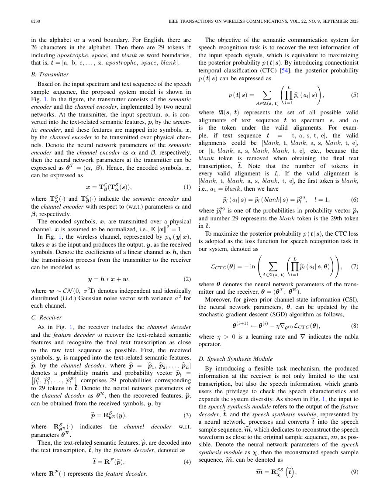<figcaption>架构/方法证据：来源《Deep Learning Enabled Semantic Communications With Speech Recognition and Synthesis》p.4，Fig. 1 In the figure, the transmitter consists of the semantic l=1 A∈A(s, t) encoder and the channel encoder, implemented by two neural networks. At the transmitter, the input spectrum, s。<a href='https://doi.org/10.1109/twc.2023.3240969'>出版页面</a></figcaption></figure><figure>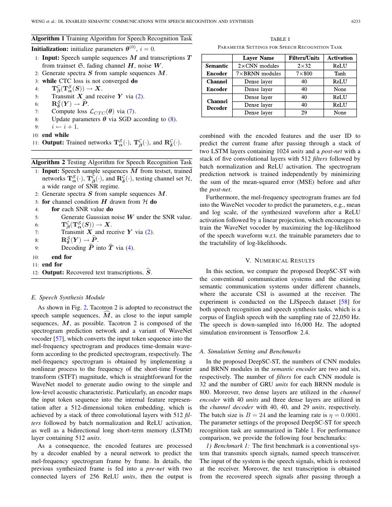<figcaption>关键结果证据：来源《Deep Learning Enabled Semantic Communications With Speech Recognition and Synthesis》p.7，Fig. 2 , Tacotron 2 is adopted to reconstruct the both speech recognition and speech synthesis tasks, which is a speech sample sequences, M c , as close to the input sample corpus of Engl。<a href='https://doi.org/10.1109/twc.2023.3240969'>出版页面</a></figcaption></figure></div>
  <h3>局限性</h3><p>结论主要由论文设定的视频传输/理解数据与仿真信道支持；跨数据、跨设备和真实空口泛化仍需进一步验证。</p>
</article>
<article id='edge-learning-for-large-scale-internet-of-things-with-task-oriented-efficient-communication' class='paper'>
  <div class='paper-head'><div><span class='badge'>related</span><span class='year'>2023</span><h2>Edge Learning for Large-Scale Internet of Things With Task-Oriented Efficient Communication</h2></div><a class='pdf' href='https://doi.org/10.1109/twc.2023.3271665'>DOI / IEEE Xplore</a></div>
  <div class='facts'><div><b>作者</b>Haihui Xie、Minghua Xia、Peiran Wu、Shuai Wang、H. Vincent Poor</div><div><b>刊物</b>IEEE Transactions on Wireless Communications</div><div><b>DOI</b><a href='https://doi.org/10.1109/twc.2023.3271665'>10.1109/twc.2023.3271665</a></div><div><b>IEEE document ID</b>10120724</div><div><b>卷/期/页</b>Vol. 22, No. 12, 9517-9532</div><div><b>任务</b>语义感知资源分配</div></div>
  <h3>Introduction 讲述逻辑</h3><ol><li><b>已有进展：</b>语义/任务导向通信已通过学习型编码降低无关数据传输，并在若干任务上展示端到端收益。</li><li><b>尚存问题：</b>However, compared of things, parallel computing. to increasingly high processing speeds at edge servers, communication suffers from the impairments of wireless I.</li><li><b>为何重要：</b>This critically depends on data algorithms. processing at edge servers, as well as efficient communication Index Terms— Edge learning, multi-user scheduling, internet between edge servers and IoT users [5].</li><li><b>本文方案：</b>Thirdly, we design an accelerated proposed a task-oriented transmission scheme to accelerate algorithm to speed up this parallel algorithm.</li><li><b>解决机制：</b>To address these issues, the traditional data- capability to train simple learning models, the limited memory, oriented communication systems are designed to maximize network throughput based on Shannon’s theory, which targets Manuscript received 25 August 2022; revised 26 January 2023 and 18 April transmitting data reliably given the limited radio resources [8]. 2023; accepted 19 April 2023.</li><li><b>核心主张：</b>Thanks to the high parallelization of the learning, providing intelligent services and applications for IoT designed algorithm, extensive experimental results corroborate users [4]. that the multi-user scheduling and task-oriented power In edge learning, the main design objective is to quickly allocation improve the performance of distinct edge learning acquire intelligence from the rich but highly distributed data tasks efficiently compared with the state-of-the-art benchmark of subscribed IoT users.</li></ol>
  <h3>数据集、baseline 与评价设置</h3><div class='grid3'><div><b>数据集</b><p>MNIST、ModelNet40</p></div><div><b>Baseline</b><p>论文未明确给出或自动定位不足，需结合全文人工复核</p></div><div><b>指标与信道</b><p>accuracy、latency、utility<br>论文未明确给出或自动定位不足，需结合全文人工复核<br>SNR: 13 dB、77 dB、90 dB</p></div></div>
  <h3>方法与数字化方案</h3><p><b>表示判断：</b>数字或混合：显式量化/比特流/传统调制编码</p><ul><li><b>p.2</b> The rest of this paper is organized as follows. Section I To fill the gap, this paper designs a task-oriented power describes the system model and formulates a task-oriented allocation model for efficient communications in large-scale power allocation problem. Section III performs multi-user IoT networks with edge learning. On the one hand, as a scheduling to mitigate C</li><li><b>p.2</b> rithm more efficient. In brevity, Table I compares the of size |Ki | × |Kj | that includes the rows and columns in A existing and proposed schemes. specified by the sets of indices Ki and Kj , respectively. The arithmetic operations x ⪰ y, x ◦ y, and ⟨x, y⟩ denote that each element of x is greater than or equal to the counterpart B. Summary of Main Results of y, the Hadama</li><li><b>p.3</b> task-oriented edge learning system. Then, we formulate the task-oriented power allocation problem with multi-user scheduling. A. System Model Figure 1 illustrates a task-oriented edge learning system consisting of an edge server equipped with N antennas, I different learning tasks {T1 , T2 , · · · , TI } with corresponding user sets K ≜ {K1 , K2 , · · · , KI } and powe</li><li><b>p.3</b> wer of the k th user. As for the I different learning tasks in Fig. 1, each of them concerns a set of transmitted data, Fig. 1. A system model of task-oriented edge learning. a multi-user scheduling algorithm, a learning model, a process of parameter fitting for a learning model, and a task-oriented power allocation problem. By (1), the number of samples transmitted by</li></ul>
  <h3>传输开销与可推导边界</h3><p>\(R_{tx}=B_{semantic}/B_{raw}\)，若论文仅给 channel uses，则不能在缺少调制阶数与帧开销时把它直接当成 bit-rate。</p><p class='muted'>论文未在可稳定抽取的段落中给出码本大小、token 数或 bit 数；报告不据 latent 维度虚构精确码率。</p>
  <h3>信道处理机制</h3><p><b>分类：</b>数字语义表示叠加传统信道编码/调制</p><ul><li><b>p.1</b> 6 and learning, as they rely only on classical source coding Grant U2001213, in part by the Guangdong Basic and Applied Basic and channel coding theory and fail to improve learning Research Project under Grant 2021B1515120067, and in part by the U.S. National Science Foundation under Grant CNS-2128448. The associate editor performance [9]. Therefore, a paradigm shift for</li></ul><p><b>Codex 判断：</b>属于技术边界相关，单列以避免扩大“语义通信”定义。</p>
  <h3>主要结果</h3><ul><li><b>p.1</b> o the high parallelization of the learning, providing intelligent services and applications for IoT designed algorithm, extensive experimental results corroborate users [4]. that the multi-user scheduling and task-oriented power In edge learning, the main design objective is to quickly allocation improve the performance of distinct edge learning acquire intelligence from the ri</li><li><b>p.1</b> [4]. that the multi-user scheduling and task-oriented power In edge learning, the main design objective is to quickly allocation improve the performance of distinct edge learning acquire intelligence from the rich but highly distributed data tasks efficiently compared with the state-of-the-art benchmark of subscribed IoT users. This critically depends on data alg</li><li><b>p.1</b> mprove the performance of distinct edge learning acquire intelligence from the rich but highly distributed data tasks efficiently compared with the state-of-the-art benchmark of subscribed IoT users. This critically depends on data algorithms. processing at edge servers, as well as efficient communication Index Terms— Edge learning, multi-user scheduling, internet betwee</li><li><b>p.1</b> on classical source coding Grant U2001213, in part by the Guangdong Basic and Applied Basic and channel coding theory and fail to improve learning Research Project under Grant 2021B1515120067, and in part by the U.S. National Science Foundation under Grant CNS-2128448. The associate editor performance [9]. Therefore, a paradigm shift for wireless coordinating the</li><li><b>p.2</b> lerate algorithm to speed up this parallel algorithm. Finally, extensive learning processes efficiently by capturing the semantic experimental results demonstrate the efficiency of our design. features from the correlated multimodal data of the IoT users. In summary, the main contributions are as follows: Nevertheless, these task-oriented communication schemes are 1) A task-ori</li></ul>
  <div class='figs'><figure>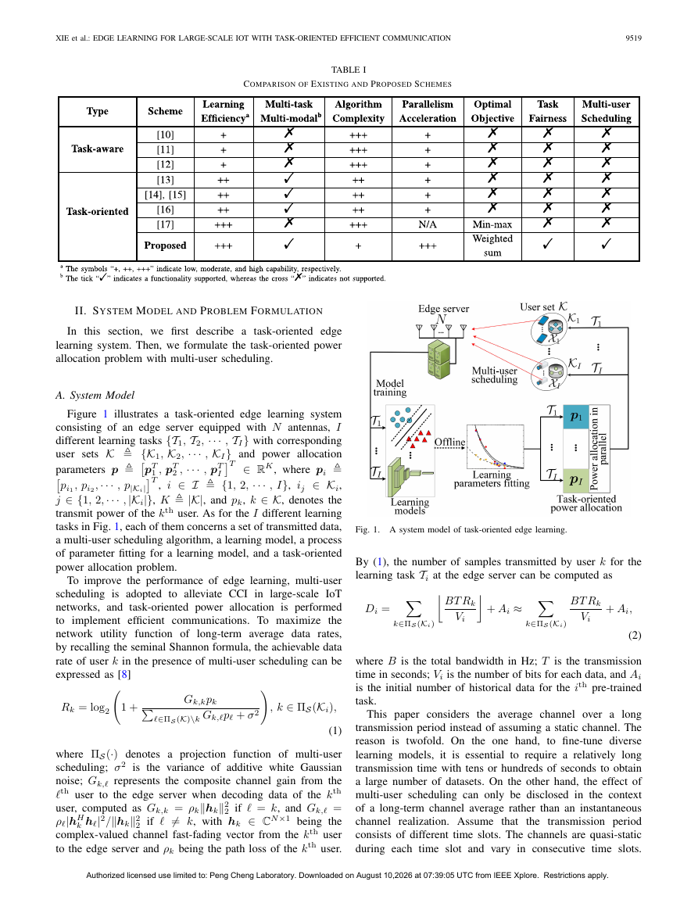<figcaption>架构/方法证据：来源《Edge Learning for Large-Scale Internet of Things With Task-Oriented Efficient Communication》p.3，Fig. 1 , each of them concerns a set of transmitted data, Fig. 1. A system model of task-oriented edge learning. a multi-user scheduling algorithm, a learning model, a process of paramete。<a href='https://doi.org/10.1109/twc.2023.3271665'>出版页面</a></figcaption></figure><figure>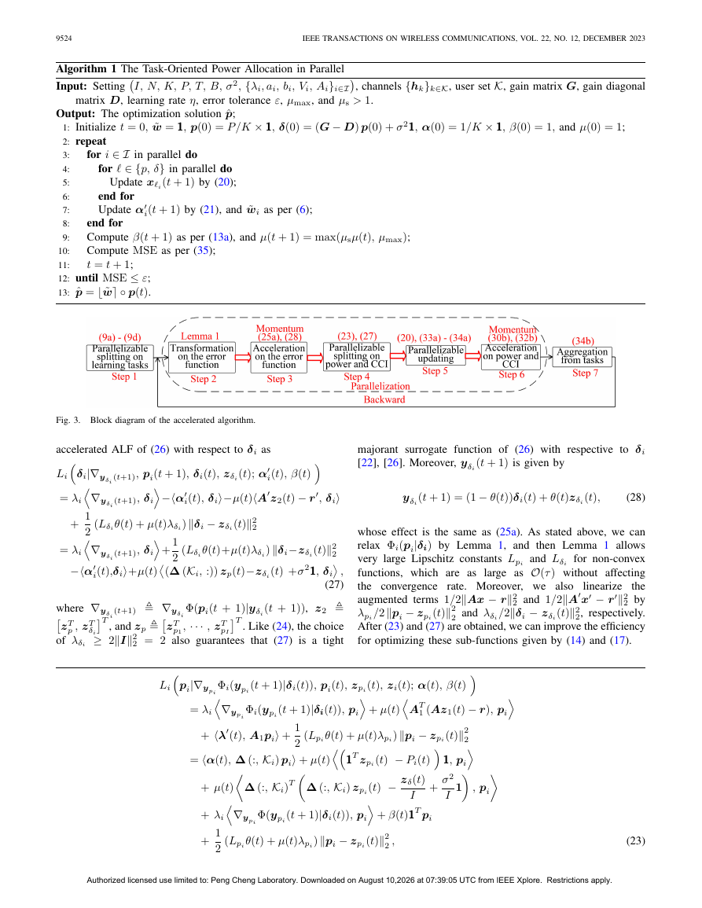<figcaption>关键结果证据：来源《Edge Learning for Large-Scale Internet of Things With Task-Oriented Efficient Communication》p.8，Fig. 3 Block diagram of the accelerated algorithm. accelerated ALF of (26) with respect to δ i as majorant surrogate function of (26) with respective to δ i   [22], [26]. Moreover, y δi。<a href='https://doi.org/10.1109/twc.2023.3271665'>出版页面</a></figcaption></figure></div>
  <h3>局限性</h3><p>主要依赖传统译码输出；若译码后仍残留 bit/index 错误，码本跳变与语义灾难性失真未必得到端到端处理。</p>
</article>
<article id='excess-distortion-exponent-analysis-for-semantic-aware-mimo-communication-systems' class='paper'>
  <div class='paper-head'><div><span class='badge'>core</span><span class='year'>2023</span><h2>Excess Distortion Exponent Analysis for Semantic-Aware MIMO Communication Systems</h2></div><a class='pdf' href='https://doi.org/10.1109/twc.2023.3238463'>DOI / IEEE Xplore</a></div>
  <div class='facts'><div><b>作者</b>Yuxuan Shi、Shuo Shao、Yongpeng Wu、Wenjun Zhang、Xiang-Gen Xia、Chengshan Xiao</div><div><b>刊物</b>IEEE Transactions on Wireless Communications</div><div><b>DOI</b><a href='https://doi.org/10.1109/twc.2023.3238463'>10.1109/twc.2023.3238463</a></div><div><b>IEEE document ID</b>10026795</div><div><b>卷/期/页</b>Vol. 22, No. 9, 5927-5940</div><div><b>任务</b>视频传输/理解</div></div>
  <h3>Introduction 讲述逻辑</h3><ol><li><b>已有进展：</b>I NTRODUCTION how to model the semantic information in practical communi- A S a new paradigm in 6G networks, semantic communi- cation gains significant attention in recent days, and is expected to become a promising technology in future wire- cation have been made in the last seven decades [2], [3], [4].</li><li><b>尚存问题：</b>Xiao. (Corresponding authors: Shuo Shao; Yongpeng Wu.) Yuxuan Shi is with the School of Cyber and Engineering, Shanghai Jiao information bottleneck theory, and realize the semantic-aware Tong University, Shanghai 200240, China, and also with ZGC Institute of image compression.</li><li><b>为何重要：</b>I NTRODUCTION how to model the semantic information in practical communi- A S a new paradigm in 6G networks, semantic communi- cation gains significant attention in recent days, and is expected to become a promising technology in future wire- cation have been made in the last seven decades [2], [3], [4].</li><li><b>本文方案：</b>本文围绕《Excess Distortion Exponent Analysis for Semantic-Aware MIMO Communication Systems》提出相应系统或优化框架。</li><li><b>解决机制：</b>Finally, numerical results on the exponent are also function on characterizing the semantic information, we first presented to show how the environment parameters affect the start from a long Markov chain which consists of a source exponent. pair (S, X), a noisy channel W and the reconstructions This paper is organized as follows: in Section II, we give (Ŝ, X̂), in which S represents the semantic source (intrin- the notations on semantic-aware communication system, joint sic state) and X stands for the observed source (extrinsic source-channel coding scheme and the excess distortion expo- state).</li><li><b>核心主张：</b>Chengshan Xiao is with the Department of Electrical and Computer to improve the compression or transmission performances, Engineering, Lehigh University, Bethlehem, PA 18015 USA (e-mail: based on the machine learning techniques in terms of the xiaoc@lehigh.edu). texts, audios and images (see e.g., [8], [9], [10], [11], [12], Color versions of one or more figures in this article are available at https://doi.org/10.1109/TWC.2023.3238463. [13], [14] for a few representative works).</li></ol>
  <h3>数据集、baseline 与评价设置</h3><div class='grid3'><div><b>数据集</b><p>论文未明确给出或自动定位不足，需结合全文人工复核</p></div><div><b>Baseline</b><p>DeepSC、WITT、LDPC、Polar、Transformer</p></div><div><b>指标与信道</b><p>论文未明确给出或自动定位不足，需结合全文人工复核<br>Rayleigh、Rician、MIMO、OFDM、BSC、fading channel<br>SNR: 论文未明确给出或自动定位不足，需结合全文人工复核</p></div></div>
  <h3>方法与数字化方案</h3><p><b>表示判断：</b>数字或混合：显式量化/比特流/传统调制编码</p><ul><li><b>p.3</b> is positive definite. semantic and observable information as the following. Definition 1 (Lossy Joint Source-Channel Code for A. System Model Semantic-Aware Communications): The tuple (φn , ψSk , ψX k ) is A semantic-aware communication system is depicted in an (n, k, Ds , Dx ) lossy joint source-channel code for semantic Fig. 1. A discrete memoryless source (DMS) is d</li><li><b>p.13</b> ol. 54, no. 7, pp. 2976–2996, 1 −1 H H H Jul. 2008. × exp tr A Y H HH HY . (44) 16Nw2 ρ2 [20] G. J. Foschini, “Layered space-time architecture for wireless commu- nication in a fading environment when using multi-element antennas,” By applying Lemma 3 again and Bell Labs Tech. J., vol. 1, no. 2, pp. 41–59, Feb. 1996. [21] V. Tarokh, N. Seshadri, and A. R. Calderbank, “S</li></ul>
  <h3>传输开销与可推导边界</h3><p>\(R_{tx}=B_{semantic}/B_{raw}\)，若论文仅给 channel uses，则不能在缺少调制阶数与帧开销时把它直接当成 bit-rate。</p><ul><li><b>p.3</b> nt Fig. 1. A semantic-aware communication system. source-channel code with block length n and transmission rate t = nk symbol per channel use for the memoryless source (S, X) and channel WZ|Y is defined as a tuple of mappings: memoryless case, as well as the degenerated cases to Csiszar, Weissman and Merhav’s exponents. In Section IV, a theory k φn (·) : X k → Y n , ψS</li><li><b>p.8</b> coefficient α = 0.3, cient and the numbers of antennas. Finally, we also discuss SNR= 15, and the transmission rate t = 2 symbol/channel use. how the optimal code rate R⋆ behaviors in terms of different Note that the rate-distortion function characterizing the seman- transmission rate t. tic information R(PX , PS|X , Ds , Dx ) = 1.8 and the ergodic capacity C(WZ|Y ) =</li><li><b>p.11</b> ion probability is stated as a function of n, k but the exponent of the optimal JSCC only concerns the transmission rate t symbol/channel use.  U ≜ US|X ∈ C(X → S) : R(QX , US|X , Ds , Dx ) ≥ r . (32) A PPENDIX B Following Eq. (26), the overall excess distortion probability P ROOF OF T HEOREM 2 can be stated in Eq. (33), Lemma 3: [42, Appendix B] For every pair of Her</li><li><b>p.12</b> n by [39, Prop 1]. For an expurgated bound, which (S = hX + N, X), and the reconstructed source vectors Ŝ, X̂. is derived from a codebook expurgating the bad codewords, The minimum of Eq. (7) is presented with two distributions and hence performs better than random coding bound at lower QX and US|X subject to R(QX , US|X , Ds , Dx ) ≥ r. Note that code rate, Alfano</li></ul>
  <h3>信道处理机制</h3><p><b>分类：</b>显式建模离散变量/比特错误，并进行鲁棒或联合恢复</p><ul><li><b>p.1</b> this paper, the analysis of excess distortion expo- considering the meanings behind symbols instead of pur- nent for joint source-channel coding (JSCC) in semantic-aware suing the accurate reconstructions, is able to transmit the communication systems is presented. By introducing an unob- desired semantic information to specific receivers. Conse- servable semantic source,</li><li><b>p.1</b> cation will be inevitably in full flourish. Index Terms— Semantic-aware communication, excess distor- tion exponent, joint source-channel coding, MIMO block fading A. Related Works channel. The concept of semantic communication was given by the landmark work [1] in 1950s, in which the author conceived the communication over semantic level. Hereafter the efforts on I. I NT</li><li><b>p.1</b> 3238463. [13], [14] for a few representative works). Among these, Digital Object Identifier 10.1109/TWC.2023.3238463 joint source-channel coding (JSCC) based on deep learning 1536-1276 © 2023 IEEE. Personal use is permitted, but republication/redistribution requires IEEE permission. See https://www.ieee.org/publications/rights/index.html for more information. Authorized l</li><li><b>p.2</b> communication with IoT fog networks and hybrid observed recovery X̂ in their loss functions. Some other works auto repeat quires (HARQ), respectively. execute the feature-specified tasks [8], [10], [12], [14], e.g., the object detection and image recognition, which means the semantic recovery Ŝ is considered. Then in the second part B. Motivations and Contribut</li><li><b>p.2</b> ate an extra semantic source. This obstacle is solved by works. Sparked by the above issue, it is natural to inves- introducing a channel coding theorem from [24] to show the tigate the performance of JSCC-based semantic communi- joint typicality among the semantic, observed and received cation under practical wireless channels, e.g. multiple-input sequences. Moreover, to</li><li><b>p.2</b> r exponent is chosen as the instead of “error exponent” in the following). Upper and performance measure, since separated source- channel coding lower bounds of the exponent are presented as optimization (SSCC) performs the same as JSCC, in error probability sense problems in a discrete and memoryless case. We verify that our with infinite block length, while JSCC is stri</li></ul><p><b>Codex 判断：</b>属于核心</p>
  <h3>主要结果</h3><ul><li><b>p.1</b> servable semantic source, we extend the classical results by Csiszar to semantic-aware communication systems. Both upper quently, compared with the conventional paradigm, semantic- and lower bounds of the exponent for the discrete memoryless aware communication systems can thus compress the source source-channel pair are established. Moreover, an extended information in</li><li><b>p.1</b> s on semantic communication were proposed xianggen@udel.edu). Chengshan Xiao is with the Department of Electrical and Computer to improve the compression or transmission performances, Engineering, Lehigh University, Bethlehem, PA 18015 USA (e-mail: based on the machine learning techniques in terms of the xiaoc@lehigh.edu). texts, audios and images (see e.g., [8],</li><li><b>p.2</b> 5928 IEEE TRANSACTIONS ON WIRELESS COMMUNICATIONS, VOL. 22, NO. 9, SEPTEMBER 2023 (DL) networks is widely applied to improve the semantic to the two necessary distortion constraints on semantic and communication performance. More specifically, authors in [9] observed reconstructions. This is the main difference between proposed a general DL-based JSCC</li></ul>
  <div class='figs'><figure>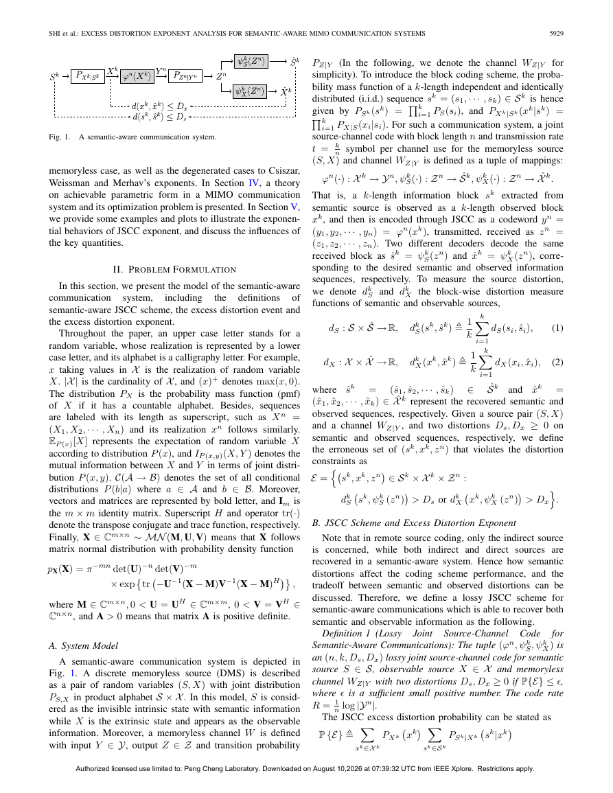<figcaption>架构/方法证据：来源《Excess Distortion Exponent Analysis for Semantic-Aware MIMO Communication Systems》p.3，Fig. 1 A semantic-aware communication system. source-channel code with block length n and transmission rate t = nk symbol per channel use for the memoryless source (S, X) and channel WZ|Y。<a href='https://doi.org/10.1109/twc.2023.3238463'>出版页面</a></figcaption></figure><figure>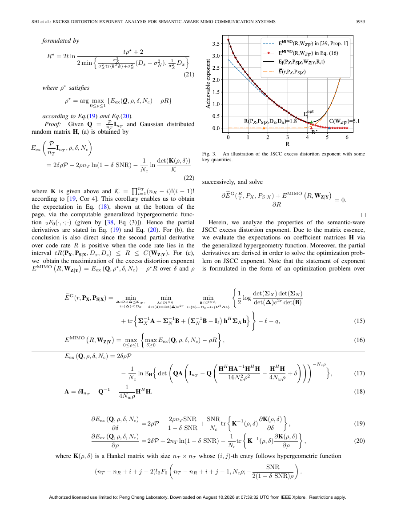<figcaption>关键结果证据：来源《Excess Distortion Exponent Analysis for Semantic-Aware MIMO Communication Systems》p.7，Fig. 3 An illustration of the JSCC excess distortion exponent with some 1 det(K(ρ, δ)) key quantities. = 2δρP − 2ρnT ln(1 − δ SNR) − ln Nc K (22) successively, and solve QnT where K is gi。<a href='https://doi.org/10.1109/twc.2023.3238463'>出版页面</a></figcaption></figure></div>
  <h3>局限性</h3><p>已触及数字语义链路关键问题，但错误模型、码本规模和数据分布迁移下的泛化仍需真实空口验证。</p>
</article>
<article id='integrated-sensing-communication-computation-for-over-the-air-edge-ai-inference' class='paper'>
  <div class='paper-head'><div><span class='badge'>related</span><span class='year'>2023</span><h2>Integrated Sensing-Communication-Computation for Over-the-Air Edge AI Inference</h2></div><a class='pdf' href='https://doi.org/10.1109/twc.2023.3306465'>DOI / IEEE Xplore</a></div>
  <div class='facts'><div><b>作者</b>Zeming Zhuang、Dingzhu Wen、Yuanming Shi、Guangxu Zhu、Sheng Wu、Dusit Niyato</div><div><b>刊物</b>IEEE Transactions on Wireless Communications</div><div><b>DOI</b><a href='https://doi.org/10.1109/twc.2023.3306465'>10.1109/twc.2023.3306465</a></div><div><b>IEEE document ID</b>10230049</div><div><b>卷/期/页</b>Vol. , No. , </div><div><b>任务</b>分类/边缘推理</div></div>
  <h3>Introduction 讲述逻辑</h3><ol><li><b>已有进展：</b>To further address the privacy issue, the edge-device co- Guangxu Zhu is with the Shenzhen Research Institute of Big Data, Shenzhen 518172, China (e-mail: gxzhu@sribd.cn). inference emerges as a promising solution (see, [17], [18], Sheng Wu is with the School of Information and Communication [19], [20]).</li><li><b>尚存问题：</b>The challenge lies in three aspects: the coupling of integrated sensing, computation and communication (ISCC) between sensing and AirComp, the joint optimization of all in this work.</li><li><b>为何重要：</b>Under this criterion, a problem of joint sensing power limited network resources in edge-device co-inference tasks assignment, transmit precoding and receive beamforming is from a systematic view, we propose a task-oriented scheme formulated.</li><li><b>本文方案：</b>Under this criterion, a problem of joint sensing power limited network resources in edge-device co-inference tasks assignment, transmit precoding and receive beamforming is from a systematic view, we propose a task-oriented scheme formulated.</li><li><b>解决机制：</b>Specifically, AirComp optimization of different feature elements is separately allows all devices simultaneously to transmit the same designed and the sensing stage is not considered, the dimension of all local feature vectors over the same frequency sensing, on-device computation and AirComp of all band, leading to a significant enhancement of communication feature elements are jointly optimized in our proposed efficiency (see, [39], [40], [41], [42]).</li><li><b>核心主张：</b>The authors in [19] further combined the methods of early exiting, model partitioning and data quantization to improve the inference performance.</li></ol>
  <h3>数据集、baseline 与评价设置</h3><div class='grid3'><div><b>数据集</b><p>论文未明确给出或自动定位不足，需结合全文人工复核</p></div><div><b>Baseline</b><p>GAN</p></div><div><b>指标与信道</b><p>mAP、accuracy、latency<br>Rayleigh、MIMO、OFDM、fading channel<br>SNR: 8 dB</p></div></div>
  <h3>方法与数字化方案</h3><p><b>表示判断：</b>数字或混合：显式量化/比特流/传统调制编码</p><ul><li><b>p.1</b> tion recognition task are conducted to with the orthogonal-frequency-division-multiplexing technique verify the advantages of the proposed scheme over the existing for suppressing the sensing and channel noise. The aggregated scheme and a baseline. denoised global feature vector is further input to a server- side AI model for completing the downstream inference task. Index</li><li><b>p.3</b> erformance Evaluation: Extensive experiments are elements and the complicated form of the maximum mini- performed to evaluate our proposed framework and mum pair-wise discriminant gain. To address this problem, algorithm based on the wireless sensing simulator we propose the task-oriented ISCC scheme with AirComp. proposed in [44]. A wide-view human motion recognition The det</li><li><b>p.3</b> ich verifies the efficiency of the adopted design (see, [28], [30], [31]), we adopt a novel design criterion criterion. Then, the proposed scheme is shown to called maximum minimum pair-wise discriminant gain in outperform the state-of-the-art scheme and a baseline this work. It maximizes the discriminant gain between the scheme. closest class pair. Consequently, the least</li><li><b>p.3</b> mation and proposes an SCA based algorithm. established to complete edge-device co-inference tasks. The simulation results of the proposed scheme are shown in The modules of sensing (including sensing waveform Section V by comparing with other baseline schemes. Finally, design and SVD based clutter cancellation), on-device we conclude this paper in Section VI. Authorized l</li><li><b>p.5</b> ZHUANG et al.: INTEGRATED SENSING-COMMUNICATION-COMPUTATION FOR OVER-THE-AIR EDGE AI INFERENCE 3209 Fig. 2. The system architecture of the proposed ISCC framework. Fig. 3. The workflow for completing an inference task. dimensions of Rk . As a result, the data matrix after filtering 2) Feature Extraction: Following [28], [30], and [31], the is PCA based linear</li></ul>
  <h3>传输开销与可推导边界</h3><p>\(R_{tx}=B_{semantic}/B_{raw}\)，若论文仅给 channel uses，则不能在缺少调制阶数与帧开销时把它直接当成 bit-rate。</p><ul><li><b>p.2</b> ical inference accuracy threshold. The authors in [19] further combined the methods of early exiting, model partitioning and data quantization to improve the inference performance. A joint source and channel coding (JSCC) approach was developed in [25] to map feature vectors into channel symbols. Nevertheless, as stated by [26], [27], [28], and [29], edge inference</li></ul>
  <h3>信道处理机制</h3><p><b>分类：</b>显式建模离散变量/比特错误，并进行鲁棒或联合恢复</p><ul><li><b>p.2</b> d the methods of early exiting, model partitioning and data quantization to improve the inference performance. A joint source and channel coding (JSCC) approach was developed in [25] to map feature vectors into channel symbols. Nevertheless, as stated by [26], [27], [28], and [29], edge inference features a task-oriented property where the effectiveness and efficiency of</li><li><b>p.11</b> I) stands for the small-scale λℓ,ℓ′ ,m can be updated with their stepsizes ηβk , ηγℓ,ℓ′ , ηθk,m fading channel coefficient, where Rayleigh small-scale fading and ηλℓ,ℓ′ ,m to solve the problem in the next round, respec- is considered in the simulation. The variances of sensing noise tively. The primal-dual method is presented in Algorithm 1. 2 σr2 and clutter signal</li></ul><p><b>Codex 判断：</b>属于技术边界相关，单列以避免扩大“语义通信”定义。</p>
  <h3>主要结果</h3><ul><li><b>p.2</b> ccuracy threshold. The authors in [19] further combined the methods of early exiting, model partitioning and data quantization to improve the inference performance. A joint source and channel coding (JSCC) approach was developed in [25] to map feature vectors into channel symbols. Nevertheless, as stated by [26], [27], [28], and [29], edge inference features a tas</li><li><b>p.3</b> ased on the typical method of successive the sensing noise power and enhancing the communication convex approximation (SCA) [43]. Compared with the efficiency, all local feature vectors are aggregated at the edge existing AirComp based scheme in [28], where the server via the technique of AirComp. Specifically, AirComp optimization of different feature elements is separa</li><li><b>p.3</b> t a novel design criterion criterion. Then, the proposed scheme is shown to called maximum minimum pair-wise discriminant gain in outperform the state-of-the-art scheme and a baseline this work. It maximizes the discriminant gain between the scheme. closest class pair. Consequently, the least distinguishable The rest of this paper is organized as follows. Section II c</li><li><b>p.3</b> ework is variable transformation and proposes an SCA based algorithm. established to complete edge-device co-inference tasks. The simulation results of the proposed scheme are shown in The modules of sensing (including sensing waveform Section V by comparing with other baseline schemes. Finally, design and SVD based clutter cancellation), on-device we conclude this paper in S</li><li><b>p.7</b> wise discriminant gain, the corresponding K X pair of classes are better separated in the feature space, thus H H resulting in an improved achievable inference accuracy. fℓ (x̂(m)) = fm hk,m bk,m fℓ (xk (m)) + fm f (w(m)), k=1 In existing literatures [28], [30], [31], maximizing the (22) average of all pair-wise discriminant gains as defined in (25)  2 2 σr2  is</li></ul>
  <div class='figs'><figure>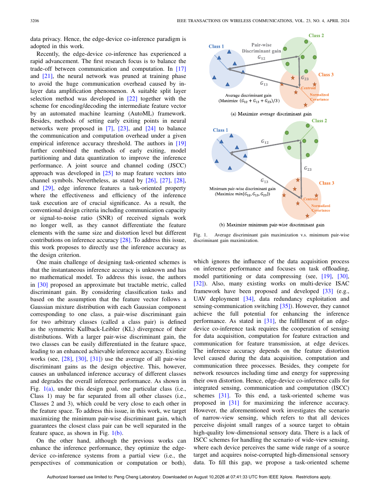<figcaption>架构/方法证据：来源《Integrated Sensing-Communication-Computation for Over-the-Air Edge AI Inference》p.2，Fig. 1 Average discriminant gain maximization v.s. minimum pair-wise contributions on inference accuracy [28]. To address this issue, discriminant gain maximization. this work proposes to。<a href='https://doi.org/10.1109/twc.2023.3306465'>出版页面</a></figcaption></figure><figure>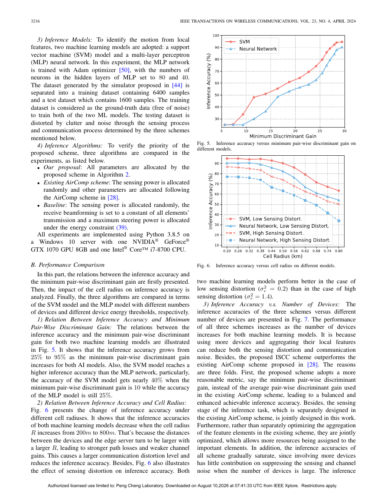<figcaption>关键结果证据：来源《Integrated Sensing-Communication-Computation for Over-the-Air Edge AI Inference》p.12，Fig. 5 Inference accuracy versus minimum pair-wise discriminant gain on 4) Inference Algorithms: To verify the priority of the different models. proposed scheme, three algorithms are comp。<a href='https://doi.org/10.1109/twc.2023.3306465'>出版页面</a></figcaption></figure></div>
  <h3>局限性</h3><p>已触及数字语义链路关键问题，但错误模型、码本规模和数据分布迁移下的泛化仍需真实空口验证。</p>
</article>
<article id='over-the-air-multi-view-pooling-for-distributed-sensing' class='paper'>
  <div class='paper-head'><div><span class='badge'>related</span><span class='year'>2023</span><h2>Over-the-Air Multi-View Pooling for Distributed Sensing</h2></div><a class='pdf' href='https://doi.org/10.1109/twc.2023.3343086'>DOI / IEEE Xplore</a></div>
  <div class='facts'><div><b>作者</b>Zhiyan Liu、Qiao Lan、Anders E. Kalør、Petar Popovski、Kaibin Huang</div><div><b>刊物</b>IEEE Transactions on Wireless Communications</div><div><b>DOI</b><a href='https://doi.org/10.1109/twc.2023.3343086'>10.1109/twc.2023.3343086</a></div><div><b>IEEE document ID</b>10373820</div><div><b>卷/期/页</b>Vol. , No. , </div><div><b>任务</b>图像传输/视觉任务</div></div>
  <h3>Introduction 讲述逻辑</h3><ol><li><b>已有进展：</b>Most recently, makes AirPooling, the theme of this work, an uncharted a method of distributed information bottleneck has been pro- area. posed to optimize the tradeoff between the communication rate The key contributions and findings of the work are summa- and the distortion of the prediction results [13].</li><li><b>尚存问题：</b>This process, known as Max-AirPooling, yielding a sub-optimal closed-form method of multi-view pooling, creates a communication bottleneck due to adaptive parametric control.</li><li><b>为何重要：</b>Kalør , Member, IEEE, Petar Popovski , Fellow, IEEE, and Kaibin Huang , Fellow, IEEE Abstract— Sensing is envisioned as a key network function the analysis reveals an inherent tradeoff of Max-AirPooling of the sixth-generation (6G) mobile networks.</li><li><b>本文方案：</b>To alleviate this issue, we propose a real-world datasets show that AirPooling provides sensing accu- task-oriented simultaneous access scheme for distributed sensing racies close to those achievable by the traditional digital air called Over-the-Air Pooling (AirPooling).</li><li><b>解决机制：</b>One research focus in split inference as over-the-air federated learning [19], [21], [22], [23]. is on task-oriented communications aiming to optimize the Researchers also proposed the use of AirComp to realize end-to-end (E2E) inference throughput, accuracy, or latency. majority-voting over-the-air in a distributed inference sys- To this end, researchers have designed a range of relevant tem [24].</li><li><b>核心主张：</b>Researchers sequential AirComp of their bits in binary representation. have applied the algorithm of variational information bottle- An alternative approach utilizes multiple-input-multiple- neck to designing a channel-adaptive feature quantizer that output (MIMO) AirComp to locate the maximum value aims to minimize the communication overhead for classifica- among a set of partitioned intervals, where the partition tion given a time-varying channel [6]. resolution is improved over rounds through broadcasting The split inference for distributed AIoT sensing can be real- the updated set of intervals [20].</li></ol>
  <h3>数据集、baseline 与评价设置</h3><div class='grid3'><div><b>数据集</b><p>ModelNet40、ShapeNet</p></div><div><b>Baseline</b><p>论文未明确给出或自动定位不足，需结合全文人工复核</p></div><div><b>指标与信道</b><p>mAP、accuracy、classification accuracy、latency<br>Rician、MIMO<br>SNR: 10 dB、16 dB、174 dB、20 dB、4 dB、5 dB、6 dB</p></div></div>
  <h3>方法与数字化方案</h3><p><b>表示判断：</b>数字或混合：显式量化/比特流/传统调制编码</p><ul><li><b>p.1</b> r distributed AIoT sensing. University, 9220 Aalborg, Denmark, and also with the Department of Electri- AIoT sensing builds on an architecture known as split cal and Electronic Engineering, The University of Hong Kong (HKU), Hong Kong (e-mail: aek@es.aau.hk). inference [1]. Essentially, a trained model is split into a low- Petar Popovski is with the Department of Electr</li><li><b>p.1</b> .2023.3343086. the latter performs inference on the uploaded features. Such an Digital Object Identifier 10.1109/TWC.2023.3343086 architecture provides resource-constrained edge devices access 1536-1276 © 2023 IEEE. Personal use is permitted, but republication/redistribution requires IEEE permission. See https://www.ieee.org/publications/rights/index.html for more infor</li><li><b>p.2</b> ed by adding to the popular Multi-View Convolutional Neural multi-round processes with iterative broadcasting and Network (MVCNN) architecture an air interface between mul- AirComp that compromise the system efficiency. tiple sensors and a server (fusion center) [10]. Compared with • The second issue is how to design AirPooling tar- point-to-point split inference [6], [</li><li><b>p.3</b> ceive signal The distributed sensing system is based on the mentioned power. For tractability, the error is approximated by MVCNN architecture. A pre-trained sensor model is deployed a derived upper bound. Then leveraging the preceding on each sensor, say sensor k, that takes the captured image as approximation-noise tradeoff, the near-optimal parameter input and output</li><li><b>p.3</b> in its vectorized form as fk ∈ RN . We consider the favours a large parameter in the case of high transmit popular deep learning architecture where features are outputs power to better approximate the pooling function but a of the non-negative ReLU or sigmoid functions, and thus small parameter in the case of low transmit power to fk,n ≥ 0 for n = 1, . . . , N . At the</li></ul>
  <h3>传输开销与可推导边界</h3><p>\(R_{tx}=B_{semantic}/B_{raw}\)，若论文仅给 channel uses，则不能在缺少调制阶数与帧开销时把它直接当成 bit-rate。</p><ul><li><b>p.2</b> on (e.g., image reconstruction or direct AirComp implementation. In [25], the maximiza- inference) [8], [9]. In addition, feature quantization is another tion of a set of distributed values is implemented via aspect of communication-efficient split inference. Researchers sequential AirComp of their bits in binary representation. have applied the algorithm of variat</li><li><b>p.2</b> tional information bottle- An alternative approach utilizes multiple-input-multiple- neck to designing a channel-adaptive feature quantizer that output (MIMO) AirComp to locate the maximum value aims to minimize the communication overhead for classifica- among a set of partitioned intervals, where the partition tion given a time-varying channel [6]. resolution is i</li><li><b>p.3</b> e ĝ ≜ [ĝ1 , · · · , ĝN ] where The remainder of this paper is organized as follows. ĝn denotes the n-th AirPooled feature. To quantize its channel The sensing and communication models are introduced distortion and the resultant effect on sensing performance, Authorized licensed use limited to: Peng Cheng Laboratory. Downloaded on August 10,2026 at 07:42:20 UTC</li><li><b>p.9</b> It is termed digital air interface. On each device, a single transmits one symbol simultaneously with others over one feature is quantized into Q bits by uniform quantization. sub-channel and M The server decodes the feature bit streams from sensors and B seconds. The receive noise power density at the server is set to −174 dBm with a hardware noise pools them to</li><li><b>p.9</b> ce. On each device, a single transmits one symbol simultaneously with others over one feature is quantized into Q bits by uniform quantization. sub-channel and M The server decodes the feature bit streams from sensors and B seconds. The receive noise power density at the server is set to −174 dBm with a hardware noise pools them to obtain the pooled features. Varyi</li><li><b>p.11</b> sider a target accuracy the configuration parameter α should grow as the noise effect of 91% which requires a resolution of Q = 6 bit per diminishes. The curves of classification accuracy and AirPool- feature for digital air interface. The resultant latencies are ing error against receive SNR levels are plotted in Fig. 7, 22.90, 18.64, and 14.47 milliseconds given</li></ul>
  <h3>信道处理机制</h3><p><b>分类：</b>数字语义表示叠加传统信道编码/调制</p><ul><li><b>p.2</b> ons are termed researchers have developed the popular approach of joint nomographic functions characterized by a summation source-channel coding for split inference. It consists of a form with different pre-processing of summation terms pair of jointly designed neural-network encoder and decoder, and post-processing of the summation [20]. Examples where the former is used</li><li><b>p.9</b> s sub-channels instead of all M sub-channels as for AirPooling. from devices to the server is all equal to Ppl = 300−3.4 due Each Rician fading sub-channel is inverted using the practical to similar distances plus truncated channel-inversion power truncated channel inversion scheme with threshold τ subject control. Given the above settings, the average receive SNR</li><li><b>p.9</b> air where Eτ ∥hk ∥−2 is due to truncated channel inversion (see interface scheme is then given by   Section II-B). We consider Rician fading where the ratio of KN Q line-of-sight (LoS) channel gain to non-LoS channel gain is set Ldigital = . (27) B log2 (1 + SNRrx K) as 4 dB. We set τ = 10−3 and implement truncated channel inversion such that sensors perform Ai</li><li><b>p.10</b> e 1) Sensing Accuracy and AirPooling Error: Consider SNR. It can be observed that near-optimal performance is Max-AirPooling over Rician channels on ModelNet10 and achieved by the proposed approach, which can be attributed ShapeNet. The curves of AirPooling error against the config- to the tightness of the derived AirPooling-error upper bound uration parameter α a</li><li><b>p.12</b> 3 Fig. 7. Performance comparison between Max-AirPooling and the benchmark digital air interface at the resolution Q = 32 bit over Rician channels on ModelNet10 and ShapeNet datasets for (a) inference accuracy and (b) AirPooling error. Fig. 8. Comparison of communication latency (in millisecond (ms)) between Max-AirPooling and the benchmarking scheme with varying t</li></ul><p><b>Codex 判断：</b>属于技术边界相关，单列以避免扩大“语义通信”定义。</p>
  <h3>主要结果</h3><ul><li><b>p.1</b> ng a sub-optimal closed-form method of multi-view pooling, creates a communication bottleneck due to adaptive parametric control. Experimental results obtained on multi-access by many devices. To alleviate this issue, we propose a real-world datasets show that AirPooling provides sensing accu- task-oriented simultaneous access scheme for distributed sensing racies close to thos</li><li><b>p.2</b> ad for classifica- among a set of partitioned intervals, where the partition tion given a time-varying channel [6]. resolution is improved over rounds through broadcasting The split inference for distributed AIoT sensing can be real- the updated set of intervals [20]. Both approaches involve ized by adding to the popular Multi-View Convolutional Neural multi-round</li><li><b>p.2</b> ure an air interface between mul- AirComp that compromise the system efficiency. tiple sensors and a server (fusion center) [10]. Compared with • The second issue is how to design AirPooling tar- point-to-point split inference [6], [7], [8], [9], the distinctive geting a specific computation task with an associated feature of MVCNN is multi-view pooling, referring to the</li><li><b>p.2</b> object recognition, the task-oriented design of model. Two common types of multi-view pooling operation AirPooling should aim to improve the classification are Average- and Max-Pooling that compute the average and accuracy in the presence of channel hostility. Existing maximum of distributed features, respectively [10], [11], [12]. AirComp techniques lack E2E awa</li><li><b>p.3</b> is fed Average-AirPooling regardless of the SNR. into the pre-trained server model to obtain the inference result. • Experiments: Experimental results using selected real- Specifically, the feature pooling is materialized via average- life datasets demonstrate that Max-AirPooling can pooling or max-pooling with the n-th pooled feature given as achieve higher sensing accuracies</li></ul>
  <div class='figs'><figure>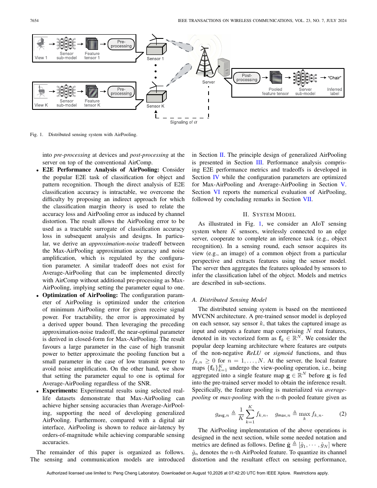<figcaption>架构/方法证据：来源《Over-the-Air Multi-View Pooling for Distributed Sensing》p.3，Fig. 1 Distributed sensing system with AirPooling. into pre-processing at devices and post-processing at the in Section II. The principle design of generalized AirPooling server on top of。<a href='https://doi.org/10.1109/twc.2023.3343086'>出版页面</a></figcaption></figure><figure>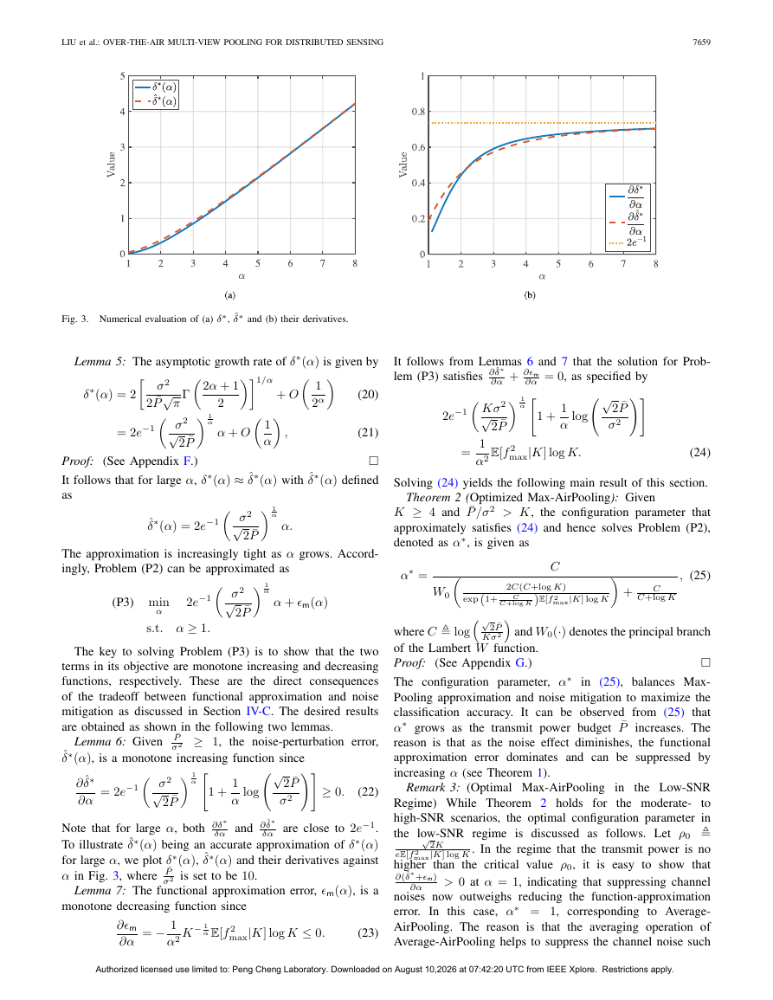<figcaption>关键结果证据：来源《Over-the-Air Multi-View Pooling for Distributed Sensing》p.8，Fig. 3 Numerical evaluation of (a) δ ∗ , δ̂ ∗ and (b) their derivatives. Lemma 5: The asymptotic growth rate of δ ∗ (α) is given by It follows from Lemmas 6 and 7 that the solution for Pr。<a href='https://doi.org/10.1109/twc.2023.3343086'>出版页面</a></figcaption></figure></div>
  <h3>局限性</h3><p>主要依赖传统译码输出；若译码后仍残留 bit/index 错误，码本跳变与语义灾难性失真未必得到端到端处理。</p>
</article>
<article id='predictive-and-adaptive-deep-coding-for-wireless-image-transmission-in-semantic-communication' class='paper'>
  <div class='paper-head'><div><span class='badge'>core</span><span class='year'>2023</span><h2>Predictive and Adaptive Deep Coding for Wireless Image Transmission in Semantic Communication</h2></div><a class='pdf' href='https://doi.org/10.1109/twc.2023.3234408'>DOI / IEEE Xplore</a></div>
  <div class='facts'><div><b>作者</b>Wenyu Zhang、Haijun Zhang、Hui Ma、Hua Shao、Ning Wang、Victor C. M. Leung</div><div><b>刊物</b>IEEE Transactions on Wireless Communications</div><div><b>DOI</b><a href='https://doi.org/10.1109/twc.2023.3234408'>10.1109/twc.2023.3234408</a></div><div><b>IEEE document ID</b>10015684</div><div><b>卷/期/页</b>Vol. 22, No. 8, 5486-5501</div><div><b>任务</b>图像传输/视觉任务</div></div>
  <h3>Introduction 讲述逻辑</h3><ol><li><b>已有进展：</b>Recent advances have demonstrated that DL-based joint (ADJSCC) model, and the proposed OraNet model is able to source-channel coding (DeepJSCC) can achieve exciting data predict high-quality PSNR values with an average error lower compression and noise-resiliency performances for wireless image than 0.5dB.</li><li><b>尚存问题：</b>However, existing DeepJSCC-based image transmission tasks with different channel SNR and image semantic communication frameworks still cannot achieve adap- contents, at the same time guaranteeing the PSNR constraint for tive code rates for different channel SNRs and image contents, each image data. which reduces its flexibility and bandwidth efficiency.</li><li><b>为何重要：</b>Authorized licensed use limited to: Peng Cheng Laboratory.</li><li><b>本文方案：</b>In this paper, we propose a predictive and adaptive deep coding (PADC) Index Terms— Adaptive code length, joint source channel framework for realizing flexible code rate optimization with a coding, quality prediction, semantic communication, wireless given target transmission quality requirement.</li><li><b>解决机制：</b>Similar to the SNR-adaptation problem, a DeepJSCC communication systems [8], [9], [10]. model is trained with one dedicated CR, thus the length of the To solve the above problem, joint source-channel coding obtained semantic code (SC) is fixed, and cannot be changed (JSCC) has been proposed by jointly designing and opti- as other code lengths.</li><li><b>核心主张：</b>Simulation results demonstrate that the proposed munication paradigm that exploits deep learning (DL) models to DeepJSCC-V model can achieve similar PSNR performances realize communication processes like source coding and channel compared with the state-of-the-art Attention-based DeepJSCC coding.</li></ol>
  <h3>数据集、baseline 与评价设置</h3><div class='grid3'><div><b>数据集</b><p>ImageNet、Kodak</p></div><div><b>Baseline</b><p>DeepJSCC、JPEG2000、JPEG、BPG、LDPC、Polar、Turbo</p></div><div><b>指标与信道</b><p>PSNR、mAP<br>AWGN、Rayleigh、MIMO、fading channel<br>SNR: 0.0735dB、0.115dB、0.265dB、0.293dB、0.314dB、0.318dB、0.323dB、0.350dB、0.367dB、0.423dB、0.5dB、0dB、12dB、18dB、24 dB、2dB、30dB、5dB、8dB</p></div></div>
  <h3>方法与数字化方案</h3><p><b>表示判断：</b>数字或混合：显式量化/比特流/传统调制编码</p><ul><li><b>p.3</b> e simulation results of the for achieving flexible, adaptive, and quality guaranteed rate proposed method, along with the network architectures of the control according to different channel SNR and image con- used DeepJSCC-V and OraNet models. Finally, Section 4 con- tents. Compared with ADJSCC [23] and DeepJSCC-A [26], cludes this paper. the proposed PADC framework has</li><li><b>p.4</b> APTIVE D EEP C ODING higher physical channel SNR. In this section, we elaborate the framework proposed PADC method, including the system model, PADC framework, model B. The Proposed PADC Framework training, and adaptive rate control. To deal with the CR-adaptation and SNR-adaptation prob- lems at the same time, as Figure 1 shows, in this paper we A. System Model propose</li><li><b>p.4</b> te control. To deal with the CR-adaptation and SNR-adaptation prob- lems at the same time, as Figure 1 shows, in this paper we A. System Model propose a novel DeepJSCC framework called predictive and We consider a DeepJSCC-enabled wireless image transmis- adaptive deep coding (PADC), and it is composed of a variable sion system, and our goal is to reconstruct the origin</li><li><b>p.5</b> g- and the remained channels will be abandoned. inal image data for predicting the quality value, we will need a Fig. 2 shows the architecture of the used JSCC-V network, much bigger model to understand the complex image contents, which is composed of the following three blocks: residual and the computation complexity will be greatly increased. convolutional block (RCB)</li><li><b>p.5</b> ation respectively, and parameter s means that can quantify the quality of the final reconstructed images. the stride length. The architecture of AFB is the same as the In this paper, we use the commonly used peak signal-to-noise AFBs in [23] and [25]. ratio (PSNR) as the image quality metric, and it formulates After the last AFB of the Encoder, we can obtain semantic t</li></ul>
  <h3>传输开销与可推导边界</h3><p>\(R_{tx}=B_{semantic}/B_{raw}\)，若论文仅给 channel uses，则不能在缺少调制阶数与帧开销时把它直接当成 bit-rate。</p><ul><li><b>p.1</b> I NTRODUCTION (PSNR) value for an image transmission task according to its contents, channel signal to noise ratio (SNR) and the compression ratio (CR) value, and a CR optimizer aims at finding the minimal I N A WIRELESS communication system, source coding and channel coding are two commonly used techniques for improving communication efficiency and reliability respec- data</li><li><b>p.1</b> following three steps to Natural Science Foundation of China under Grant 62102021, Grant 62101030, reduce data amount: transform, quantization and entropy cod- Grant 62225103, and Grant U22B2003; in part by the China Post-Doctoral Science Foundation under Grant 2020M680350; in part by the Beijing Natural ing, such as the well-known Discrete Cosine Transform (DCT) S</li><li><b>p.3</b> re specifically, by using a simple code along with the non-selective features. Simulation results mask operation and with a given compression ratio (CR) demonstrated that the DeepJSCC-A can achieve adaptive R, DeepJSCC-V simply selects the first R-proportion rates according to different channel SNR and image contents. semantic features as the transmitted codes, and the Howev</li><li><b>p.4</b> osed of a of the reconstructed image with specific channel SNR and trainable encoder Eφ , and non-trainable physical channel, and compression ratio (CR) information, and a CR optimizer a trainable decoder Dθ , where φ and θ denote the Encoder that minimizes the transmission data rate with given PSNR parameters and Decoder parameters respectively. Denote the constraint. The d</li><li><b>p.5</b> allowable peak pixel value of the In the same way with [9], the √ complex SC is normalized by images. Since the images used is 8-bit per pixel, we can know the following equation  z = KPz z∗zz , where z∗ denotes the the signal peak value is MAX = 28 −1 = 255. A higher PSNR conjunct transpose of z, and Pz denotes the average transmit- means better quality of the r</li><li><b>p.6</b> (γ, R) ≥ PSNRth , all given, and Gω (μz , σ z , γ, R) is a monotonically increasing 0 &lt; R ≤ 1. (9) function to R, i.e. when data compression ratio R is not sufficiently large, a relative larger value of R will produce Since we only have NSN R × NCR feasible solutions, the a relative higher PSNR value. As such, the above problem above problem can be readily solved by an exha</li></ul>
  <h3>信道处理机制</h3><p><b>分类：</b>显式建模离散变量/比特错误，并进行鲁棒或联合恢复</p><ul><li><b>p.1</b> SCC coding. Recent advances have demonstrated that DL-based joint (ADJSCC) model, and the proposed OraNet model is able to source-channel coding (DeepJSCC) can achieve exciting data predict high-quality PSNR values with an average error lower compression and noise-resiliency performances for wireless image than 0.5dB. Results also demonstrate that the proposed PADC transm</li><li><b>p.1</b> mpression ratio (CR) value, and a CR optimizer aims at finding the minimal I N A WIRELESS communication system, source coding and channel coding are two commonly used techniques for improving communication efficiency and reliability respec- data-level or instance-level CR with a PSNR quality constraint. By using the above three modules, PADC can transmit the tively. In ge</li><li><b>p.1</b> techniques, such as Low article and approving it for publication was C. Huang. (Corresponding author: Density Parity Check Code (LDPC) [4], Polar code [5], and Haijun Zhang.) Turbo code [6]. In conventional communication systems, the Wenyu Zhang, Hui Ma, and Hua Shao are with the School of Intelli- gence Science and Technology, Institute of Artificial Intellige</li><li><b>p.1</b> , such as Low article and approving it for publication was C. Huang. (Corresponding author: Density Parity Check Code (LDPC) [4], Polar code [5], and Haijun Zhang.) Turbo code [6]. In conventional communication systems, the Wenyu Zhang, Hui Ma, and Hua Shao are with the School of Intelli- gence Science and Technology, Institute of Artificial Intelligence, Univer-</li><li><b>p.1</b> -level optimality, the above ence and Technology Beijing, Beijing 100083, China (e-mail: haijunzhang@ separable or layered source-channel coding paradigm is actu- ieee.org). Ning Wang is with the Henan Joint International Research Laboratory of ally suboptimal because it is designed and optimized indepen- Intelligent Networking and Data Analysis, School of Information Eng</li><li><b>p.2</b> ZHANG et al.: PADC FOR WIRELESS IMAGE TRANSMISSION IN SEMANTIC COMMUNICATION 5487 the zero bit error rate, the quality of the recovering result • CR-adaptation problem: The capacity of a DeepJSCC will be dramatically reduced. This problem is called as the model is also influenced by the CR of the obtained semantic ’cliff-effect’</li></ul><p><b>Codex 判断：</b>属于核心</p>
  <h3>主要结果</h3><ul><li><b>p.1</b> g , Member, IEEE, and Victor C. M. Leung , Life Fellow, IEEE Abstract— Semantic communication is a newly emerged com- efficiency. Simulation results demonstrate that the proposed munication paradigm that exploits deep learning (DL) models to DeepJSCC-V model can achieve similar PSNR performances realize communication processes like source coding and channel compared with the</li><li><b>p.1</b> ) models to DeepJSCC-V model can achieve similar PSNR performances realize communication processes like source coding and channel compared with the state-of-the-art Attention-based DeepJSCC coding. Recent advances have demonstrated that DL-based joint (ADJSCC) model, and the proposed OraNet model is able to source-channel coding (DeepJSCC) can achieve exciting data predi</li><li><b>p.1</b> at finding the minimal I N A WIRELESS communication system, source coding and channel coding are two commonly used techniques for improving communication efficiency and reliability respec- data-level or instance-level CR with a PSNR quality constraint. By using the above three modules, PADC can transmit the tively. In general, source coding is usually conducted at</li><li><b>p.1</b> lly works at the physical layer, and it is mainly Technology Innovation Commission under Grant R2020A045; and in part by used for improving the transmission reliability by using error the Fundamental Research Funds for the Central Universities of USTB under Grant FRF-IDRY-20-020. The associate editor coordinating the review of this check or error correcting coding</li><li><b>p.2</b> ission scheme can achieve superior data compres- tively adjust the signal strength of the learned features after sion performance compared with traditional JPEG/JPEG2000 a Conv-block or TransConv-block, such that the encoder methods. In addition, it can achieve significant reliability and decoder can adjust the coding resources assigned to performance improvement against</li></ul>
  <div class='figs'><figure>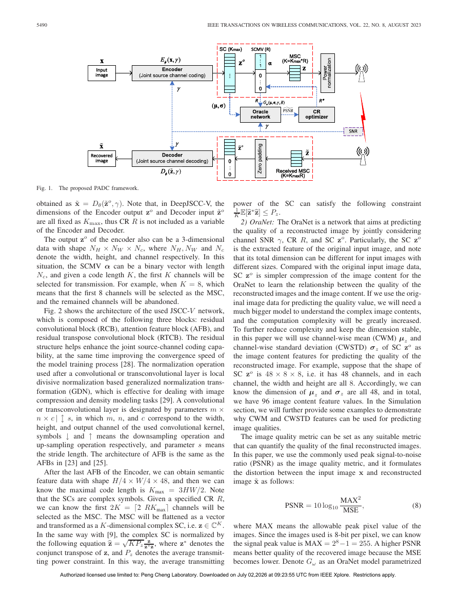<figcaption>架构/方法证据：来源《Predictive and Adaptive Deep Coding for Wireless Image Transmission in Semantic Communication》p.5，Fig. 1 The proposed PADC framework. obtained as x̃ = Dθ (z̃o , γ). Note that, in DeepJSCC-V, the power of the SC can satisfy the following constraint 1 dimensions of the Encoder output zo。<a href='https://doi.org/10.1109/twc.2023.3234408'>出版页面</a></figcaption></figure><figure>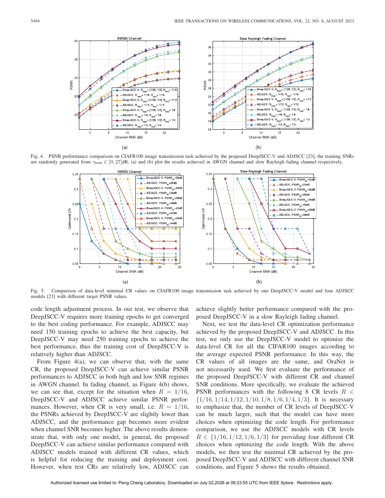<figcaption>关键结果证据：来源《Predictive and Adaptive Deep Coding for Wireless Image Transmission in Semantic Communication》p.9，Fig. 4 PSNR performance comparison on CIAFR100 image transmission task achieved by the proposed DeepJSCC-V and ADJSCC [23], the training SNRs are randomly generated from γtrain ∈ [0, 27]d。<a href='https://doi.org/10.1109/twc.2023.3234408'>出版页面</a></figcaption></figure></div>
  <h3>局限性</h3><p>已触及数字语义链路关键问题，但错误模型、码本规模和数据分布迁移下的泛化仍需真实空口验证。</p>
</article>
<article id='progressive-feature-transmission-for-split-classification-at-the-wireless-edge' class='paper'>
  <div class='paper-head'><div><span class='badge'>related</span><span class='year'>2023</span><h2>Progressive Feature Transmission for Split Classification at the Wireless Edge</h2></div><a class='pdf' href='https://doi.org/10.1109/twc.2022.3221778'>DOI / IEEE Xplore</a></div>
  <div class='facts'><div><b>作者</b>Qiao Lan、Qunsong Zeng、Petar Popovski、Deniz Gündüz、Kaibin Huang</div><div><b>刊物</b>IEEE Transactions on Wireless Communications</div><div><b>DOI</b><a href='https://doi.org/10.1109/twc.2022.3221778'>10.1109/twc.2022.3221778</a></div><div><b>IEEE document ID</b>9955582</div><div><b>卷/期/页</b>Vol. 22, No. 6, 3837-3852</div><div><b>任务</b>分类/边缘推理</div></div>
  <h3>Introduction 讲述逻辑</h3><ol><li><b>已有进展：</b>语义/任务导向通信已通过学习型编码降低无关数据传输，并在若干任务上展示端到端收益。</li><li><b>尚存问题：</b>This requires the edge devices to upload high-dimensional features of samples Index Terms— Edge computing, edge artificial intelligence (AI), over resource-constrained wireless channels, which creates a split learning, convolutional neural network (CNN), progressive communication bottleneck.</li><li><b>为何重要：</b>For the former, it is shown that selecting the most important features, characterized by the largest discriminant inference [1], [3], which is the theme of this work and deals gains of the corresponding feature dimensions, achieves a sub- with operating of such models at edge servers to provide optimal performance.</li><li><b>本文方案：</b>To address this issue, we propose the progressive feature transmission (ProgressFTX) protocol, which minimizes the overhead by progressively transmitting features until a target R ECENT years have witnessed the extensive deployment of artificial intelligence (AI) technologies at the network edge to gain fast access to and processing of mobile data. confidence level is reached.</li><li><b>解决机制：</b>EPSRC through the CHIST-ERA Program under device-server splitting of the computation load can be adjusted Grants EP/T023600/1 and EP/W035960/1.</li><li><b>核心主张：</b>To improve the communication efficiency, channels are considered.</li></ol>
  <h3>数据集、baseline 与评价设置</h3><div class='grid3'><div><b>数据集</b><p>MNIST</p></div><div><b>Baseline</b><p>论文未明确给出或自动定位不足，需结合全文人工复核</p></div><div><b>指标与信道</b><p>mAP、accuracy、classification accuracy、latency、utility<br>fading channel<br>SNR: 4 dB</p></div></div>
  <h3>方法与数字化方案</h3><p><b>表示判断：</b>数字或混合：显式量化/比特流/传统调制编码</p><ul><li><b>p.1</b> state-of-the-art edge learning algorithms build upon 29 August 2022; accepted 29 October 2022. Date of publication 18 November an architecture termed split inference [4], [5], [6], [7], [8], [9], 2022; date of current version 12 June 2023. This work was supported [10], in which the model is partitioned into device and server in part by the Guangdong Basic and Applied Ba</li><li><b>p.2</b> e proposed ProgressFTX protocol builds entropy of posteriors by constructing a sufficiently tight on the existing split-inference architecture to reduce the com- upper bound as a convex function of the differential munication overhead via progressive transmissions targeting Mahalanobis distance from a feature vector to each pair the specific task of classification. Such</li><li><b>p.10</b> after k ∗ times of transmission VI. P ROGRESS FTX FOR CNN C LASSIFIERS is denoted as Φ(θ1 , k ∗ ) and given by Given the complex architecture of a CNN model, Progress-   FTX for a CNN classifier cannot be directly designed using Φ(θ1 , k ∗ )  Ek H̃ (δ1 , G (θ1 , k  )) k ∗ an optimization approach as in the preceding sections for its k  ∗ linear counterpart. To o</li><li><b>p.11</b> Sk Wr + c0 k ∗ . (35) k ∈{0,1,...,K} k=1 The sub-optimal stopping time from the current slot, namely Fig. 5. Illustration of the architecture for regression models.  k∗     k = arg min fr X1 ,  Sk Wr + c0 k ∗ , (36) k∗ ∈{0,1,..,K} k=1 B. Stopping Control Based on Uncertainty Prediction can be determined by linear search. Then the stopping decision Consider the s</li><li><b>p.11</b> ots given the same target confidence level if it is possible. feature maps already received by the server. One particular popular architecture of regression models in the literature is VII. E XPERIMENTAL R ESULTS adopted [28], [29]. To be able to predict the uncertainty for a future partial feature-map tensor, both the current partial A. Experimental Settings feature-ma</li></ul>
  <h3>传输开销与可推导边界</h3><p>\(R_{tx}=B_{semantic}/B_{raw}\)，若论文仅给 channel uses，则不能在缺少调制阶数与帧开销时把它直接当成 bit-rate。</p><ul><li><b>p.3</b> edge inference system. Experiments using both statistical and real datasets have sufficiently high resolution of Q bits such that quantization been conducted. The results demonstrate that ProgressFTX errors are negligible. We consider both the cases of linear and with importance-aware feature selection and transmission ter- CNN classification that are elaborated in</li><li><b>p.3</b> rs for remote requirements of split inference applications ranging from 10 ms to several inference at the server. Each feature is quantized with a seconds [20]. Authorized licensed use limited to: Peng Cheng Laboratory. Downloaded on July 15,2026 at 10:26:10 UTC from IEEE Xplore. Restrictions apply.</li><li><b>p.11</b> designed as follows, unless as the input. Since the underpinning prediction is based on the specified otherwise. Each feature is quantized at a high resolu- current partial feature maps, ProgressFTX control for CNN tion, Q = 64 bits/feature, for digital transmission. The horizon models is also sample-dependent. The architecture contains in online scheduling is set</li><li><b>p.15</b> 2, pp. 869–904, 2nd Quart., 2020. an arbitrary linear function with constants l1 and l2 . The [4] X. Huang and S. Zhou, “Dynamic compression ratio selection for edge closed-form expression of Φ̃(k ∗ ) can be easily evaluated to be inference systems with hard deadlines,” IEEE Internet Things J., vol. 7, Φ̃(k ∗ ) = l1 k ∗ (1−po )+l2 , given the binomial distribution of k  no</li></ul>
  <h3>信道处理机制</h3><p><b>分类：</b>语义感知 HARQ/不等错误保护</p><ul><li><b>p.1</b> ssed by the Hong Kong, SAR, China (e-mail: qlan@eee.hku.hk; qszeng@eee.hku.hk; huangkb@eee.hku.hk). framework of joint source-and-channel coding developed over Petar Popovski is with the Department of Electronic Systems, Aalborg a series of works [7], [8], [9], [10], featuring the use of University, 9220 Aalborg, Denmark (e-mail: petarp@es.aau.dk). an autoencoder pair of</li><li><b>p.2</b> ng the reliability. Despite the similarity, the exception of [9], [10], the aforementioned joint source- ProgressFTX differs from HARQ in two main aspects. First, and-channel coding approaches assume a static channel and ProgressFTX is a cross-disciplinary design aiming at achieving require model retraining whenever the propagation environ- both a high classific</li><li><b>p.2</b> arity, the exception of [9], [10], the aforementioned joint source- ProgressFTX differs from HARQ in two main aspects. First, and-channel coding approaches assume a static channel and ProgressFTX is a cross-disciplinary design aiming at achieving require model retraining whenever the propagation environ- both a high classification accuracy and low communication ment chang</li><li><b>p.2</b> gh classification accuracy and low communication ment changes significantly. On the other hand, the joint source- overhead, while HARQ targets communication reliability. Sec- and-channel coding schemes addressing fading channels are ond, the incremental redundancy in ProgressFTX differs from applicable to analog transmission only [9], [10]. While feature that fo</li><li><b>p.2</b> ment changes significantly. On the other hand, the joint source- overhead, while HARQ targets communication reliability. Sec- and-channel coding schemes addressing fading channels are ond, the incremental redundancy in ProgressFTX differs from applicable to analog transmission only [9], [10]. While feature that for HARQ and refers to the use of an increasing number transm</li><li><b>p.2</b> , the incremental redundancy in ProgressFTX differs from applicable to analog transmission only [9], [10]. While feature that for HARQ and refers to the use of an increasing number transmission, as opposed to raw data uploading, leads to of features to improve classification accuracy. For example, substantial overhead reduction, the communication bottleneck usin</li></ul><p><b>Codex 判断：</b>属于技术边界相关，单列以避免扩大“语义通信”定义。</p>
  <h3>主要结果</h3><ul><li><b>p.1</b> raw data and transmitting them to an edge using a convolutional neural network. Both Gaussian and fading server for inference. To improve the communication efficiency, channels are considered. Experimental results are obtained for we propose and optimize a simple protocol, termed progressive both a statistical data model and a real dataset. It is shown that featur</li><li><b>p.1</b> neural network. Both Gaussian and fading server for inference. To improve the communication efficiency, channels are considered. Experimental results are obtained for we propose and optimize a simple protocol, termed progressive both a statistical data model and a real dataset. It is shown that feature transmission (ProgressFTX). Manuscript received 12 December 2021; revised 3</li><li><b>p.2</b> ON WIRELESS COMMUNICATIONS, VOL. 22, NO. 6, JUNE 2023 adapt to a practical time-varying channel. Particularly, with progressively improving the reliability. Despite the similarity, the exception of [9], [10], the aforementioned joint source- ProgressFTX differs from HARQ in two main aspects. First, and-channel coding approaches assume a static channel and Progress</li><li><b>p.2</b> at for HARQ and refers to the use of an increasing number transmission, as opposed to raw data uploading, leads to of features to improve classification accuracy. For example, substantial overhead reduction, the communication bottleneck using 16 feature maps from MNIST leads to an accuracy still exists due to the high dimensionality of features required of 93% and</li><li><b>p.2</b> r induced by pruning [15], and symmet- results are extended to a general model (e.g., CNN). ric divergence [16]. These algorithms outperform the naïve • ProgressFTX for linear classifiers: The optimization approach that assigns a higher importance to a larger para- problem is decomposed into two sub-problems that reflect metric magnitude. The last approach, known as l</li></ul>
  <div class='figs'><figure>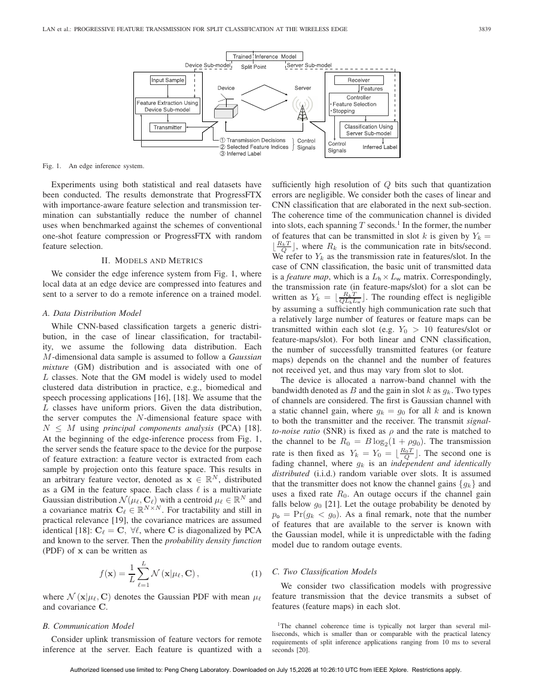<figcaption>架构/方法证据：来源《Progressive Feature Transmission for Split Classification at the Wireless Edge》p.3，Fig. 1 An edge inference system. Experiments using both statistical and real datasets have sufficiently high resolution of Q bits such that quantization been conducted. The results demons。<a href='https://doi.org/10.1109/twc.2022.3221778'>出版页面</a></figcaption></figure><figure>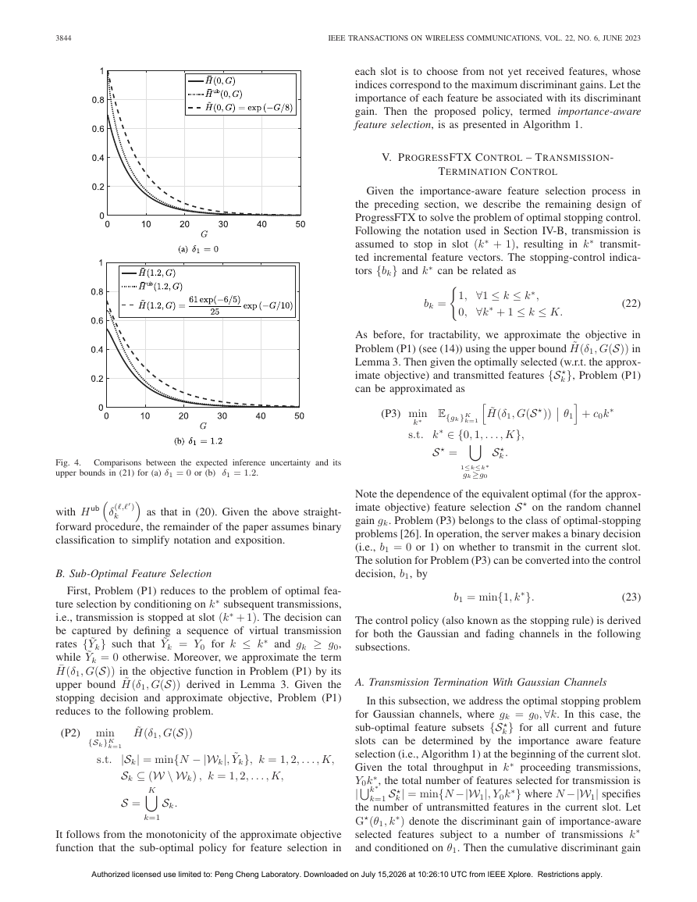<figcaption>关键结果证据：来源《Progressive Feature Transmission for Split Classification at the Wireless Edge》p.8，Fig. 4 Comparisons between the expected inference uncertainty and its 1≤k≤k∗ upper bounds in (21) for (a) δ1 = 0 or (b) δ1 = 1.2. gk ≥g0   Note the dependence of the equivalent optimal。<a href='https://doi.org/10.1109/twc.2022.3221778'>出版页面</a></figcaption></figure></div>
  <h3>局限性</h3><p>结论主要由论文设定的分类/边缘推理数据与仿真信道支持；跨数据、跨设备和真实空口泛化仍需进一步验证。</p>
</article>
<article id='robust-semantic-communications-with-masked-vq-vae-enabled-codebook' class='paper'>
  <div class='paper-head'><div><span class='badge'>core</span><span class='year'>2023</span><h2>Robust Semantic Communications With Masked VQ-VAE Enabled Codebook</h2></div><a class='pdf' href='https://doi.org/10.1109/twc.2023.3265201'>DOI / IEEE Xplore</a></div>
  <div class='facts'><div><b>作者</b>Qiyu Hu、Guangyi Zhang、Zhijin Qin、Yunlong Cai、Guanding Yu、Geoffrey Ye Li</div><div><b>刊物</b>IEEE Transactions on Wireless Communications</div><div><b>DOI</b><a href='https://doi.org/10.1109/twc.2023.3265201'>10.1109/twc.2023.3265201</a></div><div><b>IEEE document ID</b>10101778</div><div><b>卷/期/页</b>Vol. 22, No. 12, 8707-8722</div><div><b>任务</b>语音传输/识别</div></div>
  <h3>Introduction 讲述逻辑</h3><ol><li><b>已有进展：</b>To improve the robustness of DL models against Though the aforementioned deep learning (DL)-based adversarial samples, there have been some methods, such semantic communication systems have exhibited very impres- as input denoising [32], defensive distillation [33], gradient sive performance in certain tasks, the impact of noise and regularization [34], weight perturbation [35], and adversarial the system robustness still need to be further investigated. training [36].</li><li><b>尚存问题：</b>To combat the seman- different types of tasks while the conventional communication tic noise, the adversarial training with weight perturbation is system is facing the bottleneck to support such massive developed to incorporate the samples with semantic noise in the amount of data [2].</li><li><b>为何重要：</b>Moreover, it causes critical challenges for training dataset.</li><li><b>本文方案：</b>Then, we propose to mask a portion of the conventional communications to support massive connectivity input, where the semantic noise appears frequently, and design over limited spectrum resources but with low latency [3]. the masked vector quantized-variational autoencoder (VQ-VAE) with the noise-related masking strategy.</li><li><b>解决机制：</b>Simulation results show As shown in Fig. 1, the transmitter maps the source, s, into that our proposed method can be applied in many downstream a symbol stream, x, and then passes it through the physical tasks and can significantly improve the robustness of semantic channel with transmission impairments.</li><li><b>核心主张：</b>To further improve the system robustness, With the development of deep neural networks (DNNs) [3] we develop a feature importance module (FIM) to suppress the noise-related and task-unrelated features.</li></ol>
  <h3>数据集、baseline 与评价设置</h3><div class='grid3'><div><b>数据集</b><p>CIFAR-10、ImageNet、MNIST</p></div><div><b>Baseline</b><p>DeepJSCC、JPEG、LDPC、VQ-VAE、VAE、ViT、Transformer、QAM</p></div><div><b>指标与信道</b><p>mAP、accuracy、classification accuracy、latency、semantic similarity<br>AWGN、MIMO<br>SNR: 12 dB、18 dB、3 dB、9 dB</p></div></div>
  <h3>方法与数字化方案</h3><p><b>表示判断：</b>离散/数字：VQ、码本 index 或 token 表示</p><ul><li><b>p.2</b> -VAE) with vision Transformer (ViT) blocks [37], in a similar way. The methods for generating adversarial [38] is designed as the architecture of the robust seman- samples in the image domain can be classified into two tic communication system. A novel strategy is proposed to categories: (i) the sample-dependent method, which fools mask a portion of the original image,</li><li><b>p.3</b> ermore, the SNR is incorporated into the FIM, which 0 denotes an all-zero matrix. For a matrix A, AT , A∗ , AH , ensures that the proposed system can successfully operate A−1 , A† , and ∥A∥ are its transpose, conjugate, conjugate in a wide range of SNR levels. Moreover, existing works transpose, inversion, pseudo-inversion, and Frobenius norm, in semantic communications fo</li><li><b>p.3</b> are jointly designed. In particular, the DNNs • Based on adversarial perturbations in computer at the transmitter consist of the semantic encoder and the vision [30], taking into account the modulation, channel encoder while the DNNs at the receiver consist of channel, and demodulation in communication systems, the channel decoder and the semantic decoder. The semantic we</li><li><b>p.3</b> urbations in computer at the transmitter consist of the semantic encoder and the vision [30], taking into account the modulation, channel encoder while the DNNs at the receiver consist of channel, and demodulation in communication systems, the channel decoder and the semantic decoder. The semantic we model the sample-dependent and sample-independent encoder learns to extra</li><li><b>p.3</b> ceive antennas. The • We develop a masked VQ-VAE model with a masking encoded symbol stream can be represented by strategy as the architecture of the robust semantic com-  x = f2 f1 (s; θ 1 ); θ 2 , (1) munication system. A discrete codebook shared by the transmitter and receiver is designed for encoded feature where x ∈ CNt ×1 , θ 1 and θ 2 denote the trainable parame</li></ul>
  <h3>传输开销与可推导边界</h3><p>\(R_{tx}=B_{semantic}/B_{raw}\)，若论文仅给 channel uses，则不能在缺少调制阶数与帧开销时把它直接当成 bit-rate。</p><ul><li><b>p.1</b> ACTIONS ON WIRELESS COMMUNICATIONS, VOL. 22, NO. 12, DECEMBER 2023 8707 Robust Semantic Communications With Masked VQ-VAE Enabled Codebook Qiyu Hu , Student Member, IEEE, Guangyi Zhang , Student Member, IEEE, Zhijin Qin , Senior Member, IEEE, Yunlong Cai , Senior Member, IEEE, Guanding Yu , Senior Member, IEEE, and Geoffrey Ye Li , Fellow, IEEE Abstract— Although se</li><li><b>p.1</b> ere the semantic noise appears frequently, and design over limited spectrum resources but with low latency [3]. the masked vector quantized-variational autoencoder (VQ-VAE) with the noise-related masking strategy. We use a discrete codebook shared by the transmitter and the receiver for encoded A. Prior Work feature representation. To further improve the system rob</li><li><b>p.1</b> ency [3]. the masked vector quantized-variational autoencoder (VQ-VAE) with the noise-related masking strategy. We use a discrete codebook shared by the transmitter and the receiver for encoded A. Prior Work feature representation. To further improve the system robustness, With the development of deep neural networks (DNNs) [3] we develop a feature importance module</li><li><b>p.1</b> transmit the indices of these important tions, which extract and transmit the task-related meanings task-related features in the codebook. Simulation results show of data [7], [8], [9], [10], have emerged as a key technology that the proposed method can be applied in many downstream and received great attention. For example, in the image trans- tasks and significan</li><li><b>p.1</b> dversarial training, feature importance mod- task and unnecessary to transmit. Moreover, semantic commu- ule (FIM), masked vector quantized-variational autoencoder nication is robust to unfriendly channel environments, i.e., low (VQ-VAE), robust semantic communications, semantic noise. signal-to-noise ratio (SNR), which fits well the applications Manuscript receive</li><li><b>p.2</b> solve a complicated min-max optimization prob- In this paper, we focus on the semantic noise in the lem. Then, the masked vector quantized-variational autoen- image domain and that in the text domain can be handled coder (VQ-VAE) with vision Transformer (ViT) blocks [37], in a similar way. The methods for generating adversarial [38] is designed as the architecture</li></ul>
  <h3>信道处理机制</h3><p><b>分类：</b>语义感知 HARQ/不等错误保护</p><ul><li><b>p.1</b> received semantic information. The this article and approving it for publication was S. Bi. (Corresponding author: joint semantic-channel coding (JSCC) scheme in [11] extracts Yunlong Cai.) Qiyu Hu, Guangyi Zhang, Yunlong Cai, and Guanding Yu are with the Col- the semantic information from text. In [13], reinforcement lege of Information Science and Electronic Engineering</li><li><b>p.3</b> ∈ the FIM to suppress the noise-related and task-unrelated CNr ×1 ∼ CN (0, σ 2 I) is the additive white Gaussian noise features. (AWGN). Correspondingly, the decoded signal is given as  ŝ = g1 g2 (y; Θ2 ); Θ1 , (3) C. Organization and Notations where Θ1 and Θ2 denote the trainable parameters of the The rest of paper is structured as follows. Section II models</li><li><b>p.5</b> Ha denotes the channel between 1) Basic Adversarial Training: The key idea of adversarial the attacker and receiver, and n is the AWGN. Note that training against semantic noise is to add the samples cor- the semantic noise model in (8) at the receiver is a general rupted by the semantic noise into the training dataset [26]. model, where Ha can be removed when s</li><li><b>p.10</b> 256, which requires 8 bits for transmitting proposed robust semantic communication system, where the each index. We adopt the 16-QAM for modulation with low- detailed training procedures are summarized in Algorithm 3. density parity-check code (LDPC) of rate 1/2. The number of iterations to generate semantic noise is set as K = 5 and V. S IMULATION R ESULTS it</li><li><b>p.10</b> adopt the 16-QAM for modulation with low- detailed training procedures are summarized in Algorithm 3. density parity-check code (LDPC) of rate 1/2. The number of iterations to generate semantic noise is set as K = 5 and V. S IMULATION R ESULTS its power is ϵ = 0.016. The architecture of the proposed In this section, we verify the effectiveness of the proposed m</li><li><b>p.10</b> t layer and posed masked VQ-VAE with the conventional source cod- fine-tune the pre-trained masked VQ-VAE. We compare the ing and channel coding approaches under MIMO chan- performance of the following methods: nels [1]. We adopt CIFAR-10, consisting of 60, 000 images • Masked VQ-VAE+FIM+AT: The proposed masked of 10 classes as the dataset for image classification, Cars19</li></ul><p><b>Codex 判断：</b>属于核心</p>
  <h3>主要结果</h3><ul><li><b>p.1</b> e use a discrete codebook shared by the transmitter and the receiver for encoded A. Prior Work feature representation. To further improve the system robustness, With the development of deep neural networks (DNNs) [3] we develop a feature importance module (FIM) to suppress the noise-related and task-unrelated features. Thus, the transmit- and end-to-end learning [</li><li><b>p.1</b> the indices of these important tions, which extract and transmit the task-related meanings task-related features in the codebook. Simulation results show of data [7], [8], [9], [10], have emerged as a key technology that the proposed method can be applied in many downstream and received great attention. For example, in the image trans- tasks and significantly improve the robu</li><li><b>p.1</b> d method can be applied in many downstream and received great attention. For example, in the image trans- tasks and significantly improve the robustness against semantic mission for object detection task, the location and shape of an noise with remarkable reduction on the transmission overhead. object are task-related while the background is unrelated to the Index</li><li><b>p.1</b> om- Hangzhou 310027, China, and also with the Zhejiang Provincial Key Labora- munication system in [14] with channel feedback can improve tory of Information Processing, Communication and Networking (IPCAN), Hangzhou 310027, China (e-mail: qiyhu@zju.edu.cn; zhangguangyi@ the quality of image reconstruction. The attention-based zju.edu.cn; ylcai@zju.edu.cn; yuguand</li><li><b>p.1</b> /TWC.2023.3265201. classification-oriented semantic communications in [17] can Digital Object Identifier 10.1109/TWC.2023.3265201 improve the recognition accuracy. The task of image 1536-1276 © 2023 IEEE. Personal use is permitted, but republication/redistribution requires IEEE permission. See https://www.ieee.org/publications/rights/index.html for more informatio</li></ul>
  <div class='figs'><figure>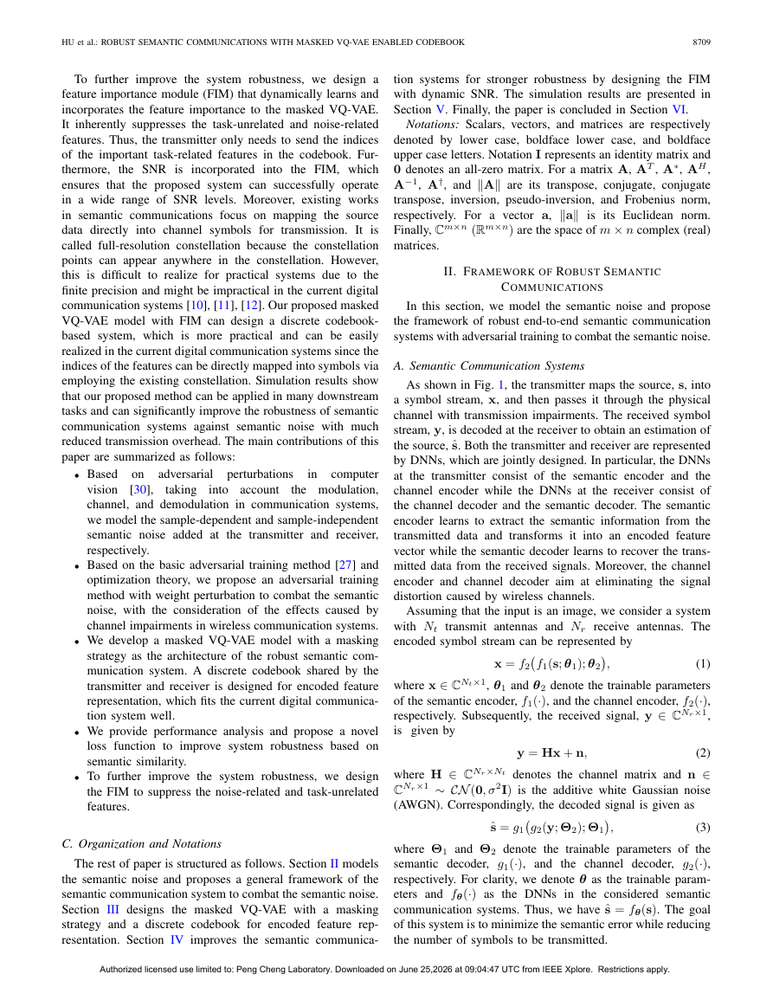<figcaption>架构/方法证据：来源《Robust Semantic Communications With Masked VQ-VAE Enabled Codebook》p.3，Fig. 1 , the transmitter maps the source, s, into that our proposed method can be applied in many downstream a symbol stream, x, and then passes it through the physical tasks and can sign。<a href='https://doi.org/10.1109/twc.2023.3265201'>出版页面</a></figcaption></figure><figure>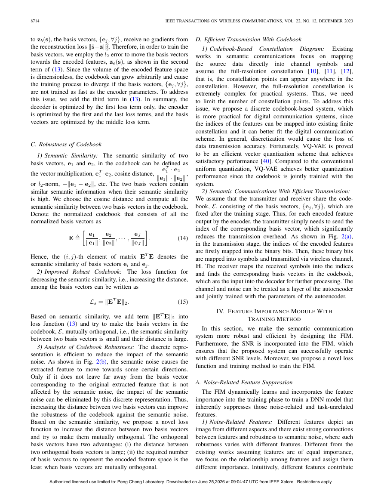<figcaption>关键结果证据：来源《Robust Semantic Communications With Masked VQ-VAE Enabled Codebook》p.8，Fig. 2 (a), E≜ , ,··· , . (14) ∥e1 ∥ ∥e2 ∥ ∥eJ ∥ in the transmission stage, the indices of the encoded features are firstly mapped into the binary bits. Then, these binary bits Hence, the。<a href='https://doi.org/10.1109/twc.2023.3265201'>出版页面</a></figcaption></figure></div>
  <h3>局限性</h3><p>结论主要由论文设定的语音传输/识别数据与仿真信道支持；跨数据、跨设备和真实空口泛化仍需进一步验证。</p>
</article>
<article id='semantic-aware-sensing-information-transmission-for-metaverse-a-contest-theoretic-approach' class='paper'>
  <div class='paper-head'><div><span class='badge'>core</span><span class='year'>2023</span><h2>Semantic-Aware Sensing Information Transmission for Metaverse: A Contest Theoretic Approach</h2></div><a class='pdf' href='https://doi.org/10.1109/twc.2022.3232565'>DOI / IEEE Xplore</a></div>
  <div class='facts'><div><b>作者</b>Jiacheng Wang、Hongyang Du、Zengshan Tian、Dusit Niyato、Jiawen Kang、Xuemin Shen</div><div><b>刊物</b>IEEE Transactions on Wireless Communications</div><div><b>DOI</b><a href='https://doi.org/10.1109/twc.2022.3232565'>10.1109/twc.2022.3232565</a></div><div><b>IEEE document ID</b>10007890</div><div><b>卷/期/页</b>Vol. 22, No. 8, 5214-5228</div><div><b>任务</b>视频传输/理解</div></div>
  <h3>Introduction 讲述逻辑</h3><ol><li><b>已有进展：</b>语义/任务导向通信已通过学习型编码降低无关数据传输，并在若干任务上展示端到端收益。</li><li><b>尚存问题：</b>However, as time goes by, the economies have to create an incentive mechanism that motivates users to upload thrived and various technologies have evolved, bringing the data more frequently.</li><li><b>为何重要：</b>Unlike conventional methods that undergo data degradation and Due to limited technology, resources, and other factors, at that require data recovery, our approach achieves the sensing goal without data recovery while maintaining performance.</li><li><b>本文方案：</b>Inspired by emerging metaverse, wireless sensing. semantic communication, in this paper, we propose a semantic I.</li><li><b>解决机制：</b>Leveraging the in-depth understanding of sensing information, we define the semantic bases, through which the semantic encoding of sensing data I N 1992, Neal Stephenson proposed the concept of Meta- verse in its novel Snow Crash for the first time.</li><li><b>核心主张：</b>To further time, Metaverse appeared to exist only in fantasy, which was improve Metaverse service quality, we introduce contest theory out of reach.</li></ol>
  <h3>数据集、baseline 与评价设置</h3><div class='grid3'><div><b>数据集</b><p>论文未明确给出或自动定位不足，需结合全文人工复核</p></div><div><b>Baseline</b><p>DeepSC、Transformer</p></div><div><b>指标与信道</b><p>mAP、accuracy、utility<br>Rayleigh、MIMO、OFDM、fading channel<br>SNR: 25 dB</p></div></div>
  <h3>方法与数字化方案</h3><p><b>表示判断：</b>数字或混合：显式量化/比特流/传统调制编码</p><ul><li><b>p.2</b> WANG et al.: SEMANTIC-AWARE SENSING INFORMATION TRANSMISSION FOR METAVERSE 5215 Fig. 1. Framework of the proposed system. In the physical world, wireless smart devices are used to sense the users by sending and receiving wireless signals, and then the transmitter encodes the sensing information semantically and sends it out through wireless channel</li><li><b>p.2</b> Previous from the physical world to Metaverse. As shown by the attempts [7], [8], [9] use quantization and general techniques to proposed framework in Fig. 1, the transmitter focuses on compress the CSI. For example, the authors in [8] quantize CSI data semantic coding and transmitting, the receiver works on from time, frequency and numerical values domains, and adapt data r</li><li><b>p.3</b> of speech and images has also These issues motivate us to develop a simple but effective received extensive attention [24], [25]. semantic encoder to reduce the amount of data and the process- ing burden of receiver while maintaining activity recognition C. Contest Theory accuracy. The contest is a game, in which contestants spend resources to win prizes with some probabili</li><li><b>p.5</b> ty recogni- tion. To investigate this, we consider a generalised network According to these observations, the principal component architecture, where the distance between the transmitter and analysis (PCA) is first employed to denoise the obtained CFR the receiver is Dw , and the large-scale path loss exponent power 2 and eliminate the constant component by subtracting</li><li><b>p.10</b> le to fully describe the high- frequency features, affecting the recognition performance. Second, the recognition accuracy of the proposed system is close to that of CARM. As an example, Fig. 9 (b) indicates that for walking, the maximum recognition accuracy difference between two systems is 0.0365, and the minimum difference is 0.0057. For other activities, the difference</li></ul>
  <h3>传输开销与可推导边界</h3><p>\(R_{tx}=B_{semantic}/B_{raw}\)，若论文仅给 channel uses，则不能在缺少调制阶数与帧开销时把它直接当成 bit-rate。</p><ul><li><b>p.2</b> major topic in mobile wireless network. Previous from the physical world to Metaverse. As shown by the attempts [7], [8], [9] use quantization and general techniques to proposed framework in Fig. 1, the transmitter focuses on compress the CSI. For example, the authors in [8] quantize CSI data semantic coding and transmitting, the receiver works on from time, freque</li><li><b>p.2</b> general techniques to proposed framework in Fig. 1, the transmitter focuses on compress the CSI. For example, the authors in [8] quantize CSI data semantic coding and transmitting, the receiver works on from time, frequency and numerical values domains, and adapt data receiving, human activity recognition, and CFR power compression intensity to balance the capacit</li><li><b>p.3</b> et-LSTM [15] improves the as an example to illustrate our work. In the physical world, CSI recovery quality and trade-off between compression ratio smart devices sense the attendee by transmitting and receiving and complexity by learning spatial structures from training signals and perform semantic encoding and other processing samples. on the obtained sensing data. Here, th</li></ul>
  <h3>信道处理机制</h3><p><b>分类：</b>显式建模离散变量/比特错误，并进行鲁棒或联合恢复</p><ul><li><b>p.5</b> the transmitter 15: if #(Iteration) &gt; T2 then and receiver could impact the performance of the system. For 16: break example, the bit error probability (BEP) caused by wireless 17: return [Ar , Fr , θr ] , r = 1 : order. transmission can affect the accuracy of the activity recogni- tion. To investigate this, we consider a generalised network According to these observ</li><li><b>p.5</b> fading channel model [37], which includes most of of the CFR and the corresponding wave parameters are the typical models such as Rayleigh, Nakagami-m, Weibull, α-μ, semantic features. This semantic encoding process can be N *Nakagami-m, generalized K-fading, and Weibull/gamma achieved via the Levenberg-Marquardt (LM) algorithm [35] fading as its special cases. Spec</li><li><b>p.6</b> (8)] into (10), the data rate can be derived as [41, eq. (28)]. with corresponding parameters τ1 and τ2 are shown in Table I, 2) Bit Error Rate (BER) Evaluation: The average BEP for and Γ(·, ·) denotes the upper incomplete Gamma function the nth transmitter under a variety of modulation formats is [43, eq. (8.350.2)]. Substituting [41, eq. (8)] into (11), we can giv</li><li><b>p.6</b> eling ability of the H fading model for various channel Γ(τ2 , τ1 γ) En = fZn (γ) dγ, (11) environments, we analyze the impact of bit errors on semantic 0 2Γ(τ2 ) information transmission in Section V. where τ1 and τ2 are modulation-specific parameters for several Assuming that the number of bits generated by wireless modulation and detection scheme combinations, res</li><li><b>p.10</b> fading m=1 n=1 conditions obtained using the H-fading model in Section IV-B. where = 1, . . . , NA . One can see that the BER of Rayleigh is larger than the Nak- Proof: Please refer to Appendix E. agami for different transmit power. Meanwhile, for Nakagami, increasing the order can reduce the BER. Therefore, as denoted V. N UMERICAL A NALYSIS by black lines, the Na</li><li><b>p.10</b> ccuracy, followed by Nakagami-5, then Nakagami-2, and the In this section, we first introduce the experimental configu- lowest is Rayleigh. The reason is that smaller order in the rations. Then, based on the collected data, the effectiveness of Nakagami fading means stronger multipath effect. In addition, activity recognition in semantic space is verified. After tha</li></ul><p><b>Codex 判断：</b>属于核心</p>
  <h3>主要结果</h3><ul><li><b>p.1</b> goal without data recovery while maintaining performance. To further time, Metaverse appeared to exist only in fantasy, which was improve Metaverse service quality, we introduce contest theory out of reach. However, as time goes by, the economies have to create an incentive mechanism that motivates users to upload thrived and various technologies have evolved, bri</li><li><b>p.1</b> entive mechanism that motivates users to upload thrived and various technologies have evolved, bringing the data more frequently. Experimental results show that the average once-imagined world into reality. In 2021, Meta (formerly data amount after semantic encoding is reduced to about 27.87% Facebook) released Horizon Worlds [2], a free virtual reality of that before encoding,</li><li><b>p.2</b> Furthermore, a contest theory-based incentive mechanism is introduced to motivate the transmitter to upload data more frequently, improving the quality of MSP services. granularity and the number of users increase, triggering not receiver. Unlike transmitting the original CFR, our result only an unbearable burden on data transmission and storage shows the average</li><li><b>p.2</b> natural advantages in reducing data • We design a contest theory based strategy to incentivise storage and transmission load and improving data transmission the uploading of sensing data, to further improve the efficiency [6]. Semantic communication is task-oriented, i.e., users experience in Metaverse. We derive the optimal aims to convey the information relevan</li><li><b>p.2</b> d strategy to incentivise storage and transmission load and improving data transmission the uploading of sensing data, to further improve the efficiency [6]. Semantic communication is task-oriented, i.e., users experience in Metaverse. We derive the optimal aims to convey the information relevant to the transmission award setting that maximises the total data uplo</li></ul>
  <div class='figs'><figure>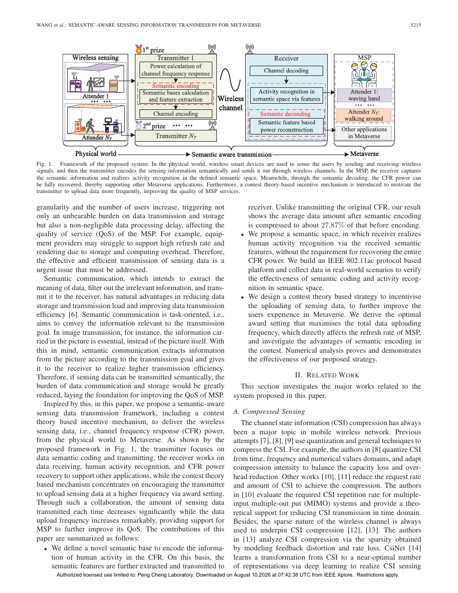<figcaption>架构/方法证据：来源《Semantic-Aware Sensing Information Transmission for Metaverse: A Contest Theoretic Approach》p.2，Fig. 1 Framework of the proposed system. In the physical world, wireless smart devices are used to sense the users by sending and receiving wireless signals, and then the transmitter enco。<a href='https://doi.org/10.1109/twc.2022.3232565'>出版页面</a></figcaption></figure><figure>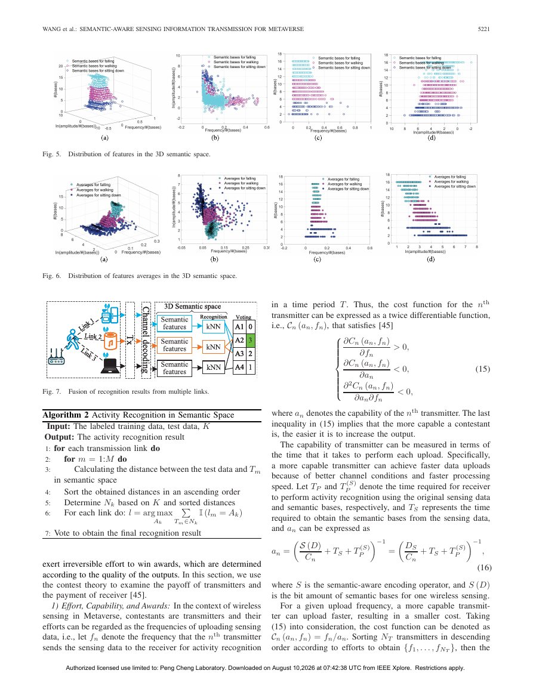<figcaption>关键结果证据：来源《Semantic-Aware Sensing Information Transmission for Metaverse: A Contest Theoretic Approach》p.8，Fig. 5 Distribution of features in the 3D semantic space. Fig. 6. Distribution of features averages in the 3D semantic space. in a time period T . Thus, the cost function for the nth tran。<a href='https://doi.org/10.1109/twc.2022.3232565'>出版页面</a></figcaption></figure></div>
  <h3>局限性</h3><p>已触及数字语义链路关键问题，但错误模型、码本规模和数据分布迁移下的泛化仍需真实空口验证。</p>
</article>
<article id='task-oriented-communication-for-multidevice-cooperative-edge-inference' class='paper'>
  <div class='paper-head'><div><span class='badge'>related</span><span class='year'>2023</span><h2>Task-Oriented Communication for Multidevice Cooperative Edge Inference</h2></div><a class='pdf' href='https://doi.org/10.1109/twc.2022.3191118'>DOI / IEEE Xplore</a></div>
  <div class='facts'><div><b>作者</b>Jiawei Shao、Yuyi Mao、Jun Zhang</div><div><b>刊物</b>IEEE Transactions on Wireless Communications</div><div><b>DOI</b><a href='https://doi.org/10.1109/twc.2022.3191118'>10.1109/twc.2022.3191118</a></div><div><b>IEEE document ID</b>9837474</div><div><b>卷/期/页</b>Vol. 22, No. 1, 73-87</div><div><b>任务</b>视频传输/理解</div></div>
  <h3>Introduction 讲述逻辑</h3><ol><li><b>已有进展：</b>While cooperative edge inference can overcome the limited sensing capability of a single device, it substantially increases the com- T HE recent revival of artificial intelligence (AI) has affected a plethora of application domains, including computer vision [3], augmented/virtual reality (AR/VR) [4], munication overhead and may incur excessive latency.</li><li><b>尚存问题：</b>Typical edge inference systems convey all cally, we leverage Tishby’s information bottleneck (IB) principle the input data from the edge devices to a physically close (Tishby et al., 2000) to extract the task-relevant feature at edge server (e.g., a base station) and leverage deep neural each edge device, and adopt the distributed information bottle- neck (DIB) framework of Aguerri and Zaidi, 2021, to formalize a networks (DNNs) to perform inference.</li><li><b>为何重要：</b>While cooperative edge inference can overcome the limited sensing capability of a single device, it substantially increases the com- T HE recent revival of artificial intelligence (AI) has affected a plethora of application domains, including computer vision [3], augmented/virtual reality (AR/VR) [4], munication overhead and may incur excessive latency.</li><li><b>本文方案：</b>Most recently, low-latency cooperative inference, we propose a learning-based as edge devices (e.g., mobile phones, sensors) are becoming communication scheme that optimizes local feature extraction increasingly widespread and sensory data are easy to access, and distributed feature encoding in a task-oriented manner, i.e., to remove data redundancy and transmit information that the potential of AI technologies has been exemplified at the is essential for the downstream inference task rather than network edge, which is a new research area named edge reconstructing the data samples at the edge server.</li><li><b>解决机制：</b>To address the limitation, this yuyi-eie.mao@polyu.edu.hk). paper will develop task-oriented communication strategies Color versions of one or more figures in this article are available at https://doi.org/10.1109/TWC.2022.3191118. for multi-device cooperative edge inference by leveraging Digital Object Identifier 10.1109/TWC.2022.3191118 Tishby’s information bottleneck (IB) principle [1], as well 1536-1276 © 2022 IEEE.</li><li><b>核心主张：</b>This insight is con- class of memoryless sources using mutual information terms. sistent with the information bottleneck (IB) principle [1]: A Such an information-theoretical principle fits nicely with the good extracted feature should be sufficient for the inference multi-device cooperative edge inference as it can provide an task while retaining minimal information from the input data. optimal distributed coding scheme under the assumption that Thus, extracting a minimal sufficient feature in task-oriented the input views are conditionally independent of the inference communication improves the transmission efficiency. variable.</li></ol>
  <h3>数据集、baseline 与评价设置</h3><div class='grid3'><div><b>数据集</b><p>CIFAR-10、ImageNet、MNIST、ModelNet40</p></div><div><b>Baseline</b><p>JPEG</p></div><div><b>指标与信道</b><p>accuracy、classification accuracy、latency<br>论文未明确给出或自动定位不足，需结合全文人工复核<br>SNR: 论文未明确给出或自动定位不足，需结合全文人工复核</p></div></div>
  <h3>方法与数字化方案</h3><p><b>表示判断：</b>数字或混合：显式量化/比特流/传统调制编码</p><ul><li><b>p.2</b> inci- the communication efficiency. ple [14], [15], [19], [20]. In particular, for the image classifica- tion task, an end-to-end architecture was proposed in [19] that leverages a JPEG compressor to encode the internal features B. Contributions extracted by the on-device neural network. In contrast to In this paper, we develop task-oriented communication data-oriented</li><li><b>p.3</b> est of this paper is organized as follows. Section II definition images and point clouds) from the edge devices to introduces the system model and formulates the problems the edge server shall incur significant communication latency. of task-relevant feature extraction and distributed feature To enable low-latency cooperative edge inference, it is criti- encoding based</li><li><b>p.9</b> ed methods. The WRGBD dataset includes deactivated. household objects organized into 51 classes. Each object is 4) Neural Network Architecture: In the edge inference captured by three cameras mounted at different heights, at 30◦ , system, each raw input sample is passed through the first 45◦ , and 60◦ above the horizon. We select 80% of objects from each class for train</li><li><b>p.10</b> vestigate the rate-relevance tradeoff of summarized in Table I. different multi-device edge inference schemes, where the rate The architectures of different methods are presented in is measured by the total number of bits (Rsum ) to be trans- Table II, where most of the methods adopt a uniform quan- mitted from the edge devices to the edge server, and the rele- tizer to</li><li><b>p.14</b> . 43, no. 1, pp. 120–138, Jan. 2021. [3] C. Szegedy, V. Vanhoucke, S. Ioffe, J. Shlens, and Z. Wojna, “Rethink- ing the inception architecture for computer vision,” in Proc. IEEE Conf. Comput Vis. Pattern Recognit., Las Vegas, NV, USA, Jun. 2016, pp. 2818–2826. [4] X. Hou, S. Dey, J. Zhang, and M. Budagavi, “Predictive view generation to enable mobile 360-degree and VR</li></ul>
  <h3>传输开销与可推导边界</h3><p>\(R_{tx}=B_{semantic}/B_{raw}\)，若论文仅给 channel uses，则不能在缺少调制阶数与帧开销时把它直接当成 bit-rate。</p><ul><li><b>p.2</b> OL. 22, NO. 1, JANUARY 2023 as the distributed information bottleneck (DIB) framework The authors of [23] developed a distributed quantization sys- proposed by Aguerri and Zaidi [2]. tem tailored to the classification task, and proposed a greedy search algorithm as part of the deep learning approach to cre- ate rectangular quantization regions. Besides, a significa</li><li><b>p.2</b> to the classification task, and proposed a greedy search algorithm as part of the deep learning approach to cre- ate rectangular quantization regions. Besides, a significance- A. Related Works and Motivations aware feature selection mechanism was proposed in [24], The recent line of research on task-oriented communica- which leverages a DNN model to determine the</li><li><b>p.6</b> irst per- K  forms the encoding transformation fφk , followed by the uni- +β {− log pψk (y m |um m k ) + Rbit (uk )} . (18) form quantizer Q that discretizes each element in fφk (zk ) ∈ k=1 Rdk into nk bits. The encoded feature is given by uk = The optimization procedures for the VDDIB objective are Q(fφk (zk )), and the gradients in the training process is summar</li><li><b>p.6</b> ce k to the edge server is Rbit (uk ) = nk dk bits.1 in the following expression, owing to I(Zk , Uk ) ≤ H(Uk ) ≤ 1 Note that the quantization scheme is orthogonal to the proposed DDIB Rbit (Uk ) and the variational approximations: method. We select the uniform quantization in this paper, since it is easier to approximate the gradients and calculate the bit-length.</li><li><b>p.6</b> antization scheme is orthogonal to the proposed DDIB Rbit (Uk ) and the variational approximations: method. We select the uniform quantization in this paper, since it is easier to approximate the gradients and calculate the bit-length. LDIB (β) ≤ LDDIB (β) ≤ LVDDIB (β; φ, ψ). (19) Authorized licensed use limited to: Peng Cheng Laboratory. Downloaded on August 10,20</li><li><b>p.9</b> using PNG recognition. compression. • NN-REG and NN-GBI [23]: Both of them adopt A. Experimental Setup learning-based methods to quantize the input data to bitstreams at the edge device. The DNN-based quantizers 1) Datasets: In the multi-view image classification task, are either trained using the quantization loss regular- we select MNIST [41], CIFAR-10 [42], and</li></ul>
  <h3>信道处理机制</h3><p><b>分类：</b>显式建模离散变量/比特错误，并进行鲁棒或联合恢复</p><ul><li><b>p.15</b> Gunduz, “Successive refinement of images with deep W IRELESS C OMMUNICATIONS L ETTERS in 2019 and 2021 and the IEEE joint source-channel coding,” in Proc. IEEE 20th Int. Workshop Signal T RANSACTIONS ON C OMMUNICATIONS in 2020. Process. Adv. Wireless Commun. (SPAWC), Cannes, France, Jul. 2019, pp. 1–5. [38] X. Chen, H. Dai, Y. Li, X. Gao, and L. Song, “Learning to stop w</li></ul><p><b>Codex 判断：</b>属于技术边界相关，单列以避免扩大“语义通信”定义。</p>
  <h3>主要结果</h3><ul><li><b>p.2</b> ry single have shown effectiveness in saving communication bandwidth transmitted bit. However, with the increasing number of edge compared with the single-device edge inference. However, devices, the limited communication resources at the wireless there lacks a theoretical and rigorous way to characterize the network edge cannot cope with the request to transmit the huge</li><li><b>p.2</b> acting a minimal sufficient feature in task-oriented the input views are conditionally independent of the inference communication improves the transmission efficiency. variable. In this paper, we consider a general scenario where Recently, there exist several studies taking advantages of the input views may not be conditionally independent and add deep learning to</li><li><b>p.2</b> ependent and add deep learning to develop effective feature extraction and a feature extraction step before the coding process to improve encoding methods following the task-oriented design princi- the communication efficiency. ple [14], [15], [19], [20]. In particular, for the image classifica- tion task, an end-to-end architecture was proposed in [19] that lever</li><li><b>p.3</b> substantial reduction in Fig. 1. An example of multi-device cooperative edge inference for multi-view the communication overhead compared with the tradi- object recognition. tional data-oriented communication strategy. Moreover, extensive simulation results demonstrate that our meth- computational resources so that server-based inference can ods outperform existing lear</li><li><b>p.3</b> munication overhead compared with the tradi- object recognition. tional data-oriented communication strategy. Moreover, extensive simulation results demonstrate that our meth- computational resources so that server-based inference can ods outperform existing learning-based feature encoding be executed in real time by collecting the sensing data from methods for cooperative ed</li></ul>
  <div class='figs'><figure>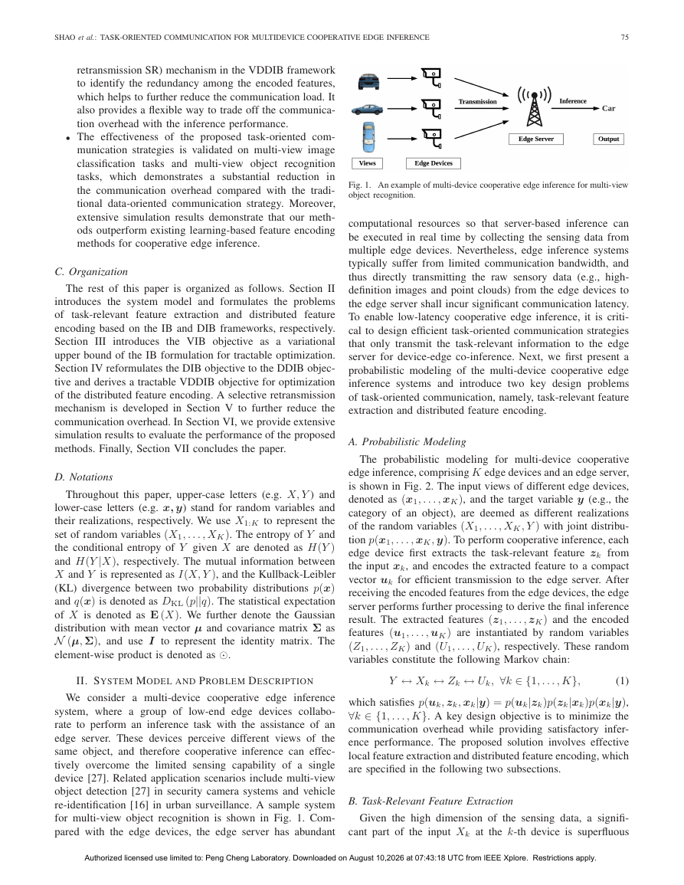<figcaption>架构/方法证据：来源《Task-Oriented Communication for Multidevice Cooperative Edge Inference》p.3，Fig. 1 An example of multi-device cooperative edge inference for multi-view the communication overhead compared with the tradi- object recognition. tional data-oriented communication stra。<a href='https://doi.org/10.1109/twc.2022.3191118'>出版页面</a></figcaption></figure><figure>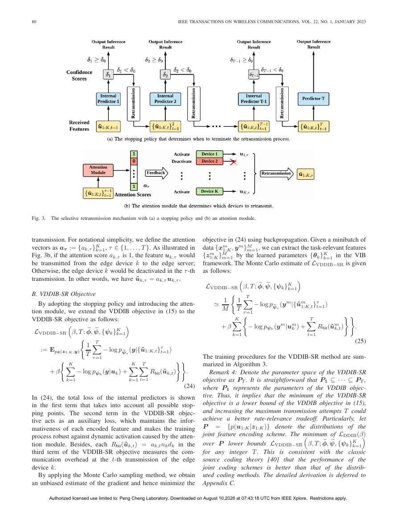<figcaption>关键结果证据：来源《Task-Oriented Communication for Multidevice Cooperative Edge Inference》p.8，Fig. 3 The selective retransmission mechanism with (a) a stopping policy and (b) an attention module. transmission. For notational simplicity, we define the attention objective in (24) us。<a href='https://doi.org/10.1109/twc.2022.3191118'>出版页面</a></figcaption></figure></div>
  <h3>局限性</h3><p>已触及数字语义链路关键问题，但错误模型、码本规模和数据分布迁移下的泛化仍需真实空口验证。</p>
</article>
<article id='task-oriented-explainable-semantic-communications' class='paper'>
  <div class='paper-head'><div><span class='badge'>core</span><span class='year'>2023</span><h2>Task-Oriented Explainable Semantic Communications</h2></div><a class='pdf' href='https://doi.org/10.1109/twc.2023.3269444'>DOI / IEEE Xplore</a></div>
  <div class='facts'><div><b>作者</b>Shuai Ma、Weining Qiao、Youlong Wu、Hang Li、Guangming Shi、Dahua Gao、Yuanming Shi、Shiyin Li、Naofal Al-Dhahir</div><div><b>刊物</b>IEEE Transactions on Wireless Communications</div><div><b>DOI</b><a href='https://doi.org/10.1109/twc.2023.3269444'>10.1109/twc.2023.3269444</a></div><div><b>IEEE document ID</b>10110357</div><div><b>卷/期/页</b>Vol. 22, No. 12, 9248-9262</div><div><b>任务</b>语音传输/识别</div></div>
  <h3>Introduction 讲述逻辑</h3><ol><li><b>已有进展：</b>In recent years, semantic communications, in which only Weining Qiao and Shiyin Li are with the School of Information and Control task-relevant information is extracted and transmitted to the Engineering, China University of Mining and Technology, Xuzhou 221116, China (e-mail: qiaown@cumt.edu.cn; lishiyin@cumt.edu.cn). receiver, have received increasing attention by both academia Youlong Wu and Yuanming Shi are with the School of Information Science and the industry [9], [10], [11], [12], [13], [14], [15].</li><li><b>尚存问题：</b>Although the conventional deep significantly improve transmission efficiency, and also verify learning (DL) based designs may achieve certain transmission the effectiveness of our proposed robust semantic transmission efficiency, the uninterpretability issue of extracted features is the scheme. major challenge in the development of semantic communications.</li><li><b>为何重要：</b>We further design a real-time To meet the above-mentioned requirements, investigations on wireless mobile semantic communication proof-of-concept pro- the sixth generation communications (6G) are well underway and promise more powerful capacities than the fifth-generation Manuscript received 8 October 2022; revised 12 January 2023; communications (5G) [3].</li><li><b>本文方案：</b>In this paper, we propose an explainable and robust semantic Index Terms— Explainable semantic communications, feature communication framework by incorporating the well-established selection, semantic communications prototype. bit-level communication system, which not only extracts and disentangles features into independent and semantically inter- I.</li><li><b>解决机制：</b>By combining an AE with orthogonal frequency division noise as semantic channel coding; ii) The feature selec- multiplexing (OFDM), a JSCC wireless image transmission tion module follows the semantic encoder, to choose only scheme was presented in [23] over multipath fading channels. the task-relevant features for transmission, which can By leveraging reinforcement learning (RL), a joint semantics- further reduce the transmission load; iii) The framework noise coding (JSNC) mechanism was designed in [33].</li><li><b>核心主张：</b>Our simulations and experiments demonstrate that computing resources to alleviate scarce transmission resources, our proposed explainable semantic communications system can such as bandwidth and energy.</li></ol>
  <h3>数据集、baseline 与评价设置</h3><div class='grid3'><div><b>数据集</b><p>MNIST、CelebA</p></div><div><b>Baseline</b><p>DeepJSCC、JPEG、VQ-VAE、VAE、Transformer</p></div><div><b>指标与信道</b><p>PSNR、mAP、accuracy、latency、semantic similarity<br>AWGN、Rayleigh、MIMO、OFDM、fading channel<br>SNR: 4dB、8dB</p></div></div>
  <h3>方法与数字化方案</h3><p><b>表示判断：</b>离散/数字：VQ、码本 index 或 token 表示</p><ul><li><b>p.2</b> semantic transmission, the JSCC schemes have been tic communications, we propose an explainable and robust designed by exploiting architectures like the recurrent neural semantic communication framework in this paper, which is network (RNN) [18], Transformer [19], [29], autoencoder compatible with existing communication systems. We show (AE) [30], adaptive Universal Tra</li><li><b>p.2</b> encoder compatible with existing communication systems. We show (AE) [30], adaptive Universal Transformer [31], and deep that the proposed framework can achieve a higher transmission neural network (DNN) [32]. For image semantic transmission, efficiency than the existing inexplicable semantic commu- a masked vector quantized-variational autoencoder (VQ-VAE) nication systems.</li><li><b>p.2</b> utional neural net- bit-level communication systems, which includes a novel works (CNNs) based JSCC schemes were designed for the semantic encoder, as well as the corresponding decoder, time-invariant and fading wireless channels in [21]. Neural feature selection and semantic channel. The innovation error correcting and source trimming (NECST) codes were of the proposed fra</li><li><b>p.2</b> 21]. Neural feature selection and semantic channel. The innovation error correcting and source trimming (NECST) codes were of the proposed framework is threefold: i) The semantic studied in [24]. For finite bit transmission, an attention DL encoder/decoder aims to, not only extract the independent based JSCC method was designed in [25]. By exploring the and explainable semant</li><li><b>p.2</b> s semantic channel coding; ii) The feature selec- multiplexing (OFDM), a JSCC wireless image transmission tion module follows the semantic encoder, to choose only scheme was presented in [23] over multipath fading channels. the task-relevant features for transmission, which can By leveraging reinforcement learning (RL), a joint semantics- further reduce the transmission loa</li></ul>
  <h3>传输开销与可推导边界</h3><p>\(R_{tx}=B_{semantic}/B_{raw}\)，若论文仅给 channel uses，则不能在缺少调制阶数与帧开销时把它直接当成 bit-rate。</p><ul><li><b>p.2</b> al network (DNN) [32]. For image semantic transmission, efficiency than the existing inexplicable semantic commu- a masked vector quantized-variational autoencoder (VQ-VAE) nication systems. The main contributions of this paper are with the noise-related masking strategy was proposed to summarized as follows: combat the semantic noise [20], and a feature importance</li><li><b>p.2</b> alleviate the ambiguity of the semantic developed in [22] to improve the quality of image transmis- information influenced by the quantization and channel sion. By combining an AE with orthogonal frequency division noise as semantic channel coding; ii) The feature selec- multiplexing (OFDM), a JSCC wireless image transmission tion module follows the semantic encode</li><li><b>p.2</b> a SNR- cation systems. Specifically, the semantic channel takes adaptive deep JSCC scheme is proposed in [35] for multi-user both quantization error (or noise) and physical channel wireless image transmission. To tackle the variational informa- noise into account since those noise sources may lead to tion bottleneck, the authors in [36] investigated task-oriented s</li><li><b>p.2</b> the semantic channel capacity, which model is basically a black box. Thus, the extracted semantic are shown to be tight when the quantization noise tends feature vectors in these works are unexplainable (hidden) to zero. representations, and the uninterpretability of the extracted • Based on our framework, we further propose a fea- features restricts further proce</li><li><b>p.4</b> the feature index set, then the selected set of features is given as other hand, in order to reduce the ambiguity incurred by the quantization error and channel noise, the semantic encoder Xs = {zl }l∈Lsel . (7) needs to improve the robustness against the semantic channel Thus, feature selection will reduce the amount of data sent, noise, which can be viewed as a s</li><li><b>p.4</b> ) pfea (z) is given as After the feature selection module, the task-oriented features X are selected and ready to send. Since the quantization error pfea (z) = pd2f (z|x) pdata (x). (5) and channel noise both could incur semantic information x ambiguity, we define the semantic channel with channel law The encoder is required to regulate the extracted features p(ys</li></ul>
  <h3>信道处理机制</h3><p><b>分类：</b>语义感知 HARQ/不等错误保护</p><ul><li><b>p.2</b> ormation influenced by the quantization and channel sion. By combining an AE with orthogonal frequency division noise as semantic channel coding; ii) The feature selec- multiplexing (OFDM), a JSCC wireless image transmission tion module follows the semantic encoder, to choose only scheme was presented in [23] over multipath fading channels. the task-relevant features for</li><li><b>p.3</b> (PDF) of data X is given C OMMUNICATION F RAMEWORK as Most existing studies replace the traditional source coding X  K Y K and channel coding modules by deep learning-based studies pdata (x) = ps2d x| {sk }k=1 psou (sk ). (2) source-channel coding, which greatly changes the structure of s1 ,...,sK k=1 Authorized licensed use limited to: Peng Cheng Laboratory. Downloade</li><li><b>p.3</b> e coding X  K Y K and channel coding modules by deep learning-based studies pdata (x) = ps2d x| {sk }k=1 psou (sk ). (2) source-channel coding, which greatly changes the structure of s1 ,...,sK k=1 Authorized licensed use limited to: Peng Cheng Laboratory. Downloaded on August 10,2026 at 07:43:51 UTC from IEEE Xplore. Restrictions apply.</li><li><b>p.5</b> hysical channel impairments, such as additive white and the feature selection. Their functions can be realized by Gaussian noise (AWGN), interference, etc. It is noted that the careful model design. We will present a detailed system the errors caused by channel propagation usually occur before design in Section IV, which is a feasible realization of this channel</li><li><b>p.9</b> osed robust β-VAE scheme with SNRtrain = 4dB and SNRtrain = 8dB are demonstrated over the two channel models: the ANGC and a slow Rayleigh fading channel, where SNRtrain = 4dB Fig. 5. (a) The architecture of the semantic communication system prototype; and SNRtrain = 8dB mean that the trained SNRs of the (b) The hardware platform of the semantic communication system</li><li><b>p.9</b> ic communication system prototype. schemes are 4dB and 8dB, respectively. Moreover, the PSNR performance of the deep joint source-channel coding (Deep- JSCC) scheme [21], β-VAE scheme, and the JPEG compres- is realized through WiFi, where the socket is used to send sion scheme are presented for comparisons. and receive data, and Visdom is used to realize visual Fig. 6 (a)</li></ul><p><b>Codex 判断：</b>属于核心</p>
  <h3>主要结果</h3><ul><li><b>p.1</b> roposed explainable semantic communications system can such as bandwidth and energy. Although the conventional deep significantly improve transmission efficiency, and also verify learning (DL) based designs may achieve certain transmission the effectiveness of our proposed robust semantic transmission efficiency, the uninterpretability issue of extracted features</li><li><b>p.1</b> mbols convey the desired meaning?” Thus, it is ment, The University of Texas at Dallas, Dallas, TX 75080 USA (e-mail: possible to improve the system efficiency at the semantic level, aldhahir@utdallas.edu). not only at the pure bit level. Color versions of one or more figures in this article are available at https://doi.org/10.1109/TWC.2023.3269444. The classical</li><li><b>p.2</b> hannel output feedback, an AE-based JSCC scheme was coding, but also alleviate the ambiguity of the semantic developed in [22] to improve the quality of image transmis- information influenced by the quantization and channel sion. By combining an AE with orthogonal frequency division noise as semantic channel coding; ii) The feature selec- multiplexing (OFDM), a JS</li><li><b>p.3</b> ases. In general, the sender and the receiver share some common knowledge, which may act as a special kind of side information to improve coding efficiency. noise is added to the extracted features during semantic networks training. B. Semantic Sources • Finally, we implement the above semantic communi- The semantic source produces original data, such as pic- cati</li><li><b>p.4</b> o reduce the ambiguity incurred by the quantization error and channel noise, the semantic encoder Xs = {zl }l∈Lsel . (7) needs to improve the robustness against the semantic channel Thus, feature selection will reduce the amount of data sent, noise, which can be viewed as a semantic channel encoder. and the corresponding reduction is {zl }l∈L\Lsel . Then, Xs will</li></ul>
  <div class='figs'><figure>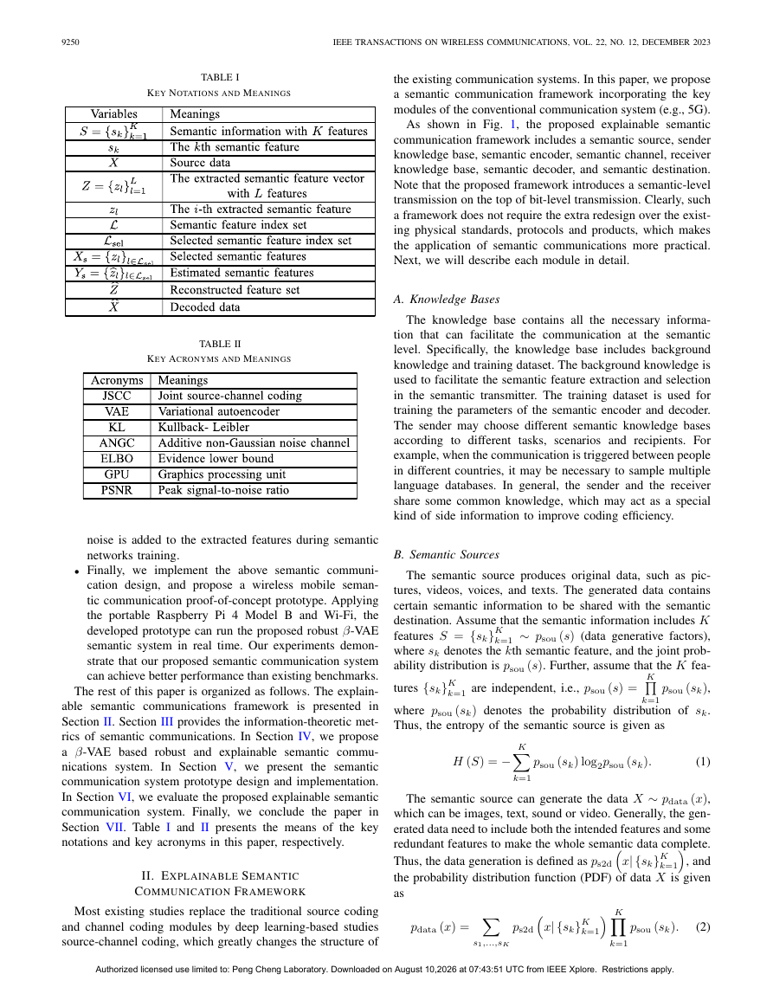<figcaption>架构/方法证据：来源《Task-Oriented Explainable Semantic Communications》p.3，Fig. 1 , the proposed explainable semantic communication framework includes a semantic source, sender knowledge base, semantic encoder, semantic channel, receiver knowledge base, semantic。<a href='https://doi.org/10.1109/twc.2023.3269444'>出版页面</a></figcaption></figure><figure>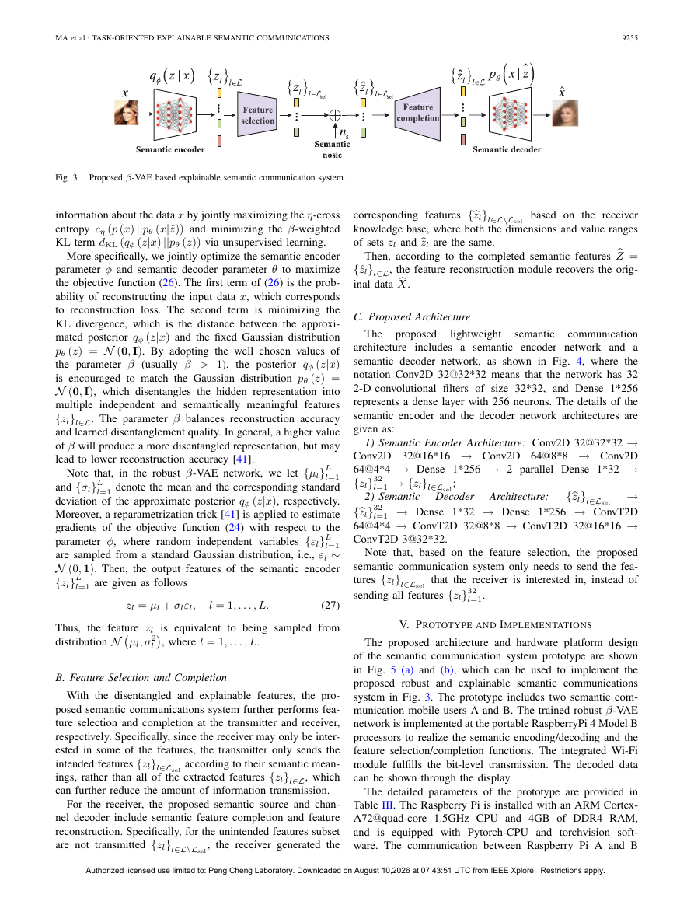<figcaption>关键结果证据：来源《Task-Oriented Explainable Semantic Communications》p.8，Fig. 3 Proposed β-VAE based explainable semantic communication system. information about the data x by jointly maximizing the η-cross corresponding features {b zl }l∈L\Lsel based on the r。<a href='https://doi.org/10.1109/twc.2023.3269444'>出版页面</a></figcaption></figure></div>
  <h3>局限性</h3><p>结论主要由论文设定的语音传输/识别数据与仿真信道支持；跨数据、跨设备和真实空口泛化仍需进一步验证。</p>
</article>
<article id='the-age-of-incorrect-information-an-enabler-of-semantics-empowered-communication' class='paper'>
  <div class='paper-head'><div><span class='badge'>core</span><span class='year'>2023</span><h2>The Age of Incorrect Information: An Enabler of Semantics-Empowered Communication</h2></div><a class='pdf' href='https://doi.org/10.1109/twc.2022.3213227'>DOI / IEEE Xplore</a></div>
  <div class='facts'><div><b>作者</b>Ali Maatouk、Mohamad Assaad、Anthony Ephremides</div><div><b>刊物</b>IEEE Transactions on Wireless Communications</div><div><b>DOI</b><a href='https://doi.org/10.1109/twc.2022.3213227'>10.1109/twc.2022.3213227</a></div><div><b>IEEE document ID</b>9921185</div><div><b>卷/期/页</b>Vol. 22, No. 4, 2621-2635</div><div><b>任务</b>通用语义通信/理论与网络设计</div></div>
  <h3>Introduction 讲述逻辑</h3><ol><li><b>已有进展：</b>Accordingly, researchers have been trying to push I N THE last decade, communication systems have wit- nessed astronomical growth in both traffic demand and widespread deployment.</li><li><b>尚存问题：</b>This example barely scratches communication paradigm, with its role-blind approach to data, the surface as IoT systems are gaining massive momentum is vulnerable to performance bottlenecks.</li><li><b>为何重要：</b>Chen. (Corresponding author: Ali Maatouk.) Although the AoI was shown to provide significant improve- Ali Maatouk is with the Paris Research Center, Huawei Technologies, 92100 ments to data freshness in various applications, it exhibits Boulogne-Billancourt, France (e-mail: ali.maatouk@huawei.com). some critical shortcomings.</li><li><b>本文方案：</b>Traditionally, metrics like throughput, delay, and policy, and we propose an algorithm that finds the optimal parameters.</li><li><b>解决机制：</b>Traditionally, metrics like throughput, delay, and policy, and we propose an algorithm that finds the optimal parameters.</li><li><b>核心主张：</b>This surge is due to the expected was presented at the 2022 IEEE International Conference on Communications performance improvement this added dimension will have in [DOI: 10.1109/ICC45855.2022.9838737].</li></ol>
  <h3>数据集、baseline 与评价设置</h3><div class='grid3'><div><b>数据集</b><p>论文未明确给出或自动定位不足，需结合全文人工复核</p></div><div><b>Baseline</b><p>NOMA</p></div><div><b>指标与信道</b><p>mAP、AoI、latency、utility<br>论文未明确给出或自动定位不足，需结合全文人工复核<br>SNR: 论文未明确给出或自动定位不足，需结合全文人工复核</p></div></div>
  <h3>方法与数字化方案</h3><p><b>表示判断：</b>连续神经 JSCC（广义语义通信，非严格数字接口）</p><ul><li><b>p.3</b> ION f (·) and g(·, ·), thus enabling semantics-empowered commu- nication in the network. We refer the readers to Section II of A. System Model the technical report for more details [23]. There exists a large We consider a transmitter-receiver system where time is variety of performance measures that can be formulated using assumed to be slotted and normalized to the slo</li></ul>
  <h3>传输开销与可推导边界</h3><p>\(R_{tx}=B_{semantic}/B_{raw}\)，若论文仅给 channel uses，则不能在缺少调制阶数与帧开销时把它直接当成 bit-rate。</p><p class='muted'>论文未在可稳定抽取的段落中给出码本大小、token 数或 bit 数；报告不据 latent 维度虚构精确码率。</p>
  <h3>信道处理机制</h3><p><b>分类：</b>带噪连续表示端到端联合训练/信道自适应</p><p class='muted'>信道相关证据需结合系统模型页人工复核。</p><p><b>Codex 判断：</b>属于核心</p>
  <h3>主要结果</h3><ul><li><b>p.1</b> review). This surge is due to the expected was presented at the 2022 IEEE International Conference on Communications performance improvement this added dimension will have in [DOI: 10.1109/ICC45855.2022.9838737]. The associate editor coordinating various applications (e.g., [5], [6], [7], [8], [9], [10], [11]). the review of this article and approving it for publ</li><li><b>p.1</b> approving it for publication was X. Chen. (Corresponding author: Ali Maatouk.) Although the AoI was shown to provide significant improve- Ali Maatouk is with the Paris Research Center, Huawei Technologies, 92100 ments to data freshness in various applications, it exhibits Boulogne-Billancourt, France (e-mail: ali.maatouk@huawei.com). some critical shortcomings. P</li><li><b>p.5</b> (10) If this condition is violated, then transmitting a packet does Let us now consider that the transmitter proceeds with a not improve the system’s overall performance. Specifically, transmission at time t. This transmission will have no effect this means that the information process changes drastically at on dt , as dt is already equal to 0. In other words, we</li><li><b>p.9</b> = 0.8, ρ = 1, and γ = 1. As seen in Fig. 3b, the fresh estimates of Xt (AoI metric) or minimizing the channel AoII-optimal policy outperforms the two other policies for prediction error (standard error metric). Therefore, we can any δ. see how by tweaking the function f (.), the AoII allows us to capture the channel training’s goal. To highlight our AoII approach’s be</li><li><b>p.9</b> 2, γ = 1, and α0 = 4. As seen in Fig. 3a, the AoII-optimal Accordingly, this application falls under the decision problems policy outperforms the two other policies for any δ. umbrella. As found by the UK fire research station, the spread Authorized licensed use limited to: Peng Cheng Laboratory. Downloaded on August 10,2026 at 07:44:34 UTC from IEEE Xplore. Restricti</li></ul>
  <div class='figs'><figure>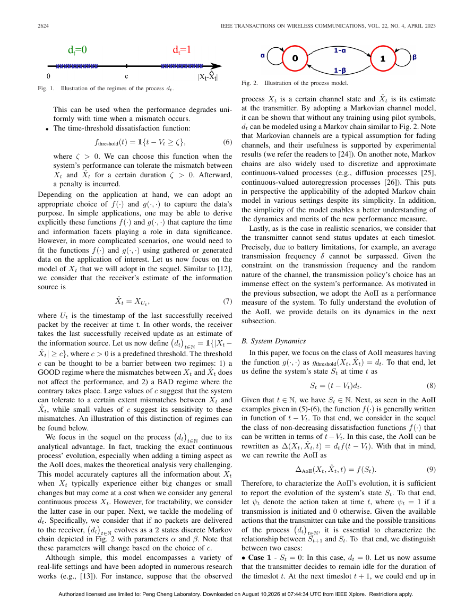<figcaption>架构/方法证据：来源《The Age of Incorrect Information: An Enabler of Semantics-Empowered Communication》p.4，Fig. 2 Illustration of the process model. Fig. 1. Illustration of the regimes of the process dt . process Xt is a certain channel state and X̂t is its estimate This can be used when the p。<a href='https://doi.org/10.1109/twc.2022.3213227'>出版页面</a></figcaption></figure><figure>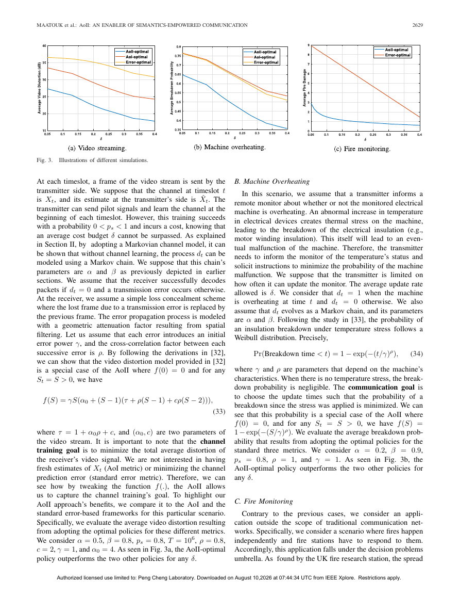<figcaption>关键结果证据：来源《The Age of Incorrect Information: An Enabler of Semantics-Empowered Communication》p.9，Fig. 3 Illustrations of different simulations. At each timeslot, a frame of the video stream is sent by the B. Machine Overheating transmitter side. We suppose that the channel at timeslo。<a href='https://doi.org/10.1109/twc.2022.3213227'>出版页面</a></figcaption></figure></div>
  <h3>局限性</h3><p>连续 latent 的鲁棒性不能直接等同于可部署数字链路；bitstream、帧结构、同步和标准信道编码接口仍需补足。</p>
</article>
<article id='a-gan-based-semantic-communication-for-text-without-csi' class='paper'>
  <div class='paper-head'><div><span class='badge'>core</span><span class='year'>2024</span><h2>A GAN-Based Semantic Communication for Text Without CSI</h2></div><a class='pdf' href='https://doi.org/10.1109/twc.2024.3415363'>DOI / IEEE Xplore</a></div>
  <div class='facts'><div><b>作者</b>Jin Mao、Ke Xiong、Ming Liu、Zhijin Qin、Wei Chen、Pingyi Fan、Khaled Ben Letaief</div><div><b>刊物</b>IEEE Transactions on Wireless Communications</div><div><b>DOI</b><a href='https://doi.org/10.1109/twc.2024.3415363'>10.1109/twc.2024.3415363</a></div><div><b>IEEE document ID</b>10584461</div><div><b>卷/期/页</b>Vol. 23, No. 10, 14498-14514</div><div><b>任务</b>视频传输/理解</div></div>
  <h3>Introduction 讲述逻辑</h3><ol><li><b>已有进展：</b>14498 IEEE TRANSACTIONS ON WIRELESS COMMUNICATIONS, VOL. 23, NO. 10, OCTOBER 2024 A GAN-Based Semantic Communication for Text Without CSI Jin Mao , Ke Xiong , Member, IEEE, Ming Liu , Member, IEEE, Zhijin Qin , Senior Member, IEEE, Wei Chen , Senior Member, IEEE, Pingyi Fan , Senior Member, IEEE, and Khaled Ben Letaief , Fellow, IEEE Abstract— Recently, semantic communication (SC) has been score achieved by Ti-GSC is about 40% and 62% higher than regarded as one of the most potential paradigms of 6G.</li><li><b>尚存问题：</b>既有方案在带宽、信道变化、任务异质性或可部署性上仍存在瓶颈。</li><li><b>为何重要：</b>14498 IEEE TRANSACTIONS ON WIRELESS COMMUNICATIONS, VOL. 23, NO. 10, OCTOBER 2024 A GAN-Based Semantic Communication for Text Without CSI Jin Mao , Ke Xiong , Member, IEEE, Ming Liu , Member, IEEE, Zhijin Qin , Senior Member, IEEE, Wei Chen , Senior Member, IEEE, Pingyi Fan , Senior Member, IEEE, and Khaled Ben Letaief , Fellow, IEEE Abstract— Recently, semantic communication (SC) has been score achieved by Ti-GSC is about 40% and 62% higher than regarded as one of the most potential paradigms of 6G.</li><li><b>本文方案：</b>Although, many notable results have been achieved by exist- In view of this, we propose a new SC framework by inte- ing works, they only discussed SC in additive white Gaussian grating GAN with SC, as the inherent generative capacity noise (AWGN) channels.</li><li><b>解决机制：</b>The work of Khaled Ben Letaief was supported in part by the assumed to enable back-propagation of gradients (BPG) for Hong Kong Research Grants Council through the Areas of Excellence Scheme effective training [18].</li><li><b>核心主张：</b>Experimental demands and the communication resources has been exac- results show that JOT is more efficient for Ti-GSC, and Ti-GSC outperforms conventional communication frameworks in terms erbated.</li></ol>
  <h3>数据集、baseline 与评价设置</h3><div class='grid3'><div><b>数据集</b><p>Europarl</p></div><div><b>Baseline</b><p>BPG、GAN、Transformer、QAM、RSMA、PPO、DQN</p></div><div><b>指标与信道</b><p>BLEU、mAP、accuracy、energy efficiency、semantic similarity、utility<br>AWGN、Rayleigh、Rician、MIMO、OFDM、fading channel<br>SNR: 0 dB、0dB、12 dB、12dB、15 dB、21 dB、24 dB、9 dB、9dB</p></div></div>
  <h3>方法与数字化方案</h3><p><b>表示判断：</b>数字或混合：显式量化/比特流/传统调制编码</p><ul><li><b>p.2</b> t overhead of channel difference. estimation [34] still exists, and it is difficult to obtain accurate • To better understand the proposed framework, we discuss labels for supervised learning due to the unavoidable estima- two distinct training schemes. The first scheme is opti- tion errors and dynamic wireless environments. mizing AEDM and GSDSM jointly, i.e., joint optimizi</li><li><b>p.2</b> ntributions training (AOT). The experimental results demonstrate Motivated by this, this study aims to design a novel SC that our proposed framework outperforms conventional framework that does not require physical layer CSI. It is frameworks without CSI in terms of bilingual evaluation noticed that, the general SC framework has an encoder and understudy (BLEU) scores in both</li><li><b>p.3</b> informa- tion s and ends with the destination obtaining the decoded information ŝ. As shown in Fig. 1(a), s is the input of the semantic encoder, and the encoded signal X is the output of the semantic encoder. After channel transmission, the received signal Y is first equalized by inputting CSI and then decoded by semantic decoder to recover ŝ. For such an SC framework,</li><li><b>p.3</b> oded information ŝ. As shown in Fig. 1(a), s is the input of the semantic encoder, and the encoded signal X is the output of the semantic encoder. After channel transmission, the received signal Y is first equalized by inputting CSI and then decoded by semantic decoder to recover ŝ. For such an SC framework, it first requires training the semantic encoder and the semantic</li><li><b>p.3</b> zed by inputting CSI and then decoded by semantic decoder to recover ŝ. For such an SC framework, it first requires training the semantic encoder and the semantic decoder, and then one can obtain ŝ by inputting s. In the training phase, both s that are stored in the knowledge base and ŝ are inputted for a designed loss function to gradually update the parameters of seman</li></ul>
  <h3>传输开销与可推导边界</h3><p>\(R_{tx}=B_{semantic}/B_{raw}\)，若论文仅给 channel uses，则不能在缺少调制阶数与帧开销时把它直接当成 bit-rate。</p><ul><li><b>p.8</b> nnel effect • Conventional-w-CSI (Huffman-CC): We construct the and semantic noise over distorted signal, emphasizing the Huffman codebook by computing character frequencies reduction of their impact while perceiving semantics and as a dictionary for source coding, and the channel coding semantic noise. Regarding the above requirement, U-Net [55] is the same as Fixe</li></ul>
  <h3>信道处理机制</h3><p><b>分类：</b>语义感知 HARQ/不等错误保护</p><ul><li><b>p.1</b> 40% and 62% higher than regarded as one of the most potential paradigms of 6G. Current that achieved by existing SC frameworks in Rician and Rayleigh SC frameworks require the physical layer channel state informa- fading, respectively. Besides, each term of the presented loss tion (CSI) in order to handle the severe signal distortion induced function has a great i</li><li><b>p.1</b> higher than regarded as one of the most potential paradigms of 6G. Current that achieved by existing SC frameworks in Rician and Rayleigh SC frameworks require the physical layer channel state informa- fading, respectively. Besides, each term of the presented loss tion (CSI) in order to handle the severe signal distortion induced function has a great impact on the</li><li><b>p.1</b> unction has a great impact on the BLEU performance of Ti- by channel fading. Since practical CSI cannot be obtained GSC, where in Rician fading syntactic learning has the greatest accurately and the overhead of channel estimation cannot be impact, and in Rayleigh fading, the adversarial learning becomes neglected, we therefore propose a generative adversarial netw</li><li><b>p.1</b> e in Rician fading syntactic learning has the greatest accurately and the overhead of channel estimation cannot be impact, and in Rayleigh fading, the adversarial learning becomes neglected, we therefore propose a generative adversarial network important. (GAN) based SC framework (Ti-GSC) that doesn’t require CSI. In Ti-GSC, there are two main modules, i.e., an auto</li><li><b>p.1</b> orks in terms erbated. To release such a conflict, semantic communication of bilingual evaluation understudy (BLEU) score in both Rician (SC) [12] has recently re-aroused the increasing attention of and Rayleigh fading channels. Moreover, without CSI, the BLEU researchers. SC incorporates semantic dimensions based on the meaning Manuscript received 11 December 202</li><li><b>p.1</b> of bilingual evaluation understudy (BLEU) score in both Rician (SC) [12] has recently re-aroused the increasing attention of and Rayleigh fading channels. Moreover, without CSI, the BLEU researchers. SC incorporates semantic dimensions based on the meaning Manuscript received 11 December 2023; revised 15 April 2024 and 7 June conveyed by messages [13], [14], [15],</li></ul><p><b>Codex 判断：</b>属于核心</p>
  <h3>主要结果</h3><ul><li><b>p.1</b> xperimental demands and the communication resources has been exac- results show that JOT is more efficient for Ti-GSC, and Ti-GSC outperforms conventional communication frameworks in terms erbated. To release such a conflict, semantic communication of bilingual evaluation understudy (BLEU) score in both Rician (SC) [12] has recently re-aroused the increasing attention</li><li><b>p.1</b> gher dimensional units. Therefore, it is Engineering Research Center of Advanced Network Technologies, Beijing capable of notably improving the efficiency and reliability of Jiaotong University, Beijing 100044, China (e-mail: jinmao@bjtu.edu.cn; kxiong@bjtu.edu.cn; mingliu@bjtu.edu.cn). communications, and has been widely regarded as a potential Zhijin Qin is with</li><li><b>p.2</b> eo, at the task-oriented level. Therefore, some works have focused talking-head video and 3D human mesh, respectively. In [40] on improving the transmission accuracy of SC at the semantic and [41], they applied GAN to SC for domain adaptation (DA). level, see e.g., [22] and [23], and others have concentrated on The aforementioned works show that GAN is competent i</li><li><b>p.2</b> ent works have begun to study SC over The main contributions of this paper are summarized as fading channels. It is noticed that, compared with AWGN follows: channel, the ANN training for SC in fading channels is • A novel GAN-based SC framework for text input more challenging [28]. First, the channel fading stochasticity (Ti-GSC), which doesn’t require CSI, is presented</li><li><b>p.2</b> cheme is optimiz- ing them alternatively, i.e., alternative optimizing based C. Motivations and Contributions training (AOT). The experimental results demonstrate Motivated by this, this study aims to design a novel SC that our proposed framework outperforms conventional framework that does not require physical layer CSI. It is frameworks without CSI in terms of bilingual evalu</li></ul>
  <div class='figs'><figure>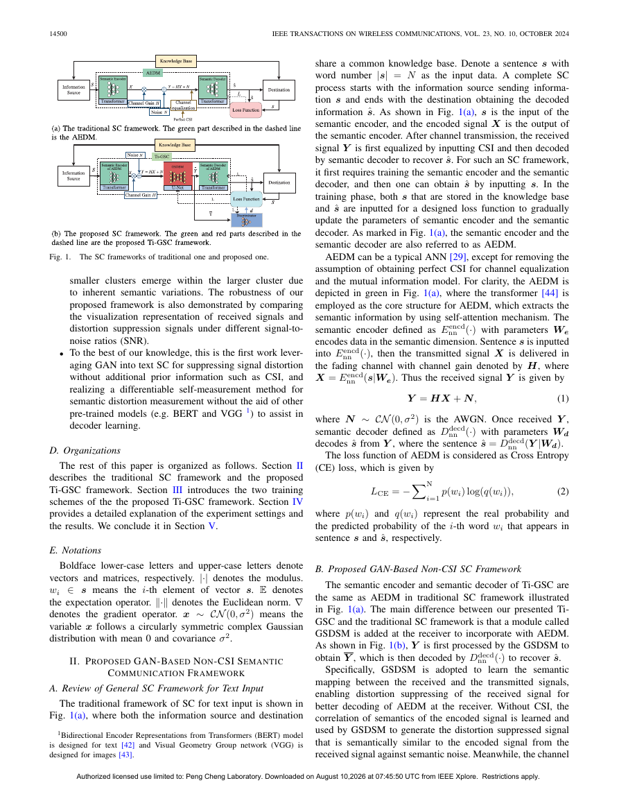<figcaption>架构/方法证据：来源《A GAN-Based Semantic Communication for Text Without CSI》p.3，Fig. 1 (a), s is the input of the semantic encoder, and the encoded signal X is the output of the semantic encoder. After channel transmission, the received signal Y is first equalized by。<a href='https://doi.org/10.1109/twc.2024.3415363'>出版页面</a></figcaption></figure><figure>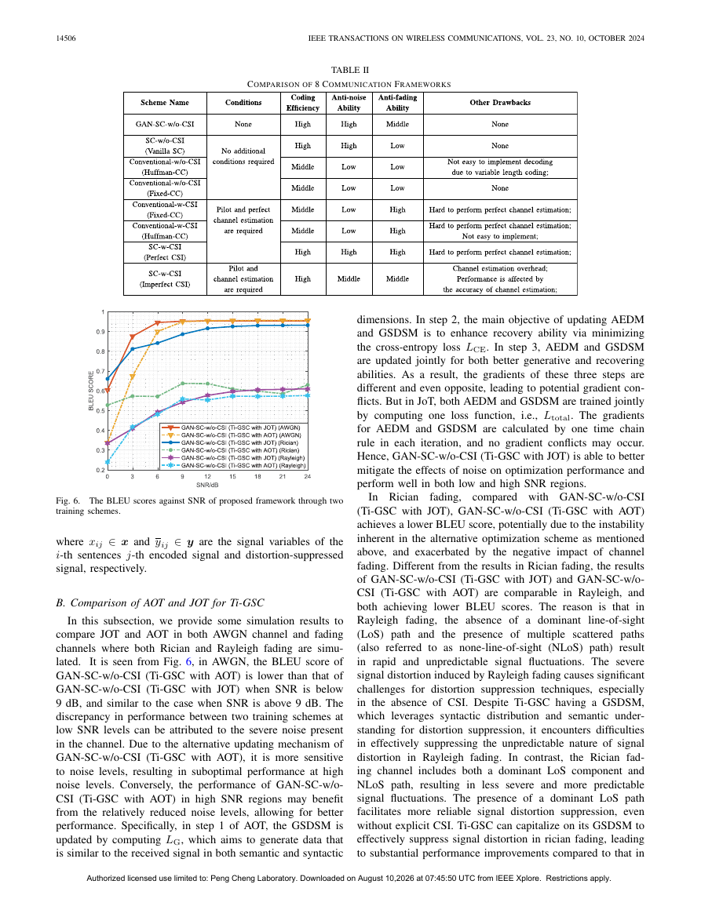<figcaption>关键结果证据：来源《A GAN-Based Semantic Communication for Text Without CSI》p.9，Fig. 6 The BLEU scores against SNR of proposed framework through two In Rician fading, compared with GAN-SC-w/o-CSI training schemes. (Ti-GSC with JOT), GAN-SC-w/o-CSI (Ti-GSC with AOT) a。<a href='https://doi.org/10.1109/twc.2024.3415363'>出版页面</a></figcaption></figure></div>
  <h3>局限性</h3><p>结论主要由论文设定的视频传输/理解数据与仿真信道支持；跨数据、跨设备和真实空口泛化仍需进一步验证。</p>
</article>
<article id='a-robust-semantic-text-communication-system' class='paper'>
  <div class='paper-head'><div><span class='badge'>core</span><span class='year'>2024</span><h2>A Robust Semantic Text Communication System</h2></div><a class='pdf' href='https://doi.org/10.1109/twc.2024.3381950'>DOI / IEEE Xplore</a></div>
  <div class='facts'><div><b>作者</b>Xiang Peng、Zhijin Qin、Xiaoming Tao、Jianhua Lu、Lajos Hanzo</div><div><b>刊物</b>IEEE Transactions on Wireless Communications</div><div><b>DOI</b><a href='https://doi.org/10.1109/twc.2024.3381950'>10.1109/twc.2024.3381950</a></div><div><b>IEEE document ID</b>10486856</div><div><b>卷/期/页</b>Vol. 23, No. 9, 11372-11385</div><div><b>任务</b>视频传输/理解</div></div>
  <h3>Introduction 讲述逻辑</h3><ol><li><b>已有进展：</b>11372 IEEE TRANSACTIONS ON WIRELESS COMMUNICATIONS, VOL. 23, NO. 9, SEPTEMBER 2024 A Robust Semantic Text Communication System Xiang Peng , Zhijin Qin , Senior Member, IEEE, Xiaoming Tao , Senior Member, IEEE, Jianhua Lu, Fellow, IEEE, and Lajos Hanzo , Life Fellow, IEEE Abstract— Semantic communication is increasingly viewed as space’ for narrowing the semantic discrepancy between the a promising solution to improve the transmission efficiency. transmitter and the receiver, rather than minimizing the classic However, semantic communications are susceptible not only to symbol error rate [2].</li><li><b>尚存问题：</b>11372 IEEE TRANSACTIONS ON WIRELESS COMMUNICATIONS, VOL. 23, NO. 9, SEPTEMBER 2024 A Robust Semantic Text Communication System Xiang Peng , Zhijin Qin , Senior Member, IEEE, Xiaoming Tao , Senior Member, IEEE, Jianhua Lu, Fellow, IEEE, and Lajos Hanzo , Life Fellow, IEEE Abstract— Semantic communication is increasingly viewed as space’ for narrowing the semantic discrepancy between the a promising solution to improve the transmission efficiency. transmitter and the receiver, rather than minimizing the classic However, semantic communications are susceptible not only to symbol error rate [2].</li><li><b>为何重要：</b>Hence they are eminently suitable for designing communication systems that quality and to harness the limited communication resources by are robust against semantic impairments [1], [20], [31]. prioritizing semantic regions.</li><li><b>本文方案：</b>Then, we propose a robust deep learning enabled semantic communication system (R-DeepSC) by introducing semantic communications are most suitable for scenarios a semantic corrector for robust semantic encoding so as to involving either human-to-machine or machine-to-machine facilitate semantic transmission.</li><li><b>解决机制：</b>Literal errors degrades the integrity of semantic communications through typically arise from the following pair of distinct scenarios: semantic channels, while a literal semantic impairment is Firstly, errors may have accidentally been made by imposed by corrupted source data.</li><li><b>核心主张：</b>Semantic communication is increasingly viewed as a promising solution to improve the transmission efficiency.</li></ol>
  <h3>数据集、baseline 与评价设置</h3><div class='grid3'><div><b>数据集</b><p>Europarl、LibriSpeech</p></div><div><b>Baseline</b><p>DeepSC、LDPC、VQ-VAE、VAE、Transformer、QAM</p></div><div><b>指标与信道</b><p>BLEU、BERTScore、accuracy、semantic similarity<br>AWGN、Rayleigh、Rician、MIMO、OFDM、fading channel<br>SNR: 18 dB</p></div></div>
  <h3>方法与数字化方案</h3><p><b>表示判断：</b>离散/数字：VQ、码本 index 或 token 表示</p><ul><li><b>p.1</b> ers improved inference speed by relying on a non- [3], [4], [5], [6], [7], [8], [9], [10], [11], [12], [13], [14], autoregressive architecture and an adaptive generator embedded into the semantic decoder. NA-RDeepSC performs semantic [15] tend to harness the considerable power of deep neural decoding in parallel, hence reducing the decoding complexity networks (DNNs) fo</li><li><b>p.1</b> mantic communications, presenting an efficient joint superior robustness of the proposed R-DeepSC and NA- semantic-channel coding architecture conceived for semantic RDeepSC architectures in eliminating semantic impairments, hence highlighting the significance of this work in advancing transmission. Lu et al. [4] introduced a confidence-based the development of robust s</li><li><b>p.1</b> nt joint superior robustness of the proposed R-DeepSC and NA- semantic-channel coding architecture conceived for semantic RDeepSC architectures in eliminating semantic impairments, hence highlighting the significance of this work in advancing transmission. Lu et al. [4] introduced a confidence-based the development of robust semantic communications. distillation mechani</li><li><b>p.1</b> ional Natural Science Foundation of China (NSFC) under Grant 61925105, Grant 62293484, and Grant 62227801; and in part by various architectures for image and video transmission. Shanghai Municipal Science and Technology Major Project under Grant More particularly, Huang et al. [8] designed a Generative 2018SHZDZX04. An earlier version of this paper was presented in part</li><li><b>p.3</b> d as follows. Section II edit labels for ‘clean-corrupt’ data pairs, which are utilized for introduces the semantic communication system models with training. Zhang et al. [29] proposed a dual channel model that particular emphasis on semantic impairments. Section III leverages both contextual and phonetic information for ASR presents our proposed robust semantic commun</li></ul>
  <h3>传输开销与可推导边界</h3><p>\(R_{tx}=B_{semantic}/B_{raw}\)，若论文仅给 channel uses，则不能在缺少调制阶数与帧开销时把它直接当成 bit-rate。</p><ul><li><b>p.3</b> l. [20] proposed a robust architecture considered, which can handle both physical semantic communication system relying on shared codebooks channel effects and semantic impairments. Denote the input to tackle both sample-dependent and sample-independent text as S, which is broken into tokens based on the semantic contamination. Sadeghi and Larsson [31] studied token</li><li><b>p.3</b> and semantic impairments. Denote the input to tackle both sample-dependent and sample-independent text as S, which is broken into tokens based on the semantic contamination. Sadeghi and Larsson [31] studied tokenization rules. For instance, when tokenizing the sentence the robustness of an end-to-end communication system to “this is predefined”, the resulting tok</li><li><b>p.3</b> d sample-independent text as S, which is broken into tokens based on the semantic contamination. Sadeghi and Larsson [31] studied tokenization rules. For instance, when tokenizing the sentence the robustness of an end-to-end communication system to “this is predefined”, the resulting tokenized sequence could physical adversarial attacks and defined a metric terme</li><li><b>p.3</b> s broken into tokens based on the semantic contamination. Sadeghi and Larsson [31] studied tokenization rules. For instance, when tokenizing the sentence the robustness of an end-to-end communication system to “this is predefined”, the resulting tokenized sequence could physical adversarial attacks and defined a metric termed as be [‘this’, ‘is’, ‘predefined’] or</li><li><b>p.3</b> nstance, when tokenizing the sentence the robustness of an end-to-end communication system to “this is predefined”, the resulting tokenized sequence could physical adversarial attacks and defined a metric termed as be [‘this’, ‘is’, ‘predefined’] or [‘this’, ‘is’, ‘pre’, ‘defined’], the perturbation-to-signal ratio for characterizing the strength depending on the</li><li><b>p.3</b> ] or [‘this’, ‘is’, ‘pre’, ‘defined’], the perturbation-to-signal ratio for characterizing the strength depending on the specific tokenization rules used. During the of adversarial semantic contamination. process of tokenization, the collection of all tokens is referred Just like any other communication systems, semantic text to as the dictionary, denoted as ν. T</li></ul>
  <h3>信道处理机制</h3><p><b>分类：</b>显式建模离散变量/比特错误，并进行鲁棒或联合恢复</p><ul><li><b>p.1</b> tion objective of semantic attention on the robustness of semantic communications against communications is no longer the classic bit error rate or semantic impairments. Specifically, we first categorize textual symbol error rate, but the fidelity of the semantic information semantic impairments into three categories based on their at the receiver. This optimization</li><li><b>p.1</b> te the aided semantic communications, presenting an efficient joint superior robustness of the proposed R-DeepSC and NA- semantic-channel coding architecture conceived for semantic RDeepSC architectures in eliminating semantic impairments, hence highlighting the significance of this work in advancing transmission. Lu et al. [4] introduced a confidence-based the developmen</li><li><b>p.2</b> These impairments can be mitigated by channel defend against adversarial attacks. These methods tend to aim equalization [16] and channel coding [17], while relying for increasing the resilience of DNNs by adding adversarial on channel estimation [18], which have been extensively examples to the training data. By incorporating these defensive investigated. strategies, DNN</li><li><b>p.3</b> rd against physical channel • To quantify the semantic impairments that the proposed impairments, including impairments caused by AWGN and system can handle, we categorized semantic impairments Rician fading channels. Therefore, the transmitted signal, X, into three distinct types and developed a new metric is given by termed as semantic impairment intensity. Fu</li><li><b>p.3</b> ts that the proposed impairments, including impairments caused by AWGN and system can handle, we categorized semantic impairments Rician fading channels. Therefore, the transmitted signal, X, into three distinct types and developed a new metric is given by termed as semantic impairment intensity. Furthermore, X = fφ [fλ [fη [E]]], (2) we established a semantic imp</li><li><b>p.8</b> y sampling a Multinoulli distribution defined in [41]. By adjusting the probability of the above errors and the maintaining a low bit error rate. Specifically, we utilize 8- sampled word index, induced spelling error datasets associated QAM modulation for unfavorable channel conditions, while with different levels of semantic impairment intensity were we employ 16-QA</li></ul><p><b>Codex 判断：</b>属于核心</p>
  <h3>主要结果</h3><ul><li><b>p.1</b> emantic communication is increasingly viewed as space’ for narrowing the semantic discrepancy between the a promising solution to improve the transmission efficiency. transmitter and the receiver, rather than minimizing the classic However, semantic communications are susceptible not only to symbol error rate [2]. Explicitly, the transmitted content physical chann</li><li><b>p.1</b> tions. autoregressive version of R-DeepSC, namely NA-RDeepSC, At the time of writing semantic communication systems, which offers improved inference speed by relying on a non- [3], [4], [5], [6], [7], [8], [9], [10], [11], [12], [13], [14], autoregressive architecture and an adaptive generator embedded into the semantic decoder. NA-RDeepSC performs semantic [15] t</li><li><b>p.1</b> O(n) to O(1) with a comparable performance to content. DeepSC [3] is a pioneering example of deep learning that of R-DeepSC. Our experimental results demonstrate the aided semantic communications, presenting an efficient joint superior robustness of the proposed R-DeepSC and NA- semantic-channel coding architecture conceived for semantic RDeepSC architectures in eliminating se</li><li><b>p.1</b> sive, text a knowledge graphs-based semantic communication system, transmission. aiming for reducing data transmission volume and improving semantic similarity by optimizing the associated resource I. I NTRODUCTION allocation strategies. Apart from text transmission, similar joint semantic I N CONTRAST to conventional communications, semantic communications are de</li><li><b>p.1</b> 4] conceived a model-based parametric Digital Object Identifier 10.1109/TWC.2024.3381950 semantic coding enhancement technique to improve subjective © 2024 The Authors. This work is licensed under a Creative Commons Attribution 4.0 License. For more information, see https://creativecommons.org/licenses/by/4.0/</li></ul>
  <div class='figs'><figure>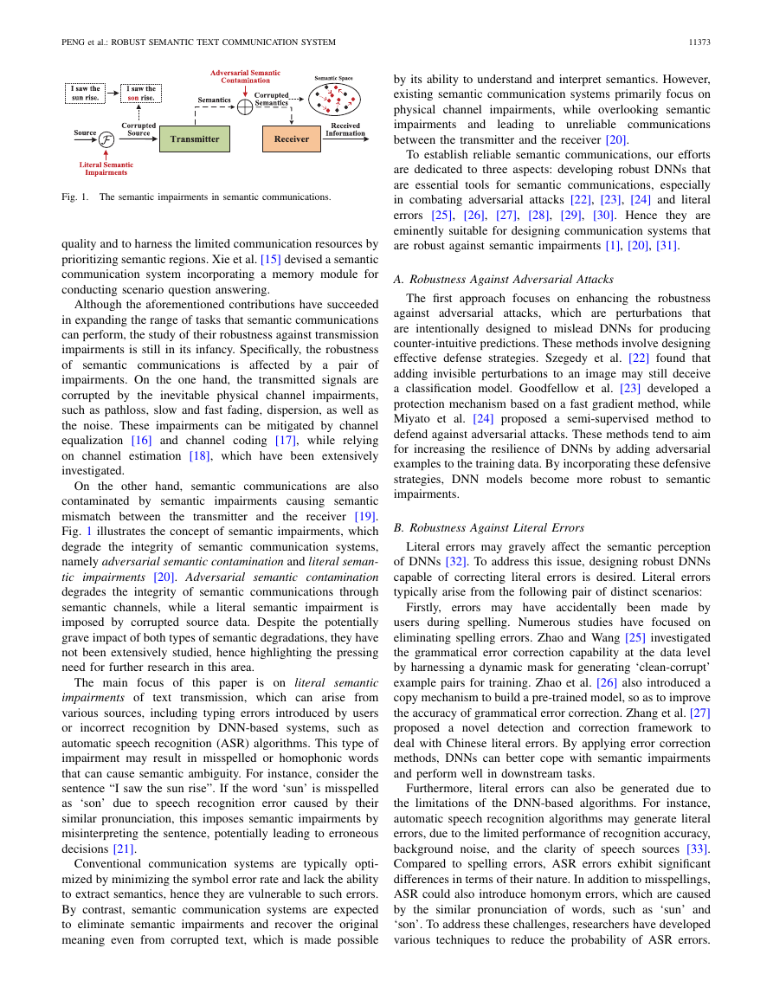<figcaption>架构/方法证据：来源《A Robust Semantic Text Communication System》p.2，Fig. 1 The semantic impairments in semantic communications. in combating adversarial attacks [22], [23], [24] and literal errors [25], [26], [27], [28], [29], [30]. Hence they are eminent。<a href='https://doi.org/10.1109/twc.2024.3381950'>出版页面</a></figcaption></figure><figure>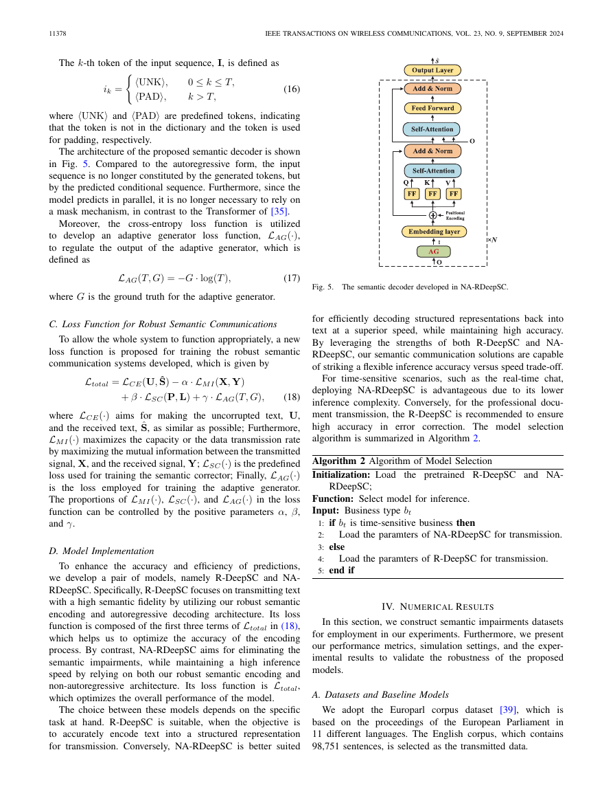<figcaption>关键结果证据：来源《A Robust Semantic Text Communication System》p.7，Fig. 5 Compared to the autoregressive form, the input sequence is no longer constituted by the generated tokens, but by the predicted conditional sequence. Furthermore, since the model pr。<a href='https://doi.org/10.1109/twc.2024.3381950'>出版页面</a></figcaption></figure></div>
  <h3>局限性</h3><p>已触及数字语义链路关键问题，但错误模型、码本规模和数据分布迁移下的泛化仍需真实空口验证。</p>
</article>
<article id='age-of-incorrect-information-minimization-for-semantic-empowered-noma-system-in-s-iot' class='paper'>
  <div class='paper-head'><div><span class='badge'>core</span><span class='year'>2024</span><h2>Age of Incorrect Information Minimization for Semantic-Empowered NOMA System in S-IoT</h2></div><a class='pdf' href='https://doi.org/10.1109/twc.2023.3334761'>DOI / IEEE Xplore</a></div>
  <div class='facts'><div><b>作者</b>Hui Hong、Jian Jiao、Tao Yang、Ye Wang、Rongxing Lu、Qinyu Zhang</div><div><b>刊物</b>IEEE Transactions on Wireless Communications</div><div><b>DOI</b><a href='https://doi.org/10.1109/twc.2023.3334761'>10.1109/twc.2023.3334761</a></div><div><b>IEEE document ID</b>10336741</div><div><b>卷/期/页</b>Vol. 23, No. 6, 6639-6652</div><div><b>任务</b>图像传输/视觉任务</div></div>
  <h3>Introduction 讲述逻辑</h3><ol><li><b>已有进展：</b>Recently, [16] and [19] have explored power allocation order and coefficients in the semantic- Markov decision process (MDP) optimizations for AoII.</li><li><b>尚存问题：</b>However, most of the existing downlink NOMA system are content-independent, which may and wide coverage of terrestrial user equipments (UEs), result redundant transmission in S-IoT with limited resources. making it an important component of the domain-wide sixth In this paper, we design a content-aware sampling policy generation (6G) network [5], [6].</li><li><b>为何重要：</b>However, most of the existing downlink NOMA system are content-independent, which may and wide coverage of terrestrial user equipments (UEs), result redundant transmission in S-IoT with limited resources. making it an important component of the domain-wide sixth In this paper, we design a content-aware sampling policy generation (6G) network [5], [6].</li><li><b>本文方案：</b>However, most of the existing downlink NOMA system are content-independent, which may and wide coverage of terrestrial user equipments (UEs), result redundant transmission in S-IoT with limited resources. making it an important component of the domain-wide sixth In this paper, we design a content-aware sampling policy generation (6G) network [5], [6].</li><li><b>解决机制：</b>To the best of our knowledge, this is the beam high-throughput satellite S improves the communication HONG et al.: AGE OF INCORRECT INFORMATION MINIMIZATION FOR SEMANTIC-EMPOWERED NOMA SYSTEM 6641 where 2bi , m and Ω denote the average power of scatter component, the Nakagami-m parameter and line of sight (LoS) component, respectively. 1 F1 (·, ·, ·) represents the Gauss hypergeometric function.</li><li><b>核心主张：</b>The empowered NOMA S-IoT system, which outperforms authors in [19] formulate the AoII-optimal sampling problem the SAC-deep deterministic policy gradient (DDPG) [25] as a MDP to compute the optimal sampling policy.</li></ol>
  <h3>数据集、baseline 与评价设置</h3><div class='grid3'><div><b>数据集</b><p>论文未明确给出或自动定位不足，需结合全文人工复核</p></div><div><b>Baseline</b><p>NOMA、PPO、DDPG、SAC</p></div><div><b>指标与信道</b><p>AoI、latency、spectral efficiency、utility<br>AWGN、Rician、MIMO、fading channel<br>SNR: 15 dB、20 dB</p></div></div>
  <h3>方法与数字化方案</h3><p><b>表示判断：</b>系统/资源层语义通信：论文未以可审计离散接口为主</p><ul><li><b>p.2</b> ess and the current II. S YSTEM M ODEL estimation of UEs, which provides a guideline to determine In this section, we present the system model of the the content-aware sampling and resource allocation for our semantic-empowered NOMA S-IoT system, and the semantic- downlink NOMA system. In particular, the main contributions empowered feature stands from the following asp</li><li><b>p.8</b> oach to ∞ X model our AoII optimization problem (39), and introduce the Rt = rt + γ · rt+1 + γ 2 · rt+2 + · · · = γ i rt+i , (42) architecture of our SAC-AMPA power allocation scheme. i=0 where γ is a discount factor that represents the importance of A. Problem Modeling Based on DRL rewards in future time slots. The application of DRL consists of three components: the B</li><li><b>p.8</b> nce of A. Problem Modeling Based on DRL rewards in future time slots. The application of DRL consists of three components: the B. Architecture of the SAC-AMPA Scheme environment, the agent, and actions. The interaction process of DRL is as follows: in each time slot t, the agent observes We utilize a DRL algorithm proximal policy optimization the environment state st ,</li><li><b>p.9</b> tochastic gradient descent L(φ) = E  γ τ rt+1+τ − Vφ (st )  . (46) algorithm: φ = φ − α · ∇φ L(φ). τ =0 13 end A neural network architecture is used to share parameters 14 θ′ ← θ. between the policy and value functions πθ (at |st ) and 15 Clear the experience replay pool. Vφ (st ), and a loss function LP P O (θ) is typically employed 16 end to combine the error terms</li></ul>
  <h3>传输开销与可推导边界</h3><p>\(R_{tx}=B_{semantic}/B_{raw}\)，若论文仅给 channel uses，则不能在缺少调制阶数与帧开销时把它直接当成 bit-rate。</p><p class='muted'>论文未在可稳定抽取的段落中给出码本大小、token 数或 bit 数；报告不据 latent 维度虚构精确码率。</p>
  <h3>信道处理机制</h3><p><b>分类：</b>语义感知 HARQ/不等错误保护</p><ul><li><b>p.3</b> y.  m   2bi m 1 x f|chi |2 (x) = exp − ni (t) ∼ CN 0, σ 2 represents the additive white Gaussian 2bi m + Ω 2bi 2bi   noise (AWGN) with σ 2 as its variance. Ωx Then, by regarding other UEs’ signals as intra-cell inter- ·1 F1 m, 1, , (1) 2bi (2bi m + Ω) ference, U Ei employs the successive interference cancellation</li><li><b>p.13</b> is of LEO multi-beam satellite communication in shadowed blockchain sharding scheme for satellite-based Internet of Things,” IEEE Rician channels,” in Proc. IEEE Global Commun. Conf. (GLOBECOM), Trans. Wireless Commun., vol. 21, no. 11, pp. 9432–9446, Nov. 2022. Dec. 2021, pp. 1–6. [5] C.-X. Wang et al., “On the road to 6G: Visions, requirements, key [29] L. You,</li><li><b>p.13</b> J. Jiao, J. Huang, S. Wu, R. Lu, and Q. Zhang, “Age-optimal V17.0.0, Release 17, 3GPP, 2021. [Online]. Available: network coding HARQ scheme for satellite-based Internet of Things,” https://www.3gpp.org/ftp/Specs/archive/36_series/36.763/36763-h00.zip IEEE Internet Things J., vol. 9, no. 21, pp. 21984–21998, Nov. 2022. [31] K. An, M. Lin, W. P. Zhu, Y. Huang, a</li><li><b>p.13</b> –21998, Nov. 2022. [31] K. An, M. Lin, W. P. Zhu, Y. Huang, and G. Zheng, “Outage [8] J. Jiao et al., “Age-optimal network coding HARQ transmission scheme performance of cognitive hybrid satellite-terrestrial networks with for dual-hop satellite-integrated internet,” IEEE Trans. Veh. Technol., interference constraint,” IEEE Trans. Veh. Technol., vol. 65, no. 11,</li></ul><p><b>Codex 判断：</b>属于核心</p>
  <h3>主要结果</h3><ul><li><b>p.1</b> ation problem to enable the IoT [11], [12], [13]. The authors in [14] establish the NOMA semantic-empowered downlink NOMA system. Simulation results framework for the space-terrestrial satellite networks, and show that our proposed SAC-AMPA scheme can achieve the optimal long-term average AoII performance under less power propose a resource allocation scheme to optimize the s</li><li><b>p.2</b> er and coefficients in the semantic- Markov decision process (MDP) optimizations for AoII. The empowered NOMA S-IoT system, which outperforms authors in [19] formulate the AoII-optimal sampling problem the SAC-deep deterministic policy gradient (DDPG) [25] as a MDP to compute the optimal sampling policy. The authors scheme. We analyze the convergence of our SAC-AMPA i</li><li><b>p.2</b> -sampling” (PSA) [26] and “generate- with the exponential growth of UEs in S-IoT network, the at-will” (GAW) [27] for comparison. Simulation results optimization of AoII becomes more challenging, while MDP show that our SAC-AMPA scheme can achieve both will cause the curse of dimensionality [20]. On the other of the lowest long-term average AoII and power hand, the Lyapunov o</li><li><b>p.2</b> hown in Fig. 1. The low Earth orbit (LEO) multi- ment. To the best of our knowledge, this is the beam high-throughput satellite S improves the communication</li><li><b>p.8</b> ted by both the channel conditions and queue backlogs parameters can be optimized by the critic function. Through of UEs [40]. To improve the AoII in our semantic-empowered iterative interactions between the policy networks and the NOMA S-IoT system, we define the sorting function of U Ei critic network, the PPO algorithm seeks to converge to the with channel gain</li></ul>
  <div class='figs'><figure>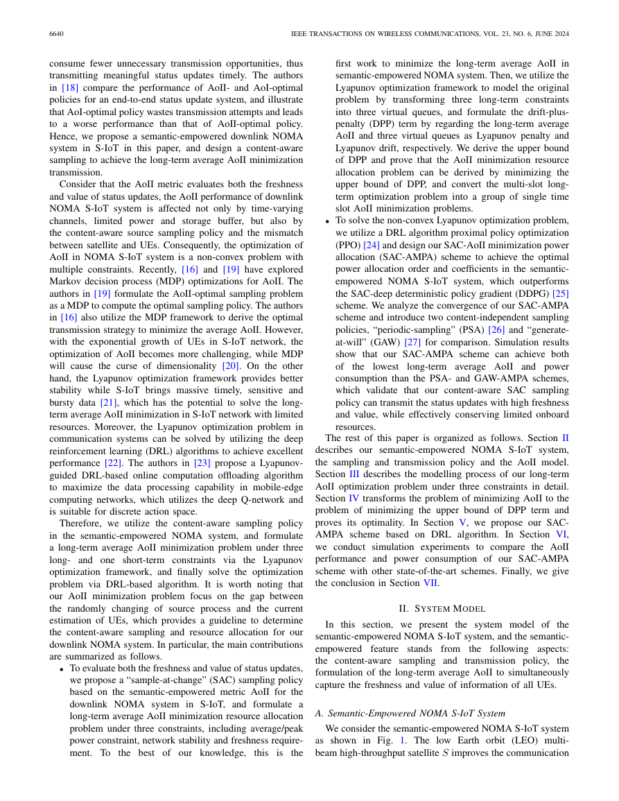<figcaption>架构/方法证据：来源《Age of Incorrect Information Minimization for Semantic-Empowered NOMA System in S-IoT》p.2，Fig. 1 The low Earth orbit (LEO) multi- ment. To the best of our knowledge, this is the beam high-throughput satellite S improves the communication。<a href='https://doi.org/10.1109/twc.2023.3334761'>出版页面</a></figcaption></figure><figure>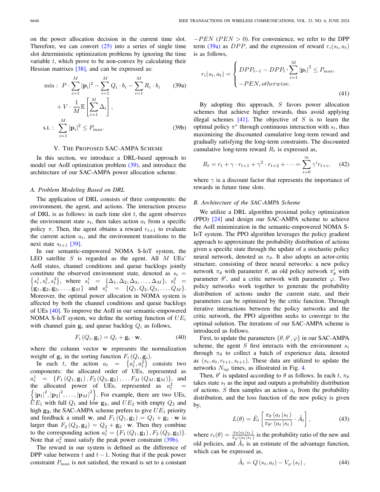<figcaption>关键结果证据：来源《Age of Incorrect Information Minimization for Semantic-Empowered NOMA System in S-IoT》p.8，Fig. 4 components: the allocated order of UEs, represented as Then, θ′ is updated according to θ as follows. In each t, πθ a1t = {F1 (Q1 , g1 ) , F2 (Q2 , g2 ) , . . . FM (QM , gM )}, and。<a href='https://doi.org/10.1109/twc.2023.3334761'>出版页面</a></figcaption></figure></div>
  <h3>局限性</h3><p>语义质量通常被压缩为效用/准确率函数，物理层可实现性与特征编码开销可能被抽象化。</p>
</article>
<article id='airnet-neural-network-transmission-over-the-air' class='paper'>
  <div class='paper-head'><div><span class='badge'>related</span><span class='year'>2024</span><h2>AirNet: Neural Network Transmission Over the Air</h2></div><a class='pdf' href='https://doi.org/10.1109/twc.2024.3388329'>DOI / IEEE Xplore</a></div>
  <div class='facts'><div><b>作者</b>Mikołaj Jankowski、Denız Gündüz、Krystian Mikolajczyk</div><div><b>刊物</b>IEEE Transactions on Wireless Communications</div><div><b>DOI</b><a href='https://doi.org/10.1109/twc.2024.3388329'>10.1109/twc.2024.3388329</a></div><div><b>IEEE document ID</b>10506072</div><div><b>卷/期/页</b>Vol. , No. , </div><div><b>任务</b>通用语义通信/理论与网络设计</div></div>
  <h3>Introduction 讲述逻辑</h3><ol><li><b>已有进展：</b>More recently, proposed in [12].</li><li><b>尚存问题：</b>However, given new class of joint source-channel coding methods that maximize the increasing prominence of DNNs employed in a large the accuracy of the DNNs transmitted to the receiver, rather number and variety of tasks, we cannot expect a user to than recover the DNNs with high fidelity.</li><li><b>为何重要：</b>An alternative approach is to send the data error protection (UEP) by selectively expanding the important samples from the user to an edge server, where an up-to-date layers.</li><li><b>本文方案：</b>Finally, we propose an ensemble training approach model is available for inference [2], [3], [4], [5].</li><li><b>解决机制：</b>AirNet achieves either because the model at the server has been improved higher accuracy compared to the separation-based alternatives. through further training, or the task at hand has changed, e.g., We further improve its performance by pruning the network due to variations in the statistics of samples, or the system below the available bandwidth, and using bandwidth expansion for significant network parameters.</li><li><b>核心主张：</b>AirNet achieves either because the model at the server has been improved higher accuracy compared to the separation-based alternatives. through further training, or the task at hand has changed, e.g., We further improve its performance by pruning the network due to variations in the statistics of samples, or the system below the available bandwidth, and using bandwidth expansion for significant network parameters.</li></ol>
  <h3>数据集、baseline 与评价设置</h3><div class='grid3'><div><b>数据集</b><p>ImageNet</p></div><div><b>Baseline</b><p>DeepJSCC、JPEG2000、BPG、LDPC</p></div><div><b>指标与信道</b><p>mAP、accuracy、latency<br>AWGN、OFDM、fading channel<br>SNR: 0dB、10dB、15dB、20dB、30dB、35dB、3dB、5dB</p></div></div>
  <h3>方法与数字化方案</h3><p><b>表示判断：</b>数字或混合：显式量化/比特流/传统调制编码</p><ul><li><b>p.1</b> ly and efficiently. In this paper, we introduce AirNet, a family of novel methods that allow We evaluate the performance of a DNN architecture with DNNs to be efficiently delivered over wireless channels under the accuracy it achieves on new samples, which assumes the stringent transmit power and latency constraints. It is a part of a availability of the model at the en</li><li><b>p.2</b> problem that requires the delivery of machine learning models over wireless links under strict bandwidth and transmission Fig. 1. System model. In AirNet, DNN is transmitted over a wireless channel in an uncoded fashion, and it employs various training techniques aimed at power constraints for reliable inference at the receiver. bandwidth reduction and enabling robustne</li><li><b>p.2</b> ons, and power allocation meth- this problem [1]. As in most wireless lossy source delivery ods. We show that the proposed AirNet architecture and problems, the two approaches follow the separation approach training strategies achieve superior accuracy compared to and the joint source-channel coding (JSCC) approach, respec- separation-based methods, which employ DNN com</li><li><b>p.2</b> this model in Section III, followed by the introduction of the method, the training is carried out taking into account the AirNet architecture in Section IV. Section V presents band- effect of channel imperfections. We remark that, in both width expansion methods, alongside an UEP scheme, while approaches, we assume the availability of the data at the edge Section VI in</li><li><b>p.3</b> autoencoder network with a communication by pruning. L1-norm of the network weights is considered channel model embedded into the architecture, between the in [15]. More complex methods of selecting the most important encoder and the decoder. The authors propose to directly convolutional filters are proposed in [16], [18], and [21]. map input image pixel values to real</li></ul>
  <h3>传输开销与可推导边界</h3><p>\(R_{tx}=B_{semantic}/B_{raw}\)，若论文仅给 channel uses，则不能在缺少调制阶数与帧开销时把它直接当成 bit-rate。</p><ul><li><b>p.3</b> lems. Although the problem of DNN delivery over wire- less channels is a JSCC problem at the core, it is substantially 2) Network Quantization: Another method of reducing the different from the delivery of other common sources, such complexity of DNNs is quantization. Instead of using a full, as image or video. Not only it has a very different measure 32-bit precis</li><li><b>p.3</b> work Quantization: Another method of reducing the different from the delivery of other common sources, such complexity of DNNs is quantization. Instead of using a full, as image or video. Not only it has a very different measure 32-bit precision for storing the network weights and activa- of quality at the receiver, but also, unlike typical information tions, low-b</li><li><b>p.3</b> ions and the memory statistics at the transmitter, that can be exploited for efficient footprint. Many works have studied network quantization in compression or JSCC. Instead, with the training data available, recent years [23], [24], [25], [26], [27], [28], [29]. These a particular DNN architecture can be trained or fine-tuned works study different aspects of quan</li><li><b>p.3</b> , [25], [26], [27], [28], [29]. These a particular DNN architecture can be trained or fine-tuned works study different aspects of quantization, e.g., evaluation specifically for efficient wireless delivery. A similar problem of the sensitivity of the DNN parameters, training strategies involving wireless delivery of DNN parameters is studied that benefit quantizati</li><li><b>p.3</b> the sensitivity of the DNN parameters, training strategies involving wireless delivery of DNN parameters is studied that benefit quantization, etc. Authors of [25] estimate the in [42], but in the absence of training data. The idea of trans- statistics of the Hessian matrix corresponding to each layer of mitting DNN parameters over the air in an analog fashion has</li><li><b>p.3</b> o derive a layer-dependent sensitivity also been explored in the context of federated learning [43], metric for a mixed-precision quantization process. In the Deep- [44] for the purposes of over-the-air computation. CABAC method [30], quantized DNN parameters are further compressed by utilizing context-adaptive binary arithmetic coding. III. S YSTEM M ODEL Analog s</li></ul>
  <h3>信道处理机制</h3><p><b>分类：</b>语义感知 HARQ/不等错误保护</p><ul><li><b>p.1</b> er and latency constraints. It is a part of a availability of the model at the end user. However, given new class of joint source-channel coding methods that maximize the increasing prominence of DNNs employed in a large the accuracy of the DNNs transmitted to the receiver, rather number and variety of tasks, we cannot expect a user to than recover the DNNs with high fide</li><li><b>p.1</b> nk capacity may be Index Terms— Neural network compression, joint source- limited compared to downlink. In such scenarios, a more channel coding, network pruning, distributed inference. efficient solution is to transmit the DNN parameters to the user over the network. However, given the growing size of modern I. I NTRODUCTION DNNs, and stringent latency requirements of ed</li><li><b>p.2</b> the two approaches follow the separation approach training strategies achieve superior accuracy compared to and the joint source-channel coding (JSCC) approach, respec- separation-based methods, which employ DNN compres- tively. In the separation-based approach, we train a model of sion followed by separate channel coding. AirNet allows a certain size, whose parameters a</li><li><b>p.2</b> -based methods, which employ DNN compres- tively. In the separation-based approach, we train a model of sion followed by separate channel coding. AirNet allows a certain size, whose parameters are then transmitted over the for a significant reduction in bandwidth requirements channel using an error correction code to provide reliability while sustaining satisfactory level</li><li><b>p.3</b> erparame- theorem [32] dictates the optimality of separate source and terized, thus their complexity can be reduced significantly channel coding, it holds under the assumptions of infinite without sacrificing accuracy. source and channel bandwidths, ergodic source and channel 1) Network Pruning: Pruning DNNs has been originally distributions, and for an additive distortio</li><li><b>p.3</b> ecs (BPG, JPEG2000) concatenated with algorithms perform sequential pruning and fine-tuning steps state-of-the-art channel codes (LDPC). DeepJSCC has also to regain the accuracy loss induced by removing certain been applied to other downstream tasks, such as remote parameters. Findings of [20] seem to confirm that this is a proper approach, since finding smaller</li></ul><p><b>Codex 判断：</b>属于技术边界相关，单列以避免扩大“语义通信”定义。</p>
  <h3>主要结果</h3><ul><li><b>p.1</b> need to be updated, constraints with robustness to channel noise. AirNet achieves either because the model at the server has been improved higher accuracy compared to the separation-based alternatives. through further training, or the task at hand has changed, e.g., We further improve its performance by pruning the network due to variations in the statistics of sa</li><li><b>p.1</b> curacy compared to the separation-based alternatives. through further training, or the task at hand has changed, e.g., We further improve its performance by pruning the network due to variations in the statistics of samples, or the system below the available bandwidth, and using bandwidth expansion for significant network parameters. We also exploit unequal requir</li><li><b>p.1</b> RODUCTION DNNs, and stringent latency requirements of edge intelligence D EEP learning (DL) has been shown to provide significant improvements in many practical tasks in computer vision, natural language processing, robotics, autonomous driving, applications, transmission of DNN parameters to a user may be constrained. This problem will be further exacerbated by t</li><li><b>p.3</b> alues to real or complex-valued Authors of [17] consider a single-shot network pruning strat- channel symbols, and show that JSCC outperforms stan- egy. We note, that the majority of the state-of-the-art pruning dard compressive codecs (BPG, JPEG2000) concatenated with algorithms perform sequential pruning and fine-tuning steps state-of-the-art channel codes (LDPC). D</li><li><b>p.4</b> e apply noise injection and knowledge distillation (Section IV-D) to any learning model, given their state-of-the-art perfor- for improved performance and robustness. Finally, the sensitivity of the DNN mance and large size that require significant communication is estimated and used for UEP (Section V) for improved robustness. resources, we focus on DNNs. More sp</li></ul>
  <div class='figs'><figure>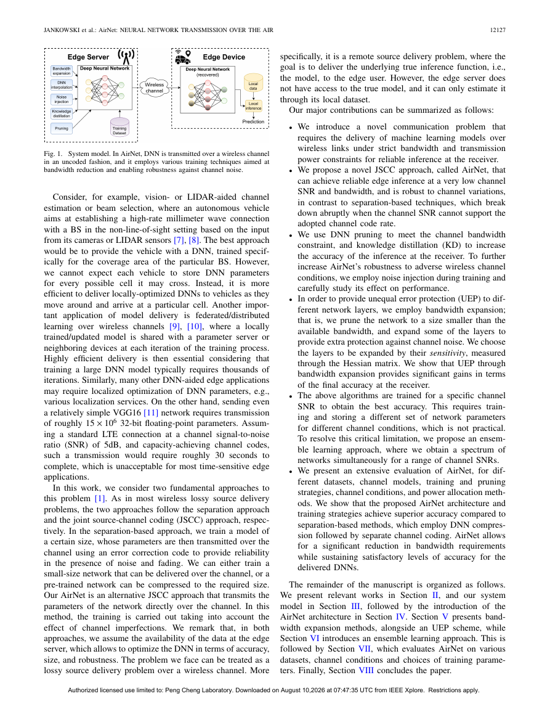<figcaption>架构/方法证据：来源《AirNet: Neural Network Transmission Over the Air》p.2，Fig. 1 System model. In AirNet, DNN is transmitted over a wireless channel in an uncoded fashion, and it employs various training techniques aimed at power constraints for reliable infere。<a href='https://doi.org/10.1109/twc.2024.3388329'>出版页面</a></figcaption></figure><figure>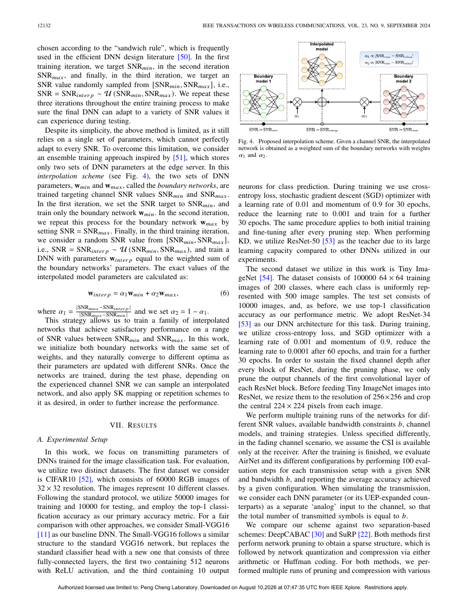<figcaption>关键结果证据：来源《AirNet: Neural Network Transmission Over the Air》p.7，Fig. 4 Proposed interpolation scheme. Given a channel SNR, the interpolated adapt to every SNR. To overcome this limitation, we consider network is obtained as a weighted sum of the bound。<a href='https://doi.org/10.1109/twc.2024.3388329'>出版页面</a></figcaption></figure></div>
  <h3>局限性</h3><p>结论主要由论文设定的通用语义通信/理论与网络设计数据与仿真信道支持；跨数据、跨设备和真实空口泛化仍需进一步验证。</p>
</article>
<article id='analysis-on-peak-age-of-status-updates-in-task-oriented-machine-type-communications' class='paper'>
  <div class='paper-head'><div><span class='badge'>related</span><span class='year'>2024</span><h2>Analysis on Peak Age of Status Updates in Task-Oriented Machine- Type Communications</h2></div><a class='pdf' href='https://doi.org/10.1109/twc.2024.3430903'>DOI / IEEE Xplore</a></div>
  <div class='facts'><div><b>作者</b>Yanlin Li、Xiaoqi Qin、Jincheng Dai、Xianxin Song、Nan Ma、Ping Zhang</div><div><b>刊物</b>IEEE Transactions on Wireless Communications</div><div><b>DOI</b><a href='https://doi.org/10.1109/twc.2024.3430903'>10.1109/twc.2024.3430903</a></div><div><b>IEEE document ID</b>10614101</div><div><b>卷/期/页</b>Vol. 23, No. 10, 15555-15570</div><div><b>任务</b>文本传输/翻译</div></div>
  <h3>Introduction 讲述逻辑</h3><ol><li><b>已有进展：</b>Edge Computing to reconstruct the observed physical process based on the As a promising computing technique to offer cloud-like received status updates.</li><li><b>尚存问题：</b>However, as the proliferation of real-time net- computation-intensive status updates to obtain real-time situa- tional awareness.</li><li><b>为何重要：</b>IEEE TRANSACTIONS ON WIRELESS COMMUNICATIONS, VOL. 23, NO. 10, OCTOBER 2024 15555 Analysis on Peak Age of Status Updates in Task-Oriented Machine- Type Communications Yanlin Li , Student Member, IEEE, Xiaoqi Qin , Senior Member, IEEE, Jincheng Dai , Member, IEEE, Xianxin Song , Member, IEEE, Nan Ma , Member, IEEE, and Ping Zhang , Fellow, IEEE Abstract— The scope of the 6G wireless communication to human perception.</li><li><b>本文方案：</b>In this paper, we develop an analytical framework challenges to current wireless communication networks due to investigate the temporal value of status updates, in terms to the stringent real-time requirements and significantly dif- of the peak age of information.</li><li><b>解决机制：</b>Therefore, the design philosophy of system is envisioned to expand beyond delivering data to wireless communication system mainly focuses on throughput humans and towards connecting machines that constantly upload maximization.</li><li><b>核心主张：</b>作者希望证明在同等通信资源或信道条件下，所提方案能改善任务质量、传输效率或鲁棒性。</li></ol>
  <h3>数据集、baseline 与评价设置</h3><div class='grid3'><div><b>数据集</b><p>论文未明确给出或自动定位不足，需结合全文人工复核</p></div><div><b>Baseline</b><p>论文未明确给出或自动定位不足，需结合全文人工复核</p></div><div><b>指标与信道</b><p>mAP、accuracy、AoI、latency<br>Rayleigh、fading channel<br>SNR: 论文未明确给出或自动定位不足，需结合全文人工复核</p></div></div>
  <h3>方法与数字化方案</h3><p><b>表示判断：</b>数字或混合：显式量化/比特流/传统调制编码</p><ul><li><b>p.2</b> as follows. Sec. II metrics. It requires an extension of mathematical modeling discusses the related works. Sec. III presents the system model to two-stage tandem queues [10], [11], [12], [13]. Moreover, and mathematical definitions of average PAoS. Sec. IV and the degradation of task performance caused by information Sec.V analyze average PAoS for both general and spec</li><li><b>p.9</b> e trinomial: P = αfk 3 , where α is a coefficient depending on the chip 2pk +(µk,t )2 + (Ek,t )2 −(µk,t +Ek,t )2 ≤ 0, ∀k ∈ K (20) architecture. Therefore, the energy consumption in computa- tion stage is derived as Then we apply the concept of Concave-Convex Procedure (CCCP) [42] to tackle the nonconvexity, the main idea of Ek,c = αck D̄k fk 2 ∀k ∈ K. (15) which is to i</li></ul>
  <h3>传输开销与可推导边界</h3><p>\(R_{tx}=B_{semantic}/B_{raw}\)，若论文仅给 channel uses，则不能在缺少调制阶数与帧开销时把它直接当成 bit-rate。</p><p class='muted'>论文未在可稳定抽取的段落中给出码本大小、token 数或 bit 数；报告不据 latent 维度虚构精确码率。</p>
  <h3>信道处理机制</h3><p><b>分类：</b>数字语义表示叠加传统信道编码/调制</p><ul><li><b>p.10</b> ge server. The coverage radius of random computation resource allocation [13]. the server is 200m, and the total bandwidth of the Rayleigh Fig. 12 compares the system performance of different fading channel [44] is 10KHz. Each device continuously schemes with growing number of devices under different generates status packets according to a Poisson process, with weig</li><li><b>p.16</b> intelligent communications, generative AI, [37] T. Qin, J. Pan, S. Cao, and S. Shen, “A general optimization-based and source and channel coding. framework for local odometry estimation with multiple sensors,” 2019, arXiv:1901.03638. [38] M. Lin, R. J. La, and N. C. Martins, “Stabilizing a queue subject to activity-dependent server performance,” IEEE Trans. Control Netw.</li></ul><p><b>Codex 判断：</b>属于技术边界相关，单列以避免扩大“语义通信”定义。</p>
  <h3>主要结果</h3><ul><li><b>p.1</b> iented resource optimization. The accuracy of our analysis is verified This paradigm shift involves information continuously with simulation results. Based on the theoretical analysis, we for- flowing around “sense-transmit-compute” cycles, where mulate an optimization problem to simultaneously minimize the computationally-intensive status updates within the perception age of</li><li><b>p.2</b> ing of PAoS is based on the concept offloading modes: binary offloading and parallel offloading. of PAoI, which is more tractable compared with AoI and As for the former, highly integrated data packets are processed thus facilitating its optimization in real-time systems. The as a whole at the devices or edge servers [23]. As for the other, contributions of this paper ar</li><li><b>p.5</b> = 5, increasing the transmis- (6) sion service rate leads to a decrease in generalized average Proof: See Appendix A. PAoS due to improved transmission efficiency and reduced Authorized licensed use limited to: Peng Cheng Laboratory. Downloaded on August 10,2026 at 07:48:56 UTC from IEEE Xplore. Restrictions apply.</li><li><b>p.6</b> vice rate approaches the computation service rate, contin- uously increasing the transmission service rate only produces marginal improvement of overall system performance. This is because system delay arises mainly from the congestion in the computation queue. In other words, system performance is limited by the weaker part of the communication or com- puting cap</li><li><b>p.10</b> lity of each device is set as ck = 30cycle/bit and As illustrated in the figures, our proposed solution consistently fmax = 5GHz. outperforms other schemes under different weights. Moreover, We compare our algorithm to the following schemes to when ω = 0.2 (more emphasis on energy), the “fixed resource present the performance gain of jointly optimizing commu- allocati</li></ul>
  <div class='figs'><figure>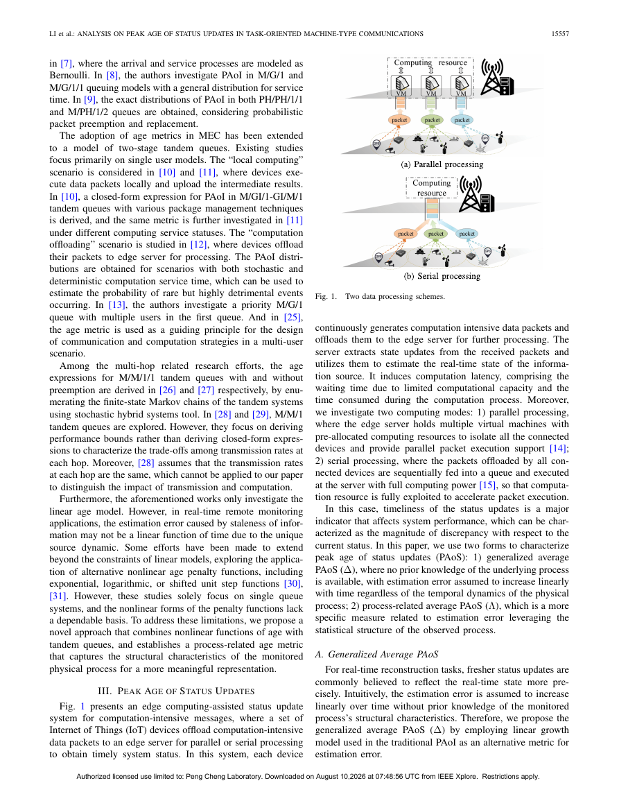<figcaption>架构/方法证据：来源《Analysis on Peak Age of Status Updates in Task-Oriented Machine- Type Communications》p.3，Fig. 1 Two data processing schemes. occurring. In [13], the authors investigate a priority M/G/1 queue with multiple users in the first queue. And in [25], the age metric is used as a gui。<a href='https://doi.org/10.1109/twc.2024.3430903'>出版页面</a></figcaption></figure><figure>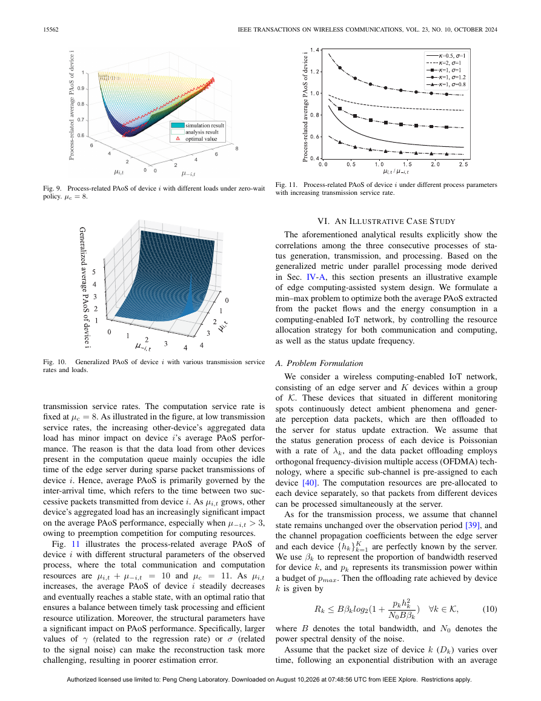<figcaption>关键结果证据：来源《Analysis on Peak Age of Status Updates in Task-Oriented Machine- Type Communications》p.8，Fig. 9 Process-related PAoS of device i with different loads under zero-wait Fig. 11. Process-related PAoS of device i under different process parameters policy. µc = 8. with increasing t。<a href='https://doi.org/10.1109/twc.2024.3430903'>出版页面</a></figcaption></figure></div>
  <h3>局限性</h3><p>主要依赖传统译码输出；若译码后仍残留 bit/index 错误，码本跳变与语义灾难性失真未必得到端到端处理。</p>
</article>
<article id='aoi-aware-interference-mitigation-for-task-oriented-multicasting-in-multi-cell-noma-networks' class='paper'>
  <div class='paper-head'><div><span class='badge'>related</span><span class='year'>2024</span><h2>AoI-Aware Interference Mitigation for Task-Oriented Multicasting in Multi-Cell NOMA Networks</h2></div><a class='pdf' href='https://doi.org/10.1109/twc.2024.3381480'>DOI / IEEE Xplore</a></div>
  <div class='facts'><div><b>作者</b>Chih-Yu Lin、Wanjiun Liao</div><div><b>刊物</b>IEEE Transactions on Wireless Communications</div><div><b>DOI</b><a href='https://doi.org/10.1109/twc.2024.3381480'>10.1109/twc.2024.3381480</a></div><div><b>IEEE document ID</b>10487785</div><div><b>卷/期/页</b>Vol. 23, No. 9, 11341-11356</div><div><b>任务</b>通用语义通信/理论与网络设计</div></div>
  <h3>Introduction 讲述逻辑</h3><ol><li><b>已有进展：</b>Recent studies have focused on minimizing it using the ϵ-greedy method.</li><li><b>尚存问题：</b>T ASK-ORIENTED Internet of Things (IoT) applications, such as extended reality (XR), IoT-based health, biomed- ical systems, and smart factories, require timely completion of However, even with multicast transmission, 5G OMA networks are insufficient to support massive number of UEs simultaneously (i.e., one million devices per kilometer) due tasks.</li><li><b>为何重要：</b>IEEE TRANSACTIONS ON WIRELESS COMMUNICATIONS, VOL. 23, NO. 9, SEPTEMBER 2024 11341 AoI-Aware Interference Mitigation for Task-Oriented Multicasting in Multi-Cell NOMA Networks Chih-Yu Lin and Wanjiun Liao , Fellow, IEEE Abstract— Age of Information (AoI) is a critical performance metric for measuring information freshness in task-oriented Internet of Things (IoT) applications.</li><li><b>本文方案：</b>To balance inter-cell interference and group size, we propose a novel AoI-aware inter- cell interference mitigation (AIM) solution, which dynamically Fig. 1.</li><li><b>解决机制：</b>Multicast transmission AoI through grouping and AoI-aware inter-cell interference adopted in 5G Orthogonal Multiple Access (OMA) networks mitigation.</li><li><b>核心主张：</b>Our simulation results show that AIM of user equipment (UE) devices and multiple devices may ensures more successful transmissions and low weighted sum act in response to the same message.</li></ol>
  <h3>数据集、baseline 与评价设置</h3><div class='grid3'><div><b>数据集</b><p>论文未明确给出或自动定位不足，需结合全文人工复核</p></div><div><b>Baseline</b><p>NOMA</p></div><div><b>指标与信道</b><p>AoI、energy efficiency、utility<br>MIMO、erasure channel<br>SNR: 论文未明确给出或自动定位不足，需结合全文人工复核</p></div></div>
  <h3>方法与数字化方案</h3><p><b>表示判断：</b>系统/资源层语义通信：论文未以可审计离散接口为主</p><ul><li><b>p.3</b> y. The rest of the paper is organized as follows. Section II Devices in G2 should decode the message of G1 at first, outlines the system model of multi-cell NOMA networks with then decode their desired message by treating the message of multicast transmissions. In Section III, the joint optimization G1 as interference. Similarly, devices in G3 can only decode problem is</li><li><b>p.16</b> TIONS, VOL. 23, NO. 9, SEPTEMBER 2024 [10] C. Guo, S. Wu, Z. Deng, J. Jiao, N. Zhang, and Q. Zhang, “Age-optimal [27] 5G; NG-RAN; Architecture Description;, V17.0.0, document TS 38.401, power allocation policies for NOMA and hybrid NOMA/OMA systems,” 3GPP, 2022. in Proc. IEEE ICC, Jun. 2021, pp. 1–6. [28] A. Caprara, H. Kellerer, and U. Pferschy, “The multiple subset su</li></ul>
  <h3>传输开销与可推导边界</h3><p>\(R_{tx}=B_{semantic}/B_{raw}\)，若论文仅给 channel uses，则不能在缺少调制阶数与帧开销时把它直接当成 bit-rate。</p><p class='muted'>论文未在可稳定抽取的段落中给出码本大小、token 数或 bit 数；报告不据 latent 维度虚构精确码率。</p>
  <h3>信道处理机制</h3><p><b>分类：</b>带噪连续表示端到端联合训练/信道自适应</p><p class='muted'>信道相关证据需结合系统模型页人工复核。</p><p><b>Codex 判断：</b>属于技术边界相关，单列以避免扩大“语义通信”定义。</p>
  <h3>主要结果</h3><ul><li><b>p.1</b> IoT applications often involve a large number AIM scheduling strategy and the upper bound of the number of scheduling groups. Our simulation results show that AIM of user equipment (UE) devices and multiple devices may ensures more successful transmissions and low weighted sum act in response to the same message. Multicast transmission AoI through grouping and AoI-aware inter</li><li><b>p.1</b> ) networks mitigation. We also show that our AoI-aware grouping scheme meets this requirement [3]. Multicast transmission has the outperforms random grouping and fixed grouping, as well as advantage of increasing spectrum efficiency in a shared evolutionary-based genetic algorithm grouping, by modeling the grouping problem as a multi-armed bandit problem and solving w</li><li><b>p.2</b> hannel as an adversarial binary cooperative scheduling, rate selection and power allocation erasure channel model. They showed an improved upper bound problem, with users performing interference cancellation. The of the competitive ratio of greedy scheduling policy compared solutions proposed in that work demonstrated that even cell- to their previous works. edge</li><li><b>p.3</b> trategy and the optimality gap time updates to the VR headset enhance the immersive of the grouping strategy is then derived. Our simulation results experience, AoI management is crucial. Fixed group sizes or show that dynamically adjusting multicast group size can inefficient multicast group scheduling may limit scalability, mitigate the effects of inter-cell interference an</li><li><b>p.3</b> evices, which is beneficial to optimizing autonomous terms of the expected weighted sum of AoI and the number of robot movements, improving productivity, and ensuring safety. successful transmission groups. To the best of our knowledge, However, maintaining a fixed group size may lead to this is the first work to jointly consider these factors and study inefficien</li></ul>
  <div class='figs'><figure>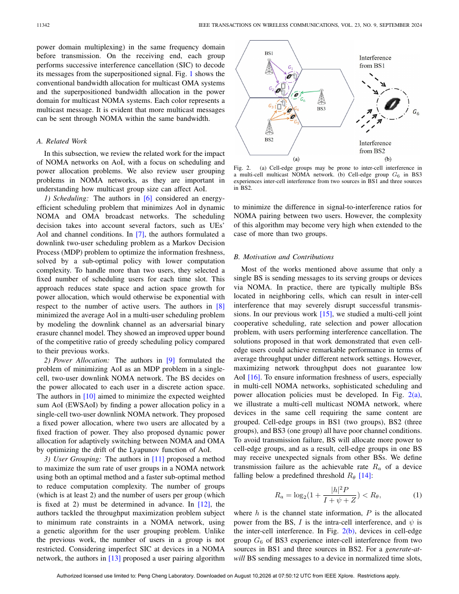<figcaption>架构/方法证据：来源《AoI-Aware Interference Mitigation for Task-Oriented Multicasting in Multi-Cell NOMA Networks》p.2，Fig. 1 shows the conventional bandwidth allocation for multicast OMA systems and the superpositioned bandwidth allocation in the power domain for multicast NOMA systems. Each color repres。<a href='https://doi.org/10.1109/twc.2024.3381480'>出版页面</a></figcaption></figure><figure>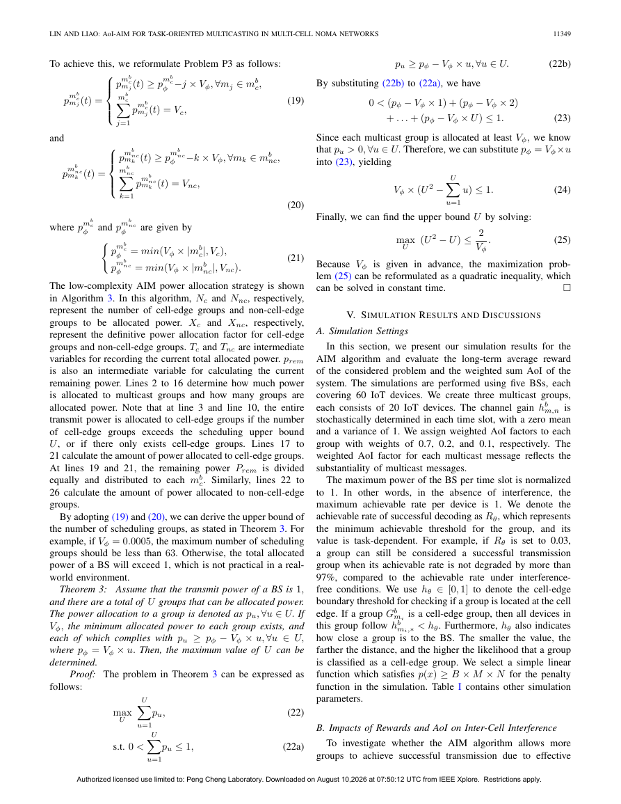<figcaption>关键结果证据：来源《AoI-Aware Interference Mitigation for Task-Oriented Multicasting in Multi-Cell NOMA Networks》p.9，实验结果页。<a href='https://doi.org/10.1109/twc.2024.3381480'>出版页面</a></figcaption></figure></div>
  <h3>局限性</h3><p>语义质量通常被压缩为效用/准确率函数，物理层可实现性与特征编码开销可能被抽象化。</p>
</article>
<article id='cddm-channel-denoising-diffusion-models-for-wireless-semantic-communications' class='paper'>
  <div class='paper-head'><div><span class='badge'>core</span><span class='year'>2024</span><h2>CDDM: Channel Denoising Diffusion Models for Wireless Semantic Communications</h2></div><a class='pdf' href='https://doi.org/10.1109/twc.2024.3379244'>DOI / IEEE Xplore</a></div>
  <div class='facts'><div><b>作者</b>Tong Wu、Zhiyong Chen、Dazhi He、Liang Qian、Yin Xu、Meixia Tao、Wenjun Zhang</div><div><b>刊物</b>IEEE Transactions on Wireless Communications</div><div><b>DOI</b><a href='https://doi.org/10.1109/twc.2024.3379244'>10.1109/twc.2024.3379244</a></div><div><b>IEEE document ID</b>10480348</div><div><b>卷/期/页</b>Vol. 23, No. 9, 11168-11183</div><div><b>任务</b>视频传输/理解</div></div>
  <h3>Introduction 讲述逻辑</h3><ol><li><b>已有进展：</b>11168 IEEE TRANSACTIONS ON WIRELESS COMMUNICATIONS, VOL. 23, NO. 9, SEPTEMBER 2024 CDDM: Channel Denoising Diffusion Models for Wireless Semantic Communications Tong Wu, Zhiyong Chen , Senior Member, IEEE, Dazhi He , Member, IEEE, Liang Qian, Yin Xu , Member, IEEE, Meixia Tao , Fellow, IEEE, and Wenjun Zhang , Fellow, IEEE Abstract— Diffusion models (DM) can gradually learn to gence generated content (AIGC) [5], including multimodal remove noise, which have been widely used in artificial intelli- image generation and edition [6], [7], text, and video gence generated content (AIGC) in recent years.</li><li><b>尚存问题：</b>However, these works employ conditional diffusion and achieves impressive results in computed tomography (CT) models as a decoder to generate the desired images condi- image denoising.</li><li><b>为何重要：</b>Authorized licensed use limited to: Peng Cheng Laboratory.</li><li><b>本文方案：</b>To address this, we propose channel denoising models the score function of the likelihood function through diffusion models (CDDM) for semantic communications over variational lower bounds, resulting in advanced generative wireless channels in this paper.</li><li><b>解决机制：</b>To address this, we propose channel denoising models the score function of the likelihood function through diffusion models (CDDM) for semantic communications over variational lower bounds, resulting in advanced generative wireless channels in this paper.</li><li><b>核心主张：</b>Extensive experimental results demonstrate that More specifically, DM gradually adds Gaussian noise to the CDDM can further reduce the mean square error (MSE) after training data in the forward diffusion process until the data minimum mean square error (MMSE) equalizer, and the joint becomes pure noise.</li></ol>
  <h3>数据集、baseline 与评价设置</h3><div class='grid3'><div><b>数据集</b><p>DIV2K</p></div><div><b>Baseline</b><p>WITT、JPEG2000、LDPC、Turbo、VAE、GAN、Transformer、QAM</p></div><div><b>指标与信道</b><p>PSNR、LPIPS、accuracy<br>AWGN、Rayleigh、fading channel<br>SNR: 0.14 dB、0.27 dB、0.4 dB、0.5 dB、0.53 dB、0.6 dB、0.83 dB、1.44 dB、10 dB、15 dB、20 dB、26.239 dB、26.241 dB、28.672 dB、28.814 dB、29.249 dB、29.396 dB、5 dB</p></div></div>
  <h3>方法与数字化方案</h3><p><b>表示判断：</b>数字或混合：显式量化/比特流/传统调制编码</p><ul><li><b>p.3</b> rithm that successfully and effectively mit- achieve adaptive rate control for deep learning based JSCC igates the channel noise. architecture for semantic communications. In [36], the swin • We derive the sufficient condition for the reverse sam- transformer [38] is integrated into the deep JSCC framework pling algorithm reducing the conditional entropy of to improve t</li><li><b>p.3</b> and the received concentrate on the development of a more sophisticated model signal after CDDM prove that compared to the system architecture with increased capacity to enhance overall per- without CDDM, the system with CDDM has a smaller formance. The channel distortion is handled through direct MSE performance for both Rayleigh fading channel and end-to-end optimizat</li><li><b>p.4</b> WU et al.: CDDM: CHANNEL DENOISING DIFFUSION MODELS FOR WIRELESS SEMANTIC COMMUNICATIONS 11171 Fig. 2. Architecture of the joint CDDM and JSCC system. R2k . We consider that the receiver can obtain the channel state Accordingly, we can rewrite yr as hc = [hc,1 , . . . , hc,k ] through channel estimation and in this paper, we apply minimum mean</li><li><b>p.7</b> C system. 1 2 2 − βt γt−1 )E ϵ2θ,i (·)   ≤ ln(Wn,i ((γt−1 2 A. System Structure + βt γt−1 + (βt2 − βt γt−1 )τ )) + C An overall architecture of the joint CDDM and JSCC system ≜ uτ (t, hc ). (39) is shown in Fig. 2. An RGB source image s is encoded 2 Here, we have γt−1 − βt γt−1 &lt; 0. Therefore, it is easy as transmitted signal x ∈ R2k by a JSCC encoder. In this to obta</li><li><b>p.8</b> ining Algorithm of the Joint CDDM and The model structure of CDDM is predominantly based JSCC on the convolutional improved U-Net architecture [40]. Ini- Input: Training set S, hyper-parameter T , ᾱt , and the channel tially, yr undergoes a convolution layer and then serves estimation results hc and σ 2 . as the input of the U-Net. Subsequently, the output of Output: T</li></ul>
  <h3>传输开销与可推导边界</h3><p>\(R_{tx}=B_{semantic}/B_{raw}\)，若论文仅给 channel uses，则不能在缺少调制阶数与帧开销时把它直接当成 bit-rate。</p><ul><li><b>p.3</b> n Fig. 2. Let x ∈ R2k be the real-valued symbols. Here, k is it. The model is trained through the forward diffusion the number of channel uses. xc ∈ Ck is the complex-valued process specially designed to adapt the channel models, symbols which can be transmitted through the wireless chan- requiring no knowledge of the current channel state. After nel, and the i-th trans</li><li><b>p.9</b> functions with Fig. 7. PSNR performance versus SNRs under AWGN channel with various various hyperparameters. noise schedules. The CBR is set to 3/128. For the sigmoid-based schedules, the function can be formu- these benchmarks with the same training configuration as lated as the joint CDDM and JSCC system. It is worth emphasizing that in the event of a change</li><li><b>p.9</b> rsus t can be CDDM and JSCC system through experiments. The results are formulated as obtained from DIV2K dataset and the channel bandwidth ratio (CBR) is set to 3/128. Fig. 7 shows the PSNR performance cos( π2 e)2τ − cos( π2 ((e − s) Tt + s))2τ of the joint CDDM and JSCC system over AWGN channel ᾱt = , t ∈ (0, T ], with various noise schedules. cos( π2 e)2τ − cos( π2 s)2</li><li><b>p.9</b> M and JSCC system through experiments. The results are formulated as obtained from DIV2K dataset and the channel bandwidth ratio (CBR) is set to 3/128. Fig. 7 shows the PSNR performance cos( π2 e)2τ − cos( π2 ((e − s) Tt + s))2τ of the joint CDDM and JSCC system over AWGN channel ᾱt = , t ∈ (0, T ], with various noise schedules. cos( π2 e)2τ − cos( π2 s)2τ In</li><li><b>p.10</b> FFUSION MODELS FOR WIRELESS SEMANTIC COMMUNICATIONS 11177 Fig. 8. PSNR performance of DIV2K dataset versus tmax at SNR= 5 dB. The CBR is set to 3/128. Fig. 9. PSNR performance of DIV2K dataset versus tmax at SNR= 5 dB. The CBR is set to 3/128. performance. For example, at SNR= 5 dB, the PSNR per- formance ranges from a maximum of 26.239 dB, achieved by sigmoid-</li><li><b>p.10</b> ataset versus tmax at SNR= 5 dB. The CBR is set to 3/128. Fig. 9. PSNR performance of DIV2K dataset versus tmax at SNR= 5 dB. The CBR is set to 3/128. performance. For example, at SNR= 5 dB, the PSNR per- formance ranges from a maximum of 26.239 dB, achieved by sigmoid-based noise schedule with [e, s, τ ] = [0, 3, 0.3], to a minimum of 26.241 dB. While at highe</li></ul>
  <h3>信道处理机制</h3><p><b>分类：</b>显式建模离散变量/比特错误，并进行鲁棒或联合恢复</p><ul><li><b>p.1</b> ows DM with flexibility controllability, steps. Moreover, we apply CDDM to a semantic communications system based on joint source-channel coding (JSCC) for image enhanced efficiency and ensuring faithful generation in condi- transmission and design a three-stage training algorithm for tional generation tasks. combining them. Extensive experimental results demonstrate that</li><li><b>p.1</b> rns to recover the data from the noise, as shown in Fig. 1. JSCC system, the traditional JPEG2000 with low-density parity- check (LDPC) code approach and other benchmarks in diverse Generally, given a data distribution x0 ∼ q(x0 ), the forward scenarios. diffusion process generates the t-th sample of xt by sampling a Gaussian vector ϵ ∼ N (0, I) as following Ind</li><li><b>p.1</b> ector ϵ ∼ N (0, I) as following Index Terms— Diffusion models, wireless image transmission, semantic communications, joint source-channel coding. √ √ xt = ᾱt x0 + 1 − ᾱt ϵ, (1) I. I NTRODUCTION Qt where ᾱt = i=1 αi and αi ∈ (0, 1) are hyperparameters. D IFFUSION models (DM) [2], [3], [4] have recently achieved unprecedented success in artificial intelli- In wireless co</li><li><b>p.1</b> revised 23 January 2024 and 13 March 2024; accepted 13 March 2024. Date of publication 28 March 2024; date white Gaussian noise (AWGN) channel of current version 12 September 2024. This work was supported in part by the National Key Research and Development Project of China under y = x + n, (2) Grant 2023YFB2906200, in part by the Fundamental Research Funds for</li><li><b>p.1</b> arning into the image denoising Digital Object Identifier 10.1109/TWC.2024.3379244 task and achieves remarkable performance under AWGN 1536-1276 © 2024 IEEE. Personal use is permitted, but republication/redistribution requires IEEE permission. See https://www.ieee.org/publications/rights/index.html for more information. Authorized licensed use limited to: Peng C</li><li><b>p.2</b> combined together to generate an implicit image to guide the next generation step of the diffusion model. In [23], a joint source-channel coding (JSCC)-based communications Fig. 1. The forward diffusion process with transition kernel q(xt |xt−1 ) and the reverse sampling process with learnable transition kernel pθ (xt−1 |xt ) of system is designed, which utilizes diffusio</li></ul><p><b>Codex 判断：</b>属于核心</p>
  <h3>主要结果</h3><ul><li><b>p.1</b> eration in condi- transmission and design a three-stage training algorithm for tional generation tasks. combining them. Extensive experimental results demonstrate that More specifically, DM gradually adds Gaussian noise to the CDDM can further reduce the mean square error (MSE) after training data in the forward diffusion process until the data minimum mean square error (MMSE)</li><li><b>p.2</b> channel to ture loss, smooth loss and adversarial loss. Reference [15] generate audio latent embeddings from the corrupted embed- improves GAN performance with advanced Wasserstein GAN dings. However, these works employ conditional diffusion and achieves impressive results in computed tomography (CT) models as a decoder to generate the desired images condi- image</li><li><b>p.2</b> skills. Experiments show that the diffusion model-based poli- diffusion and reverse sampling processes based on an explicit cies outperform existing offline reinforcement learning (RL) conditional probabilistic model of the received signal, CDDM approaches. Reference [17] designs MADiff for multi-agent can adapt to diverse complex channel conditions, such as scenario</li><li><b>p.2</b> n of valuable semantic information rather than bits, communications. In [19], DM is employed to generate the thereby guaranteeing improved transmission efficiency and wireless channel for an end-to-end communication system, reliability. One fundamental concept behind semantic commu- achieving almost the same performance as the channel-aware nications is to bridge</li><li><b>p.3</b> ific frameworks for different data models and have bound into multiple components associated with the achieved better performance compared with traditional wire- latent variables and derive the final loss function using less transmission schemes. For wireless image transmission, re-parameterization and re-weighted techniques to opti- [33] proposes a novel JSCC method bas</li></ul>
  <div class='figs'><figure>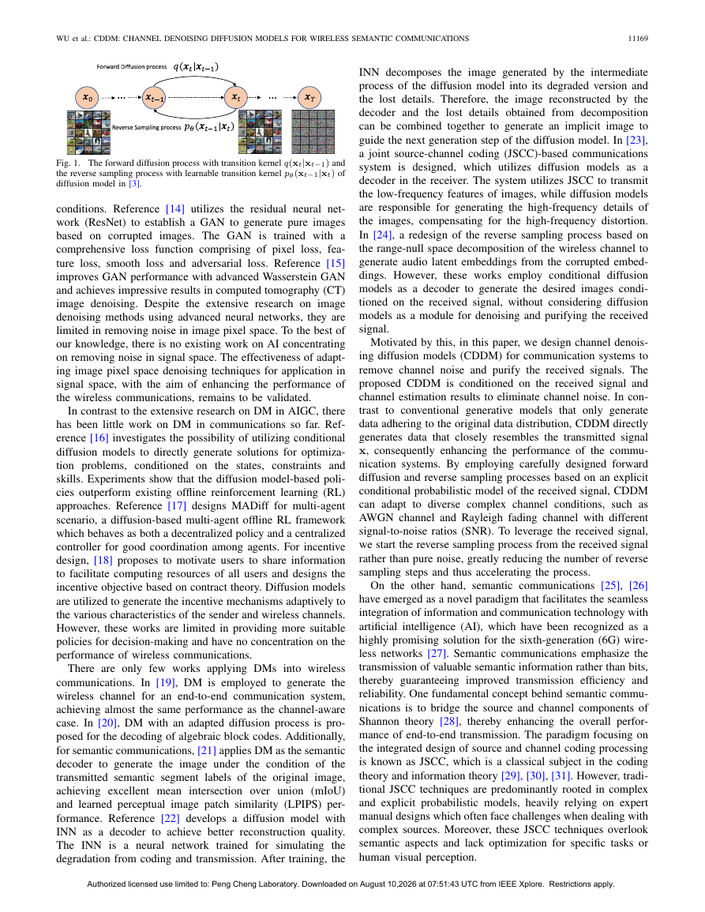<figcaption>架构/方法证据：来源《CDDM: Channel Denoising Diffusion Models for Wireless Semantic Communications》p.2，Fig. 1 The forward diffusion process with transition kernel q(xt |xt−1 ) and the reverse sampling process with learnable transition kernel pθ (xt−1 |xt ) of system is designed, which util。<a href='https://doi.org/10.1109/twc.2024.3379244'>出版页面</a></figcaption></figure><figure>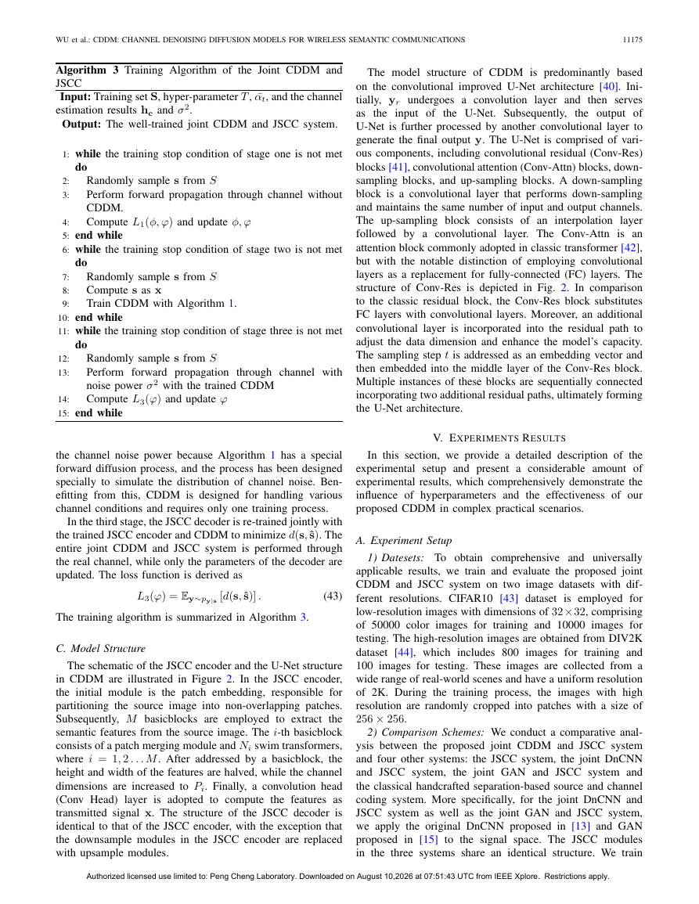<figcaption>关键结果证据：来源《CDDM: Channel Denoising Diffusion Models for Wireless Semantic Communications》p.8，Fig. 2 In comparison 9: Train CDDM with Algorithm 1. to the classic residual block, the Conv-Res block substitutes 10: end while FC layers with convolutional layers. Moreover, an addition。<a href='https://doi.org/10.1109/twc.2024.3379244'>出版页面</a></figcaption></figure></div>
  <h3>局限性</h3><p>已触及数字语义链路关键问题，但错误模型、码本规模和数据分布迁移下的泛化仍需真实空口验证。</p>
</article>
<article id='compression-before-fusion-broadcast-semantic-communication-system-for-heterogeneous-tasks' class='paper'>
  <div class='paper-head'><div><span class='badge'>core</span><span class='year'>2024</span><h2>Compression Before Fusion: Broadcast Semantic Communication System for Heterogeneous Tasks</h2></div><a class='pdf' href='https://doi.org/10.1109/twc.2024.3483314'>DOI / IEEE Xplore</a></div>
  <div class='facts'><div><b>作者</b>Mingze Gong、Shuoyao Wang、Fangwei Ye、Suzhi Bi</div><div><b>刊物</b>IEEE Transactions on Wireless Communications</div><div><b>DOI</b><a href='https://doi.org/10.1109/twc.2024.3483314'>10.1109/twc.2024.3483314</a></div><div><b>IEEE document ID</b>10738311</div><div><b>卷/期/页</b>Vol. 23, No. 12, 19428-19443</div><div><b>任务</b>通用语义通信/理论与网络设计</div></div>
  <h3>Introduction 讲述逻辑</h3><ol><li><b>已有进展：</b>Recently, the wireless broadcast technology has been communication achieves reliable transmission with impressive introduced to support semantic communication system toward higher communication efficiency.</li><li><b>尚存问题：</b>However, channel-aware attention blocks are employed to extract and the conventional communication systems based on separate compress task-relevant information for each user.</li><li><b>为何重要：</b>19428 IEEE TRANSACTIONS ON WIRELESS COMMUNICATIONS, VOL. 23, NO. 12, DECEMBER 2024 Compression Before Fusion: Broadcast Semantic Communication System for Heterogeneous Tasks Mingze Gong, Graduate Student Member, IEEE, Shuoyao Wang , Senior Member, IEEE, Fangwei Ye , Member, IEEE, and Suzhi Bi , Senior Member, IEEE Abstract— Semantic communication has emerged as new driven by the modern artificial intelligence (AI) technology paradigm shifts in 6G from the conventional syntax-oriented com- [2].</li><li><b>本文方案：</b>Particularly, we propose multiple task-channel-aware sub-encoders (TCEs) A majority of the emerging applications, such as and a channel-aware feature fusion sub-encoder (CFE) towards autonomous driving and Internet of everything, will involve compression and fusion, respectively.</li><li><b>解决机制：</b>In this paper, the broadcast encoding process is decom- improve communication efficiency and breakthrough beyond posed into compression and fusion to improve communication Shannon paradigm [5]. efficiency with adaptation to tasks and channels.</li><li><b>核心主张：</b>In this paper, the broadcast encoding process is decom- improve communication efficiency and breakthrough beyond posed into compression and fusion to improve communication Shannon paradigm [5]. efficiency with adaptation to tasks and channels.</li></ol>
  <h3>数据集、baseline 与评价设置</h3><div class='grid3'><div><b>数据集</b><p>论文未明确给出或自动定位不足，需结合全文人工复核</p></div><div><b>Baseline</b><p>DeepSC、DeepJSCC、JPEG2000、JPEG、BPG、LDPC、Polar、Turbo、Transformer、NOMA</p></div><div><b>指标与信道</b><p>PSNR、mAP、accuracy、classification accuracy、latency<br>AWGN、Rayleigh、Rician、MIMO、fading channel<br>SNR: 0.03dB、0.12dB、0dB、1.93dB、10dB、15dB、19dB、2dB、31dB、4dB、5dB、7dB</p></div></div>
  <h3>方法与数字化方案</h3><p><b>表示判断：</b>数字或混合：显式量化/比特流/传统调制编码</p><ul><li><b>p.2</b> g from one-to-one semantic works in semantic communication. Section III illustrates the communication, in a broadcast system, the channel encoder system model of task-oriented multi-user broadcast semantic must simultaneously accomplish the compression and encod- communication system. Additionally, we formulate the prob- ing of task-relevant information for each task with</li><li><b>p.2</b> e semantic works in semantic communication. Section III illustrates the communication, in a broadcast system, the channel encoder system model of task-oriented multi-user broadcast semantic must simultaneously accomplish the compression and encod- communication system. Additionally, we formulate the prob- ing of task-relevant information for each task with balance lem i</li><li><b>p.2</b> handle heterogeneous noise distortion. The current chan- channels and briefly describe the solutions in Section III. nel encoder architecture [12], [13] struggles to meet these In Section IV, all the methodology, neural network design, and requirements. Consequently, we have deconstructed the chan- training strategy of the proposed DeepBroadcast are introduced nel enco</li><li><b>p.2</b> tleneck in the broadcast system for system enhancement. communication according to the number of users. The primary 2) Decomposed Channel Encoder: Given the inherent vari- distinctions in application scenario between related works and ability in different tasks and channels, we deconstruct our work are shown in Table. II. channel encoder into TCEs and CFE to jointly improv</li><li><b>p.2</b> ation scenario between related works and ability in different tasks and channels, we deconstruct our work are shown in Table. II. channel encoder into TCEs and CFE to jointly improves the communication efficiency with adaptation to tasks and channels. TCEs aims at autonomously extracting A. Semantic Communication and condensing task-specific information into noise- Semanti</li></ul>
  <h3>传输开销与可推导边界</h3><p>\(R_{tx}=B_{semantic}/B_{raw}\)，若论文仅给 channel uses，则不能在缺少调制阶数与帧开销时把它直接当成 bit-rate。</p><ul><li><b>p.11</b> BPG communication overhead of JSCC-based systems is so low and capacity-achieving channel coding approach. Particularly, that the compression ratio of BPG needs to be even higher. we introduce a wired JSCC model as baseline. The channel However, with such communication overhead limitation, BPG conditions of users are set as Rayleigh fading channel and fails to compress the C</li><li><b>p.11</b> channel, respectively. Following [15], it is worth range of noise intensity. This observation reveals one of the noting that the compression ratio (CR) of image source coding drawbacks of SSCC schemes under the settings including is that of JSCC-based broadcast system times 21 log(1+SN R). low communication overhead and non-ideal channel condition. Here, CR of JSCC-based br</li></ul>
  <h3>信道处理机制</h3><p><b>分类：</b>显式建模离散变量/比特错误，并进行鲁棒或联合恢复</p><ul><li><b>p.1</b> and the conventional communication systems based on separate compress task-relevant information for each user. In GFE, source and channel coding (SSCC) schemes rarely operate at we introduce a global-channel-aware fine-tuning block to merge these compressed task-relevant signals into a compact broadcast the theoretical optimal, thereby struggle to provide extremely signal</li><li><b>p.1</b> s on a range of heterogeneous also known as “cliff effect” [6]. tasks across various channels with additive white Gaussian noise (AWGN) channel, Rayleigh fading channel, and Rician Recent years have witnessed the development of neural- fading channel. Simulation results evidence that the proposed network-based semantic communication systems, most of DeepBroadcas</li><li><b>p.1</b> heterogeneous also known as “cliff effect” [6]. tasks across various channels with additive white Gaussian noise (AWGN) channel, Rayleigh fading channel, and Rician Recent years have witnessed the development of neural- fading channel. Simulation results evidence that the proposed network-based semantic communication systems, most of DeepBroadcast outperforms the s</li><li><b>p.1</b> “cliff effect” [6]. tasks across various channels with additive white Gaussian noise (AWGN) channel, Rayleigh fading channel, and Rician Recent years have witnessed the development of neural- fading channel. Simulation results evidence that the proposed network-based semantic communication systems, most of DeepBroadcast outperforms the state-of-the-art methods. wh</li><li><b>p.1</b> 2024; revised 31 May 2024 and 1 August 2024; accepted 10 October 2024. Date of publication 29 October 2024; date of near-optimal channel coding (e.g., LDPC, Turbo Codes, Polar current version 12 December 2024. This work was supported in part by the Codes). National Natural Science Foundation of China under Project 62101336, in part In most recently, one-to-one systems i.</li><li><b>p.1</b> 2024 and 1 August 2024; accepted 10 October 2024. Date of publication 29 October 2024; date of near-optimal channel coding (e.g., LDPC, Turbo Codes, Polar current version 12 December 2024. This work was supported in part by the Codes). National Natural Science Foundation of China under Project 62101336, in part In most recently, one-to-one systems i.e., one tran</li></ul><p><b>Codex 判断：</b>属于核心</p>
  <h3>主要结果</h3><ul><li><b>p.1</b> among communication has been recognized as promising technique to users. In this paper, the broadcast encoding process is decom- improve communication efficiency and breakthrough beyond posed into compression and fusion to improve communication Shannon paradigm [5]. efficiency with adaptation to tasks and channels. Particularly, we propose multiple task-channel-a</li><li><b>p.1</b> roadcast encoding process is decom- improve communication efficiency and breakthrough beyond posed into compression and fusion to improve communication Shannon paradigm [5]. efficiency with adaptation to tasks and channels. Particularly, we propose multiple task-channel-aware sub-encoders (TCEs) A majority of the emerging applications, such as and a channel-aware</li><li><b>p.1</b> noise (AWGN) channel, Rayleigh fading channel, and Rician Recent years have witnessed the development of neural- fading channel. Simulation results evidence that the proposed network-based semantic communication systems, most of DeepBroadcast outperforms the state-of-the-art methods. whom share the core framework called joint source and chan- Index Terms— Semantic communicat</li><li><b>p.1</b> fading channel. Simulation results evidence that the proposed network-based semantic communication systems, most of DeepBroadcast outperforms the state-of-the-art methods. whom share the core framework called joint source and chan- Index Terms— Semantic communication, broadcast, multi- nel coding (JSCC). In particular, JSCC has been investigated as task, heterogeneous</li><li><b>p.1</b> nformation system both being driving and receiver, have successfully achieved higher communication efficiency [7], [8], [9], [10] compared with the conventional efficient source coding (e.g., BPG, JPEG, JPEG2000) and Received 23 January 2024; revised 31 May 2024 and 1 August 2024; accepted 10 October 2024. Date of publication 29 October 2024; date of near-optimal channel</li></ul>
  <div class='figs'><figure>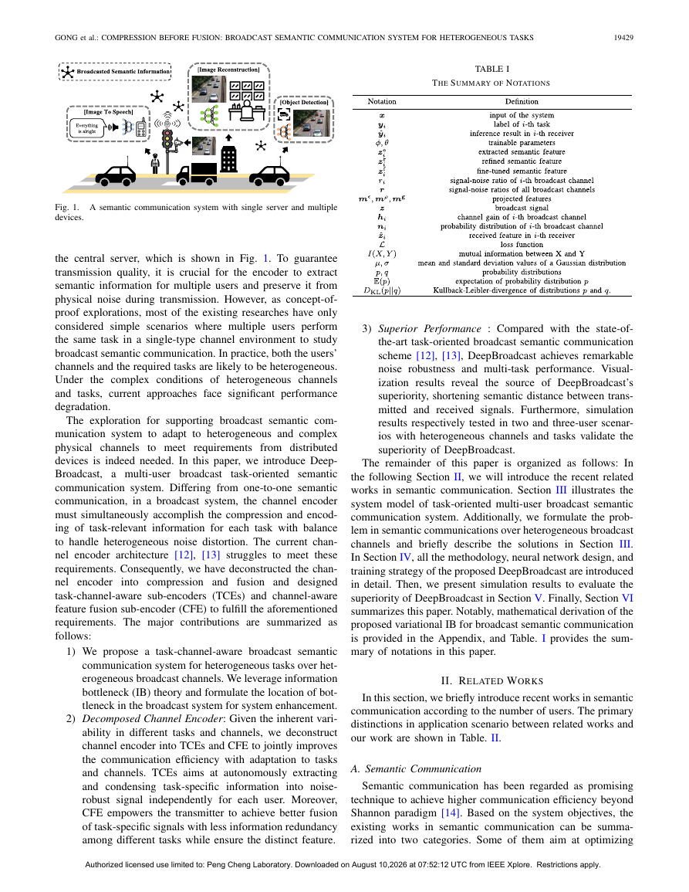<figcaption>架构/方法证据：来源《Compression Before Fusion: Broadcast Semantic Communication System for Heterogeneous Tasks》p.2，Fig. 1 A semantic communication system with single server and multiple devices. the central server, which is shown in Fig. 1. To guarantee transmission quality, it is crucial for the enco。<a href='https://doi.org/10.1109/twc.2024.3483314'>出版页面</a></figcaption></figure><figure>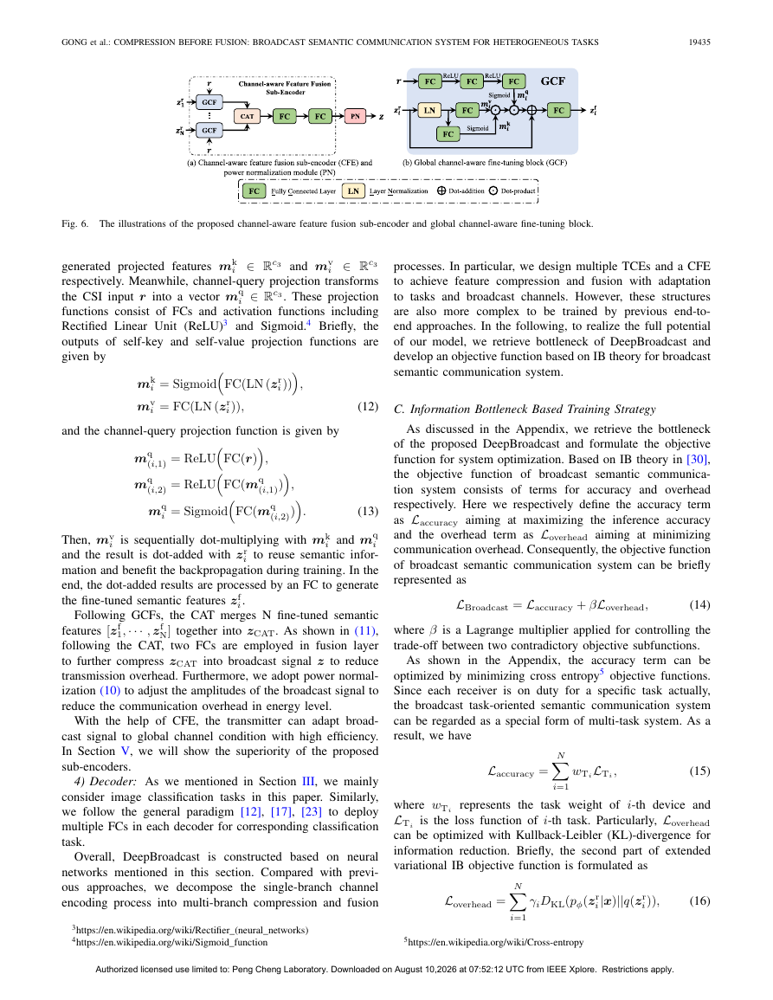<figcaption>关键结果证据：来源《Compression Before Fusion: Broadcast Semantic Communication System for Heterogeneous Tasks》p.8，Fig. 6 The illustrations of the proposed channel-aware feature fusion sub-encoder and global channel-aware fine-tuning block. generated projected features mki ∈ Rc3 and mvi ∈ Rc3 processe。<a href='https://doi.org/10.1109/twc.2024.3483314'>出版页面</a></figcaption></figure></div>
  <h3>局限性</h3><p>已触及数字语义链路关键问题，但错误模型、码本规模和数据分布迁移下的泛化仍需真实空口验证。</p>
</article>
<article id='deep-joint-source-channel-coding-for-adaptive-image-transmission-over-mimo-channels' class='paper'>
  <div class='paper-head'><div><span class='badge'>core</span><span class='year'>2024</span><h2>Deep Joint Source-Channel Coding for Adaptive Image Transmission Over MIMO Channels</h2></div><a class='pdf' href='https://doi.org/10.1109/twc.2024.3422794'>DOI / IEEE Xplore</a></div>
  <div class='facts'><div><b>作者</b>Haotian Wu、Yulin Shao、Chenghong Bian、Krystian Mikolajczyk、Deniz Gündüz</div><div><b>刊物</b>IEEE Transactions on Wireless Communications</div><div><b>DOI</b><a href='https://doi.org/10.1109/twc.2024.3422794'>10.1109/twc.2024.3422794</a></div><div><b>IEEE document ID</b>10597355</div><div><b>卷/期/页</b>Vol. 23, No. 10, 15002-15017</div><div><b>任务</b>视频传输/理解</div></div>
  <h3>Introduction 讲述逻辑</h3><ol><li><b>已有进展：</b>On the other hand, significant progress has been made in the recent years Manuscript received 4 September 2023; revised 11 January 2024 and 6 May in designing deep learning-based JSCC (DeepJSCC) schemes 2024; accepted 18 June 2024.</li><li><b>尚存问题：</b>Specifically, by harnessing the self-attention mechanism of the ViT, DeepJSCC-MIMO intelligently learns coding, which is optimal in the asymptotic limit of infinite feature mapping and power allocation strategies tailored to block length for ergodic source and channel distributions [11]. the unique characteristics of the source image and prevailing However, the separation-based approach is known to be sub- channel conditions.</li><li><b>为何重要：</b>This and in part by the SNS JU Project 6G-GOALS under the EU’s Horizon Program under Grant 101139232.</li><li><b>本文方案：</b>The differences from earlier studies and the ensuing This paper presents an innovative DeepJSCC scheme metic- challenges we aim to address in this paper can be outlined ulously tailored for MIMO image transmission to address the across four key points: performance improvement, model above practical concerns.</li><li><b>解决机制：</b>Most existing studies on JSCC either focus on for emerging semantic communication systems. theoretical scenarios, e.g., Gaussian or Gauss-Markov sources Index Terms— Joint source-channel coding, MIMO, semantic [12], [13], [14], [15], or jointly optimize parameters of separate communication, attention mechanism, image transmission. source and channel codes [16], [17], [18], [19], as there is a lack of practical JSCC schemes and theoretical performance I.</li><li><b>核心主张：</b>Extensive numerical experiments validate optimal in the practical finite block length regime, which the significant improvements in both distortion quality and is becoming increasingly relevant in emerging applications perceptual quality achieved by DeepJSCC-MIMO for both open- loop and closed-loop MIMO systems across a wide range involving Internet-of-things and edge intelligence.</li></ol>
  <h3>数据集、baseline 与评价设置</h3><div class='grid3'><div><b>数据集</b><p>ImageNet、CelebA、Kodak</p></div><div><b>Baseline</b><p>DeepJSCC、JPEG2000、BPG、LDPC、Turbo、ViT、Transformer、QAM</p></div><div><b>指标与信道</b><p>PSNR、LPIPS、mAP<br>AWGN、MIMO、OFDM、fading channel<br>SNR: 0 dB、0.27 dB、0.29 dB、0.65 dB、0.6dB、0.77 dB、0.84 dB、0.93 dB、0.97 dB、0.99 dB、1.07 dB、1.28 dB、1.3 dB、1.78 dB、1.91 dB、1.98 dB、12 dB、1dB、2.02 dB、2.1 dB</p></div></div>
  <h3>方法与数字化方案</h3><p><b>表示判断：</b>数字或混合：显式量化/比特流/传统调制编码</p><ul><li><b>p.1</b> n both open-loop and closed-loop MIMO Consequently, this has sparked a notable surge in research systems. The novel DeepJSCC-MIMO architecture surpasses on developing optimized image communication systems over the classical separation-based benchmarks, while exhibiting wireless channels [1], [2], [3], [4], [5], [6], [7], [8], [9], [10]. robustness to channel estimation</li><li><b>p.2</b> considering further motivates competitive and practical end-to-end Gaussian sources. It is challenging to design a practical JSCC architectures. scheme for MIMO channels, where the model needs to learn • Model generalizability: Most of the proposed how to map the input signal to multiple antennas, and then schemes [32], [36] have been designed specifically for to recove</li><li><b>p.4</b> separation-based scheme, DL-based JSCC scheme uses a joint power normalized to 1. Additional operations at the transmitter source-channel encoder at the transmitter, denoted as fθ , with CSIT are precoding and power allocation, which can to directly map the source signal S into the channel input boost the communication rate. Specifically, given the CSI, matrix X. The encod</li><li><b>p.5</b> trans- III. P ROPOSED M ETHOD mitter does away with power allocation. Instead, we leverage This section presents a novel DeepJSCC architecture the DeepJSCC encoder to perform feature extraction and called DeepJSCC-MIMO, which aims to enable efficient channel symbol mapping, and power allocation, all at once. image transmission in MIMO systems. The pipeline of Intuitivel</li><li><b>p.6</b> WU et al.: DEEP JOINT SOURCE-CHANNEL CODING FOR ADAPTIVE IMAGE TRANSMISSION 15007 Fig. 3. The architecture of the ViT-based encoder and decoder, where both encoder and decoder comprise linear projection layers, a positional embedding layer, and multiple transformer layers. channel symbol generated by ViT. Let us define Pn ∈ RM ×k The</li></ul>
  <h3>传输开销与可推导边界</h3><p>\(R_{tx}=B_{semantic}/B_{raw}\)，若论文仅给 channel uses，则不能在缺少调制阶数与帧开销时把它直接当成 bit-rate。</p><ul><li><b>p.2</b> , providing theoretical bounds for the distortion is the memory and computational complexity, which exponent as a function of the bandwidth ratio considering further motivates competitive and practical end-to-end Gaussian sources. It is challenging to design a practical JSCC architectures. scheme for MIMO channels, where the model needs to learn • Model generalizability: M</li><li><b>p.3</b> for training channel symbols X ∈ CM ×k , where k denotes the number of separate DNN models for different transceiver settings and channel uses dedicated to transmitting one image. We define channel conditions. The proposed DeepJSCC-MIMO is a the bandwidth ratio as R ≜ k/n, representing the average practical and unified scheme with robustness to channel number of availab</li><li><b>p.3</b> settings and channel uses dedicated to transmitting one image. We define channel conditions. The proposed DeepJSCC-MIMO is a the bandwidth ratio as R ≜ k/n, representing the average practical and unified scheme with robustness to channel number of available channel symbols per source dimension, estimation errors. where n = 3hw is the number of source symbols. The Our main</li><li><b>p.3</b> ding channel model, in which the thanks to the utilization of the channel heatmap and the channel matrix H remains constant for k channel uses, Authorized licensed use limited to: Peng Cheng Laboratory. Downloaded on August 10,2026 at 07:53:06 UTC from IEEE Xplore. Restrictions apply.</li><li><b>p.8</b> O, trained at specific SNRs, with the BPG-Capacity and channel codes) as benchmarks. BPG-LDPC schemes at different SNR values and bandwidth ratios. For the BPG-LDPC scheme, we apply the sphere decoding (SD) algorithm [53]. A. Experimental setup 1) General Performance: Fig. 4a and Fig. 4c show the For the practical separation-based coding scheme, we use PSNR performance of</li><li><b>p.8</b> l and BPG-LDPC schemes over the SNR values from 0 dB compression algorithms [48], [49], [50], [51], [52] as the to 20 dB when the bandwidth ratio is R = 1/24 and source coding method. For channel coding, we consider LDPC R = 1/12. We can observe that our DeepJSCC-MIMO codes at rates (1/2, 2/3, 3/4, 5/6) and various constellation can generally outperform the BPG-Capacity an</li></ul>
  <h3>信道处理机制</h3><p><b>分类：</b>数字语义表示叠加传统信道编码/调制</p><ul><li><b>p.1</b> 15002 IEEE TRANSACTIONS ON WIRELESS COMMUNICATIONS, VOL. 23, NO. 10, OCTOBER 2024 Deep Joint Source-Channel Coding for Adaptive Image Transmission Over MIMO Channels Haotian Wu , Graduate Student Member, IEEE, Yulin Shao , Member, IEEE, Chenghong Bian, Krystian Mikolajczyk, Senior Member, IEEE, and Deniz Gündüz , Fellow, IEEE Abstract— We int</li><li><b>p.1</b> We introduce a vision transformer (ViT)-based real-time streaming, and edge intelligence, has significantly deep joint source and channel coding (DeepJSCC) scheme heightened the demand for efficient wireless transmission of for wireless image transmission over multiple-input multiple- image/video signals, particularly under strict delay constraints. output (MIMO) channels</li><li><b>p.1</b> emerging semantic communication systems. theoretical scenarios, e.g., Gaussian or Gauss-Markov sources Index Terms— Joint source-channel coding, MIMO, semantic [12], [13], [14], [15], or jointly optimize parameters of separate communication, attention mechanism, image transmission. source and channel codes [16], [17], [18], [19], as there is a lack of practical JSCC sche</li><li><b>p.1</b> image City and the Department of Electrical and Computer Engineering, University compression codec with low-density parity-check (LDPC) of Macau, Macau, China, and also with the Department of Electrical and Electronic Engineering, Imperial College London, SW7 2AZ London, U.K. codes. It was later extended to adaptive channel bandwidth (e-mail: ylshao@um.edu.mo).</li><li><b>p.2</b> WU et al.: DEEP JOINT SOURCE-CHANNEL CODING FOR ADAPTIVE IMAGE TRANSMISSION 15003 prototypes [8], [22], or its implementation with constrained generalizability, channel adaptability, and channel robustness. channel inputs [23], or under peak-to-average power ratio These fa</li><li><b>p.3</b> oding parameters ratios when compared to traditional separate source and according to this heatmap. Our approach can learn global channel coding schemes. attention parameters between the source image and the channel conditions across all the intermediate layers of the DeepJSCC II. S YSTEM M ODEL encoder and decoder. Intuitively, we expect this design to We consider an M ×</li></ul><p><b>Codex 判断：</b>属于核心</p>
  <h3>主要结果</h3><ul><li><b>p.1</b> l conditions. Extensive numerical experiments validate optimal in the practical finite block length regime, which the significant improvements in both distortion quality and is becoming increasingly relevant in emerging applications perceptual quality achieved by DeepJSCC-MIMO for both open- loop and closed-loop MIMO systems across a wide range involving Internet-</li><li><b>p.1</b> ial.ac.uk; c.bian22@imperial.ac.uk; k.mikolajczyk@ imperial.ac.uk; d.gunduz@imperial.ac.uk). presented in [1], which was shown to outperform the Yulin Shao is with the State Key Laboratory of Internet of Things for Smart concatenation of the better portable graphics (BPG) image City and the Department of Electrical and Computer Engineering, University compression code</li><li><b>p.2</b> chemes solely framework’s effectiveness and practicality. consider single-antenna transmitters and receivers. While • Performance improvement: Prior DL-based designs for there is a growing literature successfully employing DNNs MIMO systems [30], [31], [32], have mostly focused on for various multiple-input multiple-output (MIMO)-related symbol detection in a digi</li><li><b>p.2</b> annel Moreover, even the state-of-art DL-based solution [31] estimation, or beamforming [25], [26], [27], no previous work cannot outperform a properly selected traditional model- has so far applied DeepJSCC to the more challenging MIMO driven solution, which underscores the inherent difficulty scenario, with the exception of our initial results in [28]. JSCC of learn</li><li><b>p.2</b> ess in this paper can be outlined ulously tailored for MIMO image transmission to address the across four key points: performance improvement, model above practical concerns. Our approach introduces a unified Authorized licensed use limited to: Peng Cheng Laboratory. Downloaded on August 10,2026 at 07:53:06 UTC from IEEE Xplore. Restrictions apply.</li></ul>
  <div class='figs'><figure>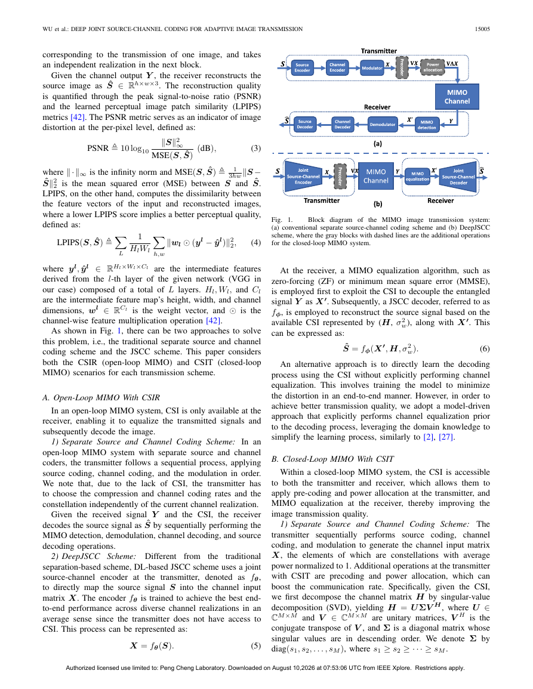<figcaption>架构/方法证据：来源《Deep Joint Source-Channel Coding for Adaptive Image Transmission Over MIMO Channels》p.4，Fig. 1 Block diagram of the MIMO image transmission system: defined as: (a) conventional separate source-channel coding scheme and (b) DeepJSCC X 1 X scheme, where the gray blocks with da。<a href='https://doi.org/10.1109/twc.2024.3422794'>出版页面</a></figcaption></figure><figure>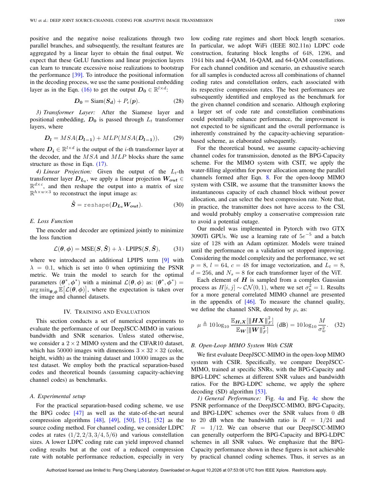<figcaption>关键结果证据：来源《Deep Joint Source-Channel Coding for Adaptive Image Transmission Over MIMO Channels》p.8，Fig. 4 a and Fig. 4c show the For the practical separation-based coding scheme, we use PSNR performance of the DeepJSCC-MIMO, BPG-Capacity, the BPG codec [47] as well as the state-of-the-。<a href='https://doi.org/10.1109/twc.2024.3422794'>出版页面</a></figcaption></figure></div>
  <h3>局限性</h3><p>主要依赖传统译码输出；若译码后仍残留 bit/index 错误，码本跳变与语义灾难性失真未必得到端到端处理。</p>
</article>
<article id='deep-learning-empowered-semantic-communication-systems-with-a-shared-knowledge-base' class='paper'>
  <div class='paper-head'><div><span class='badge'>core</span><span class='year'>2024</span><h2>Deep Learning-Empowered Semantic Communication Systems With a Shared Knowledge Base</h2></div><a class='pdf' href='https://doi.org/10.1109/twc.2023.3330744'>DOI / IEEE Xplore</a></div>
  <div class='facts'><div><b>作者</b>Peng Yi、Yang Cao、Xin Kang、Ying-Chang Liang</div><div><b>刊物</b>IEEE Transactions on Wireless Communications</div><div><b>DOI</b><a href='https://doi.org/10.1109/twc.2023.3330744'>10.1109/twc.2023.3330744</a></div><div><b>IEEE document ID</b>10318078</div><div><b>卷/期/页</b>Vol. 23, No. 6, 6174-6187</div><div><b>任务</b>语音传输/识别</div></div>
  <h3>Introduction 讲述逻辑</h3><ol><li><b>已有进展：</b>6174 IEEE TRANSACTIONS ON WIRELESS COMMUNICATIONS, VOL. 23, NO. 6, JUNE 2024 Deep Learning-Empowered Semantic Communication Systems With a Shared Knowledge Base Peng Yi , Graduate Student Member, IEEE, Yang Cao , Xin Kang , Senior Member, IEEE, and Ying-Chang Liang , Fellow, IEEE Abstract— Deep learning-empowered semantic communication Index Terms— Semantic communication, deep learning, seman- is regarded as a promising candidate for future 6G networks. tic entropy, shared knowledge base, self-attention mechanism.</li><li><b>尚存问题：</b>Moreover, the simulation results Nevertheless, with the advent of the sixth generation (6G) have demonstrated that the proposed approach outperforms [6], the existing coding methods face stringent challenges existing baseline methods in terms of transmitted data size and when dealing with increasing system capacity and expanding sentence similarity. coverage.</li><li><b>为何重要：</b>6174 IEEE TRANSACTIONS ON WIRELESS COMMUNICATIONS, VOL. 23, NO. 6, JUNE 2024 Deep Learning-Empowered Semantic Communication Systems With a Shared Knowledge Base Peng Yi , Graduate Student Member, IEEE, Yang Cao , Xin Kang , Senior Member, IEEE, and Ying-Chang Liang , Fellow, IEEE Abstract— Deep learning-empowered semantic communication Index Terms— Semantic communication, deep learning, seman- is regarded as a promising candidate for future 6G networks. tic entropy, shared knowledge base, self-attention mechanism.</li><li><b>本文方案：</b>本文围绕《Deep Learning-Empowered Semantic Communication Systems With a Shared Knowledge Base》提出相应系统或优化框架。</li><li><b>解决机制：</b>Xu. (Corresponding author: These issues motivate a paradigm shift from conventional Ying-Chang Liang.) Peng Yi and Xin Kang are with the National Key Laboratory of Wireless communications to semantic communications [9], [10], which Communications and the Center for Intelligent Networking and Commu- extract semantic meanings behind bits for transmission and nications (CINC), University of Electronic Science and Technology of recover the semantic information at the receiver through min- China (UESTC), Chengdu 611731, China (e-mail: yipengcd@outlook.com; kangxin83@gmail.com). imizing the semantic error.</li><li><b>核心主张：</b>Moreover, the simulation results Nevertheless, with the advent of the sixth generation (6G) have demonstrated that the proposed approach outperforms [6], the existing coding methods face stringent challenges existing baseline methods in terms of transmitted data size and when dealing with increasing system capacity and expanding sentence similarity. coverage.</li></ol>
  <h3>数据集、baseline 与评价设置</h3><div class='grid3'><div><b>数据集</b><p>Europarl</p></div><div><b>Baseline</b><p>DeepSC、JPEG、LDPC、Polar、Transformer、QAM</p></div><div><b>指标与信道</b><p>BLEU、semantic similarity<br>AWGN、Rayleigh、Rician<br>SNR: 0 dB、10 dB、10dB、3 dB</p></div></div>
  <h3>方法与数字化方案</h3><p><b>表示判断：</b>数字或混合：显式量化/比特流/传统调制编码</p><ul><li><b>p.1</b> hough existing semantic communication systems have achieved superior performance compared to traditional methods, the end- to-end architecture adopted by most semantic communication I. I NTRODUCTION systems is regarded as a black box, leading to the lack of explainability. To tackle this issue, in this paper, a novel semantic communication system with a shared knowledge</li><li><b>p.1</b> n are into our system. With the aid of the shared knowledge base, considered irrelevant to the engineering implementations of the proposed system integrates the message and corresponding communication systems. With the development of commu- knowledge from the shared knowledge base to obtain the residual nication technologies, various source coding schemes have information,</li><li><b>p.1</b> symbols without semantic performance degradation. In order to make approached the source entropy or rate-distortion function, the proposed system more reliable, the semantic self-information and advanced channel coding schemes such as low-density and the source entropy are mathematically defined based on the parity-check (LDPC) [3] and polar codes [4] have approached knowl</li><li><b>p.2</b> semantic distortion correc- be jointly optimized for information compression and noise tion module [28] or an iterative decoding architecture [29]. resistance [15]. On the other hand, notable success in natural Through the above techniques, the maximum preservation language processing (NLP) and computer vision (CV) fields of semantic information can be provided by H2H</li><li><b>p.2</b> ds, several issues remain unsolved. Firstly, due to the fact that existing semantic communication systems are based on end-to-end architecture, the background knowledge is stored A. Related Work as millions of parameters in the DNNs, and thus the semantic Without loss of generality, most of the existing semantic information is searched from an extremely high-dimensional</li></ul>
  <h3>传输开销与可推导边界</h3><p>\(R_{tx}=B_{semantic}/B_{raw}\)，若论文仅给 channel uses，则不能在缺少调制阶数与帧开销时把它直接当成 bit-rate。</p><ul><li><b>p.5</b> with the knowledge base, i.e., the corresponding knowledge k∗s , and the information where λ is a positive number to balance the quantization different from the identified knowledge, i.e., the residual relation between the first term and the second term. According information r. It is noteworthy that there is no overlap of to (9), the term (1 − D(s, k∗s )) stands</li><li><b>p.8</b> , where are jointly optimized to achieve successful transmission. each element is an integer representing a specific word in the codebook and Ls is the length of the sentence. In order to keep the words relatively independent while reducing computational A. Self-Attention Mechanism complexity, the input sentence is embedded first obtaining s1 ∈ Before detailing the</li></ul>
  <h3>信道处理机制</h3><p><b>分类：</b>显式建模离散变量/比特错误，并进行鲁棒或联合恢复</p><ul><li><b>p.1</b> hed the source entropy or rate-distortion function, the proposed system more reliable, the semantic self-information and advanced channel coding schemes such as low-density and the source entropy are mathematically defined based on the parity-check (LDPC) [3] and polar codes [4] have approached knowledge base. Furthermore, the knowledge base construction Shannon limited.</li><li><b>p.1</b> advanced channel coding schemes such as low-density and the source entropy are mathematically defined based on the parity-check (LDPC) [3] and polar codes [4] have approached knowledge base. Furthermore, the knowledge base construction Shannon limited. Further compressing the source at the bit algorithm is developed based on a similarity-comparison method, leve</li><li><b>p.1</b> nel coding schemes such as low-density and the source entropy are mathematically defined based on the parity-check (LDPC) [3] and polar codes [4] have approached knowledge base. Furthermore, the knowledge base construction Shannon limited. Further compressing the source at the bit algorithm is developed based on a similarity-comparison method, level is therefore</li><li><b>p.3</b> itional communication coding systems contain two 1) In this paper, a novel semantic communication frame- parts: source coding and channel coding. The former is a data work is proposed for text transmission over a physical compression process with the aim of improving communica- channel. Different from existing semantic communica- tion effectiveness. The latter is designed</li><li><b>p.3</b> hy, the existing semantic communication systems contain ently readable sentences, our proposed system is more semantic coding and channel coding phases. From another explainable than most existing semantic communication perspective, semantic communication systems comprise three systems based on the end-to-end architecture, which are major tasks: 1) semantic information ex</li><li><b>p.3</b> heoretical analysis of the proposed system, x ∈ C(Ls M )×1 to cope with the channel attenuation and including semantic coding and channel coding, is presented in noise, where M denotes the average number of complex Section IV from the view of information theory. Meanwhile, symbols needed for transmitting a single word. In general, the the problem formulation of the propos</li></ul><p><b>Codex 判断：</b>属于核心</p>
  <h3>主要结果</h3><ul><li><b>p.1</b> nd ineffective [5]. in which a pre-configured threshold can be leveraged to control the size of the knowledge base. Moreover, the simulation results Nevertheless, with the advent of the sixth generation (6G) have demonstrated that the proposed approach outperforms [6], the existing coding methods face stringent challenges existing baseline methods in terms of transmitted data</li><li><b>p.1</b> r, the simulation results Nevertheless, with the advent of the sixth generation (6G) have demonstrated that the proposed approach outperforms [6], the existing coding methods face stringent challenges existing baseline methods in terms of transmitted data size and when dealing with increasing system capacity and expanding sentence similarity. coverage. To be specific,</li><li><b>p.2</b> sential speech information. Based on the communications has experienced decades of stagnation due to DeepSC structure, to further improve the performance of the absence of a mathematical model for semantic information semantic communication systems and mitigate the effects of theory in engineering [13]. channel noise, many techniques have been introduced at the Re</li><li><b>p.2</b> e system capacity while simulta- tic communication system with a shared knowledge base neously minimizing semantic errors, DeepSC outperformed is proposed for text transmission. To be specific, instead traditional methods with respect to sentence similarity metrics, of mapping the message directly into the latent space, the especially in the low SNR regime. To further</li><li><b>p.3</b> d channel coding. The former is a data work is proposed for text transmission over a physical compression process with the aim of improving communica- channel. Different from existing semantic communica- tion effectiveness. The latter is designed to add redundancy tion systems, our system consists of three participants, appropriately to resist channel noise, which</li></ul>
  <div class='figs'><figure>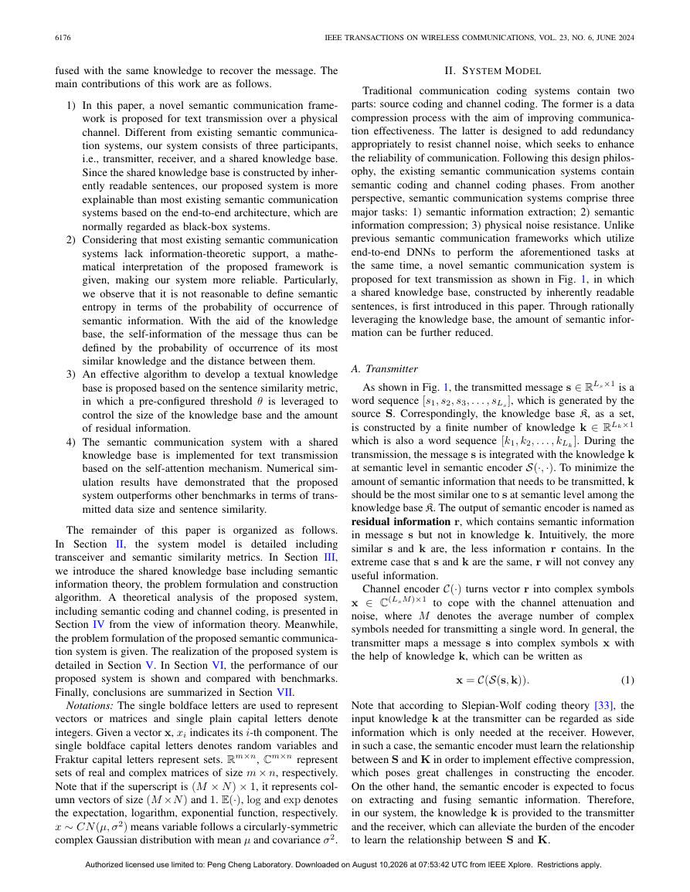<figcaption>架构/方法证据：来源《Deep Learning-Empowered Semantic Communication Systems With a Shared Knowledge Base》p.3，Fig. 1 , in which we observe that it is not reasonable to define semantic a shared knowledge base, constructed by inherently readable entropy in terms of the probability of occurrence of。<a href='https://doi.org/10.1109/twc.2023.3330744'>出版页面</a></figcaption></figure><figure>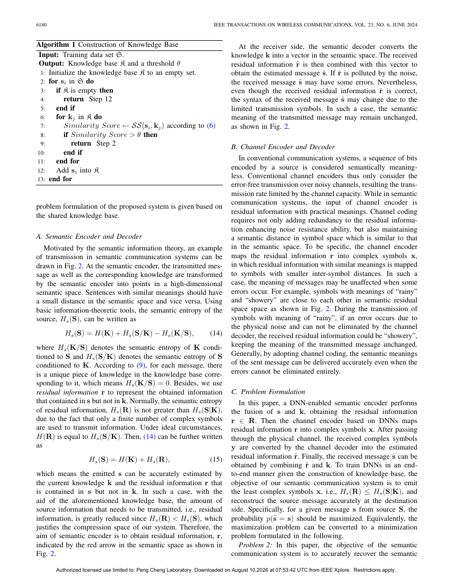<figcaption>关键结果证据：来源《Deep Learning-Empowered Semantic Communication Systems With a Shared Knowledge Base》p.7，Fig. 2 8: if Similarity Score &gt; θ then 9: return Step 2 B. Channel Encoder and Decoder 10: end if 11: end for In conventional communication systems, a sequence of bits 12: Add si into K e。<a href='https://doi.org/10.1109/twc.2023.3330744'>出版页面</a></figcaption></figure></div>
  <h3>局限性</h3><p>已触及数字语义链路关键问题，但错误模型、码本规模和数据分布迁移下的泛化仍需真实空口验证。</p>
</article>
<article id='features-disentangled-semantic-broadcast-communication-networks' class='paper'>
  <div class='paper-head'><div><span class='badge'>core</span><span class='year'>2024</span><h2>Features Disentangled Semantic Broadcast Communication Networks</h2></div><a class='pdf' href='https://doi.org/10.1109/twc.2023.3334225'>DOI / IEEE Xplore</a></div>
  <div class='facts'><div><b>作者</b>Shuai Ma、Zhi Zhang、Youlong Wu、Hang Li、Guangming Shi、Dahua Gao、Yuanming Shi、Shiyin Li、Naofal Al-Dhahir</div><div><b>刊物</b>IEEE Transactions on Wireless Communications</div><div><b>DOI</b><a href='https://doi.org/10.1109/twc.2023.3334225'>10.1109/twc.2023.3334225</a></div><div><b>IEEE document ID</b>10335608</div><div><b>卷/期/页</b>Vol. 23, No. 6, 6580-6594</div><div><b>任务</b>视频传输/理解</div></div>
  <h3>Introduction 讲述逻辑</h3><ol><li><b>已有进展：</b>6580 IEEE TRANSACTIONS ON WIRELESS COMMUNICATIONS, VOL. 23, NO. 6, JUNE 2024 Features Disentangled Semantic Broadcast Communication Networks Shuai Ma , Member, IEEE, Zhi Zhang, Youlong Wu , Member, IEEE, Hang Li , Member, IEEE, Guangming Shi , Fellow, IEEE, Dahua Gao , Member, IEEE, Yuanming Shi , Senior Member, IEEE, Shiyin Li , and Naofal Al-Dhahir , Fellow, IEEE Abstract— Single-user semantic communications have Index Terms— Sematic broadcast communication, disentangled attracted extensive research recently, but multi-user semantic features, sematic communication prototype. broadcast communication (BC) is still in its infancy.</li><li><b>尚存问题：</b>Instead of broadcasting all extracted features, the semantic encoder extracts the disentangled semantic features, and then only the users’ intended semantic features D UE to the increasing quality of service (QoS) demands from the diverse Internet of Things (IoT) devices, next-generation 6G communication networks face significant are selected for broadcasting, which can further improve the challenges, such as huge volumes of data traffic, ultra-high transmission efficiency.</li><li><b>为何重要：</b>Instead of broadcasting all extracted features, the semantic encoder extracts the disentangled semantic features, and then only the users’ intended semantic features D UE to the increasing quality of service (QoS) demands from the diverse Internet of Things (IoT) devices, next-generation 6G communication networks face significant are selected for broadcasting, which can further improve the challenges, such as huge volumes of data traffic, ultra-high transmission efficiency.</li><li><b>本文方案：</b>In this paper, we propose a practical robust features-disentangled multi-user semantic BC framework, where the transmitter I.</li><li><b>解决机制：</b>By leveraging deep reinforcement • To simplify implementation, we propose a features- learning (DRL), a semantic image transmission scheme disentangled broadcast semantic BC framework, which was designed in [27] for scene classification.</li><li><b>核心主张：</b>Instead of broadcasting all extracted features, the semantic encoder extracts the disentangled semantic features, and then only the users’ intended semantic features D UE to the increasing quality of service (QoS) demands from the diverse Internet of Things (IoT) devices, next-generation 6G communication networks face significant are selected for broadcasting, which can further improve the challenges, such as huge volumes of data traffic, ultra-high transmission efficiency.</li></ol>
  <h3>数据集、baseline 与评价设置</h3><div class='grid3'><div><b>数据集</b><p>论文未明确给出或自动定位不足，需结合全文人工复核</p></div><div><b>Baseline</b><p>DeepJSCC、BPG</p></div><div><b>指标与信道</b><p>PSNR、accuracy、latency、semantic similarity<br>Rayleigh、OFDM<br>SNR: 15dB、4dB、8dB</p></div></div>
  <h3>方法与数字化方案</h3><p><b>表示判断：</b>数字或混合：显式量化/比特流/传统调制编码</p><ul><li><b>p.1</b> des a feature selection module and each user has a feature completion module. Instead of broadcasting all extracted features, the semantic encoder extracts the disentangled semantic features, and then only the users’ intended semantic features D UE to the increasing quality of service (QoS) demands from the diverse Internet of Things (IoT) devices, next-generation 6G commun</li><li><b>p.2</b> oadcast image [21], an understanding-based automatic speech recognition transmission, where all the receivers wish to recover the architecture was developed for speech transmission with high same source image with the loss of total mean square error semantic fidelity. For semantic-aware video transmission, an distortion. In fact, for multi-user semantic BC, the users in</li><li><b>p.2</b> smission. By leveraging CNNs as the encoder and semantic features are selected for broadcasting, while the decoder, a JSCC scheme architecture was developed in the unintended features are not be transmitted, which [30] for wireless image transmission. By employing attention can further improve the transmission efficiency; ii) The mechanisms, a JSCC method was designed t</li><li><b>p.2</b> loying attention can further improve the transmission efficiency; ii) The mechanisms, a JSCC method was designed to automatically semantic encoder not only compresses the input data to adjust the image compression ratio based channel SNRs [31]. the low-dimensional features as a source encoder, but also A deep neural network (DNN)-based JSCC coding method improves robustness</li><li><b>p.3</b> o be transmitted. we jointly train the semantic BC encoder and multiple semantic decoders in three steps: self reconstruction, B. Semantic Encoder common semantic features exchange, and different Based on the knowledge base which includes shared semantic features exchange. Moreover, to enhance robust knowledge between the transmitter and receivers, the semantic transmission</li></ul>
  <h3>传输开销与可推导边界</h3><p>\(R_{tx}=B_{semantic}/B_{raw}\)，若论文仅给 channel uses，则不能在缺少调制阶数与帧开销时把它直接当成 bit-rate。</p><ul><li><b>p.2</b> e mechanisms, a JSCC method was designed to automatically semantic encoder not only compresses the input data to adjust the image compression ratio based channel SNRs [31]. the low-dimensional features as a source encoder, but also A deep neural network (DNN)-based JSCC coding method improves robustness of the extracted semantic features that exploits the channel output feed</li><li><b>p.13</b> RK P ROTOTYPE Finally, in Table VI, we present the transmission time robust semantic BC network based on the supervised AE, (ms), compression ratio, PSNR and reconstructed data of and developed the corresponding hardware proof-of-concept the original image transmission scheme, BPG compression prototype, which is the first prototype of the semantic scheme, non-robust semantic</li><li><b>p.13</b> y of a semantic BC network original image transmission scheme (466.44 ms). Moreover, design and its practical implementation. the compression ratio of the non-robust semantic BC scheme, and the robust semantic BC scheme are 1966.09 times higher R EFERENCES than those of the BPG compression scheme (108.49) and the [1] K. B. Letaief, W. Chen, Y. Shi, J. Zhang, and Y. A. Zhang,</li></ul>
  <h3>信道处理机制</h3><p><b>分类：</b>语义感知 HARQ/不等错误保护</p><ul><li><b>p.1</b> Color versions of one or more figures in this article are available at https://doi.org/10.1109/TWC.2023.3334225. a joint semantic-channel coding (JSCC) system was developed Digital Object Identifier 10.1109/TWC.2023.3334225 in [16] to minimize the semantic errors for text transmission. 1536-1276 © 2023 IEEE. Personal use is permitted, but republication/redistribution requ</li><li><b>p.2</b> MA et al.: FEATURES DISENTANGLED SEMANTIC BC NETWORKS 6581 By combining semantic-channel coding, a hybrid automatic from the source data are encoded and coupled together, repeat request (HARQ) was proposed in [17] to improve which are unexplainable (hidden) representations. Such a sentence semantic transmission efficiency.</li><li><b>p.2</b> 1 By combining semantic-channel coding, a hybrid automatic from the source data are encoded and coupled together, repeat request (HARQ) was proposed in [17] to improve which are unexplainable (hidden) representations. Such a sentence semantic transmission efficiency. An adaptive end-to- black-box issue prevents the application of the specific end semantic system</li><li><b>p.2</b> C, the users incremental redundancy hybrid automatic repeat request (IR- may be interested in different semantic information, and HARQ) framework was proposed in [22] for wicked channels the knowledge base at the users could be also different. in semantic video conferencing. In [23], a deep learning- Thus, to enable efficient multi-user semantic BCs, one should</li><li><b>p.10</b> us SNRtest over ANGC; the semantic feature data to User 1 and 2 via Wi-Fi. With (b) PSNRs of the four schemes versus SNRtest over Rayleigh fading the data received through Wi-Fi, User 1 first performs bit- channels. level channel and source decoding, and then does feature completion, followed by semantic decoding, and finally the experiments are performed through tw</li><li><b>p.10</b> monstrated over additive non- prototype.1 The GPU experiments in this work have been Gaussian distributed noise channels and slow Rayleigh fading performed on 502 GB RAM Intel Xeon Gold 6240 CPU, and channels. Moreover, four BC transmission schemes are 24 GB Nvidia GeForce 3090 GTX graphics card with PyTorch compared, i.e., the better portable graphics (BPG) based p</li></ul><p><b>Codex 判断：</b>属于核心</p>
  <h3>主要结果</h3><ul><li><b>p.1</b> Things (IoT) devices, next-generation 6G communication networks face significant are selected for broadcasting, which can further improve the challenges, such as huge volumes of data traffic, ultra-high transmission efficiency. Within this framework, we further speed, and extreme low latency requirements, which are investigate two information-theoretic metrics, in</li><li><b>p.1</b> te that the proposed robust semantic BC network can and the wireless data traffic is estimated by the international significantly improve transmission efficiency. telecommunication union (ITU) to reach 4394 EB in 2030 [6]. Under the hardware cost and energy consumption limitations, Manuscript received 17 April 2023; revised 11 August 2023; accepted 14 November 202</li><li><b>p.2</b> l coding, a hybrid automatic from the source data are encoded and coupled together, repeat request (HARQ) was proposed in [17] to improve which are unexplainable (hidden) representations. Such a sentence semantic transmission efficiency. An adaptive end-to- black-box issue prevents the application of the specific end semantic system was designed in [10] to maximiz</li><li><b>p.2</b> in the unintended features are not be transmitted, which [30] for wireless image transmission. By employing attention can further improve the transmission efficiency; ii) The mechanisms, a JSCC method was designed to automatically semantic encoder not only compresses the input data to adjust the image compression ratio based channel SNRs [31]. the low-dimensional</li><li><b>p.2</b> hannel SNRs [31]. the low-dimensional features as a source encoder, but also A deep neural network (DNN)-based JSCC coding method improves robustness of the extracted semantic features that exploits the channel output feedback to improve the for both channel fading and channel noise as a channel reconstruction image quality was investigated in [32]. By encoder; ii</li></ul>
  <div class='figs'><figure>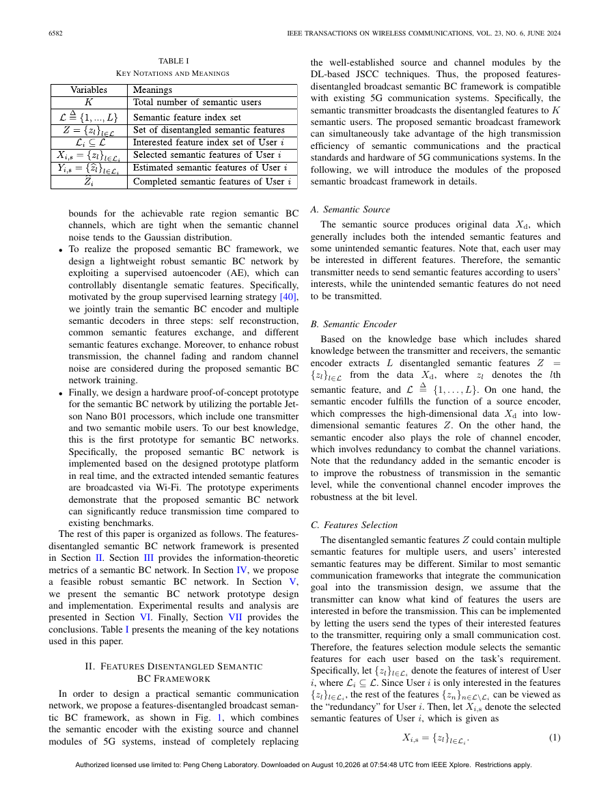<figcaption>架构/方法证据：来源《Features Disentangled Semantic Broadcast Communication Networks》p.3，Fig. 1 , which combines semantic features of User i, which is given as the semantic encoder with the existing source and channel modules of 5G systems, instead of completely replacing Xi,。<a href='https://doi.org/10.1109/twc.2023.3334225'>出版页面</a></figcaption></figure><figure>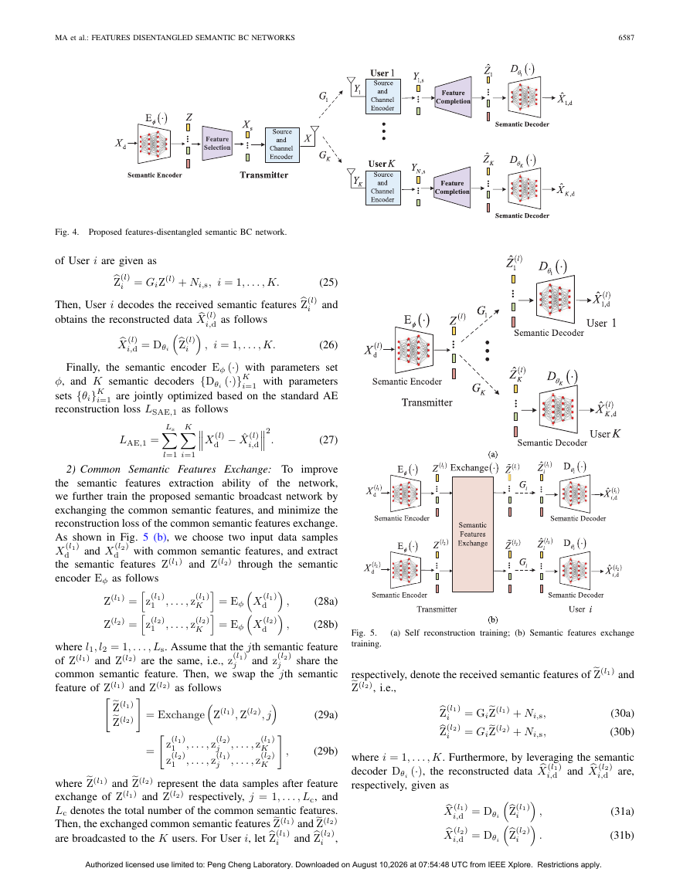<figcaption>关键结果证据：来源《Features Disentangled Semantic Broadcast Communication Networks》p.8，Fig. 4 Proposed features-disentangled semantic BC network. of User i are given as b(l) = Gi Z(l) + Ni,s , i = 1, . . . , K. Z (25) i Then, User i decodes the received semantic features Z。<a href='https://doi.org/10.1109/twc.2023.3334225'>出版页面</a></figcaption></figure></div>
  <h3>局限性</h3><p>结论主要由论文设定的视频传输/理解数据与仿真信道支持；跨数据、跨设备和真实空口泛化仍需进一步验证。</p>
</article>
<article id='goal-oriented-semantic-communications-for-robotic-waypoint-transmission-the-value-and-age-of-informa' class='paper'>
  <div class='paper-head'><div><span class='badge'>core</span><span class='year'>2024</span><h2>Goal-Oriented Semantic Communications for Robotic Waypoint Transmission: The Value and Age of Information Approach</h2></div><a class='pdf' href='https://doi.org/10.1109/twc.2024.3424493'>DOI / IEEE Xplore</a></div>
  <div class='facts'><div><b>作者</b>Wenchao Wu、Yuanqing Yang、Yansha Deng、A. Hamid Aghvami</div><div><b>刊物</b>IEEE Transactions on Wireless Communications</div><div><b>DOI</b><a href='https://doi.org/10.1109/twc.2024.3424493'>10.1109/twc.2024.3424493</a></div><div><b>IEEE document ID</b>10618994</div><div><b>卷/期/页</b>Vol. 23, No. 12, 18903-18915</div><div><b>任务</b>文本传输/翻译</div></div>
  <h3>Introduction 讲述逻辑</h3><ol><li><b>已有进展：</b>语义/任务导向通信已通过学习型编码降低无关数据传输，并在若干任务上展示端到端收益。</li><li><b>尚存问题：</b>However, mobile communication network [6], due to its ultra-reliable current 5G/ 6G research mainly focused on improving com- low latency communication (URLLC) service with a latency munication performance, while the robotics community mostly requirement as low as 1 ms [7], [8], [9], [10].</li><li><b>为何重要：</b>Remote control of robots can Nowadays, the sixth-generation (6G) mobile communication network is proposed to provide hyper-reliable and low-latency benefit from the development of the fifth-generation (5G) communication to enable safer control for robots.</li><li><b>本文方案：</b>To jointly consider com- this URLLC service defined in 5G is still unable to support the munication and robotic control with a focus on the specific robotic task, we propose goal-oriented semantic communication real-time safe operation of mobile robots [11].</li><li><b>解决机制：</b>To jointly consider com- this URLLC service defined in 5G is still unable to support the munication and robotic control with a focus on the specific robotic task, we propose goal-oriented semantic communication real-time safe operation of mobile robots [11].</li><li><b>核心主张：</b>This work was supported in part by the Engineer- as demonstrated in [20], the transmitter (remote controller) ing and Physical Sciences Research Council (EPSRC), U.K., under Grant is responsible for periodically publishing control commands, EP/W004348/1; and in part by the Project REASON, a U.K.</li></ol>
  <h3>数据集、baseline 与评价设置</h3><div class='grid3'><div><b>数据集</b><p>论文未明确给出或自动定位不足，需结合全文人工复核</p></div><div><b>Baseline</b><p>DQN</p></div><div><b>指标与信道</b><p>SSIM、BLEU、accuracy、AoI、latency、energy efficiency<br>AWGN、Rayleigh<br>SNR: -104 dB、18 dB、5.5 dB</p></div></div>
  <h3>方法与数字化方案</h3><p><b>表示判断：</b>系统/资源层语义通信：论文未以可审计离散接口为主</p><ul><li><b>p.2</b> rest of the paper is organized as follows: In Section II, proposed in [21]. This framework jointly considered the we present the system model and problem formulation. Authorized licensed use limited to: Peng Cheng Laboratory. Downloaded on August 10,2026 at 07:55:20 UTC from IEEE Xplore. Restrictions apply.</li><li><b>p.4</b> without packet loss or delay. III. T RADITIONAL UAV C ONTROL F RAMEWORK As our work is the first work that considers a practical system model with C&amp;C generation, C&amp;C data wireless trans- D. Problem Formulation and Performance Metric mission, and C&amp;C queue at the receiver, taking into account Due to the delay and packet loss in the downlink trans- the content of C&amp;C da</li><li><b>p.4</b> t research that can be the UAV’s actual trajectory and the UAV’s target trajectory. compared with our solutions in this practical system model. Consequently, we utilize the mean square error (MSE) to Due to this reason, we introduce the traditional UAV control measure the gap between the two trajectories. Specifically, framework as the baseline scheme in this section to</li></ul>
  <h3>传输开销与可推导边界</h3><p>\(R_{tx}=B_{semantic}/B_{raw}\)，若论文仅给 channel uses，则不能在缺少调制阶数与帧开销时把它直接当成 bit-rate。</p><p class='muted'>论文未在可稳定抽取的段落中给出码本大小、token 数或 bit 数；报告不据 latent 维度虚构精确码率。</p>
  <h3>信道处理机制</h3><p><b>分类：</b>带噪连续表示端到端联合训练/信道自适应</p><ul><li><b>p.3</b> wer, h is the channel gain, and is presented. Finally, Section VI concludes this paper. σ 2 is the Additive White Gaussian Noise (AWGN) power. Then, we can derive the transmission time for each C&amp;C data II. S YSTEM M ODEL AND P ROBLEM F ORMULATION as In this section, we introduce a real-time UAV waypoint NCC transmission task, where a BS controls a UAV to fly al</li><li><b>p.3</b> (NLoS) conditions for flying UAVs, we utilize free-space path If the UAV successfully receives and decodes the C&amp;C data loss and Rayleigh fading to model the path loss from the BS mi , it will send an acknowledgement (ACK) to the BS. to the UAV as Otherwise, it will send a negative acknowledgement (NACK)  4πdfc α to the BS. The parameter determining to send ACK/</li><li><b>p.3</b> quency, c is the speed of light, α is where δiCC is the transmission result (success or failure) the path loss exponent, β is the Rayleigh small-scale fading for mi . If δiACK = 1, the UAV sends ACK. Otherwise, the which follows CN (0, 1), and ηLoS and ηNLoS is the path loss UAV sends NACK. Authorized licensed use limited to: Peng Cheng Laboratory. Downloaded on Aug</li></ul><p><b>Codex 判断：</b>属于核心</p>
  <h3>主要结果</h3><ul><li><b>p.1</b> ontrol for robots. However, mobile communication network [6], due to its ultra-reliable current 5G/ 6G research mainly focused on improving com- low latency communication (URLLC) service with a latency munication performance, while the robotics community mostly requirement as low as 1 ms [7], [8], [9], [10]. Unfortunately, assumed communication to be ideal. To joi</li><li><b>p.1</b> munication network [13] aims to provide a more stringent queue based on the semantic information extracted from AoI and VoI. The simulation results validate that our proposed service requirement, known as hyper-reliable and low-latency GSRC framework achieves a 91.5% improvement in the mean communication, which demands a peak data rate ranging square error compared to the tr</li><li><b>p.1</b> n results validate that our proposed service requirement, known as hyper-reliable and low-latency GSRC framework achieves a 91.5% improvement in the mean communication, which demands a peak data rate ranging square error compared to the traditional unmanned aerial vehicle from 50 Gbps to 200 Gbps, latency within 0.1ms to 1ms, and control framework. reliability ran</li><li><b>p.1</b> with accuracy, robustness, energy efficiency, and safety [11]. C&amp;C data. Until now, existing research has been mainly focused on improving the communication performance, such as the relia- I. I NTRODUCTION bility [15], the data rate [16], and the latency [17]. T HE field of robotics has experienced significant advancements in the past few decades, leading to wide</li><li><b>p.1</b> n [2], On one hand, existing wireless communication works tend to ignore the actuation performance of robotics, and only focus on improving the communication performance. On the other and surgery [3]. Wireless connectivity is important for the hand, existing robotics papers [18], [19], [20] mostly assumed wireless communication to be ideal without packet loss or M</li></ul>
  <div class='figs'><figure>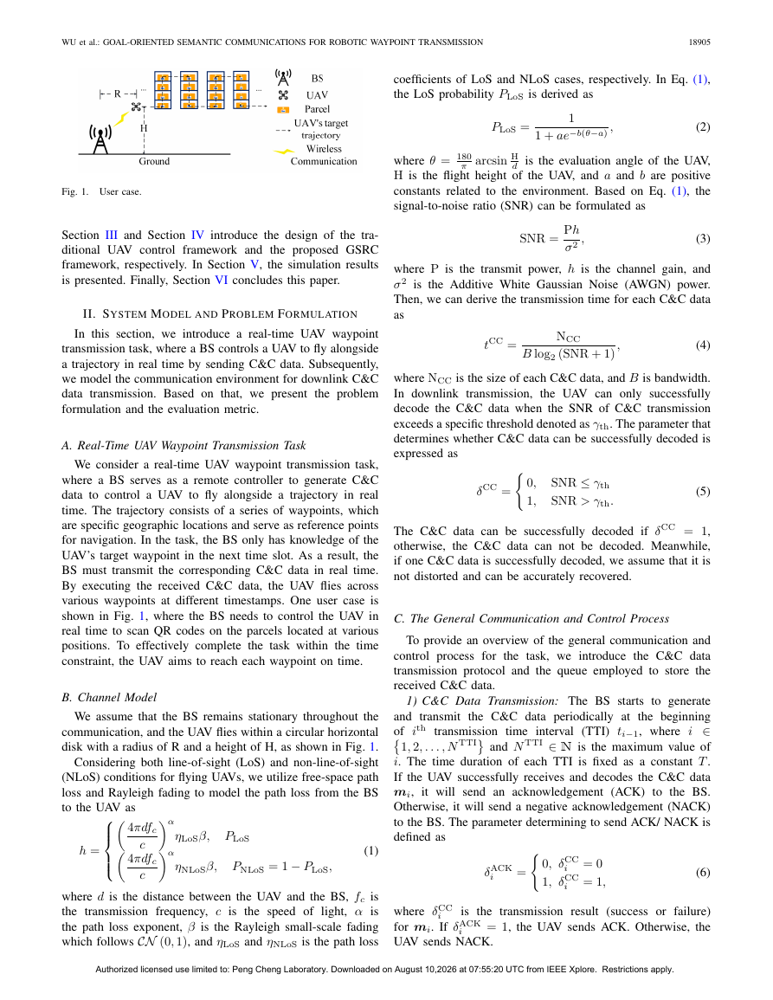<figcaption>架构/方法证据：来源《Goal-Oriented Semantic Communications for Robotic Waypoint Transmission: The Value and Age of Information Approach》p.3，Fig. 1 User case. constants related to the environment. Based on Eq. (1), the signal-to-noise ratio (SNR) can be formulated as Section III and Section IV introduce the design of the tra-。<a href='https://doi.org/10.1109/twc.2024.3424493'>出版页面</a></figcaption></figure><figure>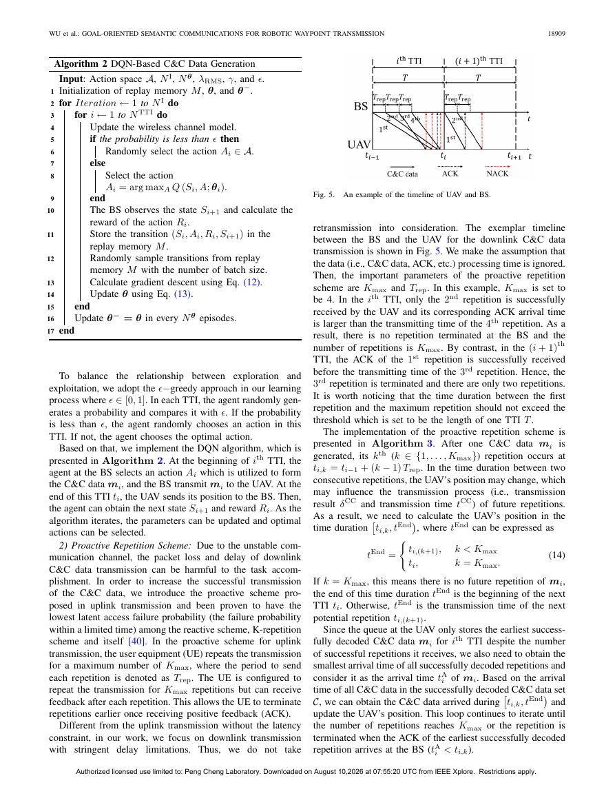<figcaption>关键结果证据：来源《Goal-Oriented Semantic Communications for Robotic Waypoint Transmission: The Value and Age of Information Approach》p.7，Fig. 5 An example of the timeline of UAV and BS. 9 end 10 The BS observes the state Si+1 and calculate the reward of the action Ri . retransmission into consideration. The exemplar timeli。<a href='https://doi.org/10.1109/twc.2024.3424493'>出版页面</a></figcaption></figure></div>
  <h3>局限性</h3><p>语义质量通常被压缩为效用/准确率函数，物理层可实现性与特征编码开销可能被抽象化。</p>
</article>
<article id='goal-oriented-wireless-communication-resource-allocation-for-cyber-physical-systems' class='paper'>
  <div class='paper-head'><div><span class='badge'>related</span><span class='year'>2024</span><h2>Goal-Oriented Wireless Communication Resource Allocation for Cyber-Physical Systems</h2></div><a class='pdf' href='https://doi.org/10.1109/twc.2024.3432918'>DOI / IEEE Xplore</a></div>
  <div class='facts'><div><b>作者</b>Cheng Feng、Kedi Zheng、Yi Wang、Kaibin Huang、Qixin Chen</div><div><b>刊物</b>IEEE Transactions on Wireless Communications</div><div><b>DOI</b><a href='https://doi.org/10.1109/twc.2024.3432918'>10.1109/twc.2024.3432918</a></div><div><b>IEEE document ID</b>10622021</div><div><b>卷/期/页</b>Vol. 23, No. 11, 15768-15783</div><div><b>任务</b>视频传输/理解</div></div>
  <h3>Introduction 讲述逻辑</h3><ol><li><b>已有进展：</b>Many studies investigated learning problems in a that communication networks in CPSs are unmanageable. distributed setting, mostly referred to federated learning [35]. 2) Semantic, Task-Oriented, Goal-Oriented, and Utility- References [36], [37], and [38] employed various criteria Oriented Communications: The field of semantic communi- to identify the importance of gradient updates, subsequently cation has attracted significant interest from both academia scheduling participation and consequently reducing the overall and industry.</li><li><b>尚存问题：</b>I NTRODUCTION bottlenecks due to their inherent limited resources.</li><li><b>为何重要：</b>I NTRODUCTION bottlenecks due to their inherent limited resources.</li><li><b>本文方案：</b>To address that, the communication community is problem is a large-scale combinational problem, we propose a innovating strategies to optimize the management of wireless divide-and-conquer and greedy solution algorithm.</li><li><b>解决机制：</b>Meanwhile, current applications predominantly involve data-centric tasks, includ- wireless communications often focus more on throughput and other transmission-related metrics instead of CPS goals.</li><li><b>核心主张：</b>We further demonstrate how communications only transmit necessary information relevant our proposed goal-oriented bandwidth allocation algorithm can to specific tasks.</li></ol>
  <h3>数据集、baseline 与评价设置</h3><div class='grid3'><div><b>数据集</b><p>MNIST</p></div><div><b>Baseline</b><p>论文未明确给出或自动定位不足，需结合全文人工复核</p></div><div><b>指标与信道</b><p>accuracy、latency、utility<br>Rayleigh<br>SNR: 52.7 dB</p></div></div>
  <h3>方法与数字化方案</h3><p><b>表示判断：</b>数字或混合：显式量化/比特流/传统调制编码</p><ul><li><b>p.3</b> s: the operator first collects fresh data from the EDs, usually over cellular networks via base stations (BSs). After Fig. 1. The architecture of the cyber-physical system. The system’s ultimate receiving these data, CPS operators analyze them on the edge objective is to minimize system goal function C (z). server or in the cloud, determine optimal strategies, and if ne</li><li><b>p.3</b> r of this paper is structured as follows: munication standards, we use resource block (RB) as the basic Section II introduces the system model. Section III outlines unit of resources allocated to EDs in both the frequency and the solution challenges, develops the solution method, and time domains, as shown in Fig. 1. For a given RB, labeled addresses practical concerns.</li><li><b>p.3</b> as the bandwidth allocation problem [36], [39]. The focus of this paper is on uplink transmission. His- A. Cyber-Physical System Architecture torically, the uplink channel (from EDs to the BSs) often The architecture of the CPS is illustrated in Fig. 1. The phys- received a smaller share of the communication bandwidth. ical subsystem comprises various end devices (EDs)</li><li><b>p.3</b> on uplink transmission. His- A. Cyber-Physical System Architecture torically, the uplink channel (from EDs to the BSs) often The architecture of the CPS is illustrated in Fig. 1. The phys- received a smaller share of the communication bandwidth. ical subsystem comprises various end devices (EDs), labeled Consequently, the uplink channel often serves as the bottleneck A</li><li><b>p.15</b> silient distributed frequency control in smart edge,” IEEE Trans. Wireless Commun., vol. 20, no. 6, pp. 3643–3658, grids: Part I: Architecture and distributed algorithms,” IEEE Trans. Jun. 2021. Power Syst., vol. 35, no. 2, pp. 1317–1326, Mar. 2020. [38] W. Shi, S. Zhou, Z. Niu, M. Jiang, and L. Geng, “Joint device schedul- ing and resource allocation for latency constr</li></ul>
  <h3>传输开销与可推导边界</h3><p>\(R_{tx}=B_{semantic}/B_{raw}\)，若论文仅给 channel uses，则不能在缺少调制阶数与帧开销时把它直接当成 bit-rate。</p><ul><li><b>p.2</b> ficient learning [32]. Some studies focused unpredictable, difficult to manage, and possibly detrimental. on data compression and quantization to reduce data traffic, To mitigate such adverse effects, decentralized [15], quan- similar to techniques used in the communication-efficient dis- tized [16], and event-triggered algorithms [17] were designed. tributed desig</li><li><b>p.15</b> t client scheduling and resource allocation under channel uncertainty in federated learning,” [16] M. G. Rabbat and R. D. Nowak, “Quantized incremental algorithms for IEEE Trans. Commun., vol. 69, no. 9, pp. 5962–5974, Sep. 2021. distributed optimization,” IEEE J. Sel. Areas Commun., vol. 23, no. 4, pp. 798–808, Apr. 2005. [40] T. Roughgarden, Twenty Lectures on Al</li></ul>
  <h3>信道处理机制</h3><p><b>分类：</b>带噪连续表示端到端联合训练/信道自适应</p><ul><li><b>p.10</b> = 1 over the band for The augmented Lagrangian function can then be written as: each ED. All channels g are assumed to be i.i.d. Rayleigh L (θ 0 , θ j , λj ) fading with scale parameter 1. By default, we assume that the X ρ 2 accurate channel gain can be observed and that the channel = Lj (zj ; θ j ) + ⟨λj , θ j − θ 0 ⟩ + ∥θ j − θ 0 ∥2 , (43) gain will vary every s</li></ul><p><b>Codex 判断：</b>属于技术边界相关，单列以避免扩大“语义通信”定义。</p>
  <h3>主要结果</h3><ul><li><b>p.2</b> ins, we aim to show that the communication network can some studies have attempted to integrate information theory be tailored to improve CPS performance and better fulfill its to improve the interpretability of results [27]. Semantic com- goals. Our major contributions include: munications typically aim to minimize the communication • Introduce a unified framewor</li><li><b>p.2</b> can some studies have attempted to integrate information theory be tailored to improve CPS performance and better fulfill its to improve the interpretability of results [27]. Semantic com- goals. Our major contributions include: munications typically aim to minimize the communication • Introduce a unified framework for goal-oriented radio rate required for specif</li><li><b>p.3</b> present different goal-oriented RBA in CPSs. The performance of the forms of the objective function C(z). proposed RBA method is compared with throughput maxi- mization and pure data utility RBA policies, in terms of both B. Wireless Communication Model throughput and CPS goal values. The results highlight the advantages of the proposed goal-oriented RBA framework We as</li><li><b>p.11</b> . The hybrid 5) Benchmark Setting: We utilize three RBA policies: policy achieves a balance between data volume and data utility. Compared with the channel-based policy, the hybrid policy can • Channel-based RBA: RBs are assigned based on the quality reduce approximately 50% of possible decision costs under the of the channel. The ED with the best channel quality receive</li><li><b>p.13</b> ucial aspect is identifying the steepest direction towards the allocation methods, this approach prioritizes information minimum. Compared with the channel-based policy, the hybrid transmission essential to CPS goals over purely transmission- policy can reduce approximately 30% of the total training centric goals. This paradigm is poised to gain prominence, time to reach</li></ul>
  <div class='figs'><figure>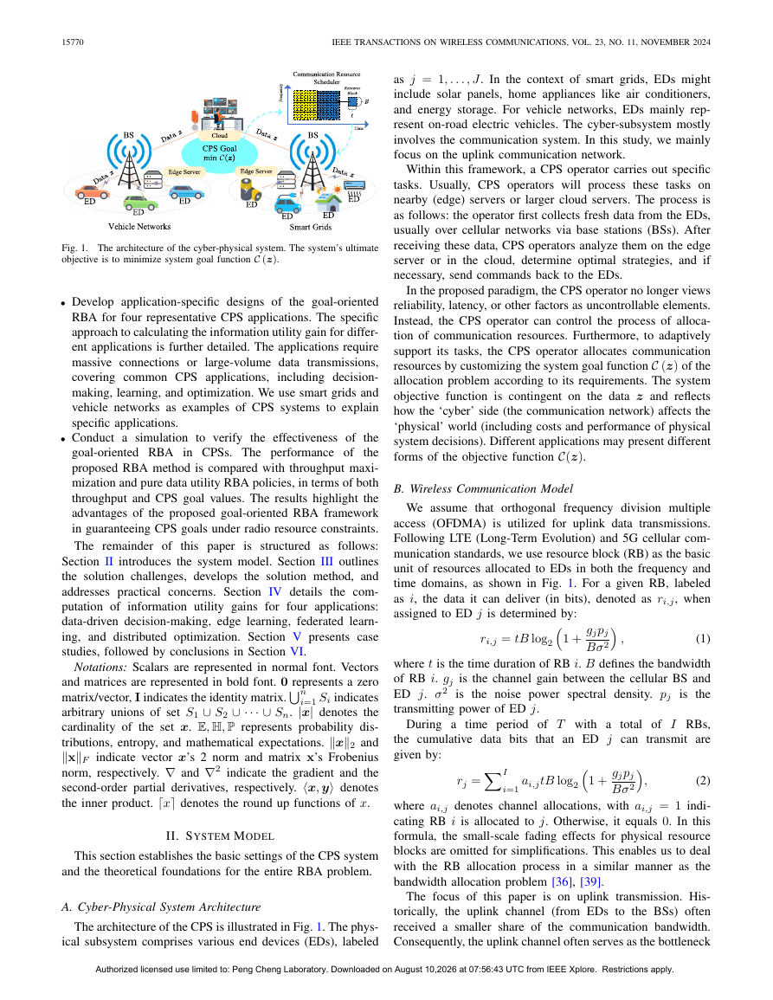<figcaption>架构/方法证据：来源《Goal-Oriented Wireless Communication Resource Allocation for Cyber-Physical Systems》p.3，Fig. 1 The architecture of the cyber-physical system. The system’s ultimate receiving these data, CPS operators analyze them on the edge objective is to minimize system goal function C (z。<a href='https://doi.org/10.1109/twc.2024.3432918'>出版页面</a></figcaption></figure><figure>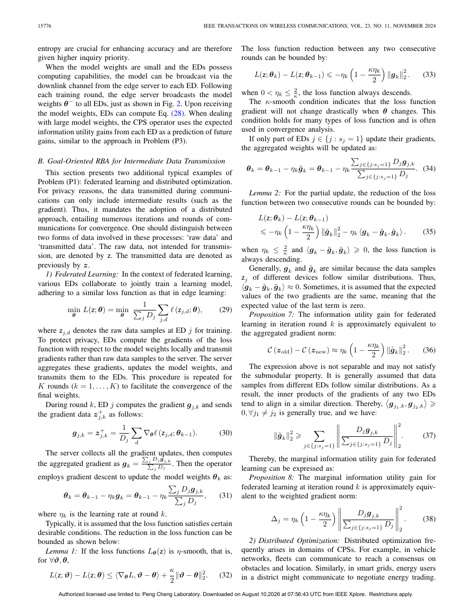<figcaption>关键结果证据：来源《Goal-Oriented Wireless Communication Resource Allocation for Cyber-Physical Systems》p.9，Fig. 2 Upon receiving The κ-smooth condition indicates that the loss function the model weights, EDs can compute Eq. (28). When dealing gradient will not change drastically when θ changes。<a href='https://doi.org/10.1109/twc.2024.3432918'>出版页面</a></figcaption></figure></div>
  <h3>局限性</h3><p>结论主要由论文设定的视频传输/理解数据与仿真信道支持；跨数据、跨设备和真实空口泛化仍需进一步验证。</p>
</article>
<article id='hybrid-semantic-shannon-communications' class='paper'>
  <div class='paper-head'><div><span class='badge'>core</span><span class='year'>2024</span><h2>Hybrid Semantic-Shannon Communications</h2></div><a class='pdf' href='https://doi.org/10.1109/twc.2024.3376998'>DOI / IEEE Xplore</a></div>
  <div class='facts'><div><b>作者</b>Nikos G. Evgenidis、Nikos A. Mitsiou、Sotiris A. Tegos、Panagiotis D. Diamantoulakis、Panagiotis Sarigiannidis、Ioannis Krikidis、George K. Karagiannidis</div><div><b>刊物</b>IEEE Transactions on Wireless Communications</div><div><b>DOI</b><a href='https://doi.org/10.1109/twc.2024.3376998'>10.1109/twc.2024.3376998</a></div><div><b>IEEE document ID</b>10477313</div><div><b>卷/期/页</b>Vol. 23, No. 9, 10926-10940</div><div><b>任务</b>文本传输/翻译</div></div>
  <h3>Introduction 讲述逻辑</h3><ol><li><b>已有进展：</b>Increasing capacity is Despite their non-convexity, both problems are decomposed into a promising research direction to address these challenges, but a convex and a mixed linear integer programming problem by this approach will soon reach its limits.</li><li><b>尚存问题：</b>However, the performance is insights into the design parameters of such systems. limited by the efficiency of the semantic transceivers, i.e., the achievable “similarity” between the transmitted and received Index Terms— Semantic communications, multi-carrier, signals.</li><li><b>为何重要：</b>However, the performance is insights into the design parameters of such systems. limited by the efficiency of the semantic transceivers, i.e., the achievable “similarity” between the transmitted and received Index Terms— Semantic communications, multi-carrier, signals.</li><li><b>本文方案：</b>In this paper, for the first time in the literature, we propose a multi-carrier Hybrid Semantic-Shannon communication system I.</li><li><b>解决机制：</b>Hence, the use of amount of the transmitted information while maximizing the artificial intelligence techniques provides realistic ways for the mutual information through end-to-end training.</li><li><b>核心主张：</b>Furthermore, to improve the performance of the increasing demand for more bandwidth leads to an inevitable proposed hybrid schemes, a novel association of text sentences bottleneck due to severe path loss and the inefficiency of to subcarriers is proposed based on the data size of the sen- power amplifiers, while more sophisticated hardware on the tences and the channel gains of the subcarriers.</li></ol>
  <h3>数据集、baseline 与评价设置</h3><div class='grid3'><div><b>数据集</b><p>Europarl</p></div><div><b>Baseline</b><p>DeepSC、DeepJSCC、LDPC、QAM、NOMA</p></div><div><b>指标与信道</b><p>LPIPS、BLEU、WER、CER、accuracy、latency、semantic similarity<br>AWGN、Rayleigh、OFDM<br>SNR: 论文未明确给出或自动定位不足，需结合全文人工复核</p></div></div>
  <h3>方法与数字化方案</h3><p><b>表示判断：</b>数字或混合：显式量化/比特流/传统调制编码</p><ul><li><b>p.2</b> S the semantic DNNs transceivers, such as DeepSC [6]. For was used and the signal-to-distortion ratio (SDR) performance instance, architectures such as DeepSC have a limit on the metric was studied. A different DNN called DeepSC-SR was achievable similarity between the input task, e.g., image, also proposed for speech recognition, where character-error- text, speech, an</li><li><b>p.2</b> he output of semantic communications emphasize on introducing new DNN DeepJSCC was studied, while, in [20], a collaborative image architectures to achieve better semantic accuracy between transmission was investigated, where different views of the the original and reconstructed data, without investigating the same image are transmitted over a multiple access channel com</li><li><b>p.3</b> posed hybrid scheme is general and can be used to study the coexistence of current networks with any proposed DNN-based semantic architecture in the literature. The bit error rate (BER) metric is also considered to better evaluate the performance of practical systems, which cannot achieve the capacity limit. Fig. 1. System model. • We formulate a general transmission d</li><li><b>p.3</b> tric is also considered to better evaluate the performance of practical systems, which cannot achieve the capacity limit. Fig. 1. System model. • We formulate a general transmission delay optimiza- tion problem, studying two related performance metrics the sum of delays and the maximum delay, by jointly II. S YSTEM M ODEL selecting Shannon or semantic transmission per s</li><li><b>p.3</b> tween two different channel instances, while perfect channel state information (CSI) is assumed. The receiver of the C. Structure proposed system can acknowledge the selected transmission The rest of this paper is organized as follows. Section II scheme by a single pilot symbol sequence for all subcarriers. describes the system model and the two different frameworks For ex</li></ul>
  <h3>传输开销与可推导边界</h3><p>\(R_{tx}=B_{semantic}/B_{raw}\)，若论文仅给 channel uses，则不能在缺少调制阶数与帧开销时把它直接当成 bit-rate。</p><ul><li><b>p.2</b> emantic communication systems. authors considered a more practical scenario for the constel- lation arising from DeepSC, by using quantization on the constructed unstructured constellation. Based on the results A. Literature Review of [23], an approximation of the semantic similarity curve Semantic communications have recently attracted a lot of was studied in [25]</li><li><b>p.2</b> eve better perceptual similarity. Fur- the disadvantages of the other. The majority of works on thermore, in [19], the problem of quantizing the output of semantic communications emphasize on introducing new DNN DeepJSCC was studied, while, in [20], a collaborative image architectures to achieve better semantic accuracy between transmission was investigated, where</li><li><b>p.5</b> e power allocation policy. Moreover, we note that the practicality of the proposed hybrid scheme can be verified by [24], where a quantized version of the DeepSC model was proposed, Fig. 2. Similarity for varying values of SNR and k. which essentially reduces the DeepSC model to a digital communication scheme. By choosing an appropriate number of quantization level</li><li><b>p.5</b> of SNR and k. which essentially reduces the DeepSC model to a digital communication scheme. By choosing an appropriate number of quantization levels the digital counterpart of DeepSC loses It should be highlighted that although bit errors can occur negligible accuracy, while its transmission delay is still defined in digital transmission, coding schemes can be uti</li></ul>
  <h3>信道处理机制</h3><p><b>分类：</b>显式建模离散变量/比特错误，并进行鲁棒或联合恢复</p><ul><li><b>p.2</b> the original data [1]. Furthermore, the utilization of joint was considered when energy harvesting is utilized for energy source-channel coding schemes by means of autoencoders efficiency. In [22], a similar problem without energy harvesting is a powerful tool to increase the robustness of semantic was studied under a recently introduced performance metric communication</li><li><b>p.2</b> ture was used for the end-to-end in [11], which, in addition to semantic extraction, uses source- training of the proposed model. channel coding to improve the performance of the proposed model. Peak-to-average power ratio (PAPR) was also studied for the specific DNN when the semantic communication B. Motivation and Contribution paradigm is utilized in orthogonal frequenc</li><li><b>p.3</b> can be used to study the coexistence of current networks with any proposed DNN-based semantic architecture in the literature. The bit error rate (BER) metric is also considered to better evaluate the performance of practical systems, which cannot achieve the capacity limit. Fig. 1. System model. • We formulate a general transmission delay optimiza- tion problem, stud</li><li><b>p.4</b> re N0 is the power spectral density of additive white mapped to a sequence of continuous real numbers, the output Gaussian noise (AWGN), and Pl is the transmission power of the channel encoder is an optimal constellation of infinite at each subcarrier. The capacity can be closely approached by points, which is equivalent to transmitting the output of the capacit</li><li><b>p.4</b> be closely approached by points, which is equivalent to transmitting the output of the capacity-achieving codes such as irregular LDPC codes which semantic encoder by using discrete time analog transmission are commonly used in practice. Nonetheless, in practical sys- (DTAT) [12]. As such, the transmission rate of DeepSC is tems, a rate gap between the capacity</li><li><b>p.4</b> on rate of DeepSC is tems, a rate gap between the capacity limit and the achievable given as maximum data rate may exist, due the bit error rate (BER). Without loss of generality, we consider the case of an uncoded C̃l = W. (5) M -QAM constellation, whose BER has been shown in [31] ′ For a sentence Sn,l , we denote Sn,l its semantic equivalent and [32] to be upper bo</li></ul><p><b>Codex 判断：</b>属于核心</p>
  <h3>主要结果</h3><ul><li><b>p.1</b> reach its limits. For instance, the ever- using alternating optimization, both of which can be solved optimally. Furthermore, to improve the performance of the increasing demand for more bandwidth leads to an inevitable proposed hybrid schemes, a novel association of text sentences bottleneck due to severe path loss and the inefficiency of to subcarriers is propo</li><li><b>p.1</b> sed bandwidth [2]. the proposed association is optimal in terms of transmission Therefore, a different perspective is required to improve the Manuscript received 12 October 2023; revised 17 January 2024; accepted 5 performance of future wireless networks. Considering that March 2024. Date of publication 20 March 2024; date of current version in many 6G scenarios t</li><li><b>p.1</b> s the effectiveness problem. Semantic communications Greece, and also with the Department of Electrical and Computer Engi- aim to improve the data exchange between two communication neering, University of Western Macedonia, 501 00 Kozani, Greece (e-mail: parties by incorporating semantic information in the technical sotiristegos@ieee.org). Panagiotis Sarigiannidis</li><li><b>p.2</b> type of DNN was implemented and combined with a forward The most characteristic of them are related to the extraction of relay to improve the common base knowledge between the information from images, speech signals, and text. Regarding transmitter and receiver, which can generally be different. image transmission, a DNN called DeepJSCC was studied Again, an autoe</li><li><b>p.2</b> the end-to-end in [11], which, in addition to semantic extraction, uses source- training of the proposed model. channel coding to improve the performance of the proposed model. Peak-to-average power ratio (PAPR) was also studied for the specific DNN when the semantic communication B. Motivation and Contribution paradigm is utilized in orthogonal frequency division</li></ul>
  <div class='figs'><figure><figcaption>架构/方法证据：来源《Hybrid Semantic-Shannon Communications》p.3，Fig. 1 System model. • We formulate a general transmission delay optimiza- tion problem, studying two related performance metrics the sum of delays and the maximum delay, by jointly II. S。<a href='https://doi.org/10.1109/twc.2024.3376998'>出版页面</a></figcaption></figure><figure><figcaption>关键结果证据：来源《Hybrid Semantic-Shannon Communications》p.9，实验结果页。<a href='https://doi.org/10.1109/twc.2024.3376998'>出版页面</a></figcaption></figure></div>
  <h3>局限性</h3><p>已触及数字语义链路关键问题，但错误模型、码本规模和数据分布迁移下的泛化仍需真实空口验证。</p>
</article>
<article id='interference-suppressed-noma-for-semantic-aware-communication-networks' class='paper'>
  <div class='paper-head'><div><span class='badge'>core</span><span class='year'>2024</span><h2>Interference Suppressed NOMA for Semantic-Aware Communication Networks</h2></div><a class='pdf' href='https://doi.org/10.1109/twc.2024.3371775'>DOI / IEEE Xplore</a></div>
  <div class='facts'><div><b>作者</b>Yimeng Zhang、Ruikang Zhong、Yuanwei Liu、Wenjun Xu、Ping Zhang</div><div><b>刊物</b>IEEE Transactions on Wireless Communications</div><div><b>DOI</b><a href='https://doi.org/10.1109/twc.2024.3371775'>10.1109/twc.2024.3371775</a></div><div><b>IEEE document ID</b>10462922</div><div><b>卷/期/页</b>Vol. 23, No. 8, 10383-10397</div><div><b>任务</b>图像传输/视觉任务</div></div>
  <h3>Introduction 讲述逻辑</h3><ol><li><b>已有进展：</b>The proposed IS-SNOMA is able to mitigate the inter-user interference in while, more inspiring technologies are under exploration to the non-orthogonal transmission for multiple semantic-oriented further enrich the future communication systems with intelli- users (SU) or the coexistence of SUs and bit-oriented users gence [3]. (BU). 1) for the homogeneous transmission of semantic streams, Inspired by the triplet-definition of communication prob- we propose a pair of novel semantic difference (SeD) aware lems [4], semantic communications emerge as a promising IS-SNOMA transceivers to accommodate multiple SUs over the same resource block.</li><li><b>尚存问题：</b>A novel SeD-aware superposition coding solution for these challenges, which go beyond the existing (SeDSC) technique and SeD-aware successive interference can- syntactic-based technologies and focus on semantic informa- cellation (SeDSIC) technique are specially designed to mitigate tion [5], [6], [7].</li><li><b>为何重要：</b>I NTRODUCTION with deep models as an integrated module, termed as joint- semantic-channel (JSC) coding, and jointly optimized towards T HE sixth generation (6G) communication system is facing great challenges in efficient and intelligent com- munications, which are posed by explosive connections, data, the semantic-level consistency between the decoded data and the original data [10], [11], [12], [13]. and increasingly stringent requirements.</li><li><b>本文方案：</b>The proposed IS-SNOMA is able to mitigate the inter-user interference in while, more inspiring technologies are under exploration to the non-orthogonal transmission for multiple semantic-oriented further enrich the future communication systems with intelli- users (SU) or the coexistence of SUs and bit-oriented users gence [3]. (BU). 1) for the homogeneous transmission of semantic streams, Inspired by the triplet-definition of communication prob- we propose a pair of novel semantic difference (SeD) aware lems [4], semantic communications emerge as a promising IS-SNOMA transceivers to accommodate multiple SUs over the same resource block.</li><li><b>解决机制：</b>I NTRODUCTION with deep models as an integrated module, termed as joint- semantic-channel (JSC) coding, and jointly optimized towards T HE sixth generation (6G) communication system is facing great challenges in efficient and intelligent com- munications, which are posed by explosive connections, data, the semantic-level consistency between the decoded data and the original data [10], [11], [12], [13]. and increasingly stringent requirements.</li><li><b>核心主张：</b>Simulation results demonstrate semantic coding into the existing communication systems. the advantages of the proposed frameworks in improving the Benefiting from the thriving of deep learning (DL), the communication efficiency of both SUs and BUs, compared with OMA and NOMA-aided transmission benchmarks. superiority of this new paradigm has been demonstrated for the reconstruction-oriented transmission of different modal- Index Terms— Deep learning, non-orthogonal multiple access, semantic-aware communication networks. ities of data [8], [9].</li></ol>
  <h3>数据集、baseline 与评价设置</h3><div class='grid3'><div><b>数据集</b><p>Cityscapes</p></div><div><b>Baseline</b><p>DeepJSCC、NOMA</p></div><div><b>指标与信道</b><p>PSNR、SSIM、MS-SSIM、mAP、accuracy、spectral efficiency<br>AWGN、Rician、OFDM<br>SNR: 26 dB</p></div></div>
  <h3>方法与数字化方案</h3><p><b>表示判断：</b>数字或混合：显式量化/比特流/传统调制编码</p><ul><li><b>p.1</b> SIC), respectively. Simulation results demonstrate semantic coding into the existing communication systems. the advantages of the proposed frameworks in improving the Benefiting from the thriving of deep learning (DL), the communication efficiency of both SUs and BUs, compared with OMA and NOMA-aided transmission benchmarks. superiority of this new paradigm has been demonstra</li><li><b>p.2</b> olved including orthogonal multiple access (OMA), NOMA, and semantic symbols, how to construct a NOMA framework semi-NOMA. In the proposed framework of downlink NOMA, for the non-orthogonal transmission of semantic symbols or the symbols of two users were couple-transmitted with NOMA heterogeneous semantic-bit sequences? As a further advance, and decoupled by first removing t</li><li><b>p.3</b> rical results are shown in Section V-A to symbols of higher inter-feature semantic-level difference, verify the efficiency of the proposed framework. Section VI which makes the mismatched semantic symbols be iden- concludes this paper finally. tified and filtered out by the corresponding decoding function. The SeDSIC further reduces the semantic-level II. IS-SNOMA IN S EMANTI</li><li><b>p.6</b> ic features concerned by the filters in the JSC encoder. near SU us1 , the symbols of the far SU us2 are first detected C. Neural Architecture for Image Transmission with existing channel equalization techniques as follows: Based on the proposed SeD-aware IS-SNOMA transceivers, we present the specific architecture of neural networks for p p x̂2,1 = P2 x2 + P1 xr1 + ẑ 1</li><li><b>p.6</b> isting channel equalization techniques as follows: Based on the proposed SeD-aware IS-SNOMA transceivers, we present the specific architecture of neural networks for p p x̂2,1 = P2 x2 + P1 xr1 + ẑ 1 . (11) wireless image transmission. The JSC encoder is implemented Based on x̂2,1 , the source image for us2 is recovered by the with four cascaded convolutional neural net</li></ul>
  <h3>传输开销与可推导边界</h3><p>\(R_{tx}=B_{semantic}/B_{raw}\)，若论文仅给 channel uses，则不能在缺少调制阶数与帧开销时把它直接当成 bit-rate。</p><ul><li><b>p.2</b> y NOMASC. To lower decoding multi-user semantic communications exploiting NOMA were complexity, the encoded semantic features are quantized to developed in [14] and [19], where homogeneous transmission discrete symbols, necessitating the special design of a discrete- of semantic streams is coped with special-designed frame- symbol-towards decoder. However, these wo</li><li><b>p.4</b> ming SIC. definition in [11], ξ = k/n is referred to as bandwidth When |hs |2 &lt; |hb |2 , lower power still has to be allocated to compression ratio. The encoding process is given as: the us , which needs to first mitigate the interference from ub before decoding its semantic symbols, since ub is unable xi = TαE (si ), (6) to remove the interference from us . Here, we assume</li></ul>
  <h3>信道处理机制</h3><p><b>分类：</b>显式建模离散变量/比特错误，并进行鲁棒或联合恢复</p><ul><li><b>p.1</b> ess, semantic-aware communication networks. ities of data [8], [9]. In the existing point-to-point works, the semantic coding and channel coding are implemented I. I NTRODUCTION with deep models as an integrated module, termed as joint- semantic-channel (JSC) coding, and jointly optimized towards T HE sixth generation (6G) communication system is facing great challenges i</li><li><b>p.2</b> mmunications. Yilmaz et al. [19] proposed a mitigate the semantic-level interference among homo- non-orthogonal deep joint source-channel coding framework geneous semantic streams, which are transmitted non- for uplink transmission case, namely DeepJSCC-NOMA. The orthogonally? transmitted images of two SUs were jointly recovered based • Question 3: How to design efficient</li><li><b>p.3</b> ivers outperform in terms based on corresponding channel gains and superposed for non- of the quality of reconstructed images and bit error rate orthogonal transmission. The channel gain from the AP to usi (BER). Furthermore, the communication efficiency of is denoted as hsi , including path loss and small-scale fading, both SUs and BUs outperforms both benchmarks. w</li><li><b>p.4</b> e small-scale fading, P L (di ) is the propagation path loss. image transmission, peak signal-to-noise ratio (PSNR) and We assume Rician fading for all the involved channels and the MS-SSIM [26] are adopted to measure the quality of the recon- Rician factor is denoted as K. Thus, ri is formulated as structed images [11], [27]. The latter is designed by imitating r</li><li><b>p.4</b> ) and We assume Rician fading for all the involved channels and the MS-SSIM [26] are adopted to measure the quality of the recon- Rician factor is denoted as K. Thus, ri is formulated as structed images [11], [27]. The latter is designed by imitating r r the subjective observation of humans and is widely utilized to K LoS 1 ri = Li + LN LoS , (2) indicate the imag</li><li><b>p.4</b> ansmit this digital signal with To evaluate the system performance in reconstruction- the same techniques as bit streams, such as channel coding oriented semantic transmission, the quality of the reconstructed and modulation. The other way is to directly transmit the data is the main metric, which is denoted as Q(ŝi ). For wire- semantic stream as analog signals, which i</li></ul><p><b>Codex 判断：</b>属于核心</p>
  <h3>主要结果</h3><ul><li><b>p.1</b> re SC technique (SyDSC) and SyD-aware SIC communication systems can be developed by introducing technique (SyDSIC), respectively. Simulation results demonstrate semantic coding into the existing communication systems. the advantages of the proposed frameworks in improving the Benefiting from the thriving of deep learning (DL), the communication efficiency of both SUs and BUs,</li><li><b>p.1</b> ulation results demonstrate semantic coding into the existing communication systems. the advantages of the proposed frameworks in improving the Benefiting from the thriving of deep learning (DL), the communication efficiency of both SUs and BUs, compared with OMA and NOMA-aided transmission benchmarks. superiority of this new paradigm has been demonstrated for the</li><li><b>p.1</b> frameworks in improving the Benefiting from the thriving of deep learning (DL), the communication efficiency of both SUs and BUs, compared with OMA and NOMA-aided transmission benchmarks. superiority of this new paradigm has been demonstrated for the reconstruction-oriented transmission of different modal- Index Terms— Deep learning, non-orthogonal multiple access, seman</li><li><b>p.1</b> tiple access (TDMA) and orthogonal frequency division Digital Object Identifier 10.1109/TWC.2024.3371775 multiple access (OFDMA). Compared with the orthogonal 1536-1276 © 2024 IEEE. Personal use is permitted, but republication/redistribution requires IEEE permission. See https://www.ieee.org/publications/rights/index.html for more information. Authorized licensed use lim</li><li><b>p.2</b> ccess (NOMA) has SIC is adopted as a powerful solution to the syntactic-level raised extensive interest due to its superiority in improving interference in conventional NOMA-aided communications, spectral efficiency and supporting massive connectivity [17], which, however, can not be directly applied to separate [18]. These advantages make NOMA a key driving tech-</li></ul>
  <div class='figs'><figure><figcaption>架构/方法证据：来源《Interference Suppressed NOMA for Semantic-Aware Communication Networks》p.3，Fig. 1 The proposed IS-SNOMA framework of the semantic-aware com- • To enhance the efficiency of non-orthogonal seman- munication networks consisting of SUs and BUs. tic transmission, a p。<a href='https://doi.org/10.1109/twc.2024.3371775'>出版页面</a></figcaption></figure><figure><figcaption>关键结果证据：来源《Interference Suppressed NOMA for Semantic-Aware Communication Networks》p.8，Fig. 4 The model of the proposed SyD-aware IS-SNOMA transceivers for the heterogeneous cluster of a BU and an SU. Algorithm 2 Training Algorithm of SeD-Aware IS-SNOMA ub , resulting in th。<a href='https://doi.org/10.1109/twc.2024.3371775'>出版页面</a></figcaption></figure></div>
  <h3>局限性</h3><p>已触及数字语义链路关键问题，但错误模型、码本规模和数据分布迁移下的泛化仍需真实空口验证。</p>
</article>
<article id='joint-urllc-traffic-scheduling-and-resource-allocation-for-semantic-communication-systems' class='paper'>
  <div class='paper-head'><div><span class='badge'>core</span><span class='year'>2024</span><h2>Joint URLLC Traffic Scheduling and Resource Allocation for Semantic Communication Systems</h2></div><a class='pdf' href='https://doi.org/10.1109/twc.2023.3339239'>DOI / IEEE Xplore</a></div>
  <div class='facts'><div><b>作者</b>Guangyao Ding、Shengli Liu、Jiantao Yuan、Guanding Yu</div><div><b>刊物</b>IEEE Transactions on Wireless Communications</div><div><b>DOI</b><a href='https://doi.org/10.1109/twc.2023.3339239'>10.1109/twc.2023.3339239</a></div><div><b>IEEE document ID</b>10355766</div><div><b>卷/期/页</b>Vol. 23, No. 7, 7278-7290</div><div><b>任务</b>语音传输/识别</div></div>
  <h3>Introduction 讲述逻辑</h3><ol><li><b>已有进展：</b>7278 IEEE TRANSACTIONS ON WIRELESS COMMUNICATIONS, VOL. 23, NO. 7, JULY 2024 Joint URLLC Traffic Scheduling and Resource Allocation for Semantic Communication Systems Guangyao Ding, Shengli Liu , Member, IEEE, Jiantao Yuan , and Guanding Yu , Senior Member, IEEE Abstract— Recently, deep learning (DL) based semantic com- including industrial automation, intelligent transportation, and munication systems have shown great potential to improve virtual/augmented reality [1], [2].</li><li><b>尚存问题：</b>However, the coexisting traffic generated by such intelligent applications aggravates mechanism between semantic communications and other services remains unexplored, which limits the application of semantic the spectrum scarcity and poses great challenges to wireless communications in practical communication systems.</li><li><b>为何重要：</b>Authorized licensed use limited to: Peng Cheng Laboratory.</li><li><b>本文方案：</b>Recently, semantic communica- paper, we propose a dynamic multiplexing and co-scheduling tions have attracted extensive attention from both industry and scheme for the semantic and ultra-reliable low-latency communi- academia and are regarded as a promising means to improve cation (URLLC) traffic coexisting systems.</li><li><b>解决机制：</b>In [15], the authors have developed a DL-based To improve the quality of eMBB service while satisfying multi-user semantic communication system, where image the latency requirement of URLLC service, the dynamic retrieval, machine translation, and visual question answering multiplexing of URLLC and eMBB traffic in 5G NR has been tasks are jointly considered.</li><li><b>核心主张：</b>Recently, deep learning (DL) based semantic com- including industrial automation, intelligent transportation, and munication systems have shown great potential to improve virtual/augmented reality [1], [2].</li></ol>
  <h3>数据集、baseline 与评价设置</h3><div class='grid3'><div><b>数据集</b><p>CIFAR-10</p></div><div><b>Baseline</b><p>DeepJSCC、Transformer</p></div><div><b>指标与信道</b><p>PSNR、mAP、accuracy、classification accuracy、latency、spectral efficiency、utility<br>论文未明确给出或自动定位不足，需结合全文人工复核<br>SNR: 20 dB、23 dB</p></div></div>
  <h3>方法与数字化方案</h3><p><b>表示判断：</b>数字或混合：显式量化/比特流/传统调制编码</p><ul><li><b>p.1</b> ality Two convolutional neural networks (CNNs) are adopted as of semantic service while satisfying the latency requirement of the semantic encoder and decoder, respectively, which are URLLC traffic. trained in an end-to-end way with the objective of minimizing Index Terms— Ultra-reliable low-latency communications the mean square error of the reconstructed images. In [7], (</li><li><b>p.1</b> n [7], (URLLC), semantic communications, deep learning, resource an improved JSCC system has been proposed, where the allocation. semantic encoders and decoders are placed in a sequential manner and connected by the feedback channel. Leveraging I. I NTRODUCTION the implicit information conveyed by the feedback signal, T HE next generation wireless networks are expected to s</li><li><b>p.3</b> The rest of this paper is organized as follows. Section II a URLLC packet, it cannot be used to transmit semantic introduces the system model and formulates the joint resource features, which would result in the performance degradation allocation and model training problem. Section III simpli- of semantic service. To model the relationship between RB fies the problem a</li><li><b>p.4</b> espectively. To merge the communi- As discussed above, the RBs allocated to the semantic users cation channel into the overall NN architecture, we model are randomly punctured by the URLLC packets. Therefore, the the channel as a non-trainable layer, which is represented number of RBs occupied for transmitting a semantic packet by the transfer function ẑ = η(z). For th</li><li><b>p.7</b> 7284 IEEE TRANSACTIONS ON WIRELESS COMMUNICATIONS, VOL. 23, NO. 7, JULY 2024 Fig. 3. The CNN-based semantic encoder and decoder with attention module.   The puncturing probability allocation problem is then given 1 αk βk  νmax = max fk (1) = max ak αk e + bk βk e , by k k Lk K (16) X 1 1 P3 : min DL k ,hk (pk ), (12a) with k = 1, . . . , K.</li></ul>
  <h3>传输开销与可推导边界</h3><p>\(R_{tx}=B_{semantic}/B_{raw}\)，若论文仅给 channel uses，则不能在缺少调制阶数与帧开销时把它直接当成 bit-rate。</p><ul><li><b>p.2</b> joint eMBB multi-user text semantic communication systems. In [18], the and URLLC resource allocation problem has been formulated compression ratio of the semantic feature, transmit power, as a multi-timescale problem. A DRL-based algorithm has and bandwidth are jointly optimized to maximize the task been proposed to determine the slice configuration parameters success proba</li><li><b>p.2</b> r allocation problem is solved with matching theory, still remains open and needs to be specifically developed while the semantic compression ratio is optimized with deep due to the difference between semantic and eMBB traffic. reinforcement learning (DRL). Targeting at maximizing the To be more specific, the performance metric of the semantic long-term transmission efficien</li><li><b>p.2</b> ask, e.g., posed a DRL-based method to jointly optimize the semantic the reconstruction error of data reconstruction task and the compression ratio and wireless resource allocation, which can classification accuracy of edge inference task, while that of achieve a decent tradeoff between the amount of data delivered the eMBB service is conventionally the data rate. Moreover,</li><li><b>p.12</b> ep. 2019. This is because, in addition to the power allocation, the [7] D. B. Kurka and D. Gündüz, “DeepJSCC-f: Deep joint source-channel user fairness can also be achieved by properly allocating coding of images with feedback,” IEEE J. Sel. Areas Inf. Theory, vol. 1, no. 1, pp. 178–193, May 2020. the puncturing probability, i.e., puncturing more RBs of the [8] A. Vasw</li></ul>
  <h3>信道处理机制</h3><p><b>分类：</b>数字语义表示叠加传统信道编码/调制</p><ul><li><b>p.2</b> y mul- that jointly optimizes feature extraction, source coding, and tiplex URLLC traffic with eMBB traffic. In [25], the network channel coding in a task-oriented manner. Leveraging the slicing problem in the downlink orthogonal frequency division information bottleneck framework, the redundant dimensions multiple access (OFDMA) systems has been investigated. The of the</li><li><b>p.12</b> 021. than the other methods. Meanwhile, as the URLLC load λ [6] E. Bourtsoulatze, D. B. Kurka, and D. Gündüz, “Deep joint source- channel coding for wireless image transmission,” IEEE Trans. Cognit. increases, the PSNR difference gets smaller for all methods. Commun. Netw., vol. 5, no. 3, pp. 567–579, Sep. 2019. This is because, in addition to the power allocation, the [7</li><li><b>p.13</b> versity, pp. 2434–2444, Aug. 2021. Hangzhou, China, in 2022. He currently holds a [11] J. Dai et al., “Nonlinear transform source-channel coding for seman- post-doctoral position with the School of Infor- tic communications,” IEEE J. Sel. Areas Commun., vol. 40, no. 8, mation and Electrical Engineering, Hangzhou City pp. 2300–2316, Aug. 2022. University, Hangzhou, and the</li><li><b>p.13</b> Yang, P. Sun, and M. Rodrigues, “Wireless research interests include integrated sensing and image transmission using deep source channel coding with attention communications (ISAC), mobile edge computing/learning, and machine learn- modules,” IEEE Trans. Circuits Syst. Video Technol., vol. 32, no. 4, ing for wireless networks. He received the 2016 IEEE ComSoc Asia–Pacifi</li></ul><p><b>Codex 判断：</b>属于核心</p>
  <h3>主要结果</h3><ul><li><b>p.1</b> d semantic com- including industrial automation, intelligent transportation, and munication systems have shown great potential to improve virtual/augmented reality [1], [2]. The massive wireless data transmission efficiency in various tasks. However, the coexisting traffic generated by such intelligent applications aggravates mechanism between semantic communicati</li><li><b>p.1</b> th industry and scheme for the semantic and ultra-reliable low-latency communi- academia and are regarded as a promising means to improve cation (URLLC) traffic coexisting systems. In particular, a joint transmission efficiency. Instead of transmitting the original resource allocation and model training problem is formulated, which aims at maximizing the utility o</li><li><b>p.1</b> impact of feature erasure brought by nel coding (JSCC) scheme for image reconstruction task. the random arrival of URLLC traffic. Simulation results show that the proposed method can effectively improve the quality Two convolutional neural networks (CNNs) are adopted as of semantic service while satisfying the latency requirement of the semantic encoder and decoder, respectiv</li><li><b>p.1</b> image reconstruction task. the random arrival of URLLC traffic. Simulation results show that the proposed method can effectively improve the quality Two convolutional neural networks (CNNs) are adopted as of semantic service while satisfying the latency requirement of the semantic encoder and decoder, respectively, which are URLLC traffic. trained in an end-to-en</li><li><b>p.1</b> nications the mean square error of the reconstructed images. In [7], (URLLC), semantic communications, deep learning, resource an improved JSCC system has been proposed, where the allocation. semantic encoders and decoders are placed in a sequential manner and connected by the feedback channel. Leveraging I. I NTRODUCTION the implicit information conveyed by the f</li></ul>
  <div class='figs'><figure><figcaption>架构/方法证据：来源《Joint URLLC Traffic Scheduling and Resource Allocation for Semantic Communication Systems》p.3，Fig. 2 The structure of semantic communication systems. only allocated to one semantic user. In particular, a resource block (RB) is the minimum unit of time-frequency resource Fig. 1. Th。<a href='https://doi.org/10.1109/twc.2023.3339239'>出版页面</a></figcaption></figure><figure><figcaption>关键结果证据：来源《Joint URLLC Traffic Scheduling and Resource Allocation for Semantic Communication Systems》p.7，Fig. 3 The CNN-based semantic encoder and decoder with attention module.   The puncturing probability allocation problem is then given 1 αk βk  νmax = max fk (1) = max ak αk e + bk βk。<a href='https://doi.org/10.1109/twc.2023.3339239'>出版页面</a></figcaption></figure></div>
  <h3>局限性</h3><p>主要依赖传统译码输出；若译码后仍残留 bit/index 错误，码本跳变与语义灾难性失真未必得到端到端处理。</p>
</article>
<article id='knowledge-distillation-based-semantic-communications-for-multiple-users' class='paper'>
  <div class='paper-head'><div><span class='badge'>core</span><span class='year'>2024</span><h2>Knowledge Distillation-Based Semantic Communications for Multiple Users</h2></div><a class='pdf' href='https://doi.org/10.1109/twc.2023.3336941'>DOI / IEEE Xplore</a></div>
  <div class='facts'><div><b>作者</b>Chenguang Liu、Yuxin Zhou、Yunfei Chen、Shuang-Hua Yang</div><div><b>刊物</b>IEEE Transactions on Wireless Communications</div><div><b>DOI</b><a href='https://doi.org/10.1109/twc.2023.3336941'>10.1109/twc.2023.3336941</a></div><div><b>IEEE document ID</b>10345474</div><div><b>卷/期/页</b>Vol. 23, No. 7, 7000-7012</div><div><b>任务</b>语音传输/识别</div></div>
  <h3>Introduction 讲述逻辑</h3><ol><li><b>已有进展：</b>Allowing interference to co- deploy the learning-based receiver, several works have been exist with SemCom systems without significantly degrading conducted to jointly optimize the transmitter and receiver.</li><li><b>尚存问题：</b>However, the learning- based methods can be dependent on the training dataset and receiver by minimizing the bit error rate (BER) or the symbol perform worse on unseen interference due to limited model error rate (SER).</li><li><b>为何重要：</b>However, the learning- based methods can be dependent on the training dataset and receiver by minimizing the bit error rate (BER) or the symbol perform worse on unseen interference due to limited model error rate (SER).</li><li><b>本文方案：</b>To improve the model generalization ability and reduce the model size, we propose a knowledge transmission. distillation (KD) based system where Transformer based encoder- However, the limited spectrum resources constrain the decoder is implemented as the semantic encoder-decoder and capacity of traditional data communications at the first level, fully connected neural networks are implemented as the channel following the Shannon limit.</li><li><b>解决机制：</b>Although interference can be U.K. (e-mail: shuang-hua.yang@reading.ac.uk). avoided or mitigated through effective resource management Color versions of one or more figures in this article are available at https://doi.org/10.1109/TWC.2023.3336941. [15], [16], these come at the expense of system complexity Digital Object Identifier 10.1109/TWC.2023.3336941 and resource utilization efficiency.</li><li><b>核心主张：</b>To improve the model generalization ability and reduce the model size, we propose a knowledge transmission. distillation (KD) based system where Transformer based encoder- However, the limited spectrum resources constrain the decoder is implemented as the semantic encoder-decoder and capacity of traditional data communications at the first level, fully connected neural networks are implemented as the channel following the Shannon limit.</li></ol>
  <h3>数据集、baseline 与评价设置</h3><div class='grid3'><div><b>数据集</b><p>Europarl</p></div><div><b>Baseline</b><p>DeepSC、DeepJSCC、LDPC、Transformer、QAM</p></div><div><b>指标与信道</b><p>BLEU、mAP、accuracy、latency<br>Rayleigh、Rician、MIMO、OFDM<br>SNR: 0 dB、10 dB、12 dB、15 dB、18 dB、20 dB、6 dB、9 dB</p></div></div>
  <h3>方法与数字化方案</h3><p><b>表示判断：</b>离散/数字：VQ、码本 index 或 token 表示</p><ul><li><b>p.1</b> based system where Transformer based encoder- However, the limited spectrum resources constrain the decoder is implemented as the semantic encoder-decoder and capacity of traditional data communications at the first level, fully connected neural networks are implemented as the channel following the Shannon limit. To address this, SemCom extracts encoder-decoder. Specificall</li><li><b>p.2</b> m system, DeepSC, was proposed in [6] and the communications system for lower complexity and better [7] to use Transformer as the semantic encoder and decoder, performance, representative works were conducted in [17], to outperform traditional coding schemes, especially in low [21], [22], and [23]. The challenges and opportunities of SNR regime. Additionally, a lite SemCom</li><li><b>p.3</b> compression in KD after training, to the desired user. Each interference has random occurrences we apply model compression to the semantic encoder- and delays in the transmission. Moreover, each desired user decoder and the channel encoder-decoder to reduce has a transmitter-receiver pair with one semantic encoder and performance loss. We also demonstrate the complexity cha</li><li><b>p.3</b> s we apply model compression to the semantic encoder- and delays in the transmission. Moreover, each desired user decoder and the channel encoder-decoder to reduce has a transmitter-receiver pair with one semantic encoder and performance loss. We also demonstrate the complexity channel encoder at the transmitter, one channel decoder and a and performance analysis in terms</li><li><b>p.3</b> nsmission. Moreover, each desired user decoder and the channel encoder-decoder to reduce has a transmitter-receiver pair with one semantic encoder and performance loss. We also demonstrate the complexity channel encoder at the transmitter, one channel decoder and a and performance analysis in terms of the size and semantic decoder at the receiver. The semantic encoder and n</li></ul>
  <h3>传输开销与可推导边界</h3><p>\(R_{tx}=B_{semantic}/B_{raw}\)，若论文仅给 channel uses，则不能在缺少调制阶数与帧开销时把它直接当成 bit-rate。</p><ul><li><b>p.2</b> d in [8] for distributed IoT devices, which used cussed in [17] for the physical layer. The future research parameter pruning and quantization to reduce the model size so directions powered by the data-driven and learning approaches that it can work with the limited bandwidth and transmission were pointed out. The recent advances in applying DL in conditions. Moreo</li><li><b>p.5</b> ed semantic transmitter, the text Different model compression algorithms are used to address sequence s is preprocessed by a text tokenizer to split the Question 3), and KD is adopted to solve Questions 1) and 2). text into words by punctuation and whitespaces, and then map Finally, the training procedure will be demonstrated. each word with the corresponding sca</li><li><b>p.7</b> output of channel encoder by (19) and (20), tization for the SemCom system, we propose to use post x ← CE(p, β). training dynamic quantization to further compress our model 5: if Train the teacher model then after reducing the number of layers and parameters via KD. 6: Transmit x over the physical channel with MU inter- Dynamic quantization converts the float repre</li><li><b>p.7</b> el then after reducing the number of layers and parameters via KD. 6: Transmit x over the physical channel with MU inter- Dynamic quantization converts the float representation of the ference iI1 , . . . , iIN in (3). weights to the reduced integer representation, which essen- 7: else if Train the student model then tially saves the model size and computational com</li><li><b>p.7</b> del then tially saves the model size and computational complexity. The 8: Transmit x over the physical channel with no MU weights quantization can be expressed as, interference. 9: end if X q = round(φX f loat − ω), (29) 10: Receive y. where X q is the quantized output, X f loat is the float input, φ 11: Compute the output of channel decoder by (19) and (21), is th</li><li><b>p.7</b> eights quantization can be expressed as, interference. 9: end if X q = round(φX f loat − ω), (29) 10: Receive y. where X q is the quantized output, X f loat is the float input, φ 11: Compute the output of channel decoder by (19) and (21), is the scale parameter and ω is the zero point. Note that, overly p̂ ← CD(y, γ). decreasing the size of the mode could cause the</li></ul>
  <h3>信道处理机制</h3><p><b>分类：</b>显式建模离散变量/比特错误，并进行鲁棒或联合恢复</p><ul><li><b>p.1</b> resentation ability. However, the learning- based methods can be dependent on the training dataset and receiver by minimizing the bit error rate (BER) or the symbol perform worse on unseen interference due to limited model error rate (SER). The second level semantic communication generalizability and complexity. In this paper, we consider the (SemCom) focuses on prec</li><li><b>p.1</b> ty of Warwick, CV4 7AL Coventry, U.K. (e-mail: Chenguang.Liu@warwick.ac.uk). considered, including additive white Gaussian noise, Rician Yuxin Zhou is with the Department of Computer Science and Engineering, fading, and Rayleigh fading. However, it has yet to be studied Southern University of Science and Technology, Shenzhen 518055, China whether a SemCom system,</li><li><b>p.1</b> ncluding additive white Gaussian noise, Rician Yuxin Zhou is with the Department of Computer Science and Engineering, fading, and Rayleigh fading. However, it has yet to be studied Southern University of Science and Technology, Shenzhen 518055, China whether a SemCom system, well-suited for end-to-end (E2E) (e-mail: zhouyx2020@mail.sustech.edu.cn). Yunfei Chen is wi</li><li><b>p.2</b> k-oriented transmission [29]. The work in [5] proposed model. KD is widely utilized to reduce the size and improve a joint source-channel coding (JSCC) communication frame- the generalization for language understanding tasks [19], [20]. work using recurrent neural network for text transmission, Nevertheless, KD has not yet been applied to SemCom. which had lower word erro</li><li><b>p.2</b> d an iterative source-channel decoder with the minimum mean-square error estimator [25]. The work to explicitly consider residual bit error of each iteration for in [26] demonstrated that the learning-based detector could image transmission. The work in [13] proposed coarse-to- perform without knowledge of CSI by proposing a sliding fine image semantic coding model f</li><li><b>p.2</b> . system using generative adversarial networks. Apart from joint Moreover, the effect of co-channel interference and radar source-channel coding schemes for texts, images and speech, interference on learning-based detectors were analyzed in [27] a task-oriented MU SemCom, MU-DeepSC, was designed to and [28], respectively. deal with multi-modal data [29]. Authorized licens</li></ul><p><b>Codex 判断：</b>属于核心</p>
  <h3>主要结果</h3><ul><li><b>p.1</b> limited number of training samples and tasks that the communication intends to achieve over semantics unexpected interference. To improve the model generalization ability and reduce the model size, we propose a knowledge transmission. distillation (KD) based system where Transformer based encoder- However, the limited spectrum resources constrain the decoder is im</li><li><b>p.1</b> ncoder and decoder. Numerical results demonstrate that extensive data exchange but with limited bandwidth, where KD significantly improves the robustness and the generalization task effectiveness precedes exact information recovery. Poten- ability when applied to unexpected interference, and it reduces tial applications include human-machine symbiosis, intelligent</li><li><b>p.2</b> , to significantly reduce the complexity based techniques can achieve a tolerable performance in the of design and implementation compared with traditional block- presence of MU interference. wise communications systems. Recently, research has shifted Moreover, the work in [17] has emphasized that researchers from transmission of symbols to transmission of semantic shoul</li><li><b>p.2</b> tic should focus on not only applying the existing DL techniques meaning inspired by the significant advancements of DL in to the improvement of the current communications system natural language processing. The scalability and capacity of but also considering the requirements and constraints of the DL enables semantic understanding on deeper information, communic</li><li><b>p.2</b> nd such as word meaning and word relations in text transmis- low power consumption for low-power chips, to enable learn- sion, to improve the system performance. A comprehensive ing and data-driven distributed mobile devices. The semantic overview was conducted in [23] on how the communications information varies with the transmission task, such as a highly system</li></ul>
  <div class='figs'><figure><figcaption>架构/方法证据：来源《Knowledge Distillation-Based Semantic Communications for Multiple Users》p.3，Fig. 1 SemCom with MU interference due to co-channel competition. 1) How well can the model generalize on unseen interference? numerical results will be demonstrated in Section IV. Finall。<a href='https://doi.org/10.1109/twc.2023.3336941'>出版页面</a></figcaption></figure><figure><figcaption>关键结果证据：来源《Knowledge Distillation-Based Semantic Communications for Multiple Users》p.7，Fig. 2 The structure of the KD-based SemCom system. to improve generalization ability since the teacher model is Algorithm 1 Data Generation over-parameterized and pre-trained with extens。<a href='https://doi.org/10.1109/twc.2023.3336941'>出版页面</a></figcaption></figure></div>
  <h3>局限性</h3><p>已触及数字语义链路关键问题，但错误模型、码本规模和数据分布迁移下的泛化仍需真实空口验证。</p>
</article>
<article id='machine-learning-enabled-heterogeneous-semantic-and-bit-communication' class='paper'>
  <div class='paper-head'><div><span class='badge'>core</span><span class='year'>2024</span><h2>Machine Learning Enabled Heterogeneous Semantic and Bit Communication</h2></div><a class='pdf' href='https://doi.org/10.1109/twc.2024.3397635'>DOI / IEEE Xplore</a></div>
  <div class='facts'><div><b>作者</b>Meng Zhang、Ruikang Zhong、Xidong Mu、Yuanwei Liu</div><div><b>刊物</b>IEEE Transactions on Wireless Communications</div><div><b>DOI</b><a href='https://doi.org/10.1109/twc.2024.3397635'>10.1109/twc.2024.3397635</a></div><div><b>IEEE document ID</b>10530540</div><div><b>卷/期/页</b>Vol. 23, No. 10, 12949-12963</div><div><b>任务</b>视频传输/理解</div></div>
  <h3>Introduction 讲述逻辑</h3><ol><li><b>已有进展：</b>Significant endeavours tion (SemCom) and bit communication (BitCom) system is have been made to ensure the accurate transmission of investigated.</li><li><b>尚存问题：</b>In order to tackle these challenges, novel problem caused by the optimization objective and reward wireless technologies have to be developed for 6G. shaping, respectively.</li><li><b>为何重要：</b>Furthermore, the sixth generation the formulated problems: 1) channel-based transmission, a twin- (6G) wireless technology is envisioned to be ubiquitous, delayed deep deterministic policy gradient with reference neuron instantaneous, and intelligent, thus catering to emerging enhanced Softmax (TD3-RNS) algorithm is proposed, where a applications such as metaverse, autonomous vehicles, and fixed-value neuron is invoked to improve the training efficiency; telemedicine [5], [6].</li><li><b>本文方案：</b>We propose two transmission protocols, i.e., channel- reaping the advantages of both SemCom and BitCom. based and user demand-based transmission, which primarily Second, moving towards the future of a more dynamic consider the channel state information (CSI) and the user and demand-heterogeneous network (e.g., space-air-ground demand for semantic and bit data, respectively.</li><li><b>解决机制：</b>Channel-based By leveraging advanced transmission technologies (e.g., mas- and user demand-based transmission protocols are proposed, sive multiple input multiple output (MIMO), high-performance where a joint optimization problem of the communication mode channel coding and modulation methods), the system capacity selection, frequency bandwidth and power allocation, and NOMA of conventional communications is gradually approaching user pairing is formulated to maximize the long-term (equivalent) semantic throughput and user satisfaction, respectively.</li><li><b>核心主张：</b>Furthermore, the sixth generation the formulated problems: 1) channel-based transmission, a twin- (6G) wireless technology is envisioned to be ubiquitous, delayed deep deterministic policy gradient with reference neuron instantaneous, and intelligent, thus catering to emerging enhanced Softmax (TD3-RNS) algorithm is proposed, where a applications such as metaverse, autonomous vehicles, and fixed-value neuron is invoked to improve the training efficiency; telemedicine [5], [6].</li></ol>
  <h3>数据集、baseline 与评价设置</h3><div class='grid3'><div><b>数据集</b><p>论文未明确给出或自动定位不足，需结合全文人工复核</p></div><div><b>Baseline</b><p>DeepSC、Transformer、NOMA</p></div><div><b>指标与信道</b><p>latency、spectral efficiency、semantic similarity<br>Rayleigh、MIMO、OFDM、fading channel<br>SNR: 20 dB、25 dB</p></div></div>
  <h3>方法与数字化方案</h3><p><b>表示判断：</b>数字或混合：显式量化/比特流/传统调制编码</p><ul><li><b>p.2</b> ed a reasoning-based meet the high data rate requirements of all multiplexed users. implicit semantic-aware communication network architecture, A promising solution is to elaborately select SemCom in where the RL-based semantic reasoning and federated graph the heterogeneous NOMA network to serve the multiplexed convolutional network-based collaborative reasoning were u</li><li><b>p.3</b> us user demand, The rest of this paper is organized as follows. In Section II, respectively. NOMA and OMA schemes are invoked the system model of the proposed heterogeneous framework to study the inclinations of the heterogeneous network with the MA schemes and transmission protocols is towards the different manners of resource allocation presented. Then, the joint comm</li><li><b>p.4</b> chnique is xsm,t and xbm,t denote the normalized symbols outputted by enabled at the AP for transmitting the superimposed signals semantic encoders and bit encoders for user m at time slot t, of all users, and the successive interference cancellation respectively. Therefore, the overall signal xt to be transmitted (SIC) technique is implemented at the users for cancelling f</li><li><b>p.7</b> ks which have the same structure and initialized parameters as the evaluation networks. Denoting the By adopting the actor-critic architecture, two groups of parameters of the target critic network and actor network by neural networks, i.e, actor networks and critic networks, are ′ ′ ω Q and ω µ , respectively, then yt is calculated by employed in TD3-RNS to learn the o</li><li><b>p.9</b> ducing stringent constraints of (15e), (15f), and (15i) in the reward function, which may lead to a high volume D. Neural Network Architecture of invalid and negative rewards and illegal actions. Second, For the actor networks, the state st is taken as the input it guarantees that the spectrum and power resources are fully and the action at is taken as the output, resul</li></ul>
  <h3>传输开销与可推导边界</h3><p>\(R_{tx}=B_{semantic}/B_{raw}\)，若论文仅给 channel uses，则不能在缺少调制阶数与帧开销时把它直接当成 bit-rate。</p><ul><li><b>p.5</b> g rate for user κb L m m considering the communication mode selection between where κb (bits/word) denotes the average numbers of bits per SemCom and BitCom at both user m and m at time slot t, word in the source message, which embodies the capability denoted as ΨN N m→m,t and Ψm→m,t , are separately given by of adopted source coding scheme in data compression for (</li></ul>
  <h3>信道处理机制</h3><p><b>分类：</b>显式建模离散变量/比特错误，并进行鲁棒或联合恢复</p><ul><li><b>p.1</b> oposed, sive multiple input multiple output (MIMO), high-performance where a joint optimization problem of the communication mode channel coding and modulation methods), the system capacity selection, frequency bandwidth and power allocation, and NOMA of conventional communications is gradually approaching user pairing is formulated to maximize the long-term (equivalent)</li><li><b>p.2</b> l efficiency mainstay for SemCom. Deep learning (DL)-driven joint and serve more users. By leveraging SemCom’s distinctive source-channel coding (JSCC) schemes were proposed to nature and competencies, the NOMA gain can be further facilitate transmission of semantic information with respective enhanced, which can be explained as follows. SemCom is contributions in text tr</li><li><b>p.4</b> model and metric are based on DeepSC [4], time slot t the AP selects SemCom for the user m ∈ M a Transformer-based joint semantic-channel coding model. It is also worth noting that the proposed heterogeneous framework and corresponding DRL- 1 Since the equivalent semantic rate [28] is employed in this paper, the based methods are not limited to a particular SemCom algorit</li><li><b>p.5</b> (ψm→m,t ), υm,t = 1 . b m→m,t = (11) error. For example, it is assumed that ςm = 1 when there is Rm→m,t κbIL ςm N b , υm,t = 0 no bit error. Therefore, considering the communication mode selection N N  N where Rm→m,t = Bm,t log2 1 + ψm→m,t , Rm→m,t = between SemCom and BitCom executed by the AP, the N Bm,t log2 1 + ψm→m,t . According to [25], the effective transmis</li><li><b>p.11</b> each time slot is assumed as reward to an appropriate order of magnitude, and ṙu is the independent and identically distributed Rayleigh fading. The −β penalty reward for semantic similarity constraint. large-scale path loss is modelled as Λm,t = Λ0 (dm,t ) , 2) Reward for Training Phase 2: When the first training where Λ0 represents the path loss at the reference</li><li><b>p.14</b> erogeneous semantic and bit network empowered by [19] E. Bourtsoulatze, D. B. Kurka, and D. Gündüz, “Deep joint source- STAR-RIS. channel coding for wireless image transmission,” IEEE Trans. Cogn. Commun. Netw., vol. 5, no. 3, pp. 567–579, Sep. 2019. [20] Z. Weng and Z. Qin, “Semantic communication systems for speech R EFERENCES transmission,” IEEE J. Sel. Areas Commun.,</li></ul><p><b>Codex 判断：</b>属于核心</p>
  <h3>主要结果</h3><ul><li><b>p.1</b> TD3-RNS) algorithm is proposed, where a applications such as metaverse, autonomous vehicles, and fixed-value neuron is invoked to improve the training efficiency; telemedicine [5], [6]. As a result, more stringent performance 2) user demand-based transmission, a transfer TD3-RNS (T2D3- RNS) algorithm is proposed, where the learned policy is targets have been impos</li><li><b>p.1</b> problem caused by the optimization objective and reward wireless technologies have to be developed for 6G. shaping, respectively. Simulation results demonstrate that: 1) Fortunately, semantic communication (SemCom) comes to proposed heterogeneous scheme outperforms the baselines which the rescue as a novel paradigm to break the bottleneck merely use SemCom or BitCom; 2) compa</li><li><b>p.1</b> vely. Simulation results demonstrate that: 1) Fortunately, semantic communication (SemCom) comes to proposed heterogeneous scheme outperforms the baselines which the rescue as a novel paradigm to break the bottleneck merely use SemCom or BitCom; 2) compared to OMA, NOMA is more compatible with the proposed heterogeneous scheme; and of the conventional bit communicatio</li><li><b>p.1</b> ompatible with the proposed heterogeneous scheme; and of the conventional bit communication (BitCom) based 3) proposed algorithms outperform the benchmarks in channel- wireless networks in transmission efficiency, robustness, and based and user demand-based transmission, respectively. reliability [8]. Different from BitCom that focuses on how Index Terms— Deep reinfor</li><li><b>p.1</b> first can recover the absent portion of corrupted messages, thus generation (1G) to fifth generation (5G) wireless technologies, improving the reliability of communication [8]. It is also worth conventional wireless communication has primarily focused on mentioning that the proliferation of human-to-machine (H2M) Manuscript received 14 June 2023; revised 21 Decem</li></ul>
  <div class='figs'><figure><figcaption>架构/方法证据：来源《Machine Learning Enabled Heterogeneous Semantic and Bit Communication》p.3，Fig. 1 The heterogeneous semantic and bit communication model. sparse rewards issue due to the optimization objective. First, reward shaping is used to introduce an additional guided rewa。<a href='https://doi.org/10.1109/twc.2024.3397635'>出版页面</a></figcaption></figure><figure><figcaption>关键结果证据：来源《Machine Learning Enabled Heterogeneous Semantic and Bit Communication》p.9，Fig. 4 , in the T2D3-RNS algorithm, the whole value reference neuron is concatenated to each of the two training process is split into two training phases to conduct groups of M − 1 neuro。<a href='https://doi.org/10.1109/twc.2024.3397635'>出版页面</a></figcaption></figure></div>
  <h3>局限性</h3><p>已触及数字语义链路关键问题，但错误模型、码本规模和数据分布迁移下的泛化仍需真实空口验证。</p>
</article>
<article id='multi-device-task-oriented-communication-via-maximal-coding-rate-reduction' class='paper'>
  <div class='paper-head'><div><span class='badge'>related</span><span class='year'>2024</span><h2>Multi-Device Task-Oriented Communication via Maximal Coding Rate Reduction</h2></div><a class='pdf' href='https://doi.org/10.1109/twc.2024.3461336'>DOI / IEEE Xplore</a></div>
  <div class='facts'><div><b>作者</b>Chang Cai、Xiaojun Yuan、Ying-Jun Angela Zhang</div><div><b>刊物</b>IEEE Transactions on Wireless Communications</div><div><b>DOI</b><a href='https://doi.org/10.1109/twc.2024.3461336'>10.1109/twc.2024.3461336</a></div><div><b>IEEE document ID</b>10689268</div><div><b>卷/期/页</b>Vol. 23, No. 12, 18096-18110</div><div><b>任务</b>语音传输/识别</div></div>
  <h3>Introduction 讲述逻辑</h3><ol><li><b>已有进展：</b>As such, our work paves the way for further exploration into the synergistic alignment of learning and communication objectives Thanks to the recent advances in AI, deep neural net- in task-oriented communication systems. works (DNNs) have been widely introduced in task-oriented communications to extract task-relevant features and serve Received 6 September 2023; revised 4 January 2024, 17 May 2024, various downstream tasks [8], [9], [10], [11], [12], [13], and 26 July 2024; accepted 8 September 2024.</li><li><b>尚存问题：</b>The information bottleneck principle is investigated Scheme Grant from the RGC of Hong Kong under Project AoE/E-601/22-R; in part by NSFC/RGC Collaborative Research Scheme from the RGC in [9] to support variable-length feature encoding by impos- of Hong Kong under Project CRS_HKUST603/22; and in part by the ing a sparsity-inducing prior on the learned features.</li><li><b>为何重要：</b>Authorized licensed use limited to: Peng Cheng Laboratory.</li><li><b>本文方案：</b>Section IV gives In this paper, we employ the principle of maximal coding valuable insights into the MCR2 based precoding formulation. rate reduction (MCR2 ), as proposed in a recent study [26], In Section V, we propose an efficient algorithm to solve to tackle the two challenges simultaneously.</li><li><b>解决机制：</b>I NTRODUCTION such as throughput maximization, delay minimization, or bit error rate minimization.</li><li><b>核心主张：</b>We note that the loss functions used in existing [9], cooperation among multiple devices with distinct views studies, such as cross-entropy (CE) [8], [12], [14], [15] and improves the inference capability.</li></ol>
  <h3>数据集、baseline 与评价设置</h3><div class='grid3'><div><b>数据集</b><p>CIFAR-10</p></div><div><b>Baseline</b><p>论文未明确给出或自动定位不足，需结合全文人工复核</p></div><div><b>指标与信道</b><p>mAP、accuracy、classification accuracy、latency、utility<br>AWGN、Rician、MIMO、fading channel<br>SNR: 0 dB、15 dB、170 dB、30 dB、5 dB</p></div></div>
  <h3>方法与数字化方案</h3><p><b>表示判断：</b>数字或混合：显式量化/比特流/传统调制编码</p><ul><li><b>p.1</b> on 12 December 2024. This work was supported in part by the General Research Fund from the Research Grants proposed an end-to-end architecture to learn the on-device Council (RGC) of Hong Kong under Project 14201920, Project 14202421, feature encoder and the server-side decoder for a classifica- Project 14214122, and Project 14202723; in part by the Area of Excellence t</li><li><b>p.1</b> and channel coding (JSCC) scheme based 10.1109/ICC51166.2024.10622706]. The associate editor coordinating the on the autoencoder architecture, where the wireless channel review of this article and approving it for publication was Y. Zhu. is incorporated in the autoencoder as a non-trainable layer. (Corresponding author: Xiaojun Yuan.) Chang Cai and Ying-Jun Angela Zhan</li><li><b>p.2</b> lve the physical-layer wireless channel. The the intermediate features instead of relying on the classifier’s state-of-the-art NN architectures in machine learning literature output. More precisely, we need to formulate a measure on the can be directly integrated into our framework. On the other separability of the different classes of features as a surrogate hand, the</li><li><b>p.3</b> f this paper is organized as follows. second challenge, the proposed surrogate measure is expected In Section II, we describe the system model of multi-device to promote a distribution on the (received) features that is easy edge inference and present general formulations of the learning to compute. Once this is achieved, we can implement a naive and communication desig</li></ul>
  <h3>传输开销与可推导边界</h3><p>\(R_{tx}=B_{semantic}/B_{raw}\)，若论文仅给 channel uses，则不能在缺少调制阶数与帧开销时把它直接当成 bit-rate。</p><ul><li><b>p.5</b> munication Gaussian source, or by computing the number of bits needed system, where the feature encoding design in (8) and the to quantize the singular value decomposition (SVD) of Z precoding optimization in (10) are both formulated based on subject to the precision ϵ [31]. See Fig. 3 for an illustration. the MCR2 objective. Let Π = Πj ∈ RM ×M j∈J be a set of dia</li></ul>
  <h3>信道处理机制</h3><p><b>分类：</b>显式建模离散变量/比特错误，并进行鲁棒或联合恢复</p><ul><li><b>p.1</b> n aims at optimizing conventional communication metrics, I. I NTRODUCTION such as throughput maximization, delay minimization, or bit error rate minimization. The inconsistency between the design objectives may hinder the exploitation of the full benefits of task-oriented communications. In this paper, we consider a task-oriented multi-device edge inference system ov</li><li><b>p.1</b> presented in part at the 2024 IEEE International Conference on Communications (ICC), Denver, CO, USA [DOI: deep joint source and channel coding (JSCC) scheme based 10.1109/ICC51166.2024.10622706]. The associate editor coordinating the on the autoencoder architecture, where the wireless channel review of this article and approving it for publication was Y. Zhu. is incorpo</li><li><b>p.2</b> teria therein are still throughput maximization, delay often directly reuses the metrics in traditional communi- minimization, or bit error rate (BER) minimization as in cations, which motivates the exploration on the consistent conventional communications, which are not aligned with the learning-communication objective targeted at inference accu- design objective of</li><li><b>p.9</b> y vk = (Σ(kk) )T ⊗ I 2 v ek ; with zero mean and unit variance. The precoder V ∈ R3×3 and 8 Reshape vk in matrix form as Vk ; the AWGN n ∈ R3 are also real-valued. The received feature 9 end 10 end y ∈ R3 is given by y = HVz+n. We define the transmit SNR by SNRt = P0 /δ02 , where P0 denotes the maximum transmit power at the device. In Fig. 8(a), we plot the rece</li><li><b>p.11</b> etween each edge device learning method for task-aware lossy compression and classi- and the server is independent and modeled as Rician fading, fication. The feature encoding and classification networks are where the Rician factor κ = 1. The power budget at each jointly trained by the VDDIB objective [10]. We adopt the device is set equally as Pk = P0 , k ∈ K. In</li><li><b>p.11</b> the server is independent and modeled as Rician fading, fication. The feature encoding and classification networks are where the Rician factor κ = 1. The power budget at each jointly trained by the VDDIB objective [10]. We adopt the device is set equally as Pk = P0 , k ∈ K. In addition, the lossy same feature encoding backbone as in the proposed method, coding pr</li></ul><p><b>Codex 判断：</b>属于技术边界相关，单列以避免扩大“语义通信”定义。</p>
  <h3>主要结果</h3><ul><li><b>p.1</b> ss function for enabler to alleviate the communication burden. In contrast feature encoding and guides the classification design. Simulation results on the synthetic features explain the mechanism of to conventional communications that aim to recover the MCR2 precoding at different SNRs. We also validate on the raw input data at the receiver, task-oriented communications CIFA</li><li><b>p.2</b> xisting [9], cooperation among multiple devices with distinct views studies, such as cross-entropy (CE) [8], [12], [14], [15] and improves the inference capability. Multi-device edge inference information bottleneck [9], [10], rely heavily on the classifier’s has seen tremendous applications in pose estimation [20], output, and thus cannot be applied to the precod</li><li><b>p.3</b> 2 is the precoding optimization problem. Section VI provides related to lossy data compression and is used as a tool to extensive simulation results on different datasets. Finally, design and interpret modern deep networks [27]. It endeavors we conclude this paper in Section VII. to expand the space spanned by the overall features and, Notations: Lower-case letters are used t</li><li><b>p.3</b> es vector with zero relation matrix, we denote its distribution as of the received features as much as possible, hence CN (µ, Σ). improving the inference accuracy. • To solve the problem, we derive an equivalent transform II. S YSTEM M ODEL AND P ROBLEM D ESCRIPTION which non-trivially extends the idea behind the weighted A. Multi-Device Edge Inference Model minim</li><li><b>p.12</b> In the VDDIB and 15 dBm, we observe that increasing the transmit power benchmark, both frequency-division multiple access (FDMA) improves the inference accuracy while maintaining the same and time-division multiple access (TDMA) are considered latency. For the VDDIB benchmark, in contrast, increasing among the devices. For FDMA, each device is assigned the transm</li></ul>
  <div class='figs'><figure><figcaption>架构/方法证据：来源《Multi-Device Task-Oriented Communication via Maximal Coding Rate Reduction》p.2，Fig. 1 An example of multi-device edge inference for multi-view object detection over a MIMO multiple-access channel. error-free bit pipes, ignoring the interplay between wireless 3D loca。<a href='https://doi.org/10.1109/twc.2024.3461336'>出版页面</a></figcaption></figure><figure><figcaption>关键结果证据：来源《Multi-Device Task-Oriented Communication via Maximal Coding Rate Reduction》p.9，Fig. 7 Synthetic feature samples generated from a GM distribution. − 1 1 tk ≜ (Σ(kk) )T ⊗ I 2 tk , and v e ek ≜ (Σ(kk) )T ⊗ I 2 vk , VI. S IMULATION R ESULTS (P5) can be rewritten as 。<a href='https://doi.org/10.1109/twc.2024.3461336'>出版页面</a></figcaption></figure></div>
  <h3>局限性</h3><p>已触及数字语义链路关键问题，但错误模型、码本规模和数据分布迁移下的泛化仍需真实空口验证。</p>
</article>
<article id='neuro-symbolic-causal-reasoning-meets-signaling-game-for-emergent-semantic-communications' class='paper'>
  <div class='paper-head'><div><span class='badge'>core</span><span class='year'>2024</span><h2>Neuro-Symbolic Causal Reasoning Meets Signaling Game for Emergent Semantic Communications</h2></div><a class='pdf' href='https://doi.org/10.1109/twc.2023.3319981'>DOI / IEEE Xplore</a></div>
  <div class='facts'><div><b>作者</b>Christo Kurisummoottil Thomas、Walid Saad</div><div><b>刊物</b>IEEE Transactions on Wireless Communications</div><div><b>DOI</b><a href='https://doi.org/10.1109/twc.2023.3319981'>10.1109/twc.2023.3319981</a></div><div><b>IEEE document ID</b>10272264</div><div><b>卷/期/页</b>Vol. 23, No. 5, 4546-4563</div><div><b>任务</b>文本传输/翻译</div></div>
  <h3>Introduction 讲述逻辑</h3><ol><li><b>已有进展：</b>Related Works are designed using rigorous algebraic properties from category theory thereby generalizing the metrics beyond Shannon’s notion Despite the recent surge in works on SC [6], [7], [8], of uncertainty.</li><li><b>尚存问题：</b>However, classical AI flow networks (GFlowNets), whose parameters are optimized for higher semantic reliability.</li><li><b>为何重要：</b>This ESC system is composed of two key components: A signaling F UTURE wireless systems (e.g., 6G) must be more judicious in what they transmit to integrate high-rate, high-reliability, and time-critical wireless applications such game for emergent language design and a neuro-symbolic (NeSy) as smart cities, industrial robotics, and the metaverse.</li><li><b>本文方案：</b>Our results also show that • To create an emergent language that is compositional the expected semantic representation length for an ESC system (helps generalization) and semantics aware (for minimal gets significantly reduced compared to a classical system by transmission), we propose a novel formulation based on a considering contextual information and causal reasoning.</li><li><b>解决机制：</b>方案通过语义特征提取、信道/资源建模与接收端任务恢复建立端到端因果链。</li><li><b>核心主张：</b>This enables the SC system to learn signaling Shannon’s information theory. strategies for complex tasks with fewer training data and com- Simulation results show that the proposed game-based emer- municate efficiently with fewer bits.</li></ol>
  <h3>数据集、baseline 与评价设置</h3><div class='grid3'><div><b>数据集</b><p>论文未明确给出或自动定位不足，需结合全文人工复核</p></div><div><b>Baseline</b><p>Transformer、QAM</p></div><div><b>指标与信道</b><p>mAP、accuracy、latency、semantic similarity、utility<br>BSC<br>SNR: -5 dB、20 dB、50 dB</p></div></div>
  <h3>方法与数字化方案</h3><p><b>表示判断：</b>数字或混合：显式量化/比特流/传统调制编码</p><ul><li><b>p.1</b> cs. Their primary focus is 10.1109/TWC.2023.3319981]. The associate editor coordinating the review of optimizing the semantic and channel encoders using conven- this article and approving it for publication was C. Joe-Wong. (Corresponding tional information-theoretic metrics, which may not always author: Christo Kurisummoottil Thomas.) The authors are with the Wireless@VT,</li><li><b>p.2</b> paper is organized as follows. In Section II, captures the information content conveyed by a transmit we present the proposed ESC system model. Section III message across all possible worlds of logical inter- describes the proposed two-player contextual signaling game. pretations in the semantic category, providing a more Section IV introduces the reasoning network form</li><li><b>p.9</b> r Classical z = [s0 , s1 · · · , sf ] and learned as the posterior distribution and Emergent Language Based ESC (1). The GFlowNet architecture that we use to learn this Let c be the context, drawn from pc (c). Depending on posterior is based on [33, Fig. 2]. Each directed edge (between c, it is possible that a certain entity relation pair (or entity si ’s) is embedded u</li><li><b>p.10</b> example to illustrate this procedure, and it is copresheaves are identical. Mathematically, we can write St = noteworthy that the architecture can be generalized for values  ∀ zbt s.t. H zbt = Hzt . Moreover, note that ϕ(b z ) ∈ H zbt . of R greater than 4 by concatenating similar connectives and Compared to the classical BER measure, the semantic distor- GFlowNets, us</li><li><b>p.11</b> oning paths [12] (represented as “Implicit semantic information given the history of the state descriptions Semantic Communicaton Architecture” in the Legend. The AI [zt ]. Hence, we consider R(sN −1 ) = S(z | c), where architecture utilized in the CNN-based conventional system z = (s0 , · · · , sN −1 ). Flow Fθ (s, a) is parameterized by remains unchanged from [36], an</li></ul>
  <h3>传输开销与可推导边界</h3><p>\(R_{tx}=B_{semantic}/B_{raw}\)，若论文仅给 channel uses，则不能在缺少调制阶数与帧开销时把它直接当成 bit-rate。</p><ul><li><b>p.13</b> m N (= 5 here) different devices. At the listener, based decreasing |U| (for a fixed |W|) at the listener using the metric on the quantized levels (4 possible levels considered) of the defined in (7). The semantic rate decreases as |U| decreases, measurement vector decoded, different actions are taken. The but the point (|U|) at which the semantic rate starts a dow</li></ul>
  <h3>信道处理机制</h3><p><b>分类：</b>显式建模离散变量/比特错误，并进行鲁棒或联合恢复</p><ul><li><b>p.5</b> t. Hence, it can be encoded using large depending on the context, but the ESC system aims to fewer bits (for example, using an M −QAM, where M &lt; 100, transmit less and do more with small data. To achieve this, assuming number of questions are as low). We next define the the speaker restricts the encoded representation space (U) to question and answer concepts.</li><li><b>p.9</b> ility (Se −representing S EMANTIC R ELIABILITY reliability) is always less than or equal to the lower bound on the probability of bit error (Pe ) measure achieved using We next look at the reasoning neural network (NN) com- classical communication system. ponents at the speaker and listener. In short, during the data transmission phase, the speaker’s reasoning compon</li><li><b>p.10</b> ner can extract from a corrupted message. Next, we define the concept of semantic similarity which significantly differs from the bit error rate (BER) of classical systems and is required for defining the semantic reliability Fig. 3. GFlowNet + LNN for logical theorem proving, a symbolic process. constraint. In a sense, we may send a message that experiences a high B</li><li><b>p.13</b> of 20 dB. u ∈ U will have unit amplitude ⌈(i/5)⌉. In Fig. 6a, we look at the convergence behavior of and is chosen to be from 64−QAM constellation set. The the proposed algorithm for different λs . To achieve an NMSE listener extracts the causal relations (and hence the DAG) of around −50 dB, as the figure suggests, we need around from the state description us</li><li><b>p.14</b> The Classical Communication Sys- performed based on the semantic error probability (measured tem is implemented as a joint source channel coding scheme as 1− semantic reliability) vs p for the BSC. The result [37] that aims to minimize the Euclidean distortion measure shows that our ESC scheme has almost 95% reduction in of reconstruction at the listener. Specifically, we</li><li><b>p.14</b> der causal reasoning, both nodes. A joint optimization means that the listener would the proposed NeSy approach is more robust to bit errors. Our have communicated complete information about its actions approach can still recover larger semantic information even and logical conclusions to the speaker, hence not preferred with a probability of error of 3%. In Fig. 9,</li></ul><p><b>Codex 判断：</b>属于核心</p>
  <h3>主要结果</h3><ul><li><b>p.1</b> y thereby generalizing the metrics beyond Shannon’s notion Despite the recent surge in works on SC [6], [7], [8], of uncertainty. Simulation results confirm that the ESC system [9], [10], [11], most of them fail to address a few critical effectively communicates with reduced bits and achieves superior challenges. First, they mostly ignore the causal reasoning semantic reliabi</li><li><b>p.2</b> les the SC system to learn signaling Shannon’s information theory. strategies for complex tasks with fewer training data and com- Simulation results show that the proposed game-based emer- municate efficiently with fewer bits. Key applications of this gent language converges much faster compared to state of the include goal oriented communications, mobile broadband and art al</li><li><b>p.2</b> roduces the reasoning network formulation using comprehensive and rigorous characterization compared GFlowNet. Section V provides simulation results. Finally, to [14]. conclusions are drawn in Section VI. We use a standard • We propose an alternating maximization (AM) based approach for our notation1 hereinafter. algorithm for computing the encoder and decoder dis- tribution</li><li><b>p.9</b> iciency. Next, c W c represents the space over which π(dz | u) is defined. we look at whether the listener’s semantic reliability improves by incorporating reasoning at the nodes. Theorem 3: For a given representation space U, the lower IV. N E S Y R EASONING FOR O PTIMIZED bound on the semantic error probability (Se −representing S EMANTIC R ELIABILITY reliabilit</li><li><b>p.9</b> eorem 3 shows that inducing reasoning at speaker and lis- aspect (logical conclusions) considering that the transmitted tener can improve semantic reliability compared to a classical signal is distorted via the underlying channel p(x | u) ? system that uses the same number of bits to communicate. Before discussing the proposed reasoning components, we first In oth</li></ul>
  <div class='figs'><figure><figcaption>架构/方法证据：来源《Neuro-Symbolic Causal Reasoning Meets Signaling Game for Emergent Semantic Communications》p.3，Fig. 1 Overview of proposed ESC model. Our focus is on 1) Learning of the state description, which is grounded on the real logic and formed based on the semantic language rules. 2) Encode。<a href='https://doi.org/10.1109/twc.2023.3319981'>出版页面</a></figcaption></figure><figure><figcaption>关键结果证据：来源《Neuro-Symbolic Causal Reasoning Meets Signaling Game for Emergent Semantic Communications》p.9，Fig. 2 ]. Each directed edge (between c, it is possible that a certain entity relation pair (or entity si ’s) is embedded using its source and target’s embeddings relation sequence of pai。<a href='https://doi.org/10.1109/twc.2023.3319981'>出版页面</a></figcaption></figure></div>
  <h3>局限性</h3><p>已触及数字语义链路关键问题，但错误模型、码本规模和数据分布迁移下的泛化仍需真实空口验证。</p>
</article>
<article id='optimization-of-image-transmission-in-cooperative-semantic-communication-networks' class='paper'>
  <div class='paper-head'><div><span class='badge'>core</span><span class='year'>2024</span><h2>Optimization of Image Transmission in Cooperative Semantic Communication Networks</h2></div><a class='pdf' href='https://doi.org/10.1109/twc.2023.3282906'>DOI / IEEE Xplore</a></div>
  <div class='facts'><div><b>作者</b>Wenjing Zhang、Yining Wang、Mingzhe Chen、Tao Luo、Dusit Niyato</div><div><b>刊物</b>IEEE Transactions on Wireless Communications</div><div><b>DOI</b><a href='https://doi.org/10.1109/twc.2023.3282906'>10.1109/twc.2023.3282906</a></div><div><b>IEEE document ID</b>10149174</div><div><b>卷/期/页</b>Vol. 23, No. 2, 861-873</div><div><b>任务</b>视频传输/理解</div></div>
  <h3>Introduction 讲述逻辑</h3><ol><li><b>已有进展：</b>Hence, by the DSO National Laboratories under the AI Singapore Program (AISG) under Award AISG2-RP-2020-019; and in part by the DesCartes and the AI technology has recently attracted significant interest due Campus for Research Excellence and Technological Enterprise (CREATE) to its advantages in terms of extracting and exploiting the Program.</li><li><b>尚存问题：</b>However, current semantic com- Science Foundation of China under Grant 62171047, Grant U22B2001, and munication techniques are mostly studied for text and image Grant 62271065; in part by the Singapore Ministry of Education (MOE) Tier 1 under Grant RG87/22; in part by the National Research Foundation (NRF), data transmission.</li><li><b>为何重要：</b>Authorized licensed use limited to: Peng Cheng Laboratory.</li><li><b>本文方案：</b>To solve this problem, tion to a higher level, i.e., from the technical level to the we propose a value decomposition based entropy-maximized semantic level [5], [6], [7].</li><li><b>解决机制：</b>To meet the ISS ment, reinforcement learning (RL), actor-critic, semantic simi- requirement of each user, each server must jointly determine the larity. semantic information to be transmitted and the resource blocks I.</li><li><b>核心主张：</b>In this paper, a semantic communication framework the proposed RL framework improves the exploration of valuable for image data transmission is developed.</li></ol>
  <h3>数据集、baseline 与评价设置</h3><div class='grid3'><div><b>数据集</b><p>论文未明确给出或自动定位不足，需结合全文人工复核</p></div><div><b>Baseline</b><p>NOMA、DQN</p></div><div><b>指标与信道</b><p>SSIM、accuracy、latency、semantic similarity<br>Rayleigh<br>SNR: 论文未明确给出或自动定位不足，需结合全文人工复核</p></div></div>
  <h3>方法与数字化方案</h3><p><b>表示判断：</b>数字或混合：显式量化/比特流/传统调制编码</p><ul><li><b>p.3</b> izes all parameters used in our work. The rest of this paper is organized as follows. The pro- posed image semantic communication system model and the A. Semantic Information Extraction problem formulation are described in Section II. Section III In our model, we assume that the semantic information of introduces the proposed VD based entropy-maximized multi- an image c</li><li><b>p.5</b> erver transmits more triples, the   Z Ψ̂vk image semantic transmission performance can be improved. T Ψ̂vk , avk = , (5) In the proposed framework, each server v transmits only cvk (avk ) partial semantic information and, hence, the received semantic P hqvk PQ   where cvk (avk ) = q=1 aqvk W log2 1 + I q +W N0 is the information includes a part of meaning of the image. We</li><li><b>p.5</b> eep neural network (DNN) as vectorization function to construct the relationship between the extracted semantic Given the defined system model, our objective is to mini- information and its original image. The DNN is trained by mize the average transmission latency of all users while satis- Webimagetext [36] that is a dataset of 400 million image-text fying the semantic</li><li><b>p.13</b> . Li, and X. Xie, “From semantic communication to Wenjing Zhang (Student Member, IEEE) received semantic-aware networking: Model, architecture, and open problems,” the B.S. degree in the Internet of Things engineering IEEE Commun. Mag., vol. 59, no. 8, pp. 44–50, Aug. 2021. from the Beijing University of Posts and Telecom- [18] T. Han, Q. Yang, Z. Shi, S. He, and Z. Zha</li></ul>
  <h3>传输开销与可推导边界</h3><p>\(R_{tx}=B_{semantic}/B_{raw}\)，若论文仅给 channel uses，则不能在缺少调制阶数与帧开销时把它直接当成 bit-rate。</p><ul><li><b>p.2</b> mantic coding model. The works in [29] utilized RL to received semantic information with logistic true without con- determine the quantization parameters of semantic coding sidering the completeness of the meaning that is expressed by in different tasks. However, these works [24], [25], [28], the semantic information. Then, the authors in [22] and [23] [29] do not</li><li><b>p.2</b> image semantic coding model with Laplacian original image. This explainable semantic information pyramid aiming to improve image compression ratio. The can not only be read and understood directly by human, authors in [28] introduced an reinforcement learning (RL) bus also be used to generate original image and retrieve based adaptive image semantic coding method to improve</li><li><b>p.12</b> , C. Zhang, S. Lasaulce, L. Saludjian, and V. Poor, “Goal-oriented to server 1, users 10 to 19 are close to server 2, users 20 to quantization: Analysis, design, and application to resource allocation,” 2022, arXiv:2209.15347. 29 are close to server 3, and so on. In these figures, as the rate [12] Z. Yang, M. Chen, G. Li, Y. Yang, and Z. Zhang, “Secure semantic com</li></ul>
  <h3>信道处理机制</h3><p><b>分类：</b>带噪连续表示端到端联合训练/信道自适应</p><ul><li><b>p.4</b> k is the channel gain between server v and user k with q efficiency of the considered semantic communication model, γvk being the Rayleigh fading parameter and P dvk being the q as shown in Fig. 3c), each server v must transmit the semantic distance between server v and user k, Ivk = s∈Vq ,s̸=v P hqsk triples that contain the most significant meaning of an image. re</li></ul><p><b>Codex 判断：</b>属于核心</p>
  <h3>主要结果</h3><ul><li><b>p.1</b> mber, IEEE, and Dusit Niyato , Fellow, IEEE Abstract— In this paper, a semantic communication framework the proposed RL framework improves the exploration of valuable for image data transmission is developed. In the investigated action of servers and the probability of finding a globally optimal framework, a set of servers cooperatively transmit image data RB allo</li><li><b>p.1</b> l observation of wireless and to a set of users utilizing semantic communication techniques, semantic communication environments. Simulation results show which enable servers to transmit only the semantic information that the proposed algorithm can reduce the transmission delay that accurately captures the meaning of images. To evaluate the by up to 16.1% and improve the conv</li><li><b>p.1</b> ed algorithm can reduce the transmission delay that accurately captures the meaning of images. To evaluate the by up to 16.1% and improve the convergence speed by up to performance of studied semantic communication system, a mul- 100% compared to the traditional multi-agent RL algorithms. timodal metric called image-to-graph semantic similarity (ISS) is proposed t</li><li><b>p.1</b> April 2023; accepted 20 May 2023. Date of publication 12 June 2023; date of current version meaning of the original data so as to improve communication 13 February 2024. This work was supported in part by the National Natural efficiency [17], [18], [19]. However, current semantic com- Science Foundation of China under Grant 62171047, Grant U22B2001, and munication</li><li><b>p.2</b> he designed an image semantic coding model with Laplacian original image. This explainable semantic information pyramid aiming to improve image compression ratio. The can not only be read and understood directly by human, authors in [28] introduced an reinforcement learning (RL) bus also be used to generate original image and retrieve based adaptive image semantic</li></ul>
  <div class='figs'><figure><figcaption>架构/方法证据：来源《Optimization of Image Transmission in Cooperative Semantic Communication Networks》p.3，Fig. 1 The cooperative multi-server image semantic communication wireless network. that requires labeled dataset for training, the proposed VD-ERL algorithm enables each sever to find nea。<a href='https://doi.org/10.1109/twc.2023.3282906'>出版页面</a></figcaption></figure><figure><figcaption>关键结果证据：来源《Optimization of Image Transmission in Cooperative Semantic Communication Networks》p.7，Fig. 4 The training process of the proposed VD-ERL algorithm.     Ee Ψ̂vk = Pn β ψ̂ i . i=1 vk server can observe only the state of the users located in   6: e Ψ̂vk ⩾ ξ then if E it。<a href='https://doi.org/10.1109/twc.2023.3282906'>出版页面</a></figcaption></figure></div>
  <h3>局限性</h3><p>结论主要由论文设定的视频传输/理解数据与仿真信道支持；跨数据、跨设备和真实空口泛化仍需进一步验证。</p>
</article>
<article id='orthogonal-model-division-multiple-access' class='paper'>
  <div class='paper-head'><div><span class='badge'>core</span><span class='year'>2024</span><h2>Orthogonal Model Division Multiple Access</h2></div><a class='pdf' href='https://doi.org/10.1109/twc.2024.3384421'>DOI / IEEE Xplore</a></div>
  <div class='facts'><div><b>作者</b>Haotai Liang、Kaijun Liu、Xiaoyi Liu、Hongchao Jiang、Chen Dong、Xiaodong Xu、Kai Niu、Ping Zhang</div><div><b>刊物</b>IEEE Transactions on Wireless Communications</div><div><b>DOI</b><a href='https://doi.org/10.1109/twc.2024.3384421'>10.1109/twc.2024.3384421</a></div><div><b>IEEE document ID</b>10505144</div><div><b>卷/期/页</b>Vol. , No. , </div><div><b>任务</b>视频传输/理解</div></div>
  <h3>Introduction 讲述逻辑</h3><ol><li><b>已有进展：</b>As a promising paradigm for resources and gives rise to Spatial Division Multiple Access next-generation mobile communication, semantic communica- (SDMA) technology.</li><li><b>尚存问题：</b>MDMA mines shared and personalized formance of DeepJSCC and derive an approximate information from the high-dimensional space of semantic expression for the relationship between ScE and noise information from different users, reducing the total transmis- tolerance capability. sion volume by jointly transmitting the shared information. • A large number of numerical and comparative exper- However, there is still more room for improvement and explo- iments are conducted on O-MDMA.</li><li><b>为何重要：</b>IEEE TRANSACTIONS ON WIRELESS COMMUNICATIONS, VOL. 23, NO. 9, SEPTEMBER 2024 11693 Orthogonal Model Division Multiple Access Haotai Liang , Kaijun Liu, Xiaoyi Liu , Hongchao Jiang , Chen Dong , Xiaodong Xu , Senior Member, IEEE, Kai Niu , Member, IEEE, and Ping Zhang , Fellow, IEEE Abstract— Multiple access technologies are critical technologies Multiple-Output (MIMO) technology creates spatial physical in every communication era.</li><li><b>本文方案：</b>Based on the characteristic that different semantic models Multiple Access (OFDMA) has been developed for Multi- cannot understand semantic information generated by other User (MU) access by assigning a subset of carriers to each models, we propose the concept of semantic orthogonal signals. user.</li><li><b>解决机制：</b>The Time Division Multiple Access (TDMA), classical communication systems by jointly considering the Frequency Division Multiple Access (FDMA), and Code representation of semantic information in the source and the Division Multiple Access (CDMA) in the 1G to 3G era impact of the channel on the semantics [8], [9]. mainly avoid interference between users by allocating com- munication physical resources.</li><li><b>核心主张：</b>In the era of 5G, to further improve spectral efficiency, Combining the advantages of Deep joint source and channel MA technologies are evolving towards Non-Orthogonal Mul- coding (DeepJSCC), an Orthogonal-Model Division Multiple tiple Access (NOMA) by allocating resources in the power Access (O-MDMA) technology that can be applied to any domain [2], [3], [4].</li></ol>
  <h3>数据集、baseline 与评价设置</h3><div class='grid3'><div><b>数据集</b><p>Europarl、MNIST</p></div><div><b>Baseline</b><p>DeepSC、DeepJSCC、NTSCC、JPEG2000、Transformer、NOMA、RSMA</p></div><div><b>指标与信道</b><p>PSNR、SSIM、MS-SSIM、BLEU、energy efficiency、spectral efficiency<br>AWGN、MIMO<br>SNR: 0 dB、10 dB、2 dB、3 dB、6 dB</p></div></div>
  <h3>方法与数字化方案</h3><p><b>表示判断：</b>数字或混合：显式量化/比特流/传统调制编码</p><ul><li><b>p.1</b> for designing and optimizing MA for future wire- that the combined technique can save more bandwidth. less networks. The flexible architecture of RSMA can tolerate Index Terms— Semantic orthogonal signals, orthogonal-model two extreme interference management approaches: treating multiple access (O-MDMA), deep joint source and channel coding interference as noise entirel</li><li><b>p.1</b> l communications. Dai et al. [10], [11] Xiaodong Xu and Ping Zhang are with the State Key Laboratory of have modeled the DeepJSCC architecture as a combination Networking and Switching Technology, Beijing University of Posts and Telecommunications, Beijing 100876, China, and also with the Depart- of Nonlinear Transformations on the Source and Channel ment of Broadband C</li><li><b>p.2</b> nals is proposed. In this paper, semantic models using examples from the layer-based semantic communication specifically refer to semantic encoders and semantic decoders system for images (LSCI) [9] and DeepSC [8] systems. A defi- used in DeepJSCC based semantic communication systems. nition for the semantic orthogonal model’s upper limit will also Combining the advantages</li><li><b>p.3</b> teract interference from other users. Different users use orthogonal semantic models to encode and decode information sources. A. System Model It is worth noting that when designing the protocol, the Considering the uplink and downlink transmission scenarios semantic model identification needs to be put into the frame comprising a base station and multiple users, one of</li><li><b>p.3</b> ), . . . , fe (sk ; θ k )}. (1) same applies to semantic models. DeepJSCC cannot eliminate semantic signals generated by the same semantic encoder. Similar to the semantic communication system paradigm pro- The generic experimental framework is shown in Fig. 2. The posed in [9], the system designed for O-MDMA still relies on source vectors x1 and x2 are converted into seman</li></ul>
  <h3>传输开销与可推导边界</h3><p>\(R_{tx}=B_{semantic}/B_{raw}\)，若论文仅给 channel uses，则不能在缺少调制阶数与帧开销时把它直接当成 bit-rate。</p><ul><li><b>p.3</b> in [9], the system designed for O-MDMA still relies on source vectors x1 and x2 are converted into semantic signals Shannon-based bitstream in the physical layer. The traditional si,x1 and si,x2 by the same semantic encoder, and the x3 is transmitters and receivers still should be required to implement transformed to sj,x3 by the other semantic encoder, modulation, a</li><li><b>p.3</b> transformed to sj,x3 by the other semantic encoder, modulation, and other operations. Therefore, the semantic  signal s will be quantized into a bit stream. The nearest  si,x1 = fe (x1 ; θ i ),  neighbor quantization operation is performed on the extracted (6) si,x2 = fe (x2 ; θ i ), semantic features si  s j,x3 = fe (x3 ; θ j ). sqi = arg min ∥ si − cj ∥, (2</li><li><b>p.3</b> rations. Therefore, the semantic  signal s will be quantized into a bit stream. The nearest  si,x1 = fe (x1 ; θ i ),  neighbor quantization operation is performed on the extracted (6) si,x2 = fe (x2 ; θ i ), semantic features si  s j,x3 = fe (x3 ; θ j ). sqi = arg min ∥ si − cj ∥, (2) Then si,x1 and si,x2 signals, and si,x2 and sj,x3 signals where the set of q</li><li><b>p.3</b> j,x3 = fe (x3 ; θ j ). sqi = arg min ∥ si − cj ∥, (2) Then si,x1 and si,x2 signals, and si,x2 and sj,x3 signals where the set of quantization centers is, are superimposed with equal power and decoded by their C = {c0 , c1 , . . . , cj , . . . , cl }. (3) respective semantic models, After the semantic signal is quantized into a bitstream, the x̂N 1 O = x̂N 2 O = fd</li><li><b>p.3</b> power and decoded by their C = {c0 , c1 , . . . , cj , . . . , cl }. (3) respective semantic models, After the semantic signal is quantized into a bitstream, the x̂N 1 O = x̂N 2 O = fd (si,x1 + si,x2 ; θ i ), (7) semantic signals are superimposed, x̂O 2 = fd (si,x2 + sj,x3 ; θ i ), (8) k X x̂O 3 = fd (si,x2 + sj,x3 ; θ j ). (9) sq1,...,k = sqi . (4) i=1 where fd (·</li><li><b>p.3</b> by their C = {c0 , c1 , . . . , cj , . . . , cl }. (3) respective semantic models, After the semantic signal is quantized into a bitstream, the x̂N 1 O = x̂N 2 O = fd (si,x1 + si,x2 ; θ i ), (7) semantic signals are superimposed, x̂O 2 = fd (si,x2 + sj,x3 ; θ i ), (8) k X x̂O 3 = fd (si,x2 + sj,x3 ; θ j ). (9) sq1,...,k = sqi . (4) i=1 where fd (·; θ i ) and fd (·;</li></ul>
  <h3>信道处理机制</h3><p><b>分类：</b>数字语义表示叠加传统信道编码/调制</p><ul><li><b>p.1</b> ignals, orthogonal-model two extreme interference management approaches: treating multiple access (O-MDMA), deep joint source and channel coding interference as noise entirely (such as SDMA) and fully (DeepJSCC). decoding interference (such as NOMA). Therefore, RSMA effectively achieves higher spectral efficiency and Quality of I. I NTRODUCTION Service enhancements over N</li><li><b>p.1</b> d an image transmission work was supported in part by the National Key Research and Development scheme based on Deep Joint Source-Channel Coding (Deep- Program of China under Grant 2022YFB2902100. The associate editor JSCC), which later laid the foundation for a wide range coordinating the review of this article and approving it for publication was H. T. Dinh. (Correspond</li><li><b>p.2</b> ly applies MDMA and NOMA technologies, O-MDMA has better to sources from the same modality and requires consistent performance in AWGN channels. At the same time, the semantic signal lengths. As the number of users increases, O-MDMA can be combined with NOMA, and experi- the number of shared features between multiple users will mental results show that the combi</li><li><b>p.9</b> ignal s ∈ Rk is normalized to satisfy the average power constraint Fig. 11. Performance of LSCI and DeepSC under different ScE in AWGN 1 ∗ k E[s̃ s̃] &lt; P , channel. Reducing the ScE can effectively improve the noise tolerance ability. √ s s̃ = kP √ ∗ . (33) section, the theory of filling a sphere [19], [20] is borrowed s s to establish a mathematical model of th</li><li><b>p.11</b> LIANG et al.: ORTHOGONAL MODEL DIVISION MULTIPLE ACCESS 11703 Fig. 13. Comparison schemes. in Table II are trained under the AWGN channel with 0 dB Therefore, the scatter plots of ScE and g(ScE) function can be noise. The testing performance under different SNR conditions plotted, as shown in Fig. 12(a), which includes scatter plots for in the AWGN channel</li><li><b>p.11</b> . The testing performance under different SNR conditions plotted, as shown in Fig. 12(a), which includes scatter plots for in the AWGN channel is shown in Fig. 11. three different requirement performances. The average value Below, how to use Eq. (39) to fit the performance of LSCI is fitted with a first-order function, will be described in detail. First, a fixed</li></ul><p><b>Codex 判断：</b>属于核心</p>
  <h3>主要结果</h3><ul><li><b>p.1</b> ng a subset of carriers to each models, we propose the concept of semantic orthogonal signals. user. In the era of 5G, to further improve spectral efficiency, Combining the advantages of Deep joint source and channel MA technologies are evolving towards Non-Orthogonal Mul- coding (DeepJSCC), an Orthogonal-Model Division Multiple tiple Access (NOMA) by allocating r</li><li><b>p.1</b> anti-interference capability of DeepJSCC to the each user’s information and then superimposed for transmis- multi-user capacity. Compared with Non-Orthgonal Multiple sion. At the receiver, interference cancellation technology is Access (NOMA) and Model Division Multiple Access (MDMA) utilized to separate the signals of individual users. technologies, O-MDMA has better p</li><li><b>p.1</b> , O-MDMA has better performance. The O-MDMA Rate Splitting Multiple Access (RSMA) [5] is a novel can be integrated with NOMA, and experimental results show framework for designing and optimizing MA for future wire- that the combined technique can save more bandwidth. less networks. The flexible architecture of RSMA can tolerate Index Terms— Semantic orthogonal signals, orthogon</li><li><b>p.1</b> with NTSCC designed for images and bupt.edu.cn). Kai Niu is with the Key Laboratory of Universal Wireless Communications, videos outperform the analog transmission using the standard Ministry of Education, Beijing University of Posts and Telecommunica- DeepJSCC. Furthermore, Liu et al. [12] have designed a tions, Beijing 100876, China, and also with the Peng Cheng La</li><li><b>p.2</b> s semantic models with different rates and modalities) in this semantic and bit streams to a semantics-interested user and paper. Compared with traditional MA techniques and existing a bit-interested user, respectively. Additionally, an optimal semantic-based MA schemes, the essence of O-MDMA is to resource allocation procedure has been derived to characterize transfer D</li></ul>
  <div class='figs'><figure><figcaption>架构/方法证据：来源《Orthogonal Model Division Multiple Access》p.3，Fig. 1 The O-MDMA based semantic communication system framework differs from most existing semantic communication systems, as it relies on DeepJSCC to counteract interference from other u。<a href='https://doi.org/10.1109/twc.2024.3384421'>出版页面</a></figcaption></figure><figure><figcaption>关键结果证据：来源《Orthogonal Model Division Multiple Access》p.8，Fig. 8 The difference between traditional MA systems, MDMA and O-MDMA systems. Traditional communication’s multiple access techniques which do not take into account the characteristics an。<a href='https://doi.org/10.1109/twc.2024.3384421'>出版页面</a></figcaption></figure></div>
  <h3>局限性</h3><p>主要依赖传统译码输出；若译码后仍残留 bit/index 错误，码本跳变与语义灾难性失真未必得到端到端处理。</p>
</article>
<article id='performance-limits-of-a-deep-learning-enabled-text-semantic-communication-under-interference' class='paper'>
  <div class='paper-head'><div><span class='badge'>core</span><span class='year'>2024</span><h2>Performance Limits of a Deep Learning-Enabled Text Semantic Communication Under Interference</h2></div><a class='pdf' href='https://doi.org/10.1109/twc.2024.3370497'>DOI / IEEE Xplore</a></div>
  <div class='facts'><div><b>作者</b>Tilahun M. Getu、Walid Saad、Georges Kaddoum、Mehdi Bennis</div><div><b>刊物</b>IEEE Transactions on Wireless Communications</div><div><b>DOI</b><a href='https://doi.org/10.1109/twc.2024.3370497'>10.1109/twc.2024.3370497</a></div><div><b>IEEE document ID</b>10460429</div><div><b>卷/期/页</b>Vol. 23, No. 8, 10213-10228</div><div><b>任务</b>视频传输/理解</div></div>
  <h3>Introduction 讲述逻辑</h3><ol><li><b>已有进展：</b>By introducing a whose context-dependent meaning and effectiveness have been principled probabilistic framework for SemCom, we show that ignored [6].</li><li><b>尚存问题：</b>These applications, however, Cyber Security Systems and Applied AI Research Center, Lebanese American University, Beirut 1102-2801, Lebanon (e-mail: walids@vt.edu). can be made ineffective by considerable semantic noise.</li><li><b>为何重要：</b>We corroborate the derived limits with Accordingly, SemCom’s objective is to deliver the source’s simulations and computer experiments, which also affirm the intended meaning considering its dependence on not only the vulnerability of DeepSC to a wireless attack using RFI. physical content of the message but also the users’ intentions Index Terms— 6G, DL, RFI, IR2 SemCom, performance limits, and other humanistic factors that could reflect the real quality probabilistic framework. of experience [8], so a SemCom system is designed to deliver the transmitted message’s representative meaning [7].</li><li><b>本文方案：</b>本文围绕《Performance Limits of a Deep Learning-Enabled Text Semantic Communication Under Interference》提出相应系统或优化框架。</li><li><b>解决机制：</b>I NTRODUCTION SemCom takes a meaning-centric approach to communica- Introduced by Weaver [1, Ch. 1] around 1949, semantic tions system design, and emphasizes conveying a transmitted communication (SemCom) is a communications paradigm message’s interpretation in lieu of reproducing the message whose purpose is to convey a transmitter’s intended meaning through a symbol-by-symbol reconstruction [9].</li><li><b>核心主张：</b>N, R, R+ , C, and C1×n represent the set of the authors of [18] develop an adversarial training algorithm natural numbers, real numbers, non-negative real numbers, to combat semantic noise due to a jammer, and the authors complex numbers, and n-dimensional row vectors of complex of [20] empirically demonstrate that a wireless attack using T numbers, respectively. :=, ∼, ȷ, (·) √ , ∥ · ∥, and 0 stand for RFI can change the transmitted information’s semantics.</li></ol>
  <h3>数据集、baseline 与评价设置</h3><div class='grid3'><div><b>数据集</b><p>Europarl</p></div><div><b>Baseline</b><p>DeepSC、VQ-VAE、VAE、Transformer、NOMA</p></div><div><b>指标与信道</b><p>mAP、accuracy、semantic similarity<br>AWGN、Rayleigh、MIMO、OFDM<br>SNR: 论文未明确给出或自动定位不足，需结合全文人工复核</p></div></div>
  <h3>方法与数字化方案</h3><p><b>表示判断：</b>离散/数字：VQ、码本 index 或 token 表示</p><ul><li><b>p.3</b> F ORMULATION over an independent Rayleigh fading channel3 gu ∼ CN (0, 1), ∀u ∈ [U ]. The received DeepSC signal y thus becomes A. System Model PU y = hx + u=1 gu v u + n ∈ C1×KL , (3) Consider a text SemCom system dubbed DeepSC [5], where (x)i is power constrained with respect to whose transmitter consists of a semantic encoder that extracts (w.r.t.) the maximum transmi</li><li><b>p.3</b> Consider a text SemCom system dubbed DeepSC [5], where (x)i is power constrained with respect to whose transmitter consists of a semantic encoder that extracts (w.r.t.) the maximum transmission power Pmax s W as semantic information from the source using multiple Trans- E{[Re{(x)i }]2 }, E{[Im{(x)i }]2 } ≤ Pmax s , ∀i ∈ [KL]; former encoder layers followed by a channel enc</li><li><b>p.3</b> rom the source using multiple Trans- E{[Re{(x)i }]2 }, E{[Im{(x)i }]2 } ≤ Pmax s , ∀i ∈ [KL]; former encoder layers followed by a channel encoder made v u ∈ C1×KL is a row vector of unknown RFI of dense layers that produce symbols to be transmitted to symbols transmitted by the u-th RFI emitter, and each the DeepSC receiver [5, Sec. IV]. The DeepSC receiver is (v)i is powe</li><li><b>p.3</b> L-word sentence transmitted by the DeepSC transmitter ŝ = Sθ̂ (Cδ̂ (y)), (4) shown in Fig. 1, where the trained networks of the semantic encoder and channel encoder extract the input text’s semantic where Cδ̂ (·) and Sθ̂ (·) denote the trained networks of the features and map them into semantic symbols x, hereinafter channel decoder and semantic decoder with parameter set</li><li><b>p.3</b> smitted by the DeepSC transmitter ŝ = Sθ̂ (Cδ̂ (y)), (4) shown in Fig. 1, where the trained networks of the semantic encoder and channel encoder extract the input text’s semantic where Cδ̂ (·) and Sθ̂ (·) denote the trained networks of the features and map them into semantic symbols x, hereinafter channel decoder and semantic decoder with parameter sets δ̂ called DeepSC s</li></ul>
  <h3>传输开销与可推导边界</h3><p>\(R_{tx}=B_{semantic}/B_{raw}\)，若论文仅给 channel uses，则不能在缺少调制阶数与帧开销时把它直接当成 bit-rate。</p><ul><li><b>p.6</b> mmers, and imperfect ference excision is Φ⋆t (·). Hence, the signal output after spectrum sensing, respectively [23]. By the same token, inter- a robust interference excision is Φ⋆tP (y). For y defined U ference is also a big concern for medical devices such as med- in (3), let us presume that Φ⋆t (hx + u=1 gu v u + n) ≈ U 3 ical implants [35], public safety netw</li><li><b>p.8</b> by deploying 10,000 testing sentences that were also i = 0.1 W to P̃ i = 0.15 W – results in worse power constraint – from P̃min tokenized and vectorized from Europarl. This led to min performance by shifting the p(0) versus β curve to the left. the p(0.1) versus U curve shown in Fig. 13, where Authorized licensed use limited to: Peng Cheng Laboratory. Downloade</li><li><b>p.15</b> “Robust [43] M. K. Simon, Probability Distributions Involving Gaussian Random semantic communications with masked VQ-VAE enabled codebook,” Variables : A Handbook for Engineers and Scientists. New York, NY, IEEE Trans. Wireless Commun., vol. 22, no. 12, pp. 8707–8722, 2023, USA: Springer, 2006. doi: 10.1109/TWC.2023.3265201. [44] T. M. Getu, N. T. Golmie, and D. W.</li></ul>
  <h3>信道处理机制</h3><p><b>分类：</b>显式建模离散变量/比特错误，并进行鲁棒或联合恢复</p><ul><li><b>p.1</b> ication systems DeepSC produces semantically irrelevant sentences as the power aiming to provide high data rates and a low symbol/bit error of (multi-interferer) RFI gets very large. We also derive DeepSC’s rate, SemCom extracts the meaning of the transmitter’s mes- practical limits and a lower bound on its outage probability under sage and interprets the semantic in</li><li><b>p.3</b> SC under RFI from one or more single-antenna RFI emitters. II. S YSTEM D ESCRIPTION AND P ROBLEM F ORMULATION over an independent Rayleigh fading channel3 gu ∼ CN (0, 1), ∀u ∈ [U ]. The received DeepSC signal y thus becomes A. System Model PU y = hx + u=1 gu v u + n ∈ C1×KL , (3) Consider a text SemCom system dubbed DeepSC [5], where (x)i is power constrained with r</li><li><b>p.3</b> U ]; and n ∼ CN (0, σ 2 I KL ) is the recovery, respectively [5, Sec. IV]. This DeepSC transceiver additive white Gaussian noise (AWGN).4 As in Fig. 1, y is is assumed to be end-to-end pre-trained and deployed in a processed by the trained networks of the channel decoder and wireless environment experiencing narrowband1 RFI from one semantic decoder to yield a r</li><li><b>p.3</b> out loss of generality – the where η(s, ŝ) ∈ [0, 1] quantifies semantic similarity – 0 and transmission of x over an independent Rayleigh fading chan- 1 indicate semantic irrelevance and semantic consistency [31], nel2 h ∼ CN (0, 1) in a wireless environment experiencing 3 In reality, an RFI emitter’s (e.g., a jammer’s) channel may not be (MI) RFI from U independen</li><li><b>p.3</b> t-case SemCom system design challenge), we move forward of DeepSC subjected to narrowband RFI from one or more RFI emitters. with Rayleigh fading RFI channels. These channels are also assumed to have To this end, our principled probabilistic framework (see Sec. III) can also be a coherence time of at least KL – w.r.t. the dimension of the u-th RFI used to study the</li><li><b>p.3</b> ulsed RFI. symbol (x)i ∈ C for i ∈ [KL]. This assumption means that the considered 2 Transmitting DeepSC symbols x ∈ C1×KL over a Rayleigh fading RFI channels are relatively slow fading channels – underscoring the best-case channel underscores a simplifying assumption that the channel’s coherence jamming scenario portrayed in our analytical study. time is at least K</li></ul><p><b>Codex 判断：</b>属于核心</p>
  <h3>主要结果</h3><ul><li><b>p.5</b> GETU et al.: PERFORMANCE LIMITS OF A DEEP LEARNING-ENABLED TEXT SEMANTIC COMMUNICATION 10217 well in very low SNR regimes while outperforming the tech- Aside from Theorems 1-3, DeepSC’s practical limits and niques of conventional communication systems, Theorem 1 outage probability provide useful insights, as detailed below. asserts that DeepSC will generate semantic</li><li><b>p.6</b> , huge RFI introduces huge noise to the channel encoder which then impacts the detector’s (mainly) linear mapping from symbols to Simulation results validating Theorems 1-3 are presented in bits. Whereas in SemCom, large RFI causes large noise to the channel encoder which then introduces large semantic noise to the semantic decoder’s highly this section, which also presents c</li><li><b>p.7</b> 100 W, s = 10 W, and varying P i : Fig. 5. p(0) versus β under an RFI, fixed Pmax min s : N = 107 . and varying Pmax N = 107 . A. Simulation Results With Infinitesimally Small RFI W.r.t. the infinitesimally small RFI examined in Theorem 1, it follows from Appendix A, (16g), and (20b) that p(0) ≤  s [√2Re{h}]2 +[√2Im{h}]2  2P P σmax 2 √ 2 ≥ β , where β ∈ R+ is a √ i }] [ 2/</li><li><b>p.7</b> . i Fig. 5 shows that p(0) approaches zero as Pmin gets huge, irrespective of β, and thus limPmini →∞ p(0) = 0. This validates B. Simulation Results With RFI the first part of Theorem 2. Similarly, Fig. 6 demonstrates that s In reference to the RFI addressed in Theorem 2, p(0) approaches zero as Pmax becomes infinitesimally small, it follows from Appendix B, (41), and (44b) t</li><li><b>p.7</b> of Theorem 2, which is now verified. max p(0) ≤ P i √ Pmin [ 2Re{g}] 2 ≥ β , where √ β √≥ 0 is√ a constant defined in (17) and C. Simulation Results With MI RFI 2Re{h}, 2Im{h}, 2Re{g} ∼ N (0, 1) are independent standard normal RVs. If we consider N independent Regarding the MI RFI considered in Theorem 3, it fol- realizations of {h, g}, the upper bound of p(0) can be lows fr</li></ul>
  <div class='figs'><figure><figcaption>架构/方法证据：来源《Performance Limits of a Deep Learning-Enabled Text Semantic Communication Under Interference》p.2，Fig. 2 ] under RFI and multi-interferer RFI (MI denoted by |a| and |a| := I{a ≥ 0}a − I{a &lt; √0}a. For RFI). Particularly, we study a semantic decoder’s output in the z = a+ȷb ∈ C, its mag。<a href='https://doi.org/10.1109/twc.2024.3370497'>出版页面</a></figcaption></figure><figure><figcaption>关键结果证据：来源《Performance Limits of a Deep Learning-Enabled Text Semantic Communication Under Interference》p.8，Fig. 7 p(0) versus β under MI RFI, fixed P̃min Dk , Ek k=1 and the 2N U independent standard normal s : N = 106 .  U N varying Pmax RVs Fu,k , Gu,k u=1 k=1 deployed to determine the upp。<a href='https://doi.org/10.1109/twc.2024.3370497'>出版页面</a></figcaption></figure></div>
  <h3>局限性</h3><p>已触及数字语义链路关键问题，但错误模型、码本规模和数据分布迁移下的泛化仍需真实空口验证。</p>
</article>
<article id='privacy-preserving-task-oriented-semantic-communications-against-model-inversion-attacks' class='paper'>
  <div class='paper-head'><div><span class='badge'>core</span><span class='year'>2024</span><h2>Privacy-Preserving Task-Oriented Semantic Communications Against Model Inversion Attacks</h2></div><a class='pdf' href='https://doi.org/10.1109/twc.2024.3369170'>DOI / IEEE Xplore</a></div>
  <div class='facts'><div><b>作者</b>Yanhu Wang、Shuaishuai Guo、Yiqin Deng、Haixia Zhang、Yuguang Fang</div><div><b>刊物</b>IEEE Transactions on Wireless Communications</div><div><b>DOI</b><a href='https://doi.org/10.1109/twc.2024.3369170'>10.1109/twc.2024.3369170</a></div><div><b>IEEE document ID</b>10458014</div><div><b>卷/期/页</b>Vol. 23, No. 8, 10150-10165</div><div><b>任务</b>视频传输/理解</div></div>
  <h3>Introduction 讲述逻辑</h3><ol><li><b>已有进展：</b>Recently, task-oriented semantic communications have DL-based joint source-channel coding (JSCC) [1], channel been proposed for low-latency inference with limited bandwidth.</li><li><b>尚存问题：</b>However, many privacy infringement, this paper proposes an information bottle- emerging intelligent applications envisioned to be supported in neck and adversarial learning (IBAL) approach to protect users’ privacy against model inversion attacks.</li><li><b>为何重要：</b>10150 IEEE TRANSACTIONS ON WIRELESS COMMUNICATIONS, VOL. 23, NO. 8, AUGUST 2024 Privacy-Preserving Task-Oriented Semantic Communications Against Model Inversion Attacks Yanhu Wang, Student Member, IEEE, Shuaishuai Guo , Senior Member, IEEE, Yiqin Deng , Member, IEEE, Haixia Zhang , Senior Member, IEEE, and Yuguang Fang , Fellow, IEEE Abstract— Semantic communication has been identified as more researchers attempt to apply DL to communications. a core technology for the sixth generation (6G) of wireless So far, there exist a large number of papers investigating networks.</li><li><b>本文方案：</b>If all data is directly Furthermore, considering the impact of channel variations on transmitted to an edge server on the roadside for inference, privacy-utility trade-off and the difficulty in manually tuning it may cause excessive communication delays when effective the weights of each loss, we propose an adaptive weight adjust- decision-making strategies are used to save lives of passengers ment method.</li><li><b>解决机制：</b>R ECENTLY, deep learning (DL) has achieved tremendous breakthroughs, demonstrating exciting performance gain in computer vision, natural language processing, speech recog- It enables low-latency inference by extracting and transmitting task-relevant information at the transmitter.</li><li><b>核心主张：</b>Numerical results inversion techniques to reconstruct the raw data or extract useful demonstrate that DL technology can effectively improve the information, thereby infringing on users’ privacy.</li></ol>
  <h3>数据集、baseline 与评价设置</h3><div class='grid3'><div><b>数据集</b><p>CIFAR-10、MNIST</p></div><div><b>Baseline</b><p>DeepJSCC、GAN</p></div><div><b>指标与信道</b><p>PSNR、SSIM、mAP、accuracy、classification accuracy、latency、utility<br>AWGN、Rayleigh、MIMO、BSC、BEC、fading channel、erasure channel<br>SNR: 11dB、15dB、19dB、23dB、7dB</p></div></div>
  <h3>方法与数字化方案</h3><p><b>表示判断：</b>离散/数字：VQ、码本 index 或 token 表示</p><ul><li><b>p.1</b> r versions of one or more figures in this article are available at https://doi.org/10.1109/TWC.2024.3369170. based on autoencoder architectures, and training is carried Digital Object Identifier 10.1109/TWC.2024.3369170 out in an end-to-end manner. Directly transplanting existing 1536-1276 © 2024 IEEE. Personal use is permitted, but republication/redistribution requires</li><li><b>p.2</b> merical results demonstrate that, compared with result in the inability to train the semantic communication baseline methods, the proposed schemes can effectively system. Secondly, it may significantly affect the performance protect privacy without significantly affecting task of semantic communication systems, such as differential pri- performance. vacy methods (DP) [22],</li><li><b>p.2</b> ion II introduces the existing task-oriented semantic com- in this paper, we investigate privacy-preserving techniques munication system model and model inversion attacks, as well for task-oriented semantic communications to prevent privacy as the performance metrics adopted in the simulation. Prob- breaches. lem formulation is given in Section III, and IBAL and its In</li><li><b>p.2</b> ion system based on the IB theory and and y ∈ Rl to represent its target variable (e.g., label). adversarial learning (IBAL). The proposed system could To enable low-latency inference, task-related information is extract and transmit task-related features for low-latency extracted by the feature extractor from s. Subsequently, the edge inference while enhancing privacy, th</li><li><b>p.5</b> d it is difficult these works, we leverage variational approximation to address and impractical to obtain the adversary’s network architecture. our problem at hand, i.e, We construct a decoder to simulate the adversary and introduce the designed communication system. The fundamental purpose p(ẑ) = q(ẑ) and p(y|ẑ) = qϕ (y|ẑ), (15) is to enable the transmitter network</li></ul>
  <h3>传输开销与可推导边界</h3><p>\(R_{tx}=B_{semantic}/B_{raw}\)，若论文仅给 channel uses，则不能在缺少调制阶数与帧开销时把它直接当成 bit-rate。</p><ul><li><b>p.8</b> le I and Table II. according to the setup in [39], we use a key with one During the training process, we adopt the Adam optimizer token in the experiment. The loss function of ESCS is with β1 = 0.9, β2 = 0.99, and learning rate lr = 0.001. set to the cross-entropy. To verify the privacy-preserving capabilities of several base- lines and the proposed scheme, we si</li></ul>
  <h3>信道处理机制</h3><p><b>分类：</b>显式建模离散变量/比特错误，并进行鲁棒或联合恢复</p><ul><li><b>p.1</b> exist a large number of papers investigating networks. Recently, task-oriented semantic communications have DL-based joint source-channel coding (JSCC) [1], channel been proposed for low-latency inference with limited bandwidth. Although transmitting only task-related information does protect estimation [2], interference alignment [3], signal detection a certain level of</li><li><b>p.2</b> oblem, ẑ = hz + ϵ, (2) and then solve it with the multiple gradient descent k where ẑ ∈ C , h represents the coefficient of the Rayleigh algorithm (MGDA), which avoids manually tuning the fading channel, and ϵ ∼ CN (0, σ 2 Ik×k ). Finally, the received weights of each loss. signal ẑ is used by task inference module for edge inference • We evaluate the effectivene</li><li><b>p.5</b> ed semantic communications, in achieve the privacy-utility trade-off. this paper, we only consider additive white Gaussian noise (AWGN) channels and Rayleigh fading channels for simplic- ity. Besides, considering output power of the transmitter, an B. Variational Information Bottleneck average power constraint is imposed on the transmitted signal To solve Proble</li><li><b>p.5</b> cations, in achieve the privacy-utility trade-off. this paper, we only consider additive white Gaussian noise (AWGN) channels and Rayleigh fading channels for simplic- ity. Besides, considering output power of the transmitter, an B. Variational Information Bottleneck average power constraint is imposed on the transmitted signal To solve Problem 1, we leverage the va</li><li><b>p.7</b> Complexity Analysis DL-based communication schemes under static and dynamic This subsection first analyzes the convergence of our AWGN and Rayleigh fading channels. Image classification algorithm. The Adam optimizer is adopted for the proposed task is chosen as an example to demonstrate the key idea of IBAL approach due to its outstanding convergence speed and t</li><li><b>p.7</b> y Analysis DL-based communication schemes under static and dynamic This subsection first analyzes the convergence of our AWGN and Rayleigh fading channels. Image classification algorithm. The Adam optimizer is adopted for the proposed task is chosen as an example to demonstrate the key idea of IBAL approach due to its outstanding convergence speed and the proposed a</li></ul><p><b>Codex 判断：</b>属于核心</p>
  <h3>主要结果</h3><ul><li><b>p.1</b> merical results inversion techniques to reconstruct the raw data or extract useful demonstrate that DL technology can effectively improve the information, thereby infringing on users’ privacy. To mitigate performance of communication systems [6]. However, many privacy infringement, this paper proposes an information bottle- emerging intelligent applications envisi</li><li><b>p.2</b> RIENTED SEMANTIC COMMUNICATIONS 10151 privacy methods into semantic communication systems may numerical results demonstrate that, compared with result in the inability to train the semantic communication baseline methods, the proposed schemes can effectively system. Secondly, it may significantly affect the performance protect privacy without significantly affecting task</li><li><b>p.2</b> raw data can protect all kinds of private evaluate the performance of our proposed privacy-preserving information to some extent. Compared with prior works [11], task-oriented semantic communication system. [12], [13], [14], we focus on the privacy issue in task-oriented semantic communications. Compared with the DP approach, A. Task-Oriented Semantic Communication Syste</li><li><b>p.2</b> oriented semantic communication system. [12], [13], [14], we focus on the privacy issue in task-oriented semantic communications. Compared with the DP approach, A. Task-Oriented Semantic Communication Systems our approach does not cause a significant negative impact on task performance. Moreover, considering the impact of As shown in Fig. 1, existing task-oriented semant</li><li><b>p.7</b> satisfies (21), or the solution provides The computational complexity of the proposed IBAL the gradient descent direction of the improved edge inference mainly comes from convolution operations, because they task. From [35], it is known that (22) is a convex quadratic involve multiplications and additions. The computational optimization problem with linear constr</li></ul>
  <div class='figs'><figure><figcaption>架构/方法证据：来源《Privacy-Preserving Task-Oriented Semantic Communications Against Model Inversion Attacks》p.2，Fig. 1 , existing task-oriented semantic com- channel variations on task inference performance and privacy, munication systems generally consist of a transmitter network, we propose a com。<a href='https://doi.org/10.1109/twc.2024.3369170'>出版页面</a></figcaption></figure><figure><figcaption>关键结果证据：来源《Privacy-Preserving Task-Oriented Semantic Communications Against Model Inversion Attacks》p.9，Fig. 4 Classification accuracy and Attacker-SSIM comparison of IBAL with baseline schemes on the MNIST dataset over (a) AWGN and (b) Rayleigh fading channels. Fig. 5. MNIST: from left to。<a href='https://doi.org/10.1109/twc.2024.3369170'>出版页面</a></figcaption></figure></div>
  <h3>局限性</h3><p>已触及数字语义链路关键问题，但错误模型、码本规模和数据分布迁移下的泛化仍需真实空口验证。</p>
</article>
<article id='qoe-based-semantic-aware-resource-allocation-for-multi-task-networks' class='paper'>
  <div class='paper-head'><div><span class='badge'>core</span><span class='year'>2024</span><h2>QoE-Based Semantic-Aware Resource Allocation for Multi-Task Networks</h2></div><a class='pdf' href='https://doi.org/10.1109/twc.2024.3386807'>DOI / IEEE Xplore</a></div>
  <div class='facts'><div><b>作者</b>Lei Yan、Zhijin Qin、Chunfeng Li、Rui Zhang、Yongzhao Li、Xiaoming Tao</div><div><b>刊物</b>IEEE Transactions on Wireless Communications</div><div><b>DOI</b><a href='https://doi.org/10.1109/twc.2024.3386807'>10.1109/twc.2024.3386807</a></div><div><b>IEEE document ID</b>10502352</div><div><b>卷/期/页</b>Vol. 23, No. 9, 11958-11971</div><div><b>任务</b>视频传输/理解</div></div>
  <h3>Introduction 讲述逻辑</h3><ol><li><b>已有进展：</b>To cope with this challenge, munications have been identified as a promising technique to we propose a quality-of-experience (QoE) based semantic-aware break through the bottleneck of conventional communications resource allocation method for multi-task networks in this paper. [3], [4].</li><li><b>尚存问题：</b>However, the explosive over conventional communications.</li><li><b>为何重要：</b>Authorized licensed use limited to: Peng Cheng Laboratory.</li><li><b>本文方案：</b>To cope with this challenge, munications have been identified as a promising technique to we propose a quality-of-experience (QoE) based semantic-aware break through the bottleneck of conventional communications resource allocation method for multi-task networks in this paper. [3], [4].</li><li><b>解决机制：</b>To cope with this challenge, munications have been identified as a promising technique to we propose a quality-of-experience (QoE) based semantic-aware break through the bottleneck of conventional communications resource allocation method for multi-task networks in this paper. [3], [4].</li><li><b>核心主张：</b>The compatibility of the for- level with the aim of optimizing the semantic information mulated problem with conventional communications is further demonstrated.</li></ol>
  <h3>数据集、baseline 与评价设置</h3><div class='grid3'><div><b>数据集</b><p>论文未明确给出或自动定位不足，需结合全文人工复核</p></div><div><b>Baseline</b><p>DeepSC、Transformer、NOMA、DQN</p></div><div><b>指标与信道</b><p>accuracy、energy efficiency、spectral efficiency、semantic similarity、utility<br>Rayleigh、MIMO<br>SNR: 174 dB、5 dB、6 dB</p></div></div>
  <h3>方法与数字化方案</h3><p><b>表示判断：</b>数字或混合：显式量化/比特流/传统调制编码</p><ul><li><b>p.2</b> redict the answer. However, it is challenging to for different tasks, the coexistence of multiple tasks should design the optimal semantic encoder to derive the semantic be considered for designing semantic-aware networks. Conse- entropy. All aforementioned definitions indeed provide some quently, it should be taken into account for investigating the insights on quantifying</li><li><b>p.3</b> rest of this paper is organized as follows. Section II methods such as the linear least squares (LS) estimation.1 introduces the system model. Section III defines the semantic Accordingly, the MRC detection matrix can be obtained by entropy and develops a novel QoE model to formulate the b Wu,m = (Hbu,m )H . In Eq. (1), σ 2 is the noise power spectral semantic-aware re</li><li><b>p.4</b> e CodeES (X) denotes the semantic symbol vector and adopt the DeepSC-VQA model [16]. This task involves extracted from X with the semantic encoder ES , ES is the set of two users for text and image transmission, respectively. The semantic encoders, and P (Y |X) is the conditional probability two users first extract the semantic symbols from text and of achieving the goal of</li><li><b>p.4</b> ves extracted from X with the semantic encoder ES , ES is the set of two users for text and image transmission, respectively. The semantic encoders, and P (Y |X) is the conditional probability two users first extract the semantic symbols from text and of achieving the goal of Y given X. image through the DeepSC-VQA transmitter, respectively, and The semantic symbol in Defin</li><li><b>p.4</b> The semantic symbol in Definition 1 is an element of the then send them to the BS. The received semantic symbols of output of the semantic encoder, and in our work, we regard text and image will be fused by the DeepSC-VQA receiver to a channel symbol as a semantic symbol. The constraint in predict the answer. As the two users jointly decide the task Definition 1 implies tha</li></ul>
  <h3>传输开销与可推导边界</h3><p>\(R_{tx}=B_{semantic}/B_{raw}\)，若论文仅给 channel uses，则不能在缺少调制阶数与帧开销时把它直接当成 bit-rate。</p><ul><li><b>p.2</b> or the text transmission task with a knowledge graph It may even provide a feasible way to evaluate the con- based framework. The compression ratio of semantic features ventional communications at the semantic level, facilitating was investigated in [18] for the image classification task. the semantic-aware resource allocation in a network where However, both works aimed to</li><li><b>p.2</b> ation, which S-SE. Similarly, the authors in [21] jointly optimized the plays a significant role on the performance evaluation of compression ratio, transmit power, and bandwidth to maxi- resource allocation, is still missing. On the other hand, the mize the long-term transmission efficiency. In addition, the performance of semantic communications depends on whether works in</li><li><b>p.11</b> f the conventional models are obtained by maximizing the sum bit rate, and then the overall QoE is solved with different semantic compression ratio. Here, “Conventional model 1”, “Conven- tional model 2”, “Conventional model 3”, and “Conventional model 4” represent the conventional model with kus = kubt = 1 symbols/word and kubi = 1 × 197 symbols/image, kus = kubt = 3 symbol</li><li><b>p.12</b> on users. In addition, the sequently, the QoE of the semantic system will approach the transforming factors are set as µtext = 40 bits per word [20] upper bound due to more available channels but limit users, for text transmission users and µimage = 55624 bits per and that of the conventional system will approach 3 as there are image [16] for image transmission user</li><li><b>p.12</b> 40 bits per word [20] upper bound due to more available channels but limit users, for text transmission users and µimage = 55624 bits per and that of the conventional system will approach 3 as there are image [16] for image transmission users, respectively. To make 3 single-modal users in total. Moreover, since there should be the resource allocation for the users</li></ul>
  <h3>信道处理机制</h3><p><b>分类：</b>数字语义表示叠加传统信道编码/调制</p><ul><li><b>p.10</b> enna. For the channel model, both this figure, the proposed matching algorithm outperforms the large-scale fading and small-scale Rayleigh fading are consid- random matching method significantly and is very close to ered. The adopted pathloss model is 128.1+37.6lg[d(km)] dB the upper bound. In addition, compared with the algorithm and the shadowing factor is set as</li><li><b>p.13</b> ns: Principles and challenges,” 2021, arXiv:2201.01389. [5] N. Farsad, M. Rao, and A. Goldsmith, “Deep learning for joint source- channel coding of text,” in Proc. IEEE Int. Conf. Acoust., Speech Signal Process. (ICASSP), Calgary, AB, Canada, Apr. 2018, pp. 2326–2330. [6] H. Xie, Z. Qin, G. Y. Li, and B.-H. Juang, “Deep learning enabled semantic communication systems,” IE</li></ul><p><b>Codex 判断：</b>属于核心</p>
  <h3>主要结果</h3><ul><li><b>p.1</b> proposed low-complexity matching multiple tasks and multiple users of semantic and conventional algorithm, respectively. Finally, simulation results validate the communications. effectiveness and superiority of the proposed method, as well as its compatibility with conventional communications. A. Related Works Index Terms— Semantic entropy, quality-of-experience, semantic-awa</li><li><b>p.2</b> ctive quality-of-service of these works considered the coexist of multiple multi-modal (QoS) and subjective user experience [28]. Compared with tasks or the compatibility of the method with conventional QoS-based resource allocation methods, QoE-based methods communications. aim to improve the user satisfaction rather than the technical 3) Semantic Information Quantifica</li><li><b>p.2</b> the compatibility of the method with conventional QoS-based resource allocation methods, QoE-based methods communications. aim to improve the user satisfaction rather than the technical 3) Semantic Information Quantification and Performance performance. Therefore, we study the semantic-aware resource Evaluation: A communication system is usually evaluated allocati</li><li><b>p.3</b> are orthogonally solved by a low-complexity matching algorithm. allocated to users to eliminate the intra-cell interference. With Compared with the conference version [1], this journal the maximal ratio combining (MRC) detection at the BS, the version further clarifies the relationship between semantic receiving signal-to-interference-plus-noise ratio (SINR) of user entr</li><li><b>p.3</b> ved by a solution with DQN density and Iu,m is the interference experienced by user u and matching theory. Section V presents the simulation results, over channel m from the adjacent cells, that is and Section VI concludes this paper. X X b b Iu,m = αu′ ,m pu′ |Wu,m Hbu′ ,m |2 . (2) Notation: Bold-font variables represent matrices and vec- b′ ∈B,b′ ̸=b u′ ∈U b′ tors. Calligra</li></ul>
  <div class='figs'><figure><figcaption>架构/方法证据：来源《QoE-Based Semantic-Aware Resource Allocation for Multi-Task Networks》p.3，Fig. 1 The multi-cell multi-task uplink cellular network. problems, semantic compression subproblem and channel assignment and power allocation subproblem. With the A. Transmission Model。<a href='https://doi.org/10.1109/twc.2024.3386807'>出版页面</a></figcaption></figure><figure><figcaption>关键结果证据：来源《QoE-Based Semantic-Aware Resource Allocation for Multi-Task Networks》p.7，Fig. 2 The framework of the proposed solution. different QoE requirements and SINR. Thus, the state space is defined as SSi = {st , st = {γub s , wus , βus , 3) The performance optimizati。<a href='https://doi.org/10.1109/twc.2024.3386807'>出版页面</a></figcaption></figure></div>
  <h3>局限性</h3><p>主要依赖传统译码输出；若译码后仍残留 bit/index 错误，码本跳变与语义灾难性失真未必得到端到端处理。</p>
</article>
<article id='reasoning-over-the-air-a-reasoning-based-implicit-semantic-aware-communication-framework' class='paper'>
  <div class='paper-head'><div><span class='badge'>core</span><span class='year'>2024</span><h2>Reasoning Over the Air: A Reasoning- Based Implicit Semantic-Aware Communication Framework</h2></div><a class='pdf' href='https://doi.org/10.1109/twc.2023.3312115'>DOI / IEEE Xplore</a></div>
  <div class='facts'><div><b>作者</b>Yong Xiao、Yiwei Liao、Yingyu Li、Guangming Shi、H. Vincent Poor、Walid Saad、Mérouane Debbah、Mehdi Bennis</div><div><b>刊物</b>IEEE Transactions on Wireless Communications</div><div><b>DOI</b><a href='https://doi.org/10.1109/twc.2023.3312115'>10.1109/twc.2023.3312115</a></div><div><b>IEEE document ID</b>10250170</div><div><b>卷/期/页</b>Vol. 23, No. 4, 3839-3855</div><div><b>任务</b>文本传输/翻译</div></div>
  <h3>Introduction 讲述逻辑</h3><ol><li><b>已有进展：</b>It has attracted of source user, a generative adversarial imitation learning-based significant interest recently due to its potential to improve solution, called G-RML, is proposed.</li><li><b>尚存问题：</b>In implicit by adopting machine learning algorithms, especially the deep semantic-aware communication, however, the destination user learning (DL)-based algorithms [8], [9]. must jointly consider both the signal received from the channel In reality, the information communicated between users can as well as the background and personal preference of the be much more than just explicit information.</li><li><b>为何重要：</b>Authorized licensed use limited to: Peng Cheng Laboratory.</li><li><b>本文方案：</b>Second, the implicit meaning can be closely related Communication Architecture to user-related information such as users’ background and We propose a novel architecture, called iSAC, for supporting personal preferences, and is hence difficult to estimate and automatic interpretation/decoding of the implicit semantics at infer.</li><li><b>解决机制：</b>In implicit by adopting machine learning algorithms, especially the deep semantic-aware communication, however, the destination user learning (DL)-based algorithms [8], [9]. must jointly consider both the signal received from the channel In reality, the information communicated between users can as well as the background and personal preference of the be much more than just explicit information.</li><li><b>核心主张：</b>It has attracted of source user, a generative adversarial imitation learning-based significant interest recently due to its potential to improve solution, called G-RML, is proposed.</li></ol>
  <h3>数据集、baseline 与评价设置</h3><div class='grid3'><div><b>数据集</b><p>论文未明确给出或自动定位不足，需结合全文人工复核</p></div><div><b>Baseline</b><p>DeepSC、Transformer、SAC</p></div><div><b>指标与信道</b><p>mAP、accuracy、latency<br>AWGN、Rayleigh、fading channel<br>SNR: 0 dB、0.69dB、0.71dB、0.88dB、0.96dB、0dB、1.06dB、1.16dB、1.20dB、1.24dB、1.25dB、1.57dB、1.91dB、1.93dB、10dB、12dB、14dB、15dB、17dB、18 dB</p></div></div>
  <h3>方法与数字化方案</h3><p><b>表示判断：</b>数字或混合：显式量化/比特流/传统调制编码</p><ul><li><b>p.1</b> To this end, a novel paths following the same probability distribution as the expert implicit semantic-aware communication (iSAC) architecture is paths. Compared to the existing solutions, our proposed G-RML proposed for representing, communicating, and interpreting the requires much less communication and computational resources implicit semantic meaning between source</li><li><b>p.1</b> ing both explicit and implicit, of a and relations. Numerical results show that the proposed solution message. A projection-based semantic encoder is then proposed to achieves up to 92% accuracy of implicit meaning interpretation. convert the high-dimensional graphical representation of explicit semantics into a low-dimensional semantic constellation space for Index Terms—</li><li><b>p.2</b> of this paper is a novel implicit asking “what is a Tweety”. The key semantic element of this semantic-aware communication (iSAC) architecture for repre- message “Tweety” can have multiple interpretations including senting, modeling, communicating, and optimizing the inter- a smartphone App of a social media website, a canary bird, pretation of the message semantics inv</li><li><b>p.2</b> th explicit and implicit communication has been relatively unexplored in the literature semantics is proposed. A projection-based semantic encoder is due to the following challenges. First, the implicit meaning developed to reduce the redundancy of the transmit messages is generally difficult to represent, recognize, transport, and and also improve the robustness against se</li><li><b>p.2</b> simple and comprehensive B. Novel Implicit Semantic-Aware way. Second, the implicit meaning can be closely related Communication Architecture to user-related information such as users’ background and We propose a novel architecture, called iSAC, for supporting personal preferences, and is hence difficult to estimate and automatic interpretation/decoding of the implicit</li></ul>
  <h3>传输开销与可推导边界</h3><p>\(R_{tx}=B_{semantic}/B_{raw}\)，若论文仅给 channel uses，则不能在缺少调制阶数与帧开销时把它直接当成 bit-rate。</p><p class='muted'>论文未在可稳定抽取的段落中给出码本大小、token 数或 bit 数；报告不据 latent 维度虚构精确码率。</p>
  <h3>信道处理机制</h3><p><b>分类：</b>显式建模离散变量/比特错误，并进行鲁棒或联合恢复</p><ul><li><b>p.3</b> hors in [11] studied image compression tasks and pro- III. A R EASONING -BASED S EMANTIC -AWARE posed a DL-based joint source and channel coding solution C OMMUNICATION F RAMEWORK for image transmission. In [14], the authors investigated the image retrieval problem in a wireless edge network with A. Representation of Semantics power and bandwidth constraints. The authors</li><li><b>p.3</b> authors developed a neural assume that the intended meaning of the source user can be network-based architecture for joint source-channel coding. represented by a sequence of concepts and terms connected proposed a transformer-based solution to perform joint channel with various types of relations that reflect its personalized coding for text transmission. The authors in</li><li><b>p.12</b> ft municated in two specific types of channel implementations interpretation. To compare the robustness of our proposed including AWGN channel shown in Fig. 9 (a) and Rayleigh reasoning-based recovery approach under different datasets, fading channel shown in Fig. 9 (b). In the latter scenario, we present the symbol error rate when the SKGs are sampled we assume</li><li><b>p.12</b> channel implementations interpretation. To compare the robustness of our proposed including AWGN channel shown in Fig. 9 (a) and Rayleigh reasoning-based recovery approach under different datasets, fading channel shown in Fig. 9 (b). In the latter scenario, we present the symbol error rate when the SKGs are sampled we assume the channel fading coefficient follows a</li><li><b>p.12</b> he latter scenario, we present the symbol error rate when the SKGs are sampled we assume the channel fading coefficient follows a Rayleigh from WN18RR in Fig. 7 (c) and (d). We can observe similar distribution. We can observe that, in the AWGN case, for results as that in Nell-995. More specifically, compared to SKGs sampled from all three datasets, there exist opti</li><li><b>p.12</b> oefficient follows a Rayleigh from WN18RR in Fig. 7 (c) and (d). We can observe similar distribution. We can observe that, in the AWGN case, for results as that in Nell-995. More specifically, compared to SKGs sampled from all three datasets, there exist optimal the communication solution without semantic reasoning, the values of semantic dimensional sizes that</li></ul><p><b>Codex 判断：</b>属于核心</p>
  <h3>主要结果</h3><ul><li><b>p.1</b> attracted of source user, a generative adversarial imitation learning-based significant interest recently due to its potential to improve solution, called G-RML, is proposed. Different from existing the efficiency and reliability of communication and enhance communication solutions, the source user in G-RML does not users’ quality-of-experience (QoE). Most existin</li><li><b>p.1</b> the author ery of the intended meaning. Recent observation suggests affiliations. that semantic communication could significantly improve effi- Data is available on-line at https://github.com/Yiwei-Liao/iSAC. ciency and reliability of communication, enhance users’ QoE, Color versions of one or more figures in this article are available at https://doi.org/10.1109/T</li><li><b>p.2</b> veloped to reduce the redundancy of the transmit messages is generally difficult to represent, recognize, transport, and and also improve the robustness against semantic misinterpre- recover. In particular, the meaning of messages often involves tation caused by the channel corruption. complex relations and hidden inference mechanisms that can- not be directly ide</li><li><b>p.5</b> tives to maximize the total amount of transmitted information the destination user to infer implicit semantic meaning of the and improve the robustness of data delivery against channel source user based on the received explicit semantics. To train corruption, respectively. In contrast, here, our goal is to the first model, we design a projection-based semantic en</li><li><b>p.7</b> de features at every layer. As will Fig. 2. (a) A graphical representation of the semantic meaning of 64 concepts be shown in our simulation results, the number of expert (entities) associated with eight classes (city, sports, university, musician, semantic paths required to calculate our proposed semantic movie, music instrument, actor and football team) connected by multipl</li></ul>
  <div class='figs'><figure><figcaption>架构/方法证据：来源《Reasoning Over the Air: A Reasoning- Based Implicit Semantic-Aware Communication Framework》p.4，Fig. 1 An iSAC architecture. a “canary bird”, and Tweety “is” a “cartoon character” “in” a “TV show”. In this paper, we consider a sequential inference process in which the relevant hidde。<a href='https://doi.org/10.1109/twc.2023.3312115'>出版页面</a></figcaption></figure><figure><figcaption>关键结果证据：来源《Reasoning Over the Air: A Reasoning- Based Implicit Semantic-Aware Communication Framework》p.9，实验结果页。<a href='https://doi.org/10.1109/twc.2023.3312115'>出版页面</a></figcaption></figure></div>
  <h3>局限性</h3><p>已触及数字语义链路关键问题，但错误模型、码本规模和数据分布迁移下的泛化仍需真实空口验证。</p>
</article>
<article id='resource-allocation-and-common-message-selection-for-task-oriented-semantic-information-transmission' class='paper'>
  <div class='paper-head'><div><span class='badge'>core</span><span class='year'>2024</span><h2>Resource Allocation and Common Message Selection for Task-Oriented Semantic Information Transmission With RSMA</h2></div><a class='pdf' href='https://doi.org/10.1109/twc.2023.3327127'>DOI / IEEE Xplore</a></div>
  <div class='facts'><div><b>作者</b>Yanyu Cheng、Dusit Niyato、Hongyang Du、Jiawen Kang、Zehui Xiong、Chunyan Miao、Dong In Kim</div><div><b>刊物</b>IEEE Transactions on Wireless Communications</div><div><b>DOI</b><a href='https://doi.org/10.1109/twc.2023.3327127'>10.1109/twc.2023.3327127</a></div><div><b>IEEE document ID</b>10303275</div><div><b>卷/期/页</b>Vol. 23, No. 6, 5557-5570</div><div><b>任务</b>图像传输/视觉任务</div></div>
  <h3>Introduction 讲述逻辑</h3><ol><li><b>已有进展：</b>Each subimage stands for the semantic Semantic communication technology has recently received a information of the corresponding object.</li><li><b>尚存问题：</b>However, creates an ideal environment to implement a physical-layer in SIT systems, the receivers are expected to extract the technology, rate-splitting multiple access (RSMA) for trans- semantic information with the minimum ambiguity of the sent mission.</li><li><b>为何重要：</b>Authorized licensed use limited to: Peng Cheng Laboratory.</li><li><b>本文方案：</b>In this paper, proposed task-oriented SIT framework with RSMA outperforms we propose a task-oriented semantic information transmission the space-division multiple access (SDMA)-based benchmark, (SIT) framework with rate-splitting multiple access (RSMA) for which reflects the effectiveness of the proposed framework. image transmission.</li><li><b>解决机制：</b>IEEE TRANSACTIONS ON WIRELESS COMMUNICATIONS, VOL. 23, NO. 6, JUNE 2024 5557 Resource Allocation and Common Message Selection for Task-Oriented Semantic Information Transmission With RSMA Yanyu Cheng , Dusit Niyato , Fellow, IEEE, Hongyang Du , Graduate Student Member, IEEE, Jiawen Kang , Senior Member, IEEE, Zehui Xiong , Senior Member, IEEE, Chunyan Miao , Fellow, IEEE, and Dong In Kim , Fellow, IEEE Abstract— Image transmission over wireless communications system performance, we jointly optimize power allocation and can be used in a variety of applications, such as smart cities, common message selection.</li><li><b>核心主张：</b>Simulation results show that the surveillance systems, and Metaverse construction.</li></ol>
  <h3>数据集、baseline 与评价设置</h3><div class='grid3'><div><b>数据集</b><p>论文未明确给出或自动定位不足，需结合全文人工复核</p></div><div><b>Baseline</b><p>DeepSC、Transformer、NOMA、RSMA、PPO</p></div><div><b>指标与信道</b><p>energy efficiency<br>AWGN、MIMO、OFDM<br>SNR: 40 dB、60 dB</p></div></div>
  <h3>方法与数字化方案</h3><p><b>表示判断：</b>数字或混合：显式量化/比特流/传统调制编码</p><ul><li><b>p.1</b> ss (SDMA)-based benchmark, (SIT) framework with rate-splitting multiple access (RSMA) for which reflects the effectiveness of the proposed framework. image transmission. As such, only the semantic information of Furthermore, the results show that optimizing power allocation interest is transmitted to each user, and RSMA is adopted to can improve performance significantly as c</li><li><b>p.2</b> In this section, we introduce two fundamental technologies ically, the transmission of semantic information needs to take in our proposed framework, i.e., SIT and RSMA. full account of the characteristics of physical layer technolo- gies such as multiple-input and multiple-output (MIMO) [17], reconfigurable intelligent surface (RIS) [18], and NGMA [19]. A. Semantic Informati</li><li><b>p.6</b> nce indicator to k=1 measure Metaverse service performance [36]. where φk is the weight for each MSP. The sum QoE reflects In the proposed framework, we aim to transmit the semantic the overall level of user satisfaction with the framework. information of interest to each MSP. Therefore, the perfor- mance metrics of data rate, BER, and interest rating should V. P OWER A LLOCA</li><li><b>p.10</b> private BERs decrease as ϕ increases. Fig. 3. The data rates and BERs versus ϕ (the fraction of power for The contribution of our proposed framework is introducing private streams) with the top-N common message selection strategy, where RSMA and SIT to image transmission systems. To reflect the Pt = −60 dBm. performance advantage of our proposed framework, we use the combinat</li><li><b>p.10</b> e selection strategy, where RSMA and SIT to image transmission systems. To reflect the Pt = −60 dBm. performance advantage of our proposed framework, we use the combination of a conventional multiple access scheme (i.e., SDMA) and a conventional image transmission scheme interested subimages, N for the top-N common message (without SIT), i.e., SDMA-based system without SIT, a</li></ul>
  <h3>传输开销与可推导边界</h3><p>\(R_{tx}=B_{semantic}/B_{raw}\)，若论文仅给 channel uses，则不能在缺少调制阶数与帧开销时把它直接当成 bit-rate。</p><ul><li><b>p.4</b> e semantic information in which the MSP is interested. √ Since image segmentation, image recognition, and interest in a given √ √ channel use, where D = diag( Pc , P1 , . . . , PK ) is the power PK matrix. The total transmit power analysis have been already investigated, we can refer to some is written as Pt = Pc + k=1 Pk . Specifically, the received existing works to</li></ul>
  <h3>信道处理机制</h3><p><b>分类：</b>显式建模离散变量/比特错误，并进行鲁棒或联合恢复</p><ul><li><b>p.2</b> mmunication systems aim to offer a high data transmission common interested semantic information to receive, which rate and a low bit error rate with few resources. However, creates an ideal environment to implement a physical-layer in SIT systems, the receivers are expected to extract the technology, rate-splitting multiple access (RSMA) for trans- semantic informat</li><li><b>p.2</b> d nication is limited to AI-based semantic information extraction use reinforcement learning (RL) to derive the optimal and joint channel coding algorithm design, while ignoring the results. integration with advanced wireless transmission schemes. In fact, these simplified considerations of wireless transmission II. L ITERATURE R EVIEW technologies can affect the practica</li><li><b>p.4</b> ted in Section IV. where hk ∈ CNt ×1 is the channel response between the BS and Uk , and nk is the additive white Gaussian noise (AWGN) IV. S EMANTIC I NFORMATION T RANSMISSION at Uk . We assume that perfect channel state information (CSI) In step 5 of Fig. 1, RSMA is adopted for information is known at the BS and MSPs. The CSI estimation is crucial transmission</li><li><b>p.5</b> e for Uk is given by The SINR of decoding the common message at Uk is given by Rkp = log2 (1 + γk ). (6) Pc |hTk hs |2 ∥p′k ∥2 2) Bit Error Probability: The bit error probability (BER) γkc ′ = . (15) (Pk + ∥p′k ∥2 σk2 )∥hs ∥2 of each MSP is related to the modulation scheme. We assume that the binary phase-shift keying (BPSK) modulation scheme Once it is decoded, the</li><li><b>p.5</b> NR of decoding the common message at Uk is given by Rkp = log2 (1 + γk ). (6) Pc |hTk hs |2 ∥p′k ∥2 2) Bit Error Probability: The bit error probability (BER) γkc ′ = . (15) (Pk + ∥p′k ∥2 σk2 )∥hs ∥2 of each MSP is related to the modulation scheme. We assume that the binary phase-shift keying (BPSK) modulation scheme Once it is decoded, the private message is obtained</li></ul><p><b>Codex 判断：</b>属于核心</p>
  <h3>主要结果</h3><ul><li><b>p.1</b> e jointly optimize power allocation and can be used in a variety of applications, such as smart cities, common message selection. Simulation results show that the surveillance systems, and Metaverse construction. In this paper, proposed task-oriented SIT framework with RSMA outperforms we propose a task-oriented semantic information transmission the space-division multiple ac</li><li><b>p.1</b> lts show that the surveillance systems, and Metaverse construction. In this paper, proposed task-oriented SIT framework with RSMA outperforms we propose a task-oriented semantic information transmission the space-division multiple access (SDMA)-based benchmark, (SIT) framework with rate-splitting multiple access (RSMA) for which reflects the effectiveness of the propo</li><li><b>p.1</b> f Furthermore, the results show that optimizing power allocation interest is transmitted to each user, and RSMA is adopted to can improve performance significantly as compared with fixing improve transmission efficiency. We also design the quality of power allocation, and the joint optimization of power allocation experience (QoE) for the framework as a performanc</li><li><b>p.1</b> optimizing power allocation interest is transmitted to each user, and RSMA is adopted to can improve performance significantly as compared with fixing improve transmission efficiency. We also design the quality of power allocation, and the joint optimization of power allocation experience (QoE) for the framework as a performance metric, and common message selection has a</li><li><b>p.1</b> cation interest is transmitted to each user, and RSMA is adopted to can improve performance significantly as compared with fixing improve transmission efficiency. We also design the quality of power allocation, and the joint optimization of power allocation experience (QoE) for the framework as a performance metric, and common message selection has an obvious perf</li></ul>
  <div class='figs'><figure><figcaption>架构/方法证据：来源《Resource Allocation and Common Message Selection for Task-Oriented Semantic Information Transmission With RSMA》p.3，Fig. 1 Here, Metaverse construction means the building of wireless networks. As such, RS can bridge the two extreme the Metaverse environment. strategies of fully decoding the interferenc。<a href='https://doi.org/10.1109/twc.2023.3327127'>出版页面</a></figcaption></figure><figure><figcaption>关键结果证据：来源《Resource Allocation and Common Message Selection for Task-Oriented Semantic Information Transmission With RSMA》p.9，Fig. 2 An example of image segmentation and object recognition with a interest ratings. a random action with probability ϵ, and update the state to st+1 ; TABLE I 4: Calculate the sum QoE。<a href='https://doi.org/10.1109/twc.2023.3327127'>出版页面</a></figcaption></figure></div>
  <h3>局限性</h3><p>已触及数字语义链路关键问题，但错误模型、码本规模和数据分布迁移下的泛化仍需真实空口验证。</p>
</article>
<article id='resource-optimization-for-semantic-aware-networks-with-task-offloading' class='paper'>
  <div class='paper-head'><div><span class='badge'>core</span><span class='year'>2024</span><h2>Resource Optimization for Semantic-Aware Networks With Task Offloading</h2></div><a class='pdf' href='https://doi.org/10.1109/twc.2024.3390407'>DOI / IEEE Xplore</a></div>
  <div class='facts'><div><b>作者</b>Zelin Ji、Zhijin Qin、Xiaoming Tao、Zhu Han</div><div><b>刊物</b>IEEE Transactions on Wireless Communications</div><div><b>DOI</b><a href='https://doi.org/10.1109/twc.2024.3390407'>10.1109/twc.2024.3390407</a></div><div><b>IEEE document ID</b>10508293</div><div><b>卷/期/页</b>Vol. 23, No. 9, 12284-12296</div><div><b>任务</b>文本传输/翻译</div></div>
  <h3>Introduction 讲述逻辑</h3><ol><li><b>已有进展：</b>Fur- width of upstream channels may increase the task transmission thermore, semantic communications [3] have been proposed latency and affect the computation offloading performance. and developed, which are robust to fast varying channel To overcome the challenge arising from scarce wireless communi- environments and can reduce the size of transmitted data. cation resources, we propose a semantic-aware multi-modal task offloading system that facilitates the extraction and offloading By extracting the meanings of data and filtering out use- of semantic task information to edge servers.</li><li><b>尚存问题：</b>However, the limited band- network and local devices to the edge servers (ESs).</li><li><b>为何重要：</b>12284 IEEE TRANSACTIONS ON WIRELESS COMMUNICATIONS, VOL. 23, NO. 9, SEPTEMBER 2024 Resource Optimization for Semantic-Aware Networks With Task Offloading Zelin Ji , Zhijin Qin , Senior Member, IEEE, Xiaoming Tao , Senior Member, IEEE, and Zhu Han , Fellow, IEEE Abstract— The limited capabilities of user equipment restrict networks and local devices, exerting immense pressure on the local implementation of computation-intensive applications. wireless communication systems.</li><li><b>本文方案：</b>Fur- width of upstream channels may increase the task transmission thermore, semantic communications [3] have been proposed latency and affect the computation offloading performance. and developed, which are robust to fast varying channel To overcome the challenge arising from scarce wireless communi- environments and can reduce the size of transmitted data. cation resources, we propose a semantic-aware multi-modal task offloading system that facilitates the extraction and offloading By extracting the meanings of data and filtering out use- of semantic task information to edge servers.</li><li><b>解决机制：</b>Date of publication 24 April 2024; date of current version for local devices and ESs, jointly optimizing computational 12 September 2024.</li><li><b>核心主张：</b>Simulation results verify that the proposed MAPPO algorithm outperforms other A.</li></ol>
  <h3>数据集、baseline 与评价设置</h3><div class='grid3'><div><b>数据集</b><p>论文未明确给出或自动定位不足，需结合全文人工复核</p></div><div><b>Baseline</b><p>DeepSC、DeepJSCC、Transformer、PPO、DDPG、DQN</p></div><div><b>指标与信道</b><p>BLEU、mAP、accuracy、classification accuracy、latency<br>OFDM<br>SNR: 155 dB、175 dB</p></div></div>
  <h3>方法与数字化方案</h3><p><b>表示判断：</b>离散/数字：VQ、码本 index 或 token 表示</p><ul><li><b>p.2</b> s difficult to aware multi-task offloading system. The text and decode the source information due to the lack of background image semantic encoders are based on the popu- knowledge and cross-layer training. The decoding of semantic lar Transformer models [23], [24]. The quantified information depends on the characteristic and private design computational costs analysis of e</li><li><b>p.3</b> semantic rate is based on the semantic unit and the amount of semantic information. The input A. Network Model source data of the semantic encoder is denoted as xQ = i To reduce the transmission cost of the offloading tasks from {x[0], x[1], . . . , x[SiQ ]}, where SiQ represents the length of local users to the edge server, we adopt the DeepSC model the input data. For exa</li><li><b>p.3</b> re SiQ represents the length of local users to the edge server, we adopt the DeepSC model the input data. For example, for a text semantic encoder, the proposed by Xie et al. [12]. The semantic communications input xTi is a sentence, x[·] represents the words in the input are implemented based on the pre-trained semantic encoder sentence, while SiT is the number of words in</li><li><b>p.3</b> semantic communications input xTi is a sentence, x[·] represents the words in the input are implemented based on the pre-trained semantic encoder sentence, while SiT is the number of words in a sentence. and decoder. We define the set of UEs as U = {Ui |i = We define the average semantic information for the input 1, . . . , I}. The i-th UE can associate with the ES to offl</li><li><b>p.3</b> k offloading processes include bi AQ i ϵi Q Γi = , (2) several steps: 1) the semantic-aware tasks are preprocessed SiQ kiQ by the semantic encoders to extract the semantic features of where kiQ denotes the average number of semantic symbols the input raw data; 2) the UEs determine how to execute the used for each input unit x[·], and ϵQi is the task execution tasks, i,e., w</li></ul>
  <h3>传输开销与可推导边界</h3><p>\(R_{tx}=B_{semantic}/B_{raw}\)，若论文仅给 channel uses，则不能在缺少调制阶数与帧开销时把它直接当成 bit-rate。</p><ul><li><b>p.5</b> An image is decomposed into SiI subject to ϵQ i ≥ ϵmin (12b) patches, with AIi semantic information, including an image semantic token. The accuracy for the image retrieval task is ρi = {0, 1} (12c) defined as the ratio of the offloaded classification accuracy to pi ≤ pmax (12d) the local accuracy. Similar to the text-based tasks, the accuracy fi ≤ fmax (12e) ϵI</li><li><b>p.8</b> by one. Each image is decomposed into UEs have the same preference on the latency requirement 16 × 16 patches and an extra &lt;CLS&gt; token, i.e., S I = 197. and energy consumption requirement. However, the preference Based on the above design of encoders and decoders, of UEs may differ over time. For instance, a UE with a we implement the semantic communication syst</li></ul>
  <h3>信道处理机制</h3><p><b>分类：</b>带噪连续表示端到端联合训练/信道自适应</p><ul><li><b>p.12</b> ent surface, and Dec. 2022, pp. 2704–2709. reinforcement learning. [14] D. B. Kurka and D. Gündüz, “DeepJSCC-f: Deep joint source-channel coding of images with feedback,” IEEE J. Sel. Areas Commun., vol. 1, no. 1, p. 178, May 2020, Art. no. 193. Authorized licensed use limited to: Peng Cheng Laboratory. Downloaded on August 10,2026 at 08:07:36 UTC from IEEE Xplore. Restri</li></ul><p><b>Codex 判断：</b>属于核心</p>
  <h3>主要结果</h3><ul><li><b>p.1</b> ate the resource management for wireless communications and computation in a distributed and low computational complexity manner. Simulation results verify that the proposed MAPPO algorithm outperforms other A. Resource Allocation in Edge Intelligence reinforcement learning algorithms and fixed schemes in terms of The limited resources in wireless communications have task exe</li><li><b>p.1</b> computation in a distributed and low computational complexity manner. Simulation results verify that the proposed MAPPO algorithm outperforms other A. Resource Allocation in Edge Intelligence reinforcement learning algorithms and fixed schemes in terms of The limited resources in wireless communications have task execution speed and the overall system QoE. become a bo</li><li><b>p.1</b> acting the performance of resource management, semantic communications. edge computing. To minimize the communication latency and improve computational capability, various studies have I. I NTRODUCTION focused on resource allocation techniques. These techniques T HE significant surge in wireless data traffic has led to an escalation in computational demands on bot</li><li><b>p.6</b> gently from each other, pleted or the time step ends, an extra reward is given to UEs previous experience should be considered to improve the for evaluating the execution performance of the whole task training efficiency. To enable the PPO to learn from the set. For the tasks finished before the max time step, a positive proximal previous policy, the importance sa</li><li><b>p.7</b> (ot,i , at,i ) = V (λγ)l δt+l,i , (25) l=0 Instead of comparing the action-value function directly, the advantage of an action a compared with the other action under where λ ∈ (0, 1] is the discount factor for reducing the the state o can be expressed by variance of the future advantage estimation. The actor  network is optimized  by maximising LAC = Aπθ (ot,i , at,i</li></ul>
  <div class='figs'><figure><figcaption>架构/方法证据：来源《Resource Optimization for Semantic-Aware Networks With Task Offloading》p.3，Fig. 1 scheme. 4) The joint management for computation resources B. Transmission Model and communication resources is performed distribut- edly using the proximal policy optimization base。<a href='https://doi.org/10.1109/twc.2024.3390407'>出版页面</a></figcaption></figure><figure><figcaption>关键结果证据：来源《Resource Optimization for Semantic-Aware Networks With Task Offloading》p.8，Fig. 2 Training performance comparison of the proposed algorithm and tasks and VQA tasks are based on the public implementation benchmarks in three different scenarios. of the Transformer。<a href='https://doi.org/10.1109/twc.2024.3390407'>出版页面</a></figcaption></figure></div>
  <h3>局限性</h3><p>结论主要由论文设定的文本传输/翻译数据与仿真信道支持；跨数据、跨设备和真实空口泛化仍需进一步验证。</p>
</article>
<article id='robust-image-semantic-coding-with-learnable-csi-fusion-masking-over-mimo-fading-channels' class='paper'>
  <div class='paper-head'><div><span class='badge'>core</span><span class='year'>2024</span><h2>Robust Image Semantic Coding With Learnable CSI Fusion Masking Over MIMO Fading Channels</h2></div><a class='pdf' href='https://doi.org/10.1109/twc.2024.3409735'>DOI / IEEE Xplore</a></div>
  <div class='facts'><div><b>作者</b>Bingyan Xie、Yongpeng Wu、Yuxuan Shi、Wenjun Zhang、Shuguang Cui、Mérouane Debbah</div><div><b>刊物</b>IEEE Transactions on Wireless Communications</div><div><b>DOI</b><a href='https://doi.org/10.1109/twc.2024.3409735'>10.1109/twc.2024.3409735</a></div><div><b>IEEE document ID</b>10559783</div><div><b>卷/期/页</b>Vol. 23, No. 10, 14155-14170</div><div><b>任务</b>视频传输/理解</div></div>
  <h3>Introduction 讲述逻辑</h3><ol><li><b>已有进展：</b>To avoid feature fusion due to abrupt combination of CSI with features, we present a non-invasive CSI fusion multi-head attention module inside the A NEW communication paradigm, called semantic commu- nication, has emerged recently.</li><li><b>尚存问题：</b>However, how to make MIMO CSI fusion pose positive effect on semantic coding is an intractable problem.</li><li><b>为何重要：</b>Being regarded as one of the promising technologies in the sixth-generation (6G) Swin Transformer.</li><li><b>本文方案：</b>The contributions of this paper can be Under a classic image wireless transmission scenario con- summarized as follows: sidering MIMO fading channels, we propose a CSI fusion 1) LCFSC Framework: we propose a novel framework semantic communication (CFSC) framework.</li><li><b>解决机制：</b>In this way, CSI- ous scenarios, existing semantic communication frameworks aware semantic coding is achieved through learnable CSI fusion mainly consider single-input single-output Gaussian channels or masking.</li><li><b>核心主张：</b>The corresponding as training loss and strategies are also provided in this part. fe (·,he ,m) ga (·) s −−−−−−→ x −−−→ y. (2) Section V demonstrates the superiority of the proposed net- works through a series of experiments.</li></ol>
  <h3>数据集、baseline 与评价设置</h3><div class='grid3'><div><b>数据集</b><p>论文未明确给出或自动定位不足，需结合全文人工复核</p></div><div><b>Baseline</b><p>NTSCC、WITT、JPEG、BPG、LDPC、VQ-VAE、VAE、GAN、ViT、Transformer、QAM</p></div><div><b>指标与信道</b><p>PSNR、SSIM、MS-SSIM、mAP、accuracy<br>AWGN、Rayleigh、MIMO、fading channel<br>SNR: 0 dB、2 dB、8 dB</p></div></div>
  <h3>方法与数字化方案</h3><p><b>表示判断：</b>离散/数字：VQ、码本 index 或 token 表示</p><ul><li><b>p.2</b> structure to mitigate feature bias caused by view variations for object re-identification. It hence motivates us to fuse CSI into semantic encoder for robust feature extraction over MIMO fading channels. However, how to make MIMO CSI fusion pose positive effect on semantic coding is an intractable problem. The high-dimensional and complex-valued MIMO CSI matrix Fig. 1. Diff</li><li><b>p.2</b> d complex-valued MIMO CSI matrix Fig. 1. Different usages of feedback CSI. (a) and (b): Common semantic brings destruction to the architecture of raw features when communication schemes with CSI feedback. (c): A novel scheme fusing CSI implemented with simple fusion schemes. The rich contents as side information into the semantic encoder. in side information compound th</li><li><b>p.2</b> I feedback. (c): A novel scheme fusing CSI implemented with simple fusion schemes. The rich contents as side information into the semantic encoder. in side information compound the feature embedding space, making it more difficult to extract semantics precisely. This in practical scenarios, e.g. multiple-input multiple-output phenomenon is referred to as ‘feature invasion’</li><li><b>p.2</b> matrix These frameworks typically encode the original information reflecting the interactions among different antennas. The via a semantic encoder and a JSCC encoder, in which the increasing dimension of side information leads to drastic per- former is for semantic extraction and the latter is for semantic formance fluctuating when being integrated into the features. compre</li><li><b>p.2</b> them, some works [17], [18] utilize the spatial structure through directly flattening CSI into sequences. feedback CSI after the channel encoder, e.g. unequal error To solve the feature invasion during MIMO CSI fusion, protection (UEP) and rate allocation (RA) modules, as shown we offer a sophisticated design to efficiently combine the in Fig. 1(a). For instance, Yao et a</li></ul>
  <h3>传输开销与可推导边界</h3><p>\(R_{tx}=B_{semantic}/B_{raw}\)，若论文仅给 channel uses，则不能在缺少调制阶数与帧开销时把它直接当成 bit-rate。</p><ul><li><b>p.1</b> cn; zhangwenjun@sjtu.edu.cn). Yuxuan Shi is with the School of Cyber and Engineering, Shanghai Jiao have designed a masked vector quantized-variational autoen- Tong University, Shanghai 200240, China (e-mail: ge49fuy@sjtu.edu.cn). coder and constructed a discrete shared codebook for encoded Shuguang Cui is with the School of Science and Engineering (SSE), image sem</li><li><b>p.1</b> ariational autoen- Tong University, Shanghai 200240, China (e-mail: ge49fuy@sjtu.edu.cn). coder and constructed a discrete shared codebook for encoded Shuguang Cui is with the School of Science and Engineering (SSE), image semantic representation. Wang et al. have proposed a Shenzhen Future Network of Intelligence Institute (FNii), and Guangdong Provincial Key Labor</li><li><b>p.2</b> ation for directly incorporating feature patches with rate properly leverage CSI to combat fading and noise. To tackle allocation tokens in Transformer. Nevertheless, the above side this challenge, a variety of works have considered semantic information fusion schemes are not work for the MIMO CSI communication frameworks with CSI in different perspectives. fusio</li><li><b>p.2</b> For instance, Yao et al. [18] have introduced CSI and features. In this paper, we investigate a learnable an extra learnable CSI token set which is directly embedded CSI fusion semantic communication (LCFSC) framework, into the Transformer block for rate allocation and stream integrating feedback CSI with the semantic coding to generate mapping. We note that it</li><li><b>p.2</b> ation. Jiang et al. [19] have blended tasks, is a novel network backbone adopted in several exist- CSI into the JSCC encoding and quantization stage to ensure ing semantic communication frameworks [30], [32]. In the the keypoint protection for the latter incremental redundancy LCFSC, such state-of-the-art Swin Transformer structure is hybrid automatic repeat reques</li><li><b>p.3</b> g the codewords of the i-th image with length CL . In this way, unimportant and heavily disturbed semantic elements to CL channel bandwidth ratio (CBR) is defined as R = H×W ×3 . generate more robust attention distribution. After that, the codewords pass through the MIMO fading 3) Learnable Mask Ratio: we further design a preprocess- channel, which can be formulated as ing</li></ul>
  <h3>信道处理机制</h3><p><b>分类：</b>语义感知 HARQ/不等错误保护</p><ul><li><b>p.1</b> CSI fusion mainly consider single-input single-output Gaussian channels or masking. Experiment results testify the superiority of Rayleigh fading channels, neglecting the widely-used multiple- LCFSC over traditional schemes and state-of-the-art Swin input multiple-output (MIMO) channels, which hinders the Transformer-based semantic communication frameworks in applic</li><li><b>p.1</b> iquitous-X Innovation and Applications, Beijing 100083, China (e-mail: bingyanxie@sjtu.edu.cn). munications with joint source and channel coding (JSCC) Yongpeng Wu and Wenjun Zhang are with the Department of Electronic serve as a promising solution to reduce transmission redun- Engineering, Shanghai Jiao Tong University, Shanghai 200240, China (e-mail: dancy, especially f</li><li><b>p.1</b> of one or more figures in this article are available at https://doi.org/10.1109/TWC.2024.3409735. additive white Gaussian noise (AWGN) channels or stable Digital Object Identifier 10.1109/TWC.2024.3409735 Rayleigh fading channels, which impose great limitations 1536-1276 © 2024 IEEE. Personal use is permitted, but republication/redistribution requires IEEE perm</li><li><b>p.1</b> 1109/TWC.2024.3409735. additive white Gaussian noise (AWGN) channels or stable Digital Object Identifier 10.1109/TWC.2024.3409735 Rayleigh fading channels, which impose great limitations 1536-1276 © 2024 IEEE. Personal use is permitted, but republication/redistribution requires IEEE permission. See https://www.ieee.org/publications/rights/index.html for more informa</li><li><b>p.2</b> mpact of MIMO works [27], [28], such as attention DL-based joint source- communication systems in nowadays wireless transmission, channel coding (ADJSCC), predictive and adaptive deep channel state information (CSI) is one of the crucial factors. coding (PADC), mainly focus on blending the low-dimensional Therefore, with the aim to construct a MIMO system-based side infor</li><li><b>p.2</b> with extracted semantics CSI feedback. Previous works [15], [16] have successfully of the encoder. The nonlinear transform source-channel coding applied deep neural networks to efficiently conduct channel (NTSCC) [30] utilizes the auxiliary latent variables as side estimation and CSI feedback, separately. The other is how to information for directly incorporating feature</li></ul><p><b>Codex 判断：</b>属于核心</p>
  <h3>主要结果</h3><ul><li><b>p.10</b> noise intensity mances for the LCFSC and other benchmarks in Fig. 9. From levels. Fig. 9(a), It is clearly to observe that LCFSC outperforms NTSCC in all ranges of SNRs and the performance gap even 2) CBR Performances: Then we evaluate the CBR per- increases when the SNR value drops. Especially in low SNR formances in Fig. 10. CBR represents the compression ratio suc</li><li><b>p.10</b> uence length and original image of PSNR. It is because that NTSCC mainly utilizes nonlinear size. In general, the LCFSC generally outperforms other transform coding for adaptively adjusting the transmission DL-based schemes in all CBRs for both PSNR and MS-SSIM rate, which is designed to fit both the source and channel metrics in MIMO transmission scenarios. Even in e</li><li><b>p.11</b> JSCC, which is especially friendly to the human vision. When it comes to the traditional separated coding scheme, LCFSC obviously outperforms BPG+Capacity under low CBR scenarios such as 0.022 or 0.063. Moreover, when we apply MSE as the basic reconstruction loss L1 , the evaluated PSNR increases a lot, providing much clearer reconstructed images compared to other sch</li><li><b>p.12</b> aps are studied. ing the source and channel conditions. In this way, LCFSC 1) Trend for the Learnable Mask Ratio: We evaluate the outperforms both WITT and CFSC explicitly. When it comes changing of learnable mask ratio m̄ along with the mask to the accurate MIMO CSI acquisition in the whole semantic ratio distribution in different SNR conditions. From Fig. 13, commun</li><li><b>p.12</b> From Fig. 13, communication framework, LCFSC with the proposed NPN the marked broken line represents the average mask ratio also outperforms LCFSC (UCE) and LCFSC (LS). It lies in the value changing with SNRs while histograms show the per- reason that the two-step channel estimation method is friendly centage of m̄ value distribution in different data ranges. For to</li></ul>
  <div class='figs'><figure><figcaption>架构/方法证据：来源《Robust Image Semantic Coding With Learnable CSI Fusion Masking Over MIMO Fading Channels》p.2，Fig. 1 (c). This idea is inspired by previous works [22], [23], [24], [25] in computer vision (CV) and neural language processing (NLP) which integrate side information into feature extra。<a href='https://doi.org/10.1109/twc.2024.3409735'>出版页面</a></figcaption></figure><figure><figcaption>关键结果证据：来源《Robust Image Semantic Coding With Learnable CSI Fusion Masking Over MIMO Fading Channels》p.8，Fig. 8 The structure of the proposed recurrent conditional variational = Ez∼q(z|ȳ,m) [log p(ȳ|z, m)] autoencoder. − DKL [q(z|ȳ, m)||p(z|m)]. (17) From the last equation, we observe tha。<a href='https://doi.org/10.1109/twc.2024.3409735'>出版页面</a></figcaption></figure></div>
  <h3>局限性</h3><p>结论主要由论文设定的视频传输/理解数据与仿真信道支持；跨数据、跨设备和真实空口泛化仍需进一步验证。</p>
</article>
<article id='star-ris-assisted-information-transmission-based-on-fairness-in-semantic-communication-systems' class='paper'>
  <div class='paper-head'><div><span class='badge'>core</span><span class='year'>2024</span><h2>STAR-RIS Assisted Information Transmission Based on Fairness in Semantic Communication Systems</h2></div><a class='pdf' href='https://doi.org/10.1109/twc.2024.3449414'>DOI / IEEE Xplore</a></div>
  <div class='facts'><div><b>作者</b>Ping Xie、Fan Li、Mingchuan Zhang、Wei Quan、Junlong Zhu、Nan Cheng</div><div><b>刊物</b>IEEE Transactions on Wireless Communications</div><div><b>DOI</b><a href='https://doi.org/10.1109/twc.2024.3449414'>10.1109/twc.2024.3449414</a></div><div><b>IEEE document ID</b>10663342</div><div><b>卷/期/页</b>Vol. 23, No. 11, 17007-17020</div><div><b>任务</b>语音传输/识别</div></div>
  <h3>Introduction 讲述逻辑</h3><ol><li><b>已有进展：</b>For this reason, we propose a fairness-based T HE sixth generation (6G) wireless communication tech- nology has attracted widespread attention because it is able to support full coverage and massive connectivity and transmission strategy for STAR-RIS assisted SC systems.</li><li><b>尚存问题：</b>However, the semantic informa- tion cannot be transmitted accurately under noisy channels by the existing methods.</li><li><b>为何重要：</b>For this reason, we propose a fairness-based T HE sixth generation (6G) wireless communication tech- nology has attracted widespread attention because it is able to support full coverage and massive connectivity and transmission strategy for STAR-RIS assisted SC systems.</li><li><b>本文方案：</b>For this reason, we propose a fairness-based T HE sixth generation (6G) wireless communication tech- nology has attracted widespread attention because it is able to support full coverage and massive connectivity and transmission strategy for STAR-RIS assisted SC systems.</li><li><b>解决机制：</b>More specifically, and huge traffic need a large number of spectrum resources. we maximize the minimum signal-to-noise ratio (SNR) of the However, the spectrum resource is a scarce resource in users by jointly optimizing the active beamforming and the communications.</li><li><b>核心主张：</b>Simulation experiments demonstrate that in transmission, which can significantly reduce the required our algorithm outperforms other benchmark methods in fairness communication resources.</li></ol>
  <h3>数据集、baseline 与评价设置</h3><div class='grid3'><div><b>数据集</b><p>论文未明确给出或自动定位不足，需结合全文人工复核</p></div><div><b>Baseline</b><p>DeepSC、NOMA、RSMA</p></div><div><b>指标与信道</b><p>accuracy、semantic similarity、utility<br>AWGN、Rician、MIMO<br>SNR: 10 dB、8 dB</p></div></div>
  <h3>方法与数字化方案</h3><p><b>表示判断：</b>数字或混合：显式量化/比特流/传统调制编码</p><ul><li><b>p.2</b> he relevant knowledge of SC and which can reduce privacy leakage risks. Collectively, the STAR-RIS. In Section IV, we explain the system model and above-mentioned works primarily consider one legitimate user formulate the max-min SNR problem. The details of the in semantic information transmission. optimization algorithm are presented in Section V. Simulation In practic</li><li><b>p.4</b> itter: In this block, the transmitter converts a task-oriented SC networks, using image classification tasks as sentence s from a semantic encoder to a semantic feature p, an example, aiming to maximize semantic transmission rate and then maps it to a complex symbol stream a through a through joint optimization of compression ratios, transmission channel encoder. Therefore,</li><li><b>p.4</b> ssion rate and then maps it to a complex symbol stream a through a through joint optimization of compression ratios, transmission channel encoder. Therefore, a can be formulated as power, and bandwidth. Yang et al. [28] investigated secure a = Cν (Sϑ (s)), (1) resource allocation for integrated sensing and SC system by jointly optimizing semantic extraction ratio and trans</li><li><b>p.4</b> (2) In the past few years, research on SC systems has focused where h represents the complex wireless channel coefficient, on new architectures and training methods to correctly extract n ∼ CN (0, σ 2 ). task-relevant semantic information, with less consideration 3) Receiver: In this block, the receiver is used to restore given to the impact of channel environment facto</li><li><b>p.4</b> ilarity. Then, below constraint: we briefly introduce the basic signal model of STAR-RIS. αnT + αnR = 1, ∀n ∈ N . (4) A. SC Model Architecture STAR-RIS can provide communication services for users on Taking the typical DeepSC [4] text transmission framework both sides through the establishment of additional transmission as an example, the text SC system first extracts a</li></ul>
  <h3>传输开销与可推导边界</h3><p>\(R_{tx}=B_{semantic}/B_{raw}\)，若论文仅给 channel uses，则不能在缺少调制阶数与帧开销时把它直接当成 bit-rate。</p><ul><li><b>p.4</b> ming to maximize semantic transmission rate and then maps it to a complex symbol stream a through a through joint optimization of compression ratios, transmission channel encoder. Therefore, a can be formulated as power, and bandwidth. Yang et al. [28] investigated secure a = Cν (Sϑ (s)), (1) resource allocation for integrated sensing and SC system by jointly optimizing sema</li><li><b>p.4</b> association, phase p T jφT p T jφ T ΦT = diag( α1 e 1 , α2 e 2 , . . . , αN T ejφTN) and shift, beamforming vector, and semantic compression ratio. q p R p R R However, how to achieve rational resource allocation is still ΦR = diag( α1R ejφ1 , α2R ejφ2 , . . . , αN R ejφN ), respec- an important problem in RIS-aided SC systems. p p tively, and αnT , αnR ∈ [0, 1], φT R n , φ</li></ul>
  <h3>信道处理机制</h3><p><b>分类：</b>显式建模离散变量/比特错误，并进行鲁棒或联合恢复</p><ul><li><b>p.5</b> user u, between BS and STAR-RIS and between STAR-RIS and user u, ρd,u , ρ and ρu stand for path loss exponents, ξ and ξu indicate Rician factors. Besides, GLoS and hLoS u are the deterministic LoS components, and hNLoS d,u , G NLoS and hNLoS u are the random NLoS components. B. Transmission Model In our model, the BS generates the original text s = Fig. 1. STAR-RI</li><li><b>p.5</b> ig. 2 shows the mapping between semantic similarity and We assume that all channels contain both large-scale fading (K, γ) in the AWGN channel. and small-scale fading, then the channels from the BS to Nevertheless, semantic similarity η(K, γ) is not an explicit user u ∈ {T, R}, from the BS to STAR-RIS and from the expression. In order to facilitate communication</li><li><b>p.12</b> ntic transmission rate compared with other of the source encoding method to compress the data, and benchmark methods. assuming no bit error, i.e., ηeK (γu ) = 1. According to S-R and equivalent S-R, we can fairly compare SC with conventional communication. R EFERENCES In the end, Fig. 8 shows the S-R of users with minimum [1] L. Yan, Z. Qin, R. Zhang, Y. Li, and G. Y</li><li><b>p.13</b> tsoulatze, D. B. Kurka, and D. Gündüz, “Deep joint source- [32] Z. Zhao et al., “A joint communication and computation design for channel coding for wireless image transmission,” in Proc. IEEE distributed RISs assisted probabilistic semantic communication in IIoT,” Int. Conf. Acoust., Speech Signal Process. (ICASSP), May 2019, 2024, arXiv:2404.19750. pp. 4774–4778. [33] X</li></ul><p><b>Codex 判断：</b>属于核心</p>
  <h3>主要结果</h3><ul><li><b>p.1</b> ed algorithms. Simulation experiments demonstrate that in transmission, which can significantly reduce the required our algorithm outperforms other benchmark methods in fairness communication resources. Meanwhile, SC is suitable for deal- and semantic similarity. ing with intelligent tasks in communication systems, such as Index Terms— Fairness, semantic communication</li><li><b>p.2</b> EMBER 2024 applied to semantic information transmission because RIS a state point of the initial problem. Besides, we address can improve the semantic signal strength and the Quality of the optimization problem for MS by extending the Service (QoS) by manipulating wireless communication envi- algorithm proposed for ES. ronment [11], [12], [13], [14]. More specific</li><li><b>p.2</b> ment [11], [12], [13], [14]. More specifically, Shi et al. [11] • We conduct numerical experiments to demonstrate the used RIS to improve the transmission quality of point-to- superiority of the proposed algorithms. Compared to the point SC systems, in which RIS cannot cover all users. benchmark schemes, our approach improves the seman- To address this issue, Liu</li><li><b>p.2</b> f the proposed algorithms. Compared to the point SC systems, in which RIS cannot cover all users. benchmark schemes, our approach improves the seman- To address this issue, Liu et al. [15] proposed a new concept of tic similarity and semantic transmission rate (S-R) and simultaneous transmission and reflection RIS (STAR-RIS) to ensures fairness. achieve 360◦ full-</li><li><b>p.2</b> gated to our knowledge. transpose, the conjugate, the conjugate transpose of vector x, Besides, efficient resource allocation can improve the resource respectively. AT and AH indicate the transpose and the con- utilization and QoS for users [17]. Meanwhile, one of the jugate transpose of matrix A, respectively. Diag(A) denotes a most important indicators is fairne</li></ul>
  <div class='figs'><figure><figcaption>架构/方法证据：来源《STAR-RIS Assisted Information Transmission Based on Fairness in Semantic Communication Systems》p.5，Fig. 1 STAR-RIS assisted SC system. [s1 , s2 , . . . , sL ] to be sent, where sl denotes the l-th word in the text and L is the text length. The text is then input to the high flexibility。<a href='https://doi.org/10.1109/twc.2024.3449414'>出版页面</a></figcaption></figure><figure><figcaption>关键结果证据：来源《STAR-RIS Assisted Information Transmission Based on Fairness in Semantic Communication Systems》p.10，Fig. 3 Minimum and maximum SNR of users for different methods. A. Comparison of Minimum SNR of Users and Semantic Similarity in SC Systems Fig. 4. The effect of transmit power on transmis。<a href='https://doi.org/10.1109/twc.2024.3449414'>出版页面</a></figcaption></figure></div>
  <h3>局限性</h3><p>已触及数字语义链路关键问题，但错误模型、码本规模和数据分布迁移下的泛化仍需真实空口验证。</p>
</article>
<article id='semantic-communications-for-image-recovery-and-classification-via-deep-joint-source-and-channel-codi' class='paper'>
  <div class='paper-head'><div><span class='badge'>core</span><span class='year'>2024</span><h2>Semantic Communications for Image Recovery and Classification via Deep Joint Source and Channel Coding</h2></div><a class='pdf' href='https://doi.org/10.1109/twc.2023.3349330'>DOI / IEEE Xplore</a></div>
  <div class='facts'><div><b>作者</b>Zhonghao Lyu、Guangxu Zhu、Jie Xu、Bo Ai、Shuguang Cui</div><div><b>刊物</b>IEEE Transactions on Wireless Communications</div><div><b>DOI</b><a href='https://doi.org/10.1109/twc.2023.3349330'>10.1109/twc.2023.3349330</a></div><div><b>IEEE document ID</b>10388062</div><div><b>卷/期/页</b>Vol. 23, No. 8, 8388-8404</div><div><b>任务</b>文本传输/翻译</div></div>
  <h3>Introduction 讲述逻辑</h3><ol><li><b>已有进展：</b>8388 IEEE TRANSACTIONS ON WIRELESS COMMUNICATIONS, VOL. 23, NO. 8, AUGUST 2024 Semantic Communications for Image Recovery and Classification via Deep Joint Source and Channel Coding Zhonghao Lyu , Graduate Student Member, IEEE, Guangxu Zhu , Member, IEEE, Jie Xu , Senior Member, IEEE, Bo Ai , Fellow, IEEE, and Shuguang Cui , Fellow, IEEE Abstract— With the recent advancements in edge artificial tional data-oriented communications with separate source and intelligence (AI), future sixth-generation (6G) networks need channel coding (SSCC).</li><li><b>尚存问题：</b>However, most existing works focused to support new AI tasks such as classification and cluster- on the deep JSCC designs for one task of data recovery or AI ing apart from data recovery.</li><li><b>为何重要：</b>8388 IEEE TRANSACTIONS ON WIRELESS COMMUNICATIONS, VOL. 23, NO. 8, AUGUST 2024 Semantic Communications for Image Recovery and Classification via Deep Joint Source and Channel Coding Zhonghao Lyu , Graduate Student Member, IEEE, Guangxu Zhu , Member, IEEE, Jie Xu , Senior Member, IEEE, Bo Ai , Fellow, IEEE, and Shuguang Cui , Fellow, IEEE Abstract— With the recent advancements in edge artificial tional data-oriented communications with separate source and intelligence (AI), future sixth-generation (6G) networks need channel coding (SSCC).</li><li><b>本文方案：</b>First, we propose a new end-to-end Manuscript received 5 April 2023; revised 24 August 2023; accepted deep JSCC framework by unifying the coding rate reduction 26 December 2023.</li><li><b>解决机制：</b>When performing the tasks different from the model [9] by jointly designing the wireless transmission model being designed for, it will not work due to the model together with specific application tasks to fully unlock the mismatch and/or the inappropriate training pipeline (e.g., the potential of future wireless networks. loss function that the model is trained with).</li><li><b>核心主张：</b>Next, to further National Key Research and Development Program of China under Grant improve the robustness against variational wireless channels, 2018YFB1800800; in part by the Shenzhen Outstanding Talents Training we propose a new gated deep JSCC design, in which a gated Fund under Grant 202002; in part by the Guangdong Research Projects under net is incorporated for adaptively pruning the output features Grant 2017ZT07X152 and Grant 2019CX01X104; in part by the Guangdong to adjust their dimensions based on channel conditions.</li></ol>
  <h3>数据集、baseline 与评价设置</h3><div class='grid3'><div><b>数据集</b><p>CIFAR-10、ImageNet、MNIST</p></div><div><b>Baseline</b><p>BPG、Transformer</p></div><div><b>指标与信道</b><p>PSNR、SSIM、accuracy、classification accuracy、latency<br>AWGN、Rayleigh、Rician、fading channel<br>SNR: 0 dB、21 dB、3 dB、33 dB、50 dB</p></div></div>
  <h3>方法与数字化方案</h3><p><b>表示判断：</b>数字或混合：显式量化/比特流/传统调制编码</p><ul><li><b>p.2</b> re execution. the authors designed models based on modality-independent For data recovery, existing works have designed different semantic encoders and unified transformer-based semantic deep JSCC semantic communication frameworks targeting decoder. Specifically, the authors invoke cross-entropy for end- different types of transmission data, e.g., image [11], [12], to-end l</li><li><b>p.2</b> t the same time. Specifically, of two images in terms of luminance, contrast, and structure. we invoke the semantic communication architecture with deep Moreover, there are some other works concerning wireless JSCC for data transmission, where the transmitter extracts image transmission based on different loss function designs and transmits the semantic-aware features o</li><li><b>p.2</b> mantic-perceptual [13] and nonlinear transform via the deep JSCC encoder in a task-oriented manner over coding [14]. However, the proposed frameworks in above a point-to-point wireless channel. Once the receiver receives works only focused on data recovery, which fail to serve the extracted features, it performs the image classification task on-growing needs of executing AI t</li><li><b>p.3</b> emainder of this paper is organized as follows. Finally, we introduce the receiver processing for image Section II introduces the system model. Section III discusses recovery and classification task execution. First, the receiver the proposed deep JSCC framework for image recovery and performs channel equalization by multiplying 1/h on both classification task execution</li><li><b>p.3</b> Neighbor (KNN). bad channel conditions in digital communication systems. Specifically, on one 3 Notice that the considered system architecture corresponds to the so-called hand, when the channel condition is worse than the one that the code rates split inference framework. With the ever-increasing complexity of AI models, are chosen for, the receiver can not decode the</li></ul>
  <h3>传输开销与可推导边界</h3><p>\(R_{tx}=B_{semantic}/B_{raw}\)，若论文仅给 channel uses，则不能在缺少调制阶数与帧开销时把它直接当成 bit-rate。</p><ul><li><b>p.3</b> on. Similar as in the previous deep JSCC works [11], MSE and SSIM as loss functions, as well as SSCC [12], we refer to b/B as the compression ratio to evaluate the design with BPG as source coding and capacity-achieving degree of image compression. Moreover, x should satisfy the channel coding. First, it is shown that our proposed deep average power constraint JSCC framework</li><li><b>p.8</b> σ̂max ] to an appropriate range [σ̂ min max **************Inference Phase************** ˆ 2 before feeding it into the Second, we quantize the casted σ̂ 13: Input: An image s to be transmitted. ˆ2 gated net. Specifically, we discretize the possible range of σ̂ 14: Output: The recovered image ŝ and the classification ˆ 2 into k segments, and then approximate the sa</li><li><b>p.10</b> log2 (1 + SN R). Here, the capacity Ω is the Figs. 5(b) and 7(a), Figs. 5(c) and 7(b), and Figs. 5(d) and 7(c) maximum number of bits per symbol for reliable com- for CIFAR-10), it is shown that the image recovery quality munication over the discrete memoryless noisy channel. is enhanced significantly by integrating wireless channels into With capacity Ω, we could</li><li><b>p.10</b> he source compression methods such as BPG. If the SNR quality of the recovered images of our proposed deep JSCC is low and/or the compression ratio b/B is small, then framework is close to that of the performance upper bound Rmin &gt; Rmax may happen, then the transmitted image achieved by the deep JSCC with MSE. Second, by comparing cannot be recovered. In such a case, the dec</li></ul>
  <h3>信道处理机制</h3><p><b>分类：</b>显式建模离散变量/比特错误，并进行鲁棒或联合恢复</p><ul><li><b>p.1</b> MMUNICATIONS, VOL. 23, NO. 8, AUGUST 2024 Semantic Communications for Image Recovery and Classification via Deep Joint Source and Channel Coding Zhonghao Lyu , Graduate Student Member, IEEE, Guangxu Zhu , Member, IEEE, Jie Xu , Senior Member, IEEE, Bo Ai , Fellow, IEEE, and Shuguang Cui , Fellow, IEEE Abstract— With the recent advancements in edge artificial tional data-o</li><li><b>p.1</b> ficial tional data-oriented communications with separate source and intelligence (AI), future sixth-generation (6G) networks need channel coding (SSCC). However, most existing works focused to support new AI tasks such as classification and cluster- on the deep JSCC designs for one task of data recovery or AI ing apart from data recovery. Motivated by the success of task</li><li><b>p.1</b> re and task-oriented commu- other unintended tasks. Differently, this paper investigates the nications with deep joint source and channel coding (JSCC) JSCC semantic communications to support multi-task services, have emerged as new paradigm shifts in 6G from the conven- by performing the image data recovery and classification task execution simultaneously. First, we prop</li><li><b>p.1</b> ask-oriented communications, deep joint source An earlier version of this paper was presented in part at the 2023 IEEE Global and channel coding (JSCC). Communications Conference (GLOBECOM) Workshops [1]. The associate editor coordinating the review of this article and approving it for publication I. I NTRODUCTION was A. Liu. (Corresponding authors: Jie Xu; Guangxu Zhu.)</li><li><b>p.1</b> uhk.edu.cn; shuguangcui@cuhk.edu.cn). Bo Ai is with the State Key Laboratory of Advanced Rail Autonomous with separate source and channel coding (SSCC) designs Operation and the School of Electronic and Information Engineering, Beijing regardless of specific application tasks may not meet the Jiaotong University, Beijing 100044, China (e-mail: boai@bjtu.edu.cn). stringent</li><li><b>p.2</b> ry and has inspired sparkled research interest in deep joint source AI task execution simultaneously. For example, in some VR and channel coding (JSCC) to enable semantic commu- applications, environment reconstruction and object classi- nications. In deep JSCC, the semantic-aware information fication need to be jointly performed [23]. To this end, is extracted by deep ne</li></ul><p><b>Codex 判断：</b>属于核心</p>
  <h3>主要结果</h3><ul><li><b>p.1</b> eatures for high-quality image data recovery. Next, to further National Key Research and Development Program of China under Grant improve the robustness against variational wireless channels, 2018YFB1800800; in part by the Shenzhen Outstanding Talents Training we propose a new gated deep JSCC design, in which a gated Fund under Grant 202002; in part by the Guangdo</li><li><b>p.2</b> ing multi-modal decoder for high-quality data recovery. data, the authors in [22] extracted features from correlated • Second, to improve the model robustness against varia- multi-modal data to perform visual question answering tasks. tional channels as well as further reduce the communica- However, the deep JSCC frameworks were designed only for tion overhead, we</li><li><b>p.4</b> very via d(Ȳ , ω) and image and classification task execution simultaneously in Section III. classification via ϕ(Ȳ ). Then, to improve the robustness against variational channel 9: Compute the loss function value via (10), and train conditions as well as further reduce the communication over- e(·, θ) and d(·, ω). head, we present the gated deep JSCC framework w</li><li><b>p.8</b> its (GPUs). In the following, we introduce the experimental the output of the encoder x̄ based on the stored gated net setups and simulation results, respectively. g(σ̂ 2 , γ). Then the receiver could process the reconstructed features ỹ to perform image recovery and classification tasks. A. Experimental Setups 1) Datasets: We first briefly introduce the MNIST and B. Trainin</li><li><b>p.9</b> the negative slope of LReLu as Framework 0.2. Moreover, we set γ0 = 0.273 and γ0 = 0.034 for MNIST In this subsection, we present simulation results for validat- and CIFAR-10. Also, we set β = −50 dB and β = −33 dB ing our proposed deep JSCC framework on performing image for MNIST and CIFAR-10 datasets. We set b/B = 0.098 and recovery and classification tasks simultaneously.</li></ul>
  <div class='figs'><figure><figcaption>架构/方法证据：来源《Semantic Communications for Image Recovery and Classification via Deep Joint Source and Channel Coding》p.4，Fig. 1 , which fication via ϕ(ȳ) includes two components, namely the deep JSCC encoder and deep JSCC decoder. In the following, we discuss the Finally, we discuss the processing of the r。<a href='https://doi.org/10.1109/twc.2023.3349330'>出版页面</a></figcaption></figure><figure><figcaption>关键结果证据：来源《Semantic Communications for Image Recovery and Classification via Deep Joint Source and Channel Coding》p.9，Fig. 4 Effects of channel impairments on MNIST image transmission. Fig. 5. Effects of channel impairments on CIFAR-10 image transmission. TABLE II • CIFAR-10: CIFAR-10 dataset [37] consis。<a href='https://doi.org/10.1109/twc.2023.3349330'>出版页面</a></figcaption></figure></div>
  <h3>局限性</h3><p>已触及数字语义链路关键问题，但错误模型、码本规模和数据分布迁移下的泛化仍需真实空口验证。</p>
</article>
<article id='semantic-feature-division-multiple-access-for-multi-user-digital-interference-networks' class='paper'>
  <div class='paper-head'><div><span class='badge'>core</span><span class='year'>2024</span><h2>Semantic Feature Division Multiple Access for Multi-User Digital Interference Networks</h2></div><a class='pdf' href='https://doi.org/10.1109/twc.2024.3427675'>DOI / IEEE Xplore</a></div>
  <div class='facts'><div><b>作者</b>Shuai Ma、Chuanhui Zhang、Bin Shen、Youlong Wu、Hang Li、Shiyin Li、Guangming Shi、Naofal Al-Dhahir</div><div><b>刊物</b>IEEE Transactions on Wireless Communications</div><div><b>DOI</b><a href='https://doi.org/10.1109/twc.2024.3427675'>10.1109/twc.2024.3427675</a></div><div><b>IEEE document ID</b>10606178</div><div><b>卷/期/页</b>Vol. 23, No. 10, 15230-15244</div><div><b>任务</b>视频传输/理解</div></div>
  <h3>Introduction 讲述逻辑</h3><ol><li><b>已有进展：</b>Recently, semantic communication has drawn great Shenzhen 518066, China (e-mail: gmshi@xidian.edu.cn).</li><li><b>尚存问题：</b>15230 IEEE TRANSACTIONS ON WIRELESS COMMUNICATIONS, VOL. 23, NO. 10, OCTOBER 2024 Semantic Feature Division Multiple Access for Multi-User Digital Interference Networks Shuai Ma , Chuanhui Zhang , Bin Shen, Youlong Wu , Member, IEEE, Hang Li , Member, IEEE, Shiyin Li , Guangming Shi , Fellow, IEEE, and Naofal Al-Dhahir , Fellow, IEEE Abstract— With the ever-increasing user density and quality Extensive simulations verify the effectiveness and superiority of of service (QoS) demand, 5G networks with limited spectrum the proposed SFDMA. resources are facing massive access challenges.</li><li><b>为何重要：</b>15230 IEEE TRANSACTIONS ON WIRELESS COMMUNICATIONS, VOL. 23, NO. 10, OCTOBER 2024 Semantic Feature Division Multiple Access for Multi-User Digital Interference Networks Shuai Ma , Chuanhui Zhang , Bin Shen, Youlong Wu , Member, IEEE, Hang Li , Member, IEEE, Shiyin Li , Guangming Shi , Fellow, IEEE, and Naofal Al-Dhahir , Fellow, IEEE Abstract— With the ever-increasing user density and quality Extensive simulations verify the effectiveness and superiority of of service (QoS) demand, 5G networks with limited spectrum the proposed SFDMA. resources are facing massive access challenges.</li><li><b>本文方案：</b>To address these challenges, in this paper, we propose a novel discrete Index Terms— Semantic communication, interference channel, semantic feature division multiple access (SFDMA) paradigm for semantic feature division multiple access. multi-user digital interference networks.</li><li><b>解决机制：</b>By leveraging nonlinear trans- posed a multi-modal information fusion scheme for multi-user form coding, a nonlinear transform source-channel coding semantic communications, where the wireless channel acts as (NTSCC) architecture was devised in [13] to minimize a medium to fuse multi-modal data where a receiver retrieves the end-to-end images transmission rate-distortion perfor- semantic information without the need to perform multiuser mance.</li><li><b>核心主张：</b>The multiuser semantic interference network off in the encoded representation and aims at maximizing with inference task is described in Section III, presents. the coded redundancy to improve robustness, while Section IV presents the multi-user semantic interference net- restricting the interference for other users and retaining work for image reconstruction.</li></ol>
  <h3>数据集、baseline 与评价设置</h3><div class='grid3'><div><b>数据集</b><p>MNIST、CelebA</p></div><div><b>Baseline</b><p>NTSCC、WITT、VQ-VAE、VAE、Transformer、NOMA</p></div><div><b>指标与信道</b><p>PSNR、SSIM、MS-SSIM、accuracy、classification accuracy、semantic similarity<br>AWGN、Rayleigh<br>SNR: 0dB、10.43dB、11.50dB、25.647dB、25.675dB、25dB、5dB、7.350dB、7.469dB</p></div></div>
  <h3>方法与数字化方案</h3><p><b>表示判断：</b>离散/数字：VQ、码本 index 或 token 表示</p><ul><li><b>p.1</b> ork for image reconstruction spectrum resources. Due to the broadcast nature of wireless tasks, where the discrete outputs of the semantic encoders of the users are approximately orthogonal, which significantly reduces communications, the interference between multiple concurrent multi-user interference. Furthermore, we propose an Alpha-Beta- information flows is a major obs</li><li><b>p.2</b> user form coding, a nonlinear transform source-channel coding semantic communications, where the wireless channel acts as (NTSCC) architecture was devised in [13] to minimize a medium to fuse multi-modal data where a receiver retrieves the end-to-end images transmission rate-distortion perfor- semantic information without the need to perform multiuser mance. In [14], a</li><li><b>p.2</b> nd Reed Solomon (RS) channel coding, an end-to-end text channel input symbols, which is incompatible with current semantic coding architecture was developed in [15] for sen- digital communication systems. More specifically, the direct tence semantic transmission with varying lengths. To reflect transmission of continuous feature representations requires the semantic fid</li><li><b>p.2</b> n, which joint source-channel coding semantic communication sys- brings huge burdens for resource-constrained radio frequency tem architecture using sentence-level semantic information systems. is proposed in [16], and a new semantic similarity measure Moreover, the performance of semantic communication method is proposed to evaluate the semantic fidelity. By uti- depen</li><li><b>p.2</b> d a relationship with transmit power. The of speech signals and transmit over various channel condi- main reason is that DL based semantic encoders are generally tions. Using an attention-based soft alignment module and a highly complex nonlinear functions, and it is hard to derive redundancy removal module, a highly semantically focused analytical relationships between end</li></ul>
  <h3>传输开销与可推导边界</h3><p>\(R_{tx}=B_{semantic}/B_{raw}\)，若论文仅给 channel uses，则不能在缺少调制阶数与帧开销时把它直接当成 bit-rate。</p><ul><li><b>p.4</b> ,i ⊙ xi is the desired Specifically, by applying a linear layer Linear(.) and sign N P function Sign(.), the feature vector ai is quantized into d bits, signal of the ith RX, gi,j ⊙ xj is the multi-user seman- i.e., j=1,j̸=i  tic interference, and ni ∼ CN 0, σi 2 I is received noise bi = Sign (Linear(ai )) . (7) of RX i. Furthermore, by applying semantic decoder f</li><li><b>p.4</b> Furthermore, by applying semantic decoder fθi (·), RX i decodes the received signal yi , and obtains the estimated Note that, the quantization process of direct quantization semantic information u b i as follows can be formulated as b i = fθi (yi ) , i ∈ {1, . . . , N } , u (5) bi = Q (ai ) , i ∈ {1, .., N }. (8) where the multi-user interference can be eliminated</li><li><b>p.4</b> ic decoder fθi (·), RX i decodes the received signal yi , and obtains the estimated Note that, the quantization process of direct quantization semantic information u b i as follows can be formulated as b i = fθi (yi ) , i ∈ {1, . . . , N } , u (5) bi = Q (ai ) , i ∈ {1, .., N }. (8) where the multi-user interference can be eliminated !by the Furthermore, the quanti</li><li><b>p.4</b> . , N } , u (5) bi = Q (ai ) , i ∈ {1, .., N }. (8) where the multi-user interference can be eliminated !by the Furthermore, the quantized feature representations bi is N P digitally modulated by a modulator Θm and normalized to semantic decoder of RX i, i.e., fθi gi,j ⊙ xj = 0. xi as follows j=1,j̸=i By the intended signal xi and the multi-user interfer- xi = Nor</li><li><b>p.4</b> In summary, the semantic encoder fψi (·) includes semantic xj ∈/ Ti , the decoder of each RX can effectively feature extraction, quantization and modulation, i.e., j=1,j̸=i eliminates multi-user interference and decodes the intended xi = fψi (si ) , i ∈ {1, . . . , N } , (10) semantic information. In the following, we will investigate the SFDMA based where, fψi (.</li><li><b>p.6</b> c feature ai from si , and then the semantic feature ai  PN  gi,i Θm xi,r (v,l) + gi,j j=1,j̸=i Θm xi,r (v,l) + ni,r (v,l) . is quantized to discrete representation xi . Note that, by jointly The whole training process is summarized in Algorithm 1. training N semantic encoder-decoder pairs, the semantic Authorized licensed use limited to: Peng Cheng Laboratory. D</li></ul>
  <h3>信道处理机制</h3><p><b>分类：</b>显式建模离散变量/比特错误，并进行鲁棒或联合恢复</p><ul><li><b>p.2</b> econstruction tasks, the authors of [11] put task-oriented communication system was developed in [22] forward a deep joint source-channel coding (JSCC) archi- by using multiple antennas linear minimum mean-squared tecture, where the encoder and decoder are parameterized error (L-MMSE) detector and joint source channel decoder by CNNs to minimize the average mean squared e</li><li><b>p.2</b> everaging nonlinear trans- posed a multi-modal information fusion scheme for multi-user form coding, a nonlinear transform source-channel coding semantic communications, where the wireless channel acts as (NTSCC) architecture was devised in [13] to minimize a medium to fuse multi-modal data where a receiver retrieves the end-to-end images transmission rate-distortion perf</li><li><b>p.2</b> peech, image and multi-user semantic communication works [21], [22], [23], video. By integrating hybrid automatic repeat request (HARQ) [24], [25], JSCC directly maps the source data into continuous and Reed Solomon (RS) channel coding, an end-to-end text channel input symbols, which is incompatible with current semantic coding architecture was developed in [15]</li><li><b>p.2</b> ating hybrid automatic repeat request (HARQ) [24], [25], JSCC directly maps the source data into continuous and Reed Solomon (RS) channel coding, an end-to-end text channel input symbols, which is incompatible with current semantic coding architecture was developed in [15] for sen- digital communication systems. More specifically, the direct tence semantic transmission wi</li><li><b>p.2</b> he semantic fidelity of the model, a deep learning-based analog modulation or a full-resolution constellation, which joint source-channel coding semantic communication sys- brings huge burdens for resource-constrained radio frequency tem architecture using sentence-level semantic information systems. is proposed in [16], and a new semantic similarity measure Moreover, the</li><li><b>p.6</b> i,j ∼ Therefore, the objective function in (16) can be reformulated CN (0, 1) , i, j ∈ {1, .., N }; N as 11: 2 Randomly generate AWGN {ni }i=1 ∼  N  CN 0, σi I ; LRIB {ψi }i=1 12: RXs: N  N  13: Receive {yi }i=1 by (12); ≤ LVRIB {ψi , θi }i=1 N 14: Equalization {ŷi }i=1 by (13); N N N Semantic inference {fθi (ŷi )}i=1 → {ûi }i=1 ;  X h i 15: ≜ Ep(si ,u</li></ul><p><b>Codex 判断：</b>属于核心</p>
  <h3>主要结果</h3><ul><li><b>p.2</b> communication scenarios, multi-user interference is a critical formance for task-oriented semantic communications. bottleneck for improving capacity of multi-user communica- Furthermore, by exploiting a robust information bottle- tion networks. Based on deep neural network (DNN), the neck (RIB) framework, the authors in [10] studied the authors of [21] designed a</li><li><b>p.3</b> encoded representation and aims at maximizing with inference task is described in Section III, presents. the coded redundancy to improve robustness, while Section IV presents the multi-user semantic interference net- restricting the interference for other users and retaining work for image reconstruction. In Section V, we propose the sufficient information for th</li><li><b>p.3</b> ptive power control scheme for random fading channels. the computational intractability of mutual information, In Section VI, the experimental results and analysis are pre- we derive the tractable variational upper bound of the sented. Finally, Section VII concludes the paper. RIB objective by utilizing the variational approximation For our notation, we denote random variables</li><li><b>p.5</b> Hψi (Yi | si ) , (16c) For the multi-user semantic interference network, if the TX i transmits more bits of information, it will improve the where λi &gt; 0 is an adjustable weight factor, (16c) holds inference accuracy of the RX i for decoding the semantic because the constant term H(Ui ) is ignored in the optimiza- information ui , but it will also increase the tr</li><li><b>p.9</b> trained in a distributed fashion with multi-user interference. Fig. 7. Distinguishable feature domain of TX 1, TX 2 and TX 3. B. Experimental Results and Analysis for Classification Task 1) Distinguishable Feature Domains: First, we evaluate the distinguishability of the semantic feature domains of the classification accuracies of the 1st and 2nd transmission pairs proposed SF</li></ul>
  <div class='figs'><figure><figcaption>架构/方法证据：来源《Semantic Feature Division Multiple Access for Multi-User Digital Interference Networks》p.3，Fig. 1 , where each approximately orthogonal, which significantly reduces transmission pair includes one semantic transmitter (TX) and multi-user interference. More importantly, SFDMA can。<a href='https://doi.org/10.1109/twc.2024.3427675'>出版页面</a></figcaption></figure><figure><figcaption>关键结果证据：来源《Semantic Feature Division Multiple Access for Multi-User Digital Interference Networks》p.9，Fig. 5 Distinguishable feature domain of TX 1 and TX 2 at training SNR = 5dB. Fig. 6. Performance of different schemes for classification task on the MNIST dataset over Rayleigh channel w。<a href='https://doi.org/10.1109/twc.2024.3427675'>出版页面</a></figcaption></figure></div>
  <h3>局限性</h3><p>已触及数字语义链路关键问题，但错误模型、码本规模和数据分布迁移下的泛化仍需真实空口验证。</p>
</article>
<article id='semantic-feature-scheduling-and-rate-control-in-multi-modal-distributed-network' class='paper'>
  <div class='paper-head'><div><span class='badge'>core</span><span class='year'>2024</span><h2>Semantic Feature Scheduling and Rate Control in Multi-Modal Distributed Network</h2></div><a class='pdf' href='https://doi.org/10.1109/twc.2024.3480352'>DOI / IEEE Xplore</a></div>
  <div class='facts'><div><b>作者</b>Huiguo Gao、Guanding Yu、Yangshuo He、Yuanwei Liu</div><div><b>刊物</b>IEEE Transactions on Wireless Communications</div><div><b>DOI</b><a href='https://doi.org/10.1109/twc.2024.3480352'>10.1109/twc.2024.3480352</a></div><div><b>IEEE document ID</b>10729742</div><div><b>卷/期/页</b>Vol. 23, No. 12, 19199-19214</div><div><b>任务</b>视频传输/理解</div></div>
  <h3>Introduction 讲述逻辑</h3><ol><li><b>已有进展：</b>After that, they designed the whole NN to the complicated correlation between different modalities. architecture and utilized reinforcement learning to choose the Several works have been proposed to resolve this issue. best transmission policy.</li><li><b>尚存问题：</b>However, in multi-modal semantic cations like telemedicine, autonomous vehicles, and metaverse communication systems, there is redundancy and variance in the importance of semantic features across modalities for task demand the receiver comprehend the underlying meaning of performance.</li><li><b>为何重要：</b>Wenzhou University, Wenzhou 325035, China, and also with the College While the semantic communication systems mentioned of Information Science and Electronic Engineering, Zhejiang University, Hangzhou, Zhejiang 310027, China (e-mail: yuguanding@zju.edu.cn). above have demonstrated satisfactory performance in specific Yuanwei Liu is with the Department of Electrical and Electronic Engineer- scenarios, they are limited to handling a singular modal- ing, The University of Hong Kong, Hong Kong (e-mail: yuanwei@hku.hk). ity of data.</li><li><b>本文方案：</b>To address this issue, we propose a novel feature the source and respond efficiently [2].</li><li><b>解决机制：</b>Moreover, as data rates scheduling and error probability control scheme that balances approach the Shannon limit, increasing the overall throughput channel diversity and semantic diversity in semantic communi- through traditional means becomes more and more challeng- cation systems.</li><li><b>核心主张：</b>It improves the and Electronic Engineering, Zhejiang University, Hangzhou 310027, China (e-mail: huiguogao@zju.edu.cn; sugarhe@zju.edu.cn). transmission reliability of semantic information, particularly at Guanding Yu is with Wenzhou Key Laboratory for Intelligent Networking, low signal-to-noise ratio (SNR) [15].</li></ol>
  <h3>数据集、baseline 与评价设置</h3><div class='grid3'><div><b>数据集</b><p>论文未明确给出或自动定位不足，需结合全文人工复核</p></div><div><b>Baseline</b><p>DeepSC、DeepJSCC、LDPC、VQ-VAE、VAE、Transformer、NOMA、SAC</p></div><div><b>指标与信道</b><p>accuracy、latency、spectral efficiency<br>AWGN、Rayleigh、MIMO、OFDM<br>SNR: 14 dB、6 dB</p></div></div>
  <h3>方法与数字化方案</h3><p><b>表示判断：</b>离散/数字：VQ、码本 index 或 token 表示</p><ul><li><b>p.1</b> d accord- it to the receiver. With the help of shared knowledge base, the ingly affect their transmission rate. Additionally, the proposed schemes significantly reduce the system latency compared to the receiver can interpret the received meaning. Since extracting traditional methods. intrinsic semantics is challenging, neural networks (NNs) are commonly used to automatica</li><li><b>p.2</b> llenge due boost performance. After that, they designed the whole NN to the complicated correlation between different modalities. architecture and utilized reinforcement learning to choose the Several works have been proposed to resolve this issue. best transmission policy. Through the training process, the Recently, a transformer-based transceiver, named DeepSC- relati</li><li><b>p.2</b> ission design can cially when large multi-modal datasets and complex model be found in [18], where a convolutional neural network architectures are involved. In addition, the models are trained (CNN) based transceiver was proposed for cooperative object under certain channel models and suffer from performance identification. While the design in [19] involves adding one</li><li><b>p.3</b> The rest of the paper is organized as follows. We introduce corresponding received feature set can be denoted as Ũs = n n S the system model and semantic feature importance, fol- k∈K,n∈N {ũk |ρk = 1}. We adopt multi-slot transmission lowed by formulating the optimization problem in Section II. for data transmission, where the k-th device pre-occupies the We then prop</li><li><b>p.4</b> 19202 IEEE TRANSACTIONS ON WIRELESS COMMUNICATIONS, VOL. 23, NO. 12, DECEMBER 2024 Fig. 1. The system model of a multi-user semantic communication system with multi-modal data. devices transmit each selected feature unk with data rate Rkn , we refer to the linear relaxation based perturbation analysis the edge server then reconstructs</li></ul>
  <h3>传输开销与可推导边界</h3><p>\(R_{tx}=B_{semantic}/B_{raw}\)，若论文仅给 channel uses，则不能在缺少调制阶数与帧开销时把它直接当成 bit-rate。</p><ul><li><b>p.2</b> re selection module to drop maintain nearly unchanged output given relatively large input redundant features and design a unified codebook to represent perturbation, we call these NNs robust and name the corre- features from different tasks. sponding property as robustness. Derived from the machine learning area, current methods to solve RVP fall into two categories</li><li><b>p.3</b> y are considered to improve the extracted feature n ∈ N from the k-th device as unk . Since performance. each feature needs to be quantized into a bit sequence for • We demonstrate that the proposed optimal and low- transmission, we refer to the size of the quantized feature unk as complexity feature scheduling and rate control schemes Dkn , which represents the nu</li><li><b>p.3</b> e quantized into a bit sequence for • We demonstrate that the proposed optimal and low- transmission, we refer to the size of the quantized feature unk as complexity feature scheduling and rate control schemes Dkn , which represents the number of bits used to represent the can significantly reduce the latency in multi-modal feature after quantization. In other word</li><li><b>p.3</b> Dkn , which represents the number of bits used to represent the can significantly reduce the latency in multi-modal feature after quantization. In other words, Dkn is the number semantic communication systems while guaranteeing of quantization bits allocated to feature unk . semantic task performance compared to the traditional At the beginning of each transmission</li><li><b>p.3</b> in multi-modal feature after quantization. In other words, Dkn is the number semantic communication systems while guaranteeing of quantization bits allocated to feature unk . semantic task performance compared to the traditional At the beginning of each transmission round, devices upload methods. Additionally, the proposed semantic feature the importance indicator</li><li><b>p.5</b> e pendent and identically distributed (i.i.d.), the bit flipping in evaluation can be easily implemented in practice. To be D-bit quantization is also i.i.d.. If we have e error bits, the specific, the encoders and decoder are jointly trained in a maximum disturbance occurs when these errors are in the e central server and then deployed to users and the edge server</li></ul>
  <h3>信道处理机制</h3><p><b>分类：</b>显式建模离散变量/比特错误，并进行鲁棒或联合恢复</p><ul><li><b>p.1</b> mplish a specific task. These current version 12 December 2024. The work of Huiguo Gao was supported works explore a joint source channel coding (JSCC) scheme, by the China Scholarship Council. The work of Guanding Yu was supported which utilizes NNs for both source and channel encoding as by the National Natural Science Foundation Program of China under Grant 62471434. T</li><li><b>p.5</b> r bits is i=1 2−i = 2−1 + 2−2 + . . . + 2−e = 1 − 2−e . regression (LWR), or other methods. For instance, with KNN, Given certain bit error probability ϵ, the maximum perturbation devices can find similar training samples and estimate fea- for a D-bit quantization is ϵ(1 − 2−D ). Thus, we have ture importance based on these neighbors. Using LWR, for  n  a new featu</li><li><b>p.5</b> lower where TkU is the upload time for device k. Since we tolerate error probabilities to more important features. Therefore, the bit error exists in the finite blocklength, we represent the we formulate the optimization problem as follows: transmission rate Rkn by the following equation [33] N K X X Dkn  Q−1 (ϵnk ) p  P1 : min ρnk  , n Rk = Bk log2 (1 + γk ) − √</li><li><b>p.8</b> beled with a sentiment score ranging from and rate allocation variables. We start with the feasible point −3 to 3, indicating the polarity and intensity of the n qk,0 and then iteratively alternate between feature selection opinion. The dataset also provides multi-modal features process and rate adaption process as shown in the previous extracted from each video,</li><li><b>p.9</b> e propagation effects are composed of additive average the transmission rate of all features derived by the white Gaussian noise (AWGN) fading and Rayleigh fading. optimal solution on both MOSI and MOSEI datasets. We sort Specifically, the path loss follows the model: P L[dB] = the features based on their rate in each modality for better 128.1 + 37.6 log d[km],</li><li><b>p.9</b> ects are composed of additive average the transmission rate of all features derived by the white Gaussian noise (AWGN) fading and Rayleigh fading. optimal solution on both MOSI and MOSEI datasets. We sort Specifically, the path loss follows the model: P L[dB] = the features based on their rate in each modality for better 128.1 + 37.6 log d[km], where d denotes the d</li></ul><p><b>Codex 判断：</b>属于核心</p>
  <h3>主要结果</h3><ul><li><b>p.1</b> end- Huiguo Gao and Yangshuo He are with the College of Information Science to-end training with specified channel statistics. It improves the and Electronic Engineering, Zhejiang University, Hangzhou 310027, China (e-mail: huiguogao@zju.edu.cn; sugarhe@zju.edu.cn). transmission reliability of semantic information, particularly at Guanding Yu is with Wenzhou Key L</li><li><b>p.2</b> lex. Though transfer learning revealing the relation of different modalities implicitly, authors and meta-learning techniques can improve generalization and in [20] designed a hierarchical framework that categorizes scalability, they are resource-intensive and can lead to catas- streams into three types based on their needs: haptic-focused, trophic forgetting. It</li><li><b>p.3</b> eduling, both channel diversity as N , with the size N = m=1 Nm . We can then define the and semantic diversity are considered to improve the extracted feature n ∈ N from the k-th device as unk . Since performance. each feature needs to be quantized into a bit sequence for • We demonstrate that the proposed optimal and low- transmission, we refer to the size of th</li><li><b>p.11</b> the projected representations. From the table, the P ERFORMANCE C OMPARISON W ITH THE E XISTING performance of the proposed model outperforms MulT and M ULTI -M ODAL S ENTIMENT A NALYSIS ICCN by incorporating orthogonal losses and fusing specific representations using self-attention. The result demonstrates the effectiveness of the proposed model. Then, we test the MA</li></ul>
  <div class='figs'><figure><figcaption>架构/方法证据：来源《Semantic Feature Scheduling and Rate Control in Multi-Modal Distributed Network》p.3，Fig. 1 , we consider a multi-user semantic tributions are summarized as follows. communication system with multi-modal data. It comprises • We propose a novel semantic feature importance。<a href='https://doi.org/10.1109/twc.2024.3480352'>出版页面</a></figcaption></figure><figure><figcaption>关键结果证据：来源《Semantic Feature Scheduling and Rate Control in Multi-Modal Distributed Network》p.9，Fig. 3 The optimal rate for features from different modalities. encoders to tackle the data. For the textual modality, we utilize the BERT-base-uncased pretrained model with 12 Transforme。<a href='https://doi.org/10.1109/twc.2024.3480352'>出版页面</a></figcaption></figure></div>
  <h3>局限性</h3><p>已触及数字语义链路关键问题，但错误模型、码本规模和数据分布迁移下的泛化仍需真实空口验证。</p>
</article>
<article id='semantic-knowledge-base-enabled-zero-shot-multi-level-feature-transmission-optimization' class='paper'>
  <div class='paper-head'><div><span class='badge'>core</span><span class='year'>2024</span><h2>Semantic Knowledge Base-Enabled Zero-Shot Multi-Level Feature Transmission Optimization</h2></div><a class='pdf' href='https://doi.org/10.1109/twc.2023.3323380'>DOI / IEEE Xplore</a></div>
  <div class='facts'><div><b>作者</b>Yaping Sun、Hao Chen、Xiaodong Xu、Ping Zhang、Shuguang Cui</div><div><b>刊物</b>IEEE Transactions on Wireless Communications</div><div><b>DOI</b><a href='https://doi.org/10.1109/twc.2023.3323380'>10.1109/twc.2023.3323380</a></div><div><b>IEEE document ID</b>10287247</div><div><b>卷/期/页</b>Vol. 23, No. 5, 4904-4917</div><div><b>任务</b>图像传输/视觉任务</div></div>
  <h3>Introduction 讲述逻辑</h3><ol><li><b>已有进展：</b>Key points are summarized as follows. approaches have been considered, namely device-only infer- • Bayesian models, such as direct attribute prediction [7] ence [13], edge-only inference [14], as well as device-edge and indirect attribute prediction [8], typically use a sup- co-inference [15], [16], [17]. port vector machine (SVM) to first learn embedding • Device-only inference conducts the data processing and and then conduct recognition via Bayesian formulation. inference decision based on the local inference models However, such methods rely on the prior probability at the mobile devices.</li><li><b>尚存问题：</b>To address this challenge, this the proposed design outperforms the benchmarks and provide paper presents a lightweight semantic knowledge base (SKB)- insights into the impact of SKBs at both ends on performance as enabled multi-level feature extractor that projects the image well as the tradeoff between transmission latency and zero-shot into visual, semantic, and intermediate feature spaces.</li><li><b>为何重要：</b>Numerical results demonstrate that mobile device, is crucial for 6G.</li><li><b>本文方案：</b>本文围绕《Semantic Knowledge Base-Enabled Zero-Shot Multi-Level Feature Transmission Optimization》提出相应系统或优化框架。</li><li><b>解决机制：</b>The zero-shot learning framework typically consists of 2) Mobile Remote Recognition: To tackle the remote recog- embedding model and recognition model [5].</li><li><b>核心主张：</b>Numerical results demonstrate that mobile device, is crucial for 6G.</li></ol>
  <h3>数据集、baseline 与评价设置</h3><div class='grid3'><div><b>数据集</b><p>论文未明确给出或自动定位不足，需结合全文人工复核</p></div><div><b>Baseline</b><p>GAN</p></div><div><b>指标与信道</b><p>accuracy、classification accuracy、latency<br>OFDM<br>SNR: 10 dB、174 dB、30 dB</p></div></div>
  <h3>方法与数字化方案</h3><p><b>表示判断：</b>数字或混合：显式量化/比特流/传统调制编码</p><ul><li><b>p.2</b> establish a computational e.g., semantic attributes, semantic word vectors, etc [6], termed lighweight and communication-friendly semantic encoder to as class prototype. These class prototypes are stored into the solve the remote zero-shot learning problem still requires semantic knowledge base (SKB). careful redesign. The zero-shot learning framework typically consists of</li><li><b>p.4</b> e processing can vary depending on the the SKB at the transmitter is larger than/less than/equal specific utilized algorithms and architectures. Also, the to that at the receiver, respectively. In this way, the classification accuracy obtained at different levels can tradeoff between the transmission latency and the SKBs vary since the information characterized at diffe</li><li><b>p.4</b> proposes an SKB-enabled multi-level feature devices. In this case, how to guarantee the efficient extractor. Section III presents system model for the consid- design of E2E semantic transmission requires careful ered SKB-enabled multi-level feature transmission framework. consideration. Section IV formulates the semantic loss minimization problem In order to tackle the</li><li><b>p.6</b> ctively. Let P t,v and P t,s (P Tt,v and P Tt,s ) • 1st-level visual feature, i.e., v = f (l) ∈ R v , which denote the visual and semantic encoder (decoder) at the trans- is obtained via projecting the image sample l with the mitter, respectively. And let P r,v and P r,s (P Tr,v and P Tr,s ) pre-trained large scale CNNs f (·). k denote the visual and semantic encoder (decod</li><li><b>p.6</b> he mitter, respectively. And let P r,v and P r,s (P Tr,v and P Tr,s ) pre-trained large scale CNNs f (·). k denote the visual and semantic encoder (decoder) at the • 2nd-level intermediate feature, i.e., f = P v v ∈ R , receiver, respectively. which is obtained via projecting the visual feature v with Consider that there are M testing samples, denoted as M ≜ the visual enco</li></ul>
  <h3>传输开销与可推导边界</h3><p>\(R_{tx}=B_{semantic}/B_{raw}\)，若论文仅给 channel uses，则不能在缺少调制阶数与帧开销时把它直接当成 bit-rate。</p><ul><li><b>p.6</b> e semantic relationship among the The required transmission latency is given by Tm,1 = Dv Q 3 classes. R , where Q denotes  the quantization level [15]. pg Specifically, denote with C ≜ {1, 2, · · · , C} the set of all R ≜ B log2 1 + BN0 denotes the transmission rate classes, and S ≜ {s1 , s2 , · · · , sC } the set of semantic vectors from the transmitter to the</li><li><b>p.6</b> evice communication system, since the transmission rate is fixed and can be set adaptively to the 3 For ease of analysis, uniform quantization of each vector is adopted for transmission link, and the multi-level feature extractor and SKB at each end digital transmission as in [16] such that each element of the vector is quantized are independently obtained, rather</li><li><b>p.6</b> and the multi-level feature extractor and SKB at each end digital transmission as in [16] such that each element of the vector is quantized are independently obtained, rather than joint design. into an equal number of bits throughout this paper. Authorized licensed use limited to: Peng Cheng Laboratory. Downloaded on August 10,2026 at 08:13:59 UTC from IEEE Xplore.</li></ul>
  <h3>信道处理机制</h3><p><b>分类：</b>数字语义表示叠加传统信道编码/调制</p><ul><li><b>p.3</b> B is shared between the transmitter and receiver, and rather than reliably transmit syntactic information as in con- the semantic-channel coding/decoding algorithms are jointly ventional wireless communication systems [20], [21], [22]. trained based on the deep learning methods. Considering the In particular, the transmitter first obtains the semantic knowl- difference of</li><li><b>p.3</b> semantic knowledge bases (SKBs), and then conducts joint ally cannot be guaranteed, and the capabilities of the deployed semantic-channel coding based on the extracted semantic encoding/decoding models are different. Thus, how to design knowledge. After receiving the transmitted semantic informa- semantic transmission in the case of mistach of SKB at the tion, the receive</li></ul><p><b>Codex 判断：</b>属于核心</p>
  <h3>主要结果</h3><ul><li><b>p.1</b> he same. Numerical results demonstrate that mobile device, is crucial for 6G. To address this challenge, this the proposed design outperforms the benchmarks and provide paper presents a lightweight semantic knowledge base (SKB)- insights into the impact of SKBs at both ends on performance as enabled multi-level feature extractor that projects the image well as the tra</li><li><b>p.3</b> sign semantic-channel encoding and decoding communication strategies based on the information bot- as well as SKB construction to improve the robustness tleneck (IB) and distributed IB framework for single of semantic communications against semantic noise. The mobile device and multiple mobile devices, respectively. effectiveness of the method is verified for the</li><li><b>p.4</b> ults show the promising perfor- mission overhead (e.g., bandwidth, latency, etc.) and the mance gains of the proposed designs, as compared with classification accuracy. In this way, which level to extract, conventional designs without such multi-level optimiza- transmit, as well as make classification decision requires tion, under different system parameters. The tradeof</li><li><b>p.4</b> the conditional principal label NP-hard [28]. In order to reduce the computation com- space transformation (CPLST) approach [31]. Compared with plexity for solving the multi-level feature transmission CPLST, our proposed intermediate feature extractor considers optimization problem, an enhanced convex concave pro- both visual and semantic features, rather than label info</li><li><b>p.9</b> e sample ∗ ∗ m which incurs P4 the maximal latency, i.e., m ≜ arg maxm∈M l=1 x̄m,l Tm,l , and reset the choice of which is O(M ). Compared with the computation complexity transmission level for sample m as the level which incurs of brute-force solution to the original problem, i.e., O(4M ), the minimal transmission latency, i.e., x̄m∗ ,l∗ = 1, l∗ ≜ it can be seen that th</li></ul>
  <div class='figs'><figure><figcaption>架构/方法证据：来源《Semantic Knowledge Base-Enabled Zero-Shot Multi-Level Feature Transmission Optimization》p.2，Fig. 1 An illustrative example of remote zero-shot object recognition problem. label [9], [10]. However, the training of the deep models requires huge computation complexity, and cannot b。<a href='https://doi.org/10.1109/twc.2023.3323380'>出版页面</a></figcaption></figure><figure><figcaption>关键结果证据：来源《Semantic Knowledge Base-Enabled Zero-Shot Multi-Level Feature Transmission Optimization》p.7，Fig. 3 SKB-enabled multi-level E2E communication system. Fig. 4. Zero-shot multi-level feature transmission framework powered by SKB. m, i.e., f m = P t,v v m ∈ Rk , is transmitted to the。<a href='https://doi.org/10.1109/twc.2023.3323380'>出版页面</a></figcaption></figure></div>
  <h3>局限性</h3><p>主要依赖传统译码输出；若译码后仍残留 bit/index 错误，码本跳变与语义灾难性失真未必得到端到端处理。</p>
</article>
<article id='semantic-mimo-systems-for-speech-to-text-transmission' class='paper'>
  <div class='paper-head'><div><span class='badge'>core</span><span class='year'>2024</span><h2>Semantic MIMO Systems for Speech-to-Text Transmission</h2></div><a class='pdf' href='https://doi.org/10.1109/twc.2024.3472612'>DOI / IEEE Xplore</a></div>
  <div class='facts'><div><b>作者</b>Zhenzi Weng、Zhijin Qin、Huiqiang Xie、Xiaoming Tao、Khaled B. Letaief</div><div><b>刊物</b>IEEE Transactions on Wireless Communications</div><div><b>DOI</b><a href='https://doi.org/10.1109/twc.2024.3472612'>10.1109/twc.2024.3472612</a></div><div><b>IEEE document ID</b>10713884</div><div><b>卷/期/页</b>Vol. 23, No. 12, 18697-18710</div><div><b>任务</b>视频传输/理解</div></div>
  <h3>Introduction 讲述逻辑</h3><ol><li><b>已有进展：</b>Letaief , Fellow, IEEE Abstract— Semantic communications have been utilized to Index Terms— Deep learning, MIMO, semantic communica- execute numerous intelligent tasks by transmitting task-related tion, speech-to-text. semantic information instead of bits.</li><li><b>尚存问题：</b>However, due to the limitation Received 1 December 2023; revised 3 June 2024 and 21 August 2024; of a unified theory to represent the semantics of different accepted 18 September 2024.</li><li><b>为何重要：</b>In addition, a novel semantic-aware network is proposed to facilitate transmission scarcity of bandwidth resources and the explosion of data with high semantic fidelity by identifying the critical semantic traffic, the semantic communication problem has been listed information and guaranteeing its accurate recovery.</li><li><b>本文方案：</b>In this article, we propose a semantic-aware speech-to-text transmission system for the single- user multiple-input multiple-output (MIMO) and multi-user I.</li><li><b>解决机制：</b>To alleviate the by leveraging the transformer module.</li><li><b>核心主张：</b>Simulation communications, convert the input message into a bit sequence results will show that the proposed SAC-ST outperforms the and aim to achieve a low bit-error rate (BER) by leverag- communication framework without the semantic-aware network ing proper coding and decoding algorithms.</li></ol>
  <h3>数据集、baseline 与评价设置</h3><div class='grid3'><div><b>数据集</b><p>LibriSpeech</p></div><div><b>Baseline</b><p>DeepSC、VQ-VAE、VAE、GAN、Transformer、SAC</p></div><div><b>指标与信道</b><p>WER、CER、accuracy、classification accuracy、latency<br>Rayleigh、MIMO、OFDM<br>SNR: 13 dB、22 dB、4 dB、8 dB</p></div></div>
  <h3>方法与数字化方案</h3><p><b>表示判断：</b>离散/数字：VQ、码本 index 或 token 表示</p><ul><li><b>p.1</b> years, the deep 21624349; and in part by Hong Kong Research Grants Council under the learning (DL)-enabled semantic communication architecture Areas of Excellence Scheme under Grant AoE/E-601/22-R. An ear- has been proposed and has shown its great potential to tackle lier version of this paper was presented in part at the IEEE ICC Workshop 2023 [DOI: 10.1109/ICCWorkshop</li><li><b>p.2</b> nication paradigm to represent semantics tasks, extended reality (XR), has been designed in [34], through a graph-based knowledge architecture and a semantic in which the insignificant semantic information is highly interpretation framework. Xie et al. investigated task-oriented compressed to mitigate the transmission traffic. semantic communications for text transmissi</li><li><b>p.2</b> chanism for image semantic communication (RNN) modules in DeepSC-ST with transformer modules, by employing a distributed learning architecture to balance further eliminating the semantic redundancy and exploring the trade-off between computation capability and user privacy. the long-dependence of semantic information to improve the More recently, Cicchetti et al. [28] e</li><li><b>p.3</b> IMO Transmission With SVD Precoding SISO subchannels with high SNRs. A novel semantic-aware The conventional SU-MIMO transmission architecture with network tailored for such a semantic transmission mechanism SVD precoding is shown in Fig. 1, where the base station is proposed to identify the importance of different semantics (BS) and the single-user have N antennas and</li><li><b>p.3</b> sequence and the transformer to extract the Denote the MIMO channel as H ∈ CM ×N , the SVD low-dimensional semantic features. The proposed scheme operation of H can then be expressed as follows, avoids the additional spectrum extraction and achieves superior speech-to-text transmission performance com- H = U ΛV H , (1) pared to the existing literature [18], [20]. • To impr</li></ul>
  <h3>传输开销与可推导边界</h3><p>\(R_{tx}=B_{semantic}/B_{raw}\)，若论文仅给 channel uses，则不能在缺少调制阶数与帧开销时把它直接当成 bit-rate。</p><ul><li><b>p.2</b> smission scheme has been DeepSC-ST 2.0, is first developed. The DeepSC-ST 2.0 is studied in [24] by incorporating a masked vector quantized- evolved from the DeepSC-ST. Particularly, in DeepSC-ST 2.0, variational autoencoder to combat semantic error and improve we redesign the semantic coding mechanism to avoid the image classification accuracy. Nan et al. [25] des</li><li><b>p.5</b> semantic or [t, blank, h, i, blank, blank, s], etc, because the blank transmission with high semantic fidelity by identifying the token is eliminated when attaining bt. essential semantic features and transmitting them over the The training algorithm of the DeepSC-ST 2.0 is described SISO subchannels with high SNRs. in Algorithm 1. 1) First Training Stage: The go</li><li><b>p.13</b> Qin, Y. Cai, G. Yu, and G. Y. Li, “Robust semantic evaluation,” arXiv:1708.00055, 2017. communications with masked VQ-VAE enabled codebook,” IEEE Trans. [47] A. Gulati et al., “Conformer: Convolution-augmented transformer for Wireless Commun., vol. 22, no. 12, pp. 8707–8722, Dec. 2023. speech recognition,” arXiv:2005.08100, 2020.</li></ul>
  <h3>信道处理机制</h3><p><b>分类：</b>显式建模离散变量/比特错误，并进行鲁棒或联合恢复</p><ul><li><b>p.2</b> to reduce reliability by adopting the hybrid automatic repeat request the semantic error. Thanks to the advancements in computer (HARQ) scheme. Liang et al. [12] studied a reasoning-based vision, the semantic communication for performing video semantic communication paradigm to represent semantics tasks, extended reality (XR), has been designed in [34], through</li><li><b>p.8</b> the performance of the proposed are first transmitted from receiver users to the BS over the real SAC-ST over SU-MIMO and MU-MIMO Rayleigh fading MIMO channel H. The received symbols, y p , are processed channels, where the word error-rate (WER) and sentence by the conventional channel estimation approach to obtain the similarity [46] are utilized as performance met</li><li><b>p.13</b> . Xia et al., “WiserVR: Semantic communication enabled wireless vir- [11] P. Jiang, C.-K. Wen, S. Jin, and G. Y. Li, “Deep source-channel coding tual reality delivery,” IEEE Wireless Commun., vol. 30, no. 2, pp. 32–39, for sentence semantic transmission with HARQ,” IEEE Trans. Commun., Apr. 2023. vol. 70, no. 8, pp. 5225–5240, Aug. 2022. [34] B. Zhang, Z. Qin, and G. Ye L</li><li><b>p.13</b> -channel coding tual reality delivery,” IEEE Wireless Commun., vol. 30, no. 2, pp. 32–39, for sentence semantic transmission with HARQ,” IEEE Trans. Commun., Apr. 2023. vol. 70, no. 8, pp. 5225–5240, Aug. 2022. [34] B. Zhang, Z. Qin, and G. Ye Li, “Semantic communications with [12] J. Liang, Y. Xiao, Y. Li, G. Shi, and M. Bennis, “Life-long learning variable-len</li><li><b>p.13</b> hops), Seoul, South Korea, May 2022, [35] H. Wu, Y. Shao, C. Bian, K. Mikolajczyk, and D. Gündüz, “Deep pp. 271–276. joint source-channel coding for adaptive image transmission over MIMO [13] H. Xie, Z. Qin, X. Tao, and K. B. Letaief, “Task-oriented multi-user channels,” IEEE Trans. Wireless Commun., early access, Jul. 12, 2024, semantic communications,” IEEE J. Sel. Area</li><li><b>p.13</b> and D. Gündüz, “Space-time design for deep [14] H. Xie, Z. Qin, and G. Y. Li, “Semantic communication with memory,” joint source channel coding of images over MIMO channels,” in Proc. IEEE J. Sel. Areas Commun., vol. 41, no. 8, pp. 2658–2669, Aug. 2023. IEEE Int. Workshop Signal Process. Adv. Wireless Commun. (SPAWC), [15] H. Nam, J. Park, J. Choi, and S.-L. Kim, “Sequen</li></ul><p><b>Codex 判断：</b>属于核心</p>
  <h3>主要结果</h3><ul><li><b>p.1</b> environments. Simulation communications, convert the input message into a bit sequence results will show that the proposed SAC-ST outperforms the and aim to achieve a low bit-error rate (BER) by leverag- communication framework without the semantic-aware network ing proper coding and decoding algorithms. The bit-oriented for speech-to-text transmission over the MIMO c</li><li><b>p.2</b> ences. Inspired by DeepSC, Peng et al. [10] features and Qiao et al. [30] introduced a latency-aware further proposed R-DeepSC to improve the semantic fidelity semantic communication mechanism to enable low-rate and and against the semantic impairments inherent in the sentence low-latency visual transmission with high semantic fidelity. through a semantic error co</li><li><b>p.2</b> itions. In [36], an orthogonal DeepSC-S, has been designed in [16] by extracting and space-time block code (OSTBC) is utilized to improve the transmitting global semantic information. Wei et al. [17] image transmission robustness to MIMO channel variants, devised a real-time audio semantic communication system to and an equalizer is leveraged to estimate the codew</li><li><b>p.2</b> [19], a deep speech semantic by a new multimodal information fusion scheme. A massive transmission system is developed to further improve the MIMO semantic transmission system for image restoration is intelligibility of the reconstructed speech by leading to a developed in [39], in which the post-filter and image statistics flexible rate-distortion trade-off. Weng</li><li><b>p.2</b> 39], in which the post-filter and image statistics flexible rate-distortion trade-off. Weng et al. [20] proposed are leveraged to improve the quality of reconstructed images. a task-oriented semantic communication system for speech In [40], Zhang et al. established a channel feedback-enabled transmission, named DeepSC-ST, which dramatically semantic communication</li></ul>
  <div class='figs'><figure><figcaption>架构/方法证据：来源《Semantic MIMO Systems for Speech-to-Text Transmission》p.3，Fig. 1 , where the base station is proposed to identify the importance of different semantics (BS) and the single-user have N antennas and M antennas, and return the corresponding coeffic。<a href='https://doi.org/10.1109/twc.2024.3472612'>出版页面</a></figcaption></figure><figure><figcaption>关键结果证据：来源《Semantic MIMO Systems for Speech-to-Text Transmission》p.7，Fig. 5 (a). From the figure, the trained DeepSC- T−1 ST 2.0 encoders from the SU-MIMO transmission system 5: S (f ) → t. 6: Compute loss LSA (θ 2 ) via (16). are leveraged in the BS to ex。<a href='https://doi.org/10.1109/twc.2024.3472612'>出版页面</a></figcaption></figure></div>
  <h3>局限性</h3><p>已触及数字语义链路关键问题，但错误模型、码本规模和数据分布迁移下的泛化仍需真实空口验证。</p>
</article>
<article id='task-oriented-communication-for-edge-video-analytics' class='paper'>
  <div class='paper-head'><div><span class='badge'>related</span><span class='year'>2024</span><h2>Task-Oriented Communication for Edge Video Analytics</h2></div><a class='pdf' href='https://doi.org/10.1109/twc.2023.3314888'>DOI / IEEE Xplore</a></div>
  <div class='facts'><div><b>作者</b>Jiawei Shao、Xinjie Zhang、Jun Zhang</div><div><b>刊物</b>IEEE Transactions on Wireless Communications</div><div><b>DOI</b><a href='https://doi.org/10.1109/twc.2023.3314888'>10.1109/twc.2023.3314888</a></div><div><b>IEEE document ID</b>10258036</div><div><b>卷/期/页</b>Vol. 23, No. 5, 4141-4154</div><div><b>任务</b>视频传输/理解</div></div>
  <h3>Introduction 讲述逻辑</h3><ol><li><b>已有进展：</b>I NTRODUCTION stands out as a promising solution [5], [6].</li><li><b>尚存问题：</b>Specifically, it extracts compact task-relevant features based on the deterministic information bottleneck (IB) principle, devices, typical edge systems forward all the input data from which characterizes a tradeoff between the informativeness of the edge devices to a proximate edge server (e.g., a base the features and the communication cost.</li><li><b>为何重要：</b>However, when devices are con- consecutive frames are temporally correlated, we propose a nected wirelessly, such as wearable devices and autonomous temporal entropy model (TEM) to reduce the bitrate by taking cars, the available uplink bandwidth is very limited and the the previous features as side information in feature encoding.</li><li><b>本文方案：</b>However, when devices are con- consecutive frames are temporally correlated, we propose a nected wirelessly, such as wearable devices and autonomous temporal entropy model (TEM) to reduce the bitrate by taking cars, the available uplink bandwidth is very limited and the the previous features as side information in feature encoding.</li><li><b>解决机制：</b>This is because the methods designed for single-frame fusion module at the server to jointly leverage the current processing cannot exploit the temporal correlation among received features as well as the previous features to perform a sequence of frames.</li><li><b>核心主张：</b>To further improve the inference performance, we build a communication channel is highly dynamic.</li></ol>
  <h3>数据集、baseline 与评价设置</h3><div class='grid3'><div><b>数据集</b><p>COCO</p></div><div><b>Baseline</b><p>JPEG、WebP、Transformer</p></div><div><b>指标与信道</b><p>mAP、accuracy、latency<br>论文未明确给出或自动定位不足，需结合全文人工复核<br>SNR: 论文未明确给出或自动定位不足，需结合全文人工复核</p></div></div>
  <h3>方法与数字化方案</h3><p><b>表示判断：</b>数字或混合：显式量化/比特流/传统调制编码</p><ul><li><b>p.2</b> nal video compression algo- inference. The temporal entropy model helps to reduce the rithms [36], [37] adopt a predictive coding architecture to encoded feature size by using the previously transmitted achieve a high compression ratio. Particularly, these meth- features as side information. ods apply a motion-compensation loop at the encoder to explicitly investigate t</li><li><b>p.2</b> blems of ple [6], [7], [29], [30], [31], [32]. In particular, an end-to-end task-oriented communication for edge video analytics, architecture for image classification was proposed in [33], namely, task-relevant feature extraction, feature encoding, Authorized licensed use limited to: Peng Cheng Laboratory. Downloaded on August 10,2026 at 08:16:02 UTC from IEEE Xplore.</li><li><b>p.3</b> EM F ORMULATION entropy terms in the deterministic information bottleneck are computationally prohibitive for high-dimensional A. System Model data, we resort to variational approximations to devise We consider an edge video analytics system, where multiple tractable upper bounds. devices collect video sensing data from the environment and • Second, to further compress</li><li><b>p.3</b> estrian occupancy prediction [47] is shown in previous features to predict the desired output. Fig. 1. • The effectiveness of the proposed framework is validated The main challenge of edge inference systems is the lim- in two edge video analytics tasks, i.e., a multi-camera ited communication bandwidth, which makes it infeasible to pedestrian occupancy prediction task and a m</li><li><b>p.3</b> te the design problems for task-oriented communication. The rest of this paper is organized as follows. Section II introduces the system model and formulates the design problems of task-oriented communication for edge video ana- B. Probabilistic Modeling lytics, and Section III proposes the TOCOM-TEM method. We consider an edge video analytics system comprising In Secti</li></ul>
  <h3>传输开销与可推导边界</h3><p>\(R_{tx}=B_{semantic}/B_{raw}\)，若论文仅给 channel uses，则不能在缺少调制阶数与帧开销时把它直接当成 bit-rate。</p><ul><li><b>p.2</b> thms [36], [37] adopt a predictive coding architecture to encoded feature size by using the previously transmitted achieve a high compression ratio. Particularly, these meth- features as side information. ods apply a motion-compensation loop at the encoder to explicitly investigate the inter-frame redundancy. Recently, A. Related Works deep learning-based video compression m</li><li><b>p.3</b> n with the range [a, b]. The convolutional feature and the desired output while minimizing the operation is denoted as ∗, and the quantization function is entropy of the feature. Thus, it addresses the objective x̂ = ⌊x⌉. of reducing communication overhead by discarding task- irrelevant information. As the mutual information and II. S YSTEM M ODEL AND P ROBLEM F OR</li><li><b>p.4</b> edge devices extract the task-relevant features z t from their inputs (k) (k) xt , adopt the temporal entropy model to encode the quantized feature ẑ t , and forward them to an edge server for further processing. A spatial-temporal (1:K) (1:K) (1:K) fusion module is deployed at the edge server that jointly leverages the current received features ẑ t as well as th</li><li><b>p.6</b> (k) input xt , and then applies entropy coding to compress the d(y t+τ , ŷ t+τ ; φτ ) that measures the discrepancy between (k) quantized feature ẑ t to a bitstream before transmitting it the ground truth y t+τ and ŷ t+τ . We formulate the (1:K) to the edge server. As the entropy coding relies on a prob- Pτ1 distribution as q(y t , . . . , y t+τ1 |ẑ t variatio</li><li><b>p.6</b> lies entropy coding to compress the d(y t+τ , ŷ t+τ ; φτ ) that measures the discrepancy between (k) quantized feature ẑ t to a bitstream before transmitting it the ground truth y t+τ and ŷ t+τ . We formulate the (1:K) to the edge server. As the entropy coding relies on a prob- Pτ1 distribution as q(y t , . . . , y t+τ1 |ẑ t variational ; φ0:τ1 ) ∝ ability model</li><li><b>p.6</b> parameters. Then, the device the informativeness of the extracted features, while minimizing adopts entropy coding to encode the quantized hyper latent its communication overhead. However, directly optimizing the (k) v̂ t and transmits the compressed bitstream to the server. feature extractors based on this loss faces two challenges. One Following [49], [51], we a</li></ul>
  <h3>信道处理机制</h3><p><b>分类：</b>数字语义表示叠加传统信道编码/调制</p><ul><li><b>p.13</b> w. (CICN), Ercan, North Cyprus, [28] E. Bourtsoulatze, D. Burth Kurka, and D. Gündüz, “Deep joint source- Sep. 2017, pp. 108–112. channel coding for wireless image transmission,” IEEE Trans. Cognit. [3] J. Gao, Y. Yang, P. Lin, and D. S. Park, “Computer vision in healthcare Commun. Netw., vol. 5, no. 3, pp. 567–579, Sep. 2019. applications,” J. Healthcare Eng., vol. 2018,</li></ul><p><b>Codex 判断：</b>属于技术边界相关，单列以避免扩大“语义通信”定义。</p>
  <h3>主要结果</h3><ul><li><b>p.1</b> the available uplink bandwidth is very limited and the the previous features as side information in feature encoding. To further improve the inference performance, we build a communication channel is highly dynamic. The enormous spatial-temporal fusion module on the server to integrate features volume of the collected videos leads to prohibitive commu- of the cur</li><li><b>p.2</b> 43], [44], [45], which tion [6], [21], [22], [23], [24], [25], [26], as well as similar enable end-to-end optimization to further improve the com- ideas such as semantic communication [27], [28], has moti- pression performance. However, both the traditional and vated a paradigm shift in communication system design. The learning-based video codecs require a heavy e</li><li><b>p.3</b> gle device, captures the dynamic patterns • Third, to better exploit both spatial and temporal cor- among consecutive frames, and improves inference perfor- relation of video data collected from multiple devices, mance. Related application scenarios include multi-camera we construct a spatial-temporal fusion module at the tracking [46] and vehicle re-identificatio</li><li><b>p.3</b> prediction task and a multi-camera transmit high-volume raw videos to the edge server. Besides, object detection task. Extensive simulation results show minimizing the communication overhead is also desirable to that our TOCOM-TEM method achieves a substantial save device energy. Thus, we will adopt the task-oriented com- reduction in the communication overhead compared with</li><li><b>p.3</b> hod achieves a substantial save device energy. Thus, we will adopt the task-oriented com- reduction in the communication overhead compared with munication principle [48] that only transmits the information the image compression and video coding methods. Our that is essential to the downstream tasks to the edge server study demonstrates that the task-oriented design princ</li></ul>
  <div class='figs'><figure><figcaption>架构/方法证据：来源《Task-Oriented Communication for Edge Video Analytics》p.3，Fig. 1 • The effectiveness of the proposed framework is validated The main challenge of edge inference systems is the lim- in two edge video analytics tasks, i.e., a multi-camera ited com。<a href='https://doi.org/10.1109/twc.2023.3314888'>出版页面</a></figcaption></figure><figure><figcaption>关键结果证据：来源《Task-Oriented Communication for Edge Video Analytics》p.7，Fig. 3 Task-relevant feature extraction. Our method trains the feature extractors with hierarchical entropy models and auxiliary predictors. Fig. 4. Temporal entropy model (left) and spat。<a href='https://doi.org/10.1109/twc.2023.3314888'>出版页面</a></figcaption></figure></div>
  <h3>局限性</h3><p>主要依赖传统译码输出；若译码后仍残留 bit/index 错误，码本跳变与语义灾难性失真未必得到端到端处理。</p>
</article>
<article id='task-oriented-over-the-air-computation-for-multi-device-edge-ai' class='paper'>
  <div class='paper-head'><div><span class='badge'>related</span><span class='year'>2024</span><h2>Task-Oriented Over-the-Air Computation for Multi-Device Edge AI</h2></div><a class='pdf' href='https://doi.org/10.1109/twc.2023.3294703'>DOI / IEEE Xplore</a></div>
  <div class='facts'><div><b>作者</b>Dingzhu Wen、Xiang Jiao、Peixi Liu、Guangxu Zhu、Yuanming Shi、Kaibin Huang</div><div><b>刊物</b>IEEE Transactions on Wireless Communications</div><div><b>DOI</b><a href='https://doi.org/10.1109/twc.2023.3294703'>10.1109/twc.2023.3294703</a></div><div><b>IEEE document ID</b>10186369</div><div><b>卷/期/页</b>Vol. 23, No. 3, 2039-2053</div><div><b>任务</b>视频传输/理解</div></div>
  <h3>Introduction 讲述逻辑</h3><ol><li><b>已有进展：</b>One promising solution for these remains unresolved and is the theme of this paper. challenges is called over-the-air computation (AirComp) that In this work, a multi-device edge inference system is leverages the waveform-superposition property of a multi- considered.</li><li><b>尚存问题：</b>However, may not lead to the optimal classification accuracy.</li><li><b>为何重要：</b>It is discovered that the conventional ligent (AI) models at the network edge to provide mobile AirComp beamforming design for minimizing the mean square devices inference services and thereby enable intelligent services error in generic AirComp with respect to the noiseless case such as auto-driving and Metaverse towards 6G.</li><li><b>本文方案：</b>In this work, we design AirComp can be employed to enhance the communication effi- task-oriented AirComp techniques to support communication- ciency due to its capability in supporting fast data aggregation efficient edge inference. from a large number of devices [29].</li><li><b>解决机制：</b>To design inference- Index Terms— Task-oriented communications, edge AI, edge oriented AirComp, the transmit precoders at edge devices and inference, over-the-air computation. receive beamforming at edge server are jointly optimized to rein in the aggregation error and maximize the inference accuracy.</li><li><b>核心主张：</b>Restrictions apply. 2040 IEEE TRANSACTIONS ON WIRELESS COMMUNICATIONS, VOL. 23, NO. 3, MARCH 2024 low-latency requirements of real-time AI services (e.g., human resource utilization is enhanced and the inference accuracy motion recognition in auto-driving) and the need to upload the is improved.</li></ol>
  <h3>数据集、baseline 与评价设置</h3><div class='grid3'><div><b>数据集</b><p>论文未明确给出或自动定位不足，需结合全文人工复核</p></div><div><b>Baseline</b><p>论文未明确给出或自动定位不足，需结合全文人工复核</p></div><div><b>指标与信道</b><p>mAP、accuracy、classification accuracy、latency<br>Rayleigh、MIMO<br>SNR: 论文未明确给出或自动定位不足，需结合全文人工复核</p></div></div>
  <h3>方法与数字化方案</h3><p><b>表示判断：</b>连续神经 JSCC（广义语义通信，非严格数字接口）</p><ul><li><b>p.3</b> the inference accuracy. Furthermore, it is demonstrated that execution of the inference task. Alternatively, this work adopts the proposed scheme significantly outperforms the bench- an approximate but tractable metric, namely discriminant gain, marking scheme (designed using the criteria of MMSE) as the surrogate accuracy measure for classification tasks. The in terms of</li><li><b>p.10</b> amples the data to the mixture of Gaussians distribution. Then, the is 6400, which are assumed to have no noise corruption during proposed scheme can be extended to these AI tasks, and its the training of both AI models. The testing dataset includes performance is verified via extensive experiments based on a 1600 noise-corrupted data samples, where the noise power is high</li><li><b>p.10</b> is a Gauss- forming (our proposal): All parameters are set to follow distributed random variable with mean zero and variance the proposed scheme Algorithm 1. σζ2 . Besides, Rayleigh small-scale fading is assumed, i.e., ρk ∼ CN (0, I). The stepsize of the SCA method applied in C. Experimental Results Algorithm 1 is set as 0.7. 2) Inference Task: A concrete classification t</li><li><b>p.12</b> ve ers can more effectively suppress the channel noise. As well, an equivalent d.c. problem. Then, a joint scheme of transmit our proposed scheme outperforms the other two schemes. precoding and receive beamforming was proposed to address 4) Inference Accuracy v.s. Number of Feature Elements: the d.c. problem based on the SCA approach. The performance The inference accurac</li><li><b>p.12</b> : the d.c. problem based on the SCA approach. The performance The inference accuracy of both models in terms of the number of the proposed scheme was verified using extensive numerical of used feature elements in the task is shown in Fig 8. results of a concrete classification task of human motion Specifically, the number of used feature elements is sequen- recognition. ti</li></ul>
  <h3>传输开销与可推导边界</h3><p>\(R_{tx}=B_{semantic}/B_{raw}\)，若论文仅给 channel uses，则不能在缺少调制阶数与帧开销时把它直接当成 bit-rate。</p><ul><li><b>p.14</b> IEEE TRANSACTIONS ON WIRELESS COMMUNICATIONS, VOL. 23, NO. 3, MARCH 2024 E. Proof of Lemma 5 [19] X. Huang and S. Zhou, “Dynamic compression ratio selection for edge inference systems with hard deadlines,” IEEE Internet Things J., vol. 7, It is straightforward that the objective function, c2k , Rk (f̂ ), no. 9, pp. 8800–8810, Sep. 2020. K K 2 [20] J. Shao, Y. Mao, and J.</li></ul>
  <h3>信道处理机制</h3><p><b>分类：</b>显式建模离散变量/比特错误，并进行鲁棒或联合恢复</p><ul><li><b>p.10</b> ameters are set to follow distributed random variable with mean zero and variance the proposed scheme Algorithm 1. σζ2 . Besides, Rayleigh small-scale fading is assumed, i.e., ρk ∼ CN (0, I). The stepsize of the SCA method applied in C. Experimental Results Algorithm 1 is set as 0.7. 2) Inference Task: A concrete classification task of human This part starts from pr</li></ul><p><b>Codex 判断：</b>属于技术边界相关，单列以避免扩大“语义通信”定义。</p>
  <h3>主要结果</h3><ul><li><b>p.2</b> man resource utilization is enhanced and the inference accuracy motion recognition in auto-driving) and the need to upload the is improved. However, the issue of suppressing the noise of sensory data from potentially many devices for aggregation wide-view sensory data for inference accuracy enhancement to suppress sensing noise. One promising solution for these re</li><li><b>p.3</b> rmore, it is demonstrated that execution of the inference task. Alternatively, this work adopts the proposed scheme significantly outperforms the bench- an approximate but tractable metric, namely discriminant gain, marking scheme (designed using the criteria of MMSE) as the surrogate accuracy measure for classification tasks. The in terms of inference accuracy. metri</li><li><b>p.10</b> ithm 1. σζ2 . Besides, Rayleigh small-scale fading is assumed, i.e., ρk ∼ CN (0, I). The stepsize of the SCA method applied in C. Experimental Results Algorithm 1 is set as 0.7. 2) Inference Task: A concrete classification task of human This part starts from presenting the relation between the motion recognition to identify four distinct human motions, discriminant gain and the</li><li><b>p.12</b> 2024 Fig. 8. Inference accuracy comparison among different models under different PCA dimension. shown in Fig. 7. In both cases, improved inference accuracy is of transmit precoding and receive beamforming. To tackle this acquired as the transmit power rises, since larger transmit pow- problem, variables transformation was first applied to derive ers can more eff</li><li><b>p.12</b> effectively suppress the channel noise. As well, an equivalent d.c. problem. Then, a joint scheme of transmit our proposed scheme outperforms the other two schemes. precoding and receive beamforming was proposed to address 4) Inference Accuracy v.s. Number of Feature Elements: the d.c. problem based on the SCA approach. The performance The inference accuracy of both m</li></ul>
  <div class='figs'><figure><figcaption>架构/方法证据：来源《Task-Oriented Over-the-Air Computation for Multi-Device Edge AI》p.3，Fig. 1 Various distortion tolerance of different feature elements in classi- sub-optimal solution. fication tasks: For a distortion level δ1 obtained under the MMSE criterion, – It is not。<a href='https://doi.org/10.1109/twc.2023.3294703'>出版页面</a></figcaption></figure><figure><figcaption>关键结果证据：来源《Task-Oriented Over-the-Air Computation for Multi-Device Edge AI》p.10，Fig. 5 Inference accuracy versus discriminant gain. ∗ 8: Output: f̂ ∗ , {c∗k }, and {αℓ,ℓ ′ ,m }. i standing, walking, and pacing are set as 0 m/s, 0.5H m/s, and 0.25H m/s, respectively,。<a href='https://doi.org/10.1109/twc.2023.3294703'>出版页面</a></figcaption></figure></div>
  <h3>局限性</h3><p>连续 latent 的鲁棒性不能直接等同于可部署数字链路；bitstream、帧结构、同步和标准信道编码接口仍需补足。</p>
</article>
<article id='task-oriented-scene-graph-based-semantic-communications-with-adaptive-channel-coding' class='paper'>
  <div class='paper-head'><div><span class='badge'>core</span><span class='year'>2024</span><h2>Task-Oriented Scene Graph-Based Semantic Communications With Adaptive Channel Coding</h2></div><a class='pdf' href='https://doi.org/10.1109/twc.2024.3450697'>DOI / IEEE Xplore</a></div>
  <div class='facts'><div><b>作者</b>Shiqi Sun、Zhijin Qin、Huiqiang Xie、Xiaoming Tao</div><div><b>刊物</b>IEEE Transactions on Wireless Communications</div><div><b>DOI</b><a href='https://doi.org/10.1109/twc.2024.3450697'>10.1109/twc.2024.3450697</a></div><div><b>IEEE document ID</b>10666082</div><div><b>卷/期/页</b>Vol. 23, No. 11, 17070-17083</div><div><b>任务</b>视频传输/理解</div></div>
  <h3>Introduction 讲述逻辑</h3><ol><li><b>已有进展：</b>Recent advances exploit the strengths of deep learning (DL) The experimental results demonstrate the superiority of the and construct end-to-end semantic communication systems for proposed system compared to other communication systems in recovering source data or executing intelligent tasks, revealing terms of task-execution performance, robustness against channel variations, transmission efficiency, and computational complexity. the potential of semantic communications in a variety of applications.</li><li><b>尚存问题：</b>To address these challenges, tial in reducing the transmitted data amount through the the concept of semantic communications has emerged as powerful capability to extract and transmit essential semantic a viable solution, recognized as a pivotal technology for information.</li><li><b>为何重要：</b>17070 IEEE TRANSACTIONS ON WIRELESS COMMUNICATIONS, VOL. 23, NO. 11, NOVEMBER 2024 Task-Oriented Scene Graph-Based Semantic Communications With Adaptive Channel Coding Shiqi Sun , Graduate Student Member, IEEE, Zhijin Qin , Senior Member, IEEE, Huiqiang Xie, Member, IEEE, and Xiaoming Tao , Senior Member, IEEE Abstract— Semantic communications have shown great poten- of limited wireless resources.</li><li><b>本文方案：</b>Additionally, to handle variable channel conditions in Consequently, the reliability and efficiency of wireless com- real-world scenarios, we develop a semantic-aware adaptive channel coding to adapt to channel conditions and reduce the munications are greatly improved, paving the way for the communication resources.</li><li><b>解决机制：</b>To address these challenges, tial in reducing the transmitted data amount through the the concept of semantic communications has emerged as powerful capability to extract and transmit essential semantic a viable solution, recognized as a pivotal technology for information.</li><li><b>核心主张：</b>Additionally, to handle variable channel conditions in Consequently, the reliability and efficiency of wireless com- real-world scenarios, we develop a semantic-aware adaptive channel coding to adapt to channel conditions and reduce the munications are greatly improved, paving the way for the communication resources.</li></ol>
  <h3>数据集、baseline 与评价设置</h3><div class='grid3'><div><b>数据集</b><p>ImageNet</p></div><div><b>Baseline</b><p>DeepSC、DeepJSCC、BPG、LDPC、ViT、Transformer、QAM、SAC</p></div><div><b>指标与信道</b><p>CER、mAP、accuracy、classification accuracy、latency<br>AWGN、Rayleigh、Rician、fading channel<br>SNR: -18 dB、15dB、18 dB、3 dB、3dB、9dB</p></div></div>
  <h3>方法与数字化方案</h3><p><b>表示判断：</b>数字或混合：显式量化/比特流/传统调制编码</p><ul><li><b>p.1</b> unications and reduce semantic munications prioritize the preservation of semantic content redundancy, we introduce a scene graph semantic encoder. This over the exact reproduction of data bits. This shift in focus encoder fully exploits informative scene graph semantics, effec- significantly reduces the data volume required for communi- tively extracting scene graphs and p</li><li><b>p.1</b> ning (DL) The experimental results demonstrate the superiority of the and construct end-to-end semantic communication systems for proposed system compared to other communication systems in recovering source data or executing intelligent tasks, revealing terms of task-execution performance, robustness against channel variations, transmission efficiency, and computational co</li><li><b>p.1</b> n mechanism and recovers the speech at the receiver. (Corresponding author: Xiaoming Tao.) Shi et al. [9] devised a comprehensive architecture for Shiqi Sun, Zhijin Qin, and Xiaoming Tao are with the Department of speech transmission and ensured high semantic fidelity by Electronic Engineering, Tsinghua University, Beijing 100084, China, and also with the State Key Labo</li><li><b>p.2</b> mantic-channel coding is developed. updating of the semantic communication system. Additionally, • We develop a novel scene graph semantic encoder to fully it poses challenges for the further processing and utilization exploit informative scene graph semantics and enhance of the extracted semantic features. For instance, due to the the interpretability. The scene graph sema</li><li><b>p.2</b> ne graph semantics and enhance of the extracted semantic features. For instance, due to the the interpretability. The scene graph semantic encoder unexplainability of the extracted semantic features, unessen- consists of a scene graph generation module that effec- tially redundant information may also be transmitted to the tively extracts scene graphs from images, and a sce</li></ul>
  <h3>传输开销与可推导边界</h3><p>\(R_{tx}=B_{semantic}/B_{raw}\)，若论文仅给 channel uses，则不能在缺少调制阶数与帧开销时把它直接当成 bit-rate。</p><p class='muted'>论文未在可稳定抽取的段落中给出码本大小、token 数或 bit 数；报告不据 latent 维度虚构精确码率。</p>
  <h3>信道处理机制</h3><p><b>分类：</b>数字语义表示叠加传统信道编码/调制</p><ul><li><b>p.1</b> ON WIRELESS COMMUNICATIONS, VOL. 23, NO. 11, NOVEMBER 2024 Task-Oriented Scene Graph-Based Semantic Communications With Adaptive Channel Coding Shiqi Sun , Graduate Student Member, IEEE, Zhijin Qin , Senior Member, IEEE, Huiqiang Xie, Member, IEEE, and Xiaoming Tao , Senior Member, IEEE Abstract— Semantic communications have shown great poten- of limited wireless resourc</li><li><b>p.1</b> riented scene graph-based to a variety of communication tasks [2], [3], [4]. Distinct semantic communication system with adaptive channel coding, from conventional communication systems, semantic com- named GRACE, to perform image retrieval task. To enhance the interpretability of semantic communications and reduce semantic munications prioritize the preservation of seman</li><li><b>p.1</b> tions in Consequently, the reliability and efficiency of wireless com- real-world scenarios, we develop a semantic-aware adaptive channel coding to adapt to channel conditions and reduce the munications are greatly improved, paving the way for the communication resources. At the receiver, the image retrieval task realization of interconnnected intelligence. is accomplishe</li><li><b>p.1</b> e, speech, and video. For I. I NTRODUCTION text-based semantic communications, Xie et al. [5] developed a DL enabled joint source-channel coding, named DeepSC, C ONVENTIONAL wireless communication systems pri- marily focus on the successful transmission of symbols. However, they encounter significant challenges due to the to transmit text over complex channels by transfor</li><li><b>p.2</b> SUN et al.: TASK-ORIENTED SCENE GRAPH-BASED SEMANTIC COMMUNICATIONS 17071 source-channel coding is adopted by joint optimization. Kurka mission for semantic communications has been investigated in and Gündüz [12] introduced the channel feedback to image some prior works [19], [20], [21], [22]. However, the models semantic c</li><li><b>p.2</b> n the channel signal-to-noise ratio (SNR) information into the and reconstruction. Moreover, Hu et al. [14] improved image source-channel coding process, their methodology of directly classification-oriented semantic communications by an adver- combining SNRs with source semantic features overlooks the sarial training strategy and enhanced the robustness against inherent</li></ul><p><b>Codex 判断：</b>属于核心</p>
  <h3>主要结果</h3><ul><li><b>p.1</b> narios, we develop a semantic-aware adaptive channel coding to adapt to channel conditions and reduce the munications are greatly improved, paving the way for the communication resources. At the receiver, the image retrieval task realization of interconnnected intelligence. is accomplished based on the recovered scene graph semantics. Recent advances exploit the s</li><li><b>p.1</b> ce. is accomplished based on the recovered scene graph semantics. Recent advances exploit the strengths of deep learning (DL) The experimental results demonstrate the superiority of the and construct end-to-end semantic communication systems for proposed system compared to other communication systems in recovering source data or executing intelligent tasks, revealing terms of t</li><li><b>p.2</b> introduced the channel feedback to image some prior works [19], [20], [21], [22]. However, the models semantic communications and improved the image recovery proposed in [19] and [20] exhibit only bandwidth flexibility performance. Huang et al. [13] explored rate-distortion opti- and lack the capability to dynamically respond to varying mization and capitalized on</li><li><b>p.2</b> lity image transmission the channel signal-to-noise ratio (SNR) information into the and reconstruction. Moreover, Hu et al. [14] improved image source-channel coding process, their methodology of directly classification-oriented semantic communications by an adver- combining SNRs with source semantic features overlooks the sarial training strategy and enhanced th</li><li><b>p.2</b> ancy of semantic information transmitted symbols. and further compress the source data while maintaining the • Based on extensive simulation results, the proposed intelligent task performance? GRACE is superior to other communication systems in Another critical challenge is designing dynamic semantic terms of task-execution performance, robustness against communication system</li></ul>
  <div class='figs'><figure><figcaption>架构/方法证据：来源《Task-Oriented Scene Graph-Based Semantic Communications With Adaptive Channel Coding》p.3，Fig. 1 scene. Because of its structural abstraction and superior seman- tic characterization capability compared to the conventional A. Semantic Transmitter image features, scene graph ha。<a href='https://doi.org/10.1109/twc.2024.3450697'>出版页面</a></figcaption></figure><figure><figcaption>关键结果证据：来源《Task-Oriented Scene Graph-Based Semantic Communications With Adaptive Channel Coding》p.7，Fig. 5 The structure of the semantic-aware adaptive channel coding, which consists of the encoder for the transmitter and decoder for the receiver. features by an attention mechanism to r。<a href='https://doi.org/10.1109/twc.2024.3450697'>出版页面</a></figcaption></figure></div>
  <h3>局限性</h3><p>主要依赖传统译码输出；若译码后仍残留 bit/index 错误，码本跳变与语义灾难性失真未必得到端到端处理。</p>
</article>
<article id='task-oriented-sensing-computation-and-communication-integration-for-multi-device-edge-ai' class='paper'>
  <div class='paper-head'><div><span class='badge'>related</span><span class='year'>2024</span><h2>Task-Oriented Sensing, Computation, and Communication Integration for Multi-Device Edge AI</h2></div><a class='pdf' href='https://doi.org/10.1109/twc.2023.3303232'>DOI / IEEE Xplore</a></div>
  <div class='facts'><div><b>作者</b>Dingzhu Wen、Peixi Liu、Guangxu Zhu、Yuanming Shi、Jie Xu、Yonina C. Eldar、Shuguang Cui</div><div><b>刊物</b>IEEE Transactions on Wireless Communications</div><div><b>DOI</b><a href='https://doi.org/10.1109/twc.2023.3303232'>10.1109/twc.2023.3303232</a></div><div><b>IEEE document ID</b>10217150</div><div><b>卷/期/页</b>Vol. 23, No. 3, 2486-2502</div><div><b>任务</b>文本传输/翻译</div></div>
  <h3>Introduction 讲述逻辑</h3><ol><li><b>已有进展：</b>Council (ERC) through the European Union’s Horizon 2020 Research and Several techniques have been proposed for efficient imple- Innovation Programme under Grant 101000967.</li><li><b>尚存问题：</b>In this system, multiple ISAC devices perform radar sensing to This integrated sensing, computation, and communication (ISCC) obtain multi-view data, and then offload the quantized version of design approach, however, leads to a challenging non-convex extracted features to a centralized edge server, which conducts optimization problem, due to the complicated form of discrimi- model inference based on the cascaded feature vectors.</li><li><b>为何重要：</b>The first is called on-device was supported in part by the NSFC under Grant 62293482, in part by the Basic Research Project of Hetao Shenzhen-Hong Kong Science and Technology (HK inference (see, e.g., [9], [10], [11], [12]), in which the inference S&amp;T) Cooperation Zone under Grant HZQB-KCZYZ-2021067, in part by task is implemented at resource-limited devices.</li><li><b>本文方案：</b>本文围绕《Task-Oriented Sensing, Computation, and Communication Integration for Multi-Device Edge AI》提出相应系统或优化框架。</li><li><b>解决机制：</b>Eldar , Fellow, IEEE, and Shuguang Cui , Fellow, IEEE Abstract— This paper studies a new multi-device edge artificial- the influence of the sensing, computation, and communication intelligent (AI) system, which jointly exploits the AI model processes on it with a derived closed-form expression.</li><li><b>核心主张：</b>作者希望证明在同等通信资源或信道条件下，所提方案能改善任务质量、传输效率或鲁棒性。</li></ol>
  <h3>数据集、baseline 与评价设置</h3><div class='grid3'><div><b>数据集</b><p>论文未明确给出或自动定位不足，需结合全文人工复核</p></div><div><b>Baseline</b><p>QAM</p></div><div><b>指标与信道</b><p>accuracy、latency<br>Rayleigh、MIMO<br>SNR: 论文未明确给出或自动定位不足，需结合全文人工复核</p></div></div>
  <h3>方法与数字化方案</h3><p><b>表示判断：</b>数字或混合：显式量化/比特流/传统调制编码</p><p class='muted'>未从统一关键词稳定定位方法段；请查看架构页与 PDF。</p>
  <h3>传输开销与可推导边界</h3><p>\(R_{tx}=B_{semantic}/B_{raw}\)，若论文仅给 channel uses，则不能在缺少调制阶数与帧开销时把它直接当成 bit-rate。</p><ul><li><b>p.1</b> form radar sensing to This integrated sensing, computation, and communication (ISCC) obtain multi-view data, and then offload the quantized version of design approach, however, leads to a challenging non-convex extracted features to a centralized edge server, which conducts optimization problem, due to the complicated form of discrimi- model inference based on the</li><li><b>p.1</b> r nant gain and the device heterogeneity in terms of channel gain, this setup and by considering classification tasks, we measure quantization level, and generated feature subsets. Remarkably, the inference accuracy by adopting an approximate but tractable the considered non-convex problem can be optimally solved based metric, namely discriminant gain, which is def</li><li><b>p.1</b> ariance. To maximize the discriminant gain, we first quantify at multiple devices for sensing and communication, as well as their quantization bits allocation for computation distortion Manuscript received 20 April 2023; revised 24 June 2023; accepted 24 July control. By using human motions recognition as a concrete AI 2023. Date of publication 14 August 2023; date</li><li><b>p.1</b> e deep models to reduce their sizes by e.g., pruning Provincial Key Laboratory of Future Networks of Intelligence under Grant and quantization. However, as there are various AI tasks with 2022B1212010001, in part by the Shenzhen Key Laboratory of Big Data and Artificial Intelligence under Grant ZDSYS201707251409055, and in many different models, this technique stil</li><li><b>p.2</b> processes, i.e., data acquisition (sensing), can be trained in a centralized way in a server, in an egde- feature extraction and quantization (computation), and feature device collaborative way like in [20], or in a federated way transmission to edge server (communication). Particularly, like in [38], etc. There is one mobile edge server (e.g., vehicle) sensing an</li><li><b>p.2</b> e allowed communication resource further deter- In this system, multiple ISAC devices perform radar sensing to mines the required quantization (distortion) level such that obtain multi-view sensing data, and then offload the quantized the quantized features can be transmitted reliably to the edge version of extracted features to a centralized edge server, server un</li></ul>
  <h3>信道处理机制</h3><p><b>分类：</b>数字语义表示叠加传统信道编码/调制</p><ul><li><b>p.4</b> ar echo signals constant-frequency carrier modulated by communication data are as follows: using digital modulation scheme (e.g., QAM) is transmitted. Signal sampling: For sensing snapshot m, the received The total permitted time to finish the real-time inference task signal rk (t) in (1) is sampled into a complex-valued vector is denoted as T . For an arbitrar</li><li><b>p.11</b> mean zero and variance σζ2 . The small-scale adopted for analysis in this work, the theoretical analysis fading is assumed to be Rayleigh fading, i.e., hk ∼ CN (0, 1). above is general and feasible for all feature extraction methods, 2) Inference Task: In our simulation, we apply the wireless as long as the assumption that the global feature vector follows sensing</li></ul><p><b>Codex 判断：</b>属于技术边界相关，单列以避免扩大“语义通信”定义。</p>
  <h3>主要结果</h3><ul><li><b>p.2</b> n (feature trans- for feature extraction, e.g. principal component analysis (PCA) mission) work together for a common goal, i.e., improving and convolutional layers, and the other at the edge server edge AI performance. for the remaining inference task. As a result, split infer- Several pioneering works investigated task-oriented ISAC ence can preserve privacy by</li><li><b>p.13</b> LESS COMMUNICATIONS, VOL. 23, NO. 3, MARCH 2024 Fig. 9. Performance comparison of the neural network among different schemes. SVM outperforms the MLP neural network. This is because the well-trained MLP neural network is more sensitive to small distortion than the SVM model. However, the neural network is more robust than the SVM when the discriminant gain is small, i</li><li><b>p.13</b> hold of each device and the permitted latency for the inference task, increase. Besides, the proposed opti- mal allocation scheme outperforms the other three baseline • Quantization-aware allocation: The quantization bits are schemes. Furthermore, in the case of long permitted latency, first allocated as 16 bits for each ISAC device and then the performance of the pow</li><li><b>p.13</b> thm 4. accuracy of the MLP neural network model in terms of the energy threshold and the permitted latency is shown in Fig. 9. C. Experimental Results Again, as more resources are allocated, the performance of all In this part, the relations between the inference accuracy schemes increases. Besides, the proposed optimal allocation and discriminant gain regarding the two models</li><li><b>p.14</b> WEN et al.: TASK-ORIENTED SENSING, COMPUTATION, AND COMMUNICATION INTEGRATION 2499 SVM outperforms the MLP, since the MLP neural network is device.  2 Then, consider the final constraint in (P3), given as more sensitive to small feature distortion than the SVM model. σr Tr,k /Sk + Em,k + Ec,k ≤ Ek , ∀k , where smaller Ec,k T</li></ul>
  <div class='figs'><figure><figcaption>架构/方法证据：来源《Task-Oriented Sensing, Computation, and Communication Integration for Multi-Device Edge AI》p.2，Fig. 1 , the accuracy of split inference system with classification tasks. There is no require- inference depends on the input feature vector’s distortion level ment for the way to obtain。<a href='https://doi.org/10.1109/twc.2023.3303232'>出版页面</a></figcaption></figure><figure><figcaption>关键结果证据：来源《Task-Oriented Sensing, Computation, and Communication Integration for Multi-Device Edge AI》p.11，Fig. 6 Inference accuracy versus discriminant gain. Algorithm 2. 6: Until Convergence 7: Output: {Bℓ,ℓ′ ,nk (Sk , Dk )}, {Sk }, {Dk }, {Ec,k }, propagation coefficient in dB from device k。<a href='https://doi.org/10.1109/twc.2023.3303232'>出版页面</a></figcaption></figure></div>
  <h3>局限性</h3><p>主要依赖传统译码输出；若译码后仍残留 bit/index 错误，码本跳变与语义灾难性失真未必得到端到端处理。</p>
</article>
<article id='transformer-aided-wireless-image-transmission-with-channel-feedback' class='paper'>
  <div class='paper-head'><div><span class='badge'>related</span><span class='year'>2024</span><h2>Transformer-Aided Wireless Image Transmission With Channel Feedback</h2></div><a class='pdf' href='https://doi.org/10.1109/twc.2024.3386052'>DOI / IEEE Xplore</a></div>
  <div class='facts'><div><b>作者</b>Haotian Wu、Yulin Shao、Emre Ozfatura、Krystian Mikolajczyk、Deniz Gündüz</div><div><b>刊物</b>IEEE Transactions on Wireless Communications</div><div><b>DOI</b><a href='https://doi.org/10.1109/twc.2024.3386052'>10.1109/twc.2024.3386052</a></div><div><b>IEEE document ID</b>10500305</div><div><b>卷/期/页</b>Vol. 23, No. 9, 11904-11919</div><div><b>任务</b>视频传输/理解</div></div>
  <h3>Introduction 讲述逻辑</h3><ol><li><b>已有进展：</b>The proposed scheme employs extremely challenging, and no such codes have been known a single encoder to facilitate transmission over multiple blocks, that can perform on par with state-of-the-art separation-based refining the receiver’s estimation at each block.</li><li><b>尚存问题：</b>However, feedback can simplify the coding mechanism, Manuscript received 14 June 2023; revised 24 October 2023 and as demonstrated in [22] and [23].</li><li><b>为何重要：</b>Interestingly, EP/X030806/1, in part by SONATA under Grant EPSRC-EP/W035960/1, and in [23], it was shown that when transmitting a single Gaussian in part by SNS JU Project 6G-GOALS under the EU’s Horizon Program under Grant 101139232.</li><li><b>本文方案：</b>11904 IEEE TRANSACTIONS ON WIRELESS COMMUNICATIONS, VOL. 23, NO. 9, SEPTEMBER 2024 Transformer-Aided Wireless Image Transmission With Channel Feedback Haotian Wu , Graduate Student Member, IEEE, Yulin Shao , Member, IEEE, Emre Ozfatura , Member, IEEE, Krystian Mikolajczyk, Senior Member, IEEE, and Deniz Gündüz , Fellow, IEEE Abstract— This paper presents a novel wireless image trans- for ergodic source and channel distributions.</li><li><b>解决机制：</b>Additionally, JSCCformer-f can adapt ventional separation-based schemes in practice [4], [5], [6], to the channel condition directly through feedback without the [7], [8], [9], [10], [11], [12], [13], [14].</li><li><b>核心主张：</b>However, feedback can simplify the coding mechanism, Manuscript received 14 June 2023; revised 24 October 2023 and as demonstrated in [22] and [23].</li></ol>
  <h3>数据集、baseline 与评价设置</h3><div class='grid3'><div><b>数据集</b><p>ImageNet、CelebA、Kodak</p></div><div><b>Baseline</b><p>DeepJSCC、WITT、BPG、VQ-VAE、VAE、ViT、Transformer</p></div><div><b>指标与信道</b><p>PSNR、LPIPS、mAP、latency<br>AWGN、Rayleigh、MIMO、OFDM、fading channel<br>SNR: 0 dB、0.48dB、0.6 dB、0.74dB、0.88dB、0.9 dB、0.97dB、0dB、1 dB、1.06 dB、1.1dB、1.3 dB、1.64 dB、10 dB、10dB、13dB、2.03 dB、2.11 dB、2.71dB、20 dB</p></div></div>
  <h3>方法与数字化方案</h3><p><b>表示判断：</b>离散/数字：VQ、码本 index 或 token 表示</p><ul><li><b>p.1</b> gning joint coding schemes is model, where the transmitter receives noiseless/noisy channel output feedback after each block. The proposed scheme employs extremely challenging, and no such codes have been known a single encoder to facilitate transmission over multiple blocks, that can perform on par with state-of-the-art separation-based refining the receiver’s estimation</li><li><b>p.2</b> Furthermore, JSCCformer-f is built upon the vision trans- training instability, but also to suboptimal performance. former (ViT) architecture [35], [36] as the unified encoder In addition, the advent of novel DL architectures [35], and decoder. Unlike CNNs that learn the semantic features of [36], [37] with respect to image processing and natural images from a local to</li><li><b>p.2</b> t also to suboptimal performance. former (ViT) architecture [35], [36] as the unified encoder In addition, the advent of novel DL architectures [35], and decoder. Unlike CNNs that learn the semantic features of [36], [37] with respect to image processing and natural images from a local to global context with a limited receptive language processing, has rendered the CNNs</li><li><b>p.3</b> can be summarized as follows: the available feedback signals into a complex channel vector • We present a new feedback-aided JSCC architecture, Xi = Eθi (S, Ŷ1:i−1 ) ∈ Ck , where Ŷ1:i−1 ≜ [Ŷ1 , . . ., Ŷi−1 ] JSCCformer-f, for wireless image transmission with denotes all the previous feedback signals available at the i- channel feedback. JSCCformer-f exploits the sem</li><li><b>p.3</b> utilizing the semantics and the constraint Ps as: feedback through an SA mechanism of the transformer m 1 X  E ∥Xi ∥22 ≤ Ps ,  architecture. Although it is used here for image transmis- (1) mk i=1 sion, this framework is general and can be used to convey any desired semantic information [39], [40]. where we set Ps = 1 without loss of generality. • Our scheme is a res</li></ul>
  <h3>传输开销与可推导边界</h3><p>\(R_{tx}=B_{semantic}/B_{raw}\)，若论文仅给 channel uses，则不能在缺少调制阶数与帧开销时把它直接当成 bit-rate。</p><ul><li><b>p.3</b> TIONS, VOL. 23, NO. 9, SEPTEMBER 2024 This transformer-based SA strategy naturally fits our encoding Following [7], we define the bandwidth ratio as R = mk/n, and decoding process with feedback, where we rethink the representing the average number of available channel symbols image-to-channel mapping with interactions from a sequences- per source dimension. to-sequence per</li><li><b>p.3</b> andwidth, while reconstruction quality, which is given as: mk denotes the total channel bandwidth cost. We note that, for a fixed bandwidth ratio R, an increase in the number of blocks (max S)2 PSNR(S, Ŝ) = 10 log10 (dB), (4) leads to a reduction in the number of channel uses per block. MSE(S, Ŝ) Authorized licensed use limited to: Peng Cheng Laboratory. Downloaded on Au</li><li><b>p.3</b> idth ratio R, an increase in the number of blocks (max S)2 PSNR(S, Ŝ) = 10 log10 (dB), (4) leads to a reduction in the number of channel uses per block. MSE(S, Ŝ) Authorized licensed use limited to: Peng Cheng Laboratory. Downloaded on August 10,2026 at 08:18:09 UTC from IEEE Xplore. Restrictions apply.</li><li><b>p.7</b> ONS ON WIRELESS COMMUNICATIONS, VOL. 23, NO. 9, SEPTEMBER 2024 Fig. 4. Performance of different schemes at various SNR values and bandwidth ratios with noiseless feedback, where models in subfigures (a) and (b) undergo assessment within the AWGN channel, and models in subfigure (c) are evaluated in a Rayleigh Fading channel. C. Loss Function forward channel SNR values from</li><li><b>p.7</b> . Loss Function forward channel SNR values from −2dB to 13dB, where the The encoder and decoder are optimized jointly by minimiz- bandwidth ratio is set to R = 1/6 and R = 1/3, respectively. ing the mean square error between the input image S and its We assume the feedback link is noiseless for now, and the reconstruction Ŝ as: noisy feedback case will be considered later</li><li><b>p.7</b> significantly outperforms the BPG-Capacity scheme the source pixels and the channel state. The aim is to find the in all SNRs and bandwidth ratios. We note again that the parameters (θ ∗ , ϕ∗ ) that minimize the loss function L(θ, ϕ). BPG-Capacity performance is not achievable in the short block length regime. We next compare JSCCformer-f (m = 1) with IV. T RAINING AND E V</li></ul>
  <h3>信道处理机制</h3><p><b>分类：</b>语义感知 HARQ/不等错误保护</p><ul><li><b>p.1</b> - individual receivers. ing performance results, and even outperform the conventional Index Terms— Channel feedback, joint source-channel coding, separation-based schemes, particularly in the low signal-to- vision transformer, semantic communication, image transmission. noise ratio (SNR) and limited bandwidth regimes. The success of DeepJSCC schemes also extends to other</li><li><b>p.1</b> ’s separation theorem, involves the asymptotic regime, the optimality of separation continues to independent design of source and channel coding, which is hold in the presence of feedback [19]. Moreover, feedback optimal in the asymptotic limit of infinite block-length [3] does not increase the capacity of a memoryless channel [20], [21]. However, feedback can simplify th</li><li><b>p.3</b> n the i-th transmission block is only a single unified encoder to accommodate a wide modeled as an additive white Gaussian noise (AWGN) channel range of interaction numbers without introducing addi- with fading as: tional parameters or training effort. Flexible strategies, ( such as variable rate transmission, are also enabled to hXi + Wi , slow fading channel Y</li><li><b>p.3</b> lso enabled to hXi + Wi , slow fading channel Yi = H(Xi ) = (2) allow a considerable economy of resources for attaining Xi + Wi , AWGN channel, a specific quality objective of the transmission. The where Yi ∈ Ck is the channel output in i-th forward transmis- proposed JSCCformer-f scheme can also directly learn sion block, h ∈ C is the channel gain, and Wi ∈ Ck</li><li><b>p.3</b> directly learn sion block, h ∈ C is the channel gain, and Wi ∈ Ck is the to adapt the various channel conditions from the noise- AWGN term. Each element of Wi is sampled from indepen- less/noisy channel feedback and achieves considerable dent and identically distributed (i.i.d.) complex Gaussian noise gains compared to all the previous methods. 2 as W [i] ∼ CN</li><li><b>p.3</b> .i.d. complex Gaussian distribution, i.e., • To demonstrate the generalizability of the proposed h ∼ CN (0, σh2 ). For the static AWGN scenario, we set h = 1. scheme, we extend the JSCCformer-f framework to a In order to measure the channel quality, we define the SNR broadcast channel with two receivers, where the encoder σ2 at the transmitter has to attend to t</li></ul><p><b>Codex 判断：</b>属于技术边界相关，单列以避免扩大“语义通信”定义。</p>
  <h3>主要结果</h3><ul><li><b>p.1</b> feedback from schemes, commonly referred to as DeepJSCC, exhibit promis- individual receivers. ing performance results, and even outperform the conventional Index Terms— Channel feedback, joint source-channel coding, separation-based schemes, particularly in the low signal-to- vision transformer, semantic communication, image transmission. noise ratio (SNR) and limit</li><li><b>p.1</b> shows that rial College London, SW7 2AZ London, U.K. (e-mail: haotian.wu17@ feedback in practice can be highly beneficial in both improving imperial.ac.uk; m.ozfatura@imperial.ac.uk; k.mikolajczyk@imperial.ac.uk; d.gunduz@imperial.ac.uk). the performance and simplifying the coding scheme [24]. Yulin Shao is with the State Key Laboratory of Internet of Things for S</li><li><b>p.2</b> each iteration. Fig. 1. Illustration of alternative JSCC schemes for channels with feedback, It is shown in [7] that feedback can improve the performance where the solid lines represent forward channels, while the dotted lines represent feedback channels. Top: Illustration of the DeepJSCC-f scheme of CNN-based DeepJSCC, and the proposed DeepJSCC-f in [7] (with m =</li><li><b>p.4</b> [Ŷ1 . . . Ŷm−1 ] ▷ Update Ŷ mize the encoder and decoder parameters θ1 , . . . , θm and ϕ, respectively, with the objective of improving the average 3: Zi−1 = fe (Ŷ ) ▷ Update Zi−1 reconstruction performance at the receiver. 4: Z1:m−1 = [Z1 , . . . , Zm−1 ] ▷ Update Z1:m−1 5: Sin = concat(Ss , Z1:m−1 ) ▷ Update input S in 2k III. JSCC FORMER - F A RCHITECTURE</li><li><b>p.7</b> 1. As shown in Figs. 4a and 4b, JSCCformer-f with where the expectation is taken over the randomness both in m = 1 significantly outperforms the BPG-Capacity scheme the source pixels and the channel state. The aim is to find the in all SNRs and bandwidth ratios. We note again that the parameters (θ ∗ , ϕ∗ ) that minimize the loss function L(θ, ϕ). BPG-Capacity perfor</li></ul>
  <div class='figs'><figure><figcaption>架构/方法证据：来源《Transformer-Aided Wireless Image Transmission With Channel Feedback》p.2，Fig. 1 , DeepJSCC-f utilizes a set of encoders and decoders in the transmitter and receiver, respectively, and a different pair of encoder and decoder is used at each iteration. Fig. 1. I。<a href='https://doi.org/10.1109/twc.2024.3386052'>出版页面</a></figcaption></figure><figure><figcaption>关键结果证据：来源《Transformer-Aided Wireless Image Transmission With Channel Feedback》p.8，Fig. 5 Performance comparison of different models versus bandwidth ratio Fig. 7. Performance of JSCCformer-f over noisy feedback link in AWGN R in AWGN channel when SNR = 10 dB with noise。<a href='https://doi.org/10.1109/twc.2024.3386052'>出版页面</a></figcaption></figure></div>
  <h3>局限性</h3><p>结论主要由论文设定的视频传输/理解数据与仿真信道支持；跨数据、跨设备和真实空口泛化仍需进一步验证。</p>
</article>
<article id='uav-enabled-semantic-communication-in-mobile-edge-computing-under-jamming-attacks-an-intelligent-res' class='paper'>
  <div class='paper-head'><div><span class='badge'>core</span><span class='year'>2024</span><h2>UAV-Enabled Semantic Communication in Mobile Edge Computing Under Jamming Attacks: An Intelligent Resource Management Approach</h2></div><a class='pdf' href='https://doi.org/10.1109/twc.2024.3454073'>DOI / IEEE Xplore</a></div>
  <div class='facts'><div><b>作者</b>Shuai Liu、Helin Yang、Mengting Zheng、Liang Xiao、Zehui Xiong、Dusit Niyato</div><div><b>刊物</b>IEEE Transactions on Wireless Communications</div><div><b>DOI</b><a href='https://doi.org/10.1109/twc.2024.3454073'>10.1109/twc.2024.3454073</a></div><div><b>IEEE document ID</b>10678860</div><div><b>卷/期/页</b>Vol. 23, No. 11, 17493-17507</div><div><b>任务</b>语音传输/识别</div></div>
  <h3>Introduction 讲述逻辑</h3><ol><li><b>已有进展：</b>This generated significant interest among researchers in and the Key Laboratory of Multimedia Trusted Perception and Effi- cient Computing, Xiamen University, Xiamen 361005, China (e-mail: recent years [5], [6], [7]. liushuai@stu.xmu.edu.cn).</li><li><b>尚存问题：</b>Simula- management challenge to minimize task completion time and tion results demonstrate that the proposed approach outperforms maximize semantic spectral efficiency (SSE) while adhering to baseline algorithms in terms of task completion time and total quality of service requirements and resource constraints.</li><li><b>为何重要：</b>Authorized licensed use limited to: Peng Cheng Laboratory.</li><li><b>本文方案：</b>本文围绕《UAV-Enabled Semantic Communication in Mobile Edge Computing Under Jamming Attacks: An Intelligent Resource Management Approach》提出相应系统或优化框架。</li><li><b>解决机制：</b>Given SSE under different real-world settings. the non-convexity of this problem and the dynamic behavior of jamming attacks, this paper proposes a deep reinforcement learn- Index Terms— Semantic communication, unmanned aerial ing (DRL) algorithm by jointly optimizing UAV trajectories, user vehicle, mobile edge computing, deep reinforcement learning, resource management, anti-jamming.</li><li><b>核心主张：</b>Simula- management challenge to minimize task completion time and tion results demonstrate that the proposed approach outperforms maximize semantic spectral efficiency (SSE) while adhering to baseline algorithms in terms of task completion time and total quality of service requirements and resource constraints.</li></ol>
  <h3>数据集、baseline 与评价设置</h3><div class='grid3'><div><b>数据集</b><p>论文未明确给出或自动定位不足，需结合全文人工复核</p></div><div><b>Baseline</b><p>DeepSC、DDPG、DQN</p></div><div><b>指标与信道</b><p>accuracy、latency、spectral efficiency、semantic similarity<br>Rayleigh<br>SNR: 论文未明确给出或自动定位不足，需结合全文人工复核</p></div></div>
  <h3>方法与数字化方案</h3><p><b>表示判断：</b>数字或混合：显式量化/比特流/传统调制编码</p><ul><li><b>p.3</b> ws. The rest of this paper is organized as follows. Section II • To solve the resource allocation problem related to presents the system model and problem formulation. minimizing task completion time and maximizing total Section III introduces the RL algorithms relevant to the SSE, our work proposes an approach that combines optimization problem. Section IV details the</li><li><b>p.4</b> round users, thereby assisting MEC. Then, the paper employs receive task offloading from users and compute the tasks. pre-trained semantic encoders and decoders to facilitate At the initial time slot t, users commence by selecting a UAV semantic communication. The DeepSC model from [8] is for semantic task offloading, followed by the choice of the utilized to reduce the cos</li><li><b>p.4</b> process of users to the UAV. tasks, hence the data processing and compression demands of the DeepSC model are not discussed. Our system model B. Communications Model is general and other semantic encoder and decoder can be Similar to [28], the UAVs in this paper feature a semantic- adopted. aware network based on orthogonal frequency-division multi- As shown in Fig. 1,</li><li><b>p.4</b> sing and compression demands of the DeepSC model are not discussed. Our system model B. Communications Model is general and other semantic encoder and decoder can be Similar to [28], the UAVs in this paper feature a semantic- adopted. aware network based on orthogonal frequency-division multi- As shown in Fig. 1, the system comprises N UAVs, ple access (OFDMA). UAVs typical</li></ul>
  <h3>传输开销与可推导边界</h3><p>\(R_{tx}=B_{semantic}/B_{raw}\)，若论文仅给 channel uses，则不能在缺少调制阶数与帧开销时把它直接当成 bit-rate。</p><ul><li><b>p.3</b> [37], [38]. In [33], a UAV-based anti-jamming video transmission solution using RL was introduced. This approach optimized video quantization parameters, channel coding rates, modulation, and attack control strategy selections. It enabled UAVs to guarantee video quality without relying on video interference or business models while reducing energy consumption. Thi</li></ul>
  <h3>信道处理机制</h3><p><b>分类：</b>数字语义表示叠加传统信道编码/调制</p><ul><li><b>p.3</b> AV-based anti-jamming video transmission solution using RL was introduced. This approach optimized video quantization parameters, channel coding rates, modulation, and attack control strategy selections. It enabled UAVs to guarantee video quality without relying on video interference or business models while reducing energy consumption. This work significantly improved vi</li><li><b>p.4</b> and phase, exhibiting characteristics of rapid T s . At time slot t, each user selects a UAV and offloads tasks fading, known as Rayleigh fading. This paper’s channel model to the hovering UAV. The system has C channels, denoted as discusses the impacts of both LoS and NLoS channels, where c = {1, 2, · · · , C}. In each time slot t, an user selects one the NLoS cha</li><li><b>p.4</b> and NLoS channels, where c = {1, 2, · · · , C}. In each time slot t, an user selects one the NLoS channel includes the effects of Rayleigh fading. The channel from the available channels to unload tasks to the expression for the probability of the LoS channel between user chosen UAV. The task offloading process for users consists of m and UAV n at time slot t [28],</li><li><b>p.5</b> where pj,m j j t,nn = pt,nn /χt,n , pt,nn denotes the jamming power emitted by jammer n to UAV n, and hra t,mn ∼ CN (0, 1) is the Rayleigh fading coefficient for the sub-channel assigned to user m to UAV n, hj,ra t,nn ∼ CN (0, 1) is the Rayleigh fading coefficient for the sub-channel assigned to jamming n to UAV n. hjt,nn is the channel gain between jammer n and UAV</li><li><b>p.5</b> ,mn ∼ CN (0, 1) is the Rayleigh fading coefficient for the sub-channel assigned to user m to UAV n, hj,ra t,nn ∼ CN (0, 1) is the Rayleigh fading coefficient for the sub-channel assigned to jamming n to UAV n. hjt,nn is the channel gain between jammer n and UAV n, Fig. 2. Semantic task processing model. expressed as − j,LoS (ηLoS −ηNLoS )Pt,nn +ηNLoS where ψts , ψtw</li></ul><p><b>Codex 判断：</b>属于核心</p>
  <h3>主要结果</h3><ul><li><b>p.1</b> munication. Simula- management challenge to minimize task completion time and tion results demonstrate that the proposed approach outperforms maximize semantic spectral efficiency (SSE) while adhering to baseline algorithms in terms of task completion time and total quality of service requirements and resource constraints. Given SSE under different real-world settings</li><li><b>p.1</b> e associate editor coordinating the review of this article and approving it for publication eliminating unnecessary data, thereby improving communica- was F. Hou. (Corresponding author: Helin Yang.) tion efficiency and increasing the volume of communication Shuai Liu and Mengting Zheng are with the School of Informatics tasks. This generated significant interest a</li><li><b>p.2</b> communication methods with the system’s computational load. As edge devices were closer AI tasks (AITs), which resulted in a 40% improvement in clas- to users, they could further reduce the bandwidth needed to sification accuracy. Another notable development, discussed transmit the same data, thereby alleviating the pressure on in [10], involved the design of a s</li><li><b>p.2</b> design of a speech communication communication resources [21] and enhancing the efficiency system for voice signals. This system outperformed traditional of semantic communication. Therefore, incorporating edge communication in various speech signal metrics, including computing technology in semantic communication had been distortion ratio and perceived speech distor</li><li><b>p.2</b> ributions to the research in environment, users, and edge devices themselves, ground- the field of speech semantic communication, improving the based edge devices could not provide users with optimal efficiency of speech semantic communication. In [11] and [12], communication services. Therefore, unmanned aerial vehicle a novel semantic perception network resource</li></ul>
  <div class='figs'><figure><figcaption>架构/方法证据：来源《UAV-Enabled Semantic Communication in Mobile Edge Computing Under Jamming Attacks: An Intelligent Resource Management Approach》p.3，Fig. 1 A UAV-assisted MEC for semantic communication system under power, offloading ratio, and UAV computational capabilities. jamming attacks. It demonstrated a fundamental trade-off bet。<a href='https://doi.org/10.1109/twc.2024.3454073'>出版页面</a></figcaption></figure><figure><figcaption>关键结果证据：来源《UAV-Enabled Semantic Communication in Mobile Edge Computing Under Jamming Attacks: An Intelligent Resource Management Approach》p.9，Fig. 3 DQN and DDQN, which integrate neural networks, come to In the TD3 algorithm, an action is initially selected based on the fore. the current state using the actor network. Subsequen。<a href='https://doi.org/10.1109/twc.2024.3454073'>出版页面</a></figcaption></figure></div>
  <h3>局限性</h3><p>主要依赖传统译码输出；若译码后仍残留 bit/index 错误，码本跳变与语义灾难性失真未必得到端到端处理。</p>
</article>
<article id='xurllc-aware-service-provisioning-in-vehicular-networks-a-semantic-communication-perspective' class='paper'>
  <div class='paper-head'><div><span class='badge'>core</span><span class='year'>2024</span><h2>xURLLC-Aware Service Provisioning in Vehicular Networks: A Semantic Communication Perspective</h2></div><a class='pdf' href='https://doi.org/10.1109/twc.2023.3319442'>DOI / IEEE Xplore</a></div>
  <div class='facts'><div><b>作者</b>Le Xia、Yao Sun、Dusit Niyato、Daquan Feng、Lei Feng、Muhammad Ali Imran</div><div><b>刊物</b>IEEE Transactions on Wireless Communications</div><div><b>DOI</b><a href='https://doi.org/10.1109/twc.2023.3319442'>10.1109/twc.2023.3319442</a></div><div><b>IEEE document ID</b>10271127</div><div><b>卷/期/页</b>Vol. 23, No. 5, 4475-4488</div><div><b>任务</b>视频传输/理解</div></div>
  <h3>Introduction 讲述逻辑</h3><ol><li><b>已有进展：</b>I NTRODUCTION ing paradigm focusing on meaning delivery, has recently been considered a promising solution for the inevitable crisis of scarce communication resources.</li><li><b>尚存问题：</b>However, semantic data packets in ciency along with ultra-low semantic errors in V2V networks.</li><li><b>为何重要：</b>Authorized licensed use limited to: Peng Cheng Laboratory.</li><li><b>本文方案：</b>In summary, we are encoun- efficiency, reducing data traffic congestion, and ensuring high- tering three fundamental networking challenges in SCVN. quality vehicular services. • Challenge 1: How to measure performance in terms of In this paper, we propose a novel SemCom-empowered reliability and latency when introducing SemCom into Service Supplying Solution (S4 ) in SCVN with the aware- vehicular networks?</li><li><b>解决机制：</b>To this end, this paper identifies and jointly Correspondingly, the scarcity of available communication addresses two fundamental problems of knowledge base con- resources, such as bandwidth and energy, is envisioned to struction (KBC) and vehicle service pairing (VSP) inherently exacerbate to unprecedented levels and to be the most chal- existing in SemCom-enabled vehicular networks in alignment with the next-generation ultra-reliable and low-latency commu- lenging problem in the near future, especially considering nication (xURLLC) requirements.</li><li><b>核心主张：</b>Notably, this challenge Xie et al. [6] devised a Transformer-based end-to-end Sem- is inevitable in xURLLC-aware SCVN, since the remote Com system to realize link-level text transmission, and then KB access approach (i.e., the approach that each VUE improved this system to be lightweight in [14].</li></ol>
  <h3>数据集、baseline 与评价设置</h3><div class='grid3'><div><b>数据集</b><p>论文未明确给出或自动定位不足，需结合全文人工复核</p></div><div><b>Baseline</b><p>Transformer</p></div><div><b>指标与信道</b><p>latency<br>论文未明确给出或自动定位不足，需结合全文人工复核<br>SNR: 论文未明确给出或自动定位不足，需结合全文人工复核</p></div></div>
  <h3>方法与数字化方案</h3><p><b>表示判断：</b>系统/资源层语义通信：论文未以可审计离散接口为主</p><ul><li><b>p.3</b> of this paper is organized as follows. Hence, the probability of VUE i requesting its desired KB Section II first introduces the system model of SCVN. Then n-based services (generating P the corresponding semantic data −ξ a joint service provisioning problem in SCVN is identified packets) is pni = (rin ) i / e∈K e−ξi , ∀(i, n) ∈ V ×K, where and formulated in Section II</li><li><b>p.13</b> ] G. Shi, Y. Xiao, Y. Li, and X. Xie, “From semantic communication to pp. 3186–3197, Jul. 2017. semantic-aware networking: Model, architecture, and open problems,” [34] R. Zhang, R. Lu, X. Cheng, N. Wang, and L. Yang, “A UAV-enabled IEEE Commun. Mag., vol. 59, no. 8, pp. 44–50, Aug. 2021. data dissemination protocol with proactive caching and file sharing in [9] L. Xia,</li></ul>
  <h3>传输开销与可推导边界</h3><p>\(R_{tx}=B_{semantic}/B_{raw}\)，若论文仅给 channel uses，则不能在缺少调制阶数与帧开销时把它直接当成 bit-rate。</p><p class='muted'>论文未在可稳定抽取的段落中给出码本大小、token 数或 bit 数；报告不据 latent 维度虚构精确码率。</p>
  <h3>信道处理机制</h3><p><b>分类：</b>显式建模离散变量/比特错误，并进行鲁棒或联合恢复</p><ul><li><b>p.1</b> apable of accurately restoring the original meanings from Muhammad.Imran@glasgow.ac.uk). the received bits, even with intolerable bit errors during data Dusit Niyato is with the School of Computer Science and Engineering, dissemination [7]. This process is called semantic decod- Nanyang Technological University, Singapore 639798 (e-mail: dniyato@ ntu.edu.sg). ing [5]</li></ul><p><b>Codex 判断：</b>属于核心</p>
  <h3>主要结果</h3><ul><li><b>p.1</b> ar networks. edge matching degree and knowledge preference satisfaction Different from traditional communication schemes of guar- compared with two benchmarks. anteeing the precise reception of transmitted bits [12], the Index Terms— Semantic communication, vehicular networks, accurate delivery of semantics implied in desired messages next-generation ultra-reliable and l</li><li><b>p.2</b> ince the remote Com system to realize link-level text transmission, and then KB access approach (i.e., the approach that each VUE improved this system to be lightweight in [14]. Proceeding remotely accesses its required KBs via RSUs, Cloud as in [6], Yan et al. [15] exploited the semantic spectral servers or core networks) can incur intolerable commu- efficiency o</li><li><b>p.2</b> the three challenges to yield a bunch of bene- requirement is related to varying processing efficiencies of fits in SCVN, such as improving V2V information interaction semantic interpretation models. In summary, we are encoun- efficiency, reducing data traffic congestion, and ensuring high- tering three fundamental networking challenges in SCVN. quality vehicular</li><li><b>p.2</b> e distributions of arrival and data packet throughput, user knowledge matching degree, and user knowledge preference satisfaction compared with two 1 The structure of a KB can roughly cover multiple computational ontolo- different benchmarks. In a nutshell, our main contributions gies, facts, rules and constraints associated to a specific domain [13]. In recent are summa</li><li><b>p.8</b> number of iterations Z for solving each be checked, which can be either a maximum iteration P1i,j ; restriction or a performance improvement threshold of 12: while t̃ &lt; Z do  α∗i,j under a certain number of consecutive iterations. 13: Determine H αC i,j t̃ by (23);  14: Find the best feasible solution in H αC i,j t̃ D. Optimal Solution to P2 15: and assign it</li></ul>
  <div class='figs'><figure><figcaption>架构/方法证据：来源《xURLLC-Aware Service Provisioning in Vehicular Networks: A Semantic Communication Perspective》p.3，Fig. 1 The SCVN scenario with KBC and VSP. received from all participating VUEs within its coverage. SemCom-related characteristics with vehicular network B. Vehicular Knowledge Storage M。<a href='https://doi.org/10.1109/twc.2023.3319442'>出版页面</a></figcaption></figure><figure><figcaption>关键结果证据：来源《xURLLC-Aware Service Provisioning in Vehicular Networks: A Semantic Communication Perspective》p.10，Fig. 4 Average queuing latency of a VUE pair vs. varying numbers of Fig. 5. Average TSP of a VUE pair vs. varying numbers of VUEs. VUEs. time for packets based on the same KB n, is consid。<a href='https://doi.org/10.1109/twc.2023.3319442'>出版页面</a></figcaption></figure></div>
  <h3>局限性</h3><p>语义质量通常被压缩为效用/准确率函数，物理层可实现性与特征编码开销可能被抽象化。</p>
</article>
<article id='adaptive-semantic-generation-and-noma-based-interference-aware-transmission-for-6g-networks' class='paper'>
  <div class='paper-head'><div><span class='badge'>core</span><span class='year'>2025</span><h2>Adaptive Semantic Generation and NOMA-Based Interference-Aware Transmission for 6G Networks</h2></div><a class='pdf' href='https://doi.org/10.1109/twc.2024.3520870'>DOI / IEEE Xplore</a></div>
  <div class='facts'><div><b>作者</b>Yuna Yan、Lixin Li、Xin Zhang、Wensheng Lin、Wenchi Cheng、Zhu Han</div><div><b>刊物</b>IEEE Transactions on Wireless Communications</div><div><b>DOI</b><a href='https://doi.org/10.1109/twc.2024.3520870'>10.1109/twc.2024.3520870</a></div><div><b>IEEE document ID</b>10818533</div><div><b>卷/期/页</b>Vol. 24, No. 3, 2404-2416</div><div><b>任务</b>文本传输/翻译</div></div>
  <h3>Introduction 讲述逻辑</h3><ol><li><b>已有进展：</b>School of Electronics and Information, Northwestern Polytechnical Uni- versity, Xi’an, Shaanxi 710129, China (e-mail: yanyuna@mail.nwpu.edu.cn; Conversely, opting to make no adjustments risks significant lilixin@nwpu.edu.cn; zxx_@mail.nwpu.edu.cn; linwest@nwpu.edu.cn). packet loss in the face of strong interference, further leading Wenchi Cheng is with the State Key Laboratory of Integrated to resource wastage and compromising the reliability of the Services Networks, Xidian University, Xi’an 710071, China (e-mail: wccheng@xidian.edu.cn). communication.</li><li><b>尚存问题：</b>Although semantic communication aims to streamline the transmission process by sending only essential semantic infor- mation, interference factors in the communication channel (such as multipath effects, signal attenuation, and interference Received 22 July 2024; revised 14 November 2024; accepted 17 December from other wireless signals) can pose a serious challenge to 2024.</li><li><b>为何重要：</b>2404 IEEE TRANSACTIONS ON WIRELESS COMMUNICATIONS, VOL. 24, NO. 3, MARCH 2025 Adaptive Semantic Generation and NOMA-Based Interference-Aware Transmission for 6G Networks Yuna Yan , Student Member, IEEE, Lixin Li , Member, IEEE, Xin Zhang , Graduate Student Member, IEEE, Wensheng Lin , Member, IEEE, Wenchi Cheng , Senior Member, IEEE, and Zhu Han , Fellow, IEEE Abstract— Existing deep learning-based semantic communi- I.</li><li><b>本文方案：</b>To address this limitation, we propose an innovative semantic adaptive feature extraction C URRENTLY, the sixth-generation (6G) network has emerged to meet the growing demand for intelligent and personalized services.</li><li><b>解决机制：</b>Through extensive simulation experiments, we demonstrate provide a novel perspective by focusing on objects or the framework’s capability to generate and transmit semantics tasks, which transmits only the semantics understood by under diverse channel interference scenarios adaptively, and ver- the communicating parties and removes unnecessary data. ify the effectiveness through both objective and subjective quality evaluations.</li><li><b>核心主张：</b>Through extensive simulation experiments, we demonstrate provide a novel perspective by focusing on objects or the framework’s capability to generate and transmit semantics tasks, which transmits only the semantics understood by under diverse channel interference scenarios adaptively, and ver- the communicating parties and removes unnecessary data. ify the effectiveness through both objective and subjective quality evaluations.</li></ol>
  <h3>数据集、baseline 与评价设置</h3><div class='grid3'><div><b>数据集</b><p>ImageNet</p></div><div><b>Baseline</b><p>DeepSC、DeepJSCC、JPEG、LDPC、Transformer、QAM、NOMA</p></div><div><b>指标与信道</b><p>PSNR、mAP、accuracy、AoI、latency、spectral efficiency<br>AWGN<br>SNR: 2 dB</p></div></div>
  <h3>方法与数字化方案</h3><p><b>表示判断：</b>数字或混合：显式量化/比特流/传统调制编码</p><ul><li><b>p.3</b> riginal information with a high degree of fidelity. • Moreover, we provide three learning algorithms to train Fig. 1. The overall architecture of the proposed SAFE system. our semantic communication network, which decompose the training process of the SAFE network into multiple sub-problems, thereby improving training efficiency and 1) Phase 1: Basic Semantic Extraction</li><li><b>p.3</b> . Results of a series of tests for evaluating the and sub-feature extraction. The distilled sub-semantics 1 is performance of the proposed framework under different then relayed to the receiver for reconstruction, a process that communication channel conditions are presented. Exper- mirrors feature extraction in reverse. The rebuilt information imental results verify its effe</li><li><b>p.3</b> he design of the SAFE framework in detail, encompass- sub-semantics 2 upon extraction, enabling a seamless fusion ing the network architecture, three distinct strategies for of information layers. network training and their comparative analysis, as well In crafting semantic neural networks, it is crucial to consider as the mechanism for adaptive interference-resilient t</li><li><b>p.3</b> a detailed introduction to the Consequently, in the process of semantic compression, it is proposed SAFE framework, including the system model and advisable to enhance the network’s depth to facilitate a more the semantic encoder-decoder. gradual compression and extraction of sub-semantics. If the network become excessively deep or unwieldy, a judicious reduction in the</li><li><b>p.3</b> , it is proposed SAFE framework, including the system model and advisable to enhance the network’s depth to facilitate a more the semantic encoder-decoder. gradual compression and extraction of sub-semantics. If the network become excessively deep or unwieldy, a judicious reduction in the layers responsible for high-dimensional infor- A. System Model mation expansion may be</li></ul>
  <h3>传输开销与可推导边界</h3><p>\(R_{tx}=B_{semantic}/B_{raw}\)，若论文仅给 channel uses，则不能在缺少调制阶数与帧开销时把它直接当成 bit-rate。</p><ul><li><b>p.5</b> tics is the channel bandwidth. The ratio ki /n process (upsampling). The initial input of the network is an is referred to as the bandwidth ratio for the i-th sub-semantics RGB image of size 224 × 224, and in the encoding stage, channel. The loss function used for model training is based 3 × 3 convolutional kernels and 2 × 2 Maxpooling are used to on the mean squared error</li><li><b>p.6</b> r the condition of equal splitting of sub- SFE Encoder-2 and SFR Decoder-2 are set to zero, this method semantics dimensions, the bandwidth ratio of the i-th can at least guarantee that the loss does not increase. sub-semantics channel is: ki /n = (H/8×W/8×di )/(H×W × 2) Strategy 2: Similar to Strategy 1, we first focus on 3) = 1/24, where di = 8. Moreover, when all sub-se</li><li><b>p.6</b> e di = 8. Moreover, when all sub-semantics training the first-level semantic network. Then, while keeping are selected, the total bandwidth ratio is: k/n = ki /n × L = the parameters of the SM Encoder, SFE Encoder-2, and 1/12, with L = 2. SFR Decoder-2 unchanged, we transfer the parameters of the first-level SC Decoder-1 to the second-level SC Decoder-2 B. Training Strateg</li></ul>
  <h3>信道处理机制</h3><p><b>分类：</b>显式建模离散变量/比特错误，并进行鲁棒或联合恢复</p><ul><li><b>p.2</b> s mechanism not only showcases adaptive rate allocation schemes. Furthermore, researches the flexibility of the deep joint source-channel coding (Deep- conducted in [12], [13], [14], [15], and [16] explored content- JSCC) but also significantly expands its potential in practical adaptive variable-length transmission strategies, where the applications. encoder determines t</li><li><b>p.2</b> signal. Building upon this concept, a rate- the coexistence of multiple user signals through differentiated adaptive joint source-channel coding-decoding framework was power control. In early researches, Mu et al. [26] pioneered the proposed in [19]. This framework achieved varying compres- exploration of the possibilities for semantic-enhanced NOMA sion rates by selectin</li><li><b>p.2</b> on and only evaluated performance under additive constructed a traditional-semantic hybrid (TSHNOMA) frame- white Gaussian noise (AWGN) channels. This limits their work, focusing on the mixed transmission and separation direct applicability to modern digital communication systems. technology of semantic and bit signals. Cheng et al. [30] MDC enables the transmis</li><li><b>p.2</b> blocks. and protocols, this study performs modulation and tradi- However, this system did not fully consider the diversity tional channel coding on the encoded semantic signals, of each channel block, leading to information redundancy a step that has been frequently overlooked in previous between the blocks. research. Authorized licensed use limited to: Peng Cheng Laborat</li><li><b>p.7</b> hift keying (BPSK) First, the user directly detects the basic sub-semantics 1 with and encoded with the low-density parity-check (LDPC) codes, higher signal strength, while treating the incremental sub- i.e., xi = ϕmod (εenc (si )) for i = 1, 2, where εenc (·) semantics 2 as interference noise. The detection algorithm for and ϕmod (·) represent the channel encod</li><li><b>p.8</b> AN et al.: ADAPTIVE SEMANTIC GENERATION AND NOMA-BASED INTERFERENCE-AWARE TRANSMISSION 2411 Step 1: Perform soft demodulation and LDPC decoding If pi = 0, it indicates that the associated codeword bits satisfy on the basic sub-semantics 1. LDPC decoding enhances the the parity-check relationship; otherwise, an error is present. reliability of each bit. With reas</li></ul><p><b>Codex 判断：</b>属于核心</p>
  <h3>主要结果</h3><ul><li><b>p.1</b> and removes unnecessary data. ify the effectiveness through both objective and subjective quality evaluations. This significantly improves communication resource utiliza- tion and meets the modern demands for intelligent and efficient Index Terms— Semantic communication, joint source-channel communication. coding, multiple description coding, bandwidth adaptation,</li><li><b>p.2</b> rk to identify are received, the quality of information reconstruction semantically relevant information for the task, supporting improves accordingly. This mechanism not only showcases adaptive rate allocation schemes. Furthermore, researches the flexibility of the deep joint source-channel coding (Deep- conducted in [12], [13], [14], [15], and [16] explored cont</li><li><b>p.2</b> s to optimize bandwidth utilization and decode these individual sub-semantics. As a result, while enabling receivers to gradually improve decoding quality the adoption of NOMA and SIC significantly enhances based on the number of descriptions received. Kurka et al. [21] the transmission efficiency and user capacity of semantic constructed a continuous optimization</li><li><b>p.3</b> our semantic communication network, which decompose the training process of the SAFE network into multiple sub-problems, thereby improving training efficiency and 1) Phase 1: Basic Semantic Extraction: The initial step model performance. in semantic layered compression entails extracting the most • A novel NOMA-based interference-aware semantic trans- fundamental</li><li><b>p.3</b> are presented. Exper- mirrors feature extraction in reverse. The rebuilt information imental results verify its effectiveness for improving the may incur a degree of distortion, quantified as D, which adaptive interference resilience of wireless transmission the neural network training aims to minimize, culminating in and demonstrate its adaptability to different</li></ul>
  <div class='figs'><figure><figcaption>架构/方法证据：来源《Adaptive Semantic Generation and NOMA-Based Interference-Aware Transmission for 6G Networks》p.3，Fig. 1 The overall architecture of the proposed SAFE system. our semantic communication network, which decompose the training process of the SAFE network into multiple sub-problems, there。<a href='https://doi.org/10.1109/twc.2024.3520870'>出版页面</a></figcaption></figure><figure><figcaption>关键结果证据：来源《Adaptive Semantic Generation and NOMA-Based Interference-Aware Transmission for 6G Networks》p.7，Fig. 5 The framework diagram of interference-adaptive transmission based on superposition coding, exemplified by the transmission of two sub-semantics. process, we set the learning rate o。<a href='https://doi.org/10.1109/twc.2024.3520870'>出版页面</a></figcaption></figure></div>
  <h3>局限性</h3><p>已触及数字语义链路关键问题，但错误模型、码本规模和数据分布迁移下的泛化仍需真实空口验证。</p>
</article>
<article id='agent-driven-generative-semantic-communication-with-cross-modality-and-prediction' class='paper'>
  <div class='paper-head'><div><span class='badge'>core</span><span class='year'>2025</span><h2>Agent-Driven Generative Semantic Communication With Cross-Modality and Prediction</h2></div><a class='pdf' href='https://doi.org/10.1109/twc.2024.3519325'>DOI / IEEE Xplore</a></div>
  <div class='facts'><div><b>作者</b>Wanting Yang、Zehui Xiong、Yanli Yuan、Wenchao Jiang、Tony Q. S. Quek、Mérouane Debbah</div><div><b>刊物</b>IEEE Transactions on Wireless Communications</div><div><b>DOI</b><a href='https://doi.org/10.1109/twc.2024.3519325'>10.1109/twc.2024.3519325</a></div><div><b>IEEE document ID</b>10815060</div><div><b>卷/期/页</b>Vol. 24, No. 3, 2233-2248</div><div><b>任务</b>视频传输/理解</div></div>
  <h3>Introduction 讲述逻辑</h3><ol><li><b>已有进展：</b>Finally, we showcase the promising gains in ities, allowing the destination to continuously display remote energy savings and reconstruction accuracy achieved by scenes even during moments without sampling.</li><li><b>尚存问题：</b>Sub- stantial data volume and frequent updates present challenges A S HUMAN society advances towards remote man- agement, coupled with emerging 6G applications like intelligent transportation system, digital twins and metaverses, in wireless networks.</li><li><b>为何重要：</b>Quek , Fellow, IEEE, and Mérouane Debbah , Fellow, IEEE Abstract— In the era of 6G, with compelling visions of I.</li><li><b>本文方案：</b>To address these challenges, we propose a novel agent-driven generative semantic communication (A- remote surveillance is poised to become a ubiquitous prac- GSC) framework based on reinforcement learning.</li><li><b>解决机制：</b>The substantial data volume and frequent updates to the existing research on semantic communication (SemCom), emphasize the challenges of redundancy and rigidity of which mainly focuses on either semantic extraction or semantic information representation and transmission in conventional sampling, we seamlessly integrate both by jointly considering the intrinsic attributes of source information and the contextual infor- communication.</li><li><b>核心主张：</b>Singapore; in part by the Infocomm Media Development Authority under Both branches of research have demonstrated satisfactory its Future Communications Research and Development Program; in part performance and improvements in energy efficiency given con- by Singapore University of Technology and Design (SUTD)-Zhejiang Uni- versity (ZJU) Innovation, Design and Entrepreneurship Alliance (IDEA) strained resources.</li></ol>
  <h3>数据集、baseline 与评价设置</h3><div class='grid3'><div><b>数据集</b><p>论文未明确给出或自动定位不足，需结合全文人工复核</p></div><div><b>Baseline</b><p>DeepJSCC、JPEG、Transformer、SAC</p></div><div><b>指标与信道</b><p>PSNR、SSIM、LPIPS、mAP、accuracy、AoI、latency、energy efficiency<br>MIMO<br>SNR: 论文未明确给出或自动定位不足，需结合全文人工复核</p></div></div>
  <h3>方法与数字化方案</h3><p><b>表示判断：</b>数字或混合：显式量化/比特流/传统调制编码</p><ul><li><b>p.1</b> , paving the way for more artificial intelligence (GAI) enables the independent design of efficient and streamlined transmission. semantic encoders and decoders. In this work, we develop an In literature, two prominent and non-overlapping branches agent-assisted semantic encoder with cross-modality capability, of semantic communication research for remote surveillance which</li><li><b>p.1</b> antic encoders and decoders. In this work, we develop an In literature, two prominent and non-overlapping branches agent-assisted semantic encoder with cross-modality capability, of semantic communication research for remote surveillance which can track the semantic changes, channel condition, to per- form adaptive semantic extraction and sampling. Accordingly, have emerged</li><li><b>p.2</b> RELESS COMMUNICATIONS, VOL. 24, NO. 3, MARCH 2025 To the best of our knowledge, there is a notable absence • We develop a modular semantic encoder featuring the of research on effectiveness-level SemCom for surveillance cross modality of semantic extraction and agent-assisted scenarios. semantic sampling. To guide agent learning, the Value In response to the identified rese</li><li><b>p.2</b> al static encoders and decoders. Specifically, in SCGSC framework, scene. This design ensures the fidelity of semantic infor- the semantic encoder first performs target segmentation to mation, while closely resembling a real remote scene. acquire the relevant semantic information called semantic map, Moreover, to facilitate semantic sampling with variable then collectively</li><li><b>p.2</b> mpling three main branches. Then, in Section III, we briefly introduce strategy in response to temporal changes of the source the system model in the considered scenario and outline data, channel conditions, and performance in terms of the overview of the proposed A-GSC framework. The key semantic accuracy and energy consumption. components in the proposed A-GSC framewo</li></ul>
  <h3>传输开销与可推导边界</h3><p>\(R_{tx}=B_{semantic}/B_{raw}\)，若论文仅给 channel uses，则不能在缺少调制阶数与帧开销时把它直接当成 bit-rate。</p><ul><li><b>p.6</b> images into textual layout information can significantly N (xn ; µθ (xn , n) , σn ), where pθ (xn−1 |xn , s̃, r ) is enhance the compression ratio at the source side. For a relevant parameterized as N (xn ; µθ (xn , s̃, r, n,) , σn ). By modeling quantitative comparison with other representative SemCom and comparing the posterior distribution of the forward paradigms, pleas</li></ul>
  <h3>信道处理机制</h3><p><b>分类：</b>数字语义表示叠加传统信道编码/调制</p><ul><li><b>p.3</b> within the context of variable code length Nonetheless, existing research has overlooked the seman- enabled DL-based joint source-channel coding (DeepJSCC). tic information embedded in source data. Particularly in This framework addresses specified target transmission quality monitoring scenarios, visual data often contains redundant requirements by incorporating an Oracl</li><li><b>p.15</b> Zhang, “Swin- prediction capabilities into the decoder design, to complement JSCC: Taming Swin transformer for deep joint source-channel coding,” the flexible semantic sampling at the semantic encoder. Our IEEE Trans. Cogn. Commun. Netw., early access, Jul. 8, 2024, doi: simulations have demonstrated notable improvements in both 10.1109/TCCN.2024.3424842. energy efficien</li></ul><p><b>Codex 判断：</b>属于核心</p>
  <h3>主要结果</h3><ul><li><b>p.1</b> es of research have demonstrated satisfactory its Future Communications Research and Development Program; in part performance and improvements in energy efficiency given con- by Singapore University of Technology and Design (SUTD)-Zhejiang Uni- versity (ZJU) Innovation, Design and Entrepreneurship Alliance (IDEA) strained resources. Nonetheless, it is crucial to e</li><li><b>p.2</b> ion accuracy achieved by scenes even during moments without sampling. Three key the A-GSC framework and analyze the complexity of improvements distinguish this work from the SCGSC frame- training and deployment the framework. work, as outlined below: Additionally, it should be noted that, while acknowledging • Instead of using semantic map, the semantic informatio</li><li><b>p.10</b> hat low-level features are widely recognized as being readily captured by shallow neural where B represents the replay memory for improving sampling networks, we design a lightweight prediction network architec- efficiency, and φ̄ is the parameter of the target network with ture, as illustrated in Fig. 5. To avoid unnecessary difficulties soft update, i.e., φ̄ ← τ</li><li><b>p.12</b> during the complexity of frequent predictions, we select P = 5 based the late convergence phase, from episode 2500 to episode on experimental results. 2600, the performance metrics within the different windows have stabilized, with only minor variations attributable to 2) K-SAC Based Semantic Sampling: To enhance the inherent randomness of the strategy. Moreover, by comparing</li><li><b>p.13</b> is performed by the semantic extraction module stated in Section IV-A. Fig. 10. Visual results for generative semantic inference. improving overall performance. The agent-assisted sampling strategy exactly achieves this effectively. In Clip 2, the predic- tion deviation of the periodic sampling strategy with a period of 7 STI significantly increases compared to th</li></ul>
  <div class='figs'><figure><figcaption>架构/方法证据：来源《Agent-Driven Generative Semantic Communication With Cross-Modality and Prediction》p.5，Fig. 1 An agent-driven generative semantic communication framework with cross-modality and prediction. changes in the remote scene, specifically in traffic flow rather than in background。<a href='https://doi.org/10.1109/twc.2024.3519325'>出版页面</a></figcaption></figure><figure><figcaption>关键结果证据：来源《Agent-Driven Generative Semantic Communication With Cross-Modality and Prediction》p.8，Fig. 4 K-SAC based semantic sampling agent design. s̃t and the predicted visual layout s̃′t . Note that the prediction method is detailed in Section V-B. The second factor relates to the。<a href='https://doi.org/10.1109/twc.2024.3519325'>出版页面</a></figcaption></figure></div>
  <h3>局限性</h3><p>主要依赖传统译码输出；若译码后仍残留 bit/index 错误，码本跳变与语义灾难性失真未必得到端到端处理。</p>
</article>
<article id='alternate-learning-based-snr-adaptive-sparse-semantic-visual-transmission' class='paper'>
  <div class='paper-head'><div><span class='badge'>core</span><span class='year'>2025</span><h2>Alternate Learning-Based SNR-Adaptive Sparse Semantic Visual Transmission</h2></div><a class='pdf' href='https://doi.org/10.1109/twc.2024.3512652'>DOI / IEEE Xplore</a></div>
  <div class='facts'><div><b>作者</b>Siyu Tong、Xiaoxue Yu、Rongpeng Li、Kun Lu、Zhifeng Zhao、Honggang Zhang</div><div><b>刊物</b>IEEE Transactions on Wireless Communications</div><div><b>DOI</b><a href='https://doi.org/10.1109/twc.2024.3512652'>10.1109/twc.2024.3512652</a></div><div><b>IEEE document ID</b>10801200</div><div><b>卷/期/页</b>Vol. 24, No. 2, 1737-1752</div><div><b>任务</b>视频传输/理解</div></div>
  <h3>Introduction 讲述逻辑</h3><ol><li><b>已有进展：</b>It alternates between learning the encoding and decoding processes, rather R ECENTLY, faced with the advent of the Internet of Intel- ligence (IoI) [2], Semantic Communication (SemCom) [3], [4], which puts more emphasis on the semantic-level accu- than the joint optimization commonly found in existing literature, racy, emerges as a novel and promising solution and attracts to solve the non-differentiability in the channel.</li><li><b>尚存问题：</b>Chiariotti. of the differentiable channel in JSCC schemes might not (Corresponding author: Rongpeng Li.) hold in practice [3], which poses a significant challenge for Siyu Tong, Xiaoxue Yu, and Rongpeng Li are with the College these models.</li><li><b>为何重要：</b>Authorized licensed use limited to: Peng Cheng Laboratory.</li><li><b>本文方案：</b>In this paper, to tackle the non-differentiability of channels, we propose an alternate learning-based sparse SemCom system with an SNR-adaptive capability for visual transmission, named I.</li><li><b>解决机制：</b>An earlier version of the gradient is unable to be fully backpropagated through a this paper was presented in part at the IEEE PIMRC 2023 [DOI: multi-path physical channel.</li><li><b>核心主张：</b>Semantic Communication (SemCom) demonstrates efficient and effective transmission performance under various strong superiority over conventional bit-level accurate trans- channel conditions, and outperforms typical SemCom solutions. mission, by only attempting to recover the essential semantic information of data.</li></ol>
  <h3>数据集、baseline 与评价设置</h3><div class='grid3'><div><b>数据集</b><p>CIFAR-10、DIV2K</p></div><div><b>Baseline</b><p>DeepJSCC、WITT、JPEG2000、JPEG、BPG、LDPC、VAE、GAN、Transformer、QAM、PPO、SAC</p></div><div><b>指标与信道</b><p>PSNR、SSIM、FID、mAP、accuracy、semantic similarity<br>AWGN、MIMO<br>SNR: 10 dB、12 dB、15 dB、27.66 dB、27.72 dB、29.57 dB、5 dB</p></div></div>
  <h3>方法与数字化方案</h3><p><b>表示判断：</b>数字或混合：显式量化/比特流/传统调制编码</p><ul><li><b>p.2</b> ciency and performance. Besides, of large-scale modeling may bring about a reduction in effi- it incorporates a lightweight U-Net architecture, which ciency. Inspired by the task-level Mixture of Experts (MoE) leads to optimized resource utilization. mechanism [26], which splits a system skillfully into multiple • Through extensive simulations in various channel con- in</li><li><b>p.4</b> nts a two DNN-based modules (i.e., a semantic source encoder Ts code rate CBR = k/(d1 d2 ), encodes all possible embeddings and a channel encoder Tc ) to extract low-dimensional features into a fixed sequence of 0s and 1s, and such a binary quantiza- from the original image and encode them into symbols for tion method is advantageous for transmission. Notably, such channel</li><li><b>p.5</b> E LEARNING-BASED SNR-ADAPTIVE SPARSE SEMANTIC VISUAL TRANSMISSION 1741 Fig. 2. Framework of SparseSBC-SADM. 1) Design of Source &amp; Channel Encoder and Decoder: At the TX side, the joint encoder encompasses multiple convolutional layers with LeakyReLU activation functions to extract semantic features from an image I and reshape the features to an M -length vector x. Similarl</li></ul>
  <h3>传输开销与可推导边界</h3><p>\(R_{tx}=B_{semantic}/B_{raw}\)，若论文仅给 channel uses，则不能在缺少调制阶数与帧开销时把它直接当成 bit-rate。</p><ul><li><b>p.1</b> nnon deduced “semantic bases”, by further incorporating a binary limit and fail to satisfy stringent requirements in the IoI era. quantization module by combining Compressive Sensing (CS) In line with implementation maturity to extract semantic fea- and DNN on the basis of minimal detrimental effect to the seman- tures from the source, SemCom could be generally cla</li><li><b>p.2</b> nsform semantically encoded bits into noise, making further enhancements to robustness a valuable the space of semantic bases and quantize the results pursuit. Due to the great achievements of the Denoising Diffu- by building up non-linear mapping for efficient channel sion Model (DDM) [21], [22] in the field of visual generation, transmission. Meanwhile, similar o</li><li><b>p.2</b> with calibrated DNN-driven modules. the corresponding simulation results. Section VI concludes the On top of that, SparseSBC-SADM quantizes the sparsely paper. represented bits from the space of semantic bases for trans- mission. Conversely, by jointly taking account of sparse signal II. R ELATED W ORKS recovery and JSCC-based decoding, SparseSBC-SADM recon- struct</li><li><b>p.2</b> se As traditional image compression methods, JPEG [31] and an SNR-adaptive DM (SADM), which can be provisionally JPEG2000 utilize quantization and entropy coder to compress activated under poor channel conditions to enhance the decod- images for transmitting fewer bits. Meanwhile, HEVC [32] ing performance. Furthermore, a lightweight U-Net [27] for and MPEG adopt t</li><li><b>p.2</b> ture in (BPG) [33] leverages technology from HEVC to achieve Table I, we summarize the major contribution of our work as superior compression ratios compared to JPEG, without sac- follows: rificing image quality. On the contrary, the latest studies • We put forward SparseSBC-SADM, an alternate learning- in JSCC transmission schemes have promised significant based sparse SemC</li><li><b>p.3</b> factors like Hard- attributed to its robustness and high-quality image generation Ware Impairments (HWI), channel distortions and quantization ability. A GAN-based method [15] achieves real-time image errors. compression performance based on an adversarial training procedure. Besides, a VAE-based communication system [40] III. S YSTEM M ODEL shows greater robustnes</li></ul>
  <h3>信道处理机制</h3><p><b>分类：</b>显式建模离散变量/比特错误，并进行鲁棒或联合恢复</p><ul><li><b>p.1</b> . Date of publication 13 December 2024; date of current version 13 February 2025. This work was supported in part of Joint Source-Channel Coding (JSCC) communication sys- by the National Key Research and Development Program of China under tems [10], [11], [18] emerge with communication quality Grant 2024YFE0200600, in part by the National Natural Science Foundation gettin</li><li><b>p.2</b> , we validate that SparseSBC-SADM shows also design a gating mechanism to accommodate the received superior performance than “BPG+LDPC [28]” and Signal-to-Noise Ratio (SNR) and decide whether to activate JSCC-schemes [13], [29], [30], in terms of the recon- the Denoising Module (DM) or not. struction performance under the same ratio of the Energy In this paper,</li><li><b>p.2</b> ry and JSCC-based decoding, SparseSBC-SADM recon- structs the image from the received noisy bits. Apart from A. Deep Joint Source-Channel Coding this, drawing on the idea of task-level MoE, we propose As traditional image compression methods, JPEG [31] and an SNR-adaptive DM (SADM), which can be provisionally JPEG2000 utilize quantization and entropy coder to compress act</li><li><b>p.4</b> it the training process. Typically, the transform ẑ to embeddings and recover the images like the Additive White Gaussian Noise (AWGN) channel and the reverse process of the encoder, that is, Phase-Invariant Fading (PIF) channel are generally considered Î = Rs (Rc (QR (ẑ))) . (7) in most typical studies [3]. Mathematically, the channel can be considered as an</li><li><b>p.4</b> enerally considered Î = Rs (Rc (QR (ẑ))) . (7) in most typical studies [3]. Mathematically, the channel can be considered as an AWGN channel when h is set to a In resemblance to CS [38], QT and QR are somewhat scalar, while in PIF channel h is assumed to follow a constant equivalent to nonlinear mapping and reconstruction matrices. distribution. Furthermore, 3</li><li><b>p.8</b> , we evaluate the performance of between two Gaussian distributions. Moreover, LD can SparseSBC-SADM with different metrics under AWGN, Authorized licensed use limited to: Peng Cheng Laboratory. Downloaded on August 10,2026 at 08:23:54 UTC from IEEE Xplore. Restrictions apply.</li></ul><p><b>Codex 判断：</b>属于核心</p>
  <h3>主要结果</h3><ul><li><b>p.1</b> ive transmission performance under various strong superiority over conventional bit-level accurate trans- channel conditions, and outperforms typical SemCom solutions. mission, by only attempting to recover the essential semantic information of data. Nevertheless, most SemCom works train the Index Terms— Sparse semantic communication, visual trans- whole system in an</li><li><b>p.1</b> aptive Denoising Module (SADM) is provisionally deployed at image transmission [10], [11], [12], [13], [14], [15] and video RX to improve data reconstruction with a gate mechanism to transmission [16], [17]. determine the activation under poor channel conditions. Exten- Notably, SemCom concentrates on semantics rather than sive simulation results validate that Spa</li><li><b>p.1</b> , [17]. determine the activation under poor channel conditions. Exten- Notably, SemCom concentrates on semantics rather than sive simulation results validate that SparseSBC-SADM shows bits’ correction in communication transmission, which pro- motes the application of Artificial Intelligence (AI) technology Received 14 May 2024; revised 17 September 2024 and 3 December in comm</li><li><b>p.2</b> alternate learning training scheme. Section V gives all semantic embeddings with calibrated DNN-driven modules. the corresponding simulation results. Section VI concludes the On top of that, SparseSBC-SADM quantizes the sparsely paper. represented bits from the space of semantic bases for trans- mission. Conversely, by jointly taking account of sparse signal II. R ELATED W OR</li><li><b>p.2</b> ing performance. Furthermore, a lightweight U-Net [27] for and MPEG adopt the hybrid coding framework based on DDM is designed to improve the decoding efficiency. In brief, transform coding and prediction. Better Portable Graphics after tabulating the differences among similar literature in (BPG) [33] leverages technology from HEVC to achieve Table I, we summarize</li></ul>
  <div class='figs'><figure><figcaption>架构/方法证据：来源《Alternate Learning-Based SNR-Adaptive Sparse Semantic Visual Transmission》p.3，Fig. 1 , we primarily consider the SemCom being explored. In [25], DDM on RX uses spatially adap- framework encompassing an encoder and a decoder as TX and tive normalizations from such d。<a href='https://doi.org/10.1109/twc.2024.3512652'>出版页面</a></figcaption></figure><figure><figcaption>关键结果证据：来源《Alternate Learning-Based SNR-Adaptive Sparse Semantic Visual Transmission》p.10，Fig. 6 Performance comparison of SparseSBC-SADM with “BPG+LDPC”, JSCC and MLSC in terms of PSNR, SSIM and FID in AWGN channel of the Cifar-10 dataset. Fig. 7. Performance comparison of Sp。<a href='https://doi.org/10.1109/twc.2024.3512652'>出版页面</a></figcaption></figure></div>
  <h3>局限性</h3><p>已触及数字语义链路关键问题，但错误模型、码本规模和数据分布迁移下的泛化仍需真实空口验证。</p>
</article>
<article id='computation-aware-offloading-for-dnn-inference-tasks-in-semantic-communication-assisted-mec-systems' class='paper'>
  <div class='paper-head'><div><span class='badge'>core</span><span class='year'>2025</span><h2>Computation-Aware Offloading for DNN Inference Tasks in Semantic Communication Assisted MEC Systems</h2></div><a class='pdf' href='https://doi.org/10.1109/twc.2024.3523517'>DOI / IEEE Xplore</a></div>
  <div class='facts'><div><b>作者</b>Guangyuan Zheng、Miaowen Wen、Zhaolong Ning、Zhiguo Ding</div><div><b>刊物</b>IEEE Transactions on Wireless Communications</div><div><b>DOI</b><a href='https://doi.org/10.1109/twc.2024.3523517'>10.1109/twc.2024.3523517</a></div><div><b>IEEE document ID</b>10832517</div><div><b>卷/期/页</b>Vol. 24, No. 4, 2693-2706</div><div><b>任务</b>视频传输/理解</div></div>
  <h3>Introduction 讲述逻辑</h3><ol><li><b>已有进展：</b>To this end, many recent works have employed state-of-the-art wireless transmission technologies to boost offloading efficiency.</li><li><b>尚存问题：</b>To cope with the challenges of insufficient wireless resources during task offloading, we resort to semantic communications (SCs), through which the users can offload the compressed task data to the A rapid development of artificial intelligence has led to the widespread use of deep neural network (DNN) applications, e.g., image/video analysis and natural language edge server for remote execution.</li><li><b>为何重要：</b>Authorized licensed use limited to: Peng Cheng Laboratory.</li><li><b>本文方案：</b>By considering ing, we propose an SC-based computation-aware offloading the multi-exit DNN tasks, the authors in [22] proposed an scheme, in which the users can first compress the raw task adaptive inference framework to dynamically select the exit data into a small-size semantic feature and then upload to the point and partition model for multiple task streams.</li><li><b>解决机制：</b>To cope with the challenges of insufficient wireless resources during task offloading, we resort to semantic communications (SCs), through which the users can offload the compressed task data to the A rapid development of artificial intelligence has led to the widespread use of deep neural network (DNN) applications, e.g., image/video analysis and natural language edge server for remote execution.</li><li><b>核心主张：</b>With MEC, the users can offload optimal solutions, a general low-complexity iterative algorithm computation-heavy inference tasks to edge servers instead of is then designed to solve the original non-convex problem. the remote cloud server for execution, thereby relieving the Simulation results demonstrate that our proposed SC-based huge computing burden on the local devices and meeting computation-aware offloading scheme can substantially reduce the low-latency requirement.</li></ol>
  <h3>数据集、baseline 与评价设置</h3><div class='grid3'><div><b>数据集</b><p>ImageNet</p></div><div><b>Baseline</b><p>DeepSC、NOMA</p></div><div><b>指标与信道</b><p>accuracy、latency、energy efficiency<br>Rayleigh、MIMO<br>SNR: 60 dB</p></div></div>
  <h3>方法与数字化方案</h3><p><b>表示判断：</b>数字或混合：显式量化/比特流/传统调制编码</p><ul><li><b>p.3</b> joint solution of computation allocation and offload- energy consumption and improving offloading efficiency while ing time. Our proposed scheme yields a significantly guaranteeing the QoS. lower computational complexity than the exhaustive search. A. SC-Based Computation Offloading Model • Computer simulation results validate the performance We assume that each user has</li><li><b>p.4</b> ion can be achieved with the same computation consumption from some DNN models. This where κ is a coefficient related to the chip architecture [4]. is because the DNNs can extract the useful semantic feature 2) Edge Computing Model: After local computing, the from raw data and have been employed to design the joint user will transmit the small-size task-related feature</li><li><b>p.9</b> date. tn ≥ 0, ∀n ∈ N . (27c) As a result, the dual problem of (23) is given by C. Extension to Other Scenarios max D(β) (28a) Our proposed scheme can be easily extended to the AP β with finite computing capacity. To be specific, we assume that s.t. βn ≥ 0, ∀n ∈ N . (28b) the AP employs load balancing for the offloaded tasks from Since problem (23) is convex and satisfies t</li><li><b>p.10</b> earch. Moreover, we also consider a lower-complexity scheme, i.e., the layer selection is obtained from (22), which is termed as “Proposed Scheme without Iteration.” Fig. 4 illustrates the overall energy consumption versus the local computing capacity. From this figure, one can observe that the energy consumption decreases with the improvement of local computing capacity.</li><li><b>p.10</b> layer selection due to the inevitable energy consumption of task uploading. based on the users’ computing capacity. Moreover, our proposed scheme still has the best performance Fig. 5 reveals the sum energy consumption versus the local among all in terms of energy saving. Specifically, the proposed computing capacity for different DNNs. Since the system algorithm can achie</li></ul>
  <h3>传输开销与可推导边界</h3><p>\(R_{tx}=B_{semantic}/B_{raw}\)，若论文仅给 channel uses，则不能在缺少调制阶数与帧开销时把它直接当成 bit-rate。</p><ul><li><b>p.1</b> mote execution. Specifically, we establish the processing, in a broad range of smart mobile devices [1], relationship between the compression ratio and computation ratio [2], [3]. However, due to the limitations on their computing for different DNN tasks. To achieve energy-efficient offloading, ability and battery capacity, many mobile devices, e.g., Inter- we formulate an o</li><li><b>p.2</b> rying wireless channels [13], [14], [15]. By leveraging SCs in MEC systems, the users may save transmission energy by Fig. 1. The compression ratio (ρ) versus the computation ratio (α) under different DNN models, ShuffleNet V2 [16], AlexNet [27], ResNet18 [28], and compressing their original large-size task data into small-size VGG-11 [26]. semantic feature and then upload t</li><li><b>p.2</b> le access (TDMA). Moreover, the authors investigated to maximize the number of requests we establish the relationship between the compression ratio admitted while meeting the inference delay of the DNN and the computation ratio for different DNN tasks. To achieve tasks by jointly exploring DNN model partitioning and infer- ence parallelism. Furthermore, the joint DNN partiti</li><li><b>p.3</b> onstraint. Overall, the main contributions of this paper are summarized as follows: • We first build the relationship between the compression ratio and computation ratio given the structure of DNNs. Based on this insightful understanding, an optimization problem is formulated to minimize the energy consump- tion of all users via a joint optimization of compression ratio, com</li><li><b>p.3</b> nderstanding, an optimization problem is formulated to minimize the energy consump- tion of all users via a joint optimization of compression ratio, computation resource allocation, task offloading Fig. 2. System illustration for the considered multi-user MEC system. time, and DNN layer selection. • To obtain an insight of the formulated problem, we first consider a special</li><li><b>p.3</b> aw data threshold-based structure that determines how to choose (e.g., high-definition images and point clouds) from the user the compression ratio based on an offloading priority devices to the AP will incur significant communication latency indicator, which is related to the user’s channel condition and more energy consumption. Inspired by the benefits of and local computi</li></ul>
  <h3>信道处理机制</h3><p><b>分类：</b>数字语义表示叠加传统信道编码/调制</p><ul><li><b>p.4</b> , the from raw data and have been employed to design the joint user will transmit the small-size task-related feature data source-channel coding schemes in SC systems [13], [14], [15]. (1 − ρn )Qn to the AP with a compression ratio ρn . To reduce Therefore, instead of transmitting the original large-size task the interference among different users, we consider the TDMA da</li><li><b>p.4</b> levant in the task uploading process. Moreover, both the small-scale feature to the AP in order to save the energy consumption of Rayleigh fading and the large-scale path-loss are considered task offloading. Moreover, it is also crucial to jointly consider to model the channels between the AP and the users. To study compression ratio and local computing capacity in</li><li><b>p.9</b> −1 (− n=1 βn∗ ) B is 1 MHz and the task deadline is T = 60 ms. Both the into the objective value (23a), we can obtain the optimal Rayleigh fading and the large-scale path-loss are considered (α∗ , t∗ ) by solving the reformulated linear problem. to model the channels between the AP and the users. The The computational complexity of Algorithm 3 mainly path-loss expon</li></ul><p><b>Codex 判断：</b>属于核心</p>
  <h3>主要结果</h3><ul><li><b>p.1</b> nstead of is then designed to solve the original non-convex problem. the remote cloud server for execution, thereby relieving the Simulation results demonstrate that our proposed SC-based huge computing burden on the local devices and meeting computation-aware offloading scheme can substantially reduce the low-latency requirement. However, constrained by scarce users’ energy</li><li><b>p.1</b> applied superior non-orthogonal multiple access (NOMA) to current version 11 April 2025. The work of Miaowen Wen was supported in improve both spectral- and energy-efficiency by allowing part by the National Key Research and Development Program of China under multiple users to share the same resource block during task Grant 2023YFB2904500 and in part by the Fundam</li><li><b>p.1</b> works considered the use of advanced wireless Guangyuan Zheng is with the School of Electronics and Information, technologies to improve the offloading efficiency, transmitting Nantong University, Nantong 226019, China, also with the School of Elec- the ever-increasing task data from local devices to edge servers tronic and Information Engineering, South China Un</li><li><b>p.1</b> Information, Nantong University, Nantong 226019, China, and also with the School of Electronic and the communication overhead and improving the transmission Information Engineering, South China University of Technology, Guangzhou efficiency [11], [12]. Different from the traditional bit- or 510640, China (e-mail: eemwwen@scut.edu.cn). symbol-based transmission mod</li><li><b>p.2</b> isting works demonstrated the superiority of DNN size output features of some middle layers to the AP during task partitioning in improving energy efficiency [20], reducing task offloading process. execution latency [21], [24], and lowering system costs [19] Inspired by the structure of DNNs and the advantages of over performing the whole DNN task on the devices o</li></ul>
  <div class='figs'><figure><figcaption>架构/方法证据：来源《Computation-Aware Offloading for DNN Inference Tasks in Semantic Communication Assisted MEC Systems》p.2，Fig. 1 The compression ratio (ρ) versus the computation ratio (α) under different DNN models, ShuffleNet V2 [16], AlexNet [27], ResNet18 [28], and compressing their original large-size ta。<a href='https://doi.org/10.1109/twc.2024.3523517'>出版页面</a></figcaption></figure><figure><figcaption>关键结果证据：来源《Computation-Aware Offloading for DNN Inference Tasks in Semantic Communication Assisted MEC Systems》p.7，Fig. 1 In other words, our proposed layer selections for all users are determined, the problem scheme can still meet the users’ QoS even with poor channel will reduce to a convex optimiza。<a href='https://doi.org/10.1109/twc.2024.3523517'>出版页面</a></figcaption></figure></div>
  <h3>局限性</h3><p>主要依赖传统译码输出；若译码后仍残留 bit/index 错误，码本跳变与语义灾难性失真未必得到端到端处理。</p>
</article>
<article id='diff-go-an-efficient-diffusion-goal-oriented-communication-system-with-local-feedback' class='paper'>
  <div class='paper-head'><div><span class='badge'>related</span><span class='year'>2025</span><h2>Diff-GO+: An Efficient Diffusion Goal-Oriented Communication System With Local Feedback</h2></div><a class='pdf' href='https://doi.org/10.1109/twc.2025.3554442'>DOI / IEEE Xplore</a></div>
  <div class='facts'><div><b>作者</b>Achintha Wijesinghe、Songyang Zhang、Suchinthaka Wanninayaka、Weiwei Wang、Zhi Ding</div><div><b>刊物</b>IEEE Transactions on Wireless Communications</div><div><b>DOI</b><a href='https://doi.org/10.1109/twc.2025.3554442'>10.1109/twc.2025.3554442</a></div><div><b>IEEE document ID</b>10947303</div><div><b>卷/期/页</b>Vol. 24, No. 8, 6535-6550</div><div><b>任务</b>文本传输/翻译</div></div>
  <h3>Introduction 讲述逻辑</h3><ol><li><b>已有进展：</b>IEEE TRANSACTIONS ON WIRELESS COMMUNICATIONS, VOL. 24, NO. 8, AUGUST 2025 6535 Diff-GO+: An Efficient Diffusion Goal-Oriented Communication System With Local Feedback Achintha Wijesinghe , Songyang Zhang , Member, IEEE, Suchinthaka Wanninayaka, Graduate Student Member, IEEE, Weiwei Wang, Graduate Student Member, IEEE, and Zhi Ding , Fellow, IEEE Abstract—Goal-oriented communication (GO-COM) has models focus on transmitting bit frames or packets with recently emerged as an important concept in modern performance bounded by the Shannon capacity [6].</li><li><b>尚存问题：</b>However, communications, owing partly to the insatiable demand there are applications where information being bit recovery is for high bandwidth efficiency in edge networks and Internet-of- Things (IoT) systems.</li><li><b>为何重要：</b>IEEE TRANSACTIONS ON WIRELESS COMMUNICATIONS, VOL. 24, NO. 8, AUGUST 2025 6535 Diff-GO+: An Efficient Diffusion Goal-Oriented Communication System With Local Feedback Achintha Wijesinghe , Songyang Zhang , Member, IEEE, Suchinthaka Wanninayaka, Graduate Student Member, IEEE, Weiwei Wang, Graduate Student Member, IEEE, and Zhi Ding , Fellow, IEEE Abstract—Goal-oriented communication (GO-COM) has models focus on transmitting bit frames or packets with recently emerged as an important concept in modern performance bounded by the Shannon capacity [6].</li><li><b>本文方案：</b>Illustration of GO-COM: The different colors of the original and Our major contributions can be summarized as follows. regenerated bus do not impact the accomplishment of object detection in • We design a novel GO-COM framework based on autonomous driving, which makes the GO-COM successful. the generative diffusion model, which can signifi- cantly improve bandwidth efficiency while preserving the meaning of a message.</li><li><b>解决机制：</b>Our for multiple communication rounds between transmitter model substantially benefits from tools of generative artificial and receiver. intelligence (AI). • For bandwidth efficiency, we approximate the noise for The past decade has witnessed the emergence and expansive forward diffusion through dictionary learning and propose popularity of generative Artificial Intelligence (AI) models, two novel compression sub-modules: GO-EVAE and GO- which stimulates new opportunities for data generation in GO- NVAE.</li><li><b>核心主张：</b>Our experimental results demonstrate that the proposed Diff-GO+ can achieve a attractive features, the early-stage concept and development better computation-bandwidth tradeoff with ultra-high spectrum of GO-COM has not fully utilized the power of modern deep efficiency and superior data recovery.</li></ol>
  <h3>数据集、baseline 与评价设置</h3><div class='grid3'><div><b>数据集</b><p>Cityscapes</p></div><div><b>Baseline</b><p>JPEG、WebP、VQ-VAE、VAE</p></div><div><b>指标与信道</b><p>LPIPS、FID、mAP、accuracy<br>erasure channel<br>SNR: 论文未明确给出或自动定位不足，需结合全文人工复核</p></div></div>
  <h3>方法与数字化方案</h3><p><b>表示判断：</b>离散/数字：VQ、码本 index 或 token 表示</p><ul><li><b>p.2</b> ile preserving the meaning of a message. Moreover, the conventional AE-based expected QoS with respect to downstream tasks on the architecture has limited flexibility and semantic regeneration receiver side. capability. In addition, it is difficult to measure the quality • To facilitate flexible control of message regeneration of service (QOS) of semantic communication</li><li><b>p.3</b> s. Another system [30] applied adapt- able semantic compression and resource allocation using an end-to-end semantic transmission architecture. Other works also cover security consideration [31], semantic meaning gen- eration [32], and resource allocation [10] in GO-COM. Recent advances in generative learning models (Gen-AI) paved the way for the promising direction of</li><li><b>p.4</b> diffusion model we plan to introduce our proposed Diff-GO+ communication into GO-COM remains open, particularly when dealing with architecture in the context of traffic evaluation and autonomous limited bandwidth and the need for feedback control. In this driving by focusing on city street image communications. Note work, we introduce another diffusion model integration</li><li><b>p.4</b> d meet the goal requirement. semantic conditions and critical data for transmission. C. Local Generative Feedback: LGF B. Overall Architecture of Diff-Go+ Feedback control is an important process to ensure the We now introduce the overall architecture of Diff-GO+ quality of data communications [38], which can be usually as shown in Fig. 2, where the details of each modu</li><li><b>p.4</b> back: LGF B. Overall Architecture of Diff-Go+ Feedback control is an important process to ensure the We now introduce the overall architecture of Diff-GO+ quality of data communications [38], which can be usually as shown in Fig. 2, where the details of each module will categorized into global feedback [39] and localized feedback be explained in more detail in Section I</li></ul>
  <h3>传输开销与可推导边界</h3><p>\(R_{tx}=B_{semantic}/B_{raw}\)，若论文仅给 channel uses，则不能在缺少调制阶数与帧开销时把它直接当成 bit-rate。</p><ul><li><b>p.1</b> ntic conditions and incorporate recognition motivates the development of goal-oriented com- dictionary learning to derive a noise codebook for forward munications (GO-COM) [7], in which communication success diffusion at the transmitter, with which a corresponding receiver means that mission-critical “information” is conveyed to meet model regenerates messages via d</li><li><b>p.1</b> er semantic communication framework current version 14 August 2025. This work was supported in part by the utilizes masked vector quantized-variational autoencoder (VQ- National Science Foundation under Grant 2029027, Grant 2332760, and Grant VAE) [14]. Other related works include multimodal semantic 2009001. The associate editor coordinating the review of this art</li><li><b>p.4</b> oise xT from a given image. tion in GO-COM. Specifically, to convey the vital information To reduce transmission payload, we then quantize the required by the receiver goals, our Diff-GO+ aims to embed derived noise xT to x̂T described by a low-dimensional the original message into low rate “semantic” conditions codebook W. The codebook is learned by a GO noise tog</li><li><b>p.4</b> GO+ aims to embed derived noise xT to x̂T described by a low-dimensional the original message into low rate “semantic” conditions codebook W. The codebook is learned by a GO noise together with forward diffusion noise at the transmitter. Using VAE (GO-NVAE) sub-module based on the VQ-VAE the received low rate conditions and diffusion noise approx- [43] model. With t</li><li><b>p.4</b> d derived noise xT to x̂T described by a low-dimensional the original message into low rate “semantic” conditions codebook W. The codebook is learned by a GO noise together with forward diffusion noise at the transmitter. Using VAE (GO-NVAE) sub-module based on the VQ-VAE the received low rate conditions and diffusion noise approx- [43] model. With the learned codeb</li><li><b>p.4</b> GO-NVAE) sub-module based on the VQ-VAE the received low rate conditions and diffusion noise approx- [43] model. With the learned codebook, the quantized imation, the receiver side regenerates the message data via noise x̂T can be characterized by a small-size weight backward diffusion. vector v, that combines the codewords to approximate In GO-COM, task-specific go</li></ul>
  <h3>信道处理机制</h3><p><b>分类：</b>语义感知 HARQ/不等错误保护</p><ul><li><b>p.3</b> n designs include Z multi-modal semantic communications [15], [22], [23], joint pθ (x0 ) := pθ (x0:T )dx1:T . (1) semantic source-channel coding [16], [24], [25] and distributed semantic system [26]. Despite various degrees of success, Here, the backward diffusion process is described by a joint existing semantic communication system designs focus on distribution pθ (x0:T</li><li><b>p.10</b> ical packet networks, packet errors in conditions can On the receiver side, we propose a GO condition recovery be compensated via HARQ. This leads to some additional module to recover the transmitted condition. As illustrated delays in the communication system. We treat packet errors on in Fig. 9, the GO message interpreter generates v as the diffusion noise tra</li><li><b>p.15</b> Process., Image Commun., “Communication beyond transmitting bits: Semantics-guided source and vol. 27, no. 8, pp. 867–874, 2012. channel coding,” IEEE Wireless Commun., vol. 30, no. 4, pp. 170–177, [48] M. Heusel, H. Ramsauer, T. Unterthiner, B. Nessler, and S. Hochreiter, Aug. 2023. “GANs trained by a two time-scale update rule converge to a local Nash [25] J. Xu, T.-Y.</li><li><b>p.15</b> Y. Tung, B. Ai, W. Chen, Y. Sun, and D. D. Gündüz, equilibrium,” in Proc. NeurIPS, Jan. 2017, pp. 6629–6640. “Deep joint source-channel coding for semantic communications,” IEEE [49] H. Talebi and P. Milanfar, “Learned perceptual image enhancement,” Commun. Mag., vol. 61, no. 11, pp. 42–48, Nov. 2023. in Proc. IEEE Int. Conf. Comput. Photography (ICCP), May 2018, [26] H</li></ul><p><b>Codex 判断：</b>属于技术边界相关，单列以避免扩大“语义通信”定义。</p>
  <h3>主要结果</h3><ul><li><b>p.1</b> ecovery quality and ensure smart home [9] and edge resource management [10]. Despite goal accomplishment at the receiver end. Our experimental results demonstrate that the proposed Diff-GO+ can achieve a attractive features, the early-stage concept and development better computation-bandwidth tradeoff with ultra-high spectrum of GO-COM has not fully utilized the power of modern</li><li><b>p.2</b> ACTIONS ON WIRELESS COMMUNICATIONS, VOL. 24, NO. 8, AUGUST 2025 deriving condition messages and noise messages, respectively. The experimental results demonstrate that our Diff-GO+ can achieve a 98.03% bandwidth reduction and approxi- mately 33 times faster message regeneration while preserving the expected GO-QoS for regenerating images within the Cityscape dataset [20]. Fig.</li><li><b>p.2</b> amework based on autonomous driving, which makes the GO-COM successful. the generative diffusion model, which can signifi- cantly improve bandwidth efficiency while preserving the meaning of a message. Moreover, the conventional AE-based expected QoS with respect to downstream tasks on the architecture has limited flexibility and semantic regeneration receiver sid</li><li><b>p.2</b> regenerate learning-based goal-oriented communications and pro- message contents by transmitting a signal that characterizes vide experimental results to validate the robustness of certain constraint conditions of the original message. This Diff-GO+. work further studies the robustness of the new communication • Beyond the original Diff-GO, Diff-GO+ introduces novel system to c</li><li><b>p.2</b> ], however, does LGF schemes and compression sub-modules to achieve not address QoS control as a single-directional link. Because improved bandwidth efficiency and data regeneration of the random nature of diffusion models, communicating control. Our experimental results validate its superior message constraint conditions alone cannot guarantee the qual- performan</li></ul>
  <div class='figs'><figure><figcaption>架构/方法证据：来源《Diff-GO+: An Efficient Diffusion Goal-Oriented Communication System With Local Feedback》p.2，Fig. 1 Illustration of GO-COM: The different colors of the original and Our major contributions can be summarized as follows. regenerated bus do not impact the accomplishment of object de。<a href='https://doi.org/10.1109/twc.2025.3554442'>出版页面</a></figcaption></figure><figure><figcaption>关键结果证据：来源《Diff-GO+: An Efficient Diffusion Goal-Oriented Communication System With Local Feedback》p.8，Fig. 7 Overall architecture of GO-EVAE: We train GO-EVAE based on the edge maps generated using Canny edge detection. The codebook is pre-trained and is shared with the receiver as a one-。<a href='https://doi.org/10.1109/twc.2025.3554442'>出版页面</a></figcaption></figure></div>
  <h3>局限性</h3><p>结论主要由论文设定的文本传输/翻译数据与仿真信道支持；跨数据、跨设备和真实空口泛化仍需进一步验证。</p>
</article>
<article id='diffusion-driven-semantic-communication-for-generative-models-with-bandwidth-constraints' class='paper'>
  <div class='paper-head'><div><span class='badge'>core</span><span class='year'>2025</span><h2>Diffusion-Driven Semantic Communication for Generative Models With Bandwidth Constraints</h2></div><a class='pdf' href='https://doi.org/10.1109/twc.2025.3553851'>DOI / IEEE Xplore</a></div>
  <div class='facts'><div><b>作者</b>Lei Guo、Wei Chen、Yuxuan Sun、Bo Ai、Nikolaos Pappas、Tony Q. S. Quek</div><div><b>刊物</b>IEEE Transactions on Wireless Communications</div><div><b>DOI</b><a href='https://doi.org/10.1109/twc.2025.3553851'>10.1109/twc.2025.3553851</a></div><div><b>IEEE document ID</b>10945983</div><div><b>卷/期/页</b>Vol. 24, No. 8, 6490-6503</div><div><b>任务</b>语音传输/识别</div></div>
  <h3>Introduction 讲述逻辑</h3><ol><li><b>已有进展：</b>Quek , Fellow, IEEE Abstract—Diffusion models have been extensively utilized next-generation wireless communications, particularly in in AI-generated content (AIGC) in recent years, thanks to task-oriented communication systems designed to perform the superior generation capabilities.</li><li><b>尚存问题：</b>However, and transmitting only the relevant semantic information existing diffusion-based generative models do not consider the necessary.</li><li><b>为何重要：</b>Efficient image generation at the resource-limited devices reduces bandwidth usage and latency, Received 25 July 2024; revised 19 December 2024; accepted 13 March 2025.</li><li><b>本文方案：</b>The denoising diffusion probabilistic model (DDPM) is In this paper, we propose a method where the received further applied in [21] for probabilistic constellation shaping signal is transformed into the Gaussian-distributed features in wireless communications.</li><li><b>解决机制：</b>Our works have focused on improving communication efficiency. designed architecture utilizes the diffusion model, where the sig- nal transmission process through the wireless channel acts as the For example, deep joint source-channel coding (DJSCC) forward process in diffusion.</li><li><b>核心主张：</b>Its primary goal is demonstrate significant improvements in pixel-level metrics such to ensure that the intended information of the message is as peak signal to noise ratio (PSNR) and semantic metrics accurately conveyed to the receiver. like learned perceptual image patch similarity (LPIPS).</li></ol>
  <h3>数据集、baseline 与评价设置</h3><div class='grid3'><div><b>数据集</b><p>论文未明确给出或自动定位不足，需结合全文人工复核</p></div><div><b>Baseline</b><p>DeepJSCC、VAE、GAN</p></div><div><b>指标与信道</b><p>PSNR、SSIM、LPIPS、FID、mAP、accuracy、latency、semantic similarity<br>AWGN、Rayleigh、MIMO、OFDM、fading channel<br>SNR: -1dB、0 dB、12 dB</p></div></div>
  <h3>方法与数字化方案</h3><p><b>表示判断：</b>数字或混合：显式量化/比特流/传统调制编码</p><ul><li><b>p.1</b> us compression for bandwidth-constrained generative model. Our works have focused on improving communication efficiency. designed architecture utilizes the diffusion model, where the sig- nal transmission process through the wireless channel acts as the For example, deep joint source-channel coding (DJSCC) forward process in diffusion. To reduce bandwidth requirements,</li><li><b>p.1</b> e Gaussian distribution. Furthermore, we derive the loss systems, semantic communication focuses on transmitting function for our proposed system and evaluate its performance through comprehensive experiments. Our experimental results information in the semantic domain [7]. Its primary goal is demonstrate significant improvements in pixel-level metrics such to ensure that</li><li><b>p.2</b> while singular and [27] for lossy image compression, where a hierarchical value decomposition (SVD) is utilized for the MIMO VAE architecture is integrated. Several works focus on specific channel. tasks using VAE compression, combining the VAE decoder • To reduce bandwidth requirements, we integrate a down- and task-oriented detector into a compressed task detector. A</li><li><b>p.2</b> the upsampling module, we integrate a guidance approach [31], where the privileged decoder helps correct the sampling within this architecture that learns from the distribution of Authorized licensed use limited to: Peng Cheng Laboratory. Downloaded on August 10,2026 at 08:26:35 UTC from IEEE Xplore. Restrictions apply.</li><li><b>p.3</b> Cwhc is the vector reshaped from semantic feature. divergence to effectively align the distributions of net- E(·; θ) denotes the semantic encoder with the parameter θ. To works employing paired downsampling and upsampling reduce the bandwidth for transmitting semantic features, we modules with those lacking such modules. design a low-complexity downsampling network, which</li></ul>
  <h3>传输开销与可推导边界</h3><p>\(R_{tx}=B_{semantic}/B_{raw}\)，若论文仅给 channel uses，则不能在缺少调制阶数与帧开销时把它直接当成 bit-rate。</p><ul><li><b>p.2</b> onsidered. For fusion models for compression. The latent variable model with the Rayleigh channel, we combine our approach with a quantization-aware posterior and prior is designed in [26] mean squared error (MSE) equalization, while singular and [27] for lossy image compression, where a hierarchical value decomposition (SVD) is utilized for the MIMO VAE architectu</li><li><b>p.13</b> Z. Duan, M. Lu, Z. Ma, and F. Zhu, “Lossy image compression with communication with adaptive network split and learned non-linear quantized hierarchical VAEs,” in Proc. IEEE/CVF Winter Conf. Appl. quantization,” IEEE Trans. Cogn. Commun. Netw., early access, Dec. Comput. Vis. (WACV), Jan. 2023, pp. 198–207. 2, 2024, doi: 10.1109/TCCN.2024.3510586. [27] Z. Duan, M.</li><li><b>p.13</b> mmunication with adaptive network split and learned non-linear quantized hierarchical VAEs,” in Proc. IEEE/CVF Winter Conf. Appl. quantization,” IEEE Trans. Cogn. Commun. Netw., early access, Dec. Comput. Vis. (WACV), Jan. 2023, pp. 198–207. 2, 2024, doi: 10.1109/TCCN.2024.3510586. [27] Z. Duan, M. Lu, J. Ma, Y. Huang, Z. Ma, and F. Zhu, “QARV: [4] H. Xie, Z. Qin,</li><li><b>p.13</b> Z. Duan, M. Lu, J. Ma, Y. Huang, Z. Ma, and F. Zhu, “QARV: [4] H. Xie, Z. Qin, G. Y. Li, and B.-H. Juang, “Deep learning enabled Quantization-aware ResNet VAE for lossy image compression,” IEEE semantic communication systems,” IEEE Trans. Signal Process., Trans. Pattern Anal. Mach. Intell., vol. 46, no. 1, pp. 436–450, Oct. vol. 69, pp. 2663–2675, 2021. 2023. [5]</li></ul>
  <h3>信道处理机制</h3><p><b>分类：</b>数字语义表示叠加传统信道编码/调制</p><ul><li><b>p.1</b> diffusion model, where the sig- nal transmission process through the wireless channel acts as the For example, deep joint source-channel coding (DJSCC) forward process in diffusion. To reduce bandwidth requirements, [6] merges source coding and channel coding into a single we incorporate a downsampling module and a paired upsampling optimization problem with the goal of</li><li><b>p.1</b> joint source-channel coding (DJSCC) forward process in diffusion. To reduce bandwidth requirements, [6] merges source coding and channel coding into a single we incorporate a downsampling module and a paired upsampling optimization problem with the goal of minimizing the overall module based on a variational auto-encoder with reparameteriza- transmission rate required to</li><li><b>p.1</b> egarding the compression at the wireless edge. The generation models in generative AI rates and SNR compared to deep joint source-channel coding have applications across various domains, including image, (DJSCC). text, and audio generation. In image generation, these models Index Terms—Semantic communication, diffusion-driven, can create new images based on given prompts</li><li><b>p.2</b> rocess can fit the communication system in framework based on GNNs is proposed in [35], where a an Additive White Gaussian Noise (AWGN) channel. For semantic feedback level is introduced to provide information example, in [19] and [20], the diffusion model is employed on the perceived semantic effectiveness with minimal over- to remove channel noise and improve</li><li><b>p.2</b> on diffusion models for semantic communication. A hybrid ing through the Stable Diffusion model to mitigate channel joint source-channel coding (JSCC) scheme is proposed in noise. To reduce transmission bandwidth while leveraging [23], where conventional digital communication with the com- the remarkable generative capabilities of pre-trained diffusion pressed image is c</li><li><b>p.2</b> remove the channel noise. Multiple kinds of wireless There are several works exploring bandwidth-compression channels, including AWGN, Rayleigh, and multiple-input semantic communication. Some of them focus on VAE and dif- multiple-output (MIMO) channels, are considered. For fusion models for compression. The latent variable model with the Rayleigh channel, we</li></ul><p><b>Codex 判断：</b>属于核心</p>
  <h3>主要结果</h3><ul><li><b>p.1</b> g the underlying features of the data. Numerous compression for bandwidth-constrained generative model. Our works have focused on improving communication efficiency. designed architecture utilizes the diffusion model, where the sig- nal transmission process through the wireless channel acts as the For example, deep joint source-channel coding (DJSCC) forward proce</li><li><b>p.1</b> tion focuses on transmitting function for our proposed system and evaluate its performance through comprehensive experiments. Our experimental results information in the semantic domain [7]. Its primary goal is demonstrate significant improvements in pixel-level metrics such to ensure that the intended information of the message is as peak signal to noise ratio (PSNR) and seman</li><li><b>p.1</b> hensive experiments. Our experimental results information in the semantic domain [7]. Its primary goal is demonstrate significant improvements in pixel-level metrics such to ensure that the intended information of the message is as peak signal to noise ratio (PSNR) and semantic metrics accurately conveyed to the receiver. like learned perceptual image patch simila</li><li><b>p.1</b> latency, neering, Beijing Jiaotong University, Beijing 100044, China (e-mail: making it suitable for real-time applications, and improves yxsun@bjtu.edu.cn). robustness against noise and signal degradation. Nikolaos Pappas is with the Department of Computer and Informa- Several works aim to leverage the semantic extraction tion Science, Linköping University, 581</li><li><b>p.2</b> and [20], the diffusion model is employed on the perceived semantic effectiveness with minimal over- to remove channel noise and improve reconstruction qual- head. ity. The denoising diffusion probabilistic model (DDPM) is In this paper, we propose a method where the received further applied in [21] for probabilistic constellation shaping signal is transformed in</li></ul>
  <div class='figs'><figure><figcaption>架构/方法证据：来源《Diffusion-Driven Semantic Communication for Generative Models With Bandwidth Constraints》p.3，Fig. 1 The framework of the diffusion-driven communication-efficient semantic communication system. generators without bandwidth compression. Additionally, encoder transforms the input in。<a href='https://doi.org/10.1109/twc.2025.3553851'>出版页面</a></figcaption></figure><figure><figcaption>关键结果证据：来源《Diffusion-Driven Semantic Communication for Generative Models With Bandwidth Constraints》p.8，实验结果页。<a href='https://doi.org/10.1109/twc.2025.3553851'>出版页面</a></figcaption></figure></div>
  <h3>局限性</h3><p>主要依赖传统译码输出；若译码后仍残留 bit/index 错误，码本跳变与语义灾难性失真未必得到端到端处理。</p>
</article>
<article id='dynamic-semantic-compression-for-cnn-inference-in-multi-access-edge-computing-a-graph-reinforcement' class='paper'>
  <div class='paper-head'><div><span class='badge'>core</span><span class='year'>2025</span><h2>Dynamic Semantic Compression for CNN Inference in Multi-Access Edge Computing: A Graph Reinforcement Learning-Based Autoencoder</h2></div><a class='pdf' href='https://doi.org/10.1109/twc.2024.3518399'>DOI / IEEE Xplore</a></div>
  <div class='facts'><div><b>作者</b>Nan Li、Alexandros Iosifidis、Qi Zhang</div><div><b>刊物</b>IEEE Transactions on Wireless Communications</div><div><b>DOI</b><a href='https://doi.org/10.1109/twc.2024.3518399'>10.1109/twc.2024.3518399</a></div><div><b>IEEE document ID</b>10812766</div><div><b>卷/期/页</b>Vol. 24, No. 3, 2157-2172</div><div><b>任务</b>文本传输/翻译</div></div>
  <h3>Introduction 讲述逻辑</h3><ol><li><b>已有进展：</b>Related Works The authors are with DIGIT and the Department of Electrical and To address the above issue, dynamic offloading methods Computer Engineering, Aarhus University, 8200 Aarhus, Denmark (e-mail: lnzyy170320@gmail.com; ai@ece.au.dk; qz@ece.au.dk). have been proposed to strike a balance between communi- Digital Object Identifier 10.1109/TWC.2024.3518399 cation and computation, aiming to optimize the offloading 1536-1276 © 2024 IEEE.</li><li><b>尚存问题：</b>However, the limited a feature compression module based on the channel atten- computational resources and constrained bandwidth on IoT tion mechanism in CNNs, to compress intermediate data by devices pose significant challenges in performing local com- selecting the most informative features.</li><li><b>为何重要：</b>However, the limited a feature compression module based on the channel atten- computational resources and constrained bandwidth on IoT tion mechanism in CNNs, to compress intermediate data by devices pose significant challenges in performing local com- selecting the most informative features.</li><li><b>本文方案：</b>To address the uncertainties in communication time development of real-time and context-aware applications, such and edge servers’ available capacity, we propose a novel seman- tic compression method, autoencoder-based CNN architecture as autonomous driving and augmented reality.</li><li><b>解决机制：</b>Additionally, to further reduce communication overhead, we leverage entropy encoding puting, especially for computationally intensive convolutional to remove the statistical redundancy in the compressed data. neural network (CNN) inference tasks that require massive In the semantic decoder, we design a lightweight decoder to multiply-accumulate operations. reconstruct the intermediate data through learning from the To perform the computation-demand and memory-required received compressed data to improve accuracy.</li><li><b>核心主张：</b>Additionally, to further reduce communication overhead, we leverage entropy encoding puting, especially for computationally intensive convolutional to remove the statistical redundancy in the compressed data. neural network (CNN) inference tasks that require massive In the semantic decoder, we design a lightweight decoder to multiply-accumulate operations. reconstruct the intermediate data through learning from the To perform the computation-demand and memory-required received compressed data to improve accuracy.</li></ol>
  <h3>数据集、baseline 与评价设置</h3><div class='grid3'><div><b>数据集</b><p>论文未明确给出或自动定位不足，需结合全文人工复核</p></div><div><b>Baseline</b><p>DeepJSCC</p></div><div><b>指标与信道</b><p>mAP、accuracy、latency<br>Rayleigh<br>SNR: 174 dB、20 dB</p></div></div>
  <h3>方法与数字化方案</h3><p><b>表示判断：</b>连续神经 JSCC（广义语义通信，非严格数字接口）</p><ul><li><b>p.1</b> applications, such and edge servers’ available capacity, we propose a novel seman- tic compression method, autoencoder-based CNN architecture as autonomous driving and augmented reality. These devices (AECNN), for effective semantic extraction and compression generate enormous volumes of data, necessitating efficient in partial offloading. In the semantic encoder, we i</li><li><b>p.1</b> tive semantic extraction and compression generate enormous volumes of data, necessitating efficient in partial offloading. In the semantic encoder, we introduce processing and inference capabilities. However, the limited a feature compression module based on the channel atten- computational resources and constrained bandwidth on IoT tion mechanism in CNNs, to compress inter</li><li><b>p.2</b> as skipping layers [9], [10], use of kernel filters [11], [12], and early-exits [13], [14], have been proposed to modify the CNN architecture thereby allowing dynamic inference time at the expense of inference accuracy. However, dynamic neural networks still face challenges in meeting strict time constraints due to the uncertainty of communication time and computation</li><li><b>p.3</b> LI et al.: DYNAMIC SEMANTIC COMPRESSION FOR CNN INFERENCE IN MEC: A GRL-BASED AUTOENCODER 2159 • Semantic Encoder: We design a feature compression module based on the channel attention (CA) method in CNNs to quantify the importance of channels in the intermediate tensor. By utilizing the statistics of channel importance, we can calculate the</li><li><b>p.3</b> GRL-AECNN in CNN inference offloading decision-making. D. Organization The remainder of this article is organized as follows. The system model is presented in Section II. Section III describes the proposed AECNN architecture for CNN infer- ence offloading. In Section IV, the CNN inference offloading problem is modeled as a maximization problem. In Section V, GRL-AECNN m</li></ul>
  <h3>传输开销与可推导边界</h3><p>\(R_{tx}=B_{semantic}/B_{raw}\)，若论文仅给 channel uses，则不能在缺少调制阶数与帧开销时把它直接当成 bit-rate。</p><ul><li><b>p.4</b> y experienced by each inference task does not exceed βu,s ; σuk . This constraint is crucial for the optimization problem • which compression ratio an IoT device should select, i.e., k addressed in this paper. Both these two parameters are related γu,m . to the characteristic of an IoT application and may vary among different types of IoT applications. B. Communication Model</li><li><b>p.4</b> than its maximal AECNN allows to compress the intermediate feature map at transmission power Pu , i.e., pku,s ≤ Pu . a predefined compression ratio m ∈ M = {1, 2, · · · , M } During data transmission, we do not consider the data over- while maintaining an acceptable level of inference accuracy. head introduced by the network protocol stack and forward To facilitate this comp</li><li><b>p.4</b> s entire task or intermediate feature tensor of IoT device u at timeslot k is compressed using a map to ES s can be expressed as, compression ratio m. Therefore, we have k Du,s ( k tcom u,s,k = k . (6) X k 1, αu,l∈L\{0,L} = 1, Ru,s γu,m = (3) m∈M 0, otherwise. In terms of the energy consumption during data transmis- sion, we do not consider the efficiency of the power amplif</li><li><b>p.5</b> αu,l∈L\{0,L} = 1, (8)  cmp  k In this way, channels with low importance are pruned based tu,0,L , αu,L = 1, on the pre-defined compression ratio M. Finally, an entropy and coding module can be applied to the remaining intermediate  features to remove the statistic redundancy in the data. The k cmp k  βu,s ts,0,L , αu,0 = 1, decoder first uses the entropy decoding modul</li><li><b>p.6</b> l ×1×1 corresponds to a channel’s sample z. weight of the output tensor Xl . As such, the channels with Finally, according to the compression ratio m ∈ M, the lower importance can be identified and removed, thereby original output tensor of CL l can be compressed by pruning reducing the size of the intermediate tensor and reducing the the less important channels and, thus, i</li><li><b>p.6</b> as IoT device knows which channels will be pruned for number of channels of the compressed tensor is C l = Cl /m. any pre-defined compression ratio, it only needs to compute the retained channels of the output tensor. C. Feature Recovery Module In the previous designs of channel attention [21], two FC layers are used to handle the attention weight of the chan- Since the comp</li></ul>
  <h3>信道处理机制</h3><p><b>分类：</b>带噪连续表示端到端联合训练/信道自适应</p><ul><li><b>p.10</b> channel gain gu,s can be expressed as gu,sk = g ku,s gr , of the channels’ importance remains relatively stable, which where the Rayleigh small-scale fading coefficient follows gr ∼ demonstrates the feasibility of the statistical method we used CN (0, I). Without loss of generality, we assume that channel for calculating the importance of channels. gains remain con</li></ul><p><b>Codex 判断：</b>属于核心</p>
  <h3>主要结果</h3><ul><li><b>p.1</b> the intermediate data through learning from the To perform the computation-demand and memory-required received compressed data to improve accuracy. To effectively CNN inference task within a stringent deadline, a com- trade-off communication, computation, and inference accuracy, we design a reward function and formulate the offloading mon approach is to compress a</li><li><b>p.1</b> se a graph reinforcement learning-based emerged as an efficient approach, enabling IoT devices to AECNN (GRL-AECNN) method, which outperforms existing works DROO-AECNN, GRL-BottleNet++ and GRL-DeepJSCC fully offload computational tasks (i.e., full offloading) to edge under different dynamic scenarios. This highlights the advantages servers (ESs) in close proximity thr</li><li><b>p.2</b> for unseen scenarios. Huang et al. [8] proposed DROO to to compress the intermediate tensor in the early layers in significantly improve the convergence speed through efficient partial offloading and optimize the communication process. scaling strategies and direct learning of offloading decisions. For example, in image classification tasks, not all the features</li><li><b>p.3</b> aph convolutional network (GCN). • Performance Evaluation: We employ a step-by-step approach to fasten the training process [25]. Experimental results demonstrate that GRL-AECNN achieves better performance than the existing works DROO-AECNN, GRL-BottleNet++ and GRL-DeepJSCC under different dynamic scenarios, which demonstrates the effective- ness of GRL-AECNN in CNN inference o</li><li><b>p.3</b> ng problem is modeled as a maximization problem. In Section V, GRL-AECNN method is proposed to solve the optimization problem The simulation results are presented and discussed in denoted as τ . We mainly focuse on the image classification Section VI, and the conclusions are drawn in Section VII. The task and assume that the computational task utilizes a CNN notations used in</li></ul>
  <div class='figs'><figure><figcaption>架构/方法证据：来源《Dynamic Semantic Compression for CNN Inference in Multi-Access Edge Computing: A Graph Reinforcement Learning-Based Autoencoder》p.2，Fig. 1 An example of the 1st CL’s output feature maps in a well-trained ResNet-50 model. The redundant blue feature is almost useless for inference, computing, a CNN model is split betwee。<a href='https://doi.org/10.1109/twc.2024.3518399'>出版页面</a></figcaption></figure><figure><figcaption>关键结果证据：来源《Dynamic Semantic Compression for CNN Inference in Multi-Access Edge Computing: A Graph Reinforcement Learning-Based Autoencoder》p.8，Fig. 4 Framework of graph reinforcement learning-based AECNN. V. G RAPH R EINFORCEMENT L EARNING -BASED AECNN within the dynamic MEC network structure without requiring In this section, w。<a href='https://doi.org/10.1109/twc.2024.3518399'>出版页面</a></figcaption></figure></div>
  <h3>局限性</h3><p>连续 latent 的鲁棒性不能直接等同于可部署数字链路；bitstream、帧结构、同步和标准信道编码接口仍需补足。</p>
</article>
<article id='energy-efficient-probabilistic-semantic-communication-over-space-air-ground-integrated-networks' class='paper'>
  <div class='paper-head'><div><span class='badge'>core</span><span class='year'>2025</span><h2>Energy-Efficient Probabilistic Semantic Communication Over Space-Air-Ground Integrated Networks</h2></div><a class='pdf' href='https://doi.org/10.1109/twc.2025.3569102'>DOI / IEEE Xplore</a></div>
  <div class='facts'><div><b>作者</b>Zhouxiang Zhao、Zhaohui Yang、Mingzhe Chen、Chen Zhu、Wei Xu、Zhaoyang Zhang、Kaibin Huang</div><div><b>刊物</b>IEEE Transactions on Wireless Communications</div><div><b>DOI</b><a href='https://doi.org/10.1109/twc.2025.3569102'>10.1109/twc.2025.3569102</a></div><div><b>IEEE document ID</b>11006980</div><div><b>卷/期/页</b>Vol. 24, No. 10, 8814-8829</div><div><b>任务</b>文本传输/翻译</div></div>
  <h3>Introduction 讲述逻辑</h3><ol><li><b>已有进展：</b>ZHAO et al.: ENERGY-EFFICIENT PSCom OVER SAGINs 8815 Hierarchical architectures have been explored to enable from the shared probabilistic graph.</li><li><b>尚存问题：</b>The joint communication and cation and computation within SAGINs remains a formidable computation problem is formulated as an optimization problem challenge.</li><li><b>为何重要：</b>Therefore, it is important emerging as a pivotal element in the evolution of future wireless to make a balance between communication and computation to networks.</li><li><b>本文方案：</b>Dur- problem, we propose an iterative algorithm where the closed- ing transmission, the satellite and the UAV can use PSCom form solutions for computation capacity allocation and UAV technique to compress the transmitting data, while the GTs altitude are obtained at each iteration.</li><li><b>解决机制：</b>Through analysis, the computation over- I.</li><li><b>核心主张：</b>Numerical results show can automatically recover the missing information.</li></ol>
  <h3>数据集、baseline 与评价设置</h3><div class='grid3'><div><b>数据集</b><p>论文未明确给出或自动定位不足，需结合全文人工复核</p></div><div><b>Baseline</b><p>NOMA、RSMA</p></div><div><b>指标与信道</b><p>latency、energy efficiency、spectral efficiency<br>AWGN、OFDM<br>SNR: 论文未明确给出或自动定位不足，需结合全文人工复核</p></div></div>
  <h3>方法与数字化方案</h3><p><b>表示判断：</b>数字或混合：显式量化/比特流/传统调制编码</p><ul><li><b>p.1</b> u.hk). 1) SAGINs: Existing studies on SAGINs have primarily Digital Object Identifier 10.1109/TWC.2025.3569102 focused on network architecture and resource management. 1536-1276 © 2025 IEEE. All rights reserved, including rights for text and data mining, and training of artificial intelligence and similar technologies. Personal use is permitted, but republication/redist</li><li><b>p.2</b> ZHAO et al.: ENERGY-EFFICIENT PSCom OVER SAGINs 8815 Hierarchical architectures have been explored to enable from the shared probabilistic graph. Furthermore, the com- efficient coordination among space, air, and ground seg- putation overhead of PSCom can be mathematically modeled ments in SAGINs. For insta</li><li><b>p.2</b> or instance, [15] proposed a flexible, as a piecewise function, thus facilitating the joint design of low-latency, and flat SAGIN architecture, demonstrating its communication and computation processes. advantages in reducing delay and enhancing flexibility through two deployment scenarios. Building on this, [16] introduced software-defined network (SDN) into SAGIN, des</li><li><b>p.2</b> [16] introduced software-defined network (SDN) into SAGIN, designing a B. Motivation and Contributions hierarchical domain-based architecture with a multi-controller In SAGINs, communication resources are significantly deployment strategy to enhance network adaptability. In addi- more constrained than in terrestrial networks due to limited tion, [17] explored the integ</li><li><b>p.2</b> ion of mobile edge computing spectrum availability, long propagation delays, etc. Semantic (MEC) with SAGIN, examining the system architecture, communication offers a promising solution by reducing data selection schemes, and handover procedures to combine com- transmission requirements through intelligent compression, munication, sensing, and computing. thereby conserv</li></ul>
  <h3>传输开销与可推导边界</h3><p>\(R_{tx}=B_{semantic}/B_{raw}\)，若论文仅给 channel uses，则不能在缺少调制阶数与帧开销时把它直接当成 bit-rate。</p><ul><li><b>p.1</b> , Senior Member, IEEE, and Kaibin Huang , Fellow, IEEE Abstract—Space-air-ground integrated networks (SAGINs) are to the semantic compression ratio. Therefore, it is important emerging as a pivotal element in the evolution of future wireless to make a balance between communication and computation to networks. Despite their potential, the joint design of communi- achieve opti</li><li><b>p.1</b> rk under latency, power, com- system is investigated. In the considered model, a satellite putation capacity, bandwidth, semantic compression ratio, and needs to transmit data to multiple ground terminals (GTs) UAV location constraints. To solve this non-convex non-smooth via an uncrewed aerial vehicle (UAV) acting as a relay. Dur- problem, we propose an iterative algorithm</li><li><b>p.2</b> m system is modeled as a piecewise A fundamental aspect of semantic communication is seman- function with respect to the semantic compression ratio. tic information representation. In joint source-channel coding Thus, a trade-off between communication and computa- (JSCC) schemes, deep neural networks generate seman- tion is required to achieve optimal performance. tic repres</li><li><b>p.2</b> tion capacity, and transmit power for splitting multiple access (RSMA) into PSCom and formulated each GT on the UAV, the semantic compression ratio, an energy minimization problem. Incorporating distributed and the allocation of computation tasks between the reconfigurable intelligent surfaces (RISs), [35] explored spec- satellite and the UAV. The optimization problem is sub</li><li><b>p.4</b> ZHAO et al.: ENERGY-EFFICIENT PSCom OVER SAGINs 8817 Fig. 3. Illustration of the relationship between semantic compression ratio and computation overhead. where Akd &lt; 0 denotes the slope, Bkd &gt; 0 represents the constant term, and Ckd stands for the boundary for each Fig. 2. An illustration of a probabilistic graph in the PSCom system. segment d ∈ Ds = {1,</li><li><b>p.4</b> ), manifests as a piecewise send (Tree, behind, Building), it only needs to transmit (Tree, function with respect to its semantic compression ratio, ρk . ∅, Building), omitting the relation. The receiver can then Fig. 3 visually depicts the behavior of the Ok (ρk ) function. recover the relation “behind” based on the shared graph, as This function exhibits a segmented struct</li></ul>
  <h3>信道处理机制</h3><p><b>分类：</b>数字语义表示叠加传统信道编码/调制</p><ul><li><b>p.2</b> communication is seman- function with respect to the semantic compression ratio. tic information representation. In joint source-channel coding Thus, a trade-off between communication and computa- (JSCC) schemes, deep neural networks generate seman- tion is required to achieve optimal performance. tic representations of transmitted data [29]. Some other • We formulate a</li><li><b>p.5</b> system, PS represents the transmit power of the satellite, and N0 is the power spectral density of additive white Gaussian noise (AWGN). 2) UAV to GT: We assume that the UAV is outfitted with a Fig. 4. The considered SAGIN-enabled PSCom network. directional antenna featuring adjustable beamwidth, while each GT is equipped with an omnidirectional antenna possessi</li><li><b>p.15</b> atze, D. B. Kurka, and D. Gündüz, “Deep joint source- communication, sensing, and computation, federated learning, and semantic channel coding for wireless image transmission,” IEEE Trans. Cogn. communication. He received IEEE Communications Society Asia–Pacific Commun. Netw., vol. 5, no. 3, pp. 567–579, Sep. 2019. Outstanding Young Researcher Award in 2024, IEEE Commun</li></ul><p><b>Codex 判断：</b>属于核心</p>
  <h3>主要结果</h3><ul><li><b>p.2</b> task scenarios and power. The multi-layered structure of SAGINs further compli- manage heterogeneous task demands efficiently. To improve cates this trade-off, as computation tasks must be strategically computing resource utilization in the internet of vehicles (IoV), allocated between satellites and UAVs, each with varying [19] proposed an edge-cloud architecture</li><li><b>p.2</b> cy. Additionally, [20] investigated of communication and computation, balancing data compres- the use of wireless edge caching to improve quality of service sion benefits against computational feasibility while ensuring (QoS) and quality of experience (QoE), utilizing relay nodes efficient resource allocation across different network layers. in SAGINs to pre-cache</li><li><b>p.3</b> fixed. How- complexity. Section IV provides a comprehensive analysis of ever, with a large set of triplets, we can generate a the simulation results, demonstrating the effectiveness of the probabilistic graph to store their statistical information. These proposed algorithm in achieving energy-efficient PSCom over triplets, derived from historical data between transceivers, SA</li><li><b>p.13</b> e satellites and UAVs. In addition, we plan to consider the dynamic elements of satellite motion and the trajectory of the UAV to improve the robustness and adaptability of our energy-efficient communication framework. Fig. 10. The impact of UAV’s location on UAV communication energy. A PPENDIX A P ROOF OF T HEOREM 1 For those GTs with aUk = 0, we can simply set f</li></ul>
  <div class='figs'><figure><figcaption>架构/方法证据：来源《Energy-Efficient Probabilistic Semantic Communication Over Space-Air-Ground Integrated Networks》p.3，Fig. 1 Illustration of the considered SAGIN-enabled PSCom system. and the data that need to be transmitted to GT k is denoted by Dk . Due to limited wireless resources, the satellite or U。<a href='https://doi.org/10.1109/twc.2025.3569102'>出版页面</a></figcaption></figure><figure><figcaption>关键结果证据：来源《Energy-Efficient Probabilistic Semantic Communication Over Space-Air-Ground Integrated Networks》p.11，Fig. 6 demonstrates the convergence behavior of the positive. Since the objective value is non-increasing during the proposed algorithm under varying satellite computation capac- iteratio。<a href='https://doi.org/10.1109/twc.2025.3569102'>出版页面</a></figcaption></figure></div>
  <h3>局限性</h3><p>主要依赖传统译码输出；若译码后仍残留 bit/index 错误，码本跳变与语义灾难性失真未必得到端到端处理。</p>
</article>
<article id='feature-allocation-for-semantic-communication-with-space-time-importance-awareness' class='paper'>
  <div class='paper-head'><div><span class='badge'>core</span><span class='year'>2025</span><h2>Feature Allocation for Semantic Communication With Space-Time Importance Awareness</h2></div><a class='pdf' href='https://doi.org/10.1109/twc.2025.3569320'>DOI / IEEE Xplore</a></div>
  <div class='facts'><div><b>作者</b>Kequan Zhou、Guangyi Zhang、Yunlong Cai、Qiyu Hu、Guanding Yu、A. Lee Swindlehurst</div><div><b>刊物</b>IEEE Transactions on Wireless Communications</div><div><b>DOI</b><a href='https://doi.org/10.1109/twc.2025.3569320'>10.1109/twc.2025.3569320</a></div><div><b>IEEE document ID</b>11008477</div><div><b>卷/期/页</b>Vol. 24, No. 10, 8847-8862</div><div><b>任务</b>语音传输/识别</div></div>
  <h3>Introduction 讲述逻辑</h3><ol><li><b>已有进展：</b>Semantic communication, a novel nificance of encoded features can vary, while wireless channels paradigm, has recently garnered substantial attention [4], [5], are known to exhibit fluctuations across multiple subchannels in [6], [7], [8], [9].</li><li><b>尚存问题：</b>To tackle this challenge, we introduce a framework called ent semantic information within the source data, ultimately Feature Allocation for Semantic Transmission (FAST), which enhancing communication efficiency. offers adaptability to channel fluctuations across both spatial and temporal domains.</li><li><b>为何重要：</b>Consequently, critical features may traverse semantic communication focuses on transmitting the inher- subchannels with poor states, resulting in performance degrada- tion.</li><li><b>本文方案：</b>Subsequently, a space-time To address these challenges, we propose a versatile frame- feature allocator is designed following the concept of feature work called Feature Allocation for Semantic Transmission allocation depicted in Fig. 1. (FAST), focusing on preserving crucial features during trans- The proposed method enhances the performance of semantic mission to enhance overall system performance.</li><li><b>解决机制：</b>Unlike the segmented time domain, considering two common scenarios: precoding-free structure of traditional communication, semantic communica- and precoding-based multiple-input multiple-output (MIMO) tion jointly designs source and channel coding.</li><li><b>核心主张：</b>Simulation results demonstrate that JSCC was introduced in [11] for image transmission.</li></ol>
  <h3>数据集、baseline 与评价设置</h3><div class='grid3'><div><b>数据集</b><p>CIFAR-10、ImageNet、Kodak</p></div><div><b>Baseline</b><p>DeepJSCC、ViT、Transformer</p></div><div><b>指标与信道</b><p>PSNR、SSIM、accuracy、latency<br>AWGN、Rayleigh、MIMO、OFDM<br>SNR: 1 dB、13 dB、19 dB、25 dB、4 dB、7 dB</p></div></div>
  <h3>方法与数字化方案</h3><p><b>表示判断：</b>数字或混合：显式量化/比特流/传统调制编码</p><ul><li><b>p.1</b> tion-based review of this article and approving it for publication was C. Brinton. multi-layer joint source-channel coding (JSCC) architecture (Corresponding author: Yunlong Cai.) for progressive image transmission. A task-attention model Kequan Zhou, Guangyi Zhang, Yunlong Cai, Qiyu Hu, and Guanding Yu are capable of adapting to new channel distributions through the wi</li><li><b>p.2</b> 36], [37]. Specifically, the exploration of DL-based MIMO communica- tion systems was initiated in [30], featuring an autoencoder architecture combined with classical Singular Value Decom- position (SVD) precoding. To enhance the channel adaptability of semantic communication systems over MIMO channels, [33] introduced a vision Transformer (ViT)-based Deep- JSCC scheme,</li><li><b>p.3</b> ecoder F2 (·). In order to jointly train the basic norm, respectively. Symbols marked with a tilde (e.g., h̃ and model, i.e., the semantic encoder and decoder, the mean Ã) denote signals obtained through prediction or resource squared error (MSE) between the original image s and the allocation operations. Symbols marked with a hat (e.g., ŝ and reconstructed image ŝ is em</li><li><b>p.3</b> rtance As illustrated in Fig. 2(a), the basic model consists of evaluator, which calculates the importance of each feature, and a semantic encoder and decoder pair. An input image is leads to an importance distribution vector ω ∈ Rc . The process represented by a vector s ∈ Rl , and the transmitter first is expressed as encodes s into a feature tensor A ∈ Rc×h×w , where c i</li><li><b>p.5</b> o a student model. Here, the term “teacher channel predictor. model” is a generalized concept that refers to a combination of the system model and the importance calculation algorithm, C. Time Domain Feature Allocator rather than a specific neural network. The “student model”, on the other hand, refers to the importance evaluator. To address the challenges posed by chan</li></ul>
  <h3>传输开销与可推导边界</h3><p>\(R_{tx}=B_{semantic}/B_{raw}\)，若论文仅给 channel uses，则不能在缺少调制阶数与帧开销时把它直接当成 bit-rate。</p><ul><li><b>p.8</b> ed ratio, respectively. For the multiple-antenna cases, we redefine (FC) layers are parameterized by their output dimensions. the bandwidth ratio as R = k/(lNt ) and R = k/(ld) for For time domain feature allocation, we consider a single- the precoding-free and precoding-based systems, respectively. antenna case, where the SOS model in [41] is employed as The SNR is define</li><li><b>p.8</b> t M = 16 and In the single-antenna case, the basic model is trained at a fd Ts = 0.05. We model am and bm as Gaussian-distributed bandwidth ratio of R = 1/4, and three separate models are random variables with zero mean and unit variance, and developed and tailored to three different SNR values: 7 dB, assume that αm , φm , and ψm are mutually independent and 13 dB, 19 dB.</li><li><b>p.8</b> dependent and 13 dB, 19 dB. In the multiple-antenna cases, the training uniformly distributed over [−π, π). For space-time domain bandwidth ratio R is set to 1/8, and performance is evaluated feature allocation, we initially examine scenarios configured at SNR values from 0 to 25 dB. To evaluate the performance of with Nt = 2 transmit antennas and Nr = 2 receive antennas.</li></ul>
  <h3>信道处理机制</h3><p><b>分类：</b>显式建模离散变量/比特错误，并进行鲁棒或联合恢复</p><ul><li><b>p.1</b> onal communication, semantic communica- and precoding-based multiple-input multiple-output (MIMO) tion jointly designs source and channel coding. A pioneering systems. An important attribute of FAST is its versatility, requir- DL-based joint source-channel coding scheme known as Deep- ing no intricate fine-tuning. Simulation results demonstrate that JSCC was introduced in</li><li><b>p.1</b> source and channel coding. A pioneering systems. An important attribute of FAST is its versatility, requir- DL-based joint source-channel coding scheme known as Deep- ing no intricate fine-tuning. Simulation results demonstrate that JSCC was introduced in [11] for image transmission. Building this approach significantly enhances the performance of semantic communication s</li><li><b>p.1</b> [26] proposed an attention-based review of this article and approving it for publication was C. Brinton. multi-layer joint source-channel coding (JSCC) architecture (Corresponding author: Yunlong Cai.) for progressive image transmission. A task-attention model Kequan Zhou, Guangyi Zhang, Yunlong Cai, Qiyu Hu, and Guanding Yu are capable of adapting to new channel distribu</li><li><b>p.2</b> ork above are typically trained practice, there are two scenarios that are typically consid- using additive white Gaussian noise (AWGN) channels ered: precoding-free and precoding-based systems, both of and operate at a fixed SNR, failing to fully capture the which are thoroughly explored in this paper. We refer to dynamic characteristics of real-world wireless</li><li><b>p.3</b> d from the channel model, which consists of the CSI values during a period of t time slots, and n is C. Organization and Notation AWGN sampled from the distribution CN (0, σ 2 I). Note that Γ is a general representation of CSI sequences. Particularly, The rest of the paper is organized as follows. Section II it could be h ∈ Ct in SISO scenarios or H ∈ Ct×Nr ×Nt</li><li><b>p.5</b> an index vector that To emulate correlated wide-sense stationary (WSS) sorts a vector a in descending order. The vectors u and v Rayleigh fading channels, we utilize the enhanced sum-of- are the index vectors of the sorted h̃ and ω, respectively. sinusoids (SOS) model described in [41]. Specifically, the n-th The larger the value of an element, the higher its rank</li></ul><p><b>Codex 判断：</b>属于核心</p>
  <h3>主要结果</h3><ul><li><b>p.1</b> bute of FAST is its versatility, requir- DL-based joint source-channel coding scheme known as Deep- ing no intricate fine-tuning. Simulation results demonstrate that JSCC was introduced in [11] for image transmission. Building this approach significantly enhances the performance of semantic communication systems in image transmission. It retains its upon this, various subsequ</li><li><b>p.2</b> litates straight- independent and identically distributed (i.i.d.) signals normally forward deployment, ensuring that performance improvements assumed in traditional communication systems. Additionally, are retained even in the face of system configuration changes, the physical channel fluctuates across multiple dimensions, thus positioning it as a promising solut</li><li><b>p.2</b> oach changing system configurations but also the lower latency involving random allocation of features to various subchannels and improved efficiency of semantic communication. The key can make important features subject to unexpected fading, contributions of this paper are summarized as follows. corrupting them and causing performance degradation. Hence, • We int</li><li><b>p.2</b> arized as follows. corrupting them and causing performance degradation. Hence, • We introduce FAST, a multi-dimensional framework improved performance can be achieved by strategically assign- that enhances the performance of semantic communica- ing favorable subchannels to important features while allowing tion systems. This method provides a versatile solution, l</li><li><b>p.2</b> o estimate future precoding-free and precoding-based MIMO systems. CSI, which is subsequently fed back to the transmitter. Each • Simulation results demonstrate that the proposed FAST subchannel is a time slot, whose quality is evaluated based on approach yields significant performance gains compared Authorized licensed use limited to: Peng Cheng Laboratory. Downloaded on Aug</li></ul>
  <div class='figs'><figure><figcaption>架构/方法证据：来源《Feature Allocation for Semantic Communication With Space-Time Importance Awareness》p.2，Fig. 1 An illustration of feature allocation. multipath fading. the gain of the CSI for that time slot. Next, we proceed to B. Motivation and Contributions design the time domain feature。<a href='https://doi.org/10.1109/twc.2025.3569320'>出版页面</a></figcaption></figure><figure><figcaption>关键结果证据：来源《Feature Allocation for Semantic Communication With Space-Time Importance Awareness》p.9，Fig. 6 The importance distribution of the features encoded by 3 different basic knowledge from the basic models, and obtain the predicted models. Each data point represents the mean featu。<a href='https://doi.org/10.1109/twc.2025.3569320'>出版页面</a></figcaption></figure></div>
  <h3>局限性</h3><p>已触及数字语义链路关键问题，但错误模型、码本规模和数据分布迁移下的泛化仍需真实空口验证。</p>
</article>
<article id='irs-enhanced-secure-semantic-communication-networks-cross-layer-and-context-awared-resource-allocati' class='paper'>
  <div class='paper-head'><div><span class='badge'>core</span><span class='year'>2025</span><h2>IRS-Enhanced Secure Semantic Communication Networks: Cross-Layer and Context-Awared Resource Allocation</h2></div><a class='pdf' href='https://doi.org/10.1109/twc.2024.3495720'>DOI / IEEE Xplore</a></div>
  <div class='facts'><div><b>作者</b>Lingyi Wang、Wei Wu、Fuhui Zhou、Zhijin Qin、Qihui Wu</div><div><b>刊物</b>IEEE Transactions on Wireless Communications</div><div><b>DOI</b><a href='https://doi.org/10.1109/twc.2024.3495720'>10.1109/twc.2024.3495720</a></div><div><b>IEEE document ID</b>10758370</div><div><b>卷/期/页</b>Vol. 24, No. 1, 494-508</div><div><b>任务</b>文本传输/翻译</div></div>
  <h3>Introduction 讲述逻辑</h3><ol><li><b>已有进展：</b>Novel semantic security metrics, i.e., secure semantic rate (S-SR) and secure semantic spectrum efficiency (S-SSE), are defined to map the task-oriented security requirements at T ASK-ORIENTED semantic communication can allevi- ate network congestion and enhance communication efficiency, which is a promising technology for the sixth- the application layer into the physical layer.</li><li><b>尚存问题：</b>Nevertheless, enhancing the security performance and the S-SSE compared the challenge of eavesdropping poses a formidable threat to to several benchmark schemes. semantic privacy due to open nature of wireless communications.</li><li><b>为何重要：</b>To achieve artificial generation (6G) communications [1], [2], [3].</li><li><b>本文方案：</b>Several works intelligence (AI)-native secure communication, we propose a demonstrate the efficiency of semantic communication from noise disturbance enhanced hybrid deep reinforcement learn- ing (NdeHDRL)-based resource allocation scheme.</li><li><b>解决机制：</b>As one of semantic communi- dynamically maximizes the S-SSE by jointly optimizing the bits cation paradigms, artificial intelligence (AI)-driven semantic for semantic representations, reflective coefficients of the IRS, communication can characterize the task-oriented informa- and the subchannel assignment.</li><li><b>核心主张：</b>Simulation results conveying essential semantics tailored to the specific tasks, demonstrate the efficiency of our proposed schemes in both such as image reconstruction and classification.</li></ol>
  <h3>数据集、baseline 与评价设置</h3><div class='grid3'><div><b>数据集</b><p>ImageNet</p></div><div><b>Baseline</b><p>JPEG2000、BPG、Turbo、VQ-VAE、VAE、QAM、NOMA、DQN、SAC</p></div><div><b>指标与信道</b><p>SSIM、MS-SSIM、LPIPS、mAP、accuracy、latency、energy efficiency、spectral efficiency、semantic similarity<br>AWGN、Rayleigh、Rician、MIMO、OFDM<br>SNR: 20 dB、30 dB</p></div></div>
  <h3>方法与数字化方案</h3><p><b>表示判断：</b>离散/数字：VQ、码本 index 或 token 表示</p><ul><li><b>p.1</b> rophe problem. Simulation results conveying essential semantics tailored to the specific tasks, demonstrate the efficiency of our proposed schemes in both such as image reconstruction and classification. Nevertheless, enhancing the security performance and the S-SSE compared the challenge of eavesdropping poses a formidable threat to to several benchmark schemes. semantic</li><li><b>p.3</b> layer, we map the Here, the transmitter is equipped with M antennas and security requirement of the application layer into the a semantic encoder, responsible for capturing the images physical layer and redefine cross-layer semantic secu- and encoding the critical information. The transmitted image rity (CL-SS) metrics, such as secure semantic rate S, can be divided into s</li><li><b>p.3</b> efers to the i-th block within the image S. intention protection performance. We design an adaptive The image S is input into the semantic encoder to extract resource allocation scheme achieved by using the noise- semantic features ϖ, given by ϖ = Eω (S), where Eω (·) disturbance-enhanced hybrid DRL (NdeHDRL). This is the semantic encoder network with the parameter ω. The i</li><li><b>p.3</b> by using the noise- semantic features ϖ, given by ϖ = Eω (S), where Eω (·) disturbance-enhanced hybrid DRL (NdeHDRL). This is the semantic encoder network with the parameter ω. The implementation establishes a robust and AI-native secure eavesdropper attempts to eavesdrop the semantics ϖ. The semantic communication network. Moreover, to effec- privacy target is to suppress</li><li><b>p.3</b> we adopt the putational efficiency and real-time performance of our nearest neighbor algorithm to select the description that has proposed scheme compared to the traditional method. the minimum space distance from the target semantic features. The remainder of this paper is organized as follows. Hence, the process of describing the semantic features ϖ is Section II present</li></ul>
  <h3>传输开销与可推导边界</h3><p>\(R_{tx}=B_{semantic}/B_{raw}\)，若论文仅给 channel uses，则不能在缺少调制阶数与帧开销时把它直接当成 bit-rate。</p><ul><li><b>p.1</b> sical layer security from a task-oriented semantic perspective. surface, deep reinforcement learning. Specifically, a multi-layer codebook is exploited to discretize continuous semantic features and describe semantics with differ- ent numbers of bits, thereby meeting the need for hierarchical I. I NTRODUCTION semantic representation and further enhancing the transmi</li><li><b>p.3</b> s and further enhance the semantic transmission munication network with an eavesdropper. In this paper, efficiency, a multi-layer codebook is proposed for the we consider the semantic image reconstruction task. Since our first time, where the multi-layer framework aims to trade proposed IRS-enhanced semantic communication framework off the security requirements, sem</li><li><b>p.3</b> tastrophe improve the received semantic accuracy at the target receiver. caused by high-dimensional semantic features and IRS The codebook serves as the common language to discretize reflective coefficients, we develop a novel SCA-SS to fur- continuous semantic features [35] as physical bits, which can nish the agent with the semantic context and observable realize</li><li><b>p.3</b> decoder Dη−1 (·) are pre-trained with the Moreover, our proposed NdeHDRL scheme with SCA-SS d task-related dataset, and then the codebooks are trained in obtains 283% S-SSE improvement compared to the the game of the encoder and decoder that are equipped with schemes without IRS, and 16.5% S-SSE improvement image reconstruction-relevant semantic knowledge. The tran</li><li><b>p.3</b> y searching the most suitable location of semantic spaces and observable state spaces vector-based semantic description ej in the codebook and then (CSO-SS). Furthermore, we verify the superior com- transmits the index of ej . Here, similar to [35], we adopt the putational efficiency and real-time performance of our nearest neighbor algorithm to select the descripti</li><li><b>p.4</b> ce limitations, it is hardly possible to obtain an system security performance. The reflective coefficients of exact selection of codebook layers for a particular task. Hence, the IRS are represented by {αn ejϕn }, n ∈ N , where αn to realize such a multi-layer codebook, we adopt adaptive bits and ϕn represent the amplitude and phase shift of the n- to describe the</li></ul>
  <h3>信道处理机制</h3><p><b>分类：</b>显式建模离散变量/比特错误，并进行鲁棒或联合恢复</p><ul><li><b>p.4</b> a worst-case nd , ne ∼ CN 0, σ 2 are the additive white Gaussian noise scenario of eavesdropping, where ηe equals ηd , and the b (AWGN). Here, as shown in Fig. 1, the channel state hH d Authorized licensed use limited to: Peng Cheng Laboratory. Downloaded on August 10,2026 at 08:28:47 UTC from IEEE Xplore. Restrictions apply.</li><li><b>p.10</b> els from the transmitter to As two representative conventional image coding schemes, the IRS and from the IRS to the users follow Rician fading the JPEG2000 + Turbo scheme [8] and the BPG + Turbo models, and the channels from the transmitter to the users scheme [42] are introduced. the mean-square error (MSE) loss follow Rayleigh fading models. The path fading is</li><li><b>p.10</b> bo models, and the channels from the transmitter to the users scheme [42] are introduced. the mean-square error (MSE) loss follow Rayleigh fading models. The path fading is represented is introduced for the comparison with our designed semantic by P L = (P L0 − 10τ log10 (d/D0 )) dB, with P L0 set as loss (10). In order to explore the effectiveness of the proposed 3</li><li><b>p.10</b> tic encoder and decoder set as 0.001. Method scheme using AO algorithm with 40 iterations [17] The modulation scheme is set as 64-QAM. The size set of is introduced. Moreover, considering the semantic security at the codebook is [16, 32, 64, 128, 256], corresponding to the the symbol-related physical layer (PL-SS) proposed in [12] maximum integer respectively r</li><li><b>p.12</b> sts for semantic security improvement as σ increases Fig. 8 investigates the effectiveness of our proposed intel- due to the high bit error rate at the physical layer. ligent resource allocation scheme in the S-SSE enhancement Fig. 7 further demonstrates the semantic security perfor- when σ = 3. It is difficult for the scheme without the IRS mance versus different nu</li><li><b>p.14</b> nsics Security, vol. 17, [7] E. Erdemir, T.-Y. Tung, P. L. Dragotti, and D. Gündüz, “Generative joint pp. 1300–1315, 2022. source-channel coding for semantic image transmission,” IEEE J. Sel. [30] L. Yan, Z. Qin, R. Zhang, Y. Li, and G. Y. Li, “Resource allocation for Areas Commun., vol. 41, no. 8, pp. 2645–2657, Aug. 2023. text semantic communications,” IEEE Wireless Com</li></ul><p><b>Codex 判断：</b>属于核心</p>
  <h3>主要结果</h3><ul><li><b>p.1</b> semantic context and pivotal in optimizing transmission efficiency by extracting and solves the dimensional catastrophe problem. Simulation results conveying essential semantics tailored to the specific tasks, demonstrate the efficiency of our proposed schemes in both such as image reconstruction and classification. Nevertheless, enhancing the security performance and the S-</li><li><b>p.1</b> ate thus significantly reducing the irrelevant information and Received 17 April 2024; revised 23 August 2024 and 9 October 2024; improving the transmission efficiency [5], [6], [7]. However, accepted 31 October 2024. Date of publication 19 November 2024; date of the open nature of wireless channel poses the challenge current version 10 January 2025. This work was</li><li><b>p.2</b> n a low-cost and programmable man- few works that consider the IRS-enhanced semantic com- ner [15], which has been widely used to improve spectrum munication networks. In fact, the research on IRS-assisted efficiency [16] and communication security [17]. Specifically, conventional communication has demonstrated the significant an IRS is a planar array of numerous</li><li><b>p.2</b> IRS-enhanced secure cognitive networks by utilizing passive reflection [17]. The signal reshaping were considered, where the IRS improved the security of capability of IRS is promising to create a secure transmis- the secondary network and alleviated the interference from sion environment for semantic communications, suppressing the secondary network to the prima</li><li><b>p.2</b> multi-cell semantic a low-complex and time-efficient way, particularly to address communications, and utilized deep Q networks to improve the the system complexity caused by the IRS [17]. Moreover, since quality-of-experience. To explore the robust and interpretable DRL is AI-native, it works in coordination with ML-driven resource management, the works [32], [33]</li></ul>
  <div class='figs'><figure><figcaption>架构/方法证据：来源《IRS-Enhanced Secure Semantic Communication Networks: Cross-Layer and Context-Awared Resource Allocation》p.3，Fig. 1 illustrates an IRS-enhanced downlink semantic com- vectors and further enhance the semantic transmission munication network with an eavesdropper. In this paper, efficiency, a multi。<a href='https://doi.org/10.1109/twc.2024.3495720'>出版页面</a></figcaption></figure><figure><figcaption>关键结果证据：来源《IRS-Enhanced Secure Semantic Communication Networks: Cross-Layer and Context-Awared Resource Allocation》p.11，Fig. 4 demonstrates the convergence of the semantic coding network. As shown in Fig. 4(a), we investigate the convergence rate and convergence performance. The 0.002 is a suboptimal Fig.。<a href='https://doi.org/10.1109/twc.2024.3495720'>出版页面</a></figcaption></figure></div>
  <h3>局限性</h3><p>已触及数字语义链路关键问题，但错误模型、码本规模和数据分布迁移下的泛化仍需真实空口验证。</p>
</article>
<article id='joint-semantic-transmission-and-resource-allocation-for-intelligent-computation-task-offloading-in-m' class='paper'>
  <div class='paper-head'><div><span class='badge'>core</span><span class='year'>2025</span><h2>Joint Semantic Transmission and Resource Allocation for Intelligent Computation Task Offloading in MEC Systems</h2></div><a class='pdf' href='https://doi.org/10.1109/twc.2025.3568870'>DOI / IEEE Xplore</a></div>
  <div class='facts'><div><b>作者</b>Yuanpeng Zheng、Tiankui Zhang、Xidong Mu、Yuanwei Liu、Rong Huang</div><div><b>刊物</b>IEEE Transactions on Wireless Communications</div><div><b>DOI</b><a href='https://doi.org/10.1109/twc.2025.3568870'>10.1109/twc.2025.3568870</a></div><div><b>IEEE document ID</b>11006947</div><div><b>卷/期/页</b>Vol. 24, No. 10, 8756-8770</div><div><b>任务</b>视频传输/理解</div></div>
  <h3>Introduction 讲述逻辑</h3><ol><li><b>已有进展：</b>These autonomous aerial vehicle (AAV) scenarios in MEC systems. increasingly complex intelligent scenarios will bring varying A number of research about the field of intelligent computation degrees of resource problems to MEC systems due to the and lightweight models has emerged in recent years.</li><li><b>尚存问题：</b>To address this challenge, we tructure.</li><li><b>为何重要：</b>Therefore, it is important to focus Digital Object Identifier 10.1109/TWC.2025.3568870 on the communication traffic load and delay performance 1536-1276 © 2025 IEEE.</li><li><b>本文方案：</b>Some work mainly focus on the deploy- paper: ment of intelligent models at edge and related computation • We propose a MEC system for multiple base stations offloading and resource allocation research [1], [19], [20], (BSs) and multiple terminals, which exploits semantic [21], [22], [23], [24], [25], [26], [27].</li><li><b>解决机制：</b>Restrictions apply. 8758 IEEE TRANSACTIONS ON WIRELESS COMMUNICATIONS, VOL. 24, NO. 10, OCTOBER 2025 • We iteratively solve the formulated mixed nonlinear TABLE I integer programming problem through block coordinate M AIN S YMBOL AND VARIABLE L IST descent (BCD) based algorithm.</li><li><b>核心主张：</b>Our simulation demonstrates that: 1) The computation cost and the input data size is nonlinear.</li></ol>
  <h3>数据集、baseline 与评价设置</h3><div class='grid3'><div><b>数据集</b><p>CIFAR-10</p></div><div><b>Baseline</b><p>DeepJSCC、NOMA</p></div><div><b>指标与信道</b><p>mAP、accuracy、latency<br>论文未明确给出或自动定位不足，需结合全文人工复核<br>SNR: 论文未明确给出或自动定位不足，需结合全文人工复核</p></div></div>
  <h3>方法与数字化方案</h3><p><b>表示判断：</b>连续神经 JSCC（广义语义通信，非严格数字接口）</p><ul><li><b>p.1</b> nference greatly increases scenarios will cause uplink data volume of tasks transmit- system reward during offloading; and 3) Our proposed system ted by terminals to be large [3]. These factors both bring achieves efficient utilization of resources from the perspective of new challenges to implementation of MEC in the intelligent system reward in the intelligent scenario.</li><li><b>p.2</b> mobile networks. proposed a computation offloading and resource allocation Based on these research, some work has considered the architecture based on the heterogeneous mobile framework. In increasingly complex intelligent computation task offloading [11], [12], authors proposed energy consumption and resource scenarios in MEC systems, including DNN deployment, intel-</li><li><b>p.2</b> 2], [13] analyze the structure of neural networks and propose above scenarios, i.e., complex task computation and large different architectures to improve computational efficiency transmission data volume, this paper makes a pioneering to make them more lightweight. To reduce communication work to optimize the influence on resource allocation based overhead and computat</li><li><b>p.3</b> tion algorithm in MEC systems to achieve the maximization of system reward. • We conduct a simulation to verify that the proposed architecture is suitable for intelligent computation task offloading in MEC systems. Numerical results show that the proposed algorithm significantly improves the delay performance apparently compared with benchmarks. We also find that the de</li><li><b>p.3</b> ks. We also find that the design of transmission mode and EEoI greatly increases system reward during offloading. More- over, the proposed system achieves efficient utilization of resources from the perspective of system reward in the intelligent scenario. C. Organization and Notation The rest of this paper is organized as follows. Section II presents the framework of MEC</li></ul>
  <h3>传输开销与可推导边界</h3><p>\(R_{tx}=B_{semantic}/B_{raw}\)，若论文仅给 channel uses，则不能在缺少调制阶数与帧开销时把它直接当成 bit-rate。</p><ul><li><b>p.3</b> ize; 2) ci , the computation It is necessary to deploy semantic transmission considering amount required for recognition; 3) εi , compression ratio of compression and extraction, and the EEoI mechanism that adds the task transmitting via semantic extraction and compression the early exit points, which are trained early exit thresholds which satisfies εi ≥ 1, ∀i ∈ I; 4) τi ,</li><li><b>p.13</b> NO. 10, OCTOBER 2025 Fig. 5. System reward with varying bandwidth of subcarriers under 3 exit Fig. 6. System reward with varying compression ratio under 3 exit points points and 1 exit point. and 1 exit point. whose system reward is relatively close to each other are as significant as when the resource capacity changes and shown here in order to display the comparison effec</li><li><b>p.13</b> han the above. This is partly better than that of the FTM algorithm, with an average increase because the algorithm with a higher compression ratio has of about 25%, which will make other curves be compressed better performance under the same accuracy. According to the very tighty when shown on the figure. Besides, we find that hypothesis of our system, only the impact of ch</li><li><b>p.13</b> figure. Besides, we find that hypothesis of our system, only the impact of changes in the the impact of changes in bandwidth and compression ratio is compression ratio itself on delay is considered. However, an not significant when the transmission mode is given, therefore increase in the compression ratio affects the task accuracy we did not demonstrate that. When the exit</li><li><b>p.13</b> find that hypothesis of our system, only the impact of changes in the the impact of changes in bandwidth and compression ratio is compression ratio itself on delay is considered. However, an not significant when the transmission mode is given, therefore increase in the compression ratio affects the task accuracy we did not demonstrate that. When the exit point number and the</li><li><b>p.13</b> n ratio itself on delay is considered. However, an not significant when the transmission mode is given, therefore increase in the compression ratio affects the task accuracy we did not demonstrate that. When the exit point number and the choice of exit point in practice that also has an M = 3, the proposed algorithm has an average performance impact on system performance. It</li></ul>
  <h3>信道处理机制</h3><p><b>分类：</b>资源分配或分析模型处理信道；离散 index 跳变通常未单独建模</p><p class='muted'>信道相关证据需结合系统模型页人工复核。</p><p><b>Codex 判断：</b>属于核心</p>
  <h3>主要结果</h3><ul><li><b>p.1</b> mulation demonstrates that: 1) The computation cost and the input data size is nonlinear. On the proposed algorithm significantly improves the delay performance for MEC systems compared with benchmarks; 2) The design of other hand, the more complex data characteristics in various transmission mode and early exit of inference greatly increases scenarios will cause</li><li><b>p.1</b> cost and the input data size is nonlinear. On the proposed algorithm significantly improves the delay performance for MEC systems compared with benchmarks; 2) The design of other hand, the more complex data characteristics in various transmission mode and early exit of inference greatly increases scenarios will cause uplink data volume of tasks transmit- system reward du</li><li><b>p.2</b> the structure of neural networks and propose above scenarios, i.e., complex task computation and large different architectures to improve computational efficiency transmission data volume, this paper makes a pioneering to make them more lightweight. To reduce communication work to optimize the influence on resource allocation based overhead and computation overhea</li><li><b>p.2</b> cally analyze the nonlinear computation overhead detail, Teerapittayanon et al. [1] combined edge computing caused by EEoI, which improve offloading efficiency but and the deployment of neural networks incorporating early lead to heterogeneity in inference computation. Further- exit network to allow fast and local inference. Simultaneously, more, we propose a sema</li><li><b>p.2</b> a DNN inference framework allocation optimization problem for maximizing the sys- of cloud-edge-device synergy in MEC systems to improve tem reward based on delay. Authorized licensed use limited to: Peng Cheng Laboratory. Downloaded on August 10,2026 at 08:29:13 UTC from IEEE Xplore. Restrictions apply.</li></ul>
  <div class='figs'><figure><figcaption>架构/方法证据：来源《Joint Semantic Transmission and Resource Allocation for Intelligent Computation Task Offloading in MEC Systems》p.3，Fig. 1 MEC servers are implemented on small base stations terminal processing situation by MEC servers. We assume that (SBSs) to establish the MEC systems, which is represented the task a。<a href='https://doi.org/10.1109/twc.2025.3568870'>出版页面</a></figcaption></figure><figure><figcaption>关键结果证据：来源《Joint Semantic Transmission and Resource Allocation for Intelligent Computation Task Offloading in MEC Systems》p.11，Fig. 2 Convergence of all algorithms. TASK PARAMETERS it into several groups according to the number of exit points withPdifferent computation cost, which is denoted i∈M S ci /si mi S as。<a href='https://doi.org/10.1109/twc.2025.3568870'>出版页面</a></figcaption></figure></div>
  <h3>局限性</h3><p>连续 latent 的鲁棒性不能直接等同于可部署数字链路；bitstream、帧结构、同步和标准信道编码接口仍需补足。</p>
</article>
<article id='latent-diffusion-model-enabled-low-latency-semantic-communication-in-the-presence-of-semantic-ambigu' class='paper'>
  <div class='paper-head'><div><span class='badge'>core</span><span class='year'>2025</span><h2>Latent Diffusion Model-Enabled Low-Latency Semantic Communication in the Presence of Semantic Ambiguities and Wireless Channel Noises</h2></div><a class='pdf' href='https://doi.org/10.1109/twc.2025.3535714'>DOI / IEEE Xplore</a></div>
  <div class='facts'><div><b>作者</b>Jianhua Pei、Cheng Feng、Ping Wang、Hina Tabassum、Dongyuan Shi</div><div><b>刊物</b>IEEE Transactions on Wireless Communications</div><div><b>DOI</b><a href='https://doi.org/10.1109/twc.2025.3535714'>10.1109/twc.2025.3535714</a></div><div><b>IEEE document ID</b>10896580</div><div><b>卷/期/页</b>Vol. 24, No. 5, 4055-4072</div><div><b>任务</b>文本传输/翻译</div></div>
  <h3>Introduction 讲述逻辑</h3><ol><li><b>已有进展：</b>The essence of SemCom lies in its different datasets demonstrate the superiority of the proposed capacity to emphasize the transmission of semantic informa- SemCom system, consistently proving its robustness to outliers, tion, thus promising significant improvements in bandwidth the capability to transmit data with unknown distributions, and the ability to perform real-time channel denoising tasks utilization and overall communication efficiency [11].</li><li><b>尚存问题：</b>In information and communication technology, is sensitive to wireless channel uncertainties, source outliers, and suffer from poor generalization bottlenecks.</li><li><b>为何重要：</b>IEEE TRANSACTIONS ON WIRELESS COMMUNICATIONS, VOL. 24, NO. 5, MAY 2025 4055 Latent Diffusion Model-Enabled Low-Latency Semantic Communication in the Presence of Semantic Ambiguities and Wireless Channel Noises Jianhua Pei , Graduate Student Member, IEEE, Cheng Feng, Member, IEEE, Ping Wang , Fellow, IEEE, Hina Tabassum , Senior Member, IEEE, and Dongyuan Shi , Senior Member, IEEE Abstract— Deep learning (DL)-based Semantic Communi- and reliable communication system becomes an essential cations (SemCom) is becoming critical to maximize overall component in the realm of 6-th generation (6G) communi- efficiency of communication networks.</li><li><b>本文方案：</b>Numerical experiments are given in To address these issues, this paper presents a comprehensive Section V.</li><li><b>解决机制：</b>The updated parameters due to the multi-step process in original high-dimensional are transmitted to the dynamic neural network deployed pixel space required to improve reconstruction quality, at the receiver through the shared knowledge [10] of the making such time-consuming communication impractical SemCom system, while the parameters of other networks for ultra low-latency SemCom and edge users.</li><li><b>核心主张：</b>The essence of SemCom lies in its different datasets demonstrate the superiority of the proposed capacity to emphasize the transmission of semantic informa- SemCom system, consistently proving its robustness to outliers, tion, thus promising significant improvements in bandwidth the capability to transmit data with unknown distributions, and the ability to perform real-time channel denoising tasks utilization and overall communication efficiency [11].</li></ol>
  <h3>数据集、baseline 与评价设置</h3><div class='grid3'><div><b>数据集</b><p>MNIST、Fashion-MNIST、DIV2K</p></div><div><b>Baseline</b><p>JPEG2000、JPEG、BPG、LDPC、VAE、GAN、Transformer、QAM</p></div><div><b>指标与信道</b><p>PSNR、SSIM、MS-SSIM、LPIPS、mAP、accuracy、latency<br>AWGN、Rayleigh、Rician、MIMO<br>SNR: -16 dB、0 dB、10 dB、20 dB、20dB</p></div></div>
  <h3>方法与数字化方案</h3><p><b>表示判断：</b>数字或混合：显式量化/比特流/传统调制编码</p><ul><li><b>p.2</b> ireless channel estimation has also been performed by robust and resilient to anomalously transmitted data. well-designed complex architectures based on DMs [31], This parameter update process with data augmentation [32]. Besides serving as decoders for joint source-channel is self-supervised. coding (JSCC) [6], DMs can also act as denoisers placed 2) A rapid domain ada</li><li><b>p.2</b> ance sampling quality and speed, LDM has been chosen open-sourced at https://github.com/JianhuaPei/LDM-enabled- as the underlying architecture for the SemCom approach due SemCom-system. to its excellent semantic encoding, semantic decoding, and The rest of this paper is organized as follows. Section II channel denoising capabilities [40]. Overall, the LDM-enabled briefl</li><li><b>p.2</b> ions. The II. S YSTEM OVERVIEW AND M ETHODOLOGICAL proposed SemCom model builds upon and enhances the foun- I NNOVATIONS dational architecture of a pretrained Wasserstein GAN [41] with VAE (VAE-WGAN). The overall contribution of this A. Problem Formulation approach is threefold: Conventional DL-based JSCC typically consists of a seman- 1) Semantic errors can significant</li><li><b>p.3</b> PEI et al.: LATENT DIFFUSION MODEL-ENABLED LOW-LATENCY SEMANTIC COMMUNICATION 4057 The semantic encoder usually encodes the source data x unknown distribution. However, these methods face bottle- into low-dimensional latent vectors z and transmits them necks such as high resource demands and long processing over the wireless channe</li><li><b>p.3</b> overy [38]. Therefore, there is a need for training strategies data with aforementioned potential issues, the communication for a semantic encoder that is robust to semantic errors. objective terms in Eq. (3) are rewritten as: leftmargin=10pt The handling of out-of-distribution data in DL-based • Transmitter: Eqϕ (z|x′ /x′′ ) [log qϕ (z|x′ /x′′ )], SemCom systems has been a</li></ul>
  <h3>传输开销与可推导边界</h3><p>\(R_{tx}=B_{semantic}/B_{raw}\)，若论文仅给 channel uses，则不能在缺少调制阶数与帧开销时把它直接当成 bit-rate。</p><ul><li><b>p.10</b> hannel. The SNR is 20dB. to 32 × 32. Furthermore, the animal face high quality (AFHQ) under different SNR conditions. The channel bandwidth ratio dataset [61] is also selected to verify the effectiveness of the (CBR) is defined as CBR = k/(H × W × C), where H, proposed method, including a total of 15,000 RBG images W , and C are the height, width (resolution) and colour ac</li><li><b>p.10</b> HQ) under different SNR conditions. The channel bandwidth ratio dataset [61] is also selected to verify the effectiveness of the (CBR) is defined as CBR = k/(H × W × C), where H, proposed method, including a total of 15,000 RBG images W , and C are the height, width (resolution) and colour across three categories: dogs, cats, and wild animals, where channel of</li><li><b>p.10</b> SNR conditions. The channel bandwidth ratio dataset [61] is also selected to verify the effectiveness of the (CBR) is defined as CBR = k/(H × W × C), where H, proposed method, including a total of 15,000 RBG images W , and C are the height, width (resolution) and colour across three categories: dogs, cats, and wild animals, where channel of images, and usually</li><li><b>p.10</b> width (resolution) and colour across three categories: dogs, cats, and wild animals, where channel of images, and usually H = W . CBR is also an 4,500 images of dogs are used for training and the remaining exceedingly crucial metric in SemCom, defining the demand 500 dog images, along with 500 cat images, are used to test the for communication resources [13], [</li><li><b>p.10</b> e demand 500 dog images, along with 500 cat images, are used to test the for communication resources [13], [36]. For this reason, CBRs proposed method, with the resolution resized to 192 × 192. from 0.01 to 0.05 are implemented on DL models trained by Lastly, the DIV2K high-quality RGB image dataset [62] is AFHQ and DIV2K datasets, while for the MNIST dataset,</li><li><b>p.10</b> or the MNIST dataset, also considered for SemCom tasks, encompassing 800 diverse due to its low resolution, only the DL with 1/16 CBR and the training images, 100 validation images, and 100 test images, JPEG2000+LDPC with 1/3 CBR have been realized. with the resolution resized to 256 × 256. 2) Baseline Method: Four distinct implementations of com- 5) Simulation</li></ul>
  <h3>信道处理机制</h3><p><b>分类：</b>显式建模离散变量/比特错误，并进行鲁棒或联合恢复</p><ul><li><b>p.1</b> tive to wireless channel uncertainties, source outliers, and suffer from poor generalization bottlenecks. To address joint source-channel coding (JSCC) [6] is committed to the the mentioned challenges, this paper develops a latent diffusion integrated design of source and channel codes for efficient model-enabled SemCom system with three key contributions, i.e., transmiss</li><li><b>p.2</b> nventional methods such also be semantically ambiguous due to the prevalent issues as JPEG2000 [8] with low-density parity check (LDPC) [43], of poor generalization and overfitting in current DL models. CNN-based deep JSCC [6], and CDDM [36]. The code is To balance sampling quality and speed, LDM has been chosen open-sourced at https://github.com/JianhuaPei/LDM-</li><li><b>p.3</b> on model for chan- vector needs to utilize the wireless channel by k times to nel denoising with quadrature amplitude modulation (QAM), reach the receiver, where k represents the size of latent as depicted in Fig. 1. Specifically, JSCC consists of the space. At time t, the i-th symbol of complex k-length encoder Eϕ (·) with target distribution qϕ (z|x) at the t</li><li><b>p.3</b> ng and scattering, LJSCC (ϕ, θ, ψ) hc,i are independent and identically distributed (i.i.d.) = Eqϕ (z|x) [DKL (qϕ (z|x)||pθ (z))] Rician fading gains, which is denoted by r r + Eqϕ (z|x) [− log qψ (x|z)] K 1 = Eqϕ (z|x) [log qϕ (z|x)] + Eqϕ (z|x) [− log pθ (z)] hc,i = + hRayleigh,i , (2) K +1 K +1 | {z } | {z } transmitter encoding entropy channel cross entropy wh</li><li><b>p.3</b> g gains, which is denoted by r r + Eqϕ (z|x) [− log qψ (x|z)] K 1 = Eqϕ (z|x) [log qϕ (z|x)] + Eqϕ (z|x) [− log pθ (z)] hc,i = + hRayleigh,i , (2) K +1 K +1 | {z } | {z } transmitter encoding entropy channel cross entropy where hRayleigh,i are i.i.d. Rayleigh fading gains and K + Eqϕ (z|x) [− log qψ (x|z)], (3) is the ratio of direct radio waves’ power and non-direc</li><li><b>p.3</b> (z|x) [− log pθ (z)] hc,i = + hRayleigh,i , (2) K +1 K +1 | {z } | {z } transmitter encoding entropy channel cross entropy where hRayleigh,i are i.i.d. Rayleigh fading gains and K + Eqϕ (z|x) [− log qψ (x|z)], (3) is the ratio of direct radio waves’ power and non-direct | {z } radio waves’ power. When K = ∞, the wireless channel receiver reconstruction term becomes</li></ul><p><b>Codex 判断：</b>属于核心</p>
  <h3>主要结果</h3><ul><li><b>p.1</b> ransmission of semantic informa- SemCom system, consistently proving its robustness to outliers, tion, thus promising significant improvements in bandwidth the capability to transmit data with unknown distributions, and the ability to perform real-time channel denoising tasks utilization and overall communication efficiency [11]. For- while preserving high human p</li><li><b>p.1</b> annel denoising tasks utilization and overall communication efficiency [11]. For- while preserving high human perceptual quality, outperforming tunately, with the rapid advancement of machine learning, the existing denoising approaches in semantic metrics such as deep learning (DL)-based SemCom systems are becoming multi-scale structural similarity index measure (MS-S</li><li><b>p.2</b> he multi-step process in original high-dimensional are transmitted to the dynamic neural network deployed pixel space required to improve reconstruction quality, at the receiver through the shared knowledge [10] of the making such time-consuming communication impractical SemCom system, while the parameters of other networks for ultra low-latency SemCom and edge us</li><li><b>p.4</b> (·) of WGAN. over, the ability to effectively manage semantic ambiguities Based on this, as illustrated in Fig. 1, the threefold improve- and wireless channel noise further positions this system as a ments are further clarified as follows: valuable solution in IoT environments and augmented reality applications, where accurate and timely semantic information 1) R</li><li><b>p.6</b> = PC δ i−1 − η∇δ e(δ i−1 ) = PC (ς i ),  (9) this reason, when facing the data with unknown distributions, SemCom system should improve its generalization abilities where PC (ς i ) represents the projection of e(δ) on the set of and be able to quickly and dynamically adapt to search for 2 constraints C, i.e., δ i = PC (ς i ) := arg minδ∈C 12 δ − ς i 2 . the opti</li></ul>
  <div class='figs'><figure><figcaption>架构/方法证据：来源《Latent Diffusion Model-Enabled Low-Latency Semantic Communication in the Presence of Semantic Ambiguities and Wireless Channel Noises》p.3，Fig. 1 Specifically, JSCC consists of the space. At time t, the i-th symbol of complex k-length encoder Eϕ (·) with target distribution qϕ (z|x) at the trans- received noisy signal z ′ =。<a href='https://doi.org/10.1109/twc.2025.3535714'>出版页面</a></figcaption></figure><figure><figcaption>关键结果证据：来源《Latent Diffusion Model-Enabled Low-Latency Semantic Communication in the Presence of Semantic Ambiguities and Wireless Channel Noises》p.9，Fig. 4 , the student model LPIPS to enhance perceptual quality. − f θ̂ (·, ·) updates its parameters θ̂ and θ̂ through gradient descent by minimizing the perceptual loss LEECD between V.。<a href='https://doi.org/10.1109/twc.2025.3535714'>出版页面</a></figcaption></figure></div>
  <h3>局限性</h3><p>已触及数字语义链路关键问题，但错误模型、码本规模和数据分布迁移下的泛化仍需真实空口验证。</p>
</article>
<article id='lyapunov-guided-deep-reinforcement-learning-for-semantic-aware-aoi-minimization-in-uav-assisted-wire' class='paper'>
  <div class='paper-head'><div><span class='badge'>core</span><span class='year'>2025</span><h2>Lyapunov-Guided Deep Reinforcement Learning for Semantic-Aware AoI Minimization in UAV-Assisted Wireless Networks</h2></div><a class='pdf' href='https://doi.org/10.1109/twc.2025.3552809'>DOI / IEEE Xplore</a></div>
  <div class='facts'><div><b>作者</b>Yusi Long、Shimin Gong、Sumei Sun、Gary C. F. Lee、Lanhua Li、Dusit Niyato</div><div><b>刊物</b>IEEE Transactions on Wireless Communications</div><div><b>DOI</b><a href='https://doi.org/10.1109/twc.2025.3552809'>10.1109/twc.2025.3552809</a></div><div><b>IEEE document ID</b>10943268</div><div><b>卷/期/页</b>Vol. 24, No. 8, 6351-6364</div><div><b>任务</b>文本传输/翻译</div></div>
  <h3>Introduction 讲述逻辑</h3><ol><li><b>已有进展：</b>Specifically, the UAV-GU association is determined which is defined as the time elapsed since the most recent by DRL, followed by the optimization module updating the data update event.</li><li><b>尚存问题：</b>However, the UAVs’ mobility FCP-NTU-RG-2022-010 and Grant FCP-ASTAR-TG-2022-003; in part by causes dynamic and unstable channel conditions.</li><li><b>为何重要：</b>Date of publication 27 March 2025; date To ensure the timely delivery of critical information, espe- of current version 14 August 2025.</li><li><b>本文方案：</b>AoI performance is required to meet the practical demands. • Hierarchical learning for UAV-GU association, seman- Motivated by the above observations, we aim to construct an tic extraction, and UAVs’ deployment: We propose a efficient control strategy for the UAV-GU association, semantic Lyapunov-guided hierarchical proximal policy optimiza- extraction, and the UAVs’ trajectory planning to minimize tion (Lya-HiPPO) algorithm to solve the time-averaged the time-averaged semantic-aware AoI (SAoI) of all GUs SAoI minimization problem.</li><li><b>解决机制：</b>To support averaged SAoI minimization problem by jointly optimizing the these real-time applications, the sensing data generated by UAV-GU association, the semantic extraction, and the UAVs’ the IoT devices is expected to be transmitted to the desti- trajectories.</li><li><b>核心主张：</b>This paper investigates an unmanned aerial vehicle extraction while ensuring minimal loss of original information, (UAV) assisted semantic network where the ground users (GUs) outperforming the existing baselines. periodically capture and upload the sensing information to a base station (BS) via UAVs’ relaying.</li></ol>
  <h3>数据集、baseline 与评价设置</h3><div class='grid3'><div><b>数据集</b><p>论文未明确给出或自动定位不足，需结合全文人工复核</p></div><div><b>Baseline</b><p>Transformer、NOMA、PPO、DDPG</p></div><div><b>指标与信道</b><p>accuracy、AoI、latency、utility<br>Rayleigh、Rician<br>SNR: 35 dB</p></div></div>
  <h3>方法与数字化方案</h3><p><b>表示判断：</b>系统/资源层语义通信：论文未以可审计离散接口为主</p><ul><li><b>p.2</b> s organized as follows. The • UAV-assisted semantic communication: We propose a literature review is presented in Section II. The system model flexible semantic extraction scheme, which can adaptively is introduced in Section III. The optimization problem of SAoI allocate the semantic tasks to the GUs or the UAVs based minimization is formulated and solved using the pro</li><li><b>p.5</b> an and shared knowledge [31], semantic extraction employs the be represented as γm,k (i) = pok ˇhm,k (i)ˇ /σ2m , where pok is the semantic encoder module to derive semantic features from GU-k’s transmit power and σ2m is the noise power at the UAV- the original source data. The GU-k can extract semantic m. Hence, the time for data uploading from the GU-k to the information s</li></ul>
  <h3>传输开销与可推导边界</h3><p>\(R_{tx}=B_{semantic}/B_{raw}\)，若论文仅给 channel uses，则不能在缺少调制阶数与帧开销时把它直接当成 bit-rate。</p><p class='muted'>论文未在可稳定抽取的段落中给出码本大小、token 数或 bit 数；报告不据 latent 维度虚构精确码率。</p>
  <h3>信道处理机制</h3><p><b>分类：</b>语义感知 HARQ/不等错误保护</p><ul><li><b>p.4</b> ts the channel power gain at the reference collect large-size raw data through conventional bit-oriented distance of 1 meter. The Rician factor g0 combines the LoS communication. The UAVs then apply edge probability graphs and the Rayleigh fading components, denoted as ḡm,k and g̃m,k , [31] to extract semantic information from the raw data before respectively [33</li><li><b>p.4</b> ted distance of 1 meter. The Rician factor g0 combines the LoS communication. The UAVs then apply edge probability graphs and the Rayleigh fading components, denoted as ḡm,k and g̃m,k , [31] to extract semantic information from the raw data before respectively [33]. forwarding it to the BS. The final information reconstruction We define a binary variable β m,k (i)</li><li><b>p.13</b> Jiao, N. Zhang, and Q. Zhang, “Minimizing in Proc. IEEE 23rd Int. Conf. Commun. Technol. (ICCT), Oct. 2023, age-of-information in HARQ-CC aided NOMA systems,” IEEE Trans. pp. 1359–1363. Wireless Commun., vol. 22, no. 2, pp. 1072–1086, [28] J. Chen, S. Yang, T.-T. Chan, and H. Pan, “Enhancing information Feb. 2023. freshness via knowledge graph-aided semantic com</li></ul><p><b>Codex 判断：</b>属于核心</p>
  <h3>主要结果</h3><ul><li><b>p.1</b> icle extraction while ensuring minimal loss of original information, (UAV) assisted semantic network where the ground users (GUs) outperforming the existing baselines. periodically capture and upload the sensing information to a base station (BS) via UAVs’ relaying. Both the GUs and Index Terms—UAV, semantic communication, DRL, trajectory the UAVs can extract semantic</li><li><b>p.1</b> mization. raw data and transmit it to the BS for recovery. Smaller-size I. I NTRODUCTION semantic information reduces latency and improves information freshness, while larger-size semantic information enables more accurate data reconstruction at the BS, preserving the value of original information. We introduce a novel semantic-aware F UTURE Internet of Things (Io</li><li><b>p.1</b> Vs’ deployment. Simulation information, which provides more accurate feedback of the results show that the hierarchical structure improves learning efficiency. Moreover, it achieves low AoI through semantic present state. Conversely, a larger AoI means a longer delay since the sensing data has been generated. Delayed information could potentially lead to erroneous</li><li><b>p.2</b> given the and the UAVs are equipped with semantic extraction modules. GUs’ AoI. We first optimize the UAV-GU association The UAVs improve wireless connectivity and extend coverage using the PPO algorithm. This can be achieved by by continuously adjusting trajectories. Specifically, the UAVs reshaping the UAV-GU channel conditions via the UAVs’ hover in the air fir</li><li><b>p.2</b> cted at the semantic extraction and the UAVs’ deployment iteratively. GUs, it can be directly forwarded to the BS. Otherwise, the Simulation results demonstrate that the Lya-HiPPO algo- UAVs can handle more semantic tasks based on their stronger rithm not only accelerates convergence but also achieves computational capabilities. Subsequently, the UAVs move to higher rewards c</li></ul>
  <div class='figs'><figure><figcaption>架构/方法证据：来源《Lyapunov-Guided Deep Reinforcement Learning for Semantic-Aware AoI Minimization in UAV-Assisted Wireless Networks》p.3，Fig. 1 The sets of the GUs and the UAVs are denoted as efficient understanding and description of the environment. As K , {1, 2, . . . , K} and M , {1, 2, . . . , M}, respectively. We Aut。<a href='https://doi.org/10.1109/twc.2025.3552809'>出版页面</a></figcaption></figure><figure><figcaption>关键结果证据：来源《Lyapunov-Guided Deep Reinforcement Learning for Semantic-Aware AoI Minimization in UAV-Assisted Wireless Networks》p.7，Fig. 3 Lya-HiPPO algorithm framework. where the constant V is a non-negative control parameter to balance each GU’s SAoI and queue stability. To this point, Fig. 3. It mainly includes the。<a href='https://doi.org/10.1109/twc.2025.3552809'>出版页面</a></figcaption></figure></div>
  <h3>局限性</h3><p>语义质量通常被压缩为效用/准确率函数，物理层可实现性与特征编码开销可能被抽象化。</p>
</article>
<article id='multi-scale-semantic-communication-for-object-detection-single-and-cross-domain-scenarios' class='paper'>
  <div class='paper-head'><div><span class='badge'>core</span><span class='year'>2025</span><h2>Multi-Scale Semantic Communication for Object Detection: Single and Cross-Domain Scenarios</h2></div><a class='pdf' href='https://doi.org/10.1109/twc.2025.3552255'>DOI / IEEE Xplore</a></div>
  <div class='facts'><div><b>作者</b>Jie Guo、Hang Yin、Bin Song、Yuhao Chi、Zhaoyang Zhang、Chau Yuen、Dusit Niyato</div><div><b>刊物</b>IEEE Transactions on Wireless Communications</div><div><b>DOI</b><a href='https://doi.org/10.1109/twc.2025.3552255'>10.1109/twc.2025.3552255</a></div><div><b>IEEE document ID</b>10944429</div><div><b>卷/期/页</b>Vol. 24, No. 7, 6195-6210</div><div><b>任务</b>视频传输/理解</div></div>
  <h3>Introduction 讲述逻辑</h3><ol><li><b>已有进展：</b>语义/任务导向通信已通过学习型编码降低无关数据传输，并在若干任务上展示端到端收益。</li><li><b>尚存问题：</b>However, transmitting large amounts of images consumes significant storage and com- munication resources.</li><li><b>为何重要：</b>To improve adaptability is usually deployed in complex and resource-limited envi- across multiple scenarios, we introduce a cross-domain object ronments, making it challenging to design efficient wireless detection technique that ensures reliable object detection in new transmission and reception systems that support low-latency scenarios by optimizing the framework’s multi-scale semantic and high-reliability object detection. encoder through domain adversarial learning.</li><li><b>本文方案：</b>To address these issues, we propose detecting suspicious individuals in smart surveillance, and a multi-scale semantic communication framework for object combining object detection results in AR to enable inter- detection that transmits only multi-scale semantic features rel- action with real-world objects.</li><li><b>解决机制：</b>To improve adaptability is usually deployed in complex and resource-limited envi- across multiple scenarios, we introduce a cross-domain object ronments, making it challenging to design efficient wireless detection technique that ensures reliable object detection in new transmission and reception systems that support low-latency scenarios by optimizing the framework’s multi-scale semantic and high-reliability object detection. encoder through domain adversarial learning.</li><li><b>核心主张：</b>To improve adaptability is usually deployed in complex and resource-limited envi- across multiple scenarios, we introduce a cross-domain object ronments, making it challenging to design efficient wireless detection technique that ensures reliable object detection in new transmission and reception systems that support low-latency scenarios by optimizing the framework’s multi-scale semantic and high-reliability object detection. encoder through domain adversarial learning.</li></ol>
  <h3>数据集、baseline 与评价设置</h3><div class='grid3'><div><b>数据集</b><p>ImageNet、Cityscapes</p></div><div><b>Baseline</b><p>JPEG、LDPC、QAM、NOMA</p></div><div><b>指标与信道</b><p>mAP、accuracy、latency<br>AWGN、Rayleigh<br>SNR: 0 dB、0dB、10 dB、10dB、20 dB、20dB、50dB</p></div></div>
  <h3>方法与数字化方案</h3><p><b>表示判断：</b>数字或混合：显式量化/比特流/传统调制编码</p><ul><li><b>p.1</b> mantic and high-reliability object detection. encoder through domain adversarial learning. Numerical results demonstrate that the proposed framework achieves mean average precision improvements of 15.4% ∼ 38.5% over the traditional A. Background communication framework within low to medium signal-to-noise ratio regions in additive white Gaussian noise and Rayleigh In traditio</li><li><b>p.2</b> descriptive text. rely on collaborative training of the source domain Although converting the image transmission task into a text semantic encoder. Consequently, achieving efficient transmission task saves significant communication resources, multi-scenario object detection in real-world communi- the generative model-based image reconstruction algorithm cation scenarios rem</li><li><b>p.2</b> can alter the domain learning. The framework consists of a multi-scale type, size, and texture of target objects in images. When semantic encoder, a channel codec, and a decoupled semantic using existing semantic communication schemes for object decoder. These components collaborate to extract multi-scale detection [14], [15], [16], [17], they must be tailored end- semanti</li><li><b>p.2</b> ive object detection in new scenarios. In particular, object detection techniques in the field of computer vision the multi-scale semantic encoder is optimized using domain (CV) [18], [19], [20], which transfer the object detection adversarial learning to effectively align the feature distribu- model trained on a scenario with well-annotated images (called tions of images i</li><li><b>p.2</b> ction (e.g., gradient information) of • We propose a multi-scale semantic communication frame- different feature extractors (i.e. semantic encoders) in the work that transmits only the features relevant to the object source and target domains during the training process, making detection task, rather than transmitting and reconstructing them difficult to apply directly to w</li></ul>
  <h3>传输开销与可推导边界</h3><p>\(R_{tx}=B_{semantic}/B_{raw}\)，若论文仅给 channel uses，则不能在缺少调制阶数与帧开销时把它直接当成 bit-rate。</p><p class='muted'>论文未在可稳定抽取的段落中给出码本大小、token 数或 bit 数；报告不据 latent 维度虚构精确码率。</p>
  <h3>信道处理机制</h3><p><b>分类：</b>数字语义表示叠加传统信道编码/调制</p><ul><li><b>p.1</b> nal A. Background communication framework within low to medium signal-to-noise ratio regions in additive white Gaussian noise and Rayleigh In traditional communication systems, object detection in fading channels. images is typically accomplished by transmitting and recon- structing input images using source and channel codecs (e.g., Received 15 September 2024; revi</li><li><b>p.1</b> phic experts group (JPEG) [4] and low-density 2025. This work was supported in part by the National Natural Science parity-check (LDPC) code [5]), and then using deep learning Foundation of China under Grant 62471357, Grant 62372357, and Grant (DL)-based object detection models such as fully convolu- 62201424; in part by the Open Research Fund from Guangdong Lab</li><li><b>p.3</b> a larger noise (SNR) regions across additive white Gaussian noise area of the input image. This helps improve the understanding (AWGN) and Rayleigh fading channels. of the overall shape and position of objects, as shown as Notations: {Ai }i∈V is an indexed family with V = Fig. 11 (The detailed discussion is presented in Section IV. {m, m + 1, . . . , n}. B (B l</li><li><b>p.3</b> noise (SNR) regions across additive white Gaussian noise area of the input image. This helps improve the understanding (AWGN) and Rayleigh fading channels. of the overall shape and position of objects, as shown as Notations: {Ai }i∈V is an indexed family with V = Fig. 11 (The detailed discussion is presented in Section IV. {m, m + 1, . . . , n}. B (B l , B r , B t ,</li><li><b>p.4</b> fication prediction. as ( X5 where hi denotes the fast channel fading, and n ∼ N (0, σn2 I) Ql→i · fl→i (Pl ), i = 3, 4, 5, is an AWGN vector with mean zero and covariance σn2 I. Fi = l=3 (3) fc1 (Pi ), i = 6, 7, where fl→i (·) denotes the function resizing the feature map Pi B. Decoupling Semantic Receiver from the l-th level to the i-th level and Ql→i is a cor</li><li><b>p.7</b> cteristics, the MEE • Lreg : To ensure the generation quality of final bounding loss offers robustness in noise scenarios such as Rayleigh boxes {Bf }f ∈F , we compute Lreg by measuring differ- fading and impulsive interference. However, the computational ences between ground-truth bounding boxes {Tm } and complexity of MEE is O(n2 ) for length-n signals [29], which</li></ul><p><b>Codex 判断：</b>属于核心</p>
  <h3>主要结果</h3><ul><li><b>p.1</b> mation of target objects scenarios, terminal equipment used for information collection without requiring image reconstruction. To improve adaptability is usually deployed in complex and resource-limited envi- across multiple scenarios, we introduce a cross-domain object ronments, making it challenging to design efficient wireless detection technique that ensures r</li><li><b>p.1</b> er through domain adversarial learning. Numerical results demonstrate that the proposed framework achieves mean average precision improvements of 15.4% ∼ 38.5% over the traditional A. Background communication framework within low to medium signal-to-noise ratio regions in additive white Gaussian noise and Rayleigh In traditional communication systems, object detec</li><li><b>p.2</b> show that the proposed framework communication systems, including the following challenges: achieves mean average precision (mAP) improvements • High-Reliability Semantic Communication for Object of 23.1% ∼ 38.5% and 15.4% ∼ 30.4% over the tradi- Detection: Existing image reconstruction-based semantic tional communication framework in the source and target Authori</li><li><b>p.3</b> to capture information from a larger noise (SNR) regions across additive white Gaussian noise area of the input image. This helps improve the understanding (AWGN) and Rayleigh fading channels. of the overall shape and position of objects, as shown as Notations: {Ai }i∈V is an indexed family with V = Fig. 11 (The detailed discussion is presented in Section IV. {m,</li><li><b>p.3</b> ture detection semantic communication framework. Section IV maps focus on capturing broad semantic features that are presents the experimental results and discussions, followed by useful for object classification but may not be effective for the conclusions in Section V. object location. Low-level feature maps are suited to precise localization but not category recognition. The</li></ul>
  <div class='figs'><figure><figcaption>架构/方法证据：来源《Multi-Scale Semantic Communication for Object Detection: Single and Cross-Domain Scenarios》p.3，Fig. 1 Illustration of the SDOD semantic communication framework, including a multi-scale semantic transmitter and a decoupling semantic receiver. domains, respectively, within low to med。<a href='https://doi.org/10.1109/twc.2025.3552255'>出版页面</a></figcaption></figure><figure><figcaption>关键结果证据：来源《Multi-Scale Semantic Communication for Object Detection: Single and Cross-Domain Scenarios》p.8，Fig. 7 Illustration of the CDOD semantic communication framework, consisting of the SDOD semantic communication scheme, the TDOD semantic communication scheme, and the CDT training strate。<a href='https://doi.org/10.1109/twc.2025.3552255'>出版页面</a></figcaption></figure></div>
  <h3>局限性</h3><p>主要依赖传统译码输出；若译码后仍残留 bit/index 错误，码本跳变与语义灾难性失真未必得到端到端处理。</p>
</article>
<article id='post-deployment-fine-tunable-semantic-communication' class='paper'>
  <div class='paper-head'><div><span class='badge'>core</span><span class='year'>2025</span><h2>Post-Deployment Fine-Tunable Semantic Communication</h2></div><a class='pdf' href='https://doi.org/10.1109/twc.2024.3433479'>DOI / IEEE Xplore</a></div>
  <div class='facts'><div><b>作者</b>Peiyuan Si、Renyang Liu、Liangxin Qian、Jun Zhao、Kwok-Yan Lam</div><div><b>刊物</b>IEEE Transactions on Wireless Communications</div><div><b>DOI</b><a href='https://doi.org/10.1109/twc.2024.3433479'>10.1109/twc.2024.3433479</a></div><div><b>IEEE document ID</b>10636042</div><div><b>卷/期/页</b>Vol. 24, No. 1, 35-50</div><div><b>任务</b>语音传输/识别</div></div>
  <h3>Introduction 讲述逻辑</h3><ol><li><b>已有进展：</b>Recently, the applications (VQ-VAE-2).</li><li><b>尚存问题：</b>How- way that aims to improve communication efficiency based on ever, the ambition of 6G faces challenges due to limited com- the semantics of content, which relies on the knowledge base munication resources, exacerbated by the burgeoning number (KB) and is usually dedicated to specific tasks or datasets.</li><li><b>为何重要：</b>How- way that aims to improve communication efficiency based on ever, the ambition of 6G faces challenges due to limited com- the semantics of content, which relies on the knowledge base munication resources, exacerbated by the burgeoning number (KB) and is usually dedicated to specific tasks or datasets.</li><li><b>本文方案：</b>To improve the adaptability of SemCom systems on unknown of user devices and the growing data demands of future mobile datasets, we propose a post-deployment Fine-Tunable Semantic services, such as mobile virtual reality (VR) and augmented Communication (FTSC) system for image transmission.</li><li><b>解决机制：</b>To address the existing research gap in the generalization The contributions of this paper are as follows: capabilities of Semantic Communication (SemCom) systems • As far as we know, we are the first to study the with efficient utilization of communication and computation post-deployment model updating problem in SemCom resources, this paper consists of the following two parts of with integrate study from framework design to rigorous researches which together form a comprehensive investigation: system optimization.</li><li><b>核心主张：</b>How- way that aims to improve communication efficiency based on ever, the ambition of 6G faces challenges due to limited com- the semantics of content, which relies on the knowledge base munication resources, exacerbated by the burgeoning number (KB) and is usually dedicated to specific tasks or datasets.</li></ol>
  <h3>数据集、baseline 与评价设置</h3><div class='grid3'><div><b>数据集</b><p>CIFAR-10、CIFAR-100、ImageNet、Cityscapes</p></div><div><b>Baseline</b><p>DeepSC、DeepJSCC、JPEG、LDPC、VQ-VAE、VAE、GAN、Transformer</p></div><div><b>指标与信道</b><p>PSNR、SSIM、mAP、accuracy、classification accuracy、latency、utility<br>AWGN、Rician<br>SNR: 0dB、10dB、174dB、20dB</p></div></div>
  <h3>方法与数字化方案</h3><p><b>表示判断：</b>离散/数字：VQ、码本 index 或 token 表示</p><ul><li><b>p.2</b> uire- the related works in Sec. II. Sec. III provides an overview ments. In our optimization problem, we tune the decision of the system model and preliminary experiment results on Authorized licensed use limited to: Peng Cheng Laboratory. Downloaded on August 10,2026 at 08:31:03 UTC from IEEE Xplore. Restrictions apply.</li><li><b>p.3</b> introduces the and reduced transmission latency. The neural-network-based proposed FTSC framework, and proposes DFT and LSDFT to semantic encoder/decoder in SemCom leads to more compu- improve the adaptability over various datasets. Then, in Sec. V tational cost. Towards the reduction of computational energy dedicated to Part 2 of our study, a joint resource allocation cos</li><li><b>p.3</b> communication system, featur- ductive transfer learning [51], [52]. In the context of computer ing a uniquely designed multi-exit architecture designed to vision, a common approach to implement transfer learning accommodate the diverse layer requirements of various tasks. involves freezing part of or the whole feature extractor, while In addition to the progress on SemC</li><li><b>p.6</b> , tunable embedding spaces deployed at decreases slower. both the sender and the receiver, and the decoders deployed The two-tier architecture of VQ-VAE-2 allows for control of at receiver only. To achieve high-quality semantic image the compression rate ρ through the scaling rates of both layers. transmission with unknown datasets, the SemCom process is To investigate</li><li><b>p.8</b> 42 IEEE TRANSACTIONS ON WIRELESS COMMUNICATIONS, VOL. 24, NO. 1, JANUARY 2025 Fig. 5. System models of LSDFT under idea channel and noisy channel. 1) Design for Ideal Channel: The system model of LSDFT under an ideal channel, i.e., the channel without noise, is shown in Fig. 5 (a). At the sender end, the quantization loss Lq i</li></ul>
  <h3>传输开销与可推导边界</h3><p>\(R_{tx}=B_{semantic}/B_{raw}\)，若论文仅给 channel uses，则不能在缺少调制阶数与帧开销时把它直接当成 bit-rate。</p><ul><li><b>p.1</b> he data size during transmission study. Firstly, the generalizability study is conducted based on a two-layer hierarchical vector quantized-variational autoencoder and recovers it at the receiver side. Recently, the applications (VQ-VAE-2). Unlike traditional SemCom that can work on of Artificial Intelligence (AI) technologies in source coding limited pretrained da</li><li><b>p.1</b> Development Author- ity under its Future Communications Research and Development Programme, raw data and proposed a masked vector quantized-variational its Trust Tech Funding Initiative, and its Strategic Capability Research autoencoder (VQ-VAE), which improved the robustness of the Centres Funding Initiative. An earlier version of this paper was presented model ag</li><li><b>p.2</b> to maximize the methods. During the training phase, the encoder and the utility in a typical downlink transmission case. To solve codebook are frozen, and a copy of the encoder is deployed at the non-convex original problem, fractional programming the receiver additionally. The received latent space is processed and alternative optimization are utilized to remove th</li><li><b>p.3</b> his work and discusses potential research B. VQ-VAE-2 and Other VAE-Based Models directions. VQ-VAE-2 [26] is a variant of vector quantized-variational autoencoder (VQ-VAE) [27] that introduces a two-tier hierar- II. R ELATED W ORK chical structure and significantly elevates its capability to gen- In this section, we provide a brief literature review of erate high-</li><li><b>p.4</b> the embedding space TopEb. After discretization, ztop (x) contains the index information with respect to the embedding space. The quantization method of the bottom layer is the same as the e top layer, and the difference is that the input is zbottom (x) rather than x. The combined latent space Z is transmitted through the Fig. 1. Framework of FTSC. noisy physical c</li><li><b>p.4</b> ent calculation is based on reconstruction mean squared error VQ-VAE-2 in SemCom. As an exploration of this topic, (MSE) loss and quantization loss Lq , which are given by we first propose the SemCom framework based on VQ-VAE-2 L = MSE (x, y) + Lq , (3) and conduct preliminary experiments for feasibility investiga- e ztop (x) 2 e zbottom (x) 2 tion, denoising testi</li></ul>
  <h3>信道处理机制</h3><p><b>分类：</b>显式建模离散变量/比特错误，并进行鲁棒或联合恢复</p><ul><li><b>p.1</b> -to-end deep learning-based transceiver to minimize semantic redundancy in speech signals. Regarding image data, the joint source-channel coding (JSCC) technique proposed a blueprint aims to build a space-air-ground-sea integrated by Bourtsoulatze et al. [18] integrated autoencoder-based Manuscript received 23 January 2024; revised 11 May 2024 and 13 July source coding wi</li><li><b>p.1</b> integrated autoencoder-based Manuscript received 23 January 2024; revised 11 May 2024 and 13 July source coding with traditional channel coding and achieved 2024; accepted 14 July 2024. Date of publication 13 August 2024; date of robust image compression and recovery under noisy channels. current version 10 January 2025. This work was supported by the National Moreover,</li><li><b>p.5</b> age compression algorithm JPEG and to its two-tier design, which better handles image details [26]. SemCom benchmark Joint Source-Channel Coding (JSCC) With increasing noise levels, both VQ-VAE-2 and VQ-VAE [18]. Our approach includes denoising training for both exhibited only a minor degradation in performance. JPEG VQ-VAE and VQ-VAE-2. This process entailed introducing</li><li><b>p.5</b> ρ is set to 0.03. In the JPEG scenario, a low-density parity work structure within its framework, which enables denoising check (LDPC) is utilized under noisy channels to reduce the training. In the experiment under 0dB SNR (channel noise), bit error rate (BER). For uniformity across different datasets, the performance of JPEG+LDPC drops drastically due to all</li><li><b>p.5</b> denoising check (LDPC) is utilized under noisy channels to reduce the training. In the experiment under 0dB SNR (channel noise), bit error rate (BER). For uniformity across different datasets, the performance of JPEG+LDPC drops drastically due to all input images are resized to 256 × 256 pixels, enabling their the rise of the bit error rate while the machine-SemCom-</li><li><b>p.5</b> experiment under 0dB SNR (channel noise), bit error rate (BER). For uniformity across different datasets, the performance of JPEG+LDPC drops drastically due to all input images are resized to 256 × 256 pixels, enabling their the rise of the bit error rate while the machine-SemCom- testing on a consistent model. The channel model considered based methods includin</li></ul><p><b>Codex 判断：</b>属于核心</p>
  <h3>主要结果</h3><ul><li><b>p.1</b> ract— Semantic communication (SemCom) is an emerging network offering higher data rates and wider coverage. How- way that aims to improve communication efficiency based on ever, the ambition of 6G faces challenges due to limited com- the semantics of content, which relies on the knowledge base munication resources, exacerbated by the burgeoning number (KB) and is</li><li><b>p.1</b> e base munication resources, exacerbated by the burgeoning number (KB) and is usually dedicated to specific tasks or datasets. To improve the adaptability of SemCom systems on unknown of user devices and the growing data demands of future mobile datasets, we propose a post-deployment Fine-Tunable Semantic services, such as mobile virtual reality (VR) and augmented</li><li><b>p.1</b> ly, we study the system optimization of the encoder and decoder [11], [12], [13], [14]. This framework proposed FTSC framework to improve the efficiency of commu- serves as the foundation for SemCom systems across dif- nication resource allocation with the concern of recovery quality, time delay, and energy cost in downlink transmissions. Extensive ferent data typ</li><li><b>p.1</b> vector quantized-variational its Trust Tech Funding Initiative, and its Strategic Capability Research autoencoder (VQ-VAE), which improved the robustness of the Centres Funding Initiative. An earlier version of this paper was presented model against noise by masking part of the input image and at the 2024 IEEE 10th International Conference on Big Data Computing an</li><li><b>p.2</b> IRELESS COMMUNICATIONS, VOL. 24, NO. 1, JANUARY 2025 contains unknown data. As a result, the performance of variables in order to improve the system performance as much pretrained models may diminish due to distribution shifts. as possible under practical constraints. The designated decision Once the encoder and decoder are deployed at the sender variables compris</li></ul>
  <div class='figs'><figure><figcaption>架构/方法证据：来源《Post-Deployment Fine-Tunable Semantic Communication》p.4，Fig. 1 Framework of FTSC. noisy physical channel. The received latent space is given by r r r r Zr = {ztop (x), zbottom (x)}, where ztop (x) and zbottom (x) denote the received latent spa。<a href='https://doi.org/10.1109/twc.2024.3433479'>出版页面</a></figcaption></figure><figure><figcaption>关键结果证据：来源《Post-Deployment Fine-Tunable Semantic Communication》p.8，Fig. 5 System models of LSDFT under idea channel and noisy channel. 1) Design for Ideal Channel: The system model of LSDFT under an ideal channel, i.e., the channel without noise, is show。<a href='https://doi.org/10.1109/twc.2024.3433479'>出版页面</a></figcaption></figure></div>
  <h3>局限性</h3><p>已触及数字语义链路关键问题，但错误模型、码本规模和数据分布迁移下的泛化仍需真实空口验证。</p>
</article>
<article id='rate-splitting-multiple-access-enabled-adaptive-panoramic-video-semantic-transmission' class='paper'>
  <div class='paper-head'><div><span class='badge'>core</span><span class='year'>2025</span><h2>Rate Splitting Multiple Access-Enabled Adaptive Panoramic Video Semantic Transmission</h2></div><a class='pdf' href='https://doi.org/10.1109/twc.2025.3570465'>DOI / IEEE Xplore</a></div>
  <div class='facts'><div><b>作者</b>Haixiao Gao、Mengying Sun、Xiaodong Xu、Shujun Han、Bizhu Wang、Jingxuan Zhang、Ping Zhang</div><div><b>刊物</b>IEEE Transactions on Wireless Communications</div><div><b>DOI</b><a href='https://doi.org/10.1109/twc.2025.3570465'>10.1109/twc.2025.3570465</a></div><div><b>IEEE document ID</b>11011310</div><div><b>卷/期/页</b>Vol. 24, No. 11, 9050-9068</div><div><b>任务</b>视频传输/理解</div></div>
  <h3>Introduction 讲述逻辑</h3><ol><li><b>已有进展：</b>In recent years, with the introduction of rate splitting multiple access (RSMA), Received 17 October 2024; revised 16 January 2025 and 18 March 2025; it has demonstrated significant advantages in interference accepted 11 May 2025.</li><li><b>尚存问题：</b>However, for a 4K transmission to further improve system efficiency.</li><li><b>为何重要：</b>Additionally, APVST employs an entropy model and a latitude I N THE vision of 6G, immersive communication will be a key application scenario where users are invited to watch 360-degree panoramic videos and interact with the virtual adaptive module to jointly achieve rate control, and utilizes world [1], [2].</li><li><b>本文方案：</b>Moreover, we develop a when channel quality deteriorates, RSMA-based methods DRL approach based on the proximal policy optimization struggle to effectively separate the target signal and interfer- (PPO) algorithm, which integrates semantic-level state infor- ence and significantly limit the available channel capacity and mation, effectively addressing resource allocation issues in achievable rates, leading to a “cliff effect” in user experience.</li><li><b>解决机制：</b>Additionally, APVST employs an entropy model and a latitude I N THE vision of 6G, immersive communication will be a key application scenario where users are invited to watch 360-degree panoramic videos and interact with the virtual adaptive module to jointly achieve rate control, and utilizes world [1], [2].</li><li><b>核心主张：</b>However, for a 4K transmission to further improve system efficiency.</li></ol>
  <h3>数据集、baseline 与评价设置</h3><div class='grid3'><div><b>数据集</b><p>论文未明确给出或自动定位不足，需结合全文人工复核</p></div><div><b>Baseline</b><p>DeepJSCC、NTSCC、LDPC、Transformer、NOMA、RSMA、PPO、DDPG、SAC</p></div><div><b>指标与信道</b><p>PSNR、SSIM、mAP、latency、spectral efficiency<br>AWGN、Rayleigh、Rician、MIMO、OFDM<br>SNR: 1.1 dB、10dB、143dB、2.4 dB、53dB</p></div></div>
  <h3>方法与数字化方案</h3><p><b>表示判断：</b>数字或混合：显式量化/比特流/传统调制编码</p><ul><li><b>p.2</b> ized as follows. The related a potent solution. Nevertheless, in the context of panoramic works are introduced in Section II. The system model and video transmission, existing DRL-based resource allocation problem formulation are described in Section III. Section IV methods predominantly focus on the transmission of non- introduces the internal structures of APVST as we</li><li><b>p.3</b> the transmission and scheduling process of virtual reality (VR) videos under OMA conditions and addressed the problem Fig. 1. The system model of RSMA-enabled panoramic video semantic transmission scheme. using a dynamic programming-based scheduling algorithm. In NOMA scenarios, Xiao et al. [7] designed a two-tier NOMA multicast group matching mechanism for panoramic Ne</li><li><b>p.4</b> tion semantic ml to |U| users via a base station (BS) with A-antennas. Our feature yu,t using the WA module. Corresponding to the proposed system model is illustrated in Fig. 1. The set of transmitter, the received codeword sequence ŝml u,t is decoded users is denoted by U = {1, 2, . . . , u, . . . , |U|}. Given that the into motion semantic feature ŷu,t ml at the receiv</li><li><b>p.7</b> cteristics C. Problem Formulation of ERP, pixels at different latitudes are stretched to varying For the above description of the system model, we decou- degrees. According to [33], higher latitudes require more ple it into two problems and optimize them using different pixels and, consequently, more bits to represent these high- objective functions and methods. The opt</li><li><b>p.9</b> compute ω u,t according to equation (26). C. Training Procedure Referencing [22], considering the complexity of the APVST network architecture and the difficulty in training transformer Fig. 5. Detailed structures of (a) Context Generator, (b) WA Module, and networks, we employ a step-by-step training approach to (c) Latitude Adaptive Module. optimize the performance of</li></ul>
  <h3>传输开销与可推导边界</h3><p>\(R_{tx}=B_{semantic}/B_{raw}\)，若论文仅给 channel uses，则不能在缺少调制阶数与帧开销时把它直接当成 bit-rate。</p><ul><li><b>p.2</b> on IV methods predominantly focus on the transmission of non- introduces the internal structures of APVST as well as its semantic bitstreams [12], [13], [28], [29], neglecting the training procedure. Details of our PPO-based DRL approach intrinsic semantic relationships and semantic-level state infor- for RSMA-enabled semantic stream transmission are described mation</li><li><b>p.3</b> sed approaches primarily focus significantly reduce channel bandwidth costs while ensuring on resource allocation for traditional bitstream transmission, a satisfactory viewing experience [21], [22], [23], [24]. which doesn’t suit semantic stream transmission. This is Li et al. [21] build a deep contextual video compres- because they overlook the inherent information</li><li><b>p.5</b> rivate semantic message streams are encoded cient, used to mask information in the non-FoV regions during via their corresponding codebook to obtain coding message visualization reconstruction. As described in Section IV, the streams zt = [zct , zp1,t , . . . , zpu,t , . . . , zp|U |,t ]T , where zct and zpu,t original frame undergoes four times convolutional downsa</li><li><b>p.7</b> ON WIRELESS COMMUNICATIONS, VOL. 24, NO. 11, NOVEMBER 2025 kernel size of 3 × 3, and Φ (·) is the Sigmoid activation However, the quantization operation tends to cause gradient function. dispersion [34]. Therefore, we convert the dimensional restric- The weighted spatial attention feature maps are obtained by tion to the entropy restriction in the training phase, i</li><li><b>p.7</b> the information dimension corre- two parts: the transmission latency score and the panoramic sponding to feature point (m, n) by quantizing, which can video quality score. be expressed as the number of channels. max (Q) is the To better represent the data size of the semantic codeword maximum value of the quantized set, which is given in sequence to be transmitted</li><li><b>p.7</b> pressed as the number of channels. max (Q) is the To better represent the data size of the semantic codeword maximum value of the quantized set, which is given in sequence to be transmitted, referring to [35], let λ denote the Section VI. Therefore, the loss function of this module is number of bytes per semantic codeword. The data size for user expressed as u at t</li></ul>
  <h3>信道处理机制</h3><p><b>分类：</b>数字语义表示叠加传统信道编码/调制</p><ul><li><b>p.1</b> x Terms—Panoramic videos, semantic communication, high-resolution 360-degree panoramic videos imposes extremely deep joint source-channel coding (JSCC), rate splitting multiple high demands on network performance. In this paper, we access (RSMA), deep reinforcement learning (DRL). propose a rate splitting multiple access (RSMA)-enabled adaptive panoramic video semantic tr</li><li><b>p.1</b> amic video semantic transmission (APVST) framework. I. I NTRODUCTION Specifically, APVST is built based on the deep joint source- channel coding (JSCC) structure and achieves adaptive semantic extraction and variable-length coding of panoramic frames. Additionally, APVST employs an entropy model and a latitude I N THE vision of 6G, immersive communication will be a key ap</li><li><b>p.2</b> e., APVST. The proposed APVST is built challenges associated with simultaneous online interactions based on the deep joint source-channel coding (JSCC) and high-quality video transmission for multiple users, thereby structure and attention mechanism to achieve semantic opening new frontiers in immersive communication. extraction and variable-length encoding for panoramic</li><li><b>p.3</b> to-end JSCC video transmission scheme that We consider a scenario involving the downlink transmission combines video compression, channel coding, and modulation of a panoramic video, which is facilitated by semantic commu- into a single neural transform. nication and RSMA technology. For example, multiple users Authorized licensed use limited to: Peng Cheng Laboratory. Do</li><li><b>p.5</b> t of the semantic feature corresponding 2 where nu,t ∼ N 0, σu,t represents the additive white Gaus- to the FoV area. sian noise (AWGN). hu,t denotes the channel matrix of user Based on these experiments and analysis, we can set a u at the time slot t. It incorporates the effects of path loss and weight coefficient matrix to represent the original FoV infor- Ray</li><li><b>p.5</b> u at the time slot t. It incorporates the effects of path loss and weight coefficient matrix to represent the original FoV infor- Rayleigh fading as detailed in [31], and the element in hu,t mation, and then perform downsampling and vectorization can be expressed as to map it to the semantic space. For instance, by setting P Lu,t the weight of the FoV area to 1 and</li></ul><p><b>Codex 判断：</b>属于核心</p>
  <h3>主要结果</h3><ul><li><b>p.1</b> mic videos, RSMA is integrated into the semantic mission with less than 20 ms [3], [4]. However, for a 4K transmission to further improve system efficiency. Therefore, video (3840 × 1920), the user can actually view the image we introduce an RSMA-enabled semantic stream transmission at a resolution of approximately 960 × 540 because of the scheme, and formulate a</li><li><b>p.1</b> information to effectively adapt to based on traditional wireless communication systems. They dynamically changing environments. Simulation results indicate integrate the characteristics of panoramic videos with various that our proposed APVST reduces bandwidth consumption by 20% compared to semantic video transmission schemes and multiple access techniques such as orthogona</li><li><b>p.1</b> of RSMA in panoramic video semantic orthogonal multiple access (NOMA), along with rate selection transmission, demonstrating QoS improvements of up to 20% and resource allocation, to achieve low latency and high compared to other multiple access schemes. efficiency in transmission [6], [7], [8], [9]. In recent years, with the introduction of rate splitting multip</li><li><b>p.2</b> lly-uniform structural similarity guide decision-making towards enhancing users’ QoS (WS-SSIM) [27]. scores. Moreover, to further improve the system’s transmission • Simulation results show that our proposed APVST frame- efficiency and achieve flexible semantic information splitting work can save 20% and 45% in channel bandwidth and interference management, RSMA i</li><li><b>p.2</b> ide decision-making towards enhancing users’ QoS (WS-SSIM) [27]. scores. Moreover, to further improve the system’s transmission • Simulation results show that our proposed APVST frame- efficiency and achieve flexible semantic information splitting work can save 20% and 45% in channel bandwidth and interference management, RSMA is integrated into the costs compared to other se</li></ul>
  <div class='figs'><figure><figcaption>架构/方法证据：来源《Rate Splitting Multiple Access-Enabled Adaptive Panoramic Video Semantic Transmission》p.3，Fig. 1 The system model of RSMA-enabled panoramic video semantic transmission scheme. using a dynamic programming-based scheduling algorithm. In NOMA scenarios, Xiao et al. [7] designed a。<a href='https://doi.org/10.1109/twc.2025.3570465'>出版页面</a></figcaption></figure><figure><figcaption>关键结果证据：来源《Rate Splitting Multiple Access-Enabled Adaptive Panoramic Video Semantic Transmission》p.10，Fig. 6 The training framework of PPO-based DRL approach. V. PPO FOR RSMA-E NABLED T RANSMISSION OF S EMANTIC S TREAMING appropriate CBR for users. Ct = [C1,t , . . . , Cu,t , . . . , C|U。<a href='https://doi.org/10.1109/twc.2025.3570465'>出版页面</a></figcaption></figure></div>
  <h3>局限性</h3><p>主要依赖传统译码输出；若译码后仍残留 bit/index 错误，码本跳变与语义灾难性失真未必得到端到端处理。</p>
</article>
<article id='residual-vector-quantized-diffusion-model-based-joint-source-channel-coding-for-task-oriented-agent' class='paper'>
  <div class='paper-head'><div><span class='badge'>related</span><span class='year'>2025</span><h2>Residual Vector Quantized Diffusion Model-Based Joint Source-Channel Coding for Task-Oriented Agent Communication</h2></div><a class='pdf' href='https://doi.org/10.1109/twc.2025.3543373'>DOI / IEEE Xplore</a></div>
  <div class='facts'><div><b>作者</b>Guojun He、Shengyu Zhang、Tao Jiang</div><div><b>刊物</b>IEEE Transactions on Wireless Communications</div><div><b>DOI</b><a href='https://doi.org/10.1109/twc.2025.3543373'>10.1109/twc.2025.3543373</a></div><div><b>IEEE document ID</b>10907795</div><div><b>卷/期/页</b>Vol. 24, No. 6, 4663-4676</div><div><b>任务</b>文本传输/翻译</div></div>
  <h3>Introduction 讲述逻辑</h3><ol><li><b>已有进展：</b>That is, with the proposed scheme, nication is considered as a promising solution.</li><li><b>尚存问题：</b>However, with the rapid development of sensor (JSCC) scheme based on the residual vector quantized diffu- and computing technologies, many emerging collaborative sion model is proposed for task-oriented agent communication. tasks are data-intensive and delay-sensitive.</li><li><b>为何重要：</b>With limited communication resources, it is difficult task-related information for the receiver agent’s subsequent for traditional communication systems to ensure that informa- decision-making.</li><li><b>本文方案：</b>In addition, we design a task-oriented agent communication Accordingly, the performance of the MAS in task execution proof-of-concept prototype.</li><li><b>解决机制：</b>The quantization of the task-relevant Through collaboration between agents, MASs can complete information was further considered in [9] and [10].</li><li><b>核心主张：</b>This is because traditional communication is to improve the reliability of quantized feature transmission, a dis- bit-oriented.</li></ol>
  <h3>数据集、baseline 与评价设置</h3><div class='grid3'><div><b>数据集</b><p>论文未明确给出或自动定位不足，需结合全文人工复核</p></div><div><b>Baseline</b><p>DeepJSCC、LDPC、VQ-VAE、VAE、Transformer、QAM</p></div><div><b>指标与信道</b><p>mAP、accuracy、latency、utility<br>AWGN、Rayleigh<br>SNR: 3 dB</p></div></div>
  <h3>方法与数字化方案</h3><p><b>表示判断：</b>离散/数字：VQ、码本 index 或 token 表示</p><ul><li><b>p.1</b> the MAS in task execution proof-of-concept prototype. Simulation and experiment results may fall short of optimal. show that the proposed scheme has better generalization capabil- To address the above challenges, task-oriented commu- ity than the existing schemes. That is, with the proposed scheme, nication is considered as a promising solution. Unlike the the transmissio</li><li><b>p.1</b> er generalization capabil- To address the above challenges, task-oriented commu- ity than the existing schemes. That is, with the proposed scheme, nication is considered as a promising solution. Unlike the the transmission of task-related information is more reliable, thus traditional communication design philosophy, task-oriented the multi-agent systems can collaborate be</li><li><b>p.2</b> discrete channel denoising diffusion model works have introduced channel feedback [14], introduced the (DCDDM). Note that, in the proposed scheme, unlike works attention mechanism [15], and integrated non-linear transform in semantic communication [27], [28], DCDDM operates on coding [16], [17]. For agent communication, Tung et al. [18] discrete quantized features rather t</li><li><b>p.10</b> tpole problem, we adopt the DNN structures channel symbols. VQ-VAE uses a learnable codebook which of [37]. Specifically, encoder architecture: Conv2d 64@3 × size is 256 to quantize feature vectors. Unlike [22], in this 7.2×4@0+ReLU → Conv2d 64@3 × 5.2×3@0+ReLU → paper VQ-VAE does not utilize traditional channel coding Conv2d 64@3 × 3.2×1@0+ReLU → Resblock → Resblock bu</li><li><b>p.10</b> ing symbols. stride is 0, non-linear activation function is ReLU. Resblock 2) Experiment Result: First, we evaluate the influence architecture: Conv2d 32@3 × 3.1×1@1+ReLU → Conv2d of βkl on the performance of our proposed JSCC scheme. 64@1 × 1.1×1@0+ReLU. A &amp; B means that the output of Fig. 6 shows the first stage learning curves of our proposed Resblock is inputted to</li></ul>
  <h3>传输开销与可推导边界</h3><p>\(R_{tx}=B_{semantic}/B_{raw}\)，若论文仅给 channel uses，则不能在缺少调制阶数与帧开销时把它直接当成 bit-rate。</p><ul><li><b>p.1</b> IEEE TRANSACTIONS ON WIRELESS COMMUNICATIONS, VOL. 24, NO. 6, JUNE 2025 4663 Residual Vector Quantized Diffusion Model-Based Joint Source-Channel Coding for Task-Oriented Agent Communication Guojun He , Shengyu Zhang , and Tao Jiang , Fellow, IEEE Abstract— In this paper, a novel joint source-channel coding MAS [3], [4]. However</li><li><b>p.1</b> oint source-channel coding MAS [3], [4]. However, with the rapid development of sensor (JSCC) scheme based on the residual vector quantized diffu- and computing technologies, many emerging collaborative sion model is proposed for task-oriented agent communication. tasks are data-intensive and delay-sensitive. In this context, To make the agent communication compati</li><li><b>p.1</b> systems, the feature vectors encoded by conventional communication systems may not meet the desired the parameterized encoder are quantized using multiple learn- performance requirements to support information interaction able codebooks, forming the quantized features. Furthermore, between agents. This is because traditional communication is to improve the reliabil</li><li><b>p.1</b> ed the parameterized encoder are quantized using multiple learn- performance requirements to support information interaction able codebooks, forming the quantized features. Furthermore, between agents. This is because traditional communication is to improve the reliability of quantized feature transmission, a dis- bit-oriented. It pursues for bit level fidelity, wit</li><li><b>p.1</b> coder are quantized using multiple learn- performance requirements to support information interaction able codebooks, forming the quantized features. Furthermore, between agents. This is because traditional communication is to improve the reliability of quantized feature transmission, a dis- bit-oriented. It pursues for bit level fidelity, without taking crete chan</li><li><b>p.1</b> g the quantized features. Furthermore, between agents. This is because traditional communication is to improve the reliability of quantized feature transmission, a dis- bit-oriented. It pursues for bit level fidelity, without taking crete channel denoising diffusion model (DCDDM) is designed. into account how transmitted bits are used at the receiver The DCDDM can</li></ul>
  <h3>信道处理机制</h3><p><b>分类：</b>显式建模离散变量/比特错误，并进行鲁棒或联合恢复</p><ul><li><b>p.1</b> NSACTIONS ON WIRELESS COMMUNICATIONS, VOL. 24, NO. 6, JUNE 2025 4663 Residual Vector Quantized Diffusion Model-Based Joint Source-Channel Coding for Task-Oriented Agent Communication Guojun He , Shengyu Zhang , and Tao Jiang , Fellow, IEEE Abstract— In this paper, a novel joint source-channel coding MAS [3], [4]. However, with the rapid development of sensor (JSCC) scheme</li><li><b>p.1</b> iented Agent Communication Guojun He , Shengyu Zhang , and Tao Jiang , Fellow, IEEE Abstract— In this paper, a novel joint source-channel coding MAS [3], [4]. However, with the rapid development of sensor (JSCC) scheme based on the residual vector quantized diffu- and computing technologies, many emerging collaborative sion model is proposed for task-oriented agent commun</li><li><b>p.1</b> the task Index Terms— Task-oriented communications, deep joint execution at the receiver end. Some works have attempted to source-channel coding, diffusion model, multi-agent systems, reinforcement learning. utilize task-oriented communication to facilitate information interaction between agents. In [7], the authors investigated a I. I NTRODUCTION cooperative navigation t</li><li><b>p.1</b> ate editor coordinating the review of this article and approving it for publication was Y. Wu. (Corresponding author: Tao Jiang.) channel coding is a commonly used technique. Guided by The authors are with the Research Center of 6G Mobile Communications, Shannon’s separation theorem [11], almost all existing com- School of Cyber Science and Engineering, Huazhong Universit</li><li><b>p.1</b> ce and Technology, Wuhan 430074, China (e-mail: guojunhe@hust.edu.cn; shengyu@hust.edu.cn; Tao.Jiang@ieee.org). source coding and channel coding are two independent pro- Digital Object Identifier 10.1109/TWC.2025.3543373 cesses. While this separation simplifies system design and 1536-1276 © 2025 IEEE. All rights reserved, including rights for text and data mining, and tra</li><li><b>p.2</b> on, source coding cannot leverage channel statistical character- the diffusion model (DM) serves as the primary approach. istics. Channel coding cannot identify the critical part of The DM is a class of latent variable models, which has high- the source coded sequence, and it is challenging to achieve quality modeling capabilities. It can learn a generative process task-r</li></ul><p><b>Codex 判断：</b>属于技术边界相关，单列以避免扩大“语义通信”定义。</p>
  <h3>主要结果</h3><ul><li><b>p.1</b> tion able codebooks, forming the quantized features. Furthermore, between agents. This is because traditional communication is to improve the reliability of quantized feature transmission, a dis- bit-oriented. It pursues for bit level fidelity, without taking crete channel denoising diffusion model (DCDDM) is designed. into account how transmitted bits are used at</li><li><b>p.1</b> accepted 13 February channel quality is unstable. 2025. Date of publication 27 February 2025; date of current version 12 June To improve the reliability of information transmission, 2025. The associate editor coordinating the review of this article and approving it for publication was Y. Wu. (Corresponding author: Tao Jiang.) channel coding is a commonly used tec</li><li><b>p.2</b> oposed JSCC scheme achieved better performance than modifies the quantized features using the generation process SSCC. To further improve the coding performance, subsequent of our designed discrete channel denoising diffusion model works have introduced channel feedback [14], introduced the (DCDDM). Note that, in the proposed scheme, unlike works attention mechani</li><li><b>p.4</b> e proposed JSCC. communication process, agent n will select an action an,t aggregate shallow features as well as deep features to improve utilizing the policy πn on the basis of on,t and the received the stability of model training. Unlike traditional deep JSCC message mr,n,t ∈ Mr,n . When the agents have executed their schemes, the proposed encoder is a stochasti</li><li><b>p.7</b> to aggregate the information received over the past Th receiver agent can employ multi-step sampling strategy [26], time slots to improve the accuracy of the decisions. To joint tr tr −δd 0 i.e. the sampling sequence is z̄n,t , z̄n,t , . . . , z̄n,t instead of train the encoder and the decision maker, the loss function tr tr −1 0 z̄n,t , z̄n,t , . . . , z̄n,t , wh</li></ul>
  <div class='figs'><figure><figcaption>架构/方法证据：来源《Residual Vector Quantized Diffusion Model-Based Joint Source-Channel Coding for Task-Oriented Agent Communication》p.3，Fig. 1 Block diagram of the task-oriented communications system. state is assumed to remain unchanged during a single obser- vation data transmission. The transmission process can be expr。<a href='https://doi.org/10.1109/twc.2025.3543373'>出版页面</a></figcaption></figure><figure><figcaption>关键结果证据：来源《Residual Vector Quantized Diffusion Model-Based Joint Source-Channel Coding for Task-Oriented Agent Communication》p.7，Fig. 2 , the decoder is integrated with the outputs the predicted probabilities. decision maker. Similar to the encoder, the decision maker tr We set z̄n,t as ȳn,t . According to the tra。<a href='https://doi.org/10.1109/twc.2025.3543373'>出版页面</a></figcaption></figure></div>
  <h3>局限性</h3><p>已触及数字语义链路关键问题，但错误模型、码本规模和数据分布迁移下的泛化仍需真实空口验证。</p>
</article>
<article id='resource-allocation-for-semantic-aware-wireless-communication-networks-with-imperfect-csi' class='paper'>
  <div class='paper-head'><div><span class='badge'>core</span><span class='year'>2025</span><h2>Resource Allocation for Semantic-Aware Wireless Communication Networks With Imperfect CSI</h2></div><a class='pdf' href='https://doi.org/10.1109/twc.2025.3575444'>DOI / IEEE Xplore</a></div>
  <div class='facts'><div><b>作者</b>Jiahui Zhao、Ming Chen、Zhaohui Yang、Yijin Pan、Dusit Niyato、Quoc-Viet Pham</div><div><b>刊物</b>IEEE Transactions on Wireless Communications</div><div><b>DOI</b><a href='https://doi.org/10.1109/twc.2025.3575444'>10.1109/twc.2025.3575444</a></div><div><b>IEEE document ID</b>11028889</div><div><b>卷/期/页</b>Vol. 24, No. 12, 9840-9853</div><div><b>任务</b>语音传输/识别</div></div>
  <h3>Introduction 讲述逻辑</h3><ol><li><b>已有进展：</b>I NTRODUCTION state information (CSI), all users transmit data information to EMANTIC communication (SemCom) has recently the AP through conventional bit transmission and the lower bound of signal estimation error is derived.</li><li><b>尚存问题：</b>This paper without considering the underlying meaning, SemCom aims to addresses the challenge of minimizing system latency through convey the inherent semantic content of the source data [5], jointly optimizing communication resource allocation, channel [6].</li><li><b>为何重要：</b>An edge server equipped with the AP and a cloud server equipped with the S emerged as an innovative technology to enhance data transmission efficiency in future sixth-generation (6G) wireless BS execute information compression and recovery based on the shared probability graph, respectively.</li><li><b>本文方案：</b>The optimization offloading complex tasks from end devices to edge servers. of the channel truncation threshold is solved using a Motivated by relay-assisted communication networks [22], bisection search method, and the data compression, a non- cloud computing [23], [24], edge computing [25] and hier- convex integer linear programming subproblem, is solved archical cloud-edge computing architectures [26], we propose using the Gurobi optimizer.</li><li><b>解决机制：</b>I NTRODUCTION state information (CSI), all users transmit data information to EMANTIC communication (SemCom) has recently the AP through conventional bit transmission and the lower bound of signal estimation error is derived.</li><li><b>核心主张：</b>This emphasis not only leads to a significant reduction truncation threshold, and data compression ratio, considering limited wireless resources, signal estimation error, and the in communication overhead but also marks an improvement system’s energy budget.</li></ol>
  <h3>数据集、baseline 与评价设置</h3><div class='grid3'><div><b>数据集</b><p>论文未明确给出或自动定位不足，需结合全文人工复核</p></div><div><b>Baseline</b><p>论文未明确给出或自动定位不足，需结合全文人工复核</p></div><div><b>指标与信道</b><p>accuracy、latency、semantic similarity<br>AWGN、Rayleigh<br>SNR: 20 dB、30 dB</p></div></div>
  <h3>方法与数字化方案</h3><p><b>表示判断：</b>系统/资源层语义通信：论文未以可审计离散接口为主</p><ul><li><b>p.2</b> g [23], [24], edge computing [25] and hier- convex integer linear programming subproblem, is solved archical cloud-edge computing architectures [26], we propose using the Gurobi optimizer. A block coordinate descent a hierarchical SemCom system, as depicted in Fig. 1, that (BCD)-based algorithm is proposed to iteratively solve leverages an access point (AP) equipped wit</li><li><b>p.2</b> nder of the paper is organized as follows. Sec- the AP, which has greater computational resources, thereby tion II introduces the system model and formulates the joint addressing the limitations of resource-constrained devices. optimization problem. In Section III, we design the iterative An essential aspect of our system design is the consideration algorithm. Simulatio</li><li><b>p.9</b> f channel threshold truncation leads to unbounded variance. Subsequently, we conduct simulations to evaluate perfor- mance of our proposed scheme, labeled as semantic-aware transmission with BCD-based optimization (ST, BCD). For comparison, we consider the following two benchmark schemes: 1) Semantic-aware transmission with equal user transmit power and bandwidth allocatio</li></ul>
  <h3>传输开销与可推导边界</h3><p>\(R_{tx}=B_{semantic}/B_{raw}\)，若论文仅给 channel uses，则不能在缺少调制阶数与帧开销时把它直接当成 bit-rate。</p><ul><li><b>p.1</b> nication resource allocation, channel [6]. This emphasis not only leads to a significant reduction truncation threshold, and data compression ratio, considering limited wireless resources, signal estimation error, and the in communication overhead but also marks an improvement system’s energy budget. To solve the formulated non-convex time in resource utilization efficiency</li><li><b>p.1</b> nnel truncation threshold is obtained through a bisection and high data rates [11]. However, deploying SemCom in search. The data compression ratio optimization subproblem wireless networks presents challenges such as semantic data is a non-convex integer programming problem solved by the extraction, SemCom system resource allocation, and SemCom Gurobi optimizer. Numerical r</li><li><b>p.1</b> ge graph, demonstrating ing, Zhejiang University, Hangzhou, Zhejiang 310027, China (e-mail: superior performance in terms of data compression ratio and yang zhaohui@zju.edu.cn). Dusit Niyato is with the School of Computer Science and Engi- communication reliability. To solve the high-dimension and neering, Nanyang Technological University, Singapore 639798 (e-mail: high-comp</li><li><b>p.2</b> e sum of equivalent the allocation of communication resources, the channel rates of all users. truncation threshold, and the data compression ratio, However, implementing deep learning-based SemCom tech- constrained by the limits of estimation error, wireless niques directly on user devices poses significant challenges due resource availability, and system’s energy budget. t</li><li><b>p.11</b> icient iterative BCD algorithm that jointly optimizes communication resource allo- cation, channel truncation threshold, and data compression ratio within the constraints of limited wireless resources, signal estimation error, and the system’s energy budget. Numerical results validated the superior performance of our semantic communication system compared to conventional bit</li></ul>
  <h3>信道处理机制</h3><p><b>分类：</b>带噪连续表示端到端联合训练/信道自适应</p><ul><li><b>p.4</b> OR SEMANTIC-AWARE WIRELESS COMMUNICATION NETWORKS 9843 for the exclusion of relations within a statistical framework. independent Rayleigh fading channels, i.e., hn ∼ CN (0, 1). Assume that the ratio of triples to be omitted in each cycle is The small-scale fading of the channel cannot be perfectly estimated at the AP. Denote the estimated channel from user Q = {q1</li><li><b>p.4</b> l with E |xn |2 = 1, βn is the O   q , 0 ≤ O ≤ O1   pre-processing factor, and zn is the additive white Gaussian   1 noise (AWGN) with power spectral density N0 . Given the (O − O1 ) O1   M +    , O1 &lt; O ≤ O1 + O2 imperfect CSI, the pre-processing factor [30] for user n is  q2 chosen as √ u α2 ∗    (O − O2 − O1 ) O2   M + (M − O1 ) O1 + , pn λd</li></ul><p><b>Codex 判断：</b>属于核心</p>
  <h3>主要结果</h3><ul><li><b>p.1</b> ssion ratio, considering limited wireless resources, signal estimation error, and the in communication overhead but also marks an improvement system’s energy budget. To solve the formulated non-convex time in resource utilization efficiency [7]. This shift has moti- minimization problem, we decompose the optimization problem vated increased exploration of SemCom t</li><li><b>p.2</b> ization problem. In Section III, we design the iterative An essential aspect of our system design is the consideration algorithm. Simulation results are shown in Section IV. Finally, of imperfect channel state information (CSI) between the users Section V concludes this paper. and the AP. In practical wireless communication environments, perfect CSI is difficult to obtain due</li><li><b>p.2</b> they follows. possess more substantial storage and computational resources • We begin to answer the critical question on “how to compared with resource-limited user devices. A key compo- design a hierarchical SemCom system that can make use nent of our system is the probability graph shared between of a relay-assisted cloud edge for signal estimation and the edge and cl</li><li><b>p.3</b> of relations between hs and ts . facilitate further analysis, we implement a statistical strategy Then, the knowledge graph G is compared with the shared to derive the fraction of triples that can be excluded in each probability graph G for several cycles. In the first cycle, for cycle against the remaining triples. Utilizing this fraction, we any given εj , if the trip</li><li><b>p.5</b> derstand how these com- by ponents work together in our study. Their interaction guides x̂n = ξn xn + zrn , (20) our strategy for improving system performance. To this end, where zrn = &lt;{z pn } √ nu , and ξn is given by we formulate an optimization problem that seeks to minimize  n o the time overhead of the considered model. This is achieved ∗ by jointly optimiz</li></ul>
  <div class='figs'><figure><figcaption>架构/方法证据：来源《Resource Allocation for Semantic-Aware Wireless Communication Networks With Imperfect CSI》p.2，Fig. 1 The semantic-aware uplink transmission system. AP links, with respect to the channel truncation threshold, bandwidth allocation, and transmit power. Our objective is to minimize th。<a href='https://doi.org/10.1109/twc.2025.3575444'>出版页面</a></figcaption></figure><figure><figcaption>关键结果证据：来源《Resource Allocation for Semantic-Aware Wireless Communication Networks With Imperfect CSI》p.7，Fig. 2 First, we verify the feasibility of γ3 for x Define f6 (x) = log2 (1 + x) − (1+x) ln 2 and compute its first (35d). If feasible, the optimal solution is γ0∗ = γ3 , as shown 0 deriv。<a href='https://doi.org/10.1109/twc.2025.3575444'>出版页面</a></figcaption></figure></div>
  <h3>局限性</h3><p>语义质量通常被压缩为效用/准确率函数，物理层可实现性与特征编码开销可能被抽象化。</p>
</article>
<article id='resource-allocation-for-the-training-of-image-semantic-communication-networks' class='paper'>
  <div class='paper-head'><div><span class='badge'>core</span><span class='year'>2025</span><h2>Resource Allocation for the Training of Image Semantic Communication Networks</h2></div><a class='pdf' href='https://doi.org/10.1109/twc.2025.3527014'>DOI / IEEE Xplore</a></div>
  <div class='facts'><div><b>作者</b>Yang Li、Xinyu Zhou、Jun Zhao</div><div><b>刊物</b>IEEE Transactions on Wireless Communications</div><div><b>DOI</b><a href='https://doi.org/10.1109/twc.2025.3527014'>10.1109/twc.2025.3527014</a></div><div><b>IEEE document ID</b>10843179</div><div><b>卷/期/页</b>Vol. 24, No. 4, 2968-2984</div><div><b>任务</b>语音传输/识别</div></div>
  <h3>Introduction 讲述逻辑</h3><ol><li><b>已有进展：</b>However, training a distributed image SemCom system Semantic Communication (SemCom) [9] has attracted within a real communication network presents several a lot of attention recently as a promising solution to challenges: (1) Power issue.</li><li><b>尚存问题：</b>However, deep learning-enabled image semantic communication text, image, and speech), thereby enhancing communication models often require a significant amount of time and energy efficiency [10].</li><li><b>为何重要：</b>During uplink C URRENT information technologies near the Shannon capacity limits may not meet the rising data demands of the 6G era [1].</li><li><b>本文方案：</b>The ECSC encoder captures context with To solve these challenges, we propose a DL-enabled image attention mechanisms, while the decoder uses Transformer- SemCom distributed system and aim to minimize the overall XL [22] for enhanced semantic recovery.</li><li><b>解决机制：</b>Hence, Specifically, Yan et al. [25] introduced the concept of as illustrated in Fig. 1, we have developed a training system semantic spectral efficiency (S-SE), a novel metric designed that allows mobile devices and the BS to jointly train their to optimize resource allocation through strategic channel SemCom models.</li><li><b>核心主张：</b>Experimental results demonstrate the superiority of capability of neural networks allows DL models to adjust to our algorithm in resource allocation optimization against existing varying channel conditions, enhancing their ability to mitigate benchmarks and discuss its impact on the performance of image issues like noise interference. semantic communication systems.</li></ol>
  <h3>数据集、baseline 与评价设置</h3><div class='grid3'><div><b>数据集</b><p>CIFAR-10</p></div><div><b>Baseline</b><p>DeepSC、JPEG、GAN、Transformer、NOMA、RSMA、DDPG</p></div><div><b>指标与信道</b><p>PSNR、SSIM、accuracy、latency、spectral efficiency、utility<br>AWGN、Rayleigh、Rician、MIMO<br>SNR: 10 dB、13 dB、13dB、174 dB、20 dB、23.21 dB、25 dB、25.67 dB、25.70 dB、25.75 dB、25.89 dB、26.13 dB、26.79 dB、26.95 dB、30 dB、4 dB、8 dB</p></div></div>
  <h3>方法与数字化方案</h3><p><b>表示判断：</b>数字或混合：显式量化/比特流/传统调制编码</p><ul><li><b>p.2</b> red as follows: Section II reviews This approach focuses on semantic content rather than related work. Section III introduces the system model and exact bitstream recovery, proving robustness to different notations. Section IV discusses problem formulation, followed channel conditions. For video transmission, Jiang et al. [19] by a proposed resource allocation algorithm</li><li><b>p.2</b> ring text transmission. as a significant factor in the above studies, as it is often crucial It employed a Transformer [20]-based architecture and further for improving the scalability and efficiency of networks, introduced transfer learning [21] to enhance adaptability especially under resource-limited scenarios. across different communication environments. A new metri</li><li><b>p.4</b> LI et al.: RESOURCE ALLOCATION FOR THE TRAINING OF IMAGE SEMANTIC COMMUNICATION NETWORKS 2971 Fig. 1. System model. 2) Iterative Training Method: We propose an iterative Algorithm 1 Iterative Training Method training method for our SemCom network, detailed in Input: Models [(θn0 , ψn0 ) |n∈N ]; Algorithm 1. Following [12], [35], and [36], we</li><li><b>p.11</b> 2978 IEEE TRANSACTIONS ON WIRELESS COMMUNICATIONS, VOL. 24, NO. 4, APRIL 2025 communication model. The deep JSCC architecture has been TABLE II widely applied in semantic communication studies [53], [54], S YSTEM PARAMETER S ETTINGS [55]. The model functions as an end-to-end autoencoder, consisting of two convolutional neural networks (CNNs) that serve</li><li><b>p.11</b> NN consists of five convolutional layers followed by parametric ReLU (PReLU) activation functions and a normalization layer. This architecture extracts and combines image features from the original image to form the channel input samples for transmission. Conversely, the decoder CNN processes the received coded signal (possibly noised) through a series of transposed con</li></ul>
  <h3>传输开销与可推导边界</h3><p>\(R_{tx}=B_{semantic}/B_{raw}\)，若论文仅给 channel uses，则不能在缺少调制阶数与帧开销时把它直接当成 bit-rate。</p><ul><li><b>p.2</b> em, achieving high compression results. They further integrate where the local devices collaborate with the base station semantic quantization with semantic clustering, generalizing to train real-time models, adapting to the varying well across diverse text classification datasets. Peng et al. [15] channel conditions and optimizing model performance introduced R-De</li><li><b>p.2</b> II reviews This approach focuses on semantic content rather than related work. Section III introduces the system model and exact bitstream recovery, proving robustness to different notations. Section IV discusses problem formulation, followed channel conditions. For video transmission, Jiang et al. [19] by a proposed resource allocation algorithm in Section V. intro</li><li><b>p.3</b> e the balance between data delivery and task accuracy corresponding output signal Y could be modeled as: by managing the semantic compression ratio, transmit power, Y = X + N A, (2) and bandwidth allocation. Zhang et al. [30] discussed an A image SemCom network and aimed to minimize the average where N denotes the AWGN noise, which is a Gaussian transmission latency of all u</li><li><b>p.11</b> + cl Sn s PSNR threshold Pnmin is initialized at 25 dB. The semantic n as the x-axis coordinate, and plot a ln(lx + b) as the y- compression ratio ρ is between (ρmin max n , 0.1) and (ρn , 0.3). axis coordinate. This choice is motivated by the fact that P (ρn , Sn ) = a ln(cρ ρn + cs Sn + b) = a ln(lx + b), thus D. Comparison of Different Baselines allowing for a direct rep</li></ul>
  <h3>信道处理机制</h3><p><b>分类：</b>语义感知 HARQ/不等错误保护</p><ul><li><b>p.2</b> oncludes on motions due to static backgrounds and infrequent with Section VIII. speaker changes. Furthermore, they proposed an IR-HARQ framework with a semantic error detector and an SVC-CSI for II. L ITERATURE R EVIEW channel feedback, improving error detection and transmission This section surveys the literature on DL-enabled semantic efficiency. communication</li><li><b>p.3</b> parameterized by θ. aimed to enhance the overall transmission efficiency. A deep The encoded sequence X is transmitted through an AWGN deterministic policy gradient (DDPG) agent is developed to channel, where it may encounter various disturbances. The optimize the balance between data delivery and task accuracy corresponding output signal Y could be modeled as:</li><li><b>p.3</b> bandwidth allocation. Zhang et al. [30] discussed an A image SemCom network and aimed to minimize the average where N denotes the AWGN noise, which is a Gaussian transmission latency of all users while satisfying the semantic random variable with zero mean and variance σ 2 . reliability requirement. They managed to optimize resources After receiving signal Y , t</li><li><b>p.3</b> g the corresponding decoder. yet to be fully explored in the existing literature. Specifically, we employ a deep joint source and channel coding (JSCC) model [34] as our SemCom model. The model III. S YSTEM M ODEL aims to minimize the average mean squared error (MSE) loss In this paper, we consider an image SemCom network between the original and reconstructed images. We</li><li><b>p.10</b> 2 A. Semantic Communication Model iteratively solves P7 and updates auxiliary variables until We utilize a deep joint source and channel coding the convergence, where the maximum iteration number is (JSCC) model, as outlined in [34], for our image semantic Authorized licensed use limited to: Peng Cheng Laboratory. Downloaded on August 10,2026 at 08:33:01 UTC from IEEE Xp</li><li><b>p.15</b> ecurity and privacy, and future prospects,” IEEE Internet Things J., vol. 10, no. 17, Our current SemCom model is evaluated under AWGN pp. 14965–14987, Sep. 2023. channels for analytical simplicity [12], [24], [43], [57]. [4] K. Qu, W. Zhuang, Q. Ye, W. Wu, and X. Shen, “Model-assisted However, it is inherently adaptable to other channel conditions. learning for</li></ul><p><b>Codex 判断：</b>属于核心</p>
  <h3>主要结果</h3><ul><li><b>p.1</b> coder at the receiver [11]. Furthermore, the learning time complexity, solution quality, and convergence are thoroughly analyzed. Experimental results demonstrate the superiority of capability of neural networks allows DL models to adjust to our algorithm in resource allocation optimization against existing varying channel conditions, enhancing their ability to mitigate benchma</li><li><b>p.2</b> hat aims mitigate the effects of “semantic noise” in text transmission. to minimize a weighted sum of latency and energy R-DeepSC outperforms traditional models only considering consumption on local devices. We also investigate the physical noise, demonstrating strong resilience to various relationship between model performance and relevant signal-to-noise ratios. var</li><li><b>p.2</b> ty, solution quality, and In particular, the deployment of GAN allows it to combat convergence. noise in poor channel conditions, outperforming conventional • We implement extensive experiments to compare the pro- compression methods. Grassucci et al. [18] proposed a posed algorithm with benchmarks. Our results illustrate generative audio semantic communication framew</li><li><b>p.2</b> e, they proposed an IR-HARQ framework with a semantic error detector and an SVC-CSI for II. L ITERATURE R EVIEW channel feedback, improving error detection and transmission This section surveys the literature on DL-enabled semantic efficiency. communication techniques and resource allocation strategies in SemCom networks. B. Resource Allocation in SemCom Networks</li><li><b>p.2</b> significant factor in the above studies, as it is often crucial It employed a Transformer [20]-based architecture and further for improving the scalability and efficiency of networks, introduced transfer learning [21] to enhance adaptability especially under resource-limited scenarios. across different communication environments. A new metric, Those studies [25],</li></ul>
  <div class='figs'><figure><figcaption>架构/方法证据：来源《Resource Allocation for the Training of Image Semantic Communication Networks》p.3，Fig. 1 , we have developed a training system semantic spectral efficiency (S-SE), a novel metric designed that allows mobile devices and the BS to jointly train their to optimize resource。<a href='https://doi.org/10.1109/twc.2025.3527014'>出版页面</a></figcaption></figure><figure><figcaption>关键结果证据：来源《Resource Allocation for the Training of Image Semantic Communication Networks》p.11，Fig. 2 The ρn as the default settings in Average Allocation. Then, expression for the fitted function in Fig. 2(b) is further stated we optimize pn and Bn of each device n. Authorized lic。<a href='https://doi.org/10.1109/twc.2025.3527014'>出版页面</a></figcaption></figure></div>
  <h3>局限性</h3><p>结论主要由论文设定的语音传输/识别数据与仿真信道支持；跨数据、跨设备和真实空口泛化仍需进一步验证。</p>
</article>
<article id='scalable-multi-task-edge-sensing-via-task-oriented-joint-information-gathering-and-broadcast' class='paper'>
  <div class='paper-head'><div><span class='badge'>related</span><span class='year'>2025</span><h2>Scalable Multi-Task Edge Sensing via Task-Oriented Joint Information Gathering and Broadcast</h2></div><a class='pdf' href='https://doi.org/10.1109/twc.2025.3574442'>DOI / IEEE Xplore</a></div>
  <div class='facts'><div><b>作者</b>Huawei Hou、Suzhi Bi、Xian Li、Shuoyao Wang、Liping Qian、Zhi Quan</div><div><b>刊物</b>IEEE Transactions on Wireless Communications</div><div><b>DOI</b><a href='https://doi.org/10.1109/twc.2025.3574442'>10.1109/twc.2025.3574442</a></div><div><b>IEEE document ID</b>11024115</div><div><b>卷/期/页</b>Vol. 24, No. 11, 9613-9628</div><div><b>任务</b>文本传输/翻译</div></div>
  <h3>Introduction 讲述逻辑</h3><ol><li><b>已有进展：</b>Ye. (Corre- sponding author: Suzhi Bi.) The recent advance of semantic communication [13] tech- Huawei Hou, Suzhi Bi, Xian Li, Shuoyao Wang, and Zhi nology offers a promising solution to building a scalable edge Quan are with the State Key Laboratory of Radio Frequency sensing system.</li><li><b>尚存问题：</b>However, as the number of users surges and the sensing tasks become increasingly compute-intensive, the huge amount of I.</li><li><b>为何重要：</b>Motivations and Contributions the edge system of limited resources.</li><li><b>本文方案：</b>Accordingly, we propose in this paper a scalable edge sensing framework for multi- task execution, in the sense that the computation workload and communication overhead of the ES do not increase with the I N THE field of Internet of Things (IoT), edge computing contributes significantly in reducing latency and enhancing the digital experiences of diverse time-sensitive applications, number of downstream users or tasks.</li><li><b>解决机制：</b>In particular, the ES plays the multi-task scenario to jointly optimize the information gathering central role in gathering the sensing information from the and broadcast processes.</li><li><b>核心主张：</b>The recent advance of edge computing technology computation delay with less than 1% degradation of inference enables significant sensing performance improvement of Internet performance when the user number increases by four times. of Things (IoT) networks.</li></ol>
  <h3>数据集、baseline 与评价设置</h3><div class='grid3'><div><b>数据集</b><p>ImageNet</p></div><div><b>Baseline</b><p>DeepSC、DeepJSCC、ViT、Transformer</p></div><div><b>指标与信道</b><p>accuracy、latency<br>Rayleigh、Rician、fading channel<br>SNR: 0dB、10dB、5 dB、5dB</p></div></div>
  <h3>方法与数字化方案</h3><p><b>表示判断：</b>数字或混合：显式量化/比特流/传统调制编码</p><ul><li><b>p.1</b> ream users or tasks. By exploiting the task- such as virtual reality (VR), Internet of Vehicles (IoV), relevant correlations, the proposed scheme implements a unified encoder at the ES, which produces a common low-dimensional industrial internet, and Metaverse [2], [3], [4], [5], [6]. message from the sensing data and broadcasts it to all users to As shown in Fig. 1, an Io</li><li><b>p.1</b> s deployed in the edge sensing system. and then disseminating to downstream users for performing Experiment results show that the proposed scheme significantly different computing tasks (e.g., semantic segmentation and outperforms the considered representative benchmark methods saliency detection). The goal of the edge sensing system in multi-task inference accuracy. Besid</li><li><b>p.1</b> ntative benchmark methods saliency detection). The goal of the edge sensing system in multi-task inference accuracy. Besides, the proposed scheme is to ensure highly efficient execution of the users’ sensing is scalable to the network size, which maintains almost constant tasks, such as high inference accuracy and low end-to-end sensing latency. However, as we move towards</li><li><b>p.2</b> lations and hardware implementa- both upstream and downstream communications. Especially, tions. Experiment results show that the proposed scheme it is sufficient for the ES to broadcast a common semantic significantly outperforms representative benchmark methods feature to enable efficient multi-task executions of the users, in multi-task inference performance (e.g., 10.1</li><li><b>p.2</b> an ES to finish task • Scalable multi-task edge sensing framework: The inference. The system is designed with the IB theory [22] proposed scheme exploits the task-relevant correlations to achieve a tradeoff between the transmitted information and in both the upstream data gathering and downstream the inference accuracy. Shao et al. [23] further extended the information di</li></ul>
  <h3>传输开销与可推导边界</h3><p>\(R_{tx}=B_{semantic}/B_{raw}\)，若论文仅给 channel uses，则不能在缺少调制阶数与帧开销时把它直接当成 bit-rate。</p><p class='muted'>论文未在可稳定抽取的段落中给出码本大小、token 数或 bit 数；报告不据 latent 维度虚构精确码率。</p>
  <h3>信道处理机制</h3><p><b>分类：</b>数字语义表示叠加传统信道编码/调制</p><ul><li><b>p.3</b> inguish channel conditions by setting different noise powers. For a D. Notations p channel, hn follows a complex Gaussian general Rician fading In this paper, we denote upper-base letters (such as X, Y, Z) distribution CN ( an /(an + 1), 1/(an + 1)) with parameter and lower-base letters (such as x, y, z) as random variables an ≥ 0. Notice that by setting an = 0, i</li><li><b>p.3</b> ith parameter and lower-base letters (such as x, y, z) as random variables an ≥ 0. Notice that by setting an = 0, it reduces to a Rayleigh and corresponding realizations, respectively. The entropy of fading channel. Besides, un ∼ CN (0, σn2 I) denotes a receiver Y is denoted as H(Y ), and the mutual information between complex Gaussian noise. We define the average</li><li><b>p.4</b> to the uplink channel in (3), gm has unit power and is modeled mized with the edge encoder as an auxiliary task detailed in as a Rician fading channel with parameter bm ≥ 0. dm ∼ Section III-C. CN (0, σm2 I) is a complex Gaussian noise. Accordingly, we Directly computing the mutual information terms in (11) define the average SNR of the mth downlink channel as i</li><li><b>p.8</b> for performance evaluation. LV M IB (φ, ψ) Meanwhile, for the downlink channels between the ES and mobile users, we model them as Rayleigh fading channels B ( M 1 X X ≃ γm lm (y m,b , ŷ m,b (v m,b ; ψ m )) without a strong line-of-sight link (setting bm = 0 in (7)) B b=1 m=1 considering the users’ mobility in a scattering environment. Ks ( )) X 2 µ2s,k,b + σs,k,b −</li><li><b>p.9</b> , ψ. • DeepJSCC [16]: JSCC utilizes NNs to perform the 5) Benchmarks: We compare the proposed edge sensing feature extraction and channel coding for reconstruct- method with the following representative benchmark methods: ing the original source information at the receiver side. • Ideal Transmission: We consider a performance upper For a fair comparison, we apply DeepJSCC</li><li><b>p.15</b> Things J., vol. 11, no. 17, pp. 28094–28110, Sep. 2024. [16] E. Bourtsoulatze, D. B. Kurka, and D. Gündüz, “Deep joint source- channel coding for wireless image transmission,” IEEE Trans. Cogn. Commun. Netw., vol. 5, no. 3, pp. 567–579, Sep. 2019. [17] P. Li et al., “FAST: Fidelity-adjustable semantic transmission over heterogeneous wireless networks,” in Proc. IEEE In</li></ul><p><b>Codex 判断：</b>属于技术边界相关，单列以避免扩大“语义通信”定义。</p>
  <h3>主要结果</h3><ul><li><b>p.1</b> of edge computing technology computation delay with less than 1% degradation of inference enables significant sensing performance improvement of Internet performance when the user number increases by four times. of Things (IoT) networks. In particular, an edge server (ES) is responsible for gathering sensing data from distributed sensing Index Terms—Edge computing</li><li><b>p.1</b> forming Experiment results show that the proposed scheme significantly different computing tasks (e.g., semantic segmentation and outperforms the considered representative benchmark methods saliency detection). The goal of the edge sensing system in multi-task inference accuracy. Besides, the proposed scheme is to ensure highly efficient execution of the users’ sensin</li><li><b>p.2</b> tions. Experiment results show that the proposed scheme it is sufficient for the ES to broadcast a common semantic significantly outperforms representative benchmark methods feature to enable efficient multi-task executions of the users, in multi-task inference performance (e.g., 10.1% better than which is more bandwidth-efficient compared to transmitting the downlin</li><li><b>p.2</b> nt of semantic communication [13] in practice, often requiring excessively long training time and has made significant strides in improving the performance of a vast amount of training data. edge sensing systems for IoT applications. To tackle the above challenges, we propose in this paper 1) Semantic Information Gathering: Instead of transmitting a scalable seman</li><li><b>p.3</b> ften more dynamic and complex due to the mobility taking multi-view photos of a car in Fig. 1. Each SD utilizes its of users. For improving channel robustness, Ding et al. [19] local NN to extract the semantic features from the raw sensing designed a multi-user image transmission system, which trains data, performs JSCC, and then transmits the encoded features the</li></ul>
  <div class='figs'><figure><figcaption>架构/方法证据：来源《Scalable Multi-Task Edge Sensing via Task-Oriented Joint Information Gathering and Broadcast》p.2，Fig. 1 A schematic of the considered wireless edge sensing system. robustness against noise. Meanwhile, the downstream channels are highly dynamic and heterogeneous due to of noisy wirele。<a href='https://doi.org/10.1109/twc.2025.3574442'>出版页面</a></figcaption></figure><figure><figcaption>关键结果证据：来源《Scalable Multi-Task Edge Sensing via Task-Oriented Joint Information Gathering and Broadcast》p.8，Fig. 5 The edge sensing platform established with NVIDIA Jetson devices. NVIDIA Carmel Arm v8.2 CPU, 4GB of memory, and a 384- core NVIDIA Volta architecture GPU. It is worth noting that。<a href='https://doi.org/10.1109/twc.2025.3574442'>出版页面</a></figcaption></figure></div>
  <h3>局限性</h3><p>主要依赖传统译码输出；若译码后仍残留 bit/index 错误，码本跳变与语义灾难性失真未必得到端到端处理。</p>
</article>
<article id='semantic-base-enabled-image-transmission-with-fine-grained-harq' class='paper'>
  <div class='paper-head'><div><span class='badge'>core</span><span class='year'>2025</span><h2>Semantic Base Enabled Image Transmission With Fine-Grained HARQ</h2></div><a class='pdf' href='https://doi.org/10.1109/twc.2025.3532501'>DOI / IEEE Xplore</a></div>
  <div class='facts'><div><b>作者</b>Yuan Zheng、Fengyu Wang、Wenjun Xu、Ping Zhang</div><div><b>刊物</b>IEEE Transactions on Wireless Communications</div><div><b>DOI</b><a href='https://doi.org/10.1109/twc.2025.3532501'>10.1109/twc.2025.3532501</a></div><div><b>IEEE document ID</b>10857963</div><div><b>卷/期/页</b>Vol. 24, No. 4, 3606-3622</div><div><b>任务</b>语音传输/识别</div></div>
  <h3>Introduction 讲述逻辑</h3><ol><li><b>已有进展：</b>3606 IEEE TRANSACTIONS ON WIRELESS COMMUNICATIONS, VOL. 24, NO. 4, APRIL 2025 Semantic Base Enabled Image Transmission With Fine-Grained HARQ Yuan Zheng , Graduate Student Member, IEEE, Fengyu Wang , Member, IEEE, Wenjun Xu , Senior Member, IEEE, and Ping Zhang , Fellow, IEEE Abstract— Semantic communications (SemComs) which utilize meaning of information rather than solely focusing on bit- the inherent meanings and relationships of data, have shown level accuracy, can not only improve communication efficiency significant advantages for information transmission in recent but also unleash the potential for transmission error detection years.</li><li><b>尚存问题：</b>However, ulations demonstrate that the proposed framework outperforms the implicit shared knowledge is fixed after the training of NN, state-of-the-art works, where the image reconstruction quality is making it challenging to adapt to the changing communication improved by 20% in learned perceptual image patch similarity (LPIPS), with a 60% reduction in transmission costs. intents or channel conditions.</li><li><b>为何重要：</b>In this paper, a novel semantic base (Seb) enabled SemCom framework is proposed, where Sebs, the basic units and correction, and are considered the key technologies in 6G of fine-grained image semantics, are explicitly shared among communications [5], [6], [7]. transceivers to support image transmission.</li><li><b>本文方案：</b>Finally, N (µ, σ 2 ) In this paper, we propose a Seb-based image transmission denotes the Gaussian distribution with mean µ and variance framework with semantic-aware fine-grained HARQ (SAFG- σ 2 .</li><li><b>解决机制：</b>The details of itly shared through end-to-end (E2E) training.</li><li><b>核心主张：</b>Semantic communications (SemComs) which utilize meaning of information rather than solely focusing on bit- the inherent meanings and relationships of data, have shown level accuracy, can not only improve communication efficiency significant advantages for information transmission in recent but also unleash the potential for transmission error detection years.</li></ol>
  <h3>数据集、baseline 与评价设置</h3><div class='grid3'><div><b>数据集</b><p>ImageNet、Cityscapes、CelebA</p></div><div><b>Baseline</b><p>NTSCC、JPEG2000、BPG、LDPC、VQ-VAE、VAE</p></div><div><b>指标与信道</b><p>PSNR、SSIM、MS-SSIM、LPIPS、FID、accuracy、classification accuracy、semantic similarity<br>AWGN、Rayleigh、OFDM、fading channel<br>SNR: 10 dB、24.9 dB、3.5 dB、4 dB</p></div></div>
  <h3>方法与数字化方案</h3><p><b>表示判断：</b>离散/数字：VQ、码本 index 或 token 表示</p><ul><li><b>p.1</b> textual correlations. Extensive sim- tion [17], [18], [19] or scene graph generation [20]. However, ulations demonstrate that the proposed framework outperforms the implicit shared knowledge is fixed after the training of NN, state-of-the-art works, where the image reconstruction quality is making it challenging to adapt to the changing communication improved by 20% in learne</li><li><b>p.2</b> represent semantic information, thereby enabling a transmitted images. Gray coding is further employed general and more efficient system model for SemComs [27]. to ensure consistency in semantic similarity among the In our previous work [28], Sebs are applied to image recon- embeddings of Sebs. Moreover, to ensure a high quality struction, showing the potential of the S</li><li><b>p.2</b> xtensive simulations are conducted to validate However, note that error in bits may not lead to error in the effectiveness of the proposed framework. Numerical semantics, and thus, traditional CRC-based HARQ cannot results show that, compared to state-of-the-art image be directly applied in SemComs efficiently. To enhance the transmission schemes, the framework achieves super</li><li><b>p.2</b> hile reducing transmission costs by more where data samples are selected and thoroughly retransmitted than 60%. Additionally, the proposed framework demon- until the received semantics are sufficient to complete the task. strates competitive image transmission efficiency across In pursuit of further enhancing transmission efficiency, the different datasets in a wide range of</li><li><b>p.2</b> der of this paper is organized as follows. mental redundancy strategies. Specifically, a HARQ strategy Section II establishes the system model of the proposed for sentence semantics delivery is proposed in [32], where Seb-based image transmission framework. The Seb-based errors are detected based on the semantic correctness of image transmission scheme and the SAFG-HARQ</li></ul>
  <h3>传输开销与可推导边界</h3><p>\(R_{tx}=B_{semantic}/B_{raw}\)，若论文仅给 channel uses，则不能在缺少调制阶数与帧开销时把它直接当成 bit-rate。</p><ul><li><b>p.3</b> re en x = fCC en (fSC (I, S)). (1) processed as follows, The channel input x is then transmitted through the wireless S, S idx = fquantize (F , S). (6) channel, which can be modeled as Here, fquantize (·) is the function that quantizes each f ∈ F y = Hx + z. to its nearest Seb based on Euclidean distance. The output S = [s1 , s2 , . . . , sNp ], where s ∈ Rc×h×w ,</li><li><b>p.3</b> hannel input x is then transmitted through the wireless S, S idx = fquantize (F , S). (6) channel, which can be modeled as Here, fquantize (·) is the function that quantizes each f ∈ F y = Hx + z. to its nearest Seb based on Euclidean distance. The output S = [s1 , s2 , . . . , sNp ], where s ∈ Rc×h×w , represents the (2) quantized semantics of the original image I</li><li><b>p.3</b> through the wireless S, S idx = fquantize (F , S). (6) channel, which can be modeled as Here, fquantize (·) is the function that quantizes each f ∈ F y = Hx + z. to its nearest Seb based on Euclidean distance. The output S = [s1 , s2 , . . . , sNp ], where s ∈ Rc×h×w , represents the (2) quantized semantics of the original image I by Sebs. Addition- Here y ∈ Cn de</li><li><b>p.3</b> z. to its nearest Seb based on Euclidean distance. The output S = [s1 , s2 , . . . , sNp ], where s ∈ Rc×h×w , represents the (2) quantized semantics of the original image I by Sebs. Addition- Here y ∈ Cn denotes the channel output vector corresponding ally, S idx = [sidx idx idx 0 , s1 , . . . , sNp ], denotes the corresponding to x, z ∼ CN (0, σ 2 I n ) is the ad</li><li><b>p.4</b> (i.e., reconstruction) of communications. Although this process In the above Seb-based image codec, Sebs are required introduces quantization noise to the raw features of the original to be generated and synchronized between the transceivers. complex images, the content that is preserved still effectively This process is generally conducted prior to communications</li><li><b>p.4</b> Sebs to rep- process is illustrated in Fig. 3, where Sebs are distilled from resent similar semantics. Besides, the precision of quantization accessible images. This includes images from public datasets fquantize (·) depends on the consistency of semantics between and those accumulated from previous transmissions, based on Sebs and the transmitted image, which sig</li></ul>
  <h3>信道处理机制</h3><p><b>分类：</b>显式建模离散变量/比特错误，并进行鲁棒或联合恢复</p><ul><li><b>p.1</b> EE TRANSACTIONS ON WIRELESS COMMUNICATIONS, VOL. 24, NO. 4, APRIL 2025 Semantic Base Enabled Image Transmission With Fine-Grained HARQ Yuan Zheng , Graduate Student Member, IEEE, Fengyu Wang , Member, IEEE, Wenjun Xu , Senior Member, IEEE, and Ping Zhang , Fellow, IEEE Abstract— Semantic communications (SemComs) which utilize meaning of information rather than s</li><li><b>p.1</b> uding those on the reconstruc- overhead as small as possible, a semantic-aware fine-grained hybrid automatic repeat request (SAFG-HARQ) is proposed, tion of text [9], [10], speech [11], [12], image [13], [14], where only erroneous Sebs are retransmitted to precisely refine [15], [16], etc., and on specific tasks such as vehicle recogni- corrupted semantics using</li><li><b>p.1</b> g [21], [22], where extra domain Index Terms— Semantic communications, explicit semantic base, image transmission, semantic-aware HARQ. adaptation NNs are introduced to convert the target data into a more similar form to the original learning materials. However, concerns are raised regarding the interpretability of implicit I. I NTRODUCTION knowledge-sharing [23</li><li><b>p.2</b> ZHENG et al.: SEMANTIC BASE ENABLED IMAGE TRANSMISSION WITH FINE-GRAINED HARQ 3607 and mapping mechanisms related to user intentions, which to improve the efficiency of SemComs. In specific, the can extract multi-modal features of information and transform semantics of each image patch are encoded with syn</li><li><b>p.2</b> mage encoding. However, the refine the details of images. aforementioned method randomly maps the generated Sebs • Second, a SAFG-HARQ is proposed for the detection to corresponding codewords, which fails to account for the and retransmission of fine-grained erroneous semantics, semantic correlations among Sebs. Moreover, the interpretabil- aiming to improve ret</li><li><b>p.2</b> ons tical communication environments. Hybrid automatic repeat w.r.t. the statistical model. Upon receipt of messages and request (HARQ), which combines the error detection and compensations, the error semantics are detected at the retransmission of messages [29], is an efficacious technique for receiver through hypothesis testing. As a result, error enhancing th</li></ul><p><b>Codex 判断：</b>属于核心</p>
  <h3>主要结果</h3><ul><li><b>p.1</b> tion rather than solely focusing on bit- the inherent meanings and relationships of data, have shown level accuracy, can not only improve communication efficiency significant advantages for information transmission in recent but also unleash the potential for transmission error detection years. In this paper, a novel semantic base (Seb) enabled SemCom framework is</li><li><b>p.1</b> transceivers to support image transmission. Specifically, first, The deep learning (DL) technique has facilitated the extrac- to improve source coding efficiency, a Seb-based image codec tion and interpretation of semantic information, which is is proposed, where semantics in each image patch are encoded widely used in SemComs [8]. For communication models with s</li><li><b>p.1</b> s. Extensive sim- tion [17], [18], [19] or scene graph generation [20]. However, ulations demonstrate that the proposed framework outperforms the implicit shared knowledge is fixed after the training of NN, state-of-the-art works, where the image reconstruction quality is making it challenging to adapt to the changing communication improved by 20% in learned perceptua</li><li><b>p.1</b> N, state-of-the-art works, where the image reconstruction quality is making it challenging to adapt to the changing communication improved by 20% in learned perceptual image patch similarity (LPIPS), with a 60% reduction in transmission costs. intents or channel conditions. Efforts have been made from the aspect of transfer learning [21], [22], where extra domain</li><li><b>p.1</b> which have focused on achieving precise bit-level transmissions, are now approaching the their effectiveness and making relevant improvements. On account of this, explicit knowledge-sharing has been studied to introduce more interpretability in adapting to the capacity limit as defined by Shannon’s theory [1]. The change of transmitted messages as well as channel</li></ul>
  <div class='figs'><figure><figcaption>架构/方法证据：来源《Semantic Base Enabled Image Transmission With Fine-Grained HARQ》p.2，Fig. 1 , an E2E image transmission scenario • First, a Seb-based framework for image transmission is considered, where a set of Sebs, denoted as S, is shared is proposed, which leverages。<a href='https://doi.org/10.1109/twc.2025.3532501'>出版页面</a></figcaption></figure><figure><figcaption>关键结果证据：来源《Semantic Base Enabled Image Transmission With Fine-Grained HARQ》p.10，Fig. 7 b. The Seb-based method with SAFG-HARQ is also competitive in and we have LPIPS, showing only a minor gap compared to the CRC-based TP TP version, and requires fewer channel bandwi。<a href='https://doi.org/10.1109/twc.2025.3532501'>出版页面</a></figcaption></figure></div>
  <h3>局限性</h3><p>已触及数字语义链路关键问题，但错误模型、码本规模和数据分布迁移下的泛化仍需真实空口验证。</p>
</article>
<article id='semantic-communication-enabled-6g-ntn-framework-a-novel-denoising-and-gateway-hop-integration-mechan' class='paper'>
  <div class='paper-head'><div><span class='badge'>core</span><span class='year'>2025</span><h2>Semantic Communication Enabled 6G-NTN Framework: A Novel Denoising and Gateway Hop Integration Mechanism</h2></div><a class='pdf' href='https://doi.org/10.1109/twc.2025.3578010'>DOI / IEEE Xplore</a></div>
  <div class='facts'><div><b>作者</b>Loc X. Nguyen、Sheikh Salman Hassan、Yan Kyaw Tun、Kitae Kim、Zhu Han、Choong Seon Hong</div><div><b>刊物</b>IEEE Transactions on Wireless Communications</div><div><b>DOI</b><a href='https://doi.org/10.1109/twc.2025.3578010'>10.1109/twc.2025.3578010</a></div><div><b>IEEE document ID</b>11039171</div><div><b>卷/期/页</b>Vol. 24, No. 12, 10149-10165</div><div><b>任务</b>文本传输/翻译</div></div>
  <h3>Introduction 讲述逻辑</h3><ol><li><b>已有进展：</b>Therefore, semantic communication (SC) has emerged as a Index Terms—6G, NTN, semantic communication, hop-based promising solution to improve transmission efficiency and address relaying, satellite access networks, denoising, GU fairness. these issues.</li><li><b>尚存问题：</b>However, limited bandwidth, latency, performance, outperforming conventional methods by offering rain attenuation, long propagation delays, and co-channel inter- tailored communication services based on specific GU conditions. ference pose challenges to efficient satellite communication.</li><li><b>为何重要：</b>IEEE TRANSACTIONS ON WIRELESS COMMUNICATIONS, VOL. 24, NO. 12, DECEMBER 2025 10149 Semantic Communication Enabled 6G-NTN Framework: A Novel Denoising and Gateway Hop Integration Mechanism Loc X.</li><li><b>本文方案：</b>To address these issues, we propose a novel frame- Unlike terrestrial communication systems, NTNs face chal- work that optimizes gateway hop-relay selection for GUs with lenges such as high launch costs, dependence on line-of-sight low SNR and integrates gateway-based denoising mechanisms (LoS) transmission, and long propagation distances.</li><li><b>解决机制：</b>By focus- tates satellite-based relaying to ensure remote coverage and ing on transmitting the meaning (semantics) of data rather avoid deep fading through line-of-sight (LoS) connections. than raw data, SC aligns with the vision of Intelligence as Furthermore, we investigate SC on hop relay networks and a Service in 6G networks.</li><li><b>核心主张：</b>Simulation results demonstrate that (NTNs) are crucial for real-time monitoring in critical applica- our proposed strategy significantly enhances overall network tions like disaster relief.</li></ol>
  <h3>数据集、baseline 与评价设置</h3><div class='grid3'><div><b>数据集</b><p>DIV2K</p></div><div><b>Baseline</b><p>DeepJSCC、WITT、ViT、Transformer</p></div><div><b>指标与信道</b><p>PSNR、SSIM、MS-SSIM、mAP、accuracy、AoI、latency、energy efficiency、utility<br>AWGN、Rayleigh、MIMO、fading channel<br>SNR: 0.359 dB、1 dB、13 dB、2 dB、40 dB、5 dB</p></div></div>
  <h3>方法与数字化方案</h3><p><b>表示判断：</b>数字或混合：显式量化/比特流/传统调制编码</p><ul><li><b>p.2</b> ess • In this paper, we consider an SC system tailored for satel- UAV control, and remote spectrum sensing. However, further lite architectures that serve multiple GUs. Recognizing research is required to enhance the integration of SC into that the high altitude of satellites can impact the SNR for NTNs [13]. The SC prioritizes task-oriented performance GUs, we propose</li><li><b>p.2</b> width tion II summarizes the related work, while Section III provides consumption and error accumulation over long distances. the system model. Section IV details the problem formulation, Therefore, we propose a novel hopping connection for NTNs and Section V introduces the proposed solution, including the based on SC 2 through the ground gateway, where its role network</li><li><b>p.3</b> ound gateway. Furthermore, we adopted Swin- high-throughput, and cost-effective deployment, especially in Transformer [34] as our semantic encoder/decoder due to its remote or harsh environments. Specifically, the development of impressive performance and computation efficiency. satellite constellations and UAV base stations (BSs) promises high-quality network connections a</li><li><b>p.3</b> CNNs) the UAV. In addition, they addressed the energy efficiency of and Vision Transformers (ViT) [27], which can extract the the proposed system by probabilistic semantic communication semantic features within the data, transmit and recover suc- (PSC), where the satellite transmits a portion of the message, cessfully. SC covers a range of areas, like goal-oriented and the</li><li><b>p.3</b> tures, which reduces transmission and also eliminating the cliff effect of traditional the signal length and then input it into a semantic encoder communication. Building on this work, the authors leveraged before transmitting to the gateway through the satellite links. the channel feedback information by incorporating it into the At the gateway, a combination of the semant</li></ul>
  <h3>传输开销与可推导边界</h3><p>\(R_{tx}=B_{semantic}/B_{raw}\)，若论文仅给 channel uses，则不能在缺少调制阶数与帧开销时把它直接当成 bit-rate。</p><ul><li><b>p.3</b> ict the quality focusing solely on direct communication scenarios. of the received image at the receiver site, thus adjusting the compression ratio by selecting the first R-proportion semantic features to transmit. While the idea of PADC in [32] is D. Challenges in the Literature and Rationale for Proposal interesting and effective in improving bandwidth efficiency, it The s</li></ul>
  <h3>信道处理机制</h3><p><b>分类：</b>语义感知 HARQ/不等错误保护</p><ul><li><b>p.1</b> , remains an ongoing challenge. University, 2450 Aalborg, Denmark (e-mail: ykt@es.aau.dk). While hybrid automatic repeat request (HARQ) mechanisms Zhu Han is with the Department of Electrical and Computer Engineering, University of Houston, Houston, TX 77004 USA, and also with the Depart- are sometimes employed to manage transmission errors, these ment of Comput</li><li><b>p.5</b> N (0, σ 2 I). Here we consider both signal and will process and relay it to the end GUs after the additive white Gaussian noise (AWGN) channel and the k the reconstruction and denoising process. Let γs,m denote the Rayleigh fading channel. subcarrier assignment variable for each GU u or gateway g is: YI,u = HI,u XI + Nu , (10) k γs,m ∈ {0, 1}, (3) where HI,u de</li><li><b>p.5</b> Us after the additive white Gaussian noise (AWGN) channel and the k the reconstruction and denoising process. Let γs,m denote the Rayleigh fading channel. subcarrier assignment variable for each GU u or gateway g is: YI,u = HI,u XI + Nu , (10) k γs,m ∈ {0, 1}, (3) where HI,u denotes the fading coefficient of the Rayleigh channel between communication devices. Initia</li><li><b>p.5</b> e for each GU u or gateway g is: YI,u = HI,u XI + Nu , (10) k γs,m ∈ {0, 1}, (3) where HI,u denotes the fading coefficient of the Rayleigh channel between communication devices. Initially, GU u i.e., decodes the received signal with the channel decoder:  1, if subcarrier k utilized by any direct  F̂I,u = Cφ−1 u (YI,u ), (11) k γs,m = connection, i.e., GU u or gat</li><li><b>p.12</b> . various References as shown in Table I, with benchmark schemes introduced for comparative analysis. We experi- mented with both AWGN and Rayleigh fading channels across C. Results Analysis a wide range of noise power levels. Notably, the noise power 1) The Advantages of Gateway Assistance &amp; Subcarrier between the satellite and the joint set of M devices was Al</li><li><b>p.12</b> References as shown in Table I, with benchmark schemes introduced for comparative analysis. We experi- mented with both AWGN and Rayleigh fading channels across C. Results Analysis a wide range of noise power levels. Notably, the noise power 1) The Advantages of Gateway Assistance &amp; Subcarrier between the satellite and the joint set of M devices was Allocation: In</li></ul><p><b>Codex 判断：</b>属于核心</p>
  <h3>主要结果</h3><ul><li><b>p.1</b> IEEE, and Choong Seon Hong , Fellow, IEEE Abstract—The sixth-generation (6G) non-terrestrial networks responses to urgent events. Simulation results demonstrate that (NTNs) are crucial for real-time monitoring in critical applica- our proposed strategy significantly enhances overall network tions like disaster relief. However, limited bandwidth, latency, performance, outperfo</li><li><b>p.1</b> sed strategy significantly enhances overall network tions like disaster relief. However, limited bandwidth, latency, performance, outperforming conventional methods by offering rain attenuation, long propagation delays, and co-channel inter- tailored communication services based on specific GU conditions. ference pose challenges to efficient satellite communication. T</li><li><b>p.1</b> refore, semantic communication (SC) has emerged as a Index Terms—6G, NTN, semantic communication, hop-based promising solution to improve transmission efficiency and address relaying, satellite access networks, denoising, GU fairness. these issues. In this paper, we explore the potential of SC as a bandwidth-efficient, latency-minimizing strategy specifi- I. I NTR</li><li><b>p.1</b> . This approach directly mitigates distortion, leading these challenges, low Earth orbit (LEO) satellite 1 systems to significant improvements in satellite service performance like Iridium, Globalstar, OneWeb, Starlink, and Telesat have by delivering customized services tailored to the unique sig- been deployed [2]. These systems initially used transparent nal con</li><li><b>p.1</b> es leads to performance degra- by MIST (IITP-2025-RS-2023-00258649, 50%), NRF grant funded by the dation, prompting research into improving the reliability and Korea Government (MSIT) (No. RS-2023-00207816), NRF grant funded by adaptability of NTNs [6], [7]. Techniques like robust beam- the Korea Government (MSIT) (No. RS-2024-00352423) and IITP grant funded by th</li></ul>
  <div class='figs'><figure><figcaption>架构/方法证据：来源《Semantic Communication Enabled 6G-NTN Framework: A Novel Denoising and Gateway Hop Integration Mechanism》p.4，Fig. 1 The architectural framework for facilitating satellite-based semantic communication to the diverse remote GUs. communication and the benefits of implementing SC-based the dispersed。<a href='https://doi.org/10.1109/twc.2025.3578010'>出版页面</a></figcaption></figure><figure><figcaption>关键结果证据：来源《Semantic Communication Enabled 6G-NTN Framework: A Novel Denoising and Gateway Hop Integration Mechanism》p.9，Fig. 4 B. Pathways and Subcarriers Selection to Meet QoS Demand 1) Sub-Problems: With the trained SC system, the pro- posed latency problem remains influenced by two key factors: the comm。<a href='https://doi.org/10.1109/twc.2025.3578010'>出版页面</a></figcaption></figure></div>
  <h3>局限性</h3><p>结论主要由论文设定的文本传输/翻译数据与仿真信道支持；跨数据、跨设备和真实空口泛化仍需进一步验证。</p>
</article>
<article id='semantic-prior-aided-channel-adaptive-equalizing-and-de-noising-semantic-communication-system-with-l' class='paper'>
  <div class='paper-head'><div><span class='badge'>core</span><span class='year'>2025</span><h2>Semantic Prior Aided Channel-Adaptive Equalizing and De-Noising Semantic Communication System With Latent Diffusion Model</h2></div><a class='pdf' href='https://doi.org/10.1109/twc.2025.3543167'>DOI / IEEE Xplore</a></div>
  <div class='facts'><div><b>作者</b>Bingxuan Xu、Shujun Han、Xiaodong Xu、Weizhi Li、Rui Meng、Chen Dong、Ping Zhang</div><div><b>刊物</b>IEEE Transactions on Wireless Communications</div><div><b>DOI</b><a href='https://doi.org/10.1109/twc.2025.3543167'>10.1109/twc.2025.3543167</a></div><div><b>IEEE document ID</b>10910031</div><div><b>卷/期/页</b>Vol. 24, No. 6, 4614-4630</div><div><b>任务</b>文本传输/翻译</div></div>
  <h3>Introduction 讲述逻辑</h3><ol><li><b>已有进展：</b>Recently, inspired by the success of Deep Learn- demonstrate that our scheme achieves superior performance in both distortion metrics like PSNR and SSIM, as well as in ing (DL) in processing multi-intelligent tasks, i.e., computer perceptual performance (LPIPS). vision and NLP [3], DL-enhanced end-to-end (E2E) Sem- Com system has recently generated significant interest [3], Index Terms— Semantic communication, inverse problem, score-based generative diffusion models, image transmission. [4], [5], [6], [7].</li><li><b>尚存问题：</b>However, the performance of interactions, and more, the sixth generation (6G) wireless sys- SemCom can be severely affected by time-varying path loss, chan- tem should deliver these intelligent services without requiring nel noises, and other interference in wireless channels.</li><li><b>为何重要：</b>4614 IEEE TRANSACTIONS ON WIRELESS COMMUNICATIONS, VOL. 24, NO. 6, JUNE 2025 Semantic Prior Aided Channel-Adaptive Equalizing and De-Noising Semantic Communication System With Latent Diffusion Model Bingxuan Xu , Student Member, IEEE, Shujun Han , Member, IEEE, Xiaodong Xu , Senior Member, IEEE, Weizhi Li , Rui Meng , Member, IEEE, Chen Dong , and Ping Zhang , Fellow, IEEE Abstract— Semantic Communication (SemCom) has opened a multisensory Extended Reality (XR), wireless brain-computer new paradigm in the 6G system.</li><li><b>本文方案：</b>Therefore, we propose a novel Semantic Prior aided Channel-adaptive an exponential increase in the capacity, computation, storage, Equalizing and De-noising SemCom (SP-EDNSC) framework, and energy [1].</li><li><b>解决机制：</b>This inverse problem is addressed through to support human-centric, data-, and resource-intensive intelli- semantic priors learned from score-based generative models gent services, it is vital to elaborate a new communication cached in knowledge base.</li><li><b>核心主张：</b>Recently, inspired by the success of Deep Learn- demonstrate that our scheme achieves superior performance in both distortion metrics like PSNR and SSIM, as well as in ing (DL) in processing multi-intelligent tasks, i.e., computer perceptual performance (LPIPS). vision and NLP [3], DL-enhanced end-to-end (E2E) Sem- Com system has recently generated significant interest [3], Index Terms— Semantic communication, inverse problem, score-based generative diffusion models, image transmission. [4], [5], [6], [7].</li></ol>
  <h3>数据集、baseline 与评价设置</h3><div class='grid3'><div><b>数据集</b><p>论文未明确给出或自动定位不足，需结合全文人工复核</p></div><div><b>Baseline</b><p>DeepJSCC、JPEG、LDPC、GAN</p></div><div><b>指标与信道</b><p>PSNR、SSIM、LPIPS、mAP、latency<br>AWGN、Rayleigh、MIMO、OFDM、fading channel<br>SNR: 0 dB、0.11 dB、0.16 dB、0.25 dB、0.32 dB、0.47 dB、1.66 dB、1.72 dB、10 dB、14 dB、17 dB、2 dB、2.08 dB、2.34 dB、20 dB、28 dB、3 dB、3.11 dB、3.81 dB、3.98 dB</p></div></div>
  <h3>方法与数字化方案</h3><p><b>表示判断：</b>离散/数字：VQ、码本 index 或 token 表示</p><ul><li><b>p.3</b> OUGHOUT THE PAPER module to establish long-range dependencies between chan- nels. However, this scheme relies on complex DL model architectures, considering the communication system as a opaque system and training it by utilizing a huge volume of data without mathematical principles [17]. Inverse problems, which fall within the domain of functional analysis, occur in si</li><li><b>p.3</b> wever, attention. Bourtsoulatze et al. [4] first utilize autoencoder real-world channel conditions result in potentially infinite architecture to represent wireless communication system that degradation models [24]. The aforementioned schemes require is composed of an encoder, channel, and decoder. The encoder re-training the DL models to adapt to different degradation</li><li><b>p.4</b> transmission under different channel conditions In the receiver side, the received signal yc ∈ Ck are firstly without re-training semantic encoder and decoder pair models. mapped into real signal yr ∈ Rm through the reshape layer. Specifically, the SP-EDNSC encoder E with parameters δ is The transfer function from semantic vectors zr ∈ Rm to modeled as an autoencoder, conve</li><li><b>p.7</b> 4620 IEEE TRANSACTIONS ON WIRELESS COMMUNICATIONS, VOL. 24, NO. 6, JUNE 2025 Fig. 2. Model architecture of SP-Latent-Diff EDNSC encoder, decoder and patch-based discriminator. Algorithm 2 The Training Algorithm for Semantic Prior q(zt−1 |zt ). Although the probability distribution q(zt−1 |zt ) Estimation Model of the reverse proces</li><li><b>p.7</b> structure of our semantic prior estimation model is removed from the noise vector via a learnable Markov chain based on the U-Net architecture [48], as depicted in Fig. 3. and a learnable transition kernel pθ (zt−1 |zt ) [46], which can Our goal is to train a model parameterized by θ to accurately be expressed as determine the scores sθ (zt , t) for the semantic vector</li></ul>
  <h3>传输开销与可推导边界</h3><p>\(R_{tx}=B_{semantic}/B_{raw}\)，若论文仅给 channel uses，则不能在缺少调制阶数与帧开销时把它直接当成 bit-rate。</p><ul><li><b>p.2</b> open-source FFHQ dataset [15] demonstrate that, under This approach greatly preserves the high-frequency details of same Channel Bandwidth Ratio (CBR), the proposed the semantic information, enhancing the perceptual quality of SP-Latent-Diff EDNSC scheme achieves higher Peak the recovered data at the receiver. Signal-to-Noise Ratio (PSNR) by 23.40%, higher Struc- In concl</li><li><b>p.2</b> dataset [15] demonstrate that, under This approach greatly preserves the high-frequency details of same Channel Bandwidth Ratio (CBR), the proposed the semantic information, enhancing the perceptual quality of SP-Latent-Diff EDNSC scheme achieves higher Peak the recovered data at the receiver. Signal-to-Noise Ratio (PSNR) by 23.40%, higher Struc- In conclusion</li><li><b>p.4</b> here zc ∗ is the the conjugate transpose of zc . Additionally, semantic equalizer and de-noiser module. We concentrate on channel bandwidth ratio (CBR) is defined as ρ = k/n, which iterative posterior sampling algorithms that sample semantic represents the number of channel symbols available for each features from the posterior distribution p(zr |yr ) given the source symb</li><li><b>p.4</b> the conjugate transpose of zc . Additionally, semantic equalizer and de-noiser module. We concentrate on channel bandwidth ratio (CBR) is defined as ρ = k/n, which iterative posterior sampling algorithms that sample semantic represents the number of channel symbols available for each features from the posterior distribution p(zr |yr ) given the source symbol [4</li><li><b>p.6</b> coder pair), such that comparing the semantic vectors received by the decoder with h  i h   i the exemplars in the discrete codebook, and quantizing the Ladv = log Dω (x) + log 1 − Dω Dψ (Eδ (x)) . semantic vector to the nearest exemplar. Additionally, the (12) construction of the residual block (Resblock) is illustrated in Fig. 2, and the self-attention block</li><li><b>p.6</b> uch that comparing the semantic vectors received by the decoder with h  i h   i the exemplars in the discrete codebook, and quantizing the Ladv = log Dω (x) + log 1 − Dω Dψ (Eδ (x)) . semantic vector to the nearest exemplar. Additionally, the (12) construction of the residual block (Resblock) is illustrated in Fig. 2, and the self-attention block (Attnblock)</li></ul>
  <h3>信道处理机制</h3><p><b>分类：</b>数字语义表示叠加传统信道编码/调制</p><ul><li><b>p.2</b> - compared to the ADJSCC at the low channel condition pling method with the aid of generative priors to solve it. SN R = −2 dB in Rayleigh fading channel. This approach offers several advantages: 1) This approach mitigates the performance degradation caused by channel The rest of this paper is organized as follows. The related mismatches between the training and dep</li><li><b>p.3</b> proposed to alleviate the channel impact. Dong et al. [5] This approach can adapt to various channel conditions without propose a channel coding slice model, which is composed of re-training DL models during the offline training stage. channel slice-encoder and channel slice-decoder. The objective Possible solutions to an unsupervised inverse problem function of this mode</li><li><b>p.3</b> s model is distinct from that of Deep JSCC as include solving an optimization problem or a sampling prob- it solely optimizes the channel coding part while keeping the lem. Optimization solutions include methods such as the source coding parameters fixed. Whenever there are changes Maximum a Posterior (MAP) method, which finds the mode in the channel conditions, only the</li><li><b>p.3</b> ters fixed. Whenever there are changes Maximum a Posterior (MAP) method, which finds the mode in the channel conditions, only the channel coding component of the posterior distribution [27], and the Minimum Mean requires training, thereby reducing the training costs. However, Squared Error (MMSE) method, which averages all candidates this approach does not achieve channel</li><li><b>p.4</b> c,i is modeled as hc,i = Pl gc,i , performance of semantic communication, which is crucial for where gc,i ∼ CN (0, 1) denotes the Rayleigh fading com- the future development of semantic communication. ponent, and Pl indicates the large-scale fading component, including path-loss and shading. The noise term nc,i is sampled from a circularly symmetric complex Gaussian</li><li><b>p.10</b> SIM coding are separated through JPEG coding for image source comparison between the proposed scheme and benchmarks coding, while LDPC coding is for channel coding. The LDPC under AWGN channel. The PSNR and SSIM of the pro- channel coding employs the DVB-S.2 standard, 32 code rate. posed Latent-Diff EDNSC scheme consistently outperform For the modulation, 4QAM a</li></ul><p><b>Codex 判断：</b>属于核心</p>
  <h3>主要结果</h3><ul><li><b>p.1</b> erse problem, score-based generative diffusion models, image transmission. [4], [5], [6], [7]. Although the E2E SemCom system has improved communication efficiency and reliability, it still I. I NTRODUCTION faces numerous challenges. Particularly, semantic information will be disturbed by channel fading and noise, resulting in W ITH the explosion in wireless traff</li><li><b>p.2</b> transmission data, resulting in model. high perceptual quality. Furthermore, we introduce a latent • Analysis of Simulation: The simulation results on diffusion posterior sampling method in the semantic domain. open-source FFHQ dataset [15] demonstrate that, under This approach greatly preserves the high-frequency details of same Channel Bandwidth Ratio (CBR), the proposed t</li><li><b>p.4</b> ANs) [33], score- ing to based generative models [34] and diffusion models have been applied to various inverse problem and often outperform the R = [Φ1 , Φ2 , . . . , ΦI ]. (4) above methods [26]. Recently, score-based generative models have been utilized as generative priors to solve the unsuper- B. Wireless Channel vised inverse problem. In [20], a novel channel es</li><li><b>p.10</b> PSNR and SSIM of the pro- channel coding employs the DVB-S.2 standard, 32 code rate. posed Latent-Diff EDNSC scheme consistently outperform For the modulation, 4QAM and 16QAM are adopted to convert all baseline schemes across various SNRs. Specifically, under bits into symbols. excellent channel conditions, the PSNR of DeepJSCC per- (2) DeepJSCC Scheme: DeepJSCC sche</li><li><b>p.10</b> LPIPS loss. ADJSCC trained at −5 dB ∼ 28 dB, achieved a 3.11 dB (4) SP-Latent-Diff EDNSC scheme without the joint seman- (23.40%) improvement in PSNR, a 0.25 dB (7.75%) increase tic equalizer and de-noiser module: This method is also in SSIM. At the high SNR of 31 dB, our proposed SP-Latent- provided as a benchmark to highlight the significance of Diff EDNSC syste</li></ul>
  <div class='figs'><figure><figcaption>架构/方法证据：来源《Semantic Prior Aided Channel-Adaptive Equalizing and De-Noising Semantic Communication System With Latent Diffusion Model》p.4，Fig. 1 , we consider an E2E scenario where the covariance matrix of the distribution. user transmits source data point to point through the wireless channel. Our goal is to realize adapti。<a href='https://doi.org/10.1109/twc.2025.3543167'>出版页面</a></figcaption></figure><figure><figcaption>关键结果证据：来源《Semantic Prior Aided Channel-Adaptive Equalizing and De-Noising Semantic Communication System With Latent Diffusion Model》p.9，Fig. 4 depend- fusion Model Parameters ᾱt ,σt ,κ, SP-EDNSC decoder ing on yr and xt are conditionally independent on z0 . Dφ ; Similar to the derivation of (8), given that nr follows a 2。<a href='https://doi.org/10.1109/twc.2025.3543167'>出版页面</a></figcaption></figure></div>
  <h3>局限性</h3><p>主要依赖传统译码输出；若译码后仍残留 bit/index 错误，码本跳变与语义灾难性失真未必得到端到端处理。</p>
</article>
<article id='semantic-aided-parallel-image-transmission-compatible-with-practical-system' class='paper'>
  <div class='paper-head'><div><span class='badge'>core</span><span class='year'>2025</span><h2>Semantic-Aided Parallel Image Transmission Compatible With Practical System</h2></div><a class='pdf' href='https://doi.org/10.1109/twc.2025.3566886'>DOI / IEEE Xplore</a></div>
  <div class='facts'><div><b>作者</b>Mingkai Xu、Yongpeng Wu、Yuxuan Shi、Xiang-Gen Xia、Mérouane Debbah、Wenjun Zhang、Ping Zhang</div><div><b>刊物</b>IEEE Transactions on Wireless Communications</div><div><b>DOI</b><a href='https://doi.org/10.1109/twc.2025.3566886'>10.1109/twc.2025.3566886</a></div><div><b>IEEE document ID</b>11002422</div><div><b>卷/期/页</b>Vol. 24, No. 10, 8476-8491</div><div><b>任务</b>视频传输/理解</div></div>
  <h3>Introduction 讲述逻辑</h3><ol><li><b>已有进展：</b>To tackle this ventional coding [27] and be compatible with practical shortcoming, some recent works [21], [22], [23] employ Trans- communication architectures. former [24] as the backbone of the transceiver and succeed in • At the transmitter, by leveraging the residual which outperforming conventional SSCC schemes in terms of task contains the information not involved in SSCC, we realize performances.</li><li><b>尚存问题：</b>Such a separate source-channel coding (SSCC) both traditional and DL-based competitors in a large range of scenarios and meanwhile, maintains lightweight in terms of the design, however, yields suboptimal performance in the com- transmission and computational complexity of semantic stream, mon finite-blocklength setting.</li><li><b>为何重要：</b>Authorized licensed use limited to: Peng Cheng Laboratory.</li><li><b>本文方案：</b>8476 IEEE TRANSACTIONS ON WIRELESS COMMUNICATIONS, VOL. 24, NO. 10, OCTOBER 2025 Semantic-Aided Parallel Image Transmission Compatible With Practical System Mingkai Xu , Yongpeng Wu , Senior Member, IEEE, Yuxuan Shi , Xiang-Gen Xia , Fellow, IEEE, Mérouane Debbah , Fellow, IEEE, Wenjun Zhang , Fellow, IEEE, and Ping Zhang , Fellow, IEEE Abstract—In this paper, we propose a novel semantic-aided Index Terms—Semantic communication, joint source-channel image communication framework for supporting the compat- coding, wireless transmission, rate adaptation. ibility with practical separation-based coding architectures.</li><li><b>解决机制：</b>XU et al.: SEMANTIC-AIDED PARALLEL IMAGE TRANSMISSION COMPATIBLE WITH PRACTICAL SYSTEM 8477 Nevertheless, there are inevitably some limitations in DL- are subsequently protected by a channel encoder and mod- driven JSCC that could potentially hinder its application. ulated to pass through the channel, and then decoded as a distorted image.</li><li><b>核心主张：</b>To tackle this ventional coding [27] and be compatible with practical shortcoming, some recent works [21], [22], [23] employ Trans- communication architectures. former [24] as the backbone of the transceiver and succeed in • At the transmitter, by leveraging the residual which outperforming conventional SSCC schemes in terms of task contains the information not involved in SSCC, we realize performances.</li></ol>
  <h3>数据集、baseline 与评价设置</h3><div class='grid3'><div><b>数据集</b><p>ImageNet、Kodak、DIV2K</p></div><div><b>Baseline</b><p>WITT、JPEG2000、JPEG、BPG、LDPC、Turbo、Transformer</p></div><div><b>指标与信道</b><p>PSNR、SSIM、MS-SSIM、LPIPS、mAP、accuracy、latency<br>AWGN、Rayleigh、MIMO、OFDM、fading channel<br>SNR: -12dB、10 dB、10dB、12dB、2dB、31dB、6dB</p></div></div>
  <h3>方法与数字化方案</h3><p><b>表示判断：</b>离散/数字：VQ、码本 index 或 token 表示</p><ul><li><b>p.1</b> amework for supporting the compat- coding, wireless transmission, rate adaptation. ibility with practical separation-based coding architectures. Particularly, the deep learning (DL)-based joint source-channel I. I NTRODUCTION coding (JSCC) is integrated into the classical separate source- channel coding (SSCC) to transmit the images via the combination of semantic strea</li><li><b>p.1</b> is widely systems compared to a single conventional codec. Finally, the implemented in a practical system with efficient hardware proposed framework is verified to surpass the performance of deployment. Such a separate source-channel coding (SSCC) both traditional and DL-based competitors in a large range of scenarios and meanwhile, maintains lightweight in terms of the desig</li><li><b>p.2</b> COMPATIBLE WITH PRACTICAL SYSTEM 8477 Nevertheless, there are inevitably some limitations in DL- are subsequently protected by a channel encoder and mod- driven JSCC that could potentially hinder its application. ulated to pass through the channel, and then decoded as a distorted image. Simultaneously, the convolutional neural network (CNN)-based JSCC encoder extracts the</li><li><b>p.2</b> entional coding [27] and be compatible with practical shortcoming, some recent works [21], [22], [23] employ Trans- communication architectures. former [24] as the backbone of the transceiver and succeed in • At the transmitter, by leveraging the residual which outperforming conventional SSCC schemes in terms of task contains the information not involved in SSCC, we rea</li><li><b>p.3</b> beys an SSCC fashion, the semantic branch is composed associated with the conventional coding scheme. This of a residual-enhanced semantic encoder, a conditional rate- demonstrates that our framework is compatible and adaptive module, and an integrated semantic decoder. The complementary to the currently-deployed image coding image stream z w is transmitted with the semanti</li></ul>
  <h3>传输开销与可推导边界</h3><p>\(R_{tx}=B_{semantic}/B_{raw}\)，若论文仅给 channel uses，则不能在缺少调制阶数与帧开销时把它直接当成 bit-rate。</p><ul><li><b>p.3</b> transmitter encodes Fϕ (·,·) (x, xr ) −−−−→ (s, r) , and modulates x into a complex-valued vector z ∈ Cn . Gζ (·,·,·) The channel bandwidth ratio is hence defined as CBR= nk , (x̂c , ŝ, SNR) −−−−−→ x̂. (1) which reflects the system’s utilization of channel resources per symbol. Before passing through the channel, z is normalized Aiming at more efficient semantic transmiss</li><li><b>p.3</b> ) −−−−→ (s, r) , and modulates x into a complex-valued vector z ∈ Cn . Gζ (·,·,·) The channel bandwidth ratio is hence defined as CBR= nk , (x̂c , ŝ, SNR) −−−−−→ x̂. (1) which reflects the system’s utilization of channel resources per symbol. Before passing through the channel, z is normalized Aiming at more efficient semantic transmission, the rate- ∗ to sati</li><li><b>p.5</b> be specific, in JPEG, these neglected features usually refer to the high-frequency components, which are abandoned by the unequal quantization of the Discrete Cosine Transform (DCT) coefficients. Therefore, the residual provides the encoder with this additional information to enhance the semantic features. To realize this, we treat the image and the residual as two</li><li><b>p.6</b> the structure of PAGNet. First, each latent goes through a convolution layer to analyze the noisy patterns. where r̃ denotes the quantized residual hyperprior. During The received SNR is transformed by an embedding layer to the model training, we replace the hard quantization with an SNR vector, followed by an element-wise product with the a relaxed form to allow</li><li><b>p.6</b> ized residual hyperprior. During The received SNR is transformed by an embedding layer to the model training, we replace the hard quantization with an SNR vector, followed by an element-wise product with the a relaxed form to allow stochastic gradient descent [32], latent and a fully-connected (FC) layer to get the raw weights. which is achieved by adding a unifor</li><li><b>p.6</b> 21 , 12 to r. Denote b·e as the uniform scalar quanti- manner, generating the final weights to aggregate them. Since zation which quantizes each element to the nearest interger. the latents have L different scales, every up-sampling block in We have ( the semantic decoder is assigned with a specialized PAGNet, r + or , in model training, r̃ = (5) which does not sha</li></ul>
  <h3>信道处理机制</h3><p><b>分类：</b>显式建模离散变量/比特错误，并进行鲁棒或联合恢复</p><ul><li><b>p.1</b> he deep learning (DL)-based joint source-channel I. I NTRODUCTION coding (JSCC) is integrated into the classical separate source- channel coding (SSCC) to transmit the images via the combination of semantic stream and image stream from DL networks and SSCC respectively, which we name as parallel- F OR several decades, the conventional communication paradigm has been advan</li><li><b>p.1</b> s, state-of-the-art communication systems perform source the learnable image features. Furthermore, a conditional rate coding and channel coding separately, then modulating the adaptation mechanism is introduced to adjust the transmission bits into constellation points for transmission. Take image rate of semantic stream according to residual, rendering the communication</li><li><b>p.1</b> pacity-achieving channel code (e.g., low-density robustness to signal-to-noise ratio (SNR) fluctuations in wireless parity check (LDPC) [4] code, Turbo [5] code) is widely systems compared to a single conventional codec. Finally, the implemented in a practical system with efficient hardware proposed framework is verified to surpass the performance of deployment.</li><li><b>p.1</b> al system with efficient hardware proposed framework is verified to surpass the performance of deployment. Such a separate source-channel coding (SSCC) both traditional and DL-based competitors in a large range of scenarios and meanwhile, maintains lightweight in terms of the design, however, yields suboptimal performance in the com- transmission and computational complex</li><li><b>p.2</b> l can be effortless achieved by separately this residual to guide the rate adaptation of semantic features, adjusting the source, channel coding methods. However, for thereby reducing the communication overhead of the seman- most DL networks, the transmission rate remains invariant tic stream. At the receiver, the JSCC decoder dynamically until the networks being retraine</li><li><b>p.2</b> urce and channel distributions; encoder, which hardly increases the complexity of the whole In [21], a nonlinear transform source-channel coding method framework and thus enhances the compatibility with practical is proposed to adapt the overall rate by a learnable entropy systems. Besides, the overall transmission rate of ParaSC is model. However, these rate adaptation m</li></ul><p><b>Codex 判断：</b>属于核心</p>
  <h3>主要结果</h3><ul><li><b>p.2</b> 9] transmit multiple layers the semantic stream, on one hand, the original SSCC scheme in a progressive manner for reconstruction improvement; In becomes more robust in low SNR environment; on the other [20], features are divided into groups where the transmitted hand, the semantic stream is produced by a lightweight JSCC portion is determined by source and channe</li><li><b>p.2</b> chitectures. former [24] as the backbone of the transceiver and succeed in • At the transmitter, by leveraging the residual which outperforming conventional SSCC schemes in terms of task contains the information not involved in SSCC, we realize performances. However, this superiority comes at the cost of the interaction between SSCC and JSCC to compensate model comple</li><li><b>p.2</b> stream from the DL-based frameworks for wireless transmission. ParaSC conventional SSCC encoder, and a learnable semantic stream outperforms these baseline schemes in a large range of from the DL-driven JSCC transmitter. More specifically, the channel environments and bandwidth scenarios in terms working principle of ParaSC is as follows: the conventional of various</li><li><b>p.6</b> which results in an inevitable performance loss · U r̃j |rj − , rj + j=1 2 2 when the rate of the other stream varies. To further improve the efficiency of JSCC transmission, in this section, we introduce with (s, r) = Fϕ (x, xr ), z s = Fψ (s, r), a semantic rate adaptation mechanism according to diverse 3 For brevity, we omit the parameter in the subscript of th</li><li><b>p.8</b> rison with the existing single- which is 1 × 1. For the semantic decoder, the numbers of stream methods. Results show that ParaSC outperforms these up-sampling and down-sampling blocks are set to L = 4, methods in a large range of SNR and CBR for both AWGN while the dimension of the SNR embedding is 32. In the rate- and Rayleigh fading channels, especially in perceptu</li></ul>
  <div class='figs'><figure><figcaption>架构/方法证据：来源《Semantic-Aided Parallel Image Transmission Compatible With Practical System》p.3，Fig. 1 , our framework follows a parallel-branch architecture. While the conventional branch 1 For convenience, we denote the decoder at the receiver F −1 (·). θ Authorized licensed use l。<a href='https://doi.org/10.1109/twc.2025.3566886'>出版页面</a></figcaption></figure><figure><figcaption>关键结果证据：来源《Semantic-Aided Parallel Image Transmission Compatible With Practical System》p.8，Fig. 5 The conditional rate adaptation module in ParaSC, including a conditional entropy model, an RA encoder and an RA decoder. The RA encoder performs rate token encoding and rate trans。<a href='https://doi.org/10.1109/twc.2025.3566886'>出版页面</a></figcaption></figure></div>
  <h3>局限性</h3><p>已触及数字语义链路关键问题，但错误模型、码本规模和数据分布迁移下的泛化仍需真实空口验证。</p>
</article>
<article id='semantics-empowered-non-orthogonal-multiple-access-for-downlink-transmission-of-correlated-informati' class='paper'>
  <div class='paper-head'><div><span class='badge'>core</span><span class='year'>2025</span><h2>Semantics-Empowered Non-Orthogonal Multiple Access for Downlink Transmission of Correlated Information Sources</h2></div><a class='pdf' href='https://doi.org/10.1109/twc.2025.3563243'>DOI / IEEE Xplore</a></div>
  <div class='facts'><div><b>作者</b>Weizhi Li、Yucheng Liu、Chen Dong、Xiaodong Xu、Ping Zhang、Lin Li</div><div><b>刊物</b>IEEE Transactions on Wireless Communications</div><div><b>DOI</b><a href='https://doi.org/10.1109/twc.2025.3563243'>10.1109/twc.2025.3563243</a></div><div><b>IEEE document ID</b>10980193</div><div><b>卷/期/页</b>Vol. 24, No. 9, 7874-7891</div><div><b>任务</b>视频传输/理解</div></div>
  <h3>Introduction 讲述逻辑</h3><ol><li><b>已有进展：</b>To tackle this issue, some recent current version 15 September 2025.</li><li><b>尚存问题：</b>However, these frameworks might not be able to deal with realistic high-dimensional sources like natural images Received 19 May 2024; revised 23 September 2024 and 6 February since they have focused on synthetic data with specific types 2025; accepted 12 April 2025.</li><li><b>为何重要：</b>In order to categorize the theoretical important property that deserves attention is the correlation performance limit of the proposed system, semantic synonymous between the data of multiple users.</li><li><b>本文方案：</b>本文围绕《Semantics-Empowered Non-Orthogonal Multiple Access for Downlink Transmission of Correlated Information Sources》提出相应系统或优化框架。</li><li><b>解决机制：</b>What’s more, the system design Through end-to-end training, the D-JSCC scheme is validated and theoretical analysis in our work are no longer limited to to achieve a higher coding efficiency and better performance the trivial two-user case but can be extended to an arbitrary than the SSCC scheme, especially at a low signal-to-noise ratio number of users.</li><li><b>核心主张：</b>By conducting simulations on three coding, Wyner and Ziv [2] studied the lossy compression different image datasets, it is verified that our proposed scheme scenario and proposed a scheme following the separating can outperform a series of other state-of-the-art (SoTA) multiple coding and joint decoding structure.</li></ol>
  <h3>数据集、baseline 与评价设置</h3><div class='grid3'><div><b>数据集</b><p>MNIST</p></div><div><b>Baseline</b><p>BPG、LDPC、QAM、NOMA、RSMA</p></div><div><b>指标与信道</b><p>PSNR、SSIM、mAP、accuracy<br>AWGN、Rayleigh、OFDM、fading channel<br>SNR: 1dB、2.5 dB、20 dB、2dB、3 dB、3.5 dB、3.5dB、3dB</p></div></div>
  <h3>方法与数字化方案</h3><p><b>表示判断：</b>数字或混合：显式量化/比特流/传统调制编码</p><ul><li><b>p.1</b> R). In order to categorize the theoretical important property that deserves attention is the correlation performance limit of the proposed system, semantic synonymous between the data of multiple users. For example, the scenes mapping (SSM) based information theory is applied for analyzing captured by the densely deployed sensors may contain similar the effect of correlati</li><li><b>p.1</b> ng simulations on three coding, Wyner and Ziv [2] studied the lossy compression different image datasets, it is verified that our proposed scheme scenario and proposed a scheme following the separating can outperform a series of other state-of-the-art (SoTA) multiple coding and joint decoding structure. Afterward, practical access or distributed source coding (DSC) schemes</li><li><b>p.2</b> e rigorous demonstration, the theoretical inter-user interference but also poses a higher demand on time performance limit of our proposed scheme is catego- or spectrum resources. In this paper, we aim to explore the rized under the framework of synonymous mapping correlation exploitation strategy design in the context of the based semantic information theory. Specifically</li><li><b>p.3</b> 7876 IEEE TRANSACTIONS ON WIRELESS COMMUNICATIONS, VOL. 24, NO. 9, SEPTEMBER 2025 Fig. 2. Overall structure of the proposed system, which consists of multiple JSC encoders and decoders. The CIE-JD block for user k is illustrated in detail. and Rayleigh fading degraded broadcast channel (DBC) TABLE I settings, respectively. Besides, SSM-CC under different K E</li><li><b>p.3</b> EANINGS decoding schemes are also given and compared under Monte Carlo simulations, which intuitively explains the reason why the proposed scheme is effective. c) To verify the performance of the proposed CIS-MA method, simulations are conducted across image sources with different resolutions and scenarios with different numbers of users. Results on three different image d</li></ul>
  <h3>传输开销与可推导边界</h3><p>\(R_{tx}=B_{semantic}/B_{raw}\)，若论文仅给 channel uses，则不能在缺少调制阶数与帧开销时把它直接当成 bit-rate。</p><ul><li><b>p.3</b> ce Ui ∈ IH×W ×C , the output of Take the end-to-end downlink NOMA transmission frame- encoder is Xi ∈ CK . The equivalent channel bandwidth ratio work as an example, in which a base station (BS) serves N (CBR) is defined as: users distributed within a cell. The architecture of the whole system is shown in Fig. 2. Firstly, the information source K variable Ui is encoded by</li><li><b>p.3</b> ion frame- encoder is Xi ∈ CK . The equivalent channel bandwidth ratio work as an example, in which a base station (BS) serves N (CBR) is defined as: users distributed within a cell. The architecture of the whole system is shown in Fig. 2. Firstly, the information source K variable Ui is encoded by encoder Eφi to obtain the semantic CBR = . (2) H ∗W ∗C Authoriz</li><li><b>p.3</b> e whole system is shown in Fig. 2. Firstly, the information source K variable Ui is encoded by encoder Eφi to obtain the semantic CBR = . (2) H ∗W ∗C Authorized licensed use limited to: Peng Cheng Laboratory. Downloaded on July 15,2026 at 10:28:47 UTC from IEEE Xplore. Restrictions apply.</li><li><b>p.12</b> (a),(b) give the average PSNR and SSIM results versus the channel SNR. (c),(d) give the average PSNR and SSIM versus the average CBR. as follows: or it can be unfair to directly compare with these works within the context of this paper. N N (2) X X Lsc = λ Ki + d(Ui , Ûi ), (49) i=1 i=1 B. Results on Colored-MNIST Dataset where Ki is the dimension of encoded</li><li><b>p.12</b> s: Several recent DL- Fig. 6c and Fig. 6d show the PSNR and SSIM results enabled multiple access schemes are considered for under CBR ranging from 0.04 to 0.21. Moreover, as the CBR comparison, which include MDMA [28], DeepMA [26] increases, the gap between CIS-MA and other learning-based and NOMASC [22]. MDMA also utilizes the correlation schemes becomes large</li><li><b>p.12</b> he PSNR and SSIM results enabled multiple access schemes are considered for under CBR ranging from 0.04 to 0.21. Moreover, as the CBR comparison, which include MDMA [28], DeepMA [26] increases, the gap between CIS-MA and other learning-based and NOMASC [22]. MDMA also utilizes the correlation schemes becomes larger. The largest difference can be about of semant</li></ul>
  <h3>信道处理机制</h3><p><b>分类：</b>数字语义表示叠加传统信道编码/调制</p><ul><li><b>p.1</b> formance, we resort to the semantic communi- I. I NTRODUCTION cation paradigm and build our system based on the deep joint source-channel coding (D-JSCC) scheme. Inspired by Wyner’s common information, an information theoretical concept, the T HE rapid growth of device population and the emerging distributed application scenarios such as virtual/augmented reality (AR/VR)</li><li><b>p.1</b> the guidance of the pioneering work by Slepian and Wolf [1], expression of channel capacity under additive white Gaussian noise (AWGN) and Rayleigh channel is derived and verified by which has given the theoretical bounds of distributed lossless Monte-Carlo experiments. By conducting simulations on three coding, Wyner and Ziv [2] studied the lossy compression d</li><li><b>p.1</b> nce of the pioneering work by Slepian and Wolf [1], expression of channel capacity under additive white Gaussian noise (AWGN) and Rayleigh channel is derived and verified by which has given the theoretical bounds of distributed lossless Monte-Carlo experiments. By conducting simulations on three coding, Wyner and Ziv [2] studied the lossy compression different image</li><li><b>p.1</b> ought by under Grant L242012; and in part by the Project Research on Video Semantic Transmission Technology Based on Joint Source-Channel Coding, MIGU- the wireless channel were not considered. Beijing University of Posts and Telecommunications (BUPT) Joint Laboratory Directly combining these DSC schemes to the proven for Next-Generation Network Video Transmission and Dig</li><li><b>p.2</b> al expressions of SSM-based puts the signal streams of multiple users on a single set channel capacity (SSM-CC) are derived under AWGN Authorized licensed use limited to: Peng Cheng Laboratory. Downloaded on July 15,2026 at 10:28:47 UTC from IEEE Xplore. Restrictions apply.</li><li><b>p.3</b> proposed system, which consists of multiple JSC encoders and decoders. The CIE-JD block for user k is illustrated in detail. and Rayleigh fading degraded broadcast channel (DBC) TABLE I settings, respectively. Besides, SSM-CC under different K EY N OTATIONS AND M EANINGS decoding schemes are also given and compared under Monte Carlo simulations, which intuitively e</li></ul><p><b>Codex 判断：</b>属于核心</p>
  <h3>主要结果</h3><ul><li><b>p.1</b> ion different image datasets, it is verified that our proposed scheme scenario and proposed a scheme following the separating can outperform a series of other state-of-the-art (SoTA) multiple coding and joint decoding structure. Afterward, practical access or distributed source coding (DSC) schemes under up schemes [3] on DSC are developed, revealing the benefit to se</li><li><b>p.2</b> joint decoding. The between common information representations, thereby major drawback is that it has assumed orthogonal multiple improving their succinctness. access (OMA) for multiple-user transmission, which avoids b) To give a more rigorous demonstration, the theoretical inter-user interference but also poses a higher demand on time performance limit of our pr</li><li><b>p.3</b> garded as a joint source- channel (JSC) encoder, which plays the role of dimension A. Transmission Model reduction and robustness improvement at the semantic level. Note that for an image source Ui ∈ IH×W ×C , the output of Take the end-to-end downlink NOMA transmission frame- encoder is Xi ∈ CK . The equivalent channel bandwidth ratio work as an example, in which</li><li><b>p.7</b> ctic information can be grouped and form the corresponding semantic information. This is validated to result in coding efficiency improvement in the literature [38], [39]. However, the focus of these works is on simple discrete sources like words or edge texture maps. For the complex natural image sources considered in this paper, a feasible synonymous mapping and</li><li><b>p.12</b> pture the global inter-view the ideal capacity-achieving transmission case, it can achieve correlations. It has been validated to outperform the similar performance with our CIS-MA when SNR is higher conventional single image coding standard BPG and than 20 dB. However, our proposed method experiences a other multi-view image coding schemes like MIC [47]. more gracefu</li></ul>
  <div class='figs'><figure><figcaption>架构/方法证据：来源《Semantics-Empowered Non-Orthogonal Multiple Access for Downlink Transmission of Correlated Information Sources》p.2，Fig. 1 Two scenarios in DSC problem. (a) assumes perfect side information The author in [19] has analyzed the achievable rate region is available at the receiver. (b) employs OMA scheme f。<a href='https://doi.org/10.1109/twc.2025.3563243'>出版页面</a></figcaption></figure><figure><figcaption>关键结果证据：来源《Semantics-Empowered Non-Orthogonal Multiple Access for Downlink Transmission of Correlated Information Sources》p.12，Fig. 6 The transmission performance on the Colored-MNIST dataset under AWGN channel. (a),(b) give the average PSNR and SSIM results versus the channel SNR. (c),(d) give the average PSNR a。<a href='https://doi.org/10.1109/twc.2025.3563243'>出版页面</a></figcaption></figure></div>
  <h3>局限性</h3><p>主要依赖传统译码输出；若译码后仍残留 bit/index 错误，码本跳变与语义灾难性失真未必得到端到端处理。</p>
</article>
<article id='synchronous-multi-modal-semantic-communication-system-with-packet-level-coding' class='paper'>
  <div class='paper-head'><div><span class='badge'>core</span><span class='year'>2025</span><h2>Synchronous Multi-Modal Semantic Communication System With Packet-Level Coding</h2></div><a class='pdf' href='https://doi.org/10.1109/twc.2025.3534995'>DOI / IEEE Xplore</a></div>
  <div class='facts'><div><b>作者</b>Yun Tian、Jingkai Ying、Zhijin Qin、Ye Jin、Xiaoming Tao</div><div><b>刊物</b>IEEE Transactions on Wireless Communications</div><div><b>DOI</b><a href='https://doi.org/10.1109/twc.2025.3534995'>10.1109/twc.2025.3534995</a></div><div><b>IEEE document ID</b>10872781</div><div><b>卷/期/页</b>Vol. 24, No. 5, 3684-3697</div><div><b>任务</b>视频传输/理解</div></div>
  <h3>Introduction 讲述逻辑</h3><ol><li><b>已有进展：</b>In recent Network (DNN) perform well for various type of informa- tion sources and tasks.</li><li><b>尚存问题：</b>Synchronizing multimodal features in both the semantic coding, the synchronous transmission of multimodal semantic and time domains is challenging due to the independent data presents significant challenges.</li><li><b>为何重要：</b>Authorized licensed use limited to: Peng Cheng Laboratory.</li><li><b>本文方案：</b>We propose a semantic codec that aligned in both the semantic and time domains.</li><li><b>解决机制：</b>The semantics transmitted through existing network protocols Simulation results show that SyncSC reduces transmission over- head while ensuring high-quality synchronous transmission of are difficult to cope with changing network environments. video and speech over the packet loss network.</li><li><b>核心主张：</b>However, physical layer semantic Encoder Representations from Transformers (BERT) is proposed, communication systems have no higher-level joint designs. which improves the performance of traditional FEC methods.</li></ol>
  <h3>数据集、baseline 与评价设置</h3><div class='grid3'><div><b>数据集</b><p>论文未明确给出或自动定位不足，需结合全文人工复核</p></div><div><b>Baseline</b><p>DeepSC、DeepJSCC、GAN、ViT、Transformer</p></div><div><b>指标与信道</b><p>PSNR、SSIM、LPIPS、BLEU、mAP、latency、semantic similarity<br>erasure channel<br>SNR: 13dB、20dB</p></div></div>
  <h3>方法与数字化方案</h3><p><b>表示判断：</b>数字或混合：显式量化/比特流/传统调制编码</p><ul><li><b>p.1</b> ntic and time domains is challenging due to the independent data presents significant challenges. During human-computer design of semantic encoders. In this paper, we take the facial interaction, a user typically generates multimodal data simul- video and speech transmission as an example and propose a taneously, such as video, audio, text, etc. Multimodal data Synchronous</li><li><b>p.1</b> and time domains. Because achieves similar reconstruction quality with lower bandwidth. highly compressed semantic features from semantic encoders The visual-guided speech synthesis is designed to synchronize designed independently lack alignment information, it is chal- video, text and speech. We propose a packet-Level FEC method for video semantics, called PacSC, that ma</li><li><b>p.1</b> tures are only loss concealment module, called TextPC, based on Bidirectional received perfectly or lost. However, physical layer semantic Encoder Representations from Transformers (BERT) is proposed, communication systems have no higher-level joint designs. which improves the performance of traditional FEC methods. The semantics transmitted through existing network protoco</li><li><b>p.3</b> RANSACTIONS ON WIRELESS COMMUNICATIONS, VOL. 24, NO. 5, MAY 2025 4) We develop a packet loss concealment module, called 2) Speech Semantic Encoder: In order to reduce the volume TextPC, for text packets based on pre-trained language of speech transmission data as much as possible, following models. When the packet loss rate is above 0.5, com- the process in Txt2vid [22], sp</li><li><b>p.3</b> tudy [s0 , s1 , . . . , sn , . . . sNs ] is divided into Ns fragments and sn (BLEU) and Semantic Similarity. is fed to the speech semantic encoder. In order to obtain the knowledge base of the speaker’s speech style, the first N0 C. Organization fragments are shared between the transmitter and receiver as The rest of this paper is organized as follows. The frame- the user’s</li></ul>
  <h3>传输开销与可推导边界</h3><p>\(R_{tx}=B_{semantic}/B_{raw}\)，若论文仅给 channel uses，则不能在缺少调制阶数与帧开销时把它直接当成 bit-rate。</p><ul><li><b>p.9</b> r and receiver, method significantly improves synchronization performance and its data are not included in the calculation of the bits per by introducing visual guidance of facial information. pixel (bpp). We compare FOM-based video semantic encoding methods in SVC [21] and set the number of keypoints to 8 and the quantization of float16 with 0.0039 bpp. The feature</li><li><b>p.9</b> ation. pixel (bpp). We compare FOM-based video semantic encoding methods in SVC [21] and set the number of keypoints to 8 and the quantization of float16 with 0.0039 bpp. The feature E. Performance of Proposed Packet Coding channel of DeepWive [12] is set to 10, and every 4 images, The random uniform error model channel and Gilbert-Elliott 10 × 16x16 dimensional fe</li><li><b>p.11</b> e applied in other semantic sources. our semantic system is given. The computation time for video In order to reduce latency, the quantization and pruning of semantic encoder and decoder refers to the time required to models are considered for optimization in our future work. process a facial image frame, while for video packet coding, it measures the time for a Go</li><li><b>p.12</b> . research into methods to reduce model complexity such as [2] Z. Qin, X. Tao, J. Lu, W. Tong, and G. Ye Li, “Semantic communica- quantization, we believe these limitations will be alleviated. tions: Principles and challenges,” 2021, arXiv:2201.01389. Authorized licensed use limited to: Peng Cheng Laboratory. Downloaded on August 10,2026 at 08:35:16 UTC from IEEE X</li></ul>
  <h3>信道处理机制</h3><p><b>分类：</b>语义感知 HARQ/不等错误保护</p><ul><li><b>p.1</b> IEEE Abstract— Although the semantic communication with joint in traditional communication systems, semantic communica- semantic-channel coding design has shown promising perfor- tion systems with focusing on transmitting the semantics of mance in transmitting data of different modalities over physical the data, reduce efficiently bandwidth and improving com- layer chann</li><li><b>p.2</b> eypoints from facial images and utilizes terms of performance and reduces transmission overhead, Hybrid Automatic Repeat reQuest (HARQ) to counteract demonstrating robustness in packet loss networks. channel variations. In [22], speech recognition and synthesis The main contributions of this paper can be concluded as are used to generate images synchronized with</li><li><b>p.2</b> dered the semantics of propose a multimodal synchronous semantic communi- transmitting both video and speech, and the reliance on HARQ cation system with the design of semantic packet-level introduces additional latency. Therefore, a semantic commu- FEC method above the physical layer. The semantics nication system that simultaneously transmits the semantics of</li><li><b>p.3</b> t-Loss Concealment Module: The existing need to be finetuned. The actions and shape of the speaker’s deep learning based semantic-channel coding methods for face in our semantic encoder correspond to these coeffi- text, such as DeepSC [5], indicate that utilizing text redun- cients. Therefore, unlike existing keypoint-based semantic dancy requires sacrificing significant</li><li><b>p.8</b> rformance. The end-to-end ξs (·). DeepSC-S [7] is used as a baseline for comparing semantic speech transmission. For joint source channel coding methods, T such as DeepWive and DeepSC-S, we select the SNR value 1X ˆ with converged performance for comparison. The SNR of Lmel = ∥ft − ft ∥1 , (27) T t=1 DeepWive is 13dB and DeepSC-S is 20dB in the version we reproduced. For</li><li><b>p.13</b> and A. Goldsmith, “Deep learning for joint source- [29] J. Tang et al., “Real-time neural radiance talking portrait synthesis via channel coding of text,” in Proc. IEEE Int. Conf. Acoust., Speech Signal audio-spatial decomposition,” 2022, arXiv:2211.12368. Process. (ICASSP), Apr. 2018, pp. 2326–2330. [30] Z. Yao et al., “Zipformer: A faster and better encoder for automati</li></ul><p><b>Codex 判断：</b>属于核心</p>
  <h3>主要结果</h3><ul><li><b>p.1</b> ting the semantics of mance in transmitting data of different modalities over physical the data, reduce efficiently bandwidth and improving com- layer channels, the synchronization and packet-level forward error correction (FEC) of multimodal semantics have not been munication efficiency [2]. Despite these advantages from well studied. Synchronizing multimodal fea</li><li><b>p.1</b> tic Encoder Representations from Transformers (BERT) is proposed, communication systems have no higher-level joint designs. which improves the performance of traditional FEC methods. The semantics transmitted through existing network protocols Simulation results show that SyncSC reduces transmission over- head while ensuring high-quality synchronous transmission o</li><li><b>p.1</b> designs. which improves the performance of traditional FEC methods. The semantics transmitted through existing network protocols Simulation results show that SyncSC reduces transmission over- head while ensuring high-quality synchronous transmission of are difficult to cope with changing network environments. video and speech over the packet loss network. Therefore, the sema</li><li><b>p.2</b> ct text content, aiming to supplement talking-face video transmission is consuming increasing band- semantically similar content. Simulation results indicate that width. In [21], a semantic communication system has been our proposed method outperforms traditional approaches in proposed to transmit keypoints from facial images and utilizes terms of performance and reduces tran</li><li><b>p.2</b> ly similar content. Simulation results indicate that width. In [21], a semantic communication system has been our proposed method outperforms traditional approaches in proposed to transmit keypoints from facial images and utilizes terms of performance and reduces transmission overhead, Hybrid Automatic Repeat reQuest (HARQ) to counteract demonstrating robustness in pa</li></ul>
  <div class='figs'><figure><figcaption>架构/方法证据：来源《Synchronous Multi-Modal Semantic Communication System With Packet-Level Coding》p.3，Fig. 1 , we define the semantics of an image transmitter and a multi-modal receiver. as the encoding symbol, and a coding block consists of Npv symbols. The output of the encoding block c。<a href='https://doi.org/10.1109/twc.2025.3534995'>出版页面</a></figcaption></figure><figure><figcaption>关键结果证据：来源《Synchronous Multi-Modal Semantic Communication System With Packet-Level Coding》p.9，Fig. 6 (d) and Fig. 6(e), ground truth as the semantic similarity. Mel Cepstral Distortion our method has good visual performance when the character’s (MCD) [48] is utilized as the metric。<a href='https://doi.org/10.1109/twc.2025.3534995'>出版页面</a></figcaption></figure></div>
  <h3>局限性</h3><p>结论主要由论文设定的视频传输/理解数据与仿真信道支持；跨数据、跨设备和真实空口泛化仍需进一步验证。</p>
</article>
<article id='synesthesia-of-machines-som-based-task-driven-mimo-system-for-image-transmission' class='paper'>
  <div class='paper-head'><div><span class='badge'>related</span><span class='year'>2025</span><h2>Synesthesia of Machines (SoM)-Based Task-Driven MIMO System for Image Transmission</h2></div><a class='pdf' href='https://doi.org/10.1109/twc.2025.3606237'>DOI / IEEE Xplore</a></div>
  <div class='facts'><div><b>作者</b>Sijiang Li、Rongqing Zhang、Xiang Cheng、Jian Tang</div><div><b>刊物</b>IEEE Transactions on Wireless Communications</div><div><b>DOI</b><a href='https://doi.org/10.1109/twc.2025.3606237'>10.1109/twc.2025.3606237</a></div><div><b>IEEE document ID</b>11159589</div><div><b>卷/期/页</b>Vol. , No. , </div><div><b>任务</b>文本传输/翻译</div></div>
  <h3>Introduction 讲述逻辑</h3><ol><li><b>已有进展：</b>Among various types of worked mobile agents in dynamic scenarios, the efficient and sensory data for perception, RGB images are widely used due robust transmission of sensory data is a critical challenge. to their rich semantic information, such as object color and Deep learning-based joint source-channel coding (JSCC) has demonstrated promising results for image transmission under texture.</li><li><b>尚存问题：</b>Among various types of worked mobile agents in dynamic scenarios, the efficient and sensory data for perception, RGB images are widely used due robust transmission of sensory data is a critical challenge. to their rich semantic information, such as object color and Deep learning-based joint source-channel coding (JSCC) has demonstrated promising results for image transmission under texture.</li><li><b>为何重要：</b>Among various types of worked mobile agents in dynamic scenarios, the efficient and sensory data for perception, RGB images are widely used due robust transmission of sensory data is a critical challenge. to their rich semantic information, such as object color and Deep learning-based joint source-channel coding (JSCC) has demonstrated promising results for image transmission under texture.</li><li><b>本文方案：</b>Given the limited performance of existing MIMO JSCC schemes in intelligent transportation systems, the quality of environmental supporting complex CP tasks for networked mobile agents with perception is often compromised by adverse lightning con- digital MIMO communication systems, this paper presents a ditions, harsh weather, and occlusions, leading to issues of Synesthesia of Machines (SoM)-based task-driven MIMO system missed detections and false positives.</li><li><b>解决机制：</b>By leveraging networks, multiple mobile agents can share perceptual infor- the structural properties of the feature pyramid for perceptual tasks and the channel properties of the closed-loop MIMO mation, enabling enhanced accuracy and beyond-line-of-sight communication system, SoM-MIMO enables efficient and robust perception, known as collaborative perception (CP) [4], [5], digital MIMO transmission of images.</li><li><b>核心主张：</b>Among various types of worked mobile agents in dynamic scenarios, the efficient and sensory data for perception, RGB images are widely used due robust transmission of sensory data is a critical challenge. to their rich semantic information, such as object color and Deep learning-based joint source-channel coding (JSCC) has demonstrated promising results for image transmission under texture.</li></ol>
  <h3>数据集、baseline 与评价设置</h3><div class='grid3'><div><b>数据集</b><p>ImageNet、COCO、Cityscapes</p></div><div><b>Baseline</b><p>DeepJSCC、WITT、JPEG2000、JPEG、BPG、LDPC、Turbo、ViT、Transformer</p></div><div><b>指标与信道</b><p>PSNR、SSIM、mAP、accuracy、latency、utility<br>AWGN、Rayleigh、MIMO、fading channel<br>SNR: -5dB、15dB</p></div></div>
  <h3>方法与数字化方案</h3><p><b>表示判断：</b>数字或混合：显式量化/比特流/传统调制编码</p><ul><li><b>p.2</b> igital MIMO transmission of images. To demonstrate for closed-loop MIMO systems, where the transmitter has the performance of the proposed scheme, we employ the CSI information, a non-invasive CSI embedding scheme was challenging instance segmentation task in complex scenarios. designed in [15]. Without explicitly using traditional MIMO Compared with two JSCC baseline sche</li><li><b>p.4</b> LI et al.: SoM-BASED TASK-DRIVEN MIMO SYSTEM FOR IMAGE TRANSMISSION 3821 Fig. 2. Diagram of the proposed scheme. Correspondingly, the SNR can be defined as: IV. S O M-MIMO S YSTEM D ESIGN Es Es To achieve efficient and reliable cooperative perception SNR = 10 log10 = 10 log10 (dB), (4) in complex dynamic scenarios, we propose an SoM-MIMO E</li><li><b>p.4</b> perception SNR = 10 log10 = 10 log10 (dB), (4) in complex dynamic scenarios, we propose an SoM-MIMO EN N σn2 scheme. The overall architecture of the scheme is illustrated where σn2 denotes to the noise variance. We also consider the in Fig. 2. At the transmitter, the feature pyramid extracted by block-fading assumption, which means H remains constant the backbone and F</li><li><b>p.4</b> ively ule and a hierarchical feature split (HFS) module. The details decomposes the MIMO channel H into N independent sub- of the proposed scheme are shown as follows. channels, simplifying the system design. Each sub-channel’s equivalent SNR can be expressed as: A. Hierarchical Feature Fusion and Split Modules λ 2 Es After acquiring the environmental image, the transmitte</li><li><b>p.6</b> K representation, denoted as Pm . symbols. Then, SVD precoding, as defined in Eq. (5), is Due to such a multi-layer convolutional architecture with applied to generate the transmit symbols X. The CR of the the explicit embedding of the sub-channel SNR information, feature can be defined as: H each individual feature element in Pm is a weighted combi- m × C × 16 ×W 16 mC</li></ul>
  <h3>传输开销与可推导边界</h3><p>\(R_{tx}=B_{semantic}/B_{raw}\)，若论文仅给 channel uses，则不能在缺少调制阶数与帧开销时把它直接当成 bit-rate。</p><ul><li><b>p.2</b> tures were mapped to digital symbols in a systems, we integrate nonlinear feature activation into learnable manner. By decoupling quantization and modulation, standard digital MIMO baseband processing, which [22], [23] designed learnable nonlinear quantization mecha- improves the generality and reliability of our scheme nisms to achieve the conversion of continuous</li><li><b>p.2</b> decoupling quantization and modulation, standard digital MIMO baseband processing, which [22], [23] designed learnable nonlinear quantization mecha- improves the generality and reliability of our scheme nisms to achieve the conversion of continuous features to bits. in digital transmission systems. As for downstream perceptual tasks, [21], [22], [24] consid- The r</li><li><b>p.6</b> feature within a zero-centered range of [-1,1], as shown in Eq. (7) is embedded into a feature space of which facilitates feature quantization and model convergence 256/N dimension via a multilayer perceptron (MLP) block for digital transmission. Additionally, outlier feature values and then concatenated to a 256×1×1 wireless channel feature. caused by high bit err</li><li><b>p.6</b> is process, MIMO communication systems. Specifically, the feature is the input feature map P is transformed into a robust feature quantized with m-bits precision and modulated into QPSK representation, denoted as Pm . symbols. Then, SVD precoding, as defined in Eq. (5), is Due to such a multi-layer convolutional architecture with applied to generate the transmit sy</li><li><b>p.6</b> tion as Eq. (8), QPSK demodulation with hard deci- mation on degraded sub-channels. Experimental results further sion, and m-bits quantization recovery. The obtained feature demonstrate that this design significantly enhances feature with a dimension of N × L can be reshaped to reconstruct transmission and instance segmentation quality under varying the C × H/16 ×</li><li><b>p.6</b> quality under varying the C × H/16 × W/16 received feature P 0c . Due to the channel conditions. non-differentiable operations as quantization in the MIMO baseband processing, direct gradient backpropagation is not C. Feature Adjustment and MIMO Baseband Processing feasible. Therefore, we define the equivalent noise W to model the impact of MIMO digital transmissio</li></ul>
  <h3>信道处理机制</h3><p><b>分类：</b>显式建模离散变量/比特错误，并进行鲁棒或联合恢复</p><ul><li><b>p.1</b> nsory data is a critical challenge. to their rich semantic information, such as object color and Deep learning-based joint source-channel coding (JSCC) has demonstrated promising results for image transmission under texture. Additionally, they can be easily captured using cost- adverse channel conditions, outperforming traditional rule-based effective cameras. In the fiel</li><li><b>p.1</b> —SoM, cooperative perception, instance segmen- and BPG, are employed for image data compression, while tation, MIMO transmission. channel coding schemes, including low-density parity-check I. I NTRODUCTION (LDPC) [7] and Turbo codes, are employed to correct bit errors in transmission. However, recent studies have shown I N THE era of beyond fifth generation (B5G) and sixt</li><li><b>p.1</b> e data compression, while tation, MIMO transmission. channel coding schemes, including low-density parity-check I. I NTRODUCTION (LDPC) [7] and Turbo codes, are employed to correct bit errors in transmission. However, recent studies have shown I N THE era of beyond fifth generation (B5G) and sixth generation (6G), a large number of mobile agents, includ- ing aut</li><li><b>p.1</b> . channel coding schemes, including low-density parity-check I. I NTRODUCTION (LDPC) [7] and Turbo codes, are employed to correct bit errors in transmission. However, recent studies have shown I N THE era of beyond fifth generation (B5G) and sixth generation (6G), a large number of mobile agents, includ- ing autonomous vehicles, autonomous aerial vehicles, and that u</li><li><b>p.1</b> nder such conditions, the deep Received 24 April 2025; revised 20 July 2025; accepted 26 August 2025. learning-based joint source-channel coding (JSCC) schemes Date of publication 11 September 2025; date of current version 22 December have been proposed. By transmitting features extracted by 2025. This work was supported in part by the National Natural Science ANNs, highe</li><li><b>p.2</b> ce than traditional schemes under both additive sense organ will automatically evoke another sense organ to white Gaussian noise (AWGN) and Rayleigh fading channels. jointly perform cognitive tasks, the Synesthesia of Machines To enhance the adaptability of JSCC scheme to varying (SoM) framework is proposed in [9]. The SoM framework channel conditions, [10] expl</li></ul><p><b>Codex 判断：</b>属于技术边界相关，单列以避免扩大“语义通信”定义。</p>
  <h3>主要结果</h3><ul><li><b>p.1</b> g results for image transmission under texture. Additionally, they can be easily captured using cost- adverse channel conditions, outperforming traditional rule-based effective cameras. In the field of computer vision, RGB images codecs. While recent works have explored to combine JSCC have been extensively explored for perceptual tasks, including with the widely adop</li><li><b>p.1</b> MO enables efficient and robust perception, known as collaborative perception (CP) [4], [5], digital MIMO transmission of images. Experimental results have [6]. Due to the latency and reliability requirements of percep- shown that compared with two JSCC baseline schemes, our tion in dynamic environments, high-speed and robust sensory approach achieves average mAP improvements o</li><li><b>p.1</b> MIMO transmission of images. Experimental results have [6]. Due to the latency and reliability requirements of percep- shown that compared with two JSCC baseline schemes, our tion in dynamic environments, high-speed and robust sensory approach achieves average mAP improvements of 6.30 and 10.48 data transmission emerges as a critical challenge in CP. across all SNR level</li><li><b>p.1</b> red with two JSCC baseline schemes, our tion in dynamic environments, high-speed and robust sensory approach achieves average mAP improvements of 6.30 and 10.48 data transmission emerges as a critical challenge in CP. across all SNR levels, while maintaining identical communication overhead. In typical digital communication systems for image trans- mission, source</li><li><b>p.2</b> FOR IMAGE TRANSMISSION 3819 be directly transmitted over the channel, without addressing scheme is presented in Sec. IV. Then the experimental results their integration with digital MIMO communication systems. are given in Sec. V to evaluate the performance of the proposed Secondly, these works concentrate on optimizing image peak scheme. Finally, conclusions and ongoing resear</li></ul>
  <div class='figs'><figure><figcaption>架构/方法证据：来源《Synesthesia of Machines (SoM)-Based Task-Driven MIMO System for Image Transmission》p.3，Fig. 1 Diagram of Mask R-CNN with FPN. and localize them with bounding boxes, and semantic segmen- tation, where the goal is to classify each pixel in the image between floating-point and。<a href='https://doi.org/10.1109/twc.2025.3606237'>出版页面</a></figcaption></figure><figure><figcaption>关键结果证据：来源《Synesthesia of Machines (SoM)-Based Task-Driven MIMO System for Image Transmission》p.6，Fig. 4 Diagram of the MIMO channel-aware encoding and decoding modules. and sequentially divided into N parts along the feature channel dimension. Each part is subsequently flattened to f。<a href='https://doi.org/10.1109/twc.2025.3606237'>出版页面</a></figcaption></figure></div>
  <h3>局限性</h3><p>已触及数字语义链路关键问题，但错误模型、码本规模和数据分布迁移下的泛化仍需真实空口验证。</p>
</article>
<article id='task-oriented-low-label-semantic-communication-with-self-supervised-learning' class='paper'>
  <div class='paper-head'><div><span class='badge'>core</span><span class='year'>2025</span><h2>Task-Oriented Low-Label Semantic Communication With Self-Supervised Learning</h2></div><a class='pdf' href='https://doi.org/10.1109/twc.2025.3574468'>DOI / IEEE Xplore</a></div>
  <div class='facts'><div><b>作者</b>Run Gu、Wei Xu、Zhaohui Yang、Dusit Niyato、Aylin Yener</div><div><b>刊物</b>IEEE Transactions on Wireless Communications</div><div><b>DOI</b><a href='https://doi.org/10.1109/twc.2025.3574468'>10.1109/twc.2025.3574468</a></div><div><b>IEEE document ID</b>11024114</div><div><b>卷/期/页</b>Vol. 24, No. 11, 9629-9644</div><div><b>任务</b>文本传输/翻译</div></div>
  <h3>Introduction 讲述逻辑</h3><ol><li><b>已有进展：</b>One recent line of work the unlabeled samples are irrelevant to the downstream tasks. capitalizes on pre-trained models for efficient conveying of Index Terms—Semantic communication, self-supervised learn- semantic information [11], [12].</li><li><b>尚存问题：</b>This unprecedented demand on bandwidth contrastive features and formulate the information bottleneck poses a challenge for conventional communication systems. (IB) problem to balance the tradeoff between the informativeness of the extracted features and task inference performance.</li><li><b>为何重要：</b>In a network with edge intelligence, devices transmit communication framework (SLSCom) to enhance task inference data to a server wirelessly at the edge, and the received data performance, particularly in scenarios with limited access to labeled samples.</li><li><b>本文方案：</b>In W ITH the widespread deployment of edge devices and the rapid development of artificial intelligence (AI), an impressive landscape of connected intelligence is emerging this paper, we propose a self-supervised learning-based semantic [2], [3].</li><li><b>解决机制：</b>Restrictions apply. 9630 IEEE TRANSACTIONS ON WIRELESS COMMUNICATIONS, VOL. 24, NO. 11, NOVEMBER 2025 algorithms for network training, implemented through single- data, such as contextual features [34] derived from generative phase [9], [18], [19] or multi-phase frameworks [20], [21]. schemes and contrastive features [35] based on discriminative These task-oriented communication studies usually rely on schemes.</li><li><b>核心主张：</b>Extensive simulation results It is typically challenging to effectively extract and interpret demonstrate that SLSCom significantly outperforms conventional semantic information for a variety of tasks using traditional digital coding methods and existing DL-based approaches across mathematical models [10].</li></ol>
  <h3>数据集、baseline 与评价设置</h3><div class='grid3'><div><b>数据集</b><p>ImageNet</p></div><div><b>Baseline</b><p>JPEG、LDPC、GAN、QAM</p></div><div><b>指标与信道</b><p>mAP、accuracy、classification accuracy<br>MIMO、OFDM、fading channel<br>SNR: 0 dB、4 dB、7 dB</p></div></div>
  <h3>方法与数字化方案</h3><p><b>表示判断：</b>数字或混合：显式量化/比特流/传统调制编码</p><ul><li><b>p.1</b> he potential to enhance communication efficiency, accuracy over wireless channels, even with few labeled samples. We evaluate the proposed framework on image classification tasks meeting the requirements of next-generation applications [9]. over multipath wireless channels. Extensive simulation results It is typically challenging to effectively extract and interpret demonstra</li><li><b>p.2</b> t task-relevant semantics for efficient commu- on data reconstruction and introduce additional computation nication, we develop a semantic encoder network by complexity through their decoder modules which are not incorporating the information bottleneck (IB) principle required for task inference purposes. and harnessing contrastive features learned from unla- Self-supervise</li><li><b>p.3</b> hile neural networks (NNs). These NNs are categorized into three compressing the extracted semantic information for components: a semantic encoder network, a JSCC network, enhanced communication efficiency. The resulting JSCC and a semantic decoder network. They are responsible for network effectively mitigates the distortion, especially semantic extraction, transmission, a</li><li><b>p.3</b> iented communication. The per- paired with their respective labels for the downstream task. formance gains, driven by the learned semantic encoder Particularly, human-annotated labels are regarded as a compact and JSCC networks, are clearly identified, with the kind of task-relevant information. improvements being particularly significant in challeng- ing scenarios, such as</li><li><b>p.3</b> d by a reshaped vector including data distribution shifts and partial label missing. s ∈ RLi with length Li , as the input of the semantic encoder Ablation studies further highlight the positive impact of network. The semantic information, denoted by x ∈ RLs , with the reconstruction pretext task on classification accuracy length Ls is extracted by and demonstrate the neces</li></ul>
  <h3>传输开销与可推导边界</h3><p>\(R_{tx}=B_{semantic}/B_{raw}\)，若论文仅给 channel uses，则不能在缺少调制阶数与帧开销时把它直接当成 bit-rate。</p><ul><li><b>p.3</b> objectives with a trainable parameter set Wse . Besides, we use the of task-oriented semantic communication. Section III details compression ratio (CR) of x, denoted by CRs , to characterize the two-stage learning framework and network structure of the source compression ratio. The calculation of CRs is given the proposed SLSCom. Simulation results are presented in by CRs ,</li><li><b>p.3</b> ompression ratio (CR) of x, denoted by CRs , to characterize the two-stage learning framework and network structure of the source compression ratio. The calculation of CRs is given the proposed SLSCom. Simulation results are presented in by CRs , Ls /Li . Section IV, and conclusions are drawn in Section V. Due to limited communication resource and complex wire- Notations: Ra</li><li><b>p.10</b> nce on labeled • Hybrid semantic and digital coding: We use 8-bit µ- samples when training from scratch, a common practice in law quantization, LDPC coding, 8-QAM modulation, and most semantic communication studies. When shifting from a OFDM to transmit the semantic information. At the deeper NN structure to a lighter one, all methods experience a receiver, the LS</li><li><b>p.12</b> gh SNR regions, underscoring the effectiveness of the deep semantic encoder and decoder networks trained under All approaches exhibit performance degradation, particularly the proposed framework. This highlights the robustness of the in scenarios with few labeled samples, such as fewer than extracted semantic information against channel noise. Further- 8, 000 label</li></ul>
  <h3>信道处理机制</h3><p><b>分类：</b>数字语义表示叠加传统信道编码/调制</p><ul><li><b>p.1</b> n DL-based semantic communica- Research in Jiangsu Province under Grant BK20243015, in part by the tion systems, joint source-and-channel coding (JSCC) methods Major Science and Technology Project of Jiangsu Province under Grant BG2024002, in part by the National Key Research and Development Program ensure reliable data recovery, collectively enhancing end-to- under Grant</li><li><b>p.10</b> s group (JPEG) for image source SLSCom w DS, where we use the SVHN dataset for local self- coding, low-density parity-check code (LDPC) for chan- supervised learning. This is likely because TSCom’s extensive nel coding, 8-quadrature amplitude modulation (QAM), exposure to the large-scale ImageNet provides a generalizable OFDM technology, least squares (LS) chann</li><li><b>p.10</b> ode (LDPC) for chan- supervised learning. This is likely because TSCom’s extensive nel coding, 8-quadrature amplitude modulation (QAM), exposure to the large-scale ImageNet provides a generalizable OFDM technology, least squares (LS) channel estimation, foundation that compensates for the distribution shift to some and minimum mean square error (MMSE) equalizat</li><li><b>p.10</b> • Hybrid semantic and digital coding: We use 8-bit µ- samples when training from scratch, a common practice in law quantization, LDPC coding, 8-QAM modulation, and most semantic communication studies. When shifting from a OFDM to transmit the semantic information. At the deeper NN structure to a lighter one, all methods experience a receiver, the LS channel est</li><li><b>p.10</b> tic and digital coding: We use 8-bit µ- samples when training from scratch, a common practice in law quantization, LDPC coding, 8-QAM modulation, and most semantic communication studies. When shifting from a OFDM to transmit the semantic information. At the deeper NN structure to a lighter one, all methods experience a receiver, the LS channel estimation and MM</li><li><b>p.10</b> o recover the loss decoder networks with 40, 000 labeled samples. in feature complexity when using the lighter network. We use an LDPC code with a coding rate of 2/3 and a parity- To elaborate on the convergence behavior for training, check matrix of size 864 × 2304. The semantic encoder and we present in Fig. 6 the training loss of RSCom, TSCom, decoder network</li></ul><p><b>Codex 判断：</b>属于核心</p>
  <h3>主要结果</h3><ul><li><b>p.1</b> ge classification tasks meeting the requirements of next-generation applications [9]. over multipath wireless channels. Extensive simulation results It is typically challenging to effectively extract and interpret demonstrate that SLSCom significantly outperforms conventional semantic information for a variety of tasks using traditional digital coding methods and existing DL-</li><li><b>p.1</b> tensive simulation results It is typically challenging to effectively extract and interpret demonstrate that SLSCom significantly outperforms conventional semantic information for a variety of tasks using traditional digital coding methods and existing DL-based approaches across mathematical models [10]. As such AI-aided semantic extrac- varying labeled data set sizes</li><li><b>p.3</b> ne sa . Another dataset shared among transceivers, resource-limited applications. The results show that the (m) proposed approach outperforms digital coding schemes, denoted by Ds , {(st , t(m) )M m=1 }, contains a limited 2 training from scratch, and transferring pre-trained model number of labeled samples. Here, st and t represent samples in classification task-orie</li><li><b>p.3</b> annotated labels are regarded as a compact and JSCC networks, are clearly identified, with the kind of task-relevant information. improvements being particularly significant in challeng- ing scenarios, such as low SNR conditions and few A. Task-Oriented Semantic Communication labeled samples. Moreover, we validate the generalizabil- The communication process is as</li><li><b>p.3</b> ge learning framework and network structure of the source compression ratio. The calculation of CRs is given the proposed SLSCom. Simulation results are presented in by CRs , Ls /Li . Section IV, and conclusions are drawn in Section V. Due to limited communication resource and complex wire- Notations: Random variables and their realizations are less conditions, the semantic i</li></ul>
  <div class='figs'><figure><figcaption>架构/方法证据：来源《Task-Oriented Low-Label Semantic Communication With Self-Supervised Learning》p.3，Fig. 1 Diagram of the proposed semantic communication. that balances the tradeoff between the informativeness respectively denoted by H(X), I(X; Y ), and H(Y |X). The of semantic informat。<a href='https://doi.org/10.1109/twc.2025.3574468'>出版页面</a></figcaption></figure><figure><figcaption>关键结果证据：来源《Task-Oriented Low-Label Semantic Communication With Self-Supervised Learning》p.10，Fig. 5 , where all methods trained and tested at 0 samples, where NNs are trained from scratch with all dB, unless otherwise specified. It is observed that SLSCom learnable parameters ini。<a href='https://doi.org/10.1109/twc.2025.3574468'>出版页面</a></figcaption></figure></div>
  <h3>局限性</h3><p>主要依赖传统译码输出；若译码后仍残留 bit/index 错误，码本跳变与语义灾难性失真未必得到端到端处理。</p>
</article>
<article id='unified-timing-analysis-for-closed-loop-goal-oriented-wireless-communication' class='paper'>
  <div class='paper-head'><div><span class='badge'>related</span><span class='year'>2025</span><h2>Unified Timing Analysis for Closed-Loop Goal-Oriented Wireless Communication</h2></div><a class='pdf' href='https://doi.org/10.1109/twc.2024.3525087'>DOI / IEEE Xplore</a></div>
  <div class='facts'><div><b>作者</b>Lintao Li、Anders E. Kalør、Petar Popovski、Wei Chen</div><div><b>刊物</b>IEEE Transactions on Wireless Communications</div><div><b>DOI</b><a href='https://doi.org/10.1109/twc.2024.3525087'>10.1109/twc.2024.3525087</a></div><div><b>IEEE document ID</b>10838325</div><div><b>卷/期/页</b>Vol. 24, No. 4, 2814-2831</div><div><b>任务</b>文本传输/翻译</div></div>
  <h3>Introduction 讲述逻辑</h3><ol><li><b>已有进展：</b>语义/任务导向通信已通过学习型编码降低无关数据传输，并在若干任务上展示端到端收益。</li><li><b>尚存问题：</b>However, challenges arise for closed-loop timing analysis due to multiple random factors that affect the communication/computation latency, as well as the het- D RIVEN by the rapid development of information tech- nology and the continuous improvement of hardware capability, the sixth-generation (6G) communication systems erogeneity of feedback mechanisms across multi-modal sensing are envisioned to fuse the physical and digital worlds by data.</li><li><b>为何重要：</b>However, challenges arise for closed-loop timing analysis due to multiple random factors that affect the communication/computation latency, as well as the het- D RIVEN by the rapid development of information tech- nology and the continuous improvement of hardware capability, the sixth-generation (6G) communication systems erogeneity of feedback mechanisms across multi-modal sensing are envisioned to fuse the physical and digital worlds by data.</li><li><b>本文方案：</b>To this end, we propose a general as a cloud server in a gaming scenario or as another UE in a saddlepoint-approximation-based method to obtain the ana- virtual social scenario.</li><li><b>解决机制：</b>UE sends framework for timing analysis in CGC systems, accounting requests to the cloud server through BS without relying on for communication, computation, and compression latency. the computation process at the BS.</li><li><b>核心主张：</b>However, challenges arise for closed-loop timing analysis due to multiple random factors that affect the communication/computation latency, as well as the het- D RIVEN by the rapid development of information tech- nology and the continuous improvement of hardware capability, the sixth-generation (6G) communication systems erogeneity of feedback mechanisms across multi-modal sensing are envisioned to fuse the physical and digital worlds by data.</li></ol>
  <h3>数据集、baseline 与评价设置</h3><div class='grid3'><div><b>数据集</b><p>论文未明确给出或自动定位不足，需结合全文人工复核</p></div><div><b>Baseline</b><p>JPEG</p></div><div><b>指标与信道</b><p>accuracy、latency<br>MIMO<br>SNR: 论文未明确给出或自动定位不足，需结合全文人工复核</p></div></div>
  <h3>方法与数字化方案</h3><p><b>表示判断：</b>连续神经 JSCC（广义语义通信，非严格数字接口）</p><ul><li><b>p.2</b> LI et al.: UNIFIED TIMING ANALYSIS FOR CLOSED-LOOP GOAL-ORIENTED WIRELESS COMMUNICATION 2815 Fig. 1. System model for a general CGC system. This figure shows an example of the remote control with the assistance of MEC, semantic information, and DT. Multiple communication and computation processes are included in this closed loop. To address</li><li><b>p.4</b> II-D specifies different timing constraints employed to work in the following subsections incorporates the latency formulate the proposed framework with diverse configurations. requirements for CL and the jitter between two heteroge- neous information flows in FL. These requirements will affect A. System Overview T by influencing the latency of CL and FL. In scenarios We stu</li><li><b>p.4</b> pecify the value of the number yellow box on the red one, as shown in Fig. 1. The HL of packets for both HL and low-level, as the proposed framework and analysis commands are subject to a random processing delay at the are general. Authorized licensed use limited to: Peng Cheng Laboratory. Downloaded on August 10,2026 at 08:36:39 UTC from IEEE Xplore. Restrictions apply.</li><li><b>p.5</b> vely, and TET and TVI denote the decompression delay and the processing delay at the BS, Fig. 3. Configurations considered in the proposed framework. respectively. Recall that we are interested in the closed-loop latency from the generation of the HL command until the reception of both For completeness, we also consider the case in which the the corresponding ET data and the</li><li><b>p.5</b> receiver is given by framework for CGC systems under different configurations, d−ℓi 2 i |hi | Pi shown as vertices in Fig. 3. The proposed framework ensures SNRi = , i ∈ {HL, LL, PF1, PF2, CD, VI}, (6) the timeliness performance of CL and the jitter performance N0 Bi of FL to cover general requirements for CGC systems. These where |hi |2 is the small-scale channel power gain,</li></ul>
  <h3>传输开销与可推导边界</h3><p>\(R_{tx}=B_{semantic}/B_{raw}\)，若论文仅给 channel uses，则不能在缺少调制阶数与帧开销时把它直接当成 bit-rate。</p><ul><li><b>p.7</b> EC βl )   For the compression time, we define κ ∈ [1, κmax ] as cm k + Ni − 1 Pr{Ti = (Ni + k)ti } = (1 − ϵi )Ni ϵki , (16) the compression ratio, which is the ratio of the size of raw Ni − 1 data to that of compressed data. Here, κmax denotes the where k ∈ {0, 1, · · · }. maximum compression ratio. Let Xc denote the number of PF data is collected every Ts seconds. Thus, a</li><li><b>p.7</b> is the ratio of the size of raw Ni − 1 data to that of compressed data. Here, κmax denotes the where k ∈ {0, 1, · · · }. maximum compression ratio. Let Xc denote the number of PF data is collected every Ts seconds. Thus, a packet CPU cycles required for compressing 1-bit data, which follows containing the PF data arrives at the buffer every Ts seconds, Gamma (αRA , βc ), wh</li><li><b>p.13</b> 2826 IEEE TRANSACTIONS ON WIRELESS COMMUNICATIONS, VOL. 24, NO. 4, APRIL 2025 related to the choice of compression ratio. For convenience, denote as κ̂1 . κ̂1 is the solution of the following equation, we let which can be solved efficiently through binary search. # 1 ϵCD NCD t2u ϵVI NVI t2u  − c3 +1 &quot; c d cp N0 BPF  TnBPF ξET + ξET = ρts − ξVI −</li><li><b>p.15</b> w the value of the objective function of of satisfying the specified constraint by setting the constraint Problem (61) versus the compression ratio κ. The solid curves stricter. It is an important future work to theoretically prove in Fig. 10 represent the results of grid search with granularity the robustness of the SPA-based method used in optimization 10−4 . We find that</li><li><b>p.15</b> e function This behavior complicates the determination of the optimal of Problem (61) is also a convex function of κ, the overall compression ratio since the CDF with a given threshold x objective function of Problem (61) is a convex function of κ. is not monotonic with respect to κ. However, when x is It is an important future work to characterize the conditions Authorized</li><li><b>p.16</b> IED TIMING ANALYSIS FOR CLOSED-LOOP GOAL-ORIENTED WIRELESS COMMUNICATION 2829 Fig. 10. Value of the objective function versus the compression ratio κ with τPF = 0.25 s and Tth = 0.3 s. was divided into PF and ET data due to the heterogene- ity of the feedback mechanism. Covering timeliness, jitter, and reliability, we developed a unified framework of timing analysis for CGC</li></ul>
  <h3>信道处理机制</h3><p><b>分类：</b>带噪连续表示端到端联合训练/信道自适应</p><p class='muted'>信道相关证据需结合系统模型页人工复核。</p><p><b>Codex 判断：</b>属于技术边界相关，单列以避免扩大“语义通信”定义。</p>
  <h3>主要结果</h3><ul><li><b>p.1</b> nication/computation latency, as well as the het- D RIVEN by the rapid development of information tech- nology and the continuous improvement of hardware capability, the sixth-generation (6G) communication systems erogeneity of feedback mechanisms across multi-modal sensing are envisioned to fuse the physical and digital worlds by data. To tackle these problems, w</li><li><b>p.3</b> ACRONYMS U SED IN THE PAPER measures in CGC systems. For specific scenarios, the central limit theorem (CLT) is also utilized to improve the efficiency of the method while ensuring accuracy. • Based on the joint SPA and CLT-based approximation, an efficient approximation is presented for calculating the conditional expectation given timing constraints. B. Related</li><li><b>p.3</b> ctation given timing constraints. B. Related Work In [16], a goal-oriented communication and prediction co-design was proposed to improve the reliability of the haptic communication system. The end-to-end communication latency was chosen as the timing metric with a queueing model, while the computation latency is omitted in [16]. Wen et al. optimized the discrimin</li><li><b>p.3</b> eueing model, while the computation latency is omitted in [16]. Wen et al. optimized the discriminant gain to achieve the goal of improving the accuracy of AI inference in an integrated sensing and communication system [17]. Meanwhile, they considered the latency constraint in this system, which focused on the uplink latency comprised of communication, computa- ti</li><li><b>p.9</b> arily identically l In contrast, the complexity m of SPA is O Λδ34 log2 Λ3δ−Λ 2 2 , which is not related to M . Thus, SPA offers improved approximation accuracy while reducing the complexity for larger M . Remark 1 :The existing work has discussed the asymptotic error of SPA for the CDF of the sum of i.i.d. random variables. Pn For i.i.d. random variables Y1 , Y2</li></ul>
  <div class='figs'><figure><figcaption>架构/方法证据：来源《Unified Timing Analysis for Closed-Loop Goal-Oriented Wireless Communication》p.2，Fig. 1 System model for a general CGC system. This figure shows an example of the remote control with the assistance of MEC, semantic information, and DT. Multiple communication and compu。<a href='https://doi.org/10.1109/twc.2024.3525087'>出版页面</a></figcaption></figure><figure><figcaption>关键结果证据：来源《Unified Timing Analysis for Closed-Loop Goal-Oriented Wireless Communication》p.9，Fig. 4 , we observe that SPA achieves a smaller error than the truncated convolution in most mM The lcases.  com- Λ1 plexity of the truncated convolution is O δ1 for the general cases w。<a href='https://doi.org/10.1109/twc.2024.3525087'>出版页面</a></figcaption></figure></div>
  <h3>局限性</h3><p>连续 latent 的鲁棒性不能直接等同于可部署数字链路；bitstream、帧结构、同步和标准信道编码接口仍需补足。</p>
</article>
<article id='visual-language-model-based-cross-modal-semantic-communication-systems' class='paper'>
  <div class='paper-head'><div><span class='badge'>core</span><span class='year'>2025</span><h2>Visual Language Model-Based Cross-Modal Semantic Communication Systems</h2></div><a class='pdf' href='https://doi.org/10.1109/twc.2025.3539526'>DOI / IEEE Xplore</a></div>
  <div class='facts'><div><b>作者</b>Feibo Jiang、Chuanguo Tang、Li Dong、Kezhi Wang、Kun Yang、Cunhua Pan</div><div><b>刊物</b>IEEE Transactions on Wireless Communications</div><div><b>DOI</b><a href='https://doi.org/10.1109/twc.2025.3539526'>10.1109/twc.2025.3539526</a></div><div><b>IEEE document ID</b>10910032</div><div><b>卷/期/页</b>Vol. 24, No. 5, 3937-3948</div><div><b>任务</b>文本传输/翻译</div></div>
  <h3>Introduction 讲述逻辑</h3><ol><li><b>已有进展：</b>I NTRODUCTION a novel communication paradigm in recent years.</li><li><b>尚存问题：</b>Neverthe- less, extant Image Semantic Communication (ISC) systems face several challenges in dynamic environments, including low information density, catastrophic forgetting, and uncer- A S MOBILE communication technology has evolved from the first generation to the fifth generation, there has been a significant increase in transmission rates, approaching system tain Signal-to-Noise Ratio (SNR).</li><li><b>为何重要：</b>Authorized licensed use limited to: Peng Cheng Laboratory.</li><li><b>本文方案：</b>In recent years, various we propose a novel Vision-Language Model-based Cross-modal emerging applications, such as the metaverse and virtual Semantic Communication (VLM-CSC) system.</li><li><b>解决机制：</b>Summarizing image information through text can coordinating the review of this article and approving it for publication was surpass the low-level pixel-level semantics and achieve a more C.</li><li><b>核心主张：</b>Continual learning of the semantic encoder and decoder is Digital Object Identifier 10.1109/TWC.2025.3539526 necessary to improve the performance of the ISC system. 1536-1276 © 2025 IEEE.</li></ol>
  <h3>数据集、baseline 与评价设置</h3><div class='grid3'><div><b>数据集</b><p>Europarl</p></div><div><b>Baseline</b><p>DeepJSCC、NTSCC、WITT、VAE、ViT、Transformer</p></div><div><b>指标与信道</b><p>PSNR、BLEU、mAP、accuracy、classification accuracy、latency、semantic similarity<br>AWGN、Rayleigh<br>SNR: 0 dB、10 dB、2 dB、4 dB、8 dB</p></div></div>
  <h3>方法与数字化方案</h3><p><b>表示判断：</b>离散/数字：VQ、码本 index 或 token 表示</p><ul><li><b>p.1</b> he inherent meaning of data, eliminating Encoder and Decoder (MED) employ a hybrid long/short-term memory mechanism, enabling the semantic encoder and decoder redundant information, and achieving data compression while to overcome catastrophic forgetting in dynamic environments preserving its essential semantic content [2], [3]. when there is a drift in the distribution of</li><li><b>p.1</b> ersity, Changsha 410081, China (e-mail: resulting in a black-box model based on deep learning for 202220294014@hunnu.edu.cn). the semantic encoder and decoder with limited explainability Li Dong is with the School of Computer Science, Hunan University of Tech- of semantics. nology and Business, Changsha 410205, China, and also with the Xiangjiang Laboratory, Changsha 410205</li><li><b>p.1</b> distribution during training, resulting in a decline Suzhou 215163, China (e-mail: kunyang@nju.edu.cn). in the performance of the semantic encoder and decoder. Cunhua Pan is with the National Mobile Communications Research Labora- tory, Southeast University, Nanjing 210096, China (e-mail: cpan@seu.edu.cn). Continual learning of the semantic encoder and decoder is Digital Ob</li><li><b>p.1</b> nications Research Labora- tory, Southeast University, Nanjing 210096, China (e-mail: cpan@seu.edu.cn). Continual learning of the semantic encoder and decoder is Digital Object Identifier 10.1109/TWC.2025.3539526 necessary to improve the performance of the ISC system. 1536-1276 © 2025 IEEE. All rights reserved, including rights for text and data mining, and training of arti</li><li><b>p.2</b> enarios. SNR is high, the NAM evenly allocates higher weights to As a result, the performance may severely degrade when there the semantic encoder and decoder to improve the encoding is a mismatch between the channel conditions during train- and decoding quality of the semantic features. Conversely, ing and inference phases [6]. Training the semantic/channel when the SNR is</li></ul>
  <h3>传输开销与可推导边界</h3><p>\(R_{tx}=B_{semantic}/B_{raw}\)，若论文仅给 channel uses，则不能在缺少调制阶数与帧开销时把它直接当成 bit-rate。</p><ul><li><b>p.6</b> vectors. the CSA sublayer utilizes a mask matrix to prevent the 2) Diffusion Generation: An initial image feature vector current token from accessing information from future composed of pure noise is input into the image feature tokens. Here, a token refers to the basic unit in the text, generator. Textual feature vectors are injected into the noised typically a</li><li><b>p.6</b> image feature vector current token from accessing information from future composed of pure noise is input into the image feature tokens. Here, a token refers to the basic unit in the text, generator. Textual feature vectors are injected into the noised typically a word or a subword. The output of the CSA feature vector to guide the noise removement. Through mul-</li><li><b>p.6</b> ector current token from accessing information from future composed of pure noise is input into the image feature tokens. Here, a token refers to the basic unit in the text, generator. Textual feature vectors are injected into the noised typically a word or a subword. The output of the CSA feature vector to guide the noise removement. Through mul- sublayer in the</li><li><b>p.6</b> where CSA is the causal self-attention operator [28], a CNN-based encoder-decoder structure to preserve spatial D0 is the initial token, which is typically set as information while generating image semantic information. “[Decoder]” by default. The iterative process of the image feature generator can be • CA sublayer: CA allows the vector of each token to describe</li><li><b>p.6</b> . “[Decoder]” by default. The iterative process of the image feature generator can be • CA sublayer: CA allows the vector of each token to described by the following formula: interact with the feature vectors of visual information 1 1 − αt Zt−1 = √ (Zt − √ fθ (Zt , t, d)) + σt Y (12) from the input image [29]. The output of the CA sublayer αt 1 − αt in the first</li><li><b>p.6</b> riational linear projection and a softmax function) to predict the next Autoencoder (VAE) to map the feature data in the semantic token in the sequence. This output text is then used as an input space back to the pixel space, reconstructing images that for the next time step during the generation process until the adhere to semantic consistency. As VAE learns the</li></ul>
  <h3>信道处理机制</h3><p><b>分类：</b>数字语义表示叠加传统信道编码/调制</p><ul><li><b>p.1</b> attention mechanisms researchers have begun to explore end-to-end Image Semantic to adaptively adjust the semantic coding and the channel coding Communication (ISC) systems based on Deep Neural Net- based on SNR, ensuring the robustness of the CSC system. The experimental simulations validate the effectiveness, adaptability, works (DNN). For instance, ISC systems construc</li><li><b>p.2</b> e (NAM): We present a NAM to learning process [5]. As a result, it becomes unable to adapt dynamically adjust semantic coding and channel coding based to semantic transmission in dynamic environments. on different SNR conditions. Specifically, after each encoder 3) Uncertain Signal-to-Noise Ratio (SNR): In wireless and decoder layer, we employ an attention module to adjus</li><li><b>p.2</b> assigns higher weights to the encoder and decoder with consideration for multiple SNR channel encoder and decoder, improving the channel coding conditions and performing switching based on specific SNR to combat the intense channel noise. This design ensures that values during the inference phase can lead to substantial the semantic features maintain high robustness unde</li><li><b>p.2</b> ISC systems. Our contributions can be summarized as compression algorithms. In [10], a novel Nonlinear Transform follows: Source-Channel Coding (NTSCC) for SC systems was pro- 1) Cross-Modal Knowledge Base (CKB): We introduce a posed, which leveraged a Variational AutoEncoder (VAE) to CKB, which consists of a Bootstrapping Language-Image map the source signal to the late</li><li><b>p.2</b> ignal to the latent space, and executed non- Pre-Training (BLIP)-based KB at the transmitter for gener- linear transformation and channel coding in the space. Addi- ating high-quality text descriptions consistent with images, tionally, [11] presented an innovative SC system incorporating and a Stable Diffusion (SD)-based KB at the receiver Semantic Slice-Models (SeSM) to</li><li><b>p.3</b> sed into channel encoder are responsible for semantic coding, and multiple blocks, concatenated with text sequences as input, and channel coding and modulation, ensuring that the encoded used to predict the subsequent parts of the text sequences. Fur- semantic information can be smoothly transmitted over the thermore, in [16], a cross-attention mechanism was employed phys</li></ul><p><b>Codex 判断：</b>属于核心</p>
  <h3>主要结果</h3><ul><li><b>p.1</b> du.cn). Continual learning of the semantic encoder and decoder is Digital Object Identifier 10.1109/TWC.2025.3539526 necessary to improve the performance of the ISC system. 1536-1276 © 2025 IEEE. All rights reserved, including rights for text and data mining, and training of artificial intelligence and similar technologies. Personal use is permitted, but republica</li><li><b>p.2</b> enly allocates higher weights to As a result, the performance may severely degrade when there the semantic encoder and decoder to improve the encoding is a mismatch between the channel conditions during train- and decoding quality of the semantic features. Conversely, ing and inference phases [6]. Training the semantic/channel when the SNR is low, the NAM assigns</li><li><b>p.2</b> s low, the NAM assigns higher weights to the encoder and decoder with consideration for multiple SNR channel encoder and decoder, improving the channel coding conditions and performing switching based on specific SNR to combat the intense channel noise. This design ensures that values during the inference phase can lead to substantial the semantic features maintai</li><li><b>p.3</b> be stored in the where Cγ−1 (·) is the channel decoder with the parameter set γ, buffer for model training. This approach aims to improve the Sδ−1 (·) is the semantic decoder with the parameter set δ and efficiency and effectiveness of continual learning in handling Kθ−1 ′ (·) is the cross-modal knowledge base with the parameter ′ unknown task boundaries. set θ .</li><li><b>p.6</b> eLU iterations of denoising are conducted in the reduced semantic denotes the activation function. (feature) space, significantly improving the efficiency of image The final layer of the decoder transforms the output (via a processing. Finally, we utilize the decoder of a Variational linear projection and a softmax function) to predict the next Autoencoder (VAE) t</li></ul>
  <div class='figs'><figure><figcaption>架构/方法证据：来源《Visual Language Model-Based Cross-Modal Semantic Communication Systems》p.3，Fig. 1 The physical channel ensures the correct exchange textual semantic information after decoding. We utilize Cross- of semantic information over the transmission medium with Entropy (。<a href='https://doi.org/10.1109/twc.2025.3539526'>出版页面</a></figcaption></figure><figure><figcaption>关键结果证据：来源《Visual Language Model-Based Cross-Modal Semantic Communication Systems》p.6，Fig. 4 and is described as follows: mL = LN(mf f,L ) (8) 1) Text Encoder: Text encoder is applied to transform the where mf f,L means the output of the L-th encoder layer. input text sequ。<a href='https://doi.org/10.1109/twc.2025.3539526'>出版页面</a></figcaption></figure></div>
  <h3>局限性</h3><p>主要依赖传统译码输出；若译码后仍残留 bit/index 错误，码本跳变与语义灾难性失真未必得到端到端处理。</p>
</article>
<article id='3d-deployment-of-uav-bss-in-semantic-communication-networks-mean-field-multi-agent-reinforcement-lea' class='paper'>
  <div class='paper-head'><div><span class='badge'>core</span><span class='year'>2026</span><h2>3D Deployment of UAV-BSs in Semantic Communication Networks: Mean-Field Multi-Agent Reinforcement Learning Approach</h2></div><a class='pdf' href='https://doi.org/10.1109/twc.2025.3641947'>DOI / IEEE Xplore</a></div>
  <div class='facts'><div><b>作者</b>Hui Li、Kun Zhu、Tianxu Li、Heng Zhu、Jingfeng Zhang</div><div><b>刊物</b>IEEE Transactions on Wireless Communications</div><div><b>DOI</b><a href='https://doi.org/10.1109/twc.2025.3641947'>10.1109/twc.2025.3641947</a></div><div><b>IEEE document ID</b>11301918</div><div><b>卷/期/页</b>Vol. 25, No. , 9844-9858</div><div><b>任务</b>文本传输/翻译</div></div>
  <h3>Introduction 讲述逻辑</h3><ol><li><b>已有进展：</b>Semantic communication, a novel paradigm surpassing • Enhanced Mean-Field Policy Modeling in Continuous the Shannon limit, has attracted widespread academic and Action Spaces: Accurately estimating the distribution industrial interest.</li><li><b>尚存问题：</b>In particular, in environments with limited ground However, existing strategies in UAV-assisted communications primarily optimize bit-level throughput and energy efficiency, infrastructure or complex channel conditions, UAVs as mobile making it difficult to ensure effective information transmission communication nodes play a significant supplementary role. under low SINR or complex channel conditions.</li><li><b>为何重要：</b>In particular, in environments with limited ground However, existing strategies in UAV-assisted communications primarily optimize bit-level throughput and energy efficiency, infrastructure or complex channel conditions, UAVs as mobile making it difficult to ensure effective information transmission communication nodes play a significant supplementary role. under low SINR or complex channel conditions.</li><li><b>本文方案：</b>本文围绕《3D Deployment of UAV-BSs in Semantic Communication Networks: Mean-Field Multi-Agent Reinforcement Learning Approach》提出相应系统或优化框架。</li><li><b>解决机制：</b>In particular, in environments with limited ground However, existing strategies in UAV-assisted communications primarily optimize bit-level throughput and energy efficiency, infrastructure or complex channel conditions, UAVs as mobile making it difficult to ensure effective information transmission communication nodes play a significant supplementary role. under low SINR or complex channel conditions.</li><li><b>核心主张：</b>However, in scenarios with low a novel method which improves the traditional mean-field multi- signal-to-noise ratios(SINR), severe obstructions, or frequent agent deep deterministic policy gradient (MF-MADDPG), by channel dynamics, traditional communication methods face combining with kernel density estimation (KDE) to model the issues such as unstable links and increased bit error rates, neighborhood action distribution, enhancing the stability of the policy in continuous action spaces.</li></ol>
  <h3>数据集、baseline 与评价设置</h3><div class='grid3'><div><b>数据集</b><p>论文未明确给出或自动定位不足，需结合全文人工复核</p></div><div><b>Baseline</b><p>DeepSC、Transformer、NOMA、RSMA、DDPG</p></div><div><b>指标与信道</b><p>BLEU、BERTScore、mAP、accuracy、latency、energy efficiency、spectral efficiency<br>论文未明确给出或自动定位不足，需结合全文人工复核<br>SNR: 论文未明确给出或自动定位不足，需结合全文人工复核</p></div></div>
  <h3>方法与数字化方案</h3><p><b>表示判断：</b>数字或混合：显式量化/比特流/传统调制编码</p><ul><li><b>p.2</b> deployment and semantic communication. Section II-D ment learning to dynamically optimize transmission strategies, describes the system model and the semantic communication boosting efficiency and adaptability. task setting. Section IV elaborates on the proposed MF- Despite progress in individual semantic tasks, the inte- MADDPG-KDE algorithm, including the framework d</li><li><b>p.3</b> which models the policy III. S YSTEM M ODEL AND P ROBLEM F ORMULATION dependencies among agents through a centralized training A. System Model and distributed execution mechanism and has been widely used in UAV formation control and communication scheduling This study considers a large-scale UAV-assisted downlink tasks. In terms of communication resource optimization, C</li><li><b>p.3</b> an urgent need for more scalable and convergent decision-making. multi-agent collaborative learning frameworks. Fig. 1 shows the system model, depicting the mapping relationship between the UAV and its corresponding service D. Mean-Field Reinforcement Learning cluster, as well as the potential inter-cluster interference paths. To tackle the exponential growth of comput</li><li><b>p.4</b> d sentence. Ck (·) is the frequency counting function of the element k in the n-gram, and un is the weight of the n-gram. Fig. 1. System model. In practical communication, the BLEU score is strongly affected by wireless channel conditions, especially SINR. Offline training and DeepSC simulations reveal a nonlinear Here, η LoS and η NLoS , respectively, represent the mea</li><li><b>p.5</b> θi0 ← τ θi + (1 − τ )θi0 , (20) This section will provide a detailed introduction to the φ0i ← τ φi + (1 − τ )φ0i . (21) overall architecture of the proposed algorithm, including the MADDPG algorithm with Mean-Field approximation, the role where τ 1 is the update rate. of KDE in estimating the action distribution, the design of To further enhance the accuracy of āi es</li></ul>
  <h3>传输开销与可推导边界</h3><p>\(R_{tx}=B_{semantic}/B_{raw}\)，若论文仅给 channel uses，则不能在缺少调制阶数与帧开销时把它直接当成 bit-rate。</p><p class='muted'>论文未在可稳定抽取的段落中给出码本大小、token 数或 bit 数；报告不据 latent 维度虚构精确码率。</p>
  <h3>信道处理机制</h3><p><b>分类：</b>显式建模离散变量/比特错误，并进行鲁棒或联合恢复</p><ul><li><b>p.1</b> ommunication methods face combining with kernel density estimation (KDE) to model the issues such as unstable links and increased bit error rates, neighborhood action distribution, enhancing the stability of the policy in continuous action spaces. A semantic-aware reward making it difficult to ensure reliable reception of information function is designed based on a r</li><li><b>p.4</b> mmunication emphasizes meaning rather s.t. SINRi,ki &gt; SINRth , ∀i, j, (10b) than form of information, traditional metrics such as bit error qi ∈ Q, zi ∈ [hmin , hmax ], (10c) rate (BER) are inadequate. This paper adopts the BLEU score, X commonly used in natural language processing, to measure Iki = I (PLj,ki ≤ PLth ) · Ij→ki . (10d) semantic fidelity. BLEU evaluates</li><li><b>p.14</b> ions for image recovery and classification via deep joint source and improving semantic fidelity, training convergence speed, and channel coding,” in IEEE Trans. Wireless Commun., vol. 23, no. 8, overall system performance. Especially in low SINR scenarios, pp. 8388–8404, Aug. 2024, doi: 10.1109/TWC.2023.3349330. the proposed method demonstrates stronger robustness and [1</li></ul><p><b>Codex 判断：</b>属于核心</p>
  <h3>主要结果</h3><ul><li><b>p.1</b> Zhu , and Jingfeng Zhang Abstract—Large-Scale multi-UAV systems have significant structures according to task requirements, thus improving net- advantages in enhancing the coverage and reliability of commu- work coverage, link reliability, and service response efficiency nication networks due to their flexible deployment capabilities. [2], [3]. In particular, in</li><li><b>p.1</b> collaborative decision-making, this paper proposes and energy efficiency [4]. However, in scenarios with low a novel method which improves the traditional mean-field multi- signal-to-noise ratios(SINR), severe obstructions, or frequent agent deep deterministic policy gradient (MF-MADDPG), by channel dynamics, traditional communication methods face combining with k</li><li><b>p.1</b> , which guides the UAVs toward regions of higher semantic novel communication paradigm oriented towards information significance. Simulation results show that the proposed method meaning rather than bit accuracy, shows significant advan- outperforms existing strategies in terms of semantic transmis- tages in robustness and resource utilization [6]. Although sion quality and t</li><li><b>p.1</b> rmation significance. Simulation results show that the proposed method meaning rather than bit accuracy, shows significant advan- outperforms existing strategies in terms of semantic transmis- tages in robustness and resource utilization [6]. Although sion quality and training stability, demonstrating its application potential in large-scale semantic communication env</li><li><b>p.2</b> uide UAVs to aggregate in areas with higher horizontal location, while incorporating an adaptive strategy to semantic value, thus improving overall semantic transmission improve efficiency under energy constraints. Building on this, performance. Alzenad et al. [11] further refined deployment by integrating This paper aims to solve the 3D deployment optimization pa</li></ul>
  <div class='figs'><figure><figcaption>架构/方法证据：来源《3D Deployment of UAV-BSs in Semantic Communication Networks: Mean-Field Multi-Agent Reinforcement Learning Approach》p.3，Fig. 1 shows the system model, depicting the mapping relationship between the UAV and its corresponding service D. Mean-Field Reinforcement Learning cluster, as well as the potential inte。<a href='https://doi.org/10.1109/twc.2025.3641947'>出版页面</a></figcaption></figure><figure><figcaption>关键结果证据：来源《3D Deployment of UAV-BSs in Semantic Communication Networks: Mean-Field Multi-Agent Reinforcement Learning Approach》p.8，Fig. 3 , the markers presented in Algorithm 1. of different shapes and colors represent the original data for various configurations, while the corresponding solid curves V. N UMERICAL R。<a href='https://doi.org/10.1109/twc.2025.3641947'>出版页面</a></figcaption></figure></div>
  <h3>局限性</h3><p>已触及数字语义链路关键问题，但错误模型、码本规模和数据分布迁移下的泛化仍需真实空口验证。</p>
</article>
<article id='a-lightweight-gated-convolution-and-attention-joint-source-channel-coding-architecture-for-bandwidth' class='paper'>
  <div class='paper-head'><div><span class='badge'>related</span><span class='year'>2026</span><h2>A Lightweight Gated Convolution and Attention Joint Source-Channel Coding Architecture for Bandwidth-Limited Wireless Image Transmission</h2></div><a class='pdf' href='https://doi.org/10.1109/twc.2026.3706543'>DOI / IEEE Xplore</a></div>
  <div class='facts'><div><b>作者</b>Helin Yang、Junhong Zhang、Changyuan Xu、Zeqi Huang、Jiawen Kang、Jiangtian Nie</div><div><b>刊物</b>IEEE Transactions on Wireless Communications</div><div><b>DOI</b><a href='https://doi.org/10.1109/twc.2026.3706543'>10.1109/twc.2026.3706543</a></div><div><b>IEEE document ID</b>11589542</div><div><b>卷/期/页</b>Vol. 25, No. , 19193-19208</div><div><b>任务</b>视频传输/理解</div></div>
  <h3>Introduction 讲述逻辑</h3><ol><li><b>已有进展：</b>语义/任务导向通信已通过学习型编码降低无关数据传输，并在若干任务上展示端到端收益。</li><li><b>尚存问题：</b>However, most learned designs use one fixed backbone.</li><li><b>为何重要：</b>IEEE TRANSACTIONS ON WIRELESS COMMUNICATIONS, VOL. 25, 2026 19193 A Lightweight Gated Convolution and Attention Joint Source–Channel Coding Architecture for Bandwidth-Limited Wireless Image Transmission Helin Yang , Senior Member, IEEE, Junhong Zhang , Changyuan Xu , Graduate Student Member, IEEE, Zeqi Huang, Jiawen Kang , Senior Member, IEEE, and Jiangtian Nie , Member, IEEE Abstract—Deep learning-based joint source and channel coding I.</li><li><b>本文方案：</b>To this end, we propose Gated Mixture of Convolution and Attention based JSCC (GMCA- umbrella, are expected to transcend mere bit-pipe function- JSCC), an adaptive and lightweight architecture that blends alities, evolving toward semantic and task-oriented commu- convolution and attention using an SNR-driven gate.</li><li><b>解决机制：</b>To address these limitations, deep learning-based joint source–channel coding (JSCC) has garnered substantial attention [13], [14], [15], directly mapping pixels to complex-valued symbols through Received 28 October 2025; revised 10 March 2026 and 11 May an end-to-end neural pipeline [16], [17].</li><li><b>核心主张：</b>In contrast, 2) Transformer-Based JSCC: Transformers model global we propose architectural adaptation: dynamically balancing context and long-range relations well using self-attention, local robustness and global context across SNR, while staying thus researchers have brought them into JSCC to improve efficient at very low bandwidth. representation and perception [25], [26], [27], [28].</li></ol>
  <h3>数据集、baseline 与评价设置</h3><div class='grid3'><div><b>数据集</b><p>Kodak、CLIC、DIV2K</p></div><div><b>Baseline</b><p>DeepJSCC、NTSCC、BPG、LDPC、Polar、ViT、Transformer、QAM</p></div><div><b>指标与信道</b><p>PSNR、SSIM、MS-SSIM、LPIPS、mAP、latency<br>AWGN、Rayleigh、Rician、MIMO、OFDM<br>SNR: +3 dB、0.075 dB、0.29 dB、0.36 dB、0.37 dB、0.54 dB、0.68 dB、1 dB、1.12 dB、1.37 dB、1.6 dB、1.68 dB、1.75 dB、1.8 dB、10 dB、10.33 dB、10.40 dB、11 dB、11.27 dB、12.44 dB</p></div></div>
  <h3>方法与数字化方案</h3><p><b>表示判断：</b>离散/数字：VQ、码本 index 或 token 表示</p><ul><li><b>p.1</b> ACTIONS ON WIRELESS COMMUNICATIONS, VOL. 25, 2026 19193 A Lightweight Gated Convolution and Attention Joint Source–Channel Coding Architecture for Bandwidth-Limited Wireless Image Transmission Helin Yang , Senior Member, IEEE, Junhong Zhang , Changyuan Xu , Graduate Student Member, IEEE, Zeqi Huang, Jiawen Kang , Senior Member, IEEE, and Jiangtian Nie , Member, IEEE Abs</li><li><b>p.1</b> on and Attention based JSCC (GMCA- umbrella, are expected to transcend mere bit-pipe function- JSCC), an adaptive and lightweight architecture that blends alities, evolving toward semantic and task-oriented commu- convolution and attention using an SNR-driven gate. The atten- nication paradigms [4]. This evolution is especially critical tion path employs channel-adaptiv</li><li><b>p.1</b> f effect under signal-to- Index Terms—Joint source–channel coding, semantic image communication, extreme compression, lightweight architecture. noise ratio (SNR) fluctuations [10], [11], [12]. To address these limitations, deep learning-based joint source–channel coding (JSCC) has garnered substantial attention [13], [14], [15], directly mapping pixels to complex-valued</li><li><b>p.2</b> 19194 IEEE TRANSACTIONS ON WIRELESS COMMUNICATIONS, VOL. 25, 2026 Fig. 1. (a) Application scenarios. (b) The overall architecture of the proposed GMCA-JSCC. (c) The structure of the GMCA block. backbone [16], [18], [19], [20]. For example, Bourtsoulatze 3) Adaptation Across Channel States: Wireless channels et al. proposed a CNN autoencoder with a different</li><li><b>p.2</b> ity constraints on edge hardware. These observations motivate an and robustness. In practice, attention layers often incur higher architecture that dynamically blends convolution and attention wall-clock latency and memory traffic due to token mixing and conditioned on channel state, and that is explicitly engineered bandwidth-bound operations, while CNNs may have highe</li></ul>
  <h3>传输开销与可推导边界</h3><p>\(R_{tx}=B_{semantic}/B_{raw}\)，若论文仅给 channel uses，则不能在缺少调制阶数与帧开销时把它直接当成 bit-rate。</p><ul><li><b>p.1</b> y, Xia- very limited bandwidth, namely at extremely low channel men 361005, China, and also with the Key Laboratory of Multimedia bandwidth ratios (CBR), as well as lightweight and low- Trusted Perception and Efficient Computing and the Institute of Arti- latency computation. For controlled benchmarking and to ficial Intelligence, Xiamen University, Xiamen 361005, China (e</li><li><b>p.1</b> ed bandwidth, namely at extremely low channel men 361005, China, and also with the Key Laboratory of Multimedia bandwidth ratios (CBR), as well as lightweight and low- Trusted Perception and Efficient Computing and the Institute of Arti- latency computation. For controlled benchmarking and to ficial Intelligence, Xiamen University, Xiamen 361005, China (e-mail:</li><li><b>p.2</b> ble Swin Transformer with SNR and rate modulation to operate to channel noise, whereas CNNs excel at robust local process- across CBR and SNR settings. In multi-antenna scenarios, ing. In high-SNR settings, global context becomes paramount Vision Transformer (ViT) based DeepJSCC for multiple-input and the limited effective receptive field of CNNs can bot- multi</li><li><b>p.2</b> 1]. In models that (i) retain fidelity and perceptual quality at extreme summary, Transformer-based JSCC improves long-range rea- compression ratios and (ii) meet strict complexity and latency soning and perception, whereas CNNs provide strong locality constraints on edge hardware. These observations motivate an and robustness. In practice, attention layers often incur highe</li><li><b>p.2</b> rs often incur higher architecture that dynamically blends convolution and attention wall-clock latency and memory traffic due to token mixing and conditioned on channel state, and that is explicitly engineered bandwidth-bound operations, while CNNs may have higher for rate efficiency and lightweight inference. To this end, we floating-point operations (FLOPs) or</li><li><b>p.3</b> re the trainable parameters of the encoder, and κ range keys along horizontal and vertical stripes, with is the number of complex channel uses. sampling count, deformation radius, and temperature We enforce an average power constraint per complex chan- modulated by SNR. This preserves long-range informa- nel use tion flow at a fraction of the cost of global attention an</li></ul>
  <h3>信道处理机制</h3><p><b>分类：</b>数字语义表示叠加传统信道编码/调制</p><ul><li><b>p.1</b> IEEE TRANSACTIONS ON WIRELESS COMMUNICATIONS, VOL. 25, 2026 19193 A Lightweight Gated Convolution and Attention Joint Source–Channel Coding Architecture for Bandwidth-Limited Wireless Image Transmission Helin Yang , Senior Member, IEEE, Junhong Zhang , Changyuan Xu , Graduate Student Member, IEEE, Zeqi Huang, Jiawen Kang , Senior Member, IEEE, and Jiangtian Nie , Mem</li><li><b>p.1</b> EE, Zeqi Huang, Jiawen Kang , Senior Member, IEEE, and Jiangtian Nie , Member, IEEE Abstract—Deep learning-based joint source and channel coding I. I NTRODUCTION (JSCC) is a good alternative to separation-based schemes for wireless image transmission, especially when bandwidth is tight and the signal-to-noise ratio (SNR) is low. However, most learned designs use one fixed</li><li><b>p.1</b> ed across standard datasets and over diagnosis, and extended reality (XR) streaming [5], [6], [7]. additive white Gaussian noise (AWGN) and fading channels, Fig. 1(a) illustrates these representative application scenarios. GMCA-JSCC achieves strong fidelity and perceptual quality The traditional approach is based on Shannon’s separation with graceful rate–SNR–di</li><li><b>p.1</b> perceptual quality The traditional approach is based on Shannon’s separation with graceful rate–SNR–distortion trade-offs. Under AWGN theorem [8], which uses separate source coding and channel on Kodak, Bjøntegaard delta rate (BD-rate) results quantify substantial bandwidth savings at matched PSNR, reaching 44.5% coding [9]. For source coding, common codecs inc</li><li><b>p.1</b> s the channel side, typical schemes are low-density parity-check under more practical channel and receiver conditions. Ablations (LDPC) codes and polar codes. Although theoretically optimal confirm the complementary roles of convolution and attention in the limit of infinite blocklengths, this separation princi- and the benefit of explicit SNR adaptation, while</li><li><b>p.1</b> de, typical schemes are low-density parity-check under more practical channel and receiver conditions. Ablations (LDPC) codes and polar codes. Although theoretically optimal confirm the complementary roles of convolution and attention in the limit of infinite blocklengths, this separation princi- and the benefit of explicit SNR adaptation, while parameter count,</li></ul><p><b>Codex 判断：</b>属于技术边界相关，单列以避免扩大“语义通信”定义。</p>
  <h3>主要结果</h3><ul><li><b>p.2</b> ing self-attention, local robustness and global context across SNR, while staying thus researchers have brought them into JSCC to improve efficient at very low bandwidth. representation and perception [25], [26], [27], [28]. Notably, [29] proposed NTSCC, which integrated a nonlinear transform B. Motivation and Contributions with a learned entropy model to build co</li><li><b>p.2</b> ng at high compression [31]. In models that (i) retain fidelity and perceptual quality at extreme summary, Transformer-based JSCC improves long-range rea- compression ratios and (ii) meet strict complexity and latency soning and perception, whereas CNNs provide strong locality constraints on edge hardware. These observations motivate an and robustness. In practice</li><li><b>p.3</b> elaborates on the proposed GMCA-JSCC archi- We adopt a complex baseband input-to-output relation tecture. Section IV presents our experimental results and analyses. Finally, Section V concludes the paper. ŷ = Hs + n, (7) where n ∼ CN (0, σn2 Iκ ) denotes circularly symmetric complex Gaussian noise, and H captures fading within a codeword of II. S YSTEM M ODEL AND P ROBLEM F OR</li><li><b>p.7</b> ive and locally robust to more include NTSCC [29] as an additional learned baseline; since globally expressive as channel quality improves. it is not explicitly SNR-adaptive, we train two NTSCC models at 2 dB and 11 dB and report results at the corresponding IV. S IMULATION R ESULTS test SNRs. All learned baselines are evaluated using their official open-source im</li><li><b>p.8</b> c single-scale evaluation without test-time aug- mentations, sweeping the full CBR–SNR grid and aggregating per-dataset means. B. Experimental Results 1) Overall Performance of GMCA-JSCC: Figure 4 shows 3D bar charts of PSNR, MS-SSIM, and LPIPS over CBR (log2 -spaced ticks) and SNR on Kodak with an AWGN channel. Trends vary smoothly along both axes: as CBR increases from 1/384</li></ul>
  <div class='figs'><figure><figcaption>架构/方法证据：来源《A Lightweight Gated Convolution and Attention Joint Source-Channel Coding Architecture for Bandwidth-Limited Wireless Image Transmission》p.2，Fig. 1 (a) Application scenarios. (b) The overall architecture of the proposed GMCA-JSCC. (c) The structure of the GMCA block. backbone [16], [18], [19], [20]. For example, Bourtsoulatze。<a href='https://doi.org/10.1109/twc.2026.3706543'>出版页面</a></figcaption></figure><figure><figcaption>关键结果证据：来源《A Lightweight Gated Convolution and Attention Joint Source-Channel Coding Architecture for Bandwidth-Limited Wireless Image Transmission》p.8，Fig. 2 ERFs of GMCA-JSCC and ablations at clipping thresholds t ∈ with MS-SSIM highest and LPIPS lowest near the high-CBR {0.01, 0.001, 0.0001}. The red box marks the probed region; the i。<a href='https://doi.org/10.1109/twc.2026.3706543'>出版页面</a></figcaption></figure></div>
  <h3>局限性</h3><p>主要依赖传统译码输出；若译码后仍残留 bit/index 错误，码本跳变与语义灾难性失真未必得到端到端处理。</p>
</article>
<article id='a-mimo-aided-semantic-covert-communication-approach-using-excess-distortion-exponent-optimization' class='paper'>
  <div class='paper-head'><div><span class='badge'>core</span><span class='year'>2026</span><h2>A MIMO-Aided Semantic Covert Communication Approach Using Excess Distortion Exponent Optimization</h2></div><a class='pdf' href='https://doi.org/10.1109/twc.2026.3714594'>DOI / IEEE Xplore</a></div>
  <div class='facts'><div><b>作者</b>Yunfan Bai、Yuwen Qian、Zhen Mei、Long Shi、Wei Zhu、Feng Shu、Shuning Zhang、Jun Li</div><div><b>刊物</b>IEEE Transactions on Wireless Communications</div><div><b>DOI</b><a href='https://doi.org/10.1109/twc.2026.3714594'>10.1109/twc.2026.3714594</a></div><div><b>IEEE document ID</b>11622693</div><div><b>卷/期/页</b>Vol. 25, No. , 20387-20402</div><div><b>任务</b>文本传输/翻译</div></div>
  <h3>Introduction 讲述逻辑</h3><ol><li><b>已有进展：</b>I NTRODUCTION as a promising paradigm for realizing efficient and intelligent connectivity in future wireless networks.</li><li><b>尚存问题：</b>However, the open nature of wireless channels poses significant security risks.</li><li><b>为何重要：</b>In W ITH the emergence of sixth-generation (6G) wire- less networks, communication systems are expected to support massive data volumes, higher spectral efficiency, this paper, we propose a novel multiple-input multiple-output (MIMO) semantic covert communication system assisted by and intelligent connectivity.</li><li><b>本文方案：</b>In W ITH the emergence of sixth-generation (6G) wire- less networks, communication systems are expected to support massive data volumes, higher spectral efficiency, this paper, we propose a novel multiple-input multiple-output (MIMO) semantic covert communication system assisted by and intelligent connectivity.</li><li><b>解决机制：</b>Choi. (Corresponding Covert communication was initially proposed in [6], with authors: Yuwen Qian; Zhen Mei; Wei Zhu.) Yunfan Bai, Yuwen Qian, Zhen Mei, Long Shi, and Shuning Zhang its theoretical foundation formally established by Simmons are with the School of Electronic and Optical Engineering, Nanjing through the “Prisoner’s Dilemma Model”.</li><li><b>核心主张：</b>Recently, semantic communica- spatial modulation (SM) to improve both security and trans- tion (SemCom) has gained increasing attention as a potential mission efficiency.</li></ol>
  <h3>数据集、baseline 与评价设置</h3><div class='grid3'><div><b>数据集</b><p>Europarl</p></div><div><b>Baseline</b><p>DeepSC、Turbo、Transformer</p></div><div><b>指标与信道</b><p>BLEU、mAP、accuracy、latency、spectral efficiency、semantic similarity<br>AWGN、Rayleigh、MIMO、OFDM、fading channel<br>SNR: 0 dB、10 dB、12 dB、15 dB、20 dB、5 dB、8 dB</p></div></div>
  <h3>方法与数字化方案</h3><p><b>表示判断：</b>离散/数字：VQ、码本 index 或 token 表示</p><ul><li><b>p.1</b> t performance. Numerical and communication, also referred to as low probability of detec- simulation results demonstrate that the proposed system achieves tion (LPD) communication, has been extensively utilized for 20% higher semantic similarity and 15% higher covert semantic securing sensitive information. However, existing covert com- rate compared to state-of-the-art Se</li><li><b>p.2</b> rest of this paper is organized as follows. In Section II, the security of SemCom remains a major challenge [26]. we present the system model of the proposed semantic CCS Existing studies on secure SemCom primarily focus on and analyze the covertness constraints. Section III formulates encrypting background knowledge or DL models [5]. More the joint semantic-covert opt</li><li><b>p.3</b> BAI et al.: MIMO-AIDED SEMANTIC COVERT COMMUNICATION APPROACH 20389 Fig. 1. System model of the proposed semantic CCS, where Alice, Bob, and Willie represent the transmitter, receiver, and eavesdropper, respectively. TABLE I rule so that the Na activated antennas carry SM indices jointly S UMMARY OF PARAMETERS AND VA</li><li><b>p.3</b> e SM-based antenna activation provides a direct interface to jointly control semantic signaling and AN-assisted masking under the proposed system model. A. Transmission Model The MIMO channel from Alice to Bob is denoted by Hab ∈ CNr ×Nt , whose entries are independent and identically distributed (i.i.d.) CN (0, σh2 ). For Willie’s eavesdropping link, let hw,c,j and hw,an,</li><li><b>p.4</b> III. O PTIMIZATION FOR THE P ROPOSED S EMANTIC and let C OVERT C OMMUNICATION S YSTEM Yc = Pc Xc ∼ Γ(Na , Pc σh2 ), Based on the proposed system model and covertness anal- Yan = Pan Xan ∼ Γ(Nt − Na , Pan σh2 ). (7) ysis in the previous section, we form a joint covert–semantic optimization problem that aims to maximize semantic similar- ity under the derived covertness con</li></ul>
  <h3>传输开销与可推导边界</h3><p>\(R_{tx}=B_{semantic}/B_{raw}\)，若论文仅给 channel uses，则不能在缺少调制阶数与帧开销时把它直接当成 bit-rate。</p><ul><li><b>p.1</b> xcess dis- improve the communication efficiency of CCSs [4]. By trans- tortion exponent. mitting semantic features instead of raw bitstreams, semantic covert communication can simultaneously reduce the trans- mission cost and improve the robustness against detection. Moreover, leveraging shared background knowledge between Received 15 September 2025; revised 2 Februa</li><li><b>p.2</b> in multiple-input multiple-output transmission [27]. However, the adversary is more concerned (MIMO) systems. For example, covert codebooks were with detecting the existence of communication rather than constructed by selectively activating and encoding trans- its content, which leads to the emergence of semantic covert mit antennas [11]. Meanwhile, full-duplex rece</li><li><b>p.4</b> d missed encoder, and the additive term N ∼ N (0, σs2 I` ) accounts detection probabilities at Willie in this subsection. for the quantization-induced semantic distortion with σs2 Under the null hypothesis H0 , the false alarm probability is denotes the semantic quantization noise power. Let dS (S, Ŝ)  z  denote the semantic reconstruction distortion and dX (X,</li><li><b>p.4</b> ntization-induced semantic distortion with σs2 Under the null hypothesis H0 , the false alarm probability is denotes the semantic quantization noise power. Let dS (S, Ŝ)  z  denote the semantic reconstruction distortion and dX (X, X̂) PFA (z) = P {T00 ≥ z} = P Xan ≥ denote the auxiliary observation distortion, while Ds and Dx Pan   be the respective distortion</li><li><b>p.5</b> BAI et al.: MIMO-AIDED SEMANTIC COVERT COMMUNICATION APPROACH 20391 codebook volume to the unit channel usage rate r = R/t, Theorem 1 (Gaussian Source Exponent Lower Bound): while trB = Ds − tr(hH ∆h). Meanwhile, the frame error Given distortion thresholds (Ds , Dx ) and unit channel usage probability ove</li><li><b>p.5</b> he Jensen lower bound evaluation costly and impractical during training. Instead, we relaxation variable, and R is the code rate (bits per channel derive and optimize the closed-form Gaussian source exponent use). lower bound E eG (r) and the MIMO channel exponent Jensen proof: See Appendix C.  lower bound EMIMO (R). B. Two-Stage Optimization Strategy A. Lower Boun</li></ul>
  <h3>信道处理机制</h3><p><b>分类：</b>显式建模离散变量/比特错误，并进行鲁棒或联合恢复</p><ul><li><b>p.3</b> are i.i.d. CN (0, σh2 ). Meanwhile, the end-to-end loss function. In Section V, numerical and the additive white Gaussian noise (AWGN) is modeled as 2 simulation results are presented to evaluate the proposed nw ∼ CN (0, σw ) at Willie and nb ∼ CN (0, σb2 INr ) at Bob. Na ×1 system. Finally, we conclude this paper in Section VI. The Let c ∈ C denote the covert</li><li><b>p.3</b> at Bob employs maximum-ratio combining As illustrated in Fig. 1, we consider a MIMO CCS where (MRC), the average SNR at Bob under Rayleigh fading is the transmitter Alice is equipped with Nt transmit antennas, Pc σh2 Na Nr the receiver Bob is equipped with Nr receive antennas, SNRb = . (3) and the eavesdropper Willie is equipped with a single antenna. 2 σb + φPan σh</li><li><b>p.5</b> − tr(hH ∆h). Meanwhile, the frame error Given distortion thresholds (Ds , Dx ) and unit channel usage probability over an Nr × Na Rayleigh block-fading channel rate r = R/t, if there exists a covariance matrix ∆ which decays according to the Gallager-expurgated exponent given holds by (15), where Q = Pc INa assigns equal power to the Na active antennas, ρ is the Gal</li><li><b>p.10</b> tional Huffman + Turbo coded system exhibits an exponential power required for the AN to achieve optimal performance. decrease in bit error rate and a corresponding exponential Fig. 5(c) illustrates the relationship between the optimal increase in BLEU score. Its performance only surpasses that covert transmit power Pc∗ and the maximum allowable AN of semantic method</li><li><b>p.11</b> timation model [20], joint training, and the traditional communication method employing Huffman coding and Turbo coding over MIMO Rayleigh Fading channels. TABLE III P ERFORMANCE OF D IFFERENT S EM C OM S YSTEMS AT VARIOUS SNR L EVELS under various SNR conditions are summarized in Table III. Across all datasets and SNR levels, the proposed system con- sistently outp</li><li><b>p.15</b> 4. [22] H. Wu, Y. Shao, C. Bian, K. Mikolajczyk, and D. Gündüz, “Deep M = γ(ρ, δ)INa , det(M) = [γ(ρ, δ)]Na . (78) joint source-channel coding for adaptive image transmission over MIMO channels,” IEEE Trans. Wireless Commun., vol. 23, no. 10, Substituting (78) into (76) and adding the −ρR term, we pp. 15002–15017, Oct. 2024. obtain (23), where the feasible domain requir</li></ul><p><b>Codex 判断：</b>属于核心</p>
  <h3>主要结果</h3><ul><li><b>p.1</b> ic covert communication system assisted by and intelligent connectivity. Recently, semantic communica- spatial modulation (SM) to improve both security and trans- tion (SemCom) has gained increasing attention as a potential mission efficiency. First, we propose a novel scheme where a paradigm that focuses on transmitting the meaning of infor- subset of transmit an</li><li><b>p.1</b> -Hierarchical Transformer network ther increases the risk of eavesdropping and unauthorized and a semantic-guided SM algorithm to improve the performance interception of SemCom. To address these concerns, covert of the SemCom and design an end-to-end loss function to optimize the joint semantic-covert performance. Numerical and communication, also referred to as l</li><li><b>p.1</b> ion to optimize the joint semantic-covert performance. Numerical and communication, also referred to as low probability of detec- simulation results demonstrate that the proposed system achieves tion (LPD) communication, has been extensively utilized for 20% higher semantic similarity and 15% higher covert semantic securing sensitive information. However, existing covert com-</li><li><b>p.1</b> cation, semantic covert communication offers a promising approach to semantic communication, MIMO spatial modulation, excess dis- improve the communication efficiency of CCSs [4]. By trans- tortion exponent. mitting semantic features instead of raw bitstreams, semantic covert communication can simultaneously reduce the trans- mission cost and improve the robustnes</li><li><b>p.1</b> semantic features instead of raw bitstreams, semantic covert communication can simultaneously reduce the trans- mission cost and improve the robustness against detection. Moreover, leveraging shared background knowledge between Received 15 September 2025; revised 2 February 2026 and 11 May 2026; accepted 12 July 2026. Date of current version 23 July 2026. This wo</li></ul>
  <div class='figs'><figure><figcaption>架构/方法证据：来源《A MIMO-Aided Semantic Covert Communication Approach Using Excess Distortion Exponent Optimization》p.3，Fig. 1 System model of the proposed semantic CCS, where Alice, Bob, and Willie represent the transmitter, receiver, and eavesdropper, respectively. TABLE I rule so that the Na activated a。<a href='https://doi.org/10.1109/twc.2026.3714594'>出版页面</a></figcaption></figure><figure><figcaption>关键结果证据：来源《A MIMO-Aided Semantic Covert Communication Approach Using Excess Distortion Exponent Optimization》p.8，实验结果页。<a href='https://doi.org/10.1109/twc.2026.3714594'>出版页面</a></figcaption></figure></div>
  <h3>局限性</h3><p>已触及数字语义链路关键问题，但错误模型、码本规模和数据分布迁移下的泛化仍需真实空口验证。</p>
</article>
<article id='a-semantic-empowered-free-space-optical-communication-system-with-turbulence-resilient-vector-beams' class='paper'>
  <div class='paper-head'><div><span class='badge'>core</span><span class='year'>2026</span><h2>A Semantic-Empowered Free-Space Optical Communication System With Turbulence-Resilient Vector Beams</h2></div><a class='pdf' href='https://doi.org/10.1109/twc.2026.3659523'>DOI / IEEE Xplore</a></div>
  <div class='facts'><div><b>作者</b>Yuan Wei、Chaoxu Chen、Li Yao、Haoyu Zhang、Fang Dong、Fujie Li、Fang Wei、Guowei Jiang、Feng Bao、Yingjun Zhou、Ziwei Li、Chao Shen、Junwen Zhang、Nan Chi、Jianyang Shi</div><div><b>刊物</b>IEEE Transactions on Wireless Communications</div><div><b>DOI</b><a href='https://doi.org/10.1109/twc.2026.3659523'>10.1109/twc.2026.3659523</a></div><div><b>IEEE document ID</b>11373755</div><div><b>卷/期/页</b>Vol. 25, No. , 11530-11545</div><div><b>任务</b>文本传输/翻译</div></div>
  <h3>Introduction 讲述逻辑</h3><ol><li><b>已有进展：</b>F REE-SPACE optical (FSO) communications, particularly when supported by high-altitude and low Earth orbit (LEO) platforms, have emerged as a promising solution to cn; haoyuzhang23@m.fudan.edu.cn; 23110720078@m.fudan.edu.cn). significantly enhance the data rate performance of communi- Fang Wei is with Zhangjiang Laboratory, Shanghai 201210, China, and also with the Qiguang Research and Innovation Center, Aerospace Laser cation links [1], [2].</li><li><b>尚存问题：</b>However, these systems are highly susceptible to designed for both the transmitter and receiver, facilitates latent the adverse effects of atmospheric turbulence, degrading overall feature representation and enables the quantization of semantic system performance and posing a risk of signal outages.</li><li><b>为何重要：</b>Authorized licensed use limited to: Peng Cheng Laboratory.</li><li><b>本文方案：</b>Moreover, a paper, we propose a novel semantic communication paradigm, power differential detection (PDD) algorithm is derived to reduce termed prior probability-based vector quantized autoencoder the complexity associated with receiver-side detection.</li><li><b>解决机制：</b>In this work, we propose to perform semantic extraction on the transmitted data and directly convey the extracted beams by using a Gaussian probe for wavefront sensing and semantic features through vector beams, thereby enabling applying the derived correction to an orthogonally polarized robust and efficient free-space optical communication under OAM beam.</li><li><b>核心主张：</b>Simulation (PVQAE), to enable uninterrupted and efficient image trans- results demonstrate the superior performance of PVQAE over mission in free-space optical communication systems under benchmark schemes, such as conventional methods using JPEG turbulent conditions.</li></ol>
  <h3>数据集、baseline 与评价设置</h3><div class='grid3'><div><b>数据集</b><p>MNIST、Fashion-MNIST</p></div><div><b>Baseline</b><p>JPEG、Polar</p></div><div><b>指标与信道</b><p>SSIM、mAP、accuracy、classification accuracy<br>Rayleigh、MIMO<br>SNR: 35.5 dB</p></div></div>
  <h3>方法与数字化方案</h3><p><b>表示判断：</b>离散/数字：VQ、码本 index 或 token 表示</p><ul><li><b>p.1</b> or Member, IEEE, and Jianyang Shi , Member, IEEE Abstract—High-altitude and low Earth orbit (LEO) platforms based encoder-decoder architecture for semantic information assisted free-space optical (FSO) communication systems have extraction and image reconstruction, and achieves uninterrupted emerged as a promising solution to facilitate the development transmission of s</li><li><b>p.1</b> on accuracy. These 2026; accepted 27 January 2026. Date of current version 10 February results highlight the effectiveness of the proposed framework in 2026. This work was supported in part by the National Key Research achieving robust and efficient transmission without interruption and Development Program of China under Grant 2022YFB2802803, in turbulent channels. in part by</li><li><b>p.5</b> of vector beams into OAM beams followed by OAM detection. ~Em,± (r, θ, z) = a l LG0,m (r, θ, z)+ζ · a r LG0,−m (r, θ, z), (8) Our proposed scheme directly discriminates among different where ζ = ±1 represents the phase difference sign and beam modes by detecting the relative optical-power difference LGp,l (r, θ, z) represents the spatial field profile of a Laguerre- betwee</li><li><b>p.6</b> t. For a system supporting N atmospheric turbulence, this power spectral density is typically vector modes, the parallel decoding architecture would require modeled using the Kolmogorov spectrum [29], a theoretical approximately N /2 SLMs, N /2 PBSs, and N photodetectors. framework developed to describe fluid turbulence. In this To address this, a serial decoding strate</li><li><b>p.6</b> n this study, we primarily focus on evaluating the perfor- quency. The relationship between the phase power spectral mance of the proposed framework for the semantic free-space density and the refractive index fluctuation power spectral optical system under the influence of atmospheric turbulence. density is then governed by the following expression: This section provides a d</li></ul>
  <h3>传输开销与可推导边界</h3><p>\(R_{tx}=B_{semantic}/B_{raw}\)，若论文仅给 channel uses，则不能在缺少调制阶数与帧开销时把它直接当成 bit-rate。</p><ul><li><b>p.1</b> need of any adaptive expansive coverage, high bandwidth, unlicensed spectrum, and optics for beam compensation. A shared discrete codebook, large-capacity. However, these systems are highly susceptible to designed for both the transmitter and receiver, facilitates latent the adverse effects of atmospheric turbulence, degrading overall feature representation and enab</li><li><b>p.1</b> eiver, facilitates latent the adverse effects of atmospheric turbulence, degrading overall feature representation and enables the quantization of semantic system performance and posing a risk of signal outages. In this information for light-field shift keying transmission. Moreover, a paper, we propose a novel semantic communication paradigm, power differential det</li><li><b>p.1</b> c communication paradigm, power differential detection (PDD) algorithm is derived to reduce termed prior probability-based vector quantized autoencoder the complexity associated with receiver-side detection. Simulation (PVQAE), to enable uninterrupted and efficient image trans- results demonstrate the superior performance of PVQAE over mission in free-space optical</li><li><b>p.2</b> rior knowledge-based ically adapt among spatial modes. In [1], the authors evaluate FSO framework, prior probability-based vector quantized high altitude platforms (HAPS)-to-ground FSO links with autoencoder (PVQAE), in which the transmitter extracts and adaptive optics, considering turbulence, attenuation, pointing transmits the semantic-aware features of the orig</li><li><b>p.2</b> ase distor- original image through a deep learning decoder. A discrete tions under mild or thin turbulence, but compensating beam codebook shared by the transmitter and the receiver is designed distortion under strong or volume turbulence remains chal- for latent feature representation to achieve the quantization of lenging [14]. In addition, adaptive optics systems</li><li><b>p.2</b> receiver is designed distortion under strong or volume turbulence remains chal- for latent feature representation to achieve the quantization of lenging [14]. In addition, adaptive optics systems involve semantic information and light field shift keying transmission multiple complex components, such as wavefront sensors, based on vector beams. The main contributio</li></ul>
  <h3>信道处理机制</h3><p><b>分类：</b>显式建模离散变量/比特错误，并进行鲁棒或联合恢复</p><ul><li><b>p.1</b> ds using JPEG turbulent conditions. Specifically, it utilizes a neural network- for image source coding and Reed-Solomon (RS) for channel coding, in terms of structural similarity index (SSIM) and com- Received 19 March 2025; revised 19 August 2025 and 9 January pression ratio (CR) product, and classification accuracy. These 2026; accepted 27 January 2026. Date of current</li><li><b>p.2</b> wavefront sensing and semantic features through vector beams, thereby enabling applying the derived correction to an orthogonally polarized robust and efficient free-space optical communication under OAM beam. In [13], an adaptive optics-based multiple-input turbulence-impaired conditions. Specifically, we construct multiple-output (MIMO) FSO system is introduced</li><li><b>p.2</b> erized by non-uniform spatial distributions high-dimensional information through turbulent channels in both complex amplitude and polarization—have recently without the need of any adaptive optics for beam com- emerged as a promising communication carrier, drawing con- pensation. siderable attention in the optical communications community • By simulating turbulen</li><li><b>p.2</b> icular, it has been shown that atmospheric screens model, a long-distance FSO simulation link intro- turbulence is insensitive to polarization, and therefore, the ducing the concept of optical field was constructed, which spatial polarization distribution of vector beams is more supports the performance analysis and comparison of resilient to atmospheric turbulen</li><li><b>p.2</b> turbulence is insensitive to polarization, and therefore, the ducing the concept of optical field was constructed, which spatial polarization distribution of vector beams is more supports the performance analysis and comparison of resilient to atmospheric turbulence than the transverse phase different transmission schemes. distribution [18], [19]. A turbulence-r</li><li><b>p.2</b> rbulence-resilient communication • The semantic distortion upper bound of PVQAE is protocol based on vector beams, namely spatial polarization derived and extensive numerical results based on the sim- differential phase-shift keying (SPDPSK), was proposed in ulation link over various datasets and channel conditions [14], which can reliably transmit high-dimension</li></ul><p><b>Codex 判断：</b>属于核心</p>
  <h3>主要结果</h3><ul><li><b>p.3</b> essential information. This model utilized to construct the simulation link. Section V feature distillation process substantially improves transmission provides numerical results to demonstrate the efficiency of our efficiency by minimizing the required feature vector size. proposed designs. Section VI concludes this paper. Furthermore, we established a shared kno</li><li><b>p.4</b> nabling the encoder output, z e (D) to be the semantic rate–distortion framework. However, due to the efficiently discretized for improved overall performance. straight-through gradient estimation used for mapping from To achieve the reliable transmission of latent feature over the z e (D) to z b (D), the basis vectors, {cn , ∀n}, do not receive turbulent channel,</li><li><b>p.4</b> e training dynamics between the encoder and the codebook Based on such a protocol, the complete communication pro- and to achieve improved model convergence rates, the third cess utilizing semantic extraction and vector beam keying can 2 term, β kz t (D) − ng[cjt ]k2 , is added to regulate the updates be summarized in Algorithm 1. of the encoder. The fourth term,</li><li><b>p.5</b> ures the maximization of cor- where p and l represent the radial and azimuthal index, |l| rectly transmitted information, thereby improving the overall ψ(z) = (2p + |l| + 1) arctan(z/zR ), and Lp (·)pdenotes the reliability and efficiency of the communication system. The generalized Laguerre polynomial; w(z) = w0 1 + (z/zR )2 specific training process is summarize</li><li><b>p.7</b> upper bound and then introduce the experimental over extended distances. The transmission model is illustrated configuration and simulation results, respectively. Authorized licensed use limited to: Peng Cheng Laboratory. Downloaded on August 10,2026 at 08:39:56 UTC from IEEE Xplore. Restrictions apply.</li></ul>
  <div class='figs'><figure><figcaption>架构/方法证据：来源《A Semantic-Empowered Free-Space Optical Communication System With Turbulence-Resilient Vector Beams》p.2，Fig. 1 Diagram of high-altitude and low Earth orbit platforms assisted space- free-space optical links largely unexplored. air-ground integrated networks. In this work, we propose to perf。<a href='https://doi.org/10.1109/twc.2026.3659523'>出版页面</a></figcaption></figure><figure><figcaption>关键结果证据：来源《A Semantic-Empowered Free-Space Optical Communication System With Turbulence-Resilient Vector Beams》p.10，Fig. 4 Intensity profiles of the received vector beams over 20 km atmospheric turbulence channels with different C0 . Here, each image size is 100 × 100. pixels. Fig. 5. Confusion matrice。<a href='https://doi.org/10.1109/twc.2026.3659523'>出版页面</a></figcaption></figure></div>
  <h3>局限性</h3><p>已触及数字语义链路关键问题，但错误模型、码本规模和数据分布迁移下的泛化仍需真实空口验证。</p>
</article>
<article id='a-superimposed-pilot-design-method-for-semantic-transmission-over-doubly-selective-channel' class='paper'>
  <div class='paper-head'><div><span class='badge'>core</span><span class='year'>2026</span><h2>A Superimposed Pilot Design Method for Semantic Transmission Over Doubly Selective Channel</h2></div><a class='pdf' href='https://doi.org/10.1109/twc.2025.3650161'>DOI / IEEE Xplore</a></div>
  <div class='facts'><div><b>作者</b>Haotai Liang、Xiaoyi Liu、Chen Dong、Xiaodong Xu</div><div><b>刊物</b>IEEE Transactions on Wireless Communications</div><div><b>DOI</b><a href='https://doi.org/10.1109/twc.2025.3650161'>10.1109/twc.2025.3650161</a></div><div><b>IEEE document ID</b>11346889</div><div><b>卷/期/页</b>Vol. 25, No. , 10371-10386</div><div><b>任务</b>文本传输/翻译</div></div>
  <h3>Introduction 讲述逻辑</h3><ol><li><b>已有进展：</b>I NTRODUCTION Doubly selective channels, characterized by both time and frequency selectivity, are prevalent in practical communication EMANTIC communication system represents an innova- S tive communication paradigm that has garnered increasing attention in recent years [1], [2], [3], [4].</li><li><b>尚存问题：</b>The author in [3] extends semantic communication to doubly selective chan- nel scenarios, addressing the challenges of time-varying and proposes a Joint Source and Channel Coding (JSCC) technique frequency-selective fading.</li><li><b>为何重要：</b>The simulation results indicate that the semantic symbol inequality, a suite of deep learning-based models including semantic interleaving, power adaptation, and channel proposed DeepSC is more robust to channel changes and can compensation are designed to enable unequal power allocation achieve better performance, especially in low SNR situations. that prioritizes important semantic symbols, maximizing seman- The above works highlight that semantic communication sys- tic performance.</li><li><b>本文方案：</b>本文围绕《A Superimposed Pilot Design Method for Semantic Transmission Over Doubly Selective Channel》提出相应系统或优化框架。</li><li><b>解决机制：</b>The optimal pilot power Pp [6], [7] use a hyperprior network [8] to fit the probability and coherence time Nt are analytically derived and vali- distribution of semantic signals and estimate entropy for each dated through simulations, providing a robust benchmark semantic symbol.</li><li><b>核心主张：</b>Semantic communication has emerged as a promis- These systems have demonstrated impressive semantic perfor- ing paradigm, attracting significant research interest due to mance compared to traditional communication, especially in its potential to enhance communication efficiency.</li></ol>
  <h3>数据集、baseline 与评价设置</h3><div class='grid3'><div><b>数据集</b><p>论文未明确给出或自动定位不足，需结合全文人工复核</p></div><div><b>Baseline</b><p>DeepSC、DeepJSCC、Transformer</p></div><div><b>指标与信道</b><p>SSIM、MS-SSIM、mAP、accuracy<br>AWGN、MIMO、OFDM、fading channel<br>SNR: 0 dB、10 dB、12 dB、14 dB、4 dB、5 dB</p></div></div>
  <h3>方法与数字化方案</h3><p><b>表示判断：</b>数字或混合：显式量化/比特流/传统调制编码</p><ul><li><b>p.2</b> ed in Fig. 1. An input image X ∈ symbols. Specifically, the variance of channel estimation RW ×H×C is processed through a unified semantic encoder errors for both Least Squares (LS) and Minimum Mean that generates semantic symbols. This semantic encoder can Square Error (MMSE) methods is derived, and an opti- be mathematically expressed as: mization framework is established</li><li><b>p.2</b> ssed through a unified semantic encoder errors for both Least Squares (LS) and Minimum Mean that generates semantic symbols. This semantic encoder can Square Error (MMSE) methods is derived, and an opti- be mathematically expressed as: mization framework is established to minimize semantic distortion by balancing channel estimation accuracy and D = fe (X; θ fe ), (1) Author</li><li><b>p.3</b> g. 1. The framework of the semantic communication system with OFDM over doubly selective channel. The source X passes through the semantic encoder to obtain the semantic symbols D. The semantic symbol is converted to complex numbers by mapping one half to the real part and the other half to the imaginary part. Finally, the semantic signal is transmitted to the receiver usin</li><li><b>p.3</b> pe (D), (2) L h 2 i 1X 2 where pe is the importance assessment function. Further details σh2 = E |h[t, τ ]| = σAl . (7) L on the semantic encoder/decoder and importance assessment l=1 function pe (·) are provided in next Section. The semantic sym- For wireless channels, the delay τl can be treated as constant bols D are then mapped to complex signals d ∈ CM ×1 (M = due to</li><li><b>p.4</b> ,l = e−j2 K kl . Thus, the correlation coef- ficient can be expressed as follows, E Hk1 [n1 ]Hk∗2 [n2 ]   Fig. 2. The CNN-based semantic encoder is structured as a multi-stage X L−1 L−1 X 2π 2π convolutional framework designed to extract and transform semantic features E Al1 [n1 ]A∗l2 [n2 ] e−j K k1 l1 ej K k2 l2 .   = (12) from input data. l1 =0 l2 =0 Assuming independ</li></ul>
  <h3>传输开销与可推导边界</h3><p>\(R_{tx}=B_{semantic}/B_{raw}\)，若论文仅给 channel uses，则不能在缺少调制阶数与帧开销时把它直接当成 bit-rate。</p><ul><li><b>p.4</b> extraction and nonlinear mapping. received signal within a certain time period will be averaged, The output features undergo soft quantization and reshaping, N generating the final symbols for transmission. n+ 2t 1 X The semantic decoder (Fig. 3) adopts a corresponding y n,k = yi,k , (15) multi-stage structure with transposed convolution and residual Nt N i=n− 2t b</li></ul>
  <h3>信道处理机制</h3><p><b>分类：</b>数字语义表示叠加传统信道编码/调制</p><ul><li><b>p.1</b> communication to doubly selective chan- nel scenarios, addressing the challenges of time-varying and proposes a Joint Source and Channel Coding (JSCC) technique frequency-selective fading. Inspired by the noise resilience of for wireless image transmission, which directly maps image semantic transmission and the principle of semantic inequality, pixel values to complex c</li><li><b>p.1</b> ntic indicate that in the presence of additive Gaussian white transmission over doubly selective channels. An optimization noise (AWGN), the proposed deepJSCC scheme provides problem is theoretically analyzed to determine the optimal power allocation ratio between pilot and semantic data symbols under elegant performance degradation as the channel SNR changes. c</li><li><b>p.4</b> em employs channel coefficient and the additive white Gaussian noise multi-stage convolutional neural networks for both encoding (AWGN) in the kth subcarrier of the nth received block, with and decoding. As shown in Fig. 2, the semantic encoder σh2 being the power of the channel and σz2 the noise power. transforms the input data into a semantic symbol stream To</li><li><b>p.10</b> heme: The OFDM+JSCC scheme, pro- on the Open Images dataset are downscaled to 512 × 512 for posed in [3], integrates joint source-channel coding the model training. (JSCC) with OFDM for wireless image transmission. 2) Communication System Parameters: The underwater It employs an autoencoder to jointly optimize source acoustic channel model [21] and the Non-Terrestrial Net</li><li><b>p.10</b> e underwater It employs an autoencoder to jointly optimize source acoustic channel model [21] and the Non-Terrestrial Network and channel coding, embedding the multipath fading Tapped Delay Line (NTN-TDL) model of the 3rd Generation channel as a non-trainable yet differentiable layer within Partnership Project (3GPP) [22] are used as the doubly selec- an end-to-end traini</li><li><b>p.15</b> . Yang, S. Wang, J. Dai, X. Qin, K. Niu, and P. Zhang, “SwinJSCC: Pp = . (68) Nt σh Taming Swin transformer for deep joint source-channel coding,” IEEE Trans. Cognit. Commun. Netw., vol. 11, no. 1, pp. 90–104, Feb. 2025. This provides the optimized power allocation Pp that min- [17] K. E. Baddour and N. C. Beaulieu, “Autoregressive modeling for fading imizes the expected</li></ul><p><b>Codex 判断：</b>属于核心</p>
  <h3>主要结果</h3><ul><li><b>p.1</b> imize semantic errors by restoring the for semantic performance optimization. Additionally, considering meaning of sentences. The simulation results indicate that the semantic symbol inequality, a suite of deep learning-based models including semantic interleaving, power adaptation, and channel proposed DeepSC is more robust to channel changes and can compensation are designe</li><li><b>p.1</b> validate the effectiveness of tems excel at low SNR because their optimization objectives this method, demonstrating substantial improvements in trans- jointly account for the impact of channel effects on semantic mission quality over traditional orthogonal pilot schemes in doubly selective channels, particularly under low SNR conditions. performance, mitigating</li><li><b>p.2</b> combined with the multi-input multi-output (MIMO) systems (1) a semantic interleaving model to adaptively reorder [10] to greatly improve system performance. In addition, the semantic symbols based on their importance, ensuring mathematical relationship between semantic performance and efficient distribution across subcarriers; (2) a power adap- semantic informati</li><li><b>p.5</b> ) scheme ensures all semantic symbols are frequently selected j=1 Pj and trained, preventing over-reliance on leading symbols and improving rate robustness. These weights reflect the semantic priority of each symbol, and thus, the system allocates transmission resources unequally to Algorithm 1 Training Algorithm optimize semantic integrity. 1: Initialization: Ran</li><li><b>p.7</b> named Sem- function will be used to approximate the ρn (·) function to Inter is proposed for adaptive sorting of high-dimensional improve the computational efficiency. The new variable to be semantic symbols, as shown in Fig.5 (a). This approach optimized is defined as Nt → nt and the summations discrete enables end-to-end optimization by relaxing the discrete per</li></ul>
  <div class='figs'><figure><figcaption>架构/方法证据：来源《A Superimposed Pilot Design Method for Semantic Transmission Over Doubly Selective Channel》p.2，Fig. 1 An input image X ∈ symbols. Specifically, the variance of channel estimation RW ×H×C is processed through a unified semantic encoder errors for both Least Squares (LS) and Minimum。<a href='https://doi.org/10.1109/twc.2025.3650161'>出版页面</a></figcaption></figure><figure><figcaption>关键结果证据：来源《A Superimposed Pilot Design Method for Semantic Transmission Over Doubly Selective Channel》p.8，Fig. 4 Semantic communication system with unequal power allocation. where V soft = S L (Pmax ) is the Sinkhorn output, and V is the set of permutation matrices. The interleaved symbols D。<a href='https://doi.org/10.1109/twc.2025.3650161'>出版页面</a></figcaption></figure></div>
  <h3>局限性</h3><p>主要依赖传统译码输出；若译码后仍残留 bit/index 错误，码本跳变与语义灾难性失真未必得到端到端处理。</p>
</article>
<article id='active-movable-element-ris-assisted-vehicular-semantic-communications-modeling-and-optimization' class='paper'>
  <div class='paper-head'><div><span class='badge'>core</span><span class='year'>2026</span><h2>Active Movable-Element RIS Assisted Vehicular Semantic Communications: Modeling and Optimization</h2></div><a class='pdf' href='https://doi.org/10.1109/twc.2026.3716064'>DOI / IEEE Xplore</a></div>
  <div class='facts'><div><b>作者</b>Maoxin Ji、Qiong Wu、Jingbo Zhang、Pingyi Fan、Kezhi Wang、Wen Chen、Guoqiang Mao、Khaled B. Letaief</div><div><b>刊物</b>IEEE Transactions on Wireless Communications</div><div><b>DOI</b><a href='https://doi.org/10.1109/twc.2026.3716064'>10.1109/twc.2026.3716064</a></div><div><b>IEEE document ID</b>11628052</div><div><b>卷/期/页</b>Vol. 25, No. , 20588-20605</div><div><b>任务</b>文本传输/翻译</div></div>
  <h3>Introduction 讲述逻辑</h3><ol><li><b>已有进展：</b>To improve the transmission by-slot to track fast fading, thereby satisfying practical reliability of semantic features, some recent pioneering works hardware constraints. have explored the integration of RIS or movable antennas • To address the coupled non-convexity of the reflection with semantic communications.</li><li><b>尚存问题：</b>I NTRODUCTION in vehicular environments pose critical challenges to reliable semantic communication.</li><li><b>为何重要：</b>I NTRODUCTION in vehicular environments pose critical challenges to reliable semantic communication.</li><li><b>本文方案：</b>Crucially, its rigid, fixed array coupling of position-dependent active noise, spatial diversity geometry lacks the agility to adaptively reconstruct the spa- bypass, and semantic spectral efficiency (SSE).1 The main tial propagation environment, making it unable to physically contributions are summarized as follows: bypass localized deep fades in highly dynamic vehicular chan- • We propose a hardware-feasible RM-A-RIS-assisted nels.</li><li><b>解决机制：</b>While semantic commu- with element mobility to compensate for multiplicative fading nication offers a breakthrough beyond traditional bit-based and reconstruct channel geometry, thereby enhancing spatial paradigms by focusing on meaning extraction [5], [6], it diversity.</li><li><b>核心主张：</b>Simulation results blockage in IoV scenarios induce deep fading and distortion, demonstrate that the proposed scheme substantially outperforms potentially causing semantic decoding failures [11], [12], [13]. existing benchmarks, achieving up to 132.9%, 9.2%, and 35.2% improvements in Sum-Semantic Spectral Efficiency (Sum-SSE) Such errors are intolerable for safety-critical instructions [14], compared to the passive RIS, fixed-position active RIS, and QPSO [15].</li></ol>
  <h3>数据集、baseline 与评价设置</h3><div class='grid3'><div><b>数据集</b><p>论文未明确给出或自动定位不足，需结合全文人工复核</p></div><div><b>Baseline</b><p>DeepSC、Transformer</p></div><div><b>指标与信道</b><p>mAP、accuracy、AoI、latency、energy efficiency、spectral efficiency、semantic similarity<br>AWGN、Rayleigh、Rician、MIMO、fading channel<br>SNR: -6.18 dB、0.25 dB、0.29 dB、0.98 dB、1.09 dB、11.27 dB、12 dB、15 dB、2.69 dB、24 dB、30 dB、4.66 dB、5.09 dB</p></div></div>
  <h3>方法与数字化方案</h3><p><b>表示判断：</b>数字或混合：显式量化/比特流/传统调制编码</p><ul><li><b>p.1</b> t of Vehicles (IoV) has emerged as a cornerstone of Intelligent Transportation Systems (ITS) for enabling autonomous driving This architecture uniquely combines active signal amplification and traffic safety [1], [2], [3], [4]. While semantic commu- with element mobility to compensate for multiplicative fading nication offers a breakthrough beyond traditional bit-based</li><li><b>p.1</b> e the coupled non-convexity. Simulation results blockage in IoV scenarios induce deep fading and distortion, demonstrate that the proposed scheme substantially outperforms potentially causing semantic decoding failures [11], [12], [13]. existing benchmarks, achieving up to 132.9%, 9.2%, and 35.2% improvements in Sum-Semantic Spectral Efficiency (Sum-SSE) Such errors are in</li><li><b>p.2</b> rdware-feasible RM-A-RIS-assisted nels. Second, although movable RIS offers spatial diversity by vehicular semantic communication architecture and shifting array geometries, existing state-of-the-art architectures design a two-timescale chronological joint optimization rely almost exclusively on passive reflection [30], [31]. In protocol to reconcile continuous spatial</li><li><b>p.2</b> ffers spatial diversity by vehicular semantic communication architecture and shifting array geometries, existing state-of-the-art architectures design a two-timescale chronological joint optimization rely almost exclusively on passive reflection [30], [31]. In protocol to reconcile continuous spatial optimization with typical long-distance vehicle-to-infrastructure (V2I</li><li><b>p.2</b> emainder of this paper is organized as follows. In with adaptive semantic parameters [37], this unified architec- Section II, the system model of the RM-A-RIS assisted vehic- ture provides a robust, flat, and fade-free physical-to-semantic ular semantic communication is established, incorporating the transmission pipeline tailored to the demands of semantic-level unders</li></ul>
  <h3>传输开销与可推导边界</h3><p>\(R_{tx}=B_{semantic}/B_{raw}\)，若论文仅给 channel uses，则不能在缺少调制阶数与帧开销时把它直接当成 bit-rate。</p><ul><li><b>p.2</b> in. The resulting SINR then interacts with the dis- mitigate multiplicative path loss, it introduces a fundamental crete semantic codebook through a highly nonlinear similarity “noise amplification-power budget” dilemma under practical function. Based on this, we rigorously model the non-trivial hardware constraints [25]. Crucially, its rigid, fixed array coupling o</li><li><b>p.2</b> ristic search methods which suffer from exponential trigger catastrophic decoding errors across an entire sentence complexity and quantization errors, we transform the [11]. Neither active amplification, which is bottlenecked by coupled ordering constraints and deploy the Pool Adja- amplified thermal noise, nor element mobility, which suffers cent Violators Algorit</li><li><b>p.13</b> ymbol length continuous gradient-based tracking avoids the accumulation of is greedily searched, serving as a baseline comparison quantization errors inherent in discrete alternating coordinate for position optimization. search. Additionally, due to the tendency of meta-heuristics to 7) Passive RIS: Full AO based on passive RIS architec- get trapped in local optima</li></ul>
  <h3>信道处理机制</h3><p><b>分类：</b>带噪连续表示端到端联合训练/信道自适应</p><ul><li><b>p.3</b> )H , and and scattering, we model the vehicle-to-BS direct links as | · | denote the transpose, conjugate transpose, and absolute Rayleigh fading, the vehicle-to-RIS links as Rician fading, value (or modulus), respectively. k · k2 and k · kF rep- and the elevated static RIS-to-BS links as Line-of-Sight (LoS) resent the Euclidean norm of a vector and the Frobenius do</li><li><b>p.3</b> -to-BS direct links as | · | denote the transpose, conjugate transpose, and absolute Rayleigh fading, the vehicle-to-RIS links as Rician fading, value (or modulus), respectively. k · k2 and k · kF rep- and the elevated static RIS-to-BS links as Line-of-Sight (LoS) resent the Euclidean norm of a vector and the Frobenius dominated channels. The specific channel matr</li><li><b>p.3</b> catterers around the vehicles, the (CSCG) distribution with zero mean and identity covariance vehicle-to-RIS link is modeled as a Rician fading channel. The matrix I. diag(x) represents a diagonal matrix with the ele- Euclidean distance between the k-th vehicle and the (m, n)-th ments of vector x on its main diagonal. Re{·} denotes the element of the RIS is given</li><li><b>p.3</b> Modeling by the distance-dependent path loss, log-normal shadowing, We consider an uplink V2I communication scenario, as and the Rician multipath components: illustrated in Fig. 1. The system is established within a three- q hm,n sr,k (U) = β0 (dm,n sr,k (U)) −αsr ζ sr,k dimensional (3D) Cartesian coordinate system. The BS is ! equipped with a uniform linear arra</li><li><b>p.3</b> M rows and coefficient with 10 log10 ζsr,k ∼ N (0, σsh ), and Ksr is the N columns, totaling M × N reflecting elements. To reduce Rician K-factor. The deterministic m,n LoS phase shift is given −j 2π hardware complexity, a row-level movable architecture is by h̄m,n sr,k (U) = e λ dsr,k (U) , and λ represents the carrier Authorized licensed use limited to: Peng Che</li><li><b>p.4</b> corporating large-scale path loss, log- from other vehicles are filtered out and do not constitute normal shadow fading, and NLoS Rayleigh small-scale fading. interference. The BS employs a Maximum Ratio Combining It is expressed as: q (MRC) receiver to maximize the received SINR. Let hef f,k hd,k = β0 kpBS − pk k−αd ζd,k h̃d,k aBS (θk ), (9) denote the aggregate ef</li></ul><p><b>Codex 判断：</b>属于核心</p>
  <h3>主要结果</h3><ul><li><b>p.1</b> tion (AO) algorithm is plus-Noise Ratio (SINR) [9], [10], high mobility and signal developed to tackle the coupled non-convexity. Simulation results blockage in IoV scenarios induce deep fading and distortion, demonstrate that the proposed scheme substantially outperforms potentially causing semantic decoding failures [11], [12], [13]. existing benchmarks, achieving up to 132</li><li><b>p.1</b> imulation results blockage in IoV scenarios induce deep fading and distortion, demonstrate that the proposed scheme substantially outperforms potentially causing semantic decoding failures [11], [12], [13]. existing benchmarks, achieving up to 132.9%, 9.2%, and 35.2% improvements in Sum-Semantic Spectral Efficiency (Sum-SSE) Such errors are intolerable for safety-crit</li><li><b>p.1</b> rms potentially causing semantic decoding failures [11], [12], [13]. existing benchmarks, achieving up to 132.9%, 9.2%, and 35.2% improvements in Sum-Semantic Spectral Efficiency (Sum-SSE) Such errors are intolerable for safety-critical instructions [14], compared to the passive RIS, fixed-position active RIS, and QPSO [15]. Therefore, enhancing physical layer cha</li><li><b>p.2</b> control due to its high vulnerability to shifts and semantic symbol lengths are executed slot- physical-layer fading effects. To improve the transmission by-slot to track fast fading, thereby satisfying practical reliability of semantic features, some recent pioneering works hardware constraints. have explored the integration of RIS or movable antennas • To addre</li><li><b>p.2</b> osed algorithm breaks the geo- a cooperative physical-layer defense: active amplification ele- metric rigidity of uniform arrays. Simulation results show vates the average SINR to conquer long-distance path loss, substantial SSE improvements over state-of-the-art active, while element mobility dynamically realigns the array to passive, and heuristic baselines. physically esca</li></ul>
  <div class='figs'><figure><figcaption>架构/方法证据：来源《Active Movable-Element RIS Assisted Vehicular Semantic Communications: Modeling and Optimization》p.3，Fig. 1 System model. P = xm,n , xm,n+1 − xm,n ≥ Dmin , ∀m, 1 ≤ n &lt; N (2) position-dependent active noise, and the joint optimization where Dmin denotes the minimum safety distance between。<a href='https://doi.org/10.1109/twc.2026.3716064'>出版页面</a></figcaption></figure><figure><figcaption>关键结果证据：来源《Active Movable-Element RIS Assisted Vehicular Semantic Communications: Modeling and Optimization》p.13，Fig. 3 Average SINR for different methods. Fig. 2. Learning rate sensitivity of PGA. (0.027 + 0.010 s) per iteration to swiftly track fast fading. Finally, while these benchmarks reflect。<a href='https://doi.org/10.1109/twc.2026.3716064'>出版页面</a></figcaption></figure></div>
  <h3>局限性</h3><p>结论主要由论文设定的文本传输/翻译数据与仿真信道支持；跨数据、跨设备和真实空口泛化仍需进一步验证。</p>
</article>
<article id='adaptive-semantic-communication-system-for-high-quality-remote-sensing-image-transmission-in-unstabl' class='paper'>
  <div class='paper-head'><div><span class='badge'>core</span><span class='year'>2026</span><h2>Adaptive Semantic Communication System for High-Quality Remote Sensing Image Transmission in Unstable Wireless Environments</h2></div><a class='pdf' href='https://doi.org/10.1109/twc.2025.3600880'>DOI / IEEE Xplore</a></div>
  <div class='facts'><div><b>作者</b>Zhangyayu Tan、Caiping Liu、Kun Xie、Yudian Ouyang、Jigang Wen、Guangxing Zhang、Dong Chen、Gaogang Xie、Kenli Li</div><div><b>刊物</b>IEEE Transactions on Wireless Communications</div><div><b>DOI</b><a href='https://doi.org/10.1109/twc.2025.3600880'>10.1109/twc.2025.3600880</a></div><div><b>IEEE document ID</b>11218735</div><div><b>卷/期/页</b>Vol. 25, No. , 3001-3015</div><div><b>任务</b>语音传输/识别</div></div>
  <h3>Introduction 讲述逻辑</h3><ol><li><b>已有进展：</b>Semantic communi- cation, particularly deep learning-based methods, offers a Index Terms—Joint source-channel coding (JSCC), semantic promising solution by jointly optimizing source and channel cod- compress, semantic communication, wireless image transmission. ing to achieve data compression and noise resilience.</li><li><b>尚存问题：</b>The experimental results show that ARJSCC role in environmental monitoring and disaster management. can achieve high reconstruction quality exceeding 44dB, and However, transmitting these images is challenging due to the outperform the competitors by 4-6db even under low SNR and unstable signal-to-noise ratio (SNR) and bandwidth limitations bandwidth environments. encountered in remote communications.</li><li><b>为何重要：</b>Moreover, for the residual, we apply the two are limited [2], and 2) satellites have to operate in a BPG to compress it to reduce the transmission cost and design complex space environment with unstable channel conditions. the corresponding enhancement module to recover its details Developing an efficient image compression and transmis- from the noise-affected compressed residual.</li><li><b>本文方案：</b>To address these challenges, we propose a satellite-ground compression and transmission system called Adaptive Residual Joint Source-Channel Coding (ARJSCC), which is based on Deep Joint Source-Channel Coding (DeepJSCC).</li><li><b>解决机制：</b>Semantic communi- cation, particularly deep learning-based methods, offers a Index Terms—Joint source-channel coding (JSCC), semantic promising solution by jointly optimizing source and channel cod- compress, semantic communication, wireless image transmission. ing to achieve data compression and noise resilience.</li><li><b>核心主张：</b>The experimental results show that ARJSCC role in environmental monitoring and disaster management. can achieve high reconstruction quality exceeding 44dB, and However, transmitting these images is challenging due to the outperform the competitors by 4-6db even under low SNR and unstable signal-to-noise ratio (SNR) and bandwidth limitations bandwidth environments. encountered in remote communications.</li></ol>
  <h3>数据集、baseline 与评价设置</h3><div class='grid3'><div><b>数据集</b><p>Kodak</p></div><div><b>Baseline</b><p>DeepJSCC、WITT、JPEG、BPG、GAN、ViT、Transformer</p></div><div><b>指标与信道</b><p>PSNR、mAP、accuracy、latency<br>AWGN、Rayleigh、MIMO、fading channel<br>SNR: +1.03dB、+2.15dB、+4.13dB、+4.68dB、-1 dB、-16 dB、-2 dB、-4 dB、-6 dB、-6db、0 dB、0.52 dB、10 dB、16.54 dB、18 dB、2.97 dB、24 dB、3 dB、3.6 dB、30 dB</p></div></div>
  <h3>方法与数字化方案</h3><p><b>表示判断：</b>离散/数字：VQ、码本 index 或 token 表示</p><ul><li><b>p.3</b> Nz is the variable-length semantic vector each module is as follows: to be transmitted. The Position Mask P sets the redundant • Semantic Encoder The encoder Eθ : RHx ×Wx ×Nx → information in z to zero and flattens the remaining important Hz ×Wz ×Nz C is employed to extract the semantic information non-zero information into the vector z0 for transmission. To z from the ima</li><li><b>p.4</b> the system, we simulate the wireless channel transmission process. The semantic z0 at the transmitter be transmitted Fig. 2. The architecture of Semantic Model, consisting of: a semantic encoder, over the wireless channel η and subsequently received by the a Position Mask, a wireless channel, and a semantic decoder. receiver. We add white Gaussian noise to the wireless</li><li><b>p.4</b> nsmission process. The semantic z0 at the transmitter be transmitted Fig. 2. The architecture of Semantic Model, consisting of: a semantic encoder, over the wireless channel η and subsequently received by the a Position Mask, a wireless channel, and a semantic decoder. receiver. We add white Gaussian noise to the wireless channel η to mimic the corruption caused by real-wor</li><li><b>p.4</b> lated wireless chan- • RCM and TRCM As shown in Fig. 2, we use five layers nel η with an SNR of γ. of residual module each in the semantic encoder and semantic Therefore, the residual r are calculated as: decoder. The parameters of RCM and RTCM are specified as h × w × n | l s, where h, w, and n correspond to the height, r = x − x0 = x − Dµ (ez, γ). (6) width, and output de</li><li><b>p.7</b> (RCM) and an Attention Feature Module (AFM) similar Finally, the rough image x0 of semantic model is summed to those used in the semantic encoder. The RCM captures with residual r0 of the residual enhancement model to obtain detailed features of the residual, while the AFM adjusts the final high-quality reconstruction image x̂. Thus, our final residual feature preferences</li></ul>
  <h3>传输开销与可推导边界</h3><p>\(R_{tx}=B_{semantic}/B_{raw}\)，若论文仅给 channel uses，则不能在缺少调制阶数与帧开销时把它直接当成 bit-rate。</p><ul><li><b>p.2</b> troduce practical applications. Reference [18] proposes a dual-stage random SNRs before transmission to make the model can vector quantization framework (VQ-DeepVSC) specifically autonomously learn the distinctions in semantic information designed for video semantic communication. It extracts key extraction under different SNRs during the training phase, frames bas</li><li><b>p.4</b> size Hx Wx Nx , the channel input size crHz Wz Nz and R = crHz Wz Nz /Hx Wx Nx as the source bandwidth, the channel bandwidth and bandwidth ratio, respectively. • Wireless Channel In the actual communication process between satellites and ground stations, data is transmitted through a wireless channel, which is unstable and highly susceptible to noise. To enhance the robus</li><li><b>p.7</b> s function value of 28 providing a good balance between quality and is defined as the MSE between the original residual r and the compression ratio. For our focus on minimizing the size of enhanced residual r0 : the residual, we set a higher quality factor of 50. 2 Since the compressed residual may be affected by noise Lϕ (r, r0 ; γ) = kr − r0 k . (22) during transmission, l</li><li><b>p.7</b> tomatically learn the optimal source-channel IV. M ODEL T RAINING AND C HARACTER A NALYSIS coding process for any given SNR γ and compression ratio A. Model Training cr. Specifically, in our experiments (Section V), the channel In ARJSCC, two types of models need to be trained: the SNR γtrain is randomly selected within the range [0, 27], semantic model and the residual enha</li><li><b>p.7</b> e crtrain is randomly selected semantic model, the original image x, semantic retain rate within the range [0.2, 1] corresponding bandwidth ratio range cr, and channel SNR γ are fed into model for extracting [0.05, 0.25]. In the testing phase, we evaluate the complete semantic information and the decoder for reconstructing the ARJSCC architecture under different values of</li><li><b>p.9</b> s handling of variable bandwidth is insufficient. Following the setup of the original article, during each epoch of training, the bandwidth ratio Rtrain is randomly selected within the range [0.05, 0.5], and the channel SNR γtrain is randomly selected within the range [0, 27]. • GenerativeJSCC (G-JSCC) [32] It is an image trans- mission system based on Generative Adversari</li></ul>
  <h3>信道处理机制</h3><p><b>分类：</b>显式建模离散变量/比特错误，并进行鲁棒或联合恢复</p><ul><li><b>p.1</b> d in remote communications. Semantic communi- cation, particularly deep learning-based methods, offers a Index Terms—Joint source-channel coding (JSCC), semantic promising solution by jointly optimizing source and channel cod- compress, semantic communication, wireless image transmission. ing to achieve data compression and noise resilience. Nevertheless, existing methods</li><li><b>p.1</b> address these challenges, we propose a satellite-ground compression and transmission system called Adaptive Residual Joint Source-Channel Coding (ARJSCC), which is based on Deep Joint Source-Channel Coding (DeepJSCC). The ARJSCC system I N REMOTE sensing systems, earth observation satellites monitor the ground in real time and transmit a large number of remote sensing ima</li><li><b>p.1</b> ession and transmission system called Adaptive Residual Joint Source-Channel Coding (ARJSCC), which is based on Deep Joint Source-Channel Coding (DeepJSCC). The ARJSCC system I N REMOTE sensing systems, earth observation satellites monitor the ground in real time and transmit a large number of remote sensing images to ground receiving stations. High- compresses remote sen</li><li><b>p.1</b> technical means of implementing semantic communication, Beijing 100032, China (e-mail: chendongwl@chinamobile.com). Joint Source Channel Coding (JSCC) [9] mitigate the Gaogang Xie is with the Computer Network Information Center, Chinese Academy of Sciences, Beijing 100864, China (e-mail: xie@cnic.cn). “cliff effect” [10], [11], [12] by integrating source and channel Digi</li><li><b>p.2</b> pression and transmission framework called Adaptive Residual with a semantic module that adjusts to real-time chan- Joint Source-Channel Coding (ARJSCC). ARJSCC is charac- nel conditions and computational resources, but it requires terized by the following features: preserving core semantic costly dedicated layers for different SNRs. Xu et al. [27] information to minimiz</li><li><b>p.4</b> per, we simulate two types of channels: • Residual Enhancement Since the residual is interfered by Additive White Gaussian Noise (AWGN) [36] and Rayleigh noise during transmission, we design a residual enhancement Fading [37] channels. In the AWGN channel, h is a constant module Hϕ at the receiver to restore the residual. The process gain, while in the Rayleigh</li></ul><p><b>Codex 判断：</b>属于核心</p>
  <h3>主要结果</h3><ul><li><b>p.1</b> e , Member, IEEE, and Kenli Li , Senior Member, IEEE Abstract—High-quality remote sensing imagery plays a vital environments. The experimental results show that ARJSCC role in environmental monitoring and disaster management. can achieve high reconstruction quality exceeding 44dB, and However, transmitting these images is challenging due to the outperform the competitors by 4-6</li><li><b>p.1</b> agement. can achieve high reconstruction quality exceeding 44dB, and However, transmitting these images is challenging due to the outperform the competitors by 4-6db even under low SNR and unstable signal-to-noise ratio (SNR) and bandwidth limitations bandwidth environments. encountered in remote communications. Semantic communi- cation, particularly deep learning-bas</li><li><b>p.2</b> 18]. directly applied. DeepJSCC methods, particularly those using autoencoders, Residual transmission, as an effective method for improving have shown significant progress in wireless data transmission image reconstruction quality, has been explored in tradi- tasks like image [19], [20], text [22], and speech [23] com- tional end-to-end transmission frameworks. Fo</li><li><b>p.2</b> satellite-to-ground formance by jointly compressing the image and its residuals, communication environments. which significantly improves the image reconstruction quality. Although DeepJSCC can mitigate the “cliff effect” and Subsequently, Bai et al. [31] combine deep lossy compression reduce the bandwidth usage under low SNRs and bandwidth- with residual coding</li><li><b>p.2</b> trategy while considering the effect of channel eight levels {0, 3, 6, 9, 12, 15, 18, 21} dB and the compression noise, aiming to improve the accuracy of image reconstruction standard based on bandwidth is categorized into five levels under imperfect channel conditions. {0.1, 0.2, 0.3, 0.4, 0.5}, then 5 × 8 = 40 DeepJSCC models In summary, current methods fall sho</li></ul>
  <div class='figs'><figure><figcaption>架构/方法证据：来源《Adaptive Semantic Communication System for High-Quality Remote Sensing Image Transmission in Unstable Wireless Environments》p.3，Fig. 1 The overall transmission process of the ARJSCC system is divided • We conduct extensive experiments comparing ARJSCC into the transmitter, receiver, and physical channel. with lead。<a href='https://doi.org/10.1109/twc.2025.3600880'>出版页面</a></figcaption></figure><figure><figcaption>关键结果证据：来源《Adaptive Semantic Communication System for High-Quality Remote Sensing Image Transmission in Unstable Wireless Environments》p.9，Fig. 8 Performance comparison results of DeepJSCC-V, G-JSCC, WITT, ARJSCC-w/o-R, and ARJSCC for CIAFR100 transmission task under AWGN erator. Additionally, it employs the same channel ada。<a href='https://doi.org/10.1109/twc.2025.3600880'>出版页面</a></figcaption></figure></div>
  <h3>局限性</h3><p>已触及数字语义链路关键问题，但错误模型、码本规模和数据分布迁移下的泛化仍需真实空口验证。</p>
</article>
<article id='adaptive-semantic-speech-transmission-for-high-speed-scenarios' class='paper'>
  <div class='paper-head'><div><span class='badge'>core</span><span class='year'>2026</span><h2>Adaptive Semantic Speech Transmission for High-Speed Scenarios</h2></div><a class='pdf' href='https://doi.org/10.1109/twc.2025.3601158'>DOI / IEEE Xplore</a></div>
  <div class='facts'><div><b>作者</b>Fangyu Liu、Peiwen Jiang、Wenjin Wang、Xingyu Zhou、Jing Zhang、Chao-Kai Wen、Shi Jin</div><div><b>刊物</b>IEEE Transactions on Wireless Communications</div><div><b>DOI</b><a href='https://doi.org/10.1109/twc.2025.3601158'>10.1109/twc.2025.3601158</a></div><div><b>IEEE document ID</b>11143966</div><div><b>卷/期/页</b>Vol. 25, No. , 3060-3074</div><div><b>任务</b>视频传输/理解</div></div>
  <h3>Introduction 讲述逻辑</h3><ol><li><b>已有进展：</b>This method superimposes pilots and data mance of communication systems in high-speed scenarios is across the entire time-frequency grid with a specific power crucial for ensuring the reliability of mobile communication. ratio, significantly mitigating the detrimental effects of high-speed In recent years, inspired by deep learning (DL) applications conditions on semantic communication systems.</li><li><b>尚存问题：</b>However, current semantic communica- tion systems lack a comprehensive physical layer design, which W ITH the rapid development of modern transportation, reliable communication in high-speed scenarios has become increasingly important [1], [2].</li><li><b>为何重要：</b>However, current semantic communica- tion systems lack a comprehensive physical layer design, which W ITH the rapid development of modern transportation, reliable communication in high-speed scenarios has become increasingly important [1], [2].</li><li><b>本文方案：</b>In this paper, we propose an adaptive wireless channels are affected by multi-path and Doppler semantic speech recognition and cloning transmission system effects, resulting in frequency-selective fading and time- with a superimposed pilot (SwitchAC-SIP) tailored for high- selective fading, respectively.</li><li><b>解决机制：</b>While these approaches improve transmis- • Novel semantic speech recognition and cloning frame- sion efficiency by jointly transmitting text and audio semantics work: This framework separates speech signals into and utilizing generative networks for speech synthesis, they content-related text semantics and speaker timbre-related overlook the diversity of user timbres.</li><li><b>核心主张：</b>Although Kalman filter-based channel resembling the original speaker based on these features, thereby estimation algorithms [3] can effectively track changes in fast eliminating the need to retrain the speech generation model for time-varying channels and offer performance improvements different users, ensuring both transmission quality and efficiency. compared to traditional methods, they introduce significant To address the impact of high-speed environments on channel computational complexity.</li></ol>
  <h3>数据集、baseline 与评价设置</h3><div class='grid3'><div><b>数据集</b><p>LibriSpeech</p></div><div><b>Baseline</b><p>DeepSC、LDPC、Transformer</p></div><div><b>指标与信道</b><p>WER、accuracy<br>AWGN、MIMO、OFDM<br>SNR: 10 dB、12 dB、26 dB</p></div></div>
  <h3>方法与数字化方案</h3><p><b>表示判断：</b>数字或混合：显式量化/比特流/传统调制编码</p><ul><li><b>p.2</b> LIU et al.: ADAPTIVE SEMANTIC SPEECH TRANSMISSION FOR HIGH-SPEED SCENARIOS 3061 a CNN and attention-based semantic encoder to capture speech recognition model and speaker encoder are employed global semantic information, thereby improving transmission to extract text content and speaker timbre features from the performance. Considering that most of t</li><li><b>p.3</b> tract the key semantic information of s, denoted as S(s). The can be obtained using least-square (LS) channel estimation semantic channel encoder then encodes this extracted semantic [31], expressed as 2 information into transmission symbols. The overall encoding b p = arg min kyp − hp h xp k2 = yp xp −1 , (5) process can be expressed as hp b p ∈ CNp ×1 are vectorized vers</li><li><b>p.3</b> bols, and S(·) and C(·) denoted as Np = Nf,p Nt,p , and H b p ∈ CNf,p ×Nt,p represents the denote the semantic source encoder and channel encoder, LS estimation of Hp . The operation k·k2 represents the `2 respectively. norm, and (·) −1 denotes the Hadamard inverse. Considering the orthogonal frequency-division multiplexing The complete channel H b is then estimated by per</li><li><b>p.4</b> vocoder to enhance realism. FastSpeech 2, with reconstructed speech bs compared to the original speech s. its non-autoregressive architecture, improves synthesis speed PESQ simulates human auditory perception and provides and quality, delivering higher efficiency and more natural scores ranging from −0.5 to 4.5, with higher scores indicating prosody. better audio quali</li><li><b>p.4</b> rs with limited data. Early ZS-TTS research [38] paved the way for models such as In this section, we first introduce the overall architecture of YourTTS [39], which leverage speaker embeddings to gen- the proposed adaptive semantic speech transmission system, erate high-fidelity, multi-speaker, and multi-language speech. along with the basic transmission structures for</li></ul>
  <h3>传输开销与可推导边界</h3><p>\(R_{tx}=B_{semantic}/B_{raw}\)，若论文仅给 channel uses，则不能在缺少调制阶数与帧开销时把它直接当成 bit-rate。</p><ul><li><b>p.1</b> cenarios, we design a research has explored using DL to address challenges in channel-adaptive network that dynamically allocates bandwidth ratios for text and audio semantics based on real-time channel communication systems. One line of research focuses on conditions. This adaptive approach prioritizes the protection employing neural networks (NNs) to replace or enhance t</li><li><b>p.2</b> ysical layer design for high-speed scenarios: Seman- of semantic sentence transmission, [11] and [12] introduced tic features are quantized into constellation points for HARQ technology and an adaptive bit rate strategy based transmission over practical physical channels. Addi- on SNR at the physical layer, respectively. Additionally, [15] tionally, SIP technology</li><li><b>p.5</b> to the OFDM constella- The text Endec is responsible for transforming sentences tion symbols X e through the multi-bandwidth rate quantization into a format suitable for transmission over the physical layer in the physical layer transmitter, such as 16QAM. The channel at the transmitter and restoring them back to sen- bandwidth allocation between the two features i</li><li><b>p.5</b> N receiver to obtain the predicted matrix V ∈ RL×E , which can be expressed as transmitted signal X. b The multi-bandwidth rate dequantization layer reconstructs X b into floating-point semantic features. e Θembed ) + PE, V = fembed (T, (14) At the receiver in the semantic layer, the received text features Fb T are decoded back into text T b using the text where LΨ</li><li><b>p.6</b> RIOS 3065 Fig. 2. Architecture of the Transformer-based text encoder and decoder. Fig. 3. Architecture of the Q-deQ module, which quantizes text and audio features into OFDM symbols for wireless transmission.   = fargmax Tde (fde (fen (Ten (fembed (T))))) e . (15) of fQ (·) is between 0 and 1. This output is then mapped to four possible values (0, 1, 2, and 3) th</li><li><b>p.6</b> between complex and real data is error in the recovered text T b accumulates from the speech not shown in the formula). Thus, the quantization block Q(·) recognition errors. When computational resources permit, the in the transmitter maps floating-point semantic features to accuracy of text recognition can be further improved by constellation points, facilitating t</li></ul>
  <h3>信道处理机制</h3><p><b>分类：</b>语义感知 HARQ/不等错误保护</p><ul><li><b>p.1</b> ecreasing bandwidth requirements. 2025. This work was supported in part by the Key Technologies Research DL-based semantic source-channel coding has been applied and Development Program of Jiangsu (Prospective and Key Technologies for Industry) under Grant BE2023022-1 and Grant BE2023022; in part by across various communication systems, enabling the efficient the National</li><li><b>p.1</b> a convolutional neural network (CNN)-based joint source- Shi Jin are with the National Mobile Communications Research Laboratory, channel coding model that maps image pixels to complex Southeast University, Nanjing 210096, China (e-mail: fangyuliu@seu.edu.cn; peiwenjiang@seu.edu.cn; wangwj@seu.edu.cn; xy zhou@seu.edu.cn; symbols for transmission, significantly outperformi</li><li><b>p.2</b> rios: Seman- of semantic sentence transmission, [11] and [12] introduced tic features are quantized into constellation points for HARQ technology and an adaptive bit rate strategy based transmission over practical physical channels. Addi- on SNR at the physical layer, respectively. Additionally, [15] tionally, SIP technology is employed to superimpose incorporat</li><li><b>p.2</b> rmance in simple channel environments, such system’s semantic encoding pipeline, this mechanism as additive white Gaussian noise (AWGN), leaving the impact dynamically allocates transmission bandwidth between of complex scenarios, such as high-speed environments, on textual and timbre semantics according to current channel semantic systems largely unexplored. Mo</li><li><b>p.5</b> th rate quantization into a format suitable for transmission over the physical layer in the physical layer transmitter, such as 16QAM. The channel at the transmitter and restoring them back to sen- bandwidth allocation between the two features is determined tences at the receiver. Traditional methods, such as Huffman by the current channel conditions, allowing</li><li><b>p.6</b> e Θen ); Θde )), converted to −3/ 10, −1/ 10, 1/ 10 and 3/ 10, respec- Θen ,Θde tively, corresponding to the four amplitudes of 16QAM. (16) The R2C module then transforms the input vector size where LCE is the cross-entropy (CE) loss function, and the into RNT ×2 , concatenating the real and imaginary parts to parameters of the text Endec are fixed after traini</li></ul><p><b>Codex 判断：</b>属于核心</p>
  <h3>主要结果</h3><ul><li><b>p.1</b> track changes in fast eliminating the need to retrain the speech generation model for time-varying channels and offer performance improvements different users, ensuring both transmission quality and efficiency. compared to traditional methods, they introduce significant To address the impact of high-speed environments on channel computational complexity. Therefore</li><li><b>p.1</b> e tradi- of critical semantic features according to user requirements. tional communication modules, including channel estimation Simulation results demonstrate the substantial improvements in [4], signal detection [5], and resource allocation [6]. These transmission efficiency and accuracy achieved by the proposed approaches achieve substantial performance gains with lower s</li><li><b>p.1</b> g to user requirements. tional communication modules, including channel estimation Simulation results demonstrate the substantial improvements in [4], signal detection [5], and resource allocation [6]. These transmission efficiency and accuracy achieved by the proposed approaches achieve substantial performance gains with lower system. complexity. Another research</li><li><b>p.1</b> ntroduced a Transformer-based scheme, DeepSC, 110-031-MY3. The associate editor coordinating the review of this article and which improves transmission accuracy by effectively capturing approving it for publication was B. Guler. (Corresponding authors: Shi Jin; Wenjin Wang.) sentence semantics. In image transmission, [13] proposed Fangyu Liu, Peiwen Jiang, Wenjin</li><li><b>p.1</b> ail: fangyuliu@seu.edu.cn; peiwenjiang@seu.edu.cn; wangwj@seu.edu.cn; xy zhou@seu.edu.cn; symbols for transmission, significantly outperforming tradi- jingzhang@seu.edu.cn; jinshi@seu.edu.cn). tional digital communication systems. Chao-Kai Wen is with the Institute of Communications Engineer- Regarding the specific transmission of speech, [19] pro- ing, National Sun Y</li></ul>
  <div class='figs'><figure><figcaption>架构/方法证据：来源《Adaptive Semantic Speech Transmission for High-Speed Scenarios》p.4，Fig. 1 , consists of three layers: the effectiveness aspects can enhance performance and bandwidth efficiency. layer, the semantic layer, and the physical layer. The effec- tiveness layer。<a href='https://doi.org/10.1109/twc.2025.3601158'>出版页面</a></figcaption></figure><figure><figcaption>关键结果证据：来源《Adaptive Semantic Speech Transmission for High-Speed Scenarios》p.8，Fig. 5 Architecture of the NN receiver. tization module extracts semantic features from the received constellation symbols. 4) SIP Module: This module is trained using the output where β。<a href='https://doi.org/10.1109/twc.2025.3601158'>出版页面</a></figcaption></figure></div>
  <h3>局限性</h3><p>结论主要由论文设定的视频传输/理解数据与仿真信道支持；跨数据、跨设备和真实空口泛化仍需进一步验证。</p>
</article>
<article id='adaptive-source-channel-coding-for-multi-user-semantic-and-data-communications' class='paper'>
  <div class='paper-head'><div><span class='badge'>core</span><span class='year'>2026</span><h2>Adaptive Source-Channel Coding for Multi-User Semantic and Data Communications</h2></div><a class='pdf' href='https://doi.org/10.1109/twc.2026.3679927'>DOI / IEEE Xplore</a></div>
  <div class='facts'><div><b>作者</b>Kai Yuan、Dongxu Li、Jianhao Huang、Han Zhang、Chuan Huang</div><div><b>刊物</b>IEEE Transactions on Wireless Communications</div><div><b>DOI</b><a href='https://doi.org/10.1109/twc.2026.3679927'>10.1109/twc.2026.3679927</a></div><div><b>IEEE document ID</b>11475815</div><div><b>卷/期/页</b>Vol. 25, No. , 14766-14780</div><div><b>任务</b>文本传输/翻译</div></div>
  <h3>Introduction 讲述逻辑</h3><ol><li><b>已有进展：</b>To address this issue, digital SemCom of Intelligence Institute, the School of Science and Engineering, and Guangdong Provincial Key Laboratory of Future Networks of Intelligence, systems have been developed to improve compatibility with The Chinese University of Hong Kong, Shenzhen 518172, China (e-mail: practical systems.</li><li><b>尚存问题：</b>The coexistence of heterogeneous commu- Index Terms—Semantic communications, adaptive source- nication tasks, diverse channel conditions, and the requirements channel coding, power allocation, rate adaptation, beamforming for digital compatibility poses significant challenges to the design. efficient design of MU-SemDaCom systems.</li><li><b>为何重要：</b>T HE rapid proliferation of multimedia applications in the sixth-generation (6G) wireless networks, such as augmented/extended reality (AR/XR), autonomous vehicles, First, we employ a data-regression method to approximate and remote operations, poses tremendous challenges to con- the end-to-end (E2E) semantic and data distortions, for which ventional communication systems, particularly in sustaining no closed-form expressions exist due to the complex coupling between DNN-based source coding and channel codes.</li><li><b>本文方案：</b>I NTRODUCTION issues, we propose a multi-user adaptive source-channel coding (MU-ASCC) framework that adaptively optimizes deep neural network (DNN)-based source coding, digital channel coding, and superposition broadcasting according to the channel conditions.</li><li><b>解决机制：</b>To tackle obtained logistic formulas decompose the E2E distortion as the these challenges, semantic communication (SemCom) offers a addition of the source and channel distortion terms, in which paradigm-shifting solution that aims to transmit the underlying the logistic parameter variations are task-dependent and jointly meaning of source data rather than delivering raw bits, thereby determined by both the DNN and channel parameters.</li><li><b>核心主张：</b>This paper considers a multi-user semantic and data task, the proposed MU-ASCC scheme achieves simultaneous communication (MU-SemDaCom) system, where a base station improvements in both the data recovery and semantic task (BS) simultaneously serves users with different semantic and data performance. tasks through a downlink multi-user multiple-input single-output (MU-MISO) channel.</li></ol>
  <h3>数据集、baseline 与评价设置</h3><div class='grid3'><div><b>数据集</b><p>CIFAR-10、COCO</p></div><div><b>Baseline</b><p>DeepJSCC、BPG、VQ-VAE、VAE、NOMA</p></div><div><b>指标与信道</b><p>SSIM、MS-SSIM、accuracy、classification accuracy、latency、spectral efficiency、semantic similarity<br>AWGN<br>SNR: 10 dB、8 dB</p></div></div>
  <h3>方法与数字化方案</h3><p><b>表示判断：</b>离散/数字：VQ、码本 index 或 token 表示</p><ul><li><b>p.1</b> hao Huang is with the Department of Electrical and Electronic Engineering, The University of Hong Kong, Hong Kong, China (e-mail: architecture, which maps semantic features into digital repre- jianhaoh@hku.hk). sentations while maintaining the differentiability during E2E Han Zhang is with the Key Laboratory of Universal Wireless Com- training. However, these approaches</li><li><b>p.2</b> the authors in [11] proposed a digital Although the works in [15] and [26] considered digital source- deep source-channel coding architecture, where the deep neu- channel coding methods, they adopted the Shannon capacity ral network (DNN) parameters and the digital channel coding as channel coding rate, which is unattainable in practical rate are jointly optimized to m</li><li><b>p.2</b> d priorities of the triplets. Moreover, based with resource allocation, aiming to minimize the overall E2E on the encoder-decoder architecture as in [6], the OSDMA distortions of both the SUs and DUs in MU-SemDaCom technique was employed to convert the multi-user interference systems. channel into a parallel channel through zero-forcing (ZF) The key contributions and fi</li><li><b>p.3</b> cation accuracy) Nt transmitting antennas. For each user i ∈ K, it applies for SUs through adaptive optimization of the source- a semantic encoder to extract and compress semantic fea- channel coding, power allocation and beamforming in tures, followed by a digital channel encoder that incorporates response to channel conditions. Furthermore, our frame- error protection aga</li><li><b>p.3</b> ic encoder to extract and compress semantic fea- channel coding, power allocation and beamforming in tures, followed by a digital channel encoder that incorporates response to channel conditions. Furthermore, our frame- error protection against the channel noises and interferences. work characterizes the achievable performance region Subsequently, after power allocation an</li></ul>
  <h3>传输开销与可推导边界</h3><p>\(R_{tx}=B_{semantic}/B_{raw}\)，若论文仅给 channel uses，则不能在缺少调制阶数与帧开销时把它直接当成 bit-rate。</p><ul><li><b>p.1</b> practical systems. The authors in [8], [9], and [10] introduced kaiyuan3@link.cuhk.edu.cn; dongxuli@link.cuhk.edu.cn). DNN-based quantization modules into the analog DJSCC Jianhao Huang is with the Department of Electrical and Electronic Engineering, The University of Hong Kong, Hong Kong, China (e-mail: architecture, which maps semantic features into digital repr</li><li><b>p.3</b> notes the DNN parameters, y i ∈ RdYi is a system, followed by E2E distortion evaluations. continuous feature vector. Then, y i is quantized as ỹ i ∈ RdY using the uniform scalar quantization [30]. Next, employing A. MU-SemDaCom System lossless entropy encoding methods (e.g., arithmetic encoding As shown in Fig. 1, we consider a MU-MISO broad- [31]), ỹ i is compre</li><li><b>p.3</b> followed by E2E distortion evaluations. continuous feature vector. Then, y i is quantized as ỹ i ∈ RdY using the uniform scalar quantization [30]. Next, employing A. MU-SemDaCom System lossless entropy encoding methods (e.g., arithmetic encoding As shown in Fig. 1, we consider a MU-MISO broad- [31]), ỹ i is compressed into the bit stream bi with length Bi cast s</li><li><b>p.4</b> omputes the 1−MS-SSIM value. To over- composite signals to all users by allocating power pi and come the non-differentiability of quantization operations, we applying unit beamforming vector wi ∈ CNt for each user employ a uniform noise with zero mean and unit radius to (t) approximate the discrete quantization process [30]. The source i ∈ K. Let gi be the t-th sym</li><li><b>p.4</b> t beamforming vector wi ∈ CNt for each user employ a uniform noise with zero mean and unit radius to (t) approximate the discrete quantization process [30]. The source i ∈ K. Let gi be the t-th symbol in g i being transmitted. At coding DNNs for data reconstruction are optimized to balance the t-th symbol period, the superposed signal is expressed by X√ (t) the rat</li><li><b>p.5</b> 14770 IEEE TRANSACTIONS ON WIRELESS COMMUNICATIONS, VOL. 25, 2026 The received signal of user i at the t-th channel use is given A. Distortion Modeling by This subsection builds up analytical E2E distortion models (t) √ (t) X √ (t) (t) ĝi = pi hH i w i gi + pj hH i w j gj + ni , (6) for data reconstruction and semantic task execution. The E2E j∈K</li></ul>
  <h3>信道处理机制</h3><p><b>分类：</b>显式建模离散变量/比特错误，并进行鲁棒或联合恢复</p><ul><li><b>p.1</b> 14766 IEEE TRANSACTIONS ON WIRELESS COMMUNICATIONS, VOL. 25, 2026 Adaptive Source–Channel Coding for Multi-User Semantic and Data Communications Kai Yuan , Student Member, IEEE, Dongxu Li , Graduate Student Member, IEEE, Jianhao Huang , Member, IEEE, Han Zhang , and Chuan Huang , Member, IEEE Abstract—This paper considers a</li><li><b>p.1</b> ous commu- Index Terms—Semantic communications, adaptive source- nication tasks, diverse channel conditions, and the requirements channel coding, power allocation, rate adaptation, beamforming for digital compatibility poses significant challenges to the design. efficient design of MU-SemDaCom systems. To address these I. I NTRODUCTION issues, we propose a multi-user adap</li><li><b>p.1</b> esign. efficient design of MU-SemDaCom systems. To address these I. I NTRODUCTION issues, we propose a multi-user adaptive source-channel coding (MU-ASCC) framework that adaptively optimizes deep neural network (DNN)-based source coding, digital channel coding, and superposition broadcasting according to the channel conditions. T HE rapid proliferation of multimedia appli</li><li><b>p.1</b> aptive source-channel coding (MU-ASCC) framework that adaptively optimizes deep neural network (DNN)-based source coding, digital channel coding, and superposition broadcasting according to the channel conditions. T HE rapid proliferation of multimedia applications in the sixth-generation (6G) wireless networks, such as augmented/extended reality (AR/XR), autonomous vehic</li><li><b>p.1</b> E2E distortion minimization problem that jointly optimizes the conventional system design, which emphasizes accurate bit- source-channel coding rates, power allocation, and beamforming level transmission, SemCom integrates source and channel vectors for both the data and semantic users. Finally, an coding to directly minimize end-to-end (E2E) distortion [3]. alternating</li><li><b>p.1</b> ults demonstrate that, compared with the conventional ware, presenting new challenges for efficient SemCom system separate source-channel coding (SSCC) and deep joint source- design [4]. channel coding (DJSCC) schemes that are designed for a single One of the typical techniques in SemCom is the deep joint source-channel coding (DJSCC) approach, which employs Received 2 Se</li></ul><p><b>Codex 判断：</b>属于核心</p>
  <h3>主要结果</h3><ul><li><b>p.1</b> emantic and data task, the proposed MU-ASCC scheme achieves simultaneous communication (MU-SemDaCom) system, where a base station improvements in both the data recovery and semantic task (BS) simultaneously serves users with different semantic and data performance. tasks through a downlink multi-user multiple-input single-output (MU-MISO) channel. The coexistence</li><li><b>p.1</b> ownlink duality (UDD) technique. Sim- maintaining compatibility with modern communication hard- ulation results demonstrate that, compared with the conventional ware, presenting new challenges for efficient SemCom system separate source-channel coding (SSCC) and deep joint source- design [4]. channel coding (DJSCC) schemes that are designed for a single One of the typica</li><li><b>p.1</b> ience and Engineering, and Guangdong Provincial Key Laboratory of Future Networks of Intelligence, systems have been developed to improve compatibility with The Chinese University of Hong Kong, Shenzhen 518172, China (e-mail: practical systems. The authors in [8], [9], and [10] introduced kaiyuan3@link.cuhk.edu.cn; dongxuli@link.cuhk.edu.cn). DNN-based quantizatio</li><li><b>p.2</b> odel orthogonal projections to achieve significant band- tolerance to BER. This inherent task diversity provides width efficiency improvements. The authors in [25] proposed a the foundation for adaptive optimization in the hetero- beamforming design method in a semantic and bit user coexist- geneous MU-SemDaCom system. ing system and outperformed the conventional</li><li><b>p.2</b> imization in the hetero- beamforming design method in a semantic and bit user coexist- geneous MU-SemDaCom system. ing system and outperformed the conventional ZF, maximum 2) Joint Rate, Power and Beamforming Optimization: ratio transmission (MRT), and weighted minimum mean- Based on the E2E distortions, we formulate a joint square error (WMMSE) methods. Despite these</li></ul>
  <div class='figs'><figure><figcaption>架构/方法证据：来源《Adaptive Source-Channel Coding for Multi-User Semantic and Data Communications》p.3，Fig. 1 Illustration of the downlink MU-SemDaCom system. problem, which can be efficiently solved by the AO algorithm. single-antenna users with the same frequency band. The users 3) Exper。<a href='https://doi.org/10.1109/twc.2026.3679927'>出版页面</a></figcaption></figure><figure><figcaption>关键结果证据：来源《Adaptive Source-Channel Coding for Multi-User Semantic and Data Communications》p.9，Fig. 7 , we apply the where cki ,i = eãki ,1 (Rs,i )ãki ,0 (Rs,i ) is a positive constant AO method to decompose it into a beamforming optimization when the rate allocation for all user。<a href='https://doi.org/10.1109/twc.2026.3679927'>出版页面</a></figcaption></figure></div>
  <h3>局限性</h3><p>已触及数字语义链路关键问题，但错误模型、码本规模和数据分布迁移下的泛化仍需真实空口验证。</p>
</article>
<article id='age-of-semantic-information-aware-wireless-transmission-for-remote-monitoring-systems' class='paper'>
  <div class='paper-head'><div><span class='badge'>core</span><span class='year'>2026</span><h2>Age of Semantic Information-Aware Wireless Transmission for Remote Monitoring Systems</h2></div><a class='pdf' href='https://doi.org/10.1109/twc.2025.3600511'>DOI / IEEE Xplore</a></div>
  <div class='facts'><div><b>作者</b>Xue Han、Biqian Feng、Yongpeng Wu、Xiang-Gen Xia、Wenjun Zhang、Shengli Sun</div><div><b>刊物</b>IEEE Transactions on Wireless Communications</div><div><b>DOI</b><a href='https://doi.org/10.1109/twc.2025.3600511'>10.1109/twc.2025.3600511</a></div><div><b>IEEE document ID</b>11142597</div><div><b>卷/期/页</b>Vol. 25, No. , 2939-2953</div><div><b>任务</b>视频传输/理解</div></div>
  <h3>Introduction 讲述逻辑</h3><ol><li><b>已有进展：</b>Recently, the rapid development of deep learning (DL) demonstrate that our scheme can preserve more than 50% of the original information under the same AoIS compared to the has inspired research interest in deep joint source and channel constrained baselines. coding (JSCC) to enable the efficient transmission of semantic communication for various data types over wireless channels Index Terms—Semantic communication, age of information, resource allocation, wireless video transmission. [6], [7], [8], [9], [10].</li><li><b>尚存问题：</b>IEEE TRANSACTIONS ON WIRELESS COMMUNICATIONS, VOL. 25, 2026 2939 Age of Semantic Information-Aware Wireless Transmission for Remote Monitoring Systems Xue Han , Biqian Feng , Yongpeng Wu , Senior Member, IEEE, Xiang-Gen Xia , Fellow, IEEE, Wenjun Zhang , Fellow, IEEE, and Shengli Sun Abstract—Semantic communication is emerging as an effective accepted challenge is data transmission within these expo- means of facilitating intelligent and context-aware communica- nentially growing applications, e.g., digital twins, autonomous tion for next-generation communication systems.</li><li><b>为何重要：</b>In this paper, vehicles, and intelligent environments, which poses tremen- we propose a novel metric called Age of Incorrect Semantics (AoIS) for the transmission of video frames over multiple- dous challenges to the utilization of limited bandwidth input multiple-output (MIMO) channels in a monitoring system. resources [1].</li><li><b>本文方案：</b>In this paper, vehicles, and intelligent environments, which poses tremen- we propose a novel metric called Age of Incorrect Semantics (AoIS) for the transmission of video frames over multiple- dous challenges to the utilization of limited bandwidth input multiple-output (MIMO) channels in a monitoring system. resources [1].</li><li><b>解决机制：</b>Semantic communication, as an emerging com- Different from the conventional age-based approaches, we jointly munication paradigm, is envisioned to be a potential solution consider the information freshness and the semantic importance, to these systems requiring extremely high data rates and and then formulate a time-averaged AoIS minimization problem ultra-low latency, which facilitates the seamless integration by jointly optimizing the semantic actuation indicator, transceiver beamformer, and the semantic symbol design.</li><li><b>核心主张：</b>Specifically, than accurate bit recovery, thereby guaranteeing improved we propose two efficient algorithms, i.e., the successive convex approximation (SCA) algorithm and the low-complexity zero- transmission efficiency and reliability [4]. forcing (ZF) algorithm for optimizing transceiver beamformer.</li></ol>
  <h3>数据集、baseline 与评价设置</h3><div class='grid3'><div><b>数据集</b><p>UCF101</p></div><div><b>Baseline</b><p>LDPC、QAM、NOMA</p></div><div><b>指标与信道</b><p>PSNR、SSIM、MS-SSIM、LPIPS、mAP、accuracy、AoI、latency、energy efficiency、spectral efficiency、semantic similarity、utility<br>Rayleigh、MIMO、OFDM、fading channel<br>SNR: -174 dB、2 dB、20 dB、35 dB、4.2 dB、4.6 dB、40 dB、5 dB、50 dB、6 dB</p></div></div>
  <h3>方法与数字化方案</h3><p><b>表示判断：</b>数字或混合：显式量化/比特流/传统调制编码</p><ul><li><b>p.3</b> h of the extracted semantic infor- to optimize the transceiver beamformer in the multi- mation. Subsequently, the variable-length channel encoder, user multiple-input single-output (MISO) system. The Eν (·) : RNH ×1 7→ CLi (t)×1 , maps the aforementioned feature exhaustive search method is adopted to optimize both zi (t) into the semantic symbols to combat fading and noise</li><li><b>p.3</b> of the paper is structured as follows. Sec- where the semantic symbol vector xi (t) is given by tion II introduces the considered system model, the definition of the novel metric, AoIS, and formulates an optimization xi (t) = Eν (E% (si (t))). (2) problem. Section III describes the Lyapunov transformation and several algorithms for solving the problem. Section IV 2) Wir</li><li><b>p.3</b> RH×W ×3 denotes the terized by e to recover the original source frame ŝi (t) ∈ RN ×1 . t-th source video frame. Specifically, a semantic encoder, Semantic communication only transmits the relevant semantic Authorized licensed use limited to: Peng Cheng Laboratory. Downloaded on August 10,2026 at 08:45:21 UTC from IEEE Xplore. Restrictions apply.</li><li><b>p.4</b> 2942 IEEE TRANSACTIONS ON WIRELESS COMMUNICATIONS, VOL. 25, 2026 Fig. 1. System model of the AoIS-aware multi-user semantic communication network in the remote monitoring system. information instead of the whole message to enhance transmis- B. Age of Incorrect Semantics sion efficiency. The above process is summar</li><li><b>p.4</b> AoIS): Let z(t) denote the semantic infor- reconstructed video frame ŝi (t) at the receiver side can be, mation extracted by the semantic encoder and ẑ(t) represent respectively, expressed as the recovered semantic feature at a user, respectively, in communication round t. Then the age of incorrect semantic ẑi (t) = Ed−1 (x̂i (t)) = Ed−1 (UH i (t)yi (t))), information at</li></ul>
  <h3>传输开销与可推导边界</h3><p>\(R_{tx}=B_{semantic}/B_{raw}\)，若论文仅给 channel uses，则不能在缺少调制阶数与帧开销时把它直接当成 bit-rate。</p><ul><li><b>p.1</b> stem. Chi et al. Engineering, University of Delaware, Newark, DE 19716 USA (e-mail: xxia@ee.udel.edu). [15] focused on optimizing compression ratio, power alloca- Shengli Sun is with Shanghai Institute of Technical Physics, tion, and resource block assignment to enhance user numbers Chinese Academy of Sciences, Shanghai 200083, China (e-mail: Palm sun@mail.sitp.ac.cn). and i</li><li><b>p.3</b> ts demonstrate the t-th source video frame intended for user i. The channel the convergence of our proposed algorithms. The AoIS- bandwidth ratio (CBR) is Li (t)/3HW which measures the aware algorithms demonstrate that semantic extraction utilization of channel resources per symbol. Therefore, the significantly reduces AoI while maintaining the high semantic information en</li><li><b>p.3</b> e t-th source video frame intended for user i. The channel the convergence of our proposed algorithms. The AoIS- bandwidth ratio (CBR) is Li (t)/3HW which measures the aware algorithms demonstrate that semantic extraction utilization of channel resources per symbol. Therefore, the significantly reduces AoI while maintaining the high semantic information encodin</li><li><b>p.12</b> roposed schemes can save more than 50% semantic method in finding viable scheduling and resource alloca- information. In the high CBR region, the traditional separate tion strategies. Specifically, the AoIS-LC scheme achieves scheme shows better performance compared to the ZF-WF faster convergence compared to the AoIS-Gen scheme. The scheme. It can be attribute</li></ul>
  <h3>信道处理机制</h3><p><b>分类：</b>语义感知 HARQ/不等错误保护</p><ul><li><b>p.1</b> mission. [6], [7], [8], [9], [10]. For example, Bourtsoulatze et al. [9] proposed a novel neural network that combines source and channel coding for image compression and transmission. I. I NTRODUCTION Wang et al. [10] proposed a deep video semantic transmission structure based on the nonlinear transform and conditional W ITH the development towards the sixth generation (</li><li><b>p.3</b> yapunov transformation and several algorithms for solving the problem. Section IV 2) Wireless Channel Transmission: We consider a Rayleigh introduces a low-complexity ZF transceiver beamforming opti- block-fading channel model where each element of the chan- mization algorithm. Section V presents the numerical results nel matrix follows an independent and identicall</li><li><b>p.5</b> or-free data transmission, such as cise recovery information ẑi (t) at the i-th user due to the hybrid automatic repeat request (HARQ) to make z = ẑ. Once unavailability of accurate additive noise. Given the CSI and the the data is successfully received and verified, an acknowledg- noise distribution, we can estimate the approximate probability ment (ACK) sign</li><li><b>p.10</b> provided to validate strategy to achieve resource optimization. the effectiveness of the proposed semantic-aware resource • H.265+LDPC+QAM. The separated source and channel allocation scheme. coding scheme utilizes the H.265 [47] video codec for source coding, low-density parity check (LDPC) code for channel coding, quadrature amplitude modulation (QAM) A. Exper</li><li><b>p.10</b> ded to validate strategy to achieve resource optimization. the effectiveness of the proposed semantic-aware resource • H.265+LDPC+QAM. The separated source and channel allocation scheme. coding scheme utilizes the H.265 [47] video codec for source coding, low-density parity check (LDPC) code for channel coding, quadrature amplitude modulation (QAM) A. Experimen</li><li><b>p.10</b> rce and channel allocation scheme. coding scheme utilizes the H.265 [47] video codec for source coding, low-density parity check (LDPC) code for channel coding, quadrature amplitude modulation (QAM) A. Experimental Setups for modulation, and SVD for precoding. In this case, ZF 1) Datasets: We compare the performance of the proposed and WF are adopted for channel</li></ul><p><b>Codex 判断：</b>属于核心</p>
  <h3>主要结果</h3><ul><li><b>p.1</b> ormation rather optimization (AO) method to solve each subproblem. Specifically, than accurate bit recovery, thereby guaranteeing improved we propose two efficient algorithms, i.e., the successive convex approximation (SCA) algorithm and the low-complexity zero- transmission efficiency and reliability [4]. forcing (ZF) algorithm for optimizing transceiver beamform</li><li><b>p.1</b> tion problem and the trans- theory [5], thereby facilitating end-to-end wireless transmis- mitted semantic symbol design problem. Experimental results sion. Recently, the rapid development of deep learning (DL) demonstrate that our scheme can preserve more than 50% of the original information under the same AoIS compared to the has inspired research interest in deep joint sourc</li><li><b>p.1</b> ly extract semantic features according to the source entropy. Received 26 February 2025; revised 14 May 2025 and 21 July 2025; To improve the performance of semantic communication, accepted 16 August 2025. Date of publication 26 August 2025; date of current especially in the realm of deep JSCC, researchers have intro- version 22 December 2025. The work of Yongpeng</li><li><b>p.2</b> the development of new metrics the resource-constrained wireless environment adds another and optimization solutions, leading to improved network per- layer of difficulty. Under such circumstances, it is challeng- formance in both perfect and imperfect knowledge-matching ing to design an efficient resource allocation strategy and scenarios. Yang et al. proposed a</li><li><b>p.2</b> , instead of precisely recovering all various different evaluation metrics, such as Age of Incorrect original bits, and therefore improves spectral efficiency. Information (AoII) [24], Urgency of Information [25], Value In this work, we go one step further and investigate the age of Information (VoI) [26], Query AoI [27], and unified closed- of semantic informatio</li></ul>
  <div class='figs'><figure><figcaption>架构/方法证据：来源《Age of Semantic Information-Aware Wireless Transmission for Remote Monitoring Systems》p.3，Fig. 1 , the channel decoder, Ed−1 (·) : CLi (t)×1 7→ RNH ×1 parameterized BS aims to transmit semantic information extracted from by d to get the recover semantic information ẑi (t) ∈ R。<a href='https://doi.org/10.1109/twc.2025.3600511'>出版页面</a></figcaption></figure><figure><figcaption>关键结果证据：来源《Age of Semantic Information-Aware Wireless Transmission for Remote Monitoring Systems》p.10，Fig. 2 , it is [43] as our backbone network, and the total experiments are clearly observed that the AoIS-Gen scheme outperforms all conducted on a server with eight RTX 4090 GPU cards. F。<a href='https://doi.org/10.1109/twc.2025.3600511'>出版页面</a></figcaption></figure></div>
  <h3>局限性</h3><p>结论主要由论文设定的视频传输/理解数据与仿真信道支持；跨数据、跨设备和真实空口泛化仍需进一步验证。</p>
</article>
<article id='cods-collaborative-perception-via-digital-semantic-communication' class='paper'>
  <div class='paper-head'><div><span class='badge'>core</span><span class='year'>2026</span><h2>CoDS: Collaborative Perception via Digital Semantic Communication</h2></div><a class='pdf' href='https://doi.org/10.1109/twc.2026.3698559'>DOI / IEEE Xplore</a></div>
  <div class='facts'><div><b>作者</b>Jipeng Gan、Le Liang、Hua Zhang、Chongtao Guo、Shi Jin</div><div><b>刊物</b>IEEE Transactions on Wireless Communications</div><div><b>DOI</b><a href='https://doi.org/10.1109/twc.2026.3698559'>10.1109/twc.2026.3698559</a></div><div><b>IEEE document ID</b>11554267</div><div><b>卷/期/页</b>Vol. 25, No. , 18229-18245</div><div><b>任务</b>文本传输/翻译</div></div>
  <h3>Introduction 讲述逻辑</h3><ol><li><b>已有进展：</b>I NTRODUCTION collaborative perception systems for autonomous driving, offering UTONOMOUS driving is a foundational component of a promising approach to enhancing data transmission efficiency and robustness.</li><li><b>尚存问题：</b>Building on this, we propose a novel semantic analog-to-digital converter that converts these devices, which provide precise 3D spatial information [8], [9]. continuous semantic features into a discrete bitstream, ensuring However, these systems are constrained by inherent limita- integration with existing digital communication pipelines.</li><li><b>为何重要：</b>Despite its potential, existing semantic commu- nication approaches predominantly rely on analog transmission A modern intelligent transportation systems, and its suc- cess critically relies on accurate and robust environmental models, rendering these systems fundamentally incompatible perception [1], [2], [3].</li><li><b>本文方案：</b>To bridge this critical gap, we propose CoDS, a novel collaborative perception framework based on digital semantic foundation for safe and efficient vehicle planning and control communication, designed to realize semantic-level transmission [7].</li><li><b>解决机制：</b>Specif- through a stand-alone perception approach, relying exclusively ically, we develop a semantic compression codec that extracts on their own on-board sensors like cameras, millimeter-wave and compresses task-oriented semantic features while preserving radar, and particularly light detection and ranging (LiDAR) downstream perception accuracy.</li><li><b>核心主张：</b>Extensive experiments demonstrate that By leveraging vehicle-to-everything (V2X) communication, CoDS significantly outperforms existing semantic communication connected automated vehicles (CAVs) can share and fuse and traditional digital communication schemes, achieving state- sensory data from multiple viewpoints to generate compre- of-the-art perception performance while ensuring compatibility hensive scene representations [10], [11], [12].</li></ol>
  <h3>数据集、baseline 与评价设置</h3><div class='grid3'><div><b>数据集</b><p>论文未明确给出或自动定位不足，需结合全文人工复核</p></div><div><b>Baseline</b><p>LDPC、VQ-VAE、VAE、GAN、Transformer、QAM</p></div><div><b>指标与信道</b><p>mAP、accuracy、latency、semantic similarity<br>AWGN、Rayleigh、MIMO、fading channel<br>SNR: 10 dB、12 dB、20 dB、5 dB</p></div></div>
  <h3>方法与数字化方案</h3><p><b>表示判断：</b>离散/数字：VQ、码本 index 或 token 表示</p><ul><li><b>p.1</b> rendering these systems fundamentally incompatible perception [1], [2], [3]. This perception capability enables with the digital architecture of modern vehicle-to-everything essential downstream tasks such as object detection [4], (V2X) networks and posing a significant barrier to real-world tracking [5], and motion prediction [6], which serve as the deployment. To bri</li><li><b>p.2</b> ed significant potential, its under- lying design philosophy creates a critical implementation gap with the standardized, modular architecture of real-world vehicular networks. Modern systems, such as cellular-V2X (C- V2X), rely on a robust digital pipeline comprising discrete processes for channel coding (e.g., low-density parity-check (LDPC) codes), modulation, and MA</li><li><b>p.2</b> oise ratio to be fully compatible with modern digital communi- (SNR) conditions. Building on this, subsequent efforts have cation architectures and enables efficient semantic-level enhanced efficiency and robustness through more advanced information sharing between collaborative CAVs. techniques, such as Transformer-based semantic codecs • We develop a semantic compress</li><li><b>p.3</b> ow expressed as SNR environments. Mc = Fα (Xc ), (1) The remainder of this paper is organized as follows. Section II presents the system model of the proposed CoDS where Mc ∈ RH×W ×C denotes the BEV feature map, framework. Section III details the proposed semantic compres- with spatial dimensions H × W and C feature channels. sion codec, semantic analog-to-digital conve</li><li><b>p.3</b> e backbone module of strategies. Section IV provides simulation results to demon- PointPillars [34]. strate the advantages of the proposed framework. Finally, Given that the CAV’s feature map, Mc , is typically sparse Section V concludes the paper and discusses future work. in the spatial dimension, transmitting the full feature map is inefficient. Therefore, we employ a feat</li></ul>
  <h3>传输开销与可推导边界</h3><p>\(R_{tx}=B_{semantic}/B_{raw}\)，若论文仅给 channel uses，则不能在缺少调制阶数与帧开销时把它直接当成 bit-rate。</p><ul><li><b>p.1</b> that converts these devices, which provide precise 3D spatial information [8], [9]. continuous semantic features into a discrete bitstream, ensuring However, these systems are constrained by inherent limita- integration with existing digital communication pipelines. Fur- tions, including a restricted field of view and critical blind thermore, we develop an uncertain</li><li><b>p.2</b> l semantic communication discretizes semantic informa- oration has become a dominant paradigm for communication tion into compact bitstreams. This approach retains the core in resource-constrained collaborative perception systems. benefits of semantic-level transmission efficiency while ensur- Within the intermediate collaboration paradigm, significant ing full compa</li><li><b>p.2</b> converter that maps continuous-valued semantic features into in these pioneering works is analog semantic communication discrete bitstreams, thereby enabling integration with existing (ASC), which is based on an end-to-end joint source-channel digital communication systems. Furthermore, we develop an coding methodology. By directly mapping perception features uncert</li><li><b>p.3</b> directional conversion between continuous semantic semantic features from the CAV to the ego vehicle over a features and discrete bitstreams. This converter utilizes wireless channel. This process involves quantization, channel a decoupling layer to project features into independent coding, and modulation at the transmitter, followed by demod- subspaces, which are th</li><li><b>p.3</b> e CAV to the ego vehicle over a features and discrete bitstreams. This converter utilizes wireless channel. This process involves quantization, channel a decoupling layer to project features into independent coding, and modulation at the transmitter, followed by demod- subspaces, which are then quantized by mapping to ulation, decoding, and reliability assessment a</li><li><b>p.3</b> ayer to project features into independent coding, and modulation at the transmitter, followed by demod- subspaces, which are then quantized by mapping to ulation, decoding, and reliability assessment at the receiver. the nearest entry in corresponding semantic embedding spaces and encoded as discrete bitstreams. A. CAV Module • We develop a UAN that leverages soft</li></ul>
  <h3>信道处理机制</h3><p><b>分类：</b>显式建模离散变量/比特错误，并进行鲁棒或联合恢复</p><ul><li><b>p.1</b> promise safety. To overcome these challenges, corrupted by decoding failures, thereby mitigating the cliff effect of conventional channel coding schemes under low signal-to-noise collaborative perception has emerged as a promising paradigm. ratio (SNR) conditions. Extensive experiments demonstrate that By leveraging vehicle-to-everything (V2X) communication, CoDS signific</li><li><b>p.2</b> ular networks. Modern systems, such as cellular-V2X (C- V2X), rely on a robust digital pipeline comprising discrete processes for channel coding (e.g., low-density parity-check (LDPC) codes), modulation, and MAC. While the end-to- end analog design of ASC circumvents this infrastructure to achieve desirable performance, this departure presents signifi- cant deployment cha</li><li><b>p.2</b> V2X (C- V2X), rely on a robust digital pipeline comprising discrete processes for channel coding (e.g., low-density parity-check (LDPC) codes), modulation, and MAC. While the end-to- end analog design of ASC circumvents this infrastructure to achieve desirable performance, this departure presents signifi- cant deployment challenges. Lacking a discrete packetizat</li><li><b>p.2</b> e network (UAN) to mitigate the performance to channel symbols, these methods demonstrated a profound degradation of conventional channel coding schemes under potential for optimizing the communication system directly low SNR conditions. The main contributions of this work are towards the final perception performance (e.g., object detection summarized as follows: precisio</li><li><b>p.2</b> er pre-training [27], and semantic- from cascaded down/up-sampling blocks, that is end-to- aware hybrid automatic repeat request (HARQ) protocols end optimized for the perception task. The codec learns [28]. Collectively, these advances have established semantic to extract and compress only the most task-oriented Authorized licensed use limited to: Peng Cheng La</li><li><b>p.4</b> ressing it into a compact semantic feature representation, bitstream is then processed by a digital encoder that applies given by channel coding and quadrature amplitude modulation (QAM) Zc = Fθ (Fc ), (4) to produce a sequence of complex-valued channel symbols, 0 Sc ∈ CD , where D denotes the number of channel symbols. where Zc ∈ RK×C represents the semantic features, an</li></ul><p><b>Codex 判断：</b>属于核心</p>
  <h3>主要结果</h3><ul><li><b>p.1</b> R) conditions. Extensive experiments demonstrate that By leveraging vehicle-to-everything (V2X) communication, CoDS significantly outperforms existing semantic communication connected automated vehicles (CAVs) can share and fuse and traditional digital communication schemes, achieving state- sensory data from multiple viewpoints to generate compre- of-the-art percepti</li><li><b>p.3</b> ponding loss function design and training ized by α, which is adapted from the backbone module of strategies. Section IV provides simulation results to demon- PointPillars [34]. strate the advantages of the proposed framework. Finally, Given that the CAV’s feature map, Mc , is typically sparse Section V concludes the paper and discusses future work. in the spatial dimension,</li><li><b>p.6</b> . Furthermore, a pure basis transformation, which gradually disentangles the merely increasing the size of the embedding space to improve feature space during training. capacity leads to a prohibitive rise in search complexity Following the feature decoupling, the vector z0k is parti- (m) and signaling overhead. To overcome these limitations and tioned into M sub-</li><li><b>p.10</b> 18238 IEEE TRANSACTIONS ON WIRELESS COMMUNICATIONS, VOL. 25, 2026 Fig. 6. Performance of the proposed method compared with other schemes at different SNRs over an AWGN channel in terms of AP@0.7 and AP@0.5. processing ensure robust generalization across dynamic, real- scheme to dynamically select the optimal modulation and world vehicular networks. c</li><li><b>p.11</b> GAN et al.: CoDS: COLLABORATIVE PERCEPTION via DIGITAL SEMANTIC COMMUNICATION 18239 Fig. 7. Performance of our proposed method compared with other schemes at different SNRs over a Rayleigh fading channel in terms of AP@0.7 and AP@0.5. (IoU) thresholds of 0.5 and 0.7, denoted as AP@0.5 and For the ASC scheme, the number of channel uses is calcu- AP@0.7, respectively. S</li></ul>
  <div class='figs'><figure><figcaption>架构/方法证据：来源《CoDS: Collaborative Perception via Digital Semantic Communication》p.2，Fig. 1 An illustrative example of collaborative perception scenario. the gap between theoretical potential and practical deployment, digital semantic communication emerges as a compelling。<a href='https://doi.org/10.1109/twc.2026.3698559'>出版页面</a></figcaption></figure><figure><figcaption>关键结果证据：来源《CoDS: Collaborative Perception via Digital Semantic Communication》p.10，Fig. 6 Performance of the proposed method compared with other schemes at different SNRs over an AWGN channel in terms of AP@0.7 and AP@0.5. processing ensure robust generalization across。<a href='https://doi.org/10.1109/twc.2026.3698559'>出版页面</a></figcaption></figure></div>
  <h3>局限性</h3><p>已触及数字语义链路关键问题，但错误模型、码本规模和数据分布迁移下的泛化仍需真实空口验证。</p>
</article>
<article id='coarse-to-fine-a-dual-phase-channel-adaptive-method-for-wireless-image-transmission' class='paper'>
  <div class='paper-head'><div><span class='badge'>related</span><span class='year'>2026</span><h2>Coarse-to-Fine: A Dual-Phase Channel-Adaptive Method for Wireless Image Transmission</h2></div><a class='pdf' href='https://doi.org/10.1109/twc.2025.3597717'>DOI / IEEE Xplore</a></div>
  <div class='facts'><div><b>作者</b>Hanlei Li、Guangyi Zhang、Kequan Zhou、Yunlong Cai、Guanding Yu</div><div><b>刊物</b>IEEE Transactions on Wireless Communications</div><div><b>DOI</b><a href='https://doi.org/10.1109/twc.2025.3597717'>10.1109/twc.2025.3597717</a></div><div><b>IEEE document ID</b>11130661</div><div><b>卷/期/页</b>Vol. 25, No. , 2607-2623</div><div><b>任务</b>文本传输/翻译</div></div>
  <h3>Introduction 讲述逻辑</h3><ol><li><b>已有进展：</b>While recent advancements have been made, intelligence that can adaptively recognize and process infor- most existing approaches are designed for static channel environ- ments, limiting their ability to capture the dynamics of channel mation.</li><li><b>尚存问题：</b>To address this challenge, there is an channel coding (JSCC) systems is a critical challenge in wireless increasing demand for communication systems with enhanced image transmission.</li><li><b>为何重要：</b>To address this challenge, there is an channel coding (JSCC) systems is a critical challenge in wireless increasing demand for communication systems with enhanced image transmission.</li><li><b>本文方案：</b>We propose channel coding (JSCC) [5], [6], [7], [8]. a novel coarse-to-fine channel-adaptive JSCC framework (CFA- JSCC) that is designed to handle both significant fluctuations and rapid changes in wireless channels.</li><li><b>解决机制：</b>Additionally, to jointly map input source data to channel symbols, eliminating reduce the overhead for SNR feedback, we utilize a limited set of the need for explicit source and channel codecs, as well as channel quality indicators (CQIs) to represent the channel SNR and further propose a reinforcement learning (RL)-based CQI modulation operations.</li><li><b>核心主张：</b>Experimental results perform classical separation-based methods, demonstrating demonstrate that our CFA-JSCC provides enhanced flexibility in significantly better robustness against cliff effects.</li></ol>
  <h3>数据集、baseline 与评价设置</h3><div class='grid3'><div><b>数据集</b><p>ImageNet、Kodak</p></div><div><b>Baseline</b><p>DeepJSCC、WITT、VAE、GAN、Transformer、DQN</p></div><div><b>指标与信道</b><p>PSNR、SSIM、MS-SSIM、mAP、latency<br>AWGN、MIMO、OFDM、fading channel<br>SNR: 0 dB、1.25 dB、10 dB、2 dB、2.5 dB、20 dB、30.33 dB、5 dB</p></div></div>
  <h3>方法与数字化方案</h3><p><b>表示判断：</b>数字或混合：显式量化/比特流/传统调制编码</p><ul><li><b>p.2</b> 31], we extend the hierar- highlight the transmissions of image 1 and image 2, respectively. chical variational autoencoder (VAE) architecture [32] to the OFDM system as our backbone model, leveraging hierarchical VAE’s strong ability to incorporate contextual information for varying SNR levels during transmission, offering superior managing channel fluctuations. To add</li><li><b>p.2</b> ns minimizing performance loss. Simulation results demonstrate of significant channel fluctuations, reliance on a single that the proposed scheme enhances flexibility in capturing attention module can lead to unstable gradient updates, channel variations and significantly improves overall perfor- impeding model convergence and undermining training mance under varying chann</li><li><b>p.3</b> eness of our method. Compared to existing DL- path, autoregressively generating latent representations µ = based JSCC models, the proposed scheme demonstrates {µ1 , µ2 , . . . , µL }. Subsequently, these representations are fed enhanced flexibility in capturing channel variations and to a set of JSCC encoders. In this way, we obtain a set of improved robustness against tim</li><li><b>p.3</b> uces the framework of CFA-JSCC. Section III describes power, the channel symbol vector of each layer is subject to a the detailed architecture of the proposed channel-adaptive power constraint P , i.e., K1l E||sl ||2 ≤ P for l = 1, 2, . . . , L. system. Section IV provides a comprehensive description of Then, these channel symbol vectors are transmitted to the the RL-ba</li><li><b>p.5</b> LI et al.: COARSE-TO-FINE: A DUAL-PHASE CHANNEL-ADAPTIVE METHOD 2611 Fig. 3. The architecture of CFA-JSCC. At the transmitter, the model employs a bottom-up path followed by a top-down path to generate latent representations. Coarse-grained and fine-grained encoders are then utilized for channel adaptation. The receiver a</li></ul>
  <h3>传输开销与可推导边界</h3><p>\(R_{tx}=B_{semantic}/B_{raw}\)，若论文仅给 channel uses，则不能在缺少调制阶数与帧开销时把它直接当成 bit-rate。</p><ul><li><b>p.3</b> haded area depicts the SNR feedback process, where the SNR is first mapped to a CQI at the receiver, and then converted back to a quantized SNR at the transmitter. adapt to time-varying channels, a coarse-to-fine channel- A. System Overview adaptive JSCC model, namely CFA-JSCC, is proposed. We commence by providing an overview of our proposed • We design a dual-pha</li><li><b>p.3</b> d(x, x̂H ) = ||x − x̂H ||2 . (1) N II. C OARSE - TO -F INE C HANNEL -A DAPTIVE F RAMEWORK Additionally, we introduce the channel bandwidth ratio In this section, we begin with a system overview of the (CBR) to describe the transmission rate (overhead), which is CFA-JSCC. Next, we present the specific channel transmis- expressed as CBR = K/N . Under a certain CBR, the goal</li><li><b>p.3</b> APTIVE F RAMEWORK Additionally, we introduce the channel bandwidth ratio In this section, we begin with a system overview of the (CBR) to describe the transmission rate (overhead), which is CFA-JSCC. Next, we present the specific channel transmis- expressed as CBR = K/N . Under a certain CBR, the goal is to sion process employing OFDM. Subsequently, we detail t</li><li><b>p.3</b> BR) to describe the transmission rate (overhead), which is CFA-JSCC. Next, we present the specific channel transmis- expressed as CBR = K/N . Under a certain CBR, the goal is to sion process employing OFDM. Subsequently, we detail the determine the encoder and decoder parameters that minimize implementation of the coarse-to-fine channel-adaptive coding. the exp</li><li><b>p.3</b> sion rate (overhead), which is CFA-JSCC. Next, we present the specific channel transmis- expressed as CBR = K/N . Under a certain CBR, the goal is to sion process employing OFDM. Subsequently, we detail the determine the encoder and decoder parameters that minimize implementation of the coarse-to-fine channel-adaptive coding. the expected distortion defined in</li><li><b>p.4</b> codes µl and γ̂avg to generate a set At the receiver, upon obtaining the noisy channel output of symbols v l , where γ̂avg is the quantized average SNR from ŷ l,m , the CP is removed, and the fast Fourier transform the feedback link. These symbols are then divided into Ml (FFT) is applied to each OFDM symbol to generate the blocks to adapt to the block fading chan</li></ul>
  <h3>信道处理机制</h3><p><b>分类：</b>显式建模离散变量/比特错误，并进行鲁棒或联合恢复</p><ul><li><b>p.1</b> Member, IEEE Abstract—Developing channel-adaptive deep joint source- vast amounts of data. To address this challenge, there is an channel coding (JSCC) systems is a critical challenge in wireless increasing demand for communication systems with enhanced image transmission. While recent advancements have been made, intelligence that can adaptively recognize and process inf</li><li><b>p.1</b> on of a semantic communication systems based on deep joint source- single image can experience multiple fading events. We propose channel coding (JSCC) [5], [6], [7], [8]. a novel coarse-to-fine channel-adaptive JSCC framework (CFA- JSCC) that is designed to handle both significant fluctuations and rapid changes in wireless channels. Specifically, in the A. Prior Work coa</li><li><b>p.1</b> econstruc- Index Terms—Channel-adaptive transmission, joint source- tion quality effectively. Additionally, [11] has introduced a channel coding, semantic communication, time-varying channels, wireless image transmission. novel JSCC system that accounts for human visual percep- tion. This approach integrates perceptual loss and adversarial I. I NTRODUCTION loss to capture</li><li><b>p.4</b> ultipaths, and wl,m ∼ CN (0, σ 2 I) denotes additive white Given the output of the top-down path µl , the coarse- Gaussian noise (AWGN). grained encoder first encodes µl and γ̂avg to generate a set At the receiver, upon obtaining the noisy channel output of symbols v l , where γ̂avg is the quantized average SNR from ŷ l,m , the CP is removed, and the fast Fouri</li><li><b>p.4</b> denotes the known signal power and σ 2 represents the sl = {sl,1 , sl,2 , . . . , sl,Ml } is generated, with each block power of AWGN, which can be estimated using null subcarri- optimized for its respective channel environment. These blocks ers or pilot symbols in practical communication systems [33]. are then transmitted to the receiver using OFDM, as describ</li><li><b>p.16</b> . 1–6. adjusts the encoding strategy for preliminary channel adapta- [20] P. Jiang, C.-K. Wen, S. Jin, and G. Y. Li, “Deep source-channel coding for sentence semantic transmission with HARQ,” IEEE Trans. Commun., tion. In the fine-grained phase, CFA-JSCC dynamically refines vol. 70, no. 8, pp. 5225–5240, Aug. 2022. the encoding strategy to better align with evolving chann</li></ul><p><b>Codex 判断：</b>属于技术边界相关，单列以避免扩大“语义通信”定义。</p>
  <h3>主要结果</h3><ul><li><b>p.1</b> that provides intermediate wireless image transmission. It has been verified to out- rewards to facilitate the training process. Experimental results perform classical separation-based methods, demonstrating demonstrate that our CFA-JSCC provides enhanced flexibility in significantly better robustness against cliff effects. Further- capturing channel variations and improved ro</li><li><b>p.1</b> provides enhanced flexibility in significantly better robustness against cliff effects. Further- capturing channel variations and improved robustness in time- varying channel environments. more, the authors of [10] have integrated channel output feedback into the JSCC system to enhance image reconstruc- Index Terms—Channel-adaptive transmission, joint source- tion</li><li><b>p.1</b> of Things (IoT) sensors and autonomous vehicles [2], [3], [4], has led to a rapid surge in the need to transmit texture, thereby improving the perceptual quality of recon- structed images. In [12], an adaptive information bottleneck (IB)-guided JSCC method has been proposed to reduce trans- mission overhead and enhance image reconstruction quality Received 7 Dece</li><li><b>p.2</b> ures to resource allocation. better align with the current channel state. By utilizing the dual-phase strategy, CFA-JSCC exhibits improved robustness B. Motivation and Contributions against time-varying channels. Despite the progress made by existing methods, two key To reduce the overhead for SNR feedback, we explore the limitations can be identified: challenge o</li><li><b>p.2</b> ignificantly reduce the feedback overhead while tuations. Furthermore, when trained under conditions minimizing performance loss. Simulation results demonstrate of significant channel fluctuations, reliance on a single that the proposed scheme enhances flexibility in capturing attention module can lead to unstable gradient updates, channel variations and significantly improve</li></ul>
  <div class='figs'><figure><figcaption>架构/方法证据：来源《Coarse-to-Fine: A Dual-Phase Channel-Adaptive Method for Wireless Image Transmission》p.2，Fig. 1 Illustration of the time-varying communication scenarios. The top subfigure shows the SNR versus frame number. The two subfigures below events. Subsequently, similar to [31], we ex。<a href='https://doi.org/10.1109/twc.2025.3597717'>出版页面</a></figcaption></figure><figure><figcaption>关键结果证据：来源《Coarse-to-Fine: A Dual-Phase Channel-Adaptive Method for Wireless Image Transmission》p.9，Fig. 6 The network architecture of the DQN. DQN incorporates experience replay. In this approach, the agent stores its interaction experiences (t, a, r, t0 ) in an expe- rience replay buf。<a href='https://doi.org/10.1109/twc.2025.3597717'>出版页面</a></figcaption></figure></div>
  <h3>局限性</h3><p>已触及数字语义链路关键问题，但错误模型、码本规模和数据分布迁移下的泛化仍需真实空口验证。</p>
</article>
<article id='coded-semantic-aware-coordinated-transmission-in-cohesive-clustered-satellite-systems-an-incremental' class='paper'>
  <div class='paper-head'><div><span class='badge'>core</span><span class='year'>2026</span><h2>Coded Semantic-Aware Coordinated Transmission in Cohesive Clustered Satellite Systems: An Incremental MADRL Approach</h2></div><a class='pdf' href='https://doi.org/10.1109/twc.2025.3624727'>DOI / IEEE Xplore</a></div>
  <div class='facts'><div><b>作者</b>Liang Xu、Jian Jiao、Xingjian Zhang、Ye Wang、Qinyu Zhang</div><div><b>刊物</b>IEEE Transactions on Wireless Communications</div><div><b>DOI</b><a href='https://doi.org/10.1109/twc.2025.3624727'>10.1109/twc.2025.3624727</a></div><div><b>IEEE document ID</b>11220898</div><div><b>卷/期/页</b>Vol. 25, No. , 6362-6378</div><div><b>任务</b>MEC 任务卸载/协同推理</div></div>
  <h3>Introduction 讲述逻辑</h3><ol><li><b>已有进展：</b>I NTRODUCTION promising solution for high-capacity and continuous communi- cation through multi-satellite coordinated transmission (MSCT).</li><li><b>尚存问题：</b>However, existing MSCT schemes compromise the semantic awareness of transmitted data, limiting information utility.</li><li><b>为何重要：</b>It Guangdong Provincial Key Laboratory of Aerospace Communication and Networking Technology, Harbin Institute of Technology, Shenzhen 518055, is important to note that increasing the number of satellites China, and also with Pengcheng Laboratory, Shenzhen 518055, China involved in coordinated transmission can enhance system (e-mail: xuliang hit@foxmail.com; jiaojian@hit.edu.cn; x.zhang@hit.edu.cn; throughput and provide uninterrupted service [7], [12].</li><li><b>本文方案：</b>In T HE next generation of satellite communication sys- tems are progressively evolving towards large capacity, seamless coverage, intelligent collaboration and information- this paper, we propose a coded semantic-aware coordinated centric services [1].</li><li><b>解决机制：</b>I NTRODUCTION promising solution for high-capacity and continuous communi- cation through multi-satellite coordinated transmission (MSCT).</li><li><b>核心主张：</b>In contrast, traditional single-satellite transmission (CSCT) scheme to improve both semantic awareness systems face several limitations, including intermittent service, and transmission reliability in scalable CCS systems.</li></ol>
  <h3>数据集、baseline 与评价设置</h3><div class='grid3'><div><b>数据集</b><p>MNIST</p></div><div><b>Baseline</b><p>LDPC、NOMA、RSMA、DQN</p></div><div><b>指标与信道</b><p>mAP、accuracy、AoI、latency、energy efficiency、semantic similarity、utility<br>Rician、MIMO、fading channel<br>SNR: 10 dB、10dB、5dB</p></div></div>
  <h3>方法与数字化方案</h3><p><b>表示判断：</b>数字或混合：显式量化/比特流/传统调制编码</p><ul><li><b>p.3</b> - The rest of this paper is organized as follows. Section II tive manner to train new agents in a different environment. presents system model and CSCT scheme including semantic Inspired by the above discussions, this paper proposes codebook, concatenated coding process as well as signal a coded semantic-aware coordinated transmission (CSCT) and channel models. In Secti</li><li><b>p.3</b> ence performance of the RKZ-SCPJD decoder. We lites, cooperatively serves a GS equipped with Nr antennas, as demonstrate that our proposed scheme outperforms the shown in Fig. 1. In the considered CSCT scheme, the satellite- non-coded transmission scheme, and can achieve a 50% GS transmission occurs within each frame, where each satellite beam load gain compared to the non</li><li><b>p.4</b> XU et al.: CSCT IN CCS SYSTEMS: AN INCREMENTAL MADRL APPROACH 6365 TABLE I R ELEVANT N OTATION Fig. 1. Semantic codebook and system model of the CSCT scheme. the GS from satellites that select spot beam indexed j for transmitting their messages, can be expressed as j |It | where 1 F1 (·, ·, ·) is the confluent hypergeometric function, mi , 2bi , and Ωi are the Naka</li><li><b>p.10</b> on, enabling better Algorithm 1 IMADRL-Enabled CSCT Algorithm interpretation of past actions and received rewards. In the dueling architecture, the last layer of the Q-network of agent i is split into two parts to evaluate the state value func- tion V (s, i; θ, θV ) and the advantage function A(s, A , i; θ, θA ) as follows Q(sit , Ati , i; θ, θV , θA ) = V (sit , i; θ,</li><li><b>p.16</b> ibuted [28] M. Elsayed, M. Erol-Kantarci, and H. Yanikomeroglu, “Transfer rein- antenna satellite-ground cooperative transmission architecture: Chal- forcement learning for 5G new radio mmWave networks,” IEEE Trans. lenges, key technologies, and trends,” IEEE Commun. Mag., vol. 62, Wireless Commun., vol. 20, no. 5, pp. 2838–2849, May 2021. no. 9, pp. 136–143, Sep. 2024.</li></ul>
  <h3>传输开销与可推导边界</h3><p>\(R_{tx}=B_{semantic}/B_{raw}\)，若论文仅给 channel uses，则不能在缺少调制阶数与帧开销时把它直接当成 bit-rate。</p><ul><li><b>p.1</b> e CCS systems. The CSCT constrained network capacity, and insufficient computational scheme uses concatenated coding with T-order codebook to resources [2]. In response to these constraints, the utilization enable satellites to encode semantic messages and coordinate of multi-load collaboration, high-speed inter-satellite network- their transmission to the ground st</li><li><b>p.2</b> sition transmission [13]. The coded MSCT scheme freshness and relevant attributes. These information attributes assigns different codebooks to satellites, enabling them to can be incorporated into a unified UoI framework [21], transmit individual data on the same resource block without which has been used to design semantic-empowered network requiring perfect data s</li><li><b>p.2</b> smission capability [13]. Utilizing concatenated entities and accounting for the inherent correlation in users’ codes, a T -order codebook was proposed in [14] to facil- semantic entities, a distributed semantic-aware coordinated itate coded access, demonstrating significant advantages in transmission was proposed in [23] to optimize the utilization- expanding the c</li><li><b>p.2</b> ivity with low power consumption. fairness tradeoff. However, the differentiation of various Reference [13] incorporated T -order codebook into coded semantic entities is less considered. To address this limitation, collision resolution for multi-user access, and proposed a artificial intelligence (AI)-enabled semantic communication successive cancellation then join</li><li><b>p.2</b> ing approach to facilitate reliable large-scale coordinated utility loss of information. transmission. Specifically, designing a codebook that allows Another significant concern for semantic-aware MSCT is multiple satellites to perform coded transmission and an reli- efficient problem-solving. It typically involves solving a non- able decoder for the GS to recover</li><li><b>p.3</b> rent environment. presents system model and CSCT scheme including semantic Inspired by the above discussions, this paper proposes codebook, concatenated coding process as well as signal a coded semantic-aware coordinated transmission (CSCT) and channel models. In Section III, we introduce the UoI scheme for CCS systems, enabling large-scale satellites metric and for</li></ul>
  <h3>信道处理机制</h3><p><b>分类：</b>语义感知 HARQ/不等错误保护</p><ul><li><b>p.2</b> reduce decoding failure probability (DFP) in a satellite- identifying semantics behind the transmitted data [24]. based shadowed-Rician (SR) fading channel. Reference [13] By leveraging a knowledge base (KB)-enabled semantic was also extended into mission-critical communications to encoder, the semantics of source data can be extracted provide unequal timeliness</li><li><b>p.5</b> T ≈ 1/T . Then, co,i is encoded by a binary low- is a proper subset of the complete set of codewords, i.e., density parity-check (LDPC) code to get the inner codeword [Ms ] ( [M]. cin,i = [c1in,i , c2in,i , · · · , cn̄in,i ] with code rate rin = mT /n̄ The established AI-enabled semantic encoding approaches for channel error correction. After concatenated coding</li><li><b>p.16</b> ] A. Maatouk, S. Kriouile, M. Assaad, and A. Ephremides, “The age of uation of multi-beam LEO satellite communication in shadowed Rician incorrect information: A new performance metric for status updates,” channels,” IEEE Trans. Veh. Technol., vol. 73, no. 2, pp. 2061–2075, IEEE/ACM Trans. Netw., vol. 28, no. 5, pp. 2215–2228, Oct. 2020. Feb. 2024. [20] A. Kosta,</li></ul><p><b>Codex 判断：</b>属于核心</p>
  <h3>主要结果</h3><ul><li><b>p.1</b> a coded semantic-aware coordinated centric services [1]. In contrast, traditional single-satellite transmission (CSCT) scheme to improve both semantic awareness systems face several limitations, including intermittent service, and transmission reliability in scalable CCS systems. The CSCT constrained network capacity, and insufficient computational scheme uses co</li><li><b>p.1</b> arying numbers of satellites due to mobility or mission (MSCT) or intelligent collaboration [6], [7]. Most scalability. Extensive simulation results demonstrate the accuracy of the MSCT work has focused on capacity analysis [7] of theoretical derivations, and highlight the superior performance and optimization [8], beam scheduling [9] or beamforming of our CSCT scheme over ex</li><li><b>p.3</b> earning accommodation of varying numbers of agents in dynamic to share parameters and accommodate varying numbers of CCS systems. Simulation results demonstrate a signif- virtual network functions, thereby improving the efficiency icant reduction of nearly 90% in retraining time and of training in dynamic resource reconfiguration for network an improvement in adaptability to</li><li><b>p.3</b> eters and accommodate varying numbers of CCS systems. Simulation results demonstrate a signif- virtual network functions, thereby improving the efficiency icant reduction of nearly 90% in retraining time and of training in dynamic resource reconfiguration for network an improvement in adaptability to dynamically changing slicing. However, these studies have not ef</li><li><b>p.3</b> he efficiency icant reduction of nearly 90% in retraining time and of training in dynamic resource reconfiguration for network an improvement in adaptability to dynamically changing slicing. However, these studies have not effectively extracted scales within the satellite cluster. relevant knowledge from source pre-trained agents in a selec- The rest of this paper</li></ul>
  <div class='figs'><figure><figcaption>架构/方法证据：来源《Coded Semantic-Aware Coordinated Transmission in Cohesive Clustered Satellite Systems: An Incremental MADRL Approach》p.3，Fig. 1 In the considered CSCT scheme, the satellite- non-coded transmission scheme, and can achieve a 50% GS transmission occurs within each frame, where each satellite beam load gain com。<a href='https://doi.org/10.1109/twc.2025.3624727'>出版页面</a></figcaption></figure><figure><figcaption>关键结果证据：来源《Coded Semantic-Aware Coordinated Transmission in Cohesive Clustered Satellite Systems: An Incremental MADRL Approach》p.9，Fig. 4 The schematic diagram of the IMAD3QL approach. solving. On the other hand, in more intricate and realistic CCS settings, characterized by an increased number of satel- lites, spot。<a href='https://doi.org/10.1109/twc.2025.3624727'>出版页面</a></figcaption></figure></div>
  <h3>局限性</h3><p>结论主要由论文设定的MEC 任务卸载/协同推理数据与仿真信道支持；跨数据、跨设备和真实空口泛化仍需进一步验证。</p>
</article>
<article id='dgsemcom-digital-generative-semantic-communications-via-discrete-denoising-diffusion-model-for-laten' class='paper'>
  <div class='paper-head'><div><span class='badge'>core</span><span class='year'>2026</span><h2>DGSemCom: Digital Generative Semantic Communications via Discrete Denoising Diffusion Model for Latent Error Correction</h2></div><a class='pdf' href='https://doi.org/10.1109/twc.2026.3709956'>DOI / IEEE Xplore</a></div>
  <div class='facts'><div><b>作者</b>Junxiao Liang、Wenjun Xu、Long Liu、Fengyu Wang、Xiaodong Xu、Jiejie Guo、Ping Zhang</div><div><b>刊物</b>IEEE Transactions on Wireless Communications</div><div><b>DOI</b><a href='https://doi.org/10.1109/twc.2026.3709956'>10.1109/twc.2026.3709956</a></div><div><b>IEEE document ID</b>11602767</div><div><b>卷/期/页</b>Vol. 25, No. , 19482-19497</div><div><b>任务</b>视频传输/理解</div></div>
  <h3>Introduction 讲述逻辑</h3><ol><li><b>已有进展：</b>First, to achieve efficient discrete semantic symbols and have been gradually approaching the Shannon representation, PQ decomposes high-dimensional semantic space into independent low-dimensional subspaces, each discretized limit [4].</li><li><b>尚存问题：</b>I NTRODUCTION semantic representations and the vulnerability of discrete seman- tic transmissions to channel noise are key bottlenecks in semantic communications (SemComs).</li><li><b>为何重要：</b>Mean- transmitting task-relevant semantic information rather than bit- while, channel likelihoods are dynamically adapted to real-time level representations, serving as a critical enabling technology channel states, effectively avoiding the overfitting problems of for 6G networks [6].</li><li><b>本文方案：</b>本文围绕《DGSemCom: Digital Generative Semantic Communications via Discrete Denoising Diffusion Model for Latent Error Correction》提出相应系统或优化框架。</li><li><b>解决机制：</b>Specifically, a As a breakthrough paradigm, Semantic Communications discrete denoising diffusion model is adopted to model semantic priors, and the posterior sampling process is guided by received (SemComs) significantly enhance bandwidth efficiency by corrupted discrete semantic representations as constraints.</li><li><b>核心主张：</b>Extensive experiments demonstrate that DGSemCom achieves superior performance compared to base- DeepJSCC architectures that map source inputs—including lines, with a 2 dB higher peak signal-to-noise ratio (PSNR) and a image RGB pixels [7], [8], [9], speech samples [10], [11], 36.1% reduction in Learned Perceptual Image Patch Similarity or text embeddings [12]—to continuous complex-valued (LPIPS) in terms of representation capability, along with a gain modulation constellations.</li></ol>
  <h3>数据集、baseline 与评价设置</h3><div class='grid3'><div><b>数据集</b><p>论文未明确给出或自动定位不足，需结合全文人工复核</p></div><div><b>Baseline</b><p>DeepJSCC、BPG、LDPC、VQ-VAE、VAE、Transformer、QAM</p></div><div><b>指标与信道</b><p>PSNR、SSIM、MS-SSIM、LPIPS、FID、mAP、accuracy、latency、semantic similarity<br>AWGN、Rayleigh、BSC、fading channel<br>SNR: 0 dB、12 dB、2 dB、2dB、3 dB、4 dB、6 dB、7 dB</p></div></div>
  <h3>方法与数字化方案</h3><p><b>表示判断：</b>离散/数字：VQ、码本 index 或 token 表示</p><ul><li><b>p.1</b> across diverse channels. Extensive experiments demonstrate that DGSemCom achieves superior performance compared to base- DeepJSCC architectures that map source inputs—including lines, with a 2 dB higher peak signal-to-noise ratio (PSNR) and a image RGB pixels [7], [8], [9], speech samples [10], [11], 36.1% reduction in Learned Perceptual Image Patch Similarity or text e</li><li><b>p.2</b> andard digital bitstream, ensuring full which cannot be modeled by the continuous diffusion model. compatibility with the modular architecture of conventional To address the aforementioned challenges, this paper communication systems. A direct consequence of such com- introduces the digital generative Semantic Communication patibility is the decoupling of the semantic e</li><li><b>p.3</b> reconstructed semantic feature, i.e., considering an E2E image transmission scenario. The entire framework consists of a pair of semantic encoder and decoder ŝiq = Q−1 (ẑi ), (4) Authorized licensed use limited to: Peng Cheng Laboratory. Downloaded on July 15,2026 at 10:29:54 UTC from IEEE Xplore. Restrictions apply.</li><li><b>p.13</b> ch directly learns the posterior mapping p(z|y) using Cat [43] dataset, which contains 700, 000 images. Compared the identical PQ architecture. PQC-SemCom is trained under to aligned human faces, this dataset features highly diverse a fixed channel condition with a BER of 0.05. As illus- structural semantics, complex fur textures, varying poses, and trated in Fig. 12, w</li><li><b>p.14</b> nter-channel correlation. To investigate this the scheme of h×w = 16×16 resolution and (N, L) = (4, 8), multifaceted impact, four architectures maintaining an iden- but overall performance decreases in LPIPS, because a high- tical equivalent capacity of N L = 65536 states, i.e., standard resolution latent space tends to bias features toward low-level VQ (655361 ) and PQ</li></ul>
  <h3>传输开销与可推导边界</h3><p>\(R_{tx}=B_{semantic}/B_{raw}\)，若论文仅给 channel uses，则不能在缺少调制阶数与帧开销时把它直接当成 bit-rate。</p><ul><li><b>p.1</b> such as Extended Reality, Internet of Vehicles [1], [2], and Industrial Internet of Things [3] has imposed unprecedented product quantization (PQ) for efficient discrete feature repre- demands on wireless communication systems. Current com- sentation and a discrete denoising diffusion model for latent munication systems focus on accurate transmission of bits or er</li><li><b>p.1</b> pendent low-dimensional subspaces, each discretized limit [4]. The scarcity of spectrum resources and the increasing by a compact codebook. Second, to mitigate the vulnerability power consumption pose challenges to the development of of discrete semantic transmission, DGSemCom reformulates traditional communications, making it difficult to meet the error correction</li><li><b>p.1</b> he problem, DeepJSCC-Q [16] and JCM [17] employ Telecommunications, Beijing 100876, China, and also with the Department of scalar quantization (SQ) or finite constellation constraints. Broadband Communication, Pengcheng Laboratory, Shenzhen 518000, China. Wenjun Xu, Jiejie Guo, and Ping Zhang are with the State Key Laboratory However, scalar quantization impairs th</li><li><b>p.1</b> cheng Laboratory, Shenzhen 518000, China. Wenjun Xu, Jiejie Guo, and Ping Zhang are with the State Key Laboratory However, scalar quantization impairs the structural correlation of Network and Switching Technology, Beijing University of Posts and essential for semantic features, and the E2E training paradigm Telecommunications, Beijing 100876, China. still faces th</li><li><b>p.1</b> Liu is with the Department of Broadband Communication, Pengcheng Laboratory, Shenzhen 518000, China. To solve the problem, vector quantization (VQ)-based Sem- Fengyu Wang is with the School of Artificial Intelligence, Beijing Uni- Coms [18], [19], [20], [21], [22], [23] employ VQ [24] for versity of Posts and Telecommunications, Beijing 100876, China (e-mail: an ef</li><li><b>p.1</b> p continuous semantic features Digital Object Identifier 10.1109/TWC.2026.3709956 to indices of high-dimensional vectors within a codebook 1536-1276 © 2026 IEEE. All rights reserved, including rights for text and data mining, and training of artificial intelligence and similar technologies. Personal use is permitted, but republication/redistribution requires IEEE pe</li></ul>
  <h3>信道处理机制</h3><p><b>分类：</b>显式建模离散变量/比特错误，并进行鲁棒或联合恢复</p><ul><li><b>p.2</b> r, discrete index-based transmission mechanisms of semantic reconstruction. To summarize, the main contribu- remain vulnerable to index errors induced by channel noise, tions of this paper are as follows: which in turn compromise the integrity of semantic repre- • Proposing the DGSemCom framework for digi- sentations. While advanced channel coding and modulation tal Se</li><li><b>p.2</b> which in turn compromise the integrity of semantic repre- • Proposing the DGSemCom framework for digi- sentations. While advanced channel coding and modulation tal SemComs: A novel digital generative SemCom techniques can mitigate bit-level errors, they are inherently framework is designed to enable hardware-compatible, incapable of addressing semantic discontinuities ari</li><li><b>p.2</b> ection, enhancing transmission robust- SemCom [21] trains a code predictor to learn the mapping ness by repairing channel-induced index errors. from an erroneous index sequence to the correct one. Nev- • Designing a decoupled discrete diffusion-aided pos- ertheless, the performance of such approaches is critically terior decoding mechanism: The latent index error conti</li><li><b>p.2</b> d discrete diffusion-aided pos- ertheless, the performance of such approaches is critically terior decoding mechanism: The latent index error contingent upon the channel conditions assumed during train- correction is reformulated as a posterior sampling pro- ing. Any significant deviation from these assumptions in a live cess, decoupling semantic prior modeling and cha</li><li><b>p.7</b> cifically, the BSC is con- transition probability pC (y|z0 ). To quantify the conditional sidered for digital channels, while the AWGN channel and transition probability, the BSC, the Additive White Gaussian the Rayleigh fading channel are considered for flat fading Noise (AWGN) channel, and the Rayleigh fading channel channels. are considered in this paper. Det</li><li><b>p.7</b> itional sidered for digital channels, while the AWGN channel and transition probability, the BSC, the Additive White Gaussian the Rayleigh fading channel are considered for flat fading Noise (AWGN) channel, and the Rayleigh fading channel channels. are considered in this paper. Detailed formulations of each model and their respective transition probability calculati</li></ul><p><b>Codex 判断：</b>属于核心</p>
  <h3>主要结果</h3><ul><li><b>p.3</b> seline schemes. In terms of representation capabilities, sequence z is binary-encoded into a bitstream for transmission. DGSemCom outperforms RVQC-SemCom by 36.1% in For the transmission of the bitstream, both wireless flat- Learned Perceptual Image Patch Similarity (LPIPS) [31], fading channel and Binary Symmetric Channel (BSC) are and 28.6% in Fréchet Inception Dis</li><li><b>p.7</b> k to enable cross-time-step sampling with a sampling time the latent representation, introducing random bit flips with step ∆t to improve sampling efficiency, where sampling is a fixed crossover probability . The discrete latent repre- directly performed from sentation z0 ∈ ZNl is converted into a binary bitstream b = [b1 , b2 , · · · , bNb ] ∈ {0, 1}Nb , where N</li><li><b>p.7</b> prior dis- Extending to the entire bitstream, the joint transition probabil- tribution as much as possible, thereby significantly improving ity is the reconstruction quality. In addition, due to the randomness Nb Nb of the sampling process, some low-probability index values Y Y p(b̂ | b) = p(b̂k | bk ) = I(b̂k 6=bk ) (1 − )I(b̂k =bk ) , may be sampled, leading t</li><li><b>p.7</b> truncation rate are set to zero. The truncation trick can bitstream b, as well as the received bitstream b̂ and index ultimately improve the reconstruction quality. sequence y, the transition probability pC (y | z0 ) = p(b̂ | b). Authorized licensed use limited to: Peng Cheng Laboratory. Downloaded on July 15,2026 at 10:29:54 UTC from IEEE Xplore. Restrictions ap</li><li><b>p.9</b> • FID: Assesses distribution similarity between recon- ers. structed and original images, with lower values indicating DGSemCom-S outperforms all comparison schemes. better realism of reconstructed images. Specifically, in the AWGN channel with SNR ranging from 8 − 12 dB, DGSemCom-S achieves a 3 dB higher PSNR, 0.05 2) Setup of DGSemCom: The training of DGSemCom is hi</li></ul>
  <div class='figs'><figure><figcaption>架构/方法证据：来源《DGSemCom: Digital Generative Semantic Communications via Discrete Denoising Diffusion Model for Latent Error Correction》p.3，Fig. 1 The framework of the proposed DGSemCom. TABLE I (codecs) E(·) and D(·), a common semantic knowledge base in S UMMARY OF K EY N OTATIONS the form of a codebook denoted as K between。<a href='https://doi.org/10.1109/twc.2026.3709956'>出版页面</a></figcaption></figure><figure><figcaption>关键结果证据：来源《DGSemCom: Digital Generative Semantic Communications via Discrete Denoising Diffusion Model for Latent Error Correction》p.9，Fig. 4 To ensure fair comparison, all schemes maintain consistent bandwidth overhead, where solid lines represent schemes with semantic error correction, dashed lines represent schemes re。<a href='https://doi.org/10.1109/twc.2026.3709956'>出版页面</a></figcaption></figure></div>
  <h3>局限性</h3><p>已触及数字语义链路关键问题，但错误模型、码本规模和数据分布迁移下的泛化仍需真实空口验证。</p>
</article>
<article id='drl-driven-resource-allocation-for-hybrid-noma-assisted-semantic-communication-networks' class='paper'>
  <div class='paper-head'><div><span class='badge'>core</span><span class='year'>2026</span><h2>DRL-Driven Resource Allocation for Hybrid NOMA-Assisted Semantic Communication Networks</h2></div><a class='pdf' href='https://doi.org/10.1109/twc.2026.3686618'>DOI / IEEE Xplore</a></div>
  <div class='facts'><div><b>作者</b>Haijun Zhang、Jiaxin Ni、Xiangnan Liu、Yuzheng Ren、Zijun Wu、Victor C. M. Leung</div><div><b>刊物</b>IEEE Transactions on Wireless Communications</div><div><b>DOI</b><a href='https://doi.org/10.1109/twc.2026.3686618'>10.1109/twc.2026.3686618</a></div><div><b>IEEE document ID</b>11500589</div><div><b>卷/期/页</b>Vol. 25, No. , 15791-15802</div><div><b>任务</b>文本传输/翻译</div></div>
  <h3>Introduction 讲述逻辑</h3><ol><li><b>已有进展：</b>Leung , Life Fellow, IEEE Abstract—As a promising paradigm for next-generation wire- I.</li><li><b>尚存问题：</b>However, existing multi-user semantic communication systems primarily rely on orthogonal multiple access (OMA), which leads to inefficient spectrum utilization in resource-constrained environments.</li><li><b>为何重要：</b>Nevertheless, the scarcity of spectrum and (NOMA)-assisted multi-task semantic communication networks. energy resources has emerged as a critical bottleneck in Specifically, users in the OMA-based legacy network are allowed the field of wireless communications.</li><li><b>本文方案：</b>For image transmission, Kang et al. [12] proposed a method to extract image semantic informa- • We propose a novel hybrid NOMA-assisted seman- tion using triplet-based scene graphs, addressing personalized tic communication network, which integrates semantic saliency requirements for image semantics.</li><li><b>解决机制：</b>Next-generation multiple access (NGMA), char- By jointly optimizing the transmit power decision scheme and acterized by multiple operation modes, integration across the average transmitted semantic symbols per user, the issue is diverse domains, and optimization over various dimensions, formulated to maximize the overall effective QoE for multiple has become a crucial enabler to improve spectrum and energy users.</li><li><b>核心主张：</b>Next-generation multiple access (NGMA), char- By jointly optimizing the transmit power decision scheme and acterized by multiple operation modes, integration across the average transmitted semantic symbols per user, the issue is diverse domains, and optimization over various dimensions, formulated to maximize the overall effective QoE for multiple has become a crucial enabler to improve spectrum and energy users.</li></ol>
  <h3>数据集、baseline 与评价设置</h3><div class='grid3'><div><b>数据集</b><p>Europarl</p></div><div><b>Baseline</b><p>DeepSC、Transformer、NOMA、DDPG、DQN、SAC</p></div><div><b>指标与信道</b><p>mAP、accuracy、latency、energy efficiency、spectral efficiency、semantic similarity、utility<br>Rayleigh、OFDM<br>SNR: 论文未明确给出或自动定位不足，需结合全文人工复核</p></div></div>
  <h3>方法与数字化方案</h3><p><b>表示判断：</b>数字或混合：显式量化/比特流/传统调制编码</p><ul><li><b>p.1</b> vel based benchmark, which highlights the superior performance accurate transmission to efficient information transmission of the proposed framework. Moreover, the proposed DRL-based [3]. Semantic communication, empowered by artificial intel- algorithm significantly improves the total QoE of the multi-task ligence, facilitates a precise understanding of the source’s semantic</li><li><b>p.2</b> MA allows In this section, we present the core technologies underlying the signals from multiple users to overlap in the same the proposed framework, i.e. semantic encoding frameworks, time slot or frequency resource, significantly contributing semantic-aware resource allocation, and hybrid NOMA. to improving the spectrum utilization efficiency of the sys- tems. However, exis</li><li><b>p.2</b> a. Xie et al. [14] proposed from large-scale raw data to achieve efficient informa- a unified multitasking semantic communication architecture tion transmission. At the same time, considering the tailored for multi-user scenarios, which supports the transmis- user’s energy limitations, using hybrid NOMA, users are sion of both single-modal and multi-modal data. It has b</li><li><b>p.3</b> ons, considered, with DeepSC utilized as the corresponding textual the authors in [28] investigated a traditional–semantic hybrid semantic encoder. For multi-modal tasks, the DeepSC-visual NOMA system that enables simultaneous transmissions from question answering (VQA) model is used as the semantic bit users and semantic users over the same frequency resource. encoder for</li><li><b>p.4</b> on-trivial owing to the inherent complexity in identifying are ranked according on their energy-profile constraints, Un the ideal semantic encoder. To address this issue, a well-trained is permitted to access all subcarriers assigned to Ui when semantic encoder is employed to estimate the semantic content 1 ≤ i ≤ n ≤ N . UN is granted access to all subcarriers, of messages.</li></ul>
  <h3>传输开销与可推导边界</h3><p>\(R_{tx}=B_{semantic}/B_{raw}\)，若论文仅给 channel uses，则不能在缺少调制阶数与帧开销时把它直接当成 bit-rate。</p><ul><li><b>p.3</b> ATION NETWORKS 15793 Considering the long-term semantic transmission efficiency, Zhang et al. [17] jointly optimized the semantic compression ratio, transmit power, and bandwidth to balance task perfor- mance and delivered data volume. Furthermore, a network considering the coexistence of energy harvesting, cognitive radio, and NOMA was proposed to maximize long-term QoE [18</li><li><b>p.3</b> istributed manner. Liu et al. [21] introduced a DRL-based slots. These studies primarily focused on integrating semantic semantic quantization bit allocation strategy, which achieves and traditional bit-based communication modes under a pure improved task-level performance over traditional digital com- NOMA access paradigm, where users contend over shared municatio</li><li><b>p.11</b> er preferences for semantic rate, [3] D. Gündüz et al., “Beyond transmitting bits: Context, semantics, and and semantic feature compression ratio, thereby facilitating task-oriented communications,” IEEE J. Sel. Areas Commun., vol. 41, dynamic and adaptive resource management. Notably, the pro- no. 1, pp. 5–41, Jan. 2023. posed scheme maintains high adaptability even under</li></ul>
  <h3>信道处理机制</h3><p><b>分类：</b>数字语义表示叠加传统信道编码/调制</p><ul><li><b>p.4</b> n the subcarrier Ci accounts for the combined effects As illustrated in Fig. 2, the semantic communication process of small-scale Rayleigh fading and large-scale fading involving for intelligent tasks can be divided into three phases: semantic path loss and shadowing. transmitters, semantic transmission, and semantic receivers. The bit rate of the user Un ’ signal d</li><li><b>p.4</b> el is employed first Rn,i = W log2 (1 + γn,i ) . (3) for semantic encoding to extract textual semantic information. Subsequently, channel coding is applied to map the extracted It is noted that the bit rate of the user Ui ’ signal decoded in semantic information into symbols that are compatible with subcarrier Ci is: wireless physical channel transmission, which is expres</li></ul><p><b>Codex 判断：</b>属于核心</p>
  <h3>主要结果</h3><ul><li><b>p.1</b> timization over various dimensions, formulated to maximize the overall effective QoE for multiple has become a crucial enabler to improve spectrum and energy users. Considering the non-convex characteristics of dynamic efficiency in future mobile networks [2]. In recent decades, wireless environments, a resource allocation framework utiliz- ing deep reinforcement</li><li><b>p.1</b> hat the hybrid NOMA-based multi-user has been on approximating the Shannon transmission theoret- semantic communication framework outperforms the OMA- ical limit, driving a continuous evolution from symbol-level based benchmark, which highlights the superior performance accurate transmission to efficient information transmission of the proposed framework. Moreover, th</li><li><b>p.1</b> d framework. Moreover, the proposed DRL-based [3]. Semantic communication, empowered by artificial intel- algorithm significantly improves the total QoE of the multi-task ligence, facilitates a precise understanding of the source’s semantic communication networks, which reflects the superiority semantic meaning, demonstrating advantages in reducing data of the des</li><li><b>p.1</b> egrating semantic communication into BD-25-053. The associate editor coordinating the review of this article and NGMA can further improve system performance. Hybrid non- approving it for publication was M. Fiore. (Corresponding author: Haijun orthogonal multiple access (NOMA) has gained considerable Zhang.) Haijun Zhang, Jiaxin Ni, Xiangnan Liu, Yuzheng Ren, and Z</li><li><b>p.2</b> n algorithm for semantic communication networks. task coexisting semantic communication systems represents Section V demonstrates simulation results and performance a critical research area. Moreover, the real-time interactions analysis. At last, Section VI draws the conclusion of the paper. involving large-scale data further exacerbate the scarcity of spectrum resources and</li></ul>
  <div class='figs'><figure><figcaption>架构/方法证据：来源《DRL-Driven Resource Allocation for Hybrid NOMA-Assisted Semantic Communication Networks》p.3，Fig. 1 The illustration of the proposed hybrid NOMA-assisted semantic reinforcement learning approach utilizing proximal policy communication network. optimization to achieve joint manage。<a href='https://doi.org/10.1109/twc.2026.3686618'>出版页面</a></figcaption></figure><figure><figcaption>关键结果证据：来源《DRL-Driven Resource Allocation for Hybrid NOMA-Assisted Semantic Communication Networks》p.6，Fig. 3 Qπsof c c c  t (st , at ) = r(st , at ) + γE Q(st+1 , at+1 ) θ −α log πθ (act+1 |st+1 ) ,  A. Key Components of the Hybrid DRL Algorithm (21) In this section, we outline the key。<a href='https://doi.org/10.1109/twc.2026.3686618'>出版页面</a></figcaption></figure></div>
  <h3>局限性</h3><p>主要依赖传统译码输出；若译码后仍残留 bit/index 错误，码本跳变与语义灾难性失真未必得到端到端处理。</p>
</article>
<article id='diffusion-based-trajectory-and-semantic-resource-optimization-in-uav-assisted-edge-computing' class='paper'>
  <div class='paper-head'><div><span class='badge'>core</span><span class='year'>2026</span><h2>Diffusion-Based Trajectory and Semantic Resource Optimization in UAV-Assisted Edge Computing</h2></div><a class='pdf' href='https://doi.org/10.1109/twc.2026.3657387'>DOI / IEEE Xplore</a></div>
  <div class='facts'><div><b>作者</b>Chen Wang、Ruonan Zhang、Zehui Xiong、Daosen Zhai、Dusit Niyato、Zhu Han</div><div><b>刊物</b>IEEE Transactions on Wireless Communications</div><div><b>DOI</b><a href='https://doi.org/10.1109/twc.2026.3657387'>10.1109/twc.2026.3657387</a></div><div><b>IEEE document ID</b>11369867</div><div><b>卷/期/页</b>Vol. 25, No. , 11672-11687</div><div><b>任务</b>文本传输/翻译</div></div>
  <h3>Introduction 讲述逻辑</h3><ol><li><b>已有进展：</b>Simulations (UAVs) have been introduced into MEC systems as flexible show that H-D3PG improves the semantic processing rate by up to 38.8% while reducing energy consumption compared to Raw and mobile platforms [6].</li><li><b>尚存问题：</b>To address these challenges, we propose a UAV-assisted especially in the uplink.</li><li><b>为何重要：</b>By addressing the limited adaptability of static and limited in coverage, making it difficult for terminal deterministic strategies, this design enhances policy expressive- devices located in remote or complex environments to access ness and stability.</li><li><b>本文方案：</b>To address these challenges, we propose a UAV-assisted especially in the uplink.</li><li><b>解决机制：</b>In Section III, recently demonstrated strong potential in complex action we introduce the system model and problem formulation. modeling due to their ability to generate actions through a Section IV presents the H-DDPG algorithm.</li><li><b>核心主张：</b>Furthermore, we propose a improves data processing rates and system responsiveness [5]. hybrid diffusion deep deterministic policy gradient (H-D3PG) Nevertheless, conventional MEC deployments are typically algorithm, which incorporates denoising diffusion models into the DRL framework.</li></ol>
  <h3>数据集、baseline 与评价设置</h3><div class='grid3'><div><b>数据集</b><p>论文未明确给出或自动定位不足，需结合全文人工复核</p></div><div><b>Baseline</b><p>DeepSC、Turbo、Transformer、NOMA、RSMA、DDPG</p></div><div><b>指标与信道</b><p>accuracy、AoI、latency、energy efficiency、semantic similarity<br>论文未明确给出或自动定位不足，需结合全文人工复核<br>SNR: 论文未明确给出或自动定位不足，需结合全文人工复核</p></div></div>
  <h3>方法与数字化方案</h3><p><b>表示判断：</b>连续神经 JSCC（广义语义通信，非严格数字接口）</p><ul><li><b>p.1</b> e challenges to meet performance requirements due brings growing pressure to the communication infrastructure, to the centralized architecture and redundant data transmis- sion. To address these challenges, we propose a UAV-assisted especially in the uplink. However, traditional cellular network semantic edge computing network that leverages UAV mobility architectures,</li><li><b>p.1</b> isted especially in the uplink. However, traditional cellular network semantic edge computing network that leverages UAV mobility architectures, constrained by centralized designs and resource and semantic communication. We formulate a joint optimization allocation mechanisms, can hardly meet the performance problem involving UAV trajectory, data allocation, and semanti</li><li><b>p.1</b> terministic policy gradient (H-DDPG) algorithm that integrates deep reinforcement computing (MEC) leverages a distributed service architecture learning (DRL) with convex optimization via block coordinate by deploying edge servers near end users, bringing compu- descent (BCD), thereby enabling efficient joint decision-making tation closer to the data source [4]. This des</li><li><b>p.2</b> views and summarizes the related works. In Section III, recently demonstrated strong potential in complex action we introduce the system model and problem formulation. modeling due to their ability to generate actions through a Section IV presents the H-DDPG algorithm. In Section V, step-by-step denoising process [13]. By reformulating policy we provide our proposed H-D</li><li><b>p.2</b> u- maximize the energy efficiency, the authors in [17] designed an sion models can be integrated into multi-variable optimization architecture that enables bi-directional offloading to both the within UAV-assisted semantic edge networks. UAV and BS concurrently. The authors in [18] considered a Motivated by the aforementioned challenges, we consider a multi-UAV scenario</li></ul>
  <h3>传输开销与可推导边界</h3><p>\(R_{tx}=B_{semantic}/B_{raw}\)，若论文仅给 channel uses，则不能在缺少调制阶数与帧开销时把它直接当成 bit-rate。</p><ul><li><b>p.4</b> eliminates redundancy and compresses the data into semantic information. The semantic extraction factor β[n] determines both the compression ratio and the amount of computational workload required for semantic extraction. Following semantic extraction, which is implemented by the semantic encoder, the extracted semantic information is further processed by a channel encoder</li><li><b>p.5</b> Access (TDMA). Thus, the total transmis- semantic transmission rate. Meanwhile, the semantic extrac- M tion factor determines the compression ratio and introduces sion time in time slot n is given by T tr [n] = tr P Tm [n]. m=1 additional computation workloads in both semantic extraction The transmission energy consumption of edge device m can and recovery stages. We jointly</li></ul>
  <h3>信道处理机制</h3><p><b>分类：</b>资源分配或分析模型处理信道；离散 index 跳变通常未单独建模</p><p class='muted'>信道相关证据需结合系统模型页人工复核。</p><p><b>Codex 判断：</b>属于核心</p>
  <h3>主要结果</h3><ul><li><b>p.1</b> -making tation closer to the data source [4]. This design effectively across tightly coupled variables. Furthermore, we propose a improves data processing rates and system responsiveness [5]. hybrid diffusion deep deterministic policy gradient (H-D3PG) Nevertheless, conventional MEC deployments are typically algorithm, which incorporates denoising diffusion models</li><li><b>p.1</b> l conditions in UAV-assisted edge networks. Simulations (UAVs) have been introduced into MEC systems as flexible show that H-D3PG improves the semantic processing rate by up to 38.8% while reducing energy consumption compared to Raw and mobile platforms [6]. With the rapid development of Data Transmission. the low-altitude economy, UAVs can serve either as com- mu</li><li><b>p.1</b> c information while Computer Science (EEECS), Queen’s University Belfast, Belfast, BT7 1NN significantly reducing data volume and improving commu- Northern Ireland, U.K. (e-mail: z.xiong@qub.ac.uk). Daosen Zhai is with the School of Electronics and Information, Northwest- nication efficiency [11]. Combining semantic communication ern Polytechnical University, Xi’a</li><li><b>p.2</b> simulations demonstrate that the proposed to maximize the overall semantic processing rate. This frame- algorithms significantly outperform baseline methods, work involves multiple highly coupled variables, which poses with H-D3PG achieving up to 38.8% higher semantic significant challenges for traditional deep reinforcement learn- processing rate compared to Raw Dat</li><li><b>p.2</b> icy we provide our proposed H-D3PG algorithm. Section VI learning as a sequential generation task, diffusion models discusses the simulation results and performance analysis. enhance policy expressiveness by capturing diverse action dis- Finally, Section VII concludes the paper. tributions and help avoid policy collapse in high-dimensional settings. In addition, the iterative</li></ul>
  <div class='figs'><figure><figcaption>架构/方法证据：来源《Diffusion-Based Trajectory and Semantic Resource Optimization in UAV-Assisted Edge Computing》p.3，Fig. 1 UAV-assisted semantic edge computing network. diffusion model to optimize power allocation and decoding error probability. In [28], the authors designed a two-layer DRL algorithm a。<a href='https://doi.org/10.1109/twc.2026.3657387'>出版页面</a></figcaption></figure><figure><figcaption>关键结果证据：来源《Diffusion-Based Trajectory and Semantic Resource Optimization in UAV-Assisted Edge Computing》p.8，Fig. 3 The H-DDPG Algorithm. C2 : [t] k−1 + sut (39c) β[n] b Rm [n] ≤ Em τ, ∀m ∈ M, (39d) and the introduced auxiliary variable tcom [n]. The semantic C3 : 0 ≤ ym [n] ≤ Qm [n]τ, ∀m ∈ M, e。<a href='https://doi.org/10.1109/twc.2026.3657387'>出版页面</a></figcaption></figure></div>
  <h3>局限性</h3><p>连续 latent 的鲁棒性不能直接等同于可部署数字链路；bitstream、帧结构、同步和标准信道编码接口仍需补足。</p>
</article>
<article id='diffusion-enabled-secure-semantic-communication-against-eavesdropping' class='paper'>
  <div class='paper-head'><div><span class='badge'>core</span><span class='year'>2026</span><h2>Diffusion-Enabled Secure Semantic Communication Against Eavesdropping</h2></div><a class='pdf' href='https://doi.org/10.1109/twc.2026.3670608'>DOI / IEEE Xplore</a></div>
  <div class='facts'><div><b>作者</b>Boxiang He、Zihan Chen、Fanggang Wang、Shilian Wang、Zhijin Qin、Tony Q. S. Quek</div><div><b>刊物</b>IEEE Transactions on Wireless Communications</div><div><b>DOI</b><a href='https://doi.org/10.1109/twc.2026.3670608'>10.1109/twc.2026.3670608</a></div><div><b>IEEE document ID</b>11431158</div><div><b>卷/期/页</b>Vol. 25, No. , 13430-13446</div><div><b>任务</b>语音传输/识别</div></div>
  <h3>Introduction 讲述逻辑</h3><ol><li><b>已有进展：</b>Recently, denoising diffusion term in the objective function is replaced by the confidence probabilistic models (DDPM) have demonstrated their powerful of eavesdropper correctly retrieving private information.</li><li><b>尚存问题：</b>However, the intro- an AN generation method based on adversarial residual networks duction of AN also poses challenges for the legitimate receiver (ARN).</li><li><b>为何重要：</b>Recently, Technology Innovation Foundation under Grant ZZ-2024-001; in part by both academia and industry have recognized semantic com- the Smart Networks and Services Joint Undertaking (SNS JU) Project 6G- munication as a key enabler for the sixth generation (6G) of GOALS through the European Union’s (EU) Horizon Program under Grant 101139232; and in part by the National Research Foundation, Singapore, wireless networks [4].</li><li><b>本文方案：</b>In the scenario where the in this paper, AN is introduced into semantic communication transmitter is aware of the eavesdropper’s knowledge, we propose systems to prevent semantic eavesdropping.</li><li><b>解决机制：</b>Recently, Technology Innovation Foundation under Grant ZZ-2024-001; in part by both academia and industry have recognized semantic com- the Smart Networks and Services Joint Undertaking (SNS JU) Project 6G- munication as a key enabler for the sixth generation (6G) of GOALS through the European Union’s (EU) Horizon Program under Grant 101139232; and in part by the National Research Foundation, Singapore, wireless networks [4].</li><li><b>核心主张：</b>Recently, denoising diffusion term in the objective function is replaced by the confidence probabilistic models (DDPM) have demonstrated their powerful of eavesdropper correctly retrieving private information.</li></ol>
  <h3>数据集、baseline 与评价设置</h3><div class='grid3'><div><b>数据集</b><p>CIFAR-10、MNIST</p></div><div><b>Baseline</b><p>Transformer、DDPG</p></div><div><b>指标与信道</b><p>mAP、accuracy、classification accuracy、latency<br>Rayleigh、Rician<br>SNR: 0 dB、20 dB、5 dB、9 dB</p></div></div>
  <h3>方法与数字化方案</h3><p><b>表示判断：</b>系统/资源层语义通信：论文未以可审计离散接口为主</p><ul><li><b>p.2</b> tem [15], [16]. For example, in the advanced adversarial training schemes 1 Here, eavesdropper’s knowledge refers to the DL model architecture, [19], [20], [21], [22], the semantic communication parameters, and the eavesdropping task. Authorized licensed use limited to: Peng Cheng Laboratory. Downloaded on August 10,2026 at 08:49:18 UTC from IEEE Xplore. Restrictions ap</li><li><b>p.3</b> e mutual information, and then devise a deep reinforce- (DDPG). Furthermore, we propose to design a pluggable ment learning (DRL) architecture via DDPG that enables decryption module via DDPM to adaptively generate the adaptive AGN power generation. The lightweight actor semantic information from the received noisy signal with network achieves the fast environment-aware</li><li><b>p.3</b> AR-10, Fashion MNIST, Edinburgh DataShare, communication system, which incorporates AN (say, and AG News datasets to evaluate the proposed schemes. Gaussian noise or adversarial perturbation) and channel Numerical results show that: 1) the diffusion-enabled noise into the forward process of diffusion, and uses the schemes can well balance the communication quality of adapt</li><li><b>p.3</b> f security measures (say, a slight introduced AN and the passively introduced natural noise. distortion of channel input); 2) the proposed schemes Different from the traditional scheme, we carefully design can be applied to scenarios where eavesdropper’s prior the power of AGN in the forward diffusion process and knowledge is either known or unknown; 3) the proposed explor</li><li><b>p.3</b> ion IV. Section V and supplementary materials analyze the information from the received signal with the AN and performance of the proposed schemes. Section VI concludes the channel noise. Compared to the existing scheme, the this paper. designed paired pluggable modules enable the semantic II. G ENERAL S EMANTIC C OMMUNICATION S YSTEM communication system to operate withou</li></ul>
  <h3>传输开销与可推导边界</h3><p>\(R_{tx}=B_{semantic}/B_{raw}\)，若论文仅给 channel uses，则不能在缺少调制阶数与帧开销时把它直接当成 bit-rate。</p><p class='muted'>论文未在可稳定抽取的段落中给出码本大小、token 数或 bit 数；报告不据 latent 维度虚构精确码率。</p>
  <h3>信道处理机制</h3><p><b>分类：</b>带噪连续表示端到端联合训练/信道自适应</p><ul><li><b>p.3</b> s, schemes achieve superior performance in complex i.e., using ARN to generate adversarial perturbations for scenarios, including Rayleigh fading channels, Rician preventing eavesdropping. channels, and scenarios with multiple eavesdroppers. • We design a security-aware semantic communication The remainder of this paper is organized as follows. framework via the pai</li><li><b>p.3</b> r performance in complex i.e., using ARN to generate adversarial perturbations for scenarios, including Rayleigh fading channels, Rician preventing eavesdropping. channels, and scenarios with multiple eavesdroppers. • We design a security-aware semantic communication The remainder of this paper is organized as follows. framework via the paired pluggable modules in</li><li><b>p.5</b> %AE denotes the large-scale fading coefficients; semantic information from the received noisy signal with the κAB and κAE are the Rician factors, which describe the pro- actively introduced AGN and the channel noise. In Scenario II, portion of the energy of the line-of-sight (LOS) path relative because Alice possesses the prior knowledge about Eve, we to that of t</li><li><b>p.10</b> gmoid scheduling, starting from β (0) = 0.0005 to efficacy of our proposed scheme under diverse settings. In β (T ) = 0.1995. The Rician factor is κAB = κAB = 9 dB and the following, we first present the experiment setup and then the large-scale fading coefficients are %AB = %AE = 0 dB. demonstrate the performance of the proposed schemes. For the actor network, a</li></ul><p><b>Codex 判断：</b>属于核心</p>
  <h3>主要结果</h3><ul><li><b>p.1</b> etwork is then trained to minimize the pluggable modules are carefully designed using DDPM. Specifi- modified objective function. Simulation results show that cally, the pluggable encryption module generates AN and adds it the diffusion-enabled pluggable encryption module prevents to the output of the semantic transmitter, while the pluggable semantic eavesdropping with high</li><li><b>p.2</b> e: The eaves- and reliability than bit communication. droppers in semantic communication systems are not However, the performance improvement also makes it always active [28]. When the passive eavesdropper easier for eavesdroppers to access private semantic informa- remains silent and intentionally hide its presence from tion through attacks such as model inversio</li><li><b>p.3</b> e 2 It is worth emphasizing that, although the scheme designed for scenarios parameter θCE . Here, the channel encoder is used to improve with unknown eavesdropper knowledge is also applicable to scenarios where the robustness of semantic information to noise. The received the eavesdropper’s knowledge is available, leveraging the eavesdropper’s prior signal y is e</li><li><b>p.8</b> 4) = E ∇π($i ;θπ ) Q($ i , π($ i ; θπ ); θQ )∇θπ π($ i ; θπ ) . (51) where Pr{·} is the probability function and m denotes the To improve the training stability, three strategies are used true label for the image classification task. However, it is in the training of DDPG. First, the target networks have the worth noting that the probability function has no explic</li><li><b>p.10</b> burgh DataShare, and AG News. Due set to 2 and 1, which depend on the dimensions of state space to space constraints, the primary experimental results are and action space. Because the action values in this work are presented for the MNIST dataset, while the results for the constrained to the range of 0 to 1, we scale the output z of Authorized licensed use limited to: Peng Che</li></ul>
  <div class='figs'><figure><figcaption>架构/方法证据：来源《Diffusion-Enabled Secure Semantic Communication Against Eavesdropping》p.3，Fig. 1 , which consists of semantic encoder (SE), • We design two types of artificial noise via specific sce- channel encoder (CE), channel decoder (CD), and semantic narios: artificial G。<a href='https://doi.org/10.1109/twc.2026.3670608'>出版页面</a></figcaption></figure><figure><figcaption>关键结果证据：来源《Diffusion-Enabled Secure Semantic Communication Against Eavesdropping》p.9，Fig. 4 Additionally, for scenarios where Alice has prior y Eve = hAE (xAlice + δ) + nEve . (61) knowledge of Eve, if Eve knows Alice’s plug-in module and Similar to the scenario where Ali。<a href='https://doi.org/10.1109/twc.2026.3670608'>出版页面</a></figcaption></figure></div>
  <h3>局限性</h3><p>语义质量通常被压缩为效用/准确率函数，物理层可实现性与特征编码开销可能被抽象化。</p>
</article>
<article id='digital-semantic-communications-an-alternating-multi-phase-training-strategy-with-mask-attack' class='paper'>
  <div class='paper-head'><div><span class='badge'>core</span><span class='year'>2026</span><h2>Digital Semantic Communications: An Alternating Multi-Phase Training Strategy With Mask Attack</h2></div><a class='pdf' href='https://doi.org/10.1109/twc.2025.3611141'>DOI / IEEE Xplore</a></div>
  <div class='facts'><div><b>作者</b>Mingze Gong、Shuoyao Wang、Suzhi Bi、Yuan Wu、Liping Qian</div><div><b>刊物</b>IEEE Transactions on Wireless Communications</div><div><b>DOI</b><a href='https://doi.org/10.1109/twc.2025.3611141'>10.1109/twc.2025.3611141</a></div><div><b>IEEE document ID</b>11178221</div><div><b>卷/期/页</b>Vol. 25, No. , 4452-4466</div><div><b>任务</b>视频传输/理解</div></div>
  <h3>Introduction 讲述逻辑</h3><ol><li><b>已有进展：</b>SemComm has been recognized as nication into consideration, the domain shift between digital and a promising technique to improve communication efficiency analog demands the fine-tuning for encoder and decoder.</li><li><b>尚存问题：</b>However, the analog paradigm is not compatible with current digital I.</li><li><b>为何重要：</b>In this paper, we propose an alter- IXTH generation (6G) has been conceptualized as an nating multi-phase training strategy (AMP) to enable the joint training of the networks in the encoder and decoder through non-differentiable digital processes.</li><li><b>本文方案：</b>In this paper, we propose an alter- IXTH generation (6G) has been conceptualized as an nating multi-phase training strategy (AMP) to enable the joint training of the networks in the encoder and decoder through non-differentiable digital processes.</li><li><b>解决机制：</b>In this paper, we propose an alter- IXTH generation (6G) has been conceptualized as an nating multi-phase training strategy (AMP) to enable the joint training of the networks in the encoder and decoder through non-differentiable digital processes.</li><li><b>核心主张：</b>SemComm has been recognized as nication into consideration, the domain shift between digital and a promising technique to improve communication efficiency analog demands the fine-tuning for encoder and decoder.</li></ol>
  <h3>数据集、baseline 与评价设置</h3><div class='grid3'><div><b>数据集</b><p>ImageNet、DIV2K</p></div><div><b>Baseline</b><p>DeepSC、DeepJSCC、JPEG、LDPC、Transformer、QAM、NOMA</p></div><div><b>指标与信道</b><p>PSNR、LPIPS、accuracy<br>AWGN、Rayleigh、MIMO、BSC、fading channel<br>SNR: 0.10dB、0.45dB、0.61dB、0.71dB、0.80dB、0.86dB、0dB、1 db、1.09dB、1.10dB、1.24dB、1.45dB、1.63dB、1.65dB、1.684dB、1.68dB、1.77dB、1.97dB、10dB、11.48dB</p></div></div>
  <h3>方法与数字化方案</h3><p><b>表示判断：</b>离散/数字：VQ、码本 index 或 token 表示</p><ul><li><b>p.1</b> . Ye. compatibility issues with modern wireless communication (Corresponding author: Shuoyao Wang.) framework. The DNN-based deep channel encoders typically Mingze Gong, Shuoyao Wang, and Suzhi Bi are with the College of Elec- tronic and Information Engineering, Shenzhen University, Shenzhen 518060, output continuous signals, which are then directly transmit- China (e-mail</li><li><b>p.2</b> ital communication framework without any modification The aforementioned works have made significant efforts to on neural network architectures. In addition, AMP enables transfer continuous data streams to discrete data streams within the noise robustness enhancement in both the encoder and Authorized licensed use limited to: Peng Cheng Laboratory. Downloaded on August</li><li><b>p.3</b> organized as follows: In the the perspective of DNN, we propose an information restoration following Section II, we introduce the system model of the network, called IRSNet, to reduce the impact of bit-flipping proposed AMP-SC. In particular, we discuss the proposed (BFP) in the receiver. Additionally, based on JSCC framework, AMP and neural network architecture in deta</li><li><b>p.3</b> P-SC. In particular, we discuss the proposed (BFP) in the receiver. Additionally, based on JSCC framework, AMP and neural network architecture in details in Section III. we propose a digital semantic communication system, named Then, simulation results are presented in Section IV. Finally, AMP-SC, for image transmission. Notably, standard modu- we summarize this paper i</li><li><b>p.3</b> communication frameworks, without requiring any mod- In this section, we will first introduce the model of a ification to the DNN architecture. SemComm system within the standard digital communication 2) We design AMP with three training phases: feature framework. Building upon it, we then introduce the system extraction, robustness enhancement, and training-testing mod</li></ul>
  <h3>传输开销与可推导边界</h3><p>\(R_{tx}=B_{semantic}/B_{raw}\)，若论文仅给 channel uses，则不能在缺少调制阶数与帧开销时把它直接当成 bit-rate。</p><ul><li><b>p.2</b> to the quan- tization problem in SemComm system. The non-differentiable the transmitted signal, achieving remarkable performance. quantization renders directly applying the conventional Sem- However, it is worth noting that a modern standard digital Comm methods in digital fashion. In particular, some research communication framework encompasses multiple digital pr</li><li><b>p.2</b> particular, some research communication framework encompasses multiple digital pro- [19], [20], [21] have proposed differentiable quantizers cesses, including source coding, channel coding, Euclidean through mathematical approximation. On the other hand, some quantization (e.g. rounding), modulation-demodulation, and works [22], [23] investigated the use of additiv</li><li><b>p.2</b> quantizers cesses, including source coding, channel coding, Euclidean through mathematical approximation. On the other hand, some quantization (e.g. rounding), modulation-demodulation, and works [22], [23] investigated the use of additive analog noise, analog-digital conversion. To be more compatible with the which is differentiable, to replace quantization during</li><li><b>p.2</b> d the use of additive analog noise, analog-digital conversion. To be more compatible with the which is differentiable, to replace quantization during training, standard framework, the JSCC-based SemComm system needs yielding remarkable performance during digital testing. to consider all these digital processes, from Euclidean quan- Apart from discrete and finite se</li><li><b>p.2</b> r bound of recon- ulation is still in an analog fashion. Accordingly, based on struction performance due to the uncertainty [37]. codebooks for quantization, some works [26], [27], [28], To efficiently utilize powerful models for remarkable task [29] have explored approaches to jointly train the networks performance in semantic image transmission, [32], [33] have th</li><li><b>p.2</b> on- ulation is still in an analog fashion. Accordingly, based on struction performance due to the uncertainty [37]. codebooks for quantization, some works [26], [27], [28], To efficiently utilize powerful models for remarkable task [29] have explored approaches to jointly train the networks performance in semantic image transmission, [32], [33] have through modulat</li></ul>
  <h3>信道处理机制</h3><p><b>分类：</b>显式建模离散变量/比特错误，并进行鲁棒或联合恢复</p><ul><li><b>p.1</b> E systems often use deep neural networks (DNNs) for joint phase. To boost robustness further, we investigate a mask-attack source-channel coding (JSCC) to extract and encode the (MATK) in RE to simulate an evident and severe bit-flipping semantic information and can transmit various types of effect in a differentiable manner. To address the training-testing inconsistency</li><li><b>p.1</b> and an information restoration network, we propose a sion SemComm system called DeepSC, and [5] developed a digital joint source-channel coding system for image transmission, SemComm system named DeepJSCC for image transmission. named AMP-SC. Comparing with the representative benchmark, Alternatively, in some cases, not all receivers are expected AMP-SC achieves 0.82 ∼ 1</li><li><b>p.1</b> ion 22 December 2025. This work was sup- ported in part by the National Natural Science Foundation of China under separate source-channel coding (SSCC) approaches. Besides Project 62571336, Project 62271325, and Project 62571491; in part by of above-mentioned works, some works have investigated Guangdong Basic and Applied Basic Research Foundation under Project the combin</li><li><b>p.2</b> ework encompasses multiple digital pro- [19], [20], [21] have proposed differentiable quantizers cesses, including source coding, channel coding, Euclidean through mathematical approximation. On the other hand, some quantization (e.g. rounding), modulation-demodulation, and works [22], [23] investigated the use of additive analog noise, analog-digital conversion. To be mo</li><li><b>p.3</b> , AMP-SC, for image transmission. Notably, standard modu- we summarize this paper in Section V. lation schemes such as QPSK and 16QAM can be directly Notation: To better analyse the bit transmission, we use B implemented in AMP-SC, which is empowered by AMP. The to represent the binary domain, differentiating from R and C, major contributions of this paper are</li><li><b>p.4</b> at the receiver is given by ĉ = hc + n, (6) where h denotes the channel gain and n represents the additive white Gaussian noise (AWGN). In addition, n follows the Gaussian distribution N (0, σ 2 I), where σ 2 dentoes the noise variance. 3) Receiver: Similar with the transmitter, the receiver con- sists of the demodulator, digital-analog converter, optimizable i</li></ul><p><b>Codex 判断：</b>属于核心</p>
  <h3>主要结果</h3><ul><li><b>p.1</b> source. SemComm has been recognized as nication into consideration, the domain shift between digital and a promising technique to improve communication efficiency analog demands the fine-tuning for encoder and decoder. To cope with joint training process within the non-differentiable and breakthrough beyond Shannon paradigm. digital processes, we propose the alter</li><li><b>p.1</b> roposed and demon- 2025; accepted 10 September 2025. Date of publication 24 September strated remarkable communication efficiency compared with 2025; date of current version 22 December 2025. This work was sup- ported in part by the National Natural Science Foundation of China under separate source-channel coding (SSCC) approaches. Besides Project 62571336, Project 62271</li><li><b>p.2</b> explore approaches to convert C ONSIDERED D IGITAL P ROCESSES OF R ELATED W ORKS AND O URS continuous signals into finite ones to improve compatibility of SemComm system to conventional framework, enabling a smooth integration between two paradigms. To be compatible with the fact that the current wireless hardware/protocol can only admit certain sets of channel in</li><li><b>p.2</b> dering algorithm, where the Gray code mapping proposed a two-phase training strategy. In the first phase, is integrated. While it improves alignment, it distorts the both the encoder and decoder are offline-trained in an end- learned semantic space, causing performance degradation. In to-end manner. In the second phase, [33] solely fine-tuned brief, the mismatch i</li><li><b>p.3</b> ion from (a) to (d) for any SemComm system, empowering the digital SemComm with the development of conventional SemComm. decoder, improving the task performance in noisy channels. and two-phase training strategy in [33] among multiple Furthermore, we explore a differentiable mask-attack (MATK) representative datasets. to indicate the unpredictable noise during tra</li></ul>
  <div class='figs'><figure><figcaption>架构/方法证据：来源《Digital Semantic Communications: An Alternating Multi-Phase Training Strategy With Mask Attack》p.2，Fig. 1 and Table. I, these works are inconsistent with the the transmitting signals into constellation symbols, i.e., dig- standard digital communication frameworks in at least one ital m。<a href='https://doi.org/10.1109/twc.2025.3611141'>出版页面</a></figcaption></figure><figure><figcaption>关键结果证据：来源《Digital Semantic Communications: An Alternating Multi-Phase Training Strategy With Mask Attack》p.8，Fig. 4 The proposed digital JSCC-based system for image transmission. Left: The pipeline of AMP-SC; Right: The information restoration network Similar with (20), the loss function is give。<a href='https://doi.org/10.1109/twc.2025.3611141'>出版页面</a></figcaption></figure></div>
  <h3>局限性</h3><p>已触及数字语义链路关键问题，但错误模型、码本规模和数据分布迁移下的泛化仍需真实空口验证。</p>
</article>
<article id='esc-mvq-end-to-end-semantic-communication-with-multi-codebook-vector-quantization' class='paper'>
  <div class='paper-head'><div><span class='badge'>core</span><span class='year'>2026</span><h2>ESC-MVQ: End-to-End Semantic Communication With Multi-Codebook Vector Quantization</h2></div><a class='pdf' href='https://doi.org/10.1109/twc.2025.3605838'>DOI / IEEE Xplore</a></div>
  <div class='facts'><div><b>作者</b>Junyong Shin、Yongjeong Oh、Jinsung Park、Joohyuk Park、Yo-Seb Jeon</div><div><b>刊物</b>IEEE Transactions on Wireless Communications</div><div><b>DOI</b><a href='https://doi.org/10.1109/twc.2025.3605838'>10.1109/twc.2025.3605838</a></div><div><b>IEEE document ID</b>11157859</div><div><b>卷/期/页</b>Vol. 25, No. , 3785-3800</div><div><b>任务</b>文本传输/翻译</div></div>
  <h3>Introduction 讲述逻辑</h3><ol><li><b>已有进展：</b>Unlike conventional systems that prioritize has been actively explored in recent studies.</li><li><b>尚存问题：</b>The semantic features extracted mance and memory efficiency, offering a scalable and adaptive by the deep neural network, however, are represented as a solution for realizing digital semantic communication in diverse real-valued (e.g., 32-bit floating point) vector.</li><li><b>为何重要：</b>IEEE TRANSACTIONS ON WIRELESS COMMUNICATIONS, VOL. 25, 2026 3785 ESC-MVQ: End-to-End Semantic Communication With Multi-Codebook Vector Quantization Junyong Shin , Yongjeong Oh , Graduate Student Member, IEEE, Jinsung Park, Joohyuk Park , Student Member, IEEE, and Yo-Seb Jeon , Member, IEEE Abstract—This paper proposes a novel end-to-end digital design, particularly beneficial in extremely bandwidth-limited semantic communication framework based on multi-codebook and power-constrained environments where traditional meth- vector quantization (VQ), referred to as ESC-MVQ.</li><li><b>本文方案：</b>To this end, we develop an iterative algorithm significant performance gains over the traditional separate that selects the most suitable VQ codebook for semantic features coding schemes.</li><li><b>解决机制：</b>Unlike ods struggle to maintain efficiency [2], [3], [4]. prior approaches that rely on end-to-end training with a specific power or modulation scheme, often under a particular channel A major breakthrough in this field is the deep joint source- condition, ESC-MVQ models a channel transfer function as channel coding (DeepJSCC) [5], a deep learning-based joint parallel binary symmetric channels (BSCs) with trainable bit-flip source-channel coding approach.</li><li><b>核心主张：</b>Simulation results demonstrate that JSCC has enabled highly efficient communication strategies, ESC-MVQ, using a single encoder-decoder pair, outperforms representing a key milestone in the advancement of semantic existing digital semantic communication methods in both perfor- communication [5], [6], [7].</li></ol>
  <h3>数据集、baseline 与评价设置</h3><div class='grid3'><div><b>数据集</b><p>CIFAR-10、CIFAR-100、STL-10</p></div><div><b>Baseline</b><p>DeepJSCC、JPEG、LDPC、VQ-VAE、VAE、QAM</p></div><div><b>指标与信道</b><p>PSNR、accuracy、latency<br>AWGN、Rayleigh、MIMO、BSC、fading channel<br>SNR: 10 dB</p></div></div>
  <h3>方法与数字化方案</h3><p><b>表示判断：</b>离散/数字：VQ、码本 index 或 token 表示</p><ul><li><b>p.2</b> end training strategy for jointly training multiple VQ straints or channel conditions), making them vulnerable to codebooks with semantic encoder and decoder, enabling performance degradation when there is a mismatch between scalable and adaptive digital semantic communication. In training and deployment scenarios. this strategy, the transmission and reception process of A</li><li><b>p.2</b> books and their associated scalable to all possible scenarios, not only due to the vast bit-flip probabilities alongside a single semantic encoder- diversity of communication environments but also because decoder pair, leveraging a carefully designed loss function of the significant memory burden it imposes. To tackle this that includes a regularization term. This regulariz</li><li><b>p.2</b> munication methods in an image recon- with other power or modulation schemes. To the best of the struction task. Furthermore, the proposed framework authors’ knowledge, no existing studies have addressed how significantly improves memory efficiency by using a sin- to enable flexible power and modulation for VQ-based digital gle encoder-decoder pair, in contrast to prior metho</li><li><b>p.2</b> raining strategy for jointly training multi- transfer function as parallel binary symmetric channels (BSCs) ple VQ codebooks with semantic encoder and decoder. In the with trainable bit-flip probabilities, without assuming any current work, we newly propose communication strategies to fixed power, modulation scheme, or channel condition. Unlike optimize the trained performa</li><li><b>p.2</b> extension, our simulation channel conditions, we train multiple VQ codebooks and their results demonstrate the superiority of the proposed framework associated bit-flip probabilities alongside a single encoder- in enhancing the task performance and promising scalability decoder pair. In the inference stage, we aim to maximize the in digital semantic communication systems. Aut</li></ul>
  <h3>传输开销与可推导边界</h3><p>\(R_{tx}=B_{semantic}/B_{raw}\)，若论文仅给 channel uses，则不能在缺少调制阶数与帧开销时把它直接当成 bit-rate。</p><ul><li><b>p.1</b> IEEE TRANSACTIONS ON WIRELESS COMMUNICATIONS, VOL. 25, 2026 3785 ESC-MVQ: End-to-End Semantic Communication With Multi-Codebook Vector Quantization Junyong Shin , Yongjeong Oh , Graduate Student Member, IEEE, Jinsung Park, Joohyuk Park , Student Member, IEEE, and Yo-Seb Jeon , Member, IEEE Abstract—This paper proposes a novel end-to-end digital design, pa</li><li><b>p.1</b> TRANSACTIONS ON WIRELESS COMMUNICATIONS, VOL. 25, 2026 3785 ESC-MVQ: End-to-End Semantic Communication With Multi-Codebook Vector Quantization Junyong Shin , Yongjeong Oh , Graduate Student Member, IEEE, Jinsung Park, Joohyuk Park , Student Member, IEEE, and Yo-Seb Jeon , Member, IEEE Abstract—This paper proposes a novel end-to-end digital design, particularly bene</li><li><b>p.1</b> end-to-end digital design, particularly beneficial in extremely bandwidth-limited semantic communication framework based on multi-codebook and power-constrained environments where traditional meth- vector quantization (VQ), referred to as ESC-MVQ. Unlike ods struggle to maintain efficiency [2], [3], [4]. prior approaches that rely on end-to-end training with a speci</li><li><b>p.1</b> imited semantic communication framework based on multi-codebook and power-constrained environments where traditional meth- vector quantization (VQ), referred to as ESC-MVQ. Unlike ods struggle to maintain efficiency [2], [3], [4]. prior approaches that rely on end-to-end training with a specific power or modulation scheme, often under a particular channel A major b</li><li><b>p.1</b> te probabilities. Building on this model, ESC-MVQ jointly trains source-channel coding schemes, DeepJSCC employs deep multiple VQ codebooks and their associated bit-flip probabilities neural networks to extract semantic features from the source with a single encoder-decoder pair. To maximize inference per- formance when deploying ESC-MVQ in digital communication at</li><li><b>p.1</b> we devise an optimal communication strategy that perturbed features at the receiver to perform semantic tasks. jointly optimizes codebook assignment, adaptive modulation, and By learning this process in an end-to-end manner, it achieves power allocation. To this end, we develop an iterative algorithm significant performance gains over the traditional separate that</li></ul>
  <h3>信道处理机制</h3><p><b>分类：</b>显式建模离散变量/比特错误，并进行鲁棒或联合恢复</p><ul><li><b>p.1</b> lar channel A major breakthrough in this field is the deep joint source- condition, ESC-MVQ models a channel transfer function as channel coding (DeepJSCC) [5], a deep learning-based joint parallel binary symmetric channels (BSCs) with trainable bit-flip source-channel coding approach. Unlike traditional separate probabilities. Building on this model, ESC-MVQ jointly trai</li><li><b>p.1</b> annel coding (DeepJSCC) [5], a deep learning-based joint parallel binary symmetric channels (BSCs) with trainable bit-flip source-channel coding approach. Unlike traditional separate probabilities. Building on this model, ESC-MVQ jointly trains source-channel coding schemes, DeepJSCC employs deep multiple VQ codebooks and their associated bit-flip probabilities neural net</li><li><b>p.1</b> source-channel coding approach. Unlike traditional separate probabilities. Building on this model, ESC-MVQ jointly trains source-channel coding schemes, DeepJSCC employs deep multiple VQ codebooks and their associated bit-flip probabilities neural networks to extract semantic features from the source with a single encoder-decoder pair. To maximize inference per- formance</li><li><b>p.1</b> ble or Index Terms—Digital semantic communication, joint source- highly inefficient in digital communication. Therefore, a direct channel coding, end-to-end training, multi-codebook vector implementation of the original DeepJSCC approach may not quantization, adaptive modulation and power allocation. be compatible with modern digital communication systems. I. I NTRODUCTIO</li><li><b>p.3</b> icient, and tic feature z and its quantization z̄q , as these errors may lead to nt represents the additive white Gaussian noise (AWGN) a degradation in task performance at the receiver. A possible distributed as nt ∼ CN (0, σ 2 ). We assume that h takes solution is to employ a predefined codebook, such as the Authorized licensed use limited to: Peng Cheng Labor</li><li><b>p.4</b> nstructed model has been utilized in training encoder and decoder bit sequence can be represented as networks within joint source-channel coding frameworks (e.g., [10], [11]) and digital semantic communication frameworks b̂i = Ti (bi ) ∈ {0, 1}B , (10) (e.g., [14], [27]). In our work, we incorporate the BSC model where Ti (bi ) is the channel transfer function, which tran</li></ul><p><b>Codex 判断：</b>属于核心</p>
  <h3>主要结果</h3><ul><li><b>p.1</b> Harnessing the power of deep learning, Deep- and flexibly allocates power and modulation schemes across the transmitted symbols. Simulation results demonstrate that JSCC has enabled highly efficient communication strategies, ESC-MVQ, using a single encoder-decoder pair, outperforms representing a key milestone in the advancement of semantic existing digital semantic communic</li><li><b>p.1</b> esults demonstrate that JSCC has enabled highly efficient communication strategies, ESC-MVQ, using a single encoder-decoder pair, outperforms representing a key milestone in the advancement of semantic existing digital semantic communication methods in both perfor- communication [5], [6], [7]. The semantic features extracted mance and memory efficiency, offering a sca</li><li><b>p.2</b> network results demonstrate that the proposed ESC-MVQ framework to efficiently quantize its output features. This approach allows outperforms existing digital semantic communication methods the quantizer to capture correlations among the feature entries in terms of both performance and memory efficiency. and reflect their distribution, resulting in a more efficient Th</li><li><b>p.2</b> simulations, we demonstrate that the pro- lies in the fact that the VQ codebook, trained under a specific posed ESC-MVQ framework outperforms existing digital power and modulation configuration, may not be compatible semantic communication methods in an image recon- with other power or modulation schemes. To the best of the struction task. Furthermore, the proposed fr</li><li><b>p.2</b> the struction task. Furthermore, the proposed framework authors’ knowledge, no existing studies have addressed how significantly improves memory efficiency by using a sin- to enable flexible power and modulation for VQ-based digital gle encoder-decoder pair, in contrast to prior methods that semantic communication. require multiple pairs. These results collective</li></ul>
  <div class='figs'><figure><figcaption>架构/方法证据：来源《ESC-MVQ: End-to-End Semantic Communication With Multi-Codebook Vector Quantization》p.3，Fig. 1 An overall architecture of the proposed digital semantic communication framework. II. S YSTEM M ODEL AND P RELIMINARY In this section, we present a digital semantic communication s。<a href='https://doi.org/10.1109/twc.2025.3605838'>出版页面</a></figcaption></figure><figure><figcaption>关键结果证据：来源《ESC-MVQ: End-to-End Semantic Communication With Multi-Codebook Vector Quantization》p.8，Fig. 4 An illustration of the JCAMP method. 0.015, the average of the two bit-flip probabilities. The sorting operation ensures that bits with similar bit-flip probabilities are modulated。<a href='https://doi.org/10.1109/twc.2025.3605838'>出版页面</a></figcaption></figure></div>
  <h3>局限性</h3><p>已触及数字语义链路关键问题，但错误模型、码本规模和数据分布迁移下的泛化仍需真实空口验证。</p>
</article>
<article id='enabling-terahertz-communications-in-vehicular-networks-continuous-beam-coverage-and-semantic-noma' class='paper'>
  <div class='paper-head'><div><span class='badge'>core</span><span class='year'>2026</span><h2>Enabling Terahertz Communications in Vehicular Networks: Continuous Beam Coverage and Semantic NOMA</h2></div><a class='pdf' href='https://doi.org/10.1109/twc.2026.3711128'>DOI / IEEE Xplore</a></div>
  <div class='facts'><div><b>作者</b>Hanwen Zhang、Tianchi Zhou、Supeng Leng、Hongxin Zeng、Xianbing Zou、Yaxin Zhang、Tony Q. S. Quek</div><div><b>刊物</b>IEEE Transactions on Wireless Communications</div><div><b>DOI</b><a href='https://doi.org/10.1109/twc.2026.3711128'>10.1109/twc.2026.3711128</a></div><div><b>IEEE document ID</b>11611585</div><div><b>卷/期/页</b>Vol. 25, No. , 19921-19936</div><div><b>任务</b>视频传输/理解</div></div>
  <h3>Introduction 讲述逻辑</h3><ol><li><b>已有进展：</b>Emerging semantic communication for network construction, thereby overcoming the cost offers a promising solution to this challenge.</li><li><b>尚存问题：</b>However, THz communication challenges such as severe path loss and beam point clouds, HD video) from both their own sensors and alignment complexity pose significant barriers to practical surrounding vehicles to those with compromised perception. deployment, particularly in dynamic vehicular networks.</li><li><b>为何重要：</b>Quek , Fellow, IEEE Abstract—In the 6G era, autonomous driving and immersive vehicles) or adverse weather.</li><li><b>本文方案：</b>To strengthen orthogonality between semantic models Nevertheless, highly directional narrow beams are essential of each users, we propose a data-transformation-based Semantic NOMA (DTSe-NOMA) scheme that can decodes superimposed to compensate for the severe path loss inherent in THz signals by multiple arbitrary encoders.</li><li><b>解决机制：</b>Given the limited gain of enabling technology for breakthroughs in 6G, capable of antenna deployed in vehicles and significant path loss, we pioneer providing ultra-high transmission rates on the order of tens the use of semantic communication to enhance THz system per- of Gbps to Tbps per second. formance.</li><li><b>核心主张：</b>We demonstrate the frequencies, which imposes stringent demands on beam align- first THz-band (220 GHz) semantic-analog communication test, ment accuracy.</li></ol>
  <h3>数据集、baseline 与评价设置</h3><div class='grid3'><div><b>数据集</b><p>论文未明确给出或自动定位不足，需结合全文人工复核</p></div><div><b>Baseline</b><p>VAE、NOMA</p></div><div><b>指标与信道</b><p>PSNR、accuracy、spectral efficiency<br>AWGN、Rayleigh、MIMO、OFDM<br>SNR: 1.8 dB、10 dB、12 dB、127.3 dB、129 dB、174 dB、20 dB、23 dB、29 dB、3 dB、30 dB、33 dB、4 dB、45 dB、76 dB、88 dB</p></div></div>
  <h3>方法与数字化方案</h3><p><b>表示判断：</b>数字或混合：显式量化/比特流/传统调制编码</p><ul><li><b>p.2</b> ation, combined lowing facts, i) Under fixed transceiver beam angles, with the beam continuous coverage strategy, as a viable the proposed scheme ensures continuous coverage. The solution for THz vehicular network communication. experiment results consistent with the theoretical values. However, a critical challenge arises that vehicles performing ii) DTSe-NOMA signals are</li><li><b>p.2</b> tworks and DTSe-NOMA. In [17] has explored Semantic Non-Orthogonal Multiple Access section III, we present a static beam coverage system model. (Se-NOMA) and jointly train a set of semantic models for In Sections IV, we propose the DTSe-NOMA model. The multi-user non-orthogonal transmission. These works cannot performance was validated through simulation and experiment</li><li><b>p.3</b> poses a method for superposing semantic incident angle. Breaking this thinking constraint is essential signals based on identical semantic encoders and decoders, to break through the beam tracking technical route. Although which rearranges semantic signal sequences according to the we preliminarily proposed the concept of expanding beam distances between users’ semantic sig</li><li><b>p.3</b> focus on achieving signal superposition through the use of serve multiple vehicles within the same static beam, spectral distinct semantic encoders and decoders. This heterogeneity- efficiency and access capability are significantly enhanced. In based approach can be summarized as the hypothesis in [14] the downlink scenario shown in Fig. 2, a data-transformation- that the</li><li><b>p.4</b> hicle and the serving antenna changes with the vehicle driving, so the height threshold of being blocked will change. The Fig. 2. System modeling workflow: (1) Calculate beam projection area. (2) Analyze cell length under blockage constraints to meet coverage rate blockage height threshold can be obtained as target. (3) Evaluate network throughput with 0.5 frequency reu</li></ul>
  <h3>传输开销与可推导边界</h3><p>\(R_{tx}=B_{semantic}/B_{raw}\)，若论文仅给 channel uses，则不能在缺少调制阶数与帧开销时把它直接当成 bit-rate。</p><ul><li><b>p.2</b> smission, is to convey the “meaning” • Semantic-Enhanced THz Communication: This paper (semantics) of information rather than raw bitstreams. Drawing pioneers the use of semantic communication to on the semantic layer of information theory, it ensures the enhance THz system performance, proposing a data- receiver can grasp and recover the transmitter’s intended trans</li><li><b>p.2</b> n grasp and recover the transmitter’s intended transformation-based Se-NOMA mechanism. This mech- meaning—even if the transmitted bitstream differs from the anism converts enhancing the heterogeneity of semantic original. Unlike conventional digital modulation, semantic models into improving semantic signal orthogonality, communication exhibits graceful performance d</li></ul>
  <h3>信道处理机制</h3><p><b>分类：</b>显式建模离散变量/比特错误，并进行鲁棒或联合恢复</p><ul><li><b>p.2</b> ad surface, susceptibility to the demodulation cliff effect, in which the achieving kilometer-scale coverage. This scheme enables bit error rate (BER) sharply increases when the SNR falls the deployment of low-cost, highly directional antennas below a specific threshold. Emerging semantic communication for network construction, thereby overcoming the cost offers a pr</li><li><b>p.3</b> s it difficult semantic information critical to the task (via joint source- for THz mobile communications to avoid beam-switching channel coding, deep learning, etc.), significantly compressing overhead. Most existing Se-NOMA methods are unable to data volume. This enables more ‘meaning’ to be transmit- handle the superposition of semantic signals using identi- ted under</li><li><b>p.3</b> power constraints. In cal encoders and decoders. A few schemes for superposing terms of robustness: in traditional communication, bit errors semantic signals from identical encoders based on semantic directly lead to information distortion. In contrast, semantic feature distances face significant control signaling overhead communication systems are designed to be mor</li><li><b>p.3</b> cation systems are designed to be more tolerant of and struggle to adapt to channel variations. At present, all channel noise and bit errors—as long as the core semantics existing approaches rely on end-to-end encoder-decoder train- remain intact, the receiver can still correctly understand the ing tailored to specific scenarios and datasets, making it transmitter’s</li><li><b>p.3</b> g encoders and decoders trained in an additive white illustrated in Fig. 1. In contrast, vehicle-mounted antennas Gaussian noise (AWGN) channel to a Rayleigh channel, and have inherently large beamwidths. To achieve long-distance reference [16] proposes a Se-NOMA scheme with low training coverage, the BS adopts a continuous beam coverage scheme, complexity for t</li><li><b>p.3</b> ders trained in an additive white illustrated in Fig. 1. In contrast, vehicle-mounted antennas Gaussian noise (AWGN) channel to a Rayleigh channel, and have inherently large beamwidths. To achieve long-distance reference [16] proposes a Se-NOMA scheme with low training coverage, the BS adopts a continuous beam coverage scheme, complexity for the model. However, a si</li></ul><p><b>Codex 判断：</b>属于核心</p>
  <h3>主要结果</h3><ul><li><b>p.2</b> the anism converts enhancing the heterogeneity of semantic original. Unlike conventional digital modulation, semantic models into improving semantic signal orthogonality, communication exhibits graceful performance degradation as so that it is applicable to arbitrary semantic mod- SNR decreases, maintaining reliable information extraction els and offering superior</li><li><b>p.2</b> ches. Compared to direct superposition of semantic [13]. Furthermore, different semantic models are mutually signals, this scheme improves the Peak Signal-to-Noise unintelligible, often termed “semantic orthogonality” [14]. Ratio (PSNR) of reconstructed images by up to 10 dB. This property enables the semantic signals from different users • 220 GHz Semantic Commun</li><li><b>p.2</b> nse network by deploying by arbitrary encoders. We also conduct scaled-down experi- 20 access points within an 80-meter radius to improve align- ments at the 220 GHz band to validate the beam coverage ment probability. Reference [19] employed IRS technology for capability and the transmission performance of the DTSe- beam control but had a service radius as low as</li><li><b>p.6</b> (the bandwidth depicted in the Fig. 3 is mately additive noise distribution of the channel. Different 0.1 GHz) can significantly improve the SNR, it also results channels should be designed with different data transformation in the loss of the capability to support high-speed services. methods. Moreover, existing digital communication systems typically Furthermor</li><li><b>p.11</b> SNR experienced by users is significantly lower. User 1 experiences interference from User 2 signal, whereas User 2 benefits from improved SNR through SIC. Conventionally, PSNR values below 20 dB are deemed unacceptable - applying this threshold suggests the static beam coverage range extends up to 230 m. However, an intriguing observation is that the PSNR curve d</li></ul>
  <div class='figs'><figure><figcaption>架构/方法证据：来源《Enabling Terahertz Communications in Vehicular Networks: Continuous Beam Coverage and Semantic NOMA》p.3，Fig. 1 System framework. dual burden on communication and computational resources. The existing works are all based on the idea of achieving semantic signals may not be correctly decoded。<a href='https://doi.org/10.1109/twc.2026.3711128'>出版页面</a></figcaption></figure><figure><figcaption>关键结果证据：来源《Enabling Terahertz Communications in Vehicular Networks: Continuous Beam Coverage and Semantic NOMA》p.8，Fig. 4 Downlink DTSe-NOMA diagram: Transmitter applies DiT to User 1’s signal. User 1 performs SIC to remove User 2’s signal and DiR before decoding. User 2 decodes directly. As seq(nseed。<a href='https://doi.org/10.1109/twc.2026.3711128'>出版页面</a></figcaption></figure></div>
  <h3>局限性</h3><p>已触及数字语义链路关键问题，但错误模型、码本规模和数据分布迁移下的泛化仍需真实空口验证。</p>
</article>
<article id='feature-foundation-model-evolution-for-low-latency-semantic-communication' class='paper'>
  <div class='paper-head'><div><span class='badge'>core</span><span class='year'>2026</span><h2>Feature-Foundation Model Evolution for Low-Latency Semantic Communication</h2></div><a class='pdf' href='https://doi.org/10.1109/twc.2026.3659294'>DOI / IEEE Xplore</a></div>
  <div class='facts'><div><b>作者</b>Haobo Zhang、Boya Di、Hongliang Zhang、Dusit Niyato、Lingyang Song</div><div><b>刊物</b>IEEE Transactions on Wireless Communications</div><div><b>DOI</b><a href='https://doi.org/10.1109/twc.2026.3659294'>10.1109/twc.2026.3659294</a></div><div><b>IEEE document ID</b>11386783</div><div><b>卷/期/页</b>Vol. 25, No. , 11915-11931</div><div><b>任务</b>文本传输/翻译</div></div>
  <h3>Introduction 讲述逻辑</h3><ol><li><b>已有进展：</b>Recently, encouraged by the success of large foundation models such as GPT-4 [14] and Sora [15], the concept of semantic communications using large foundation models has been proposed [16], where a foundation Received 21 October 2024; revised 14 June 2025 and 6 December 2025; model with billions of parameters is adopted to construct the accepted 26 January 2026.</li><li><b>尚存问题：</b>However, current semantic-aware transceivers fail to simultane- ously adapt to unseen data without labels and guarantee low data processing latency because strong generalization ability requires T HE sixth generation (6G) of wireless networks promises a new era of connectivity with unparalleled speed, relia- bility, and functionality [1], [2].</li><li><b>为何重要：</b>However, current semantic-aware transceivers fail to simultane- ously adapt to unseen data without labels and guarantee low data processing latency because strong generalization ability requires T HE sixth generation (6G) of wireless networks promises a new era of connectivity with unparalleled speed, relia- bility, and functionality [1], [2].</li><li><b>本文方案：</b>To this the 6G network, is transforming from a data-oriented paradigm end, we propose a feature-foundation model evolution framework deployed at cloud, edge, and users, where models with different to a semantic-aware counterpart [3], [4].</li><li><b>解决机制：</b>Secondly, the scheduling of model evolution branch-and-bound method to efficiently organize all process is complicated due to the coupled communication- available communication and computation resources. computation resources at the cloud server and the edge nodes. • Through numerical validation, the effectiveness of the Therefore, the contributions of this paper are made in the proposed framework can be demonstrated.</li><li><b>核心主张：</b>Secondly, the scheduling of model evolution branch-and-bound method to efficiently organize all process is complicated due to the coupled communication- available communication and computation resources. computation resources at the cloud server and the edge nodes. • Through numerical validation, the effectiveness of the Therefore, the contributions of this paper are made in the proposed framework can be demonstrated.</li></ol>
  <h3>数据集、baseline 与评价设置</h3><div class='grid3'><div><b>数据集</b><p>ImageNet</p></div><div><b>Baseline</b><p>JPEG、LDPC</p></div><div><b>指标与信道</b><p>accuracy、latency<br>MIMO<br>SNR: 1.4dB、20dB</p></div></div>
  <h3>方法与数字化方案</h3><p><b>表示判断：</b>数字或混合：显式量化/比特流/传统调制编码</p><ul><li><b>p.2</b> e edge nodes. • Through numerical validation, the effectiveness of the Therefore, the contributions of this paper are made in the proposed framework can be demonstrated. To be specific, following ways. the latency of the model evolution process under the • We propose a collaborative model evolution framework proposed collaborative framework is smaller than the that improves t</li><li><b>p.2</b> ork is smaller than the that improves the generalization ability of the edge non-collaborative scheme where only the resources at semantic encoder while maintaining low data processing the server or transceiver are utilized. After the model latency. In this framework, the semantic feature extraction evolution, the inference accuracy, characterized by the weighted peak signa</li><li><b>p.2</b> the inference accuracy, characterized by the weighted peak signal-to-noise ratio (wPSNR), can be 1 The key difference between the proposed framework and existing cloud- improved compared with the small model-based scheme. edge collaboration framework is whether the model evolution is performed. In Moreover, the inference latency in the proposed frame- the proposed framework,</li><li><b>p.2</b> ollaboration framework is whether the model evolution is performed. In Moreover, the inference latency in the proposed frame- the proposed framework, small-scale models at the edge nodes are evolved in a cloud-edge collaboration manner to improve their generalization capability. work is much smaller than that of the large model-based However, in existing semantic communicatio</li><li><b>p.3</b> e improved according to the scaling law [17], while the data processing latency also increases given a more compli- cated network architecture. To address this issue, we propose a semantic communication framework with the collaboration between models of different scales in this paper. The small- scale model is applied to deal with the images with previously learned sema</li></ul>
  <h3>传输开销与可推导边界</h3><p>\(R_{tx}=B_{semantic}/B_{raw}\)，若论文仅给 channel uses，则不能在缺少调制阶数与帧开销时把它直接当成 bit-rate。</p><ul><li><b>p.6</b> concatenated to reconstruct the original to the m-th sub-image in the d-th image. ξ is the maximum image, which is denoted by Z. compression ratio [39]. Thus, constraint (6b) indicates the ratio of the transmit symbol size to the image size cannot IV. C OLLABORATIVE M ODEL E VOLUTION F RAMEWORK exceed ξ. In this section, we describe the model evolution framework 2) Model Pa</li><li><b>p.6</b> imization of image/features and the joint participation of cloud and edge resources during encoder selection module to ensure the compression ratio is smaller or equal the model evolution process. to ξ. Authorized licensed use limited to: Peng Cheng Laboratory. Downloaded on August 10,2026 at 08:50:53 UTC from IEEE Xplore. Restrictions apply.</li><li><b>p.11</b> e to the input sub-image size are 18 , 28 , . . . , 1 . As  We can observe that the wPSNR obtained by the proposed a result, the compression ratio ranges between 81 and 1. scheme is higher than that obtained by JPEG, [12], [39], [47], The foundation model is implemented by using semantic and the feature model without evolution. In the 1-shot learning segment anything (SSA)</li><li><b>p.11</b> ratio (SNR) in the experiment model-based scheme. Note that Algorithm 1 is executed only is in the range [0, 20]dB. Besides, the compression ratio once during initialization, and Algorithm 2 together with the ξ ∈ [0.2, 0.6]. The experimental parameters are summarized model evolution procedure is executed in parallel with the in Table II. inference pipeline, so they do not a</li><li><b>p.12</b> munication Fig. 7. The wPSNR on new class versus the number of training iterations in channel. the model evolution with different compression ratios. Fig. 8. The wPSNR on new class versus the bandwidth with different sizes Fig. 6. The wPSNR on new class versus the compression ratio with different of sub-images. weighting factors. model evolution is triggered for each unseen</li><li><b>p.12</b> ession ratios. Fig. 8. The wPSNR on new class versus the bandwidth with different sizes Fig. 6. The wPSNR on new class versus the compression ratio with different of sub-images. weighting factors. model evolution is triggered for each unseen image (which gives an upper bound), and let DM denote the size of the feature model parameters. Thus, the average communication cost fo</li></ul>
  <h3>信道处理机制</h3><p><b>分类：</b>数字语义表示叠加传统信道编码/调制</p><ul><li><b>p.1</b> s transceivers for semantic information extraction and joint are leveraged. Additionally, to tackle coupled communication- source-channel coding [9], [10]. According to the model scale, computation resources for evolution, we formulate the resource existing works can be broadly categorized into two types: scheduling problem and design algorithms to minimize the evolution</li><li><b>p.11</b> tic feature extraction model in the transceiver in this case • JPEG: This scheme employs the classical JPEG for source coding and LDPC for channel coding. output size to the input sub-image size are 18 , 28 , . . . , 1 . As  We can observe that the wPSNR obtained by the proposed a result, the compression ratio ranges between 81 and 1. scheme is higher than that</li><li><b>p.11</b> re extraction model in the transceiver in this case • JPEG: This scheme employs the classical JPEG for source coding and LDPC for channel coding. output size to the input sub-image size are 18 , 28 , . . . , 1 . As  We can observe that the wPSNR obtained by the proposed a result, the compression ratio ranges between 81 and 1. scheme is higher than that obtained by JPEG,</li><li><b>p.16</b> . Mach. Intell., vol. 45, no. 1, pp. 539–559, Jan. 2023. [39] E. Bourtsoulatze, D. B. Kurka, and D. Gündüz, “Deep joint source- channel coding for wireless image transmission,” IEEE Trans. Cognit. Commun. Netw., vol. 5, no. 3, pp. 567–579, Sep. 2019. [40] J. Kim, “Sequential training algorithm for neural networks,” 2019, arXiv:1905.07490. [41] J. C. Bezdek and R. J. Hat</li><li><b>p.16</b> 2, Sep. 2022. Best Demo Award. He is currently an Editor for IEEE T RANSACTIONS ON [47] M. Yang and H.-S. Kim, “Deep joint source-channel coding for wireless C OGNITIVE C OMMUNICATIONS AND N ETWORKING, IEEE I NTERNET OF image transmission with adaptive rate control,” in Proc. IEEE Int. Conf. T HINGS J OURNAL, IEEE T RANSACTIONS ON V EHICULAR T ECHNOLOGY, Acoust., Speech S</li></ul><p><b>Codex 判断：</b>属于核心</p>
  <h3>主要结果</h3><ul><li><b>p.2</b> rocess under the • We propose a collaborative model evolution framework proposed collaborative framework is smaller than the that improves the generalization ability of the edge non-collaborative scheme where only the resources at semantic encoder while maintaining low data processing the server or transceiver are utilized. After the model latency. In this framewo</li><li><b>p.2</b> y the weighted peak signal-to-noise ratio (wPSNR), can be 1 The key difference between the proposed framework and existing cloud- improved compared with the small model-based scheme. edge collaboration framework is whether the model evolution is performed. In Moreover, the inference latency in the proposed frame- the proposed framework, small-scale models at the e</li><li><b>p.2</b> ghted peak signal-to-noise ratio (wPSNR), can be 1 The key difference between the proposed framework and existing cloud- improved compared with the small model-based scheme. edge collaboration framework is whether the model evolution is performed. In Moreover, the inference latency in the proposed frame- the proposed framework, small-scale models at the edge nodes are ev</li><li><b>p.2</b> proposed frame- the proposed framework, small-scale models at the edge nodes are evolved in a cloud-edge collaboration manner to improve their generalization capability. work is much smaller than that of the large model-based However, in existing semantic communication schemes with cloud-edge scheme [25] despite a lower inference accuracy. collaboration, deep lea</li><li><b>p.3</b> tency. This is because when the size of the learning model increases, the capability of semantic extraction and processing can be improved according to the scaling law [17], while the data processing latency also increases given a more compli- cated network architecture. To address this issue, we propose a semantic communication framework with the collaboration be</li></ul>
  <div class='figs'><figure><figcaption>架构/方法证据：来源《Feature-Foundation Model Evolution for Low-Latency Semantic Communication》p.2，Fig. 1 The semantic communication scenario with feature-foundation model evolution. (Rx). To adapt to unseen data, the large-scale foundation model model at the Tx edge node performs real。<a href='https://doi.org/10.1109/twc.2026.3659294'>出版页面</a></figcaption></figure><figure><figcaption>关键结果证据：来源《Feature-Foundation Model Evolution for Low-Latency Semantic Communication》p.11，Fig. 5 shows the image reconstruction accuracy on new generated per second. Since every image is uploaded and the class of the proposed scheme after evolution versus different processed r。<a href='https://doi.org/10.1109/twc.2026.3659294'>出版页面</a></figcaption></figure></div>
  <h3>局限性</h3><p>主要依赖传统译码输出；若译码后仍残留 bit/index 错误，码本跳变与语义灾难性失真未必得到端到端处理。</p>
</article>
<article id='feature-sensitivity-aware-quantization-and-joint-multi-streaming-design-for-latency-constrained-mult' class='paper'>
  <div class='paper-head'><div><span class='badge'>core</span><span class='year'>2026</span><h2>Feature-Sensitivity-Aware Quantization and Joint Multi-Streaming Design for Latency-Constrained Multi-Task Semantic Communications</h2></div><a class='pdf' href='https://doi.org/10.1109/twc.2026.3718740'>DOI / IEEE Xplore</a></div>
  <div class='facts'><div><b>作者</b>Huanyu Zhang、Yulin Hu、Xiaopeng Yuan、Anke Schmeink</div><div><b>刊物</b>IEEE Transactions on Wireless Communications</div><div><b>DOI</b><a href='https://doi.org/10.1109/twc.2026.3718740'>10.1109/twc.2026.3718740</a></div><div><b>IEEE document ID</b>11644096</div><div><b>卷/期/页</b>Vol. 25, No. , 21388-21402</div><div><b>任务</b>视频传输/理解</div></div>
  <h3>Introduction 讲述逻辑</h3><ol><li><b>已有进展：</b>To deal with these bit budgets, respectively for common features shared across tasks and special features uniquely requested by specific tasks. demands, semantic communication has been recently recog- Afterwards, we solve the joint problem of quantization strategy nized as a promising paradigm [2], which attracts increasing determination and multi-streaming design via convex problem attention in both academia and industry, exploring AI for sig- reformulation and binary variable relaxation.</li><li><b>尚存问题：</b>However, for latency-critical appli- blocklength codes, resource allocation. cations, the stringent low-latency requirements pose significant challenges for semantics transfer, especially in cases with diverse user demands and limited radio resources.</li><li><b>为何重要：</b>However, for latency-critical appli- blocklength codes, resource allocation. cations, the stringent low-latency requirements pose significant challenges for semantics transfer, especially in cases with diverse user demands and limited radio resources.</li><li><b>本文方案：</b>The contributions of this work can be summarized as follows: • Latency-constrained multi-task multi-streaming semantic communication framework: To accommodate heterogeneous task requirements and resource-limited multi-user access under stringent latency constraints, we propose a latency-constrained multi-task semantic communication framework with multi-streaming transmission capability.</li><li><b>解决机制：</b>We aim to maximize the minimum weighted task success probability among all users via jointly optimizing feature trial automation.</li><li><b>核心主张：</b>Simulation results verify that the proposed design substan- tion systems, semantic communication focuses on transmitting tially outperforms baseline methods, while the proposed optimal information at the content level [4], which allows more effi- multi-streaming design efficiently and effectively addresses the cient end-to-end information delivery. low-latency semantic communication scheduling.</li></ol>
  <h3>数据集、baseline 与评价设置</h3><div class='grid3'><div><b>数据集</b><p>论文未明确给出或自动定位不足，需结合全文人工复核</p></div><div><b>Baseline</b><p>BPG、LDPC、ViT、Transformer</p></div><div><b>指标与信道</b><p>mAP、accuracy、latency、energy efficiency、spectral efficiency、utility<br>Rayleigh、OFDM<br>SNR: 60dB</p></div></div>
  <h3>方法与数字化方案</h3><p><b>表示判断：</b>数字或混合：显式量化/比特流/传统调制编码</p><ul><li><b>p.3</b> s manuscript is organized as follows. In will arrive outdated and the information mismatches regarding Section II, we present the system model and specify the environment status may lead to erroneous reactions and poten- overall design objective. Then, we propose in Section III a tially severe accidents, e.g., in autonomous driving. Therefore, feature-sensitivity-based</li><li><b>p.4</b> nvert FP32 feature maps to lower-precision integers, which is data compression on high-level features and inherently hardware- A. Semantic Encoder friendly in practice. By removing semantic redundancy The edge server holds a semantic encoder consisting of a spatially via a re-encoder and effectively via sensitivity-aware backbone followed by a neck in YOLOP [36]. On the top</li><li><b>p.4</b> atures and inherently hardware- A. Semantic Encoder friendly in practice. By removing semantic redundancy The edge server holds a semantic encoder consisting of a spatially via a re-encoder and effectively via sensitivity-aware backbone followed by a neck in YOLOP [36]. On the top of mixed-precision scalar quantization, we achieve superb seman- this front end, we introduce</li><li><b>p.5</b> e encoder offline as a accuracy and multi-streaming design for the encoded semantic pair, where each decoder shares the identical architecture and feature streams. In addition, we reasonably assume the coher- weights. For each user k, the decoder activates the heads ence time T is significantly larger than transmission delay, specified in the task profile, which may inc</li><li><b>p.5</b> eding the decoder. At each receiver, a single decoder with identi- where Psi is the transmit power at edge server managed and cal architecture and weights is employed, regardless of the allocated to substream si , N0 is the noise power, hsi ,k and quantization strategy selected. The semantic decoder output is λsi ,k are defined as hsi ,k = |ˆlsi ,k |2 and λsi ,k = |˜lsi</li></ul>
  <h3>传输开销与可推导边界</h3><p>\(R_{tx}=B_{semantic}/B_{raw}\)，若论文仅给 channel uses，则不能在缺少调制阶数与帧开销时把它直接当成 bit-rate。</p><ul><li><b>p.1</b> 21388 IEEE TRANSACTIONS ON WIRELESS COMMUNICATIONS, VOL. 25, 2026 Feature-Sensitivity-Aware Quantization and Joint Multi-Streaming Design for Latency-Constrained Multi-Task Semantic Communications Huanyu Zhang , Yulin Hu , Senior Member, IEEE, Xiaopeng Yuan , Member, IEEE, and Anke Schmeink , Senior Member, IEEE Abstract—Semant</li><li><b>p.1</b> rms—Multi-task semantic communication, feature- ing solutions for improving efficiency by transmitting relevant sensitivity-aware quantization, multi-streaming design, finite semantics instead of raw bits. However, for latency-critical appli- blocklength codes, resource allocation. cations, the stringent low-latency requirements pose significant challenges for sema</li><li><b>p.1</b> inty, first-order information and divergence, which cations [1], such as ultra-high-definition video conferencing, allow adaptive quantization with respect to diverse low-latency extended reality, autonomous driving, and large-scale indus- demands. We aim to maximize the minimum weighted task success probability among all users via jointly optimizing feature trial</li><li><b>p.1</b> tly optimizing feature trial automation. These emerging services impose stringent extraction, per-feature-channel mixed-precision quantization and requirements of ultra-high throughput, enhanced spectral and multi-streaming design. To facilitate the overall joint optimiza- energy efficiency, ultra-low latency, ultra-reliable performance, tion, we first obtain multi</li><li><b>p.1</b> nt optimiza- energy efficiency, ultra-low latency, ultra-reliable performance, tion, we first obtain multiple per-feature-channel quantization towards massive connectivity and smarter communications in strategy candidates based on feature sensitivities and different the next-generation wireless networks. To deal with these bit budgets, respectively for common featu</li><li><b>p.1</b> y requested by specific tasks. demands, semantic communication has been recently recog- Afterwards, we solve the joint problem of quantization strategy nized as a promising paradigm [2], which attracts increasing determination and multi-streaming design via convex problem attention in both academia and industry, exploring AI for sig- reformulation and binary variab</li></ul>
  <h3>信道处理机制</h3><p><b>分类：</b>显式建模离散变量/比特错误，并进行鲁棒或联合恢复</p><ul><li><b>p.8</b> orce stricter delay bounds. The decoding error probability εsi ,k represents the likelihood of a block decoding error rather than bit error rate. This metric is capable Fig. 3. Diagram for joint quantization and multi-streaming design. of measuring and stating the tradeoffs between image-based task performance Atk and transmission success probabil- budgets. At run ti</li><li><b>p.11</b> i consists of a distance- basis for our feature-sensitivity-based compression. dependent path loss with exponent factor 2.1 and a Rayleigh Then, we present our sensitivity-guided per-channel (PC) distributed small scale fading factor, while the gains for feature map compression method in Fig. 5. As depicted, we CSI estimation errors are defined as λsi ,k = 0.05hsi ,</li><li><b>p.12</b> compared with MP-MS, Feasible MP-MS) versus total transmit power Ptot compared with Exhaustive MP-MS, 1-bit MS, 2-bit MS and BPG+LDPC. Exhaustive MP-MS, Feasible MP-UP and Feasible MP-UD. 2) Evaluation of Proposed Optimal Joint Scheduling: Next, artifacts and semantic loss. Consequently, as shown in Fig. 6, we evaluate our proposed joint quantization strategy s</li><li><b>p.12</b> facts and semantic loss. Consequently, as shown in Fig. 6, we evaluate our proposed joint quantization strategy selection the BPG+LDPC performance falls significantly below our and multi-streaming scheduling. Fig. 6 presents the weighted simplest 1-bit MS baseline. This contrast highlights the core task success probability versus the total transmit power Ptot .</li><li><b>p.12</b> ly evaluate a con- comparison results verify the necessity of optimal power and ventional full-image transmission baseline of BPG+LDPC, packet size allocation in multi-streaming design, for delivering with its bit budget strictly restricted to match that of our high-accuracy semantic services with exceptional efficiency, Feasible MP-MS algorithm under identical</li><li><b>p.14</b> Mar. 2025. puter vision: A critical review of emerging techniques and application [28] Y. Polyanskiy, H. V. Poor, and S. Verdu, “Channel coding rate in the scenarios,” Mach. Learn. Appl., vol. 6, Dec. 2021, Art. no. 100134. finite blocklength regime,” IEEE Trans. Inf. Theory, vol. 56, no. 5, [4] C. Chaccour, W. Saad, M. Debbah, Z. Han, and H. Vincent Poor, “Less pp. 2307</li></ul><p><b>Codex 判断：</b>属于核心</p>
  <h3>主要结果</h3><ul><li><b>p.1</b> bstract—Semantic communications have emerged as promis- Index Terms—Multi-task semantic communication, feature- ing solutions for improving efficiency by transmitting relevant sensitivity-aware quantization, multi-streaming design, finite semantics instead of raw bits. However, for latency-critical appli- blocklength codes, resource allocation. cations, the string</li><li><b>p.1</b> the of emphasizing bit-level accuracy in conventional communica- whole design with high performance quality and close optimality. Simulation results verify that the proposed design substan- tion systems, semantic communication focuses on transmitting tially outperforms baseline methods, while the proposed optimal information at the content level [4], which allows more effi- m</li><li><b>p.1</b> . Simulation results verify that the proposed design substan- tion systems, semantic communication focuses on transmitting tially outperforms baseline methods, while the proposed optimal information at the content level [4], which allows more effi- multi-streaming design efficiently and effectively addresses the cient end-to-end information delivery. low-latency seman</li><li><b>p.2</b> er matching together with reinforcement-learning- framework for multi-task multi-user semantic communica- based bit allocation to improve task accuracy under fading tions under stringent low-latency constraints. Both common conditions. The work [23] interprets sensitivity through seman- and special features are investigated, enabling adaptive data tic entropy to g</li><li><b>p.3</b> ing quantiza- with more powerful computing ability and memory capac- tion (PTQ), thereby achieving adaptive, fine-grained and ity compared with the users (end devices). For instance, in extreme compression that preserves high task accuracy autonomous driving scenarios, our edge-assisted cooperative while significantly reducing processing latency, making perception system</li></ul>
  <div class='figs'><figure><figcaption>架构/方法证据：来源《Feature-Sensitivity-Aware Quantization and Joint Multi-Streaming Design for Latency-Constrained Multi-Task Semantic Communications》p.3，Fig. 1 Example scenario for latency-constrained multi-task multi-user semantic communication. pression in multi-task semantic communication: To effectively capture the heterogeneous fine-。<a href='https://doi.org/10.1109/twc.2026.3718740'>出版页面</a></figcaption></figure><figure><figcaption>关键结果证据：来源《Feature-Sensitivity-Aware Quantization and Joint Multi-Streaming Design for Latency-Constrained Multi-Task Semantic Communications》p.8，Fig. 3 Diagram for joint quantization and multi-streaming design. of measuring and stating the tradeoffs between image-based task performance Atk and transmission success probabil- budget。<a href='https://doi.org/10.1109/twc.2026.3718740'>出版页面</a></figcaption></figure></div>
  <h3>局限性</h3><p>已触及数字语义链路关键问题，但错误模型、码本规模和数据分布迁移下的泛化仍需真实空口验证。</p>
</article>
<article id='flexible-bit-and-semantic-on-demand-transmission-framework-in-hyper-reliable-and-low-latency-communi' class='paper'>
  <div class='paper-head'><div><span class='badge'>core</span><span class='year'>2026</span><h2>Flexible Bit and Semantic On-Demand Transmission Framework in Hyper-Reliable and Low Latency Communications Scenarios</h2></div><a class='pdf' href='https://doi.org/10.1109/twc.2025.3598278'>DOI / IEEE Xplore</a></div>
  <div class='facts'><div><b>作者</b>Jingxuan Zhang、Xiqi Cheng、Haijun Zhang、Peng Cui、Suyu Lv、Xiaodong Xu、Ping Zhang、Tony Q. S. Quek</div><div><b>刊物</b>IEEE Transactions on Wireless Communications</div><div><b>DOI</b><a href='https://doi.org/10.1109/twc.2025.3598278'>10.1109/twc.2025.3598278</a></div><div><b>IEEE document ID</b>11131535</div><div><b>卷/期/页</b>Vol. 25, No. , 2668-2681</div><div><b>任务</b>文本传输/翻译</div></div>
  <h3>Introduction 讲述逻辑</h3><ol><li><b>已有进展：</b>R ELATED W ORKS terms of problem-solving methods, we adopt a combination of Stochastic Network Calculus (SNC) and Artificial Intelligence In recent years, there has been an unprecedented surge (AI).</li><li><b>尚存问题：</b>However, existing communication operational efficiency by over 76.8%. networks face the dual challenges of inadequate performance metrics and limited network resources.</li><li><b>为何重要：</b>Quek , Fellow, IEEE Abstract—As a typical scenario for the 6th Generation mobile which is a mixed action space problem with complex calculations communication systems (6G), Hyper Reliable Low Latency caused by SNC.</li><li><b>本文方案：</b>Unfortunately, semantic transmission is not suitable (3) We propose a delay analysis method based on the for users who require precise bit information, and the seman- α − κ − µ channel and provide a general expression tic encoding and decoding process introduces computational for the delay violation probability.</li><li><b>解决机制：</b>In addition, HRLLC by the SNS JU Project 6G-GOALS through the EU’s Horizon Program under Grant 101139232.</li><li><b>核心主张：</b>Finally, the simulation results show that FBST Communication (HRLLC) is expected to ensure extremely low framework could satisfy extremely strict delay and reliability delay and high reliability, while supporting wireless transmission requirements of users, and the KP-DQN algorithm improving of large-scale massive data.</li></ol>
  <h3>数据集、baseline 与评价设置</h3><div class='grid3'><div><b>数据集</b><p>论文未明确给出或自动定位不足，需结合全文人工复核</p></div><div><b>Baseline</b><p>DeepSC、NOMA、DQN</p></div><div><b>指标与信道</b><p>accuracy、latency、spectral efficiency、utility<br>Rayleigh、MIMO、fading channel<br>SNR: 0

           Db、0dB、15dB、20dB、25dB</p></div></div>
  <h3>方法与数字化方案</h3><p><b>表示判断：</b>数字或混合：显式量化/比特流/传统调制编码</p><ul><li><b>p.2</b> works about semantic communication, intelligent transportation systems, where delay requirements SNC, and AI. Section III are the system model of this paper are not extremely strict and the terminal pays more atten- and the calculation of delay violation probability. Section IV tion to the meaning of the instructions. On the contrary, in describes the key technologies o</li><li><b>p.3</b> ameters used in this paper the delay requirements of uRLLC service. The authors in are listed in Table II, and the diagram of the system model is reference [7] defined Semantic spectral efficiency for the first shown in Fig. 1. time, using text semantic communication as an example, to optimize resource allocation in terms of channel allocation and the number of semantic</li><li><b>p.3</b> c demand distribution for uRLLC slices. The authors α is the shape parameter that determines the shape of the in [20] developed a system model based on SNC and applied distribution, κ is the shadow fading parameter that describes Mellin transform to characterize the arrival and service pro- the effects of shadow fading, µ is the scale parameter that cess, and obtained t</li><li><b>p.4</b> ZHANG et al.: FLEXIBLE BIT AND SEMANTIC ON-DEMAND TRANSMISSION FRAMEWORK 2671 Fig. 1. System model. TABLE II T HE L IST OF M AIN PARAMETERS TABLE III Shannon theory assumes an infinite channel code length and C HANNEL C ORRESPONDING TO PARAMETERS ignores the influence of decoding error probability, making it no longer applicab</li><li><b>p.7</b> , VOL. 25, 2026 IV. FBST F RAMEWORK AND P ROBLEM S TATEMENT FBST framework, semantic compression ratios are flexibly Based on the system model, we propose the FBST frame- chosen based on user requirements and channel conditions, work in this paper to satisfy the differentiated delay and striving to improve network resource utilization while meeting reliability requireme</li></ul>
  <h3>传输开销与可推导边界</h3><p>\(R_{tx}=B_{semantic}/B_{raw}\)，若论文仅给 channel uses，则不能在缺少调制阶数与帧开销时把它直接当成 bit-rate。</p><ul><li><b>p.1</b> logies: adaptive transmission mode decision, flexible transmission time interval I. I NTRODUCTION scheduling, adjustable semantic compression ratio. The FBST framework could satisfy the strict QoS requirements of users and provide on-demand services for users. Based on the Stochastic Network Calculus (SNC) modeling method, we conduct pre- W ITH the unprecedented increase in</li><li><b>p.2</b> mework includes adaptive transmission mode decision, flexible Transmission Time Interval (TTI) scheduling and adjustable semantic compression ratio. semantic transmission identifies and utilizes the meaning of The configuration of parameters such as TTI and seman- messages during communications [6]. Semantic transmission tic compression ratio, combined with the allocation of</li><li><b>p.2</b> e meaning of The configuration of parameters such as TTI and seman- messages during communications [6]. Semantic transmission tic compression ratio, combined with the allocation of could effectively reduce bandwidth requirements, with low bandwidth and power resources, improves network per- requirements for channel quality and strong anti-interference formance while providin</li><li><b>p.6</b> mantic transmission could be characterized by a non-linear Gp,q z . (18) u1 , · · · , um , um+1 , · · · , uq function of semantic compression ratio, which is monotoni- cally decreasing [35]. The higher the semantic compression According to Case {m, n, p, q} = {1, 1, 1, 1} on page ratio, the less semantic information available in the original 30 and Case {m, n, p, q} = {1, 0,</li><li><b>p.6</b> nd Therefore, the relationship between semantic accuracy and α  exp −Y · γk in Formula (17) using Meijer G functions: 2 semantic compression ratio could be expressed as: ! Φsk = b1 · e(b2 ·ηk ) + b3 · e(b4 ·ηk ) , (25) −Z 1 1−Z (1 + γk ) = G1,1 γk , (19) where ηk represents semantic compression ratio of user Γ(Z) 1,1 0  α  ! k, b1 , b2 , b3 and b4 are positive constant pa</li><li><b>p.6</b> e expressed as: ! Φsk = b1 · e(b2 ·ηk ) + b3 · e(b4 ·ηk ) , (25) −Z 1 1−Z (1 + γk ) = G1,1 γk , (19) where ηk represents semantic compression ratio of user Γ(Z) 1,1 0  α  ! k, b1 , b2 , b3 and b4 are positive constant parameters −Y ·γk2 α that could be obtained through simulation fitting. Accord- e = G1,0 0,1 Y · γk2 0 . (20) ing to [34], the parameters value are (b1 , b2</li></ul>
  <h3>信道处理机制</h3><p><b>分类：</b>数字语义表示叠加传统信道编码/调制</p><ul><li><b>p.3</b> ased on their QoS = ·x · exp − · x 2 2 Γ(J )ΩJ Ω requirements, and allocate network resources. The BS then α performs source and channel coding of the Bit-Users (BUE), = U · xC · exp −Y · x 2 , (2) semantic and channel coding of the Semantic-Users (SUE). α JJ Bit data and semantic data are modulated separately before where U = Γ(J 2 )ΩJ , Y = JΩ , C = J α−2 2 . Authorize</li><li><b>p.3</b> k resources. The BS then α performs source and channel coding of the Bit-Users (BUE), = U · xC · exp −Y · x 2 , (2) semantic and channel coding of the Semantic-Users (SUE). α JJ Bit data and semantic data are modulated separately before where U = Γ(J 2 )ΩJ , Y = JΩ , C = J α−2 2 . Authorized licensed use limited to: Peng Cheng Laboratory. Downloaded on July 15,2026 at 11</li><li><b>p.6</b> ) ln 2 possibility for accurate delay analysis in complex situations. α   Z ∞ −Z −Y ·γk2 Without loss of generality, taking the Rayleigh channel as an = U · (1 + γk ) · γkC · e dγk . (17) example, α = 2, κ = 0, µ = 1, Ω = 1. Then, 0 ! The integral of Formula (17) is too complex to calculate 4,2 1 0 , 12 G1 = G2,4 . (23) directly, and if this calculation needs to b</li><li><b>p.13</b> Capacity optimizing [30] Z. Yang, M. Chen, Z. Zhang, and C. Huang, “Energy efficient semantic resource allocation in joint source-channel coding systems with QoS communication over wireless networks with rate splitting,” IEEE J. Sel. constraints,” IEEE Trans. Commun., vol. 73, no. 6, pp. 4198–4212, Jun. Areas Commun., vol. 41, no. 5, pp. 1484–1495, May 2023. 2025. [31] P.</li><li><b>p.13</b> v16.0.0, Jul. 2020. model for planning B5G uRLLC RAN slices,” IEEE Trans. Wireless [41] Y. Polyanskiy, H. V. Poor, and S. Verdu, “Channel coding rate in the Commun., vol. 22, no. 2, pp. 1250–1265, Feb. 2023. finite blocklength regime,” IEEE Trans. Inf. Theory, vol. 56, no. 5, [20] X. Zhang, J. Wang, and H. V. Poor, “Statistical delay and error-rate pp. 2307–2359, May 2010</li></ul><p><b>Codex 判断：</b>属于核心</p>
  <h3>主要结果</h3><ul><li><b>p.1</b> action space problem with complex calculations communication systems (6G), Hyper Reliable Low Latency caused by SNC. Finally, the simulation results show that FBST Communication (HRLLC) is expected to ensure extremely low framework could satisfy extremely strict delay and reliability delay and high reliability, while supporting wireless transmission requirements of users, and</li><li><b>p.1</b> nd reliability delay and high reliability, while supporting wireless transmission requirements of users, and the KP-DQN algorithm improving of large-scale massive data. However, existing communication operational efficiency by over 76.8%. networks face the dual challenges of inadequate performance metrics and limited network resources. Therefore, this paper Index</li><li><b>p.1</b> o for 6G. Natural Science Foundation under Grant L241008; in part by the Xiaomi Fund ITU pointed out that HRLLC has a performance improve- of Young Scholar; in part by the Fundamental Research Funds for the Central Universities under Grant QNXM20250028; in part by the National Research ment of 10 to 100 times compared to uRLLC, with an expected Foundation, Singapo</li><li><b>p.1</b> st to the explosive growth of extreme performance of Science and Technology Beijing, Beijing 100083, China (e-mail: requirements. Improving the communication efficiency of the haijunzhang@ieee.org). Suyu Lv is with the School of Information Science and Technol- network has become an inevitable path for the development ogy, Beijing University of Technology, Beijing</li><li><b>p.1</b> mantic communica- Pillar, Singapore University of Technology and Design, Singapore 487372 (e-mail: tonyquek@sutd.edu.sg). tion to improve resource utilization efficiency [5]. Unlike Digital Object Identifier 10.1109/TWC.2025.3598278 Shannon theory that ensures bit level transmission accuracy, 1536-1276 © 2025 IEEE. All rights reserved, including rights for text an</li></ul>
  <div class='figs'><figure><figcaption>架构/方法证据：来源《Flexible Bit and Semantic On-Demand Transmission Framework in Hyper-Reliable and Low Latency Communications Scenarios》p.3，Fig. 1 time, using text semantic communication as an example, to optimize resource allocation in terms of channel allocation and the number of semantic symbols. The authors in reference A。<a href='https://doi.org/10.1109/twc.2025.3598278'>出版页面</a></figcaption></figure><figure><figcaption>关键结果证据：来源《Flexible Bit and Semantic On-Demand Transmission Framework in Hyper-Reliable and Low Latency Communications Scenarios》p.8，Fig. 2 eterized policy network that aims to determine the optimal 1) Agent: Each user in the HRLLC scenario. continuous action parameters for each discrete action. That is, 2) Action Spac。<a href='https://doi.org/10.1109/twc.2025.3598278'>出版页面</a></figcaption></figure></div>
  <h3>局限性</h3><p>主要依赖传统译码输出；若译码后仍残留 bit/index 错误，码本跳变与语义灾难性失真未必得到端到端处理。</p>
</article>
<article id='foundation-model-aided-channel-adaptive-video-semantic-communication-and-prototype-validation' class='paper'>
  <div class='paper-head'><div><span class='badge'>core</span><span class='year'>2026</span><h2>Foundation Model-Aided Channel-Adaptive Video Semantic Communication and Prototype Validation</h2></div><a class='pdf' href='https://doi.org/10.1109/twc.2025.3600221'>DOI / IEEE Xplore</a></div>
  <div class='facts'><div><b>作者</b>Jiarun Ding、Peiwen Jiang、Chao-Kai Wen、Xiao Li、Shi Jin</div><div><b>刊物</b>IEEE Transactions on Wireless Communications</div><div><b>DOI</b><a href='https://doi.org/10.1109/twc.2025.3600221'>10.1109/twc.2025.3600221</a></div><div><b>IEEE document ID</b>11142601</div><div><b>卷/期/页</b>Vol. 25, No. , 2892-2906</div><div><b>任务</b>视频传输/理解</div></div>
  <h3>Introduction 讲述逻辑</h3><ol><li><b>已有进展：</b>Semantic communication, which photographic experts group (JPEG) image is roughly 4.048 focuses on the transmission of meaning, offers a promising Mbit, whereas a 2-minute 1080P video at 25 frames per second solution.</li><li><b>尚存问题：</b>However, existing approaches are often limited to single (FPS) with a bitrate of 4920 kbps demands an impressive 590.4 scenarios, rely on simple channels, lack adaptability to dynamic Mbit.</li><li><b>为何重要：</b>A medium-quality 1080P joint or reducing bandwidth consumption is critical for delivering high-quality video experiences.</li><li><b>本文方案：</b>To address these challenges, we propose a foundation model-aided universal video semantic communication framework driving a 20% year-on-year increase in mobile data traffic, designed for pixel-wise reconstruction across diverse scenarios. now reaching 164 EB per month [1].</li><li><b>解决机制：</b>In scenarios requiring full transmission for improving the throughput of wireless communication systems regions of interest and selective transmission for other areas, and 2) developing advanced video encoder-decoders (codecs) the framework employs a foundation model for segmentation, and flexible delivery schemes designed to minimize source followed by JSCC and delivery.</li><li><b>核心主张：</b>To validate our approach, we implement the Building upon the second solution, artificial intelligence framework on a testbed and develop two online demonstrations. (AI)-driven semantic communications have emerged as a Simulations and over-the-air experiments confirm significant cutting-edge research paradigm, emphasizing the accurate improvements in video quality and substantial reductions in and efficient transmission of semantic information [3], [4], bandwidth overhead compared to existing methods. [5].</li></ol>
  <h3>数据集、baseline 与评价设置</h3><div class='grid3'><div><b>数据集</b><p>UCF101</p></div><div><b>Baseline</b><p>WITT、JPEG、LDPC、Transformer、QAM</p></div><div><b>指标与信道</b><p>PSNR、SSIM、LPIPS、latency、utility<br>AWGN、MIMO、OFDM、BSC、fading channel<br>SNR: 10                 dB、15

                                                                                dB、2 dB、20 dB、3 dB</p></div></div>
  <h3>方法与数字化方案</h3><p><b>表示判断：</b>数字或混合：显式量化/比特流/传统调制编码</p><ul><li><b>p.2</b> , both • Scenario 1: In typical full video transmission scenarios, DeepWiVe and DVST were designed exclusively for full video the proposed system, named Video Semantic Communi- transmission and operated over simplified analog single-carrier cation (VSC), employs an optical flow-based extractor channels, limiting their practical applicability in existing for semantic featur</li><li><b>p.2</b> ios involving ROI transmission and of interest (ROI) are fully transmitted while regions of non- irregular RONI transmission, the proposed system, called interest (RONI) are transmitted irregularly, alternative methods Foundation Model-aided Video Semantic Communication have been proposed. ROI refers to the more critical regions in (FVSC), employs the foundation model [25]</li><li><b>p.3</b> ical air interfaces.1 x̂ = , , . . ., . (5) ĥ1 ĥ2 ĥK The rest of this paper is organized as follows. Section II introduces the system model and problem formulation. Sec- Let the set of all received distorted complex symbols be tion III details the proposed framework and algorithms. denoted as X, from which the corresponding received code- Simulation results and analy</li><li><b>p.3</b> uces the system model and problem formulation. Sec- Let the set of all received distorted complex symbols be tion III details the proposed framework and algorithms. denoted as X, from which the corresponding received code- Simulation results and analysis are presented in Section IV. word set Wb is obtained through demodulation. Finally, the Section V discusses prototype valid</li><li><b>p.3</b> to enhance transmission efficiency and video quality respectively. by leveraging semantic processing techniques. A comprehen- The semantic encoder, denoted as fen (·; Θen ), where Θen sive description of each component is provided, including is the set of parameters, maps the original video sequence S the semantic segmentation process and the design of the to codewords W. T</li></ul>
  <h3>传输开销与可推导边界</h3><p>\(R_{tx}=B_{semantic}/B_{raw}\)，若论文仅给 channel uses，则不能在缺少调制阶数与帧开销时把它直接当成 bit-rate。</p><ul><li><b>p.2</b> via optical flow estimation, con- embedded signal-to-noise ratios (SNRs) into networks and volutional neural networks (CNNs), and quantization. implemented SNR adaptation based on attention mecha- 2) For MIMO-OFDM channels conforming to 3rd gener- nisms in additive white Gaussian noise (AWGN) channels. ation partnership project (3GPP) standard models, we However, r</li><li><b>p.5</b> ility with MIMO-OFDM n , the motion compensation network generates the estimated current frame: systems, a sigmoid activation and quantization module are applied in the encoder’s final layer. Gradient truncation during p̂m m m n = fmc (ŝn−1 , ôn ; φ), (21) quantization is mitigated by replacing the derivative with that of a smooth approximation, effectively defin</li><li><b>p.5</b> quantization module are applied in the encoder’s final layer. Gradient truncation during p̂m m m n = fmc (ŝn−1 , ôn ; φ), (21) quantization is mitigated by replacing the derivative with that of a smooth approximation, effectively defining the derivative where φ represents the network parameters. Finally, the frame d d to be dy [y] := dy y, as in [32]. We simply</li><li><b>p.6</b> t involving different subcarrier parameters. The SRM pipeline is illustrated in Fig. 3. It is strategically integrated before the quantization process in the semantic encoder and after the dequantization process in the semantic decoder, enabling efficient remapping of unquantized C. Semantic Remapping semantic features. In MIMO-OFDM wireless communication systems,</li><li><b>p.6</b> is illustrated in Fig. 3. It is strategically integrated before the quantization process in the semantic encoder and after the dequantization process in the semantic decoder, enabling efficient remapping of unquantized C. Semantic Remapping semantic features. In MIMO-OFDM wireless communication systems, Let the input semantic features to SRM (i.e., unremapped addr</li><li><b>p.6</b> n process in the semantic encoder and after the dequantization process in the semantic decoder, enabling efficient remapping of unquantized C. Semantic Remapping semantic features. In MIMO-OFDM wireless communication systems, Let the input semantic features to SRM (i.e., unremapped addressing the challenges posed by large-scale and small- features) be denoted as a</li></ul>
  <h3>信道处理机制</h3><p><b>分类：</b>显式建模离散变量/比特错误，并进行鲁棒或联合恢复</p><ul><li><b>p.1</b> framework enables the transmission of entire videos using countries and underserved regions, limited access to high- joint source-channel coding (JSCC) based on optical flow esti- bandwidth connections exacerbates these challenges, often mation and leverages multiple-input multiple-output orthogonal leading to connectivity issues and frequent disruptions [2]. frequency di</li><li><b>p.1</b> ions pri- I. I NTRODUCTION marily leverage deep learning (DL) techniques for semantic extraction and employ DL-based joint source-channel coding V IDEO content generates substantially higher traffic compared to other types of multimedia formats. For (JSCC) for semantic coding [6], [7]. At the receiver, deep neu- ral networks (DNNs) reconstruct the original source or execu</li><li><b>p.2</b> R adaptation based on attention mecha- 2) For MIMO-OFDM channels conforming to 3rd gener- nisms in additive white Gaussian noise (AWGN) channels. ation partnership project (3GPP) standard models, we However, real-world wireless channels are far more com- design a flexible and scalable implicit semantic remap- plex. In multiple-input multiple-output orthogonal fr</li><li><b>p.6</b> treams, facilitating signal detection at the receiver and δ, and the subscripts en and de indicate SRM integrated at the reducing bit error rate (BER). Conversely, a high condition encoder and decoder, respectively. number indicates poor channel quality, higher correlation, and The attention mechanism uses matrices Q, K, and V, each increased BER. of dimension v1 × K</li><li><b>p.7</b> SC: The VSC network is trained end-to-end using sampled video frames. During training, a binary sym- metric channel (BSC) with no bit errors is assumed. The loss function for this stage is given by (11), which minimizes the MSE across all pixels in reconstructed videos. 2) FVSC: For the FVSC network, semantic content in ROI and RONI is typically less dense than that</li><li><b>p.7</b> to be updated. To adapt the SRM to varying 1280 × 720. The network parameters u1 , u2 , v1 , v2 , and channel condition numbers, bit errors are introduced dur- v3 are set to 15, 15, 16, 8, and 128, respectively. All ing training using a BSC. For example, with quadrature simulations are implemented using PyTorch with a batch phase shift keying (QPSK) modulation and K</li></ul><p><b>Codex 判断：</b>属于核心</p>
  <h3>主要结果</h3><ul><li><b>p.1</b> PP) To address these challenges, there are two main solutions: 1) standard channels. In scenarios requiring full transmission for improving the throughput of wireless communication systems regions of interest and selective transmission for other areas, and 2) developing advanced video encoder-decoders (codecs) the framework employs a foundation model for segmentat</li><li><b>p.1</b> merged as a Simulations and over-the-air experiments confirm significant cutting-edge research paradigm, emphasizing the accurate improvements in video quality and substantial reductions in and efficient transmission of semantic information [3], [4], bandwidth overhead compared to existing methods. [5]. Semantic communications operate at the upper layers Index Ter</li><li><b>p.1</b> g 210096, China (e-mail: jrunding@seu.edu.cn; PeiwenJiang@seu.edu.cn; li xiao@seu.edu.cn; jinshi@seu.edu.cn). mission scheme that outperformed H.265 in terms of structural Chao-Kai Wen is with the Institute of Communications Engineer- similarity index measure (SSIM). DeepWiVe jointly encodes ing, National Sun Yat-sen University, Kaohsiung 80424, Taiwan (e-mail: chaoka</li><li><b>p.2</b> e to reliance MIMO-OFDM ICP, evaluate the proposed algorithms, and on generative models. For task-oriented video semantic provide experimental results along with a complexity analysis. communications, TOCOM-TEM [18] employed deterministic To validate the framework’s flexibility, we develop two online information bottlenecks alongside a temporal entropy model video transmission</li><li><b>p.2</b> red additional per pixel (bpp), on system performance and robustness. gradient storage, and involved high manual complexity, par- Experimental results offer valuable insights into system ticularly in large-scale MIMO-OFDM systems. As such, efficiency and stability, guiding future optimizations. achieving low-complexity and high-generalization channel 4) We implement a 2 × 2 MIM</li></ul>
  <div class='figs'><figure><figcaption>架构/方法证据：来源《Foundation Model-Aided Channel-Adaptive Video Semantic Communication and Prototype Validation》p.3，Fig. 1 , with the K is the number of subcarriers. An average power constraint transmitter on the left and the receiver on the right. Reflecting P is imposed at the transmitter, expressed。<a href='https://doi.org/10.1109/twc.2025.3600221'>出版页面</a></figcaption></figure><figure><figcaption>关键结果证据：来源《Foundation Model-Aided Channel-Adaptive Video Semantic Communication and Prototype Validation》p.8，Fig. 4 Numerical results for Scenario 1. For a resolution of 320 × 240, each frame under the default settings requires 9,000 bits. The notation “VSC 3600” indicates that each frame requir。<a href='https://doi.org/10.1109/twc.2025.3600221'>出版页面</a></figcaption></figure></div>
  <h3>局限性</h3><p>已触及数字语义链路关键问题，但错误模型、码本规模和数据分布迁移下的泛化仍需真实空口验证。</p>
</article>
<article id='generative-ai-driven-task-oriented-adaptive-semantic-communications' class='paper'>
  <div class='paper-head'><div><span class='badge'>core</span><span class='year'>2026</span><h2>Generative AI Driven Task-Oriented Adaptive Semantic Communications</h2></div><a class='pdf' href='https://doi.org/10.1109/twc.2025.3644355'>DOI / IEEE Xplore</a></div>
  <div class='facts'><div><b>作者</b>Yuzhou Fu、Wenchi Cheng、Jingqing Wang、Liuguo Yin、Wei Zhang</div><div><b>刊物</b>IEEE Transactions on Wireless Communications</div><div><b>DOI</b><a href='https://doi.org/10.1109/twc.2025.3644355'>10.1109/twc.2025.3644355</a></div><div><b>IEEE document ID</b>11313779</div><div><b>卷/期/页</b>Vol. 25, No. , 9078-9093</div><div><b>任务</b>文本传输/翻译</div></div>
  <h3>Introduction 讲述逻辑</h3><ol><li><b>已有进展：</b>9078 IEEE TRANSACTIONS ON WIRELESS COMMUNICATIONS, VOL. 25, 2026 Generative AI Driven Task-Oriented Adaptive Semantic Communications Yuzhou Fu , Member, IEEE, Wenchi Cheng , Senior Member, IEEE, Jingqing Wang , Member, IEEE, Liuguo Yin , Senior Member, IEEE, and Wei Zhang , Fellow, IEEE Abstract—Task-Oriented Semantic Communication (TOSC) downstream Artificial Intelligence (AI) tasks [1], [2], thus has been regarded as a promising communication framework, serving users within a tolerated delay.</li><li><b>尚存问题：</b>However, codec and different task inference models, an Adaptive due to the deep coupling between the semantic codec and Coding Controller (ACC) architecture is proposed to the inference model, the decoded feature or the incomplete find the optimal coding scheme that guides the semantic data content only be used to perform a specific inference task. encoding and channel encoding based on task require- For multi-task inference scenario, this framework requires the ments and channel conditions.</li><li><b>为何重要：</b>The existing TOSC frameworks focus on extracting the full semantic features of source data and learning low-dimensional their theoretical limits under limited communication resources channel inputs to transmit them within limited bandwidth and thus very difficult to efficiently meet stringent communi- resources.</li><li><b>本文方案：</b>In this paper, munication, aims to convey the meaning of data to guide we propose a Task-oriented Adaptive Semantic Communication (TasCom) framework to effectively facilitate the inference of the receiver toward the intended goal [5].</li><li><b>解决机制：</b>T HE F RAMEWORK OF O UR P ROPOSED TOASC posed TasCom framework must enable the scalable coupling Figure 1 shows our proposed TasCom framework, which between the semantic codec and different inference model, consists of the Joint Source-Channel Coding (JSCC) codec guaranteeing that the generated data content can lead the task and Adaptive Coding Controller (ACC) module.</li><li><b>核心主张：</b>The simulation results show that the proposed TasCom outperforms the existing TOSC and traditional In the separate coding-inference framework, the semantic codec schemes on the object detection and instance segmentation decoder and task inference model are decoupled.</li></ol>
  <h3>数据集、baseline 与评价设置</h3><div class='grid3'><div><b>数据集</b><p>ImageNet、COCO</p></div><div><b>Baseline</b><p>DeepJSCC、JPEG、LDPC、GAN、ViT、Transformer、QAM</p></div><div><b>指标与信道</b><p>PSNR、mAP、accuracy、latency<br>AWGN、Rayleigh、MIMO、fading channel<br>SNR: 16 dB、20 dB、4 dB、6 dB、6dB</p></div></div>
  <h3>方法与数字化方案</h3><p><b>表示判断：</b>数字或混合：显式量化/比特流/传统调制编码</p><ul><li><b>p.2</b> and different task inference models, an Adaptive due to the deep coupling between the semantic codec and Coding Controller (ACC) architecture is proposed to the inference model, the decoded feature or the incomplete find the optimal coding scheme that guides the semantic data content only be used to perform a specific inference task. encoding and channel encoding based</li><li><b>p.2</b> t for adversarial Training for the JSCC. Then, in Section IV, the different task inferences. Many researches on semantic com- ACC architecture is proposed to achieve the scalable coupling munication integrates with GAI techniques to further improve of the proposed semantic codec and different task inference its performance [14], [15], [16]. However, the existing researc</li><li><b>p.2</b> reflect the inference of Neural models and the Channel State Information (CSI) from the Networks (NN) and thus fails to guide the semantic encoder feedback, thus ensuring the generated image samples toward to achieve the optimal task-oriented semantic transmission. In the desired task results. this paper, we plan to extract the NN parameters from the In this paper, the JSCC</li><li><b>p.2</b> number of image blocks and the length of each image results. vector. In the JSCC encoder, the NNs processing can be • Within the proposed framework, we develop a feature- divided into the semantic extraction and channel input map- masking-based semantic encoder with a Joint Source- ping. Specifically, the semantic extraction is responsible for Channel Coding (JSCC) architect</li><li><b>p.2</b> • Within the proposed framework, we develop a feature- divided into the semantic extraction and channel input map- masking-based semantic encoder with a Joint Source- ping. Specifically, the semantic extraction is responsible for Channel Coding (JSCC) architecture, which can extract mapping the image vectors to the semantic feature vectors, and fuse only task-related seman</li></ul>
  <h3>传输开销与可推导边界</h3><p>\(R_{tx}=B_{semantic}/B_{raw}\)，若论文仅给 channel uses，则不能在缺少调制阶数与帧开销时把它直接当成 bit-rate。</p><ul><li><b>p.1</b> ults. To better serve downstream tasks, the separate coding-inference framework uses well- designed training function or encoding codebook to achieve I. I NTRODUCTION task-oriented semantic transmission. For example, the authors W ITH the advent of the emerging applications, such as smart monitoring, autonomous driving, and human- machine interaction, massive smart</li><li><b>p.1</b> ptimize the semantic coding process. In efficient data transmission service to effectively actuate the [8], the author proposed a codebook-based unified hierarchical semantic knowledge base framework for multi-task SemCom. Received 18 October 2024; revised 1 April 2025 and 2 October 2025; accepted 6 December 2025. Date of publication 24 December 2025; date of By sol</li><li><b>p.1</b> By solely utilizing the knowledge learned and the limited current version 12 January 2026. This work was supported in part by the codebook, the separate coding-inference framework cannot National Natural Science Foundation of China under Grant 62341132 and in accurately identify the data content relevant to task inference. part by the Natural Science Basic Research</li><li><b>p.3</b> decoder with trainable NNs information of the ship in the image. Inspired by lossy coding parameters χ and S̃ ∈ RM ×Q denotes the codebook of the scheme, the task-related semantic feature vectors are encoded shared semantic feature. During the deep learning training of as some unique coded representations, while other semantic the JSCC codec, S̃ is trainable paramet</li><li><b>p.4</b> the replaced with the shared semantic feature vector selected form average transmission power constraint. Finally, the power- the codebook S̃, thereby ensuring semantic completeness. We normalized sequence is divided into two components, which denote the reconstituted semantic feature representation by are used as the real and imaginary parts of the In-phase and Ê</li><li><b>p.7</b> function transmission period. In practice, a range of NN parame- and BwAP function, respectively. Figure 6 shows a visualiza- ter quantization strategies can be integrated into the JSCC tion demo of computing inference-aware vector processing. schemes [25], [26], thereby enabling the direct mapping of For instance, in the case of a ship detection task, the down- fl</li></ul>
  <h3>信道处理机制</h3><p><b>分类：</b>显式建模离散变量/比特错误，并进行鲁棒或联合恢复</p><ul><li><b>p.1</b> ed on the Generative AI (GAI) techniques, a renewed focus on investigating semantic communication we first propose a Joint Source-Channel Coding (JSCC) that frameworks, prompted by the potential enhancements they which only extracts and fuses task-related semantic features, and offer to communication capability, particularly as they per- then transmits them to achieve eff</li><li><b>p.1</b> Task-oriented semantic communication, seman- which is used as the input for the task inference model tic extraction, joint source-channel coding, generative AI. to obtain the inference results. To better serve downstream tasks, the separate coding-inference framework uses well- designed training function or encoding codebook to achieve I. I NTRODUCTION task-oriented seman</li><li><b>p.2</b> shows our proposed TasCom framework, which between the semantic codec and different inference model, consists of the Joint Source-Channel Coding (JSCC) codec guaranteeing that the generated data content can lead the task and Adaptive Coding Controller (ACC) module. In this paper, inference toward the intended results. A straightforward and we consider image transmission a</li><li><b>p.2</b> nel input map- masking-based semantic encoder with a Joint Source- ping. Specifically, the semantic extraction is responsible for Channel Coding (JSCC) architecture, which can extract mapping the image vectors to the semantic feature vectors, and fuse only task-related semantic features, and then and then only extracts the semantic feature vectors related to Authorized li</li><li><b>p.3</b> namically changing channels, the channel input vide a detailed explanation of the design of the JSCC codec mapping uses different channel coding rate to transmit coded and the ACC. representations by the guidance of the ACC, thus achieving variable-length channel input mapping. We denote the channel III. T HE D ESIGN OF THE P ROPOSED JSCC input sequence by x ∈ CK , where</li><li><b>p.3</b> hen, x is transmitted to the defined as T ∈ RM ×Q and Q(Q &lt; L) represents the length receiver over wireless channel. We adopt the Rayleigh slow of each semantic feature vector. According to the guidance fading model as the wireless channel. Let be y ∈ CK the of the ACC, the mask layer selects a part of task-related received signal sequence, which is given as follows</li></ul><p><b>Codex 判断：</b>属于核心</p>
  <h3>主要结果</h3><ul><li><b>p.1</b> an- inference to preferentially occupy limited bandwidth resources tic coding-inference framework. for wireless transmission. The simulation results show that the proposed TasCom outperforms the existing TOSC and traditional In the separate coding-inference framework, the semantic codec schemes on the object detection and instance segmentation decoder and task inference model</li><li><b>p.1</b> ndwidth resources tic coding-inference framework. for wireless transmission. The simulation results show that the proposed TasCom outperforms the existing TOSC and traditional In the separate coding-inference framework, the semantic codec schemes on the object detection and instance segmentation decoder and task inference model are decoupled. The semantic tasks under</li><li><b>p.2</b> enerative Adversar- server for retrieval inference. In [10], the authors proposed ial Network (GAN) training algorithm to further improve Unmanned Aerial Vehicle (UAV)-based semantic blocks trans- the semantic fidelity performance of our proposed JSCC. mission model, which only transmits the semantic feature with • To achieve the scalable coupling of the proposed</li><li><b>p.2</b> lever- analysis and present some visual results of task inference. ages a JSCC encoder to only extract and fuse the semantic The simulation results show that our proposed TacCom features with significant contribution to task inference, and outperforms advanced semantic coding schemes in the then transmits them to the receiver. By utilizing Generative multi-task inference sce</li><li><b>p.2</b> e the semantic The simulation results show that our proposed TacCom features with significant contribution to task inference, and outperforms advanced semantic coding schemes in the then transmits them to the receiver. By utilizing Generative multi-task inference scenario. AI (GAI) techniques, the proposed decoder is able to generate The rest of this paper is organize</li></ul>
  <div class='figs'><figure><figcaption>架构/方法证据：来源《Generative AI Driven Task-Oriented Adaptive Semantic Communications》p.2，Fig. 1 , the input image is split into nication (TasCom) framework, which enables efficient non-overlapping, same-sized image blocks. In the encoding task-oriented semantic transmission a。<a href='https://doi.org/10.1109/twc.2025.3644355'>出版页面</a></figcaption></figure><figure><figcaption>关键结果证据：来源《Generative AI Driven Task-Oriented Adaptive Semantic Communications》p.8，Fig. 7 The training loss of the proposed generative adversarial training versus of the i-th semantic feature vector. According to the constraint the epoch. of (16), the optimization const。<a href='https://doi.org/10.1109/twc.2025.3644355'>出版页面</a></figcaption></figure></div>
  <h3>局限性</h3><p>已触及数字语义链路关键问题，但错误模型、码本规模和数据分布迁移下的泛化仍需真实空口验证。</p>
</article>
<article id='generative-feature-imputing-a-technique-for-error-resilient-semantic-communication' class='paper'>
  <div class='paper-head'><div><span class='badge'>core</span><span class='year'>2026</span><h2>Generative Feature Imputing-A Technique for Error-Resilient Semantic Communication</h2></div><a class='pdf' href='https://doi.org/10.1109/twc.2026.3700909'>DOI / IEEE Xplore</a></div>
  <div class='facts'><div><b>作者</b>Jianhao Huang、Qunsong Zeng、Hongyang Du、Kaibin Huang</div><div><b>刊物</b>IEEE Transactions on Wireless Communications</div><div><b>DOI</b><a href='https://doi.org/10.1109/twc.2026.3700909'>10.1109/twc.2026.3700909</a></div><div><b>IEEE document ID</b>11559159</div><div><b>卷/期/页</b>Vol. 25, No. , 18410-18423</div><div><b>任务</b>文本传输/翻译</div></div>
  <h3>Introduction 讲述逻辑</h3><ol><li><b>已有进展：</b>However, as dic- a promising paradigm for achieving unprecedented communica- tated by Shannon’s information theory, these objectives are tion efficiency in sixth-generation (6G) networks by leveraging in conflict with each other given limited radio resources artificial intelligence (AI) to extract and transmit the under- lying meanings of source data.</li><li><b>尚存问题：</b>However, as dic- a promising paradigm for achieving unprecedented communica- tated by Shannon’s information theory, these objectives are tion efficiency in sixth-generation (6G) networks by leveraging in conflict with each other given limited radio resources artificial intelligence (AI) to extract and transmit the under- lying meanings of source data.</li><li><b>为何重要：</b>However, as dic- a promising paradigm for achieving unprecedented communica- tated by Shannon’s information theory, these objectives are tion efficiency in sixth-generation (6G) networks by leveraging in conflict with each other given limited radio resources artificial intelligence (AI) to extract and transmit the under- lying meanings of source data.</li><li><b>本文方案：</b>Second, building on this strategy, we propose a over 6G networks presents critical challenges, including generative feature imputing method that utilizes a diffusion integrating AI computation with modern communication model to efficiently reconstruct missing features caused by packet protocols. losses.</li><li><b>解决机制：</b>However, as dic- a promising paradigm for achieving unprecedented communica- tated by Shannon’s information theory, these objectives are tion efficiency in sixth-generation (6G) networks by leveraging in conflict with each other given limited radio resources artificial intelligence (AI) to extract and transmit the under- lying meanings of source data.</li><li><b>核心主张：</b>Experimental results demonstrate that the proposed targeting error rate below 10−5 in 5G standards [10].</li></ol>
  <h3>数据集、baseline 与评价设置</h3><div class='grid3'><div><b>数据集</b><p>ImageNet</p></div><div><b>Baseline</b><p>DeepJSCC、JPEG2000、LDPC、VAE、Transformer</p></div><div><b>指标与信道</b><p>PSNR、LPIPS、mAP、accuracy、latency<br>AWGN、Rayleigh、MIMO、OFDM、fading channel<br>SNR: 0 dB、1 dB、1.5 dB、10 dB、11 dB、12 dB、19 dB、2.3 dB、23.7 dB、25 dB、3.7 dB、4.2 dB、4.5 dB、7 dB、7.1 dB、7.2 dB、8 dB</p></div></div>
  <h3>方法与数字化方案</h3><p><b>表示判断：</b>离散/数字：VQ、码本 index 或 token 表示</p><ul><li><b>p.1</b> uch as Deep emphasis on accurate bit transmission stems from the separate Joint Source-Channel Coding (DJSCC) and JPEG2000, under architecture of source and channel codings. On one hand, block fading conditions, achieving higher semantic accuracy and lower Learned Perceptual Image Patch Similarity (LPIPS) scores. source coding techniques, such as entropy coding [11] and</li><li><b>p.2</b> exity associated with GenAI-based data ing (DJSCC) scheme directly maps the source data (e.g., image imputation. To this end, the proposed framework incorporates [19], [20], [21], text [22]), into a feature space for transmis- three core techniques, summarized as follows. sions over analog channels. By jointly optimizing source and • Feature Error Concentration: To mitigate t</li><li><b>p.2</b> ifies the most semantically critical information in the data, marily in identifying spatial error locations using packet enabling channel encoders to apply unequal error protection loss information obtained from channel decoding. Given (UEP) to the bit streams against channel noise and fading. This these locations and the successfully decoded feature UEP strategy enhances</li><li><b>p.2</b> nchmarking schemes such as DJSCC. Due to the gener- through semantic encoding [13], [30]. As generative SemCom ation process, the proposed scheme might exhibit reduced is still in its nascent stage, there lacks systematic design performance as measured using data-level metrics, e.g., lower approaches that jointly consider semantic coding, UEP, and Peak Signal-to-Noise Rati</li><li><b>p.3</b> {u1 , · · · , u2R }. Then, The remainder of this paper is organized as follows. The the quantization resolution is calculated as system model of the error-resilient SemCom is introduced Umax − Umin in Section II. The proposed generative feature imputing is 4= , (2) 2R − 1 presented in Section III. The semantic-aware PA scheme is proposed in Section IV. Experimental res</li></ul>
  <h3>传输开销与可推导边界</h3><p>\(R_{tx}=B_{semantic}/B_{raw}\)，若论文仅给 channel uses，则不能在缺少调制阶数与帧开销时把它直接当成 bit-rate。</p><ul><li><b>p.1</b> ower Learned Perceptual Image Patch Similarity (LPIPS) scores. source coding techniques, such as entropy coding [11] and vec- tor quantization [12], exploit statistical dependencies within Index Terms—Generative artificial intelligence, semantic com- data to achieve high compression efficiency. On the other munications, feature imputing, power allocation, diffusion</li><li><b>p.2</b> hemes. To address on fact that the feature elements across different channel this issue, researchers have introduced schemes that quantize mappings typically capture only localized spatial infor- the continuous output vectors from DNNs into finite sets of mation of the image. When combined with the following constellation points, establishing a digital DJSCC framew</li><li><b>p.3</b> propagation, we utilize the suboptimal of SemCom. The proposed method is particularly suited to but low-complexity uniform scalar quantization, instead of low-SNR communication scenarios where retransmissions are variable-length source coding, to encode feature y. For each costly or impractical under strict latency constraints, such as feature element yijc , we hav</li><li><b>p.3</b> encode feature y. For each costly or impractical under strict latency constraints, such as feature element yijc , we have a same quantization codebook satellite and maritime communication systems. of a total 2R , which is denoted by U = {u1 , · · · , u2R }. Then, The remainder of this paper is organized as follows. The the quantization resolution is calculated as</li><li><b>p.3</b> re y. For each costly or impractical under strict latency constraints, such as feature element yijc , we have a same quantization codebook satellite and maritime communication systems. of a total 2R , which is denoted by U = {u1 , · · · , u2R }. Then, The remainder of this paper is organized as follows. The the quantization resolution is calculated as system model o</li><li><b>p.3</b> . of a total 2R , which is denoted by U = {u1 , · · · , u2R }. Then, The remainder of this paper is organized as follows. The the quantization resolution is calculated as system model of the error-resilient SemCom is introduced Umax − Umin in Section II. The proposed generative feature imputing is 4= , (2) 2R − 1 presented in Section III. The semantic-aware PA sche</li></ul>
  <h3>信道处理机制</h3><p><b>分类：</b>显式建模离散变量/比特错误，并进行鲁棒或联合恢复</p><ul><li><b>p.1</b> work outperforms conventional approaches, such as Deep emphasis on accurate bit transmission stems from the separate Joint Source-Channel Coding (DJSCC) and JPEG2000, under architecture of source and channel codings. On one hand, block fading conditions, achieving higher semantic accuracy and lower Learned Perceptual Image Patch Similarity (LPIPS) scores. source coding te</li><li><b>p.1</b> urate bit transmission stems from the separate Joint Source-Channel Coding (DJSCC) and JPEG2000, under architecture of source and channel codings. On one hand, block fading conditions, achieving higher semantic accuracy and lower Learned Perceptual Image Patch Similarity (LPIPS) scores. source coding techniques, such as entropy coding [11] and vec- tor quantization [12],</li><li><b>p.1</b> data to achieve high compression efficiency. On the other munications, feature imputing, power allocation, diffusion model. hand, channel coding provides all bits with a uniform level of protection against transmission errors. Although this modular I. I NTRODUCTION design offers simplicity and practicability, it is highly suscepti- T HE sixth-generation (6G) wireless netw</li><li><b>p.2</b> framework employs semantic encoding for feature extraction One widely recognized solution is merging the traditionally and block channel coding for error protection. By designing separate branches of source and channel coding to enable an the framework, we aim to address two key challenges: (1) the E2E coded transmission system. By leveraging the deep neural cliff effect</li><li><b>p.2</b> solution is merging the traditionally and block channel coding for error protection. By designing separate branches of source and channel coding to enable an the framework, we aim to address two key challenges: (1) the E2E coded transmission system. By leveraging the deep neural cliff effect caused by random packet errors, and (2) the high networks (DNNs), a so-called dee</li><li><b>p.2</b> zed as follows. sions over analog channels. By jointly optimizing source and • Feature Error Concentration: To mitigate the cliff channel codings in an E2E manner, DJSCC mitigates the cliff effect, we propose a spatial-error-concentration packeti- effect and achieves superior robustness against channel noise zation strategy that encodes extracted feature elements compared</li></ul><p><b>Codex 判断：</b>属于核心</p>
  <h3>主要结果</h3><ul><li><b>p.1</b> ransmission power according to the semantic importance of end (E2E) transmission through rigorous bit-error control, each packet. Experimental results demonstrate that the proposed targeting error rate below 10−5 in 5G standards [10]. The framework outperforms conventional approaches, such as Deep emphasis on accurate bit transmission stems from the separate Joint Source-Channe</li><li><b>p.1</b> ch packet. Experimental results demonstrate that the proposed targeting error rate below 10−5 in 5G standards [10]. The framework outperforms conventional approaches, such as Deep emphasis on accurate bit transmission stems from the separate Joint Source-Channel Coding (DJSCC) and JPEG2000, under architecture of source and channel codings. On one hand, block fading co</li><li><b>p.1</b> ti-antenna systems and expanded spectrum Foundation under Grant 2025A1515011747; in part by the Research Grants resources [6]) or improving error control (e.g., through Council (RGC) of Hong Kong Special Administrative Region, China, under stronger error-correction codes [14], adaptive modulation the Fellowship Award under Grant HKU RFS2122-7S04; in part by Nation</li><li><b>p.1</b> ve sought to reduce dependencies within encoded (Type C) under Grant SGDX20230821091559018. An earlier version of this streams to improve error resilience. For instance, JPEG2000 paper was presented in part at the 2026 IEEE International Conference on employs layered compression to partition images into inde- Communications (IEEE ICC 2026) [1]. The associate edito</li><li><b>p.2</b> dimensional data streams based on their semantic importance [25]. To fur- data domains, the proposed feature imputing method ther improve allocation efficiency, deep reinforcement learning leverages spatially concentrated errors to significantly (DRL) algorithms have been developed to optimize sub-carrier reduce computational complexity, thereby making it well- an</li></ul>
  <div class='figs'><figure><figcaption>架构/方法证据：来源《Generative Feature Imputing-A Technique for Error-Resilient Semantic Communication》p.3，Fig. 1 The error-resilient digital SemCom system. semantic accuracy, which are more important in the context y. To avoid error propagation, we utilize the suboptimal of SemCom. The propos。<a href='https://doi.org/10.1109/twc.2026.3700909'>出版页面</a></figcaption></figure><figure><figcaption>关键结果证据：来源《Generative Feature Imputing-A Technique for Error-Resilient Semantic Communication》p.8，Fig. 4 Performance illustrations of the error-resilient SemCom with different PA schemes. The average packet error probability is around 0.2. which are not affected by the upper bound. He。<a href='https://doi.org/10.1109/twc.2026.3700909'>出版页面</a></figcaption></figure></div>
  <h3>局限性</h3><p>已触及数字语义链路关键问题，但错误模型、码本规模和数据分布迁移下的泛化仍需真实空口验证。</p>
</article>
<article id='generative-semantic-communications-for-robust-speech-to-text-translation' class='paper'>
  <div class='paper-head'><div><span class='badge'>core</span><span class='year'>2026</span><h2>Generative Semantic Communications for Robust Speech-to-Text Translation</h2></div><a class='pdf' href='https://doi.org/10.1109/twc.2025.3590671'>DOI / IEEE Xplore</a></div>
  <div class='facts'><div><b>作者</b>Zhenzi Weng、Zijing Wang、Zhijin Qin、Xiaoming Tao</div><div><b>刊物</b>IEEE Transactions on Wireless Communications</div><div><b>DOI</b><a href='https://doi.org/10.1109/twc.2025.3590671'>10.1109/twc.2025.3590671</a></div><div><b>IEEE document ID</b>11097041</div><div><b>卷/期/页</b>Vol. 25, No. , 1380-1393</div><div><b>任务</b>视频传输/理解</div></div>
  <h3>Introduction 讲述逻辑</h3><ol><li><b>已有进展：</b>I NTRODUCTION paradigm breaks the bottleneck of a mathematical theory to EMANTIC communications have been regarded as a quantify the semantics and has shown its great potential to S promising solution to tackle the technical challenges in conventional communication systems and have attracted learn semantic information by designing sophisticated neural networks (NNs).</li><li><b>尚存问题：</b>However, the investigation of conventional approaches and high robustness against semantic semantic communication is in its infancy and there is no con- impairments. sensus on the definition of semantics, hindering the motivation Index Terms—Deep learning, generative adversarial network, to represent the semantic information with a rigorous formula. semantic communications, speech-to-text translation.</li><li><b>为何重要：</b>Authorized licensed use limited to: Peng Cheng Laboratory.</li><li><b>本文方案：</b>1380 IEEE TRANSACTIONS ON WIRELESS COMMUNICATIONS, VOL. 25, 2026 Generative Semantic Communications for Robust Speech-to-Text Translation Zhenzi Weng , Member, IEEE, Zijing Wang , Member, IEEE, Zhijin Qin , Senior Member, IEEE, and Xiaoming Tao , Senior Member, IEEE Abstract—In this article, we propose a robust semantic com- According to the three-level communication architecture munication system for speech transmission, named Ross-S2T, proposed by Shannon and Weaver [4], semantic communica- to execute the speech-to-text translation (S2TT) transmission tions are the second level of communications that prioritize efficiently.</li><li><b>解决机制：</b>First, a deep semantic encoder is developed to directly convert speech in the source language to textual features associ- conveying the underlying meaning by representing the input ated with the target language, facilitating the end-to-end (E2E) message with minimal ambiguity through semantics, which semantic exchange to perform the S2TT task and reducing the overcomes the limitation of conventional communications to amount of transmission data without performance degradation. process data at the bit level and drives the evolution of To mitigate semantic impairments inherent in the corrupted intelligent communications.</li><li><b>核心主张：</b>On the other hand, semantic compensator is devised to enhance the semantic fidelity of communications acquire internal semantics, such as subject- recovered semantic features and improve the understandability of the target text.</li></ol>
  <h3>数据集、baseline 与评价设置</h3><div class='grid3'><div><b>数据集</b><p>论文未明确给出或自动定位不足，需结合全文人工复核</p></div><div><b>Baseline</b><p>DeepSC、Polar、VQ-VAE、VAE、GAN、Transformer、QAM、SAC</p></div><div><b>指标与信道</b><p>BLEU、accuracy、latency、semantic similarity<br>AWGN、Rayleigh、MIMO、fading channel<br>SNR: 1 dB、5 dB</p></div></div>
  <h3>方法与数字化方案</h3><p><b>表示判断：</b>离散/数字：VQ、码本 index 或 token 表示</p><ul><li><b>p.1</b> Tao , Senior Member, IEEE Abstract—In this article, we propose a robust semantic com- According to the three-level communication architecture munication system for speech transmission, named Ross-S2T, proposed by Shannon and Weaver [4], semantic communica- to execute the speech-to-text translation (S2TT) transmission tions are the second level of communications that pr</li><li><b>p.1</b> h-to-text translation (S2TT) transmission tions are the second level of communications that prioritize efficiently. First, a deep semantic encoder is developed to directly convert speech in the source language to textual features associ- conveying the underlying meaning by representing the input ated with the target language, facilitating the end-to-end (E2E) message with m</li><li><b>p.2</b> T SPEECH-TO-TEXT TRANSLATION 1381 explosive development of this area and attracts numerous In the existing semantic communication architecture for the researchers and scholars to engage in framework designs S2TT task, TOS-ST [37], the text in the source language must for semantic communications, including text-based semantic be recovered before translating it into the t</li><li><b>p.2</b> before feeding it into communication sys- for speech transmission are developed in [35], [36], [37], tems. However, this separate architecture requires additional and [38]. computational resources to reconstruct the enhanced speech, The existing semantic communication algorithms involve which contradicts the ultimate goal of an effective transmitter the investigation of</li><li><b>p.2</b> cy [5]. Additionally, the transformer is adopted to by constructing multiple NNs and invoking appropriate loss construct the deep semantic encoder due to its superiority in functions to facilitate stable convergence during NN train- capturing long-range dependencies and learning the context of ing. By doing so, the semantic information is conveyed and long sequences. The co</li></ul>
  <h3>传输开销与可推导边界</h3><p>\(R_{tx}=B_{semantic}/B_{raw}\)，若论文仅给 channel uses，则不能在缺少调制阶数与帧开销时把它直接当成 bit-rate。</p><ul><li><b>p.4</b> creating a unique adversarial two primary challenges. The first challenge is to deliver E2E noise and developed the masked vector quantized-variational semantic exchange and achieve efficient transmission from autoencoder (VQ-VAE) to enhance the image classification speech in the source language to text in the target language, accuracy. which involves the design of</li><li><b>p.6</b> In this during the translation process and enhance the generalization work, our endeavours towards semantic communications for of token predictions. Specifically, the labels in the standard CE S2TT extend to the corrupted speech input, wherein some are constrained as one-hot vectors, i.e., “hard” labels, which semantic information within the speech is inaccessibl</li><li><b>p.6</b> labels, which semantic information within the speech is inaccessible due to assign extremely high probabilities to the predicted tokens, the introduction of semantic impairments. Semantic impair- leading to poor generalization and lower performance on the ments refer to external interference that damages the integrity test data. To address this problem, the LSR-</li><li><b>p.6</b> utions are smoothed by speech, s, contains limited semantic information. Particularly, assigning a small probability to the other tokens. Therefore, the deep semantic compensator tasks s as input and generates the LSR-CE is expressed as the compensated deep semantic features, f e , which predicts the L e lost information and extracts textual semantic features in</li><li><b>p.6</b> ter that signifies the where TDC (·) indicates the deep semantic compensator and δ confidence level associated with the predicted tokens in T b e is the corresponding trainable NN parameters. matching the true tokens in the accurate text sequence in the Furthermore, a semantic impairment probe, c, contain- e . The trainable parameters θ = (α, β, ρ). target langua</li><li><b>p.6</b> δ confidence level associated with the predicted tokens in T b e is the corresponding trainable NN parameters. matching the true tokens in the accurate text sequence in the Furthermore, a semantic impairment probe, c, contain- e . The trainable parameters θ = (α, β, ρ). target language, T ing an index vector with position information of corrupted L e represents</li></ul>
  <h3>信道处理机制</h3><p><b>分类：</b>显式建模离散变量/比特错误，并进行鲁棒或联合恢复</p><ul><li><b>p.1</b> erative adversarial network (GAN)-enabled deep semantic compensator is established to estimate the hidden cutting-edge source and channel coding algorithms are devised semantic information within the speech and extract deep semantic to reduce entropy redundancy based on statistical character- features simultaneously, which enables robust semantic transmis- istics and add</li><li><b>p.2</b> ic communication paradigm for S2TT by noise that affects the accuracy of the received symbols, developing the joint deep semantic-channel coding mechanism semantic impairments refer to various interferences capa- to enable E2E semantic exchange. The motivation behind ble of inducing semantic ambiguity and reducing semantic the joint coding framework is to ensure global op</li><li><b>p.2</b> hermore, in DL-enabled semantic communications, only enables local optimization and introduces neural network semantic coding and channel coding are typically modelled redundancy [5]. Additionally, the transformer is adopted to by constructing multiple NNs and invoking appropriate loss construct the deep semantic encoder due to its superiority in functions to facilitate s</li><li><b>p.2</b> t developed by utilizing the transformer-enabled joint convergence, the persistent external interference that trig- deep semantic-channel coding mechanism to extract deep gers the gradient vanishing/explosion, and the substantial semantic features associated with the target language invalid data that deviates the weight updating. However, a and directly converting them to</li><li><b>p.3</b> text transmission, DeepSC, by leveraging to ensure the quality of generated audio and alleviate the transformer-powered semantic-channel coding to learn and physical channel attenuation by introducing transformer-XL convey semantic information. Zhou et al. [7] introduced to capture the long-distance dependency. A semantic commu- an adaptive circulation mechanism based on</li><li><b>p.3</b> mantics to preserve dramatically reduce transmission error by leveraging hybrid high semantic fidelity. automatic repeat request (HARQ) to improve the reliability of semantic transmission. In [9], Wang et al. devised a B. Task-Oriented Semantic Communications knowledge-based semantic decoding mechanism to enhance In the realm of semantic communications for text-</li></ul><p><b>Codex 判断：</b>属于核心</p>
  <h3>主要结果</h3><ul><li><b>p.1</b> d to enhance the semantic fidelity of communications acquire internal semantics, such as subject- recovered semantic features and improve the understandability of the target text. According to simulation results, the proposed predicate relationships and logical connectives, and commit Ross-S2T exhibits superior S2TT performance compared to to accurate semantic del</li><li><b>p.1</b> ternal semantics, such as subject- recovered semantic features and improve the understandability of the target text. According to simulation results, the proposed predicate relationships and logical connectives, and commit Ross-S2T exhibits superior S2TT performance compared to to accurate semantic delivery. However, the investigation of conventional approaches and high robus</li><li><b>p.2</b> ork is to ensure global optimality in fidelity, including the grammatical error in the text, the exter- system performance, while improving training and inference nal audio in the speech, and the colour difference in the efficiency compared to the separate coding approach that image. Furthermore, in DL-enabled semantic communications, only enables local optimizati</li><li><b>p.2</b> here input calibrate the corrupted features at the receiver, thereby speech is clear. However, practical speech is susceptible to improving the accuracy of the produced target text. surrounding environments, and the semantic information can • Simulation results verify the superiority of the DeepSC- be impaired. Moreover, globalization has incubated speech S2T to s</li><li><b>p.2</b> s susceptible to improving the accuracy of the produced target text. surrounding environments, and the semantic information can • Simulation results verify the superiority of the DeepSC- be impaired. Moreover, globalization has incubated speech S2T to serve the S2TT task in clear speech scenarios and communications among individuals from diverse linguistic the robustness of t</li></ul>
  <div class='figs'><figure><figcaption>架构/方法证据：来源《Generative Semantic Communications for Robust Speech-to-Text Translation》p.4，Fig. 1 An example of different speech semantic impairments: (a) acoustic In [35], Weng et al. carried out the pioneering task-oriented semantic impairments, (b) textual semantic impairmen。<a href='https://doi.org/10.1109/twc.2025.3590671'>出版页面</a></figcaption></figure><figure><figcaption>关键结果证据：来源《Generative Semantic Communications for Robust Speech-to-Text Translation》p.7，Fig. 4 The model structure of proposed Ross-S2T for robust semantic communications with clear and corrupted speech inputs. module followed by the latent space, Z, and the transformer Furt。<a href='https://doi.org/10.1109/twc.2025.3590671'>出版页面</a></figcaption></figure></div>
  <h3>局限性</h3><p>已触及数字语义链路关键问题，但错误模型、码本规模和数据分布迁移下的泛化仍需真实空口验证。</p>
</article>
<article id='goal-oriented-semantic-communication-for-isac-enabled-robotic-obstacle-avoidance' class='paper'>
  <div class='paper-head'><div><span class='badge'>core</span><span class='year'>2026</span><h2>Goal-Oriented Semantic Communication for ISAC-Enabled Robotic Obstacle Avoidance</h2></div><a class='pdf' href='https://doi.org/10.1109/twc.2026.3716013'>DOI / IEEE Xplore</a></div>
  <div class='facts'><div><b>作者</b>Wenjie Liu、Yansha Deng、Henk Wymeersch</div><div><b>刊物</b>IEEE Transactions on Wireless Communications</div><div><b>DOI</b><a href='https://doi.org/10.1109/twc.2026.3716013'>10.1109/twc.2026.3716013</a></div><div><b>IEEE document ID</b>11628053</div><div><b>卷/期/页</b>Vol. 25, No. , 20820-20835</div><div><b>任务</b>文本传输/翻译</div></div>
  <h3>Introduction 讲述逻辑</h3><ol><li><b>已有进展：</b>Integrated sensing and communication transmitted sensing and C&amp;C signals by 92.4% and the number (ISAC) [6], [7], [8] is a promising technique to overcome these of transmission time slots by 85.5%. two drawbacks.</li><li><b>尚存问题：</b>The VoI of sensing signals is quantified by the However, a common limitation of existing mobile robot reduction in uncertainty entropy of UAV’s position estimation, obstacle avoidance research is that the environmental per- while the VoI of C&amp;C signals is measured by their contribution to UAV navigation improvement.</li><li><b>为何重要：</b>Authorized licensed use limited to: Peng Cheng Laboratory.</li><li><b>本文方案：</b>Based on the refined on integrating data from multiple onboard sensors–such as estimation position provided by the KF, we develop a Maha- cameras, inertial measurement units (IMUs), and LiDARs–in lanobis distance-based dynamic window approach (MD-DWA) efficient ways to provide richer environmental information that to generate precise C&amp;C signals under uncertainty, in which we supports navigation decision-making [4].</li><li><b>解决机制：</b>The former focuses racy through sensing–prediction fusion.</li><li><b>核心主张：</b>The VoI of sensing signals is quantified by the However, a common limitation of existing mobile robot reduction in uncertainty entropy of UAV’s position estimation, obstacle avoidance research is that the environmental per- while the VoI of C&amp;C signals is measured by their contribution to UAV navigation improvement.</li></ol>
  <h3>数据集、baseline 与评价设置</h3><div class='grid3'><div><b>数据集</b><p>论文未明确给出或自动定位不足，需结合全文人工复核</p></div><div><b>Baseline</b><p>Polar、DQN</p></div><div><b>指标与信道</b><p>accuracy、AoI、latency<br>AWGN、Rayleigh、Rician、MIMO、OFDM<br>SNR: 174 dB、20 dB、8 dB</p></div></div>
  <h3>方法与数字化方案</h3><p><b>表示判断：</b>数字或混合：显式量化/比特流/传统调制编码</p><ul><li><b>p.2</b> he rest of this paper is organized as follows. Section II necessity to jointly design the GOSC transmission for both presents the system model and problem formulation; Sec- sensing and C&amp;C signals. tion III introduces a traditional ISAC signal transmission Motivated by the above, the main contributions of this work framework; Section IV describes our proposed GOSC frame</li><li><b>p.10</b> ensures Specifically, the eval network and target network share the that the learned policy of DQN approximates the desired same architecture. Suppose each network consists of L layers, solutions to P1.1/P1.2. where the l-th layer contains Nl neurons. The dominant Following the classical DQN structure [39], two DNNs complexity during training (steps 9–14) arises from f</li><li><b>p.10</b> t Following the classical DQN structure [39], two DNNs complexity during training (steps 9–14) arises from forward with identical architectures are maintained in E-DQN. One and backward propagation,  which can be expressed as PL−1 is called ‘eval network’ with parameters ω, used for learning O N0 l=1 Nl Nl+1 per update step [41]. This complexity Authorized licensed us</li><li><b>p.11</b> n the true system state and the Therefore, the computational complexity per decision step state used for decision-making. In the proposed system, such  reduces to O PL−1 delay is expected to remain moderate due to the relatively l=1 Nl Nl+1 . Since the adopted DNN low computational complexity of the KF, MD-DWA, and is lightweight, this inference complexity is typically l</li></ul>
  <h3>传输开销与可推导边界</h3><p>\(R_{tx}=B_{semantic}/B_{raw}\)，若论文仅给 channel uses，则不能在缺少调制阶数与帧开销时把它直接当成 bit-rate。</p><ul><li><b>p.3</b> No ti -th time slot can be denoted as is the total number of obstacles. Due to the thermal noise and 1 X X M−1 Ncc −1  t − ti  quantization noise, there are always detection errors between xci (t) = √ ηm,n zcn (ti )ej2πm∆f (t−ti ) rect , M m=0 n=0 Tsym the real position and the detected position, both for the UAV and obstacles [22]. Under such detection errors,</li></ul>
  <h3>信道处理机制</h3><p><b>分类：</b>数字语义表示叠加传统信道编码/调制</p><ul><li><b>p.2</b> vide a more problem of redundant data transmission. Different from deep accurate position estimation of the UAV. joint source and channel coding (JSCC) frameworks [16], 2) Based on the UAV position provided by the KF, [17], which typically rely on end-to-end deep neural network we propose a Mahalanobis distance-based dynamic (DNN) training and latent feature embeddings, t</li><li><b>p.4</b> σ02 is the power spectral density of additive detection results. Without loss of generality, we assume that white Gaussian noise (AWGN); arx (θl (ti )) ∈ CK×1 and it takes one time slot for the BS to receive the sensing echo, atx (θl (ti )) ∈ CK×1 are steering vectors of receiver and process the sensing data, and generate the corresponding C&amp;C transmitter, respe</li><li><b>p.4</b> is not considered in this work, as the UAV and dynamic obstacles are assumed to lie on the same horizontal where Z e denotes the AWGN noise components after filtering. plane (i.e., at similar altitudes), which prevents obstruction After obtaining Ye s (ti ), we employ the multiple signal classifi- of the direct propagation path. Clutter and multipath effects ca</li><li><b>p.4</b> l e−j2πm∆f τs (ti ) , τsl (ti ) = 2rlc(t 0 i) is the round trip delay; as [29]  2 1 For more complex fading environments (e.g., Rayleigh or probabilistic 2 c0 1 σ (r(ti )) ≈ . (12) LoS channels), the sensing model can be extended to account for multipath 2M∆f 16π 2 SNRs (ti ) components with random channel gains and phases, leading to increased estimation uncertai</li><li><b>p.5</b> 9) κ+1 q=1 real, detection positions of UAV in 2D Cartesian coordination and their relationship are represented as where κ is the Rician factor, α0 is the deterministic LoS  h i&gt; channel component with |α0 | = 1, ζ0 is the delay on LoS     p(t i ) = r(ti ) cos(θ(t i )), r(t i ) sin(θ(ti )) , channel, δ(·) is Dirac delta function, αq denotes non-line- h i&gt; (14</li><li><b>p.5</b> ti )V (ti ) + (1 − δc (ti ))V (ti−1 ), Similarly, due to the existence of LoS link, the small-scale (23) fading is modeled by the Rician fading below [23] φ(ti ) = δc (ti )φ(ti ) + (1 − δc (ti ))φ(ti−1 ). Due to propulsion limitations of the UAV, the maximum r κ g(ti , ζ) = atx (θ(ti ))α0 δ(ζ − ζ0 ) changes in angle and speed within one time slot are ∆φ and κ+1 Au</li></ul><p><b>Codex 判断：</b>属于核心</p>
  <h3>主要结果</h3><ul><li><b>p.1</b> voidance research is that the environmental per- while the VoI of C&amp;C signals is measured by their contribution to UAV navigation improvement. Extensive simulations validate the ception is based solely on robot’s onboard sensors, which effectiveness of our proposed GOSC framework. Compared to inherently leads to two drawbacks: a restricted sensing range the conven</li><li><b>p.2</b> levance–via uncertainty reduction for sensing sig- task-oriented semantic-aware framework to reduce the redun- nal and navigation improvement for C&amp;C signal–to dant transmission of C&amp;C signals. Wu et al. [21] proposed a enable E-DQN to learn transmission policies based joint age of information (AoI) and value of information (VoI) on semantic importance. based queu</li><li><b>p.2</b> butions of this work framework; Section IV describes our proposed GOSC frame- are summarized as follows: work; Section V presents simulation results and analysis; and • We investigate an ISAC-enabled BS for UAV obstacle Section VI concludes the paper. avoidance task from a GOSC perspective. Different from Notation: Unless otherwise specified, we denote column JSCC-based end-t</li><li><b>p.3</b> adopt a redundancy-enhanced frequency- assumed negligible and do not affect the UAV control process. domain repetition scheme to improve reliability. The complex The real and detected obstacle positions are denoted as po (ti ) downlink baseband OFDM signal at instant time t within the and p̂o (ti ), respectively, where o ∈ {1, 2, 3, . . . , No } and No ti -th tim</li><li><b>p.3</b> frequency-domain repetition. This design provides frequency to transmit millimeter wave (mmWave) sensing and/or C&amp;C diversity and improves robustness against noise and channel signals and receive sensing echoes. We assume that the BS is impairments. The complex baseband transmit signal at ti is equipped uniform linear array (ULA) with K antennas, which expressed a</li></ul>
  <div class='figs'><figure><figcaption>架构/方法证据：来源《Goal-Oriented Semantic Communication for ISAC-Enabled Robotic Obstacle Avoidance》p.3，Fig. 1 , we consider an ISAC-enabled BS for Fig. 1. ISAC-enabled BS for the UAV obstacle avoidance task in open the UAV obstacle avoidance task in open airspace, where airspace. the BS se。<a href='https://doi.org/10.1109/twc.2026.3716013'>出版页面</a></figcaption></figure><figure><figcaption>关键结果证据：来源《Goal-Oriented Semantic Communication for ISAC-Enabled Robotic Obstacle Avoidance》p.11，Fig. 3 An example of sensing and C&amp;C signal transmission process under our proposed GOSC framework. network parameters via (64). TABLE I 11: if c mod NU = 0 then DQN PARAMETER S ETTINGS 1。<a href='https://doi.org/10.1109/twc.2026.3716013'>出版页面</a></figcaption></figure></div>
  <h3>局限性</h3><p>主要依赖传统译码输出；若译码后仍残留 bit/index 错误，码本跳变与语义灾难性失真未必得到端到端处理。</p>
</article>
<article id='goal-oriented-semantic-communication-for-wireless-video-transmission-via-generative-ai' class='paper'>
  <div class='paper-head'><div><span class='badge'>core</span><span class='year'>2026</span><h2>Goal-Oriented Semantic Communication for Wireless Video Transmission via Generative AI</h2></div><a class='pdf' href='https://doi.org/10.1109/twc.2026.3654401'>DOI / IEEE Xplore</a></div>
  <div class='facts'><div><b>作者</b>Nan Li、Yansha Deng、Dusit Niyato</div><div><b>刊物</b>IEEE Transactions on Wireless Communications</div><div><b>DOI</b><a href='https://doi.org/10.1109/twc.2026.3654401'>10.1109/twc.2026.3654401</a></div><div><b>IEEE document ID</b>11361361</div><div><b>卷/期/页</b>Vol. 25, No. , 10841-10854</div><div><b>任务</b>视频传输/理解</div></div>
  <h3>Introduction 讲述逻辑</h3><ol><li><b>已有进展：</b>Semantic SD-based denoiser for GSC (SD-GSC) condition on an instanta- communication (SC) has emerged as a promising approach neous channel gain to remove the channel noise from the received noisy SI under a known channel.</li><li><b>尚存问题：</b>However, this growing demand of efficient less communication and collaboration within the visually-driven and reliable large-scale video transmission capabilities poses digital landscape.</li><li><b>为何重要：</b>Recognizing the impact of wire- while maintaining high-quality video reconstruction, particu- less channel noise on SI transmission, we also propose an larly over bandwidth-limited wireless networks [4].</li><li><b>本文方案：</b>To achieve low latency and high-quality video significant challenges to existing communication bandwidth transmission over a bandwidth-constrained noisy wireless chan- nel, we propose a stable diffusion (SD)-based goal-oriented resource [2].</li><li><b>解决机制：</b>Unlike traditional commu- (PSD-GSC) to jointly learn the distribution of channel gains and nication systems, the core principle of SC is to understand and denoise the received SI.</li><li><b>核心主张：</b>It is shown that, with the known channel, convey the underlying meaning or intent of the message, rather our proposed SD-GSC outperforms state-of-the-art ADJSCC, than transmitting all the bits [7].</li></ol>
  <h3>数据集、baseline 与评价设置</h3><div class='grid3'><div><b>数据集</b><p>论文未明确给出或自动定位不足，需结合全文人工复核</p></div><div><b>Baseline</b><p>LDPC、GAN</p></div><div><b>指标与信道</b><p>PSNR、FID、mAP、accuracy、latency<br>AWGN、Rayleigh、fading channel<br>SNR: 0 dB、20 dB</p></div></div>
  <h3>方法与数字化方案</h3><p><b>表示判断：</b>数字或混合：显式量化/比特流/传统调制编码</p><ul><li><b>p.1</b> communication (GSC) framework. In this framework, full bit streams based on the Shannon’s technical framework, we first design a semantic encoder that effectively identify are struggling to meet these demands within bandwidth con- the keyframes from video and extract the relevant semantic straints [3]. This necessitates novel approaches for efficient information (SI) to re</li><li><b>p.1</b> This to allocate varying attention weights to features, enabling the work was supported in part by the Project Realising Enabling Architectures and Solutions for Open Networks (REASON), U.K. Government-Funded extraction of task-relevant SI for achieving the specific goals. Project under Future Open Networks Research Challenge (FONRC) spon- Extending these advancements t</li><li><b>p.2</b> al Network (ANN)-based nonlinear trans- compatibility with existing wireless infrastructure. The com- form and conditional coding architecture to extract SI from munication goal is to achieve high-quality video reconstruction video frames. Although these approaches improve bandwidth within the constraints of latency. Our main contributions are efficiency, their static G</li><li><b>p.2</b> differences, • We propose a modular SD-based GSC framework with a resulting in redundant transmissions and suboptimal efficiency. semantic encoder at the transmitter for extracting SI rele- Additionally, the end-to-end design of source coding and vant to high-quality video reconstruction, and a semantic channel coding in these JSCC-based schemes have limitation denoiser and</li><li><b>p.2</b> ess channels, and goals/ tasks. Therefore, more reconstructed keyframes, enabling efficient and high- flexible and robust modular architectures are needed to allow quality video reconstruction while preserving temporal independent optimization and replacement of components to consistency. adapt to dynamic wireless channel conditions. • We conduct extensive experiments t</li></ul>
  <h3>传输开销与可推导边界</h3><p>\(R_{tx}=B_{semantic}/B_{raw}\)，若论文仅给 channel uses，则不能在缺少调制阶数与帧开销时把它直接当成 bit-rate。</p><ul><li><b>p.3</b> identi- fying keyframes with significant motion changes and capturing their semantic representations. The SI is then encoded into bitstreams and protected via conventional channel coding before modulation and transmission. At the receiver, following demodulation and channel decoding, the semantic denoiser refines the noisy SI using generative diffusion processes. Fin</li></ul>
  <h3>信道处理机制</h3><p><b>分类：</b>数字语义表示叠加传统信道编码/调制</p><ul><li><b>p.1</b> o the task at hand [10], [11]. A deep neural network diffusion model, generative AI, video transmission. (DNN)-based joint source-channel coding (JSCC) scheme was first developed in [12] for high-resolution image transmission I. I NTRODUCTION over additive white Gaussian noise (AWGN) and Rayleigh T HE surging popularity of smart devices, coupled with the growing reliance</li><li><b>p.1</b> C) scheme was first developed in [12] for high-resolution image transmission I. I NTRODUCTION over additive white Gaussian noise (AWGN) and Rayleigh T HE surging popularity of smart devices, coupled with the growing reliance on smart visual applications, has dra- matically driven the demand for seamless, high-quality video fading channels. Building on this found</li><li><b>p.1</b> was first developed in [12] for high-resolution image transmission I. I NTRODUCTION over additive white Gaussian noise (AWGN) and Rayleigh T HE surging popularity of smart devices, coupled with the growing reliance on smart visual applications, has dra- matically driven the demand for seamless, high-quality video fading channels. Building on this foundation, advance</li><li><b>p.2</b> Moreover, these schemes relies on predefined channel mod- tures (GOPs) with four frames each. The first frame in each els (e.g., AWGN and Rayleigh fading) and assumes perfect GOP is transmitted as a keyframe using JSCC, while the channel state information (CSI), which limits its robustness in remaining frames transmit motion-compensated differences dynamic or i</li><li><b>p.2</b> , these schemes relies on predefined channel mod- tures (GOPs) with four frames each. The first frame in each els (e.g., AWGN and Rayleigh fading) and assumes perfect GOP is transmitted as a keyframe using JSCC, while the channel state information (CSI), which limits its robustness in remaining frames transmit motion-compensated differences dynamic or imperfect chan</li><li><b>p.2</b> video semantic model-based GSC framework that employs a separated transmission (DVST) scheme that employs a comparable GOP source-channel coding strategy to improve wireless video structure, integrating a temporal adaptive entropy model with transmission over fading channels, while ensuring backward an Artificial Neural Network (ANN)-based nonlinear trans- compatibility w</li></ul><p><b>Codex 判断：</b>属于核心</p>
  <h3>主要结果</h3><ul><li><b>p.1</b> SI. It is shown that, with the known channel, convey the underlying meaning or intent of the message, rather our proposed SD-GSC outperforms state-of-the-art ADJSCC, than transmitting all the bits [7]. This paradigm shift enables Latent-Diff DNSC, DeepWiVe and DVST, improving Peak Signal- to-Noise Ratio (PSNR) by 69%, 58%, 33% and 38%, reducing communication systems</li><li><b>p.1</b> rms state-of-the-art ADJSCC, than transmitting all the bits [7]. This paradigm shift enables Latent-Diff DNSC, DeepWiVe and DVST, improving Peak Signal- to-Noise Ratio (PSNR) by 69%, 58%, 33% and 38%, reducing communication systems to reduce redundancy and irrelevant mean squared error (MSE) by 52%, 50%, 41% and 45%, and information, leading to more efficient data</li><li><b>p.1</b> 24%, respectively. With the unknown channel, our PSD-GSC tasks, goal-oriented semantic communication (GSC) frame- achieves a 17% improvement in PSNR, a 29% reduction in MSE, work was introduced to incorporate both semantic level and and a 19% reduction in FVD compared to MMSE equalizer- enhanced SD-GSC. These significant performance improvements task-specific eff</li><li><b>p.1</b> ate both semantic level and and a 19% reduction in FVD compared to MMSE equalizer- enhanced SD-GSC. These significant performance improvements task-specific effectiveness level [8], [9]. The GSC focused on demonstrate the robustness and superiority of our proposed the semantic content of the message as well as its relevance methods in enhancing video transmission</li><li><b>p.2</b> GSC framework that employs a separated transmission (DVST) scheme that employs a comparable GOP source-channel coding strategy to improve wireless video structure, integrating a temporal adaptive entropy model with transmission over fading channels, while ensuring backward an Artificial Neural Network (ANN)-based nonlinear trans- compatibility with existing wirele</li></ul>
  <div class='figs'><figure><figcaption>架构/方法证据：来源《Goal-Oriented Semantic Communication for Wireless Video Transmission via Generative AI》p.3，Fig. 1 The proposed framework comprises a semantic encoder at the transmitter, coupled with a semantic denoiser and decoder at the receiver. At the transmitter, the semantic encoder extra。<a href='https://doi.org/10.1109/twc.2026.3654401'>出版页面</a></figcaption></figure><figure><figcaption>关键结果证据：来源《Goal-Oriented Semantic Communication for Wireless Video Transmission via Generative AI》p.7，Fig. 3 from the posterior distribution Similar to the SD denoiser, the PSD denoiser is applied only   to the received noisy SI of the first keyframe. βt p 1) Forward Process: Given that。<a href='https://doi.org/10.1109/twc.2026.3654401'>出版页面</a></figcaption></figure></div>
  <h3>局限性</h3><p>主要依赖传统译码输出；若译码后仍残留 bit/index 错误，码本跳变与语义灾难性失真未必得到端到端处理。</p>
</article>
<article id='goal-oriented-semantic-communications-enabled-by-generative-ai-and-optimal-transport-for-metaverse-c' class='paper'>
  <div class='paper-head'><div><span class='badge'>core</span><span class='year'>2026</span><h2>Goal-Oriented Semantic Communications Enabled by Generative AI and Optimal Transport for Metaverse Construction</h2></div><a class='pdf' href='https://doi.org/10.1109/twc.2026.3707742'>DOI / IEEE Xplore</a></div>
  <div class='facts'><div><b>作者</b>Zhe Wang、Nan Li、Yansha Deng、A. Hamid Aghvami</div><div><b>刊物</b>IEEE Transactions on Wireless Communications</div><div><b>DOI</b><a href='https://doi.org/10.1109/twc.2026.3707742'>10.1109/twc.2026.3707742</a></div><div><b>IEEE document ID</b>11595197</div><div><b>卷/期/页</b>Vol. 25, No. , 20040-20053</div><div><b>任务</b>视频传输/理解</div></div>
  <h3>Introduction 讲述逻辑</h3><ol><li><b>已有进展：</b>To improve the Metaverse realism, high-dimensional data Metaverse object status accuracy and viewing experience by formats such as point clouds [4] and meshes [10] have been 45.6% and 44.7%, respectively. explored for their ability to capture richer spatial, color, and Index Terms—Metaverse, semantic communications, semantic depth information.</li><li><b>尚存问题：</b>However, it also rendering visual content from physical scenes through wired leads to the generation of massive volumes of dynamic informa- tion, placing unprecedented demands on existing communication and wireless communication [3].</li><li><b>为何重要：</b>This work was supported by the Smart Networks and Services Joint has emerged as a promising solution for the wireless Meta- Undertaking (SNS JU) through European Union’s Horizon Europe Research and Innovation Program under Grant 101292933—MAGIC-6G.</li><li><b>本文方案：</b>To address this research gap, tional bit-oriented communication systems, thereby limiting we propose a goal-oriented semantic communication framework enabled by generative AI and optimal transport for Metaverse the responsiveness and scalability of Metaverse applications construction (GSC).</li><li><b>解决机制：</b>Despite these tunities for enhancing productivity and creativity through advancements, most existing research has primarily focused on real-time updates and personalized content.</li><li><b>核心主张：</b>The emergence of the Metaverse brings new oppor- significantly improves operational efficiency [2].</li></ol>
  <h3>数据集、baseline 与评价设置</h3><div class='grid3'><div><b>数据集</b><p>论文未明确给出或自动定位不足，需结合全文人工复核</p></div><div><b>Baseline</b><p>Transformer</p></div><div><b>指标与信道</b><p>LPIPS、FID、accuracy、latency<br>AWGN、Rayleigh、Rician、OFDM、fading channel<br>SNR: 0 dB、10 dB、12 dB、18 dB、20 dB</p></div></div>
  <h3>方法与数字化方案</h3><p><b>表示判断：</b>数字或混合：显式量化/比特流/传统调制编码</p><ul><li><b>p.2</b> l sequences required for real-time applications [23]. (2D) semantic features from high-dimensional Metaverse data. To enhance the semantic encoder and decoder for Metaverse It further integrates a semantic denoiser based on Optimal construction, recent research has explored the integration of Transport (OT) theory, which corrects channel-induced dis- generative AI models to</li><li><b>p.2</b> the Metaverse construction task. The ControlNet further allow multi-condition inputs, enhancing proposed GSC framework includes a semantic encoder user control over visual outputs [27]. However, these methods to extract key points from the Metaverse scenery, an operate primarily in static 2D settings and are limited to OT-enabled semantic denoiser to optimize semantic noise</li><li><b>p.3</b> be represented as vi = (*li , *ci ) = (lx , ly , lz , cr , cg , cb ), Metaverse construction and point cloud generation. * (6) A. System Model where the *li and *ci represent the 3D location and RGB color of point, respectively [49]. We consider a wireless Metaverse construction task in which multiple UAVs capture visual data from a three-dimensional B. Problem Formatio</li><li><b>p.4</b> each component, we can quanti- in Metaverse, the P2Point metric is employed to assess the tatively evaluate the efficiency of the proposed framework and generated scenery from a 360◦ viewing angles, comparing the its suitability for real-time Metaverse scenery. geometry difference between the point cloud data at transmitter Pt and the point cloud data generated at receiver Pr</li><li><b>p.4</b> loud sets. which gathers and updates essential static knowledge base; the KPE: The KPE is used to estimate and evaluate the Meta- semantic encoder, which takes images as input and generates verse object status key points error between the transmitted 1D semantic information as output; the wireless communica- images and received images, which can be expressed as tion module;</li></ul>
  <h3>传输开销与可推导边界</h3><p>\(R_{tx}=B_{semantic}/B_{raw}\)，若论文仅给 channel uses，则不能在缺少调制阶数与帧开销时把它直接当成 bit-rate。</p><p class='muted'>论文未在可稳定抽取的段落中给出码本大小、token 数或 bit 数；报告不据 latent 维度虚构精确码率。</p>
  <h3>信道处理机制</h3><p><b>分类：</b>数字语义表示叠加传统信道编码/调制</p><ul><li><b>p.2</b> rs [16]. For instance, the authors of preserving both geometric structure and semantic content [39]. [17] proposed a joint source-channel coding (JSCC) frame- Prior applications of OT in semantic communication, includ- work that maps key visual features into a compact semantic ing multi-user channel equalization and image style transfer, space, thereby improving image rec</li><li><b>p.3</b> endent and identically distributed Gaussian random variables [47]. During transmission, the data matrix Vt is applied through the Rayleigh-fading channel matrix H and affected by additive noise, resulting in the received data matrix Vt0 , which can be expressed as Vt0 = H ⊗ Vt + N, (4) where ⊗ denotes convolution, and N represents the additive noise, which has the s</li><li><b>p.3</b> . closely as possible. 2) Wireless Transmission: The captured image data Vt is transmitted through a wireless channel affected by Rayleigh C. Evaluation Metrics fading, modeling the impact of multipath propagation and The overall objective of the Metaverse construction task, mobility in realistic environments. The fading coefficient hi as defined in Eq. (7), is to c</li><li><b>p.7</b> task, which can be expressed as transmission often suffers from distortion due to channel n n X n n X fading, particularly under Rayleigh fading conditions, which X X L= Tij cij + η Tij (log Tij − 1) , causes uneven degradation across spatial keypoints. Such i=1 j=1 i=1 j=1 distortion occurs at the distributional level and may not be   n n captured by traditional</li><li><b>p.9</b> 20048 IEEE TRANSACTIONS ON WIRELESS COMMUNICATIONS, VOL. 25, 2026 Fig. 7. Denoising performance under rayleigh and rician channels. TABLE II additional channel models to simulate noise and fading effects E XPERIMENT S ETUP in transmission, including a real additive white Gaussian noise (AWGN) channel and a Rician fading channel. Both wire</li><li><b>p.9</b> 20048 IEEE TRANSACTIONS ON WIRELESS COMMUNICATIONS, VOL. 25, 2026 Fig. 7. Denoising performance under rayleigh and rician channels. TABLE II additional channel models to simulate noise and fading effects E XPERIMENT S ETUP in transmission, including a real additive white Gaussian noise (AWGN) channel and a Rician fading channel. Both wireless channe</li></ul><p><b>Codex 判断：</b>属于核心</p>
  <h3>主要结果</h3><ul><li><b>p.1</b> or Member, IEEE, and A. Hamid Aghvami , Life Fellow, IEEE Abstract—The emergence of the Metaverse brings new oppor- significantly improves operational efficiency [2]. Despite these tunities for enhancing productivity and creativity through advancements, most existing research has primarily focused on real-time updates and personalized content. However, it also ren</li><li><b>p.1</b> antly reduces wireless creating a significant bottleneck for practical deployments Metaverse construction latency by 92.6%, while improving the [2]. To improve the Metaverse realism, high-dimensional data Metaverse object status accuracy and viewing experience by formats such as point clouds [4] and meshes [10] have been 45.6% and 44.7%, respectively. explored for</li><li><b>p.1</b> creating a significant bottleneck for practical deployments Metaverse construction latency by 92.6%, while improving the [2]. To improve the Metaverse realism, high-dimensional data Metaverse object status accuracy and viewing experience by formats such as point clouds [4] and meshes [10] have been 45.6% and 44.7%, respectively. explored for their ability to capt</li><li><b>p.2</b> e synthesis guided by text prompts customize content based on their innovations and inspira- and spatial layout controls, thereby improving object place- tions, enabling changes in color, style, and object status ment accuracy in generated scenes [26]. Extensions such as updates within the Metaverse construction task. The ControlNet further allow multi-condition i</li><li><b>p.2</b> • We conduct extensive experiments to demonstrate the for wireless channel constraints or integrates semantic denois- significant improvements of our proposed GSC frame- ing mechanisms, limiting their direct applicability in real-time work over the conventional Metaverse construction. semantic communication systems [30]. Specifically, our framework achieved improv</li></ul>
  <div class='figs'><figure><figcaption>架构/方法证据：来源《Goal-Oriented Semantic Communications Enabled by Generative AI and Optimal Transport for Metaverse Construction》p.3，Fig. 1 Metaverse construction framework. where the variable δr represents NeRF algorithm parameters, Nr represents the number of points in the Metaverse scenery, image capturing, image-ba。<a href='https://doi.org/10.1109/twc.2026.3707742'>出版页面</a></figcaption></figure><figure><figcaption>关键结果证据：来源《Goal-Oriented Semantic Communications Enabled by Generative AI and Optimal Transport for Metaverse Construction》p.7，Fig. 6 OT-enabled semantic denoiser. transport matrix Tij that minimizes the correction cost from Dr to Dt , which can be represented as n n X X n n X X locations, and canny images togeth。<a href='https://doi.org/10.1109/twc.2026.3707742'>出版页面</a></figcaption></figure></div>
  <h3>局限性</h3><p>主要依赖传统译码输出；若译码后仍残留 bit/index 错误，码本跳变与语义灾难性失真未必得到端到端处理。</p>
</article>
<article id='goal-oriented-transmission-scheduling-structure-guided-drl-with-a-unified-dual-on-policy-and-off-pol' class='paper'>
  <div class='paper-head'><div><span class='badge'>related</span><span class='year'>2026</span><h2>Goal-Oriented Transmission Scheduling: Structure-Guided DRL With a Unified Dual On-Policy and Off-Policy Approach</h2></div><a class='pdf' href='https://doi.org/10.1109/twc.2025.3627531'>DOI / IEEE Xplore</a></div>
  <div class='facts'><div><b>作者</b>Jiazheng Chen、Wanchun Liu</div><div><b>刊物</b>IEEE Transactions on Wireless Communications</div><div><b>DOI</b><a href='https://doi.org/10.1109/twc.2025.3627531'>10.1109/twc.2025.3627531</a></div><div><b>IEEE document ID</b>11231089</div><div><b>卷/期/页</b>Vol. 25, No. , 6887-6903</div><div><b>任务</b>文本传输/翻译</div></div>
  <h3>Introduction 讲述逻辑</h3><ol><li><b>已有进展：</b>Restrictions apply. 6888 IEEE TRANSACTIONS ON WIRELESS COMMUNICATIONS, VOL. 25, 2026 (VoI) [9] and mean square error (MSE) [10] have been intro- number of neurons required for large-scale systems.</li><li><b>尚存问题：</b>Efficient scheduling (AR) [3], focus on preserving semantic meaning for accurate in multi-device, multi-channel systems poses significant challenges due to high-dimensional state and action spaces.</li><li><b>为何重要：</b>Scheduling in Goal-Oriented Communications insights, we propose the structure-guided unified dual on-off policy DRL (SUDO-DRL), a hybrid algorithm that combines the Efficient scheduling is crucial in goal-oriented communi- stability of on-policy training with the sample efficiency of off- cations to maximize the performance of systems with limited policy methods.</li><li><b>本文方案：</b>Scheduling in Goal-Oriented Communications insights, we propose the structure-guided unified dual on-off policy DRL (SUDO-DRL), a hybrid algorithm that combines the Efficient scheduling is crucial in goal-oriented communi- stability of on-policy training with the sample efficiency of off- cations to maximize the performance of systems with limited policy methods.</li><li><b>解决机制：</b>Through a novel structural property evaluation communication resources.</li><li><b>核心主张：</b>Numerical ness and relevance of transmitted information—key factors for results show SUDO-DRL improves system performance by up to 45% and reduces convergence time by 40% compared to achieving system goals.</li></ol>
  <h3>数据集、baseline 与评价设置</h3><div class='grid3'><div><b>数据集</b><p>论文未明确给出或自动定位不足，需结合全文人工复核</p></div><div><b>Baseline</b><p>NOMA、PPO、DDPG、DQN、SAC</p></div><div><b>指标与信道</b><p>accuracy、AoI、latency<br>AWGN、Rayleigh、OFDM、fading channel<br>SNR: 论文未明确给出或自动定位不足，需结合全文人工复核</p></div></div>
  <h3>方法与数字化方案</h3><p><b>表示判断：</b>数字或混合：显式量化/比特流/传统调制编码</p><ul><li><b>p.3</b> ty of the optimal state value function large-scale scenarios. w.r.t. channel states, complementing the monotonic- 1) Outline: The system model of the goal-oriented commu- ity w.r.t. AoI states derived in our earlier work [23]. nication system is introduced in Section II. The transmission Additionally, we prove the asymptotic convexity of the scheduling problem formulati</li><li><b>p.11</b> he loss function for the critic NN in the off-policy com- ponent is defined as: 2 B 1 X LOff (ν) = TDb , (39) B2 Fig. 3. SUDO-DRL architecture. b=1 where TDb is the TD error, as defined in (23), and is computed based on the sampled transition XOff,b . The actor NN loss function is designed based on the soft actor-critic (SAC) DRL algorithm, which is an off-policy DRL co</li><li><b>p.11</b> represents the next state generated by the environment stage. based on the current state s and the action a sampled from the The architecture and details of the SUDO-DRL algorithm actor NN ϕ. are shown in Fig. 3 and Algorithm 1, respectively. Using this approximation, the actor NN loss function in the Remark 2 (Practical extensions of the SUDO-DRL frame- off-policy com</li></ul>
  <h3>传输开销与可推导边界</h3><p>\(R_{tx}=B_{semantic}/B_{raw}\)，若论文仅给 channel uses，则不能在缺少调制阶数与帧开销时把它直接当成 bit-rate。</p><ul><li><b>p.4</b> ote destination at channel m sian random vectors N (0, Wn ) and N (0, Vn ), respectively. as gn,m,t ∈ G , {1, . . . , ḡ} with ḡ quantization levels. The Due to measurement imperfections (yn,t 6= xn,t ), sensor overall system channel state is represented by an N × M n generates a local state estimate x̂local n,t based on the raw matrix Gt with gn,m,t being the ele</li><li><b>p.13</b> ERICAL AVERAGE C OST OF THE SUDO-DRL A LGORITHM AND THE B ENCHMARKS from the range (1, 1.3). The discrete fading channel state is quantized into ḡ = 5 levels, with corresponding packet drop rates set to 0.2, 0.15, 0.1, 0.05, and 0.01. These values are derived from the Rayleigh distribution with a scale parameter randomly generated within the range (0.5, 2) [34]. W</li></ul>
  <h3>信道处理机制</h3><p><b>分类：</b>带噪连续表示端到端联合训练/信道自适应</p><ul><li><b>p.2</b> alysis is extended to a multi-sensor remote state estimation efficiency and scheduling performance while reducing the system over AWGN channels in [22], where the threshold Authorized licensed use limited to: Peng Cheng Laboratory. Downloaded on August 10,2026 at 08:55:38 UTC from IEEE Xplore. Restrictions apply.</li><li><b>p.13</b> into ḡ = 5 levels, with corresponding packet drop rates set to 0.2, 0.15, 0.1, 0.05, and 0.01. These values are derived from the Rayleigh distribution with a scale parameter randomly generated within the range (0.5, 2) [34]. We evaluate different system setups as listed in Table II, with system IDs numbered from 1 to 16. Unless otherwise specified, system #14 with</li></ul><p><b>Codex 判断：</b>属于技术边界相关，单列以避免扩大“语义通信”定义。</p>
  <h3>主要结果</h3><ul><li><b>p.1</b> omplexities of large-scale systems. Numerical ness and relevance of transmitted information—key factors for results show SUDO-DRL improves system performance by up to 45% and reduces convergence time by 40% compared to achieving system goals. Unlike conventional communication state-of-the-art methods. It also effectively handles scheduling in systems that typicall</li><li><b>p.2</b> for of policy updates, offering theoretical guarantees for pol- a sensor scheduling problem under a highly constrained setup icy improvement. Similarly, the proximal policy optimization with only a single static channel. Similarly, [10] considers (PPO) algorithm, a computationally simpler variant of TRPO, remote estimation in a multi-sensor system and proposes a</li><li><b>p.2</b> nterest in leveraging the not guarantee globally optimal solutions due to approxima- structural properties of optimal policies to improve DRL-based tion and exploration limits, it consistently achieves superior solutions. For example, a basic single-sensor transmission performance in complex systems compared to conventional scheduling problem in a remote estimatio</li><li><b>p.2</b> licy. Monotonic- systems, such as remote state estimation systems [13], [14] ity implies that taking certain actions consistently improves and intelligent transportation systems [15]. Building on the system performance, and submodularity reflects diminishing conventional DQN, the guided exploration-based branching returns when applying multiple actions. Building o</li><li><b>p.2</b> guided exploration-based branching returns when applying multiple actions. Building on this, the dueling Q-network (GE-SDQN) [16] improves exploration analysis is extended to a multi-sensor remote state estimation efficiency and scheduling performance while reducing the system over AWGN channels in [22], where the threshold Authorized licensed use limited to: Peng</li></ul>
  <div class='figs'><figure><figcaption>架构/方法证据：来源《Goal-Oriented Transmission Scheduling: Structure-Guided DRL With a Unified Dual On-Policy and Off-Policy Approach》p.3，Fig. 1 Goal-oriented communication system with N edge devices, to both AoI and channel states. This insight led to the M channels, and a remote destination. development of a monotonicity-。<a href='https://doi.org/10.1109/twc.2025.3627531'>出版页面</a></figcaption></figure><figure><figcaption>关键结果证据：来源《Goal-Oriented Transmission Scheduling: Structure-Guided DRL With a Unified Dual On-Policy and Off-Policy Approach》p.9，Fig. 2 Critic and actor NNs’ structural property evaluation framework. and the loss function is given by 1 X1 B In the following, we first present a holistic structural prop- L(ν) = TD2l。<a href='https://doi.org/10.1109/twc.2025.3627531'>出版页面</a></figcaption></figure></div>
  <h3>局限性</h3><p>结论主要由论文设定的文本传输/翻译数据与仿真信道支持；跨数据、跨设备和真实空口泛化仍需进一步验证。</p>
</article>
<article id='holographic-beamforming-for-semantic-communication' class='paper'>
  <div class='paper-head'><div><span class='badge'>core</span><span class='year'>2026</span><h2>Holographic Beamforming for Semantic Communication</h2></div><a class='pdf' href='https://doi.org/10.1109/twc.2026.3707475'>DOI / IEEE Xplore</a></div>
  <div class='facts'><div><b>作者</b>Shuhao Zeng、Haobo Zhang、Su Wang、Boya Di、Hongliang Zhang、Zhu Han、H. Vincent Poor、Lingyang Song</div><div><b>刊物</b>IEEE Transactions on Wireless Communications</div><div><b>DOI</b><a href='https://doi.org/10.1109/twc.2026.3707475'>10.1109/twc.2026.3707475</a></div><div><b>IEEE document ID</b>11594057</div><div><b>卷/期/页</b>Vol. 25, No. , 19307-19324</div><div><b>任务</b>文本传输/翻译</div></div>
  <h3>Introduction 讲述逻辑</h3><ol><li><b>已有进展：</b>To alleviate the scarcity of JCYJ20241202125910015; in part by Beijing Outstanding Young Scientist bandwidth resources and the surge of data traffic, semantic Program under Grant JWZ020240102001; in part by the National Natural Science Foundation of China (NSFC) under Grant 62401024, Grant 62227809, communication has been listed as one of the promising tech- Grant 62322101, Grant 62371011, Grant 62501024, and Grant 62531008; in niques [1].</li><li><b>尚存问题：</b>However, existing unique amplitude-controlled structures of holographic beam- holographic beamforming schemes are mainly developed for con- forming.</li><li><b>为何重要：</b>Specifically, in conventional holographic beamforming algorithm to ensure reliable delivery bit communication, all bits are treated as equally important.</li><li><b>本文方案：</b>In this paper, we propose a semantic- importance-aware holographic beamforming scheme enabled by metamaterial antennas with tunable radiated amplitudes to support semantic communication.</li><li><b>解决机制：</b>To adapt the received SNR of forming designs in semantic communication systems, since the sub-images to their semantic importance and thereby they do not take the importance of semantic information minimize the image reconstruction loss, we jointly opti- into account.</li><li><b>核心主张：</b>At the communication performance is derived, and a holographic same time, the semantic importance of different subimages are beamforming problem is formulated to improve semantic com- acquired based on semantic segmentation models.</li></ol>
  <h3>数据集、baseline 与评价设置</h3><div class='grid3'><div><b>数据集</b><p>论文未明确给出或自动定位不足，需结合全文人工复核</p></div><div><b>Baseline</b><p>NOMA</p></div><div><b>指标与信道</b><p>accuracy、latency、energy efficiency、spectral efficiency<br>AWGN、Rayleigh、MIMO<br>SNR: 1 dB、10 dB、33.31 dB、33.33 dB、45 dB、9 dB、96 dB</p></div></div>
  <h3>方法与数字化方案</h3><p><b>表示判断：</b>数字或混合：显式量化/比特流/传统调制编码</p><ul><li><b>p.3</b> ZENG et al.: HOLOGRAPHIC BEAMFORMING FOR SEMANTIC COMMUNICATION 19309 Fig. 1. System model of a downlink RHS-aided semantic communication network with multiple users. The red curves in the figure highlight the influence of the importance of semantic information on beamforming4 . The rest of this paper is organized as f</li><li><b>p.3</b> ormation on beamforming4 . The rest of this paper is organized as follows. In Section II, equal size. Then, the Kj subimages pass semantic encoders, an RHS-aided semantic communication network is modeled. which extract semantic information from the subimages while In Section III, a closed-form approximation for semantic performing channel coding to ensure reliable delivery.</li><li><b>p.3</b> terference. The transmit Section V, simulation results are presented, and finally con- symbols, i.e., the output symbols from the semantic encoders, clusions are drawn in Section VI. are fed into the Kj parallel channels for simultaneous trans- missions. Then, at user j, the received Kj symbol streams are II. S YSTEM M ODEL fed into the semantic decoder to recover the Kj su</li><li><b>p.3</b> ce and channel B. Learning Models coding and semantic importance acquisition, followed by the In this part, we will introduce the semantic encoder/decoder presentation of beamforming schemes. network and the semantic importance acquisition network, respectively. 1) Semantic Encoder and Decoder: At the BS, an image A. Scenario Description source first generates images to be</li><li><b>p.3</b> ic encoder/decoder presentation of beamforming schemes. network and the semantic importance acquisition network, respectively. 1) Semantic Encoder and Decoder: At the BS, an image A. Scenario Description source first generates images to be transmitted. Let I j ∈ As shown in Fig. 1, we consider a downlink multi-user RA×W ×H denote one generated image intended for user j, sem</li></ul>
  <h3>传输开销与可推导边界</h3><p>\(R_{tx}=B_{semantic}/B_{raw}\)，若论文仅给 channel uses，则不能在缺少调制阶数与帧开销时把它直接当成 bit-rate。</p><ul><li><b>p.17</b> ular net- forming for ultra massive MIMO with limited radiation amplitudes: How works, and aerial access networks. She was a many quantized bits do we need?,” IEEE Commun. Lett., vol. 26, no. 6, recipient of the 2021 IEEE ComSoc Asia–Pacific pp. 1403–1407, Jun. 2022. Outstanding Paper Award, the 2022 IEEE ComSoc [35] J. Erfurt, C. R. Helmrich, S. Bosse, H. Schwarz,</li></ul>
  <h3>信道处理机制</h3><p><b>分类：</b>数字语义表示叠加传统信道编码/调制</p><ul><li><b>p.3</b> . which extract semantic information from the subimages while In Section III, a closed-form approximation for semantic performing channel coding to ensure reliable delivery. At the communication performance is derived, and a holographic same time, the semantic importance of different subimages are beamforming problem is formulated to improve semantic com- acquired based o</li><li><b>p.3</b> ncoder, where the semantic each user is equipped with M antennas, where user j simul- information of the figures is extracted and channel coding is taneously receives Kj data streams from the BS. finished to generate transmit symbols {e (1) (K ) sj j }, i.e.,6 sj , . . ., e In the following, we summarize the operation of the semantic communication network. To reduce laten</li><li><b>p.11</b> tively update the Channels between the RHS and users are assumed to be RHS radiation amplitudes along with digital beamformer and Rayleigh faded, with pathloss exponent set as 4. combiner. Through this process, the proposed system can Each image is partitioned uniformly into Kj = 4 subim- effectively track user movements and maintain beam alignment ages. The semanti</li><li><b>p.11</b> ing set in the VOC data of RHS elements is sufficiently large, the beamforming gain set, where the additive white Gaussian noise (AWGN) channel achieved by a 1-bit RHS can approach that of an RHS with is considered, and the SNR is fixed to 10 dB. The weighted continuous amplitude control, thereby avoiding performance image reconstruction loss in (6) is selected</li><li><b>p.16</b> cess, Nov. 14, 2025, doi: 10.1109/MWC.2025.3625029. (k) pj &gt; 0, (49) [17] S. Zeng, H. Zhang, B. Di, Z. Han, and H. V. Poor, “Dual-polarized reconfigurable intelligent surface-based antenna for holographic MIMO (k) communications,” IEEE Trans. Wireless Commun., vol. 23, no. 11, Based on (49) and (42), we can derive that λj satisfy pp. 17339–17353, Nov. 2024. [18]</li><li><b>p.16</b> al., “SecDiff: Diffusion-aided secure deep joint source- [24] Y. Quan, X. Qin, T. Pang, and H. Ji, “Siamese cooperative learning channel coding against adversarial attacks,” 2025, arXiv:2511.01466. for unsupervised image reconstruction from incomplete measurements,” [3] C. Liu et al., “Explainable semantic communication for text tasks,” IEEE IEEE Trans. Pattern Anal. Mac</li></ul><p><b>Codex 判断：</b>属于核心</p>
  <h3>主要结果</h3><ul><li><b>p.1</b> sure reliable delivery bit communication, all bits are treated as equally important. In of highly important semantic information. Simulation results contrast, in semantic communication, different semantic informa- validate effectiveness of the proposed method. tion contribute unequally to task completion and therefore has different degrees of importance, with more important i</li><li><b>p.1</b> textual transmission can University, Princeton, NJ 08540 USA (e-mail: shuhao.zeng96@gmail.com). reduce the data size by about 80% compared with conventional Haobo Zhang is with the School of Electronic and Computer Engineering, Peking University Shenzhen Graduate School, Shenzhen 518055, China, and bit-communication systems [3], whereas reports from the also with the Dep</li><li><b>p.2</b> rtant. In contrast, semantic communication extracts and are derived. conveys the task-relevant semantic information embedded in • Simulation results validate the effectiveness of the pro- source messages [12], where the semantic importance of posed semantic-aware holographic beamforming method different semantic information to task completions is not by comparison with both t</li><li><b>p.3</b> is derived, and a holographic same time, the semantic importance of different subimages are beamforming problem is formulated to improve semantic com- acquired based on semantic segmentation models. Afterwards, munication performances by taking the semantic importance by performing hybrid beamforming at the BS and fully digital into account, which is decomposed i</li><li><b>p.3</b> lve the two subproblems alternatively in Section IV. In without inter-stream and inter-user interference. The transmit Section V, simulation results are presented, and finally con- symbols, i.e., the output symbols from the semantic encoders, clusions are drawn in Section VI. are fed into the Kj parallel channels for simultaneous trans- missions. Then, at user j, the received</li></ul>
  <div class='figs'><figure><figcaption>架构/方法证据：来源《Holographic Beamforming for Semantic Communication》p.3，Fig. 1 System model of a downlink RHS-aided semantic communication network with multiple users. The red curves in the figure highlight the influence of the importance of semantic informat。<a href='https://doi.org/10.1109/twc.2026.3707475'>出版页面</a></figcaption></figure><figure><figcaption>关键结果证据：来源《Holographic Beamforming for Semantic Communication》p.11，Fig. 3 shows the image reconstruction accuracy of the of the RHS-based scheme is significantly lower, where the proposed semantic-aware holographic beamforming algorithm. overall energy e。<a href='https://doi.org/10.1109/twc.2026.3707475'>出版页面</a></figcaption></figure></div>
  <h3>局限性</h3><p>主要依赖传统译码输出；若译码后仍残留 bit/index 错误，码本跳变与语义灾难性失真未必得到端到端处理。</p>
</article>
<article id='hybrid-action-drl-based-resource-allocation-for-semantic-aware-computation-offloading-in-vehicular-e' class='paper'>
  <div class='paper-head'><div><span class='badge'>core</span><span class='year'>2026</span><h2>Hybrid-Action DRL-Based Resource Allocation for Semantic-Aware Computation Offloading in Vehicular Edge Networks</h2></div><a class='pdf' href='https://doi.org/10.1109/twc.2025.3626670'>DOI / IEEE Xplore</a></div>
  <div class='facts'><div><b>作者</b>Quan Chen、Xiaoqin Song、Tiecheng Song、Yang Yang</div><div><b>刊物</b>IEEE Transactions on Wireless Communications</div><div><b>DOI</b><a href='https://doi.org/10.1109/twc.2025.3626670'>10.1109/twc.2025.3626670</a></div><div><b>IEEE document ID</b>11226898</div><div><b>卷/期/页</b>Vol. 25, No. , 6790-6805</div><div><b>任务</b>文本传输/翻译</div></div>
  <h3>Introduction 讲述逻辑</h3><ol><li><b>已有进展：</b>Considering the presence of mixed decision variables in the formulated problem, A promising approach to address these limitations lies in the we employ the proposed I-HAMAPPO algorithm to optimize adoption of vehicular edge computing (VEC).</li><li><b>尚存问题：</b>I NTRODUCTION challenges: adaptively selecting semantic features to preserve task-critical meaning and dynamically allocating communica- tion and semantic resources under varying network conditions.</li><li><b>为何重要：</b>I NTRODUCTION challenges: adaptively selecting semantic features to preserve task-critical meaning and dynamically allocating communica- tion and semantic resources under varying network conditions.</li><li><b>本文方案：</b>E NABLED by advancements in 6G networks, the seam- less integration of artificial intelligence (AI) with the Internet of Vehicles (IoV) has emerged as an inevitable trend To cope with these challenges, we propose an importance- based hybrid-action multi-agent proximal policy optimization in the evolution of intelligent transportation systems (ITS). (I-HAMAPPO) algorithm for the semantic-aware vehicular com- Numerous novel AI applications, including smart cockpits, putation offloading system in this paper.</li><li><b>解决机制：</b>Integrating semantic communication learning. into vehicular networks introduces further benefits by leveraging semantic information to reduce task transmission delays.</li><li><b>核心主张：</b>Based on real-world edge servers with powerful computing capabilities close to vehicle trajectories from the highD dataset, extensive experimen- vehicles, VEC enables efficient task offloading to edge nodes, tal results demonstrate the convergence of I-HAMAPPO and its thereby supporting the delivery of delay-sensitive services [3]. efficacy in maximizing system utility.</li></ol>
  <h3>数据集、baseline 与评价设置</h3><div class='grid3'><div><b>数据集</b><p>CIFAR-100</p></div><div><b>Baseline</b><p>VQ-VAE、VAE、GAN、Transformer、PPO、DQN</p></div><div><b>指标与信道</b><p>PSNR、accuracy、AoI、latency、energy efficiency、semantic similarity、utility<br>AWGN、Rician、OFDM<br>SNR: -3 dB、28 dB、4 dB、45 dB</p></div></div>
  <h3>方法与数字化方案</h3><p><b>表示判断：</b>离散/数字：VQ、码本 index 或 token 表示</p><ul><li><b>p.2</b> ropose an have leveraged various DL techniques for the joint design importance-based hybrid-action multi-agent proximal policy of semantic encoders and decoders. In [10], convolutional optimization (I-HAMAPPO) algorithm for the semantic-aware neural networks are applied to capture the semantic features vehicular computation offloading. To enhance dynamic feature of images,</li><li><b>p.3</b> rfect channel state information and the SNR estimation itself induces additional delay. Reference [19] introduces the Transformer architecture, a method originally developed for natural language processing, to design an innovative semantic transceiver, which shows efficacy in text transmission. Moreover, [20] extends the appli- cation of the Transformer architecture to</li><li><b>p.3</b> tive semantic transceiver, which shows efficacy in text transmission. Moreover, [20] extends the appli- cation of the Transformer architecture to the field of image semantic transmission and develops a mask generation module to suppress the transmission of task-irrelevant feature vectors. However, the substantial number of parameters inherent in the Transformer presents</li><li><b>p.4</b> ty when leveraging semantic transmission. The value of εmin m is task-dependent Fig. 1. The semantic-aware computation offloading system model. and reflects the quality requirements of different vehicular tasks. For instance, tasks such as traffic sign recognition may tolerate higher compression and lower semantic fidelity, resource allocation. A value-based DRL algorit</li><li><b>p.4</b> onal complexity To facilitate semantic-aware computation offloading, a with execution effectiveness. Reference [16] leverages the semantic encoder is deployed in each vehicle and the cor- generative AI technique to realize the vehicular semantic trans- responding semantic decoder is implemented at the RSU for mission system. The authors devise a double deep Q-network recons</li></ul>
  <h3>传输开销与可推导边界</h3><p>\(R_{tx}=B_{semantic}/B_{raw}\)，若论文仅给 channel uses，则不能在缺少调制阶数与帧开销时把它直接当成 bit-rate。</p><ul><li><b>p.1</b> system utility by optimizing communica- limited computational capacity of on-board vehicular systems. tion resources and semantic compression ratios. Considering the presence of mixed decision variables in the formulated problem, A promising approach to address these limitations lies in the we employ the proposed I-HAMAPPO algorithm to optimize adoption of vehicular edge com</li><li><b>p.2</b> tive selection and transmission of the most a semantic communication system could extract and transmit critical features based on compression ratios. only the essential information while preserving the meaning, • We develop a wireless resource allocation model inte- significantly reducing transmission latency while maintaining grated with semantic compression ratio selection</li><li><b>p.2</b> lop a wireless resource allocation model inte- significantly reducing transmission latency while maintaining grated with semantic compression ratio selection. To decision-critical accuracy in latency-sensitive ITS applications. evaluate overall system performance, we introduce a util- Despite the promising advantages of semantic commu- ity metric that combines task delay, en</li><li><b>p.2</b> g [9], similarity- problem that jointly determines the optimal semantic driven compression [10], and gradient-based pruning [11], compression ratios, transmission power, and sub-band these approaches typically require accurate channel state infor- allocation. mation or explicitly take the SINR as an input for feature • To address the formulated NP-hard optimization prob- sel</li><li><b>p.2</b> h hybrid outputs, thereby of evaluating and prioritizing critical semantic features under overcoming the limitations posed by the quantization of varying channel conditions without compromising system reli- action spaces in conventional DRL algorithms. ability. Second, although various performance metrics have The rest of this paper is organized as follows. been pr</li><li><b>p.2</b> d presents the joint communication resource often optimized in isolation, targeting a single dimension of allocation and semantic compression ratio selection problem quality of experience (QoE). As a result, they do not fully with system utility maximization. Section IV proposes capture the trade-offs between communication overhead, com- the DRL-based algorithm to address th</li></ul>
  <h3>信道处理机制</h3><p><b>分类：</b>数字语义表示叠加传统信道编码/调制</p><ul><li><b>p.2</b> curately reconstruct the transmitted follows: data without knowledge of the specific semantic encoding • We design a joint source-channel coding (JSCC) archi- scheme [8]. Consider a collision avoidance scenario where tecture combined with an importance evaluation module a vehicle’s cameras detect a pedestrian suddenly crossing the (IEM) to facilitate semantic-aware comput</li><li><b>p.6</b> er of vehicle m and σ 2 is energy consumption satisfy the predefined constraints. The the power of additive white Gaussian noise (AWGN). Hm,k local execution delay of vehicle m is expressed as represents the channel gain of sub-band k between vehicle m loc Fm and the RSU, which is determined by Tm = , (7) nm bm fm Hm,k = |hm,k |2 · p(dm ), (13) where nm denotes</li><li><b>p.6</b> hm,k | denotes the amplitude of the small-scale fading, number of available cores in the local GPU, and fm is the which follows a Rician distribution [30]. p(dm ) represents the GPU clock frequency. path loss, defined as a function of the distance dm between Correspondingly, the energy consumption of local vehicle m and the RSU. Jm,k represents the interference on</li><li><b>p.11</b> here d is the distance between the vehicle and the RSU, and fc represents the carrier center frequency. The fast fading follows a Rician distribution, while shadowing follows a log-normal distribution with a shadowing standard deviation of 4 dB. The Fig. 3. PSNR performance comparison under different channel SINR and given semantic compression ratio. minimum accep</li><li><b>p.15</b> Chen, A. Yang, P. Sun, and M. Rodrigues, “Wireless vol. 11, no. 6, pp. 5175–5189, Nov. 2024. image transmission using deep source channel coding with attention [33] Z. Liao, S. Xu, J. Huang, and J. Wang, “Task migration and resource modules,” IEEE Trans. Circuits Syst. Video Technol., vol. 32, no. 4, allocation scheme in IoV with roadside unit,” IEEE Trans. Netw. Service</li><li><b>p.15</b> and H. Zhang, “Hierarchical of communication and storage latencies for vehicular edge computing,” multi-granularity joint source-channel coding for image seman- IEEE Trans. Intell. Transp. Syst., vol. 25, no. 6, pp. 5435–5449, Jun. tic transmission,” IEEE Wireless Commun. Lett., vol. 13, no. 12, 2024. pp. 3325–3329, Dec. 2024. [41] L. Zhao, X. Dong, A. Hawbani, Y. Bi, Q.</li></ul><p><b>Codex 判断：</b>属于核心</p>
  <h3>主要结果</h3><ul><li><b>p.2</b> tion problem. Section V presents the detailed quality. Finally, while deep reinforcement learning (DRL) simulation parameters and experimental results. Finally, has been successfully applied to semantic-aware computation Section VI draws the conclusion. Some acronyms and offloading, most existing works adopt either purely discrete parameter symbols used in this work are listed</li><li><b>p.9</b> led ciency, Gumbel-Softmax supports gradient-based updates and trajectory is much older, resulting in drastic fluctuations during improves training stability in hybrid-action settings. Specifi- the policy update. To address this issue, the clipped surrogate cally, given a set of unnormalized logits z = {z1 , z2 , . . . , zk } objective is utilized. Let qθm denote</li><li><b>p.11</b> stly, we provide a comprehensive description of the key environmental parameters and algorithm configurations. To ensure that the simulation results accurately reflect real-world vehicular environments, we utilize realistic vehicle trajectories from the highD dataset [39] in our simulations. These trajectories were collected on highways in Cologne, Germany, in 2017. According</li><li><b>p.11</b> m is selected from a range of [20, 30] dB to reflect varying semantic fidelity requirements across different vehicular tasks. B. Simulation Results During the training process of the importance-based JSCC, we apply ResNet blocks to construct the JSCC encoder Firstly, to evaluate the performance of the proposed and decoder [43], and the well-known CIFAR100 dataset is I-HAMAPP</li><li><b>p.11</b> annel SINR increase, both I-HAMAPPO 1.5 hours in our setting. These training statistics are considered and HAMAPPO demonstrate an improvement in PSNR, reasonable as the centralized training is performed offline and indicating enhanced image reconstruction quality. Notably, does not affect the real-time execution phase. the I-HAMAPPO algorithm consistently outperfo</li></ul>
  <div class='figs'><figure><figcaption>架构/方法证据：来源《Hybrid-Action DRL-Based Resource Allocation for Semantic-Aware Computation Offloading in Vehicular Edge Networks》p.4，Fig. 1 The semantic-aware computation offloading system model. and reflects the quality requirements of different vehicular tasks. For instance, tasks such as traffic sign recognition may。<a href='https://doi.org/10.1109/twc.2025.3626670'>出版页面</a></figcaption></figure><figure><figcaption>关键结果证据：来源《Hybrid-Action DRL-Based Resource Allocation for Semantic-Aware Computation Offloading in Vehicular Edge Networks》p.8，Fig. 2 sm (t) = {Tm (t), Hm (t)}. (28) Specifically, during the training process, the RSU estab- After acquiring the observed state information, each lishes an actor network πθm with para。<a href='https://doi.org/10.1109/twc.2025.3626670'>出版页面</a></figcaption></figure></div>
  <h3>局限性</h3><p>主要依赖传统译码输出；若译码后仍残留 bit/index 错误，码本跳变与语义灾难性失真未必得到端到端处理。</p>
</article>
<article id='importance-aware-semantic-communication-in-mimo-ofdm-systems-using-vision-transformer' class='paper'>
  <div class='paper-head'><div><span class='badge'>core</span><span class='year'>2026</span><h2>Importance-Aware Semantic Communication in MIMO-OFDM Systems Using Vision Transformer</h2></div><a class='pdf' href='https://doi.org/10.1109/twc.2026.3665639'>DOI / IEEE Xplore</a></div>
  <div class='facts'><div><b>作者</b>Joohyuk Park、Yongjeong Oh、Jihun Park、Yo-Seb Jeon</div><div><b>刊物</b>IEEE Transactions on Wireless Communications</div><div><b>DOI</b><a href='https://doi.org/10.1109/twc.2026.3665639'>10.1109/twc.2026.3665639</a></div><div><b>IEEE document ID</b>11429584</div><div><b>卷/期/页</b>Vol. 25, No. , 13494-13510</div><div><b>任务</b>语音传输/识别</div></div>
  <h3>Introduction 讲述逻辑</h3><ol><li><b>已有进展：</b>The proposed in real-world systems such as cellular and IoT sensor IA-QSMPA framework extends prior work by integrating networks. importance-aware subcarrier mapping (IASM) [24], [25] Semantic communication approaches that do not rely on and importance-aware quantization (IAQ) [27] into a E2E training have been explored in [23], [24], [25], [26], unified formulation.</li><li><b>尚存问题：</b>However, JSCC resulting nonconvex optimization problem, a block coordinate typically relies on analog transmission, which limits com- descent algorithm is employed.</li><li><b>为何重要：</b>This approach has shown strong performance across important features to high-quality subchannels and allocates resources in accordance with their contribution to task per- diverse tasks, including image transmission [4], [5], text trans- formance and communication latency.</li><li><b>本文方案：</b>In [23], a bit-level interleaving coupling among bit allocation, subcarrier mapping, and strategy was introduced to assign more critical bits to more power control in practical MIMO-OFDM systems. robust positions within the modulation constellation, thereby • We propose a novel IA-QSMPA framework for ViT- improving resilience to channel impairments.</li><li><b>解决机制：</b>The proposed framework encoding/decoding processes are combined into a single neural exploits attention-based importance extracted from a pretrained network model trained under wireless channel conditions such ViT to jointly optimize quantization levels, subcarrier mapping, as additive white Gaussian noise (AWGN) and Rayleigh and power allocation.</li><li><b>核心主张：</b>Simulation results on multi-view image classification Digital semantic communication has received increasing and single-object detection tasks demonstrate that IA-QSMPA attention as a more flexible and standard-compatible approach significantly outperforms conventional methods in both ideal and to realizing semantic communication.</li></ol>
  <h3>数据集、baseline 与评价设置</h3><div class='grid3'><div><b>数据集</b><p>ImageNet、COCO</p></div><div><b>Baseline</b><p>ViT、Transformer、QAM</p></div><div><b>指标与信道</b><p>mAP、accuracy、classification accuracy、latency、energy efficiency<br>AWGN、Rayleigh、MIMO、OFDM、BSC<br>SNR: 2 DB、20 dB、30 dB</p></div></div>
  <h3>方法与数字化方案</h3><p><b>表示判断：</b>离散/数字：VQ、码本 index 或 token 表示</p><ul><li><b>p.1</b> FDM) systems, empowered by a pre- neural networks. In this approach, the source and channel trained Vision Transformer (ViT). The proposed framework encoding/decoding processes are combined into a single neural exploits attention-based importance extracted from a pretrained network model trained under wireless channel conditions such ViT to jointly optimize quantization level</li><li><b>p.2</b> tance-aware semantic communication in MIMO- power optimization problem into a tractable form that can OFDM systems using ViT. The proposed framework is be efficiently solved via a BCD algorithm. termed importance-aware quantization, subcarrier mapping, • Using simulations, we demonstrate the superiority of and power allocation (IA-QSMPA). This framework jointly our IA-QSMPA f</li><li><b>p.3</b> tion is followed by subcarrier mapping and power allocation. In practice, these three operations are optimized jointly within the proposed framework, and the resulting allocations are applied sequentially during transmission. posed framework provides significant gains in both tasks TABLE I compared to the existing methods. D EFINITIONS OF N OTATIONS IN THE IA-QSMPA F RAMEWORK</li><li><b>p.5</b> ntic task performance and communication latency is the IASM, the set of equivalent channel gains {λ[i]}G i=1 is essential. In the proposed system, the i-th block contains then used to jointly determine the optimal power allocation DB[i] information bits, transmitted over a dedicated parallel {P [i]}G G i=1 , bit allocation {B[i]}i=1 , and subchannel counts channel with equ</li><li><b>p.13</b> , both Fixed thereby confirming the robustness and generalizability of the (W, P) + Top-β and Fixed (W, P) + IAQ outperform Fixed proposed framework across different downstream tasks. (W, B, P) by assigning only one bit to less important patches, Fig. 5 compares the worst-case number of OFDM symbols (inf) which dominate the overall delay. In contrast, Fixed (W, B, (EL ) and t</li></ul>
  <h3>传输开销与可推导边界</h3><p>\(R_{tx}=B_{semantic}/B_{raw}\)，若论文仅给 channel uses，则不能在缺少调制阶数与帧开销时把它直接当成 bit-rate。</p><ul><li><b>p.1</b> on , Member, IEEE Abstract—This paper presents a novel importance-aware communication systems adopt a joint source-channel coding quantization, subcarrier mapping, and power allocation (JSCC) strategy, in which task-relevant semantic features (IA-QSMPA) framework for semantic communication in are directly transmitted over wireless channels using deep multiple-input</li><li><b>p.1</b> based importance extracted from a pretrained network model trained under wireless channel conditions such ViT to jointly optimize quantization levels, subcarrier mapping, as additive white Gaussian noise (AWGN) and Rayleigh and power allocation. Specifically, IA-QSMPA maps semantically fading. This approach has shown strong performance across important features to</li><li><b>p.1</b> have redirected the focus of communication systems from accurate bit reconstruction to the effective delivery of task- were then quantized and converted into bit sequences. In particular, in [12], the communication environment was mod- eled using binary symmetric channels (BSCs), where random relevant information [1]. Unlike traditional systems that bit flip proba</li><li><b>p.1</b> on techniques. accepted 9 February 2026. Date of current version 11 March 2026. This work Specifically, in [15], a differentiable quantizer was proposed, was supported in part by a grant of Korean ARPA-H Project through the Korea whereas in [16], differentiable modulation and demodulation Health Industry Development Institute (KHIDI), funded by the Ministry of Heal</li><li><b>p.2</b> ommunication in MIMO-OFDM systems, of OFDM modulation and demodulation. A common feature which integrates subcarrier mapping with quantization-bit of these methods is their dependence on end-to-end (E2E) allocation and power control. A key technical challenge training. Although E2E learning has proven effective in con- in this joint design is that the optimal subca</li><li><b>p.2</b> y that explicitly formulates change. These limitations hinder the scalability and practi- and addresses the joint optimization of quantization bits, cal applicability of E2E semantic communication approaches symbol mapping, and power allocation. The proposed in real-world systems such as cellular and IoT sensor IA-QSMPA framework extends prior work by integrating n</li></ul>
  <h3>信道处理机制</h3><p><b>分类：</b>显式建模离散变量/比特错误，并进行鲁棒或联合恢复</p><ul><li><b>p.1</b> , and Yo-Seb Jeon , Member, IEEE Abstract—This paper presents a novel importance-aware communication systems adopt a joint source-channel coding quantization, subcarrier mapping, and power allocation (JSCC) strategy, in which task-relevant semantic features (IA-QSMPA) framework for semantic communication in are directly transmitted over wireless channels using deep multip</li><li><b>p.1</b> reless channel conditions such ViT to jointly optimize quantization levels, subcarrier mapping, as additive white Gaussian noise (AWGN) and Rayleigh and power allocation. Specifically, IA-QSMPA maps semantically fading. This approach has shown strong performance across important features to high-quality subchannels and allocates resources in accordance with thei</li><li><b>p.1</b> nnel conditions such ViT to jointly optimize quantization levels, subcarrier mapping, as additive white Gaussian noise (AWGN) and Rayleigh and power allocation. Specifically, IA-QSMPA maps semantically fading. This approach has shown strong performance across important features to high-quality subchannels and allocates resources in accordance with their contribution</li><li><b>p.1</b> t they rely on simplified communication Korean Government (MSIT) under Grant RS-2024-00453301. The associate assumptions, such as AWGN channel and single-input single- editor coordinating the review of this article and approving it for publication was Y. Zhou. (Corresponding author: Yo-Seb Jeon.) output system. The authors are with the Department of Electrical E</li><li><b>p.4</b> iance. The noise vector vf (t) ∼ CN (0Nrx , σ 2 INrx ) repre- I DEAL T RANSMISSION S CENARIO sents additive white Gaussian noise (AWGN) in the frequency In this section, we present a novel IA-QSMPA framework domain with variance σ 2 per dimension. to enable importance-aware image transmission in MIMO- To analyze the optimal operation of the MIMO-OFDM OFDM system</li><li><b>p.8</b> bols transmitted within each block is finite, and the probability fixed, using the incremental allocation method described in of bit errors is nonzero. This necessitates a more realistic Sec. III-B. Then, (P-update) solves (P1,P ) with B[i] = B ? [i] analysis that considers the fundamental limits of achievable and Wi fixed, using the KKT-based water-filling solution</li></ul><p><b>Codex 判断：</b>属于核心</p>
  <h3>主要结果</h3><ul><li><b>p.1</b> y and flexibility than their digital introduced to enable efficient joint optimization under practical counterparts. constraints. Simulation results on multi-view image classification Digital semantic communication has received increasing and single-object detection tasks demonstrate that IA-QSMPA attention as a more flexible and standard-compatible approach significantly out</li><li><b>p.1</b> ngle-object detection tasks demonstrate that IA-QSMPA attention as a more flexible and standard-compatible approach significantly outperforms conventional methods in both ideal and to realizing semantic communication. These systems aim to finite blocklength transmission scenarios, achieving superior task performance and communication efficiency. represent semantic fea</li><li><b>p.1</b> at bit flip probabilities were sampled and used during training prioritize minimizing bit-level errors, semantic communication to improve system robustness. Building on this, in [13], systems seek to maximize task performance by preserving the bit flip probability was further treated as a learnable the intended meaning of transmitted content. This paradigm paramet</li><li><b>p.2</b> aneously enhances task accuracy in [18], semantic communication in orthogonal frequency and reduces transmission latency, thereby improving both the division multiplexing (OFDM) systems was investigated based reliability and efficiency of semantic communication. The on a digital JSCC approach. A channel-adaptive digital JSCC main contributions of this paper are su</li><li><b>p.2</b> MIMO-OFDM systems. robust positions within the modulation constellation, thereby • We propose a novel IA-QSMPA framework for ViT- improving resilience to channel impairments. In [24] and [25], based semantic communication in MIMO-OFDM sys- important features were transmitted when the signal-to-noise tems under an ideal transmission scenario. The core ratio (SNR) w</li></ul>
  <div class='figs'><figure><figcaption>架构/方法证据：来源《Importance-Aware Semantic Communication in MIMO-OFDM Systems Using Vision Transformer》p.3，Fig. 1 An illustration of the proposed IA-QSMPA framework for ViT-based semantic communication in MIMO-OFDM systems. The diagram shows the data flow during transmission, where importance-。<a href='https://doi.org/10.1109/twc.2026.3665639'>出版页面</a></figcaption></figure><figure><figcaption>关键结果证据：来源《Importance-Aware Semantic Communication in MIMO-OFDM Systems Using Vision Transformer》p.10，Fig. 3 Convergence behavior of the proposed BCD algorithm. Accordingly, the effective achievable rate for transmitting the semantic symbols in the i-th block xi is given by allocation pro。<a href='https://doi.org/10.1109/twc.2026.3665639'>出版页面</a></figcaption></figure></div>
  <h3>局限性</h3><p>已触及数字语义链路关键问题，但错误模型、码本规模和数据分布迁移下的泛化仍需真实空口验证。</p>
</article>
<article id='in-context-learning-for-deep-joint-source-channel-coding-over-mimo-channels' class='paper'>
  <div class='paper-head'><div><span class='badge'>related</span><span class='year'>2026</span><h2>In-Context Learning for Deep Joint Source-Channel Coding Over MIMO Channels</h2></div><a class='pdf' href='https://doi.org/10.1109/twc.2026.3697658'>DOI / IEEE Xplore</a></div>
  <div class='facts'><div><b>作者</b>Meng Hua、Wenjing Zhang、Chenghong Bian、Deniz Gündüz</div><div><b>刊物</b>IEEE Transactions on Wireless Communications</div><div><b>DOI</b><a href='https://doi.org/10.1109/twc.2026.3697658'>10.1109/twc.2026.3697658</a></div><div><b>IEEE document ID</b>11550398</div><div><b>卷/期/页</b>Vol. 25, No. , 18088-18102</div><div><b>任务</b>文本传输/翻译</div></div>
  <h3>Introduction 讲述逻辑</h3><ol><li><b>已有进展：</b>Deep joint source-channel ity to perform in-context learning (ICL), whereby the model coding (DeepJSCC) has been proposed as a promising end- performs predictions by directly mapping the query and a to-end communication paradigm that jointly performs source few examples from the given task to the output variable.</li><li><b>尚存问题：</b>Next, we extend our study for more discriminative semantic feature representations. to a more challenging scenario where the transceiver suffers These approaches were then extended to multiple-input from in-phase and quadrature (IQ) imbalance, resulting in multiple-output (MIMO) systems [12], [13], [14], [15], [16]. nonlinear MIMO estimation.</li><li><b>为何重要：</b>I NTRODUCTION (RNNs) [17] and CNNs [18] can jointly learn estimation and T HE upcoming sixth-generation (6G) wireless networks are expected to support a wide range of emerging applications, such as immersive extended reality [1] and detection, but adapting pre-trained models to new wireless environments often results in significant performance loss, and maintaining robustness with limited samples remains a autonomous driving [2], all of which demand ultra-reliable fundamental challenge [19], [20], [21].</li><li><b>本文方案：</b>For both ral network (CNN)-based DeepJSCC architecture for image open-loop and closed-loop scenarios, we propose two MIMO transmission, demonstrating that it can outperform conven- transceiver architectures that leverage context information, i.e., tional separate schemes, particularly by avoiding the “cliff pilot sequences and their outputs, as additional inputs, enabling effect”.</li><li><b>解决机制：</b>Deep joint source-channel ity to perform in-context learning (ICL), whereby the model coding (DeepJSCC) has been proposed as a promising end- performs predictions by directly mapping the query and a to-end communication paradigm that jointly performs source few examples from the given task to the output variable.</li><li><b>核心主张：</b>Large language models have demonstrated the abil- and low-latency communication.</li></ol>
  <h3>数据集、baseline 与评价设置</h3><div class='grid3'><div><b>数据集</b><p>CIFAR-10、CelebA</p></div><div><b>Baseline</b><p>DeepJSCC、BPG、Turbo、ViT、Transformer</p></div><div><b>指标与信道</b><p>PSNR、accuracy、latency<br>Rayleigh、MIMO、OFDM<br>SNR: 10 dB、15 dB、20 dB</p></div></div>
  <h3>方法与数字化方案</h3><p><b>表示判断：</b>数字或混合：显式量化/比特流/传统调制编码</p><ul><li><b>p.1</b> introduced a convolutional neu- of channel state information (CSI) at the transceiver. For both ral network (CNN)-based DeepJSCC architecture for image open-loop and closed-loop scenarios, we propose two MIMO transmission, demonstrating that it can outperform conven- transceiver architectures that leverage context information, i.e., tional separate schemes, particularl</li><li><b>p.1</b> e open-loop and closed-loop scenarios, we propose two MIMO transmission, demonstrating that it can outperform conven- transceiver architectures that leverage context information, i.e., tional separate schemes, particularly by avoiding the “cliff pilot sequences and their outputs, as additional inputs, enabling effect”. Subsequently, vision transformer (ViT)-based archi-</li><li><b>p.1</b> based on the trans- mation Technology Company Ltd., Hangzhou 310000, China (e-mail: zhangwenjinghy@cmhi.chinamobile.com). former architecture, including the GPT family [22], have Digital Object Identifier 10.1109/TWC.2026.3697658 demonstrated a remarkable capability known as in-context 1536-1276 © 2026 IEEE. All rights reserved, including rights for text and data minin</li><li><b>p.2</b> n over MIMO sequently established optimality properties of ICL for specific channels. Unlike prior works where the ICL module and architectures [29], [30]. The reverse problem of predicting the source codec are treated as separate components, our frame- input xquery from noisy observations f (xquery ) was studied in work jointly trains the DeepJSCC encoder/decoder and I</li><li><b>p.2</b> heir chan- • For open-loop MIMO systems, we design two symbol nel outputs are used exclusively within the ICL denoiser estimation architectures: one where the ICL denoiser to recover transmitted symbols. The rich channel infor- directly estimates transmitted symbols from the raw mation implicitly embedded in the pilot observations is received signal, and another where c</li></ul>
  <h3>传输开销与可推导边界</h3><p>\(R_{tx}=B_{semantic}/B_{raw}\)，若论文仅给 channel uses，则不能在缺少调制阶数与帧开销时把它直接当成 bit-rate。</p><ul><li><b>p.3</b> p2 Fig. 1. Architectures of DeepJSCC for MIMO systems. denotes the number of patches of one image and L represents the number of channel uses. Denoting by fθ the encoding function parameterized by DNN parameters θ, we have heatmap or ICAR is fed to both the DeepJSCC encoder and decoder, enabling transmit-side adaptation. Se = fθ (S) . (1) • We extend the framework to t</li><li><b>p.3</b> e receiver. Then, the signal received at the improvements in image reconstruction quality compared receiver during one block of L channel uses is given by to conventional LS-based channel equalization schemes, particularly under IQ imbalance. Y = HX + W, (3) The rest of this paper is organized as follows. Section II intro- where W ∈ CM ×L denotes additive white Gaussian</li><li><b>p.5</b> , Y .  (14) We remind that channel H is assumed to remain constant throughout the transmission of one image, corresponding to L channel uses. In addition, we also utilize the pilot sequences and their outputs Cpτ to generate context information for the DeepJSCC decoder. We term this context information as context informa- tion 2. Two types of context information 2 is</li><li><b>p.7</b> nel heatmap and ICAR from with I being the identity matrix, and diagonal matrices At and the pilot observations, the receiver can quantize and feed Θt modeling amplitude and phase errors for each transmitter back the corresponding context features to the transmitter for branch, respectively. Note that, in an ideal IQ scenario (perfect each coherence block. Under th</li><li><b>p.7</b> cular, for channel heatmap of Similarly, at the receiver side, the received signal yrx after size M × M , the overhead is M 2 bfb bits per coherence passing through imperfect hardware is modeled as block if each real-valued entry is quantized using bfb bits. ∗ y = Gr,1 yrx + Gr,2 yrx , (30) For ICAR of size 2M × M , the corresponding overhead is jΘr −jΘr M 2 bfb bit</li><li><b>p.7</b> , the overhead is M 2 bfb bits per coherence passing through imperfect hardware is modeled as block if each real-valued entry is quantized using bfb bits. ∗ y = Gr,1 yrx + Gr,2 yrx , (30) For ICAR of size 2M × M , the corresponding overhead is jΘr −jΘr M 2 bfb bits per coherence block. Note that there is a trade- where Gr,1 = I+Ar2e and Gr,2 = I−Ar2e , which are o</li></ul>
  <h3>信道处理机制</h3><p><b>分类：</b>数字语义表示叠加传统信道编码/调制</p><ul><li><b>p.1</b> 18088 IEEE TRANSACTIONS ON WIRELESS COMMUNICATIONS, VOL. 25, 2026 In-Context Learning for Deep Joint Source-Channel Coding Over MIMO Channels Meng Hua , Senior Member, IEEE, Wenjing Zhang , Chenghong Bian , Member, IEEE, and Deniz Gündüz , Fellow, IEEE Abstract—Large language models have demonstrated the abil- and low-latency communication. Deep jo</li><li><b>p.1</b> ointly performs source few examples from the given task to the output variable. In this paper, we study ICL for deep joint source-channel coding and channel coding using neural networks [3], [4], [5], [6], (DeepJSCC) in image transmission over multiple-input multiple- [7], [8]. Unlike conventional separated designs, DeepJSCC output (MIMO) systems, where an ICL denoiser is</li><li><b>p.1</b> rce few examples from the given task to the output variable. In this paper, we study ICL for deep joint source-channel coding and channel coding using neural networks [3], [4], [5], [6], (DeepJSCC) in image transmission over multiple-input multiple- [7], [8]. Unlike conventional separated designs, DeepJSCC output (MIMO) systems, where an ICL denoiser is employed enables e</li><li><b>p.1</b> oach: first estimating the imbalance. channel using techniques such as least squares (LS), and then Index Terms—Deep joint source-channel coding (DeepJSCC), detecting symbols based on the estimated channel. This cas- in-context learning (ICL), in-phase and quadrature (IQ) imbal- caded procedure suffers from compounded estimation errors ance, non-linear estimation. and int</li><li><b>p.2</b> HUA et al.: IN-CONTEXT LEARNING FOR DEEP JOINT SOURCE-CHANNEL CODING OVER MIMO CHANNELS 18089 learning (ICL) [23], [24], [25]. ICL refers to a model’s non-linear inverse problem. None of the existing ICL- ability to adapt to a new task from a small number of input- based communication works addres</li><li><b>p.4</b> HUA et al.: IN-CONTEXT LEARNING FOR DEEP JOINT SOURCE-CHANNEL CODING OVER MIMO CHANNELS 18091 where the discrete transmit symbol is detected based on the context. Before providing the formulation of the ICL-based symbol estimation problem, we first introduce some definitions for clarity. (1) Chann</li></ul><p><b>Codex 判断：</b>属于技术边界相关，单列以避免扩大“语义通信”定义。</p>
  <h3>主要结果</h3><ul><li><b>p.1</b> DeepJSCC architecture for image open-loop and closed-loop scenarios, we propose two MIMO transmission, demonstrating that it can outperform conven- transceiver architectures that leverage context information, i.e., tional separate schemes, particularly by avoiding the “cliff pilot sequences and their outputs, as additional inputs, enabling effect”. Subsequently, visi</li><li><b>p.1</b> nstrate that the ICL denoiser for MIMO estimation channel conditions [4], [8], [13], [16]. Nevertheless, the afore- significantly outperforms the conventional least-squares method, mentioned works assume perfect knowledge of CSI, which is with even greater advantages under IQ imbalance. Moreover, overly idealistic in practice. the proposed transformer-based ICL framew</li><li><b>p.1</b> dealistic in practice. the proposed transformer-based ICL framework, integrated with contextual information, achieves significant improvements in To recover transmit symbols over fading channels, tradi- end-to-end image reconstruction quality under transceiver IQ tional methods adopt a two-step approach: first estimating the imbalance. channel using techniques suc</li><li><b>p.2</b> equalization [41]. communication literature, where context often denotes source- side semantic priors or task-related knowledge. Compared with prior DeepJSCC-based MIMO frameworks, B. Limitations of Existing ICL-Based Approaches e.g., in [13], where CSI is incorporated only through explicit Despite these advances, the existing ICL-based works share channel features, our</li><li><b>p.3</b> at the ML ICAR module provides significant robustness gains in where P denotes the transmit power budget. this non-linear regime, outperforming explicit channel We consider quasi-static block fading channels, assuming heatmap representations that degrade under hardware that the CSI remains constant during each block, where a impairments. block corresponds to one image</li></ul>
  <div class='figs'><figure><figcaption>架构/方法证据：来源《In-Context Learning for Deep Joint Source-Channel Coding Over MIMO Channels》p.3，Fig. 1 (a), we consider an image reconstruction task implemented by DeepJSCC over an M × M MIMO system, where M repre- sents the number of transmit and receive antennas. Although images a。<a href='https://doi.org/10.1109/twc.2026.3697658'>出版页面</a></figcaption></figure><figure><figcaption>关键结果证据：来源《In-Context Learning for Deep Joint Source-Channel Coding Over MIMO Channels》p.8，Fig. 5 tual information in MIMO systems. In the literature, various Compared to the ICL-based estimation under the perfect IQ architectures for DeepJSCC encoders and decoders have been ba。<a href='https://doi.org/10.1109/twc.2026.3697658'>出版页面</a></figcaption></figure></div>
  <h3>局限性</h3><p>主要依赖传统译码输出；若译码后仍残留 bit/index 错误，码本跳变与语义灾难性失真未必得到端到端处理。</p>
</article>
<article id='joint-optimization-of-digital-semantic-communication-and-radar-sensing-for-enhanced-isac' class='paper'>
  <div class='paper-head'><div><span class='badge'>core</span><span class='year'>2026</span><h2>Joint Optimization of Digital Semantic Communication and Radar Sensing for Enhanced ISAC</h2></div><a class='pdf' href='https://doi.org/10.1109/twc.2026.3690165'>DOI / IEEE Xplore</a></div>
  <div class='facts'><div><b>作者</b>Ouwen Huan、Chuanhong Liu、Nuocheng Yang、Zhilong Zhang、Tao Luo、Mingzhe Chen</div><div><b>刊物</b>IEEE Transactions on Wireless Communications</div><div><b>DOI</b><a href='https://doi.org/10.1109/twc.2026.3690165'>10.1109/twc.2026.3690165</a></div><div><b>IEEE document ID</b>11514424</div><div><b>卷/期/页</b>Vol. 25, No. , 16730-16744</div><div><b>任务</b>文本传输/翻译</div></div>
  <h3>Introduction 讲述逻辑</h3><ol><li><b>已有进展：</b>To address this joint optimization problem, we decompose it into three on both functionalities, presenting significant challenges for subproblems and develop corresponding solutions: 1) a hier- the design of efficient ISAC systems. archical constrained proximal policy optimization (H-CPPO) Recent research has extensively explored performance algorithm to determine the quantization bitwidth, modulation tradeoffs in ISAC system optimization.</li><li><b>尚存问题：</b>However, the inherent tradeoff between communica- must also consider sensing performance, leading to a tradeoff tion and sensing performance imposes fundamental limitations between radar sensing and task-oriented SemCom.</li><li><b>为何重要：</b>Within this framework, the F UTURE sixth-generation (6G) communication systems are expected to support a variety of intelligent appli- cations such as vehicle-to-everything (V2X) communication, transmitting vehicle extracts semantic symbols from the source autonomous driving, and smart cities, that require not only data and transmits them over orthogonal frequency division massive connectivity but also high-precision sensing capabil- multiplexing (OFDM) sub-carriers, while simultaneously utilizing ities [1], [2], [3], [4].</li><li><b>本文方案：</b>16730 IEEE TRANSACTIONS ON WIRELESS COMMUNICATIONS, VOL. 25, 2026 Joint Optimization of Digital Semantic Communication and Radar Sensing for Enhanced ISAC Ouwen Huan , Graduate Student Member, IEEE, Chuanhong Liu , Nuocheng Yang , Zhilong Zhang , Member, IEEE, Tao Luo , and Mingzhe Chen Abstract—In this work, we propose a novel integrated sens- I.</li><li><b>解决机制：</b>To achieve reliable SemCom, the transmitter must jointly optimize the sensing and communication (ISAC) has emerged as a key quantization bitwidth for semantic symbols, the modulation enabling technology for 6G.</li><li><b>核心主张：</b>Theoretical analyses in [16] established OFDM as jointly optimizes quantization bits, beamforming strat- the globally optimal cyclic prefix (CP)-based waveform for egy, and power allocation across semantic dimensions, minimizing ranging sidelobes with QAM/PSK constellations. accounting for both semantic importance and channel Reference [17] demonstrated that symbol phase randomness conditions.</li></ol>
  <h3>数据集、baseline 与评价设置</h3><div class='grid3'><div><b>数据集</b><p>论文未明确给出或自动定位不足，需结合全文人工复核</p></div><div><b>Baseline</b><p>Transformer、QAM、NOMA、PPO、DQN</p></div><div><b>指标与信道</b><p>mAP、accuracy、latency<br>AWGN、Rician、MIMO、OFDM<br>SNR: 0 dB、1.7 dB、12 dB、2.6 dB、3 dB、3.2 dB、5 dB、6 dB、8 dB、9 dB</p></div></div>
  <h3>方法与数字化方案</h3><p><b>表示判断：</b>数字或混合：显式量化/比特流/传统调制编码</p><ul><li><b>p.1</b> u.cn). for orthogonal frequency division multiplex (OFDM) systems, Chuanhong Liu is with Beijing Key Laboratory of Network System Architecture and Convergence, Beijing University of Posts and Telecommu- demonstrating the asymptotic optimality of Gaussian inputs. nications, Beijing 100876, China (e-mail: 2016 liuchuanhong@bupt.edu.cn). Reference [10] employed mutual info</li><li><b>p.2</b> adrature amplitude modulation (QAM) in these works are not closely aligned with practical dig- constellations. ital communication architectures, limiting their real-world In contrast, [13], [14], [15], [16], [17], [18], [19], [20], [21] applicability. have incorporated practical system constraints into ISAC joint The main goal of this work is to design a novel ISAC opti</li><li><b>p.3</b> ter: The semantic transmitter consists decoder. Specifically, the received constellation symbol l on of five key components: 1) a semantic encoder, 2) a deep joint sub-carrier n at receiving vehicle v is source and channel (DJSC) encoder, 3) a scalar quantizer, 4) a T √ digital modulator, and 5) an OFDM transmitter. For a given ĉv,n,l = hv,n,l w pn cn,l + nv,n,l , (3) roa</li><li><b>p.3</b> ven ĉv,n,l = hv,n,l w pn cn,l + nv,n,l , (3) road information data sample x ∈ X (e.g. a road image), a neural network (NN) based semantic encoder is used to extract where hv,n,l ∈ CNt ×1 denotes the communication CSI of task-oriented semantic information as ψ = Ψ (x; α), where received constellation  symbol l on sub-carrier n, nv,n,l ∼ ψ represents the semantic informatio</li><li><b>p.3</b> er n, nv,n,l ∼ ψ represents the semantic information matrix, α denotes the CN 0, σc2 is an additive Gaussian noise (AWGN) with T semantic encoder parameters. To enhance noise robustness, variance σc2 . Let βv,n,l = hv,n,l w be the effective end- the DJSC encoder transforms ψ into a transmittable semantic to-end channel gain for cn,l , which can be estimated at  β), where</li></ul>
  <h3>传输开销与可推导边界</h3><p>\(R_{tx}=B_{semantic}/B_{raw}\)，若论文仅给 channel uses，则不能在缺少调制阶数与帧开销时把它直接当成 bit-rate。</p><ul><li><b>p.1</b> sing. To achieve reliable SemCom, the transmitter must jointly optimize the sensing and communication (ISAC) has emerged as a key quantization bitwidth for semantic symbols, the modulation enabling technology for 6G. ISAC allows the dual use of radio order, the power allocation across semantic symbol dimensions, signals and infrastructure for both communication and</li><li><b>p.1</b> constrained proximal policy optimization (H-CPPO) Recent research has extensively explored performance algorithm to determine the quantization bitwidth, modulation tradeoffs in ISAC system optimization. Studies such as order, and power allocation under frequency-flat channels, 2) a [5] and [6] have investigated transmit beamforming designs, joint beamforming strate</li><li><b>p.2</b> sing. To support reliable SemCom, the transmitter constraints. Theoretical analyses in [16] established OFDM as jointly optimizes quantization bits, beamforming strat- the globally optimal cyclic prefix (CP)-based waveform for egy, and power allocation across semantic dimensions, minimizing ranging sidelobes with QAM/PSK constellations. accounting for both semantic</li><li><b>p.3</b> 2026 in parallel. To enhance compatibility with practical digital systems [24], each dimension of the analog semantic symbol φ is quantized by a scalar quantizer as q n = Q (φn ; b) , n ∈ {0, 1, · · · , Nc − 1}, where q n denotes the quantized bitstream of dimension n, and b is the number of quantized bits for each number in φn . Then, we perform PSK/QAM modulation</li><li><b>p.3</b> nhance compatibility with practical digital systems [24], each dimension of the analog semantic symbol φ is quantized by a scalar quantizer as q n = Q (φn ; b) , n ∈ {0, 1, · · · , Nc − 1}, where q n denotes the quantized bitstream of dimension n, and b is the number of quantized bits for each number in φn . Then, we perform PSK/QAM modulation on each q n with a di</li><li><b>p.3</b> alog semantic symbol φ is quantized by a scalar quantizer as q n = Q (φn ; b) , n ∈ {0, 1, · · · , Nc − 1}, where q n denotes the quantized bitstream of dimension n, and b is the number of quantized bits for each number in φn . Then, we perform PSK/QAM modulation on each q n with a digital modulator. The obtained constellation symbol vector is cn = C (q n ; m) = [c</li></ul>
  <h3>信道处理机制</h3><p><b>分类：</b>显式建模离散变量/比特错误，并进行鲁棒或联合恢复</p><ul><li><b>p.2</b> such as phase shift tion, the optimization variables and system designs adopted keying (PSK) or quadrature amplitude modulation (QAM) in these works are not closely aligned with practical dig- constellations. ital communication architectures, limiting their real-world In contrast, [13], [14], [15], [16], [17], [18], [19], [20], [21] applicability. have incorpo</li><li><b>p.2</b> igital Sem- (SI-DFT-s-OFDM) system for Terahertz ISAC, achieving a Com. In this framework, the transmitting vehicle extracts 5 dB bit error rate (BER) gain over conventional OFDM while semantic symbols from source data and transmits each maintaining millimeter-level range and decimeter-per-second- dimension in parallel over OFDM subcarriers, allowing level velocity e</li><li><b>p.2</b> mal cyclic prefix (CP)-based waveform for egy, and power allocation across semantic dimensions, minimizing ranging sidelobes with QAM/PSK constellations. accounting for both semantic importance and channel Reference [17] demonstrated that symbol phase randomness conditions. These decisions also influence sensing per- has negligible impact on OFDM ambiguity func</li><li><b>p.2</b> t power limits, to reliable communication due to its higher BER compared and transmission efficiency. To address this problem, to QAM. To address this, [20], [21] explored probabilistic we decompose it into three subproblems and develop constellation shaping (PCS) for dynamic tradeoffs. Reference corresponding solutions: a hierarchical constrained prox- [20] co</li><li><b>p.2</b> DM-ISAC systems using an autoencoder frame- beamforming strategy, and a semantic importance-based work. Reference [21] proposed a QAM-based PCS to enhance signal-to-noise ratio (SNR) matching strategy. sensing performance. Nevertheless, PCS sensing performance Simulation results on a road image segmentation task show inevitably degrades with increasing modulati</li><li><b>p.3</b> enotes the quantized bitstream of dimension n, and b is the number of quantized bits for each number in φn . Then, we perform PSK/QAM modulation on each q n with a digital modulator. The obtained constellation symbol vector is cn = C (q n ; m) = [cn,1 , · · · , cn,L ] ∈ C1×L , where m is the modulation order, and L denotes the number of constellation symbols mo</li></ul><p><b>Codex 判断：</b>属于核心</p>
  <h3>主要结果</h3><ul><li><b>p.1</b> am- under frequency-flat conditions to fading channels with random forming model for multiple-input multiple-output (MIMO) gains. Simulation results on a road image segmentation task radar-communication systems that optimizes radar perfor- show that, the proposed SemCom scheme achieves near-optimal segmentation accuracy while reducing radar beamforming error mance while ensur</li><li><b>p.2</b> AM-based PCS to enhance signal-to-noise ratio (SNR) matching strategy. sensing performance. Nevertheless, PCS sensing performance Simulation results on a road image segmentation task show inevitably degrades with increasing modulation order. that, the proposed SemCom scheme achieves near-optimal Driven by advances in deep learning, semantic communica- segmentation accuracy wh</li><li><b>p.2</b> w its capabilities can be harnessed to resolve is employed to capture the echoes of the dual-functional the inherent tradeoff and improve overall system perfor- OFDM signals. With knowledge of the transmitted symbols, mance. For example, [25], [26], [27], [28] focus exclusively the vehicle estimates the sensing-relevant channel state infor- on enhancing security w</li><li><b>p.3</b> ons is typically adopted when the number of available subchannels is severely limited, trading a marginal loss in reliability for improved efficiency. However, this tradeoff is not the focus of this work, as OFDM- ISAC systems are generally configured with a sufficient number of subcarriers to ensure adequate range resolution for sensing [13]. The complex envelope</li><li><b>p.10</b> baseline Lagrange PPO undergoes a prolonged exploration downstream task performance. To better differentiate feature phase. This improvement stems from two key factors: 1) the dimensions and enhance their distinctiveness, we statistically CPPO framework uses dedicated critic networks to separately analyzed the semantic symbols across the entire dataset and estima</li></ul>
  <div class='figs'><figure><figcaption>架构/方法证据：来源《Joint Optimization of Digital Semantic Communication and Radar Sensing for Enhanced ISAC》p.2，Fig. 1 , we consider an OFDM-based wireless channel, it enhances transmission robustness and, millimeter-wave (mmWave) vehicular ISAC system, where a supported by knowledge bases, ensures。<a href='https://doi.org/10.1109/twc.2026.3690165'>出版页面</a></figcaption></figure><figure><figcaption>关键结果证据：来源《Joint Optimization of Digital Semantic Communication and Radar Sensing for Enhanced ISAC》p.10，Fig. 3 Optimization metrics across training. tion such as object categories and locations, it serves as an efficient and suitable downstream task for V2V SemCom. The H-CPPO framework empl。<a href='https://doi.org/10.1109/twc.2026.3690165'>出版页面</a></figcaption></figure></div>
  <h3>局限性</h3><p>已触及数字语义链路关键问题，但错误模型、码本规模和数据分布迁移下的泛化仍需真实空口验证。</p>
</article>
<article id='joint-power-and-spectrum-orchestration-for-d2d-semantic-communication-underlying-energy-efficient-ce' class='paper'>
  <div class='paper-head'><div><span class='badge'>core</span><span class='year'>2026</span><h2>Joint Power and Spectrum Orchestration for D2D Semantic Communication Underlying Energy-Efficient Cellular Networks</h2></div><a class='pdf' href='https://doi.org/10.1109/twc.2025.3612327'>DOI / IEEE Xplore</a></div>
  <div class='facts'><div><b>作者</b>Le Xia、Yao Sun、Haijian Sun、Rose Qingyang Hu、Dusit Niyato、Muhammad Ali Imran</div><div><b>刊物</b>IEEE Transactions on Wireless Communications</div><div><b>DOI</b><a href='https://doi.org/10.1109/twc.2025.3612327'>10.1109/twc.2025.3612327</a></div><div><b>IEEE document ID</b>11182603</div><div><b>卷/期/页</b>Vol. 25, No. , 4579-4594</div><div><b>任务</b>视频传输/理解</div></div>
  <h3>Introduction 讲述逻辑</h3><ol><li><b>已有进展：</b>Com users could represent distinct semantic importance, As a matter of fact, there have been some noteworthy which raises the first nontrivial point unique to SemCom technical works addressing a variety of challenges in pure scenarios compared to the conventional cellular-D2D cellular SemCom networks.</li><li><b>尚存问题：</b>These considerations give rise to three fundamental to a central agent for joint model training, increasing challenges in D2D-SCNs: both latency and backhaul load.</li><li><b>为何重要：</b>Authorized licensed use limited to: Peng Cheng Laboratory.</li><li><b>本文方案：</b>Afterward, we propose an optimal resource management solution [7] devised a Transformer-based SemCom transceiver for by employing the fractional-to-subtractive problem transforma- tion and decomposition while developing a three-stage method reliable text transmission, which was then upgraded to be with theoretical analysis of its optimality guarantee and compu- lightweight in [8].</li><li><b>解决机制：</b>To this end, this state-of-the-art and sophisticated deep learning (DL) models paper jointly investigates power control and spectrum reuse problems for energy-efficient D2D SemCom cellular networks. can be embedded into wireless devices to enable efficient, Concretely, we first model the user preference-aware semantic low-overhead transmission for a range of high-quality and triplet transmission and leverage a novel metric of semantic large-capacity SemCom services, including both typical mul- value to identify the semantic information importance conveyed timedia content (e.g., text [3], image [4], and video [5]) and in SemCom.</li><li><b>核心主张：</b>Numerical results demonstrate the adequate attention mechanism-enabled squeeze-and-excitation network performance superiority of our proposed solution compared with for transmitting speech signals in D2D SemCom.</li></ol>
  <h3>数据集、baseline 与评价设置</h3><div class='grid3'><div><b>数据集</b><p>论文未明确给出或自动定位不足，需结合全文人工复核</p></div><div><b>Baseline</b><p>Transformer</p></div><div><b>指标与信道</b><p>latency、energy efficiency、spectral efficiency、utility<br>论文未明确给出或自动定位不足，需结合全文人工复核<br>SNR: 17 dB、24 dB</p></div></div>
  <h3>方法与数字化方案</h3><p><b>表示判断：</b>数字或混合：显式量化/比特流/传统调制编码</p><ul><li><b>p.1</b> cellular networks will be a accepted 16 September 2025. Date of publication 26 September 2025; date of very common and versatile architecture due to the following current version 22 December 2025. This work was supported in part by the UK EPSRC CHEDDAR Communications Hub, under Grant EP/X040518/1 and aspects. Grant EP/Y037421/1. The work of Haijian Sun was supported in</li><li><b>p.3</b> this paper is organized as follows. Both theoretical analysis and numerical results showcase the Section II first introduces the system model of D2D-SCN performance superiority of the proposed solution in terms and formulates the associated energy efficiency maximization of energy efficiency, semantic performance, and total power problem. Then, we illustrate the propos</li><li><b>p.3</b> ks [18], [19]. For the to address the optimization problem, and its optimality case of N &gt; M , it is served by a different way of system modeling, which is theoretically proved by two propositions. Specifi- is beyond the scope of this work and can be included in the extended study. 2 Here, different SemCom services can be deemed different semantic cally, a fractional-to</li><li><b>p.4</b> have been implied in the above channel power to dominate user demand, while the majority are accessed gains. Moreover, due to the system modeling in the previous infrequently–a distribution pattern also expected in SemCom subsection, the only cross-link interference seen by CUE i scenarios, where users repeatedly request SemCom services only comes from the single DUE wi</li><li><b>p.4</b> n corresponding to arbitrary contributes more valuable semantic information for each Sem- SemCom service needs to be fed into the semantic encoder Com receiver. Inspired by this, we employ a performance to extract multiple semantic triplets.3 Each semantic triplet metric called semantic value proposed in [23] to measure is then encoded into an average of L bits on average b</li></ul>
  <h3>传输开销与可推导边界</h3><p>\(R_{tx}=B_{semantic}/B_{raw}\)，若论文仅给 channel uses，则不能在缺少调制阶数与帧开销时把它直接当成 bit-rate。</p><p class='muted'>论文未在可稳定抽取的段落中给出码本大小、token 数或 bit 数；报告不据 latent 维度虚构精确码率。</p>
  <h3>信道处理机制</h3><p><b>分类：</b>数字语义表示叠加传统信道编码/调制</p><ul><li><b>p.14</b> ween communication and computing According to all constraints of P2i,j , if the optimization prob- loads and the joint source-and-channel coding-based semantic lem is supposed to be solvable, the optimal power allocation ∗ ∗ value measurement are also worth exploring in the future. solution PiC , PjD must fall into the non-empty ψ. Here, ∗ ∗ we first assume that PiC , P</li><li><b>p.15</b> . L. Dragotti, and D. Gündüz, “Generative joint [27] S. T. Piantadosi, “Zipf’s word frequency law in natural language: A source-channel coding for semantic image transmission,” IEEE J. Sel. critical review and future directions,” Psychonomic Bull. Rev., vol. 21, Areas Commun., vol. 41, no. 8, pp. 2645–2657, Aug. 2023. no. 5, pp. 1112–1130, Oct. 2014. [5] N. Li, Y. Deng,</li></ul><p><b>Codex 判断：</b>属于核心</p>
  <h3>主要结果</h3><ul><li><b>p.1</b> onstrate the adequate attention mechanism-enabled squeeze-and-excitation network performance superiority of our proposed solution compared with for transmitting speech signals in D2D SemCom. Moreover, different benchmarks. Xia et al. [10] developed a generative AI-integrated end- Index Terms—Device-to-device semantic communication, to-end SemCom framework in a cloud-edge</li><li><b>p.1</b> ia Tech, Blacksburg, VA 24061 USA (e-mail: labels in an AR application) can piggyback on that rosehu@vt.edu). subchannel, thereby improving spectral efficiency without Dusit Niyato is with the College of Computing and Data Science, Nanyang Technological University, Singapore 639798 (e-mail: dniyato@ntu.edu.sg). significantly degrading the cellular user’s communica</li><li><b>p.2</b> dingly, investigating D2D SemCom in cellular networks Com due to its sole focus on meaning delivery. Especially can significantly improve the efficiency and robustness of noting that users may have personal preferences and SemCom itself, while retaining cellular network control capa- background knowledge for varying SemCom services, bilities to better meet the fut</li><li><b>p.3</b> nergy efficiency, semantic performance, and total power problem. Then, we illustrate the proposed optimal power allo- consumption compared with two different benchmarks. In a cation and spectrum reusing strategy in Section III. Numerical nutshell, our main contributions are summarized as follows: results are demonstrated and discussed in Section IV, fol- lowed by the con</li><li><b>p.11</b> is therefore very ideal for prac- parameters along with their values are summarized in Table II. tical implementation. Meanwhile, compared with the default For the simulated SemCom model, we set K = 20 as the settings, Fig. 4 further shows that the worse ηEE occurs C total number of wireless SemCom services in the D2D-SCN. at the smaller Pmax and W as well as the larger</li></ul>
  <div class='figs'><figure><figcaption>架构/方法证据：来源《Joint Power and Spectrum Orchestration for D2D Semantic Communication Underlying Energy-Efficient Cellular Networks》p.3，Fig. 1 The D2D-SCN with multiple SemCom-enabled CUEs and DUEs. into multiple tractable subproblems. Then, a three- stage method is devised to solve each subproblem with polynomial-time co。<a href='https://doi.org/10.1109/twc.2025.3612327'>出版页面</a></figcaption></figure><figure><figcaption>关键结果证据：来源《Joint Power and Spectrum Orchestration for D2D Semantic Communication Underlying Energy-Efficient Cellular Networks》p.8，Fig. 3 Three possible cases of the feasible power allocation region ψ for each pair of CUE i and DUE j w.r.t. P2i,j . j k −→ −→ − ηEE ξ (k0 + 1) PjD + b0 + λ0   σiC riC /L as in (16).。<a href='https://doi.org/10.1109/twc.2025.3612327'>出版页面</a></figcaption></figure></div>
  <h3>局限性</h3><p>主要依赖传统译码输出；若译码后仍残留 bit/index 错误，码本跳变与语义灾难性失真未必得到端到端处理。</p>
</article>
<article id='joint-semantic-channel-coding-and-modulation-for-token-communications' class='paper'>
  <div class='paper-head'><div><span class='badge'>core</span><span class='year'>2026</span><h2>Joint Semantic-Channel Coding and Modulation for Token Communications</h2></div><a class='pdf' href='https://doi.org/10.1109/twc.2025.3636174'>DOI / IEEE Xplore</a></div>
  <div class='facts'><div><b>作者</b>Jingkai Ying、Zhijin Qin、Yulong Feng、Liejun Wang、Xiaoming Tao</div><div><b>刊物</b>IEEE Transactions on Wireless Communications</div><div><b>DOI</b><a href='https://doi.org/10.1109/twc.2025.3636174'>10.1109/twc.2025.3636174</a></div><div><b>IEEE document ID</b>11276859</div><div><b>卷/期/页</b>Vol. 25, No. , 8179-8193</div><div><b>任务</b>视频传输/理解</div></div>
  <h3>Introduction 讲述逻辑</h3><ol><li><b>已有进展：</b>IEEE TRANSACTIONS ON WIRELESS COMMUNICATIONS, VOL. 25, 2026 8179 Joint Semantic-Channel Coding and Modulation for Token Communications Jingkai Ying , Graduate Student Member, IEEE, Zhijin Qin , Senior Member, IEEE, Yulong Feng , Liejun Wang , and Xiaoming Tao , Senior Member, IEEE Abstract—In recent years, the Transformer architecture has I.</li><li><b>尚存问题：</b>However, the absence of unified semantic repre- obtain point tokens.</li><li><b>为何重要：</b>As important, ensuring efficient and reliable munications, Beijing 100084, China (e-mail: yjk23@mails.tsinghua.edu.cn; token transmission is also required to establish Integrated qinzhijin@tsinghua.edu.cn; taoxm@tsinghua.edu.cn).</li><li><b>本文方案：</b>E[ · ] represents the expectation operation. sion is of paramount importance. represents the Hadamard product. ( · )T and ( · )H represent Specifically, we develop a token communication system transpose and conjugate transpose operations respectively.</li><li><b>解决机制：</b>Specifically, the JSCCM consists of two parallel Point Transformer-based has witnessed that Transformers are gaining prominence as encoders and a differential modulator which combines the the models of choice across diverse modalities.</li><li><b>核心主张：</b>Extensive simulations demonstrate that the proposed audio [5], vision [6], three-dimensional (3D) data [7], and the method outperforms both joint semantic-channel coding and multimodal [8] community, where they have also achieved traditional separate coding, achieving over 1dB gain in recon- remarkable success.</li></ol>
  <h3>数据集、baseline 与评价设置</h3><div class='grid3'><div><b>数据集</b><p>KITTI、ShapeNet</p></div><div><b>Baseline</b><p>DeepJSCC、LDPC、Transformer、QAM、SAC</p></div><div><b>指标与信道</b><p>PSNR、mAP、latency、energy efficiency<br>AWGN、Rayleigh、fading channel<br>SNR: -20 dB、0 dB、0.3 dB、0.5dB、1 dB、1.5 dB、10 dB、10.5dB、15 dB、1dB、20 dB</p></div></div>
  <h3>方法与数字化方案</h3><p><b>表示判断：</b>离散/数字：VQ、码本 index 或 token 表示</p><ul><li><b>p.1</b> Senior Member, IEEE, Yulong Feng , Liejun Wang , and Xiaoming Tao , Senior Member, IEEE Abstract—In recent years, the Transformer architecture has I. I NTRODUCTION achieved outstanding performance across a wide range of tasks and modalities. Token is the unified input and output repre- EMANTIC communication, which aims to transmit the sentation in Transformer-based mode</li><li><b>p.1</b> us to focus on token transmission based on the Transformers 22 December 2025. The work of Zhijin Qin was supported in part by the architecture. National Key Research and Development Program of China under Grant 2023YFB2904300, in part by the National Natural Science Foundation of Token, as the unified representation for the input and output China (NSFC) under Grant 6229</li><li><b>p.1</b> ju.edu.cn). through tokenizers. The token encoder, based on the Trans- Digital Object Identifier 10.1109/TWC.2025.3636174 formers architecture, refines and compresses data based on 1536-1276 © 2025 IEEE. All rights reserved, including rights for text and data mining, and training of artificial intelligence and similar technologies. Personal use is permitted, but republi</li><li><b>p.2</b> ion II reviews the related work. Section III introduces the of semantic orthogonality [16] reveal new optimization spaces general architecture of the proposed token communication within token communications. system, identifying the channel models considered and perfor- Rather than focusing on image transmission, we apply token mance metrics considered in this system. Th</li><li><b>p.2</b> es followed by a linear projection [6] is representing, processing, and transmission can be shared across other modal- ities. The proposed framework becomes applicable to other modalities when regarded as a form of tokenization. Besides, researchers utilize equipped with corresponding tokenizers and Transformer models. encoder–decoder models for reconstruction and take output</li></ul>
  <h3>传输开销与可推导边界</h3><p>\(R_{tx}=B_{semantic}/B_{raw}\)，若论文仅给 channel uses，则不能在缺少调制阶数与帧开销时把它直接当成 bit-rate。</p><ul><li><b>p.1</b> IEEE TRANSACTIONS ON WIRELESS COMMUNICATIONS, VOL. 25, 2026 8179 Joint Semantic-Channel Coding and Modulation for Token Communications Jingkai Ying , Graduate Student Member, IEEE, Zhijin Qin , Senior Member, IEEE, Yulong Feng , Liejun Wang , and Xiaoming Tao , Senior Member, IEEE Abstract—In recent years, the Transformer architecture has I. I NTR</li><li><b>p.1</b> , the Transformer architecture has I. I NTRODUCTION achieved outstanding performance across a wide range of tasks and modalities. Token is the unified input and output repre- EMANTIC communication, which aims to transmit the sentation in Transformer-based models, which has become a fundamental information unit. In this work, we consider the problem of token commu</li><li><b>p.1</b> sentation in Transformer-based models, which has become a fundamental information unit. In this work, we consider the problem of token communication, studying how to transmit S meaning of information, has recently drawn increasing attention [2], [3]. Leveraging powerful deep learning (DL) tokens efficiently and reliably. Point cloud, a prevailing three- models,</li><li><b>p.1</b> ow to transmit S meaning of information, has recently drawn increasing attention [2], [3]. Leveraging powerful deep learning (DL) tokens efficiently and reliably. Point cloud, a prevailing three- models, semantic communication achieves impressive com- dimensional format which exhibits a more complex spatial pression ratio and robust performance under extreme chan</li><li><b>p.1</b> rmation source. We utilize the set abstraction method to conditions. However, the absence of unified semantic repre- obtain point tokens. Subsequently, to get a more informative sentations and significant architectural gaps across modalities and transmission-friendly representation based on tokens, we remain major obstacles to its advancement. Recent revolution-</li><li><b>p.1</b> ore informative sentations and significant architectural gaps across modalities and transmission-friendly representation based on tokens, we remain major obstacles to its advancement. Recent revolution- propose a joint semantic-channel and modulation (JSCCM) ary progress in the field of artificial intelligence (AI) has made scheme for the token encoder, mapping p</li></ul>
  <h3>信道处理机制</h3><p><b>分类：</b>显式建模离散变量/比特错误，并进行鲁棒或联合恢复</p><ul><li><b>p.1</b> IEEE TRANSACTIONS ON WIRELESS COMMUNICATIONS, VOL. 25, 2026 8179 Joint Semantic-Channel Coding and Modulation for Token Communications Jingkai Ying , Graduate Student Member, IEEE, Zhijin Qin , Senior Member, IEEE, Yulong Feng , Liejun Wang , and Xiaoming Tao , Senior Member, IEEE Abstract—In recent years, the Transformer</li><li><b>p.1</b> onstrate that the proposed audio [5], vision [6], three-dimensional (3D) data [7], and the method outperforms both joint semantic-channel coding and multimodal [8] community, where they have also achieved traditional separate coding, achieving over 1dB gain in recon- remarkable success. Moreover, the parallel computation effi- struction and more than 6× compression ratio</li><li><b>p.2</b> ken representations instead of directly using the Rm×n and Cm×n respectively. bitwise form of indices, we design a joint semantic-channel coding and modulation (JSCCM) scheme for the token encoder II. R ELATED W ORK to generate modulated tokens (constellation points). The joint semantic-channel coding (JSCC) encoder fully exploited the This section reviews the related wor</li><li><b>p.2</b> n (JSCCM) scheme for the token encoder II. R ELATED W ORK to generate modulated tokens (constellation points). The joint semantic-channel coding (JSCC) encoder fully exploited the This section reviews the related work on tokenizer design, capacity of the Point Transformer [18]. And the modulator point cloud semantic communications, and modulation in combines the advantage</li><li><b>p.3</b> YING et al.: JOINT SEMANTIC-CHANNEL CODING AND MODULATION FOR TOKEN COMMUNICATIONS 8181 of encoders as tokens for downstream tasks [10], [11], [12]. III. F RAMEWORK OF THE T OKEN C OMMUNICATION Essentially, a tokenizer aims to produce vector-form tokens S YSTEM FOR P OINT</li><li><b>p.3</b> com- through the de-tokenizer for the final reconstruction task. munication systems. Because current DL-based JSCC utilized When Rayleigh fading and rate adaptive transmission are in semantic communication systems generates floating-point considered, the corresponding equalization and constellation numbers as outputs. In most settings, every two floating-point poin</li></ul><p><b>Codex 判断：</b>属于核心</p>
  <h3>主要结果</h3><ul><li><b>p.1</b> tions. Extensive simulations demonstrate that the proposed audio [5], vision [6], three-dimensional (3D) data [7], and the method outperforms both joint semantic-channel coding and multimodal [8] community, where they have also achieved traditional separate coding, achieving over 1dB gain in recon- remarkable success. Moreover, the parallel computation effi- struction</li><li><b>p.2</b> ls to predict tokens at the decoder points and channel conditions are concatenated to gener- side, which could achieve remarkable improvements in both ate refined JSCC outputs. bandwidth efficiency and semantic fidelity. Furthermore, the The remainder of this paper is structured as follows. Sec- utilization of cross-modal information [9] and the exploitation tion</li><li><b>p.2</b> CCM, rate allocator, and channel adapter are important representation of the 3D world, which represents a detailed in Section IV. Simulation results are provided in 3D object through a set of (x, y, z) coordinates, referred to Section V. Section VI concludes this paper and provides an as geometry. Nowadays, point clouds have found increasing outlook for future work. applicati</li><li><b>p.9</b> adaptively adjust the number of modulated tokens to be we omitted the temperature coefficient adjustment during transmitted. The simulation results indicate that the proposed training in [20]. To control the number of transmitted methods outperform Modulated SEPT and the traditional sep- symbols, our JSCC applies max pooling when using the arated scheme G-PCC+LDPC under all</li><li><b>p.9</b> ing transmitted. The simulation results indicate that the proposed training in [20]. To control the number of transmitted methods outperform Modulated SEPT and the traditional sep- symbols, our JSCC applies max pooling when using the arated scheme G-PCC+LDPC under all SNRs. The separated Soft Quantization, resulting in features of size Nmod. × 2. digital methods suffe</li></ul>
  <div class='figs'><figure><figcaption>架构/方法证据：来源《Joint Semantic-Channel Coding and Modulation for Token Communications》p.2，Fig. 1 Schematic of token communications [9]. Transformers and a differential modulator to map point tokens onto a finite set of digital constellation points. • Recognizing the defect of。<a href='https://doi.org/10.1109/twc.2025.3636174'>出版页面</a></figcaption></figure><figure><figcaption>关键结果证据：来源《Joint Semantic-Channel Coding and Modulation for Token Communications》p.8，Fig. 5 The model architectures of the rate allocator and channel adapter. ∆k is tanh. r is used to control the offset range. In this point de-tokenizer, two upsampling operations are perf。<a href='https://doi.org/10.1109/twc.2025.3636174'>出版页面</a></figcaption></figure></div>
  <h3>局限性</h3><p>已触及数字语义链路关键问题，但错误模型、码本规模和数据分布迁移下的泛化仍需真实空口验证。</p>
</article>
<article id='joint-source-channel-coding-for-task-oriented-broadcast-communications-an-information-bottleneck-app' class='paper'>
  <div class='paper-head'><div><span class='badge'>related</span><span class='year'>2026</span><h2>Joint Source-Channel Coding for Task-Oriented Broadcast Communications: An Information Bottleneck Approach With Rate Splitting</h2></div><a class='pdf' href='https://doi.org/10.1109/twc.2026.3671290'>DOI / IEEE Xplore</a></div>
  <div class='facts'><div><b>作者</b>Youlong Wu、Jingfeng Huang、Yuanming Shi、Shuai Ma、Kai Niu、Meixia Tao、Khaled B. Letaief</div><div><b>刊物</b>IEEE Transactions on Wireless Communications</div><div><b>DOI</b><a href='https://doi.org/10.1109/twc.2026.3671290'>10.1109/twc.2026.3671290</a></div><div><b>IEEE document ID</b>11434868</div><div><b>卷/期/页</b>Vol. 25, No. , 14023-14036</div><div><b>任务</b>视频传输/理解</div></div>
  <h3>Introduction 讲述逻辑</h3><ol><li><b>已有进展：</b>An earlier version of volume of data presents significant challenges to the design of this paper was presented in part at the 2023 IEEE International Confer- edge inference systems. ence on Communications, Kuala Lumpur, Malaysia, December 2023 [DOI: As a promising scheme to address these challenges, task- 10.1109/GLOBECOM54140.2023.10437085].</li><li><b>尚存问题：</b>IEEE TRANSACTIONS ON WIRELESS COMMUNICATIONS, VOL. 25, 2026 14023 Joint Source-Channel Coding for Task-Oriented Broadcast Communications: An Information Bottleneck Approach With Rate Splitting Youlong Wu , Member, IEEE, Jingfeng Huang, Yuanming Shi , Senior Member, IEEE, Shuai Ma , Member, IEEE, Kai Niu , Senior Member, IEEE, Meixia Tao , Fellow, IEEE, and Khaled B.</li><li><b>为何重要：</b>Authorized licensed use limited to: Peng Cheng Laboratory.</li><li><b>本文方案：</b>Extensive experiments on a real-world multi-label ence in edge environments, we propose a task-oriented broadcast dataset demonstrate that the proposed method achieves superior communication system that enables an edge transmitter to inference accuracy and robustness over wireless networks, com- serve multiple edge devices with heterogeneous inference tasks. pared to traditional digital compression and deep learning-based The proposed system adopts a two-phase design inspired by joint source-channel coding schemes.</li><li><b>解决机制：</b>For instance, in street video analysis, of mutual information representing the achieved transmission traffic departments are primarily concerned with vehicle flow, rate), the transmitter can jointly extract and compress the task- whereas autonomous vehicles require detailed status infor- relevant information while preserving coded redundancy to mation of nearby vehicles.</li><li><b>核心主张：</b>Extensive experiments on a real-world multi-label ence in edge environments, we propose a task-oriented broadcast dataset demonstrate that the proposed method achieves superior communication system that enables an edge transmitter to inference accuracy and robustness over wireless networks, com- serve multiple edge devices with heterogeneous inference tasks. pared to traditional digital compression and deep learning-based The proposed system adopts a two-phase design inspired by joint source-channel coding schemes.</li></ol>
  <h3>数据集、baseline 与评价设置</h3><div class='grid3'><div><b>数据集</b><p>论文未明确给出或自动定位不足，需结合全文人工复核</p></div><div><b>Baseline</b><p>DeepJSCC、BPG、LDPC、Polar、QAM</p></div><div><b>指标与信道</b><p>accuracy、latency、utility<br>AWGN<br>SNR: 1 dB、10 dB、11 dB、12 dB、16 dB、2 dB、3 dB、4 dB、6 dB</p></div></div>
  <h3>方法与数字化方案</h3><p><b>表示判断：</b>数字或混合：显式量化/比特流/传统调制编码</p><ul><li><b>p.1</b> ve multiple edge devices with heterogeneous inference tasks. pared to traditional digital compression and deep learning-based The proposed system adopts a two-phase design inspired by joint source-channel coding schemes. These results confirm the Marton’s channel coding with rate splitting and the information potential of task-oriented design for scalable and reliable edge</li><li><b>p.3</b> rence accuracy when compared with the other base- transmitting raw data to the receiver may consume more lines. Additionally, the proposed framework effectively communication resources, thereby degrading the inference balances all tasks’ performance with large SNR dispari- performance. Moreover, since downlink edge devices may ties, leading to a more robust system when facing</li><li><b>p.4</b> out X. Such V is obtained by maximizing the mutual information between V and Y while minimizing the mutual information between A. System Model V and X. Mathematically, this is formulated as To formalize the task-oriented communication system min − I(V ; Y ) + βI(X; V ), (2) model, we define the probabilistic graph model of the K-user p(V |X) multi-task downlink AI infer</li><li><b>p.6</b> VIB,c (θ, φ) is interference in the broadcast downlink. given in Appendix A. The second equality in (8) is valid Remark 2: In our proposed framework, the common and because the first expectation in LVIB,c (θ, φ) is irrelevant to x. private features serve a dual role: they represent semantic Thus, x can be introduced into the integrals of Ep(x,y,uc ) [·], information and funct</li><li><b>p.6</b> enlarge the achievable rate X 2 µ2c,i + σc,i −1 KL [pθ (uc |x)||rc (uc )] = − log σc,i . region of the broadcast channel. In the proposed system, a two- i=1 2 phase training strategy including Common Feature Extraction (9) Authorized licensed use limited to: Peng Cheng Laboratory. Downloaded on June 29,2026 at 02:51:50 UTC from IEEE Xplore. Restrictions apply.</li></ul>
  <h3>传输开销与可推导边界</h3><p>\(R_{tx}=B_{semantic}/B_{raw}\)，若论文仅给 channel uses，则不能在缺少调制阶数与帧开销时把它直接当成 bit-rate。</p><p class='muted'>论文未在可稳定抽取的段落中给出码本大小、token 数或 bit 数；报告不据 latent 维度虚构精确码率。</p>
  <h3>信道处理机制</h3><p><b>分类：</b>显式建模离散变量/比特错误，并进行鲁棒或联合恢复</p><ul><li><b>p.1</b> IEEE TRANSACTIONS ON WIRELESS COMMUNICATIONS, VOL. 25, 2026 14023 Joint Source-Channel Coding for Task-Oriented Broadcast Communications: An Information Bottleneck Approach With Rate Splitting Youlong Wu , Member, IEEE, Jingfeng Huang, Yuanming Shi , Senior Member, IEEE, Shuai Ma , Member, IEEE, Kai Niu , Senior Member, I</li><li><b>p.1</b> to traditional digital compression and deep learning-based The proposed system adopts a two-phase design inspired by joint source-channel coding schemes. These results confirm the Marton’s channel coding with rate splitting and the information potential of task-oriented design for scalable and reliable edge bottleneck principle. In the first phase, a common feature vector</li><li><b>p.1</b> The proposed system adopts a two-phase design inspired by joint source-channel coding schemes. These results confirm the Marton’s channel coding with rate splitting and the information potential of task-oriented design for scalable and reliable edge bottleneck principle. In the first phase, a common feature vector intelligence. is extracted to capture the shared informati</li><li><b>p.2</b> h rate splitting [35], [36]. Marton’s coding was features while maintaining inference performance, and the initially proposed for channel coding, ignoring semantic mean- authors in [26] extended this work by minimizing energy ing. However, we identify a strong analogy between its consumption and latency. Moreover, various types of IB have common and private message compon</li><li><b>p.4</b> PLITTING f (Uc , U1 , U2 ). In this section, we propose the system design of the down- Marton’s coding was initially proposed for channel coding link multi-task edge inference system, which incorporates the of sending messages without semantic meaning. Interestingly, IB principle to improve the inference accuracy. We consider we identify a strong analogy between its commo</li><li><b>p.5</b> t loss of generality, we Phase 2, after extracting the common feature vector uc , the consider the additive white Gaussian noise (AWGN) channel task-specific encoders encode the input data x and uc into because of its widespread usage in the existing literature [1], private feature vectors {u1 , . . . , uK }.1 The IB optimization [16], [17]. The received signals</li></ul><p><b>Codex 判断：</b>属于技术边界相关，单列以避免扩大“语义通信”定义。</p>
  <h3>主要结果</h3><ul><li><b>p.2</b> antic extraction and employed a rate-splitting transmis- tinct downstream tasks in these systems frequently rely sion strategy to improve communication efficiency. Similarly, on shared semantic information while simultaneously in [32], the authors investigated an energy-efficient semantic requiring task-specific private semantic content. communication framework ba</li><li><b>p.2</b> ed the broadcast encoding process variational upper bound. Then, we estimate the objectives into compression and fusion stages to improve communication with Monte Carlo sampling and train the encoders and efficiency with adaptation to inference tasks and channels. And decoders to optimize the IB objectives. the authors in [34] jointly design the uplink gathering a</li><li><b>p.3</b> WU et al.: JSCC FOR TASK-ORIENTED BROADCAST COMMUNICATIONS: AN INFORMATION BOTTLENECK APPROACH 14025 inference accuracy when compared with the other base- transmitting raw data to the receiver may consume more lines. Additionally, the proposed framework effectively communication resources, thereby degrading the inference balances all tasks’ performance with large SN</li><li><b>p.3</b> task-relevant information to the different FoVs within a panoramic stream) for different users, edge devices, thus significantly improving communication while our framework addresses a multi-task edge inference efficiency. problem wherein heterogeneous users extract distinct semantic As shown in Fig. 1, the task-oriented framework takes a attributes from a single</li><li><b>p.4</b> i-task edge inference system, which incorporates the of sending messages without semantic meaning. Interestingly, IB principle to improve the inference accuracy. We consider we identify a strong analogy between its common and pri- a similar AI inference system as shown in Fig. 1, where an vate message components and the characteristics of broadcast edge transmitte</li></ul>
  <div class='figs'><figure><figcaption>架构/方法证据：来源《Joint Source-Channel Coding for Task-Oriented Broadcast Communications: An Information Bottleneck Approach With Rate Splitting》p.3，Fig. 1 , the task-oriented framework takes a attributes from a single, shared source. This fundamental shift learning-based approach, where a pre-trained DNN is split in objectives necess。<a href='https://doi.org/10.1109/twc.2026.3671290'>出版页面</a></figcaption></figure><figure><figcaption>关键结果证据：来源《Joint Source-Channel Coding for Task-Oriented Broadcast Communications: An Information Bottleneck Approach With Rate Splitting》p.7，Fig. 2 , we remark that feature uc via ŷ(uc ; φ) with a DNN parameterized by φ, the corresponding variational conditional distribution pφ (y|uc ) p(x, y, uc , uk , ûc,k , ûk ) can be f。<a href='https://doi.org/10.1109/twc.2026.3671290'>出版页面</a></figcaption></figure></div>
  <h3>局限性</h3><p>已触及数字语义链路关键问题，但错误模型、码本规模和数据分布迁移下的泛化仍需真实空口验证。</p>
</article>
<article id='knowledge-distillation-driven-semantic-noma-for-image-transmission-with-diffusion-model' class='paper'>
  <div class='paper-head'><div><span class='badge'>core</span><span class='year'>2026</span><h2>Knowledge Distillation-Driven Semantic NOMA for Image Transmission With Diffusion Model</h2></div><a class='pdf' href='https://doi.org/10.1109/twc.2026.3658710'>DOI / IEEE Xplore</a></div>
  <div class='facts'><div><b>作者</b>Qifei Wang、Zhen Gao、Shuo Sun、Zhijin Qin、Xiaodong Xu、Meixia Tao</div><div><b>刊物</b>IEEE Transactions on Wireless Communications</div><div><b>DOI</b><a href='https://doi.org/10.1109/twc.2026.3658710'>10.1109/twc.2026.3658710</a></div><div><b>IEEE document ID</b>11372578</div><div><b>卷/期/页</b>Vol. 25, No. , 11783-11798</div><div><b>任务</b>视频传输/理解</div></div>
  <h3>Introduction 讲述逻辑</h3><ol><li><b>已有进展：</b>IEEE TRANSACTIONS ON WIRELESS COMMUNICATIONS, VOL. 25, 2026 11783 Knowledge Distillation-Driven Semantic NOMA for Image Transmission With Diffusion Model Qifei Wang, Zhen Gao , Senior Member, IEEE, Shuo Sun, Zhijin Qin , Senior Member, IEEE, Xiaodong Xu , Senior Member, IEEE, and Meixia Tao , Fellow, IEEE Abstract—As a promising 6G enabler beyond conventional stage leverages generative priors to transform initial SemNOMA bit-level transmission, semantic communication can considerably outputs into high-fidelity images with enhanced perceptual reduce required bandwidth resources, while its combination quality.</li><li><b>尚存问题：</b>In multi-user settings, semantic [17], significantly enhancing the SemNOMA restoration interference, limited transmission resources, and inter-user performance without incurring additional computational channel contention emerge as primary bottlenecks.</li><li><b>为何重要：</b>IEEE TRANSACTIONS ON WIRELESS COMMUNICATIONS, VOL. 25, 2026 11783 Knowledge Distillation-Driven Semantic NOMA for Image Transmission With Diffusion Model Qifei Wang, Zhen Gao , Senior Member, IEEE, Shuo Sun, Zhijin Qin , Senior Member, IEEE, Xiaodong Xu , Senior Member, IEEE, and Meixia Tao , Fellow, IEEE Abstract—As a promising 6G enabler beyond conventional stage leverages generative priors to transform initial SemNOMA bit-level transmission, semantic communication can considerably outputs into high-fidelity images with enhanced perceptual reduce required bandwidth resources, while its combination quality.</li><li><b>本文方案：</b>DeepJSCC in Multi-User Semantic Communication We propose a semantic NOMA framework (SemNOMA) In multi-user settings, semantic interference, limited trans- for multi-user image uplink transmission, where a mission resources, and inter-user channel contention emerge ConvNeXt-based DeepJSCC network is designed and an as primary bottlenecks.</li><li><b>解决机制：</b>方案通过语义特征提取、信道/资源建模与接收端任务恢复建立端到端因果链。</li><li><b>核心主张：</b>This paper datasets demonstrate superior performance over state-of-the-art proposes a knowledge distillation-driven and diffusion-enhanced methods, delivering satisfactory reconstruction performance even (KDD) semantic non-orthogonal multiple access (NOMA), named at extremely poor channel conditions.</li></ol>
  <h3>数据集、baseline 与评价设置</h3><div class='grid3'><div><b>数据集</b><p>CIFAR-10、ImageNet、COCO</p></div><div><b>Baseline</b><p>DeepJSCC、BPG、LDPC、GAN、Transformer、QAM、NOMA</p></div><div><b>指标与信道</b><p>PSNR、SSIM、LPIPS、FID、mAP、accuracy、latency<br>AWGN、Rayleigh、MIMO、OFDM、fading channel<br>SNR: -11 dB、-6 dB、0 dB、0.2dB、0.3dB、0.4dB、0.5dB、0.8dB、0dB、1.5dB、10 dB、2 dB、2.5dB、20 dB、3dB</p></div></div>
  <h3>方法与数字化方案</h3><p><b>表示判断：</b>离散/数字：VQ、码本 index 或 token 表示</p><ul><li><b>p.2</b> f this paper is organized as follows. In Section III, tion system with some interference management optimization we introduce the system model and describe the overall struc- methods. However, these methods are still insufficient in terms ture of SemNOMA framework. In Section IV, we introduce of interference mitigation in NOMA scenarios. the knowledge distillation strat</li><li><b>p.4</b> ESENTATIVE M ULTI -U SER S EMANTIC C OMMUNICATION M ETHODS Fig. 1. Overview of the proposed KDD-SemNOMA Framework. Fig. 2. Detail architecture of the enhanced AF-Module. image xi ∈ RC×H×W , where i denotes the index of UE, C, H, and W represent the color channels, width, and height of At the receiver, the JSCC decoder reconstructs the multi- the RGB image, respectively.</li><li><b>p.5</b> WANG et al.: KNOWLEDGE DISTILLATION-DRIVEN SEMANTIC NOMA FOR IMAGE TRANSMISSION 11787 Fig. 3. Architecture of the ConvNeXt-based DeepJSCC Network, where Conv2D ↓ 2 represents 2-dimensional convolution with stride=2 for downsampling. 0 0 0 Let the input semantic feature map be fs ∈ RB×C ×H ×W , In summary, the enhanced AF-Module levera</li><li><b>p.5</b> ning, γ is uniformly sampled from [0, 20] dB, and the Rayleigh parameters (ai , φi ) are randomly generated to C. SemNOMA Network Architecture simulate diverse channel conditions. The enhanced AF-Module processes fs and s through the Fig. 3 illustrates the proposed DeepJSCC neural network, following steps: designed for efficient compression and reconstruction of image 1</li><li><b>p.5</b> ompression and reconstruction of image 1) Spatial context extraction: The spatial context feature source over noisy channels. The architecture is based on the 0 fctx ∈ RB×C is computed by averaging fs over spatial modified ConvNeXt framework [41], where downsampling, dimensions upsampling, and attention modules are incorporated. The ConvNeXt block, which modernizes ResN</li></ul>
  <h3>传输开销与可推导边界</h3><p>\(R_{tx}=B_{semantic}/B_{raw}\)，若论文仅给 channel uses，则不能在缺少调制阶数与帧开销时把它直接当成 bit-rate。</p><ul><li><b>p.2</b> n performance, interference from superimposed different users’ signals reduces pixel-level fidelity, and high II. R ELATED W ORKS compression ratios and poor channel conditions impair per- ceptual metrics. These limitations hinder scalable 6G network This section reviews recent advances in semantic commu- deployment. Addressing these challenges in semantic NOMA nication, foc</li><li><b>p.2</b> ted to ensure robust performance across AWGN and image transmission; the paper [19] leverages NOMA with Rayleigh fading channels. quantization modules to enable intelligent multi-user detec- • Knowledge distillation for non-orthogonal trans- tion (IMUD); the work [20] employs semantic differential mission optimization: We innovatively incorporate superposition codi</li><li><b>p.3</b> n, allowing receivers paper introduces knowledge distillation into uplink multi- to decode semantic information commensurate with channel user image semantic NOMA transmission, which achieves quality; the authors of [22] propose semantic adaptive fea- a comprehensive improvement in the quality of image pixel ture extraction (SAFE) network and integrated NOMA for recons</li><li><b>p.4</b> ork of the i-th UE with the trainable parameters JSCC decoding optimized by knowledge distillation as detailed Θi . The bandwidth compression ratio ρ, representing the in Section IV, and (2) image refinement guided by diffusion- k available channel symbols, is defined as ρ = m . An average based generative priors as detailed in Section V. At the transmit power constraint is</li><li><b>p.11</b> FHQ-256 datasets under AWGN and Rayleigh compared with the SemOMA with twice the overhead, it also fading channels, with 2 UE and compression ratios ρ of has certain performance potential, proving that SemNOMA 1/6 and 1/3 for CIFAR-10, and 1/48 for FFHQ-256. The can improve image reconstruction performance while reducing ConvNeXt-based KD-SemNOMA, optimized via Algorithm tra</li><li><b>p.11</b> SSIM performance of different schemes under the Rayleigh We first conduct simulation comparison between the pro- channel with the compression ratios ρ of 1/6 and 1/3 on posed KD-SemNOMA and the baseline scheme. As shown the CIFAR-10 dataset across various γ conditions. The results in Fig. 6, we evaluate the image reconstruction performance show that the enhanced AF-Module co</li></ul>
  <h3>信道处理机制</h3><p><b>分类：</b>显式建模离散变量/比特错误，并进行鲁棒或联合恢复</p><ul><li><b>p.1</b> g high- across diverse transmission conditions, we firstly develop a quality image recovery. ConvNeXt-based deep joint source and channel coding archi- tecture with enhanced adaptive feature module. This module Index Terms—Semantic communication, non-orthogonal mul- incorporates signal-to-noise ratio and channel state informa- tiple access, channel adaptation, knowledge d</li><li><b>p.1</b> cess, channel adaptation, knowledge distillation, diffusion tion to dynamically adapt to additive white Gaussian noise model. and Rayleigh fading channels. Furthermore, to improve image restoration quality without inference overhead, we introduce a I. I NTRODUCTION two-stage knowledge distillation strategy, i.e., a teacher model, trained on interference-free orthogo</li><li><b>p.1</b> ansmission efficiency over traditional separated 2024ZD1300700. The associate editor coordinating the review of this arti- source-channel coding methods in bandwidth-constrained and cle and approving it for publication was J. Liu. (Corresponding author: Zhen Gao.) complex channel environments [6]. Qifei Wang and Shuo Sun are with the School of Information and Semantic com</li><li><b>p.1</b> 002@bit.edu.cn). Zhen Gao is with Beijing Institute of Technology (BIT), Zhuhai 519088, have adopted end-to-end deep joint source-channel coding China, also with the State Key Laboratory of CNS/ATM, Beijing 100081, (DeepJSCC) frameworks to enable efficient semantic transmis- China, also with the MIIT Key Laboratory of Complex-Field Intelligent sion of diverse modalities [</li><li><b>p.2</b> ich employs learnable entropy models for distillation. Simulations demonstrate that the introduction variable-length joint source-channel coding (JSCC). of the knowledge distillation framework yields a peak In contrast, research on multi-user semantic communication signal-to-noise ratio (PSNR) performance gain of approx- remains in its infancy, with design complexity far</li><li><b>p.2</b> n dynamic channel conditions such as additive white Gaussian with mean µ and variance σ 2 , respectively. k·k1 denotes the noise (AWGN) and Rayleigh fading channels, inadequate man- L1 -norm (sum of absolute values). [·] denotes indexing into agement of non-orthogonal semantic feature interference, and a multi-dimensional array or tensor. Superscript (·)T denote</li></ul><p><b>Codex 判断：</b>属于核心</p>
  <h3>主要结果</h3><ul><li><b>p.1</b> lation, diffusion tion to dynamically adapt to additive white Gaussian noise model. and Rayleigh fading channels. Furthermore, to improve image restoration quality without inference overhead, we introduce a I. I NTRODUCTION two-stage knowledge distillation strategy, i.e., a teacher model, trained on interference-free orthogonal transmission, guides a student model</li><li><b>p.1</b> u.edu.cn). the limitations of traditional distortion-based measures. Fur- Digital Object Identifier 10.1109/TWC.2026.3658710 ther improvements in dynamic adaptability and robustness 1536-1276 © 2026 IEEE. All rights reserved, including rights for text and data mining, and training of artificial intelligence and similar technologies. Personal use is permitted, but</li><li><b>p.2</b> o-noise ratio (PSNR) performance gain of approx- remains in its infancy, with design complexity far exceeding imately 0.2 ∼ 0.8dB compared with DeepJSCC-NOMA that of single-user systems. In multi-user settings, semantic [17], significantly enhancing the SemNOMA restoration interference, limited transmission resources, and inter-user performance without incurring addition</li><li><b>p.2</b> c trans- diffusion models (the second stage), leading to substantial mission. Nonetheless, these approaches predominantly rely on improvements in perceptual quality and detail fidelity. orthogonal resource allocation, resulting in a sharp increase Extensive experiments on different datasets have shown in physical-layer overhead as the number of users grows. that o</li><li><b>p.2</b> periments on different datasets have shown in physical-layer overhead as the number of users grows. that our method significantly outperforms previous multi- To address this, non-orthogonal multiple access (NOMA) user DeepJSCC NOMA methods in terms of image concepts have been introduced. For instance, the paper [17] pixel distortion and perceptual metrics, demonstrati</li></ul>
  <div class='figs'><figure><figcaption>架构/方法证据：来源《Knowledge Distillation-Driven Semantic NOMA for Image Transmission With Diffusion Model》p.4，Fig. 1 Overview of the proposed KDD-SemNOMA Framework. Fig. 2. Detail architecture of the enhanced AF-Module. image xi ∈ RC×H×W , where i denotes the index of UE, C, H, and W represent th。<a href='https://doi.org/10.1109/twc.2026.3658710'>出版页面</a></figcaption></figure><figure><figcaption>关键结果证据：来源《Knowledge Distillation-Driven Semantic NOMA for Image Transmission With Diffusion Model》p.8，Fig. 5 , we propose to treat the image estimated At the first stage, the proposed KD-SemNOMA framework, by KD-SemNOMA as the initial estimate xinit . By leveraging trained via knowledge d。<a href='https://doi.org/10.1109/twc.2026.3658710'>出版页面</a></figcaption></figure></div>
  <h3>局限性</h3><p>已触及数字语义链路关键问题，但错误模型、码本规模和数据分布迁移下的泛化仍需真实空口验证。</p>
</article>
<article id='land-then-transport-a-flow-matching-based-generative-decoder-for-wireless-image-transmission' class='paper'>
  <div class='paper-head'><div><span class='badge'>related</span><span class='year'>2026</span><h2>Land-Then-Transport: A Flow Matching-Based Generative Decoder for Wireless Image Transmission</h2></div><a class='pdf' href='https://doi.org/10.1109/twc.2026.3710439'>DOI / IEEE Xplore</a></div>
  <div class='facts'><div><b>作者</b>Jingwen Fu、Ming Xiao、Mikael Skoglund、Dong In Kim</div><div><b>刊物</b>IEEE Transactions on Wireless Communications</div><div><b>DOI</b><a href='https://doi.org/10.1109/twc.2026.3710439'>10.1109/twc.2026.3710439</a></div><div><b>IEEE document ID</b>11604027</div><div><b>卷/期/页</b>Vol. 25, No. , 19757-19772</div><div><b>任务</b>文本传输/翻译</div></div>
  <h3>Introduction 讲述逻辑</h3><ol><li><b>已有进展：</b>Beyond channels demonstrate that the proposed decoder consistently purely discriminative encoders/decoders, recent efforts have outperforms JPEG2000 +LDPC, DeepJSCC, and diffusion-based incorporated generative models to further improve recon- struction quality and robustness.</li><li><b>尚存问题：</b>However, they Index Terms—Wireless communication, image transmission, normally have high decoding latency due to iterative stochastic diffusion models, flow matching. denoising.</li><li><b>为何重要：</b>By leveraging powerful learned image priors, generative wireless image decoding for various channels. diffusion-based generative decoders can achieve strong per- ceptual quality under limited channel budgets.</li><li><b>本文方案：</b>To overcome this limitation and enable low-latency decoding, we propose a flow-matching (FM)-based generative I.</li><li><b>解决机制：</b>By leveraging powerful learned image priors, generative wireless image decoding for various channels. diffusion-based generative decoders can achieve strong per- ceptual quality under limited channel budgets.</li><li><b>核心主张：</b>The results show challenging for both classical layered designs and joint that the proposed LTT framework provides a deterministic, source–channel coding (JSCC), particularly under low-latency physically interpretable, and computation-efficient solution for constraints.</li></ol>
  <h3>数据集、baseline 与评价设置</h3><div class='grid3'><div><b>数据集</b><p>MNIST、Fashion-MNIST、DIV2K</p></div><div><b>Baseline</b><p>DeepJSCC、JPEG2000、JPEG、BPG、LDPC、Transformer、QAM</p></div><div><b>指标与信道</b><p>PSNR、SSIM、MS-SSIM、LPIPS、mAP、accuracy、latency<br>AWGN、Rayleigh、MIMO、OFDM、fading channel<br>SNR: 0.070 dB、0.071 dB、0.5 dB、0.9 dB、0dB、1.41 dB、10 dB、12 dB、15 dB、2.52 dB、20 dB、3.58 dB、30 dB、31.92 dB、33.41 dB、33.83 dB、5 dB、6 dB、6.82 dB、7.02 dB</p></div></div>
  <h3>方法与数字化方案</h3><p><b>表示判断：</b>数字或混合：显式量化/比特流/传统调制编码</p><ul><li><b>p.2</b> the and CFM framework used in this work. Section III introduces path. Decoding then reduces to transporting the landing point the system model and formulates the proposed LTT decoding at t? to the clean image distribution by solving a deterministic paradigm. Section IV details the AWGN Gaussian smoothing ODE, instead of running a long stochastic reverse diffusion path,</li><li><b>p.3</b> low-SNR and low-bandwidth regimes [3]. Several follow-up works have extended DeepJSCC to MIMO channels [15] and resource-adaptive architectures under computational and bandwidth budgets [16]. More recently, generative models have been proposed for image transmission to further enhance perceptual quality. Rep- resentative approaches include diffusion-based denoisers afte</li><li><b>p.13</b> not provide a complete runnable 2 2σ 2 environment in our setup, so we report static estimates derived and thus from its released architecture instead of direct measurements. d σ̇ (x − µt )· µ̇t kx − µt k2 σ̇ ∂t log pt|1 = − + + , (61) Under its default DIV2K 10 dB script, the released SNR-to- σ σ2 σ3 time mapping corresponds to about 93 reverse steps, although and the</li><li><b>p.15</b> ] D. Fan et al., “Generative diffusion models for wireless networks: Fun- China, and the M.S. degree from the KTH Royal damental, architecture, and state-of-the-art,” 2025, arXiv:2507.16733. Institute of Technology, Stockholm, Sweden, where [9] T. Wu et al., “CDDM: Channel denoising diffusion models for wireless she is currently pursuing the Ph.D. degree with the semant</li></ul>
  <h3>传输开销与可推导边界</h3><p>\(R_{tx}=B_{semantic}/B_{raw}\)，若论文仅给 channel uses，则不能在缺少调制阶数与帧开销时把它直接当成 bit-rate。</p><ul><li><b>p.1</b> y maps and MIMO channels without retraining. For a fixed number images to channel symbols and reconstructs them at the of complex channel uses per image, experiments on MNIST, receiver using deep neural networks (DNNs), thereby avoiding Fashion-MNIST, and DIV2K over AWGN, Rayleigh, and MIMO separation between source and channel coding [3]. Beyond channels demonstrate th</li><li><b>p.9</b> ccording to σ(t), as described in Section IV. 3) Performance Metrics: We evaluate reconstruction qual- • Decoding phase: For each channel use, we apply the ity using four metrics: PSNR, MS-SSIM [26], learned corresponding linear MMSE equalizer and the determin- perceptual image patch similarity (LPIPS) [27], and ∆PSNR. istic normalization to obtain z̄ (Rayleigh) or z̄i</li></ul>
  <h3>信道处理机制</h3><p><b>分类：</b>显式建模离散变量/比特错误，并进行鲁棒或联合恢复</p><ul><li><b>p.1</b> ts show challenging for both classical layered designs and joint that the proposed LTT framework provides a deterministic, source–channel coding (JSCC), particularly under low-latency physically interpretable, and computation-efficient solution for constraints. By leveraging powerful learned image priors, generative wireless image decoding for various channels. diffusion-</li><li><b>p.1</b> tegrates the physical wireless channel into a continuous- time probability flow. We first construct a Gaussian smoothing path for AWGN channels whose noise schedule monotonically I MAGE transmission is one of the most important tasks in modern communication systems, with applications such as visual sensing, remote monitoring, and immersive communi- indexes the e</li><li><b>p.1</b> smission schemes are typically network based student vector field is then trained via conditional layered, with source coding and channel coding optimized flow matching (CFM), yielding a deterministic, channel-aware separately [1]. While layered methods are theoretically optimal ordinary differential equation (ODE) decoder with complexity in the asymptotic regime, they ca</li><li><b>p.1</b> particularly under requires an estimate of the effective noise variance to set the ODE initialization time. We further show that Rayleigh fading and latency or complexity constraints. Moreover, separate source MIMO channels can be converted, via linear MMSE equalization and channel coding methods are often highly sensitive to and singular-value-domain processing, i</li><li><b>p.1</b> and latency or complexity constraints. Moreover, separate source MIMO channels can be converted, via linear MMSE equalization and channel coding methods are often highly sensitive to and singular-value-domain processing, into AWGN-equivalent channel mismatch and difficult to adapt for varying channels channels with calibrated effective starting times (the time t? [2]. on</li><li><b>p.1</b> via linear MMSE equalization and channel coding methods are often highly sensitive to and singular-value-domain processing, into AWGN-equivalent channel mismatch and difficult to adapt for varying channels channels with calibrated effective starting times (the time t? [2]. on the Gaussian path whose noise level matches the effective In contrast, deep joint sour</li></ul><p><b>Codex 判断：</b>属于技术边界相关，单列以避免扩大“语义通信”定义。</p>
  <h3>主要结果</h3><ul><li><b>p.1</b> . Beyond channels demonstrate that the proposed decoder consistently purely discriminative encoders/decoders, recent efforts have outperforms JPEG2000 +LDPC, DeepJSCC, and diffusion-based incorporated generative models to further improve recon- struction quality and robustness. In particular, score-based Received 12 January 2026; revised 24 April 2026; accepted 30 Jun</li><li><b>p.1</b> decoders, recent efforts have outperforms JPEG2000 +LDPC, DeepJSCC, and diffusion-based incorporated generative models to further improve recon- struction quality and robustness. In particular, score-based Received 12 January 2026; revised 24 April 2026; accepted 30 June 2026. diffusion models and related denoising diffusion frameworks Date of current version 10 J</li><li><b>p.2</b> d wireless systems. and MIMO channels. The proposed decoder con- Motivated by these observations, we adopt the recently sistently improves various performance metrics over proposed Flow Matching (FM) framework as the genera- JPEG2000 +LDPC, DeepJSCC, and diffusion-based gen- tive model for wireless image decoding [11]. FM learns a erative baselines. We also achiev</li><li><b>p.2</b> , example, on DIV2K dataset over AWGN channels at Conditional Flow Matching (CFM) introduces analytically SNR = 20 dB, our method improves peak signal-to-noise tractable conditional paths and leads to efficient regression- ratio (PSNR, a distortion metric where higher indicates based training objectives [12]. Leveraging these principles, smaller reconstruction err</li><li><b>p.3</b> end-to-end mapping from pixels to complex channel symbols via convolutional autoencoders, thereby mitigating the cliff effect and outperforming layer-based schemes, especially in the low-SNR and low-bandwidth regimes [3]. Several follow-up works have extended DeepJSCC to MIMO channels [15] and resource-adaptive architectures under computational and bandwidth budgets [</li></ul>
  <div class='figs'><figure><figcaption>架构/方法证据：来源《Land-Then-Transport: A Flow Matching-Based Generative Decoder for Wireless Image Transmission》p.3，Fig. 1 Illustration of the proposed land-then-transport scheme: channel outputs land on a Gaussian flow at an effective landing time t? , and are consistency distillation for few-step den。<a href='https://doi.org/10.1109/twc.2026.3710439'>出版页面</a></figcaption></figure><figure><figcaption>关键结果证据：来源《Land-Then-Transport: A Flow Matching-Based Generative Decoder for Wireless Image Transmission》p.9，Fig. 5 practical factors such as imperfect CSI or effective-noise compares the proposed decoder with CDDM, CM, DeepJSCC, miscalibration, which perturb the landing time rather than the and。<a href='https://doi.org/10.1109/twc.2026.3710439'>出版页面</a></figcaption></figure></div>
  <h3>局限性</h3><p>已触及数字语义链路关键问题，但错误模型、码本规模和数据分布迁移下的泛化仍需真实空口验证。</p>
</article>
<article id='large-generative-model-assisted-3d-semantic-communication' class='paper'>
  <div class='paper-head'><div><span class='badge'>core</span><span class='year'>2026</span><h2>Large Generative Model Assisted 3D Semantic Communication</h2></div><a class='pdf' href='https://doi.org/10.1109/twc.2025.3624573'>DOI / IEEE Xplore</a></div>
  <div class='facts'><div><b>作者</b>Yubo Peng、Feibo Jiang、Li Dong、Kezhi Wang、Kun Yang、Cunhua Pan、Xiaohu You</div><div><b>刊物</b>IEEE Transactions on Wireless Communications</div><div><b>DOI</b><a href='https://doi.org/10.1109/twc.2025.3624573'>10.1109/twc.2025.3624573</a></div><div><b>IEEE document ID</b>11220901</div><div><b>卷/期/页</b>Vol. 25, No. , 6347-6361</div><div><b>任务</b>文本传输/翻译</div></div>
  <h3>Introduction 讲述逻辑</h3><ol><li><b>已有进展：</b>With In recent years, with the rapid advancement of DL, AI the refined CSI, the recovery performance of signals over has entered the era of content generation, giving rise to physical channels is significantly improved.</li><li><b>尚存问题：</b>However, there are several challenges encoder with two output heads to perform semantic encoding posed when performing SC in 3D scenarios: 1) 3D semantic and mask redundant semantics in the latent semantic space, extraction; 2) Latent semantic redundancy; and 3) Uncertain respectively.</li><li><b>为何重要：</b>IEEE TRANSACTIONS ON WIRELESS COMMUNICATIONS, VOL. 25, 2026 6347 Large Generative Model Assisted 3D Semantic Communication Yubo Peng , Graduate Student Member, IEEE, Feibo Jiang , Senior Member, IEEE, Li Dong , Kezhi Wang , Senior Member, IEEE, Kun Yang , Fellow, IEEE, Cunhua Pan , Senior Member, IEEE, and Xiaohu You , Fellow, IEEE Abstract—Semantic Communication (SC) is a novel paradigm these multi-perspective images, in which we use a semantic for data transmission in 6G.</li><li><b>本文方案：</b>Next, we design a conditional Generative adversarial channel estimation.</li><li><b>解决机制：</b>This transmission process can be given by: realistic and diverse samples, through leveraging progressive Y = HX + N, (2) training techniques, autoregressive generation methods, and potentially combining with GANs.</li><li><b>核心主张：</b>Finally, simulation results demonstrate the generative AI models, including the Segment Anything Model advantages of the proposed GAM-3DSC system in effectively (SAM) and Neural Radiance Field (NeRF), to extract key transmitting the goal-oriented 3D scenario. semantics from a 3D scenario based on user requirements.</li></ol>
  <h3>数据集、baseline 与评价设置</h3><div class='grid3'><div><b>数据集</b><p>论文未明确给出或自动定位不足，需结合全文人工复核</p></div><div><b>Baseline</b><p>DeepJSCC、VAE、GAN、ViT、Transformer</p></div><div><b>指标与信道</b><p>PSNR、SSIM、BLEU、accuracy、latency<br>AWGN、Rayleigh、Rician、MIMO、fading channel<br>SNR: 0 dB、25 dB</p></div></div>
  <h3>方法与数字化方案</h3><p><b>表示判断：</b>连续神经 JSCC（广义语义通信，非严格数字接口）</p><ul><li><b>p.2</b> e preliminaries. Section III provides a detailed Anything Model (SAM) [12] are both typical representatives description of the SC system model and problem description. of LAMs. These LAMs offer several advantages for SC, Section IV presents the proposed GAM-3DSC system, which such as accurate semantic extraction, rich prior/background includes the 3DSE, ASCM, and GDCE s</li><li><b>p.2</b> communication of multi-perspective images. such as robotics, urban mapping, autonomous navigation, and Specifically, we design a semantic encoder with dual VR/AR among others. In [15], the author presented NeR- output heads: a semantic head for generating semantic FReN, an extension of NeRF designed specifically to model features and a mask head for indicating the importan</li><li><b>p.3</b> an efficient transformer-based archi- tecture that is adept at both natural language processing and image recognition tasks. This architecture is composed of a visual transformer-based image encoder for feature extrac- tion, a prompt encoder for user interaction, and a mask Fig. 1. The illustration of the 3D SC between a transmitter and a receiver. decoder for generatin</li><li><b>p.3</b> D P ROBLEM F ORMULATION C. Conditional Generative Adversarial Network The GAN is a deep learning model composed of a generator A. System Model and a discriminator, trained concurrently in a game-like sce- As shown in Fig. 1, we consider a 3D scenario where a nario. This approach enables the generator to produce realistic transmitter performs data transmission with a rec</li><li><b>p.3</b> the encoding and estimation approach that allows each drone to train a dedicated decoding of the semantic information, hence the architecture channel model independently for each beamforming direction design of the SC model must be reasonable and suitable. using a CGAN. The author in [22] introduced a groundbreak- The SC encoder includes the semantic and channel encode</li></ul>
  <h3>传输开销与可推导边界</h3><p>\(R_{tx}=B_{semantic}/B_{raw}\)，若论文仅给 channel uses，则不能在缺少调制阶数与帧开销时把它直接当成 bit-rate。</p><p class='muted'>论文未在可稳定抽取的段落中给出码本大小、token 数或 bit 数；报告不据 latent 维度虚构精确码率。</p>
  <h3>信道处理机制</h3><p><b>分类：</b>带噪连续表示端到端联合训练/信道自适应</p><ul><li><b>p.2</b> channel estimation: Complex channels, espe- Diffusion-aided Channel Estimation (GDCE) method cially wireless fading channels like Rayleigh and Rician that integrates a Conditional GAN (CGAN) and a DM. [7], could impact the recovery of signals and further Specifically, the CGAN is employed to estimate the impact the transmission efficiency of the 3D SC system. Channe</li><li><b>p.2</b> ation: Complex channels, espe- Diffusion-aided Channel Estimation (GDCE) method cially wireless fading channels like Rayleigh and Rician that integrates a Conditional GAN (CGAN) and a DM. [7], could impact the recovery of signals and further Specifically, the CGAN is employed to estimate the impact the transmission efficiency of the 3D SC system. Channel State Inf</li><li><b>p.3</b> e transmitter and the receiver; N is generation and other challenging generative tasks, making the Additive White Gaussian Noise (AWGN). For end-to-end it a highly versatile and effective tool in LAMs. In [24], training of the encoder and decoder, the transmission channel Authorized licensed use limited to: Peng Cheng Laboratory. Downloaded on August 10,2026 at</li><li><b>p.10</b> oid division by zero. Secondly, to highlight the advantages of the transformer Finally, we consider two types of channels, namely AWGN architecture in ASCM, we compare it with several other and fading (Rician channel is used in this paper) channels in Authorized licensed use limited to: Peng Cheng Laboratory. Downloaded on August 10,2026 at 09:01:37 UTC from IEE</li><li><b>p.10</b> former Finally, we consider two types of channels, namely AWGN architecture in ASCM, we compare it with several other and fading (Rician channel is used in this paper) channels in Authorized licensed use limited to: Peng Cheng Laboratory. Downloaded on August 10,2026 at 09:01:37 UTC from IEEE Xplore. Restrictions apply.</li><li><b>p.11</b> NG et al.: LARGE GENERATIVE MODEL ASSISTED 3D SEMANTIC COMMUNICATION 6357 Fig. 8. Evaluation results of different SC models under AWGN channel. (a) Loss versus epoch. (b) PSNR versus SNR. (c) SSIM versus SNR. Fig. 9. Evaluation results of different SC models under the fading channel. (a) Loss versus epoch. (b) PSNR versus SNR. (c) SSIM versus SNR. the data trans</li></ul><p><b>Codex 判断：</b>属于核心</p>
  <h3>主要结果</h3><ul><li><b>p.1</b> ine the Channel State Information (CSI) of we introduce a 3D Semantic Extractor (3DSE), which employs physical channels. Finally, simulation results demonstrate the generative AI models, including the Segment Anything Model advantages of the proposed GAM-3DSC system in effectively (SAM) and Neural Radiance Field (NeRF), to extract key transmitting the goal-oriented 3D scenari</li><li><b>p.2</b> recovery performance of signals over has entered the era of content generation, giving rise to physical channels is significantly improved. Moreover, numerous novel Generative AI models (GAMs) such as Gen- a joint training strategy is adopted to enable the cas- erative Adversarial Networks (GANs) [8], Diffusion Models caded CGAN and DM models to collaboratively le</li><li><b>p.8</b> deceive the discriminator. Correspond- SKD-based training method to ensure that the performance ingly, the discriminator tries to improve its discernment Authorized licensed use limited to: Peng Cheng Laboratory. Downloaded on August 10,2026 at 09:01:37 UTC from IEEE Xplore. Restrictions apply.</li><li><b>p.9</b> s in the receiver. (2) We utilize a DM to refine the CSI produced by CGAN, with an aim to enhance CSI image details. This further improves the accuracy of the obtained CSI. V. N UMERICAL R ESULTS To evaluate the effectiveness of the proposed methods, Fig. 6. The illustration of GDCE. we conducted a series of simulations. These simulations are performed on a server</li><li><b>p.11</b> tical semantic information. Initially, as depicted in Fig. 8(a) and Fig. 9(a), the final convergence results of the proposed ASCM outperform the CAE-SC and VAE-SC schemes, but are slightly inferior to C. Evaluation for Channel Estimation Based on GDCE the ViT-SC scheme. Subsequently, Fig. 8(b) and Fig. 9(b) This subsection showcases the evaluation results of the demon</li></ul>
  <div class='figs'><figure><figcaption>架构/方法证据：来源《Large Generative Model Assisted 3D Semantic Communication》p.3，Fig. 1 The illustration of the 3D SC between a transmitter and a receiver. decoder for generating segmentation and confidence scores. This innovative system can effectively carry out zero。<a href='https://doi.org/10.1109/twc.2025.3624573'>出版页面</a></figcaption></figure><figure><figcaption>关键结果证据：来源《Large Generative Model Assisted 3D Semantic Communication》p.8，Fig. 5 SKD-based model training for ASCM. s = σ (HXwr + Nwr + br ) . (21) In Eq. (21), the task of wr is how to accurately recover there is a mask output head in the semantic encoder) ser。<a href='https://doi.org/10.1109/twc.2025.3624573'>出版页面</a></figcaption></figure></div>
  <h3>局限性</h3><p>连续 latent 的鲁棒性不能直接等同于可部署数字链路；bitstream、帧结构、同步和标准信道编码接口仍需补足。</p>
</article>
<article id='learning-to-interfere-in-non-orthogonal-multiple-access-joint-source-channel-coding' class='paper'>
  <div class='paper-head'><div><span class='badge'>related</span><span class='year'>2026</span><h2>Learning to Interfere in Non-Orthogonal Multiple-Access Joint Source-Channel Coding</h2></div><a class='pdf' href='https://doi.org/10.1109/twc.2026.3688951'>DOI / IEEE Xplore</a></div>
  <div class='facts'><div><b>作者</b>Selim F. Yilmaz、Can Karamanlı、Deniz Gündüz</div><div><b>刊物</b>IEEE Transactions on Wireless Communications</div><div><b>DOI</b><a href='https://doi.org/10.1109/twc.2026.3688951'>10.1109/twc.2026.3688951</a></div><div><b>IEEE document ID</b>11511405</div><div><b>卷/期/页</b>Vol. 25, No. , 16859-16873</div><div><b>任务</b>文本传输/翻译</div></div>
  <h3>Introduction 讲述逻辑</h3><ol><li><b>已有进展：</b>This work was supported in part by European Union’s Horizon 2020 Marie Skłodowska Curie Innovative Training Net- Recently, interest in JSCC has been rekindled with the work Greenedge under Grant 953775 and in part by UK Research and adoption of deep neural networks (DNNs) for implementing Innovation (UKRI) for the Projects Artificial Intelligence in the Air (AI-R) JSCC, called DeepJSCC [8], [9].</li><li><b>尚存问题：</b>However, in NOMA, signals coming from different user-specific projections, which is then improved through fine- users inevitably interfere with each other, making the imple- tuning steps.</li><li><b>为何重要：</b>Power-domain ples, whereas our model allows signals from different users to NOMA distinguishes users based on different transmission interfere in order to leverage gains from NOMA under limited power levels, enabling the receiver to decode signals using bandwidth and power constraints.</li><li><b>本文方案：</b>In our previous work [19], we developed a DeepJSCC scheme for distributed B.</li><li><b>解决机制：</b>However, in NOMA, signals coming from different user-specific projections, which is then improved through fine- users inevitably interfere with each other, making the imple- tuning steps.</li><li><b>核心主张：</b>However, in NOMA, signals coming from different user-specific projections, which is then improved through fine- users inevitably interfere with each other, making the imple- tuning steps.</li></ol>
  <h3>数据集、baseline 与评价设置</h3><div class='grid3'><div><b>数据集</b><p>CIFAR-10、ImageNet、Cityscapes、Kodak</p></div><div><b>Baseline</b><p>DeepJSCC、BPG、LDPC、VAE、QAM、NOMA</p></div><div><b>指标与信道</b><p>PSNR、SSIM、MS-SSIM、LPIPS、mAP、latency、spectral efficiency<br>AWGN、Rayleigh、MIMO、OFDM、fading channel<br>SNR: -0.09 dB、-0.19 dB、10 dB、2

                                           dB、2    dB、3 dB、5 dB</p></div></div>
  <h3>方法与数字化方案</h3><p><b>表示判断：</b>数字或混合：显式量化/比特流/传统调制编码</p><ul><li><b>p.1</b> (SNS) Joint Undertaking (JU) Project 6G-GOALS under the European Union (EU’s) Horizon Program under Grant EP/X030806/1 and coder architecture, enabling semantic communication that Grant 101139232. The associate editor coordinating the review of this prioritizes the transmission of information that is most relevant article and approving it for publication was Y. Shu. (C</li><li><b>p.2</b> ser JSCC methods that use separate networks per user or fixed power allocation schemes, we present a novel multi-view autoencoder architecture for multi-user semantic image transmis- sion using NOMA. We introduce learnable user-specific Fig. 1. Extension of DeepJSCC to two users via TDMA. projections, enabling shared encoder and decoder param- eters across devices, with</li><li><b>p.2</b> ly 2.4% addi- a complex optimization problem that traditional deep learning tional trainable parameters compared to a single-user architectures struggle to handle efficiently. Additionally, the architecture. inherent focus of deep learning architectures on single-sample 4) Performance Analysis: We perform comprehensive settings with independent and identically distribut</li><li><b>p.2</b> ep learning tional trainable parameters compared to a single-user architectures struggle to handle efficiently. Additionally, the architecture. inherent focus of deep learning architectures on single-sample 4) Performance Analysis: We perform comprehensive settings with independent and identically distributed (i.i.d.) ablation studies clearly showing gains from progress</li><li><b>p.2</b> ed to a single-user architectures struggle to handle efficiently. Additionally, the architecture. inherent focus of deep learning architectures on single-sample 4) Performance Analysis: We perform comprehensive settings with independent and identically distributed (i.i.d.) ablation studies clearly showing gains from progressive- data becomes problematic in multi-user sc</li></ul>
  <h3>传输开销与可推导边界</h3><p>\(R_{tx}=B_{semantic}/B_{raw}\)，若论文仅给 channel uses，则不能在缺少调制阶数与帧开销时把它直接当成 bit-rate。</p><ul><li><b>p.1</b> ut, without being Deniz Gündüz is with the Department of Electrical and Electronic limited to a finite constellation or a fixed codebook. Further Engineering, Imperial College London, SW7 2AZ London, U.K. (e-mail: d.gunduz@imperial.ac.uk). developments of DeepJSCC include, but are not limited to, Digital Object Identifier 10.1109/TWC.2026.3688951 adaptations for v</li><li><b>p.2</b> our approach in the context of JSCC, and learn the orthogonalization compared to existing methods. Section VI concludes the work. codebook employed by the users rather than using fixed chip 1 We will publish the source code and model checkpoints on GitHub at sequences. https://github.com/ipc-lab/deepjscc-pnoma under the CC-BY 4.0 license. Authorized licensed use lim</li><li><b>p.4</b> n between users. We define the average SNR as SNR = 10 log10 σavg 2 dB. Analogous to deep metric learning (DML), our approach The bandwidth ratio ρ characterizes the available maps multiple instances into a shared lower-dimensional latent channel resources per-user, and is defined as space using a unified network architecture. In DML, train- ρ , CinkW H channel symbols/pix</li><li><b>p.4</b> ers among methods with different number of users, we define the (transmitters) and a single receiver. Let xi ∈ IW ×H×Cin per-user bandwidth ratio as ρ̄ , ρ/n and per-user average denote the image of user i, where W and H denote the width power constraint as P̄avg , Pavg /n. Throughout this work, Authorized licensed use limited to: Peng Cheng Laboratory. Downloaded on Augus</li><li><b>p.5</b> m with n users initially behaves as if it were time-sharing among n 2 users under fixed per-user average power P̄avg and per-user bandwidth ratio ρ̄. In this configuration, each user’s signal retains its original power and remains free from interference, enabling independent decoding. Consequently, the network can begin fine-tuning without any performance degradation from</li><li><b>p.5</b> g the maximum possible input value, e.g., A = 255 for images technique that improves scalability and performance of multi- with 8-bit per channel. Additional evaluation metrics including user neural networks. Figure 2 summarizes our method, SSIM, MS-SSIM, and LPIPS are defined in the appendix for named DeepJSCC-PNOMA. We assume that no communi- comprehensive percep</li></ul>
  <h3>信道处理机制</h3><p><b>分类：</b>数字语义表示叠加传统信道编码/调制</p><ul><li><b>p.1</b> TRANSACTIONS ON WIRELESS COMMUNICATIONS, VOL. 25, 2026 16859 Learning to Interfere in Non-Orthogonal Multiple-Access Joint Source-Channel Coding Selim F. Yilmaz , Can Karamanlı, and Deniz Gündüz , Fellow, IEEE Abstract—We consider multiple transmitters aiming to com- rely on orthogonalization strategies such as time division mul- municate their source signals (e.g., ima</li><li><b>p.1</b> ved spectral efficiency has led to outperforming existing NOMA-based methods over a wide range increased interest in joint source-channel coding (JSCC), of datasets, metrics, and channel conditions. Our approach which combines source compression and channel coding into paves the way for more efficient and robust multi-user com- a unified framework. Almost all NOMA systems</li><li><b>p.1</b> nt source-channel coding (JSCC), of datasets, metrics, and channel conditions. Our approach which combines source compression and channel coding into paves the way for more efficient and robust multi-user com- a unified framework. Almost all NOMA systems and the prior munication systems, leveraging innovative ML components and literature focus on the modulation and channe</li><li><b>p.1</b> all NOMA systems and the prior munication systems, leveraging innovative ML components and literature focus on the modulation and channel coding aspects, strategies. assuming that the source compression is carried out separately Index Terms—Multi-user communications, non-orthogonal at a higher layer. Indeed, it is possible to prove the optimality multiple access, joint so</li><li><b>p.1</b> er communications, non-orthogonal at a higher layer. Indeed, it is possible to prove the optimality multiple access, joint source-channel coding, multi-view learning, of separation in the infinite block length regime when the multi-task learning, semantic communication. sources at the transmitters are independent [3]; therefore, most works on joint source-channel coding (</li><li><b>p.1</b> lti-task learning, semantic communication. sources at the transmitters are independent [3]; therefore, most works on joint source-channel coding (JSCC) over multiple I. I NTRODUCTION access channels (MACs) have focused on the transmission of correlated sources [4], [5], [6], [7]. However, when it comes to I N WIRELESS communication systems, efficiently trans- mitting data</li></ul><p><b>Codex 判断：</b>属于技术边界相关，单列以避免扩大“语义通信”定义。</p>
  <h3>主要结果</h3><ul><li><b>p.1</b> rformance with orthogonalized hierarchy. However, in NOMA, signals coming from different user-specific projections, which is then improved through fine- users inevitably interfere with each other, making the imple- tuning steps. Remarkably, our method supports up to 64 users mentation significantly more complex and computationally with potential for further scalin</li><li><b>p.1</b> umber of trainable parameters compared to a single- user model, significantly enhancing recovered image quality and The quest for improved spectral efficiency has led to outperforming existing NOMA-based methods over a wide range increased interest in joint source-channel coding (JSCC), of datasets, metrics, and channel conditions. Our approach which combines sour</li><li><b>p.1</b> o a single- user model, significantly enhancing recovered image quality and The quest for improved spectral efficiency has led to outperforming existing NOMA-based methods over a wide range increased interest in joint source-channel coding (JSCC), of datasets, metrics, and channel conditions. Our approach which combines source compression and channel coding into paves</li><li><b>p.2</b> hensive Performance Evaluation: Extensive removal of interference in the case of multiple interfering experiments show our method outperforms TDMA- terminals communicating with DeepJSCC. based DeepJSCC, NOMA alternatives, and separation- Extending DeepJSCC to multi-user settings presents sig- based methods with BPG, neural codecs, and LDPC nificant challenges. DeepJSC</li><li><b>p.2</b> it also results fair performance among users. Our method consistently in suboptimal performance compared to superposition coding outperforms existing multi-user approaches across all that exploits NOMA. The fundamental challenge in extending SNR conditions and successfully scales to 64 users, DeepJSCC to multiple users with NOMA stems from the fact while existing met</li></ul>
  <div class='figs'><figure><figcaption>架构/方法证据：来源《Learning to Interfere in Non-Orthogonal Multiple-Access Joint Source-Channel Coding》p.2，Fig. 1 Extension of DeepJSCC to two users via TDMA. projections, enabling shared encoder and decoder param- eters across devices, with only 2.4% parameter overhead tasks [12], and percept。<a href='https://doi.org/10.1109/twc.2026.3688951'>出版页面</a></figcaption></figure><figure><figcaption>关键结果证据：来源《Learning to Interfere in Non-Orthogonal Multiple-Access Joint Source-Channel Coding》p.8，Fig. 5 Progressive fine-tuning methodology for scaling DeepJSCC-PNOMA from 1 to 16 users. The process iteratively doubles the number of users while maintaining training stability through。<a href='https://doi.org/10.1109/twc.2026.3688951'>出版页面</a></figcaption></figure></div>
  <h3>局限性</h3><p>主要依赖传统译码输出；若译码后仍残留 bit/index 错误，码本跳变与语义灾难性失真未必得到端到端处理。</p>
</article>
<article id='mambajscc-adaptive-deep-joint-source-channel-coding-with-generalized-state-space-model' class='paper'>
  <div class='paper-head'><div><span class='badge'>core</span><span class='year'>2026</span><h2>MambaJSCC: Adaptive Deep Joint Source-Channel Coding With Generalized State Space Model</h2></div><a class='pdf' href='https://doi.org/10.1109/twc.2025.3643835'>DOI / IEEE Xplore</a></div>
  <div class='facts'><div><b>作者</b>Tong Wu、Zhiyong Chen、Meixia Tao、Yaping Sun、Xiaodong Xu、Wenjun Zhang、Ping Zhang</div><div><b>刊物</b>IEEE Transactions on Wireless Communications</div><div><b>DOI</b><a href='https://doi.org/10.1109/twc.2025.3643835'>10.1109/twc.2025.3643835</a></div><div><b>IEEE document ID</b>11311439</div><div><b>卷/期/页</b>Vol. 25, No. , 9264-9279</div><div><b>任务</b>视频传输/理解</div></div>
  <h3>Introduction 讲述逻辑</h3><ol><li><b>已有进展：</b>MambaJSCC D EEP learning-based joint source-channel coding (JSCC), which integrates source and channel coding into a single process using neural networks, has recently garnered sig- utilizes the visual state space model with channel adaptation nificant attention as a method to enhance the efficiency of (VSSM-CA) blocks as its backbone for transmitting images over information transmission over wireless channels.</li><li><b>尚存问题：</b>Computational overhead directly into the residual state of the GSSM benefitting from its high- impacts inference delay (ID), and the larger the number dimension characteristic, enabling channel adaptation without of parameters, the greater the challenge of deploying these incurring additional computational and parameter overhead. models on resource-constrained devices such as edge devices.</li><li><b>为何重要：</b>We semantic features of data, which are critical for understand- design the GSSM module, leveraging reversible matrix trans- ing the meaning of information in task-specific contexts. formations to express generalized scan expanding operations, Consequently, JSCC is emerging as a key technology for and theoretically prove that two GSSM modules can effectively enabling semantic communications [2], [3], a pivotal element capture global information.</li><li><b>本文方案：</b>In this paper, we propose a novel JSCC archi- tecture, named MambaJSCC, that achieves great performance with low computational and parameter overhead.</li><li><b>解决机制：</b>Leveraging wireless channels, where the VSSM-CA primarily consists of the deep learning, JSCC can effectively extract and utilize the generalized state space models (GSSM) and the zero-parameter, zero-computational channel adaptation method (CSI-ReST).</li><li><b>核心主张：</b>For to mitigate CSI forgetting, enabling effective channel adaptation text transmission, [7] proposes a JSCC framework with a without introducing additional computational and parameter joint iterative decoder to improve quality.</li></ol>
  <h3>数据集、baseline 与评价设置</h3><div class='grid3'><div><b>数据集</b><p>CelebA、Kodak、DIV2K</p></div><div><b>Baseline</b><p>DeepJSCC、NTSCC、JPEG2000、BPG、LDPC、ViT、Transformer</p></div><div><b>指标与信道</b><p>PSNR、LPIPS、latency<br>AWGN、Rayleigh、MIMO、fading channel<br>SNR: 0.1 dB、0.10 dB、0.23 dB、0.29 dB、0.31 dB、0.34 dB、0.35 dB、0.41 dB、0.42 dB、0.49 dB、0.50 dB、0.52 dB、0.60 dB、0.90 dB、1 dB、1.00 dB、1.14 dB、1.35 dB、10 dB、15 dB</p></div></div>
  <h3>方法与数字化方案</h3><p><b>表示判断：</b>数字或混合：显式量化/比特流/传统调制编码</p><ul><li><b>p.1</b> ontent types, such as point cloud, [9] proposes computational overhead, and inference delay. We have released an appropriate JSCC architecture. Channel state information our code and pre-trained models at https://github.com/Wireless3C- (CSI) estimated at the receiver is transmitted back to the SJTU/MambaJSCC, allowing full reproduction of our results. transmitter utiliz</li><li><b>p.2</b> dels like SwinJSCC offer superior performance, leveraging follows. the advanced Swin Transformer, though this comes at the cost • Architecture Design: We propose MambaJSCC, a novel of higher computational and parameter overhead. Regarding JSCC architecture that offers great performance with channel adaptation methods, previous approaches have intro- significantly low co</li><li><b>p.2</b> s at the cost • Architecture Design: We propose MambaJSCC, a novel of higher computational and parameter overhead. Regarding JSCC architecture that offers great performance with channel adaptation methods, previous approaches have intro- significantly low computational and parameter overhead. duced additional modules to integrate CSI, similar to plug-in In the MambaJSCC</li><li><b>p.2</b> ficantly low computational and parameter overhead. duced additional modules to integrate CSI, similar to plug-in In the MambaJSCC architecture, the VSSM-CA module intelligence, which increases the complexity of a single model. with GSSM serves as the backbone model structure, For example, Channel ModNet in SwinJSCC adds an extra and the endogenous intelligence-based CSI</li><li><b>p.2</b> telligence-based CSI-ReST is used 9.87M parameters and 3.47G multiply-accumulate operations as the channel adaptation method. The architecture is (MACs) for images of 512 × 512 size. hierarchical and multi-stages to handle patches at varying More recently, a novel AI model structure called Mamba, numbers and different resolutions. proposed in [22], has attracted signifi</li></ul>
  <h3>传输开销与可推导边界</h3><p>\(R_{tx}=B_{semantic}/B_{raw}\)，若论文仅给 channel uses，则不能在缺少调制阶数与帧开销时把它直接当成 bit-rate。</p><ul><li><b>p.3</b> patch number, height and width of the channel input signal, on IoT device JETSON AGX ORIN. respectively. Accordingly, the channel bandwidth ratio (CBR) The rest of the paper is organized as follows. The pre- is defined as: c×p×w liminary of SSM and the system framework of MambaJSCC CBR = . (3) 3×P ×W are presented in Section II. The details of the proposed GSSM mathematica</li><li><b>p.3</b> ght and width of the channel input signal, on IoT device JETSON AGX ORIN. respectively. Accordingly, the channel bandwidth ratio (CBR) The rest of the paper is organized as follows. The pre- is defined as: c×p×w liminary of SSM and the system framework of MambaJSCC CBR = . (3) 3×P ×W are presented in Section II. The details of the proposed GSSM mathematical exp</li><li><b>p.3</b> he rest of the paper is organized as follows. The pre- is defined as: c×p×w liminary of SSM and the system framework of MambaJSCC CBR = . (3) 3×P ×W are presented in Section II. The details of the proposed GSSM mathematical expressions and the CSI-ReST method, This encoding process involves le coding stages and a along with the structure of VSSM-CA are illustra</li><li><b>p.8</b> e in code rate and quadrature amplitude modulations. Due to its PSNR on CelebA dataset, 1.94 and 1.14 dB worse in MSSSIM discrete compression ratio, code rate, and modulation orders, on DIV2K dataset, and 1.88 and 1.00 dB in LPIPS on AFHQ the BPG+LDPC scheme cannot maintain the same channel use dataset. The classical separated-based method performs signif- as the JSCC models</li><li><b>p.8</b> rate, and modulation orders, on DIV2K dataset, and 1.88 and 1.00 dB in LPIPS on AFHQ the BPG+LDPC scheme cannot maintain the same channel use dataset. The classical separated-based method performs signif- as the JSCC models. Therefore, in the simulation, it occupies icantly worse in most scenarios, particularly under Rayleigh similar channel resources. MambaJSCC, SwinJ</li><li><b>p.9</b> RELESS COMMUNICATIONS, VOL. 25, 2026 1 Fig. 3. Examples of visual comparison between images reconstructed by different schemes at CBR= 48 . The three rows are the images coming from CelebA, DIV2K, AFHQ datasets. The red numbers indicate the percentage of channel use increased compared to MambaJSCC. Fig. 4. (a)∼(c) PSNR, MSSSIM and LPIPS performance of different</li></ul>
  <h3>信道处理机制</h3><p><b>分类：</b>数字语义表示叠加传统信道编码/调制</p><ul><li><b>p.1</b> 9264 IEEE TRANSACTIONS ON WIRELESS COMMUNICATIONS, VOL. 25, 2026 MambaJSCC: Adaptive Deep Joint Source–Channel Coding With Generalized State Space Model Tong Wu, Zhiyong Chen , Senior Member, IEEE, Meixia Tao , Fellow, IEEE, Yaping Sun , Xiaodong Xu, Senior Member, IEEE, Wenjun Zhang , Fellow, IEEE, and Ping Zhang , Fellow, IEEE Abstract—Lightwe</li><li><b>p.1</b> EE, and Ping Zhang , Fellow, IEEE Abstract—Lightweight and efficient neural network models for I. I NTRODUCTION deep joint source-channel coding (JSCC) are crucial for semantic communications. In this paper, we propose a novel JSCC archi- tecture, named MambaJSCC, that achieves great performance with low computational and parameter overhead. MambaJSCC D EEP learning-based</li><li><b>p.1</b> aJSCC, that achieves great performance with low computational and parameter overhead. MambaJSCC D EEP learning-based joint source-channel coding (JSCC), which integrates source and channel coding into a single process using neural networks, has recently garnered sig- utilizes the visual state space model with channel adaptation nificant attention as a method to enhance th</li><li><b>p.1</b> putational and parameter overhead. MambaJSCC D EEP learning-based joint source-channel coding (JSCC), which integrates source and channel coding into a single process using neural networks, has recently garnered sig- utilizes the visual state space model with channel adaptation nificant attention as a method to enhance the efficiency of (VSSM-CA) blocks as its backbone fo</li><li><b>p.1</b> ing full reproduction of our results. transmitter utilizing JSCC in [10]. For image transmission, Index Terms—Mamba, joint source-channel coding, channel DeepJSCC, proposed in [11], relies on convolutional neural adaptation, wireless image transmission. networks (CNNs) and outperforms traditional separation-based schemes, e.g., JPEG2000 and capacity-achieving channel Rece</li><li><b>p.2</b> WU et al.: ADAPTIVE DEEP JOINT SOURCE–CHANNEL CODING WITH GENERALIZED STATE SPACE MODEL 9265 semantics according to varying SNRs. These works focus mathematical expression, enabling the SSM to be equipped on channel adaptation methods for CNN-based models. For with arbitrary scan s</li></ul><p><b>Codex 判断：</b>属于核心</p>
  <h3>主要结果</h3><ul><li><b>p.1</b> ssion, [7] proposes a JSCC framework with a without introducing additional computational and parameter joint iterative decoder to improve quality. For video trans- overhead. Experimental results on different devices, including IoT device JETSON AGX ORIN, show that MambaJSCC not mission, [8] introduces a deep video semantic transmission only outperforms existing JS</li><li><b>p.1</b> without introducing additional computational and parameter joint iterative decoder to improve quality. For video trans- overhead. Experimental results on different devices, including IoT device JETSON AGX ORIN, show that MambaJSCC not mission, [8] introduces a deep video semantic transmission only outperforms existing JSCC methods (e.g., SwinJSCC) across system based on JSCC to</li><li><b>p.1</b> es, including IoT device JETSON AGX ORIN, show that MambaJSCC not mission, [8] introduces a deep video semantic transmission only outperforms existing JSCC methods (e.g., SwinJSCC) across system based on JSCC to optimize overall performance. For various scenarios but also significantly reduces parameter size, specialized content types, such as point cloud, [9] propose</li><li><b>p.1</b> , channel DeepJSCC, proposed in [11], relies on convolutional neural adaptation, wireless image transmission. networks (CNNs) and outperforms traditional separation-based schemes, e.g., JPEG2000 and capacity-achieving channel Received 23 September 2024; revised 14 January 2025, 4 April 2025, code. To further improve JSCC performance, [12], [13] and 24 August 2025; acc</li><li><b>p.1</b> e.g., JPEG2000 and capacity-achieving channel Received 23 September 2024; revised 14 January 2025, 4 April 2025, code. To further improve JSCC performance, [12], [13] and 24 August 2025; accepted 6 December 2025. Date of publication develop the backbone module of JSCC from CNN to Vision 22 December 2025; date of current version 12 January 2026. This work Transform</li></ul>
  <div class='figs'><figure><figcaption>架构/方法证据：来源《MambaJSCC: Adaptive Deep Joint Source-Channel Coding With Generalized State Space Model》p.3，Fig. 1 (a). In the transmitter, the input image s ∈ R3×P ×W outputs three patches, each with size P ×W for reconstruction. is encoded into the channel input signal q ∈ Cc×p×w by The Mamba。<a href='https://doi.org/10.1109/twc.2025.3643835'>出版页面</a></figcaption></figure><figure><figcaption>关键结果证据：来源《MambaJSCC: Adaptive Deep Joint Source-Channel Coding With Generalized State Space Model》p.8，Fig. 3 visualizes the reconstruction results of different schemes Torch Operation Counter library. Model size is quantified by over the Rayleigh fading channel at SNR=5 dB. As shown, the。<a href='https://doi.org/10.1109/twc.2025.3643835'>出版页面</a></figcaption></figure></div>
  <h3>局限性</h3><p>主要依赖传统译码输出；若译码后仍残留 bit/index 错误，码本跳变与语义灾难性失真未必得到端到端处理。</p>
</article>
<article id='multimodal-semantic-communication-with-information-theoretic-disentangled-representations' class='paper'>
  <div class='paper-head'><div><span class='badge'>core</span><span class='year'>2026</span><h2>Multimodal Semantic Communication With Information-Theoretic Disentangled Representations</h2></div><a class='pdf' href='https://doi.org/10.1109/twc.2026.3707164'>DOI / IEEE Xplore</a></div>
  <div class='facts'><div><b>作者</b>Fan Gao、Youzheng Wang、Zhijin Qin、Feifei Gao</div><div><b>刊物</b>IEEE Transactions on Wireless Communications</div><div><b>DOI</b><a href='https://doi.org/10.1109/twc.2026.3707164'>10.1109/twc.2026.3707164</a></div><div><b>IEEE document ID</b>11594058</div><div><b>卷/期/页</b>Vol. 25, No. , 19432-19447</div><div><b>任务</b>视频传输/理解</div></div>
  <h3>Introduction 讲述逻辑</h3><ol><li><b>已有进展：</b>Semantic communication has emerged as information-theoretic surrogate objectives leveraging mutual a promising paradigm to address this inefficiency by trans- information lower and upper bounds, and introduce a staged training protocol with orthogonal regularization to encourage mitting the semantics rather than the raw bits of information discriminative representation learning.</li><li><b>尚存问题：</b>However, existing end-to-end frameworks fuse heterogeneous modal data into a monolithic T HE sixth-generation (6G) wireless networks are expected to support a wide range of intelligent applications, includ- ing autonomous driving, augmented reality, remote healthcare, representation, rendering task inference fragile under channel and smart cities [2].</li><li><b>为何重要：</b>19432 IEEE TRANSACTIONS ON WIRELESS COMMUNICATIONS, VOL. 25, 2026 Multimodal Semantic Communication With Information-Theoretic Disentangled Representations Fan Gao , Graduate Student Member, IEEE, Youzheng Wang , Member, IEEE, Zhijin Qin , Senior Member, IEEE, and Feifei Gao , Fellow, IEEE Abstract—As a pivotal technology for intelligent 6G wireless I.</li><li><b>本文方案：</b>A complementary communication budget is limited. view holds that cross-modal alignment primarily captures To address the above limitations, we propose a disentangled redundant information, motivating the alignment of augmented multimodal semantic communication framework that learns multimodal representations so that shared, unique, and syner- service-oriented semantic components and further enables gistic components are all represented in a joint multimodal switchable semantic services for bandwidth-adaptive task space [22].</li><li><b>解决机制：</b>By leveraging deep neural networks to extract semantic able semantic service strategy is developed to adapt dynamically features at the transmitter and recover the semantics at the to channel conditions and service requirements.</li><li><b>核心主张：</b>Early works focused on single-modal scenarios, utility, and a reconstruction mode for accurate modality recovery. designing end-to-end systems for text [6], images [7], and Extensive experiments on multimodal benchmarks demonstrate speech [8].</li></ol>
  <h3>数据集、baseline 与评价设置</h3><div class='grid3'><div><b>数据集</b><p>论文未明确给出或自动定位不足，需结合全文人工复核</p></div><div><b>Baseline</b><p>DeepSC、DeepJSCC、JPEG、LDPC、VAE、GAN、ViT、Transformer</p></div><div><b>指标与信道</b><p>PSNR、BLEU、mAP、accuracy、classification accuracy、latency、utility<br>AWGN、Rayleigh、OFDM、fading channel<br>SNR: 0 dB、10 dB、5 dB、5dB</p></div></div>
  <h3>方法与数字化方案</h3><p><b>表示判断：</b>离散/数字：VQ、码本 index 或 token 表示</p><ul><li><b>p.1</b> nd Extensive experiments on multimodal benchmarks demonstrate speech [8]. Recent advances have extended this paradigm to that the proposed framework achieves consistent improvements multimodal settings, enabling joint processing of heteroge- over conventional and JSCC baselines under various channel neous data sources through cross-modal alignment and fusion conditions. techn</li><li><b>p.3</b> . Section II introduces a compressed representation Z of input X that is maximally preliminary concepts. Section III presents the system model informative about target Y while being minimally complex. and problem formulation. Section IV details the proposed The IB objective is formulated as: disentangled semantic encoding method, including the network architecture and l</li><li><b>p.3</b> . Section IV details the proposed The IB objective is formulated as: disentangled semantic encoding method, including the network architecture and learning objectives. Section V describes the min I(X; Z) − βI(Z; Y ), (5) p(z|x) switchable semantic transmission and decoding framework. Section VI provides comprehensive experimental results and where β is a Lagrange multip</li><li><b>p.4</b> cific nents from multimodal inputs. We first introduce the network task increments, and synergistic semantics ZS for interaction- architecture, then derive the information-theoretic learning dependent task gains. Since semantic communication may also objectives. require modality recovery, we further introduce reconstruction- oriented residual semantics ZR to carry detai</li><li><b>p.4</b> ire modality recovery, we further introduce reconstruction- oriented residual semantics ZR to carry details useful A. The Network Architecture for reconstructing the original modalities. Following recent multimodal factorization and alignment works that use infor- Each modality is first mapped into a feature embedding by mation decomposition to design trainable objectiv</li></ul>
  <h3>传输开销与可推导边界</h3><p>\(R_{tx}=B_{semantic}/B_{raw}\)，若论文仅给 channel uses，则不能在缺少调制阶数与帧开销时把它直接当成 bit-rate。</p><ul><li><b>p.1</b> ly 2026; date of current version 8 July 2026. This work was supported in part by the National Natural Science Foundation of China compression ratios. This approach has demonstrated success under Grant 62595731, Grant 62293484, and Grant 62325107; in part by in various applications, including visual question answering the National Key Research and Development Program of China</li><li><b>p.2</b> es under a single framework, vector-wise dynamic semantics. This entanglement means that channel impairments, schemes and unified codebooks allow the number of trans- such as fading and noise on any portion of the fused features mitted features to be adapted according to task difficulty can propagate and corrupt the entire semantic payload. In and channel conditions</li><li><b>p.5</b> erm. where ZS can be taken as the output corresponding to a 2) Tractable Estimation: InfoNCE Lower Bound and NCE- dedicated [CLS] token. Finally, we define the task-oriented CLUB Upper Bound: The mutual information I(ZC1 ; ZC2 ) is semantic code as ZT , (ZC , ZU , ZS ), where ZC , estimated by an InfoNCE lower bound, while the conditional (ZC1 , ZC2 ) and ZU , (Z</li><li><b>p.6</b> usion encoder: ZS = redundancy with the shared information ZC . For modality fs,ω (H1 , H2 ), using Transformer based fusion with token m ∈ {1, 2}, we learn the unique encoder conditioned sequence [[CLS], ZC1 , ZU1 , ZC2 , ZU2 ]. on ZC : In information-theoretic terms, synergy corresponds to task (m) ZUm = fu,θm (Xm , ZC ), (22) information that becomes available</li><li><b>p.6</b> der the task labels. We apply a projection head gs (·) conditional Markov chain ZUm − (Xm , ZC ) − Y . By the DPI: on the synergy token and adopt a supervised-contrastive form: I(ZUm ; Y |ZC ) ≤ I(Xm ; Y |ZC ). B P (S) 1 X j∈P(i) exp(hgs (zS,i ), gs (zS,j )i/τ ) As proved in Section IV-B2, we maximize a LcNCE = − log P , tractable lower bound of the conditional m</li><li><b>p.8</b> and corpus BLEU-4 with smoothing for The overall end-to-end multi-stage training is summarized reconstructed text. We define the compression ratio (CR) as in Algorithm 3. CR = NNrawch , where Nch is the number of transmitted channel symbols per sample and Nraw is the raw multimodal input size. VI. E XPERIMENTAL R ESULTS Unless otherwise specified, all task-performance resul</li></ul>
  <h3>信道处理机制</h3><p><b>分类：</b>数字语义表示叠加传统信道编码/调制</p><ul><li><b>p.3</b> hanced task utility, and (iii) a reconstruction mode for modal- ity recovery. Extensive experiments on CMU-MOSI and MM-IMDb under AWGN and Rayleigh fading, and TDL- C/CDL-D multipath channels demonstrate consistent gains over conventional and JSCC baselines. Additional analysis validate the contributions of the learned seman- tics and the effectiveness of switch</li><li><b>p.3</b> sk utility, and (iii) a reconstruction mode for modal- ity recovery. Extensive experiments on CMU-MOSI and MM-IMDb under AWGN and Rayleigh fading, and TDL- C/CDL-D multipath channels demonstrate consistent gains over conventional and JSCC baselines. Additional analysis validate the contributions of the learned seman- tics and the effectiveness of switchable transmis</li><li><b>p.8</b> mploy 3-layer MLPs as channel encoder is binarized for classification by assigning positive labels to and decoder. We evaluate on AWGN, Rayleigh fading, and scores &gt; 0 and negative labels to scores &lt; 0; zero-score 3GPP Tapped Delay Line C (TDL-C) and Cluster Delay samples are excluded from the binary accuracy calculation. Line D (CDL-D) channels [43]. We adopt S</li><li><b>p.8</b> 3-layer MLPs as channel encoder is binarized for classification by assigning positive labels to and decoder. We evaluate on AWGN, Rayleigh fading, and scores &gt; 0 and negative labels to scores &lt; 0; zero-score 3GPP Tapped Delay Line C (TDL-C) and Cluster Delay samples are excluded from the binary accuracy calculation. Line D (CDL-D) channels [43]. We adopt SISO-OFDM w</li><li><b>p.9</b> .0, δ = 0.1, on CMU-MOSI at CR = 1/48 and MM-IMDb at CR λU = 0.1, λS = 0.1, αS = 1.0, τ = 0.07, λcos = 0.1, and = 1/16 under both AWGN and Rayleigh fading channels. βR = 10−3 unless otherwise specified. ZC + ZU + ZS indicates full transmission of shared, unique, 3) Baseline Methods: For fair comparison, we compare and synergistic semantics, while ZC only indicat</li><li><b>p.9</b> .1, on CMU-MOSI at CR = 1/48 and MM-IMDb at CR λU = 0.1, λS = 0.1, αS = 1.0, τ = 0.07, λcos = 0.1, and = 1/16 under both AWGN and Rayleigh fading channels. βR = 10−3 unless otherwise specified. ZC + ZU + ZS indicates full transmission of shared, unique, 3) Baseline Methods: For fair comparison, we compare and synergistic semantics, while ZC only indicates transmis-</li></ul><p><b>Codex 判断：</b>属于核心</p>
  <h3>主要结果</h3><ul><li><b>p.1</b> benchmarks demonstrate speech [8]. Recent advances have extended this paradigm to that the proposed framework achieves consistent improvements multimodal settings, enabling joint processing of heteroge- over conventional and JSCC baselines under various channel neous data sources through cross-modal alignment and fusion conditions. techniques [9], [10], [11]. Inde</li><li><b>p.2</b> bility of large vision- service-oriented components, the receiver can still exploit language models has been harnessed to further improve the remaining task-relevant semantics when one branch is task-oriented transmission [19]. degraded by channel distortion. 3) Multimodal Representation Learning and Information Second, the lack of semantic disentanglement prevent</li><li><b>p.2</b> -relevant alongside useful information, consuming bandwidth without information can be explicitly factorized into modality-shared improving task performance; and (ii) the system cannot pri- and modality-unique components, optimized through mutual- oritize the most informative semantic components when the information lower and upper bounds [21]. A complementary com</li><li><b>p.3</b> he min I(X; Z) − βI(Z; Y ), (5) p(z|x) switchable semantic transmission and decoding framework. Section VI provides comprehensive experimental results and where β is a Lagrange multiplier that controls the trade-off analysis. Finally, Section VII concludes the paper with discus- between compression and prediction accuracy. sions on future directions. For deep learning implement</li><li><b>p.9</b> AWGN and Rayleigh fading channels for Bi-Modal setting. and UTF-8 (text) both followed by LDPC and QPSK. Our method consistently outperforms all the baseline methods We adopt the 5G LDPC code [45] (block length 6144) across all SNR regimes, while conventional methods suffer following [46], and match the target CR by adjusting the severe performance degradation at low</li></ul>
  <div class='figs'><figure><figcaption>架构/方法证据：来源《Multimodal Semantic Communication With Information-Theoretic Disentangled Representations》p.4，Fig. 1 Disentangled multimodal semantic communication system with switchable semantic service modes over a physical channel. Solid lines: Data flow; Dashed lines: Gradient backpropagation。<a href='https://doi.org/10.1109/twc.2026.3707164'>出版页面</a></figcaption></figure><figure><figcaption>关键结果证据：来源《Multimodal Semantic Communication With Information-Theoretic Disentangled Representations》p.9，Fig. 2 vMF-based variational autoencoder architecture. single-tap frequency-domain equalization. Unless otherwise stated, the experiments assume perfect CSI at the receiver to isolate the。<a href='https://doi.org/10.1109/twc.2026.3707164'>出版页面</a></figcaption></figure></div>
  <h3>局限性</h3><p>主要依赖传统译码输出；若译码后仍残留 bit/index 错误，码本跳变与语义灾难性失真未必得到端到端处理。</p>
</article>
<article id='multiuser-semantic-communication-with-concurrent-access-for-collaborative-sensing-in-internet-of-veh' class='paper'>
  <div class='paper-head'><div><span class='badge'>core</span><span class='year'>2026</span><h2>Multiuser Semantic Communication With Concurrent Access for Collaborative Sensing in Internet of Vehicles</h2></div><a class='pdf' href='https://doi.org/10.1109/twc.2026.3674666'>DOI / IEEE Xplore</a></div>
  <div class='facts'><div><b>作者</b>Zhihong Wang、Supeng Leng、Yujie Qin、Dusit Niyato</div><div><b>刊物</b>IEEE Transactions on Wireless Communications</div><div><b>DOI</b><a href='https://doi.org/10.1109/twc.2026.3674666'>10.1109/twc.2026.3674666</a></div><div><b>IEEE document ID</b>11455604</div><div><b>卷/期/页</b>Vol. 25, No. , 14183-14197</div><div><b>任务</b>文本传输/翻译</div></div>
  <h3>Introduction 讲述逻辑</h3><ol><li><b>已有进展：</b>This limitation high- In recent years, the paradigm of Integrated Sensing and lights the necessity of a mode-aware reconstruction algorithm.</li><li><b>尚存问题：</b>This cooperative per- reliable data sharing remains a critical challenge due to severe ception significantly extends the sensing range and improves inter-vehicle interference and scarce wireless bandwidth.</li><li><b>为何重要：</b>This cooperative per- reliable data sharing remains a critical challenge due to severe ception significantly extends the sensing range and improves inter-vehicle interference and scarce wireless bandwidth.</li><li><b>本文方案：</b>To overcome this, we propose a new context-aware hybrid data transmission and information fusion as separate processes, access framework for Cooperative Semantic Communication leading to fundamental inefficiencies.</li><li><b>解决机制：</b>IEEE TRANSACTIONS ON WIRELESS COMMUNICATIONS, VOL. 25, 2026 14183 Multiuser Semantic Communication With Concurrent Access for Collaborative Sensing in Internet of Vehicles Zhihong Wang, Student Member, IEEE, Supeng Leng , Senior Member, IEEE, Yujie Qin , Member, IEEE, and Dusit Niyato , Fellow, IEEE Abstract—While Internet of Vehicles (IoV) networks enhance and comprehensive understanding of the driving environment road safety and driving intelligence through collaborative sensing, than any single vehicle can achieve [2].</li><li><b>核心主张：</b>This cooperative per- reliable data sharing remains a critical challenge due to severe ception significantly extends the sensing range and improves inter-vehicle interference and scarce wireless bandwidth.</li></ol>
  <h3>数据集、baseline 与评价设置</h3><div class='grid3'><div><b>数据集</b><p>论文未明确给出或自动定位不足，需结合全文人工复核</p></div><div><b>Baseline</b><p>VQ-VAE、VAE、NOMA</p></div><div><b>指标与信道</b><p>mAP、accuracy、latency<br>AWGN、Rayleigh、Rician、OFDM、fading channel<br>SNR: 18 dB、20 dB、20dB、24 dB、3 dB、5 dB、9 dB</p></div></div>
  <h3>方法与数字化方案</h3><p><b>表示判断：</b>离散/数字：VQ、码本 index 或 token 表示</p><ul><li><b>p.1</b> thin this framework, we first stream prior to fusion, resulting in high computational com- design a context-attentive cooperative channel encoder to align semantic features from different vehicles under the shared plexity and poor scalability as the number of vehicles context. Next, a semantic fusion-oriented precoding algorithm increases. Consequently, achieving robust co</li><li><b>p.2</b> e-of-the-art research estimation intractable, limiting equalization accuracy. More- for semantic communication in Section II. The system model over, to accommodate diverse semantic transmission tasks is presented, and the corresponding problem is formulated in collaborative sensing, ranging from concurrent feature in Section III. Sections IV and V detail the design and</li><li><b>p.3</b> a through uplink transmission to avoid potential risk. In multi-user settings where signals superimpose, reliable SNR Fig. 2. The architecture and data flow interaction of proposed CoSC for estimation becomes intractable, undermining the consistency Collaborative Sensing in IoV networks. The solid arrows explicitly illustrate between the received signal and the reverse</li><li><b>p.3</b> unting for distortions introduced by the wireless channels. access prevents interference, it is often spectrally inefficient. The proposed framework is particularly important in safety- A more advanced paradigm leverages concurrent access, using critical scenarios, such as when a pedestrian emerges from the non-orthogonal schemes like non-orthogonal multiple access blind spot</li><li><b>p.3</b> wnlink transmission, the transmitter at the ego that hinders the advancement of cooperative sensing systems vehicle consists of a semantic encoder, a channel encoder, and in IoV. On the one hand, the ISAC for collaborative sens- a semantic masking module. The semantic encoder extracts the ing focuses on optimizing bit-level resource efficiency, while semantic information fr</li></ul>
  <h3>传输开销与可推导边界</h3><p>\(R_{tx}=B_{semantic}/B_{raw}\)，若论文仅给 channel uses，则不能在缺少调制阶数与帧开销时把它直接当成 bit-rate。</p><ul><li><b>p.15</b> G. Yu, and G. Y. Li, “Robust semantic sity (NTU), Singapore, in 2005. He is currently a communications with masked VQ-VAE enabled codebook,” IEEE Trans. Full Professor with the School of Information and Wireless Commun., vol. 22, no. 12, pp. 8707–8722, Dec. 2023. Communication Engineering, University of Elec- [21] R. Molina-Masegosa and J. Gozalvez, “LTE-V for sidel</li></ul>
  <h3>信道处理机制</h3><p><b>分类：</b>显式建模离散变量/比特错误，并进行鲁棒或联合恢复</p><ul><li><b>p.4</b> ed multiuser semantic informa- tion from distorted semantic signals, and a semantic decoder where h0,j ∼ CN (0, 1) represents the Rayleigh fading channel to generate the fusion results. The decoded signal can be gain between the ego vehicle and vehicle i, nj ∼ CN (0, σ 2 ) represented as is the white Gaussian noise, and CN denotes the complex Gaussian distribution.</li><li><b>p.5</b> ignment framework, which jointly optimizes cooperative semantic and matrix, the head-specific aligned representation Vj ∈ RdH ×dC channel coding using a DNN. This design addresses two is obtained as j key challenges: ensuring robust multiuser semantic fusion Vj = Aj (Fi WV ). (10) under concurrent transmission while avoiding semantic mis- Here, Aj serves as an adaptive we</li><li><b>p.6</b> oSC framework is channel- In the proposed framework, the receiver’s objective is agnostic. Adapting to other fading models (e.g., Rician) to perform semantic information reconstruction under two requires only substituting the likelihood function p(y|z) in distinct communication paradigms, presenting a significant the diffusion guidance step (Alg. 3), without retra</li><li><b>p.6</b> signals y0i with known semantic most relevant to the collaborative sensing tasks, while the symbols x0 under multiuser broadcast Rayleigh fading chan- semantic decoder Dκ (·) correspondingly generates the fused nels is sensing results. To improve parameter efficiency, all transmit- y0i |x0 ∼ CN (y0i ; H0,i x0 , σ 2 Ik ), (14) ters share the same parameter set δ, wh</li><li><b>p.6</b> th known fused seman- Net [28] and a BEV Net to create a compact bird’s-eye view tic symbols ẑ under a multiuser multiple-access Rayleigh representation, which is then refined by a 2D convolutional fading channel is layer to produce multi-scale feature maps Fi . The semantic decoder is designed as a detection head that processes the y|ẑ ∼ CN (y; ẑ, σ 2 Ik ). (15)</li><li><b>p.9</b> truction of the approximation error. process, where ξ is a scale factor. By normalizing the guidance Theorem 1: For the broadcast Rayleigh fading channel (4) term, this factor acts as an adaptive step size, ensuring that the with n ∼ N (0, σ 2 I), we have update magnitude is determined by the alignment direction rather than the scale of the error, thereby preventing</li></ul><p><b>Codex 判断：</b>属于核心</p>
  <h3>主要结果</h3><ul><li><b>p.1</b> erative per- reliable data sharing remains a critical challenge due to severe ception significantly extends the sensing range and improves inter-vehicle interference and scarce wireless bandwidth. Con- ventional orthogonal multiple access often imposes bottlenecks in detection reliability. multiuser semantic communication by failing to accommodate the However, in</li><li><b>p.1</b> s show that CoSC tion has shown great potential to significantly enhance the supports scalable multiuser fusion, yielding a 34.2% improve- efficiency of information transmission in IoV networks. ment in average precision on the OPV2V dataset relative to By transmitting semantic information instead of raw data, state-of-the-art methods. this method greatly reduces</li><li><b>p.1</b> the-art methods. this method greatly reduces communication overhead and Index Terms—Multiple access, deep learning, collaborative improves spectrum utilization efficiency [5]. This paradigm sensing, semantic communication, diffusion model, Internet of is particularly powerful for collaborative sensing, as it Vehicles. enables multiuser information fusion directly</li><li><b>p.2</b> representations simultaneously. ities, including text [17], image [18], and speech [19]. The This dual-mode design significantly improves spectral primary goal of these systems is to enhance transmission efficiency by eliminating redundant data transmission robustness against channel noise and distortions while oper- while maintaining reliable multiuser coordinat</li><li><b>p.2</b> rdination. ating under minimal bandwidth requirements, fundamentally • To enable efficient multiuser concurrent access for seman- improving communication efficiency in IoV. tic fusion, we propose a context-attentive cooperative Despite these advancements, ensuring robustness against channel encoding mechanism that aligns semantic rep- channel noise, especially und</li></ul>
  <div class='figs'><figure><figcaption>架构/方法证据：来源《Multiuser Semantic Communication With Concurrent Access for Collaborative Sensing in Internet of Vehicles》p.3，Fig. 1 Illustration of a safety-critical scenario in which a pedestrian emerges from the ego vehicle’s blind spot. Ego vehicle broadcasts background information via downlink transmission.。<a href='https://doi.org/10.1109/twc.2026.3674666'>出版页面</a></figcaption></figure><figure><figcaption>关键结果证据：来源《Multiuser Semantic Communication With Concurrent Access for Collaborative Sensing in Internet of Vehicles》p.8，Fig. 4 Illustration of the Bayesian-guided score-diffusion semantic recon- 3: Compute {z0 } and {ẑ}. struction algorithm. Forward SDE describes the forward diffusion step. Reverse SDE de。<a href='https://doi.org/10.1109/twc.2026.3674666'>出版页面</a></figcaption></figure></div>
  <h3>局限性</h3><p>已触及数字语义链路关键问题，但错误模型、码本规模和数据分布迁移下的泛化仍需真实空口验证。</p>
</article>
<article id='optimization-of-private-semantic-communication-performance-an-uncooperative-covert-communication-met' class='paper'>
  <div class='paper-head'><div><span class='badge'>core</span><span class='year'>2026</span><h2>Optimization of Private Semantic Communication Performance: An Uncooperative Covert Communication Method</h2></div><a class='pdf' href='https://doi.org/10.1109/twc.2025.3590749'>DOI / IEEE Xplore</a></div>
  <div class='facts'><div><b>作者</b>Wenjing Zhang、Ye Hu、Tao Luo、Zhilong Zhang、Mingzhe Chen</div><div><b>刊物</b>IEEE Transactions on Wireless Communications</div><div><b>DOI</b><a href='https://doi.org/10.1109/twc.2025.3590749'>10.1109/twc.2025.3590749</a></div><div><b>IEEE document ID</b>11098629</div><div><b>卷/期/页</b>Vol. 25, No. , 1408-1421</div><div><b>任务</b>文本传输/翻译</div></div>
  <h3>Introduction 讲述逻辑</h3><ol><li><b>已有进展：</b>Semantic communication [7], [8], [9], eavesdropped by an attacker, a friendly jammer is deployed to [10], [11], [12] is a novel and promising paradigm to support transmit jamming signals to interfere the attacker so as to hide these resource-intensive services [13], by focusing on transmit- the transmitted semantic information.</li><li><b>尚存问题：</b>However, in with the server and hence the server does not know the transmit a semantic communication system, the transmitted semantic power of the jammer.</li><li><b>为何重要：</b>Due to limited energy, the jammer will not communicate semantic information) in the receiver’s need [14].</li><li><b>本文方案：</b>To solve this problem, we propose a prioritised sampling assisted twin acquire more valuable information by eavesdropping semantic delayed deep deterministic policy gradient algorithm to jointly information in a semantic communication system compared to determine the transmitted semantic information and the transmit that in standard communication systems [18].</li><li><b>解决机制：</b>Therefore, the server must jointly optimize information that extracted and refined from the original data the semantic information transmitted at each time slot and the based on the AI-enabled encoder is much more meaningful corresponding transmit power to maximize the privacy and the [15], [16], [17], sensitive, and private.</li><li><b>核心主张：</b>Simulation results show that the proposed algorithm can covert communication technique has been applied widely to improve the privacy and the semantic information transmission secure transmission, e.g., the work in [20] optimize the average quality by up to 77.8% and 14.3% compared to the traditional reinforcement learning methods. covert age of information metric by time modulated array.</li></ol>
  <h3>数据集、baseline 与评价设置</h3><div class='grid3'><div><b>数据集</b><p>论文未明确给出或自动定位不足，需结合全文人工复核</p></div><div><b>Baseline</b><p>Transformer、DDPG、DQN、SAC</p></div><div><b>指标与信道</b><p>mAP、latency、semantic similarity<br>AWGN<br>SNR: 论文未明确给出或自动定位不足，需结合全文人工复核</p></div></div>
  <h3>方法与数字化方案</h3><p><b>表示判断：</b>数字或混合：显式量化/比特流/传统调制编码</p><ul><li><b>p.3</b> e replaying in training stage. The rest of this paper is organized as follows. The pro- posed covert image semantic communication system model and the problem formulation are described in Section II. Section III introduces the proposed prioritized sampling assisted twin delayed deep deterministic policy gradient algorithm for private semantic transmission optimization.</li><li><b>p.5</b> tly K ψk A k=1 optimize transmit power and select triples to transmit at each time slot. E. Problem Formulation Given the defined system model, our objective is to max- D. Metric for Semantic Communication imize the semantic similarity of the user while ensuring the To evaluate the quality of the received semantic informa- semantic similarity of the attacker being low.</li><li><b>p.9</b> ommunication privacy performance. • Deep deterministic policy gradient (DDPG) algorithm. The DDPG algorithm combines actor critic architecture with deep neural networks to optimize both a determin- istic policy and a Q value function. The comparison between the proposed algorithm and the DDPG algorithm Fig. 5. Convergence of the proposed method. is to justify how the do</li></ul>
  <h3>传输开销与可推导边界</h3><p>\(R_{tx}=B_{semantic}/B_{raw}\)，若论文仅给 channel uses，则不能在缺少调制阶数与帧开销时把它直接当成 bit-rate。</p><p class='muted'>论文未在可稳定抽取的段落中给出码本大小、token 数或 bit 数；报告不据 latent 维度虚构精确码率。</p>
  <h3>信道处理机制</h3><p><b>分类：</b>显式建模离散变量/比特错误，并进行鲁棒或联合恢复</p><ul><li><b>p.2</b> ication techniques, loss function that guide the training of joint source and while a friendly jammer is deployed to protect this channel coding based neural networks so as to improve the user from multiple eavesdropping attacks during semantic image reconstruction quality while reducing data leakage. transmission process by transmitting interference jam- However, these e</li><li><b>p.2</b> 33]. semantic information, considering the image contents Hence, some works in [34], [35], [36], and [37] studied the rather than bit errors, and does not require access to the use of covert communication technique in semantic com- embedding of the original image. munication system to improve semantic security. In [34], • We formulate this semantic information select</li><li><b>p.4</b> e. We assume that the semantic triples PN are only the channel and obtain the received power of the transmitter, transmitted over AWGN channels once, i.e., n=1 qkn = 1. gn = 1 indicates that the attacker chooses to monitor the Hence, when K ⩾ N , the server will choose a subset of channel at time slot n. In contrast, gn = 0 represents that the semantic triples t</li><li><b>p.13</b> [9] J. Zhao, M. Chen, Z. Yang, C. You, and M. Chen, “Resource allocation able communication with low probability of detection on AWGN for semantic relay aided wireless networks with probability graph,” channels,” IEEE J. Sel. Areas Commun., vol. 31, no. 9, pp. 1921–1930, in Proc. IEEE Int. Conf. Commun., Denver, CO, USA, Jun. 2024, Sep. 2013. pp. 5317–5322. [33</li><li><b>p.13</b> 2024. reliable semantic communication against cross-layer privacy inference [11] J. Hu, F. Wang, W. Xu, H. Gao, and P. Zhang, “SemHARQ: over wireless edge networks,” in Proc. IEEE Wireless Commun. Netw. Semantic-aware HARQ for multi-task semantic communications,” 2024, Conf. (WCNC), Apr. 2024, pp. 1–6. arXiv:2404.08490. [35] J. Hu, L. Ye, Y. Chen, X. Zhang, J. W</li><li><b>p.13</b> F. Wang, W. Xu, H. Gao, and P. Zhang, “SemHARQ: over wireless edge networks,” in Proc. IEEE Wireless Commun. Netw. Semantic-aware HARQ for multi-task semantic communications,” 2024, Conf. (WCNC), Apr. 2024, pp. 1–6. arXiv:2404.08490. [35] J. Hu, L. Ye, Y. Chen, X. Zhang, J. Wang, and Z. Chen, “Covert com- [12] Y. Wang et al., “Performance optimization for semant</li></ul><p><b>Codex 判断：</b>属于核心</p>
  <h3>主要结果</h3><ul><li><b>p.1</b> ing local optimal action selection and estimation bias of Q transmitting massive image data efficiently and securely. The values. Simulation results show that the proposed algorithm can covert communication technique has been applied widely to improve the privacy and the semantic information transmission secure transmission, e.g., the work in [20] optimize the average quality</li><li><b>p.1</b> ly. The values. Simulation results show that the proposed algorithm can covert communication technique has been applied widely to improve the privacy and the semantic information transmission secure transmission, e.g., the work in [20] optimize the average quality by up to 77.8% and 14.3% compared to the traditional reinforcement learning methods. covert age of in</li><li><b>p.2</b> he training of joint source and while a friendly jammer is deployed to protect this channel coding based neural networks so as to improve the user from multiple eavesdropping attacks during semantic image reconstruction quality while reducing data leakage. transmission process by transmitting interference jam- However, these encryption and perturbation based metho</li><li><b>p.2</b> onsidering the data meanings that the and chooses jamming signal power independently. To attacker is interested can significantly improve the data privacy improve the quality of the received semantic information performance. of the user and system privacy, the server must jointly Covert communications is a potential solution to secure optimize the semantic informa</li><li><b>p.2</b> ngs that the and chooses jamming signal power independently. To attacker is interested can significantly improve the data privacy improve the quality of the received semantic information performance. of the user and system privacy, the server must jointly Covert communications is a potential solution to secure optimize the semantic information transmitted at each</li></ul>
  <div class='figs'><figure><figcaption>架构/方法证据：来源《Optimization of Private Semantic Communication Performance: An Uncooperative Covert Communication Method》p.3，Fig. 1 Secure semantic communication wireless network. mechanism that enables the agent to learn from more valuable and unexpected experience by including the sampling priority in histori。<a href='https://doi.org/10.1109/twc.2025.3590749'>出版页面</a></figcaption></figure><figure><figcaption>关键结果证据：来源《Optimization of Private Semantic Communication Performance: An Uncooperative Covert Communication Method》p.7，Fig. 3 Image-to-nearest-triple metric for semantic information. the transmission time slot selection and transmit power control for each triple. Then, the reward is calculated based on th。<a href='https://doi.org/10.1109/twc.2025.3590749'>出版页面</a></figcaption></figure></div>
  <h3>局限性</h3><p>已触及数字语义链路关键问题，但错误模型、码本规模和数据分布迁移下的泛化仍需真实空口验证。</p>
</article>
<article id='position-aided-semantic-communication-for-efficient-image-transmission-design-implementation-and-exp' class='paper'>
  <div class='paper-head'><div><span class='badge'>core</span><span class='year'>2026</span><h2>Position-Aided Semantic Communication for Efficient Image Transmission: Design, Implementation, and Experimental Results</h2></div><a class='pdf' href='https://doi.org/10.1109/twc.2025.3614765'>DOI / IEEE Xplore</a></div>
  <div class='facts'><div><b>作者</b>Peiwen Jiang、Chao-Kai Wen、Shi Jin、Jun Zhang</div><div><b>刊物</b>IEEE Transactions on Wireless Communications</div><div><b>DOI</b><a href='https://doi.org/10.1109/twc.2025.3614765'>10.1109/twc.2025.3614765</a></div><div><b>IEEE document ID</b>11192808</div><div><b>卷/期/页</b>Vol. 25, No. , 4887-4902</div><div><b>任务</b>视频传输/理解</div></div>
  <h3>Introduction 讲述逻辑</h3><ol><li><b>已有进展：</b>For instance, incorporate a high-performance server for edge computing, LLMs have been employed to coordinate multiple models such as a base station (BS), to enable real-time FM integration. within a communication system [14], and innovative semantic To the best of our knowledge, our testbed is one of the first segmentation techniques have been developed using text- to explore FM integration in communication systems with controlled content segmentation [15].</li><li><b>尚存问题：</b>However, existing methods predominantly rely on end-to-end training to construct KBs, often failing to fully capitalize on the rich information available at K NOWLEDGE bases (KBs) are foundations of semantic communication systems, typically classified into local and shared KBs [1].</li><li><b>为何重要：</b>This framework is partic- ularly designed for position-based image communication, such as limited explainability in current systems, a shared KB [4] is real-time uploading of outdoor camera-view images.</li><li><b>本文方案：</b>These elements are prehending complex transmission content and demonstrate combined at the receiver, and a DM reconstructs a remarkable adaptability in dynamic wireless communication high-quality image. environments. • Adaptability: In scenarios where transmitted images Inspired by the advancements in integrated sensing and differ significantly from synthesized ones due to position- communication, particularly in position-aided communication irrelevant content or outdated KBs, the required trans- techniques [20], [21], we propose utilizing the transmitter’s mission bandwidth increases.</li><li><b>解决机制：</b>By leveraging KBs to interpret tuating channel conditions through a novel FM-based parameter transmission content, semantic communication can effec- optimization strategy.</li><li><b>核心主张：</b>Additionally, the challenges of real-time tively save transmission bandwidth and improve transmission deployment are addressed, with the development of a hardware testbed to validate the framework.</li></ol>
  <h3>数据集、baseline 与评价设置</h3><div class='grid3'><div><b>数据集</b><p>KITTI</p></div><div><b>Baseline</b><p>JPEG、LDPC、ViT</p></div><div><b>指标与信道</b><p>PSNR、SSIM、LPIPS、mAP、accuracy、latency<br>MIMO、OFDM<br>SNR: -5 dB、0 dB、10 dB、5 dB</p></div></div>
  <h3>方法与数字化方案</h3><p><b>表示判断：</b>数字或混合：显式量化/比特流/传统调制编码</p><ul><li><b>p.2</b> inder of this paper is organized as follows. efficient and reliable communication. Overall, the powerful Section II describes the system model, including the semantic and general capabilities of the FMs are necessary through the communication architecture and the impacts of introducing transmission process. The DMs are exploited to generate the FMs. The proposed transmi</li><li><b>p.2</b> II describes the system model, including the semantic and general capabilities of the FMs are necessary through the communication architecture and the impacts of introducing transmission process. The DMs are exploited to generate the FMs. The proposed transmission framework is presented in required image from the position or received information while Section III. Secti</li><li><b>p.3</b> es of FMs present a promising solution. The extensive KBs [27]. parameter space of FMs encapsulates powerful knowledge Consider a semantic encoder, denoted as Θen , which utilizes [28], making them well-suited for semantic communica- KBs for transmitting an image p. The encoded codeword can tion. By leveraging this knowledge, FMs can infer missing be expressed as image regi</li><li><b>p.3</b> represents the KB at the receiver. different scenarios, FMs generalize well across various tasks, When designing the KBs for the semantic encoder-decoder, making them particularly valuable for communication environ- two common strategies are employed: ments where both content and channel conditions fluctuate. • Implicit: In this strategy, the knowledge is embedded in Addit</li><li><b>p.3</b> antic communi- nents and adaptive methods, including detailed network cation. Meanwhile, the FMs serves as a powerful and general architectures and the use of LLMs for parameter optimization. component of the KB by providing reference images from Additionally, we outline the challenges of implementing FM- position data. Compared to the end-to-end training of a seman- ba</li></ul>
  <h3>传输开销与可推导边界</h3><p>\(R_{tx}=B_{semantic}/B_{raw}\)，若论文仅给 channel uses，则不能在缺少调制阶数与帧开销时把它直接当成 bit-rate。</p><ul><li><b>p.5</b> g an encoder. The encoder values into the binary sequence b, with gradients rewritten consists of four convolutional blocks and a quantization layer, for end-to-end training. During the OFDM transmission, the as described by received binary sequence b b is processed through a dense layer with a ReLU activation function, which restores it to the same b = fen (pdiff</li><li><b>p.5</b> nd 512 channels, respectively, each with a 2× as downsampling layer. ReLU is used as the activation function in these blocks. The quantization layer flattens the input values, b diff = fde (b; p b Wde ), (5) followed by a dense layer with a Tanh activation function, which outputs a number of values equal to the transmitted where fde (·) represents the decoding proc</li><li><b>p.7</b> ementation critical aspects for further decoder pairs are trained with different configurations. investigation. Specifically, the quantization layer in the encoder and the entire decoder are retrained under various settings, with adjust- ments to both the content threshold  and the encoder’s E. Robustness and Real-Time Solutions for Hardware output dimension. Thes</li><li><b>p.12</b> ted in the following discussion. After the outdoor images captured on roads share semantic features with second USRP recovers the bitstream, it forwards the data to the the actual reference images. server via UDP, where shared KBs and semantic reconstruction The experimental results demonstrate that the proposed techniques are applied to restore the image. method eff</li></ul>
  <h3>信道处理机制</h3><p><b>分类：</b>显式建模离散变量/比特错误，并进行鲁棒或联合恢复</p><ul><li><b>p.6</b> 4892 IEEE TRANSACTIONS ON WIRELESS COMMUNICATIONS, VOL. 25, 2026 This transceiver is designed as a joint source-channel coding synthesis module. The reference image is generated as system, which is trained in an end-to-end manner. Due to the follows: non-differentiable nature of the traditional OFDM transmission process under multiplicative wireless chan</li><li><b>p.6</b> rocess under multiplicative wireless channels, the transmitted pref = DMsyn (z, MAP(Θpos )). (9) sequence b is trained with a set bit error rate (BER) of Since only the input and output of the conditional DM 0.01. This bit error rate is modeled as a binary symmetric are modified, the model must be retrained. However, channel, denoted as hB (·). The training process i</li><li><b>p.6</b> )). (9) sequence b is trained with a set bit error rate (BER) of Since only the input and output of the conditional DM 0.01. This bit error rate is modeled as a binary symmetric are modified, the model must be retrained. However, channel, denoted as hB (·). The training process is formulated the training process remains the same as that of the as classical conditiona</li><li><b>p.8</b> peting methods, the conventional approach devices become aware of the change through LLM judg- consists of JPEG source coding and LDPC channel coding. ment, a mismatch arises between pref and p, altering the The average bandwidth consumption of this JPEG+LDPC distribution of the difference pdiff and degrading encoder- method is 35k bits, with an LDPC code rate o</li><li><b>p.8</b> g methods, the conventional approach devices become aware of the change through LLM judg- consists of JPEG source coding and LDPC channel coding. ment, a mismatch arises between pref and p, altering the The average bandwidth consumption of this JPEG+LDPC distribution of the difference pdiff and degrading encoder- method is 35k bits, with an LDPC code rate of 1/2. The deco</li><li><b>p.8</b> and LDPC channel coding. ment, a mismatch arises between pref and p, altering the The average bandwidth consumption of this JPEG+LDPC distribution of the difference pdiff and degrading encoder- method is 35k bits, with an LDPC code rate of 1/2. The decoder performance. Furthermore, DM-based reconstruction bandwidth settings for the PASC and JSCC methods are low</li></ul><p><b>Codex 判断：</b>属于核心</p>
  <h3>主要结果</h3><ul><li><b>p.1</b> NICATIONS, VOL. 25, 2026 4887 Position-Aided Semantic Communication for Efficient Image Transmission: Design, Implementation, and Experimental Results Peiwen Jiang , Member, IEEE, Chao-Kai Wen , Fellow, IEEE, Shi Jin , Fellow, IEEE, and Jun Zhang , Fellow, IEEE Abstract—Semantic communication, augmented by knowl- I. I NTRODUCTION edge bases (KBs), offers substantial reductions</li><li><b>p.1</b> communication can effec- optimization strategy. Additionally, the challenges of real-time tively save transmission bandwidth and improve transmission deployment are addressed, with the development of a hardware testbed to validate the framework. Simulations and real-world quality. tests demonstrate that the proposed PASC approach not only In contrast to conventio</li><li><b>p.1</b> e-relation framework [8] enables efficient Received 22 October 2024; revised 10 March 2025 and 30 June 2025; low bit-rate coding, improving video transmission perfor- accepted 22 September 2025. Date of publication 3 October 2025; date of current version 22 December 2025. This work was supported in part mance. Semantic communication can also enhance visual by the</li><li><b>p.7</b> may have a different JSCC, JSCC+DM, and PASC.... ” Performance data background from the transmitted image due to processing lists simulation results of each method’s effectiveness, along delays or erroneous judgments. with their computational requirements under different con- To address the mismatch caused by FMs, ensuring the ditions. Conditions prompt the LLM to select the</li><li><b>p.9</b> n the image. riences a sharp decline as SNR decreases. JSCC methods In conclusion, the proposed PASC method effectively generally outperform other semantic approaches, as generative reduces bandwidth requirements and performs well under low models can sometimes alter the structural information of the SNR conditions. This improvement is achieved through posi- image. Th</li></ul>
  <div class='figs'><figure><figcaption>架构/方法证据：来源《Position-Aided Semantic Communication for Efficient Image Transmission: Design, Implementation, and Experimental Results》p.3，Fig. 1 , the transmission process in the PASC must determine which semantic elements cannot be inferred system is structured into three levels: effectiveness, semantic, from position data。<a href='https://doi.org/10.1109/twc.2025.3614765'>出版页面</a></figcaption></figure><figure><figcaption>关键结果证据：来源《Position-Aided Semantic Communication for Efficient Image Transmission: Design, Implementation, and Experimental Results》p.8，Fig. 5 (a), the LPIPS performance of the IV. S IMULATION R ESULTS conventional JPEG+LDPC method is optimal when the SNR After introducing the simulation settings, we compare the is high.。<a href='https://doi.org/10.1109/twc.2025.3614765'>出版页面</a></figcaption></figure></div>
  <h3>局限性</h3><p>已触及数字语义链路关键问题，但错误模型、码本规模和数据分布迁移下的泛化仍需真实空口验证。</p>
</article>
<article id='ris-enhanced-semantic-aware-sensing-communication-computation-and-control-for-internet-of-things' class='paper'>
  <div class='paper-head'><div><span class='badge'>core</span><span class='year'>2026</span><h2>RIS-Enhanced Semantic-Aware Sensing, Communication, Computation, and Control for Internet of Things</h2></div><a class='pdf' href='https://doi.org/10.1109/twc.2025.3595550'>DOI / IEEE Xplore</a></div>
  <div class='facts'><div><b>作者</b>Sun Mao、Chau Yuen、Lei Liu、Ming Xiao、Shui Yu、Ning Zhang</div><div><b>刊物</b>IEEE Transactions on Wireless Communications</div><div><b>DOI</b><a href='https://doi.org/10.1109/twc.2025.3595550'>10.1109/twc.2025.3595550</a></div><div><b>IEEE document ID</b>11123643</div><div><b>卷/期/页</b>Vol. 25, No. , 2231-2246</div><div><b>任务</b>语音传输/识别</div></div>
  <h3>Introduction 讲述逻辑</h3><ol><li><b>已有进展：</b>To facilitate real- time closed-loop control, we further formulate a weighted sum execution latency minimization problem, while imposing con- I N RECENT years, the Industrial Internet of Things (IIoT) has emphasized the integration of internet-connected devices and sensors in industrial settings, facilitating improved straints on maximum execution latency and energy consumption data collection, analysis, and automation to boost operational of individual IoT device, as well as minimum information entropy to meet specific control requirements measured by linear efficiency and decision-making [1], [2], [3].</li><li><b>尚存问题：</b>Considering the uncontrollable wireless propagation environments and limited spectrum resources, wireless communi- Index Terms—Sensing-communication-computing-control, cation performance often becomes the primary design bottleneck reconfigurable intelligent surface, semantic communication. for such an integrated system.</li><li><b>为何重要：</b>Considering the uncontrollable wireless propagation environments and limited spectrum resources, wireless communi- Index Terms—Sensing-communication-computing-control, cation performance often becomes the primary design bottleneck reconfigurable intelligent surface, semantic communication. for such an integrated system.</li><li><b>本文方案：</b>To address this challenge, this paper presents a design framework for reconfigurable intelligent surface (RIS)-enhanced semantic-aware SC3 networks, where I.</li><li><b>解决机制：</b>In addition, the design framework cations, IoT devices first gather environmental data through aims at optimizing bandwidth allocation, RIS phase shift matrix, equipped sensors and then transmit the sensed data to a time scheduling, transmit power, and CPU-cycle frequency for base station (BS) via wireless links.</li><li><b>核心主张：</b>To address this challenge, this paper presents a design framework for reconfigurable intelligent surface (RIS)-enhanced semantic-aware SC3networks, where RIS and semantic communication technologies are employed to improve wireless communication efficiency.</li></ol>
  <h3>数据集、baseline 与评价设置</h3><div class='grid3'><div><b>数据集</b><p>论文未明确给出或自动定位不足，需结合全文人工复核</p></div><div><b>Baseline</b><p>论文未明确给出或自动定位不足，需结合全文人工复核</p></div><div><b>指标与信道</b><p>accuracy、latency、energy efficiency<br>Rayleigh、Rician<br>SNR: 论文未明确给出或自动定位不足，需结合全文人工复核</p></div></div>
  <h3>方法与数字化方案</h3><p><b>表示判断：</b>系统/资源层语义通信：论文未以可审计离散接口为主</p><ul><li><b>p.3</b> puting servers, a RIS with M reflecting elements, procedure for obtaining the optimal RIS phase shifts and K IoT devices.1 In the proposed system, each IoT device with proved convergence. We also employ geometric performs environmental sensing and transmits the sensed data programming to determine the optimal semantic extrac- to the BS. The BS then analyzes the data to ass</li><li><b>p.3</b> per is organized as follows. Section II as a foundational case that facilitates analytical tractability and provides presents the system model for RIS-aided semantic-aware valuable insights into the joint design of RIS reflection optimization and multi- SC3 systems. Section III outlines the weighted sum latency dimensional resource management. 2 The proposed RIS-assiste</li><li><b>p.3</b> 3 systems. Section III outlines the weighted sum latency dimensional resource management. 2 The proposed RIS-assisted SC3 network architecture holds significant minimization problem and develops an efficient resource potential for practical deployment in various real-world scenarios, particu- management algorithm to solve it with proved convergence larly in mission-crit</li></ul>
  <h3>传输开销与可推导边界</h3><p>\(R_{tx}=B_{semantic}/B_{raw}\)，若论文仅给 channel uses，则不能在缺少调制阶数与帧开销时把它直接当成 bit-rate。</p><p class='muted'>论文未在可稳定抽取的段落中给出码本大小、token 数或 bit 数；报告不据 latent 维度虚构精确码率。</p>
  <h3>信道处理机制</h3><p><b>分类：</b>带噪连续表示端到端联合训练/信道自适应</p><ul><li><b>p.11</b> smit node and the receive node, −αPL represents the path- Fig. 4 shows the relationship between the weighted sum loss factor, the Rician factor is set as Mr = 3, hLoS and hNLoS execution latency and the maximum CPU frequency of the denotes the Line-of-Sight component and Rayleigh fading BS, fmax,E , with parameters D2 = 2 Mbits, I2 = 100, Authorized licensed use l</li><li><b>p.11</b> r is set as Mr = 3, hLoS and hNLoS execution latency and the maximum CPU frequency of the denotes the Line-of-Sight component and Rayleigh fading BS, fmax,E , with parameters D2 = 2 Mbits, I2 = 100, Authorized licensed use limited to: Peng Cheng Laboratory. Downloaded on August 10,2026 at 09:05:53 UTC from IEEE Xplore. Restrictions apply.</li></ul><p><b>Codex 判断：</b>属于核心</p>
  <h3>主要结果</h3><ul><li><b>p.1</b> ce (RIS)-enhanced semantic-aware SC3 networks, where I. I NTRODUCTION RIS and semantic communication technologies are employed to improve wireless communication efficiency. To facilitate real- time closed-loop control, we further formulate a weighted sum execution latency minimization problem, while imposing con- I N RECENT years, the Industrial Internet of Things</li><li><b>p.1</b> et of Things (IIoT) has emphasized the integration of internet-connected devices and sensors in industrial settings, facilitating improved straints on maximum execution latency and energy consumption data collection, analysis, and automation to boost operational of individual IoT device, as well as minimum information entropy to meet specific control requirements</li><li><b>p.1</b> enalty-function-based approach and geometric program- the operations of the IoT devices. This entire procedure is ming technique. Simulation results demonstrate the performance referred to as the sensing-communication-computing-control advantages achieved by our proposed method compared to (SC3 ) closed loop. Within this loop, multiple functions are interconnected with each o</li><li><b>p.1</b> ing, University of Windsor, Windsor, ON N9B 3P4, Canada (e-mail: ning.zhang@ieee.org). width resources. This integration not only improves system Digital Object Identifier 10.1109/TWC.2025.3595550 efficiency and communication robustness but also establishes 1536-1276 © 2025 IEEE. All rights reserved, including rights for text and data mining, and training of artif</li><li><b>p.2</b> rs in [24], [25], and [26] utilized semantic design frameworks and resource management algorithms for communication techniques to improve computation offloading unmanned aerial vehicle (UAV)-aided ISCC, where UAVs act efficiency in mobile-edge computing networks. Additionally, as aerial platforms providing sensing and edge computing ser- they explored joint semant</li></ul>
  <div class='figs'><figure><figcaption>架构/方法证据：来源《RIS-Enhanced Semantic-Aware Sensing, Communication, Computation, and Control for Internet of Things》p.3，Fig. 1 The framework of proposed IRS-enhanced semantic-aware SC3 systems. to solve. To address this, we develop an alternating opti- mization framework that decouples the variables using。<a href='https://doi.org/10.1109/twc.2025.3595550'>出版页面</a></figcaption></figure><figure><figcaption>关键结果证据：来源《RIS-Enhanced Semantic-Aware Sensing, Communication, Computation, and Control for Internet of Things》p.11，Fig. 3 Weighted sum execution latency versus system bandwidth. Based on the above analysis, the total computa- tional complexity √ of Algorithm √ 2 can be expressed as O(N2Ite (9 2(11K +。<a href='https://doi.org/10.1109/twc.2025.3595550'>出版页面</a></figcaption></figure></div>
  <h3>局限性</h3><p>语义质量通常被压缩为效用/准确率函数，物理层可实现性与特征编码开销可能被抽象化。</p>
</article>
<article id='rome-robust-model-ensembling-for-semantic-communication-against-semantic-jamming-attacks' class='paper'>
  <div class='paper-head'><div><span class='badge'>core</span><span class='year'>2026</span><h2>ROME: Robust Model Ensembling for Semantic Communication Against Semantic Jamming Attacks</h2></div><a class='pdf' href='https://doi.org/10.1109/twc.2025.3597672'>DOI / IEEE Xplore</a></div>
  <div class='facts'><div><b>作者</b>Kequan Zhou、Guangyi Zhang、Yunlong Cai、Qiyu Hu、Guanding Yu</div><div><b>刊物</b>IEEE Transactions on Wireless Communications</div><div><b>DOI</b><a href='https://doi.org/10.1109/twc.2025.3597672'>10.1109/twc.2025.3597672</a></div><div><b>IEEE document ID</b>11130653</div><div><b>卷/期/页</b>Vol. 25, No. , 2589-2606</div><div><b>任务</b>文本传输/翻译</div></div>
  <h3>Introduction 讲述逻辑</h3><ol><li><b>已有进展：</b>IEEE TRANSACTIONS ON WIRELESS COMMUNICATIONS, VOL. 25, 2026 2589 ROME: Robust Model Ensembling for Semantic Communication Against Semantic Jamming Attacks Kequan Zhou , Graduate Student Member, IEEE, Guangyi Zhang , Graduate Student Member, IEEE, Yunlong Cai , Senior Member, IEEE, Qiyu Hu , Student Member, IEEE, and Guanding Yu , Senior Member, IEEE Abstract—Recently, semantic communication (SC) has gar- to perform specific tasks such as classification [7].</li><li><b>尚存问题：</b>These attacks entail security challenges, where adversarial attacks have become a introducing crafted perturbation signals to legitimate signals over the wireless channel, thereby misleading the receivers’ semantic significant threat due to the inherent vulnerability of DNNs [8], interpretation.</li><li><b>为何重要：</b>Authorized licensed use limited to: Peng Cheng Laboratory.</li><li><b>本文方案：</b>To address the limi- tations of existing attack methodologies, we develop an attack B.</li><li><b>解决机制：</b>This module allows the generator to foresee their jamming power to achieve varying objectives, such the upcoming power constraint throughout the perturbation as reducing power to enhance stealth or increasing it generation process, thereby accommodating different jamming to maximize attack effectiveness.</li><li><b>核心主张：</b>Simulation results show that future applications such as autonomous driving.</li></ol>
  <h3>数据集、baseline 与评价设置</h3><div class='grid3'><div><b>数据集</b><p>CIFAR-10、MNIST</p></div><div><b>Baseline</b><p>VQ-VAE、VAE、GAN</p></div><div><b>指标与信道</b><p>mAP、accuracy、classification accuracy<br>AWGN、Rayleigh、Rician、OFDM<br>SNR: 1 dB、10 dB、13 dB、4 dB、7 dB</p></div></div>
  <h3>方法与数字化方案</h3><p><b>表示判断：</b>离散/数字：VQ、码本 index 或 token 表示</p><ul><li><b>p.4</b> mber of symbols. Moreover, x is subject to the average power constraint P at the transmitter, i.e., ||x||2 ≤ kP . The Fig. 4. The architecture of APG with PAM. process is represented as x = P(Fθ (s)), (1) typically infeasible for the attacker to obtain the knowledge of y and ha at any given time in real-time attacks. This implies where θ denotes the parameter set of the</li><li><b>p.4</b> to obtain the knowledge of y and ha at any given time in real-time attacks. This implies where θ denotes the parameter set of the semantic encoder that the generation process of semantic jamming signals should Fθ (·), and P(·) represents the power normalization process. be unaware of the specific target signal y and the exact Then, the symbols received at the receiver are g</li><li><b>p.5</b> s the element in the i-th row and the j-th column of fk . Then, the power constraint  is attached to the information Fig. 5. The architecture of the receiver with model ensembling. vector a as side information. The extended information vector is represented as â = [, a1 , a2 , . . . , ac ]T . Subsequently, â is processed by a couple of fully-connected (FC) layers to</li><li><b>p.6</b> ased on (12), with the jamming power con- straint  set to [0 , 1 ]. This updated classifier is denoted as Gφ1 (·). Fig. 6. The architecture of MPD. (iii) Repeat step (ii) to obtain additional base classifiers Gφi (·) by adjusting  to [i−1 , i ] (i = 1, . . . , N − 1), where 0 &lt; 1 &lt; . . . &lt; N −1 . the ideal power level Li should be defined as  ∈ [a , b ]. In</li><li><b>p.6</b> a distinct degree of robustness. For concise- system performance. ness, we refer to each base classifier Gφi (·) as Gi in the 2) Architecture Design: As shown in Fig. 6, the inputs to following text. the MPD consist of two key components: the received signal ŷ and the prediction map P. The received signal preserves the C. Multi-Level Perturbation Detector most primiti</li></ul>
  <h3>传输开销与可推导边界</h3><p>\(R_{tx}=B_{semantic}/B_{raw}\)，若论文仅给 channel uses，则不能在缺少调制阶数与帧开销时把它直接当成 bit-rate。</p><ul><li><b>p.17</b> “Robust semantic robustness and beyond,” in Proc. Int. Conf. Neural Inf. Process. Syst. communications with masked VQ-VAE enabled codebook,” IEEE Trans. (NIPS), vol. 33, Vancouver, BC, Canada, Dec. 2020, pp. 1129–1141. Wireless Commun., vol. 22, no. 12, pp. 8707–8722, Dec. 2023. [35] H. Salman, G. Yang, H. Zhang, C.-J. Hsieh, and P. Zhang, “A convex [11] R. Tang, D.</li></ul>
  <h3>信道处理机制</h3><p><b>分类：</b>数字语义表示叠加传统信道编码/调制</p><ul><li><b>p.4</b> the channel realization and n ∈ Ck is additive ing the target model, as well as the channel statistics of h white Gaussian noise (AWGN) sampled from CN (0, σ 2 I). The and ha . Building upon this, we design a DNN-based pertur- receiver leverages y to infer the category of s. In particular, bation generator Aα (·) and train its parameters α to generate the probab</li><li><b>p.11</b> aset and 10, 000 in the testing dataset. Furthermore, the system evaluations are conducted over various channel models, including AWGN, Rayleigh, and Rician channels. We set SNR = 13 dB during the training stage. The jamming power is assumed to vary within PSR ∈ [−15, −1] dB, where PSR refers to perturbation-to- signal ratio, defined as 2 PSR = 10 log10 . (39)</li><li><b>p.11</b> nd 10, 000 in the testing dataset. Furthermore, the system evaluations are conducted over various channel models, including AWGN, Rayleigh, and Rician channels. We set SNR = 13 dB during the training stage. The jamming power is assumed to vary within PSR ∈ [−15, −1] dB, where PSR refers to perturbation-to- signal ratio, defined as 2 PSR = 10 log10 . (39) P Besides,</li><li><b>p.11</b> the testing dataset. Furthermore, the system evaluations are conducted over various channel models, including AWGN, Rayleigh, and Rician channels. We set SNR = 13 dB during the training stage. The jamming power is assumed to vary within PSR ∈ [−15, −1] dB, where PSR refers to perturbation-to- signal ratio, defined as 2 PSR = 10 log10 . (39) P Besides, we set N =</li><li><b>p.12</b> us channel models. Specifically, we compare the and can sustain its superiority in harsh channel conditions. MPD’s performance in AWGN, Rayleigh, and Rician chan- Fig. 14 shows the impact of the number of base classifiers nels where the Rican factors for Rician channels are set to on the performance of ROME. We consider the general case K = 1, 2, and 3. It is ob</li><li><b>p.12</b> nnel models. Specifically, we compare the and can sustain its superiority in harsh channel conditions. MPD’s performance in AWGN, Rayleigh, and Rician chan- Fig. 14 shows the impact of the number of base classifiers nels where the Rican factors for Rician channels are set to on the performance of ROME. We consider the general case K = 1, 2, and 3. It is observed tha</li></ul><p><b>Codex 判断：</b>属于核心</p>
  <h3>主要结果</h3><ul><li><b>p.1</b> ity in combating semantic jamming by such attacks, the cost could be catastrophic, especially in attacks via adaptive robustness. Simulation results show that future applications such as autonomous driving. Hence, it is the proposed ROME approach exhibits significant adaptability and delivers graceful robustness and generalization ability under imperative to thoroughly examin</li><li><b>p.2</b> , [23]. A prevalent strategy is adversarial training (AT) [24], which introduces adversarial attacks during the training stage to improve model resilience against attacks. While this technique Fig. 1. The trade-off between robustness and generalization ability. can enhance a model’s robustness against semantic jamming, it often comes at the expense of reduced perf</li><li><b>p.2</b> y, in the absence of attacks, of attacks. Instead, the authors in [11] proposed a distinct adversarially trained models are often outperformed by strategy, drawing inspiration from generative adversarial net- standard models due to the inherent trade-off in DNNs works (GANs). They integrated a jamming detector with the between robustness and generalization ability. Mo</li><li><b>p.3</b> the robustness of ROME and demonstrates its capacity power levels, alongside scenarios without attacks. for adaptive robustness. Simulation results are provided in • We conduct a thorough theoretical analysis to assess Section V and Section VI concludes the whole paper. the robustness of ROME, highlighting its effectiveness Notations: Scalars, vectors, and matrices are respe</li><li><b>p.3</b> are respectively in countering power-variable semantic jamming attacks. denoted by lower case, boldface lower case, and boldface Simulation results validate our analysis, demonstrating upper case letters. For a matrix A, AT is its transpose, and that ROME exhibits significant adaptability and achieves ||A||p is a vector containing the `p -norm values for each row graceful tr</li></ul>
  <div class='figs'><figure><figcaption>架构/方法证据：来源《ROME: Robust Model Ensembling for Semantic Communication Against Semantic Jamming Attacks》p.2，Fig. 1 The trade-off between robustness and generalization ability. can enhance a model’s robustness against semantic jamming, it often comes at the expense of reduced performance under n。<a href='https://doi.org/10.1109/twc.2025.3597672'>出版页面</a></figcaption></figure><figure><figcaption>关键结果证据：来源《ROME: Robust Model Ensembling for Semantic Communication Against Semantic Jamming Attacks》p.9，Fig. 8 is a visualization of these properties, which illustrates max B∗ = ( + η)(||Wn ||q + ||Wn ||q ) the MPD’s detection confidence at different jamming power F Authorized licensed use。<a href='https://doi.org/10.1109/twc.2025.3597672'>出版页面</a></figcaption></figure></div>
  <h3>局限性</h3><p>主要依赖传统译码输出；若译码后仍残留 bit/index 错误，码本跳变与语义灾难性失真未必得到端到端处理。</p>
</article>
<article id='resource-allocation-for-image-transmission-using-adaptive-semantic-and-bit-communication' class='paper'>
  <div class='paper-head'><div><span class='badge'>core</span><span class='year'>2026</span><h2>Resource Allocation for Image Transmission Using Adaptive Semantic and Bit Communication</h2></div><a class='pdf' href='https://doi.org/10.1109/twc.2025.3604516'>DOI / IEEE Xplore</a></div>
  <div class='facts'><div><b>作者</b>Peixuan Li、Yichen Wang、Xiao Tang、Moqi Liu、Haotian Liu、Julian Cheng</div><div><b>刊物</b>IEEE Transactions on Wireless Communications</div><div><b>DOI</b><a href='https://doi.org/10.1109/twc.2025.3604516'>10.1109/twc.2025.3604516</a></div><div><b>IEEE document ID</b>11154915</div><div><b>卷/期/页</b>Vol. 25, No. , 3526-3540</div><div><b>任务</b>文本传输/翻译</div></div>
  <h3>Introduction 讲述逻辑</h3><ol><li><b>已有进展：</b>Moreover, the is regarded as a promising approach for 6G systems.</li><li><b>尚存问题：</b>However, due to either semantic communication (SemCom) or bit communication the limited communication resources, it is challenging for mode.</li><li><b>为何重要：</b>However, due to either semantic communication (SemCom) or bit communication the limited communication resources, it is challenging for mode.</li><li><b>本文方案：</b>In while, with the rapid development of emerging applications, this paper, we propose a multi-AP multi-user adaptive seman- the demands for intelligent and multi-modal content delivery tic and bit communication framework for image transmission, where each user can communicate with the access points via services are constantly increasing [2], [3].</li><li><b>解决机制：</b>Then, an overall user cost minimization where three levels of communication problems were identified, problem is formulated to jointly optimize the communication namely the technical level, semantic level, and effectiveness mode decision, user association, channel selection, power control, level [4].</li><li><b>核心主张：</b>Mean- to improve the communication efficiency in future networks.</li></ol>
  <h3>数据集、baseline 与评价设置</h3><div class='grid3'><div><b>数据集</b><p>论文未明确给出或自动定位不足，需结合全文人工复核</p></div><div><b>Baseline</b><p>LDPC、Polar、Turbo、QAM、NOMA</p></div><div><b>指标与信道</b><p>mAP、latency、semantic similarity、utility<br>AWGN、Rayleigh、MIMO、OFDM<br>SNR: 论文未明确给出或自动定位不足，需结合全文人工复核</p></div></div>
  <h3>方法与数字化方案</h3><p><b>表示判断：</b>数字或混合：显式量化/比特流/传统调制编码</p><ul><li><b>p.1</b> ulation results are provided to demonstrate the superiority the transmission of semantic meanings rather than original bit of the proposed scheme. sequences and thus improves the communication efficiency. Index Terms—Semantic communication, bit communication, Due to the abovementioned advantages, SemCom has user association, channel selection, resource allocation. become a</li><li><b>p.2</b> t both mode to efficiently utilize the limited resources. Based on SemCom and BitCom have also been conducted for text trans- the proposed framework, we first adopt the data regression mission. Specifically, three multiple access schemes, namely method to approximate PMSE for the SemCom mode. Then, orthogonal multiple access, non-orthogonal multiple access the cost functions</li><li><b>p.2</b> ching (IPSO-SCM) algorithm is joint communication mode selection and power allocation developed. Simulation results show that the proposed scheme scheme, which can be applied to the extended reality for text achieves better performance as compared with other reference transmission, was proposed to maximize the system equivalent schemes. The main contributions of this paper</li><li><b>p.3</b> ate. The rest of this paper is organized as follows. The PMSE is defined and approximated in Section II. Section III presents the system model of the adaptive SemCom and BitCom systems. In Section IV, we design the cost functions for both the Sem- Com and BitCom modes and an overall user cost minimization problem is formulated. In Section V, we develop an IPSO- SCM algo</li><li><b>p.10</b> veness of the proposed algorithm. be constructed for each user, which can be denoted by Zkdm To illustrate the superiority of the proposed scheme, we (k ∈ K). Thus, the overall user cost minimization problem consider the following comparison schemes: can be reformulated. Since the newly formulated problem differs from the original problem only in the optimization • SemCom-</li></ul>
  <h3>传输开销与可推导边界</h3><p>\(R_{tx}=B_{semantic}/B_{raw}\)，若论文仅给 channel uses，则不能在缺少调制阶数与帧开销时把它直接当成 bit-rate。</p><ul><li><b>p.3</b> Com modes, as illustrated in Fig. 1. For the conventional BitCom mode, the original input image x ∈ Rnx is first transformed into bitstreams, where nx is the original image size. Then, the source and channel encoding are applied bits to complex-valued symbols for transmission. We denote to remove the source redundancies and protect the compressed by z b ∈ Bkb the cha</li><li><b>p.3</b> mpairments introduced by the wireless chan- where kb is the size of the symbols for the bit transmission. nel. Finally, the coded bitstreams are modulated to map the Considering the single-antenna transmitter and receiver, the Authorized licensed use limited to: Peng Cheng Laboratory. Downloaded on August 10,2026 at 09:06:45 UTC from IEEE Xplore. Restrictions apply.</li></ul>
  <h3>信道处理机制</h3><p><b>分类：</b>显式建模离散变量/比特错误，并进行鲁棒或联合恢复</p><ul><li><b>p.1</b> cation for text trans- 2025. This work was supported in part by the National Natural Science Foun- missions [10] and joint source-channel coding (JSCC) for both dation of China under Grant 62271383 and in part by the Innovation Capability text and image transmission [11], [12]. Considering the limited Support Program of Shaanxi under Grant 2021TD-08. An earlier version of</li><li><b>p.4</b> en as P M SE(x, x̂) = εs (γ). For the BitCom mode, [ck,m,v ] ∈ BM ×V (m = 1, 2, · · · , M ; v = 1, 2, · · · , V ). since numerous channel coding schemes have been developed Specifically, ck,m,v = 1 indicates that user k selects channel to against the impairments introduced by the wireless chan- v to communicate with AP m; otherwise, ck,m,v = 0. As nel, we assume that the</li><li><b>p.4</b> 1 − αk,m ) ck,m,v = 0, ∀k ∈ K. We also assume PM P that each user can only occupy at most one channel, V 1 According to [27], the bit error rate (BER) can be reduced to about 10−10 i.e., m=1 v=1 ck,m,v ≤ 1, ∀k ∈ K. after channel encoding, such as Turbo code and low-density parity check Considering the low mobility of users, we adopt a block (LDPC) code. Moreover, emp</li><li><b>p.4</b> after channel encoding, such as Turbo code and low-density parity check Considering the low mobility of users, we adopt a block (LDPC) code. Moreover, employing Reed-solomon (RS) code and Polar code can achieve even lower BER. Consequently, we ignore the bit error under the fading model for the wireless channels between APs and users, BitCom mode and thus have</li><li><b>p.4</b> parity check Considering the low mobility of users, we adopt a block (LDPC) code. Moreover, employing Reed-solomon (RS) code and Polar code can achieve even lower BER. Consequently, we ignore the bit error under the fading model for the wireless channels between APs and users, BitCom mode and thus have P M SE(x, x̂) = εb = 0. where channels are assumed to be sta</li><li><b>p.4</b> ck (LDPC) code. Moreover, employing Reed-solomon (RS) code and Polar code can achieve even lower BER. Consequently, we ignore the bit error under the fading model for the wireless channels between APs and users, BitCom mode and thus have P M SE(x, x̂) = εb = 0. where channels are assumed to be static within each channel Authorized licensed use limited to: Peng Cheng</li></ul><p><b>Codex 判断：</b>属于核心</p>
  <h3>主要结果</h3><ul><li><b>p.1</b> Fellow, IEEE Abstract—Semantic communication is an emerging technology studied and is approaching the Shannon limit [1]. Mean- to improve the communication efficiency in future networks. In while, with the rapid development of emerging applications, this paper, we propose a multi-AP multi-user adaptive seman- the demands for intelligent and multi-modal content del</li><li><b>p.1</b> n resource allocation. To solve the formulated have been developed to ensure the accurate symbol transmis- problem, we propose an improved particle swarm optimization sion. To further improve the communication efficiency, the based semi-cooperative matching (IPSO-SCM) algorithm, where a semi-cooperative matching (SCM) game is established to deter- semantic and eff</li><li><b>p.1</b> en developed to ensure the accurate symbol transmis- problem, we propose an improved particle swarm optimization sion. To further improve the communication efficiency, the based semi-cooperative matching (IPSO-SCM) algorithm, where a semi-cooperative matching (SCM) game is established to deter- semantic and effectiveness levels mainly focus on how to mine the comm</li><li><b>p.1</b> tion mode decision, user association, and extract, transmit, and recover the desired meanings precisely channel selection and the improved particle swarm optimization and effectively, leading to the proposal of the SemCom mode. algorithm is designed to jointly optimize the power control and Compared to the conventional BitCom mode, the SemCom computation resource</li><li><b>p.1</b> rgence, stability, and extensibility of the proposed IPSO-SCM algorithm. data and required communication resources by focusing on Simulation results are provided to demonstrate the superiority the transmission of semantic meanings rather than original bit of the proposed scheme. sequences and thus improves the communication efficiency. Index Terms—Semantic communication, bit</li></ul>
  <div class='figs'><figure><figcaption>架构/方法证据：来源《Resource Allocation for Image Transmission Using Adaptive Semantic and Bit Communication》p.3，Fig. 1 SemCom and BitCom based wireless image transmission frameworks. • An IPSO-SCM algorithm is developed to solve the formu- TABLE I lated problem. Specifically, a semi-cooperative mat。<a href='https://doi.org/10.1109/twc.2025.3604516'>出版页面</a></figcaption></figure><figure><figcaption>关键结果证据：来源《Resource Allocation for Image Transmission Using Adaptive Semantic and Bit Communication》p.10，Fig. 4 The iterative process of the IPSO-SCM algorithm. distributed in a circular area with a radius of 1500 m. The BitCom mode is performed by using the M-QAM scheme with BER thresholds。<a href='https://doi.org/10.1109/twc.2025.3604516'>出版页面</a></figcaption></figure></div>
  <h3>局限性</h3><p>已触及数字语义链路关键问题，但错误模型、码本规模和数据分布迁移下的泛化仍需真实空口验证。</p>
</article>
<article id='rethinking-the-papr-pitfall-in-deep-learning-based-semantic-communication-systems' class='paper'>
  <div class='paper-head'><div><span class='badge'>core</span><span class='year'>2026</span><h2>Rethinking the PAPR Pitfall in Deep Learning-Based Semantic Communication Systems</h2></div><a class='pdf' href='https://doi.org/10.1109/twc.2026.3704073'>DOI / IEEE Xplore</a></div>
  <div class='facts'><div><b>作者</b>Ruimao He、Xuefei Zhang、Yao Sun、Qimei Cui、Xiaofeng Tao</div><div><b>刊物</b>IEEE Transactions on Wireless Communications</div><div><b>DOI</b><a href='https://doi.org/10.1109/twc.2026.3704073'>10.1109/twc.2026.3704073</a></div><div><b>IEEE document ID</b>11574593</div><div><b>卷/期/页</b>Vol. 25, No. , 18795-18810</div><div><b>任务</b>文本传输/翻译</div></div>
  <h3>Introduction 讲述逻辑</h3><ol><li><b>已有进展：</b>Semantic communication (SemCom) has emerged as a promising paradigm for next-generation communication I.</li><li><b>尚存问题：</b>IEEE TRANSACTIONS ON WIRELESS COMMUNICATIONS, VOL. 25, 2026 18795 Rethinking the PAPR Pitfall in Deep Learning- Based Semantic Communication Systems Ruimao He , Xuefei Zhang , Senior Member, IEEE, Yao Sun , Senior Member, IEEE, Qimei Cui , Senior Member, IEEE, and Xiaofeng Tao , Senior Member, IEEE Abstract—The high peak-to-average power ratio (PAPR) technique in modern wireless communication due to its remains a persistent challenge in orthogonal frequency divi- high spectral efficiency and robustness against multi-path sion multiplexing (OFDM) systems.</li><li><b>为何重要：</b>Specifically, This limitation is especially critical in power-constrained we find that the output features produced by the DL-based or cost-sensitive communication scenarios, where energy semantic encoder follow an α-stable distribution (α &lt; 2), efficiency and hardware constraints are paramount [5], [6], [7], exhibiting heavier tails compared to the Gaussian distribution [8].</li><li><b>本文方案：</b>Based on this finding, we propose a novel PAPR in traditional communication has conducted theoretical analysis framework that shifts the focus from conventional peak- to-average metrics to a statistical characterization of the tail analyses, drawing the widely accepted conclusion that behavior of signal peaks.</li><li><b>解决机制：</b>This work was supported in part by Beijing Natural Science Foundation under Grant 4262009, in part by the paradigm represents a fundamental shift in communication National Natural Science Foundation of China under Grant 62271073, and design. in part by PCL-CMCC Foundation for Science and Innovation under Grant This paradigm shift is often implemented through deep 2024ZY1A0010.</li><li><b>核心主张：</b>Section V demonstrates the The recent shift from traditional communication to SemCom results of our simulation and discussion.</li></ol>
  <h3>数据集、baseline 与评价设置</h3><div class='grid3'><div><b>数据集</b><p>CIFAR-10</p></div><div><b>Baseline</b><p>DeepJSCC、Transformer、QAM、NOMA</p></div><div><b>指标与信道</b><p>PSNR、mAP、energy efficiency、spectral efficiency<br>AWGN、Rayleigh、MIMO、OFDM、fading channel<br>SNR: 0 dB、0.77 dB、1.07 dB、10 dB、10.08 dB、10.77 dB、11.37 dB、12 dB、12.04 dB、12.64 dB、20 dB、22.18 dB、22.64 dB、23.41 dB、8 dB、8.43 dB</p></div></div>
  <h3>方法与数字化方案</h3><p><b>表示判断：</b>数字或混合：显式量化/比特流/传统调制编码</p><ul><li><b>p.1</b> significant power back-off [3], [4]. characteristic in SemCom systems and propose a simple yet effective DL network structure of semantic encoder. Specifically, This limitation is especially critical in power-constrained we find that the output features produced by the DL-based or cost-sensitive communication scenarios, where energy semantic encoder follow an α-stable dist</li><li><b>p.1</b> wer-constrained we find that the output features produced by the DL-based or cost-sensitive communication scenarios, where energy semantic encoder follow an α-stable distribution (α &lt; 2), efficiency and hardware constraints are paramount [5], [6], [7], exhibiting heavier tails compared to the Gaussian distribution [8]. To address the high PAPR challenge, extensive research</li><li><b>p.1</b> systems. To address this, [9], [10]. This statistical behavior stems from the central limit we reshape the heavy-tailed output of semantic encoders into near-Gaussian signals by substituting the final convolutional or theorem (CLT), which implies that the summation of many nonlinear layer with a fully connected layer. Extensive simula- i.i.d. quadrature amplitude modulation</li><li><b>p.2</b> values. To solve this problem, we reshape on PAPR distribution. For instance, early foundational work the heavy-tailed output of semantic encoders into near- in [38] derived the complementary cumulative distribution Gaussian signals by substituting the final convolutional function (CCDF) of PAPR for uncoded OFDM signals using or nonlinear layer with a fully connected layer</li><li><b>p.2</b> rest of this paper is organized as follows. Section II of these contributions, a common assumption across all works presents our system model. Section III conducts the statistical is that the input symbols are modulated using standard con- analysis of PAPR in SemCom systems (answer Q1). Sec- stellations (e.g., QAM), which may not hold in emerging tion IV provides the P</li></ul>
  <h3>传输开销与可推导边界</h3><p>\(R_{tx}=B_{semantic}/B_{raw}\)，若论文仅给 channel uses，则不能在缺少调制阶数与帧开销时把它直接当成 bit-rate。</p><ul><li><b>p.4</b> ualization to 1) Gaussian Distribution Assumption: In traditional com- mitigate channel distortion. munication systems, the input bitstream is mapped to 6) JSCC Decoder: The decoder Dθ (·) with parameters θ complex-valued constellation symbols via digital modulation then reconstructs the semantic image from the noisy latent schemes such as QAM. The resulting frequenc</li></ul>
  <h3>信道处理机制</h3><p><b>分类：</b>显式建模离散变量/比特错误，并进行鲁棒或联合恢复</p><ul><li><b>p.1</b> stribution, based on the summation of quadrature systems is their inherent high peak-to-average power ratio amplitude modulation (QAM)-modulated symbols. However, this (PAPR) that measures the ratio between the signal’s maximum assumption no longer holds in semantic communication (Sem- power and its average power [2]. A high PAPR severely Com) systems due to th</li><li><b>p.1</b> , we derive a the envelope of the OFDM time-domain signal follows a theoretical upper bound on the peak envelope of OFDM signals, Rayleigh distribution, under the assumption that the modulated indicating that high-PAPR events are more likely in SemCom symbols are independent and identically distributed (i.i.d.) than in traditional communication systems. To address t</li><li><b>p.1</b> hat the summation of many nonlinear layer with a fully connected layer. Extensive simula- i.i.d. quadrature amplitude modulation (QAM)-modulated tions on various structures and CIFAR-10 dataset show that our subcarriers yields a complex Gaussian-distributed time-domain proposed structure can achieve substantial PAPR reduction (up signal. to 12.64 dB) with negli</li><li><b>p.1</b> eview of this article and approving it for publication was N. Shlezinger. (Corresponding author: learning (DL)-based joint source-channel coding (JSCC), Xuefei Zhang.) where the source is implicitly encoded as semantic feature Ruimao He and Xuefei Zhang are with the School of Informa- symbols for transmission [11], [12], and [13]. Existing works tion and Communication Eng</li><li><b>p.1</b> o.sun@glasgow.ac.uk). Qimei Cui and Xiaofeng Tao are with the School of Information and systems no longer follow the conventional Rayleigh envelope Communication Engineering, Beijing University of Posts and Telecommuni- distribution. This raises new challenges in understanding and cations, Beijing 100876, China, and also with the Department of Broadband mitigating P</li><li><b>p.2</b> ike conventional systems Notations: Boldface upper-case (lower-case) letters denote where the modulated signals typically exhibit QAM symbols, matrices (column vectors); regular lower-case letters denote SemCom systems rely on DL models to generate latent seman- scalars. R and C denote the sets of real and complex numbers, tic features, which often follow heavy</li></ul><p><b>Codex 判断：</b>属于核心</p>
  <h3>主要结果</h3><ul><li><b>p.1</b> achieve substantial PAPR reduction (up signal. to 12.64 dB) with negligible degradation in semantic performance (down to 1.07 dB) compared with baseline. Index Terms—PAPR, OFDM, SemCom systems, DL networks, A. Background α-stable distribution. Semantic communication (SemCom) has emerged as a promising paradigm for next-generation communication I. I NTRODUCTION systems. U</li><li><b>p.2</b> ommunication. waveforms by jointly optimizing transmitter processing to • Theoretical Analysis: Based on the previous finding, we improve both PAPR and transmission performance, such as establish a novel PAPR analysis framework focusing on bit error rate (BER) [30], [31], [32], [33]. Other schemes aim a tail-based statistical characterization of signal peaks. to e</li><li><b>p.2</b> d OFDM signals using or nonlinear layer with a fully connected layer. Gaussian statistics. Given the unequal power distribution • Simulation Results: We conduct extensive simulations strategy, extreme value theroy (EVT) was further applied to on various structures and CIFAR-10 dataset to show that obtain a more accurate analytical expression of the PAPR our proposed structure</li><li><b>p.7</b> regulate the modification is motivated by our earlier analysis (Table I), distribution of intermediate activations, primarily to improve which demonstrates that Conv and residual structures tend training stability and convergence. Among them, Batch Nor- to exacerbate heavy-tailed behavior, particularly in the final malization (BN) is widely adopted in DL networks</li><li><b>p.9</b> gured according to the 3GPP specifications [58]. Unless otherwise indicated, the signal-to- In this section, we present extensive simulation results to noise ratio (SNR) is fixed at 10 dB for all experiments to analyze the elevated PAPR performance in semantic com- ensure consistent performance comparisons across different munication and validate the effectiveness of our prop</li></ul>
  <div class='figs'><figure><figcaption>架构/方法证据：来源《Rethinking the PAPR Pitfall in Deep Learning-Based Semantic Communication Systems》p.3，Fig. 1 A common architecture of SemCom systems based on the JSCC-OFDM framework. B. Statistics Characteristics in SemCom In [47] and [48], the authors found that although DeepJSCC SemCom。<a href='https://doi.org/10.1109/twc.2026.3704073'>出版页面</a></figcaption></figure><figure><figcaption>关键结果证据：来源《Rethinking the PAPR Pitfall in Deep Learning-Based Semantic Communication Systems》p.8，Fig. 2 Proposed DL network structure with FC output layer. For the proposed DL network structure, the output features are aggregated over all subcarriers and approximately Gaus- sianized,。<a href='https://doi.org/10.1109/twc.2026.3704073'>出版页面</a></figcaption></figure></div>
  <h3>局限性</h3><p>已触及数字语义链路关键问题，但错误模型、码本规模和数据分布迁移下的泛化仍需真实空口验证。</p>
</article>
<article id='robust-deep-joint-source-channel-coding-enabled-distributed-image-transmission-with-imperfect-channe' class='paper'>
  <div class='paper-head'><div><span class='badge'>related</span><span class='year'>2026</span><h2>Robust Deep Joint Source-Channel Coding Enabled Distributed Image Transmission With Imperfect Channel State Information</h2></div><a class='pdf' href='https://doi.org/10.1109/twc.2025.3601155'>DOI / IEEE Xplore</a></div>
  <div class='facts'><div><b>作者</b>Biao Dong、Bin Cao、Guan Gui、Qinyu Zhang</div><div><b>刊物</b>IEEE Transactions on Wireless Communications</div><div><b>DOI</b><a href='https://doi.org/10.1109/twc.2025.3601155'>10.1109/twc.2025.3601155</a></div><div><b>IEEE document ID</b>11151711</div><div><b>卷/期/页</b>Vol. 25, No. , 3047-3059</div><div><b>任务</b>文本传输/翻译</div></div>
  <h3>Introduction 讲述逻辑</h3><ol><li><b>已有进展：</b>Related Works even under severe fading conditions, leading to an improved Recently, deep learning (DL) has made great success in reconstruction performance. many fields, such as channel estimation [6], intelligent sig- Index Terms—Distributed deep joint source-channel coding, nal processing [7], and multi-access communication [8].</li><li><b>尚存问题：</b>In contrast to point-to-point deep joint source-channel coding (DJSCC), the distributed setting encoding by shifting a significant amount of computation to introduces the key challenge of exploiting inter-source correla- the decoder [2], [3], [4], [5]. tions without direct communication, especially under imperfect Traditional DSC primarily focuses on the information- CSI.</li><li><b>为何重要：</b>Authorized licensed use limited to: Peng Cheng Laboratory.</li><li><b>本文方案：</b>In RDJSCC, we design a novel cross-view the theoretical framework of DSC paves a solid foundation information extraction (CVIE) mechanism to capture more to handle the compression problems of distributed sources, nuanced cross-view patterns and dependencies.</li><li><b>解决机制：</b>Mismatched or low-correlated sources through noisy channels, and finally jointly decoded at the base station. can lead to a degradation of transmission performance.</li><li><b>核心主张：</b>Theoretical analysis and simulation results show that our proposed RDJSCC can effectively leverage the advantages of correlated sources B.</li></ol>
  <h3>数据集、baseline 与评价设置</h3><div class='grid3'><div><b>数据集</b><p>Cityscapes、KITTI</p></div><div><b>Baseline</b><p>VAE、Transformer、NOMA</p></div><div><b>指标与信道</b><p>PSNR、SSIM、MS-SSIM、LPIPS、mAP、latency<br>AWGN、Rayleigh、MIMO、OFDM、fading channel<br>SNR: 2 dB、8 dB</p></div></div>
  <h3>方法与数字化方案</h3><p><b>表示判断：</b>数字或混合：显式量化/比特流/传统调制编码</p><ul><li><b>p.2</b> w-latency image transmission method when one of correlated sources is losslessly accessed at the receiver. A novel neural network architecture incorporating the lossless correlated information at multiple stages was designed at the decoder. Nevertheless, in practical communication systems, Fig. 1. An autonomous driving example for illustrating DSC. Two sensors correlate</li><li><b>p.2</b> g. In this case, the correlation of sources undergoes drastic fluctuations. In addition, CAM-based DJSCC does not Fig. 2. (a) The system model used in [19] where one of correlated sources is consider the trade-off between complementarity and consis- losslessly accessed. (b) Our considered system model where both correlated sources are lossy accessed. tency of lossy corr</li><li><b>p.2</b> e one of correlated sources is consider the trade-off between complementarity and consis- losslessly accessed. (b) Our considered system model where both correlated sources are lossy accessed. tency of lossy correlated sources. C. Contributions is mapped as channel inputs x1 by a DNN. Recent research on DJSCC indicates that DJSCC can dynamically allocate Motivated by th</li><li><b>p.3</b> mpression ratio can be obtained as The rest of this paper is arranged as follows. In Section II, R , M 0 /M . The DNN-based codec architecture is given in we briefly introduce the considered system model. Section III Appendix A of our technical report [21]. Over a block fading gives the theoretic analysis of RDJSCC, including the con- channel, the received signal can be</li><li><b>p.3</b> arranged as follows. In Section II, R , M 0 /M . The DNN-based codec architecture is given in we briefly introduce the considered system model. Section III Appendix A of our technical report [21]. Over a block fading gives the theoretic analysis of RDJSCC, including the con- channel, the received signal can be expressed as sistency and complementarity analysis at the re</li></ul>
  <h3>传输开销与可推导边界</h3><p>\(R_{tx}=B_{semantic}/B_{raw}\)，若论文仅给 channel uses，则不能在缺少调制阶数与帧开销时把它直接当成 bit-rate。</p><ul><li><b>p.2</b> - to DJSCC. To utilize a single DJSCC across different SNR ments of consistency and complementarity. Specifically, conditions and compression ratios, adaptive strategies of SNRs a new RDJSCC enabled distributed image transmis- or compression ratios were also extensively studied [13], sion scheme is proposed. Unlike CAM-based DJSCC, [14], [18]. RDJSCC explores the trade-off b</li><li><b>p.2</b> Specifically, conditions and compression ratios, adaptive strategies of SNRs a new RDJSCC enabled distributed image transmis- or compression ratios were also extensively studied [13], sion scheme is proposed. Unlike CAM-based DJSCC, [14], [18]. RDJSCC explores the trade-off between complementarity In this paper, we devote to extending the DJSCC to dis- and consistency. To t</li><li><b>p.3</b> ade- off between peak-to-average power ratio (PAPR) and transmission performance in terms of PSNR. 0 D. Organization x ∈ CM . The compression ratio can be obtained as The rest of this paper is arranged as follows. In Section II, R , M 0 /M . The DNN-based codec architecture is given in we briefly introduce the considered system model. Section III Appendix A of our technical</li><li><b>p.3</b> nd joint decoding of correlated allocated with an OFDM packet. Each packet contains Ns sources can theoretically achieve the same compression ratio information symbols and Np pilot symbols. The pilot sym- as a joint encoding-decoding scheme under lossy compres- bols xp ∈ CNp ×Nc are known to both the transmitter and sion [4]. receiver. Under the OFDM modulation setting, x re</li><li><b>p.4</b> ally define the reconstruction-relevant information D1 , D2 denote the reconstruction distortion. R1 and R2 denote as follows the compression ratio of z1 and z2 . H(c) = H(s) + H(r), (3) 1 Here, H(s) acts as a proxy to measure the semantic content that ideally should be preserved. It provides a conceptual explanation for how the semantic where c ∼ p(c) is a reconstruction-re</li><li><b>p.5</b> DONG et al.: RDJSCC ENABLED DISTRIBUTED IMAGE TRANSMISSION WITH IMPERFECT CSI 3051 When considering a fixed compression ratio transmission, example, we can use minimum mean square error (MMSE) or where R1 and R2 are constant, minimizing the above KL least square (LS) estimator to estimate CSI.3 divergence is equivalent with the following optimization pr</li></ul>
  <h3>信道处理机制</h3><p><b>分类：</b>显式建模离散变量/比特错误，并进行鲁棒或联合恢复</p><ul><li><b>p.1</b> IEEE TRANSACTIONS ON WIRELESS COMMUNICATIONS, VOL. 25, 2026 3047 Robust Deep Joint Source-Channel Coding Enabled Distributed Image Transmission With Imperfect Channel State Information Biao Dong , Bin Cao , Member, IEEE, Guan Gui , Fellow, IEEE, and Qinyu Zhang , Senior Member, IEEE Abstract—This work is concerned with robust distri</li><li><b>p.1</b> f distributed sources and enables low-complexity sources are slightly correlated. In contrast to point-to-point deep joint source-channel coding (DJSCC), the distributed setting encoding by shifting a significant amount of computation to introduces the key challenge of exploiting inter-source correla- the decoder [2], [3], [4], [5]. tions without direct communication, esp</li><li><b>p.1</b> construction performance. many fields, such as channel estimation [6], intelligent sig- Index Terms—Distributed deep joint source-channel coding, nal processing [7], and multi-access communication [8]. The distributed source coding, cross-view information extraction, popularity of DL can be summarized as follows: unlike human- complementarity-consistency fusion. crafted m</li><li><b>p.1</b> entioned Engineering, Nanjing University of Posts and Telecommunications, Nanjing problem is to utilize DL-based joint source and channel coding 210003, China (e-mail: guiguan@njupt.edu.cn). Data is available on-line at https://dongbiao26.github.io/rdjscc/ (DJSCC) [12]. DJSCC leverages DL model to directly map Digital Object Identifier 10.1109/TWC.2025.3601155 sources to</li><li><b>p.2</b> CAM can achieve an improvement of reconstruction quality. However, CAM-based DJSCC focused on the additive white Gaussian noise (AWGN) channel and Rayleigh channel with perfect CSI, neglecting the impacts of severe fading with imperfect CSI on the correlation of sources. For example, in Fig. 1, the rapid movement of vehicles leads to serve channel fading, and t</li><li><b>p.2</b> n improvement of reconstruction quality. However, CAM-based DJSCC focused on the additive white Gaussian noise (AWGN) channel and Rayleigh channel with perfect CSI, neglecting the impacts of severe fading with imperfect CSI on the correlation of sources. For example, in Fig. 1, the rapid movement of vehicles leads to serve channel fading, and thus perfect CSI acquis</li></ul><p><b>Codex 判断：</b>属于技术边界相关，单列以避免扩大“语义通信”定义。</p>
  <h3>主要结果</h3><ul><li><b>p.1</b> d consistency from multi-view severe fading environments. information in a symmetric and compact manner. Theoretical analysis and simulation results show that our proposed RDJSCC can effectively leverage the advantages of correlated sources B. Related Works even under severe fading conditions, leading to an improved Recently, deep learning (DL) has made great success in recon</li><li><b>p.1</b> can effectively leverage the advantages of correlated sources B. Related Works even under severe fading conditions, leading to an improved Recently, deep learning (DL) has made great success in reconstruction performance. many fields, such as channel estimation [6], intelligent sig- Index Terms—Distributed deep joint source-channel coding, nal processing [7], and</li><li><b>p.1</b> an end-to-end learning way based on various DNN layers. Hence, more and more A. Background works attempted to apply DL to DSC for improving compres- V ARIOUS wireless applications, such as autonomous driving, remote healthcare, virtual reality, etc, increase the pressure on wireless sensor networks. Given the limitations sion performance. The pioneering DL-based D</li><li><b>p.1</b> tributed images for efficient compression. of computing resources, how to efficiently utilize the correla- Reference [10] further improved this compression framework, tion between distributed sources at the decoder has attracted by extracting common information rather than feeding cor- more and more attention. It is believed that distributed source related sources</li><li><b>p.2</b> tuation, and utilized a cross attention mechanism (CAM)-based DJSCC to capture the complex correlation among distributed sources. Simulation results demonstrated that CAM can achieve an improvement of reconstruction quality. However, CAM-based DJSCC focused on the additive white Gaussian noise (AWGN) channel and Rayleigh channel with perfect CSI, neglecting the impacts of sev</li></ul>
  <div class='figs'><figure><figcaption>架构/方法证据：来源《Robust Deep Joint Source-Channel Coding Enabled Distributed Image Transmission With Imperfect Channel State Information》p.2，Fig. 2 (a), proposed a low-latency image transmission method when one of correlated sources is losslessly accessed at the receiver. A novel neural network architecture incorporating the l。<a href='https://doi.org/10.1109/twc.2025.3601155'>出版页面</a></figcaption></figure><figure><figcaption>关键结果证据：来源《Robust Deep Joint Source-Channel Coding Enabled Distributed Image Transmission With Imperfect Channel State Information》p.7，Fig. 5 (a) Cross attention mechanism. (b) cross-view information extraction. decoder play game-like roles: the encoder compresses the input, while the decoder reconstructs. In this game-l。<a href='https://doi.org/10.1109/twc.2025.3601155'>出版页面</a></figcaption></figure></div>
  <h3>局限性</h3><p>已触及数字语义链路关键问题，但错误模型、码本规模和数据分布迁移下的泛化仍需真实空口验证。</p>
</article>
<article id='robust-information-bottleneck-guided-non-autoregressive-semantic-communication-with-synonymous-mappi' class='paper'>
  <div class='paper-head'><div><span class='badge'>core</span><span class='year'>2026</span><h2>Robust Information Bottleneck Guided Non-Autoregressive Semantic Communication With Synonymous Mapping</h2></div><a class='pdf' href='https://doi.org/10.1109/twc.2026.3679533'>DOI / IEEE Xplore</a></div>
  <div class='facts'><div><b>作者</b>Mingtong Zhang、Haixia Zhang、Dongfeng Yuan、Ping Zhang</div><div><b>刊物</b>IEEE Transactions on Wireless Communications</div><div><b>DOI</b><a href='https://doi.org/10.1109/twc.2026.3679533'>10.1109/twc.2026.3679533</a></div><div><b>IEEE document ID</b>11476854</div><div><b>卷/期/页</b>Vol. 25, No. , 14859-14874</div><div><b>任务</b>文本传输/翻译</div></div>
  <h3>Introduction 讲述逻辑</h3><ol><li><b>已有进展：</b>Second, pared to traditional communication paradigms [4]. we derive a tractable variational lower bound for the RIB objective via variational approximation and a novel synonymous Recent advances in deep learning (DL) have significantly mapping-based semantic posterior estimation strategy.</li><li><b>尚存问题：</b>IEEE TRANSACTIONS ON WIRELESS COMMUNICATIONS, VOL. 25, 2026 14859 Robust Information Bottleneck Guided Non-Autoregressive Semantic Communication With Synonymous Mapping Mingtong Zhang , Member, IEEE, Haixia Zhang , Senior Member, IEEE, Dongfeng Yuan , Senior Member, IEEE, and Ping Zhang , Fellow, IEEE Abstract—Semantic communication emerges as a pivotal I.</li><li><b>为何重要：</b>I NTRODUCTION technology for realizing the 6G vision.</li><li><b>本文方案：</b>To address these two issues, we propose nology, focusing on extracting essential semantic information a robust information bottleneck (RIB) guided non-autoregressive semantic communication (NASC) scheme, named RIB-NASC. and ensuring its reliable reconstruction at the receiver, thereby First, we pioneer the integration of the RIB criterion into addressing these 6G requirements [2], [3].</li><li><b>解决机制：</b>By leveraging end- semantic-aware reconstruction systems, formulating a direct to-end joint optimization, semantic communication systems optimization objective tailored for underlying semantic recovery offer enhanced intelligence, efficiency, and robustness com- and establishing an informativeness-robustness trade-off.</li><li><b>核心主张：</b>Extensive simulation large datasets and map them to transmission symbols via data- results demonstrate that the RIB-NASC scheme significantly outperforms baseline schemes in terms of semantic recovery driven methods [5].</li></ol>
  <h3>数据集、baseline 与评价设置</h3><div class='grid3'><div><b>数据集</b><p>Europarl</p></div><div><b>Baseline</b><p>DeepSC、LDPC、GAN、Transformer、QAM</p></div><div><b>指标与信道</b><p>PSNR、BLEU、mAP、accuracy、classification accuracy、latency<br>AWGN、Rayleigh、MIMO、fading channel<br>SNR: 12 dB、15 dB、2 dB、6 dB、9 dB</p></div></div>
  <h3>方法与数字化方案</h3><p><b>表示判断：</b>离散/数字：VQ、码本 index 或 token 表示</p><ul><li><b>p.1</b> on demands mal semantic fidelity. Meanwhile, the autoregressive decoding stringent requirements for delay and transmission rates. architecture adopted in text semantic communication introduces Semantic communication emerges as a critical enabling tech- prohibitive high latency. To address these two issues, we propose nology, focusing on extracting essential semantic inf</li><li><b>p.1</b> ansmission. we design a lightweight non-autoregressive semantic decoder DL-based semantic communication utilizes deep neural net- architecture based on Transformer encoder, enabling high-speed works (DNNs) to learn compact semantic representations from parallel semantic decoding during inference. Extensive simulation large datasets and map them to transmission symbols v</li><li><b>p.2</b> ons in Moreover, we propose a novel non-autoregressive semantic diverse domains, including robustness enhancement against decoder architecture that enables parallel token generation and adversarial attacks [28], representation disentanglement [29], fast inference. This dual advancement not only effectively and domain shift mitigation [30]. Moreover, the advantage improv</li><li><b>p.2</b> ckbone networks based on the Swin Transformer on preceding outputs [7], [8], [9], [10]. Such a sequential and the Transformer-CNN architecture to enhance the model nature inevitably leads to inherent delay during inference. capacity. Zhang et al. [23] explored prediction-based adap- To mitigate this limitation, recent advancements in natural tive semantic transmission.</li><li><b>p.3</b> robabilities of multiple synonymous messages. • We propose a novel Transformer encoder-based non- autoregressive semantic decoder architecture specifically for text reconstruction. By eliminating sequential depen- dencies in token prediction, this architecture enables parallel, fast decoding. Leveraging the profound semantic Fig. 1. Illustration of autoregressive and no</li></ul>
  <h3>传输开销与可推导边界</h3><p>\(R_{tx}=B_{semantic}/B_{raw}\)，若论文仅给 channel uses，则不能在缺少调制阶数与帧开销时把它直接当成 bit-rate。</p><ul><li><b>p.1</b> te of Intelligent Communication Technology and Shandong Key Laboratory of Intelligent Communication and Sensing- which prioritize token- or pixel-level reconstruction over Computing Integration, Shandong University, Jinan 250061, China (e-mail: semantic fidelity [8], [11]. This discrepancy between opti- haixia.zhang@sdu.edu.cn). mization objective and the actual</li><li><b>p.2</b> rly with sequence length semantic preservation motivates the pursuit of semantic-level [8], [9], [10]. Decoding a sentence with L tokens thus requires optimization. O(L) serial operations, causing prohibitive latency for real- 2) IB-Based Semantic Communications: The IB criterion, time applications. pioneered by Tishby et al. [26], [27], offers an information- To</li><li><b>p.2</b> non-autoregressive semantic diverse domains, including robustness enhancement against decoder architecture that enables parallel token generation and adversarial attacks [28], representation disentanglement [29], fast inference. This dual advancement not only effectively and domain shift mitigation [30]. Moreover, the advantage improves the semantic recovery per</li><li><b>p.2</b> SC, a lightweight because IB criterion relies on explicit target variables for MI version named L-DeepSC, incorporating parameter quantiza- computation, which makes it incompatible with underlying tion and pruning, is proposed for Internet of Things (IoT) semantic recovery [37]. The latest research [37] has attempted deployment [7]. Besides, there are many works co</li><li><b>p.2</b> y autoregressive by Kurka et al. [21] through channel feedback mechanisms. models for semantic decoding, relying on left-to-right token- Yang et al. [11] and Cheng et al. [22] respectively developed by-token generation where each prediction is conditioned new codec backbone networks based on the Swin Transformer on preceding outputs [7], [8], [9], [10]. Such a se</li><li><b>p.2</b> s. models for semantic decoding, relying on left-to-right token- Yang et al. [11] and Cheng et al. [22] respectively developed by-token generation where each prediction is conditioned new codec backbone networks based on the Swin Transformer on preceding outputs [7], [8], [9], [10]. Such a sequential and the Transformer-CNN architecture to enhance the model natur</li></ul>
  <h3>信道处理机制</h3><p><b>分类：</b>语义感知 HARQ/不等错误保护</p><ul><li><b>p.2</b> feature Farsad et al. [17] initially established a deep joint source- informativeness and robustness against channel variations. channel coding (JSCC) scheme. Subsequent advancements by Although the effectiveness of the IB criterion has been proven Xie et al. [8] yielded DeepSC, a Transformer-based seman- in task-oriented scenarios, it faces limitations when being tic co</li><li><b>p.3</b> hannel conditions, including eration requiring linguistic creativity, this task demands strict the additive white Gaussian noise (AWGN), perfect- semantic equivalence and structural alignment between source channel state information (CSI) Rayleigh fading, and and reconstructed sentences [8]. This intrinsic input-output imperfect-CSI Rayleigh fading channels. Ext</li><li><b>p.3</b> hite Gaussian noise (AWGN), perfect- semantic equivalence and structural alignment between source channel state information (CSI) Rayleigh fading, and and reconstructed sentences [8]. This intrinsic input-output imperfect-CSI Rayleigh fading channels. Extensive simu- alignment naturally satisfies the conditional independence lation results show that compared to the</li><li><b>p.3</b> e channel state information (CSI) Rayleigh fading, and and reconstructed sentences [8]. This intrinsic input-output imperfect-CSI Rayleigh fading channels. Extensive simu- alignment naturally satisfies the conditional independence lation results show that compared to the baseline schemes, assumption, making non-autoregressive decoding particularly the proposed schem</li><li><b>p.4</b> 14862 IEEE TRANSACTIONS ON WIRELESS COMMUNICATIONS, VOL. 25, 2026 AWGN channel, h is a all-one vector, i.e. h = 1N ×1 . The signal-to-noise ratio (SNR) γ is defined as E[||h z̃||22 ] P γ= 2 = 10 log10 2 dB. (4) E[||n||2 ] σn At the receiver, with the estimated CSI, the semantic feature vector is rec</li><li><b>p.4</b> ise product,  h∈ B. Problem Description CN ×1 is the channel coefficients and n ∼ CN 0, σn2 IN is the circular symmetric complex AWGN, σn2 is the channel noise In the considered communication system, for a given SCR, power. For Rayleigh fading channel, h ∼ CN (0, IN ), and for the available symbol resources are fixed. Efficient utilization of Authorized license</li></ul><p><b>Codex 判断：</b>属于核心</p>
  <h3>主要结果</h3><ul><li><b>p.1</b> mulation large datasets and map them to transmission symbols via data- results demonstrate that the RIB-NASC scheme significantly outperforms baseline schemes in terms of semantic recovery driven methods [5]. Existing research generally falls into two performance (BLEU score and sentence similarity) and achieves a categories: task-oriented and semantic-aware reconstru</li><li><b>p.2</b> lement [29], fast inference. This dual advancement not only effectively and domain shift mitigation [30]. Moreover, the advantage improves the semantic recovery performance but also signifi- of the IB criterion in the systematic analysis of feature cantly reduces the decoding delay. informativeness has recently prompted its adoption in task- oriented semantic comm</li><li><b>p.2</b> buted this framework is to jointly train the encoder and decoder IB (DIB) variant to optimize multi-user collaborative feature to improve the semantic recovery performance, and it has extraction under rate constraint. Xie et al. [14] developed been widely applied to different data modalities. For text data, an RIB criterion to formulate the trade-off between featu</li><li><b>p.3</b> hat compared to the baseline schemes, assumption, making non-autoregressive decoding particularly the proposed scheme effectively improves the semantic suitable for semantic-aware reconstruction. Recent work by recovery performance in terms of the bilingual evaluation Peng et al. [18] further validates this potential, demon- understudy (BLEU) score and sentence si</li><li><b>p.3</b> II. In Section III, we comprehensively present the proposed RIB-NASC scheme. In Section IV, we provide B. Contributions extensive simulation results to evaluate the performance of the proposed scheme. Finally, Section V concludes the paper. This paper proposes a RIB-guided non-autoregressive semantic communication (NASC) scheme with synonymous II. S YSTEM N ODEL AND P ROBLEM</li></ul>
  <div class='figs'><figure><figcaption>架构/方法证据：来源《Robust Information Bottleneck Guided Non-Autoregressive Semantic Communication With Synonymous Mapping》p.2，Fig. 1 illustrates the comparison grate multi-dimensional semantic features. Han et al. [25] between autoregressive and non-autoregressive decoding. As proposed an end-to-end DL-based tra。<a href='https://doi.org/10.1109/twc.2026.3679533'>出版页面</a></figcaption></figure><figure><figcaption>关键结果证据：来源《Robust Information Bottleneck Guided Non-Autoregressive Semantic Communication With Synonymous Mapping》p.8，Fig. 5 The architecture of the proposed non-autoregressive semantic decoder.  B  1 X ≈ log |X | B | {z si} Due to the high consistency between x and xm syn in terms of i=1 constant sem。<a href='https://doi.org/10.1109/twc.2026.3679533'>出版页面</a></figcaption></figure></div>
  <h3>局限性</h3><p>结论主要由论文设定的文本传输/翻译数据与仿真信道支持；跨数据、跨设备和真实空口泛化仍需进一步验证。</p>
</article>
<article id='robust-semantic-communication-a-dimension-selective-fading-analysis-and-repair-approach' class='paper'>
  <div class='paper-head'><div><span class='badge'>core</span><span class='year'>2026</span><h2>Robust Semantic Communication: A Dimension Selective Fading Analysis and Repair Approach</h2></div><a class='pdf' href='https://doi.org/10.1109/twc.2026.3717328'>DOI / IEEE Xplore</a></div>
  <div class='facts'><div><b>作者</b>Minghao Shang、Yang Zhang、Lihua Pang、Yaxin Ren、Yonghui Zhai、Jiandong Li</div><div><b>刊物</b>IEEE Transactions on Wireless Communications</div><div><b>DOI</b><a href='https://doi.org/10.1109/twc.2026.3717328'>10.1109/twc.2026.3717328</a></div><div><b>IEEE document ID</b>11641669</div><div><b>卷/期/页</b>Vol. 25, No. , 21073-21088</div><div><b>任务</b>文本传输/翻译</div></div>
  <h3>Introduction 讲述逻辑</h3><ol><li><b>已有进展：</b>Recent text semantic communication systems further Xidian University, Xi’an 710071, China (e-mail: shangmh1996@163.com; yangzhang1984@gmail.com; renyaxin.cn@gmail.com; zhaiyh2001@163. improve robustness through coarse to fine recovery, pilot com; 19804631@qq.com). free channel adaptation, or topic enhanced semantic recov- Lihua Pang is with Xi’an Key Laboratory of Network Convergence Commu- ery [19], [20], [21].</li><li><b>尚存问题：</b>Prac- semantic dimension corresponds to a predefined attribute and each sentence is described by a semantic tensor over tokens with tical deployment, however, requires more than a direct neural explicit normalization and quantization rules.</li><li><b>为何重要：</b>Such properties make text semantic communication framework that links sentence semantic communication attractive for resource limited and representation, distortion caused by wireless channels, semantic latency critical applications, including Internet of Things (IoT) repair, and semantic fidelity evaluation.</li><li><b>本文方案：</b>BLEU and ROUGE are efficient and useful when candi- • We develop CoP and context aware CoP as lightweight date and reference sentences share surface tokens, but their semantic fidelity metrics for text semantic communica- token sequence structure cannot explicitly handle synonymy, tion.</li><li><b>解决机制：</b>A complete system dimension selective fading (SDSF) is characterized through a must define how textual meaning is represented, quantized, finite difference sensitivity model that measures how hard bit encoded, transmitted, repaired, decoded, and evaluated under flips affect each semantic dimension without using derivatives realistic wireless channels. over discrete bits.</li><li><b>核心主张：</b>This semantic similarity while balancing accuracy and complexity. opacity makes it difficult to determine which part of the Experiments under fading channels with the same bandwidth representation is corrupted, which dimensions should receive budget, together with semantic textual similarity validation and stronger protection, and how a receiver should repair damaged complexity analysis, show that the proposed framework improves semantics.</li></ol>
  <h3>数据集、baseline 与评价设置</h3><div class='grid3'><div><b>数据集</b><p>论文未明确给出或自动定位不足，需结合全文人工复核</p></div><div><b>Baseline</b><p>DeepSC、LDPC、Transformer</p></div><div><b>指标与信道</b><p>BLEU、BERTScore、CER、mAP、accuracy、latency、semantic similarity<br>AWGN、Rayleigh、Rician、MIMO、fading channel<br>SNR: 论文未明确给出或自动定位不足，需结合全文人工复核</p></div></div>
  <h3>方法与数字化方案</h3><p><b>表示判断：</b>离散/数字：VQ、码本 index 或 token 表示</p><ul><li><b>p.1</b> extual similarity validation and stronger protection, and how a receiver should repair damaged complexity analysis, show that the proposed framework improves semantics. Interpretable and sense level embedding studies semantic robustness while keeping the system interpretable and lightweight. further show that transparency and controllability are essen- tial when semantic repr</li><li><b>p.2</b> explicitly defined together with provide strong contextual judgments, yet it introduces cost, channel uses, power normalization, architecture details, and latency, version dependence, and reproducibility concerns. training rules. More recent token based and context aware semantic com- 3) Channel Aware Semantic Robustness and Repair: munication frameworks indicate that</li><li><b>p.2</b> s unequally. This subsection reviews four groups of studies related to the In fading channels, burst errors may damage some quan- proposed framework: semantic representation, text semantic tized semantic attributes more severely than others, producing transmission, channel aware semantic robustness, and semantic nonuniform semantic degradation. This observation motivates fide</li><li><b>p.3</b> s Section II introduces the end-to-end text semantic commu- can help semantic selection, generation, and reconstruction. nication system model and implementation details. Section III Their main focus, however, is context enhanced commu- presents the proposed interpretable embedding, SDSF analy- nication rather than a lightweight metric for repeated link sis, semantic re</li><li><b>p.3</b> - TO -E ND S EMANTIC C OMMUNICATION B. Main Contributions S YSTEM M ODEL To address these gaps, this paper develops a robust The proposed system transmits the semantic content of text semantic communication framework that connects inter- a sentence rather than reproducing its bit sequence exactly. pretable semantic representation, SDSF characterization, As illustrated in</li></ul>
  <h3>传输开销与可推导边界</h3><p>\(R_{tx}=B_{semantic}/B_{raw}\)，若论文仅给 channel uses，则不能在缺少调制阶数与帧开销时把它直接当成 bit-rate。</p><ul><li><b>p.1</b> onuniform semantic degra- semantically equivalent, while a single incorrectly recovered dation after semantic representations are quantized, encoded, and transmitted. This paper develops a robust and interpretable word may reverse the intended meaning. Such properties make text semantic communication framework that links sentence semantic communication attractive f</li><li><b>p.1</b> [8], [9]. Prac- semantic dimension corresponds to a predefined attribute and each sentence is described by a semantic tensor over tokens with tical deployment, however, requires more than a direct neural explicit normalization and quantization rules. Second, semantic mapping from text to channel symbols. A complete system dimension selective fading (SDSF) is char</li><li><b>p.1</b> ed by a semantic tensor over tokens with tical deployment, however, requires more than a direct neural explicit normalization and quantization rules. Second, semantic mapping from text to channel symbols. A complete system dimension selective fading (SDSF) is characterized through a must define how textual meaning is represented, quantized, finite difference sensit</li><li><b>p.1</b> s. A complete system dimension selective fading (SDSF) is characterized through a must define how textual meaning is represented, quantized, finite difference sensitivity model that measures how hard bit encoded, transmitted, repaired, decoded, and evaluated under flips affect each semantic dimension without using derivatives realistic wireless channels. over discr</li><li><b>p.2</b> se level transmission objects, normalized to bounded numerical overhead is accounted for or amortized. Moreover, semantic ranges, quantized into bits, and mapped to channel symbols. repair should not indiscriminately modify all dimensions. Therefore, text semantic communication still requires a com- Dimensions that are both vulnerable under the channel and pact and</li><li><b>p.2</b> elate with meaning when candidate and directly map text sequences to channel coded representations reference sentences share many tokens [26], [27]; however, [17], [18]. Task driven and IoT driven semantic communica- they do not explicitly model semantic equivalence, synonym tion further show that only task relevant meanings may need substitution, polysemy, or ne</li></ul>
  <h3>信道处理机制</h3><p><b>分类：</b>显式建模离散变量/比特错误，并进行鲁棒或联合恢复</p><ul><li><b>p.1</b> h as distinguishing “stop” from “slow down”, the sys- I. I NTRODUCTION tem should expose attributes such as action type, urgency, polarity, and domain relevance rather than only provide a EMANTIC communication is being studied for future S wireless networks because it prioritizes the delivery of meaning rather than exact bit or symbol replication [2], [3], high d</li><li><b>p.1</b> c representations is still not well understood. Clas- in part at the IEEE International Conference on Communications (ICC), sical channel coding and equalization techniques are designed Glasgow, U.K., May 2026 [DOI: 10.1109/ICC59461.2026.11587250]. The for bit level reliability, while deep joint source and channel associate editor coordinating the review of this article a</li><li><b>p.2</b> semantic communication framework that jointly The fourth difficulty is semantic fidelity evaluation. Lexical learns semantic and channel coding, and earlier JSCC based overlap metrics such as BLEU and ROUGE are useful and text transmission showed that recurrent neural encoders can may partially correlate with meaning when candidate and directly map text sequences to chan</li><li><b>p.4</b> denote the (n, k)- where H(·) represents the channel operator, which can cor- th entry of V. Its quantized version is respond to AWGN, flat fading, or frequency selective fading, fD is the Doppler frequency, Ts is the symbol interval, and z    1 qn,k = clip (2Q − 1)Vn,k + , 0, 2Q − 1 , is additive complex Gaussian noise. 2 qn,k At the receiver, the received</li><li><b>p.6</b> , notation is used in Table II: p+ (σ) and p− (σ) are SentiWord- V = [v1 , . . . , vL , 0, . . . , 0]T ∈ [0, 1]Lmax ×M . (15) Net polarity scores; depth(σ) denotes the WordNet hierarchy depth; L(σ) is the lemma set of σ; Rhyp , Rhypo , Rant , A binary mask records valid tokens and excludes padding Rmero , and Rholo denote the hypernym, hyponym, antonym, entries f</li><li><b>p.6</b> n ) = min1, I[w ∈ Qk ] , (13) in topic/domain, abstraction, and dimensions related to lexical w∈{wn }∪Cn relations, while their polarity remains close to neutral. Authorized licensed use limited to: Peng Cheng Laboratory. Downloaded on August 10,2026 at 09:12:01 UTC from IEEE Xplore. Restrictions apply.</li></ul><p><b>Codex 判断：</b>属于核心</p>
  <h3>主要结果</h3><ul><li><b>p.1</b> alidation and stronger protection, and how a receiver should repair damaged complexity analysis, show that the proposed framework improves semantics. Interpretable and sense level embedding studies semantic robustness while keeping the system interpretable and lightweight. further show that transparency and controllability are essen- tial when semantic representat</li><li><b>p.1</b> ian University, Xi’an 710071, China (e-mail: shangmh1996@163.com; yangzhang1984@gmail.com; renyaxin.cn@gmail.com; zhaiyh2001@163. improve robustness through coarse to fine recovery, pilot com; 19804631@qq.com). free channel adaptation, or topic enhanced semantic recov- Lihua Pang is with Xi’an Key Laboratory of Network Convergence Commu- ery [19], [20], [21]. Thes</li><li><b>p.1</b> ced semantic recov- Lihua Pang is with Xi’an Key Laboratory of Network Convergence Commu- ery [19], [20], [21]. These methods can improve average nications, Xi’an University of Science and Technology, Xi’an 710054, China (e-mail: lhpang.xidian@gmail.com). performance, but they do not explicitly explain why certain Digital Object Identifier 10.1109/TWC.2026.3717328</li><li><b>p.2</b> s and repair studies cannot be directly associated with semantic attributes such have explored adaptive generative modeling, self improvement as sentiment, intent, abstraction, topic, or domain relevance. loops, semantic oriented error correction, and reinforcement Interpretable text embedding and sense level representation learning based adaptation [22], [23], [2</li><li><b>p.2</b> r frequency selective fading, and topic simulations. Therefore, a lightweight and context sensitive enhanced semantic recovery to improve reconstruction under metric is needed, and its agreement with human judgments adverse channels [19], [20], [21]. These works confirm that should be checked empirically. semantic priors and side information can enhance robustness</li></ul>
  <div class='figs'><figure><figcaption>架构/方法证据：来源《Robust Semantic Communication: A Dimension Selective Fading Analysis and Repair Approach》p.3，Fig. 1 , the end-to-end pipeline contains receiver side semantic repair, and semantic fidelity evaluation. five coupled operations: semantic representation, quantization The main contribu。<a href='https://doi.org/10.1109/twc.2026.3717328'>出版页面</a></figcaption></figure><figure><figcaption>关键结果证据：来源《Robust Semantic Communication: A Dimension Selective Fading Analysis and Repair Approach》p.8，Fig. 2 Architecture of the semantic repair module based on the SDSF theory. The expression on the right of Eq. (24) defines the channel the parameters in Eq. (27) are fitted on the calibr。<a href='https://doi.org/10.1109/twc.2026.3717328'>出版页面</a></figcaption></figure></div>
  <h3>局限性</h3><p>已触及数字语义链路关键问题，但错误模型、码本规模和数据分布迁移下的泛化仍需真实空口验证。</p>
</article>
<article id='robustness-enabled-energy-efficient-feature-transmission-for-edge-inference' class='paper'>
  <div class='paper-head'><div><span class='badge'>related</span><span class='year'>2026</span><h2>Robustness-Enabled Energy-Efficient Feature Transmission for Edge Inference</h2></div><a class='pdf' href='https://doi.org/10.1109/twc.2026.3671986'>DOI / IEEE Xplore</a></div>
  <div class='facts'><div><b>作者</b>Zhifeng Wang、Qunsong Zeng</div><div><b>刊物</b>IEEE Transactions on Wireless Communications</div><div><b>DOI</b><a href='https://doi.org/10.1109/twc.2026.3671986'>10.1109/twc.2026.3671986</a></div><div><b>IEEE document ID</b>11435310</div><div><b>卷/期/页</b>Vol. 25, No. , 13746-13760</div><div><b>任务</b>文本传输/翻译</div></div>
  <h3>Introduction 讲述逻辑</h3><ol><li><b>已有进展：</b>We begin by quantifying the robustness of inference using the classification margin and analyzing the relationship and inference accuracy, our approach enables energy- between classification accuracy and the average BER across efficient feature transmission without compromising inference distributed sensors.</li><li><b>尚存问题：</b>However, traditional communication (DNN) models perform remote inference.</li><li><b>为何重要：</b>To accommodate the limited errors during feature transmission, achieving significant energy reductions while maintaining target classification accuracy.</li><li><b>本文方案：</b>Leveraging this property, we propose a robustness-aware framework for energy-efficient edge inference the expense of energy efficiency.</li><li><b>解决机制：</b>13746 IEEE TRANSACTIONS ON WIRELESS COMMUNICATIONS, VOL. 25, 2026 Robustness-Enabled Energy-Efficient Feature Transmission for Edge Inference Zhifeng Wang and Qunsong Zeng , Member, IEEE Abstract—Deploying artificial intelligence (AI) algorithms at Internet of Things (IoT) sensors [4], [5], [6], are deployed the network edge is essential for enabling next-generation throughout the environment to capture and transmit sensory network applications.</li><li><b>核心主张：</b>Simulation results demonstrate that the proposed on an edge server, where it completes the final inference robustness-aware inference framework can effectively tolerate bit using the received features.</li></ol>
  <h3>数据集、baseline 与评价设置</h3><div class='grid3'><div><b>数据集</b><p>ModelNet40</p></div><div><b>Baseline</b><p>论文未明确给出或自动定位不足，需结合全文人工复核</p></div><div><b>指标与信道</b><p>mAP、accuracy、classification accuracy、latency、energy efficiency<br>AWGN、Rayleigh<br>SNR: 论文未明确给出或自动定位不足，需结合全文人工复核</p></div></div>
  <h3>方法与数字化方案</h3><p><b>表示判断：</b>数字或混合：显式量化/比特流/传统调制编码</p><ul><li><b>p.1</b> ased on this analysis, we formulate an performance. optimization problem that seeks to minimize the total energy A widely adopted architecture for edge AI is split inference consumption of the sensors while satisfying classification accuracy [7], [8], [9], [10], which partitions a pre-trained AI model requirements under radio resource constraints. To solve this problem,</li><li><b>p.1</b> accuracy. Our computational capability and battery life of edge devices, this design consistently outperforms benchmark schemes. architecture shifts the majority of the processing workload to the edge server. Edge devices are thus responsible only for Index Terms—AI robustness, multi-view inference, energy efficient, classification margin, radio resource management. li</li><li><b>p.9</b> angles. The popular VGG11 model adaptive MQAM modulation to modulate the extracted feature is implemented in the split inference architecture, with vectors, which are transmitted over Rayleigh fading channels average pooling serving as the fusing module. The and received at the edge server for feature aggregation and output of the final classifier passes through a soft</li></ul>
  <h3>传输开销与可推导边界</h3><p>\(R_{tx}=B_{semantic}/B_{raw}\)，若论文仅给 channel uses，则不能在缺少调制阶数与帧开销时把它直接当成 bit-rate。</p><ul><li><b>p.2</b> n [30]. Building on this insight, subsequent by the classification margin. For models with suffi- work has examined the impact of quantization distortions cient classification margins, as shown in Fig. 2(a), the in feature vectors and proposed optimizing channel coding classification margin is greater than 0. The classifier rates to maintain inference accuracy unde</li><li><b>p.15</b> w., vol. 12, no. 6, pp. 1278–1287, Nov. 2001. The University of Hong Kong. He is currently an [24] X. Huang and S. Zhou, “Dynamic compression ratio selection for edge Assistant Professor with the College of Electron- inference systems with hard deadlines,” IEEE Internet Things J., vol. 7, ics and Information Engineering, Tongji University, no. 9, pp. 8800–8810, Sep. 2020. Sh</li></ul>
  <h3>信道处理机制</h3><p><b>分类：</b>显式建模离散变量/比特错误，并进行鲁棒或联合恢复</p><ul><li><b>p.1</b> ergy consumption during feature transmission. bottleneck for edge devices in edge AI applications. To address By allowing nonzero bit error rates (BERs) in the transmitted this, we adopt a task-oriented communication approach that features, our approach exploits the inherent robustness of AI exploits the inherent robustness of AI models during infer- models to reduce</li><li><b>p.2</b> improve the efficiency of feature compression, some studies propose joint optimization of feature extraction, source coding, and channel coding, where compression efficiency is balanced against inference performance [24], [25], [26], [27]. However, these approaches typically assume reliable feature transmission based on Shannon capacity. In practice, under stringent late</li><li><b>p.2</b> obustness in edge inference systems. For example, it are summarized as follows: has been demonstrated that AI models can tolerate bit error • Robust inference: We begin by categorizing AI mod- rates (BERs) introduced during feature transmission, enabling els into two cases: sufficient and insufficient, based on ultra-low-latency communication without requiring perfec</li><li><b>p.2</b> t of quantization distortions cient classification margins, as shown in Fig. 2(a), the in feature vectors and proposed optimizing channel coding classification margin is greater than 0. The classifier rates to maintain inference accuracy under stringent latency exhibits robustness and can tolerate a certain level of constraints [31]. Although these studies primarily focus</li><li><b>p.4</b> The using adaptive multi-level quadrature amplitude modulation classification method can be easily extended to a general multi- (MQAM) and transmitted to the edge server via frequency classification scenario. In L clusters, the optimal label can be division multiple access (FDMA). A tight bound on the BER determined by using L(L − 1)/2 comparisons with the one-</li><li><b>p.4</b> larity between Mk − 1 two data samples in a multivariate dataset. The distance where Mk is the modulation order for the adaptive MQAM, between the fused feature vector x̂ ¯ and class-` with its and γk = Pk |hk |2 /(N0 Bk ) represents the SNR of the k-th centroid µ` and covariance matrix C is defined as [13] sensor. Here, |hk |2 denotes the channel power gains,</li></ul><p><b>Codex 判断：</b>属于技术边界相关，单列以避免扩大“语义通信”定义。</p>
  <h3>主要结果</h3><ul><li><b>p.1</b> tly addressed using a low-complexity alternating iterative from raw sensing data, while the back-end sub-model resides algorithm. Simulation results demonstrate that the proposed on an edge server, where it completes the final inference robustness-aware inference framework can effectively tolerate bit using the received features. To accommodate the limited errors during featu</li><li><b>p.1</b> intaining target classification accuracy. Our computational capability and battery life of edge devices, this design consistently outperforms benchmark schemes. architecture shifts the majority of the processing workload to the edge server. Edge devices are thus responsible only for Index Terms—AI robustness, multi-view inference, energy efficient, classification marg</li><li><b>p.2</b> l sparsification or fea- ture compression [23], [24], [25], which seeks to balance inference accuracy with energy consumption. To improve the efficiency of feature compression, some studies propose joint optimization of feature extraction, source coding, and channel coding, where compression efficiency is balanced against inference performance [24], [25], [26], [2</li><li><b>p.3</b> ch is uploading for edge inference in Section IV. Finally, we present required to enhance the effective classification margin the experimental results and conclusions in Section V-A and and ensure accuracy requirements are met. We show that Section VI, respectively. the variance of feature vectors decreases inversely with the number of sensors, which enhances the classifica- II</li><li><b>p.3</b> e vectors decreases inversely with the number of sensors, which enhances the classifica- II. M ODELS AND M ETRICS tion margin and improves robustness. Furthermore, we The edge inference system under consideration is illustrated establish a relationship between the classification margin, in Fig. 1. In this system, an edge server performs remote the number of views</li></ul>
  <div class='figs'><figure><figcaption>架构/方法证据：来源《Robustness-Enabled Energy-Efficient Feature Transmission for Edge Inference》p.2，Fig. 1 Sensing models and CNN classifier for edge inference. lowers the data rate, which in turn reduces the required transmission power. One common approach is to optimize the split poin。<a href='https://doi.org/10.1109/twc.2026.3671986'>出版页面</a></figcaption></figure><figure><figcaption>关键结果证据：来源《Robustness-Enabled Energy-Efficient Feature Transmission for Edge Inference》p.9，Fig. 4 Total energy consumption using exhaustive search method. allocation; • Derive the transmission power of each sensor by substituting the BER or each sensor into (4). • Transmission。<a href='https://doi.org/10.1109/twc.2026.3671986'>出版页面</a></figcaption></figure></div>
  <h3>局限性</h3><p>已触及数字语义链路关键问题，但错误模型、码本规模和数据分布迁移下的泛化仍需真实空口验证。</p>
</article>
<article id='spharq-based-semantic-communication' class='paper'>
  <div class='paper-head'><div><span class='badge'>core</span><span class='year'>2026</span><h2>SPHARQ-Based Semantic Communication</h2></div><a class='pdf' href='https://doi.org/10.1109/twc.2025.3649359'>DOI / IEEE Xplore</a></div>
  <div class='facts'><div><b>作者</b>Wannian An、Chen Dong、Haotai Liang、Xiaodong Xu、Rui Meng、Ping Zhang</div><div><b>刊物</b>IEEE Transactions on Wireless Communications</div><div><b>DOI</b><a href='https://doi.org/10.1109/twc.2025.3649359'>10.1109/twc.2025.3649359</a></div><div><b>IEEE document ID</b>11342416</div><div><b>卷/期/页</b>Vol. 25, No. , 9548-9564</div><div><b>任务</b>视频传输/理解</div></div>
  <h3>Introduction 讲述逻辑</h3><ol><li><b>已有进展：</b>语义/任务导向通信已通过学习型编码降低无关数据传输，并在若干任务上展示端到端收益。</li><li><b>尚存问题：</b>In [11], a novel munication methods that focus on accurately and efficiently semantic communication system based on non-orthogonal transmitting bit information will encounter significant com- multiple access was proposed to support semantic transmission munication bottlenecks: the transmission rate approaches for multiple users.</li><li><b>为何重要：</b>Literature [10] investigated a heterogeneous F ACED with the escalating demands for continuous data transmission and low-latency communication in the presence of limited bandwidth resources, traditional com- communication framework where semantic communication coexists with traditional communication.</li><li><b>本文方案：</b>本文围绕《SPHARQ-Based Semantic Communication》提出相应系统或优化框架。</li><li><b>解决机制：</b>Based on the SCC, a dynamic retransmission control [3], [4], [5]. criterion jointly driven by semantic and physical metrics is Unlike classical separate source-channel coding, semantic established, enabling semantic-aware retransmission.</li><li><b>核心主张：</b>This work was supported in part by the National Key Research model. and Development Program of China under Grant 2020YFB1806905, in Compared to the aforementioned deep JSCC schemes, part by the National Natural Science Foundation of China under Grant encoding and decoding schemes that combine deep JSCC U24B20131, and in part by the China Scholarship Council under Grant with feature importance demonstrate superior performance 202506470027.</li></ol>
  <h3>数据集、baseline 与评价设置</h3><div class='grid3'><div><b>数据集</b><p>Cityscapes</p></div><div><b>Baseline</b><p>DeepJSCC、JPEG、LDPC、NOMA、RSMA</p></div><div><b>指标与信道</b><p>PSNR、SSIM、MS-SSIM、accuracy、latency、semantic similarity<br>AWGN、Rayleigh<br>SNR: -10 dB、0 dB、1 dB、10 dB、14 dB、15 dB、20 dB、23.5 dB、24.5 dB、30 dB、4 dB、40 dB、5 dB、6 dB</p></div></div>
  <h3>方法与数字化方案</h3><p><b>表示判断：</b>数字或混合：显式量化/比特流/传统调制编码</p><ul><li><b>p.1</b> in analysis, showing that at low signal-to-noise ratio (SNR) the design philosophy [6], [7], [8], [9], [10], [11], [12]. Notably, proposed system achieves gains of up to 0.25 in multi-scale literature [6] first introduced JSCC technology and demon- structural similarity (MS-SSIM), 4 dB in peak signal-to-noise ratio (PSNR), and enhanced intersection over union (IoU) across</li><li><b>p.1</b> ] employed non- nology, Beijing University of Posts and Telecommunications, Beijing linear transformations and conditional coding architectures to 100876, China (e-mail: dongchen@bupt.edu.cn; lianghaotai@bupt.edu.cn; xuxiaodong@bupt.edu.cn; buptmengrui@bupt.edu.cn; pzhang@bupt.edu.cn). adaptively extract semantic features between video frames. Digital Object Identifier</li><li><b>p.3</b> of the JSCC encoder fenc : Xs = fenc (Iin ) ∈ RW ×H×C . (1) As a result of its E2E training, the JSCC encoder fenc Fig. 2. System architecture where node S extracts, node R forwards, and node D recovers semantic features. The relay R is operational only in cooperative learns an output feature space that is highly predictive of the mode. final recovery quality. This char</li><li><b>p.3</b> ocessing steps for The remainder of this paper is organized as follows. The ensuring effective transmission of Xs are as follows: system model and the proposed SPHARQ scheme is described in section II and section III, respectively. In section IV, the a. The feature importance extractor utilizes entropy model analysis of the average number of transmissions and average [3</li><li><b>p.4</b> and a retransmission is needed. Subsequently, based on the indication signals ACK/N ACK Notably, the SCC encoder hscc shares the architecture received at the relay node R and the destination node D, the and parameters of the JSCC encoder fenc , differing only packet combiner decides whether to form a new packet Y dkr . in output dimension after joint training. This ens</li></ul>
  <h3>传输开销与可推导边界</h3><p>\(R_{tx}=B_{semantic}/B_{raw}\)，若论文仅给 channel uses，则不能在缺少调制阶数与帧开销时把它直接当成 bit-rate。</p><ul><li><b>p.3</b> e Zs ∈ RW ×H×C1 . Process Zs through the feedback average state link hSD , then expand it to match B is denoted by |B|. Ye is the quantized representation of the dimension of Xs via zero-padding in the channel Y . Boldface capital and lower-case letters stand for matrices dimension. Feed the expanded tensor into the given and vectors, respectively. Rk means an k-di</li><li><b>p.6</b> ax    − log pH e (H) + ηM SE(Iin , Iout ) , e (9)    ACK, SN R ≥ min 1 + γ , SN R (11) θ D max  where X e s represents the quantized semantic encoding feature,   0 c  or i = I  and H denotes the prior information of Xe s. e   max     III. T HE P ROPOSED SPHARQ S CHEME A. Construction of Semantic Packets With SCC where SN R is the multi-receive SNR</li></ul>
  <h3>信道处理机制</h3><p><b>分类：</b>语义感知 HARQ/不等错误保护</p><ul><li><b>p.1</b> 9548 IEEE TRANSACTIONS ON WIRELESS COMMUNICATIONS, VOL. 25, 2026 SPHARQ-Based Semantic Communication Wannian An , Chen Dong , Haotai Liang , Xiaodong Xu , Senior Member, IEEE, Rui Meng , Member, IEEE, and Ping Zhang , Fellow, IEEE Abstract—Since the current error detection and correction of the Shann</li><li><b>p.1</b> em based on hybrid automatic repeat request convey the semantic information present in the original data, for semantic packets (SPHARQ). Where a novel semantic check and selectively transmits only the relevant semantic informa- code (SCC) is designed as an effective proxy to enable immediate tion pertaining to the communication task to the receiver, detection of</li><li><b>p.1</b> transmission control [3], [4], [5]. criterion jointly driven by semantic and physical metrics is Unlike classical separate source-channel coding, semantic established, enabling semantic-aware retransmission. Building communication fundamentally relies on joint source-channel upon this criterion, a cooperative retransmission scheme for coding (JSCC) as its core component.</li><li><b>p.1</b> oss strated its immunity to the cliff effect. Literature [7] introduced multiple segmentation categories over the latest semantic HARQ a practical multi-description JSCC scheme for adaptive band- scheme, with lower overhead. width image transmission over wireless channels. Literature Index Terms—Semantic collaborative communication, seman- [8] proposed a layer-b</li><li><b>p.2</b> AN et al.: SPHARQ-BASED SEMANTIC COMMUNICATION 9549 utilizing a soft alignment module and a redundancy removal between the sender and receiver, thereby increasing the module to extract only semantic features related to the text, system’s spatial d</li><li><b>p.2</b> mmunication commonly employs ever, all these systems employ predefined relay strategies that the hybrid automatic repeat request (HARQ) mechanism lack real-time semantic awareness for dynamic transmission to improve the reliability of data transmission [18], [19]. control. HARQ, as a crucial component in the third generation To provide a clearer illustration of</li></ul><p><b>Codex 判断：</b>属于核心</p>
  <h3>主要结果</h3><ul><li><b>p.2</b> ared feature extrac- JSCC decoding models to identify and correct semantic errors tion and hyperprior entropy compression in [37] improves during transmission. However, the lack of precise handling of transmission efficiency and reconstruction quality. MDMA semantic errors restricts the robustness of semantic recovery combined with relay cooperation in [38] enable</li><li><b>p.2</b> trategies that the hybrid automatic repeat request (HARQ) mechanism lack real-time semantic awareness for dynamic transmission to improve the reliability of data transmission [18], [19]. control. HARQ, as a crucial component in the third generation To provide a clearer illustration of the researches in the partnership project standardization meetings [20], combine</li><li><b>p.2</b> y and efficiency of cation learning relationship between received SNR and data E2E transmission. uncertainty metrics. In [29], to improve the reconstruction 2) SPHARQ Scheme: To achieve efficient semantic-aware quality of JSCC decoders, channel output feedback is further retransmission, the SPHARQ semantic retransmission integrated into the retransmission mechanis</li><li><b>p.2</b> d efficient semantic error enhance task-oriented semantic communication performance. control. However, while these efforts aim to improve the reliability 3) Theoretical Analysis: The average number of retrans- of semantic feature transmission, they first require semantic missions and the average packet throughput of the error validation through final task performa</li><li><b>p.7</b> ill broadcast a new missions of semantic packets, thereby conserving resources. packet Yk+1 . Conversely, when channel conditions improve, raising the d. If the packet Yk fails to be received at both the SNR requirement enhances transmission reliability for seman- destination node D and the relay node R, and the tic packets. Crucially, the lower threshold constrai</li></ul>
  <div class='figs'><figure><figcaption>架构/方法证据：来源《SPHARQ-Based Semantic Communication》p.2，Fig. 1 Motivated by these aforemen- based automatic repeat request (ARQ) techniques to achieve tioned research limitations, this work proposes a semantic reliable data transmission over n。<a href='https://doi.org/10.1109/twc.2025.3649359'>出版页面</a></figcaption></figure><figure><figcaption>关键结果证据：来源《SPHARQ-Based Semantic Communication》p.11，Fig. 7 illustrates the variation of the semantic similarity corresponding to the network layer in the second column, and Dc (SCC) of SCC and the semantic similarity Dc (SF C) LReLU repres。<a href='https://doi.org/10.1109/twc.2025.3649359'>出版页面</a></figcaption></figure></div>
  <h3>局限性</h3><p>结论主要由论文设定的视频传输/理解数据与仿真信道支持；跨数据、跨设备和真实空口泛化仍需进一步验证。</p>
</article>
<article id='scalable-deep-joint-source-channel-coding-for-multi-user-wireless-image-transmission-with-diverse-ba' class='paper'>
  <div class='paper-head'><div><span class='badge'>related</span><span class='year'>2026</span><h2>Scalable Deep Joint Source-Channel Coding for Multi-User Wireless Image Transmission With Diverse Bandwidth Conditions</h2></div><a class='pdf' href='https://doi.org/10.1109/twc.2025.3630680'>DOI / IEEE Xplore</a></div>
  <div class='facts'><div><b>作者</b>Feng Wang、Xuechen Chen、Xiaoheng Deng、Siyu Lin</div><div><b>刊物</b>IEEE Transactions on Wireless Communications</div><div><b>DOI</b><a href='https://doi.org/10.1109/twc.2025.3630680'>10.1109/twc.2025.3630680</a></div><div><b>IEEE document ID</b>11250876</div><div><b>卷/期/页</b>Vol. 25, No. , 7333-7349</div><div><b>任务</b>视频传输/理解</div></div>
  <h3>Introduction 讲述逻辑</h3><ol><li><b>已有进展：</b>I NTRODUCTION propose a JSCC strategy based on Separate Source-Channel Coding (SSCC), which adapts to varying Signal-to-Noise I N RECENT years, digital communication systems have become increasingly prevalent.</li><li><b>尚存问题：</b>However, emerging applications such as work tailored for broadcast communications.</li><li><b>为何重要：</b>Authorized licensed use limited to: Peng Cheng Laboratory.</li><li><b>本文方案：</b>This separation- width heterogeneity among users, dynamic bandwidth variations based design achieves theoretical optimality in the limit of experienced by individual users, and users’ diverse requirements. infinite block lengths, as established by Shannon’s separa- To address these issues, we propose a scalable DeepJSCC frame- tion theorem [6].</li><li><b>解决机制：</b>The sub-image xi and the mapped features hmi while maintaining satisfactory performance. are then jointly fed into the auxiliary encoder module adi to • Extensive experimental results demonstrate that, for produce si = adi (xi , hmi ). each resolution, our proposed scheme is capable of To fully exploit the hierarchical semantic information across reconstructing correspondingly high-quality images under resolutions, all si are fused through the rmFusion module to different LID, while simultaneously achieving model obtain a unified latent representation z.</li><li><b>核心主张：</b>In recent years, Deep Joint Source-Channel Cod- source information is first compressed using source coding ing (DeepJSCC) has demonstrated superior performance over algorithms (e.g., JPEG2000 [1], WebP [2], BPG [3]), and traditional digital schemes in wireless image transmission tasks. then the resulting bitstream is encoded using channel coding However, existing DeepJSCC approaches often overlook three critical challenges in broadcast communication scenarios: band- techniques (e.g., LDPC [4], Turbo codes [5]).</li></ol>
  <h3>数据集、baseline 与评价设置</h3><div class='grid3'><div><b>数据集</b><p>CelebA</p></div><div><b>Baseline</b><p>DeepJSCC、JPEG2000、JPEG、BPG、WebP、LDPC、Turbo、VAE、Transformer、QAM</p></div><div><b>指标与信道</b><p>PSNR、mAP、accuracy、latency<br>AWGN、Rayleigh、MIMO、OFDM、fading channel<br>SNR: 0.03 dB、1.0 dB、1.2 dB、1.6 dB、11 dB、13 dB、2 dB、28 dB、29 dB、30 dB、31 dB、32 dB、33 dB、5 dB、7 dB、9 dB</p></div></div>
  <h3>方法与数字化方案</h3><p><b>表示判断：</b>数字或混合：显式量化/比特流/传统调制编码</p><ul><li><b>p.1</b> mount of data received. Extensive experiments or channel exhibits non-ergodic characteristics [8], [9]. Con- demonstrate that the proposed scheme consistently achieves high-quality reconstruction across various resolutions and under sequently, Joint Source-Channel Coding (JSCC) has become diverse interception conditions. a prominent research direction. In [10], Csiszár pr</li><li><b>p.3</b> WANG et al.: SCALABLE DeepJSCC FOR MULTI-USER WIRELESS IMAGE TRANSMISSION 7335 A. System Model This subsection describes the communication from the BS to a representative user. The overall system architecture is shown in Fig. 2. Given an input image x ∈ Rc×h×w , where c, h, and w respectively denote the color, height, and</li><li><b>p.3</b> MISSION 7335 A. System Model This subsection describes the communication from the BS to a representative user. The overall system architecture is shown in Fig. 2. Given an input image x ∈ Rc×h×w , where c, h, and w respectively denote the color, height, and width, we first apply L iterations of bicubic downsampling [34] to generate a sequence of L sub-images at progress</li><li><b>p.3</b> sential for enhancing reconstruction quality: hi = HFM(xi ). (1) • We adopt a modular network design with a main-auxiliary branch architecture. The auxiliary branch handles feature Subsequently, for each sub-image xi , its corresponding mapping and fusion, while the main branch contains most high-frequency information hi is processed by a compact model parameters. After</li><li><b>p.3</b> y encoder module adi to • Extensive experimental results demonstrate that, for produce si = adi (xi , hmi ). each resolution, our proposed scheme is capable of To fully exploit the hierarchical semantic information across reconstructing correspondingly high-quality images under resolutions, all si are fused through the rmFusion module to different LID, while simultaneously</li></ul>
  <h3>传输开销与可推导边界</h3><p>\(R_{tx}=B_{semantic}/B_{raw}\)，若论文仅给 channel uses，则不能在缺少调制阶数与帧开销时把它直接当成 bit-rate。</p><ul><li><b>p.1</b> (e.g., JPEG2000 [1], WebP [2], BPG [3]), and traditional digital schemes in wireless image transmission tasks. then the resulting bitstream is encoded using channel coding However, existing DeepJSCC approaches often overlook three critical challenges in broadcast communication scenarios: band- techniques (e.g., LDPC [4], Turbo codes [5]). This separation- width heter</li><li><b>p.4</b> authors propose an approach for image compression. The encoder maps the input image x to a latent representation y, followed by a quantization process. The quantized latent representa- Fig. 5. The structure of the High-frequency Detail Encoding and Decoding tion ȳ can be compressed into a bitstream using techniques Module for i-th resolution. such as arithmetic co</li><li><b>p.4</b> h for image compression. The encoder maps the input image x to a latent representation y, followed by a quantization process. The quantized latent representa- Fig. 5. The structure of the High-frequency Detail Encoding and Decoding tion ȳ can be compressed into a bitstream using techniques Module for i-th resolution. such as arithmetic coding, enabling efficient i</li><li><b>p.4</b> ized latent representa- Fig. 5. The structure of the High-frequency Detail Encoding and Decoding tion ȳ can be compressed into a bitstream using techniques Module for i-th resolution. such as arithmetic coding, enabling efficient image compres- sion. However, the quantization operation disrupts gradient original image x: flow during training. To address this issue,</li><li><b>p.4</b> ream using techniques Module for i-th resolution. such as arithmetic coding, enabling efficient image compres- sion. However, the quantization operation disrupts gradient original image x: flow during training. To address this issue, Balle proposed dim(ŷ) + dim(hˆe ) a surrogate approach that replaces ȳ with a “uniformly- LID = . (3) noised” representation ye = y</li><li><b>p.13</b> channel conditions (CSNR ranging from 11 to uses M = 4 blocks. The distortion weights are set as α1 = 0.4, 13 dB), our method exhibits performance that is generally α2 = 0.6, and α3 = 0.9, with regularization coefficients η = consistent with or even superior to the baseline methods across 0.05 and λ1 = λ2 = λ3 = 0.025. For Rayleigh fading channel, all LID values. Al</li></ul>
  <h3>信道处理机制</h3><p><b>分类：</b>显式建模离散变量/比特错误，并进行鲁棒或联合恢复</p><ul><li><b>p.1</b> IEEE TRANSACTIONS ON WIRELESS COMMUNICATIONS, VOL. 25, 2026 7333 Scalable Deep Joint Source-Channel Coding for Multi-User Wireless Image Transmission With Diverse Bandwidth Conditions Feng Wang , Xuechen Chen , Member, IEEE, Xiaoheng Deng , Senior Member, IEEE, and Siyu Lin , Member, IEEE Abstract—In recent years, Deep Joint Source-Ch</li><li><b>p.1</b> 2], BPG [3]), and traditional digital schemes in wireless image transmission tasks. then the resulting bitstream is encoded using channel coding However, existing DeepJSCC approaches often overlook three critical challenges in broadcast communication scenarios: band- techniques (e.g., LDPC [4], Turbo codes [5]). This separation- width heterogeneity among users, dynamic ba</li><li><b>p.1</b> isting DeepJSCC approaches often overlook three critical challenges in broadcast communication scenarios: band- techniques (e.g., LDPC [4], Turbo codes [5]). This separation- width heterogeneity among users, dynamic bandwidth variations based design achieves theoretical optimality in the limit of experienced by individual users, and users’ diverse requirements.</li><li><b>p.1</b> traints render conventional, codestream, consisting of multiple base layers for image recon- computationally intensive source and channel coding schemes struction at different resolutions, as well as enhancement layers which typically rely on long block lengths impractical in real built upon each base layer to improve visual quality. At the receiver, users can selectively</li><li><b>p.1</b> he proposed scheme consistently achieves high-quality reconstruction across various resolutions and under sequently, Joint Source-Channel Coding (JSCC) has become diverse interception conditions. a prominent research direction. In [10], Csiszár proposes a random coding approach for discrete memoryless systems, Index Terms—Multi-resolution reconstruction, deep joint sourc</li><li><b>p.1</b> proposes a random coding approach for discrete memoryless systems, Index Terms—Multi-resolution reconstruction, deep joint source channel coding, scalable coding, entropy model, high deriving both lower and upper bounds on the error exponent frequency detail, semantic communications. for JSCC. Zhong and Campbell study error exponents in point- to-point communication scena</li></ul><p><b>Codex 判断：</b>属于技术边界相关，单列以避免扩大“语义通信”定义。</p>
  <h3>主要结果</h3><ul><li><b>p.1</b> tions, as well as enhancement layers which typically rely on long block lengths impractical in real built upon each base layer to improve visual quality. At the receiver, users can selectively intercept the base layer stream world scenarios. Furthermore, the optimality of the separation corresponding to their desired resolution, and further receive principle holds</li><li><b>p.1</b> 2025; source and channel coding into a unified framework to accepted 5 November 2025. Date of publication 17 November 2025; date improve system efficiency. Nevertheless, these methods have of current version 22 December 2025. This work was supported in part by not demonstrated satisfactory performance in practice, and the Joint Funds for Railway Fundamental Resea</li><li><b>p.1</b> annel input symbols. This approach significantly Beijing Jiaotong University, Beijing 100091, China (e-mail: sylin@bjtu. edu.cn). outperforms traditional SSCC schemes and is immune to the Digital Object Identifier 10.1109/TWC.2025.3630680 so-called “cliff effect”. Furthermore, in [20], building on the 1536-1276 © 2025 IEEE. All rights reserved, including rights for te</li><li><b>p.2</b> n [24], where framework introduces scalability into the encoding process, only users’ intended semantic features are transmitted, improv- enabling users to flexibly intercept a suitable amount of ing transmission efficiency. The authors in [25] propose an encoded data based on their bandwidth conditions or recon- intent-aware semantic multicasting framework levera</li><li><b>p.2</b> tic multicasting framework leveraging dif- struction requirements. Specifically, the transmitter generates a fusion models, which improves transmission efficiency by multi-layered stream that includes: Base layers, which provide combining selective transmission and local synthesis. The the essential information to reconstruct images at multiple authors in [26] pro</li></ul>
  <div class='figs'><figure><figcaption>架构/方法证据：来源《Scalable Deep Joint Source-Channel Coding for Multi-User Wireless Image Transmission With Diverse Bandwidth Conditions》p.3，Fig. 2 Given an input image x ∈ Rc×h×w , where c, h, and w respectively denote the color, height, and width, we first apply L iterations of bicubic downsampling [34] to generate a sequenc。<a href='https://doi.org/10.1109/twc.2025.3630680'>出版页面</a></figcaption></figure><figure><figcaption>关键结果证据：来源《Scalable Deep Joint Source-Channel Coding for Multi-User Wireless Image Transmission With Diverse Bandwidth Conditions》p.9，Fig. 14 Examples of visual comparison. The caption below each reconstructed image indicates the corresponding LID value and the achieved PSNR (in dB), formatted as LID/PSNR. Fig. 15. Figur。<a href='https://doi.org/10.1109/twc.2025.3630680'>出版页面</a></figcaption></figure></div>
  <h3>局限性</h3><p>已触及数字语义链路关键问题，但错误模型、码本规模和数据分布迁移下的泛化仍需真实空口验证。</p>
</article>
<article id='semharq-semantic-aware-hybrid-automatic-repeat-request-for-multi-task-semantic-communications' class='paper'>
  <div class='paper-head'><div><span class='badge'>core</span><span class='year'>2026</span><h2>SemHARQ: Semantic-Aware Hybrid Automatic Repeat Request for Multi-Task Semantic Communications</h2></div><a class='pdf' href='https://doi.org/10.1109/twc.2025.3602146'>DOI / IEEE Xplore</a></div>
  <div class='facts'><div><b>作者</b>Jiangjing Hu、Fengyu Wang、Wenjun Xu、Hui Gao、Ping Zhang</div><div><b>刊物</b>IEEE Transactions on Wireless Communications</div><div><b>DOI</b><a href='https://doi.org/10.1109/twc.2025.3602146'>10.1109/twc.2025.3602146</a></div><div><b>IEEE document ID</b>11151710</div><div><b>卷/期/页</b>Vol. 25, No. , 3170-3185</div><div><b>任务</b>文本传输/翻译</div></div>
  <h3>Introduction 讲述逻辑</h3><ol><li><b>已有进展：</b>Specifically, a multi-task semantic detection is not considered, degrading the efficiency of error encoder is proposed [31], [32], [33], where the correlated detection. semantics among different tasks are extracted jointly, Therefore, to further enhance the robustness and efficiency making the semantic coding more robust and efficient of SemComs, semantic retransmission schemes have been than existing single-task coding [34], [35].</li><li><b>尚存问题：</b>However, the study of robust multi-task- intended meaning have increased.</li><li><b>为何重要：</b>In this tion systems focus on the successful transmissions of bits but paper, we propose a semantic-aware hybrid automatic repeat ignore the meanings of messages, facing critical challenges request (SemHARQ) framework for the robust and efficient to support the aforementioned applications over limited com- transmissions of multi-task semantic features.</li><li><b>本文方案：</b>In this tion systems focus on the successful transmissions of bits but paper, we propose a semantic-aware hybrid automatic repeat ignore the meanings of messages, facing critical challenges request (SemHARQ) framework for the robust and efficient to support the aforementioned applications over limited com- transmissions of multi-task semantic features.</li><li><b>解决机制：</b>Specifically, a multi-task semantic detection is not considered, degrading the efficiency of error encoder is proposed [31], [32], [33], where the correlated detection. semantics among different tasks are extracted jointly, Therefore, to further enhance the robustness and efficiency making the semantic coding more robust and efficient of SemComs, semantic retransmission schemes have been than existing single-task coding [34], [35].</li><li><b>核心主张：</b>First, to improve munication resources [4], [5].</li></ol>
  <h3>数据集、baseline 与评价设置</h3><div class='grid3'><div><b>数据集</b><p>ImageNet</p></div><div><b>Baseline</b><p>DeepJSCC、JPEG、LDPC、QAM</p></div><div><b>指标与信道</b><p>mAP、accuracy、classification accuracy、semantic similarity<br>Rayleigh、Rician、MIMO、fading channel<br>SNR: -6 dB、0 dB、1 dB、2 dB、6 dB、8 dB</p></div></div>
  <h3>方法与数字化方案</h3><p><b>表示判断：</b>数字或混合：显式量化/比特流/传统调制编码</p><ul><li><b>p.1</b> ve munication resources [4], [5]. To solve this issue, semantic the robustness and effectiveness of semantic coding, a multi-task semantic encoder is proposed. Meanwhile, a feature importance communications (SemComs), which transmit the intention- ranking (FIR) method is investigated to ensure the important related semantics, can significantly reduce the amount of features</li><li><b>p.1</b> on, and reconstruction of scenarios in the Internet of Vehicles. Extensive experiments semantic features [9], [10]. show that the proposed framework outperforms state-of-the-art works by more than 20% in rank-1 accuracy for vehicle re- To guarantee the reliability of semantic transmissions, identification, and 10% in vehicle color classification accuracy in most of the curren</li><li><b>p.2</b> ng order of importance to fully utilize to reduce semantic transmission error. To further simplify the channel resources. network architecture, a unified single decoder is proposed in • Extensive simulations are conducted to validate the effec- [14] to exploit the incremental knowledge (IK) obtained from tiveness of the proposed SemHARQ. Numerical results retransmission</li><li><b>p.2</b> nder of this paper is organized as follows. the features that are successfully received and decoded are Section II introduces the system model of the proposed probable to be transmitted again, decreasing the efficiency of SemHARQ. The architecture and principle of the FDE network resource utilization. At the same time, the receiver may fail to and FIR method are illustr</li><li><b>p.2</b> ection II introduces the system model of the proposed probable to be transmitted again, decreasing the efficiency of SemHARQ. The architecture and principle of the FDE network resource utilization. At the same time, the receiver may fail to and FIR method are illustrated in Section III. In Section IV, the recover critical semantics that are previously transmitted when p</li></ul>
  <h3>传输开销与可推导边界</h3><p>\(R_{tx}=B_{semantic}/B_{raw}\)，若论文仅给 channel uses，则不能在缺少调制阶数与帧开销时把它直接当成 bit-rate。</p><ul><li><b>p.5</b> − d wjr = softmax log(v jr ) + g r /τ , (14) Furthermore, to instruct the transmitter to retransmit the corrupted features, dj is quantized into a binary feedback where g r is a sampling vector drawn from Gumbel(0,1) vector p(j+1) to trigger the (j + 1)-th retransmission. Note distribution. The softmax function in Eq. (14) is used as that the process is not trivial</li><li><b>p.5</b> 1)-th retransmission. Note distribution. The softmax function in Eq. (14) is used as that the process is not trivial because the quantization is a continuous, differentiable approximation to arg max, and discrete, which makes the network non-differentiable and hard τ serves as the softmax temperature. As τ approaches 0, to optimize with back-propagation. Thus, a s</li><li><b>p.5</b> ifically, for vectors are summed up to be a continuous relaxation of the the forward propagation, p(j+1) is drawn from dj using a quantized p(j+1) for backward propagation, which is denoted distortion threshold t, which can be represented as as ( R 1 if dji ≥ t, X (j+1) pi = (11) wj = wjr . (15) 0 otherwise, r=1 (j+1) where pi and dji denote the i-th value of p(j+1</li></ul>
  <h3>信道处理机制</h3><p><b>分类：</b>显式建模离散变量/比特错误，并进行鲁棒或联合恢复</p><ul><li><b>p.1</b> 3170 IEEE TRANSACTIONS ON WIRELESS COMMUNICATIONS, VOL. 25, 2026 SemHARQ: Semantic-Aware Hybrid Automatic Repeat Request for Multi-Task Semantic Communications Jiangjing Hu , Fengyu Wang , Member, IEEE, Wenjun Xu , Senior Member, IEEE, Hui Gao , Senior Member, IEEE, and Ping Zhang , Fellow, IEEE Abstr</li><li><b>p.1</b> aper, we propose a semantic-aware hybrid automatic repeat ignore the meanings of messages, facing critical challenges request (SemHARQ) framework for the robust and efficient to support the aforementioned applications over limited com- transmissions of multi-task semantic features. First, to improve munication resources [4], [5]. To solve this issue, semantic th</li><li><b>p.1</b> tify the effectively. Meanwhile, with the development of artificial distortion level of each feature, based on which an efficient HARQ method is proposed. Specifically, the corrupted features intelligence (AI), deep learning (DL) has shown its superiority are retransmitted, where the remaining channel resources are in semantic representation [6], compression [7]</li><li><b>p.1</b> gime. mit task-related semantics and identify semantic errors by Index Terms—Semantic communications, semantic-aware joint source-channel coding (JSCC) [11], [12]. Particularly, HARQ, feature distortion evaluation, feature importance Bourtsoulatze et al. propose a JSCC technique for image ranking. transmission, which directly maps the image pixel values to the complex-val</li><li><b>p.1</b> mantic errors by Index Terms—Semantic communications, semantic-aware joint source-channel coding (JSCC) [11], [12]. Particularly, HARQ, feature distortion evaluation, feature importance Bourtsoulatze et al. propose a JSCC technique for image ranking. transmission, which directly maps the image pixel values to the complex-valued channel input symbols [11]. Furthe</li><li><b>p.1</b> 76, China (e-mail: To improve the robustness of communication systems, fengyu.wang@bupt.edu.cn). hybrid automatic repeat request (HARQ) is commonly used in Hui Gao is with the Key Laboratory of Trustworthy Distributed Computing conventional communications [15]. Specifically, the received and Service, Ministry of Education, Beijing University of Posts and Telecom</li></ul><p><b>Codex 判断：</b>属于核心</p>
  <h3>主要结果</h3><ul><li><b>p.1</b> d efficient to support the aforementioned applications over limited com- transmissions of multi-task semantic features. First, to improve munication resources [4], [5]. To solve this issue, semantic the robustness and effectiveness of semantic coding, a multi-task semantic encoder is proposed. Meanwhile, a feature importance communications (SemComs), which transmi</li><li><b>p.1</b> performance. accurately detect the possible transmission errors, a novel feature Consequently, the efficiency of communication is improved distortion evaluation (FDE) network is designed to identify the effectively. Meanwhile, with the development of artificial distortion level of each feature, based on which an efficient HARQ method is proposed. Specifically, the</li><li><b>p.1</b> ion of scenarios in the Internet of Vehicles. Extensive experiments semantic features [9], [10]. show that the proposed framework outperforms state-of-the-art works by more than 20% in rank-1 accuracy for vehicle re- To guarantee the reliability of semantic transmissions, identification, and 10% in vehicle color classification accuracy in most of the current DL-based</li><li><b>p.1</b> th the School of Artificial Intelligence, Beijing Uni- versity of Posts and Telecommunications, Beijing 100876, China (e-mail: To improve the robustness of communication systems, fengyu.wang@bupt.edu.cn). hybrid automatic repeat request (HARQ) is commonly used in Hui Gao is with the Key Laboratory of Trustworthy Distributed Computing conventional communications [1</li><li><b>p.2</b> ed information are ignored in the above performance. methods, making it incapable of handling semantic errors. • Then, to further improve the transmission efficiency, a Moreover, since the CRC detector can only detect whether feature importance ranking (FIR) method is designed for the entire received packet is erroneous, the fine-grained error multi-task SemComs.</li></ul>
  <div class='figs'><figure><figcaption>架构/方法证据：来源《SemHARQ: Semantic-Aware Hybrid Automatic Repeat Request for Multi-Task Semantic Communications》p.3，Fig. 1 , where both the line-of-sight (LOS) and the non-line- of-sight (NLOS) paths should be considered [37], [38]. As a p channel is considered. result, the Rician  The fading coeffic。<a href='https://doi.org/10.1109/twc.2025.3602146'>出版页面</a></figcaption></figure><figure><figcaption>关键结果证据：来源《SemHARQ: Semantic-Aware Hybrid Automatic Repeat Request for Multi-Task Semantic Communications》p.9，Fig. 8 the communication efficiency. It can be observed that the training loss decreases smoothly The proposed E2E system is compared with the state-of- and steadily during the three trai。<a href='https://doi.org/10.1109/twc.2025.3602146'>出版页面</a></figcaption></figure></div>
  <h3>局限性</h3><p>已触及数字语义链路关键问题，但错误模型、码本规模和数据分布迁移下的泛化仍需真实空口验证。</p>
</article>
<article id='semantic-communication-over-mimo-channels-via-score-based-reverse-mean-propagation' class='paper'>
  <div class='paper-head'><div><span class='badge'>core</span><span class='year'>2026</span><h2>Semantic Communication Over MIMO Channels via Score-Based Reverse Mean Propagation</h2></div><a class='pdf' href='https://doi.org/10.1109/twc.2026.3703886'>DOI / IEEE Xplore</a></div>
  <div class='facts'><div><b>作者</b>Yinuo Huang、Xiaojun Yuan、Hao Jiang、Meixia Tao</div><div><b>刊物</b>IEEE Transactions on Wireless Communications</div><div><b>DOI</b><a href='https://doi.org/10.1109/twc.2026.3703886'>10.1109/twc.2026.3703886</a></div><div><b>IEEE document ID</b>11575741</div><div><b>卷/期/页</b>Vol. 25, No. , 19017-19033</div><div><b>任务</b>文本传输/翻译</div></div>
  <h3>Introduction 讲述逻辑</h3><ol><li><b>已有进展：</b>Semantic proposed a channel denoising diffusion model (CDDM) to communication, leveraging the advances in deep learning, reduce the channel noise after the channel equalization by has emerged as a promising paradigm to address this issue. learning the distribution of the channel input signal in single- By extracting and transmitting the information inherent in input single-output (SISO) system.</li><li><b>尚存问题：</b>This receiver framework is essentially from raw channel outputs by leveraging the score-based limited since it generally suffers from the information loss generative model. as evidenced by the data processing inequality, which may • For receiver design, we formulate a variational inference hinder the full exploitation of the potential of MIMO semantic problem based on the information-maximization formu- communications. lation.</li><li><b>为何重要：</b>The authors in [12] systems with limited availability of radio spectrum.</li><li><b>本文方案：</b>We then establish a principled algorithm to solve To address this limitation in receiver design, we propose a this problem, which non-trivially generalizes RMP [21] novel framework for MIMO semantic communications that by incorporating an explicit characterization of the coding leverages the score-based generative model.</li><li><b>解决机制：</b>This receiver framework is essentially from raw channel outputs by leveraging the score-based limited since it generally suffers from the information loss generative model. as evidenced by the data processing inequality, which may • For receiver design, we formulate a variational inference hinder the full exploitation of the potential of MIMO semantic problem based on the information-maximization formu- communications. lation.</li><li><b>核心主张：</b>Particularly, score-based With the proposed score-based receiver, we further discuss the channel-adaptive transmitter design with known channel state generative models, also known as diffusion models, have information (CSI) by combining channel-adaptive encoding with demonstrated exceptional capabilities in modeling complex learned precoding.</li></ol>
  <h3>数据集、baseline 与评价设置</h3><div class='grid3'><div><b>数据集</b><p>论文未明确给出或自动定位不足，需结合全文人工复核</p></div><div><b>Baseline</b><p>DeepJSCC、BPG、LDPC、Transformer</p></div><div><b>指标与信道</b><p>PSNR、LPIPS、FID、accuracy、latency<br>AWGN、Rayleigh、MIMO、OFDM<br>SNR: 12 dB、3 dB</p></div></div>
  <h3>方法与数字化方案</h3><p><b>表示判断：</b>数字或混合：显式量化/比特流/传统调制编码</p><ul><li><b>p.1</b> source- leveraging the advanced score-based generative model. The channel coding (DJSCC), have garnered significant attention in proposed system features a deep neural network (DNN)-based encoder at the transmitter and a score-based decoder at the the field of semantic communications [2]. Compared to tradi- receiver, where the latter directly reconstructs source data tion</li><li><b>p.2</b> P. In Section V, we further discuss the transmitter design principled algorithm to solve this problem, which non-trivially in the proposed framework when CSI is accessible at the extends reverse mean propagation (RMP) [21] by incorporat- transmitter. Section VI provides extensive simulation results ing the encoding and channel constraints into the likelihood on various benchm</li><li><b>p.9</b> eatmap is defined K NOWN CSI as the equivalent noise term faced by each real encoder output element, which can be expressed as A. System Model 1  2 † In the preceding sections, we mainly focus on the receiver M , ε20 (ΣD) JNt ×2K , (28) design via score-based RMP under CSIR scenario, whereas 2 the transmitter is assumed to be unaware of the instanta- where JNt ×2K is</li><li><b>p.11</b> s insufficient to support BPG encoding. These 3) Performance Metrics: We use four image quality assess- results indicate that our proposed scheme substantially outper- ment methods to provide a comprehensive performance forms other benchmarks in human perception-related metrics, evaluation, including the peak signal-to-noise ratio (PSNR), i.e., LPIPS, DISTS, and FID, while</li><li><b>p.12</b> nsure a fair comparison, for achieving exceptionally high-fidelity reconstructions. Con- channel-dependent neural networks in the proposed scheme sequently, the proposed method is particularly well-suited and the baselines are retrained under this CDL-C channel for delay-insensitive applications that demand high-fidelity dataset. As illustrated in Table II, the proposed SC</li></ul>
  <h3>传输开销与可推导边界</h3><p>\(R_{tx}=B_{semantic}/B_{raw}\)，若论文仅给 channel uses，则不能在缺少调制阶数与帧开销时把它直接当成 bit-rate。</p><ul><li><b>p.3</b> na receiver. Let H ∈ CNr ×Nt be the channel matrix which is assumed to remain unchanged over a transmission block consisting of k channel uses. Fol- lowing the setting in [15], [16], [17], [18], [19], and [20], we assume that the channel coherence time is sufficiently long such that this channel block covers the transmission of one complete image sample.1 We define the</li><li><b>p.3</b> me is sufficiently long such that this channel block covers the transmission of one complete image sample.1 We define the channel bandwidth ratio (CBR) as ρ , k/N to measure the transmission overhead. The wireless transmission model is given by Y = HS + N, (1) where S ∈ CNt ×k is the transmitted signal with average transmit power constrained to Ps , i.e., N1t k tr(SSH ) ≤</li><li><b>p.3</b> y long such that this channel block covers the transmission of one complete image sample.1 We define the channel bandwidth ratio (CBR) as ρ , k/N to measure the transmission overhead. The wireless transmission model is given by Y = HS + N, (1) where S ∈ CNt ×k is the transmitted signal with average transmit power constrained to Ps , i.e., N1t k tr(SSH ) ≤ Ps ,</li><li><b>p.8</b> faster channel time-variability pφ (Y|x0 , H) = p(Y|S, x0 , H)pφ (S|x0 , H)dS (24a) where the channel matrix changes across the k channel uses Z within a transmission block. In this scenario, the commu- = p(Y|S, H)pφ (S|x0 , H)dS (24b) nication model for the i-th time slot can be expressed as yi = Hi si + ni , where yi , Hi , si , and ni denote the received = p(Y|S = Eφ</li><li><b>p.11</b> over different CSNR values for ρ = 1/384. κ = 0.07 for all experiments. These hyperparameters are from −3 dB to 12 dB, where the CBR is set as ρ = 1/384 ≈ selected through rigorous empirical validation to strike a 0.0026 with k = 512. At CSNR= −3 dB, the results of the practical balance between stable reconstruction fidelity and BPG-5G LDPC scheme are not incl</li><li><b>p.14</b> 8] and flow matching Proof: To find the Lipschitz constant Lh , we compute the [39], and the application of model compression and quantiza- maximum Frobenius norm of the gradient of h(Z) with respect tion to reduce the computational load of the score function. to the matrix Z, which can be derived as follows: 2kZ − YkF k∇Z h(Z)kF = h(Z). (39) ε20 A PPENDIX A Let r</li></ul>
  <h3>信道处理机制</h3><p><b>分类：</b>数字语义表示叠加传统信道编码/调制</p><ul><li><b>p.1</b> ion system by (E2E) optimization approaches, such as deep joint source- leveraging the advanced score-based generative model. The channel coding (DJSCC), have garnered significant attention in proposed system features a deep neural network (DNN)-based encoder at the transmitter and a score-based decoder at the the field of semantic communications [2]. Compared to tradi- r</li><li><b>p.1</b> mantic communications [2]. Compared to tradi- receiver, where the latter directly reconstructs source data tional separate source-channel coding (SSCC) methods which from channel outputs without intermediate signal detection. We independently design source and channel coding according to establish a unified Bayesian formulation for transceiver design Shannon’s separation</li><li><b>p.1</b> hannel coding (SSCC) methods which from channel outputs without intermediate signal detection. We independently design source and channel coding according to establish a unified Bayesian formulation for transceiver design Shannon’s separation theorem, DJSCC and its variants, pow- rooted in the information-maximization principle. Based on this ered by deep neural networks</li><li><b>p.1</b> ion 25 June 2026. This work was supported in part by the National Key Laboratory of Wireless under additive white Gaussian noise (AWGN) and orthogonal Communications Foundation under Grant IFN202507 and in part by the frequency division multiplexing (OFDM) systems. National Natural Science Foundation of China under Grant 62571087 and Meanwhile, multiple-input mu</li><li><b>p.10</b> . E2E Training and Inference With Score-Based Decoder Unless specified otherwise, we model the entries in the channel matrix H as Rayleigh fading, i.e., H[i, j] ∼ CN (0, 1). We set The PAN-assisted channel-adaptive encoder and precoder Ps = 1 without loss of generality. As in [19], we define the can be jointly trained in the first step of the proposed two-step chann</li><li><b>p.11</b> ike a 0.0026 with k = 512. At CSNR= −3 dB, the results of the practical balance between stable reconstruction fidelity and BPG-5G LDPC scheme are not included since the available computational latency. bandwidth is insufficient to support BPG encoding. These 3) Performance Metrics: We use four image quality assess- results indicate that our proposed scheme subst</li></ul><p><b>Codex 判断：</b>属于核心</p>
  <h3>主要结果</h3><ul><li><b>p.1</b> on (CSI) by combining channel-adaptive encoding with demonstrated exceptional capabilities in modeling complex learned precoding. Experimental results on the FFHQ dataset data distributions by learning the data prior implicitly with demonstrate significant improvements in perceptual metrics over score functions [8], [9]. In semantic communication, score- existing benchmarks, va</li><li><b>p.1</b> g. Experimental results on the FFHQ dataset data distributions by learning the data prior implicitly with demonstrate significant improvements in perceptual metrics over score functions [8], [9]. In semantic communication, score- existing benchmarks, validating the effectiveness of the proposed based generative models are typically employed as a plug-in approach i</li><li><b>p.1</b> e., semantic information, semantic commu- [13] utilized the score-based generative model as an inverse nication can significantly improve communication efficiency problem solver, known as diffusion posterior sampling (DPS) [14], to directly leverage raw channel-received signals to Received 16 October 2025; revised 8 April 2026; accepted 6 June 2026. guide the pre-</li><li><b>p.2</b> as SVD-based precoding and zero-forcing the effectiveness of the joint design of the channel-adaptive (ZF) detection. To further improve the performance of MIMO transmitter and the score-based receiver. detection, the authors in [20] generalized the CDDM approach For clarity, we summarize the main contributions of this in [12] to the MIMO semantic communication s</li><li><b>p.2</b> en CSI is accessible at the extends reverse mean propagation (RMP) [21] by incorporat- transmitter. Section VI provides extensive simulation results ing the encoding and channel constraints into the likelihood on various benchmarks and settings. Finally, we conclude the calculation. Numerical results on the image transmission task paper in Section VII. demonstrate the superio</li></ul>
  <div class='figs'><figure><figcaption>架构/方法证据：来源《Semantic Communication Over MIMO Channels via Score-Based Reverse Mean Propagation》p.3，Fig. 1 Basic framework of MIMO image transmission. two probabilistic distributions q(x) and p(x) is denoted as DKL (q(x)||p(x)). II. S YSTEM M ODEL We consider a block-fading MIMO system,。<a href='https://doi.org/10.1109/twc.2026.3703886'>出版页面</a></figcaption></figure><figure><figcaption>关键结果证据：来源《Semantic Communication Over MIMO Channels via Score-Based Reverse Mean Propagation》p.9，Fig. 6 Framework of the proposed MIMO semantic communication system with known CSI at transmitter. posterior qφ,θ (xt |xt+1 , Y, H) from Line 5 to 11. Specifi- channels into multiple equi。<a href='https://doi.org/10.1109/twc.2026.3703886'>出版页面</a></figcaption></figure></div>
  <h3>局限性</h3><p>主要依赖传统译码输出；若译码后仍残留 bit/index 错误，码本跳变与语义灾难性失真未必得到端到端处理。</p>
</article>
<article id='semantic-communication-enhanced-u-shaped-split-federated-learning-with-adaptive-compression-for-vehi' class='paper'>
  <div class='paper-head'><div><span class='badge'>core</span><span class='year'>2026</span><h2>Semantic Communication-Enhanced U-Shaped Split Federated Learning With Adaptive Compression for Vehicular Networks</h2></div><a class='pdf' href='https://doi.org/10.1109/twc.2026.3660781'>DOI / IEEE Xplore</a></div>
  <div class='facts'><div><b>作者</b>Lu Yu、Zheng Chang</div><div><b>刊物</b>IEEE Transactions on Wireless Communications</div><div><b>DOI</b><a href='https://doi.org/10.1109/twc.2026.3660781'>10.1109/twc.2026.3660781</a></div><div><b>IEEE document ID</b>11391517</div><div><b>卷/期/页</b>Vol. 25, No. , 11609-11623</div><div><b>任务</b>文本传输/翻译</div></div>
  <h3>Introduction 讲述逻辑</h3><ol><li><b>已有进展：</b>To address these, mitigate these challenges, this paper introduces a Semantic collaborative learning paradigms like Federated Learning (FL) Communication-Enhanced U-Shaped Federated Split Learning and Split Learning (SL) have been proposed, enabling decen- (SC-USFL) framework tailored for image classification tasks tralized training without exposing raw data [4], [5], [6].</li><li><b>尚存问题：</b>However, leveraging such data while addressing data privacy and communication over- distributed data for intelligent model training faces challenges head concerns.</li><li><b>为何重要：</b>However, conventional FL approaches encounter substantial difficulties due to the limited communication band- due to concerns over data privacy, limited local computational width and network dynamics in vehicular environments.</li><li><b>本文方案：</b>By co-locating • We propose SC-USFL, a semantic communication- the final classifier with the data labels on the client side, enhanced U-shaped split federated learning framework this “U-shaped” design prevents label exposure by design. tailored for vehicular networks, aiming to reduce trans- This choice establishes a lightweight, parallel, and privacy- mission overhead while preserving task performance in preserving foundation, offering a multi-faceted advantage over dynamic wireless environments.</li><li><b>解决机制：</b>Addi- efficiency a key bottleneck. tionally, a network status monitor (NSM) module is developed Recent studies mainly aimed to enhance communication to dynamically adjust the compression ratio (CR) based on real- time network conditions, ensuring an effective balance between efficiency and learning robustness in FL and SL through communication efficiency and classification performance.</li><li><b>核心主张：</b>Exten- strategies like model quantization, sparsification, and pruning sive simulations on the CIFAR10 dataset demonstrate that the [8], [9].</li></ol>
  <h3>数据集、baseline 与评价设置</h3><div class='grid3'><div><b>数据集</b><p>CIFAR-10</p></div><div><b>Baseline</b><p>DeepJSCC、LDPC、Turbo、ViT</p></div><div><b>指标与信道</b><p>PSNR、mAP、accuracy、classification accuracy、latency、semantic similarity、utility<br>AWGN、Rayleigh<br>SNR: -23 dB、-27 dB、10dB、15dB、19 dB、25 dB、30 dB、7 dB</p></div></div>
  <h3>方法与数字化方案</h3><p><b>表示判断：</b>数字或混合：显式量化/比特流/传统调制编码</p><ul><li><b>p.1</b> ailored for image classification tasks tralized training without exposing raw data [4], [5], [6]. Yet, in vehicular networks. The proposed framework incorporates a task-oriented semantic communication module, comprising applying these techniques to vehicular networks or vehicular semantic encoder/decoder and channel encoder/decoder compo- edge computing (VEC) is hindered by d</li><li><b>p.1</b> corporates a task-oriented semantic communication module, comprising applying these techniques to vehicular networks or vehicular semantic encoder/decoder and channel encoder/decoder compo- edge computing (VEC) is hindered by dynamic network con- nents, to efficiently compress and transmit task-relevant features, ditions and tight latency requirements, making communication</li><li><b>p.1</b> mantic communication module, comprising applying these techniques to vehicular networks or vehicular semantic encoder/decoder and channel encoder/decoder compo- edge computing (VEC) is hindered by dynamic network con- nents, to efficiently compress and transmit task-relevant features, ditions and tight latency requirements, making communication thereby significantly reduci</li><li><b>p.1</b> d channel conditions, validating the effectiveness and adaptability to integrate semantic communication into FL frameworks of the proposed framework. [11], [12], their application in dynamic and privacy-sensitive Index Terms—Split federated learning, vehicular networks, vehicular networks is fundamentally challenged by two distinct semantic communication, resource allocation,</li><li><b>p.1</b> esource allocation, label privacy. and critical limitations. First, these frameworks are predomi- nantly built upon a standard FL architecture, thereby inheriting its core drawbacks: the immense computational burden on I. I NTRODUCTION resource-constrained clients and the inherent risks of label V EHICULAR networks are a cornerstone technology for intelligent transporta</li></ul>
  <h3>传输开销与可推导边界</h3><p>\(R_{tx}=B_{semantic}/B_{raw}\)，若论文仅给 channel uses，则不能在缺少调制阶数与帧开销时把它直接当成 bit-rate。</p><ul><li><b>p.1</b> a network status monitor (NSM) module is developed Recent studies mainly aimed to enhance communication to dynamically adjust the compression ratio (CR) based on real- time network conditions, ensuring an effective balance between efficiency and learning robustness in FL and SL through communication efficiency and classification performance. Exten- strategies like model quan</li><li><b>p.1</b> nd learning robustness in FL and SL through communication efficiency and classification performance. Exten- strategies like model quantization, sparsification, and pruning sive simulations on the CIFAR10 dataset demonstrate that the [8], [9]. Meanwhile, semantic communication has emerged as proposed SC-USFL framework effectively manages the trade- a revolutionary p</li><li><b>p.1</b> h a Network Status Monitor (NSM) module that University of Electronic Science and Technology of China, Chengdu 611731, adapts the compression ratio based on real-time channel China, and also with the Faculty of Information Technology, University of Jyväskylä, 40014 Jyväskylä, Finland (e-mail: zheng.chang@jyu.fi). conditions, enabling efficient communication. Additionally</li><li><b>p.2</b> formulate a joint resource allocation problem over semantic compression to reduce communication costs while bandwidth, power, and compression ratios under system maintaining task utility [24]. However, these pioneering efforts constraints, and solve it efficiently using a block coordi- are fundamentally tied to a standard FL architecture. Conse- nate descent (BCD) algorithm</li><li><b>p.3</b> em model. reducing communication overhead while maintaining task per- formance. Meanwhile, the NSM module dynamically adjusts the compression ratio of the SCM based on real-time channel not guarantee optimal performance on a downstream learning conditions and bandwidth availability, enabling a balance task, such as classification or privacy-aware perception [22], between acc</li><li><b>p.3</b> c vector zi , where α∗ is the pretrained the-art adaptive semantic communication systems (e.g., [26], parameter set and ηi is the compression ratio dynamically [27], [28]) are primarily designed for fidelity-oriented, point- determined by the NSM: zi = Eα∗ (fi |ηi ). To support wireless to-point tasks and are not optimized for the latency and task- transmission, zi is encode</li></ul>
  <h3>信道处理机制</h3><p><b>分类：</b>显式建模离散变量/比特错误，并进行鲁棒或联合恢复</p><ul><li><b>p.1</b> gains in resource-constrained envi- Furthermore, the results indicate robust performance over both additive white Gaussian noise (AWGN) and Rayleigh fading ronments [10]. While several pioneering works have started channel conditions, validating the effectiveness and adaptability to integrate semantic communication into FL frameworks of the proposed framework. [</li><li><b>p.1</b> esource-constrained envi- Furthermore, the results indicate robust performance over both additive white Gaussian noise (AWGN) and Rayleigh fading ronments [10]. While several pioneering works have started channel conditions, validating the effectiveness and adaptability to integrate semantic communication into FL frameworks of the proposed framework. [11], [12], the</li><li><b>p.2</b> l and While traditional systems leverage channel-aware strategies problem, Section V presents the solution, Section VI shows like LDPC and Turbo code adaptation [25], recent work results, and Section VII concludes. has proposed adaptive JSCC variants such as ADJSCC [26] and DeepJSCC-A [27]. The PADC framework [28] represents a state-of-the-art example, introduci</li><li><b>p.3</b> nted noisy wireless channel, modeled as an additive white Gaussian communication. While standard FL and SL address privacy noise (AWGN) channel. During transmission, the signal is and computational distribution, they often treat communication corrupted by channel noise N ∼ CN (0, σ 2 I), resulting in a reliability and learning performance in isolation, failing t</li><li><b>p.3</b> s over Di samples and M classes: ular networks, providing a robust solution where traditional Di XM ∗ ∗ ∗ ∗ 1 X  separate source-channel coding falls short. 1Li (θi , ψi , Φ; α , β , γ , δ ) = yi,d,k log ŷi,d,k , Di d=1 k=1 III. S YSTEM M ODEL (1) The system comprises I vehicular users (VUs) and an where yi,d,k ∈ {0, 1} is the one-hot label of the d-th sample edge serve</li><li><b>p.4</b> 11612 IEEE TRANSACTIONS ON WIRELESS COMMUNICATIONS, VOL. 25, 2026 TABLE I Algorithm 1 Task-Aware Joint Source-Channel Coding N OTATION D EFINITION (TA-JSCC) 1: Input: Feature map fi , compression ratio ηi , network state Snet,i , label yi ; 2: Output: Trained parameters for SE, CE, CD, SD 3: Initialize λ1 , λ2 , λ3 (loss weights), and modules Eα , Cγ ,</li></ul><p><b>Codex 判断：</b>属于核心</p>
  <h3>主要结果</h3><ul><li><b>p.1</b> inherent risks of label V EHICULAR networks are a cornerstone technology for intelligent transportation systems (ITS), promising improvements in road safety, traffic efficiency, and envi- privacy leakage. Second, another line of advanced adaptive transmission techniques [28] suffers from a fundamental objec- tive misalignment. These systems are fidelity-oriented</li><li><b>p.9</b> lower accuracy due to overfitting. The Federated Learn- with an IID data distribution. We compare our SC-USFL ing (FL) framework improves over Local training through against four baselines: Centralized, Local, Federated Learn- collaborative learning, while the U-shaped Split Federated ing (FL), U-shaped Split Federated Learning (USFL). Our Learning (USFL) splits</li><li><b>p.9</b> its the model across the client and server, SC-USFL model employs a ResNet-50 backbone for the reducing computational demands and improving accuracy and Authorized licensed use limited to: Peng Cheng Laboratory. Downloaded on August 10,2026 at 09:14:37 UTC from IEEE Xplore. Restrictions apply.</li><li><b>p.10</b> the end-to-end learning paradigm. More importantly, TOSC convergence, approaching the centralized baseline. Our pro- consistently outperforms TASC in task accuracy (Fig. 7 (a)), posed SC-USFL framework introduces semantic compression highlighting the value of its task-oriented design. It is worth to reduce transmission overhead. Despite some compression- noting that T</li><li><b>p.10</b> ig. 6, SC-USFL achieves significantly lower we attribute the graceful degradation primarily to the analog total latency per round compared with traditional FL and nature of the underlying JSCC architecture. In contrast to tra- USFL frameworks under varying numbers of vehicles. As the ditional SSCC systems that suffer from the cliff effect—where number of participating ve</li></ul>
  <div class='figs'><figure><figcaption>架构/方法证据：来源《Semantic Communication-Enhanced U-Shaped Split Federated Learning With Adaptive Compression for Vehicular Networks》p.3，Fig. 1 System model. reducing communication overhead while maintaining task per- formance. Meanwhile, the NSM module dynamically adjusts the compression ratio of the SCM based on real-tim。<a href='https://doi.org/10.1109/twc.2026.3660781'>出版页面</a></figcaption></figure><figure><figcaption>关键结果证据：来源《Semantic Communication-Enhanced U-Shaped Split Federated Learning With Adaptive Compression for Vehicular Networks》p.9，Fig. 4 Performance comparison of all architectures over the AWGN channel. Pi ) and the discrete variables (CR ηi ). Next, we alternate between these two parts until the maximum system lat。<a href='https://doi.org/10.1109/twc.2026.3660781'>出版页面</a></figcaption></figure></div>
  <h3>局限性</h3><p>已触及数字语义链路关键问题，但错误模型、码本规模和数据分布迁移下的泛化仍需真实空口验证。</p>
</article>
<article id='semantic-communications-for-uav-data-aggregation-a-layered-design-against-alterable-hovering-positio' class='paper'>
  <div class='paper-head'><div><span class='badge'>core</span><span class='year'>2026</span><h2>Semantic Communications for UAV Data Aggregation: A Layered Design Against Alterable Hovering Position</h2></div><a class='pdf' href='https://doi.org/10.1109/twc.2025.3614182'>DOI / IEEE Xplore</a></div>
  <div class='facts'><div><b>作者</b>Lan Lin、Wenjun Xu、Yimeng Zhang、Xin Yuan、Jinglin Zhang、Zhu Han、Ping Zhang</div><div><b>刊物</b>IEEE Transactions on Wireless Communications</div><div><b>DOI</b><a href='https://doi.org/10.1109/twc.2025.3614182'>10.1109/twc.2025.3614182</a></div><div><b>IEEE document ID</b>11192208</div><div><b>卷/期/页</b>Vol. 25, No. , 4799-4815</div><div><b>任务</b>文本传输/翻译</div></div>
  <h3>Introduction 讲述逻辑</h3><ol><li><b>已有进展：</b>Semantic communications have evolved rapidly in Zhu Han is with the Department of Electrical and Computer Engineering, recent years, driven by advancements in deep learning and arti- University of Houston, Houston, TX 77004 USA, and also with the Depart- ficial intelligence [9].</li><li><b>尚存问题：</b>However, the dynamic nature of UAVs complicates U NCREWED aerial vehicles (UAVs) have gained sig- nificant attention and become indispensable in various applications such as surveillance, disaster management, pack- the transmission and reconstruction of semantic information.</li><li><b>为何重要：</b>Secondly, a joint Alternat- lies in the limited link capacity, which poses a significant ing Optimization algorithm between UAV Position and Power obstacle to high-quality and low-latency image transmission allocation (AOPP) is proposed.</li><li><b>本文方案：</b>Based on the collected users’ images or other data, UAV ogy, i.e., OFDM-NOMA systems, we propose two algorithms quick responses are then carried out and the decisions made for the PPC layer.</li><li><b>解决机制：</b>These address this challenge, a novel layered semantic communications applications heavily rely on the high-efficiency transmission (LSemCom) framework is designed, which consists of an image of data [1].</li><li><b>核心主张：</b>The widely used compression technologies (e.g., JPEG both the CLAP and AOPP algorithms significantly outperform [3], BPG [4]) and the channel coding methods (e.g., low- the codecs end-to-end training baseline by 3.0 dB and 3.1 dB w.r.t. peak signal-to-noise ratio (PSNR), respectively.</li></ol>
  <h3>数据集、baseline 与评价设置</h3><div class='grid3'><div><b>数据集</b><p>论文未明确给出或自动定位不足，需结合全文人工复核</p></div><div><b>Baseline</b><p>JPEG、BPG、LDPC、Polar、QAM、NOMA</p></div><div><b>指标与信道</b><p>PSNR、SSIM、mAP、latency<br>AWGN、Rician、MIMO、OFDM、fading channel<br>SNR: 0.09 dB、0.24 dB、0.45 dB、1.37 dB、1.44 dB、10 dB、21 dB、3 dB、3.0 dB、3.1 dB、40 dB、5 dB</p></div></div>
  <h3>方法与数字化方案</h3><p><b>表示判断：</b>数字或混合：显式量化/比特流/传统调制编码</p><ul><li><b>p.3</b> nt Rician factors. The rest of this paper is organized as follows. Section II introduces the UAV-assisted semantic communications system model and presents the LSemCom framework following with the problem formulation for UAV position optimization and semantic signal processing. Section III proposes the CLAP algorithm for UAV-user distance adaptation by training the meth</li><li><b>p.3</b> mizing the position of UAV and semantic signal power allocation. Section V evaluates Fig. 1. UAV-assisted semantic communications system model and general framework based on OFDM-NOMA systems. the performance of the LSemCom framework and the two algorithms. Finally, Section VI draws the conclusion. i.e., Q = NN max , and the signals of each group remain non- II. S YSTEM</li><li><b>p.3</b> STEM M ODEL AND P ROBLEM F ORMULATION interfering due to access to different subcarriers. A. UAV-Assisted Semantic Communications System Model The UAV-assisted semantic communications system com- Based on OFDM-NOMA bines the dynamic UAV BS with the JSC codecs-based This paper considers UAV-assisted semantic communica- semantic communications as shown in Fig. 1, where th</li><li><b>p.5</b> the quality of image transmission. The following describes signal processing fr , and the hovering position of UAV fv . As the NN architectures of SSPs Ω = [θs , φs ] and the training shown in Fig. 2, the transmission images M are first input to strategy for obtaining them. the trained JSC encoders for getting the semantic signals Tfix , which will be optimized to signa</li><li><b>p.5</b> ill be optimized to signals Topt = ft (Tfix , su ) through signal processing function ft . Under the Rician fading channel, A. NN Architectures of Modules in CLAP Algorithm the received signals of the q-th group non-orthogonal users are The JSC encoder θEn and JSC decoder φD shown in Fig. 3 denoted by are trained under AWGN channel with the fixed positions of XqN max us</li></ul>
  <h3>传输开销与可推导边界</h3><p>\(R_{tx}=B_{semantic}/B_{raw}\)，若论文仅给 channel uses，则不能在缺少调制阶数与帧开销时把它直接当成 bit-rate。</p><ul><li><b>p.2</b> mework, two feasibility of the methods is required. It is not recommended algorithms are proposed for cooperating UAV position to quantize channel gains and train and store many semantic and semantic signal power allocation. codecs at different distances between UAV and users [17]. • We first propose a novel Cascade Learning-based Some advanced machine learning alg</li><li><b>p.2</b> ng candidate for multiple Processors (SSPs) to generalize across different UAV-user access schemes [24]. A specialized asymmetric quantizer for distances. The semantic signal error component is critical discretizing continuous-valued semantic features to enhance for the effective convergence of SSP training. NOMA-based multi-user detection has been developed in • N</li></ul>
  <h3>信道处理机制</h3><p><b>分类：</b>数字语义表示叠加传统信道编码/调制</p><ul><li><b>p.1</b> widely used compression technologies (e.g., JPEG both the CLAP and AOPP algorithms significantly outperform [3], BPG [4]) and the channel coding methods (e.g., low- the codecs end-to-end training baseline by 3.0 dB and 3.1 dB w.r.t. peak signal-to-noise ratio (PSNR), respectively. Besides, the density parity check (LDPC) codes [5], Polar codes [6]) are CLAP algorithm demo</li><li><b>p.1</b> training baseline by 3.0 dB and 3.1 dB w.r.t. peak signal-to-noise ratio (PSNR), respectively. Besides, the density parity check (LDPC) codes [5], Polar codes [6]) are CLAP algorithm demonstrates enhanced noise resilience at low combined to promote the performance of the conventional signal-to-noise ratios (SNRs), while the AOPP algorithm shows communication fra</li><li><b>p.1</b> by 3.0 dB and 3.1 dB w.r.t. peak signal-to-noise ratio (PSNR), respectively. Besides, the density parity check (LDPC) codes [5], Polar codes [6]) are CLAP algorithm demonstrates enhanced noise resilience at low combined to promote the performance of the conventional signal-to-noise ratios (SNRs), while the AOPP algorithm shows communication framework. These exis</li><li><b>p.1</b> Rs), while the AOPP algorithm shows communication framework. These existing source and channel greater robustness against varying Rician fading factors. coding technologies relying on long-block length struggle Index Terms—Semantic communications, UAV position opti- to meet efficient image compression and low-latency trans- mization, power allocation, image transm</li><li><b>p.1</b> was aggregation. As a key technology for semantic communica- G. Wei. (Corresponding author: Wenjun Xu.) tions, deep joint source-channel coding (JSCC) enables a more Lan Lin and Yimeng Zhang are with the State Key Laboratory of efficient and compact representation of images and attracts Networking and Switching Technology, Beijing University of Posts and Telecommunicatio</li><li><b>p.2</b> trained under a fixed virtual service providers through auctions. The authors mainly position and additive white Gaussian noise (AWGN) channel contribute a combinatorial auction approach while ignoring in preparation, the parameters of which will be frozen in the the large-scale fading introduced by the UAV. Reference [19] second PPC layer. Based on the semanti</li></ul><p><b>Codex 判断：</b>属于核心</p>
  <h3>主要结果</h3><ul><li><b>p.1</b> gorithm between UAV Position and Power obstacle to high-quality and low-latency image transmission allocation (AOPP) is proposed. Simulation results reveal that [2]. The widely used compression technologies (e.g., JPEG both the CLAP and AOPP algorithms significantly outperform [3], BPG [4]) and the channel coding methods (e.g., low- the codecs end-to-end training baseline by</li><li><b>p.1</b> ion results reveal that [2]. The widely used compression technologies (e.g., JPEG both the CLAP and AOPP algorithms significantly outperform [3], BPG [4]) and the channel coding methods (e.g., low- the codecs end-to-end training baseline by 3.0 dB and 3.1 dB w.r.t. peak signal-to-noise ratio (PSNR), respectively. Besides, the density parity check (LDPC) codes [5], Pol</li><li><b>p.2</b> s has been systems, are employed in the proposed LSemCom framework studied in [17], in which the channel gains associated with to improve spectrum efficiency. The framework can also UAV positions were quantified into seven discrete values, integrate with other existing communication systems, such as and seven sets of corresponding NN models need to be orthogonal m</li><li><b>p.2</b> on has been developed in • Next, a joint Alternating Optimization algorithm between [25]. Reference [26] demonstrates the quality improvement UAV Position and semantic signal Power allocation of image reconstruction by deep JSCC-based semantic com- (AOPP) is proposed to minimize semantic signal trans- munications for both uplink and downlink NOMA scenarios. missio</li><li><b>p.3</b> 4801 semantic signal power allocation methods [28], ensuring efficient and distortion-minimized semantic signal trans- mission. • Simulation results show the excellent performance of the proposed LSemCom framework under both additive white Gaussian noise (AWGN) channels and Rician fad- ing channels. The proposed CLAP and AOPP algorithms for this framework are 3.0 dB and 3.1 d</li></ul>
  <div class='figs'><figure><figcaption>架构/方法证据：来源《Semantic Communications for UAV Data Aggregation: A Layered Design Against Alterable Hovering Position》p.3，Fig. 1 UAV-assisted semantic communications system model and general framework based on OFDM-NOMA systems. the performance of the LSemCom framework and the two algorithms. Finally, Sectio。<a href='https://doi.org/10.1109/twc.2025.3614182'>出版页面</a></figcaption></figure><figure><figcaption>关键结果证据：来源《Semantic Communications for UAV Data Aggregation: A Layered Design Against Alterable Hovering Position》p.10，Fig. 6 Schematic diagram of steps for solving (P1). which implies that the objective value is non-increasing over iterations. Furthermore, since the objective function ∆4 in (34) is bound。<a href='https://doi.org/10.1109/twc.2025.3614182'>出版页面</a></figcaption></figure></div>
  <h3>局限性</h3><p>主要依赖传统译码输出；若译码后仍残留 bit/index 错误，码本跳变与语义灾难性失真未必得到端到端处理。</p>
</article>
<article id='semantic-noise-aided-secure-image-transmission-over-mimo-fading-channels' class='paper'>
  <div class='paper-head'><div><span class='badge'>core</span><span class='year'>2026</span><h2>Semantic Noise-Aided Secure Image Transmission Over MIMO Fading Channels</h2></div><a class='pdf' href='https://doi.org/10.1109/twc.2026.3703496'>DOI / IEEE Xplore</a></div>
  <div class='facts'><div><b>作者</b>Xue Han、Biqian Feng、Ting Zhou、Yongpeng Wu、Yuanwei Liu、Arumugam Nallanathan、Xiang-Gen Xia、Wenjun Zhang</div><div><b>刊物</b>IEEE Transactions on Wireless Communications</div><div><b>DOI</b><a href='https://doi.org/10.1109/twc.2026.3703496'>10.1109/twc.2026.3703496</a></div><div><b>IEEE document ID</b>11570786</div><div><b>卷/期/页</b>Vol. 25, No. , 18734-18749</div><div><b>任务</b>文本传输/翻译</div></div>
  <h3>Introduction 讲述逻辑</h3><ol><li><b>已有进展：</b>S A promising technology for sixth-generation (6G) To ensure high-quality image reconstruction for the legitimate semantic user (SU) and simultaneously interfere with the eaves- dropper (Eve), we design a semantic noise generation (SNG) A wireless communications, semantic communication aims to enhance transmission efficiency by conveying only task- network.</li><li><b>尚存问题：</b>Du et al. noise, which not only remains confidential to the eavesdropper [15] discussed the security challenges of wireless commu- but also interferes with it, thereby improving secrecy per- nications for the semantic Internet of Things and examined formance.</li><li><b>为何重要：</b>S A promising technology for sixth-generation (6G) To ensure high-quality image reconstruction for the legitimate semantic user (SU) and simultaneously interfere with the eaves- dropper (Eve), we design a semantic noise generation (SNG) A wireless communications, semantic communication aims to enhance transmission efficiency by conveying only task- network.</li><li><b>本文方案：</b>We propose a novel secure image semantic communication (SISC) framework I.</li><li><b>解决机制：</b>In contrast to (DNN)-based approach, which jointly optimizes the precoders technical noise caused by physical impairments such as chan- of information signal and AN.</li><li><b>核心主张：</b>Furthermore, to improve the secure tial, the inherent openness of wireless semantic communication image reconstruction quality, we develop an efficient transceiver exposes semantic-rich data to significant security and privacy beamformer optimization algorithm, where the formulated prob- lem is solved using the constrained stochastic successive convex threats, rendering it vulnerable to eavesdropping attacks.</li></ol>
  <h3>数据集、baseline 与评价设置</h3><div class='grid3'><div><b>数据集</b><p>Cityscapes</p></div><div><b>Baseline</b><p>WITT、BPG、LDPC、VQ-VAE、VAE、Transformer</p></div><div><b>指标与信道</b><p>PSNR、SSIM、MS-SSIM、LPIPS、mAP、accuracy<br>Rayleigh、MIMO、OFDM、fading channel<br>SNR: 10dB、15 dB、2.35 dB、35 dB、50 dB</p></div></div>
  <h3>方法与数字化方案</h3><p><b>表示判断：</b>离散/数字：VQ、码本 index 或 token 表示</p><ul><li><b>p.2</b> nd further investigate the internal intent. Erdemir et al. [20] formulated an adversarial training attention mechanism within the semantic encoder. A semantic framework to jointly optimize semantic encoding and decod- noise-aware multi-head self-attention (SN-MSA) module is ing, achieving a balance between minimizing information proposed to effectively protect semantic feat</li><li><b>p.3</b> mantic noise generation (SNG) network is introduced to produce task-relevant semantic noise maps, which are incorporated into the semantic encoder to improve security and effectively confuse the eavesdropper. • Beamforming Optimization Algorithm Design: We further design a constrained successive convex approximation (CSSCA)-based algorithm to solve the transceiver beam- for</li><li><b>p.3</b> emantic transmission even under the worst-case eavesdropping condition, where Eve adopts the optimal linear combiner. Fig. 1. (a) System model of semantic image communication network. • Performance Validation: Simulation results demonstrate (b) The framework of the semantic communication system with semantic that the legitimate SU in the proposed SISC scheme noise for i</li><li><b>p.3</b> e paper is structured as follows. height, width, and the number of color channels in the RGB Section II introduces the considered system model over format of a source image, respectively. As shown in Fig. 1(b), wiretap channels. Section III describes the detailed SISC at the BS side, the semantic encoder Eθ (·) : RH×W ×3 7→ RCL framework structures. Section IV provides</li><li><b>p.3</b> source image, respectively. As shown in Fig. 1(b), wiretap channels. Section III describes the detailed SISC at the BS side, the semantic encoder Eθ (·) : RH×W ×3 7→ RCL framework structures. Section IV provides the generation parameterized by θ, encodes the source image with the help of process of learnable semantic noise. Section V introduces side information including e</li></ul>
  <h3>传输开销与可推导边界</h3><p>\(R_{tx}=B_{semantic}/B_{raw}\)，若论文仅给 channel uses，则不能在缺少调制阶数与帧开销时把它直接当成 bit-rate。</p><ul><li><b>p.3</b> s the length of the transmitted semantic codeword circularly symmetric complex Gaussian (CSCG) distribution sequence. The channel bandwidth ratio (CBR) is defined k with mean µ and variance σ 2 . as ρ = H×W ×3 , which reflects the utilization of channel resources per symbol. During this process, we can also get the mean value ν and variance value κ of the input sample II.</li><li><b>p.3</b> he transmitted semantic codeword circularly symmetric complex Gaussian (CSCG) distribution sequence. The channel bandwidth ratio (CBR) is defined k with mean µ and variance σ 2 . as ρ = H×W ×3 , which reflects the utilization of channel resources per symbol. During this process, we can also get the mean value ν and variance value κ of the input sample II. S YST</li><li><b>p.5</b> uences are fed into a series of fully connected layers for linear projection and feature flattening to generate feature embedding tokens. Subsequently, the feature embed- dings are processed through a four-stage hierarchical structure. Each stage is encapsulated by a patch merging module and Nj transformer blocks (j = 1, 2, 3, 4). These blocks aim to downsample t</li><li><b>p.5</b> ulated by a patch merging module and Nj transformer blocks (j = 1, 2, 3, 4). These blocks aim to downsample the feature embedding tokens into 2Hj × W 2j × Cj , where Cj denotes the embedding dimension. The estimated legitimate CSI and the semantic noise are incorporated as side information into the transformer block to enhance semantic feature extraction. Fig. 2(</li><li><b>p.11</b> visual quality eavesdropper Eve as a function of varying channel conditions for human perception under MIMO fading channels. with CBR set to ρ = 1/12. The results indicate that as the 2) Security Evaluation: The performance comparison transmit power increases, the image recovery performance between the proposed SISC scheme and the DL-based base- gradually impro</li><li><b>p.12</b> al.: SEMANTIC NOISE-AIDED SECURE IMAGE TRANSMISSION OVER MIMO FADING CHANNELS 18745 Fig. 8. MS-SSIM performance versus different CBRs in the MIMO fading channel with Pmax = 35 dBm. Fig. 9. Comparisons of PSNR improvement of varying learnable semantic noise levels at different transmit powers. information leakage and thus degraded transmission security. The sup</li></ul>
  <h3>信道处理机制</h3><p><b>分类：</b>数字语义表示叠加传统信道编码/调制</p><ul><li><b>p.2</b> ep learning (DL)-based semantic communications with joint perturbations and AN methods that inject power-domain inter- source and channel coding (JSCC) have emerged as a promis- ference, the proposed SISC generates a beneficial semantic ing solution. Tung and GÃundÃuz [19] proposed the first noise map based on both the source image features and the Deep JSCC-based frame</li><li><b>p.4</b> Ne ×Nt The channel matrix of Eve, i.e., He ∈ C , is modeled as where λ ≥ 0 denotes the trade-off parameter. A larger λ an i.i.d. Rayleigh fading matrix. Furthermore, the transmission emphasizes information protection by penalizing Eve’s recon- rate Rs (bps/Hz) at user SU is given by struction capability.   1 H H H III. D ETAILED S TRUCTURE OF SISC Rs , log det I</li><li><b>p.7</b> framework, the Channel ModNet channel transmission, and therefore does not require any addi- pair [32] is incorporated to perform channel coding. This tional transmit power. In the proposed SISC framework, the module facilitates the modulation and demodulation of pro- semantic encoder first compresses raw images into compact cessed semantic features, and generates adaptiv</li><li><b>p.11</b> tion capability of Eve. 4) Comparison Schemes: We consider the DL-based trans- mission method and the traditional separate source-channel coding (SSCC) as the baseline schemes. • DeepJSCEC. For the JSCC end-to-end coding frame- work, the DeepJSCEC baseline in [19] provides security against chosen-plaintext attacks from the eavesdropper. • SecureMSE. The image semantic enc</li><li><b>p.11</b> The digital baseline employs BPG image codec with the DeepJSCEC, ESCS, and SecureMSE schemes, the with low-density parity-check (LDPC) for channel cod- proposed SISC achieves an average improvement of 3.68%, ing, quadrature phase shift keying (QPSK) for modula- 7.77%, and 11.62% in MS-SSIM, respectively. As illustrated tion, and the singular value decomposition</li><li><b>p.11</b> singular value decomposition (SVD) for in Fig. 6(c), the DL-based schemes consistently outperform precoding. The coding rates of LDPC are set to be the traditional separated coding in terms of LPIPS. In the 3/4 and 1/2, denoted as BPG+LDPC3/4 + 4QPSK and considered system, the lower LPIPS values indicate the BPG+LDPC1/2 + 4QPSK, respectively. better reconstruct</li></ul><p><b>Codex 判断：</b>属于核心</p>
  <h3>主要结果</h3><ul><li><b>p.1</b> urate CSI and enhance and artificial intelligence (AI) [1], [2]. Despite its great poten- the system performance. Furthermore, to improve the secure tial, the inherent openness of wireless semantic communication image reconstruction quality, we develop an efficient transceiver exposes semantic-rich data to significant security and privacy beamformer optimization a</li><li><b>p.1</b> 1210, China, and also with Shanghai Frontier Innovation Research Institute, Shanghai 201100, China (e-mail: zhouting@shu.edu.cn). improve link reliability [8] and designed dedicated beam- Yuanwei Liu is with the Department of Electrical and Electronic Engineer- forming strategies to enhance physical-layer secrecy against ing, The University of Hong Kong, Hong Kong</li><li><b>p.2</b> s confidential to the eavesdropper [15] discussed the security challenges of wireless commu- but also interferes with it, thereby improving secrecy per- nications for the semantic Internet of Things and examined formance. Existing physical layer security schemes primarily the applicability of conventional security techniques to seman- focus on symbol- or signal-le</li><li><b>p.2</b> y balance transmission efficiency and channel variation. In order to obtain the suitable semantic noise privacy protection. While improving the security and robust- map, a learnable semantic noise generator is introduced as a ness of systems, the communication overhead and the impact preprocessing stage, which enables the elements in attention of transmission effi</li><li><b>p.3</b> ntic noise (CSI-SN) aware SN- MSA network incorporates the legitimate CSI together with appropriately generated semantic noise to improve transmission security and mitigate information leakage. • Channel Estimation and Semantic Noise Generation: To ensure accurate CSI acquisition and strengthen the robustness of semantic transmission, we develop a chan- nel estima</li></ul>
  <div class='figs'><figure><figcaption>架构/方法证据：来源《Semantic Noise-Aided Secure Image Transmission Over MIMO Fading Channels》p.3，Fig. 1 (a) System model of semantic image communication network. • Performance Validation: Simulation results demonstrate (b) The framework of the semantic communication system with seman。<a href='https://doi.org/10.1109/twc.2026.3703496'>出版页面</a></figcaption></figure><figure><figcaption>关键结果证据：来源《Semantic Noise-Aided Secure Image Transmission Over MIMO Fading Channels》p.8，Fig. 5 (b), mainly consists of an encoder, a prior network, and a decoder. m∗ = ς(m, x̃), (25) Conditioned on the semantic noise m, the encoder Gq learns the latent distribution N (µ(x̃,。<a href='https://doi.org/10.1109/twc.2026.3703496'>出版页面</a></figcaption></figure></div>
  <h3>局限性</h3><p>主要依赖传统译码输出；若译码后仍残留 bit/index 错误，码本跳变与语义灾难性失真未必得到端到端处理。</p>
</article>
<article id='semantic-aware-uav-swarms-for-low-delay-and-energy-efficient-data-collection' class='paper'>
  <div class='paper-head'><div><span class='badge'>core</span><span class='year'>2026</span><h2>Semantic-Aware UAV Swarms for Low-Delay and Energy-Efficient Data Collection</h2></div><a class='pdf' href='https://doi.org/10.1109/twc.2026.3715324'>DOI / IEEE Xplore</a></div>
  <div class='facts'><div><b>作者</b>Haiyan Li、Xuan Li、Hongyu Wang、Shufan Jia、Jinyu Yang、Mugen Peng</div><div><b>刊物</b>IEEE Transactions on Wireless Communications</div><div><b>DOI</b><a href='https://doi.org/10.1109/twc.2026.3715324'>10.1109/twc.2026.3715324</a></div><div><b>IEEE document ID</b>11627206</div><div><b>卷/期/页</b>Vol. , No. , 1-1</div><div><b>任务</b>文本传输/翻译</div></div>
  <h3>Introduction 讲述逻辑</h3><ol><li><b>已有进展：</b>In (NOMA) [15], integrated sensing and communication (ISAC) the considered scenario, member UAVs extract semantic features from raw data, forward them to the cluster head UAV, and finally [16], and UAV-enabled mobile edge computing (MEC) [17], transmit them to the base station, where data reconstruction is [18] have been investigated to improve throughput, coverage, performed.</li><li><b>尚存问题：</b>Semantic commu- nication can alleviate this bottleneck by transmitting only task- transmission power allocation [8], [9], trajectory design [10], relevant information instead of full raw data, thereby reducing [11], age-of-information (AoI) minimization [6], and joint the communication burden.</li><li><b>为何重要：</b>However, such methods still adhere Authorized licensed use limited to: Peng Cheng Laboratory.</li><li><b>本文方案：</b>Motivated by this, we propose a joint communication–computation scheduling [12], [13], [14].</li><li><b>解决机制：</b>In (NOMA) [15], integrated sensing and communication (ISAC) the considered scenario, member UAVs extract semantic features from raw data, forward them to the cluster head UAV, and finally [16], and UAV-enabled mobile edge computing (MEC) [17], transmit them to the base station, where data reconstruction is [18] have been investigated to improve throughput, coverage, performed.</li><li><b>核心主张：</b>In (NOMA) [15], integrated sensing and communication (ISAC) the considered scenario, member UAVs extract semantic features from raw data, forward them to the cluster head UAV, and finally [16], and UAV-enabled mobile edge computing (MEC) [17], transmit them to the base station, where data reconstruction is [18] have been investigated to improve throughput, coverage, performed.</li></ol>
  <h3>数据集、baseline 与评价设置</h3><div class='grid3'><div><b>数据集</b><p>论文未明确给出或自动定位不足，需结合全文人工复核</p></div><div><b>Baseline</b><p>Transformer、NOMA、PPO</p></div><div><b>指标与信道</b><p>accuracy、AoI、energy efficiency<br>MIMO<br>SNR: -174 dB</p></div></div>
  <h3>方法与数字化方案</h3><p><b>表示判断：</b>数字或混合：显式量化/比特流/传统调制编码</p><ul><li><b>p.2</b> benchmark semantic schemes, and also demon- management in UAV swarm networks. Such an approach must strate the robustness of the proposed framework under address the joint optimization of delay and energy under long- more practical UAV communication conditions. term stochastic dynamics, while remaining computationally The remainder of this paper is organized as follows. Sect</li><li><b>p.2</b> r of this paper is organized as follows. Section efficient and theoretically sound. These considerations lay the II describes the system model and problem formulation. Sec- foundation for the contributions of this work, which aim to tion III presents the transformation of the original long-term bridge the gap between semantic communication and large- optimization proble</li><li><b>p.3</b> their cluster head UAVs, which then forward the aggregated l=1 information to the base station. Consequently, the communica- tion architecture involves both air-to-air (A2A) links between B. Semantic Extraction Model UAVs and air-to-ground (A2G) links between cluster head At time slot t, the amount of data sensed by member UAV UAVs and the base station. m is denoted by</li><li><b>p.5</b> ogenous specified by the application requirement and the adopted inputs and are not included in the action set A(t). Accordingly, semantic encoder–decoder implementation. Since the primary the focus is on the online joint orchestration of semantic, com- focus of this paper is the online joint orchestration of semantic munication, and computation resources under a given swar</li><li><b>p.6</b> iable is u ∈ {M} ∪ {L}, and the set UAV swarm tasks may still suffer from straggler effects. In of all UAVs is U = {M} ∪ {L}. the proposed framework, these effects are constrained by the Next, we construct a virtual energy deficit queue, which is per-stage delay limits in (4), (13), (16), and (19). Hence, defined as the average-delay objective improves overall efficiency whil</li></ul>
  <h3>传输开销与可推导边界</h3><p>\(R_{tx}=B_{semantic}/B_{raw}\)，若论文仅给 channel uses，则不能在缺少调制阶数与帧开销时把它直接当成 bit-rate。</p><ul><li><b>p.43</b> objective is within one coherence block of link (i, j) there are Ni,j c channel  c g7 pl (t) = uses in total, among which ω i,j channel uses are allocated to PM V ln 2 m=1 xl,m (t)dm (t)εm (t) pilot transmission. The effective payload fraction [42] of link h  LoS (t)  pl (t)gl,bs  NLoS i .(i, j) is modeled as LoS B Pl,bs (t) ln 1 + + P NLoS (t) ln 1 + pl (t)gl,bs</li></ul>
  <h3>信道处理机制</h3><p><b>分类：</b>带噪连续表示端到端联合训练/信道自适应</p><p class='muted'>信道相关证据需结合系统模型页人工复核。</p><p><b>Codex 判断：</b>属于核心</p>
  <h3>主要结果</h3><ul><li><b>p.1</b> mobile edge computing (MEC) [17], transmit them to the base station, where data reconstruction is [18] have been investigated to improve throughput, coverage, performed. A long-term average total delay minimization model and energy efficiency. Furthermore, adversarial multi-agents is formulated, and a low-complexity algorithm is developed. reinforcement learning</li><li><b>p.1</b> ernating refinement scheme with convex- ping UAVs, highlighting the complexity of practical multi- tractable closed-form updates. Simulation results show that the UAV MEC systems [19]. Despite these advances, most ap- proposed method consistently outperforms raw-data transmission proaches still rely on raw data transmission, which becomes and benchmark semantic schemes across</li><li><b>p.1</b> orm updates. Simulation results show that the UAV MEC systems [19]. Despite these advances, most ap- proposed method consistently outperforms raw-data transmission proaches still rely on raw data transmission, which becomes and benchmark semantic schemes across diverse settings. In increasingly inefficient in large-scale swarm scenarios. particular, it reduces average</li><li><b>p.1</b> arios. particular, it reduces average total delay by 14.94% and 15.33%, Recently, semantic communication (SemCom) has emerged and improves energy efficiency by 28.32% and 28.18% under large swarm size and high data volume, respectively. as a paradigm that transmits only task-relevant features rather than complete raw data, thereby reducing communication over- Inde</li><li><b>p.1</b> 3], as well as UAV-assisted systems [24], [25], [26]. For example, SemCom integrated with UAV–MEC frameworks I. I NTRODUCTION can improve robustness against jamming via deep reinforce- A. Background ment learning (DRL) based scheduling [27], while semantic- aware AoI metrics capture both freshness and task relevance U NMANNED aerial vehicle (UAV) swarm networks ha</li></ul>
  <div class='figs'><figure><figcaption>架构/方法证据：来源《Semantic-Aware UAV Swarms for Low-Delay and Energy-Efficient Data Collection》p.2，Fig. 1 system model。<a href='https://doi.org/10.1109/twc.2026.3715324'>出版页面</a></figcaption></figure><figure><figcaption>关键结果证据：来源《Semantic-Aware UAV Swarms for Low-Delay and Energy-Efficient Data Collection》p.12，Fig. 5 performance comparison。<a href='https://doi.org/10.1109/twc.2026.3715324'>出版页面</a></figcaption></figure></div>
  <h3>局限性</h3><p>结论主要由论文设定的文本传输/翻译数据与仿真信道支持；跨数据、跨设备和真实空口泛化仍需进一步验证。</p>
</article>
<article id='semantic-relevance-based-sensor-selection-for-edge-ai-empowered-sensing-systems' class='paper'>
  <div class='paper-head'><div><span class='badge'>core</span><span class='year'>2026</span><h2>Semantic-Relevance-Based Sensor Selection for Edge-AI Empowered Sensing Systems</h2></div><a class='pdf' href='https://doi.org/10.1109/twc.2025.3605523'>DOI / IEEE Xplore</a></div>
  <div class='facts'><div><b>作者</b>Zhiyan Liu、Kaibin Huang</div><div><b>刊物</b>IEEE Transactions on Wireless Communications</div><div><b>DOI</b><a href='https://doi.org/10.1109/twc.2025.3605523'>10.1109/twc.2025.3605523</a></div><div><b>IEEE document ID</b>11157862</div><div><b>卷/期/页</b>Vol. 25, No. , 3721-3735</div><div><b>任务</b>文本传输/翻译</div></div>
  <h3>Introduction 讲述逻辑</h3><ol><li><b>已有进展：</b>Conversely, communication overhead can Index Terms—Integrated sensing and edge AI, distributed be dramatically reduced without compromising sensing perfor- sensing, split inference, sensor selection. mance if only those sensors detecting relevant characteristics of the target suspect are requested to upload their data.</li><li><b>尚存问题：</b>However, ISEA faces a coordinates a large number of on-device sensors to achieve communication bottleneck due to the large number of sensors accurate collective perception of the physical world [2], [3]. and the high dimensionality of sensory features.</li><li><b>为何重要：</b>IEEE TRANSACTIONS ON WIRELESS COMMUNICATIONS, VOL. 25, 2026 3721 Semantic-Relevance-Based Sensor Selection for Edge-AI Empowered Sensing Systems Zhiyan Liu , Member, IEEE, and Kaibin Huang , Fellow, IEEE Abstract—The sixth-generation (6G) mobile network is envi- I.</li><li><b>本文方案：</b>To develop a low-complexity solution, we propose degraded due to, e.g., hardware misfunctioning or occlusion. a tight approximation of the problem objective leveraging Each sensor observes one of the multiple objects depending the monotonicity of expected classification margin with on its current location and view angle.</li><li><b>解决机制：</b>This framework systematically leverages the trative Region, China, through the Fellowship Award under Grant HKU semantic matching of sensors to the target task to achieve high RFS2122-7S04, through National Natural Science Foundation of China/RGC communication efficiency.</li><li><b>核心主张：</b>N (µ` , C) where µ` ∈ RD denotes the `-th class centroid and The results demonstrate superior E2E accuracy of the C ∈ RD×D denotes a positive semi-definite covariance matrix. proposed scheme as opposed to both only channel-based 1 For notational simplicity, we assume that the observation of irrelevant and semantic-based selection schemes. objects is uniformly distributed over the remaining L − 1 classes.</li></ol>
  <h3>数据集、baseline 与评价设置</h3><div class='grid3'><div><b>数据集</b><p>论文未明确给出或自动定位不足，需结合全文人工复核</p></div><div><b>Baseline</b><p>论文未明确给出或自动定位不足，需结合全文人工复核</p></div><div><b>指标与信道</b><p>mAP、accuracy、classification accuracy、latency<br>Rayleigh、MIMO<br>SNR: 10 dB、20 dB</p></div></div>
  <h3>方法与数字化方案</h3><p><b>表示判断：</b>数字或混合：显式量化/比特流/传统调制编码</p><ul><li><b>p.1</b> Type C) under Grant SGDX20230821091559018. The associate editor coordinating the review of this article and approving it for This architecture consists of an edge server wirelessly con- publication was X. He. (Corresponding author: Kaibin Huang.) nected to a cluster of distributed sensors that provide different The authors are with the Department of Electrical and Elect</li><li><b>p.3</b> ss centroid and The results demonstrate superior E2E accuracy of the C ∈ RD×D denotes a positive semi-definite covariance matrix. proposed scheme as opposed to both only channel-based 1 For notational simplicity, we assume that the observation of irrelevant and semantic-based selection schemes. objects is uniformly distributed over the remaining L − 1 classes. However, The</li><li><b>p.7</b> r , σ̄s2 ), with ᾱ = φ̄r −φ̄ir &gt; 0. As illustrated function in φm , indicating that a higher semantic relevance in Fig. 4, using semantic encoders trained for real dataset, score leads to a higher probability of semantic relevance. The i.e., ModelNet [6], the distribution of relevance scores is well condition, α`0 ,` ≥ 0 for all ` 6= `0 , can be interpreted as approximated</li><li><b>p.12</b> 3732 IEEE TRANSACTIONS ON WIRELESS COMMUNICATIONS, VOL. 25, 2026 demonstrates close performance to the proposed scheme, as in scenarios where all sensors are relevant, channels become the primary factor in sensor selection. Interestingly, despite an initial increase, a gradual decline in accuracy is observed for When2com as the prior relevance pr</li><li><b>p.12</b> nel-agnostic schemes, i.e., When2com and all-inclusive linear function, which require the minimum pairwise DG, are attentive, the proposed scheme can avoid sensors in deep fades, unknown for MVCNNs. To address this challenge, we propose since the derived priority indicator considers both channels and a simple yet efficient solution through hyperparameter tuning. semantic r</li></ul>
  <h3>传输开销与可推导边界</h3><p>\(R_{tx}=B_{semantic}/B_{raw}\)，若论文仅给 channel uses，则不能在缺少调制阶数与帧开销时把它直接当成 bit-rate。</p><ul><li><b>p.1</b> veals that the contribution autonomous driving, cloud-controlled robotics, and digital of each selected sensor to the accuracy is quantized by its twins [5]. expected classification margin, which is an increasing function However, a key design challenge in ISEA is the data of its relevance score. Building on the results, the sensor- selection problem for accuracy m</li><li><b>p.5</b> and noise power, NN classifier consisting of, e.g., convolutional layers and respectively. Each element of the feature vector is quantized feed-forward layers, to output the predicted class `. ˆ into Q bits, which is sufficiently high such that quantization The E2E performance metric for the downstream classi- noise is negligible. Given the number of selected feat</li><li><b>p.5</b> ure vector is quantized feed-forward layers, to output the predicted class `. ˆ into Q bits, which is sufficiently high such that quantization The E2E performance metric for the downstream classi- noise is negligible. Given the number of selected feature fication task is expected sensing accuracy, defined as the dimensions, D̃, the time allocated for sensor m to up</li><li><b>p.14</b> IEEE Conf. Comput. Commun. Workshops, Paris, France, Apr. 2019, pp. 1–6. B. Proof of Lemma 1 [11] X. Huang and S. Zhou, “Dynamic compression ratio selection for edge inference systems with hard deadlines,” IEEE Internet Things J., vol. 7, Using Bayes’ theorem, we have no. 9, pp. 8800–8810, Sep. 2020. πr p(φm |Im = 1) [12] Q. Lan, Q. Zeng, P. Popovski, D. Gündüz, and K. Hu</li></ul>
  <h3>信道处理机制</h3><p><b>分类：</b>显式建模离散变量/比特错误，并进行鲁棒或联合恢复</p><ul><li><b>p.11</b> ask performance in an ISEA system illustrated in Fig. 1. The channels between the server and sensors are assumed to follow i.i.d. Rayleigh fading with a path loss of −20 dB. The bandwidth for feature transmission is set to 1 MHz, and the transmission latency budget is set to T = 100 ms. The inference performance of all sensor- selection schemes is evaluated on two d</li></ul><p><b>Codex 判断：</b>属于核心</p>
  <h3>主要结果</h3><ul><li><b>p.1</b> to determine the optimal data for remote identification and alarming. Consequently, the numbers of selected sensors and features. Experimental results on both synthetic and real datasets show substantial accuracy traditional brute-force approach of uploading all sensing data gain achieved by the proposed selection scheme compared to clutters the air interface and degrades sensi</li><li><b>p.3</b> in Section IV, and proceed to solve the adopt the popular Gaussian Mixture (GM) model for sensor-selection problem in Section V. Experimental results feature distribution to derive a lower bound on the E2E are provided in Section VI, followed by the conclusion in sensing accuracy as its tractable surrogate. This is a Section VII. function of the relevance scores of selected se</li><li><b>p.4</b> a global feature map such that multi-view system consist of downlink query broadcasting, semantic rele- diversity is exploited to improve the classification accuracy vance score feedback, downlink control signalling, and feature [8]. Feature pruning is employed to ensure that feature uploading. Since the query is a low-dimensional vector and uploading completes wi</li><li><b>p.4</b> k = WWk and the equivalent key k̃m = W̃k fm . Then, it follows that φm = qT k̃m , reducing signalling overhead is also negligible compared with feature generalized attention to the current form immediately. uploading. Consider a time-division multiple access (TDMA) Authorized licensed use limited to: Peng Cheng Laboratory. Downloaded on August 10,2026 at 09:16:18 UTC fro</li><li><b>p.7</b> hat the aggregated feature is more concentrated based on mean approximation. Specifically, the decay factor around its mean. This improves the accuracy by reducing the α`0 ,` is approximated by ᾱ, which is given by probability of crossing the decision boundary.   1 X ᾱ = Eq,`0  qT Wk (µ`0 − µ` ) . (13) L−1 `6=`0 B. Posterior Probability of Sensor Relevance T</li></ul>
  <div class='figs'><figure><figcaption>架构/方法证据：来源《Semantic-Relevance-Based Sensor Selection for Edge-AI Empowered Sensing Systems》p.3，Fig. 1 An ISEA system with semantic-relevance based sensor selection. application. The main contributions and findings of this work semantic-relevance based sensor-selection protocol is p。<a href='https://doi.org/10.1109/twc.2025.3605523'>出版页面</a></figcaption></figure><figure><figcaption>关键结果证据：来源《Semantic-Relevance-Based Sensor Selection for Edge-AI Empowered Sensing Systems》p.8，Fig. 5 Empirical and theoretical accuracy w.r.t. the number of selected of ρ, which can be expressed as sensors. The sensors are ranked by priority indicators designed shortly in Sec. V.。<a href='https://doi.org/10.1109/twc.2025.3605523'>出版页面</a></figcaption></figure></div>
  <h3>局限性</h3><p>已触及数字语义链路关键问题，但错误模型、码本规模和数据分布迁移下的泛化仍需真实空口验证。</p>
</article>
<article id='semantics-guided-diffusion-for-deep-joint-source-channel-coding-in-wireless-image-transmission' class='paper'>
  <div class='paper-head'><div><span class='badge'>core</span><span class='year'>2026</span><h2>Semantics-Guided Diffusion for Deep Joint Source-Channel Coding in Wireless Image Transmission</h2></div><a class='pdf' href='https://doi.org/10.1109/twc.2025.3591456'>DOI / IEEE Xplore</a></div>
  <div class='facts'><div><b>作者</b>Maojun Zhang、Haotian Wu、Guangxu Zhu、Richeng Jin、Xiaoming Chen、Deniz Gündüz</div><div><b>刊物</b>IEEE Transactions on Wireless Communications</div><div><b>DOI</b><a href='https://doi.org/10.1109/twc.2025.3591456'>10.1109/twc.2025.3591456</a></div><div><b>IEEE document ID</b>11099589</div><div><b>卷/期/页</b>Vol. 25, No. , 1547-1564</div><div><b>任务</b>文本传输/翻译</div></div>
  <h3>Introduction 讲述逻辑</h3><ol><li><b>已有进展：</b>Richeng Jin is with the Department of Information and Communica- One of the most promising advancements for SemCom is tion Engineering, Zhejiang University, Hangzhou 310027, China, and also the DeepJSCC approach [3], which combines source compres- with Zhejiang Provincial Key Laboratory of Multi-Modal Communication sion and error correction into a unified encoder parameterized Networks and Intelligent Information Processing, Hangzhou 310007, China (e-mail: richengjin@zju.edu.cn). by a neural network.</li><li><b>尚存问题：</b>Existing schemes that integrate diffusion be publicly available at https://github.com/MauroZMJ/SGDJSCC, models (DMs) with JSCC face challenges in transforming random allowing integration of this scheme with existing DeepJSCC generation into accurate reconstruction and adapting to varying models, without the need for retraining from scratch. channel conditions.</li><li><b>为何重要：</b>This paradigm shift 2024-00069; in part by the Natural Science Foundation of China under Grant aims to bridge the gap between escalating demands and the U21A20443; in part by UKRI under project AI-R under Grant EP/X030806/1; in part by INFORMED-AI under Grant EP/Y028732/1; and in part by the theoretical performance bottleneck of conventional communi- SNS JU project 6G-GOALS under the EU Horizon program under Grant cation systems, leading researchers to explore new paradigms 101139232.</li><li><b>本文方案：</b>The global distribu- where noise levels vary across different symbols, we propose a tion of the image itself or its latent features constitutes a new denoising scheme inspired by the water-filling principle.</li><li><b>解决机制：</b>This restricts their denoising efficiency and explored compressing an image by representing it through increases computational complexity. its key semantic features.</li><li><b>核心主张：</b>Numerical results demonstrate that, guided channel coding (DeepJSCC) technique that designs a direct by semantic information and leveraging the powerful DM, mapping of input signals to channel symbols parameterized by our method outperforms existing DeepJSCC schemes, deliver- a neural network, which can be trained for arbitrary channel ing satisfactory reconstruction performance even at extremely models and semantic quality metrics.</li></ol>
  <h3>数据集、baseline 与评价设置</h3><div class='grid3'><div><b>数据集</b><p>ImageNet、COCO、CelebA、Kodak</p></div><div><b>Baseline</b><p>DeepJSCC、LDPC、Polar、VAE、ViT、Transformer、QAM</p></div><div><b>指标与信道</b><p>PSNR、LPIPS、FID、mAP、accuracy、latency<br>AWGN、Rayleigh、MIMO、OFDM、fading channel<br>SNR: 0 dB、10 dB、10dB、15 dB、15dB、2.5dB、5 dB</p></div></div>
  <h3>方法与数字化方案</h3><p><b>表示判断：</b>离散/数字：VQ、码本 index 或 token 表示</p><ul><li><b>p.1</b> struction performance even at extremely models and semantic quality metrics. This paper advances the poor channel conditions. The proposed scheme highlights the DeepJSCC framework toward a semantics-aligned, high-fidelity potential of incorporating diffusion models in future commu- transmission approach, called semantics-guided diffusion Deep- nication systems. The code an</li><li><b>p.2</b> oposed in [3], where a convolutional neural network to both the transmitter and receiver, typically utilizing an (CNN)-based JSCC architecture is proposed, outperform- attention mechanism to introduce the CSI into the coding ing standard separation-based schemes over additive white process [9], [17]. This network is then trained over a wide Gaussian noise (AWGN) and Ray</li><li><b>p.5</b> n We begin by detailing the design of the DeepJSCC model, can be transmitted to the receiver perfectly.2 followed by the specific architecture of the DM, and proceed to the training strategies and pilot-free channel estimation design. We then extend the proposed approach to a more challenging B. Fine Semantics: Edge Map fast-fading scenario in Section VI. Text descripti</li><li><b>p.5</b> . Text descriptions provide lightweight semantics but only allow for coarse guidance during the denoising process. To A. DeepJSCC Architecture address this limitation, we explore the use of edge maps as an additional semantic guidance with structural details. An edge As the DeepJSCC architecture for the extraction and trans- map is a grayscale image that highlights the</li><li><b>p.5</b> s limitation, we explore the use of edge maps as an additional semantic guidance with structural details. An edge As the DeepJSCC architecture for the extraction and trans- map is a grayscale image that highlights the edges of objects mission of the input image features, we adopt the architecture in an image. We use MuGE [39], a deep learning-based edge proposed in [18]</li></ul>
  <h3>传输开销与可推导边界</h3><p>\(R_{tx}=B_{semantic}/B_{raw}\)，若论文仅给 channel uses，则不能在缺少调制阶数与帧开销时把它直接当成 bit-rate。</p><ul><li><b>p.4</b> yi , (5) various semantic quality metrics, subject to a given bandwidth which removes the phase term and prevents interference M compression ratio (BCR). The BCR is defined as R , 3hw , between the real and imaginary components. Next, it normal- representing the average number of available channel symbols izes the signal power via per source dimension. 0 yeq,i yeq,i = p . (</li><li><b>p.8</b> a side interpolator, which has the same structure as a DiT block, C. Pilot-Free Step Matching is introduced to predict the masked tokens. Finally, the loss Using DM for preprocessing of the noisy channel output function is given by can naturally adapt to dynamic wireless environments with the assistance of step matching (20). However, it necessitates LDM (ft , f0</li><li><b>p.10</b> validate the effectiveness of our semantic-guided DM. VII. N UMERICAL R ESULTS All schemes set their hyperparameters to ensure a CBR of 1 In this section, we conduct a series of experiments to R = 20 , and trained with the loss function in (14) for a evaluate the performance of the proposed scheme, providing fair comparison5 . For the proposed SGD-JSCC scheme,</li><li><b>p.11</b> t SNR information. Fig. 11. Average reconstruction performance over slow Rayleigh fading channels without CSI information. 1 1 of CBR are set as 24 , 120 , respectively, resulting in a total calculating the statistical similarity between the original image 1 CBR of R = 20 . The hyperparameters of scheduling function set and the reconstructed image set. in (18)</li><li><b>p.11</b> CBR are set as 24 , 120 , respectively, resulting in a total calculating the statistical similarity between the original image 1 CBR of R = 20 . The hyperparameters of scheduling function set and the reconstructed image set. in (18) are set to e = 3, s = 0, τ = 0.7. 3) Evaluation Dataset: We adopt the COCO2017 B. Performance Evaluation Over Slow Fading Channel</li><li><b>p.15</b> luation with mask operation. a latent feature f ∈ Rc× 8 × 8 , which we concatenate into c× hw a matrix u ∈ R 64 composed of hw 64 tokens, each with embedding dimension c. We then mask a subset of these tokens to form a reduced latent representation f̂ ∈ Rc×N̂ , defining findings indicate that the estimation errors for both SNR and the mask ratio as MR = 1 − hw/64</li></ul>
  <h3>信道处理机制</h3><p><b>分类：</b>数字语义表示叠加传统信道编码/调制</p><ul><li><b>p.1</b> IEEE TRANSACTIONS ON WIRELESS COMMUNICATIONS, VOL. 25, 2026 1547 Semantics-Guided Diffusion for Deep Joint Source-Channel Coding in Wireless Image Transmission Maojun Zhang , Student Member, IEEE, Haotian Wu , Member, IEEE, Guangxu Zhu , Member, IEEE, Richeng Jin , Member, IEEE, Xiaoming Chen , Senior Member, IEEE, and Deniz Gündüz , Fellow, IEEE Abstrac</li><li><b>p.1</b> r, IEEE, Richeng Jin , Member, IEEE, Xiaoming Chen , Senior Member, IEEE, and Deniz Gündüz , Fellow, IEEE Abstract—Joint source-channel coding (JSCC) offers a promis- the need for additional pilot transmissions for channel estimation. ing avenue for enhancing transmission efficiency by jointly In a fast fading channel, we introduce a training-free denoising incorporatin</li><li><b>p.1</b> tuations A key advancement in this area is the deep joint source and in channel gains. Numerical results demonstrate that, guided channel coding (DeepJSCC) technique that designs a direct by semantic information and leveraging the powerful DM, mapping of input signals to channel symbols parameterized by our method outperforms existing DeepJSCC schemes, deliver- a neural n</li><li><b>p.1</b> GD-JSCC incorporates two key innovations: 1) utilizing some inherent information that contributes to the Index Terms—Joint source-channel coding, semantics-guided semantics of an image, such as text description or edge map, to diffusion models, wireless image transmission. guide the diffusion denoising process; and 2) enabling seamless adaptability to varying channel cond</li><li><b>p.1</b> channel state information (CSI) O undergone significant evolution, progressing from 1G to 5G. Advanced coding techniques, such as polar codes directly estimated from the channel output, thereby eliminating and low-density parity-check (LDPC) codes, have pushed Received 30 December 2024; revised 19 May 2025; accepted 11 July 2025. performance closer to theoretical</li><li><b>p.1</b> ing techniques, such as polar codes directly estimated from the channel output, thereby eliminating and low-density parity-check (LDPC) codes, have pushed Received 30 December 2024; revised 19 May 2025; accepted 11 July 2025. performance closer to theoretical limits. However, rapidly Date of publication 29 July 2025; date of current version 22 December growing c</li></ul><p><b>Codex 判断：</b>属于核心</p>
  <h3>主要结果</h3><ul><li><b>p.1</b> t by semantic information and leveraging the powerful DM, mapping of input signals to channel symbols parameterized by our method outperforms existing DeepJSCC schemes, deliver- a neural network, which can be trained for arbitrary channel ing satisfactory reconstruction performance even at extremely models and semantic quality metrics. This paper advances the poor cha</li><li><b>p.1</b> semantic Haotian Wu and Deniz Gündüz are with the Department of Electrical and level, or end-to-end accuracy, allows SemCom to outperform Electronic Engineering, Imperial College London, SW7 2AZ London, U.K. traditional separation-based approaches. (e-mail: haotian.wu17@imperial.ac.uk; d.gunduz@imperial.ac.uk). Guangxu Zhu is with the Shenzhen Research Institute of</li><li><b>p.2</b> 1548 IEEE TRANSACTIONS ON WIRELESS COMMUNICATIONS, VOL. 25, 2026 significant improvements in the practical finite-blocklength problem. The first approach involves acquiring the channel regime [4]. DeepJSCC for wireless image transmission was state information (CSI), and providing it as side information initially</li><li><b>p.2</b> volutional neural network to both the transmitter and receiver, typically utilizing an (CNN)-based JSCC architecture is proposed, outperform- attention mechanism to introduce the CSI into the coding ing standard separation-based schemes over additive white process [9], [17]. This network is then trained over a wide Gaussian noise (AWGN) and Rayleigh fading channels. S</li><li><b>p.2</b> latent features. These semantics serve generative models-aided DeepJSCC can remain effective under as guidance for DM denoising, improving the denoising varying channel conditions. These challenges are crucial for performance while preserving key semantic information. Fur- the integration of generative models with DeepJSCC, yet they thermore, to fully leverage th</li></ul>
  <div class='figs'><figure><figcaption>架构/方法证据：来源《Semantics-Guided Diffusion for Deep Joint Source-Channel Coding in Wireless Image Transmission》p.4，Fig. 1 Different DeepJSCC transmission paradigms. and its complex counterpart v ∈ CL : C : R2L → CL , [C(vr )]i = [vr ]i + j[vr ]i+L ; z is then transmitted over a noisy channel. We consi。<a href='https://doi.org/10.1109/twc.2025.3591456'>出版页面</a></figcaption></figure><figure><figcaption>关键结果证据：来源《Semantics-Guided Diffusion for Deep Joint Source-Channel Coding in Wireless Image Transmission》p.9，Fig. 7 (b), The noisy latent feature is first normalized with 3) Joint Estimation: The SNR and phase estimation mod- its L2 norm, yielding the resulting normalized noisy feature, ules des。<a href='https://doi.org/10.1109/twc.2025.3591456'>出版页面</a></figcaption></figure></div>
  <h3>局限性</h3><p>主要依赖传统译码输出；若译码后仍残留 bit/index 错误，码本跳变与语义灾难性失真未必得到端到端处理。</p>
</article>
<article id='spectral-efficiency-aware-codebook-design-for-task-oriented-semantic-communications' class='paper'>
  <div class='paper-head'><div><span class='badge'>core</span><span class='year'>2026</span><h2>Spectral Efficiency-Aware Codebook Design for Task-Oriented Semantic Communications</h2></div><a class='pdf' href='https://doi.org/10.1109/twc.2026.3677460'>DOI / IEEE Xplore</a></div>
  <div class='facts'><div><b>作者</b>Anbang Zhang、Shuaishuai Guo、Chenyuan Feng、Shuai Liu、Hongyang Du、Geyong Min</div><div><b>刊物</b>IEEE Transactions on Wireless Communications</div><div><b>DOI</b><a href='https://doi.org/10.1109/twc.2026.3677460'>10.1109/twc.2026.3677460</a></div><div><b>IEEE document ID</b>11466469</div><div><b>卷/期/页</b>Vol. 25, No. , 14535-14549</div><div><b>任务</b>语音传输/识别</div></div>
  <h3>Introduction 讲述逻辑</h3><ol><li><b>已有进展：</b>However, [6], particularly ToSC, has emerged as a promising approach these codebooks are often sparsely activated, resulting in low for 6G networks by focusing on transmitting task-relevant spectral efficiency and underutilization of channel capacity. meanings rather than full bit-streams [7], [8].</li><li><b>尚存问题：</b>However, [6], particularly ToSC, has emerged as a promising approach these codebooks are often sparsely activated, resulting in low for 6G networks by focusing on transmitting task-relevant spectral efficiency and underutilization of channel capacity. meanings rather than full bit-streams [7], [8].</li><li><b>为何重要：</b>However, [6], particularly ToSC, has emerged as a promising approach these codebooks are often sparsely activated, resulting in low for 6G networks by focusing on transmitting task-relevant spectral efficiency and underutilization of channel capacity. meanings rather than full bit-streams [7], [8].</li><li><b>本文方案：</b>Combining the above two aspects, we propose a A.</li><li><b>解决机制：</b>It jointly trains transceiver of Control Science and Engineering, Shandong University, Jinan 250061, via an end-to-end loss function, surpassing traditional source- China (e-mail: 202234946@mail.sdu.edu.cn; shuaishuai guo@sdu.edu.cn; channel-separated coding [25].</li><li><b>核心主张：</b>Experimental results demonstrate that WS-DC ing of transmitted symbols [14].</li></ol>
  <h3>数据集、baseline 与评价设置</h3><div class='grid3'><div><b>数据集</b><p>CIFAR-10、ImageNet</p></div><div><b>Baseline</b><p>DeepJSCC、JPEG、LDPC、VQ-VAE、VAE、QAM</p></div><div><b>指标与信道</b><p>PSNR、SSIM、mAP、accuracy、classification accuracy、latency、spectral efficiency、utility<br>AWGN、MIMO、BSC<br>SNR: 12 dB、12dB、16 dB、18 dB、19 dB、20 dB、24 dB、4 dB、5 dB、8 dB</p></div></div>
  <h3>方法与数字化方案</h3><p><b>表示判断：</b>离散/数字：VQ、码本 index 或 token 表示</p><ul><li><b>p.1</b> ed on task require- but also significantly improves codebook efficiency, offering ments, rather than at the bit level. As a novel architecture a promising direction toward capacity-approaching semantic combining task intelligence with data coding/decoding, ToSC communication systems. has significant applications in task execution. For example, Index Terms—Task-oriented</li><li><b>p.1</b> ng In practical applications, ToSC leverages more efficient it for publication was H. Ye. (Corresponding authors: Shuaishuai Guo; architectures for feature extraction, specifically deep learning- Chenyuan Feng.) Anbang Zhang, Shuaishuai Guo, and Shuai Liu are with the School based JSCC schemes (DeepJSCC). It jointly trains transceiver of Control Science and Engineering,</li><li><b>p.2</b> ciency. Generative VQ models, uti- to integrate task-specific goals from a generative model- lizing deterministic encoder-decoder architectures, have been ing perspective, thus ensuring that generated data aligns applied to various tasks such as image generation [32], cross- with among true distributions and task requirements. modal translation [33], and image recogniti</li><li><b>p.2</b> ance. The rest of the paper is organized as follows. Section II Following VQ-VAE, recent improvements aim to address presents the system model and describes the issues about codebook collapse (low utilization), where latent vectors are the VQVAE scheme. In Section III, we present the channel- quantized into only a few codewords, losing semantic dis- aware codebook desig</li><li><b>p.3</b> ared trainable codebook space. And the ŝ denotes the recovered symbols. For theoretical analysis, we transmitter in the DeepJSCC architecture is a single net- adopt the widely used additive white Gaussian noise (AWGN) work framework that performs feature extraction and semantic model, i.e., n ∼ CN (0, σ 2 I). The receiver then performs a encoding. The detailed descript</li></ul>
  <h3>传输开销与可推导边界</h3><p>\(R_{tx}=B_{semantic}/B_{raw}\)，若论文仅给 channel uses，则不能在缺少调制阶数与帧开销时把它直接当成 bit-rate。</p><ul><li><b>p.1</b> IEEE TRANSACTIONS ON WIRELESS COMMUNICATIONS, VOL. 25, 2026 14535 Spectral Efficiency-Aware Codebook Design for Task-Oriented Semantic Communications Anbang Zhang , Shuaishuai Guo , Senior Member, IEEE, Chenyuan Feng , Member, IEEE, Shuai Liu , Senior Member, IEEE, Hongyang Du , Member, IEEE, and Geyong Min , Member, IEEE Abstra</li><li><b>p.1</b> unication overhead. Existing ToSC need for more efficient solutions [5]. Semantic communication methods typically rely on learned codebooks to encode semantic features and map them to constellation symbols. However, [6], particularly ToSC, has emerged as a promising approach these codebooks are often sparsely activated, resulting in low for 6G networks by focusing o</li><li><b>p.1</b> mantic features and map them to constellation symbols. However, [6], particularly ToSC, has emerged as a promising approach these codebooks are often sparsely activated, resulting in low for 6G networks by focusing on transmitting task-relevant spectral efficiency and underutilization of channel capacity. meanings rather than full bit-streams [7], [8]. ToSC ensures</li><li><b>p.1</b> f channel capacity. meanings rather than full bit-streams [7], [8]. ToSC ensures This highlights a key challenge: how to design a codebook that that transmitted information directly supports decision-making not only supports task-specific inference but also approaches and actionable outcomes [9], significantly reducing communi- the theoretical limits of channel capa</li><li><b>p.1</b> reducing communi- the theoretical limits of channel capacity. To address this challenge, we construct a spectral efficiency-aware codebook cation overhead, enhancing robustness to channel variations design framework that explicitly incorporates the codebook [10], and improving the reliability of AI systems. Unlike activation probability into the optimization process</li><li><b>p.1</b> ency-aware codebook cation overhead, enhancing robustness to channel variations design framework that explicitly incorporates the codebook [10], and improving the reliability of AI systems. Unlike activation probability into the optimization process. Beyond conventional methods that emphasize channel capacity, ToSC maximizing task performance, we introduce the Wasse</li></ul>
  <h3>信道处理机制</h3><p><b>分类：</b>显式建模离散变量/比特错误，并进行鲁棒或联合恢复</p><ul><li><b>p.1</b> uction tasks, [15] introduces an autoencoder- stein distance, codebook activation, task-driven, channel-aware. based Joint Source-Channel Coding (JSCC) scheme that utilizes channel output feedback to improve receiver-side I. I NTRODUCTION reconstruction quality. Attention-based semantic communica- RTIFICIAL intelligence (AI) applications are evolving A from data-driven In</li><li><b>p.1</b> s [16] enhance speech signal recovery accuracy, while in [17], semantic encoding combined with Hybrid Auto- matic Repeat request (HARQ) reduces semantic transmission environments [3]. These interactions demand efficient trans- errors. In [18], a large model-driven framework is introduced mission of environmental data and user intent [4], especially to leverage c</li><li><b>p.2</b> [36], a novel framework is balanced codeword usage and channel adaptation. This proposed to apply into digital deep joint source-channel coding design produces a compact, task-driven, and channel- targeting image transmission. The framework features digital aware codebook, thereby improving semantic expression. source and channel codings that are jointly optimized to red</li><li><b>p.2</b> l- targeting image transmission. The framework features digital aware codebook, thereby improving semantic expression. source and channel codings that are jointly optimized to reduce • To validate the proposed WS-DC scheme, we conducted the end-to-end distortion. The above research shows that the extensive image task experiments, using digital modu- task-driven codebook d</li><li><b>p.3</b> tical analysis, we transmitter in the DeepJSCC architecture is a single net- adopt the widely used additive white Gaussian noise (AWGN) work framework that performs feature extraction and semantic model, i.e., n ∼ CN (0, σ 2 I). The receiver then performs a encoding. The detailed description is given below: de-mapping operation by selecting the corresponding vec</li><li><b>p.4</b> nnel capacity-achievable input distribution, thereby enhancing channel utilization. From classical information theory, taking the AWGN chan- nel as an example with a average power constraint P∗ and noise variance σ 2 , the channel capacity is calculated,   1 P∗ C = max I(S; Ŝ) = log2 1 + 2 , (4) PS (s) 2 σ where I(S; Ŝ) is the mutual information between the</li></ul><p><b>Codex 判断：</b>属于核心</p>
  <h3>主要结果</h3><ul><li><b>p.1</b> cation overhead, enhancing robustness to channel variations design framework that explicitly incorporates the codebook [10], and improving the reliability of AI systems. Unlike activation probability into the optimization process. Beyond conventional methods that emphasize channel capacity, ToSC maximizing task performance, we introduce the Wasserstein leverages</li><li><b>p.1</b> SC emphasizes accurately conveying the intended mean- which learns compact, task-driven and channel-aware latent representations. Experimental results demonstrate that WS-DC ing of transmitted symbols [14]. This enables system efficiency not only outperforms existing approaches in inference accuracy to be enhanced at the semantic layer, based on task require- but also significa</li><li><b>p.1</b> esentations. Experimental results demonstrate that WS-DC ing of transmitted symbols [14]. This enables system efficiency not only outperforms existing approaches in inference accuracy to be enhanced at the semantic layer, based on task require- but also significantly improves codebook efficiency, offering ments, rather than at the bit level. As a novel architecture a</li><li><b>p.1</b> rms existing approaches in inference accuracy to be enhanced at the semantic layer, based on task require- but also significantly improves codebook efficiency, offering ments, rather than at the bit level. As a novel architecture a promising direction toward capacity-approaching semantic combining task intelligence with data coding/decoding, ToSC communication sys</li><li><b>p.1</b> activation, task-driven, channel-aware. based Joint Source-Channel Coding (JSCC) scheme that utilizes channel output feedback to improve receiver-side I. I NTRODUCTION reconstruction quality. Attention-based semantic communica- RTIFICIAL intelligence (AI) applications are evolving A from data-driven Internet models [1], [2] to systems that emphasize interaction b</li></ul>
  <div class='figs'><figure><figcaption>架构/方法证据：来源《Spectral Efficiency-Aware Codebook Design for Task-Oriented Semantic Communications》p.2，Fig. 1 , we consider that the specific transceiver critical applications like medical diagnostics and autonomous in a ToSC system is realized by co-designed and co-trained Authorized lice。<a href='https://doi.org/10.1109/twc.2026.3677460'>出版页面</a></figcaption></figure><figure><figcaption>关键结果证据：来源《Spectral Efficiency-Aware Codebook Design for Task-Oriented Semantic Communications》p.8，Fig. 5 (a) and Fig. 6(a), WS-DC exhibits excellent chan- nel adaptation in the K = 16 scenario. When D = 64, its performance waves 90.62% ∼ 90.99% in the 4 dB ∼ 20 dB, which is significan。<a href='https://doi.org/10.1109/twc.2026.3677460'>出版页面</a></figcaption></figure></div>
  <h3>局限性</h3><p>已触及数字语义链路关键问题，但错误模型、码本规模和数据分布迁移下的泛化仍需真实空口验证。</p>
</article>
<article id='superimposed-pilot-based-adaptive-semantic-communications-for-wireless-image-transmission' class='paper'>
  <div class='paper-head'><div><span class='badge'>core</span><span class='year'>2026</span><h2>Superimposed Pilot-Based Adaptive Semantic Communications for Wireless Image Transmission</h2></div><a class='pdf' href='https://doi.org/10.1109/twc.2026.3694102'>DOI / IEEE Xplore</a></div>
  <div class='facts'><div><b>作者</b>Jian Zou、Jian Xiao、Wenwu Xie、Fanyang Meng、Renhai Feng、Liang Yang、Yongsheng Liang</div><div><b>刊物</b>IEEE Transactions on Wireless Communications</div><div><b>DOI</b><a href='https://doi.org/10.1109/twc.2026.3694102'>10.1109/twc.2026.3694102</a></div><div><b>IEEE document ID</b>11534973</div><div><b>卷/期/页</b>Vol. 25, No. , 17576-17590</div><div><b>任务</b>文本传输/翻译</div></div>
  <h3>Introduction 讲述逻辑</h3><ol><li><b>已有进展：</b>Recently, the rapid School of Artificial Intelligence, Shenzhen Technology University, Shenzhen 518118, China (e-mail: liangys@szu.edu.cn). development of artificial intelligence has overcome these Digital Object Identifier 10.1109/TWC.2026.3694102 long-standing bottlenecks, enabling communication systems to 1536-1276 © 2026 IEEE.</li><li><b>尚存问题：</b>However, existing SemCom systems based on NOSIP Index Terms—Digital semantic communication, non- still face challenges, including strong model-channel coupling orthogonal superimposed pilot, shift mechanism, orthogonal and limited adaptability to heterogeneous channels.</li><li><b>为何重要：</b>However, existing SemCom systems based on NOSIP Index Terms—Digital semantic communication, non- still face challenges, including strong model-channel coupling orthogonal superimposed pilot, shift mechanism, orthogonal and limited adaptability to heterogeneous channels.</li><li><b>本文方案：</b>Specifically, we design a lightweight semantic codec, termed ShiftViT, and a semantic receiver, termed ShiftRx, which employ time- and frequency-domain shift mechanisms to decou- ple pilot and data and suppress multi-user interference, thereby I N THE sixth-generation (6G) era, communication tech- nologies are advancing toward more intelligent and efficient directions.</li><li><b>解决机制：</b>Emerging technologies such as semantic communi- enabling image transmission under complex channel conditions. cation (SemCom), near-field reconfigurable intelligent surface Furthermore, a lightweight channel adaptation algorithm based [1], [2], and covert communication [3] provide new solutions on first-order meta-learning is proposed to facilitate rapid adap- tation and mitigate the strong coupling between semantic models to meet the unprecedented demands for ultra-high through- and channel environments.</li><li><b>核心主张：</b>The non-orthogonal superimposed pilot (NOSIP) is shown to rapidly adapt to diverse channel scenarios within the scheme significantly improves the spectrum efficiency of semantic D-SemCom system. communication (SemCom) systems by effectively reducing pilot overhead.</li></ol>
  <h3>数据集、baseline 与评价设置</h3><div class='grid3'><div><b>数据集</b><p>Kodak、DIV2K</p></div><div><b>Baseline</b><p>WITT、VQ-VAE、VAE、Transformer、QAM</p></div><div><b>指标与信道</b><p>PSNR、mAP、accuracy、latency、spectral efficiency<br>AWGN、MIMO、OFDM<br>SNR: 36.183 dB、6 dB</p></div></div>
  <h3>方法与数字化方案</h3><p><b>表示判断：</b>离散/数字：VQ、码本 index 或 token 表示</p><ul><li><b>p.1</b> y division multiplex, semantic receiver. these issues, this paper proposes a flexible, channel-adaptive digital SemCom (D-SemCom) architecture based on the NOSIP I. I NTRODUCTION scheme. Specifically, we design a lightweight semantic codec, termed ShiftViT, and a semantic receiver, termed ShiftRx, which employ time- and frequency-domain shift mechanisms to decou- ple pi</li><li><b>p.2</b> POSED PILOT-BASED ADAPTIVE SEMANTIC COMMUNICATIONS 17577 efficiently represent and transmit semantic information through D-SemCom architecture is then proposed in [28] to align joint source-channel coding (JSCC). In [8], a deep learning- discrete representations with dynamic channel variations. Flex- based JSCC framework was first introduced, breaking the ibility under</li><li><b>p.2</b> ures are discretized during the encoding source and channel processing through deep neural net- and transmission stages [9]. Both architectures have their works [32]. Finally, recent studies [33], [34] demonstrate respective advantages: Analog SemCom (A-SemCom) can that semantic receiver architectures employing non-orthogonal deliver superior performance in certain comm</li><li><b>p.2</b> s [32]. Finally, recent studies [33], [34] demonstrate respective advantages: Analog SemCom (A-SemCom) can that semantic receiver architectures employing non-orthogonal deliver superior performance in certain communication sce- superimposed pilot (NOSIP) transmission effectively improve narios, while digital SemCom (D-SemCom) offers greater MIMO-OFDM goodput. Building o</li><li><b>p.3</b> by the aforementioned challenges, this paper The remainder of this paper is organized as follows. proposes a lightweight D-SemCom architecture with enhanced Section II introduces the proposed D-SemCom system and compatibility, practicality, and robustness for MU-MIMO formulates the problem. Section III presents a channel- OFDM systems, based on the NOSIP transmission sc</li></ul>
  <h3>传输开销与可推导边界</h3><p>\(R_{tx}=B_{semantic}/B_{raw}\)，若论文仅给 channel uses，则不能在缺少调制阶数与帧开销时把它直接当成 bit-rate。</p><ul><li><b>p.2</b> nd robustness under complex channel condi- leads to prohibitive computational complexity and memory tions. In [23], masked vector quantized variational autoencoder consumption, which scale quadratically with the size of (VAE)-based codebook learning is adopted to enhance robust- the time-frequency resource grid. This severely limits their ness against mismatch and</li><li><b>p.2</b> ons. In [23], masked vector quantized variational autoencoder consumption, which scale quadratically with the size of (VAE)-based codebook learning is adopted to enhance robust- the time-frequency resource grid. This severely limits their ness against mismatch and channel noise, thereby enabling applicability in large-scale and resource-constrained scenarios. end-to</li><li><b>p.2</b> Digital-SC leverages adaptive geneous and time-varying environments. Although adaptive network partitioning and learned nonlinear quantization [25]. transmission strategies have been explored, most existing In parallel, a VAE-based framework has been developed for methods focus on adapting to factors such as SNR [10], rate JSCC and modulation, achieving end-to-end</li><li><b>p.4</b> (X) ∈ R , (2)   p 2 where θ 1 is the trainable parameter of the semantic encoder. E 1 − Vk,l Pk,l = 1 − εk , (7) The bandwidth compression ratio, defined as ξ = dz /dn 1, indicates that the semantic representation has significantly which ensures thatn the ototal transmit power remains nor- lower dimensionality than the original input. To ensure com- malized, i.e., E |Sk,l</li><li><b>p.4</b> nication protocols, the superposition establishes a uniform pilot-data coupling struc- encoder’s continuous semantic features are quantized into bit- ture, which provides a fundamental basis for the subsequent level representations for transmission. According to [37], we design of a lightweight semantic receiver. have During uplink transmission, the superimposed si</li><li><b>p.4</b> B = Q (Z) ∈ {0, 1} dz ×db , (3) riences multipath fading before reaching the BS. The received where Q : Rdz → {0, 1}dz ×db is the quantizer and db denotes signal at the r-th antenna is expressed as the number of bits used to represent each semantic feature L K X value. X Yr = Hr,k,l Sk,l + Nr , (8) Wireless channel transmission: Before transmission over k=1 l=1 the</li></ul>
  <h3>信道处理机制</h3><p><b>分类：</b>显式建模离散变量/比特错误，并进行鲁棒或联合恢复</p><ul><li><b>p.1</b> his work was supported in part by the National Natural Science Foundation of China under Grant 62031013; in part by Guang- source-channel coding paradigm has approached the Shannon dong Province Key Construction Discipline Scientific Research Capacity limit, resulting in diminishing marginal gains in compression Improvement Project under Grant 2022ZDJS117; in part by the</li><li><b>p.2</b> iciently represent and transmit semantic information through D-SemCom architecture is then proposed in [28] to align joint source-channel coding (JSCC). In [8], a deep learning- discrete representations with dynamic channel variations. Flex- based JSCC framework was first introduced, breaking the ibility under varying channels and traffic loads is further limitations of t</li><li><b>p.4</b> nd Nr ∈ CT ×S represents the complex- L spatial streams. For the l-th stream (1 ≤ l ≤ L), a valued additive white Gaussian noise (AWGN) component bit vector Bk,l,t,s ∈ {0, 1}M is conveyed over each RE with per-element variance σ 2 . By concatenating all received Nr indexed by (t, s) with 1 ≤ t ≤ T and 1 ≤ s ≤ S. signals {Yr }r=1 , the BS forms the overall receiv</li><li><b>p.4</b> seband symbol dk,l,t,s ∈ C using 2M -ary quadrature Semantic receiver: Upon reception at the BS, a semantic amplitude modulation (QAM) with Gray labeling. Thus, the receiver gθ2 : RT ×S×((KL+Nr )×2+1) → RK×L×T ×S×M is OFDM resource grid (RG) for the l-th stream of user k can employed to process three inputs: the received-signal tensor be represented as Y ∈ RNr</li><li><b>p.10</b> PARAMETER S ETTINGS Fig. 7. Goodput performance of different receiver schemes. B. Performance of Semantic Receiver In Fig. 6, the bit error rate (BER) performance of the pro- posed ShiftRx is compared with that of several conventional and deep learning-based receivers, including “Least Squares (LS) + Linear Minimum Mean Square Error (LMMSE)”, “Perfect CSI + LMMSE” re</li><li><b>p.12</b> however, a larger db , while improving representa- resource-constrained SemCom systems. tion precision, becomes more sensitive to bit errors and tends to amplify reconstruction distortion; in contrast, a smaller db is less sensitive to bit errors and therefore offers better C. Performance of D-SemCom robustness. Notably, when ξ = 1/12 and db = 4, the proposed Fig. 11</li></ul><p><b>Codex 判断：</b>属于核心</p>
  <h3>主要结果</h3><ul><li><b>p.1</b> non-orthogonal superimposed pilot (NOSIP) is shown to rapidly adapt to diverse channel scenarios within the scheme significantly improves the spectrum efficiency of semantic D-SemCom system. communication (SemCom) systems by effectively reducing pilot overhead. However, existing SemCom systems based on NOSIP Index Terms—Digital semantic communication, non- still</li><li><b>p.1</b> posed D-SemCom system achieves approximately 25.14% applications like autonomous driving, and immersive virtual and 1.16% goodput improvements over traditional receivers and reality [4]. Traditional wireless systems mainly rely on incre- existing state-of-the-art methods, respectively, while reducing the mental performance improvements, including spectrum expan- c</li><li><b>p.1</b> nal wireless systems mainly rely on incre- existing state-of-the-art methods, respectively, while reducing the mental performance improvements, including spectrum expan- computational complexity in terms of FLOPs by approximately 40.37%. In addition, the proposed channel adaptation algorithm sion, massive antenna deployment, and high-performance radio-frequency ha</li><li><b>p.1</b> g Province Key Construction Discipline Scientific Research Capacity limit, resulting in diminishing marginal gains in compression Improvement Project under Grant 2022ZDJS117; in part by the Engineering and transmission efficiency, forming a dual bottleneck in Technology Research and Development Center of Guangdong Provincial Uni- versities under Grant 2024GCZX004;</li><li><b>p.2</b> ing the ibility under varying channels and traffic loads is further limitations of the traditional separation paradigm and laying improved through a multi-order digital joint coding-and- the technical foundation for transforming SemCom from a modulation framework [29], while a learned semantic digital- theoretical concept into a practical communication paradigm. m</li></ul>
  <div class='figs'><figure><figcaption>架构/方法证据：来源《Superimposed Pilot-Based Adaptive Semantic Communications for Wireless Image Transmission》p.3，Fig. 1 A channel-adaptive D-SemCom system for MU-MIMO OFDM employing the NOSIP transmission scheme. Motivated by the aforementioned challenges, this paper The remainder of this paper is o。<a href='https://doi.org/10.1109/twc.2026.3694102'>出版页面</a></figcaption></figure><figure><figcaption>关键结果证据：来源《Superimposed Pilot-Based Adaptive Semantic Communications for Wireless Image Transmission》p.8，Fig. 5 Architecture design of the proposed semantic receiver. ity. The overall architecture, as illustrated in Fig. 4, comprises The decoding process begins with the latent semantic rep-。<a href='https://doi.org/10.1109/twc.2026.3694102'>出版页面</a></figcaption></figure></div>
  <h3>局限性</h3><p>已触及数字语义链路关键问题，但错误模型、码本规模和数据分布迁移下的泛化仍需真实空口验证。</p>
</article>
<article id='synesthesia-of-machines-som-empowered-wireless-image-transmission-over-time-varying-dynamic-channel' class='paper'>
  <div class='paper-head'><div><span class='badge'>related</span><span class='year'>2026</span><h2>Synesthesia of Machines (SoM)-Empowered Wireless Image Transmission Over Time-Varying Dynamic Channel</h2></div><a class='pdf' href='https://doi.org/10.1109/twc.2026.3690314'>DOI / IEEE Xplore</a></div>
  <div class='facts'><div><b>作者</b>Haozhen Li、Ruide Zhang、Rongqing Zhang、Xiang Cheng</div><div><b>刊物</b>IEEE Transactions on Wireless Communications</div><div><b>DOI</b><a href='https://doi.org/10.1109/twc.2026.3690314'>10.1109/twc.2026.3690314</a></div><div><b>IEEE document ID</b>11516554</div><div><b>卷/期/页</b>Vol. 25, No. , 17399-17414</div><div><b>任务</b>文本传输/翻译</div></div>
  <h3>Introduction 讲述逻辑</h3><ol><li><b>已有进展：</b>In recent years, the with baseline approaches across all conditions.</li><li><b>尚存问题：</b>However, scene recognition [1], visual question answering [2], and these studies oversimplify the communication system as a mere object detection [3].</li><li><b>为何重要：</b>IEEE TRANSACTIONS ON WIRELESS COMMUNICATIONS, VOL. 25, 2026 17399 Synesthesia of Machines (SoM)-Empowered Wireless Image Transmission Over Time-Varying Dynamic Channel Haozhen Li , Graduate Student Member, IEEE, Ruide Zhang , Graduate Student Member, IEEE, Rongqing Zhang , Senior Member, IEEE, and Xiang Cheng , Fellow, IEEE Abstract—Wireless image transmission underpins diverse net- images playing a particularly critical role.</li><li><b>本文方案：</b>To address these limitations, we propose a Current image transmission systems are fundamentally Synesthesia of Machines (SoM)-empowered Dynamic Channel Adaptive Transmission (DCAT) scheme, designed for practical based on the classical architecture of Shannon information implementation in real communication scenarios.</li><li><b>解决机制：</b>Date of publication 12 May 2026; date of current version 22 May 2026. these methodologies are also commonly termed semantic This work was supported in part by the National Natural Science Foundation communication [20]. of China under Grant 62125101 and Grant 62271351 and in part by the New While the aforementioned works indeed accomplish effi- Cornerstone Science Foundation through the XPLORER PRIZE.</li><li><b>核心主张：</b>Images are compressed into discrete symbols the Swin Transformer backbone, our DCAT demonstrates robust using coding protocols such as BPG, WebP, and JPEG adaptability to time-selective fading and channel aging effects by [5], followed by channel coding to combat transmission effectively utilizing the physical-layer transmission characteristics errors, with LDPC [6] and Polar codes [7] as typical exam- of wireless channels.</li></ol>
  <h3>数据集、baseline 与评价设置</h3><div class='grid3'><div><b>数据集</b><p>ImageNet</p></div><div><b>Baseline</b><p>DeepJSCC、WITT、JPEG、BPG、WebP、LDPC、Polar、GAN、ViT、Transformer</p></div><div><b>指标与信道</b><p>PSNR、LPIPS、mAP、latency、utility<br>AWGN、Rayleigh、MIMO、OFDM、fading channel<br>SNR: 0.089 dB、0.118 dB、0.324 dB、0.439 dB、0.475 dB、1.003 dB、1.204 dB、2.464 dB、26.450 dB、26.742 dB、28.360 dB、28.524 dB</p></div></div>
  <h3>方法与数字化方案</h3><p><b>表示判断：</b>离散/数字：VQ、码本 index 或 token 表示</p><ul><li><b>p.1</b> ia of Machines (SoM)-empowered Dynamic Channel Adaptive Transmission (DCAT) scheme, designed for practical based on the classical architecture of Shannon information implementation in real communication scenarios. Building upon theory [4]. Images are compressed into discrete symbols the Swin Transformer backbone, our DCAT demonstrates robust using coding protocols such</li><li><b>p.1</b> aseline approaches across all conditions. Furthermore, advancement of deep learning has driven the progressive our neural network architecture exhibits high scalability due to development of joint source-channel coding (JSCC) [8] tech- its interpretable design, offering substantial potential for cost- nology. With the help of neural networks, JSCC intends to efficient d</li><li><b>p.2</b> nel conditions in image transmission systems, tions. Some studies such as SwinJSCC [23] and LIT [24] we propose a tightly-coupled architecture bridging visual further address dynamic transmission rates caused by system image processing with wireless transmission under the bandwidth variations by proposing targeted rate adaptation guidance of the SoM paradigm, demonstrat</li><li><b>p.2</b> ission over time-varying dynamic wireless channels and proposed in [30]. It aims to leverage artificial neural networks gives the system model. Then, Sec. III. elaborates on the to extract high-density, task-aware, and robust features, thereby proposed DCAT methodology. Sec. IV. shows the details of the achieving intelligent integration of communication and multi- exper</li><li><b>p.5</b> LI et al.: SoM-EMPOWERED WIRELESS IMAGE TRANSMISSION OVER TIME-VARYING DYNAMIC CHANNEL 17403 Fig. 3. Overall architecture of DCAT, our proposed wireless image transmission scheme over the time-varying dynamic channel. III. S O M-E MPOWERED DYNAMIC C HANNEL A DAPTIVE T RANSMISSION S CHEME D ESIGN In order to achieve an efficient and robust wireless i</li></ul>
  <h3>传输开销与可推导边界</h3><p>\(R_{tx}=B_{semantic}/B_{raw}\)，若论文仅给 channel uses，则不能在缺少调制阶数与帧开销时把它直接当成 bit-rate。</p><ul><li><b>p.4</b> hysical z = encα (S, P tx ) (8) channel, equalization and demodulation is represented by the function h: where z ∈ RL×C denotes a token sequence with length L and channel dimension C. To avoid ambiguity with the wireless z − z)detach ẑ = h(z) = z + (e (14) channel or physical channel, we refer to the channel here as where detach denotes the removal of gradients</li><li><b>p.4</b> ncα represents the encoder network with tational graph of the network. When computing the gradient the parameter set α. The image Compression Ratio (CR) can of the loss funcition Loss during backpropagation, we have: be defined as: ∂Loss ∂Loss L×C = (15) CR = (9) ∂z ∂ ẑ H0 × W0 × m 4) Decoding at the Receiver: Upon completion of symbol 3) Symbol Transmission Over the Physic</li><li><b>p.4</b> t constellation Similar to the encoder, the decoder also needs to utilize P as symbols as the basic unit. We need to modulate the token side information. Owing to the temporal disparity, the Rx is sequence z: able to acquire more recent physical-layer information, owhich X = MOD(z) (10) n can be represented by P rx = SNR, Ĥ(: tend ), fD , τag . Specifically, the</li><li><b>p.4</b> attening operation that prioritizes the feature- decβ is the decoder network with the parameter set β. channel dimension over the token dimension. The transmission Integrating all the aforementioned steps, our system aims spans a total of N0 discrete time slots, and the number of to optimize the encoder and decoder to minimize the distor- resource blocks (RBs) is</li><li><b>p.5</b> lowed by M stages ing a shifted window mechanism. Distinct from conventional for progressive feature decoding. Finally, the patch tokens are natural language processing (NLP)-oriented Transformers reshaped to output the reconstructed image Ŝ. [33], it specifically addresses vision requirements through However, the aforementioned processing focuses solely on Wind</li><li><b>p.5</b> o patches via image processing. DC-attn and DC-permu effectively integrate a convolutional layer, which are then represented as a token side information, thereby reducing uncertainty in network pro- sequence T0 . This is followed by M stages, where the i-th cessing. The following two sections introduce the DC-attn and stage firstly applies fully-connected (FC) do</li></ul>
  <h3>信道处理机制</h3><p><b>分类：</b>数字语义表示叠加传统信道编码/调制</p><ul><li><b>p.1</b> ic issue. Existing works have shown that deep learning-based joint information, empowering a wide range of tasks including source-channel coding (JSCC) is an effective framework to balance image transmission fidelity and data overhead. However, scene recognition [1], visual question answering [2], and these studies oversimplify the communication system as a mere object de</li><li><b>p.1</b> coding protocols such as BPG, WebP, and JPEG adaptability to time-selective fading and channel aging effects by [5], followed by channel coding to combat transmission effectively utilizing the physical-layer transmission characteristics errors, with LDPC [6] and Polar codes [7] as typical exam- of wireless channels. Comprehensive experimental results confirm that DCAT co</li><li><b>p.1</b> lowed by channel coding to combat transmission effectively utilizing the physical-layer transmission characteristics errors, with LDPC [6] and Polar codes [7] as typical exam- of wireless channels. Comprehensive experimental results confirm that DCAT consistently achieves superior performance compared ples widely adopted in 5G networks. In recent years, the with</li><li><b>p.1</b> nel coding to combat transmission effectively utilizing the physical-layer transmission characteristics errors, with LDPC [6] and Polar codes [7] as typical exam- of wireless channels. Comprehensive experimental results confirm that DCAT consistently achieves superior performance compared ples widely adopted in 5G networks. In recent years, the with baseline appr</li><li><b>p.1</b> learning has driven the progressive our neural network architecture exhibits high scalability due to development of joint source-channel coding (JSCC) [8] tech- its interpretable design, offering substantial potential for cost- nology. With the help of neural networks, JSCC intends to efficient deployment in practical applications. realize efficient compression and trans</li><li><b>p.2</b> C approaches that conduct experi- the concrete physical-layer transmission process exhibits more ments solely based on simplified AWGN or Rayleigh comprehensive dynamics, as there exists the need to obtain fading channels, we consider realistic channel conditions CSI through channel estimation [26] and prediction [27], [28], and correspondingly design two effici</li></ul><p><b>Codex 判断：</b>属于技术边界相关，单列以避免扩大“语义通信”定义。</p>
  <h3>主要结果</h3><ul><li><b>p.1</b> layer transmission characteristics errors, with LDPC [6] and Polar codes [7] as typical exam- of wireless channels. Comprehensive experimental results confirm that DCAT consistently achieves superior performance compared ples widely adopted in 5G networks. In recent years, the with baseline approaches across all conditions. Furthermore, advancement of deep learning has driven t</li><li><b>p.2</b> DCAT. We perform extensive exper- channels. The dynamic channel under consideration refers imental evaluations to confirm that it outperforms existing specifically to the time-selective fading channel with aging JSCC-based wireless image transmission approaches across effects due to sparse pilot signals. different channel conditions. In practical situations, our pro-</li><li><b>p.2</b> to sparse pilot signals. different channel conditions. In practical situations, our pro- posed DCAT achieves at least 10.6% PSNR improvement A. Time-Selective Fading Channel With Aging and 13.6% LPIPS reduction while maintaining identical com- In contrast to the oversimplified channel models considered munication overhead, and demonstrates superior robustness in</li><li><b>p.5</b> for seamlessly integrate into the existing workflow, collaboratively feature transformation, gradually compressing the image. The improving the capabilities of our model. DC-attn operates W0 output of the i-th stage is Ti ∈ RLi ×Ci (Li = H202i ), where from a global source processing perspective, interleaved each stage reduces the token count by 4×. To further red</li><li><b>p.7</b> ch facilitates more granular cal significance of τpermu differs from that of τattn . It utilization of the feature, significantly improving robustness to reflects the aging delay of each feature-channel during channel dynamic channel conditions. equalization. In practical implementation, DC-permu Encoder and Given that the sorting operation is non-differentiable,</li></ul>
  <div class='figs'><figure><figcaption>架构/方法证据：来源《Synesthesia of Machines (SoM)-Empowered Wireless Image Transmission Over Time-Varying Dynamic Channel》p.3，Fig. 1 Illustration of channel aging. (a) Aging delay induced by periodic 10 log10 E n = 10 log10 E 2 (dB). s σn pilot symbols; (b) CSI distortion caused by channel aging at v = 2 m/s; CS。<a href='https://doi.org/10.1109/twc.2026.3690314'>出版页面</a></figcaption></figure><figure><figcaption>关键结果证据：来源《Synesthesia of Machines (SoM)-Empowered Wireless Image Transmission Over Time-Varying Dynamic Channel》p.9，Fig. 7 compares retains the SwinT backbone, differing from other solu- the PSNR performance between our DCAT and baselines, tions in its increased number of Transformer layers with all sc。<a href='https://doi.org/10.1109/twc.2026.3690314'>出版页面</a></figcaption></figure></div>
  <h3>局限性</h3><p>主要依赖传统译码输出；若译码后仍残留 bit/index 错误，码本跳变与语义灾难性失真未必得到端到端处理。</p>
</article>
<article id='task-agnostic-semantic-communications-relying-on-information-bottleneck-and-federated-meta-learning' class='paper'>
  <div class='paper-head'><div><span class='badge'>core</span><span class='year'>2026</span><h2>Task-Agnostic Semantic Communications Relying on Information Bottleneck and Federated Meta-Learning</h2></div><a class='pdf' href='https://doi.org/10.1109/twc.2025.3632819'>DOI / IEEE Xplore</a></div>
  <div class='facts'><div><b>作者</b>Hao Wei、Wen Wang、Wanli Ni、Wenjun Xu、Yongming Huang、Dusit Niyato、Ping Zhang</div><div><b>刊物</b>IEEE Transactions on Wireless Communications</div><div><b>DOI</b><a href='https://doi.org/10.1109/twc.2025.3632819'>10.1109/twc.2025.3632819</a></div><div><b>IEEE document ID</b>11264466</div><div><b>卷/期/页</b>Vol. 25, No. , 7600-7616</div><div><b>任务</b>语音传输/识别</div></div>
  <h3>Introduction 讲述逻辑</h3><ol><li><b>已有进展：</b>I NTRODUCTION multimodal information bottleneck (DMIB) principle, which enables the extraction of minimal sufficient unimodal and mul- timodal representations by eliminating redundant information W ITH the prosperous advancements of artificial intelli- gence (AI), semantic communication (SemCom) has emerged as a new promising candidate for next-generation while preserving task-relevant semantics.</li><li><b>尚存问题：</b>7600 IEEE TRANSACTIONS ON WIRELESS COMMUNICATIONS, VOL. 25, 2026 Task-Agnostic Semantic Communications Relying on Information Bottleneck and Federated Meta-Learning Hao Wei , Graduate Student Member, IEEE, Wen Wang , Wanli Ni , Member, IEEE, Wenjun Xu , Senior Member, IEEE, Yongming Huang , Fellow, IEEE, Dusit Niyato , Fellow, IEEE, and Ping Zhang , Fellow, IEEE Abstract—As a paradigm shift towards pervasive intelligence, minimizing the training latency and energy cost.</li><li><b>为何重要：</b>Concurrently, Province under Grant BK20250291; in part by Jiangsu Funding Program for the proliferation of connected devices has resulted in a Excellent Postdoctoral Talent; in part by the Seatrium New Energy Laboratory, substantial surge in wireless traffic and imposes significant Singapore Ministry of Education (MOE) Tier 1 under Grant RT5/23 and Grant RG24/24; in part by Nanyang Technological University (NTU) Centre pressure on network capacity, presenting critical challenges for Computational Technologies in Finance (NTU-CCTF); in part by the for SemCom [4].</li><li><b>本文方案：</b>In this work, we propose a task-agnostic tributed multimodal information bottleneck, federated meta- semantic communication (TASC) framework capable of sup- learning, theoretical analysis, resource management. porting multimodal data across diverse tasks.</li><li><b>解决机制：</b>Finally, a joint optimization algorithm CN (0, σ I) represents the independent and identically dis- is proposed to effectively solve the non-convex problem. tributed Gaussian noise with zero mean and variance σ 2 . • Through extensive experiments, TASC obtains satis- Subsequently, the received signal can be recovered by the factory performance under dynamic channel conditions channel decoder and then fed into the semantic decoder to compared to the task-specific SemCom.</li><li><b>核心主张：</b>Moreover, we semantic communication (SemCom) has shown great potentials develop a joint user selection and resource allocation algorithm to improve communication efficiency and provide user-centric to address the non-convex problem with theoretical guarantees. services by delivering task-oriented semantic meanings.</li></ol>
  <h3>数据集、baseline 与评价设置</h3><div class='grid3'><div><b>数据集</b><p>CIFAR-10</p></div><div><b>Baseline</b><p>JPEG、LDPC、Turbo、Transformer、FedAvg</p></div><div><b>指标与信道</b><p>accuracy、latency、energy efficiency<br>Rayleigh、MIMO、OFDM<br>SNR: 174 dB、8 dB</p></div></div>
  <h3>方法与数字化方案</h3><p><b>表示判断：</b>数字或混合：显式量化/比特流/传统调制编码</p><ul><li><b>p.2</b> verse scenarios. that the learned semantic representations and the transceiver Federated learning (FL) has emerged as a promising architecture are not constrained by prior task knowledge, paradigm for collaboratively training models by utilizing thereby enabling broad adaptability and generalization across locally available data across decentralized devices, while diver</li><li><b>p.3</b> n in Fig. 1, each SU is deployed with which is then processed by a shared task-agnostic seman- a semantic transmitter including a semantic encoder and a tic receiver network at the BS to generate multimodal channel encoder, both of which are represented by DNNs. representation for multiple diverse tasks. Then, the encoding process is formulated as • We introduce IB into TAS</li><li><b>p.3</b> k-agnostic seman- a semantic transmitter including a semantic encoder and a tic receiver network at the BS to generate multimodal channel encoder, both of which are represented by DNNs. representation for multiple diverse tasks. Then, the encoding process is formulated as • We introduce IB into TASC to facilitate unimodal and m multimodal semantic coding. Specifically, two</li><li><b>p.6</b> multi-head self attention kW̄ j k2 (MSA) is adopted to promote the capacity, where multiple where S T (·) is the function of the semantic encoder, Tanh(·) parallel attention heads are employed individually on the input denotes the activation function, z m k,j is the j-th dimension sequence. The output of each head is concatenated and linearly of z mk , and φ j (σ 2 ) (the</li><li><b>p.6</b> m k is introduced and trained across the whole network. By concatenating X m in , the input of the Xd φj (σ 2 ) = ψr (σ 2 ), (21) semantic encoder layer is denoted as r=j m f = X m ⊕ $m . X (26) where d is the dimension of the encoded semantic vector, and in in k ψr (·) is the r-th output dimension of the function ψ(·) param- To facilitate the transmission and resist the dy</li></ul>
  <h3>传输开销与可推导边界</h3><p>\(R_{tx}=B_{semantic}/B_{raw}\)，若论文仅给 channel uses，则不能在缺少调制阶数与帧开销时把它直接当成 bit-rate。</p><ul><li><b>p.16</b> geneous mobile devices via joint design intelligent surface, semantic communication, edge intelligence, and distributed of weight quantization and wireless transmission,” IEEE Trans. Mobile AI. He was a recipient of the Outstanding Doctoral Dissertation Awards from Comput., vol. 22, no. 12, pp. 7451–7465, Dec. 2023. both China Education Society of Electronics (CESE</li></ul>
  <h3>信道处理机制</h3><p><b>分类：</b>显式建模离散变量/比特错误，并进行鲁棒或联合恢复</p><ul><li><b>p.2</b> ance, Wang and Fu et al. [9], and improved personalization in resource-constrained wireless [10] proposed a DL-based joint source-channel coding (JSCC) networks [25]. scheme for wireless image transmission. Xu et al. [11] devel- Despite the auspicious benefits of FML, we still encounter oped a cooperative multiuser SemCom to reduce data traffic. the following challenges.</li><li><b>p.3</b> e., matrix vector multiplications), it is seamlessly tic feature transmission scheme by dynamically adjusting integrated into the channel coding process within the DNNs the transmission dimensions under varying channel con- [30]. Afterwards, the transmitted signal z m cm k ∈C k with signal ditions. length cm passes a wireless channel. The received noise- k • Then, we use</li><li><b>p.3</b> namic channel con- p(sk |z k )p(z k |z mk )p(z m m k |x k )p(x m k |y k ). Note that ditions. Finally, the task-agnostic semantic-channel coding Yk , Xkm , Zkm , Zk , Sk are random variables, and structure is depicted. y k , xm k , z m k , z , k ks are multiple instances of corresponding random variables. Firstly, we revisit the traditional IB and A. Semantic Communicatio</li><li><b>p.13</b> , {hk }, {In }; in Fig. 3, both SemCom methods consistently outperform ∗ 1: Calculate f via (83); traditional separate source and channel coding, which suffers 2: Initialize iteration m = 0 and χ0 via (84); from severe distortion in low SNR regimes. Notably, TASC 3: while not done do achieves performance close to the upper bound at high SNR, 4: Calculate RB decision am wi</li><li><b>p.13</b> is used with learning rate 2 × 10−5 , batch size 64, rounds. This is due to the fact that FML can learn a more and epoch 100. The Rayleigh fading channels are considered. adaptable initialization that enables faster convergence on In the FML setting, the local dataset of each SU is partitioned tasks. Moreover, TASC significantly improves the convergence into a suppo</li><li><b>p.13</b> for specific tasks separately. For the wireless system settings, we set K = 100, R = 20, • Traditional: In traditional source and channel coding, N0 = −174 dBm/Hz, W U = 1 MHz, W D = 20 MHz, UTF-8, JPEG, AMR-WB, and H.264 are adopted for κB = 1/16 cycles/FLOPs, fB = 10 GHz, pB = 1 W. The source coding of text, image, audio, and video, respec- parameter fk follows uniform</li></ul><p><b>Codex 判断：</b>属于核心</p>
  <h3>主要结果</h3><ul><li><b>p.1</b> we semantic communication (SemCom) has shown great potentials develop a joint user selection and resource allocation algorithm to improve communication efficiency and provide user-centric to address the non-convex problem with theoretical guarantees. services by delivering task-oriented semantic meanings. However, Extensive simulation results validate the effectiv</li><li><b>p.1</b> ss the non-convex problem with theoretical guarantees. services by delivering task-oriented semantic meanings. However, Extensive simulation results validate the effectiveness and supe- the exponential growth in connected devices, data volumes, riority of the proposed TASC compared to baselines. and communication demands presents significant challenges for practical SemCom de</li><li><b>p.1</b> r: Wenjun Xu.) Hao Wei, Wenjun Xu, and Ping Zhang are with the State Key Laboratory tion and intelligent tasks, hindering further improvement in of Networking and Switching Technology, Beijing University of Posts and SemCom [5]. On the other hand, when the communication Telecommunications, Beijing 100876, China (e-mail: hao.wei@bupt.edu.cn; environment changes, re</li><li><b>p.2</b> en This approach offers strong generalization, fast convergence, investigated recently. For instance, Wang and Fu et al. [9], and improved personalization in resource-constrained wireless [10] proposed a DL-based joint source-channel coding (JSCC) networks [25]. scheme for wireless image transmission. Xu et al. [11] devel- Despite the auspicious benefits of FML, w</li><li><b>p.2</b> vances, two key limitations remain. First, tasks. A key problem lies in effectively exploring unimodal while performance is often improved by stacking advanced and multimodal representations while ensuring consistency DNNs, these methods [9], [10], [11], [12], [13], [14], [15], [16] and complementarity across modalities. Thirdly, a reasonable lack a systematic the</li></ul>
  <div class='figs'><figure><figcaption>架构/方法证据：来源《Task-Agnostic Semantic Communications Relying on Information Bottleneck and Federated Meta-Learning》p.3，Fig. 1 , each SU is deployed with which is then processed by a shared task-agnostic seman- a semantic transmitter including a semantic encoder and a tic receiver network at the BS to gene。<a href='https://doi.org/10.1109/twc.2025.3632819'>出版页面</a></figcaption></figure><figure><figcaption>关键结果证据：来源《Task-Agnostic Semantic Communications Relying on Information Bottleneck and Federated Meta-Learning》p.10，Fig. 2 The procedure of TASC in one communication round. of the associated training latency and energy consumption. Building on this foundation, we develop a resource allocation to comple。<a href='https://doi.org/10.1109/twc.2025.3632819'>出版页面</a></figcaption></figure></div>
  <h3>局限性</h3><p>已触及数字语义链路关键问题，但错误模型、码本规模和数据分布迁移下的泛化仍需真实空口验证。</p>
</article>
<article id='task-oriented-multimodal-edge-intelligence-via-integrated-sensing-communication-computation' class='paper'>
  <div class='paper-head'><div><span class='badge'>related</span><span class='year'>2026</span><h2>Task-Oriented Multimodal Edge Intelligence via Integrated Sensing-Communication-Computation</h2></div><a class='pdf' href='https://doi.org/10.1109/twc.2026.3710771'>DOI / IEEE Xplore</a></div>
  <div class='facts'><div><b>作者</b>Weiwei Chen、Yinghui He、Zhong Ye、Dingzhu Wen、Guanding Yu</div><div><b>刊物</b>IEEE Transactions on Wireless Communications</div><div><b>DOI</b><a href='https://doi.org/10.1109/twc.2026.3710771'>10.1109/twc.2026.3710771</a></div><div><b>IEEE document ID</b>11610640</div><div><b>卷/期/页</b>Vol. 25, No. , 20071-20085</div><div><b>任务</b>文本传输/翻译</div></div>
  <h3>Introduction 讲述逻辑</h3><ol><li><b>已有进展：</b>I NTRODUCTION tion (ISCC) has recently emerged as a unified framework for enabling edge intelligence.</li><li><b>尚存问题：</b>However, existing ISCC designs predominantly rely on single-modal sensing, which is inher- T HE upcoming sixth-generation (6G) wireless networks are expected to go beyond traditional communication services, ushering in an intelligent and seamlessly connected ently vulnerable to occlusions, environmental uncertainties, and modality-specific failures, leading to degraded robustness in era powered by edge intelligence and supporting emerging real-world deployments.</li><li><b>为何重要：</b>However, existing ISCC designs predominantly rely on single-modal sensing, which is inher- T HE upcoming sixth-generation (6G) wireless networks are expected to go beyond traditional communication services, ushering in an intelligent and seamlessly connected ently vulnerable to occlusions, environmental uncertainties, and modality-specific failures, leading to degraded robustness in era powered by edge intelligence and supporting emerging real-world deployments.</li><li><b>本文方案：</b>Then, a BCD-based algorithm is proposed in Section V To overcome the above challenges, we develop a task- to solve the problem.</li><li><b>解决机制：</b>Based on this This work is most closely related to research on ISCC, metric, we develop a block coordinate descent (BCD)-based which can be broadly categorized into two lines: ISCC for optimization algorithm to jointly allocate sensing, communi- traditional sensing tasks (e.g., detection and tracking) [16], cation, and computation resources to maximize the overall [17], [18] and ISCC for AI-driven tasks [19], [20], [21]. sensing performance.</li><li><b>核心主张：</b>The results demonstrate that [9] with mobile edge computing (MEC) [10], [11], [12] to our approach consistently outperforms three baseline schemes enable joint resource sharing and cross-layer optimization for under limited resource conditions. enhanced performance and efficiency.</li></ol>
  <h3>数据集、baseline 与评价设置</h3><div class='grid3'><div><b>数据集</b><p>论文未明确给出或自动定位不足，需结合全文人工复核</p></div><div><b>Baseline</b><p>DeepSC</p></div><div><b>指标与信道</b><p>accuracy、latency<br>AWGN、Rayleigh、MIMO<br>SNR: 8 dB</p></div></div>
  <h3>方法与数字化方案</h3><p><b>表示判断：</b>数字或混合：显式量化/比特流/传统调制编码</p><ul><li><b>p.2</b> t extensive experiments on publicly available • Performance evaluation metric: Intelligent sensing tasks datasets to evaluate the proposed framework. Both sup- typically rely on deep learning–based artificial intel- port vector machines (SVM) and multilayer perceptrons ligence (AI) models for inference, whose inherent (MLP) are adopted as edge classifiers. Experiment results</li><li><b>p.2</b> se ratio (SINR). • We provide a quantitative performance analysis of the However, SINR has limitations as a metric for tasks such proposed framework, revealing how quantization distor- as target detection and collision avoidance. To address this, tion, transmit power, and communication capacity jointly authors in [18] incorporated the Cramér-Rao bound (CRB) influence sensing</li><li><b>p.3</b> an be authors in [29] proposed DeepSC-VQA, which employs a applied to extended reality (XR), smart homes, intelligent device-side semantic encoder to extract compressed task- healthcare, and other emerging domains. relevant features from images and text, and an edge-side To this end, there are four main steps. semantic decoder for multi-modal reconstruction and infer- ence.</li><li><b>p.9</b> re-collected dataset. The trained feature extractors are then applied to this dataset to characterize Fig. 5. The workflow of the proposed system. the feature distribution, from which Σ and Σl are obtained. During online operation, the devices report their channel conditions, energy constraints, delay requirements, and other Theorem 1: With increased Tktran , the quantizat</li><li><b>p.11</b> theless, the above examining the effect of cross-modal correlation on the resource results still demonstrate the advantage of the proposed scheme allocation results. in the considered multi-modal ISCC system. 1) Comparisons With an Existing Semantic Communication 2) Comparisons With System-Level Baselines: To further Method: Our objective may appear to be related to that o</li></ul>
  <h3>传输开销与可推导边界</h3><p>\(R_{tx}=B_{semantic}/B_{raw}\)，若论文仅给 channel uses，则不能在缺少调制阶数与帧开销时把它直接当成 bit-rate。</p><ul><li><b>p.2</b> ose sig- descent, where each iteration solves a convex subproblem nificant pressure on wireless communication links and to update quantization bit allocation and communication may lead to prohibitive delays, especially in resource- time allocation. constrained environments. • We conduct extensive experiments on publicly available • Performance evaluation metric: In</li><li><b>p.2</b> antitative performance analysis of the However, SINR has limitations as a metric for tasks such proposed framework, revealing how quantization distor- as target detection and collision avoidance. To address this, tion, transmit power, and communication capacity jointly authors in [18] incorporated the Cramér-Rao bound (CRB) influence sensing performance. By adopti</li><li><b>p.5</b> the feature vectors. Prior to vector, covariance matrix, and relation matrix of w in class l, transmission, feature elements are quantized at the IoT devices. respectively. Note that these parameters can be obtained via Specifically, we adopt a high quantization bit range scheme estimation over the training dataset. Similarly, the recovered [37]. For the i-th feat</li><li><b>p.5</b> ents are quantized at the IoT devices. respectively. Note that these parameters can be obtained via Specifically, we adopt a high quantization bit range scheme estimation over the training dataset. Similarly, the recovered [37]. For the i-th feature element in feature vector wk , the feature vector w̃ at the BS also follows a GM distribution, quantized data can be</li><li><b>p.5</b> covered [37]. For the i-th feature element in feature vector wk , the feature vector w̃ at the BS also follows a GM distribution, quantized data can be denoted as and its PDF can be given by p X zk [i] = Qk,i wk [i] + nk , (6) p(w̃) = pl N v (w̃; µl , Σl + N , Γl + N ), (11) l∈L where Qk,i denotes the quantization gain, and nk represents the quantization noise mode</li><li><b>p.5</b> F can be given by p X zk [i] = Qk,i wk [i] + nk , (6) p(w̃) = pl N v (w̃; µl , Σl + N , Γl + N ), (11) l∈L where Qk,i denotes the quantization gain, and nk represents the quantization noise modeled as a Gaussian random variable, where N = diag(N blk blk 1 , . . ., N K) ∈ C D×D , and N blk k = i.e., nk ∼ N (0, δk2 ), with variance δk2 . At the BS, the i-th 2 2 dia</li></ul>
  <h3>信道处理机制</h3><p><b>分类：</b>数字语义表示叠加传统信道编码/调制</p><ul><li><b>p.10</b> on 8 dB [43], [44]. The small- suitable alternative measure to evaluate the sensing accuracy. scale fading is assumed to follow a Rayleigh distribution Moreover, when ∆R is small, i.e., the feature quantization with unit variance. Unless otherwise specified, the remaining distortion is large, the MLP model outperforms the SVM simulation parameters are summarized in</li><li><b>p.11</b> semantic communication scheme. Specifically, we elements of N blkk are constrained to be equal. This adopt the deep joint source-channel coding (JSCC) method is equivalent to adding a constraint of N blkk = nk I in [46] as the baseline, and consider the additive white to problem (21), and the new problem can be solved Gaussian noise (AWGN) channel. For a fair comparison,</li><li><b>p.11</b> nk I in [46] as the baseline, and consider the additive white to problem (21), and the new problem can be solved Gaussian noise (AWGN) channel. For a fair comparison, following a similar manner as Algorithm 3. both schemes are configured to satisfy the same end-to-end • Average time allocation scheme: The communication delay requirement, including the sensing,</li><li><b>p.11</b> clusively allocated to this modality. our implementation. The quantized features are then trans- mitted to the edge side over the AWGN channel, and the 3) Overall Performance: Figs. 9(a) and 9(b) illustrate the recovered features are subsequently fed into the decoder for impact of the permitted total transmission delay on the sensing task inference. accuracy for</li><li><b>p.11</b> n purpose of the JSCC baseline is becomes relatively loose, the single modality scheme yields to learn an end-to-end joint source-channel coding architecture the lowest accuracy due to its limited information content, for efficient feature compression and transmission over an further validating the advantage of multi-modal sensing. Since AWGN channel. Therefore, the two a</li><li><b>p.11</b> ontent, for efficient feature compression and transmission over an further validating the advantage of multi-modal sensing. Since AWGN channel. Therefore, the two approaches do not share the MLP and SVM models exhibit similar performance trends, Authorized licensed use limited to: Peng Cheng Laboratory. Downloaded on July 31,2026 at 04:02:13 UTC from IEEE Xplore</li></ul><p><b>Codex 判断：</b>属于技术边界相关，单列以避免扩大“语义通信”定义。</p>
  <h3>主要结果</h3><ul><li><b>p.1</b> ities, and modal ISCC, yet its design remains insufficiently explored. immersive virtual environments [1], [2], [3]. The realiza- Compared with the single-modal case, multi-modal ISCC is tion of these applications hinges on the tight integration of more challenging because heterogeneous modalities enlarge data three fundamental processes: sensing to acquire environmental</li><li><b>p.1</b> d ISCC framework. The results demonstrate that [9] with mobile edge computing (MEC) [10], [11], [12] to our approach consistently outperforms three baseline schemes enable joint resource sharing and cross-layer optimization for under limited resource conditions. enhanced performance and efficiency. Index Terms—Integrated sensing and communication, edge Considering tha</li><li><b>p.2</b> metric and show that the proposed multi-modal ISCC performance. This lack of transparent and differentiable scheme significantly outperforms all baselines, demon- accuracy metrics complicates system-level optimization. strating the clear advantage of multi-modal sensing and • Joint resource allocation: The sensing, communication, joint resource optimization. and comp</li><li><b>p.3</b> ts and fusion strategies to integrate heterogeneous sensing data them to the edge server to enable edge intelligence. Since a and improve end-to-end inference accuracy [25], [26], [27], single sensing modality may suffer from degraded recognition [28]. However, such model-level approaches are inadequate accuracy under occlusions or in complex environments, multi-</li><li><b>p.6</b> Therefore, a joint optimization of these variables is necessary two modalities are highly correlated, they tend to contribute to improve the overall system performance. Specifically, the largely overlapping information, as reflected in the cross- sensing accuracy maximization problem is formulated as modal covariance structure of Σ and Σl . As a result, their max</li></ul>
  <div class='figs'><figure><figcaption>架构/方法证据：来源《Task-Oriented Multimodal Edge Intelligence via Integrated Sensing-Communication-Computation》p.3，Fig. 1 An ISCC system with multi-modal sensing. is vulnerable to occlusions and complex environments. To address this limitation, we incorporate multi-modal sensing to enhance system robu。<a href='https://doi.org/10.1109/twc.2026.3710771'>出版页面</a></figcaption></figure><figure><figcaption>关键结果证据：来源《Task-Oriented Multimodal Edge Intelligence via Integrated Sensing-Communication-Computation》p.9，Fig. 5 The workflow of the proposed system. the feature distribution, from which Σ and Σl are obtained. During online operation, the devices report their channel conditions, energy constr。<a href='https://doi.org/10.1109/twc.2026.3710771'>出版页面</a></figcaption></figure></div>
  <h3>局限性</h3><p>主要依赖传统译码输出；若译码后仍残留 bit/index 错误，码本跳变与语义灾难性失真未必得到端到端处理。</p>
</article>
<article id='vae-gan-based-semantic-communication-for-high-quality-image-transmission' class='paper'>
  <div class='paper-head'><div><span class='badge'>core</span><span class='year'>2026</span><h2>VAE-GAN-Based Semantic Communication for High-Quality Image Transmission</h2></div><a class='pdf' href='https://doi.org/10.1109/twc.2025.3646209'>DOI / IEEE Xplore</a></div>
  <div class='facts'><div><b>作者</b>Naoki Omi、Shun Kojima、Chang-Jun Ahn</div><div><b>刊物</b>IEEE Transactions on Wireless Communications</div><div><b>DOI</b><a href='https://doi.org/10.1109/twc.2025.3646209'>10.1109/twc.2025.3646209</a></div><div><b>IEEE document ID</b>11319342</div><div><b>卷/期/页</b>Vol. 25, No. , 9799-9813</div><div><b>任务</b>图像传输/视觉任务</div></div>
  <h3>Introduction 讲述逻辑</h3><ol><li><b>已有进展：</b>The recent advancements in deep learning (DL) technology Received 10 March 2025; revised 17 July 2025 and 15 October 2025; have brought significant progress to wireless communica- accepted 15 December 2025.</li><li><b>尚存问题：</b>However, much superior performance, particularly in low signal-to-noise ratio of the transmitted data often contains unnecessary information, (SNR) scenarios and under limited bandwidth conditions, com- pared to traditional communication technologies.</li><li><b>为何重要：</b>However, much superior performance, particularly in low signal-to-noise ratio of the transmitted data often contains unnecessary information, (SNR) scenarios and under limited bandwidth conditions, com- pared to traditional communication technologies.</li><li><b>本文方案：</b>In contrast to traditional communication, these problems, we propose a novel semantic communication which transmits complete bit sequences, the transmitter in system that combines a variational autoencoder (VAE) and semantic communication extracts and transmits only the most a generative adversarial network (GAN).</li><li><b>解决机制：</b>In this conven- various fields, such as autonomous vehicles, industrial automa- tional separated coding method, the two coding blocks are tion, healthcare, and smart cities, requiring the continuous and optimized independently, whereas they are designed jointly in low-latency transmission of an increasingly massive amount the JSCC scheme.</li><li><b>核心主张：</b>In semantic communication systems, deep learning- accuracy, as outlined in Shannon’s theorem [4], and their per- based joint source-channel coding (DeepJSCC) has demonstrated formance has been refined over many years.</li></ol>
  <h3>数据集、baseline 与评价设置</h3><div class='grid3'><div><b>数据集</b><p>MNIST、Fashion-MNIST</p></div><div><b>Baseline</b><p>DeepJSCC、JPEG、BPG、VQ-VAE、VAE、GAN、Transformer</p></div><div><b>指标与信道</b><p>SSIM、LPIPS、FID、mAP、accuracy、latency、energy efficiency、semantic similarity<br>AWGN、Rayleigh、Rician、MIMO、OFDM、fading channel<br>SNR: 0 dB、10 dB</p></div></div>
  <h3>方法与数字化方案</h3><p><b>表示判断：</b>离散/数字：VQ、码本 index 或 token 表示</p><ul><li><b>p.1</b> ce, Yokohama National University, Kanagawa 240-0067, Japan (e-mail: s.kojima@ieee.org). a decoder. Specifically, the joint source-channel encoder of Digital Object Identifier 10.1109/TWC.2025.3646209 the transmitter and decoder of the receiver are each designed © 2025 The Authors. This work is licensed under a Creative Commons Attribution 4.0 License. For more information,</li><li><b>p.2</b> 9800 IEEE TRANSACTIONS ON WIRELESS COMMUNICATIONS, VOL. 25, 2026 as a neural network (NN) architecture, while the communi- [28] proposed a pre-trained GAN-based semantic communica- cation channel is defined as a non-trainable layer. The entire tion system with a caching mechanism and achieved superior communication system is then</li><li><b>p.3</b> annels, the source bandwidth is given normal distribution according to the signal-to-noise ratio by n = H × W × C. The source and channel encoder of the (SNR) during training. Furthermore, in the case of a transmitter are designed as a unified NN. The latent variable Rayleigh fading channel, we incorporate the channel z, which is the final output of the NN, is represented</li><li><b>p.3</b> ality of reconstructed z = F(x; θ), (1) images, we introduce a discriminator that is adversarially where F(·) is the joint source-channel encoder, and θ is the trained with the decoder and incorporate a loss function to trainable parameters of the encoder. The transmission symbols assess the realism of the images. Furthermore, to improve are normalized before transmission</li><li><b>p.3</b> me that This section introduces the end-to-end semantic communi- the channel remains constant during the transmission of a cation system model considered in this paper. The overview single image and the channel changes independently for each of the system consisting of a transmitter, communication transmission. In conventional communication systems, channel channel, and</li></ul>
  <h3>传输开销与可推导边界</h3><p>\(R_{tx}=B_{semantic}/B_{raw}\)，若论文仅给 channel uses，则不能在缺少调制阶数与帧开销时把它直接当成 bit-rate。</p><ul><li><b>p.2</b> ic communication image patch similarity (LPIPS) [34] into the loss function of system. Hu et al. [21] leveraged the masked vector quantized- a multi-scale GAN. These methods can improve the semantic variational autoencoder to propose a semantic communication similarity of images by incorporating reconstruction losses system for digital communications. Ma et al. [22</li><li><b>p.3</b> ew of the proposed semantic communication system with JSCC. represents the channel bandwidth, and k/n is defined as the bandwidth compression ratio. For an image with a height of H, a width of W, and C channels, the source bandwidth is given normal distribution according to the signal-to-noise ratio by n = H × W × C. The source and channel encoder of the (SNR) during trainin</li><li><b>p.9</b> conducted over an AWGN channel with of networks can be used for the pre-trained model I(·); in this SNR = 10 dB and the bandwidth compression ratio is k/n = study, the VGG network [31] is employed. 0.0312. The loss functions are defined in (30), (31), and (32), 3) FID: Fréchet inception distance (FID) [39] is a metric respectively. In the early stages of training, all losse</li><li><b>p.9</b> distributions of the images x and x̂, respectively. FID indicates a higher generation quality of E. Performances Against Varying Compression Ratios the reconstructed images when its value is smaller. In this subsection, the relationship between the bandwidth compression ratio k/n and the image reconstruction quality is C. Datasets investigated. The SNR during training is fi</li><li><b>p.9</b> Compression Ratios the reconstructed images when its value is smaller. In this subsection, the relationship between the bandwidth compression ratio k/n and the image reconstruction quality is C. Datasets investigated. The SNR during training is fixed, and the band- To assess the proposed method from multiple perspectives, width compression ratio is varied for each training s</li><li><b>p.9</b> ets investigated. The SNR during training is fixed, and the band- To assess the proposed method from multiple perspectives, width compression ratio is varied for each training session. validation is conducted using the following two datasets. Note that for VAE, the prior distribution N (0, I k ) is used • Fashion-MNIST: Fashion-MNIST [40] is a dataset con- for training regar</li></ul>
  <h3>信道处理机制</h3><p><b>分类：</b>数字语义表示叠加传统信道编码/调制</p><ul><li><b>p.1</b> semantic communication systems, deep learning- accuracy, as outlined in Shannon’s theorem [4], and their per- based joint source-channel coding (DeepJSCC) has demonstrated formance has been refined over many years. However, much superior performance, particularly in low signal-to-noise ratio of the transmitted data often contains unnecessary information, (SNR) scenarios</li><li><b>p.1</b> significantly reducing the communication Index Terms—Deep learning, generative adversarial networks, bandwidth [5]. joint source-channel coding, semantic communications, varia- Joint source-channel coding (JSCC) is the key component tional autoencoders. of semantic communications [6]. In general, conventional communication methods consist of two coding blocks: source I.</li><li><b>p.1</b> arning, generative adversarial networks, bandwidth [5]. joint source-channel coding, semantic communications, varia- Joint source-channel coding (JSCC) is the key component tional autoencoders. of semantic communications [6]. In general, conventional communication methods consist of two coding blocks: source I. I NTRODUCTION coding and channel coding. For instance, in the</li><li><b>p.1</b> mmunications [6]. In general, conventional communication methods consist of two coding blocks: source I. I NTRODUCTION coding and channel coding. For instance, in the case of images, source coding converts the data into a bit sequence based W ITH the rapid proliferation of Internet of Things (IoT) devices, the demand for wireless communication has increased dramatically,</li><li><b>p.1</b> es to indus- on compression methods such as Joint Photographic Experts Group (JPEG) [7] or Better Portable Graphics (BPG) [8]. In channel coding, redundant signals are added to address trial sectors [2]. For instance, the utilization of IoT spreads errors caused by the communication channel. In this conven- various fields, such as autonomous vehicles, industrial automa- t</li><li><b>p.3</b> encoder of the (SNR) during training. Furthermore, in the case of a transmitter are designed as a unified NN. The latent variable Rayleigh fading channel, we incorporate the channel z, which is the final output of the NN, is represented as coefficient into the approximate posterior distribution. • To enhance the perceptual quality of reconstructed z = F(x; θ), (1) i</li></ul><p><b>Codex 判断：</b>属于核心</p>
  <h3>主要结果</h3><ul><li><b>p.1</b> information. Simulation reconstructs the source data or the information required to results demonstrate that the proposed method improves the perform tasks from the received semantic information. As a perceptual quality of the reconstructed images compared to result, it becomes possible to efficiently transmit the necessary conventional approaches. information wh</li><li><b>p.2</b> ed a method the end-to-end design of communication systems, achieving that introduces a discriminator for adversarial learning to improved noise robustness and transmission power optimiza- reconstruct more natural-looking images. Whereas, since the tion. Saidutta et al. [18] proposed a JSCC method for images discriminator only evaluates the realism of images, inco</li><li><b>p.2</b> the tion. Saidutta et al. [18] proposed a JSCC method for images discriminator only evaluates the realism of images, incorpo- and improved noise robustness by using a generalized Gaus- rating GAN does not necessarily guarantee an improvement in sian distribution for the transmission symbol distribution. the semantic similarity between the source and reconstructed</li><li><b>p.2</b> alism of images, incorpo- and improved noise robustness by using a generalized Gaus- rating GAN does not necessarily guarantee an improvement in sian distribution for the transmission symbol distribution. the semantic similarity between the source and reconstructed These pioneering studies focus on optimizing the distribution images. Huang et al. [30] incorporated</li><li><b>p.2</b> [34] into the loss function of system. Hu et al. [21] leveraged the masked vector quantized- a multi-scale GAN. These methods can improve the semantic variational autoencoder to propose a semantic communication similarity of images by incorporating reconstruction losses system for digital communications. Ma et al. [22] aimed to separately from the GAN. However, th</li></ul>
  <div class='figs'><figure><figcaption>架构/方法证据：来源《VAE-GAN-Based Semantic Communication for High-Quality Image Transmission》p.3，Fig. 1 Overview of the proposed semantic communication system with JSCC. represents the channel bandwidth, and k/n is defined as the bandwidth compression ratio. For an image with a heigh。<a href='https://doi.org/10.1109/twc.2025.3646209'>出版页面</a></figcaption></figure><figure><figcaption>关键结果证据：来源《VAE-GAN-Based Semantic Communication for High-Quality Image Transmission》p.9，Fig. 6 Convergence of the losses. in a higher-dimensional feature space, making it a metric that closely aligns with human perception for assessing image • FFHQ: Flickr-Faces-HQ (FFHQ) [4。<a href='https://doi.org/10.1109/twc.2025.3646209'>出版页面</a></figcaption></figure></div>
  <h3>局限性</h3><p>主要依赖传统译码输出；若译码后仍残留 bit/index 错误，码本跳变与语义灾难性失真未必得到端到端处理。</p>
</article>
<article id='vq-deepvsc-a-dual-stage-vector-quantization-system-for-video-semantic-communication' class='paper'>
  <div class='paper-head'><div><span class='badge'>core</span><span class='year'>2026</span><h2>VQ-DeepVSC: A Dual-Stage Vector Quantization System for Video Semantic Communication</h2></div><a class='pdf' href='https://doi.org/10.1109/twc.2025.3641237'>DOI / IEEE Xplore</a></div>
  <div class='facts'><div><b>作者</b>Yongyi Miao、Zhongdang Li、Yang Wang、Die Hu、Jun Yan、Youfang Wang</div><div><b>刊物</b>IEEE Transactions on Wireless Communications</div><div><b>DOI</b><a href='https://doi.org/10.1109/twc.2025.3641237'>10.1109/twc.2025.3641237</a></div><div><b>IEEE document ID</b>11300794</div><div><b>卷/期/页</b>Vol. 25, No. , 8692-8706</div><div><b>任务</b>视频传输/理解</div></div>
  <h3>Introduction 讲述逻辑</h3><ol><li><b>已有进展：</b>Spatial conditional normalization have been designed [9] [30] so that semantic features can be in the MSVQ decoder mitigates quantization artifacts, ensur- quantized into feature indices through the latent embedding ing high-quality image reconstruction.</li><li><b>尚存问题：</b>Despite enhancements in Bao et al. [25] proposed a model division VSC scheme to traditional wireless video transmission systems that focus on extract shared semantic features and counteract noisy channels. optimizing bit error rates (BER) [3], [4], challenges persist in Liang et al. [26] developed the VISTA framework, using ensuring high-quality transmission.</li><li><b>为何重要：</b>This effect describes a significant decline in video a federated learning-enhanced vehicle semantic communica- transmission quality when the channel signal-to-noise ratio tion framework, optimizing semantic extraction and resource (SNR) drops below a critical threshold. allocation while maintaining data privacy.</li><li><b>本文方案：</b>1 VQ-DeepVSC: A Dual-Stage Vector Quantization Framework for Video Semantic Communication Yongyi Miao+ , Zhongdang Li+ , Yang Wang, Die Hu* , Jun Yan, and Youfang Wang Abstract—In response to the rapid growth of global video role in the next generation of communication technologies, traffic and the limitations of traditional wireless transmission demonstrating significant potential and advantages [5]–[7]. systems, we propose a novel dual-stage vector quantization frame- Semantic communication, grounded in understanding before work, VQ-DeepVSC, tailored to enhance video transmission over wireless channels.</li><li><b>解决机制：</b>This pioneering approach presented an results demonstrate that VQ-DeepVSC achieves substantial im- integrated solution for video compression, channel coding, and provements in both Multi-Scale Structural Similarity (MS-SSIM) modulation through an end-to-end joint source-channel coding and Learned Perceptual Image Patch Similarity (LPIPS) metrics (JSCC) framework.</li><li><b>核心主张：</b>This pioneering approach presented an results demonstrate that VQ-DeepVSC achieves substantial im- integrated solution for video compression, channel coding, and provements in both Multi-Scale Structural Similarity (MS-SSIM) modulation through an end-to-end joint source-channel coding and Learned Perceptual Image Patch Similarity (LPIPS) metrics (JSCC) framework.</li></ol>
  <h3>数据集、baseline 与评价设置</h3><div class='grid3'><div><b>数据集</b><p>UCF101</p></div><div><b>Baseline</b><p>DeepSC、LDPC、VQ-VAE、VAE、Transformer</p></div><div><b>指标与信道</b><p>SSIM、MS-SSIM、LPIPS、mAP、accuracy<br>AWGN、OFDM、fading channel<br>SNR: 论文未明确给出或自动定位不足，需结合全文人工复核</p></div></div>
  <h3>方法与数字化方案</h3><p><b>表示判断：</b>离散/数字：VQ、码本 index 或 token 表示</p><ul><li><b>p.1</b> eep learning to enhance wireless video transmission adjustment. Compared to the joint source-channel coding (JSCC) framework, the proposed framework exhibits superior compati- was marked by the introduction of DeepWiVe by Tung et bility with current digital communication systems. Experimental al. in 2022 [16]. This pioneering approach presented an results demonstrate that VQ-</li><li><b>p.1</b> threshold. allocation while maintaining data privacy. Wang et al. [29] employed a nonlinear transformation and conditional coding architecture to optimize the balance between transmission rate A. Prior Work and distortion, underpinned by perceptual quality metrics. The rapid development of deep learning (DL) technol- ogy has propelled semantic communication into a cruci</li><li><b>p.4</b> 4 Fig. 1. The overall system architecture of the proposed VQ-DeepVSC. AKEI aims to reduce inter-frame redundancies in video transmission and address cliff-effect. AKEI consists of two primary components: the adaptive key-frame extractor, located on the transmitter, and t</li><li><b>p.6</b> e to the CNN encoder, the CNN decoder in MSVQ exhibits a m-th frame, j = 1, 2, . . . , c, and c represents the number of mirrored architecture in certain aspects. The decoder includes channels. an intermediate layer, multiple up-sample modules, and con- (j) (j) The feature zm is reshaped to z̄m ∈ RU ×d , where U = hw cludes with a final Norm, SiLU, and Conv2d. The struc</li><li><b>p.9</b> Hong Kong, October 2023. Xianfu Lei, George K. Karagiannidis, and Pingzhi Fan. 6G Wireless IEEE. Networks: Vision, Requirements, Architecture, and Key Technologies. [22] Hao Dong, Weijie Yue, and Kai Niu. A Demo of Semantic Com- IEEE Vehicular Technology Magazine, 14(3):28–41, September 2019. munication: Rosefinch. In 2022 14th International Conference on [3] T. Wiegan</li></ul>
  <h3>传输开销与可推导边界</h3><p>\(R_{tx}=B_{semantic}/B_{raw}\)，若论文仅给 channel uses，则不能在缺少调制阶数与帧开销时把它直接当成 bit-rate。</p><ul><li><b>p.1</b> 1 VQ-DeepVSC: A Dual-Stage Vector Quantization Framework for Video Semantic Communication Yongyi Miao+ , Zhongdang Li+ , Yang Wang, Die Hu* , Jun Yan, and Youfang Wang Abstract—In response to the rapid growth of global video role in the next generation of communication t</li><li><b>p.1</b> l wireless transmission demonstrating significant potential and advantages [5]–[7]. systems, we propose a novel dual-stage vector quantization frame- Semantic communication, grounded in understanding before work, VQ-DeepVSC, tailored to enhance video transmission over wireless channels. In the first stage, we design the adaptive key- transmitting, involves extracti</li><li><b>p.1</b> el conditions. In the second stage, we [11], [12], images [13]–[15], and video [16]. Thus, it heralds propose the semantic vector quantization encoder and decoder, placed respectively at the transmitter and receiver, which effi- a new era of intelligent and context-aware communication ciently compress key frames using advanced indexing and spatial systems. normaliz</li><li><b>p.1</b> ery modules, enhanc- ing to video compression [17]–[20], the advent of semantic- ing compression efficiency and enabling flexible compression ratio based deep learning to enhance wireless video transmission adjustment. Compared to the joint source-channel coding (JSCC) framework, the proposed framework exhibits superior compati- was marked by the introduction of DeepWiVe by</li><li><b>p.1</b> reaming, Index Terms—Semantic Communication, Video Transmission, video conferencing, and low-rate image transmission [22]. Vector Quantization, Multipath Fading Channel, Deep Learning. With these developments, JSCC framework has become the main research paradigm for video semantic communication (VSC) systems. I. I NTRODUCTION Notably, Gong et al. [23] introduced an</li><li><b>p.2</b> ond stage, we leverage a multi- as multipath effects, signal decay, and the ever-fluctuating channel spatially conditioned vector quantization (MSVQ) nature of channel conditions. Therefore, the robustness and for the ultimate compression of key frames. Compared to suitability of JSCC methodologies in complex, dynamic wire- existing methodologies such as Masked VQ-</li></ul>
  <h3>信道处理机制</h3><p><b>分类：</b>显式建模离散变量/比特错误，并进行鲁棒或联合恢复</p><ul><li><b>p.1</b> ng flexible compression ratio based deep learning to enhance wireless video transmission adjustment. Compared to the joint source-channel coding (JSCC) framework, the proposed framework exhibits superior compati- was marked by the introduction of DeepWiVe by Tung et bility with current digital communication systems. Experimental al. in 2022 [16]. This pioneering approach</li><li><b>p.1</b> ing approach presented an results demonstrate that VQ-DeepVSC achieves substantial im- integrated solution for video compression, channel coding, and provements in both Multi-Scale Structural Similarity (MS-SSIM) modulation through an end-to-end joint source-channel coding and Learned Perceptual Image Patch Similarity (LPIPS) metrics (JSCC) framework. Building upon this f</li><li><b>p.1</b> channel coding, and provements in both Multi-Scale Structural Similarity (MS-SSIM) modulation through an end-to-end joint source-channel coding and Learned Perceptual Image Patch Similarity (LPIPS) metrics (JSCC) framework. Building upon this foundation, Zhang et al. than the H.265 standard, particularly under low channel signal- to-noise ratio (SNR) or multi-path channe</li><li><b>p.1</b> onal wireless video transmission systems that focus on extract shared semantic features and counteract noisy channels. optimizing bit error rates (BER) [3], [4], challenges persist in Liang et al. [26] developed the VISTA framework, using ensuring high-quality transmission. These systems primarily semantic location graphs to manage dynamic objects and adapt emphasize</li><li><b>p.2</b> 2 efficiency, these systems map source data directly to channel source-channel coding systems, the proposed AKEI estimates symbols, causing constellation points to appear anywhere on frame importance and models the relationship between SNR the constellation diagram, which deviates from the design of and key-frame</li><li><b>p.2</b> when SNR ies simulate channels based on additive white Gaussian noise is low). At the receiving end, an optical flow estimation- (AWGN) or other simplistic models. Although the AWGN based interpolation algorithm restores the video to its original model is useful for controlled experiments, it fails to capture frame rate, enhancing robustness and stability in cha</li></ul><p><b>Codex 判断：</b>属于核心</p>
  <h3>主要结果</h3><ul><li><b>p.2</b> retability mission efficiency across various channel conditions. of the system, VQ-DeepVSC is divided into two distinct stages to improve transmission efficiency, each specifically aimed at reducing redundancy in the temporal and spatial dimensions, C. Organization respectively. The structure of this paper is as follows: Section II pro- In the first stage, we desi</li><li><b>p.2</b> is- for reducing redundancy between key frames. Section VI ing from the constrained channel coding capacity in separated presents experimental results that validate the performance</li><li><b>p.6</b> e input creased information capacity, enhanced feature combinations, feature maps. Specifically, this is achieved using (10): and improved image generation quality [33]. Our CNN encoder incorporates multi-level downsampling  modules to extract multi-scale features and expand the recep- i+1 f i − µGN f i f = ⊙ Θy (Φ (ẑm )) + Θb (Φ (ẑm )) , (10) tive field of eac</li><li><b>p.6</b> eatures and expand the recep- i+1 f i − µGN f i f = ⊙ Θy (Φ (ẑm )) + Θb (Φ (ẑm )) , (10) tive field of each feature point, thus improving the model’s σGN (f i ) ability to capture global structure and semantic information where function Φ(·) interpolates and adjusts the auxiliary from the input data. Each down-sample module consists of input ẑm to match the siz</li><li><b>p.6</b> he number of dient problem, facilitate the training of deeper networks, and channels described in Section IV-A. Θy and Θb are two improve overall network performance. To assist the network learnable affine transformations that map the adjusted ẑm to in better understanding more abstract and complex patterns the same number of channels as f i . Additionally, µGN a</li></ul>
  <div class='figs'><figure><figcaption>架构/方法证据：来源《VQ-DeepVSC: A Dual-Stage Vector Quantization System for Video Semantic Communication》p.3，Fig. 1 The transmitter consists of an adaptive key-frame extractor, a semantic vector quantization encoder, an adjustable where bs , bp and bv correspond to the bitstreams of sη , p index。<a href='https://doi.org/10.1109/twc.2025.3641237'>出版页面</a></figcaption></figure><figure><figcaption>关键结果证据：来源《VQ-DeepVSC: A Dual-Stage Vector Quantization System for Video Semantic Communication》p.5，Fig. 3 The structure of the adaptive key-frame interpolator. Fnext , and considers the results of optical flow estimation 1,2,3,4 through WarpBlock operations, ultimately obtaining Opre w。<a href='https://doi.org/10.1109/twc.2025.3641237'>出版页面</a></figcaption></figure></div>
  <h3>局限性</h3><p>已触及数字语义链路关键问题，但错误模型、码本规模和数据分布迁移下的泛化仍需真实空口验证。</p>
</article></main></body></html>
